데이터 엔지니어링 실습
서문
효과적인 대규모 데이터 엔지니어링 솔루션 플랫폼을 찾고 있는 IT 전문가, IT 관리자 또는 비즈니스 리더이신가요? 방대한 양의 기술 문헌을 헤치며 씨름하는 고통을 겪어보셨나요? 뼈아픈 일련의 개념 증명(PoC, Proof of Concept)을 반복해서 구현해야 했던 경험이 있으신가요? 그렇다면 이 책이 바로 여러분을 위한 책입니다.
이 책을 다 읽고 나면, 개발 과정에서 마주하게 될 실제 문제들을 해결하고 올바르게 아키텍처가 설계된 데이터 엔지니어링 솔루션을 구현할 수 있게 될 것입니다.
데이터 엔지니어링은 빠르게 진화하고 있으며 현대의 데이터 엔지니어는 오늘날 빠르게 변화하는 데이터 중심 세상에서 성공하기 위해 소프트웨어 엔지니어링 실무 역량을 갖추어야 합니다. 실습 중심의 이 책은 다음과 같은 현대적 사용 사례에 소프트웨어 및 데이터 엔지니어링 실무를 적용하는 실용적인 접근 방식을 취합니다.
- 클라우드 기반 스토리지 및 처리 환경으로의 마이그레이션
- 애자일(Agile) 방법론 적용
- 거버넌스, 개인정보 보호 및 보안 우선순위 지정
이 책은 역량을 강화하고 업계에서 경쟁 우위를 확보하고자 하는 데이터 엔지니어와 분석 팀에게 이상적입니다. 책을 읽는 동안, 읽기 전에는 미처 생각하지 못했던 구현을 위한 아이디어, 질문, 계획들을 떠올리게 될 것입니다.
이 책은 독자가 적어도 하나의 클라우드 벤더 서비스, 특히 아마존 웹 서비스(AWS, Amazon Web Services) 또는 마이크로소프트의 애저(Azure)에 대한 기초 지식을 갖추고 있다고 가정합니다. 또한 스크립팅 언어(예: 파이썬) 및 기본 프로그래밍 언어(예: 자바 또는 C/C++)에 능숙하고, 동시성/분산 빅데이터 처리를 접해본 적이 있어야 하며, 이상적으로는 애저 분석 서비스(AAS, Azure Analysis Services), 마이크로소프트 파워 BI(Power BI) 또는 기타 서드파티 분석 솔루션과 같은 분석 서비스를 다뤄본 경험이 있는 것이 좋습니다. 이 책은 주로 파이썬과 클라우드 컴퓨팅을 이해하면서 미래 경쟁력을 갖춘(future-proofing) 성공적인 솔루션을 위한 완전한 프레임워크를 원하는 개발자와 아키텍트를 대상으로 합니다.
이 책은 IT 솔루션을 일방적으로 규정(proscriptive)하지 않으며 기술 분야가 진화함에 따라 평가에 필요한 핵심 고려 사항을 제시합니다. 이 책을 읽고 나면 IT 아키텍트는 모범 사례(best practices)를 바탕으로 클라우드 벤더 및 서드파티 벤더와 대화할 수 있는 역량을 갖추게 되며 이를 통해 개발된 모든 솔루션이 시간이 지나도 견고하고 높은 품질을 유지하며 비용 효율성을 유지할 수 있도록 지원합니다.
이 책의 구성은 다음과 같습니다.
- 미션/비전
- 원칙
- 아키텍처
- 모범 사례
- 디자인 패턴
- 사용 사례
적절한 경우, 비즈니스 가치 진술이 가중치에 영향을 미치는 벤더 선정 기준을 제시하여 조직의 목표를 달성하기 위한 올바른 의사결정을 내릴 수 있도록 돕습니다. 실제 사례와 교훈을 통해 핵심 사항을 요약합니다. 이 책은 조직을 위한 참조 아키텍처를 구상한 후 해당 참조 아키텍처의 맥락에서 비즈니스 솔루션의 구현을 바라볼 수 있도록 구성되었습니다. 각 장의 내용을 습득하면서 머릿속에 형성되는 솔루션을 체계화하는 것이 모범 사례입니다. 이것이 우리의 첫 번째 핵심 고려 사항입니다.
“이것이 우리 회사의 목표에 어떤 의미를 갖는지 구상하라.”
참조 아키텍처와 솔루션 초안(strawman)을 구축하면서 “이것이 내 목표에 어떤 의미를 갖는가?”라는 관점에서 노트와 핵심 내용을 정리하세요.
이 책을 끝까지 읽고 나면 엔드투엔드(end-to-end) 클라우드 기반 데이터 처리 파이프라인을 설계, 디자인 및 구현할 수 있게 됩니다. 또한 잘 설계된 데이터 프레임워크 내에서 다양한 머신러닝, 분석 및 빅데이터 사용 사례를 지원하는 제품으로서의 데이터(Data as a Product)에 대한 접근 권한을 고객에게 제공할 수 있습니다. 조직에 맞게 튜닝된 애자일 소프트웨어 개발 프로세스를 사용하여 설계된 데이터 프레임워크의 원칙과 모범 사례에 부합하는 논리적 컴포넌트를 직접 구축(build)할지 구매(buy)할지 판단할 수 있게 됩니다. 이 책이 모든 해답을 제공하지는 않겠지만, 저자 자신의 경험을 포함해 많은 이들이 겪었던 함정을 피하면서 성공으로 가는 길을 밝혀줄 것입니다. 수많은 시간의 좌절을 줄여주고 더 나은 아키텍처를 갖춘 시스템을 더 신속하게 구축할 수 있도록 도울 것입니다.
1장. 비즈니스 문제 정의 개요
먼저 비즈니스 문제 정의(business problem statement)를 규정하는 작업부터 시작합니다.
“기업은 끊임없이 변화하는 기술 환경에 직면해 있습니다. 경쟁에서 뒤처지지 않으려면 대규모 혁신이 필요하며 이로 인해 일반적으로 시스템 수명 주기의 운영/관리 단계에 해당해야 할 기간에도 리팩터링과 재구상을 위한 총 소유 비용(TCO, Total Cost of Ownership) 예산 할당이 끊임없이 발생합니다.”
이처럼 빠른 변화의 속도는 목표 지점(골대)이 끊임없이 움직이고 있음을 의미합니다. “아직 멀었어요?”는 제가 아이들과 여행할 때 끊임없이 들었던 질문입니다. 이 질문은 우리가 어디에 있는지, 가려는 곳까지 얼마나 노력이 드는지 전혀 모르는 상태에서 목적지까지 한 번도 운전해 본 적이 없는 운전자(저)와 함께 가고 있었기 때문에 나온 것이었습니다. 과거에 사용하던 구식 종이 지도가 아니라 가민(Garmin, 차량용 내비게이션 시스템)과 구글 지도가 있어 정말 다행이었습니다. 기술이 이 비유에조차 어떻게 영향을 미쳤는지 보이시나요? 이제 매핑 사용 사례에서 가민은 구글에 의해 대체되고 있습니다. 이것이 항상 구글이 더 우수해서가 아니라, 무료이고(데이터 수집과 광고 노출을 감수한다면) 모든 사람의 스마트 기기에 탑재되어 있기 때문입니다.
이제 저는 손주들에게 조부모와 주말을 보낸 후 정확히 1시간 29분 뒤면 집에 도착할 것이라고 말해줄 수 있습니다. 손주들이 멍하니 바라보는 표정이 모든 것을 말해줍니다. 실시간 기술로 렌더링된 매핑 데이터는 우리를 완전히 변화시켰습니다.
기술적 변화는 진행 중일 때는 혁명적으로 보일 수 있지만 시간이 지난 뒤 돌아보면 당연한 수순이자 우리가 당연하게 여기는 일련의 사건, 심지어 진화적 과정으로 보입니다. 오늘날 클라우드 환경의 데이터, 정보, 지식, 분석용 데이터 저장소에서 일어나고 있는 일이 바로 그것입니다. 데이터옵스(DataOps)라는 용어는 탐르(Tamr)의 공동 창립자이자 CEO인 앤디 파머(Andy Palmer)에 의해 대중화되었습니다 {https://packt-debp.link/MGj4EU}. 데이터 관리 및 분석 업계에서는 이 용어를 자주 언급해 왔습니다. 2015년 파머는 DataOps가 단순한 유행어가 아니라 오늘날의 복잡한 데이터 기반 세상에서 데이터를 관리하기 위한 필수적인 접근 방식이라고 밝혔습니다.
데이터 엔지니어와 데이터 과학자가 (DevOps와 유사하게) 현대 인터넷과 현대 기업 내부의 데이터 전문가의 요구를 근본적으로 해결하는 새로운 전문 분야(이를 DataOps라고 부릅시다)를 수용해야 할 때라고 생각합니다. (Andy Palmer {https://packt-debp.link/ihlztK})
그림 1.1에서 데이터 품질, 통합, 엔지니어링, 보안이 견고한 DataOps 실무를 통해 어떻게 하나로 묶이는지 살펴보십시오.
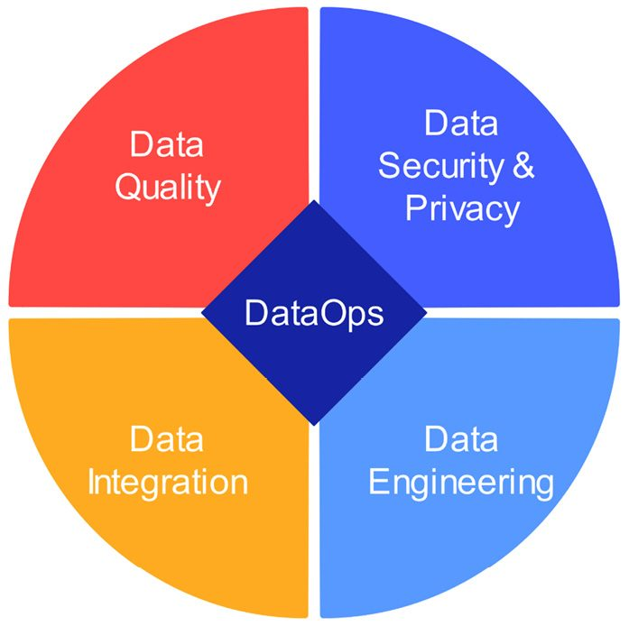
이 장의 목표는 이 책에서 제시하는 모범 사례들이 왜 이러한 구조로 이루어져 있는지 이해하기 위한 토대를 마련하는 것입니다. 이러한 토대는 일상적인 엔지니어링 업무에서 채택하는 프레임워크를 더욱 안전하고 탄탄하게 만드는 확고한 발판을 제공할 것입니다. 데이터 엔지니어링 과제를 해결하는 솔루션을 바라보는 관점은 다양하며 각 벤더, 엔지니어링 학파, 클라우드 제공업체는 저마다 성공을 위한 공식을 내세울 것입니다. 궁극적으로 그 성공은 오늘 작동하게 만들고 미래에도 계속 작동하도록 유지할 수 있는 역량에 달려 있습니다. 다양한 힘의 고유한 균형을 확보해야 합니다. 그러나 기초가 올바르지 않으면 이 균형은 쉽게 깨질 수 있습니다. 독자 여러분은 특정 엔지니어링 과제에 대해 자연스럽게 편향을 가질 수 있습니다. 이러한 편향은 틈새(또는 편협한) 집중 방향으로 여러분을 몰아갈 수 있습니다. 예를 들어, 파이프라인 소프트웨어 개발 노력을 소홀히 한 채 견고하고 가용성이 높은 멀티 리전 운영에만 집착하는 경우가 있습니다. 그 결과 견고성은 과도하게 구축되고 핵심 기능은 덜 개발될 수 있습니다. 마찬가지로, 소비자의 데이터 품질을 희생하면서 개발 변경 사항을 프로덕션으로 전달하는 초고속 애자일 스트리밍에만 집중할 수도 있습니다. 보다 일반적으로는, 현대 정보 처리 시스템에서 데이터 처리를 왜 신중하게 구조화해야 하는지에 대한 초점을 잃고 단순히 IT 작업을 수행하는 것(doing IT) 자체에 매몰되는 중대한 위험이 있습니다. 소프트웨어 시스템이 데이터의 유일한 해석 주체가 되게 두는 대신, 의미론적 맥락(semantic context)과 함께 데이터를 캡처하여 진실되고 관련성 있는 데이터로 만들어야 하는 필요성을 간과해서는 안 됩니다. 이러한 자유로움 덕분에 데이터와 맥락은 현재와 미래 모두의 목적에 부합하는 정보와 동일한 가치를 지니게 됩니다.
이제 비즈니스 문제 정의부터 시작하겠습니다.
비즈니스 문제 정의란 무엇인가?
오늘날 데이터 엔지니어링 접근 방식은 빠르게 변화하고 있습니다. 이러한 방식들은 체계적이고 일관된 전체로 융합될 것입니다. 이러한 변화의 핵심에는 데이터가 시간의 흐름에 따라 사실과 진실을 만들어낸 합리화 과정과 더불어 사실과 진실을 나타내야 하는 정보라는 인식이 자리 잡고 있습니다. 미래의 정보 시스템에는 어떠한 거짓된 사실(false facts)도 존재해서는 안 됩니다. 이 용어가 이상하게 들릴 수도 있습니다. 사실이 거짓일 수 있을까요? 이 질문은 다소 도발적으로 느껴질 수 있습니다. 하지만 우리는 종종 바로 그것을 밝혀내기 위해 IT 시스템을 구축해 오지 않았습니까?
우리는 비즈니스 맥락과 의미를 보존하면서도 데이터를 해당 소프트웨어 시스템을 통해서만 제공되도록 강제하는 방식으로 데이터를 처리합니다. 데이터는 스스로 독립적으로 존재하지 못하며 맥락을 벗어나 소비될 경우 이러한 거짓된 사실이 비즈니스 환경으로 전파될 수 있습니다. 오늘날 데이터는 단독으로 존재할 수 없으며 기술적 한계를 지닌 정보 처리 시스템에 의해 변환되어야 합니다. 실용주의 프로그래머(Pragmatic programmers) {https://packt-debp.link/zS3jWY}의 불완전한 도구와 기술은 불완전한 솔루션을 만들어낼 것입니다. 그럼에도 불구하고 엔지니어는 솔루션을 제작할 때 모든 거짓된 사실을 제거하지는 못하더라도 가능한 한 많이 제거해야 하는 임무를 맡고 있습니다. 이는 과거에는 달성하기 어려웠던 과제였습니다.
우리는 종종 지름길을 택합니다. 그리고 “도무지 시간이 없다!”라거나 “그 모든 데이터를 다 얻을 방법은 없다!”는 식의 말로 이러한 타협을 정당화합니다. 비즈니스 측에서는 “데이터를 올바르게 큐레이션할 여력이 없다”거나, 마지막으로 “바닷물을 다 끓일(boiling the ocean) 예산이 없다”고 말합니다. 하지만 우리는 바닷물을 다 끓일 필요가 없습니다.
우리가 생각해야 할 것은 바로 그 바다를 어떻게 곧바로 증기로 바꿀 것인가 하는 점입니다! 굴복하는 대신 이것이 우리의 대응이어야 합니다! 이러한 발상의 전환이야말로 미래 경쟁력을 갖춘 솔루션을 설계할 때 정확히 필요한 자세입니다. 문제를 완전히 새로운 시각으로 다시 생각한다면 어려운 일도 여전히 가능합니다. 비유를 바꾸자면, 우리는 데이터를 혁신의 엔진을 움직이는 새로운 연료로 사용할 것입니다.
Fun fact
2006년 수학자 클라이브 험비(Clive Humby)는 “데이터는 새로운 석유다(data is the new oil)”라는 문구를 만들었습니다 {https://packt-debp.link/SiG2rL}.
데이터 시스템은 지식의 완전성(knowledge-complete)을 확보하기 위해 거짓된 사실을 스스로 치유할 수 있어야 합니다. 결국 참된 사실(true fact)이란 무엇일까요? 미래의 관찰이 이전의 진실을 반박할 때까지 증거에 의해 뒷받침되는 가설에 불과하지 않을까요? 마찬가지로 정보를 지식으로 체계화하려면 시맨틱(semantics, 의미론), 맥락, 시계열적 관련성을 포착하는 것뿐만 아니라, 특정 사실이 데이터셋 내에서 정보적 진실로 표현되는 타당한 이유까지 포착해야 합니다. 이것이 바로 지식이 정의하는 바, 즉 진실입니다! 그러나 이를 위해서는 올바른 표현이 필요합니다.
Note
지식 베이스(knowledge base)의 진실은 시간의 시험을 견뎌내고 지식 베이스에 포함된 진실을 구성하는 정보 맥락을 숨기지 않는 주장(assertions)에 의해 입증된 사실들로 구성됩니다.
하지만 때로는 정보가 충분하지 않을 때 우리는 추측을 합니다. 이러한 추측은 직관과 관련 도메인의 유사한 상호 연결된 정보 패턴에 대한 과거 경험을 바탕으로 합니다. 인간은 추측에서 크게 틀릴 수 있습니다. 그러나 강력한 직관에 기반한 추측은 혁신적인 큰 도약으로 이어질 수 있으며 이는 나중에 경험적으로 수집된 데이터로 채워질 수 있습니다.
그때까지 우리는 종종 지식의 공백을 메우기 위해 진실을 확장하여 해석하곤 합니다. 정보 관계 패턴은 물론 정확한 경험에 기반한 추측(educated guesses)을 기록하는 가설도 유지되어야 합니다. 이러한 방식으로 데이터의 진실을 추측할 수 있습니다. 훌륭하게 추측할 수도 있습니다! 심지어 이러한 추측이 틀린 것으로 판명되면 이를 되돌릴 수도 있습니다. 지능을 지원하기 위해 데이터를 새로운 방식으로 구성하는 것은 필수적입니다. 가설을 지지하거나 반박하기 위한 추론이 필요하며 진실을 형성하기 위해 정보를 지식으로 유지하는 것이 필수적입니다. 비즈니스가 활용할 수 있는 프레임워크 내에서 빅데이터를 지식과 진실로 구성하는 문제를 해결하지 않는다면, 우리는 클라우드 제공업체에 컴퓨팅 주기와 자금만 낭비하는 셈이 됩니다.
이 책은 모범 사례에 초점을 맞출 것이지만 몇 가지 나쁜 관행도 강조할 필요가 있습니다. 이는 시간이 지남에 따라 데이터 엔지니어의 도구 상자에 슬그머니 들어와 우리가 성공하고자 하는 미션을 방해하는 안티패턴(anti-patterns)을 형성합니다. 다음으로 이러한 안티패턴들을 살펴보겠습니다.
피해야 할 안티패턴
안티패턴이란 무엇일까요? 이는 구현의 용이성을 위해 사용되는 아키텍처 패턴이자 청사진입니다. 물리적인 건물을 지을 때 건축 아키텍트가 엔지니어에게 기대 사항을 명확히 전달하기 위해 청사진을 사용하는 것과 같습니다. 일반적인 솔루션이 반복해서 성공적으로 사용된다면 벽체의 골조나 지붕 트러스처럼 패턴으로 자주 재사용됩니다. 마찬가지로 안티패턴은 피해야 할 패턴입니다. 추운 기후에서는 파이프가 얼 수 있으므로 외벽에 배관을 설치하지 않는 것과 같습니다.
첫 번째 안티패턴은 가치 있다고 생각하여 데이터로 보관하지만 저장된 방식 때문에 더 이상 이해하거나 처리할 수 없고 데이터가 처음 스토리지(클라우드 스토리지 등)에 저장될 때 맥락적 의미를 전혀 캡처하지 않아 그 의미가 상실된 잡동사니(stuff)를 보관하는 문제입니다.
두 번째 안티패턴은 열 형식(column-formatted) 데이터에 대한 비즈니스 소유자의 의미나, 이러한 열들이 서로 어떻게 연관되어 비즈니스 의미를 형성하는지 알지 못하는 문제입니다. 이러한 의미가 데이터 자체가 아니라 소프트웨어 솔루션 내에만 보존되었기 때문입니다. 우리는 약간의 명확성을 얻기 위해 인쇄된 종이 값어치도 못하는 개체 관계 다이어그램(ERD, Entity Relationship Diagram)에 의존하지만 다음번에 애자일 개발자가 이를 업데이트하지 않는 순간 그 명확성마저 사라져 버립니다. 미래 경쟁력을 갖춘 데이터 엔지니어링 솔루션을 개발하면서 미래에 피해야 할 사항을 아는 것은 이 책의 토대를 마련하는 데 도움이 될 것입니다.
방금 소개한 두 가지 안티패턴을 더 잘 이해할 수 있도록, 다음의 구체적인 사례를 통해 피해야 할 사항을 설명하겠습니다.
안티패턴 1: 쓸모없는 쓰레기까지 보관해야 하는가?
하지 말아야 할 일(what not to do)의 한 예로, 과거에 저는 수년간의 데이터를 보관해 온 시스템을 조사한 적이 있었는데, 그 데이터가 3개월만 지나면 쓸모없어진다는 사실을 알게 되었습니다. 그 데이터를 생성한 처리 코드가 지난 수년 동안 수백 번 변경되었고 그 처리에 의해 생성된 데이터셋에 아무런 기록도 남기지 않은 채 계속 발전해 왔기 때문입니다. 마스터링되지 않은 데이터셋에 적용된 가설과 가정들은 데이터 프레임워크에 보존되지 않았습니다. 그 데이터를 계속 보관하는 것은 미래의 빅데이터 분석가가 이를 재사용하려다 헛걸음하게 만드는 미끼(red herring)에 불과했습니다. 제가 “왜 애초에 이 데이터를 보관했습니까?”라고 물었을 때, 회사 정책상 보관해야 한다는 답변을 들었습니다. 우리는 처리할 수도 없는 잡동사니 더미가 가치 있다고 생각하는 사람들을 종종 마주합니다. 어떤 데이터는 가치가 있기는커녕 정반대일 수 있습니다. 잘못 재사용될 경우 비즈니스적 부채(liability)가 될 수 있습니다. 워터폴 방식으로 수집된 비즈니스 요구사항이나 수많은 애자일 개발 스토리조차도 정보에서 지식으로 이어지는 데이터의 여정에 대한 데이터 리니지(data lineage) 및 데이터 시맨틱을 위한 견고한 데이터 프레임워크 없이는 이 문제를 해결할 수 없습니다. 이러한 스마트 데이터 프레임워크가 없다면 도출된 인사이트는 잘못된 것이 될 것입니다!
안티패턴 2: 도대체 저 열(Column)은 무슨 뜻인가?
마찬가지로 또 다른 하지 말아야 할 일의 예로, 저는 여러 게시된 기사에 걸친 웹 소비자 사용량을 정교하고 다채로운 그래픽으로 렌더링한 적이 있습니다. 제 입으로 말하기는 그렇지만 정말 예술 작품이었습니다. 그 인사이트는 일부 사용자가 큐레이션하는 데 비용이 많이 드는 몇 가지 핵심 정보 클래스에 전혀 참여하지 않고 있음을 명확하게 보여주었습니다. 하지만 그것은 순전한 허구의 산물이었고 결국 폐기되어야 했습니다! 실제 사용량 값이 아니라 사용자의 접근 순위가 역순으로 저장된 핵심 데이터셋 열 하나를 제가 잘못 사용했기 때문이었습니다.
데이터 처리 시스템을 개발하는 동안 이전 개발자들은 메타데이터 카탈로그도, 데이터 아키텍처 문서도, 열에 대한 셀프서비스 텍스트 정의도 작성해 두지 않았습니다. 그 모든 정보는 오직 한 명의 이기적인 데이터 분석가의 머릿속에만 들어 있었습니다. 그 분석가는 비즈니스 데이터를 인질로 잡고 본인만이 도출할 수 있는 인사이트를 생성한다는 명목으로 막대한 보수를 챙기고 있었습니다. 이 인물을 교체하려는 모든 시도는 그 인사이트를 소비하는 핵심적이고 강력한 소비자가 IT 경영진의 결정을 무효화하면서 무산되었습니다. 결과적으로 절실히 필요했던 거버넌스 기반 분석 엔터프라이즈 표준 구현이 중단되었습니다. 그러한 환경에서 데이터를 사용하는 것은 기술적 지뢰밭을 걷는 것과 같았습니다.
조직은 무슨 수를 써서라도 이러한 시나리오를 피해야 합니다. 이는 데이터 사일로(data silo)를 초래하는 나쁜 관행의 안티패턴입니다. 이는 개인이 틈새 입지를 지키려 하거나 사일로화된 비즈니스 목표를 추구하기 때문에 발생합니다. 방금 설명한 사례에서 그 안티패턴은 거버넌스가 의무화한 분석용 엔터프라이즈 표준의 사용을 무산시키는 것이었습니다. 데이터가 스스로를 설명할 수 있는 데이터 프레임워크에 거버넌스를 올바르게 구현함으로써 이러한 남용으로부터 문제를 방지할 수 있습니다.
이 두 가지 안티패턴을 모두 보여주는 실제 시나리오를 생각해 보겠습니다. 한 대형 전자상거래 기업에 customer_value라는 필드가 포함된 수년간의 고객 구매 데이터가 있습니다. 원래 이 필드는 고객이 지출한 총금액을 사용하여 계산되었지만 지원 문서가 업데이트되지 않은 채 수년에 걸쳐 그 의미가 반복적으로 변경되었습니다. 몇 년 후에는 total_spending - total_returns로 계산되었습니다. 나중에는 머신러닝(ML, Machine Learning) 모델에 기반한 predicted_lifetime_value가 되었습니다. 새로운 데이터 과학자가 회사에 입사하여 마케팅 캠페인을 위해 고객을 세분화하는 데 이 필드를 사용했을 때, 그 결과는 재앙적이었습니다! 초기 몇 년 동안의 고가치 고객은 저평가된 반면 신규 고객은 과대평가된 것입니다! 이 사례는 적절한 맥락 없이 데이터를 보관하는 것(안티패턴 #1)과 데이터 필드에 대한 명확한 문서화 부족(안티패턴 #2)이 어떻게 중대한 실수로 이어질 수 있는지를 잘 보여줍니다.
미래 경쟁력을 갖춘 아키텍처의 패턴
이 책을 쓰는 우리의 노력은 데이터 엔지니어에게 현재의 정보 기술 솔루션에서 우리가 데이터를 정보로 처리하고 있지만 실제로는 데이터를 사용하여 비즈니스에 지식 기반의 통찰을 제공하기를 원한다는 현실을 강조하는 데 있습니다.
오늘날 우리는 비즈니스 소비를 위해 정보를 흉내 내도록 데이터를 조작하는 코드로 솔루션을 짜맞추고 있습니다. 우리가 진정으로 원하는 것은 비즈니스 정보를 데이터와 함께 보존하고 데이터를 스마트하게 만들어 맥락 속의 정보가 데이터 소비자에게 인사이트를 제공하는 지식을 형성하도록 하는 것입니다. 데이터의 발전은 단순한 원시 데이터에서 시작하여 시맨틱과 맥락의 보존을 통해 정보로 변환된 다음 지식으로 발전하며, 마지막으로 분석을 통해 도출된 인사이트의 개발로 이어지며, 이는 향후 장에서 자세히 설명될 것입니다. 18장에는 여러분이 흥미를 느낄 만한 다양한 사용 사례를 포함했습니다. 수년간의 경험을 통해 저는 데이터를 더 똑똑하게 만드는 것이 언제나 보상을 가져다준다는 것을 배웠습니다.
그 결과로 도출된 인사이트는 비즈니스가 데이터로부터 통찰을 필요로 할 때 새롭고 혁신적인 방식으로 비즈니스에 제시될 수 있습니다. 우리가 기술 환경에서 발견하는 공백은 데이터가 인사이트 생성기로 활용되기 위해서는 데이터의 여정이 정보에 입각한(informed) 여정이어야 한다는 점입니다. 혁신은 소프트웨어 엔지니어에 의해 미리 규격화(pre-canned)되어 만들어질 수 없습니다. 혁신은 IT 데이터 시스템이 데이터 여정의 여러 단계에서 제시하는 지식으로부터 비즈니스 및 IT 리더들의 생각 속에서 이끌어내는 것입니다. 이를 위해서는 데이터, 데이터의 시맨틱, 리니지, 개념과의 직접적 또는 유추된 관계, 시계열 및 맥락이 보존되어야 합니다.
단일 솔루션으로 이러한 요구를 해결할 수 있는 기술 도구와 데이터 처리 기법은 아직 마련되지 않았지만 그 필요성은 명확하게 구상되고 있습니다. 하나의 모놀리식 데이터 웨어하우스, 데이터 레이크, 지식 그래프(knowledge graph) 또는 인메모리 저장소만으로는 오늘날 사용자로부터 발생하는 모든 수요를 해결할 수 없습니다. 도구가 발전하려면 시간이 필요합니다. 우리는 분석가에게 어떤 데이터(즉, 진실)를 제공할 것인지에 대해 전술적으로 구현하고 전략적으로 생각해야 합니다.
Key thought
구현: 필요한 만큼만, 적시에(Just enough, just in time).
전략적 사고: 데이터는 똑똑해야 한다(Data should be smart).
혁신적인 모델링 접근 방식을 적용하면 시스템적 및 내재적 위험이 따를 수 있습니다. 새로운 기술을 활용하면 비즈니스에 핵심적인 이점을 가져다줄 것입니다. 기술적 실패나 납기 실패의 위험을 최소화하는 것이 필수적입니다. 데이터 메시(data mesh)와 데이터 패브릭(data fabric)을 논하는 학문적 논쟁을 생각할 때, 우리는 다양한 클라우드 벤더와 도구 제공업체들이 혁신의 필요성을 수용하면서도… 잘못된 정보를 가진 비즈니스 IT 리더를 빨아들일 수 있는 새로운 기술적 중력을 만들어내는 것을 봅니다.
기억하십시오. 이것은 진화적 사건이며 일부에게는 멸종 수준의 사건(extinction level event)이 될 수 있습니다. 마이크로소프트와 아마존은 더 많은 클라우드 지출과 더 강력한 클라우드 벤더 종속(lock-in)을 유도하는 잘 설계된(well-architected) 모범 사례를 내세울 수 있습니다. 클라우드 서비스형 플랫폼(PaaS, Platform-as-a-Service) 상품, 클라우드 아키텍처 패턴, 벤더의 편향된 교육은 시스템과 이를 구축하는 사람들에게 치명적인 사건이 될 수 있습니다. 관계형 데이터베이스 관리 시스템(RDBMS, Relational Database Management System), 데이터 레이크, 운영 지식 그래프 또는 실시간 인메모리 스토리지 시스템의 제작사와 같은 도구 제공업체도 마찬가지입니다. 어떠한 제공업체나 그들의 전문 컨설팅 서비스도 경고 표지판을 달고 나오지 않습니다. 위험을 최소화하고 이익을 극대화하려는 리더로서 여러분은 최종 목표에 주목해야 합니다.
“아무도 없이는 살 수 없는, 영원히 지속되는 데이터 솔루션을 구축하고 싶다!”
이 목표를 달성하려면 미션을 매우 명확히 하고 앞으로 나아갈 명확한 비전을 유지해야 합니다. 잘 정립된 원칙, 모범 사례, 핵심 고려 사항에 대한 명확한 입장, 그리고 이의를 제기할 수 없는 거버넌스 모델을 갖춘다면 목표를 달성할 수 있습니다. 싸울 준비를 하십시오! 이 분야는 항상 진화하고 있으며 아키텍처가 운영되기도 전에 시간에 따라 아키텍처에 대한 도전이 발생할 것입니다. 우리의 제안은 항상 이러한 도전에 대비하고 아키텍처의 준수나 거버넌스를 강제하기 위해 정치적 권력에만 의존하지 말라는 것입니다.
현대적인 시스템을 구축할 때 다음 단계들을 고려해야 합니다.
- 비즈니스로부터 목표 및 핵심 결과(OKRs, Objectives and Key Results)를 수집하고 조기에, 그리고 자주 성공을 입증하십시오.
- 핵심 이해관계자를 위해 언제든 즉시 시연할 수 있는 데모를 항상 준비해 두십시오.
- 투자 수익률(ROI, Return on Investment)을 입증하여 핵심 이해관계자들의 참여와 만족을 유지하십시오. 또한 그들이 여러분의 노력을 지원하고 자금을 제공하고 있다는 점을 고려하십시오.
- 기능 대 비용 비율을 면밀히 추적하고 시스템의 총 소유 비용(TCO, Total Cost of Ownership)의 일환으로 누가 얼마의 비용으로 가치를 얻고 있는지 파악하십시오.
- 이해관계자와 사용자에게 영향에 대처할 충분한 시간을 주지 않고 데이터 서비스 수준 협약(SLA, Service Level Agreement)이나 데이터 계약을 절대 깨뜨리지 마십시오. 데이터 소비자의 기대치를 명확하게 정의하므로 계약을 전혀 깨뜨리지 않는 것이 가장 좋습니다!
- 하위 호환성을 유지하고 비즈니스가 인사이트를 얻기 위해 시스템을 활용하기 시작한 후에는 결코 계약 위반을 일으키지 않는 데이터 시스템을 설계하십시오. 비즈니스의 기반을 무너뜨리는 것은 애초에 솔루션을 제공하지 않는 것보다 더 큰 영향을 미치는데, 다운스트림 기대치를 여러분의 납품을 바탕으로 설정해 두었기 때문입니다.
현대적인 데이터 솔루션을 구축할 때 고려해야 할 패턴과 피해야 할 패턴이 많다는 것을 알 수 있습니다. 소프트웨어 엔지니어, 데이터 관리자, 데이터 과학자, 데이터 분석가는 비즈니스가 요구할 목표 및 핵심 결과(OKRs) 외에도 각자의 관점과 기술적 요구사항을 가지고 접근할 것입니다. 모든 기술 담당자가 동료의 전문 분야에서 요구하는 뉘앙스를 존중하는 것은 아닙니다. 그럼에도 데이터 엔지니어는 변화의 피라미드 꼭대기에서 균형을 잡으며 미래 경쟁력을 갖춘 솔루션을 제공해야 합니다.
다음 절에서는 기술적 우위를 유지하고 시간의 시험을 견뎌내는 솔루션을 만드는 데 필요한 균형을 유지하는 방법을 보여드리겠습니다.
미래 경쟁력을 갖춘다는 것의 의미
솔루션의 미래 경쟁력을 확보한다(future-proof)는 것은 현재의 요구에 부합하고, 확장 가능하며, 비용 효율적일 뿐만 아니라 미래에도 여전히 유효한 솔루션을 구축함을 의미합니다. 이 목표는 모범 사례와 디자인 패턴을 활용하여 참조 아키텍처(reference architecture)를 구축하는 데 지속적으로 집중함으로써 달성할 수 있습니다.
목표는 다음과 같습니다.
미래 경쟁력을 갖춘 데이터 처리 시스템 구축으로 이어지는 확장 가능하고 경제적인 IT 전략, 아키텍처 및 설계를 개발하라.
위의 목표에 직면했을 때, 변화는 혁명적(revolutionary)이라기보다는 진화적(evolutionary)이라는 점을 고려해야 합니다. 이는 데이터 아키텍처가 견고하고 미래 경쟁력을 갖추고 있음을 의미합니다. 시스템을 100% 미래 경쟁력 있게 만드는 것은 환상에 불과하지만 완벽에 가까운 미래 경쟁력을 갖춘 시스템을 달성하겠다는 목표는 항상 핵심 원칙의 주된 원동력으로 남아 있어야 합니다.
화려하게 반짝이는 신기술의 매력이 IT 시스템 관리자를 오류의 그물로 유인하는 미끼가 되어서는 결코 안 됩니다. 비록 멋진 기술이 수많은 벤처 자금과 시드 투자를 유치하거나 이력서(CV, Curriculum Vitae)에 빛나는 경력을 더해줄 수는 있을지라도 말입니다. 특정 틈새 분야에서 혁신적 파괴자(disrupter)에 의해 돌파구가 마련되면 그러한 기술은 순식간에 사라져 버릴 수도 있습니다. OpenAI, ChatGPT 및 관련 거대 언어 모델(LLM, Large Language Model) 기술이 본격적으로 출시되었을 때 어떤 일이 일어났는지 보십시오. 대화형 인공지능(AI, Artificial Intelligence)은 이미 수많은 시스템을 변화시켰습니다.
혁신이 확산되고 나면 과거에 어려웠던 기술이 이제는 쉬워지고 종종 오픈소스로 공개되어 범용화(commoditized)됩니다. 설령 어떤 비즈니스 소프트웨어 방법론이나 프로세스 중심의 지식 재산(IP, Intellectual Property)이 특허로 보호받고 있다 하더라도, 10년, 15년, 20년의 세월이 지나면 이 또한 자유롭게 재사용할 수 있게 됩니다. 특허 출원 공개 과정에서 가치 있는 통찰이 경쟁사에게도 공개됩니다. 최첨단 기술의 승자는 소수에 불과하며 뛰어난 두뇌들은 혁신적인 돌파구가 마련될 때까지 동일한 문제를 두고 동시에 연구를 진행하여 종종 유사한 접근 방식을 만들어냅니다. 데이터 엔지니어링이 바로 이러한 변곡점에 가까워지고 있는 단계입니다.
승자보다는 패자가 언제나 훨씬 더 많을 것입니다. 조직의 예산 규모와 위험/보상에 대한 문화에 따라, 반짝이는 아이디어가 눈부신 스타가 될 수도 있습니다. 그러나 이 혜성을 쫓는 사람들의 90%는 전체 IT 예산과 함께 사라져 버리는 실패작을 개발하고 맙니다. 우리의 제안은 비즈니스의 자금 흐름을 따르고 애자일하게 개발하여 IT 주도 실패의 위험을 최소화하라는 것입니다.
IDC(International Data Corporation)와 비즈니스 인텔리전스 전문 기업인 클릭(Qlik)은 다음과 같은 비유를 제시했습니다.
“데이터는 새로운 물이다(Data is the new water).”
데이터를 석유라고 부르든 물이라고 부르든, 이러한 진술 속에서도 위대한 아이디어가 왜곡되고 변형되어 사용되곤 합니다. 중요한 것은 데이터가 정보가 되고 그 정보가 직접적, 유추적, 파생적 지식을 창출할 수 있는 방식으로 표현되어야 한다는 점입니다. 진실은 시간을 포함한 맥락 속의 지식으로 정의되어야 합니다. 우리는 단순한 데이터 처리 시스템이 아니라 지능, 통찰, 그리고 시간의 시험을 견뎌내는 진실의 발전을 지원하는 지식 인식 시스템(knowledge-aware systems)이 필요합니다. 그렇게 해야만 시스템이 미래 경쟁력을 갖출 수 있습니다. 데이터는 마치 흙탕물처럼 너무 탁합니다. 다음과 같은 요인들로 인해 흐려져 있습니다.
- 현재 머신의 불충분함을 보완하기 위해 만들어진 불필요한 구조들
- 데이터의 의미와 리니지(lineage)에 대한 오해로 인한 오류들
- 개인정보 보호 및 보안을 이유로 한 의도적인 불투명성
- 메타데이터의 부재로 인한 맥락 또는 상태의 누락
- 데이터 결측 및 데이터가 수집된 도메인에 맞게 데이터를 올바르게 모델링하기 위한 예산 부족으로 인해 복잡한 관계가 기록되지 않아 발생하는 시맨틱(의미론)의 누락
데이터 수명 주기 프로세스와 비용은 종종 충분히 고려되지 않습니다. 비즈니스 사용 사례가 무엇이 중요한지를 이끕니다(참고: 사용 사례가 개념적, 논리적, 물리적 아키텍처로 어떻게 표현되는지는 이 책의 5~7장에서 훨씬 자세히 설명할 것입니다). 사용 사례가 충분히 일찍 식별되지 않는 경우가 많습니다. 솔루션의 일부로 구현된 데이터 서비스는 문서화되지 않은 채 방치되곤 합니다. 데이터의 유효 기간 동안 제대로 소통되지도, 잘 관리되지도 않습니다. 그 결과 데이터 품질은 빗속에 방치된 각설탕처럼 녹아내립니다. 시간이 지남에 따라 가치가 저하되면서 본질적인 가치를 잃게 됩니다. 데이터의 유효성은 시간이 지나면서 가치를 잃습니다. 이는 비즈니스 및 기술 계약이 유지되지 않음으로써 가속화될 수 있으며 이러한 유지 관리가 없으면 데이터셋의 거버넌스에 대한 신뢰가 상실됩니다. 그로 인해 발생하는 비즈니스 사일로 간의 마찰은 뚜렷해집니다. 잠재적인 해결책은 데이터 계약(data contracts)을 갖춘 비즈니스 데이터 서비스를 만드는 것이었습니다. 이러한 계약은 잘 관리된 메타데이터로 정의되며 저장 상태의 데이터셋(시맨틱)뿐만 아니라 출처(리니지) 및 보안 방식을 설명합니다. 또한 구독한 품질 지표를 적시에 유지 관리하기 위한 소프트웨어 서비스 계약도 포함합니다.
기업은 데이터셋에 가격을 매기고, 부가가치 데이터셋으로 강화하며, 최고 입찰자에게 판매할 수 있도록 지원해야 합니다. 이는 시간이 지남에 따라 데이터 시스템을 유지 관리하는 비용이 증가할 수밖에 없기 때문입니다. 부가가치 강화 및 범용화된 데이터 거래소로의 재통합을 위해 제출되는 데이터의 관련성(정확성)은 핵심 목표입니다.
데이터를 이동시키지 말고 시맨틱과 리니지를 보존하기 위해 메타데이터와 함께 제자리에서 강화하라!
최고 입찰자는 프레임워크 아키텍처에 따라 데이터를 기반으로 구축하고 데이터 시스템이 모델링된 시맨틱 도메인을 보존합니다. 한 번 쥐면 절대 놓치지 않는 래칫(ratchet)처럼, 데이터셋은 정확해야 하며 시간이 흘러도 현실과의 연결을 굳건히 유지해야 합니다. 데이터셋이 생성된 이 현실은 품질이나 데이터 서비스 수준을 희생하지 않고도 부가가치 재판매업체(VAR)에 의해 제안될 수 있습니다.
시간이 지남에 따라 데이터의 정확성, 맥락, 관련성을 유지하는 비용은 단일 조직이 특정 도메인에 대해 감당할 수 있는 수준을 초과하게 됩니다. 당연히 IT 리더에게는 데이터를 움켜쥐고 사일로를 만들려는 본능이 남아 있습니다. 말 그대로 녹아내리고 있는 기존 시스템의 불완전성을 숨기려는 이러한 자연스러운 현실은 미래 데이터 아키텍처의 접근 방식에서 반드시 해결되어야 합니다. 데이터가 진화/표류(drift)하고 부가가치가 더해지면서도 여전히 정확하고 유지보수 가능하도록 허용하는 것이 필수적입니다. 이 접근 방식을 사용하면 특정 도메인 내에서 사실, 주장 및 기타 모델링된 관계 간의 불완전한 정렬이 줄어들 것입니다.
오늘날의 처리 시스템에서는 데이터가 “지금 당장은 충분히 좋다(good enough for now)”고 여겨지는 수준까지만 큐레이션되는 경우가 너무 많습니다. 하지만 미래의 재활용 목적에는 충분하지 않습니다. 그것은 데이터를 그저 “쓸 만하게” 만들었던 모든 가정, 격차, 파편, 불완전한 데이터 구현을 고스란히 안고 있습니다. 데이터가 올바르고 스스로를 설명할 수 있다면 데이터 서비스 코드는 더 단순해집니다. 시스템 솔루션은 우아하게 설계됩니다. 데이터 조직이 비즈니스 도메인에 대해 진화하면서도 100% 정확성을 유지하도록 설계되었기 때문에 변화의 압력을 견뎌내도록 구축됩니다.
“처음부터 제대로 만들기에는 시간이나 예산이 결코 충분하지 않다… 하지만 나중에 몇 번이고 다시 바로잡을 시간은 항상 있다!”
이러한 실용주의적 접근 방식은 더 나은 데이터 엔지니어링 프레임워크를 찾으려는 IT 리더의 탐색을 중단시킬 수 있습니다. 솔루션이 일단 돌아가기만 하면 모범 사례는 귀찮은 존재가 될 수 있으며 우리는 작동하는 것을 굳이 고치고 싶어 하지 않습니다. 그러나 현재 사용 가능한 도구 선택지에 대해 현실을 직시해야 합니다. 어떤 솔루션을 구현하든 그 비용은 적정해야 하지만 아키텍처 실사(due diligence) 프로세스의 일환으로 혁신의 기회가 무르익었을 때 이를 포착하기 위해 여전히 기술의 한계를 밀어붙여야 합니다.
특정 주제 도메인의 지식 베이스에서 데이터의 시맨틱 표현을 위해 레이블이 지정된 속성 그래프(labeled property graphs)와 커스텀 코드를 사용하는 방식과 비교하여 OWL-RDF의 시맨틱 그래프 기술과 SPARQL을 통한 모델링 및 검증의 복잡성을 고려해 보십시오. 두 방식 모두 장단점이 있습니다. 그러나 실시간 분석 사용 사례 지원을 위해 인메모리 분석 저장 영역을 동기화하는 변경 데이터 캡처(CDC, Change Data Capture) 메커니즘을 구현하지 않고는 어느 쪽도 확장할 수 없습니다. 클라우드 기술은 모든 용도에 맞는 단일 데이터 저장소, 데이터 레이크 또는 데이터 웨어하우스를 제공하는 데까지는 미치지 못했습니다. 모든 사용 사례와 운영 서비스 요구사항을 충족하는 단 하나의 기술 솔루션이란 존재하지 않는다고 말하는 것이 더 정확합니다.
한 가지 크기가 모든 것에 맞지 않듯이, 하나의 데이터 표현이 모든 사용 사례에 맞지는 않는다.
모놀리식 데이터 레이크, 델타 레이크(Delta Lake), 원시 데이터 스토리지 또는 데이터 웨어하우스 하나만으로는 비즈니스 요구를 충족할 수 없습니다. 필요한 사용 사례를 지원하는 데 적합한 크기의 솔루션을 만들기 위해서는 데이터의 논리적 세분화와 종종 물리적 세분화가 필요합니다. 데이터 엔지니어는 비용, 보안, 성능, 확장성, 안정성 요구사항은 물론 제공업체의 한계까지 균형을 맞추어야 합니다. 한 가지 신발 크기가 모든 사람에게 맞지 않듯이… 솔루션은 구현 가능해야 하며 시간이 지나도 계속 기능해야 합니다.
존(Zone) 구성에 관한 고려 사항
이 책에서 제시하는 데이터 엔지니어링 모범 사례의 한 가지 측면은 중요한 데이터 패턴을 위한 일차적인 데이터 표현 형태의 필요성입니다. 원시 수집 존(Raw ingest zone)은 입력 사물 인터넷(IoT, Internet of Things) 데이터, 소매업체의 원시 POS(Point-of-Sale) 데이터, 화학적 특성 참조 데이터 또는 웹 분석 사용량 데이터를 보관하도록 구상되었습니다. 우리는 존(zone)의 개념이 Databricks 메달리온 아키텍처(Databricks Medallion Architecture) (https://www.databricks.com/glossary/medallion-architecture)에 명시된 레이어들의 공식화가 될 것을 제안합니다. 해당 아키텍처 패턴의 구조를 읽어보거나, 더 자세한 설명이 제공되는 6장을 읽을 때까지 기다려보는 것도 좋습니다.
원시 데이터는 수집 처리의 일환으로 데이터 프로파일링 시스템 처리를 적용해야 할 수 있지만 이는 구문적 또는 의미론적 부정확성으로 인해 입력 데이터가 거부되지 않도록 하기 위함입니다. 이렇게 프로파일링된 데이터는 데이터 파이프라인 여정의 다음 처리 단계로 넘어가기 전에 기본적인 방식으로 정규화될 수도 있습니다. 데이터의 변환은 브론즈 존(bronze zone)으로의 처리, 이후 실버 존(silver zone), 골드 존(gold zone)으로의 처리를 거쳐 마침내 (실시간 셀프서비스 분석 사용 사례를 위한) 소비 존(consumption zone)으로 준비되는 과정을 포함합니다.
브론즈, 실버, 골드 존은 다양한 클래스의 정보를 호스팅합니다. 골드 존의 데이터 구성은 전형적인 데이터 웨어하우스와 매우 유사하고, 브론즈 존은 데이터 레이크와 유사하며, 실버 존은 브론즈 존의 데이터를 처리하여 얻은 수많은 파생, 대체(imputed), 유추 데이터가 포함된 캐시 지원 데이터 레이크입니다. 이 실버 존 데이터는 온라인 트랜잭션 처리(OLTP, Online Transaction Processing) 사용 사례를 지원하지만 처리된 결과물은 골드 존에 저장합니다. 골드 존은 정보에 대해 직접 OLTP 사용 사례를 지원할 수도 있습니다.
소비 존은 사용자의 측정값, 계산된 지표 및 온라인 분석 처리(OLAP, Online Analytic Processing) 요구를 제공하도록 활성화됩니다. 시스템을 올바르게 유지하기 위한 명확한 프레임워크와 모범 사례가 없다면 이 모든 것을 동기화 상태로 유지하는 것은 악몽과 같은 복잡성이 될 수 있습니다. 이 존 청사진을 구현하는 데 필요한 AWS 또는 애저 클라우드 PaaS 솔루션에서 선형적인 데이터 흐름 제어력을 상실하는 상황을 상상해 보십시오. 명확한 아키텍처, 데이터 프레임워크, 모범 사례, 거버넌스가 없다면 수많은 시행착오를 겪을 준비를 해야 합니다.
클라우드의 한계
데이터 엔지니어링 모범 사례는 아키텍처를 설계할 때 데이터 이동 비용과 분석을 위한 서드파티 도구 배포 비용을 유발하는 현재 클라우드 제공업체의 한계와 제약 조건을 반드시 고려해야 합니다. 궁극의 시스템을 상상해 보십시오. 대규모 패브릭이나 메시에서 관계를 지원하기 위해 컴퓨팅 코드가 데이터와 함께 상주하며 테라바이트급 데이터를 1밀리초 미만으로 접근할 수 있는 제타바이트(zettabyte)급 메모리 큐브를 말입니다. 오늘날에는 불가능합니다! 하지만 기다려 보십시오… 내일은 이것이 현실이 될지도 모릅니다. 그렇다면 미래의 그 비전으로 손쉽게 이동하기 위해 오늘날에는 어떻게 구축해야 할까요? 이것이 바로 이 책의 모범 사례가 집중하는 부분입니다. 모든 트렌드는 결국 빅데이터와 AI를 지원하는 데이터 시스템의 탄생을 가리키고 있습니다.
그 비전의 일부로 형성되고 있는 몇 가지 핵심 트렌드와 개념이 있습니다. 데이터 공유, 기밀 컴퓨팅(confidential computing), 그리고 “알고리즘을 데이터가 있는 곳으로 가져오기(bring your algorithm to the data)”와 같은 개념은 데이터가 기업을 벗어나 공개 도메인으로 진입할 때 데이터셋, 그 시맨틱, 비즈니스 가치를 재목적화(repurposing)하기 위한 핵심 접근 방식으로 고려되어야 합니다. 데이터, 정보, 파생 지식과 함께 데이터 소비 핸들이 제공되며 이는 대략적으로 정의된 메타데이터 그 이상입니다. 이는 부가가치 정보의 흐름에 대한 금전적 보상이 가능하도록 신뢰를 유지하는 데 필요한 리니지, 시맨틱, 맥락, 시의적절한 가치로 구성됩니다. 이러한 로열티 계약은 데이터를 재판매 가능하게 만들고 모호함을 제거합니다. 책이 출판되는 것처럼 데이터도 출판될 수 있습니다. 이 책의 모범 사례는 시간이 지남에 따라 큐레이션된 정보 위에 부가가치 서비스 개발을 지원할 수 있도록 데이터의 위치를 설정할 것입니다. 스마트 데이터는 그 자체로 부가가치 생태계가 되며 이는 데이터가 해당 시스템이 생성된 처리 상태의 스냅샷에 불과했던 과거 세대의 소프트웨어 데이터 처리 시스템만큼이나 중요합니다.
지능의 시대
미래의 서비스형 데이터(DaaS, Data-as-a-Service) 상품은 이 책에서 강조할 새로운 데이터 엔지니어링 프레임워크에 의존하게 될 것입니다. 또한 우리는 해당 구조에 필요한 개발 프레임워크를 위한 모범 사례 고려 사항을 보여줄 것입니다. 데이터와 메타데이터를 정보로, 그리고 다시 인사이트로 큐레이션하는 과정은 데이터를 시간의 시험을 견뎌내는 진실로 변환하는 과정을 포함할 것입니다. 정보의 상품화에 필요한 이 새로운 데이터 프레임워크는 우리가 정보의 시대(Information Age)를 지나 지능의 시대(Intelligence Age)로 진입함에 따라 필수적입니다. 지능의 시대에는 인간과 AI 시스템이 작동시킨 정보로부터 형성된 지식에서 인사이트를 얻습니다.
AI 목표를 달성하려면 지능의 시대를 정의하는 다양한 머신러닝 및 딥러닝 알고리즘의 적용이 필요합니다. 이러한 알고리즘과 함께 매우 진보된 양자 컴퓨터와 제타바이트급 인메모리 스토리지 어레이의 발전을 구상할 수 있습니다. 이것들은 새로운 데이터 엔지니어링 조직의 일부로 필요할 것입니다. 종종 논의되지 않는 것은 이러한 알고리즘을 촉진하는 데 필요한 데이터 엔지니어링 프레임워크입니다. 그렇지 않으면 데이터 레이크는 순식간에 데이터 늪(data swamp)으로 변할 것입니다. 컴퓨팅 파워는 비약적으로 발전할 것입니다. 오늘날 우리가 소프트웨어 시스템에 구축하는 것은 그러한 하드웨어 발전을 위한 길을 닦는 것이지, 그 반대가 아닙니다. 소프트웨어 알고리즘이 필요한 하드웨어 컴퓨팅 파워를 견인하며 그렇지 않으면 하드웨어는 제대로 활용되지 못한 채 남게 됩니다. 데이터 엔지니어링은 이러한 진화 과정에서 뒤처진 분야였습니다.
이러한 목적으로, 이 책은 최고 IT 리더십의 사고를 위한 고려 사항과 함께 모범 사례를 제공함으로써 데이터 엔지니어링 아키텍처와 설계를 미래 경쟁력 있게 만들기 위해 작성되었습니다. 이와 함께 데이터 아키텍트와 데이터 엔지니어를 위한 사용 사례 정당성을 갖춘 몇 가지 실용적인 데이터 아키텍처 접근 방식이 제공되어 모범 사례 설명을 더욱 풍부하게 해줄 것입니다.
사용 사례 정의
질문: 왜 모든 데이터 엔지니어링 시스템의 개발은 사용 사례 중심(use-case-driven)이어야 하는가?
답변: 비즈니스의 요구사항과 통합되는 솔루션을 개발하지 못한다면, 그 솔루션은 무의미하며 전달될 수도 없고 그 효능을 정량화할 수도 없다.
사용 사례가 없다면 데이터 처리 시스템은 지속적인 자금 지원을 유지하는 데 필요한 가시적인 가치를 제공하지 못합니다. 어떤 솔루션이 땅콩버터 이래 최고의 발명품이라 할지라도, 기대치를 충족하지 못하는 실패가 발생하기 시작하면 순식간에 끔찍한 사후 분석 회의로 전락할 것입니다.
솔루션은 납품에 대한 테스트 주도 접근 방식을 지원하는 자체 문서화되고 자체 시연 가능한 사용 사례의 모음으로 구축되어야 한다.
이는 일부는 예술이고 일부는 과학이지만 적절하게 초점을 맞춘 시스템 데이터 아키텍처를 통해 완전히 실현 가능합니다. 참조 사용 사례를 정의하고 그것이 아키텍처를 어떻게 지원할지 정의하는 것은 달성하기 높은 기준입니다. 사용 사례가 생성되어 솔루션의 기능으로서 개발 계획에 반영될 때, 그 노력 속에서 길을 잃어서는 안 됩니다. 초점을 유지하려면 비전, 전략, 명확한 미션이 필요합니다.
미션, 비전, 그리고 전략
이 개요 섹션에서 기초를 마련한 미션과 비전에서부터 시작해야 합니다. 이것들은 조직의 전략과 일치해야 하며 그렇지 않다면… 일치를 이루어내야 합니다. 이에 대해서는 다음 섹션에서 더 자세히 설명하겠습니다.
원칙과 개발 수명 주기
원칙(Principles)은 아키텍처를 정의하는 비즈니스 전략의 개발에서 이루어지는 선택을 지배하며 여기서 기술 전문가들은 비즈니스 요구를 충족하기 위해 예술과 과학을 적용합니다. 다시 말하지만 일치(alignment)는 반드시 필요합니다. 그렇지 않으면 첫 번째 문제가 발생했을 때 쉽게 극복하기 어려워집니다. 개발 수명 주기 초기에 실수를 저지르는 비용은 엔지니어링 개발 수명 주기 후반에 오류를 범하는 것보다 훨씬 큽니다. 데이터 엔지니어링 수명 주기(life cycle)는 아키텍처에서 시작됩니다.
아키텍처 정의, 모범 사례 및 핵심 고려 사항
아키텍처는 다양한 방식으로 개발될 수 있지만 엔지니어, 아키텍트, 저자로서 우리가 발견한 것은 핵심 아키텍처 산출물에 세 가지 주요 구성 요소가 필요하다는 점입니다.
- 개념 아키텍처 (Conceptual architecture)
- 논리 아키텍처 (Logical architecture)
- 물리 아키텍처 (Physical architecture)
개념 아키텍처는 대내외적인 커뮤니케이션 도구로서 명확하게 구현된 비즈니스 미션, 비전, 전략 및 원칙을 보여줍니다. 개념 아키텍처의 정의에는 솔루션에 필요한 모든 역량을 보여주는 역량 매트릭스(capabilities matrix)가 포함되며 이는 매핑된 산출물이 될 것입니다. 이것이 5장의 초점이 되겠지만 지금은 솔루션 개념의 기초가 비즈니스의 비전, 미션, 전략과 일치하는 원칙이 될 것이라는 점을 아는 것만으로 충분합니다.
논리 아키텍처는 개념 아키텍처를 구현하는 데 필요한 소프트웨어 서비스와 데이터 흐름을 보여주며 개념을 해당 개념의 논리적 구현과 연결합니다. 물리 아키텍처는 배포 가능한 소프트웨어, 구성, 데이터 모델, ML 모델, 솔루션의 클라우드 인프라를 정의합니다.
우리의 모범 사례와 핵심 고려 사항은 금융, 헬스케어, 출판, 과학 분야의 빅데이터 처리 시스템 및 스타트업에서의 수년간의 경험에서 도출되었습니다. 이러한 분야에서 일할 때 프로젝트에는 소셜 미디어, 헬스케어, 소매 분석 데이터의 분석이 포함되었습니다.
논리 아키텍처와 물리 아키텍처에 포함된 정보를 사용하여 사용 사례를 생성할 수 있습니다.
- 논리적 사용 사례:
- 소프트웨어 서비스 흐름
- 데이터 흐름
- 물리적 사용 사례:
- 인프라 구성 정보
- 운영 프로세스 정보
- 소프트웨어 컴포넌트 인벤토리
- 알고리즘 매개변수화(parameterization)
- 데이터 품질/테스트 정의 및 구성 정보
- DevOps/MLOps/TestOps/DataOps 추적(trace) 정보
재사용 가능한 디자인 패턴은 깔끔한 인터페이스를 갖고 여러 데이터 도메인에서 재활용할 수 있을 만큼 범용적이어서 이러한 패턴을 개발하고 운영하는 비용을 절감해 주는 이러한 사용 사례들의 그룹입니다. 스마트 데이터 프레임워크의 구조로 인한 소프트웨어 설계의 단순화 덕분에 사용 사례는 손쉽게 패턴으로 결합될 것입니다. 이는 향후 소프트웨어 개발의 가속기가 될 것입니다. 데이터 흐름은 이러한 디자인 패턴으로 표현되며 이는 단순한 정적 종이 문서 정의 그 이상이 됩니다. 그것은 아키텍처와 일치하는 데이터 프레임워크의 엔지니어링 솔루션을 통한 데이터 여정을 반영하는 운영 디자인 패턴이 될 것입니다.
DataOps의 융합
데이터 여정은 초기 원시 데이터 수집부터 최종 사용자의 소비를 위해 변환된 정보를 배치하는 분류에 이르는 경로입니다. 큐레이션되고 소비 가능한 데이터는 다양한 활동 존(zone)을 거쳐 진행됩니다. 이들은 다음 장들에서 더 명확히 정의되겠지만 브론즈, 실버, 골드 존이 그것입니다. 데이터셋은 이러한 활동 존으로 논리적, 물리적으로 그룹화된 데이터 팩토리(data factory) 방식으로 큐레이션됩니다. 데이터 팩토리에서 호스팅되는 모든 커스텀 구축 및 구성된 데이터 파이프라인 여정은 여러분이 개발하게 될 데이터 엔지니어의 표준 프로세스를 활용합니다. 그렇지 않으면 IT 운영과 합의된 계약을 통한 서비스 수준 유지가 위험에 처하게 됩니다. 데이터 변환 및 카탈로깅 활동은 다른 이들이 명명한 DataOps를 중심으로 이루어집니다.
2025년까지 DataOps 실무와 도구의 안내를 받는 데이터 엔지니어링 팀은 DataOps를 사용하지 않는 팀보다 생산성이 10배 더 높아질 것입니다. (2022 Gartner Market Guide for DataOps Tools, {https://packt-debp.link/6JRtF4})
가트너(Gartner)에 따르면 DataOps는 5가지 핵심 역량으로 구성됩니다.
- 오케스트레이션(Orchestration) 역량에는 다음이 포함됩니다.
- 연결성 (Connectivity)
- 스케줄링 (Scheduling)
- 로깅 (Logging)
- 리니지 (Lineage)
- 문제 해결 (Troubleshooting)
- 알림 (Alerting)
- 워크플로 자동화 (Workflow automation)
- 가관측성(Observability) 역량은 다음을 지원합니다.
- 실시간 또는 과거 워크플로 모니터링
- 워크플로 성능에 대한 인사이트
- 비용 지표
- 영향도 분석 (Impact analysis)
- 환경 관리(Environment management) 역량은 다음을 다룹니다.
- 코드형 인프라(IaC, Infrastructure as Code)
- 리소스 프로비저닝
- 자격 증명(Credential) 관리
- IaC 템플릿 (재사용 목적)
- 배포 자동화(Deployment automation) 역량에는 다음이 포함됩니다.
- 버전 관리
- 승인 절차
- 클라우드 CI/CD 및 파이프라인
- 테스트 자동화(Test automation) 역량은 다음을 제공합니다.
- 검증 (Validation)
- 스크립트 관리
- 데이터 관리
이러한 DataOps 원칙이 어떻게 적용될 수 있는지 설명하기 위해, 재고 관리 시스템을 배포하는 대형 소매 유통 회사를 상상해 보십시오. 그림 1.2를 참조하십시오.
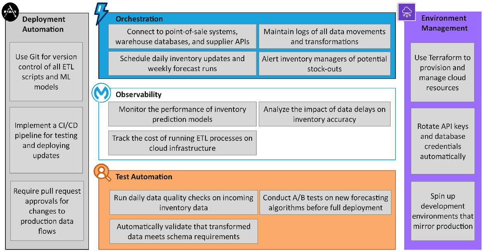
많은 서드파티 벤더가 DataOps 열풍에 동참하여 현대 클라우드 데이터 시스템을 위한 DevOps, MLOps, TestOps 실무의 융합을 촉진하는 환상적인 도구를 생산해 냈습니다.
이 책의 데이터 엔지니어링 모범 사례는 특정 도구 선택에 대해 중립을 유지하면서 가트너가 언급한 DataOps 실무도 지원할 것입니다. 초점은 DataOps 노력을 통해 간소화되고 효율적이며 미래 경쟁력을 갖추게 될 데이터 엔지니어링 프레임워크에 맞춰질 것입니다. 그림 1.3을 참조하십시오.
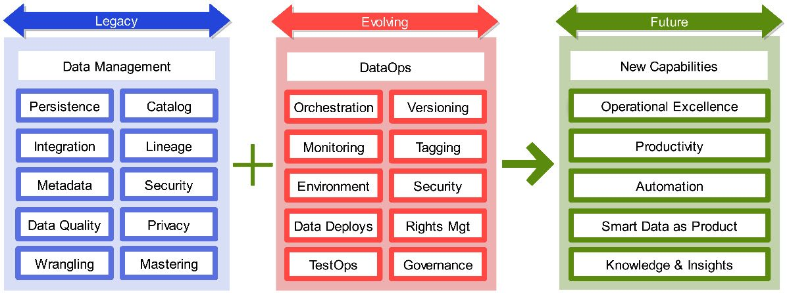
DataOps가 기존 데이터 관리 프로세스에 많은 가치를 더하여 새로운 역량이 가능해지는 미래를 열어준다는 점은 명백합니다. 다음 인용문에서 현대적인 DataOps 프로세스가 어떻게 더 빠른 개발을 가능하게 하는지 확인할 수 있습니다.
한 참조 고객은 1년 전에는 3개월에 한 번 릴리스했던 것과 비교하여 자사 환경에 적합한 DataOps 도구를 도입함으로써 한 달에 120번의 릴리스를 수행할 수 있었다고 언급했습니다. (Gartner, 2022, {https://packt-debp.link/41DfFu})
요약
이번 비즈니스 문제 개요에서 여러분은 이후 장들에서 자세히 다루게 될 여러 기초 요소를 배웠습니다. 이 장에서는 데이터 엔지니어링의 현황과 미래 경쟁력을 갖춘 설계의 창출을 이해하는 데 필요한 주제들을 소개했습니다. 여러분은 기업이 끊임없이 변화하는 기술 환경에 직면해 있다는 사실을 배웠습니다. 경쟁에서 살아남기 위해서는 대규모 혁신이 필요합니다. 이로 인해 일반적으로 시스템 수명 주기의 운영/관리 단계에 해당해야 할 기간에도 리팩터링과 재구상을 위한 총 소유 비용(TCO) 예산 할당이 끊임없이 발생합니다. 이 장과 이후 장들에서 우리는 엔지니어링 솔루션의 TCO를 수없이 언급할 것입니다. 이러한 언급은 개발된 솔루션이 현실 세계의 비즈니스 환경 내에 존재한다는 사실을 모든 이해관계자에게 일깨워 주는 역할을 할 것입니다. 솔루션은 때때로 가능성을 제한하는 예산 제약이 전혀 없는 추상적인 진공 상태에서 만들어지는 것이 아닙니다. TCO가 명확하더라도 예산에 의해 제약을 받을 때, 이러한 제약 사항이 기업에 보고되는 월간 및 분기별 레이더 보고서에 반복적으로 나타난다는 점을 주목하는 것이 중요합니다. 이러한 제약 사항은 높은 확률로 위험을 초래했을 것입니다. 끊임없는 상기가 없다면, 비즈니스는 이러한 제약이 솔루션에 어떤 영향을 미쳤는지 잊어버리게 될 것입니다.
또한, 참된 사실로 포장된다 하더라도 거짓된 사실(false facts)을 양산하는 시스템을 구축하는 것은 어리석은 일입니다. 미래의 데이터 솔루션을 스마트하게 만드십시오! 우리는 데이터 및 정보 솔루션이 더욱 똑똑해지고 지식 및 지능 역량을 지원하게 될 흥미진진한 미래로 진입하고 있습니다. 변화를 수용하고 그것이 여러분의 데이터 엔지니어링 선택에 미치는 영향을 파악하십시오. DataOps는 오늘날의 복잡한 데이터 중심 세상에서 데이터를 관리하기 위한 필수적인 접근 방식으로 데이터 전문가들에 의해 채택되어야 합니다.
한 가지 크기가 모든 것에 맞지 않으므로, 데이터 계약을 염두에 두고 구축하면 물리적 데이터 아키텍처 내에서 동일한 논리적 데이터를 목적에 맞게 병렬 인스턴스화하여 데이터 저장소를 개발하도록 유도하게 됩니다. 미래 경쟁력을 갖춘 데이터 솔루션을 올바르게 구축하려면 솔루션을 비즈니스에서 사용할 수 있도록 만드는 과정에서 발생하는 복잡한 조율로 인해 구현이 조기에 무산되는 것을 방지하기 위한 비전, 전략, 미션 및 아키텍처적 접근 방식이 필요합니다.
서드파티 벤더와 클라우드 제공업체는 서로 통합되지 않거나, 더 나쁘게는 반드시 피해야 할 아키텍처 안티패턴을 조장하는 잘 설계된(well-architected) 솔루션을 내놓을 것입니다. 따라서 개념이 완전히 이해되고 여러분의 아키텍처와 조직의 목표에 맞게 합리화되기 전까지 데이터 메시와 클라우드 제공업체의 데이터 패브릭은 단순한 유행어에 불과합니다. 여러분이 개발한 아키텍처에 맞게 데이터 솔루션을 일관되게 설계하고, 시스템 전반에 걸쳐 사용 사례를 개발하며, 데이터 계약을 통해 구축된 신뢰를 유지하기 위해 지속적인 서비스에 대해 테스트, 회귀 테스트(regression test) 및 모니터링을 수행하십시오.
마지막으로, 애자일(agile)을 유지하십시오! 읽으십시오! 배우십시오! 혁신적이 되십시오! 전체적인 그림을 파악하고 나면, 미래 지향적인 관점이 여러분에게 앞으로 마주칠 장애물을 넘어설 수 있는 통찰력을 부여할 것입니다. 여러분은 거버넌스가 갖춰진 애자일 아키텍처 프로세스를 통해 데이터 솔루션과 그 데이터를 항상 신선하고 최신 상태로 유지할 수 있게 될 것입니다.
다음 장에서는 이 개요를 바탕으로 아키텍처적 배경 과제들을 살펴보겠습니다.
2장. 데이터 엔지니어의 여정: 배경 과제
이 장의 목적은 데이터 엔지니어로서 성공적인 여정을 헤쳐 나가기 위해 직면해야 하는 과제들을 설명하는 것입니다. 방대한 데이터의 관리, 끊임없이 진화하는 기술, 효율적인 데이터 파이프라인의 보장이라는 복잡한 특성은 데이터 엔지니어링을 까다로운 분야로 만드는 걸림돌 중 일부입니다. 이 장에서는 데이터 엔지니어링이 왜 어려운지 설명하고 이후 장들에서 논의될 원칙의 개발을 위한 토대를 제공할 것입니다. 또한 이러한 과제를 헤쳐 나갈 때 필요한 통찰력도 제공할 것입니다. 마지막으로 현재와 가까운 미래의 기술 환경을 조망하는 데 사용할 수 있는 데이터 엔지니어링 접근 방식에 대한 개요를 제공할 것입니다.
우리는 세 가지 주요 데이터 엔지니어링 과제를 논의할 것입니다.
- 플랫폼 아키텍처가 빠르게 변화한다
- 솔루션을 직접 구축하기보다 구매하는 전략으로 인해 발생하는 높은 비용과 솔루션 수명에 미치는 영향
- 순진한 데이터 엔지니어들을 대상으로 마케팅되는 방대하게 진화하는 데이터 저장소 패턴들
“큰 돌, 자갈, 모래로 유리병을 채워야 한다고 상상해 보십시오. 병에 무엇을 먼저 넣겠습니까?” (Marlow consulting, 2023년 6월 7일, https://getmarlow.com/article/big-rocks-pebbles-sand---how-to-manage-it-all-1563899084731x981090384055894000).
이 비유는 우선순위 목록에 무엇이 들어가야 하는지 정할 때 자주 인용되며 “큰 돌(big rocks)”은 최우선 순위를, 그 뒤를 잇는 “자갈(pebbles)”은 중간 순위를, 마지막으로 “모래(sand)”는 가장 낮은 순위를 상징합니다. 큰 돌의 교훈은 돌을 순서대로 병에 넣지 않으면 나중에 모든 것이 다 들어가지 않는다는 것입니다. 우리는 이러한 과제를 헤쳐 나갈 때 수용해야 할 주요 고려 사항 또는 초점으로 간주되는 데이터 불변성, 리니지 추적, 데이터 품질 보존, 확장성, 보안 및 규정 준수, 데이터 발견 가능성 및 접근성, 비용 효율성과 같은 큰 돌 목록을 제공합니다.
이러한 과제를 이해하는 데 도움을 주기 위해 오늘날 일어나고 있는 데이터 엔지니어링 기술 변화의 개요를 제공할 것입니다. 또한 데이터 웨어하우스, 데이터 레이크, 데이터 패브릭, 데이터 메시, 인메모리 데이터 저장소, 틈새 데이터 애그리게이터(niche data aggregators)와 같은 일반적인 데이터 엔지니어링 아키텍처 패턴에 대한 개요도 얻게 될 것입니다. 우리는 다음 항목들도 논의할 것입니다.
- 데이터 웨어하우스 (Data Warehouse)
- 데이터 레이크 (Data Lake)
- 데이터 패브릭 (Data fabric)
- 데이터 메시 (Data mesh)
- 인메모리 데이터 저장소 (In-memory data stores)
- 틈새 데이터 애그리게이터 (Niche data aggregators)
이 장을 읽고 나면 데이터 엔지니어링 내부의 배경 과제를 이해하고 이를 헤쳐 나갈 역량을 갖추게 될 것입니다. 수년에 걸쳐 진화해 온 다양한 아키텍처 패턴뿐만 아니라 데이터 엔지니어링 역사의 관련 측면도 알게 될 것입니다. 데이터 엔지니어링 아키텍처의 역사적 진화를 깊이 파고듦으로써 현재의 과제에 대해 미묘하고 정교한 이해를 얻게 되며 미래 경쟁력을 갖춘 솔루션을 생성할 때 이를 더 잘 헤쳐 나갈 준비를 갖추게 될 것입니다. 마지막으로 견고한 데이터 엔지니어링 시스템 구축을 뒷받침하는 필수적인 고려 사항을 이해하게 될 것입니다. 이 장에서는 세 가지 주요 과제 범주를 다룰 것입니다. 그림 2.1에 나와 있듯이 각각의 범주 내에는 고려해야 할 요소들이 포함되어 있습니다.
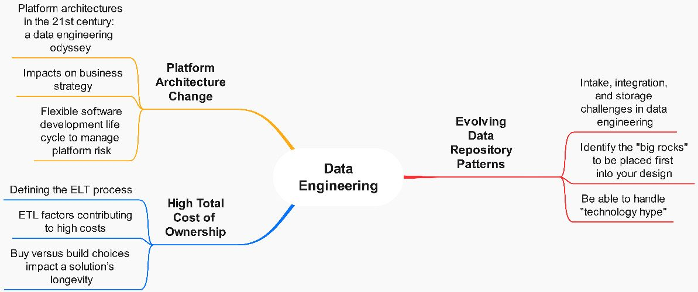
수많은 데이터 패턴은 데이터 엔지니어링의 빠른 기술 변화 속도를 보여주는 예입니다. 그러나 다음 섹션에서 논의하겠지만 변화는 데이터 엔지니어링의 모든 측면에 걸쳐 광범위하게 퍼져 있습니다.
과제 1: 플랫폼 아키텍처가 빠르게 변화한다
플랫폼 아키텍처의 역동적인 환경은 데이터 엔지니어에게 기회와 도전 과제를 동시에 안겨줍니다. 시스템과 기술이 빠르게 진화함에 따라 이 분야의 전문가들은 이러한 변화에 발맞춰 나가야 하는 절박한 필요성에 직면해 있습니다. 이러한 변화에 적응하는 것은 단순히 최신 도구나 프레임워크를 이해하는 것만이 아닙니다. 잠재적인 병목 현상을 예측하고, 시스템 호환성을 보장하며, 이러한 발전을 수용하기 위해 프로세스를 최적화하는 것에 관한 것입니다. 또한 이러한 빈번한 변화는 데이터 엔지니어가 끊임없이 학습하는 마인드셋을 갖추도록 강제하여 끊임없이 변화하는 환경 속에서 자신의 기술과 지식이 지속적으로 유효하도록 보장합니다.
이 섹션에서는 SQL에서 NoSQL로의 이동, 빅데이터의 부상, 클라우드로의 마이그레이션과 같이 지난 20년 동안 플랫폼 아키텍처에서 일어난 구조적 변화에 대해 배울 것입니다. 그림 2.2를 참조하십시오.
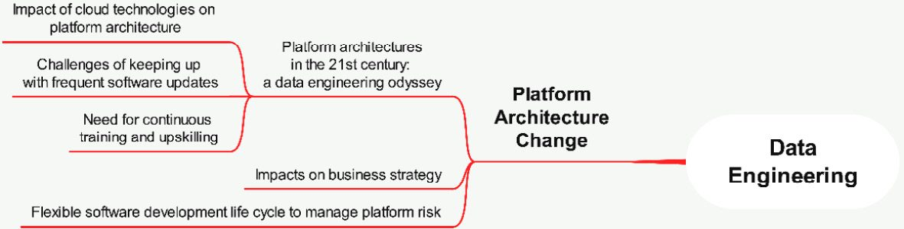
우리는 이러한 변화가 비즈니스 전략에 어떤 영향을 미치는지, 그리고 유연한 소프트웨어 개발 수명 주기(SDLC, Software Development Life Cycle)를 통해 플랫폼 위험을 어떻게 관리할 수 있는지에 집중할 것입니다.
21세기의 플랫폼 아키텍처
지난 20년 동안 데이터 엔지니어링이 어떻게 진화해 왔는지 되돌아보는 것은 큰 통찰을 줍니다. 새로운 밀레니엄이 시작될 무렵 관계형 데이터베이스 관리 시스템(RDBMS, Relational Database Management System)이 지배적인 패러다임이었습니다. 21세기의 시작은 전례 없는 기술 변혁의 시대를 가져왔습니다. 이전의 변화와 마찬가지로 빠르게 적응한 기업과 개인은 번창한 반면, 변화에 저항한 이들은 어려움을 겪었습니다. 데이터 엔지니어의 시각에서 볼 때 이 시기 플랫폼 아키텍처의 진화는 그야말로 혁명적이었습니다. 다음 섹션에서는 이러한 변화와 그것이 여러분의 설계에 어떤 영향을 미치는지 알아볼 것입니다.
- 빅데이터의 도래가 여러분의 설계에 어떤 영향을 미치는가? 새로운 밀레니엄은 방대한 양의 데이터에 대한 약속과 함께 시작되었습니다. 전자상거래 사이트, 사물 인터넷(IoT) 기기, 소셜 미디어 등에서 데이터가 쏟아져 들어오며 데이터 소스가 급증했습니다. 20세기 후반에 매우 유능했던 전통적인 RDBMS 솔루션은 이러한 데이터의 맹공격 속에서 균열을 드러내기 시작했습니다. 엄청난 데이터의 양(Volume), 다양성(Variety), 속도(Velocity)는 새로운 아키텍처를 필요로 했습니다. 구글의 맵리듀스(MapReduce)에서 영감을 받은 하둡(Hadoop)과 그 생태계는 분산 스토리지와 병렬 처리를 제공하며 이러한 패러다임 전환을 상징했습니다. 그러나 이러한 전환과 함께 데이터 엔지니어링은 클러스터 관리, 내결함성(fault tolerance), 데이터 일관성 보장과 같은 새로운 과제에 직면했습니다.
- NoSQL 대 관계형 스키마 결정이 설계에 어떤 영향을 미치는가? 구조화된 SQL의 세계는 다재다능한 상대인 NoSQL 데이터베이스를 만났습니다. 문서 지향(document-oriented) MongoDB이든, Cassandra와 같은 와이드 컬럼(wide-column) 저장소이든, Neo4j와 같은 그래프 데이터베이스이든 NoSQL 아키텍처는 유연성을 제공했습니다. 하지만 데이터 무결성, 일관성, 트랜잭션 보장에 대한 의문도 함께 제기했습니다. 이제 데이터 엔지니어링의 세계는 한쪽에는 구조와 원자성, 일관성, 고립성, 지속성(ACID, Atomicity, Consistency, Isolation, and Durability) 보장이, 다른 쪽에는 유연성과 확장성이 자리 잡으며 양분되었습니다.
- 클라우드 제공업체의 등장이 설계에 어떤 영향을 미치는가? AWS, Azure, 구글 클라우드 플랫폼(GCP, Google Cloud Platform)과 같은 클라우드 제공업체의 부상은 판도를 완전히 바꾸어 놓았습니다. 데이터 스토리지는 더욱 경제적이 되었고, 탄력적인 컴퓨팅 리소스는 처리 패러다임을 재구성했으며, 서비스형 플랫폼(PaaS) 상품은 운영을 간소화했습니다. 그러나 이러한 클라우드 움직임은 데이터 엔지니어링이 데이터 전송 속도, 멀티 클라우드 전략, 클라우드 네이티브 도구 적응이라는 과제와 씨름해야 함을 의미했습니다. 클라우드 컴퓨팅은 확장 가능한 실시간 예측 분석 솔루션을 제공할 수 있게 해줍니다. 클라우드의 컴퓨팅 최적화 서비스는 정적인 레거시 보고서와 달리 의사결정 지원 및 분석을 위한 비용 효율적인 역량을 제공합니다. 이러한 필수적인 클라우드의 이점은 여러분의 미래 솔루션에 반드시 포함되어야 합니다.
- 실시간 스트리밍에 대한 필요성이 설계에 어떤 영향을 미치는가? 배치(batch) 처리가 유일한 해답이었던 시대는 지났습니다. Kafka 및 Spark Streaming과 같은 플랫폼은 실시간 분석의 시대를 열었습니다. 데이터 엔지니어링 작업은 저지연(low-latency) 데이터 수집 보장에서부터 대규모 스트림 처리 관리에 이르기까지 복잡성이 커졌습니다.
- 컨테이너화와 마이크로서비스가 설계에 어떤 영향을 미치는가? 과거의 모놀리식 아키텍처는 마이크로서비스에 자리를 내주었고 그와 함께 Docker와 Kubernetes가 등장했습니다. 이제 데이터 엔지니어는 컨테이너 간의 데이터 작업을 조율하고, 마이크로서비스 전반에 걸쳐 원활한 데이터 흐름을 보장하며, 컨테이너 오케스트레이션을 관리해야 하는 상황에 놓이게 되었습니다.
- AI 및 머신러닝 통합이 설계에 어떤 영향을 미치는가? 머신러닝 모델이 연구실에서 프로덕션 환경으로 이동함에 따라 데이터 엔지니어링 플랫폼은 머신러닝(ML) 파이프라인을 지원하도록 진화해야 했습니다. TensorFlow {https://packt-debp.link/ENz3e1} 및 MLflow {https://packt-debp.link/KJdU8O}와 같은 도구는 피처 엔지니어링(feature engineering)에서 모델 배포에 이르기까지 데이터 작업에 새로운 차원을 더했습니다.
- 데이터 거버넌스 및 품질의 필요성이 설계에 어떤 영향을 미치는가? 데이터의 민주화와 함께 거버넌스 및 품질 보증에 대한 필수적인 요구가 뒤따랐습니다. 데이터 리니지, 카탈로깅, 품질 검사가 무엇보다 중요해졌습니다. 이제 데이터 엔지니어는 데이터의 거시적 측면(아키텍처, 흐름)과 미시적 측면(데이터 품질, 리니지)을 모두 조율해야 합니다.
본질적으로 21세기는 플랫폼 아키텍처에 있어 롤러코스터와 같았으며 끊임없이 관습에 도전하고 혁신을 요구했습니다. 이러한 변화의 교차로에 서 있는 데이터 엔지니어링은 관찰하고 적응하며 혁신하기에 흥미진진한 분야였습니다. 스톤브레이커(Stonebraker)가 자주 강조했듯이, “한 가지 크기가 모든 것에 맞지는 않는다(One size doesn’t fit all)” {https://packt-debp.link/TzSXRT}라는 격언은 이번 세기 데이터 엔지니어링의 여정을 증명해 줍니다.
클라우드 기술이 플랫폼 아키텍처에 미친 영향
클라우드 기술의 등장은 플랫폼 아키텍처에 전례 없는 유연성과 확장성을 가져왔습니다. 클라우드 제공업체 덕분에 조직은 인프라 관리에 대한 부담을 덜고 데이터 엔지니어가 설계, 최적화 및 기능 구현에 집중할 수 있게 되었습니다. 탄력적인 확장, 온디맨드 리소스, 종량제(pay-as-you-go) 모델은 기업이 인프라 투자에 접근하는 방식을 혁신했습니다. 또한 데이터베이스부터 AI 서비스에 이르기까지 클라우드 플랫폼이 제공하는 관리형 서비스(managed services)는 개발 속도를 높이고 시장 출시 기간(TTM)을 단축했습니다.
빈번한 소프트웨어 업데이트를 따라잡는 과제
소프트웨어 도구와 플랫폼의 급격한 진화는 데이터 엔지니어가 항상 긴장 상태를 유지해야 함을 의미합니다. 모든 업데이트는 개선 사항을 가져올 수도 있지만 잠재적인 비호환성이나 새로운 보안 취약점을 가져올 수도 있습니다. 최신 상태를 유지하려면 패치를 설치하는 것뿐만 아니라 그것이 미칠 영향을 이해하는 선제적인 접근 방식이 필요합니다. 새로운 기능을 활용하는 것과 시스템 안정성을 유지하는 것 사이의 균형은 섬세한 줄타기가 됩니다.
지속적인 교육 및 업스킬링의 필요성
데이터 엔지니어링 세계의 빠른 변화 속도는 전문가들이 현재의 성과에 안주할 수 없음을 의미합니다. 지속적인 교육과 업스킬링(upskilling, 역량 강화)은 필수적입니다. 조직은 교육 프로그램, 워크숍, 자격증 취득에 투자하여 팀이 최신 지식과 모범 사례를 갖추도록 보장해야 합니다.
전문가에게 열려 있는 교육 경로는 많습니다. 전체 경력 시간의 20%를 다음과 같은 역량 강화 노력에 할애할 것을 예상하십시오.
- 멘토링을 하거나 멘토링을 받기
- 오픈소스 프로젝트에 참여/기여하기
- 코칭을 하거나 코칭을 받기
- 탁월성 센터(CoE, Center of Excellence)의 구성원이 되어 강사 양성(train-the-trainer) 프로그램의 강사로 참여하기
- 학술지 및 기술 저널 읽기
- 벤더의 사용자/제품 포커스 그룹에 참여하기
- 무료 온라인 교육 수강하기
- 교육 자료 제작하기
- 다른 사람들이 배울 수 있도록 산출물 지식 베이스를 구축하여 자신의 지식을 정리하고 공고히 하기
- 자신 또는 다른 사람들을 위해 다양한 단계에서 필요한 기술이 포함된 5년 및 10년 경력 계획 수립하기
- AWS Summit, Microsoft Ignite, IBM, Databricks AI Summit 등 회사 지원 컨퍼런스에 참석하기
- 공인 자격증 과정 교육 이수하기 (때로는 유용하지만 비용이 많이 들고 지속적인 갱신이 필요함)
- 컨퍼런스에서 발표하기 (자기 평가와 많은 준비, 깊이 있는 지식이 필요함)
- 책 쓰기 (컨퍼런스 발표 준비와 유사하지만 훨씬 더 많은 준비, 연구, 깊은 지식이 필요함)
비즈니스 전략에 미치는 영향
데이터 중심 시대에 플랫폼 아키텍처는 비즈니스 전략에 직접적인 영향을 미칩니다. 데이터를 신속하게 처리하고 인사이트를 얻는 능력은 경쟁 우위를 제공할 수 있습니다. 그러나 아키텍처의 선택은 비용, 확장 잠재력, 미래 변화에 대한 적응력도 좌우합니다. 기업은 전략을 기술 역량과 일치시켜야 하며 이러한 역량이 진화함에 따라 피벗(pivot)할 준비가 되어 있어야 합니다.
기술적 변화에 적응하지 못할 때 발생하는 비즈니스 위험은 무엇인가?
진화하는 기술 환경에 적응하지 못하면 비즈니스에 재앙이 될 수 있습니다. 경쟁사에게 뒤처지는 것, 노후화된 시스템으로 인해 더 높은 비용이 발생하는 것, 보안 위협에 취약해지는 것, 점점 더 디지털화되는 세상에서 고객의 기대치를 충족하지 못하는 것 등이 위험에 포함됩니다.
플랫폼 위험을 관리하기 위한 유연한 소프트웨어 개발 수명 주기
변화하는 플랫폼 아키텍처에 맞서기 위해서는 기민한 소프트웨어 개발 수명 주기(SDLC, Software Development Life Cycle)가 중요합니다. SDLC 프로세스를 더 유연하게 조정하면 조직이 기술적 변화에 신속하게 대응할 수 있으며 시스템 무결성을 훼손하지 않으면서 새로운 도구의 성능을 활용할 수 있습니다. 이 섹션에서는 유연한 SDLC에서 애자일 방법론을 활용하여 플랫폼 위험을 관리하는 방법에 대한 개요를 제공합니다.
- SDLC를 애자일 방법론에 어떻게 적용하는가? 애자일 방법론은 유연성과 대응력을 우선시합니다. 개발을 더 작고 반복적인 주기로 세분화함으로써 데이터 엔지니어링 팀은 새로운 플랫폼 기능이든 변화하는 비즈니스 요구사항이든 변화에 더 효과적으로 대응할 수 있습니다.
- 변화 관리에 있어 애자일과 스크럼(Scrum)의 부상에 어떻게 대처하는가? 애자일과 스크럼은 기술 세계에서 변화를 관리하는 표준이 되었습니다. 협업, 지속적인 피드백, 반복적인 진행을 강조하는 이들의 특징은 데이터 엔지니어링의 역동적인 특성과 완벽하게 일치합니다.
- 변화하는 환경에서 반복적 개발 주기의 이점은 무엇인가? 반복적 주기는 지속적인 개선을 가능하게 합니다. 최종 제품이 나올 때까지 기다리는 대신 팀은 작동하는 모듈을 배포하고 피드백을 수집하며 즉시 조정할 수 있습니다. 이는 최종 제품의 품질을 향상시킬 뿐만 아니라 긴 개발 주기와 관련된 위험을 줄여줍니다.
- SDLC에서 유연성과 안정성의 균형을 어떻게 맞추는가? 유연성이 필수적이기는 하지만 안정성을 희생해서 얻어질 수는 없습니다. 견고한 테스트를 보장하고, 철저한 문서를 유지하며, 모범 사례를 준수하는 것은 모두 민첩성을 추구하는 과정에서 시스템 무결성이 손상되지 않도록 하는 데 중요합니다.
- 기존 프로세스에 대한 빈번한 변경 문제를 어떻게 해결하는가? 지속적인 변화는 혼란을 야기할 수 있습니다. 팀은 새로운 도구에 대한 학습 곡선에 직면하거나, 시스템 마이그레이션으로 어려움을 겪거나, 익숙한 프로세스의 상실과 씨름할 수 있습니다. 변화를 효과적으로 관리하려면 명확한 커뮤니케이션, 포괄적인 교육, 적응성을 수용하는 문화가 필요합니다.
- 유연한 프로세스에서 문서화 및 지식 전달을 어떻게 유지하는가? 프로세스가 진화함에 따라 명확한 문서를 유지하는 것이 중요해집니다. 적절한 문서화는 팀 전환 과정에서 지식이 유실되지 않도록 보장하며 신규 및 기존 팀원 모두가 구축된 시스템을 명확히 이해할 수 있도록 합니다.
다음 섹션에서는 다음 과제인 높은 총 소유 비용(TCO)을 해결하는 방법을 배울 것입니다.
과제 2: 총 소유 비용이 높다
엔지니어는 일을 되게 만드는 임무를 맡고 있습니다! 하지만 엔지니어가 일을 되게 만드는 방식은 많은 제약을 받습니다. 첫 번째는 비용이고 두 번째는 시간입니다. 시간이 지남에 따라 솔루션을 실행하고 관리하는 총비용과 이를 운영상 유지 관리할 수 있는 타당성과 같은 문제도 주목받게 됩니다. 잘 설계된 데이터 솔루션의 TCO는 추출, 변환, 적재(ETL, Extract, Transform, and Load) / 추출, 적재, 변환(ELT, Extract, Load, and Transform) 아키텍처와 선택된 채택 솔루션 및 아키텍처 패턴을 위한 구매 대 자체 구축(buy versus build) 도구 선택에 의해 영향을 받습니다. 그림 2.3을 참조하십시오.
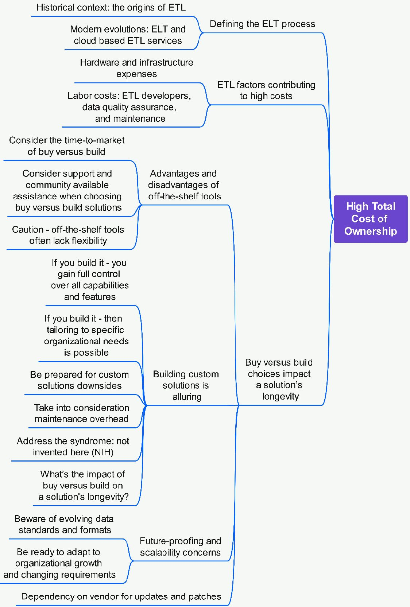
이 섹션을 읽고 나면 ETL/ELT가 무엇인지, 그 기원과 역사적 진화, 비용이 왜 그렇게 높은지, 그리고 자체 구축 대 구매의 장점에 대해 더 깊이 이해하게 될 것입니다. 또한 기존 레거시 마스터 데이터 관리 아키텍처가 왜 더 이상 유행하지 않는지도 알게 될 것입니다.
ETL 아키텍처 비용은 높다!
ETL은 데이터 웨어하우징 및 비즈니스 인텔리전스(BI, Business Intelligence) 솔루션에서 들어오는 데이터에 영향을 미치는 처리의 최전선 역할을 역사적으로 수행해 온 오랜 프로세스 청사진입니다. ETL을 적용함으로써 조직은 원시 데이터를 이해할 수 있게 됩니다. 이는 다양한 데이터 파이프라인 변환을 통해 원시 데이터가 정보로 변환되고 최종적으로 다운스트림 인사이트 생성 단계가 소비자에게 제공될 수 있도록 합니다.
ETL(또는 그 대안인 ELT)은 데이터 엔지니어링의 필수적인 부분입니다. 데이터를 적재하는 과정을 생략할 수 없기 때문에 처리 및 보관에 드는 높은 비용은 주요한 예산 부담이 될 수 있습니다. 이는 데이터 웨어하우스에 골드 표준 데이터를 구축한다는 원하는 결과를 얻기 위해 거버넌스, 워크플로, 룰 엔진으로 데이터 웨어하우스를 감싸는 기존의 레거시 마스터 데이터 관리(MDM, Master Data Management) 솔루션 비용을 평가할 때 더욱 두드러집니다. 클라우드는 이 모든 것을 바꾸어 데이터 웨어하우스에서 E, L, T를 분리해 냈으며 PaaS 서비스에서 더 저렴하고 확장 가능한 고성능 대안으로 홍보되는 솔루션들을 만들어냈습니다.
추출, 변환, 적재(ETL)인가, 아니면 추출, 적재, 변환(ELT)인가? 데이터를 먼저 적재한 후 나중에 변환해야 할 필요성으로 인해 데이터 수집에 ELT 패턴이 도입되었습니다. 원시 데이터는 너무 가공되지 않은 상태일 수 있으며 완전히 수집되어 품질 프로파일링을 거치기 전까지는 정규화할 수 없을 수도 있습니다. 또한 데이터가 목적에 맞게 렌더링되려면 가능한 한 원시 상태에 가깝게 유지되어야 합니다… 단, 너무 날것이어서는 안 됩니다. ELT에 대한 클라우드 서비스 지원의 변화는 Apache Spark, Databricks, Alteryx Trifacta 및 기타 빅데이터 처리 엔진에서 명백히 드러납니다. 따라서 이제는 ETL보다 ELT가 선호됩니다.
아마존과 마이크로소프트와 같은 클라우드 제공업체는 AWS Pipeline {https://packt-debp.link/qqK7ZM} 및 Azure Pipelines {https://packt-debp.link/POYzEK}과 같은 파이프라인 서비스를 생산하여 ELT 처리에 상응하는 작업들을 엮어내는 데 사용했습니다. 클라우드 파이프라인 ETL 솔루션의 총 소유 비용을 레거시 옵션과 비교할 때 분명한 점은 클라우드 솔루션을 사용하여 로직을 구현할 때 더 큰 유연성을 얻을 수 있다는 것입니다. 도구를 완제품으로 구매하는 대신 더 원시적인 PaaS 서비스와 더 세분화된 서드파티 도구로부터 직접 구축하기 때문에 초기 개발 비용과 런타임 비용이 더 높아질 것입니다. 레거시 제공업체의 솔루션 프레임워크에 대한 서드파티 ETL 프레임워크 비용은 많은 기능을 정당화할 수 있지만 과연 조직이 이를 다 통합할 수 있을까요?
많은 고급 기능이 사용되지 않은 채 남겨집니다. 이는 레거시 ETL MDM 도구가 제공하는 인적 거버넌스와 워크플로가 오늘날 마주치는 막대한 데이터 양에 압도당할 때 발생합니다. 저는 수동 데이터 개입을 위한 작업 큐가 10,000줄 이상 쌓여 있는 것을 본 적이 있습니다. 그것들은 무시될 것이고 데이터 오류는 다운스트림으로 전파되거나 더 나쁘게는 데이터 웨어하우스의 골드 표준 데이터로 유입될 것입니다.
다음 섹션에서는 ELT 프로세스와 그 개별 구성 요소 각각을 정의할 것입니다.
ELT 프로세스 정의
ELT(또는 ETL)의 이점은 약어로 식별되는 세 가지 기본 프로세스에 있습니다.
- 추출(Extract): 원시 소스에서 데이터 스토리지로의 데이터 여정을 시작하는 단계입니다. 추출의 본질은 필요한 비즈니스 운영을 반영하는 데이터를 식별하고 캡처하는 데 있습니다. 이는 분석적 추구를 위한 첫 번째 중요한 단계입니다. 어떤 이들은 추출의 범위가 필요한 것만 가져오는 것에 비해 모든 것을 다 가져오는 것이라고 주장합니다. 문제는 내일 무엇이 필요할지 모른다는 점입니다. 추출 프로세스는 모든 것을 가져오되, 오늘 필수적인 것은 내일 사용될 수 있는 데이터셋과 연결된 데이터셋에 저장해야 합니다. 데이터셋을 논리적으로는 함께 묶어두면서도 잠재적으로는 분리할 수 있도록 인덱스와 맵을 그리는 것은 가능한 한 조기에 내려야 하는 핵심적인 결정 사항입니다. 데이터는 트랜잭션 데이터베이스, 플랫 파일, 외부 데이터 소스, API 등 무수한 소스와 유형에서 추출됩니다. 추출된 데이터는 종종 정규화되어 적재 가능한 형태로의 프로파일링과 변환을 기다리는 가공되지 않은 정제되지 않은 자원입니다.
- 적재(Load): 데이터 여정의 이 단계에서 데이터는 데이터 스토리지에 안식처를 찾습니다. 목적에 부합하는 형태로 저장되며 꼼꼼하게 정리되고, 매핑되며, 인덱싱됩니다. 데이터 품질 쿼리, 프로파일링, 랭글링(wrangling), 궁극적인 다운스트림 변환 및 추가 탐색을 위한 준비를 마칩니다. 이렇게 생성된 구조화된 저장소는 다양한 분석 도구의 소스 역할을 하지만 실행 가능(actionable)하게 만드는 데 필요한 모든 메타데이터를 갖추지 못했을 수도 있습니다.
- 변환(Transform): 변환은 데이터가 조정되고, 정규화되며, 시맨틱 메타데이터가 부여되는 단계입니다. 랭글링, 프로파일링, 매핑, 재구조화(병렬 저장 포함), 파티셔닝을 거쳐 다운스트림 처리 준비를 마친 후 품질 분석을 받습니다. 데이터는 일관성과 정확성을 보장하고 대상 데이터 파이프라인 단계를 데이터 레이크 또는 웨어하우스 스키마 스토리지와 일치시키는 형식을 갖추기 위해 이러한 프로세스를 거칩니다. 이 단계는 데이터가 목적에 부합하고 시간이 지나도 진실되도록 보장하는 데 필수적입니다. 특히 수정 사항이 도착하거나, 재작성(restatements)이 제출되거나, 추가로 추출 및 적재된 데이터가 스토리지에 제시되는 변환된 데이터셋에 추가될 때 적재된 데이터에 대해 반복적인 변환이 발생할 수 있습니다. 데이터 변환 프로세스는 후속 단계의 데이터 파이프라인 품질에 직접적인 영향을 미치는데, 적재된 데이터에서 어떤 의미를 수확하여 사전 반영, 분석 및 인사이트 생성 목적으로 메타데이터로 보관하는지에 따라 인사이트가 도출되기 때문입니다.
다음 섹션에서는 ETL의 역사적 기원과 현대적 발전을 학습하여 ETL에 대해 더 깊이 이해하게 될 것입니다.
역사적 배경: ETL의 기원
데이터베이스 관리 시스템은 조직이 분석 목적으로 데이터를 활용할 수 있는 잠재력을 인식하기 시작한 1970년대부터 존재해 왔습니다. 그러나 데이터 웨어하우징(data warehousing)이라는 용어가 두각을 나타내기 시작한 것은 빌 인몬(Bill Inmon)과 랄프 킴볼(Ralph Kimball)과 같은 업계 선구자들의 영향력 있는 저작 덕분이었으며 이는 1980년대 후반과 1990년대 초반에 이르러서였습니다.
데이터 웨어하우징의 개념이 싹트면서 운영 시스템에서 이러한 분석용 저장소로 데이터를 유입시키기 위한 프로세스의 뚜렷한 필요성이 대두되었습니다. ETL의 시작은 운영 시스템에서 데이터 웨어하우스로 데이터를 효율적으로 수송하여 데이터가 깔끔하게 정리되고, 정확하며, 비즈니스 운영을 충실히 반영하도록 보장해야 한다는 요구에서 비롯되었습니다. 1990년대에는 ETL이 데이터 웨어하우징 솔루션의 핵심 구성 요소로 급격히 확산되었습니다. 기업들이 데이터 웨어하우스 구축에 착수하면서 ETL이라는 용어는 기술 및 비즈니스 논의에서 상징적으로 사용되기 시작했습니다. 이 시기에 상용 ETL 도구가 시장에 등장하기 시작했으며 이는 ETL 프로세스의 성숙과 공식화를 반영했습니다.
현대적 진화: ELT 및 클라우드 기반 ETL 서비스
현대 시대에 클라우드는 데이터 관리 영역의 확고한 주류로 자리 잡았습니다. 클라우드 기반 서비스는 확장성, 유연성, 비용 효율성이라는 매력을 제공하며 이는 현대의 데이터 홍수를 관리하는 데 필수적인 특성입니다. AWS Glue, Azure Data Factory, Google Cloud Dataflow와 같은 플랫폼은 견고하고 확장 가능하며 완전 관리형 ELT 서비스를 제공함으로써 이러한 클라우드 중심의 서사를 구현합니다. 이들은 데이터 처리가 더 이상 온프레미스 인프라에 얽매이지 않고 과거 설계의 물리적 한계에서 벗어나 클라우드의 무한한 공간 속으로 날아오르는 영역을 약속합니다.
그러나 이러한 서비스에는 높은 운영 비용이 수반되기 때문에 현실은 더 복잡합니다. 웨이크필드 리서치(Wakefield Research)와 파이브트랜(Fivetran)에 따르면 {https://packt-debp.link/ZajI4X}, 일반적인 데이터 엔지니어링 팀은 커스텀 ETL 파이프라인을 구축하고 관리하는 데 연간 약 52만 달러를 지출합니다. 많은 요인이 이러한 높은 비용을 초래합니다.
높은 비용을 유발하는 ETL 요인
ETL 프로세스를 둘러싼 비용 역학은 다면적이며 조직의 예산과 리소스 할당에 상당한 영향을 미칠 수 있습니다. 여러 요인이 ETL 프로세스와 관련된 높은 비용에 기여하며 이러한 요인을 이해하는 것은 견고한 데이터 엔지니어링 실무를 보장하면서 비용을 최적화하는 데 매우 중요합니다. 앞서 언급한 높은 비용을 유발하는 몇 가지 요인을 살펴보겠습니다.
하드웨어 및 인프라 비용
ETL 프로세스에 필요한 서드파티 프레임워크, 하드웨어 및 인프라는 종종 주요한 비용 항목이 됩니다. ETL 작업은 데이터 추출, 변환 및 적재를 관리하기 위해 강력한 컴퓨팅 리소스와 효율적인 네트워크 인프라를 요구합니다. 필요한 서버, 스토리지 및 네트워크 장비는 자본 집약적일 수 있습니다. 많은 도구가 클라우드 배포를 위해 구축되지 않았으며 비쌀 뿐만 아니라 불분명한 운영 비용을 수반합니다. 게다가 데이터 양이 증가함에 따라 늘어나는 워크로드를 처리하기 위해 추가 하드웨어 및 인프라 업그레이드에 대한 요구도 급증합니다. 데이터 무결성과 가용성을 보장하기 위한 이중화 및 재해 복구 솔루션 비용도 고려하는 것이 중요합니다.
ETL 도구 라이선스 비용
ETL 도구, 특히 주요 벤더의 도구에는 상당한 라이선스 비용이 수반됩니다. 이러한 도구는 ETL 프로세스를 단순화하고 가속화하는 다양한 기능을 제공하지만 그에 상응하는 대가가 따릅니다. 라이선스 모델은 다양하지만 많은 도구가 사용자당 또는 코어당 기준으로 구성되어 있어 운영 규모에 따라 비용이 급격히 증가할 수 있습니다. 또한 비용은 ETL 도구 자체에만 국한되지 않습니다. ETL 워크플로를 모니터링, 스케줄링 및 오케스트레이션하는 데 필요한 보조 소프트웨어 라이선스에서도 추가 비용이 발생할 수 있습니다.
인건비: ETL 개발자, 데이터 품질 보증 및 유지보수
인건비는 ETL 프로세스에서 또 다른 주요 비용 동인입니다. ETL 개발자는 ETL 워크플로를 설계, 구현 및 최적화하는 데 핵심적인 전문성을 갖춘 전문 인력입니다. 마찬가지로 이동 및 변환되는 데이터의 정확성과 일관성을 보장하기 위해 데이터 품질 보증(QA) 인력의 역할도 중요합니다. 또한 ETL 프로세스는 진화하는 데이터 스키마, 비즈니스 규칙 및 성능 튜닝을 수용하기 위해 지속적인 유지보수를 요구합니다. 유지보수에는 ETL 수명 주기 동안 발생하는 문제 해결 및 트러블슈팅도 포함됩니다. ETL 개발, 품질 보증 및 유지보수를 위한 누적 인건비는 ETL 비용 구조의 상당 부분을 차지합니다.
이러한 비용/편익 요인을 꼼꼼히 분석하고 해결함으로써 조직은 ETL 지출을 최적화하기 위한 전략을 수립할 수 있습니다. 보다 비용 효율적인 하드웨어를 활용하든, 오픈소스 ETL 도구를 탐색하든, 자동화와 효과적인 프로젝트 관리를 통해 인건비를 간소화하든, 재정적 신중함을 가지고 ETL 프로세스의 비용 환경을 헤쳐 나갈 수 있는 방법들이 있습니다. 시장에는 300개가 넘는 ETL 벤더가 존재합니다. 다음 목록은 여러분이 원하는 기능을 선택하는 데 도움이 될 수 있습니다.
- Ab Initio {https://packt-debp.link/UZgu5O}
- Airbyte {https://packt-debp.link/MHAl8f}
- Alooma {https://packt-debp.link/zft1xq}
- Apache Airflow {https://packt-debp.link/Aj59PY}
- Apache Hadoop {https://packt-debp.link/u6W9GO}
- Apache NiFi {https://packt-debp.link/UjDjQ9}
- AWS Data Pipelines {https://packt-debp.link/P3OjMO}
- AWS Database Migration Service {https://packt-debp.link/BwZ4vz}
- AWS Glue {https://packt-debp.link/v09M1X}
- Business Objects {https://packt-debp.link/fMQ2Z0}
- Census {https://packt-debp.link/lUQsaF}
- CloverDX {https://packt-debp.link/mDQPY3}
- Coupler.io {https://packt-debp.link/f6mN4K}
- Data Fetcher {https://packt-debp.link/t9xENa}
- Databricks Lakehouse Platform {https://packt-debp.link/RQs5GU}
- Dataddo {https://packt-debp.link/8QrFjR}
- dbt {https://packt-debp.link/no6Fd0}
- Designer Cloud {https://packt-debp.link/lO6wNZ}
- Fivetran {https://packt-debp.link/K6K1is}
- Google Cloud Dataflow {https://packt-debp.link/FYy9bK}
- Hevo {https://packt-debp.link/pfz7PY}
- IBM Infosphere Datastage {https://packt-debp.link/BgJ5hn}
- Informatica PowerCenter {https://packt-debp.link/XCIAk3}
- Integrate.io {https://packt-debp.link/551PJ0}
- Keboola {https://packt-debp.link/QVuoaY}
- Matillion Limited {https://packt-debp.link/jddYWI}
- Microsoft Azure Data Factory {https://packt-debp.link/cNpzdj}
- Microsoft SQL Server Integration Services (SSIS) {https://packt-debp.link/18IYLd}
- Mozart Data {https://packt-debp.link/J5GVsi}
- Oracle Data Integrator {https://packt-debp.link/qU09gw}
- Panoply {https://packt-debp.link/e4xwCg}
- Pentaho Data Integration (PDI) {https://packt-debp.link/bNqQFE}
- Pervasive Software {https://packt-debp.link/DMm3QG}
- Polytomic {https://packt-debp.link/9AXdTr}
- Portable {https://packt-debp.link/kRIPBD}
- Qlik Compose {https://packt-debp.link/G7i1qc}
- Rivery {https://packt-debp.link/CGszd1}
- SAP Business Objects Data Services {https://packt-debp.link/YqM1x7}
- Singer {https://packt-debp.link/ijslhp}
- Singular {https://packt-debp.link/fgux6J}
- Skyvia {https://packt-debp.link/KUskjY}
- Snaplogic {https://packt-debp.link/zYf6yF}
- StarfishETL {https://packt-debp.link/zkAVz9}
- Stitch {https://packt-debp.link/pP5WUg}
- Supermetrics {https://packt-debp.link/kgOCkJ}
- Sybase {https://packt-debp.link/KLg0IK}
- Talend Open Studio (TOS) {https://packt-debp.link/YdJMsN}
- Tray.io {https://packt-debp.link/UN2Uti}
- Weld {https://packt-debp.link/fzPxQX}
- Whatagraph {https://packt-debp.link/Gtwk7O}
- Workato {https://packt-debp.link/Q8L1gK}
- Xplenty {https://packt-debp.link/XPDLSt}
앞서 언급한 도구들 중 하나 이상이 여러분의 솔루션에 제공할 수 있는 역량을 식별하는 것이 이 장의 핵심 내용입니다. 위의 각 도구는 일부 사용자에게 매력적인 무언가를 시장에 내놓았으므로, 여러분의 솔루션에 적합한지 모든 도구의 이점을 평가해야 합니다.
구매 대 자체 구축 선택이 솔루션의 수명에 미치는 영향
상용 완제품 도구를 구매할 것인지, 아니면 맞춤형 커스텀 솔루션을 구축할 것인지 사이의 선택은 데이터 엔지니어링 노력에서 근본적인 딜레마입니다. 이 중대한 결정은 당면한 프로젝트 목표뿐만 아니라 배포된 데이터 솔루션의 수명과 적응성에도 영향을 미칩니다.
클라우드 벤더는 PaaS 서비스가 쉽게 사용될 수 있고 독점적인 클라우드 설계를 통합하기 위한 명확한 통합 패턴이 존재한다고 주장할 것입니다. 이러한 패턴을 사용하면 고객 비용이 절감될 것이라고 합니다. 서비스형 소프트웨어(SaaS, Software-as-a-Service) 벤더는 솔루션이 자사의 호스팅 환경에서 더 잘 작동하며 직접 개발하기 어려운 데이터 보안, 운영, 모니터링 및 기타 관련 서비스를 제공할 것이라고 주장합니다(비용이 들겠지만 말입니다!). 이 모든 것이 다 해결될까요, 아니면 아닐까요? 성공적인 SaaS 벤더의 블랙박스를 열어보거나, 클라우드와 해당 벤더 사이에서 비용 효율적으로 데이터가 흐르도록 만들어 보십시오! 서드파티 도구 벤더는 자사의 역량이 정식 출시(GA, General Availability) 준비가 80% 완료되었다고 주장하거나, 더 나쁘게는 결코 사용되지 않을 이미 완성된 GA 솔루션(아마도 시장 테스트용일 것임)으로 번들링되어 있다고 주장합니다.
더 나쁜 것은, 이를 사용할 경우 향후 서드파티 벤더에 의해 지속적으로 지원되지 않을 가능성이 높다는 점입니다. 자체 구축 대 구매 접근 방식에는 장점이 있지만 미래 경쟁력을 갖춘 목표를 향해 나아가고 있다면 비즈니스 솔루션에 투자하는 것이 현명합니다. 가치가 있는 곳에는 직접 구축하고 미래로 도약할 수 있도록 일련의 역량에 걸쳐 레버리지가 필요한 곳에는 구매하는 논리를 수립해야 합니다. 자체 구축 대 구매를 선택할 때 고려해야 할 사항은 단순한 비용/유연성을 넘어 무수히 많습니다. 비즈니스 전략이 여러분의 결정을 이끌어야 합니다. 솔루션은 핵심 투자이자 비즈니스 성공 전략의 일부이므로 경쟁 우위를 위해 구축해야 합니다. 이러한 자체 구축 대 구매 결정에 필요한 비즈니스 전략의 결과물로서 비즈니스 케이스와 실사(due diligence) 노력을 제시해야 합니다.
결론은 어떤 도구나 서비스를 구매하든 솔루션의 해당 부분을 격리하고 감싸고(wrap), 위험 완화 단계를 준비해야 한다는 것입니다. 이것들은 도중에 실패할 수 있으며 시간이 지나면서 이를 개조(retrofit)하려는 부작용이 자리 잡기 전에 잘라내야 할 수도 있습니다. 이러한 위험 대비 예비 자금(reserve funding)과 관련 노력이 유지되지 않는다면, 결국 벤더 솔루션이 여러분의 아키텍처를 주도하게 되고 비용 협상력과 솔루션에 대한 아키텍처 제어력을 잃게 될 것입니다.
상용 완제품(COTS) 도구의 장단점
서드파티 상용 기성품(COTS, Commercial Off-The-Shelf) 도구를 좀 더 살펴보겠습니다. IT 솔루션 구성 요소를 구매하는 것은 필수적이므로, 우리가 모든 것을 다 만들 수 있다고 생각하지는 맙시다! 이 접근 방식은 더 빠른 시장 출시 기간(TTM)과 벤더로부터 직접 받거나 사용자 커뮤니티를 통한 표준 지원과 같은 이점을 제공합니다. 모든 결정을 하나의 지표(예: 미국 달러!)로 요약하는 실사 프로세스를 거쳐야 합니다. 비즈니스 전략 계획의 한계와 기간에 맞춰 모델링된 총 소유 비용(TCO)을 수립하십시오. 주장, 가정, 추론을 항목별로 나열하십시오. 오픈북(open-book) 방식이 모범 사례임을 명심하십시오! 벤더의 납품 능력이나 그들이 제공하는 제품의 역량에 대해 수치화되지 않은 직관적 확신이 있지 않는 한, 과감히 진행하십시오! 그러나 이러한 주관적인 선정 기준은 문제가 발생할 때(그리고 항상 문제는 발생합니다) 드러나게 마련이라는 점을 명심하십시오.
TCO의 일부는 미래에 얼마가 지출될지, 얼마를 예비비로 마련해야 하는지, 솔루션이 아키텍처에 부합하여 어떤 역량을 사용할 수 있고 아키텍처, 원칙 또는 달성하려는 비전을 위반하기 때문에 무엇을 사용할 수 없는지 파악하는 능력입니다. 솔루션의 TCO에는 숨겨진 비용인 리스크 예비비(risk reserve cost)도 따릅니다. 이 비용은 구매하거나 자체 제작한 컴포넌트의 일부 또는 전체 사용을 중단해야 하는 만일의 사태에 대비하여 기금을 예비비로 적립해 둘 것을 요구합니다. 모든 TCO가 이 비용을 포함하는 것은 아니지만 너무 많은 위험에 직면했을 때는 필요 시 사용할 수 있도록 이 예비비를 준비해 두는 것이 좋습니다. 보험 회사의 기술 프로젝트 리더들은 종종 리스크 예비비 추정치와 관련하여 도전을 받습니다. 이는 솔루션의 성공 확률을 기반으로 합니다. 전체 보험 비즈니스가 위험에 기반을 두고 있다는 점을 고려할 때, 이는 당연한 이유로 보험 비즈니스 리더의 사고방식에 깊이 뿌리박혀 있습니다.
솔루션의 투자 수익률(ROI)은 여러분의 솔루션을 포함한 비즈니스 TCO보다 커야 하므로, 지출을 시작하기 전에 재무 모델러를 참여시키는 것이 필수적입니다. 아키텍트와 엔지니어가 테이블에서 재무 담당자와 분리되어 있다면, 프로젝트가 실패하거나 비용 초과가 발생하기 시작할 때 비난받을 아키텍트와 엔지니어가 지목될 것임은 자명합니다.
시장에서 준비가 완료될 때까지는 수익이 발생하지 않으므로 솔루션의 시장 출시 기간(TTM, Time to Market)이 ROI의 핵심이 될 것입니다. 솔루션을 구매하는 것 역시 이를 통합하는 작업을 수반하며 그 노력은 물론 해당 통합을 위한 애자일 개념 증명(PoC)을 제공하는 데 필요한 스파이크(spike)와 스프린트(sprint)도 ROI에 반영되어야 합니다. 이것들은 작은 통합이며 스프린트가 진행되고 통합된 솔루션이 형태를 갖추어 감에 따라 더 큰 시스템적 통합으로 종합되어야 합니다.
자체 구축 대 구매의 시장 출시 기간(TTM) 고려 사항
서드파티 COTS 도구를 통해 가능한 한 빨리 TTM을 달성하는 것이 대개 목표로 간주됩니다. 제품은 사전 구성된 기능을 통해 즉시 배포할 수 있도록 준비되어 있어 TTM을 크게 단축시킵니다. 이것이 바로 벤더가 표현하는 최적의 결과입니다. 이는 경쟁이 치열하거나 시간에 민감한 비즈니스 솔루션에서 종종 결정적인 이점이 됩니다. 결국 다시 시도할 시간은 언제나 있지만 시장 기회를 놓치면 그대로 끝이기 때문입니다!
자체 구축 대 구매 솔루션 선택 시 제공되는 지원 및 커뮤니티 지원 고려 사항
상용 도구는 종종 사내 직원과 사용자 커뮤니티가 제공하는 지원 생태계에 의해 지원됩니다. 스택 오버플로(Stack Overflow) {https://packt-debp.link/J3ZPXI} 및 AnswerHub {https://packt-debp.link/loNC0q}와 같은 커뮤니티 기반 지원 역량을 갖춘 도구에는 도움말, 문제 해결, 방법 안내 리소스, 업데이트, 코드 조각 및 모범 사례의 보고가 담겨 있습니다. 대안으로는 Askbot(무료 엔진) {https://packt-debp.link/jw069h}, OSQA(Open Source Question and Answer) {https://packt-debp.link/1nFKPB}, Rosetta Code(다국어 알고리즘) {https://packt-debp.link/ct3UOi}, Shapado {https://packt-debp.link/xZEYSl} 및 다양한 인터넷 포럼이 있습니다. 많은 경우 이러한 커뮤니티 사이트를 검색하는 것만으로 문제에 대한 해결책을 찾을 수 있습니다. 직접적인 답변을 통해 솔루션을 찾지 못하더라도 유사한 주제와 답을 알고 있는 주제 전문가(SME)의 연락처 정보를 찾을 수 있습니다.
주의! 상용 완제품(COTS) 도구는 종종 유연성이 부족하다
COTS 솔루션의 사용에는 몇 가지 위험이 따릅니다. 그러한 위험 중 하나는 솔루션을 사용자의 요구에 맞게 조정할 수 있는 유연성의 상실입니다. 사용자 그룹을 통해 개발에 영향을 미치거나, 커스터마이징 비용을 지불해야 하거나(이는 결국 여러분이 잘 만든 솔루션을 갖게 된다는 뜻이기도 합니다), 개발된 서브 솔루션이나 다른 COTS 제품을 사용하여 수많은 접착제(glue) 코드를 추가해야 합니다. 이러한 도구 중 상당수는 조직의 고유한 역량에 필요한 유연성이 부족합니다. 이 책의 최고 원칙을 채택한다면 종종 원칙과 일치하지 않는 일률적인(one-size-fits-all) 접근 방식을 구현하게 될 것입니다. 솔루션의 효능에 잠재적으로 영향을 미치는 특정 데이터 워크플로는 유연성 부족의 한 예에 불과합니다. 클라우드 기반 PaaS 서비스나 Databricks의 자체 분산 알고리즘에 블랙박스처럼 보이는 뛰어난 SaaS 데이터 웨어하우스 솔루션 Snowflake를 생각해 보십시오. 이들은 서로의 솔루션에 크립토나이트(치명적 약점)와 같습니다. 애저와 AWS의 많은 클라우드 AI 솔루션은 Databricks에 의존하지만 Snowflake를 활용하고자 하거나 반드시 활용해야 한다면 비용과 데이터 이동 수수료를 조심하십시오. 바로 이 부분에서 TCO 분석이 영업 사원의 말보다 더 큰 설득력을 가져야 하며 PoC 결과가 중요한 의미를 갖습니다!
COTS 통합을 입증할 때 여러분은 소프트웨어 엔지니어링 모범 사례의 애자일 개발 영역에 진입하게 됩니다. 소프트웨어 모범 사례를 너무 깊이 다루지는 않겠지만 개발을 위한 SDLC 프로세스는 데이터 엔지니어링 도구 세트 개발에 영향을 미칩니다. 솔루션을 하나로 묶는 접착제 코드가 많든 깔끔한 계층(권장됨)을 갖추든, 여러분은 개발을 진행하게 되며 따라서 직접 구축하게 되는 것입니다.
맞춤형 커스텀 솔루션 구축의 매력!
커스텀 도구를 구축하는 것은 커스텀 소프트웨어 개발 경험이 있는 일부 조직에게 매우 매력적입니다. IT를 핵심 비즈니스를 지원하는 기능으로만 보는 조직에게는 덜 매력적입니다. 원하는 것만 정확히 구축할 수 있는 능력은 어느 쪽 조직 모두에게 매력적이지만 비용은 다릅니다. COTS 솔루션으로는 결코 불가능한 기업 차원의 통제 수준을 생각해 보십시오. 자체 개발은 벤더 종속(lock-in)도 방지합니다. 개발자들은 기성 솔루션을 사용하는 것보다 새로운 도구를 만드는 것이 더 흥미롭고 흥분된다고 느낄 수도 있습니다. 그러나 개발된 소프트웨어의 어두운 이면은 어떻게 개발되는지, 그리고 무엇이 개발되는지와 관련이 있습니다. 어떻게라는 질문은 아키텍처 프로세스(조직의 SDLC)에 의해 답이 내려집니다. 무엇을이라는 질문은 솔루션의 개념적, 논리적, 물리적 아키텍처에 의해 답이 내려집니다. 엔지니어는 개발된 솔루션이 필요한 모든 기능을 갖추고 항상 작동하며 결코 실패하지 않도록 아키텍트와 협상해야 합니다!
즉, 커스텀 솔루션은 COTS 동급 솔루션에 상응하는 기능을 구현해야 합니다.
직접 구축하면 모든 역량과 기능에 대한 완전한 통제권을 얻는다
자체 구축 솔루션은 기능, 설계 및 기본 아키텍처에 대한 완전한 통제권을 제공하여 정확한 조직의 요구를 충족하는 맞춤형 솔루션을 가능하게 합니다. 이를 잘 해낼 수 있는지는 개발 및 데이터 팀의 기술에 달려 있습니다.
직접 구축하면 특정 조직의 요구에 맞게 조정이 가능하다
IT 인력이 잘 훈련되어 있고, 아키텍트의 지침을 따르는 법을 알고 있으며, 소프트웨어 데이터 품질 마인드셋을 바탕으로 애자일 방식으로 기꺼이 일한다고 가정하면, 맞춤형 솔루션 개발의 특성상 고유한 데이터 처리 요구사항, 규제 준수, 또는 특정한 데이터 처리 및 분석 요구에 맞출 수 있습니다. 구축된 것은 다른 컴포넌트와 직접 정렬되고 인터페이스될 수 있으며 솔루션을 유지하는 데 거의 접착제 코드가 필요하지 않습니다. 매끄러움(seamless)이라는 단어가 떠오르며 이는 맞춤화(tailoring) 개념에 잘 들어맞습니다.
커스텀 솔루션의 단점에 대비하라!
아시다시피 가장 훌륭한 계획도 실행 중에 빗나갈 수 있습니다. 커스텀 솔루션 개발의 매력으로 인해 조직은 단점을 간과하는 경우가 많습니다. 여러분은 다른 IT 리소스와 경쟁해야 할 것입니다. 또한 솔루션이 시간이 지남에 따라 유지 관리되어야 한다는 점도 고려해야 합니다. 이는 조직마다 의미가 다릅니다. 내년도 예산에서 부서의 자금이 삭감되면 부주의하게도 전체 지원 조직이 사라질 수 있습니다. 맞춤형 솔루션은 지원이 중단된 채 방치될 수 있으며 더 나쁘게는 솔루션 제공을 위한 크리티컬 패스(critical path)에 여전히 남아 있을 수 있습니다. IT 관리자는 자산 관리 제어를 통해 특정 시점에 무엇이 실행되고 있는지, 해당 서비스가 어떤 가치를 제공하는지 알아야 합니다. 이러한 유형의 견고한 자산 관리를 갖추는 것이 합리적이지만 많은 조직이 그렇지 못합니다. 특히 접착제 코드가 개발되는 경우 주의하십시오. 이는 접착제 코드(통합 스크립트 및 구성)가 설탕처럼 곳곳에 흩뿌려져 있는 클라우드에서 특히 필요합니다. 이 사실을 모르고 개발된 자산에 대한 통제력을 잃어버리는 우를 범하지 마십시오. 장담하건대 그것들은 GitHub에 없습니다!
유지보수 오버헤드를 고려하라!
이 시점에서 여러분은 IT 부서를 아웃소싱하고 데이터만 보유하는 방안을 생각하고 있을지도 모릅니다. 단언컨대 이는 올바른 길이 아닙니다! 내부 인력은 본질적으로 양질의 솔루션에 관심이 있지만 아웃소싱 업체는 아웃소싱 계약 조건에 의해서만 동기 부여를 받습니다. 소프트웨어 솔루션 커스터마이징이라는 사치는 지속적인 유지보수의 긴급성을 수반합니다. 커스텀 시스템을 관리, 트러블슈팅, 업그레이드하는 운영 오버헤드는 중대한 고려 사항입니다. 이 모든 것은 TCO 모델의 일부로서 비용으로 요약될 것이며 쉽게 산출할 수 없다면 중단하십시오(STOP)! 솔루션의 운영/관리 단계를 계획하기에 너무 복잡하다면, 구축해서는 안 됩니다.
많은 COTS의 유지보수 비용은 구매 가격의 20%입니다. 자체 개발된 솔루션도 그에 못지않은 노력이 듭니다. 어떤 이들은 이를 대폭 깎으려 할 것입니다. 그런 일이 발생하면 기술이 노후화되기까지 남은 시간이 제한되어 있으므로 재작성 및 재구축할 준비를 하십시오. 평균적으로 기술은 7년마다 바뀌며 그 기술 세대와 함께 리팩터링, 재작업, 리플랫포밍(re-platforming), 전반적인 재작업을 강제하는 새로운 항목들이 등장합니다. 비용이 많이 들지만 이것이 우리의 IT 현실입니다. 미래 경쟁력을 갖춘 솔루션은 잘 설계된 역량을 개발 예산에 최소한의 부담만 주면서 업그레이드할 수 있게 해줍니다.
NIH(외부 도입 기피) 증후군을 해결하라
일부 조직 문화는 사용 가능한 기성 옵션의 효능이나 적합성에 관계없이 외부에서 개발되거나 구매한 것보다 내부에서 개발된 솔루션을 선호하는 사고방식인 NIH 증후군(Not Invented Here syndrome)과 씨름합니다. 이러한 편향은 불필요한 자원 지출로 이어질 수 있습니다. 앞서 지적했듯이 기존의 잘 지원되는 상용 솔루션을 활용하기보다 바퀴를 재발명하는 것이 필수적인 경우도 일부 있습니다.
조직의 편향을 극복하는 것은 어려운 과제이지만 SDLC의 아키텍처 기반 실사 프로세스의 일환으로 처리되어야 합니다. 그것이 불가능하다면 설계상의 편향과 주관성을 실행 가능한 최고 권한자에게 에스컬레이션하고 객관성과 명확성에 대한 논리를 주장해야 합니다. 때로는 조직의 불완전한 결정에 굴복하고 주관적으로 주도되는 행동 방침을 따라야 할 수도 있음을 명심하십시오. 결국 충분한 시간과 예산만 있다면 우리는 무엇이든 작동하게 만들 수 있습니다. 다만 루브 골드버그(Rube Goldberg) {https://packt-debp.link/wxR5DA} 장치처럼 보일 수는 있겠지만 말입니다!
구매 대 자체 구축이 솔루션의 수명에 미치는 영향은 무엇인가?
궁극적으로 커스텀 솔루션과 기성(off-the-shelf) 솔루션 모두 조직에 위험을 초래합니다. 기성 솔루션은 벤더 종속(vendor lock-in)과 벤더 의존성으로 인한 위험을 안고 있습니다. 벤더가 파산하거나 단순히 지원 및 업데이트 제공을 중단할 수도 있습니다. 반면 커스텀 솔루션은 제대로 관리되지 않을 경우 소수의 엔지니어 또는 단 한 명의 엔지니어에게 유지보수와 업데이트를 의존하게 되어 조직에 심각한 위험을 초래할 수 있습니다.
이러한 위험을 완화하려면 문서 작성을 우선시해야 합니다. 단순한 문서가 아니라 운영 가능한(operational) 구조를 갖춘 문서여야 합니다. 결국 솔루션은 배포 첫날(Day 1)부터 실행되기 때문입니다. 솔루션이 계속해서 잘 실행되는 것은 레거시 운영 역할을 맡았던 이들이 기억할 플레이북(playbook)이나 런북(runbook)을 사람들이 따르기 때문입니다. 저는 프로덕션 환경에서 발생한 문제를 파악하고 해결하는 데 필요한 핵심 정보를 찾기 위해 JIRA, Microsoft Teams 또는 Microsoft Azure Pipelines의 애자일 프로젝트 이력을 샅샅이 뒤지는 모습을 너무나 많이 보았습니다. 런북에 들어가는 내용은 많지만 여러분의 솔루션에 맞게 올바르게 작성하고 다음과 같은 중요한 항목들을 포함해야 합니다.
- 프로비저닝 가이드 (Provisioning guide)
- 구성 관리 (물리 아키텍처 정렬 포함)
- 개발 이력
- 에스컬레이션 프로세스
- 이전 문제 해결을 위한 자주 묻는 질문(FAQ) 및 시나리오
- 코드 네비게이터 (저장소 링크 포함)
- 코드 리뷰 코멘트 (기술 부채 관련)
- 운영 기술 부채 (과거에 방치되었으나 향후 처리해야 할 작업)
- 주제 전문가(SME) 링크
- 비즈니스 소유자 링크
- 유지보수를 위한 IT 담당자 링크
- 관련 티켓 링크
- 예산 및 프로젝트 메타데이터
- 가관측성 및 모니터링 대시보드 링크
- 보안, 개인정보 보호 및 규정 준수 감사 결과 링크
- 트렌드 보고서 (데이터 및 소프트웨어 품질)
- 안정성, 가용성, 확장성 및 성능 지표
또한 조직은 자신들의 요구사항이 고유한 정도를 과대평가하여 충분히 제 역할을 할 표준 기능을 소홀히 할 수 있습니다. 예를 들어, 그리 멀지 않은 과거에 한 조직이 EU의 일반 데이터 보호 규정(GDPR, General Data Protection Regulation) 요구사항을 고려하지 않고 자체 분석 플랫폼을 개발했습니다. 마침내 GDPR이 발효되었을 때, 그 솔루션은 폐기되어야 했습니다. 이 솔루션을 구축한 엔지니어는 더 이상 팀에 없었고 커스텀 구축된 시스템을 수정할 수 있는 문서는 제한적이었습니다. 이와 대조적으로 계약된 여러 상용 벤더들은 일찌감치 GDPR 준수 기능의 필요성을 예상하여 여전히 실행 가능한 솔루션을 제공하고 있습니다.
경쟁 우위를 확보하거나 다른 조직에는 존재하지 않는 요구사항을 충족하기 위한 것이라면 때로는 커스텀 솔루션이 정당화될 수 있습니다. 이러한 직접 구축(build-it) 접근 방식에 대한 혁신적인 동기는 최근 한 소매 분석 회사에 의해 입증되었는데, 그들은 메모리 시스템의 유동적 데이터(liquid data in a memory system)를 아키텍처의 핵심으로 구축하기로 결정했습니다. 비록 희생이 따랐지만 이 방식은 대단히 성공적이었으며 지금도 그러합니다. 커널 수정과 함께 대규모 RAM 프로비저닝이 필요하여 서비스형 인프라(IaaS, Infrastructure-as-a-Service) 서버 호스팅을 사용할 수 없었기 때문에 오직 온프레미스에서만 호스팅 가능한 솔루션이었습니다.
주의! (Caution!)
차세대 최첨단 도구를 만들 것이라고 기대하지 마십시오!
그렇긴 하지만 엔지니어들은 종종 널리 사용되는 도구를 만드는 꿈을 꿉니다. 그것이 명시적인 목표일 때조차 널리 사용되는 도구를 만드는 것은 대단히 어렵습니다. 1장에서 언급했듯이 시장에는 항상 승자보다 패자가 훨씬 더 많으며 동일한 역량을 개발하기 위해 경쟁합니다. (주로 내부 문제를 해결하기 위해 개발된) 커스텀 솔루션이 업계 표준이 될 것이라고 생각하는 것은 지극히 순진한 발상입니다. 처음부터 광범위한 적용성을 목표로 하지 않는 한 이러한 전 세계적 사용은 일어나지 않을 것입니다.
서로 다른 언어로 작성된 서비스 간의 보다 효율적인 통신을 위해 페이스북이 내부용으로 개발한 도구인 Thrift를 생각해 보십시오. 페이스북이 오픈소스로 공개했을 때 Thrift {https://packt-debp.link/kwGmpi}는 어느 정도 관심과 흥미를 불러일으켰지만 견인력(traction)을 얻는 데는 실패했습니다. 페이스북이 내부 사용을 위해 Thrift를 만든 것은 충분히 정당화될 수 있었고 오픈소스로 공개함으로써 이익을 얻었을 것입니다. 그러나 세계 최대 기술 기업 중 하나의 막대한 자원을 가지고도 새로운 표준을 만들어내지는 못했습니다.
이것이 기업가정신(저희 역시 기업가입니다)을 꺾으려는 의도는 아닙니다. 다만 싸울 대상을 신중히 고르고 비전의 구현에 무엇이 필요한지 확인하십시오. 비전 자체와 타협하지는 마십시오.
미래 경쟁력 확보 및 확장성 문제
이 섹션에서는 솔루션의 수명을 늘리기 위한 구체적인 기법에 대해 배울 것입니다. 구체적으로는 진화하는 데이터 표준에 대한 인식을 유지하고 조직의 성장과 변화하는 요구사항에 선제적으로 적응하는 데 초점을 맞출 것입니다.
진화하는 데이터 표준 및 포맷을 주의하라
진화하는 데이터 표준과 포맷을 항상 의식해야 합니다. 이것들은 끊임없이 변화하는 상태에 있으므로 적응 가능한 명확한 아키텍처가 필요합니다. 기성 도구는 이러한 진화로 인한 변화에 적응하는 데 뒤처질 수 있지만 커스텀 솔루션은 미래의 변화를 염두에 두고 구축할 수 있습니다. 이를 어떻게 수행할지는 다양하지만 업계는 거대한 인메모리 바이너리 스토리지 포맷으로 수렴하고 있으며 도구나 클라우드 제공업체에 막대한 수익 청구서를 안겨주는 파싱 가능한 비효율적 스토리지 포맷에서 벗어나고 있습니다.
우리는 25년 전 빅엔디안 및 리틀엔디안 변환을 고려하여 서로 다른 아키텍처를 가진 머신 간에 바이너리 데이터를 전송하기 위한 자체 설명형(self-describing) 바이너리 메시지 포맷을 구축했습니다. 그것은 빠르고 훌륭했습니다. 당시에는 TCP/IP 스택조차 존재하지 않았기 때문에 XML과 직렬화된 C 구조체(클래스조차 아님) 사이의 이 하이브리드 포맷은 ASCII, X.25, UDP/IP와 같은 다양한 회선 프로토콜을 통해 전송되었습니다.
클라우드에서 다시 한번 경쟁 우위를 구축하거나 클라우드 제공업체에 패브릭 컴퓨팅을 위한 이러한 그리드와 같은 메시를 열어달라고 요구하지 않을 이유가 어디 있겠습니까? 오늘날 그들에게 그런 것이 없고 우리에게 필요하다면, 그들과 함께 만들어보는 것은 어떻습니까? 그렇지 않다면 업계의 무리가 이 방향으로 향할 때 트래픽을 처리할 준비를 하십시오.
조직의 성장과 변화하는 요구사항에 적응할 준비를 하라
기술적 변화와 함께 조직의 성장이 수반됩니다. 성장은 자연스러운 현상이며 데이터 솔루션은 증가하는 데이터 수요와 진화하는 조직의 목표를 수용하기 위해 확장되고 발전해야 합니다. 데이터 솔루션의 확장성과 확장 가능성(extensibility)은 수명의 기본입니다. 솔루션을 병목 현상과 체크포인트에 가두지 마십시오. 플랫폼 프레임워크에 이를 구축하십시오. 솔루션에서 공통 패턴을 구현하는 데 10가지의 서로 다른 방식을 두지 마십시오. 그것은 기술 부채를 쌓을 뿐입니다.
업데이트 및 패치에 대한 벤더 의존성
제품 지원을 벤더에 의존하는 것은 양날의 검입니다. 제품이나 지원의 중단은 조직을 위태로운 상황에 빠뜨려 대안을 찾아 헤매고 마이그레이션의 번거로움을 겪게 만들 수 있습니다.
- 벤더의 지원 또는 제품 중단 위험을 파악하라: 모든 것을 다 알 수는 없습니다. 벤더들은 심지어 여러분과의 계약을 활용해 업계에서 자신들의 가치에 대한 인지도를 높이고 이를 성공적인 비상장사 엑시트(exit, 매각/상장)에 활용하기도 합니다. 이런 일은 수없이 일어났습니다. IPO, 매각 또는 기타 엑시트 이후에는 게임의 규칙이 달라지고 서비스가 변경됩니다. 여러분은 비상 계획(contingency plan)을 실행해야 하는 처지에 놓이게 됩니다. 아키텍처의 원칙이 ‘구축 전 구매(buy-before-build)’인 경우 프로덕션에 있는 프로젝트의 50%가 이 사건의 영향을 받습니다. 여러분이 활용했던 벤더 제공 서비스의 구조적 변화에 대처하기 위해 솔루션을 마이그레이션해야 할 것입니다.
- 새로운 솔루션으로의 마이그레이션 과제: 마이그레이션은 단순히 리소스를 소모할 뿐만 아니라 잠재적인 데이터 손실이나 통합 문제와 같은 위험으로 가득 차 있습니다. 특히 단종되었거나 지원되지 않는 상용 도구에서 마이그레이션할 때 그 어려움은 배가됩니다.
요약하자면, 솔루션을 자체 구축할지 구매할지에 대한 결정은 데이터 엔지니어링 생태계의 적응성, 지속 가능성, 수명에 장기적인 파급 효과를 미치는 원칙 주도적인 갈림길입니다. 정보에 입각한 유익한 선택을 내리기 위해서는 당면한 프로젝트 요구사항, 미래 조직의 성장, 데이터 엔지니어링 환경의 광범위한 진화를 포괄하는 총체적 분석이 필수적입니다. 실사 과정에서 객관성을 유지하고 모든 결과를 투명하게 공개하십시오. 위험 완화를 위한 예비 자금을 확보하고 최소 5년 롤링 전략 계획에 따라 아키텍트뿐만 아니라 재무 모델러도 여러분 편으로 만드십시오. 서드파티 도구나 자체 구축 설계 모두 NIH 증후군과 같은 내부 편향을 고려한 분석이 필요하며 그렇지 않으면 차선의 솔루션으로 의사결정이 왜곡될 수 있습니다.
과제 3: 진화하는 데이터 저장소 패턴: 데이터 엔지니어를 위한 큰 돌 식별하기
데이터 엔지니어링 분야가 끊임없이 확장됨에 따라 견고한 데이터 아키텍처로 가는 원활한 경로를 약속하는 수많은 데이터 저장소 패턴이 시장에 쏟아져 들어왔습니다. 그러나 이러한 홍수 속에서 데이터 엔지니어, 특히 이 여정을 시작하는 이들은 합의된 기본 원칙에 설계를 일치시키는 것이 필수적입니다. 이러한 원칙들은 가장 먼저 처리해야 할 큰 돌(big rocks)로서 솔루션에 적용될 것입니다. 솔루션 아키텍처가 공식화됨에 따라 이러한 패턴은 가장 작은 과제부터 일반적인 과제에 이르기까지 효과적으로 적용되어야 합니다. 이 섹션에서는 데이터 불변성, 리니지 추적, 데이터 품질 보존, 확장성, 보안 및 규정 준수, 데이터 발견 가능성 및 접근성, 비용 효율성이라는 주요 항목들을 풀어냅니다(이후 장들에서 이들에 적용할 원칙을 다룰 것입니다). 그림 2.4와 그림 2.5를 참조하십시오.
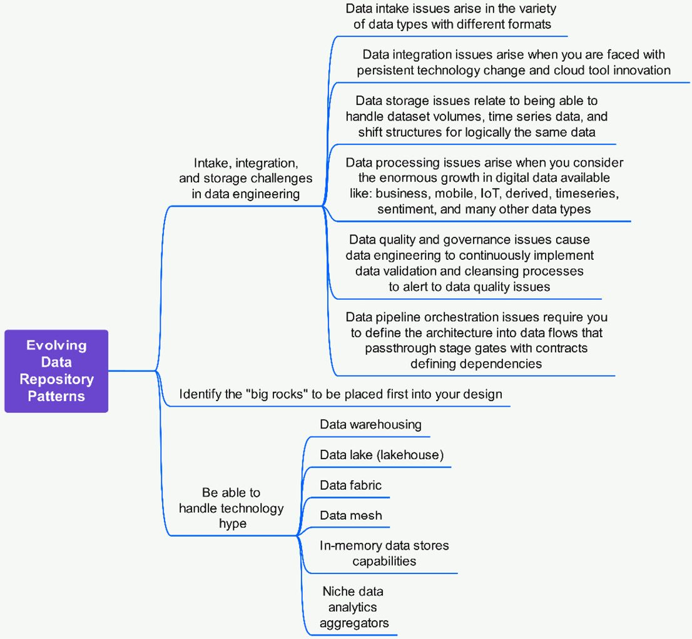
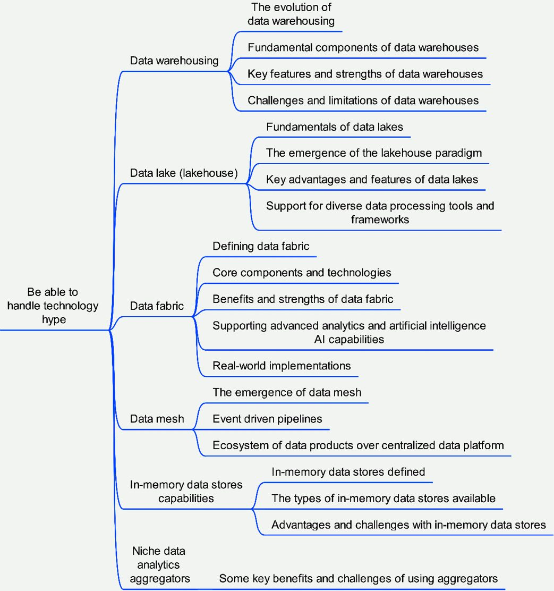
끊임없이 진화하는 데이터 저장소 프레임워크 속에서 무엇을 우선시해야 하는지 조명하는 것은 필수적입니다.
데이터 엔지니어링의 수집, 통합 및 스토리지 과제
데이터 엔지니어링에는 수많은 과제가 있습니다. 이 섹션에서는 이러한 과제들을 인식하고 데이터 엔지니어가 직면한 도전 과제에 대해 배울 것입니다. 이러한 과제를 인식하는 것은 성공을 위한 필수적인 부분입니다.
서로 다른 포맷을 가진 다양한 데이터 유형에서 발생하는 데이터 수집 문제
ELT는 데이터를 적재한 후 추가적인 다운스트림 처리나 분석 전에 데이터를 변환할 것을 요구합니다. 이는 실시간 분석에 대한 필요성으로 인해 더욱 복잡해집니다. 주요 요점은 다음과 같습니다.
- 수많은 데이터 소스 유형
- 데이터 품질 (트렌드 정확성, 적시성, 완전성, 과장되지 않음과 같은 계약된 데이터에 대한 도메인 정확성 포함)
- 기술적 한계를 고려한 대용량 처리
- 실시간 데이터 수집, 파이프라인 처리, 분석 및 인사이트 생성 처리 역량
지속적인 기술 변화와 클라우드 도구 혁신에 직면했을 때 발생하는 데이터 통합 문제
급격한 변화 주기로 인해 데이터 시스템은 쉽게 통합되지 못합니다. 레거시 시스템, 새로운 온프레미스 시스템, 클라우드 시스템을 하나로 엮어야 합니다. 그러나 도구 통합 패턴은 이러한 시스템을 효과적으로 연결하는 데 필요한 서비스 수준과 상충됩니다. 레거시 시스템을 현대 시스템과 접착제 코드로 묶어두면 전체 시스템을 취약하게 만들 수 있는 데이터 동기화 및 흐름 문제가 발생합니다. 주요 요점을 살펴보겠습니다.
- 데이터 구조가 균일하지 않음
- 데이터 시스템 기술을 통합하려면 수많은 기술적 접착제 코드가 필요함
- 데이터 매핑은 시맨틱을 보존해야 하며 이는 복잡함
- 현재의 도구 및 클라우드 아키텍처 청사진을 사용할 때 데이터 거버넌스, 감사, 규정 준수, 개인정보 보호 및 보안에 최적화된 시스템은 안정성, 가용성, 확장성 및 성능 목표와 상충됨
데이터 스토리지 문제는 데이터셋 볼륨, 시계열 데이터 처리 및 논리적으로 동일한 데이터에 대한 구조 변경과 관련됨
데이터 스토리지 시스템은 확장 가능하고 비용 효율적이어야 합니다. 또한 분산 가능하고, 확장 가능하며, 부하/확장 상황에서도 우수한 성능을 발휘하고, 경제적이어야 합니다. 데이터 지역성(locality)과 복제는 클라우드 기반 SaaS 및 PaaS 서비스를 사용하며 이는 “데이터는 한 번 저장하고 여러 번 처리한다”와 같은 중요한 처리 전략과 상충됩니다. 주요 요점은 다음과 같습니다.
- 최적화된 접근 방식을 위해 비용, 확장성, 성능, 가용성 및 통합과 같은 핵심 요소를 종합적으로 고려하여 데이터 스토리지 전략을 선택하고 최적화할 것
- 비즈니스 소비를 위해 스토리지 서비스를 래핑할 때 확장성과 성능이 문제가 될 것임
- 최적화된 데이터 파티셔닝, 매핑 및 인덱싱 전략만으로는 모든 사용 사례를 해결할 수 없으므로 존(zone)으로 그룹화해야 함
- 시스템을 하나로 묶으려 할 때 RBAC/ABAC 대 그룹/사용자 행-열 기반 액세스 제어, 권한 부여, 개인정보 보호, 감사, 심층 방어(defense in depth) 대응 지원, 제로 트러스트(Zero Trust) 지원과 같은 데이터 보안 문제를 모두 고려해야 함
비즈니스, 모바일, IoT, 파생, 시계열, 감성 데이터 등 사용 가능한 디지털 데이터의 엄청난 증가를 고려할 때 발생하는 데이터 처리 문제
레거시 처리 청사진은 그 볼륨을 감당하도록 확장하는 데 어려움을 겪습니다. Hadoop, Spark, 클라우드 마이크로서비스와 같은 분산 처리는 머신 클러스터에서의 병렬 처리를 가능하게 합니다. 데이터 공백, 오류, 불일치, 과장, 시맨틱 불일치 및 기타 데이터 프로파일 관련 이상 현상 측면에서 데이터를 처리하기 위해 데이터 품질 관리(DQM, Data Quality Management) 접근 방식이 필요합니다. 거버넌스를 갖춘 통일된 데이터 관리 전략이 필요합니다. 주요 요점은 다음과 같습니다.
- 빅데이터 처리는 지식으로부터 인사이트를 큐레이션하기 위해 계약을 강제하는 데이터 파이프라인을 제공하는 아키텍처를 필요로 함. 프로파일링된 원시 데이터로 수집된 정규화 데이터 및 정보로부터 도출된 지식이 필요함.
- 처리를 위해 분산 컴퓨팅 역량이 필수적임.
- 계약을 지원하는 복잡한 데이터 변환, 집계, 측정값, 지표 및 트렌드 통계가 필요하며 운영 가능해야 함.
- 데이터 파이프라인은 임시방편적인(ad hoc) 클라우드 데이터 흐름이 되지 않도록 구축되어야 하며 반복 가능하고 시스템 아키텍처에 최적화된 패턴을 활용해야 함.
데이터 품질 및 거버넌스 문제로 인해 데이터 엔지니어링은 데이터 품질 문제를 경고하기 위한 데이터 검증 및 정제 프로세스를 지속적으로 구현해야 함
이상치(outliers)에 대한 이상 탐지, 실제 데이터가 없을 때 결측 데이터를 대체(impute)하고 이전 트렌드 곡선에 합성 데이터를 맞추는 능력, 그리고 다운스트림 처리에 영향을 미치기 전에 데이터를 검증하고 잠재적으로 수정하기 위한 프로파일링이 필요합니다. 비즈니스 데이터 도메인의 규제 준수는 다양할 수 있으며 데이터, 파생 정보, 심지어 특정 데이터 항목의 존재 유무로 무엇을 할 수 있고 무엇을 할 수 없는지에 영향을 미칩니다. 특히 의료, 금융, 정부 부문은 다음과 같은 규제의 영향을 크게 받습니다.
- 1996년 건강 보험 양도 및 책임에 관한 법률(HIPAA, Health Insurance Portability and Accountability Act)
- 그램-리치-블라일리 법(GLBA, Gramm-Leach-Bliley Act) 프라이버시
- 어린이 온라인 개인정보 보호 원칙(COPPA, Children’s Online Privacy Protection Rule)
- 지불 카드 산업 데이터 보안 표준(PCI DSS, Payment Card Industry Data Security Standard)
- EU GDPR 및 UK GDPR
- 캘리포니아 프라이버시 권리법(CPRA, California Privacy Rights Act)
- 캘리포니아 소비자 프라이버시법(CCPA, California Consumer Privacy Act)
- 버지니아 소비자 데이터 보호법(VCDPA, Virginia Consumer Data Protection Act)
- 콜로라도 개인정보 보호법(CPA, Colorado Privacy Act)
- 코네티컷 데이터 프라이버시법(CTDPA, Connecticut Data Privacy Act)
- 유타 소비자 프라이버시법(UCPA, Utah Consumer Privacy Act)
- 뉴욕주 개인 프라이버시 보호법(PPPL, Personal Privacy Protection Law)
- 중국 개인정보보호법(PIPL, Personal Information Protection Law) 및 OTDA
- 러시아 연방 개인정보보호법(Russian Federal Law on Personal Data) (No. 152-FZ)
- 독일 연방 데이터 보호법(BDSG, Bundesdatenschutzgesetz)
- 기타 프라이버시 법률 (오클라호마, 텍사스, 켄터키, 하와이, 뉴저지, 로드아일랜드, 노스캐롤라이나, 뉴햄프셔, 웨스트버지니아, 플로리다)
이러한 모든 규제는 데이터 처리, 보안 및 스토리지 아키텍처 청사진에 영향을 미칩니다. 주요 요점은 다음과 같습니다.
- 데이터 프로파일링, 검증, 정제 및 정규화는 필수적임.
- 데이터 품질 계약 및 규정 준수 검증은 필수적인 역량임.
- 데이터 거버넌스는 기술, 프로세스, 사람을 포함함. 그 구현에는 솔루션 아키텍처를 포함하는 프레임워크가 존재해야 함.
- 규제 준수는 감사와 함께 프라이버시를 요구하며 다른 보안 요구사항과 마찬가지로 솔루션 아키텍처에 영향을 미치는 계약을 형성함. 프라이버시, 감사 및 보안은 나중에 덧붙이는 생각으로 처리될 수 없음.
데이터 파이프라인 오케스트레이션 문제는 아키텍처를 의존성을 정의하는 계약을 갖춘 스테이지 게이트를 통과하는 데이터 흐름으로 정의할 것을 요구함
모든 것이 계약, 서비스, 품질에 따라 작동하도록 보장하는 것은 단순한 모니터링이나 가관측성 작업이 아니라 오케스트레이션 작업입니다. 변경이 필요할 때 최소한의 재개발로 유연한 오케스트레이션을 지원하는 아키텍처를 구축하는 것이 핵심 목표입니다. 클라우드 서비스는 구성 가능한 오케스트레이션으로 이어지지 않는 코드 솔루션을 구현하여 구현체 전체에 코드가 흩뿌려지게 만드는데, 이는 유지보수 비용이 많이 들고 신뢰성을 보장하기 위해 더 많은 비용이 드는 테스트를 거쳐야 합니다. 주요 요점은 다음과 같습니다.
- 유연하고 구성 가능하며 복잡한 데이터 파이프라인으로 오케스트레이션되는 솔루션을 구축하는 것이 필수적임.
- 데이터 파이프라인의 각 단계에서 계약을 정의하고 구성 관리를 사용하여 의존성을 관리할 것. 이 접근 방식은 데이터 팩토리 관리 청사진을 지원함.
- 구조화된 오류 처리 패턴을 수립하고 파이프라인 내부 및 파이프라인 간의 일관성을 보장할 것. 시스템 취약성을 방지하기 위해 혼합된 접근 방식을 피할 것.
- 원활한 운영을 위해 데이터 리니지, 코드 및 데이터셋의 버전 제어, 롤백 기능을 갖춘 데이터 파이프라인의 구조화된 배포가 필요함.
이제 우리는 데이터 엔지니어링과 관련된 일반적인 과제를 파악했지만 아직 큰 돌을 식별하지는 못했습니다. 다음 섹션에서는 미래 경쟁력을 갖춘 데이터 엔지니어링 설계의 아키텍처 일부가 되어야 하는 솔루션 측면, 즉 큰 돌을 식별할 것입니다.
설계에 가장 먼저 배치해야 할 큰 돌 식별하기
먼저, 우리는 왜 이것들을 큰 돌(big rocks)이라고 부를까요? 병에 가능한 한 많은 공간을 채우기 위해 돌을 넣을 때, 가장 큰 돌부터 먼저 넣고 잘 들어맞을 때까지 흔들어 자리를 잡게 하는 비유를 떠올려 보십시오. 그런 다음 공기가 남지 않을 때까지 점점 더 작은 돌을 넣으면서 흔듭니다. 그러면 병은 가득 차고 사용되지 않은 공간이 최대한 없어집니다. 우리의 설계도 마찬가지입니다. 우리는 가장 까다로운 문제를 먼저 처리한 다음 덜 중요한 문제를 처리해야 합니다.
그렇다면 큰 돌이란 무엇일까요? 다음과 같습니다.
- 데이터 불변성(Data immutability): 생성 후 변경되지 않은 데이터가 시스템에 그대로 유지되는 원칙
- 리니지 추적(Lineage tracking): 데이터 파이프라인 변환 단계를 거치는 데이터 여정의 청사진
- 데이터 품질 보존(Data quality preservation): 신뢰할 수 있고, 일관되며, 완전하고, 정확하며, 관련성 있는 데이터를 위한 노력
- 확장성(Scalability): 급증하는 데이터 양에 우아하게 대응할 수 있는 역량
- 보안 및 규정 준수(Security and compliance): 데이터의 신성함과 법적 명령을 지키는 파수꾼
- 데이터 발견 가능성 및 접근성(Data discoverability and accessibility): 데이터 보물로 안내하는 이정표
- 비용 효율성(Cost-efficiency): 비용과 가치 사이의 저울질을 조율하는 정교한 기술
마치 종교에 대해 이야기하는 것처럼 들릴 수도 있지만, 이 문제들은 매우 심각합니다. 각각을 순서대로 설명하겠습니다.
- 데이터 불변성이란 무엇인가? 원시 데이터를 눈부신 황금으로 변환하는 혼란 속에서, 데이터 불변성의 본질은 확고한 수호자 역할을 합니다. 이는 변환의 격동 속에서도 데이터의 무결성을 손상되지 않게 유지하는 보이지 않는 유대입니다. 이 파수꾼을 무시하면 데이터 레이크가 불일치의 소용돌이에 빠져 승인되지 않은 변경마다 유령 같은 복제 데이터를 낳을 수 있으며 이는 오염된 인사이트와 잘못된 의사결정으로 이어지는 위험한 경로가 됩니다. 데이터는 데이터 파이프라인의 스테이지 게이트를 통과한 후에는 변경될 수 없습니다. 존(zone) 내부에서는 데이터 파이프라인 단계 처리를 통해 변경될 수 있지만 존 경로의 끝에서 한 번 커밋되면 최종적인 것으로 확정(stamped)됩니다. 이러한 불변의 데이터셋은 체크포인트를 형성하는 기준선(baseline)이 됩니다. 실패가 발생할 수 있고 실제로 발생하는 환경에서 대용량 데이터를 처리할 때 재처리 시 이러한 안정적인 지점에서 시작해야 합니다. 그러나 많은 시스템이 이를 임시방편으로 수행하여 취약해집니다.
- 리니지 추적이란 무엇인가? 아키텍트의 청사진과 유사한 리니지 추적은 수집부터 다양한 단계별 변환을 거쳐 데이터가 걸어온 길을 밝혀줍니다. 이는 데이터의 과거를 들여다보는 법의학적 렌즈로서 변환의 서사를 드러내며 이러한 서사는 오류를 발굴하고 수정하는 데 필수적입니다. 이러한 리니지에 대한 지식이 없다면 데이터 레이크는 미궁으로 변할 수 있으며 각 오류는 어둠 속에 숨어 불운한 데이터 엔지니어를 기다리는 위협적인 미노타우로스가 됩니다. 여기서 핵심은 데이터 리니지가 저장 상태(at rest) 및 변환 중인 데이터 시맨틱을 보여주어야 한다는 점입니다. 또한 큐레이션 중이며 아직 릴리스 세트로 커밋되지 않은 데이터에 대한 병렬 리니지도 보여주어야 합니다. 배포 세트로 지정된 경우에만 보관(archive)되거나 롤오프(roll off)될 수 있습니다. 트랜잭션 수준에서는 제어된 데이터셋의 기반이 되는 트랜잭션에 대한 신뢰를 구축하기 위해 블록체인(blockchain)과 같은 리니지 기술이 등장했습니다. 블록체인 기술을 사용하면 데이터 항목과 함께 데이터 리니지의 불변 기록을 제공할 수 있습니다. 블록체인 분산 원장 기술(DLT, Blockchain Distributed Ledger Technology)은 분산 원장에 트랜잭션을 기록하여 데이터의 출처, 소유권 및 시간에 따라 적용된 변환을 추적합니다. 이는 보고서나 비즈니스 인텔리전스 도구를 통해 전달될 때 데이터가 변경되지 않도록 보장하는 데 도움이 됩니다. 또한 블록체인 기술은 데이터 리니지 경로를 따라 교정 조치가 수행되어야 하는 위치를 파악하는 데 도움이 됩니다. 메리 K. 프랫(Mary K. Pratt)의 “가치를 입증하는 금융 분야 10대 블록체인 사용 사례(Tech Target’s 10 blockchain use cases in finance that show value)” (https://www.techtarget.com/searchcio/feature/5-blockchain-use-cases-in-finance-that-show-value)에 소개된 몇 가지 금융 서비스 사용 사례는 다음과 같습니다.
- 블록체인 기술은 다음과 같은 금융 서비스 분야에서 여러 잠재적 사용 사례를 갖습니다.
- 더 빠르고 저렴하며 안전하고 확장 가능한 금융 서비스
- 담보 관리(Collateral management) (대출 담보로 사용되는 자산 추적)
- 스테이블코인(Stablecoin) (암호화폐)
- 실물 자산 토큰화(Tokenization of real-world assets) (자산을 토큰화하면서 부분 소유권 지원)
- 가상 세계 트랜잭션 및 보상 토큰 (메타버스 지원)
- 암호화폐 스테이킹(Crypto staking) (다른 계약을 검증하기 위한 암호화폐 자산 락업 계약)
- 송장 팩토링(Invoice factoring) (연체된 계정을 담보로 대출)
- 새로운 유형의 B2B 네트워크 지원 (더 나은 엔드투엔드 고객 경험에 대한 필요성 주도)
- 금융 기관 내 데이터 흐름 촉진 및 추적 (부서 간 추적; 회사 내부 추적은 많은 금융 기관이 보류하면서 과제가 되어 왔음)
- 지폐 대체 (아직 먼 훗날의 일이지만 암호화폐가 디지털 통화 결제를 대체할 수 있음)
- 블록체인 기술은 다음과 같은 금융 서비스 분야에서 여러 잠재적 사용 사례를 갖습니다.
- 데이터 품질 보존이란 무엇인가? 데이터 품질을 향한 탐구는 수많은 데이터 파이프라인 변환의 엄격함 속에서도 데이터의 본질이 훼손되지 않도록 보장하는 대서사시입니다. 데이터 품질 관리(DQM, Data Quality Management) 프로세스는 부정확성의 맹공격으로부터 방어하는 보이지 않는 방패 역할을 하여 분석 엔진에 전달되는 데이터의 서사에 오류가 없도록 보장합니다. 마치 엔지니어링 설계자가 모험을 떠나는 것처럼 들립니다! 하지만 진지하게 말해서 품질은 정말 중요합니다! 열악한 데이터 품질이라는 유령은 잘못된 인사이트의 전조이며 데이터 중심의 여정에서 기업을 길을 잃게 만듭니다. 데이터 품질은 원시 및 정규화 데이터, 변환된 데이터, 마스터 데이터, 소비 가능한 데이터와 같은 다양한 유형에 걸쳐 관리되고 보고되어야 합니다. 이 장의 후반부에서 이러한 데이터가 어디에 상주하는지, 그리고 원시 데이터 공백, 시계열 이상, 트렌드 이상, 총량/볼륨 이상의 감지를 지원하는 데 필요한 DQM 유형에 대해 이야기할 것입니다.
- 확장성이란 무엇인가? 시계의 째깍거림마다 데이터가 증가하는 환경에서 확장성은 데이터 아키텍처가 우아하게 확장되어 늘어나는 데이터의 무리를 수용할 수 있게 해주는 마법입니다. 확장성을 소홀히 하면 성능 병목 현상이 발생하고 처리 시간이 증가하여 적시에 인사이트를 도출하지 못하고 조직이 기회를 놓친 채 침체에 빠지게 됩니다. 예를 들어 일상적인 트랜잭션뿐만 아니라 성수기 트랜잭션(일반 주간 트랜잭션 흐름의 10배에 달할 수 있음)을 처리해야 하는 소매 분석 처리 요구를 생각해 보십시오. 솔루션의 용량은 필요에 따라 자동으로 스케일업(scale-up) 및 스케일다운(scale-down)할 수 있어야 합니다. 이러한 설명이 전개됨에 따라 우리는 클라우드 상품이 데이터 팩토리 파이프라인의 확장성 요구를 처리하기 위한 최고의 도구 세트를 제공한다는 것을 확인하게 될 것입니다.
- 보안 및 규정 준수란 무엇인가? 보안 및 규정 준수는 데이터의 신성함과 법적 명령에 대한 준수를 지키는 수호자입니다. 데이터 유출이 파멸의 전조가 되는 영역에서 요새와 같은 보안과 확고한 규정 준수를 보장하는 것은 왕국의 명예를 지키고 규제라는 용의 분노를 피하기 위한 기사의 서약과 같습니다. 좋습니다. 이해하셨을 것입니다. 보안 관리는 골칫거리가 될 것입니다. 최신 보안 패치로 시스템 구성 요소를 업데이트 상태로 유지하고 감사자의 검토를 위해 이러한 알림 및 업데이트 이력을 준비해야 합니다. 한 가지 다행인 점은 복잡성과 함께 모호함이 발생하고 그에 따라 어느 정도 암묵적인 보안이 생긴다는 것입니다. 감사자는 잠재적인 취약점과 위험을 해결해야 하는 여러분의 책임을 인지시켜 줄 것입니다. 아직 감사자를 접해보지 못했다 하더라도 결국에는 접하게 될 것이므로, 설계에 정직하고 솔루션을 자체 감사하십시오. 일부 클라우드 제공업체 서비스를 사용하면 모범 사례를 적용할 경우 위험이 최소화되며 그럴 때 잠재적 위험이 더욱 명확해집니다. 또한 데이터를 안전하게 보호하려고 할 때 보안 통합이 복잡해지고 잠재적 실패 요인으로 가득 차게 된다는 것을 알게 될 것입니다. 우리의 제안은 테스트하고, 테스트하고, 또 테스트하며 다른 관점을 구하고 조금 더 테스트하라는 것입니다. 그렇지 않으면 불을 뿜는 용이 여러분의 세계를 불태워 버릴 것입니다!
- 데이터 발견 가능성 및 접근성이란 무엇인가? 데이터 발견 가능성과 접근성은 데이터 저장소라는 어두운 숲을 헤쳐 나가 발견을 기다리는 인사이트의 보물창고로 안내하는 쌍둥이 등불입니다. 그것들은 데이터가 난해한 암호문(cryptic codex)이 아니라 명쾌한 어휘집(lucid lexicon)이 되어 찾는 이들에게 인사이트의 이야기를 들려줄 준비가 된 문화를 손짓하여 부릅니다. 메타데이터를 구현하고 구현한 아키텍처의 패싯(facet), 키워드, 구조적 구성 요소를 통해 마치 기본 데이터인 것처럼 메타데이터를 검색할 수 있어야 합니다.
- 비용 효율성이란 무엇인가? 비용 효율성은 견고한 데이터 저장소의 결실을 거두면서 곳간의 균형을 맞추는 정교한 기술을 갖춘 신중하고 현명한 조언입니다. 그것은 화려하지만 재정을 고갈시키는 데이터 프레임워크의 유혹에 주의를 기울이고 가치가 지배하는 길을 옹호하는 귓속말입니다. 좋습니다! 이제 과장은 이쯤 해두겠습니다. 이제 진지하게 비용 회계를 다루어야 합니다. 사일로마다 데이터 팩토리를 따로 만들 수는 없습니다. 그리고 클라우드 서비스는 결코 여러분을 위해 논리적 데이터 흐름 회계를 제공해주지 않습니다. 따라서 멀티 테넌트 호스팅 시스템에 이러한 회계 시설과 비용 보고 기능을 구축해야 합니다. 그렇지 않으면 클라우드 요금 청구서가 어마어마해질 것입니다.
- 큰 돌 요점 정리: 급증하는 데이터 저장소 패턴의 거친 바다를 항해하려면 나침반이 필요합니다. 데이터 엔지니어는 가장 큰 문제부터 먼저 관리해야 합니다. 시간이 지나면서 이러한 큰 돌을 더 많이 발견할 수도 있지만 아키텍처 설계 초기부터 고려되지 않았다면 엔지니어링 노력에 걸림돌로 인식될 것입니다. 유리 집에 사는 사람에게 던져지는 큰 돌처럼 여러분의 설계에 던져질 것입니다. 따라서 이를 처리할 준비를 하십시오. 시장에서 과대 광고된 데이터 저장소 프레임워크가 등장하여 여러분을 구매 계약으로 끌어들이려 할 것입니다.
복원력 있고 효율적이며 통찰력 있는 데이터 아키텍처를 구축하는 동안 이러한 사항들을 예의주시하십시오.
기술 과대 광고(Hype)에 대처하기
기술은 언제나 끊임없이 변화할 것이며 설계자로서 여러분은 최첨단을 탐구해야 하는 상황에 직면하게 될 것입니다. 하지만 마주치게 될 날카로운 모서리를 조심해야 합니다. 그중 하나는 미디어, 벤더, 컨퍼런스, 블로그가 추구해야 할 다음번 반짝이는 대상으로 지목하는 과대 광고(hype)입니다. 모든 것이 가치 있는 것은 아니지만 몇 가지는 매우 중요한 기술로서 언급할 가치가 있습니다.
이 섹션에서는 데이터 엔지니어링 노력과 관련된 이러한 중요한 기술에 대한 개요를 얻을 수 있습니다. 여기서는 데이터 웨어하우징, 데이터 레이크(레이크하우스), 데이터 패브릭, 실제 구현 사례, 데이터 메시, 이벤트 기반 파이프라인, 인메모리 데이터 저장소 기능, 틈새 데이터 분석 애그리게이터에 대해 이야기할 것입니다.
데이터 웨어하우징
데이터 웨어하우징은 정형 데이터에 대한 쿼리 및 보고에 최적화된 환경을 제공하며 오랫동안 데이터 관리 영역의 핵심 요소로 자리 잡아 왔습니다. 데이터 웨어하우스의 역량을 이해하는 것은 기업 데이터 전략에서 정보에 입각한 결정을 내리는 데 매우 중요합니다.
데이터 웨어하우징의 진화는 어떠한가?
수년에 걸쳐 데이터 웨어하우스는 끊임없이 진화하는 비즈니스 요구와 기술 발전을 수용하기 위해 상당한 변화를 겪었습니다. 처음에 정형 데이터를 저장하고 관리하기 위한 중앙 집중식 저장소로 구상되었던 데이터 웨어하우스는 빅데이터, 실시간 분석, 다양한 데이터 소스 및 플랫폼과의 통합을 지원하도록 전환되었습니다.
핵심 질문은 다음과 같습니다.
- 데이터 웨어하우징의 역사적 배경과 기원은 무엇인가? 데이터 웨어하우징은 1970년대와 1980년대에 시작되었으며 주로 빌 인몬과 랄프 킴볼에 의해 형성되었습니다. 데이터 웨어하우징의 아버지로 알려진 인몬은 데이터 웨어하우스를 의사결정을 위한 중앙 집중식이고 일관되며 시간성을 지닌 데이터 저장소로 정의했습니다. 그는 데이터 웨어하우징의 기본 원칙을 세웠습니다. 킴볼은 데이터 마트와 차원 모델에 중점을 두고 비즈니스 사용자가 데이터를 이해하고 사용하기 쉽게 만드는 데 초점을 맞춘 차원 모델링(dimensional modeling)을 통해 기여했습니다. 인몬의 광범위한 원칙과 킴볼의 실용적인 접근 방식을 융합한 그들의 결합된 노력은 데이터 웨어하우징에 큰 영향을 미쳐 엔터프라이즈 데이터 전략의 핵심 요소로 발전시켰습니다. 오늘날 데이터 웨어하우징은 효과적인 분석과 보고를 위해 다양한 조직 데이터 소스를 하나의 시스템으로 통합하며 그들의 방법론은 여전히 이 분야의 현대적 실무와 기술을 이끌고 있습니다.
- 현대 데이터 웨어하우징 트렌드는 무엇인가? 빅데이터와 고급 분석의 부상과 함께 실시간 데이터 웨어하우징 도입에 대한 요구가 커졌습니다. 이제 기업들은 데이터로부터 즉각적인 인사이트를 요구하며 이는 실시간 분석과 데이터 스트리밍의 인기로 이어졌습니다. 또한 IoT 기기, 소셜 미디어, 모바일 앱과 같은 다양한 데이터 소스의 확산으로 인해 데이터 웨어하우스가 비정형 및 반정형 데이터를 매끄럽게 처리할 수 있는 역량이 필요해졌습니다. 아울러 데이터 레이크와 데이터 웨어하우스의 장점을 결합하여 향상된 유연성과 확장성을 제공하는 데이터 레이크하우스(data lakehouse) 아키텍처를 채택하는 추세입니다.
데이터 웨어하우스의 기본 구성 요소
기본적으로 데이터 웨어하우스는 원활한 운영과 효율적인 데이터 관리를 보장하는 다양한 구성 요소로 이루어져 있습니다.
고려해야 할 몇 가지 주요 구성 요소는 다음과 같습니다.
- 데이터베이스: 모든 데이터가 상주하는 기본 스토리지 시스템입니다. 관계형, 컬럼형(columnar) 또는 하이브리드 시스템일 수 있습니다.
- ETL 도구: 웨어하우스로 데이터를 추출, 변환, 적재하는 프로세스를 촉진합니다.
- 데이터 마트(Data marts): 메인 데이터 웨어하우스에서 생성된 하위 집합 저장소로, 특정 비즈니스 기능이나 부서에 맞게 조정됩니다.
- OLAP 서버: 온라인 분석 처리(OLAP, Online Analytical Processing) 서버는 다차원 분석을 가능하게 하여 사용자가 다양한 관점에서 데이터를 볼 수 있도록 합니다.
- 메타데이터 계층: 데이터 소스, 변환 및 웨어하우스 내 데이터의 전반적인 구조에 대한 정보를 보유합니다.
몇 가지 중요한 기술적 역량과 선택 사항을 다루어야 합니다. 다음과 같습니다.
- 데이터 웨어하우스의 유형: 스타 스키마와 눈송이(스노우플레이크) 스키마란 무엇인가? 데이터 웨어하우징의 핵심은 스타 스키마와 눈송이 스키마와 같은 특정 설계 스키마로, 이는 데이터 내의 구조와 관계를 정의합니다. 스타 스키마는 중앙 팩트 테이블을 중심으로 데이터를 비정규화된 상태로 유지하는 반면, 눈송이 스키마는 데이터를 정규화하여 중복을 줄이지만 복잡성을 더합니다.
- 데이터 웨어하우스 생태계 내에는 어떤 ETL 프로세스가 존재하는가? ETL 프로세스는 데이터 웨어하우스로 데이터를 이동시키는 중추입니다. 이를 통해 다양한 소스의 데이터를 통합하고, 일관된 형식으로 변환하며, 분석적 사용을 위해 웨어하우스에 적재할 수 있습니다.
데이터 웨어하우스의 역량을 확실히 이해한 후에는 데이터 웨어하우징 접근 방식의 장점과 단점을 비교해 보아야 합니다. 이는 다음 섹션에서 설명합니다.
데이터 웨어하우스의 주요 특징 및 강점
다음은 몇 가지 데이터 웨어하우스의 강점입니다.
- 데이터 웨어하우스는 강력한 분석 역량을 제공하도록 맞춤화된 일련의 기능을 제공합니다. 복잡한 쿼리와 BI를 지원합니다.
- 데이터 웨어하우스는 쿼리 성능을 높이기 위해 정교한 인덱싱 및 최적화 기법을 사용하여 복잡한 쿼리에 대해서도 신속한 데이터 검색을 가능하게 합니다.
- 데이터 웨어하우스는 비즈니스 인텔리전스(BI) 도구 및 분석 플랫폼과의 원활한 통합을 제공하여 데이터 시각화, 보고 및 분석 역량을 향상시킵니다.
- 데이터 웨어하우스는 정보에 입각한 비즈니스 의사결정을 내리는 데 중요한 높은 수준의 데이터 정확성과 신뢰성을 보장하도록 구조화되어 있습니다. 서서히 변화하는 차원(SCD, Slowly Changing Dimensions)과 같은 메커니즘을 통해 이력 데이터 처리와 시간에 따른 변경 사항 추적이 용이하여 데이터 일관성과 의미 있는 트렌드 분석을 보장합니다.
그러나 다음 섹션에서 나타나듯이 도전 과제도 존재합니다.
데이터 웨어하우스의 도전 과제 및 한계
모든 시스템에는 과제가 따르며 데이터 웨어하우스도 예외는 아닙니다.
- 확장성 및 성능 문제: 데이터 볼륨이 증가함에 따라 기존 데이터 웨어하우스는 확장성 및 성능 문제에 직면할 수 있습니다. 클라우드 기반 데이터 웨어하우스와 같은 현대적인 솔루션은 확장 가능한 인프라를 제공하여 이를 완화하고자 합니다.
- 진화하는 요구사항과 웨어하우스 재설계의 필요성: 변화하는 비즈니스 요구사항으로 인해 데이터 웨어하우스 스키마를 재설계해야 할 수 있으며 이는 자원 소모가 크고 시간이 많이 걸릴 수 있습니다.
- 외부 데이터 소스 및 시스템과의 통합 문제: 이종 데이터 포맷과 일관되지 않은 데이터 품질을 다룰 때 외부 데이터 소스 및 시스템과의 통합은 문제를 야기할 수 있습니다.
이 섹션에서는 데이터 웨어하우징과 관련된 역량, 강점, 과제를 설명했습니다. 이러한 지식을 갖춘 데이터 엔지니어는 데이터 저장소 패턴의 지형을 더 잘 탐색하여 조직의 요구와 목표에 부합하는 패턴을 선택할 수 있습니다.
데이터 레이크 및 레이크하우스
오늘날의 데이터 중심 세상에서 방대한 양의 비정형 및 정형 데이터를 활용하는 능력은 비즈니스 민첩성과 혁신을 위해 필수적입니다. 데이터 레이크, 또는 레이크하우스로 알려진 진화된 버전은 조직이 통합된 환경에서 데이터를 저장, 처리 및 분석할 수 있는 다재다능한 솔루션을 제공합니다.
데이터 레이크의 기초
데이터 레이크라는 용어는 데이터 관리 분야에서 점점 더 인기를 얻고 있으며 이는 보다 유연하고 확장 가능한 데이터 스토리지 및 처리 솔루션으로의 전환을 의미합니다. 여기서는 데이터 레이크의 핵심 원칙과 전통적인 데이터 웨어하우징에서 마주친 한계에 대한 대응으로 데이터 레이크가 어떻게 등장했는지 살펴볼 것입니다.
데이터 레이크는 즉각적인 변환이나 구조화를 요구하지 않고 원시 형태 그대로 막대한 양의 데이터를 보관할 수 있는 광대한 스토리지 저장소로 개념화할 수 있습니다. 데이터 레이크의 고유한 특징은 다음과 같습니다.
- 규모(Scale): 페타바이트급 데이터 저장 가능
- 민첩성(Agility): 새로운 데이터 소스의 빠른 수집 지원
- 다양한 데이터 처리(Diverse data handling): 정형, 반정형, 비정형 데이터 수용
- 저비용 스토리지(Low-cost storage): 상용 하드웨어나 클라우드 스토리지에 구현되는 경우가 많아 전체 비용 절감
- 진화 가능성(Evolvability): 비즈니스 요구가 진화함에 따라 구조를 쉽게 업데이트하고 변경 가능
일반적으로 정제된 정형 데이터를 요구하는 전통적인 데이터 웨어하우스와 달리, 데이터 레이크는 원시 및 비정형 데이터를 저장하는 데 탁월합니다. 이러한 스토리지 패러다임은 사전 정의된 스키마 없이 텍스트, 이미지, 로그 파일 또는 다양한 데이터 유형의 혼합 등 원래 형태로 데이터를 보관할 수 있는 가능성을 열어줍니다.
데이터의 다양성과 볼륨이 증가함에 따라 데이터 레이크의 유연성은 결정적인 이점이 되었습니다. 데이터 레이크는 광범위한 데이터 포맷을 지원하며 데이터 웨어하우스의 스키마 온 라이트(schema-on-write, 쓸 때 스키마 적용) 접근 방식과 대조되는 스키마 온 리드(schema-on-read, 읽을 때 스키마 적용) 접근 방식을 채택합니다. 이러한 유연성은 원시 포맷 그대로의 데이터 수집을 촉진하고 읽을 때까지 구조 부여를 미루어 탐색적 분석과 데이터 발견에 매우 유용할 수 있습니다.
레이크하우스 패러다임의 등장
데이터 레이크가 유연성과 확장성에 대한 요구에 부응했지만 기업들은 여전히 전통적인 데이터 웨어하우스의 분석적 역량과 정형화된 특성을 갈망했습니다. 레이크하우스 패러다임은 데이터 레이크와 데이터 웨어하우스의 장점을 모두 활용하는 통합 플랫폼을 제공하며 절충안으로 등장했습니다. 여기서 몇 가지 질문이 제기되며 이에 답해보고자 합니다.
- 데이터 레이크와 데이터 웨어하우스의 장점을 결합하는 것이 왜 중요한가? 레이크하우스 패러다임은 데이터 레이크와 데이터 웨어하우스의 이점을 단일 플랫폼으로 융합하려는 시도로 등장했습니다. 이러한 융합은 데이터 레이크의 유연하고 비용 효율적인 스토리지 솔루션과 데이터 웨어하우스의 정형화되고 성능 최적화된 분석 역량 간의 격차를 메우는 것을 목표로 합니다.
- 데이터 레이크 스토리지 기반의 통합 분석 및 BI에는 어떤 이점이 있는가? 이러한 결합은 단일 데이터 레이크 스토리지에서 통합된 분석 및 BI 역량을 촉진하여 관리 오버헤드를 완화하고 원시 데이터에서 실행 가능한 인사이트로 이어지는 간소화된 경로를 제공합니다. 레이크하우스 구성 내에서 분석 워크로드와 머신러닝 워크로드 사이에 형성된 시너지는 향상된 BI와 의사결정 프로세스를 견인합니다.
데이터 레이크의 주요 장점 및 기능
데이터 레이크는 특히 현대 클라우드 스토리지 솔루션 및 빅데이터 처리 프레임워크와 통합될 때 수많은 이점을 제공합니다. 솔루션에서 데이터 레이크의 활용을 구체화할 때 몇 가지 질문이 발생합니다.
- 클라우드 스토리지 솔루션을 사용할 때 어떤 확장성 및 비용 효율성 이득이 명확한가? 데이터 레이크에 클라우드 스토리지 솔루션을 사용하면 확장성 수준이 크게 향상됩니다. 데이터 볼륨이 증가함에 따라 클라우드 플랫폼은 수동 조정 없이도 스토리지 리소스를 조정할 수 있어 잠재적인 다운타임을 줄여줍니다. 이러한 탄력성 덕분에 조직은 사용하는 스토리지에 대해서만 비용을 지불할 수 있습니다. 많은 클라우드 제공업체의 요금 모델은 대규모 초기 자본 지출에서 보다 점진적인 운영 비용 모델로 전환됩니다. 또한 일부 클라우드 스토리지 플랫폼의 고유한 이중화 덕분에 재해 복구 및 데이터 백업과 같은 측면에서 잠재적인 비용 절감이 가능할 수 있다는 점도 주목할 만합니다(다만 개별적인 결과는 다를 수 있습니다).
- AWS S3, Azure Data Lake Storage와 같은 클라우드 제공업체와 어떤 통합이 존재하는가? AWS S3 및 Azure Data Lake Storage와 같은 클라우드 제공업체와의 통합은 데이터 레이크의 확장성과 비용 효율성을 더욱 향상시키며 기존 온프레미스 솔루션에 비해 비용 절감의 이점과 함께 방대한 스토리지 용량을 제공합니다.
- 데이터 레이크 스토리지를 위한 경제적인 스토리지 옵션과 요금 모델에는 어떤 것이 있는가? 클라우드 기반 데이터 레이크는 인프라에 대한 대규모 투자 없이도 조직이 데이터를 효율적으로 저장하고 관리할 수 있도록 해주는 경제적인 스토리지 옵션과 요금 모델을 제공합니다.
다양한 데이터 처리 도구 및 프레임워크 지원
데이터 레이크는 배치 처리부터 실시간 분석 등에 이르기까지 다양한 작업을 수용하는 다채로운 데이터 처리 도구와 프레임워크를 지원할 수 있습니다. 이러한 적응성은 기업이 단일 생태계에 종속되지 않고 다양한 도구와 통합할 수 있는 옵션을 가짐을 의미합니다. 그러나 통합의 폭과 깊이는 특정 데이터 레이크 솔루션 및 다른 플랫폼과의 호환성에 크게 좌우됩니다. 데이터 레이크와 관련하여 두 가지 질문이 제기됩니다.
- Hadoop, Spark 및 기타 빅데이터 플랫폼과 어떤 통합이 존재하는가? 데이터 레이크는 Hadoop 및 Spark와 같은 다양한 데이터 처리 도구 및 프레임워크와의 통합을 지원합니다. 이러한 통합은 빅데이터 워크로드 처리를 용이하게 하여 효율적인 데이터 처리 및 분석을 가능하게 합니다.
- 데이터 레이크 처리를 위해 서버리스 데이터 처리를 활용할 수 있는 역량은 어떠한가? 서버리스(serverless) 데이터 처리의 등장으로 이제 데이터 레이크는 서버 인프라를 관리할 필요 없이 데이터를 처리할 수 있는 기능을 제공하므로, 운영 오버헤드를 줄이고 조직이 데이터에서 인사이트를 도출하는 데 더 집중할 수 있도록 해줍니다.
다음 몇 개 섹션에서는 데이터 패브릭에 대해 자세히 살펴보고 데이터 패브릭이 진화하는 데이터 레이크 및 데이터 웨어하우스 생태계와 어떻게 대비되고 상호 보완되는지 알아보며 조직의 목표에 부합하는 총체적인 데이터 엔지니어링 전략을 수립해 나갈 것입니다.
데이터 패브릭
빠르게 진화하는 데이터 환경에서 조직은 데이터를 매끄럽게 관리, 처리하고 인사이트를 얻기 위한 견고한 프레임워크를 끊임없이 찾고 있습니다. 데이터 패브릭(data fabric)의 등장은 기업 전반에 걸친 데이터 관리를 위한 포괄적이고 통합된 아키텍처를 제공함으로써 이러한 요구를 해결합니다.
데이터 패브릭의 정의
데이터 패브릭(Data fabric)은 온프레미스와 멀티 클라우드 환경에 걸친 다양한 엔드포인트 전반에서 일관된 기능을 제공하는 아키텍처이자 데이터 서비스 모음입니다. 데이터 패브릭은 새롭게 등장하는 데이터 요구사항을 지원하기 위해 통합되고 지능적이며 유기적으로 결합된 엔드투엔드 플랫폼을 제공합니다. 여기서도 몇 가지 질문이 제기되며 이에 대해 다음과 같이 살펴보고자 합니다.
- 데이터 패브릭 아키텍처의 발전 과정과 그 이면에 있는 근거는 무엇인가? 역사적으로 데이터는 사일로화된 데이터베이스에 갇혀 있었고 상호 운용성이 제한적인 경우가 많아 총체적인 분석을 수행하는 데 어려움이 있었습니다. 조직이 확장되고 데이터의 양과 다양성이 급증함에 따라 보다 상호 연결된 접근 방식이 필수적이 되었습니다. 데이터 패브릭 아키텍처는 이러한 과제에 대한 대응으로 발전했습니다. 그 근거는 다양한 데이터 소스와 서비스를 매끄럽게 연결할 수 있는 응집력 있는 데이터 인프라를 제공하는 데 있습니다. 이를 통해 데이터 패브릭은 데이터의 위치나 형식에 관계없이 데이터 수집, 처리, 분석 및 관리를 위한 간소화된 플랫폼을 제공합니다. 데이터 패브릭은 데이터뿐만 아니라 하이브리드 또는 멀티 클라우드 환경의 API, 서비스, 애플리케이션까지 통합합니다. 이러한 총체적 접근 방식은 데이터 환경을 단순화할 뿐만 아니라 방대하고 다양한 데이터셋에서 실행 가능한 인사이트를 도출하는 데도 도움이 됩니다. 데이터 패브릭이라는 이름은 여러 가닥의 실이 엮여 튼튼하고 다재다능한 직물(fabric)을 만들어내는 것처럼, 다양하고 이질적인 데이터 소스, 기술, 환경을 응집력 있고 통합된 하나의 데이터 관리 태피스트리로 직조한다는 은유에 기반합니다. 이 아키텍처는 잘 짜인 직물에서 관찰되는 연속성처럼, 복잡하게 상호 연결된 데이터 환경 전반에서 원활한 데이터 연결성, 접근성 및 흐름을 가능하게 하는 것을 목표로 합니다.
- 데이터 생태계의 복잡성이 증가하는 이유는 무엇인가? 데이터 소스, 유형, 형식 및 처리 요구사항의 증가는 최적의 데이터 관리를 위해 통합되고 오케스트레이션된 접근 방식을 필요로 하는 복잡한 환경을 초래합니다.
- 민첩성과 실시간 데이터 접근성이 필요한 이유는 무엇인가? 변화하는 데이터 요구사항에 신속하게 적응하는 것은 경쟁력을 유지하는 데 매우 중요합니다. 고객의 기대치뿐만 아니라 경쟁 우위 확보 및 신속한 의사결정의 필요성에 의해 구동되는 실시간 데이터 접근성은 이러한 민첩성을 달성하는 초석이며 이로 인해 더욱 상호 연결된 데이터 패브릭 아키텍처로의 전환이 촉진되고 있습니다.
데이터 패브릭 패턴에는 올바른 의사결정을 내리기 위해 반드시 이해해야 할 몇 가지 핵심 구성 요소와 기술이 포함되어 있습니다. 다음 섹션에서는 이러한 핵심 요소에 대해 알아봅니다.
핵심 구성 요소 및 기술
데이터 패브릭은 다음과 같은 구성 요소 및 기술로 이루어져 있습니다.
- 데이터 수집 계층(Data ingestion layer): 데이터의 초기 유입을 관리하도록 설계된 계층으로, 다양한 소스에서 발생하는 스트리밍 및 배치 데이터를 모두 처리하며 통합 프로세스 전반에 걸쳐 데이터 품질과 균일성을 유지하고자 합니다.
- 영속성 계층(Persistence layer): 데이터를 저장하고 관리하는 것을 목표로 하는 계층으로, 스토리지 방법론을 다양한 데이터 유형 및 조직의 목표에 맞추어 데이터 검색, 내구성, 쿼리 최적화 간의 균형을 확립하고자 합니다.
- 데이터 준비 및 데이터 전달 계층(Data preparation and data delivery layer): 데이터를 정제, 변환 및 강화하여 분석 프로세스에 적합하게 만드는 것을 목적으로 설계된 계층입니다.
- 오케스트레이션 및 데이터옵스(Orchestration and data ops): 데이터 운영 오케스트레이션은 데이터 워크플로를 관리, 모니터링 및 자동화하여 안정적이고 최적화된 데이터 파이프라인 실행을 보장하는 동시에 적시의 데이터 가용성을 지원합니다.
- 데이터 처리(Data processing): 실시간 및 배치 데이터 관리에 중점을 둔 이 구성 요소는 처리 기술의 신중한 선택과 적용을 통해 조직의 요구사항에 맞게 데이터가 처리, 분석 및 제공되도록 보장합니다.
- 데이터 관리 및 인텔리전스(Data management and intelligence): 데이터 품질을 유지하고 거버넌스 및 규정 준수를 보장하는 것을 목표로 하는 이 구성 요소는 데이터 패브릭 전반에서 메타데이터를 관리하고 라이프사이클 전반에 걸쳐 데이터 무결성과 사용성을 유지하고자 합니다.
- 증강 데이터 카탈로그(Augmented data catalog): 데이터 발견, 분류 및 메타데이터 관리를 자동화하는 것을 목표로 하는 이 구성 요소는 조직 전반에서 데이터 가시성과 접근성을 향상시키고자 하지만 실제 효율성은 다양한 요인에 의해 영향을 받을 수 있습니다.
- 지식 그래프(Knowledge graph): 데이터 내의 관계와 엔티티를 식별하는 시맨틱 계층을 제공하도록 고안된 이 구성 요소는 데이터 연결을 명확히 하여 보다 맥락적이고 통찰력 있는 데이터 발견과 활용을 가능하게 합니다.
솔루션에 데이터 패브릭 패턴을 통합할 때는 두 가지 질문을 고려해야 합니다.
- 어떤 데이터 통합 및 오케스트레이션 패턴과 도구가 존재하는가? 데이터 패브릭은 이질적인 데이터 소스를 통합하고 데이터 흐름을 효율적으로 오케스트레이션하는 데 탁월하며 매끄러운 데이터 수집, 변환 및 배포를 촉진하는 기술을 활용합니다.
- 데이터 패브릭 설계를 위한 데이터 거버넌스 및 메타데이터 관리에는 무엇이 있는가? 강력한 데이터 거버넌스와 메타데이터 관리는 신뢰할 수 있는 데이터 패브릭의 핵심이며 데이터 품질, 일관성 및 규제 준수를 보장하는 동시에 데이터 발견 가능성과 이해도를 높여줍니다.
따라서 솔루션에서 데이터 패브릭 디자인 패턴의 사용을 고려해야 하는 이유는 검토할 만한 여러 이점과 강점이 있기 때문입니다.
데이터 패브릭의 이점과 강점
데이터 패브릭 고유의 강점은 데이터 관리에 대한 총체적 접근 방식에 뿌리를 두고 있습니다. 데이터 소스나 구조에 관계없이 통합된 데이터 접근을 촉진하여 실시간 의사결정을 지원합니다. 통합된 메타데이터 및 거버넌스 구조를 통해 데이터 패브릭은 정확한 분석에 필수적인 데이터 품질과 신뢰성을 보장합니다. 또한 뛰어난 적응성을 통해 기업은 진화하는 데이터 환경에 직면해서도 민첩성을 유지하며 지속 가능성과 경쟁력을 확보할 수 있습니다. Microsoft의 Data Fabric {https://packt-debp.link/tl11jS}은 Microsoft가 클라우드에서 직면한 데이터 엔지니어링 과제와 데이터 메시 개념을 어떻게 수용했는지를 보여주는 좋은 예입니다. 구상된 기능들은 아키텍처를 공식화할 때 연구할 가치가 있으며 해당 제품을 활용하기로 선택할 경우 비용 장벽을 낮출 수도 있습니다. 다음은 고려해야 할 몇 가지 측면입니다.
- 데이터 패브릭은 매끄러운 데이터 접근과 공유를 촉진하는가? 데이터 패브릭 클라우드 제품의 주요 목표 중 하나는 데이터 엔지니어가 데이터 사일로를 허물고 전사적으로 매끄러운 데이터 접근 및 공유를 보장하는 데이터 메시 원칙을 느슨하게나마 포괄하는 강력한 시스템을 보다 쉽게 구축하도록 돕는 것입니다. 고급 메타데이터, 리니지(lineage), 거버넌스와 같은 SaaS 호스팅 데이터 팩토리(Data Factory) 기능을 지원함으로써 데이터를 하나의 제품(Product)으로 취급할 수 있습니다. 단일 접근 지점과 마찬가지로 통합 분석이 제공됩니다. 내부 및 외부 모두에서 간소화된 데이터 공유 프로세스는 협업을 촉진하고 정보에 입각한 의사결정을 이끌어냅니다.
- 데이터 패브릭은 데이터 가상화 및 페더레이션을 제공한다. 데이터 패브릭은 데이터 가상화(Data virtualization)와 페더레이션(Federation)을 채택하여 데이터 사일로 문제를 완화하고 서로 다른 저장소에 흩어져 있는 데이터에 대한 통합 뷰와 접근 권한을 제공합니다. 데이터 팩토리(Data factory), 데이터 엔지니어링(Data engineering), 데이터 웨어하우징(Data warehousing), 데이터 사이언스(Data science), 실시간 분석(Real-time analytics) 등은 클라우드 제공업체의 데이터 패브릭이 제공한다고 홍보하는 주요 기능들입니다. 중대한 과제는 이러한 기성 패브릭을 사용할 것인지, 아니면 자체 패브릭을 구축할 것인지입니다. 클라우드 제공업체가 추가적인 데이터 메시 원칙과 이 책에서 제시하는 다양한 모범 사례를 해결하기 위해 데이터 패브릭 제품을 변형함에 따라, 경쟁업체뿐만 아니라 여러분이 지금 당장 필요한 것을 구축하려는 플랫폼 개발 노력마저 무력화시킬 수 있습니다. 이러한 현실에 대비해야 합니다. 기억하십시오. 도전에 직면했을 때 똑똑한 사람들은 비슷한 솔루션으로 끌리기 시작합니다. 충분한 자금과 리소스(예: Microsoft)가 있다면 무엇이든 구축할 수 있으며 그들이 다른 이들보다 먼저 앞서 나갈 것임을 알 수 있습니다. 데이터 패브릭으로 강화된 제품에서는 시장에 가장 먼저 출시하는 것(First to market)이 매우 중요합니다. 당면한 과제는 클라우드 데이터 패브릭 서비스에 편승하여 구매할 것인가, 경쟁 우위 확보 가능성을 염두에 두고 자체 데이터 팩토리를 구축할 것인가, 아니면 둘 다 수행할 것인가입니다.
- 데이터 패브릭 설계는 데이터 발견 가능성과 사용성을 향상시킨다. 포괄적인 메타데이터 관리 및 유휴 데이터(Data at rest)에 대한 시맨틱 모델링(또는 유사한 시맨틱 표현)을 통해 데이터 패브릭 아키텍처, 설계 및 서비스는 데이터 발견 가능성과 사용성을 향상시켜 데이터에서 인사이트로 전환되는 프로세스를 가속화합니다.
고급 분석 및 인공지능 기능 지원
데이터 패브릭 아키텍처는 본질적으로 고급 분석과 AI를 지원하도록 설계되었습니다. 다양한 데이터 소스를 통합하여 데이터 품질을 보장하며 고급 분석 프로세스를 위한 비옥한 토양을 제공합니다. 데이터에 대한 간소화된 접근과 통합된 분석 도구의 결합은 조직이 인사이트를 더욱 깊이 파고들어 생성형, 예측형, 처방형 분석을 위해 AI와 머신러닝의 힘을 활용할 수 있도록 지원합니다. 다음은 고려해야 할 몇 가지 사항입니다.
- 데이터 패브릭 통합 분석 워크스페이스에는 어떤 기능이 있는가? 데이터 패브릭 설계는 통합 분석 워크스페이스를 제공함으로써 Microsoft Power BI 및 Azure Analysis Services(AAS)와 같은 고급 분석 제품을 통합합니다. 워크스페이스 및 도구 통합은 분석 라이프사이클을 가속화하여 고급 분석 및 머신러닝을 위한 유리한 환경을 조성합니다. 여러 기능 전반에 걸친 한 가지 과제는 데이터 팩토리가 제공하는 새롭게 렌더링된 데이터와 함께 기존 레거시 도구를 활용하는 것입니다. 말은 쉬워 보입니다. SQL이 해답인 것처럼 들립니다. 하지만 그렇지 않습니다! Power BI에서 수십억 곱하기 수십억 규모의 행렬을 처리한 다음 비가법적(non-additive) 계산 측정값을 추가하고자 한다면, 행운을 빕니다! 마찬가지로 Apache Spark(또는 Databricks)에서 희소 행렬(Sparse matrix) 지원을 원한다면, 역시 행운을 빕니다! 벤더로부터 이에 대한 지원을 받는 것은 결코 쉽지 않을 것입니다. Spark 메모리 모델을 직접 해킹하고 싶다면 마음껏 시도해 보십시오. 가능하긴 합니다. 일부 머신러닝 패턴 클러스터링 알고리즘이 예상대로 작동하도록 하려면 심각한 한계를 감수하거나 오픈 소스 내부로 직접 뛰어들어야 합니다. 그런 다음 Databricks나 Microsoft Synapse에 이러한 가치를 추가하고자 한다면 벤더 개발 장벽에 부딪히게 될 것입니다.
- 데이터 패브릭은 데이터 관리 작업을 위한 AI를 지원한다. AI와 머신러닝 기술을 활용하여 데이터 패브릭은 수많은 데이터 관리 작업을 자동화하고 운영 효율성을 최적화하며 실행 가능한 인사이트 도출 능력을 향상시킬 수 있습니다. 클라우드 제공업체의 데이터 패브릭 아키텍처는 초급 수준의 데이터 팩토리를 구현하기에 매우 훌륭한 방법입니다. 이를 통해 데이터를 제품으로 생각하고 딕셔너리/카탈로그와 함께 데이터를 릴리스하고 거버넌스를 제공하는 것을 품질로 인식하도록 유도합니다. 이러한 서비스를 사용하여 자신만의 솔루션을 구축할 수 있습니다. 그러나 클라우드 제공업체가 완전히 작동하는 팩토리를 제공할 정도로 모든 것을 규정해 주지는 않습니다. 제공되는 기능을 이해하고 그것을 클라우드 제공업체의 청사진이 아니라 여러분의 아키텍처에 맞추어야 합니다. 이를 인지하고 있으면 앞으로 발생할 문제들을 해결하는 데 도움이 됩니다. 클라우드 제공업체는 서비스를 변경할 것이며 그들이 변경할 때 여러분은 주도권을 잃을 수 있습니다. 클라우드 제공업체 서비스의 잠재적인 변경 사항을 고려하면서 데이터 아키텍처를 전략적으로 설계하는 것이 중요합니다. 자체 아키텍처와 클라우드 제공업체 제품 간의 의존도 균형을 유지하면 향후 서비스 변경으로 인한 중단을 방지할 수 있습니다.
실제 구현 사례
데이터 패브릭 구현의 함정과 실제 과제에 대해서는 이후 장에서 더 깊이 다룰 것입니다. 대부분의 신기술과 마찬가지로 과대광고가 현실에 미치지 못할 수 있다는 점만 언급해 두겠습니다. 과제에는 여러 플랫폼 및 데이터 소스 관리의 복잡성, 데이터 거버넌스 및 보안, 성능 최적화, 벤더 종속(Vendor lock-in) 위험 등이 포함됩니다.
데이터 패브릭 아키텍처는 데이터 레이크 아키텍처와 어떻게 비교되는가? 데이터 레이크가 주로 필요할 때까지 원시 데이터를 네이티브 형식 그대로 대량 저장할 수 있는 스토리지 저장소인 반면, 데이터 패브릭은 스토리지를 넘어 포괄적인 데이터 관리 프레임워크를 제공하는 아키텍처입니다. 데이터 레이크가 이질적인 데이터를 비용 효율적으로 저장하는 데 더 집중하는 반면, 데이터 패브릭은 다양한 데이터 환경 전반에서 원활한 데이터 통합, 오케스트레이션 및 거버넌스를 촉진합니다.
또한 데이터 패브릭은 데이터 레이크에만 의존하는 환경에서 흔히 발생하는 데이터 사일로, 데이터 품질, 실시간 데이터 접근성 관련 문제를 해결합니다. 데이터 패브릭은 엔터프라이즈 전반에서 데이터의 저장뿐만 아니라 사용성, 접근성 및 품질까지 보장하는 보다 총체적인 데이터 관리 접근 방식을 제공합니다.
데이터 메시
데이터 엔지니어링의 역동적인 분야에서는 이전 아키텍처의 단점을 보완하기 위해 새로운 아키텍처와 패러다임이 등장합니다. 데이터 메시(Data mesh) 패러다임은 모놀리식의 중앙 집중식 데이터 아키텍처에서 벗어나 보다 도메인 지향적이고 탈중앙화된 데이터 아키텍처로 나아가는 이러한 진화 중 하나입니다. 이 섹션에서는 데이터 메시의 원칙과 기능을 설명하고 이를 데이터 레이크 및 데이터 패브릭과 비교하여 차이점과 유사점에 대한 미묘한 이해를 제공할 것입니다.
데이터 메시 패러다임에는 어떤 기능이 존재하는가? 데이터 메시는 탈중앙화되고 도메인 지향적인 접근 방식에 기반한 여러 기능을 제공합니다.
- 도메인별 데이터 제품(Domain-specific data products): 도메인별 데이터 제품으로서 셀프서비스 데이터 인프라 생성을 용이하게 하여 데이터의 접근성과 신뢰성을 높입니다.
- 탈중앙화된 데이터 소유권(Decentralized data ownership): 데이터 소유권을 분산함으로써 팀이 자신의 데이터 제품에 책임을 갖도록 유도하여 품질과 신뢰성을 보장합니다.
- 데이터 발견 가능성 및 상호 운용성(Data discover ability and interoperability): 데이터 발견 가능성을 위한 내장 메커니즘을 통해 도메인 간 원활한 데이터 상호작용 및 활용을 가능하게 합니다.
- 확장성(Scalability): 중앙 집중식 병목 현상을 피함으로써 조직의 성장에 맞춰 확장되며 민첩성과 실시간 데이터 접근성을 촉진합니다.
- 내재적 데이터 거버넌스(Intrinsic data governance): 명확한 도메인 소유권을 바탕으로 데이터 거버넌스가 내재화되어 데이터 제품 전반에서 일관성, 품질 및 규정 준수를 보장합니다.
데이터 메시의 등장
데이터 메시 아키텍처는 중앙 집중식 데이터 아키텍처가 제기한 과제에 대응하여 고안되었습니다. 조직의 복잡성이 커짐에 따라 민첩성, 확장성 및 실시간 데이터 접근에 대한 필요성이 무엇보다 중요해졌습니다. 경직성, 확장성의 어려움, ETL 병목 현상을 포함한 중앙 집중식 시스템의 한계로 인해 보다 적응력 있고 확장 가능한 솔루션을 찾게 되었습니다. 분산되고 도메인 지향적인 아키텍처를 갖춘 데이터 메시는 데이터 소유권의 민주화를 옹호하고 데이터 거버넌스 및 관리에 대한 보다 분산된 접근 방식을 장려하는 해답으로 등장했습니다. 데이터 메시가 강력한 패러다임으로 부상한 이후 많은 기업이 데이터 메시 설계를 구현하려고 시도했지만 일부는 비참하게 실패했습니다.
데이터 메시를 구현하는 데는 어려움이 따르며 이는 데이터 도메인 소유권(Data domain ownership) 원칙 및 데이터 제품(Data as a product)을 지원하기 위해 검색 가능한 카탈로그를 통한 시맨틱 및 리니지 메타데이터의 필요성에 대한 명확한 이해 부족과 큰 관련이 있습니다. 적절한 교육이 이러한 문제를 해결하는 데 도움이 되지만 과대광고와 함께 대중이 맹목적으로 몰려들기 마련입니다. 데이터 메시 구현을 이끄는 리더에게 필요한 지식과 경험이 부족하다면 혼란이 초래될 것입니다. 다음은 고려해야 할 몇 가지 사항입니다.
- 중앙 집중식 데이터 아키텍처의 한계를 어떻게 극복할 것인가? 중앙 집중식 데이터 아키텍처는 질서정연하지만 빠르게 성장하는 조직에서는 종종 병목 현상을 일으킵니다. 이러한 경직성은 현대의 데이터 기반 기업이 필요로 하는 실시간 데이터 접근성과 민첩성을 저해할 수 있습니다. 데이터 메시 설계는 레거시 데이터 저장소 통합 과제를 해결하는 데 도움이 되지만 데이터에 대한 계약을 체결하고 레거시 중앙 아키텍처에 연결된 캐시에서 이러한 계약을 서비스해야 합니다. 자세한 내용은 이 장의 인메모리 데이터 저장소 기능 하위 섹션을 참조하시기 바랍니다.
- 도메인 지향의 탈중앙화된 데이터 아키텍처로 어떻게 전환할 것인가? 데이터 메시와 같은 도메인 지향 탈중앙화 데이터 아키텍처로의 전환은 중앙 집중식 아키텍처를 괴롭히는 확장성 및 민첩성 문제를 개선하고자 하는 패러다임 전환을 구현합니다. 극복해야 할 과제는 클라우드 제공업체가 눈앞에 쏟아붓는 수많은 환상(Kool-Aid)을 맹신하지 않고 데이터 메시의 기능과 원칙을 활용하여 자체 팩토리를 아키텍처링하는 것입니다.
- 데이터 메시의 원칙은 무엇인가? 다음 사항들은 이후 4장에서 자세히 설명할 내용을 보여줍니다. 입문용으로 여기에 포함되었습니다.
- 데이터를 제품으로 취급하여 수집보다 서빙 우선시(Serving over ingesting by promoting data as a product): 데이터는 명확한 소유권을 가진 제품으로 취급되어 도메인 전반에서 품질과 사용성을 촉진합니다. 이는 데이터가 명확한 도메인별 소유권 없이 중앙 집중식 또는 페더레이션 스토리지 솔루션에 상주하는 데이터 레이크 및 데이터 패브릭과 대조됩니다. 데이터 메시는 도메인 지향 방식으로 소비자에게 데이터를 서빙하는 데 중점을 둡니다. 또한 데이터 소유권과 아키텍처를 탈중앙화하여 도메인 지향 방식으로 데이터를 서빙하는 데 집중함으로써 도메인 간 데이터 상호 운용성과 활용을 장려합니다. 마지막으로 추출 및 로드보다 검색 및 사용을 촉진합니다.
- 데이터 발견 가능성 및 카탈로그 기능 강화(Enhancing data discover ability and cataloging): 데이터 메시는 데이터 웨어하우스나 데이터 레이크와 같은 중앙 집중식 데이터 아키텍처와 흔히 연관되는 번거로운 ETL 프로세스에서 벗어나 데이터를 발견 가능하고 사용 가능하게 만드는 데 우선순위를 둡니다.
- 데이터 소비 및 활용 촉진(Encouraging data consumption and utilization): 데이터 소비가 직관적인 환경을 조성하여 조직 내 다양한 도메인 전반에서 데이터 활용을 장려합니다.
이벤트 기반 파이프라인
중앙 집중식 데이터 파이프라인은 전통적으로 미리 정의된 경로를 통해 데이터를 전달하고 단계별로 처리 및 변환하는 데 사용되어 왔습니다. 다음은 고려해야 할 몇 가지 질문입니다.
- 중앙 집중식 파이프라인을 통해 데이터를 밀어넣는 것과 업데이트 스트림으로 이벤트를 발행하는 것 중 어느 것이 모범 사례인가? 중앙 집중식 파이프라인은 간소화되어 있지만 특히 방대한 양의 데이터를 처리하거나 이질적인 여러 소스와 통합할 때 병목 현상이나 단일 장애점(SPOF)을 유발할 수 있습니다. 현대의 데이터 팩토리에서는 수많은 경로와 파이프라인이 조화를 이루어야 합니다. 이들을 여기저기 흩어진 스크립트 조각들로 연결하고 코드 변경 사항을 하나의 단위로 쉽게 릴리스할 수 없다면, 심각한 운영상의 실패를 겪게 될 것입니다! 이 문제를 해결하는 더 나은 방법은 이벤트 기반 아키텍처(Event-driven architecture)를 활용하는 것입니다. 그러나 이 경우에도 클라우드 서비스 구성이 데이터 패브릭 기능을 온전히 수용할 때까지는 방해가 될 수 있습니다.
- 이벤트 기반 아키텍처의 이점은 무엇인가? 이벤트 기반 아키텍처는 실시간 데이터 공유 및 반응을 촉진하여 데이터 생산자와 소비자 간의 간극을 매끄럽게 메워줍니다.
- 이벤트 기반 아키텍처의 실제 사용 사례에는 무엇이 있는가? 금융이나 전자상거래와 같이 실시간 분석 요구사항이 있는 산업은 데이터 메시로 지원되는 이벤트 기반 아키텍처를 통해 상당한 이점을 얻을 수 있습니다.
- 탈중앙화된 데이터 전파 대신 중앙 집중식 파이프라인을 사용하는 이유는 무엇인가? 중앙 집중식 파이프라인은 구조화된 특성 덕분에 데이터 흐름에 대해 보다 예측 가능하고 제어된 환경을 제공합니다. 성능에 맞게 최적화할 수 있어 효율적인 데이터 전송과 처리를 보장합니다. 그러나 급변하는 데이터 소스나 요구사항에 민첩하게 적응하지 못할 수 있습니다. 반면 데이터 메시 패러다임이 주창하는 탈중앙화된 데이터 전파는 유연성과 확장성을 제공하여 데이터가 도메인 전반에 걸쳐 보다 유기적으로 흐르도록 하지만 데이터 일관성과 거버넌스 측면에서 과제를 야기할 수 있습니다.
- 파이프라인 처리에 대해 어떤 비교 분석이 존재하는가? 데이터 레이크 및 데이터 패브릭의 중앙 집중식 파이프라인과 달리, 데이터 메시는 탈중앙화된 데이터 전파를 지원하여 현대적인 마이크로서비스 아키텍처와 잘 부합합니다.
- 데이터 가용성 및 일관성에 미치는 영향은 무엇인가? 이러한 탈중앙화는 도메인 전반에서 데이터 가용성과 일관성을 향상시켜 데이터 공유 및 활용 문화를 조성합니다.
데이터를 제품으로 취급하려면 데이터를 둘러싼 생태계를 조성해야 합니다. 다음 섹션에서 이 주제를 살펴보면서 이 개념의 범위와 시사점을 완전히 이해(grok)해야 할 것입니다.
중앙 집중식 데이터 플랫폼을 넘어선 데이터 제품 생태계
데이터 제품의 핵심 요소는 무엇인가? 데이터 제품과 관련하여 고려되는 데이터셋의 핵심 요소는 다음과 같습니다.
- 목적 및 관련성(Purpose and relevance): 데이터 제품은 명확한 목적을 가져야 하며 의도된 대상에게 가치를 제공해야 합니다.
- 데이터 품질 및 무결성(Data quality and integrity): 제품 내 데이터의 정확성, 일관성 및 신뢰성을 보장해야 합니다.
- 메타데이터 및 문서화(Metadata and documentation): 데이터 이해와 활용을 돕기 위한 포괄적인 메타데이터와 문서화가 필요합니다.
- 접근 제어 및 보안(Access control and security): 누가 데이터에 접근할 수 있고 데이터가 어떻게 사용되는지 제어하는 적절한 메커니즘이 있어야 합니다.
- 유지보수성 및 라이프사이클(Maintainability and life cycle): 데이터 제품이 라이프사이클 전반에 걸쳐 관련성을 유지하고 업데이트되며 적절히 유지관리되도록 보장해야 합니다.
- 사용성(Usability): 데이터 제품은 사용자 친화적이어야 하며 대상 고객이 쉽게 소비할 수 있어야 합니다.
데이터 메시의 데이터 제품과 관련하여 다음 사항에 유의하는 것이 중요합니다.
- 특정 도메인의 요구를 충족하며 명확한 소유권을 가진 독립적인 데이터셋(Self-contained datasets) 또는 데이터 서비스입니다.
- 탈중앙화된 셀프서비스를 지원하기 위해 자체 문서화(Self-documenting)되며 발견 가능합니다.
- 서비스 수준 계약(SLA)의 적용을 받는 정확성을 갖춘 신뢰할 수 있는(Trustworthy) 데이터셋입니다.
데이터 제품 소유권과 라이프사이클 관리는 데이터 메시의 핵심 요소입니다. 소유권과 라이프사이클 관리는 데이터 제품의 지속성과 관련성을 보장하는 데 근본적인 역할을 하며 이는 데이터 레이크의 임시방편적인(ad hoc) 데이터 관리 관행과 극명한 대조를 이룹니다.
데이터 제품 생태계로 어떻게 전환할 것인가? 레거시 데이터 시스템의 한 가지 과제는 이를 데이터 메시로 전환할 수 있는 능력입니다. 처음부터 시작하여 다음 작업을 수행해야 합니다.
- 기존 데이터 자산 평가(Assess existing data assets): 여정은 현재 자산을 이해하는 것부터 시작됩니다. 그러나 미래의 관련성을 파악하는 것이 항상 간단하지는 않습니다.
- 데이터 도메인 식별(Identify data domains): 데이터를 도메인으로 세분화하는 것은 개념적으로는 훌륭하지만 실제 데이터는 이러한 경계를 모호하게 만드는 경우가 많아 어려운 단계입니다.
- 도메인 팀에 권한 부여(Empower domain teams): 팀에 도구와 교육을 제공하는 것도 중요하지만 자율적인 팀들 전반에서 일관된 표준을 보장하는 것은 어려운 과제일 수 있습니다.
- 거버넌스 및 모범 사례 수립(Establish governance and best practices): 탈중앙화가 무질서를 의미하는 것은 아니지만 혁신을 저해하지 않는 균형 잡힌 거버넌스 모델을 만드는 것은 섬세한 작업입니다.
데이터 제품 생태계로의 전환은 데이터를 자산으로 인식하는 조직적 및 문화적 변화를 필요로 하며 이는 데이터 패브릭과 같은 중앙 집중식 아키텍처에서 탈중앙화된 데이터 메시로 나아가는 여정입니다.
또한 채택해야 할 많은 기술적 고려 사항과 모범 사례가 존재합니다. 기술적 전환에는 데이터 메시의 기본 원칙에 부합하면서 탈중앙화된 데이터 소유권, 거버넌스 및 배포를 지원하는 새로운 도구, 프레임워크 및 관행을 채택하는 것이 포함됩니다.
결론적으로 데이터 메시는 데이터 레이크와 데이터 패브릭으로 대표되는 중앙 집중식 모델에서 크게 벗어난 탈중앙화 데이터 아키텍처 패러다임으로 부상하고 있습니다. 도메인 지향적이고 제품 중심적인 접근 방식은 확장성, 민첩성 및 데이터 소유권과 관련된 많은 문제를 완화할 것으로 기대됩니다.
인메모리 데이터 저장소 기능
현대 디지털 환경에서 경쟁 우위를 확보하려는 조직에게 비할 데 없이 빠른 속도로 데이터에 접근하는 것의 중요성은 무엇보다 커졌습니다. 바로 이 지점에서 인메모리 데이터 저장소가 주목받게 됩니다. 인메모리 데이터 저장소의 뉘앙스를 자세히 살펴보고 핵심 설계, 유형, 그리고 이들이 가져오는 과제와 이점의 조합을 파헤쳐 보겠습니다.
인메모리 데이터 저장소의 정의
인메모리 데이터 저장소(In-memory data stores)는 기존의 디스크 기반 스토리지 시스템과 달리 데이터를 시스템의 메인 메모리(RAM 등)에 저장하여 매우 빠른 데이터 접근 및 조작 속도를 제공하는 혁신적인 데이터 관리 시스템 제품군입니다. RAM 비용은 수년에 걸쳐 꾸준히 하락했으며 대규모 인메모리 인스턴스와 메모리 그리드 컴퓨팅을 활용하기에 클라우드 서비스 제공업체보다 더 적합한 곳은 없습니다.
어떤 핵심 디자인 패턴이 존재하는가? 흥미로운 인메모리 데이터베이스 제공업체가 여럿 존재합니다. 이들은 다음과 같은 몇 가지 범주로 나뉩니다.
- 캐싱 제공업체(Caching providers)
- 메모리 최적화 데이터베이스(Memory-optimized databases)
- 인메모리 그래프 데이터베이스(In-memory graph databases)
- 인메모리 그리드 컴퓨팅(In-memory grid computing)
- SaaS 제공업체(SaaS providers)
이 분야는 다양한 제품으로 빠르게 확장되고 있습니다. 비즈니스 환경 전반에서 고가용성을 갖춘 속도와 확장성에 대한 큰 수요가 있음을 알 수 있습니다. 여기서 몇 가지 질문이 발생합니다.
- 비즈니스 경쟁 우위를 위해 자체 구축할 것인가, 아니면 서드파티 데이터 저장소를 아키텍처의 핵심으로 사용할 것인가? 소비재(CPG, Consumer Packaged Goods) 리테일 도메인의 비즈니스 도메인 데이터에는 Circana의 Liquid Data와 Nielsen의 NIQ가 있습니다. 금융 분야에는 Bloomberg의 방대한 인메모리 데이터 저장소가 있습니다. 이들 모두 비즈니스 서비스 뒤에 잠겨 있지만 데이터가 이미 정식 출시(GA) 제품으로서 서비스되고 있는 훌륭한 사례들입니다.
- 인메모리 스토리지와 디스크 기반 스토리지의 기능 차이는 무엇인가? 전통적인 디스크 기반 스토리지 시스템은 데이터를 디스크에 쓰고 읽는 과정을 수반하는데, 이는 디스크 드라이브의 기계적 특성으로 인해 고성능 시나리오에서 병목 현상이 될 수 있습니다. 이와 극명하게 대조적으로, 인메모리 데이터 저장소는 시스템의 메인 메모리를 활용하여 데이터 접근 지연 시간을 최소화하고 처리량을 크게 높입니다. 당면 과제는 영속성(Persistence)입니다! 데이터의 고가용성을 어떻게 보장할 것인가? 이는 필연적으로 많은 복제를 수반하지 않는가? 그렇습니다. 오늘날의 제품들에서 이는 핵심 사항이자 비용적 도전 과제입니다.
- 일부 사용 사례에서 얻을 수 있는 성능상의 이점은 무엇인가? 인메모리 데이터 저장소의 성능상 이점은 금융 트레이딩 시스템, 실시간 분석, 고주파 매매(HFT)와 같이 실시간 데이터 처리를 요구하는 사용 사례에서 매우 중요합니다. 이러한 시스템은 인메모리 기술만이 실질적으로 제공할 수 있는 수준의 성능을 요구합니다. 메모리 스토리지 시스템 내에서 읽기 성능은 훌륭합니다. 하지만 고가용성과 잠재적인 지리적 중복(Geo-redundant) 쓰기를 지원해야 하므로 라이트스루(Write-through) 성능은 저하될 수 있습니다. 현대적인 인메모리 시스템의 정확성을 유지하기 위해 분산되고 동기화된 멀티 마스터 유형의 메커니즘을 구축해야 하는 과제가 있습니다. MySQL에는 이러한 멀티 마스터 기능이 있지만 매우 신중하게 구축하고 테스트하지 않으면 문제가 발생하기 쉽습니다.
사용 가능한 인메모리 데이터 저장소의 유형
인메모리 데이터 저장소에는 캐싱 시스템과 인메모리 데이터베이스라는 두 가지 주요 유형이 있습니다. 캐싱 시스템은 자주 읽거나 최근에 읽은 데이터를 메모리에 유지하여 데이터 접근 속도를 높임으로써 데이터베이스 부하를 크게 줄이는 데 활용됩니다. 다음은 캐싱 제공업체의 몇 가지 예입니다.
- Aerospike {https://packt-debp.link/EcNwrc}
- ArangoDB {https://packt-debp.link/x1OEEY}
- Amazon DynamoDB {https://packt-debp.link/8ZVUy7}
- Azure Redis Cache {https://packt-debp.link/1UWpur}
- Amazon ElastiCache for Redis {https://packt-debp.link/zaGq4O}
- Azure Cosmos DB {https://packt-debp.link/SU1D3I}
- Memcached {https://packt-debp.link/RLNhUI} (제한된 범위)
- Redis Enterprise {https://packt-debp.link/99BZHh}
- SingleStore {https://packt-debp.link/s68U2M} (MemSQL {https://packt-debp.link/GzoYeY})
SAP HANA {https://packt-debp.link/x9X9jl} 및 Oracle TimesTen {https://packt-debp.link/aP0DjK}과 같은 인메모리 데이터베이스는 전체 데이터베이스를 메모리로 이동하여 즉각적인 데이터 접근 및 트랜잭션 속도를 지원하므로 실시간 응답이 필요한 애플리케이션에 매우 유용합니다. 다음은 몇 가지 예입니다.
- 인메모리 그래프 데이터베이스:
- Neo4j (그래프 데이터베이스)
- OrientDB {https://packt-debp.link/9iBk8C} (분산 그래프 데이터베이스)
- 인메모리 그리드 컴퓨팅:
- GridGain {https://packt-debp.link/fXeIul} (Apache Ignite {https://packt-debp.link/AAqeit}로도 알려짐)
- Hazelcast {https://packt-debp.link/6xQcHJ}
- Cassandra {https://packt-debp.link/hXN310}
- SaaS 제공업체:
- Snowflake {https://packt-debp.link/p1e5gE}
- Oracle TimesTen {https://packt-debp.link/nzEztv}
- 메모리 최적화 데이터베이스:
- ClickHouse {https://packt-debp.link/f6o6Xo}
- Couchbase {https://packt-debp.link/Z4SF2q}
- MongoDB {https://packt-debp.link/6Z6Opa}
- Rockset {https://packt-debp.link/i12aRE}
- StarRocks {https://packt-debp.link/JHNkFo} (오픈 소스)
- SAP HANA {https://packt-debp.link/wxyNyz}
인메모리 데이터 저장소의 장점과 과제
인메모리 데이터 저장소의 등장은 데이터 엔지니어가 반드시 이해해야 하는 매력적인 이점과 내재된 도전 과제를 동시에 수반합니다.
- 성능 및 확장성(Performance and scalability): 인메모리 데이터 저장소는 막대한 성능상의 이점을 제공할 수 있으며 클라우드 내 메모리 최적화 인스턴스는 점점 더 커지고 비용 부담도 줄어들고 있습니다.
- 실시간 분석 기능(Real-time analytics capabilities): 인메모리 데이터 저장소는 조직이 데이터를 즉석에서(on the fly) 처리하고 분석할 수 있도록 지원하여 실시간 분석 역량을 강화함으로써 실시간 데이터 기반 의사결정을 가능하게 합니다.
- 고처리량 트랜잭션 처리(High throughput transaction processing): 인메모리 데이터 저장소의 뛰어난 속도는 데이터 접근 지연 시간 단축의 이점을 누려 매끄럽고 효율적인 운영을 보장하는 고처리량 트랜잭션 처리 시스템에 이상적입니다.
인메모리 데이터 저장소의 하드웨어 비용과 내구성 문제는 무엇인가? 인메모리 데이터 저장소를 활용하는 것은 디스크 스토리지에 비해 고가인 대용량 RAM의 필요성으로 인해 비용 부담이 클 수 있습니다. 더욱이 급증하는 데이터 크기는 비용 부담을 한층 더 가중시킵니다.
인메모리 데이터 저장소의 데이터 내구성 문제는 무엇인가? 인메모리 데이터 저장소 분야에서는 데이터가 휘발성 메모리에 상주하므로 데이터 영속성이 주요 관심사로 떠오릅니다. 시스템 충돌이나 장애가 발생할 경우 지속적인 백업 전략이 시스템에 견고하게 설계되어 있지 않다면 데이터 손실 위험이 상존합니다.
요약하자면, 인메모리 데이터 저장소는 데이터 접근성과 실시간 처리의 패러다임을 재정의할 수 있는 데이터 엔지니어의 강력한 무기입니다. 그러나 조직의 요구사항과 장기적인 데이터 관리 비전에 부합하도록 관련 비용과 데이터 내구성 전략을 꼼꼼하게 평가해야 합니다.
틈새 데이터 분석 애그리게이터
데이터 기반 의사결정이 주를 이루는 오늘날, 조직은 다양한 소스에서 유입되는 방대한 데이터셋을 효율적으로 집계하고 분석해야 하는 과제에 자주 직면합니다. 데이터 분석 애그리게이터(Data analytics aggregators)는 데이터를 통합하고 고급 분석을 용이하게 하는 매개체 역할을 함으로써 이러한 과제에 대한 실용적인 솔루션을 제공합니다. 이 섹션에서는 데이터 분석 애그리게이터와 관련된 핵심 기능, 주요 변형, 이점 및 과제를 살펴봅니다.
데이터 애그리게이터는 중립적인 환경에서 데이터의 통합 및 분석을 위한 핵심 기능을 제공합니다. 이는 데이터 분석의 가치 제안이 해당 데이터를 관리해 온 온프레미스 사일로에서 벗어나 단일 SaaS 또는 PaaS 방식으로 데이터를 공유하는 데 유익함을 의미합니다.
데이터 분석 애그리게이터의 몇 가지 예는 무엇인가? 다음과 같은 기업들이 이러한 솔루션을 제공합니다.
- Data Axle {https://packt-debp.link/EEEia2}
- Experian {https://packt-debp.link/7tENQ3}
- LiveRamp (구 Acxiom Corporation) {https://packt-debp.link/qhT0q8}
- Lotame {https://packt-debp.link/i7HEop}
- Neustar {https://packt-debp.link/Mn8GQf}
- Nielsen {https://packt-debp.link/E4D0XS}
- Oracle Data Marketplace {https://packt-debp.link/a8xtTH}
이들 기업의 제품 및 서비스 핵심 역량은 협업과 분석을 지원하고, 신원 확인(Identity resolution) 및 변환을 수행하며, 디지털 플랫폼을 통해 데이터를 활성화하는 LiveRamp의 제품군을 통해 잘 드러납니다.
데이터 분석 애그리게이터는 기존 데이터베이스, 실시간 데이터 스트림, 클라우드 기반 스토리지 솔루션 등 이질적인 소스에서 데이터를 수집하는 것을 전문으로 합니다. 예를 들어 글로벌 리테일 기업이 글로벌 판매 트렌드를 도출하기 위해 여러 지역의 판매 데이터를 통합하려는 경우를 생각해 볼 수 있습니다.
데이터 애그리게이터의 핵심 역량은 무엇인가? 기본 데이터가 지원하는 비즈니스 프로세스를 지원하기 위해 다양한 산업 분야에서 데이터 애그리게이터가 등장하고 있음을 알아야 합니다. 일부 데이터 애그리게이터는 범용 플랫폼을 제공한 후 그 플랫폼 위에 데이터 서비스를 제공하여 데이터 소비자의 사용 사례에 매우 적합하게 만듭니다. 데이터가 집계될 뿐만 아니라 마케팅/광고 등 다운스트림 인사이트 생성을 촉진하는 방식으로 제공됩니다. 다음은 이러한 몇 가지 역량입니다.
- 데이터 제품 판매자가 서드파티 플랫폼, 퍼블리셔, 대행사, 브랜드, 심지어 다른 데이터 기업의 생태계 전반에서 소비할 수 있도록 세그먼트 데이터, 신호 데이터 및 데이터 서비스를 활성화할 수 있는 중립적 데이터 마켓플레이스(Neutral data marketplace).
- 개인 식별 정보(PII), 쿠키 또는 모바일 기기 ID를 통해 개인을 식별할 수 있는 크로스 디바이스 식별자(Cross-device identity).
- 엔티티를 알려진 엔티티로 식별 및 매칭할 수 있는 뛰어난 매칭률(Match rates) 기능. 이는 판매자가 데이터 손실(일치하지 않는 데이터가 버려지는 경우)을 최소화하는 데 도움이 됩니다.
- 알려지고 매칭된 식별자를 통해 마케팅 활성화 및 측정을 가능하게 하기 위해 브랜드, 대행사, 퍼블리셔, 플랫폼 및 TV 파트너와 같은 수많은 사용 사례 전반에서 데이터를 사용할 수 있는 데이터 이동성(Data portability).
- 메타데이터가 데이터에 대한 상세한 설명과 구조를 제공하여 활용도, 이해도 및 신뢰도를 높이는 메타데이터 카탈로그화를 통한 투명성(Transparency).
- 플랫폼의 프로세스를 통해 다수의 소비자에게 제공되는 고유 데이터(Unique data) 제품.
- 표준 및 맞춤형 세그먼트 생성을 위한 커스터마이징(Customization).
- 일단 세그먼트가 활성화되면 데이터 마켓플레이스 기능을 통해 해당 데이터가 향후 데이터 판매자 제품의 일부로 확장될 수 있으므로 전략적 성장(Strategic growth)이 가능합니다.
- 데이터를 중립적으로 업로드하고 배포하기 위한 최첨단(Cutting edge) 플랫폼.
- 데이터 판매자가 제공된 데이터에 대한 소비자 접근 및 권한을 관리할 수 있는 권한 기반(Permission based) 시스템. 어떤 사용 사례에서 판매자 데이터를 사용할 수 있는지에 대한 정책도 프로비저닝됩니다(권리 관리, Rights management).
- 구매자가 활성화하기 전에 퍼스트 파티(자사) 및 서드파티(타사) 데이터를 중복 적용하고 결합할 수 있는 세그먼트 조합(Segment combination) 기능. 이 기능은 데이터 도메인 소유자가 제공한 데이터에 대한 수요를 촉진합니다. 마케터는 분석 결과를 처리하거나 수신자에게 보내기 전에 세그먼트를 결합할 수 있습니다.
여기서 중요한 점은 여러분의 산업에 적합한 애그리게이터가 존재한다면 올바른 애그리게이터를 선택하거나, 핵심 플랫폼을 기반으로 여러분의 산업으로 확장할 수 있는 것을 선택하는 것입니다. 이 경우 사용 사례에 맞춰 구매 후 통합하는(Buy and integrate) 전략이 매력적입니다. 핵심 가치는 다양한 비즈니스 부문에 걸쳐 상당한 수의 데이터 분석 애그리게이터가 존재한다는 점입니다. 헬스케어 분야에서 애그리게이터는 더 나은 임상 의사결정을 위해 환자 데이터를 분석할 수 있게 해줍니다. 금융 분야에서는 여러 은행의 거래 데이터를 분석하여 실시간 사기 탐지를 수행하는 데 중추적인 역할을 할 수 있습니다.
핵심 요점은 애그리게이터 서비스의 유용성을 원할 수 있지만 상황을 명확히 직시하고(with eyes wide open) 이를 추진해야 한다는 것입니다. 여러분의 데이터가 경쟁사의 데이터와 쉽게 나란히 비교될 수 있습니다. 이는 여러분 데이터의 커버리지나 범위에서 드러나는 부족함을 부각시킬 수도 있습니다. 애그리게이터를 사용하는 것의 긍정적인 측면은 빠른 출시 속도(Time to market)와 더 광범위한 데이터셋과 연계될 때 데이터가 강화될 수 있다는 점입니다.
애그리게이터를 선택할 때 가능한 데이터 변형 및 기술에는 무엇이 있는가? 클라우드 분석 데이터베이스를 선택하고 클라우드 제공업체의 세분화된 기능을 활용하고자 할 수 있습니다. 트랜잭션 처리를 위해 설계된 기존 데이터베이스와 달리 Google BigQuery {https://packt-debp.link/Dg7T5C} 및 Amazon Redshift {https://packt-debp.link/L6jwtQ}와 같은 분석 데이터베이스는 쿼리 처리 및 분석에 최적화되어 데이터 분석 애그리게이터의 필수 구성 요소가 됩니다. 또한 Tableau 및 Microsoft Power BI와 같은 데이터 발견 플랫폼도 이 범주에 속하며 사용자가 집계된 데이터에서 인사이트를 발견하고 시각화하며 공유할 수 있도록 지원합니다. 이들은 포괄적인 분석 솔루션을 제공하기 위해 분석 데이터베이스와 함께 작동하는 경우가 많습니다.
애그리게이터 사용의 주요 이점과 과제
애그리게이터는 포괄적인 분석 솔루션을 제공합니다. 특정 도메인이나 산업 전반에 걸쳐 정렬된 데이터를 통해 향상된 분석 기능을 제공합니다. 또한 소비자를 위한 데이터 접근성을 개선합니다. 데이터 분석 애그리게이터는 분석을 위해 데이터를 쉽게 접근할 수 있도록 만듭니다. 예를 들어 마케팅 팀은 고객 데이터에 신속하게 접근하고 분석하여 맞춤형 마케팅 전략을 수립할 수 있습니다. 마지막으로 통합 분석 및 시각화 도구 세트를 제공합니다. Tableau나 Qlik과 같은 플랫폼과 통합함으로써 데이터 분석 애그리게이터는 강력한 분석 기능뿐만 아니라 인사이트를 일관되게 표현할 수 있는 직관적인 시각화 도구도 제공합니다.
데이터 애그리게이터는 어떤 데이터 품질과 거버넌스를 제공하는가? 애그리게이터는 데이터 정확성과 일관성을 촉진할 수 있어야 합니다. 데이터의 정확성과 일관성은 무엇보다 중요합니다. 유효성 검사 및 일관성 알고리즘을 구현하는 것은 애그리게이터 내에서 데이터 품질을 보장하기 위한 몇 가지 관행입니다. 거버넌스와 관련하여 애그리게이터는 강력한 데이터 거버넌스 정책 서비스를 지원하며 산업 또는 법적 규정 준수 표준(예: GDPR)을 더 쉽게 준수할 수 있도록 합니다. 발견을 위한 데이터 카탈로그화 및 메타데이터 관리는 애그리게이터에서 제공하는 성숙한 제품입니다. 이는 데이터 무결성, 규정 준수 및 발견 정보 요구사항을 유지하는 데 매우 중요합니다.
데이터 분석 애그리게이터 사용의 혁신적인 영향은 향상된 데이터 접근성, 개선된 분석 기능, 강화된 데이터 거버넌스 관행으로 입증됩니다. 데이터 환경이 계속 진화함에 따라 데이터 분석 애그리게이터의 기능과 역량도 진화하여 데이터 집계 및 분석의 새로운 방법론을 예고할 것입니다. 이 분야를 더 깊이 파고드는 데 관심이 있는 분들에게는 Advanced Analytics with Google BigQuery 및 Power BI Cookbook과 같은 리소스를 추천합니다.
요약
이 장에서는 데이터 엔지니어가 미래 지향적인(Future-proof) 데이터 엔지니어링 솔루션을 구축할 때 직면하게 될 과제들을 설명했습니다. 방대한 데이터 관리, 진화하는 기술, 효율적인 데이터 파이프라인 보장과 관련하여 직면하게 될 몇 가지 핵심 과제를 개략적으로 설명했습니다.
- 플랫폼 아키텍처는 기술적 기회의 변화와 결합된 클라우드 제공업체의 사용자 요구에 따라 빠르게 변화합니다.
- 미래 지향적인 솔루션을 구축하지 않으면 총 소유 비용(TCO)이 높아집니다.
- 설계가 준수해야 하는 데이터 및 시스템 아키텍처는 합리적이어야 하며 중요한 항목을 먼저 처리하여 나중에 장애물로 나타나지 않도록 해야 미래 지향적 목표를 달성할 수 있습니다.
데이터 엔지니어링은 여전히 어려운 작업이지만 현실을 명확히 인식하고 도전에 임하고 있습니다. 나중에 논의할 원칙들을 위한 탄탄한 기초가 마련되었습니다. 현재와 가까운 미래의 기술 환경을 파악할 수 있도록 데이터 엔지니어링 접근 방식에 대한 개요를 제공했습니다. 솔루션을 위한 기반 기술과 아키텍처 패턴을 선택할 때 많은 선택을 해야 할 것입니다. 벤더 선택지는 수없이 많으며 다양한 선택안에 대한 예산을 확보하고 프로덕션에 투입하는 데 필요한 노력을 결코 과소평가해서는 안 됩니다.
다음 장에서는 미션과 비전을 수립해야 하는 필요성을 자세히 설명하고 명확한 비전을 바탕으로 이러한 과제를 미션 내에서 어떻게 해결할 수 있는지 살펴볼 것입니다. 그 후에 살펴보게 될 원칙들은 아키텍처 및 설계를 위한 지침을 설명해 줄 것입니다.
3장. 데이터 엔지니어의 여정: IT의 비전과 미션
이 장에서는 솔루션을 설계할 때 공식화된 비전, 미션, 원칙 및 아키텍처 패턴의 중요성에 대해 배웁니다. 솔루션을 위해 이러한 핵심 산출물을 공식화하는 방법을 배우고 성공적으로 구현된 몇 가지 사례를 관찰할 것입니다.
핵심 요점은 개발된 내용이 비즈니스 요구사항과 일치하도록 명확한 비전과 미션의 필요성을 새롭게 이해하는 것입니다. 요구사항이나 설계가 최종 목표에서 벗어나는 경우 정당한 반론을 제기하고 불분명한 기대치(본인 또는 솔루션에 대한)가 형성되기 전에 이러한 요구사항을 재조정할 수 있습니다.
데이터 엔지니어인 여러분에게 이것이 왜 중요한지 정확히 설명할 것입니다. 종종 엔지니어들은 기술적 문제보다는 사람 및 프로세스와 싸우고 있으며 이는 사회공학적(Social technology) 엔지니어링을 통해 완화될 수 있었습니다. *그림 3**.1*은 다음 섹션에서 비전, 미션, 전략을 어떻게 자세히 설명할 것인지 보여줍니다.
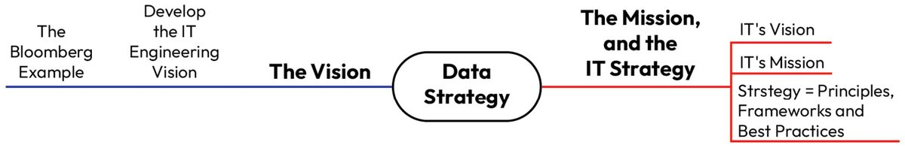
다음 섹션에서는 비전부터 시작하겠습니다.
비전
리더가 비즈니스 전략을 수립할 때 머릿속에 일련의 명확한 문장이 형성됩니다. 이들은 “우리의 미래는…”으로 시작하며 그 뒤를 이어 최종 상태를 묘사하는 비전의 구체화가 흘러나옵니다. 이는 마치 예술가가 자신이 만들고자 하는 것을 말로 묘사하는 것과 같습니다. 앞으로 일어날 일에 대한 성찰에서 나오는 감정, 느낌, 생각, 그리고 목적의 명확성이 존재합니다! 리더가 매일 아침 일어나 열정을 불태우게 만드는 것은 바로 그 비전입니다. 그날 비전을 향한 진전이 이루어질 수도 있고… 그렇지 않을 수도 있지만… 리더는 목표를 달성하는 데 결코 흔들리지 않을 것입니다.
모든 데이터 여정은 비전과 미션에서 시작되어야 한다.
안타깝게도 조직의 나머지 구성원에게 그 비전을 전달하는 것은 종종 문제를 겪습니다. 조직의 모든 구성원은 최종 상태를 시각화하고 비전에 부합하는 전략에 자신의 기여를 집중해야 합니다. 비전 선언문(Vision statement)은 비전 그 자체와는 다릅니다. 비전 선언문은 군대를 결집하기 위해 흔드는 깃발에 가깝습니다. 이 깃발은 눈길을 끄는 한 줄짜리 비전 선언문이 담아낼 수 있는 것보다 훨씬 더 많은 단어와 세부 사항, 감정, 노력이 담긴 비전 자체를 상징합니다. 비전 그 자체보다 비전 선언문에 너무 많은 강조가 주어지는 경우가 많습니다. 조직의 비전에 계속 집중하기 위해 모든 구성원은 전체 비전에 부합하는 비전 선언문을 작성하여 일상 업무에 반영해야 합니다.
그림의 작은 부분이 전체의 아름다움을 온전히 대변하지 못하더라도, 각 개인은 자신이 어디에 적합한지 확인하고 그 비전을 온전히 받아들여야(Buy-in) 합니다. 비전의 구현에 감정적으로 이끌리는 것은 핵심적인 필수 조건입니다. 조직의 각 참여자가 스스로를 바라보고 왜 자신이 이러한 노력에 동참하고 있는지 깨닫게 되는 것은 바로 이러한 관점에서 비롯됩니다. 비전은 감정적 에너지를 정렬하고 상황이 어려워질 때 지탱해 주는 힘을 제공합니다. 비전은 “나는 왜 여기에 있는가?”, “나는 왜 이 일을 하고 있는가?”, “나는 왜 열정적인가?”, “나는 왜 이 회사에 충성하는가?”라는 핵심 질문에 답을 제시합니다.
또한 여러분의 비전은 한 걸음 물러서서 다른 사람을 위해 희생하고 자신과 당장의 필요를 다른 사람 및 기업 전체의 후순위로 둘 수 있는 힘을 제공합니다. 우리 모두 어느 시점에서 모든 것을 포기하고 싶었던 적이 있지 않습니까? 우리가 반드시 만족시켜야 할 사람을 만족시키기가 너무 어려웠고… 그 사람은 도무지 만족할 줄 몰랐지만… 우리는 굴하지 않고 끈질기게 추구했기에 길을 찾아내고 인내해 냈습니다! 목표 및 핵심 결과(OKR)가 수립되어 우리에게 주어졌을 때, 그것이 마치 무거운 납 풍선처럼 느껴졌던 순간을 기억하십니까? 우리는 깊이 파고들어 그것이 큰 그림(비전)에서 왜 중요한지 이해해야 했습니다. 우리의 비전이 일치할 때 앞으로 나아갈 길이 명확하게 보입니다.
조직은 비전 선언문을 작성하는 데 많은 고심을 합니다. 하지만 그전에 여러 리더들이 비전 자체에 대해 논의하는데, 이는 비전이 전반적인 전략과 기업의 미션을 주도하기 때문입니다. 각 부서는 비전 선언문과 관련 비즈니스 미션 선언문을 읽고 이를 운영 비즈니스 전략에 맞춰 정렬해야 합니다. 모든 사람의 목표와 기업 활동이 이러한 방향과 일치할 것이라는 기대가 형성됩니다. 각 참여자가 자신의 업무에 대한 명확성을 얻는 것은 명확한 소통과 비전, 미션 및 전략에 대한 공동 참여를 통해서입니다. 스스로에게 “나의 비전, 미션, 전략은 무엇인가?”라고 묻는 것은 목적의 명확성을 제공하고 목표를 달성하도록 이끌어 줍니다. 현명한 IT 리더는 자신이 이끄는 사람들의 대표자이며 각 개인이 비전과 미션 선언문을 어떻게 파악하고 앞으로 나아갈 수 있을지 구상해야 합니다.
이 모든 것은 훌륭하게 들립니다. 업무 만족도, 참여, 방향성, 감정적 에너지, 목적의 명확성 등입니다. 하지만 우리는 상황이 걸림돌이 되고 어려움이 발생한다는 것을 알고 있습니다. 팀원 중 한 명이 떠나거나 비전을 받아들이지 않거나 미션을 완전히 수용하지 않을 수 있습니다. 튀는 행동을 하는 개인이 그들의 관점에서는 옳을 수도 있고 다른 사람은 사리사욕적인 의도를 가지고 있을 수도 있습니다. 이러한 상황은 조직 전체의 성공을 약화시킬 수 있습니다. 사람이 더 큰 그림 속에서 자신을 바라보기 전에 경계심을 풀고 기꺼이 적응하고 변화하며 심지어 어리석어 보일 각오까지 해야 합니다. 누군가는 이렇게 물을 수도 있습니다. “그렇게 효과적이라면 왜 지금까지 아무도 이런 새로운 접근 방식을 생각하지 못했을까요?”
역사를 돌아보면 캔버스 위의 검은 점처럼 실수가 드러나며 이는 오늘날의 렌즈를 통해 본 회고적 검토다.
우리는 과거의 실수를 나타내는 증거가 현재에 드러날 때 항상 그 실수를 명확하게 봅니다. 뒤돌아보면 우리가 어디서 잘못되었는지 확인하는 것이 항상 더 쉽습니다. 통찰력 있는 리더십은 다른 사람들이 상상조차 하지 못하는 함정을 피할 수 있습니다. 훌륭한 리더는 피할 수 있는 문제로 개발 팀에 부담을 주지 않습니다.
집단적 합의가 있다면 많은 실수를 피하고 오류를 최소화할 수 있다.
공유되고 집단적으로 공식화된 비전은 조직이 미션과 전략을 유지할 수 있도록 합니다. 변화가 필요할 때 이는 충격적인 것이 아니라, 미션이 적응할 수 있고 중장기 전략에서 이미 플레이북 계획을 수립해 둔 외부 힘에 대한 자연스러운 반응이 됩니다.
그렇다면 이 모든 것이 데이터 엔지니어에게 왜 중요할까요? 기업의 비전 선언문이 자신의 업무에 직접적으로 적용되지 않는 것처럼 보일지라도, 데이터 엔지니어는 전체적인 큰 그림의 비전 속에서 자신의 위치를 파악해야 합니다. 데이터 엔지니어는 자신의 역할을 되새기고 열정적으로 비전에 동참하여 온전히, 행복하게, 성공적으로 업무에 몰입하기를 원할 것입니다. 데이터 엔지니어링 아키텍처의 잠재력은 고위 IT 리더를 통해서만 대변되더라도 개념적으로 의사결정 테이블에 자리를 잡아야 합니다. 헌신이 없다면 미션에 대한 충성심은 사라지고 환멸이 뒤따를 것이며… 남는 것은 비트와 바이트뿐일 것입니다.
데이터 엔지니어링은 어렵습니다! 여러분은 충성스럽게 헌신해야 하고, 기술적으로 거대한 전투를 치를 준비가 되어 있어야 하며, 벤더 및 클라우드 제공업체의 마케팅용 소프트웨어(Marketware)와 실제 통합된 소프트웨어 서비스를 구별해 내야 합니다. 결국 소프트웨어를 제공할 때는 항상 80/20 법칙이 적용될 것을 예상해야 합니다. 하지만 종종 우리는 제공업체로부터 완성도 높은 정식 출시 솔루션을 구매한다고 생각합니다. 문제는 제공업체가 20%만 구현해 두고 80%처럼 보이게 포장하여 미소를 지으며 여러분에게 판매했다는 점입니다! 기술 과대광고 주기에 속지 마십시오! 미션을 수립할 때 현명해져야 하며 비전으로부터 전략을 수립해야 합니다. 이것들은 회사와 제품 개발 제품군에 있어 매우 중요한 단계입니다.
매년 전략을 구체화하고 항상 다음 5개년을 재설정할 수 있도록 준비해야 하며 다음 회계연도의 목표 설정 논의의 일환으로 매년 명확한 진전을 이루어야 합니다. 하지만 비전, 미션, 전략에 대한 상위 수준의 필요성에 대해서는 충분히 설명했습니다. 자신만의 비전, 미션, 전략을 세우는 것은 개인적인 노력이 되어야 합니다. 자신에게 철저히 정직해지는 것이 필수적입니다.
“무엇보다 네 자신에게 진실하여라!” - 윌리엄 셰익스피어, 햄릿 1막 3장 {https://packt-debp.link/inlwN7}
내가 과거에 무엇을 잘못하고 있었기에 지금 바로잡기 위해 변화해야 하는가? 왜 나는 다른 사람들이 보는 방식으로 그것을 보지 못하는가? 왜 나는 발을 맞추지 못하는가? 내가 그것을 이해하지 못하게 만드는 부족한 점은 무엇인가? 애플 컴퓨터의 개척자 데이비드 선(David Sun)은 다음과 같이 말합니다.
“스펀지가 되어라!”
“매일 아침 일어날 때마다 나는 스펀지가 되고 싶다”고 데이비드 선은 말합니다. “나는 모든 사람으로부터, 그리고 매일 아침 내 주변에서 만지고 보는 모든 것으로부터 모든 것을 배우고 싶다. 우리는 매일 학습에 몰입해야 한다.”
변화를 위한 안전한 소통 환경을 조성하는 것은 비전, 미션, 전략 프로세스의 필수적인 부분입니다. 자신에게 진실하십시오. 여러분보다 더 많이 알고 비전, 미션, 전략이 어떻게 형성되어야 하는지 얼굴을 마주하고 열정적으로 이야기해 줄 조언자를 찾으십시오. 그들은 전반적인 방향성의 한 조각을 가져다줄 것이며 여러분은 우정과 열린 소통뿐만 아니라 얻게 될 지식에 만족할 것입니다. 비전과 미션의 초기 불일치는 전략, 아키텍처, 딜리버리 및 비즈니스 운영에서 수많은 문제를 야기하곤 합니다.
“[스티브 잡스]의 헌신과 디테일에 대한 관심은 상상을 초월한다”
“그는 또한 탁월함을 추구하는 데 있어 매우 일관성이 있었습니다. 그는 그 용어가 비즈니스 세계에서 대중화되기 전부터 틀 밖에서 생각하기 시작했습니다. 그는 매우 집중력 있는 사람이었습니다. 그는 항상 프로젝트를 올바르게 완수합니다. 그는 항상 우리 중 누구도 지금 당장 필요하다고 깨닫지 못했던 것을 창조해 내지만 그는 이미 그것을 만들고 있었습니다.” - 데이비드 선 {https://packt-debp.link/93c3EZ}
지금쯤 여러분은 비즈니스 및 개인적 비전, 미션, 전략의 필요성에 대한 우리의 강조를 분명히 이해하셨을 것입니다. 데이터 엔지니어링 모범 사례 책에서 왜 이런 강조를 하는지 궁금할 수 있습니다. 그 이유는 이러한 접근 방식이 컨설턴트 그룹을 모아 문제를 해결하는 방식과는 다른 엔지니어링을 만들어내기 때문입니다. 그 차이점은 모든 참여자의 관점을 획기적으로 전환시킨다는 것입니다. 이러한 관점의 전환은 최종 목표를 달성할 수 있다는 확신을 가지고 목표에 예리하게 집중하도록 만듭니다. 개발 중에 제기되는 질문에 대한 수많은 답은 우리가 아키텍처를 먼저 생성하면서 비즈니스 목표를 충족하는 솔루션을 형성함에 따라 명확해질 것입니다. 이제 우리는 데이터 엔지니어링에서 이것이 어떻게 적용되는지 살펴보고자 합니다.
데이터는 스마트해야 한다. 이는 단순히 단절된 소프트웨어 처리의 결과물이 아니라, 데이터 자체와 함께 데이터의 맥락을 보존하도록 엔지니어링된 것입니다. 우리는 정보의 연결성을 보존하고 그 목적을 위해 가용 기술을 활용하고자 합니다. 우리는 기술적 한계와 벤더의 한계에 직면해 있습니다. 기성 솔루션을 구매하거나 사상누각과 같은 기술 스택을 통합하기보다는 솔루션 내에 더 많은 것을 구축해야 하는 상황에 놓입니다. 비전은 일부 사람들이 편의적이라고 생각하는 것보다 더 복잡한 미션(또는 미션들)을 설정합니다! 데이터를 스마트하게 만든다는 개념은 선견지명이 있습니다. 우리는 데이터를 스마트하게 만드는 것이 올바른 목표임을 직관적으로 알지만 구현하기에 손쉽지도 않고 위험이 없는 것도 아닙니다. 데이터를 스마트하게 만드는 데 필요한 엔지니어링 설계는 결코 쉬운 일이 아닐 것입니다! 마찬가지로 IT 리더가 명확한 비전에 부합하는 어려운 미션을 수용하는 것이 항상 안전한 것은 아니지만 회사를 위해서는 올바른 일입니다.
전략에 부합하는 미션은 아직 고객 대면 시스템에 구현되지 않은 학술 연구를 바탕으로 수립되고 지원될 수 있습니다. 최첨단에 서는 것은 훌륭한 일입니다. 최신의 가장 훌륭한 신기술을 연구하고 싶어 안달이 난 열정적인 졸업생들을 끌어들이고 이는 흥미진진할 수 있습니다. 하지만 프로젝트가 단순히 호기심 많은 엔지니어들의 기술 놀이터가 된다면 개발 프로젝트는 순식간에 궤도를 이탈할 수 있습니다. 어떻게 해야 할까요? 답은 그래도 전략을 수립하고 올바른 균형을 찾는 것입니다!
미션의 난이도에 위축되지 마십시오!
최첨단을 수용하되, 그 칼날에 베이지는 마십시오!
혁신과 창의성이 꺾이지 않는 것이 중요합니다. 실제로 이를 육성하고 싶겠지만 진정한 딜리버리 진행을 희생시켜서는 안 됩니다. IT 전문가 근무 시간의 20%는 개선에 할당되어야 합니다. 그렇지 않으면 5년 내에 다음 세대의 물결이 정점에 달할 때 도태될 것입니다. 다음 파도가 올 때 여러분은 정상에 있거나, 중간에 있거나, 맨 아래에서 휩쓸려 나갈 것입니다. 그 20%는 고용주로부터 주어지는 경우가 거의 없습니다. 이는 야근 후, 딜리버리 후, 또는 그와 병행하여 개인적인 시간에서 나오지만 반드시 투입되어야 합니다. 또는 고용주가 관대하고 직원을 소중히 여긴다면 핵심 업무 외에 추가적인 탐색 작업(Spike)에 개발 중 시간이 할당됩니다. 다음은 여러분이 해야 할 일들입니다.
- 앞으로 나아갈 방법을 모색하십시오.
- 최첨단에 서는 위험을 완화하되 용기를 가지십시오.
- 오픈 소스에 기여하고, 사용하고, 배우고, 가능한 경우 활용하십시오. 더 나아가 이를 개선하고 커뮤니티에 다시 기여하십시오. 저작권 및 사용 계약을 준수했는지 확인하십시오.
- 다른 사람의 코드를 읽고 그 코드와 서로에게서 배우십시오. 리팩터링을 두려워하지 마십시오. 현명한 멘토가 언젠가 나에게 절대 자신의 코드와 결혼하지 마라!고 조언했습니다.
- 설계할 때 기능적 측면뿐만 아니라 운영적 측면도 함께 생각하십시오.
IT 엔지니어링 비전 수립
이는 오류 처리 코드를 가장 먼저 구조화함을 의미합니다. 또한 설계의 일부로 테스트 우선(Test-first)을 설계하고 팀 전체에 시프트 레프트 테스팅(Shift-left testing) 규율을 구현함을 의미합니다. 40여 년 전 고전 The Mythical Man-Month(맨먼스 미신)에서 규정한 40%의 폭포수 모델 테스트 노력을 절약할 수 있을 것입니다. 과거 이야기 하나를 하자면, 수년 전 제가 Bloomberg Equities 팀에서 일할 때 “팀에서는 코드를 어떻게 테스트합니까?”라고 물었습니다. 대답은 “신중하게!”였습니다. 그래서 테스트 환경에 어떻게 접근하는지 물었더니 환경이 없다는 답변을 들었습니다. 그리고 마지막으로 “버그는 개인의 책임이다!”라는 말을 들었습니다. 여러 면에서 기가 막혔지만 저는 굴하지 않고 인간 컴파일러가 되어 코드가 프로덕션에 배포될 때마다 땀을 뻘뻘 흘렸습니다. 이것이 결코 좋다는 말은 아니지만 Bloomberg Equities 팀에게는 효과가 있었습니다.
개발자는 딜리버리 품질을 책임져야 하며 다른 사람이 결함을 식별하거나 수정해 줄 것에 의존해서는 안 됩니다.
최첨단의 칼날에 베이는 위험을 완화하십시오!
테스트 우선 설계 및 시프트 레프트 테스팅 접근 방식으로 구축하십시오.
DevOps를 구현할 때 개발뿐만 아니라 운영도 생각하십시오!
IT 리더는 개발자가 명확한 프레임워크에 따라 통합되고 작동하는 양질의 코드를 생성할 수 있는 안전망을 구축해야 합니다. 해당 프레임워크에는 각 팀이 아닌 조직에 맞춤화된 애자일 프레임워크가 포함되어야 합니다. 이를 통해 결함률과 통합 시 오류 수정 시간/비용을 최소화할 수 있습니다. 효과를 보려면 이러한 오류가 본질적인 관리 프로세스 누락으로 인해 발생해서는 안 됩니다. 서버리스 구성 요소가 필요한 오늘날 클라우드 PaaS 솔루션의 복잡성을 생각해 보십시오. 클라우드 제공업체의 PaaS 운영에 대한 잘못된 가정으로 인해 엔드투엔드 통합 테스트는 막대한 운영 위험을 초래합니다. 이는 특히 PaaS 서버 확장 용량의 한계점에서 분명하게 드러납니다. 오류 처리/복구는 여러분의 설계 일부로 구축되어야 하며 통합 전에 반드시 테스트되어야 합니다.
블룸버그의 사례
개발 여정을 생각할 때 고통은 최소화하고 이득은 극대화해야 합니다. 진부한 표현이라 죄송하지만 사실입니다! IT 개발은 매우 어려울 수 있으며 잘 작동하는 것을 너무 자주 바꾸고 싶지는 않을 것입니다. 시간의 시험을 견뎌내는(즉, 미래 지향적인) 솔루션을 구축하려면 명확한 비전과 미션을 가져야 하며 성공을 향한 추진력에 있어 원칙을 바탕으로 움직여야 합니다.
예를 들어 Bloomberg가 1980년대 후반에 시작했을 때, 그들은 IBM 메인프레임과 3270 컨트롤러 패턴을 기반으로 한 아키텍처를 구현했습니다. 컴퓨터 고고학을 공부하는 분들을 위해 이 레거시 디자인 패턴에 대해 조금 설명하겠습니다. 해당 메인프레임 컨트롤러 패턴을 통해 백오피스의 제어 장치로 더미 터미널(Dumb terminal)을 제어할 수 있었습니다. 한 번에 약 32개의 터미널이 컨트롤러 캐스케이드에 연결될 수 있었습니다. Bloomberg 시스템에서 모방된 것은 Unix 서버에서 재작성된 컨트롤러였으며 더미 터미널은 턴키 방식의 Bloomberg PC 호스팅 애플리케이션을 실행하는 PC로 대체되었습니다. Microsoft Windows OS는 필요하지 않았고 단지 UNIX 컨트롤러와 PC 간에 Bloomberg의 새로운 제어 프로토콜을 구현하는 기능만 있으면 되었습니다. 해당 컨트롤러가 GUI를 구동했습니다. 초기에는 풍부한 GUI가 아니었지만, 매우 기능적이고 빨랐습니다. 1,200개 이상의 기능이 구축되었으며 오늘날에는 훨씬 더 많은 기능이 존재합니다. 기능 이름에 4개의 36진수 문자를 입력하면 0000부터 ZZZZ까지 가능한 1,679,615개의 잠재적 기능 이름 조합 중 하나를 얻을 수 있습니다. 비전의 핵심 측면은 경쟁이 치열한 금융 정보 서비스 산업에 의해 주도되었습니다! 데이터는 이 비전의 핵심이며 데이터가 도난당하거나 부적절하게 사용되지 않도록 보호하는 것은 필수적이었습니다(지금도 마찬가지입니다). 이 데이터를 사용 가능하지만 보호된 형태(즉, 시각적 전용)로 유지함으로써 모든 데이터가 프로그래밍 방식으로 제공되지 않고 시각적으로 렌더링되었기 때문에 기술 구현을 통해 라이선스를 강제할 수 있었습니다. 이는 기술을 통해 해결된 핵심 문제에 대한 우아한 솔루션이었으며 여전히 Bloomberg의 경쟁 우위로 남아 있습니다.
우스갯소리로 기억나는 것은 1990년대 중반에 조지 워싱턴 다리 근처에서 굴착기가 통신선을 끊어 세 곳의 정보 제공업체가 동시에 서비스를 잃었던 사건입니다. 그들은 끊어진 통신선으로 인해 큰 영향을 받은 네 번째 제공업체로부터 데이터를 가져오고 있었음이 분명했습니다. 비록 그 세 곳이 라이선스 사용자나 재배포자가 아니었을지라도 누구의 수익을 누가 주도했는지 명확했습니다! 이 사건 이후 어떤 일이 일어났는지, 그리고 그 뒤를 이은 업계의 통폐합을 상상할 수 있을 것입니다.
Bloomberg가 데이터를 안전하게 지킨 것은 옳았습니다! 따라서 원시 데이터는 폐쇄형 시스템 밖으로 유출되지 않았습니다. 맞춤형 키보드가 장착된 맞춤형 PC에서 실행되는 맞춤형 PC 애플리케이션으로 opcode를 전송하는 맞춤형 Bloomberg Unix 미들티어 제어 서버에 의해 보호되었습니다. Bloomberg 컨트롤러 프로토콜은 수천 개의 화면 기능을 구동했습니다. 앱 자체는 단순했지만 미들티어 서버의 풍부한 GUI 제어 명령을 처리했습니다. IBM 3270 제어 시스템보다 더 스마트했지만 동일한 아키텍처 패턴을 활용했습니다! 하지만 사용자의 화면에는 GUI로 렌더링된 정보만 제공되었을 뿐 데이터는 제공되지 않았습니다. 그리고 그것은 완전히 암호화되어 보호되었습니다. 데이터, 분석 및 뉴스 기능은 대규모 환경에서도 기대를 뛰어넘는 딜리버리 서비스 수준으로 매우 빠른 속도로 제공되었으며 지금도 견고하게 유지되고 있습니다. 이는 금융 서비스 최종 사용자의 특성 때문입니다. 그들은 지금 당장 그것을 원하며 완벽하게 정확해야 한다고 말할 수 있습니다!
그 아키텍처에서는 악의적인 경쟁자가 데이터를 스크래핑하는 것이 불가능했으며 HTML, 텍스트 또는 발견 가능한 어떤 방식으로도 제공되지 않았습니다. 나중에 데이터 라이선스 API가 개발되었고 이 책의 저자 중 한 명도 여기에 참여했습니다. 그러나 높은 가격이 책정되었고, 규제되고, 스로틀링되었으며, 공정 사용 준수를 위해 사용량이 검증되었습니다. 폐쇄형 데이터 Bloomberg 정보 시스템은 경쟁 환경뿐만 아니라 속도와 정확성에 대한 비전을 해결했습니다. 사용자에게 매우 귀중한 자산입니다. 이는 암묵적으로 사용 계약을 다루며 사용자당 하나의 터미널로 판매되고 원시 데이터에 대한 접근 없이 월 단위로 라이선스 비용이 청구됩니다. 신뢰는 비즈니스 전략 정렬과 구현된 미션에 의해 보장되고 검증되며 그중 하나는 핵심 미션 지침으로서의 아키텍처 채택이었습니다. 데이터는 경쟁 우위였고, 지금도 그렇고, 앞으로도 항상 그럴 것입니다. 전반적인 미션은 매우 단순했습니다. “망치지 마라!(Don’t screw it up!)” 마이크 블룸버그는 오늘날에도 프로젝트를 시작할 때 이 말을 합니다.
100% SLA를 통해 완벽한 커버리지로 비할 데 없는 정보 접근성을 제공하는 것은 블룸버그가 출범했을 때와 마찬가지로 오늘날에도 여전히 귀중하다.
미션에 따르는 당연한 결과(Corollary)를 추가할 수도 있습니다. 회사, 투자자, 직원을 위해 많은 돈을 벌고 유지하는 것입니다.
참고
Bloomberg는 Fortran으로 작성된 80년대 초반의 기술로 솔루션을 구현하고 이를 C로 감싼 다음 C++와 인터페이스했습니다. 그런 다음 확장성을 위해 Java 서비스로 래핑되었고 그래픽 렌더링을 위해 JavaScript가 활성화되었습니다. 이 모든 과정에서 항상 데이터가 사용자로부터 분리되도록 보장했으며 오류나 지연을 전혀 허용하지 않으면서 40만 명 이상의 사용자를 지원하도록 솔루션이 확장되었습니다. 25년이 지난 지금도 코드가 계속 실행되고 있지만 Fortran 프로그래머를 찾는 것은 행운을 빌어야 할 일입니다!
Bloomberg의 분산 데이터베이스인 BBCOM의 속도에 대해서도 말씀드려야겠습니다. 원래 설계는 모든 시장 데이터를 메모리에 배치했는데, 비용 및 RAM 가용성과 같은 하드웨어 제한으로 인해 80대 이상의 서버에 분산되어야 했습니다. 엔지니어들은 TCP/IP 스택을 재작성하고 TCP의 7개 슬롯 슬라이딩 윈도우 프로토콜을 버리고 PCOMM이라는 1,600개 이상의 슬롯으로 구성된 윈도우를 만들어 /IP로 실행했습니다. 그들은 상용으로 구할 수 있는 것보다 더 빠르게 IP 네트워크를 통해 미들티어 컨트롤러에 데이터를 공급할 수 있도록 하기 위해 이렇게 했습니다. 12장에서는 데이터 서비스에 대해 자세히 설명할 것이며 Bloomberg 시스템의 천재성을 더욱 높이 평가하게 될 것입니다. 즉시 사용 가능한 솔루션이 우아하고 미래 지향적이며 수익성이 있도록 비즈니스 목표를 충족하고 초과 달성하기 위해 기술을 활용하고 싶을 것입니다. 교훈은 구상할 수 있지만 어렵다면 그래도 해내라는 것입니다! 클라우드 제공업체가 모든 사용 사례에 대해 데이터 메시에서 이러한 유형의 솔루션을 범용화(Commoditize)할 수 있을까요? 대답은 ’예’이지만 아직은 그렇지 못합니다! 고객이자 IT 리더인 여러분은 기능을 높이고 비용을 낮추며 규모를 키우기 위해 한계를 뛰어넘어야 합니다!
그렇다면 무엇이 성공적인 비전을 만들까요? 최종 상태를 고려하고 비현실적인 낙관론(Pollyannaish)이 아닌 실재하는 비전입니다. 목표뿐만 아니라 목표를 방해할 수 있는 경쟁 환경도 다룹니다. 이에 상응하는 비전 선언문은 짧고 간결하지만 모든 세부 사항을 다룰 수는 없습니다. 따라서 상황이 어려워질 때 다른 사람들이 바라볼 수 있는 깃발 역할을 하도록 의도된 것입니다.
비전 선언문
비전은 미션의 방향을 명확히 설정하고 그 미션은 유동적인 전략을 위한 가드레일을 제공합니다.
비전과 그 미션은 성공을 가로막는 잠재적 장애물을 인정하거나 직접 해결하며 미래에 대한 명확한 통찰력을 제공합니다. 회사에 이러한 종류의 비전을 설정하는 것이 비전가(Visionary)의 목표입니다. 그것이 바로 비전가라는 용어의 본질입니다. IT 리더는 그러한 비전가가 되기를 원할 것입니다.
비전 요약
비전은 “이 전략을 통해 무엇을 달성할 것인가?”라는 질문에 답해야 합니다. 이를 위해 비전은 다음을 수행해야 합니다.
- 미래에 초점을 맞추어야 하므로 이 책의 초점은 미래 지향성(Future-proof)에 있습니다.
- 열망을 담은 톤을 설정해야 합니다.
- 조직에 동기를 부여해야 합니다.
- 비전을 달성하고자 하는 모든 이들에게 영감을 주어야 합니다.
- 미사여구와 전문 용어가 없어야 합니다.
- 진정성 있고 공감할 수 있으며 의미가 있어야 합니다.
이제 원칙과 비전의 필요성을 이해했으므로 미션 선언문에 필요한 문구의 유형을 접하게 될 것입니다.
미션과 IT 전략
미션에는 비즈니스 IT 전략 및 비전에서 비롯될 일련의 부서별 미션을 개발하기 위한 지침으로 사용할 수 있는 미션 선언문(Mission statement)도 있어야 합니다. *그림 3**.2*는 다음 섹션에서 미션과 전략을 어떻게 자세히 설명할 것인지 보여줍니다.
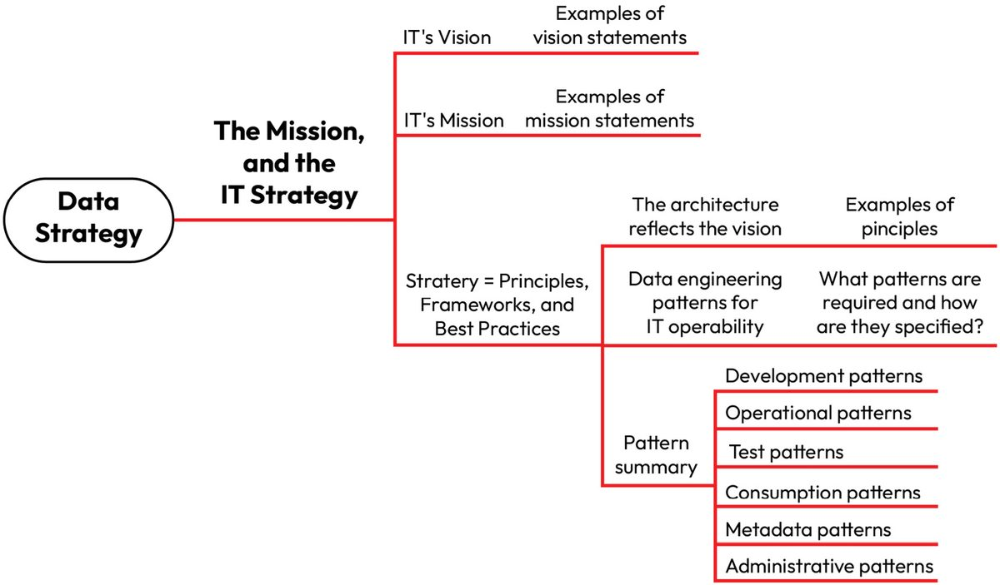
비전이 미래를 그린 그림이라면, 미션은 조각상과 같습니다. 미션은 이 뷰에 깊이를 더해줍니다. 조각상 주위를 걸어보면 대부분의 다른 관점에서는 보이지 않던 수많은 단면을 볼 수 있습니다.
조직의 모든 구성원은 각자의 관점에서 미션을 바라보고 다음과 같이 묻게 됩니다.
“이것이 나에게 어떤 의미가 있는가?”
이 질문에 대한 답이 부서별 미션의 수립을 이끌게 됩니다.
- 재무 부서는 투자 수익률(ROI)에 초점을 맞추어 비용을 어떻게 구성하고 모니터링할 것인지 보게 됩니다.
- 인사(HR) 부서는 전체 미션을 완수하는 데 얼마나 많은 인력과 교육이 필요한지 묻게 됩니다.
- 비용 센터가 아니라 비전의 수익 센터의 일부인 정보기술(IT) 부서는 회사의 ROI 극대화와 관련하여 경쟁 우위를 확보할 수 있도록 온전히 참여할 것입니다.
- 비용 센터인 IT 부서는 총 소유 비용(TCO) 절감에 집중할 것입니다.
- 각 비즈니스 사일로의 리더는 미션을 파고들어 그것이 해당 부서의 미션에 무엇을 의미하는지 분석할 것입니다. 각 리더는 데이터 엔지니어링 노력을 자신의 요구에 맞추려고 할 것이며 여러분이 모든 경우에 통용되는 단일 데이터 아키텍처로 수렴하는 것을 쉽게 허용하지 않을 것입니다. 데이터 엔지니어는 전체 미션 선언문을 활용하여 사일로가 기업의 목표와 정렬되도록 유지하거나, 적어도 그 목표들이 서로 갈라질 때 이를 지적해야 합니다.
모든 것을 일치된 상태로 유지하는 것은 미션이 전달될 때 수립된 비즈니스 전략입니다. 전략은 각 그룹의 실용적인 요구사항을 고려하고 한 그룹을 위해 솔루션을 최적화하는 비용을 다른 그룹과 비교하여 평가합니다. 이곳이 바로 합의가 서면으로 작성되는 곳입니다. 이는 어렵고 힘든 선택이 이루어져야 하는 영역입니다. 그렇지 않으면 비즈니스 및 IT 전략 팀이 해결했어야 할 다운스트림 싸움을 솔루션 아키텍트가 떠안게 됩니다.
팁
아키텍트가 해결해야 할 핵심 문제를 전략이 해결하지 못하는 경우를 식별하십시오.
미션과 전략은 서로 연결되어 있습니다. 그렇지 않으면 하나는 방향을 잃고 다른 하나는 무의미해집니다. 결국 성공적인 비즈니스를 운영하는 것은 일부는 과학이고, 일부는 예술이며, 상당 부분은 행운입니다! 미션과 전략이 일치하고 조직 내 각 핵심 그룹의 관점을 고려할 때 행운이라는 요소는 크게 문제 되지 않습니다.
IT 비전
IT 비전 선언문은 회사의 비즈니스 비전에 종속되고 그에 부합합니다. 이는 엔지니어링 팀이 회사의 전략을 달성할 수 있도록 장기적인 방향을 설정합니다.
잘 공식화된 IT 비전의 명확성은 회사의 목표 설정 과정에 가드레일을 제공합니다. 이러한 세션에서 비즈니스, 제품 및 IT 팀원은 열정적이고 온전하게 수용할 수 있는 OKR을 수립하고 채택합니다. 적절한 IT 비전은 포용의 문화를 조성하고 요구합니다. 이는 통합을 가능하게 하고 원활한 소통의 흐름을 열어줍니다.
IT 비전 선언문은 다음의 모든 요건을 갖추어야 합니다.
- 목표 설정 메커니즘: 적용될 기업 가치를 보여주어야 합니다.
- 목적 선언: 제품/서비스를 기획하거나 경쟁 과제를 해결하는 사람들을 이끌어 주어야 합니다.
- 성공 지표의 지표: 달성된 결과가 측정 가능하도록 보장해야 합니다.
- 간결함: 기억하기 쉬워야 하며 최대 2~3문장이어야 합니다.
- 도전적임: 직원들이 그것이 자신에게 어떻게 적용되는지 스스로 생각하게 만들어야 하므로 약간은 모호할 필요가 있습니다.
- 명확함: 이해하기 쉬운 언어를 사용하고 간결해야 합니다.
- 미래 지향적임: 진척 상황을 추적할 수 있는 미래 활동의 방향을 설정해야 합니다.
IT 비전은 조직의 핵심 가치를 가리킵니다. 이러한 가치가 IT 조직에서 수립할 원칙에 나타나는 것이 중요합니다.
참고
우리는 IT 정책 문서의 작성에 대해 논의하는 것을 피했습니다. 이러한 문서는 규정 준수 지향적이며 IT 조직 직원의 부정적인 행동을 억제하는 데 초점을 맞추기 때문입니다. 이러한 문서는 IT 비전의 긍정적이고 건설적인 측면에 초점을 맞추는 경우가 거의 없습니다. 필수적이기는 하지만 단지 작성하고 처리하면 되는 것이며… IT 리더의 머릿속 전경이 아닌 배경에 두어야 합니다.
비전 선언문의 예시
Amazon
“고객이 온라인에서 구매하고 싶어 하는 모든 것을 찾고 발견할 수 있는 지구상에서 가장 고객 중심적인 기업이 되는 것.” {https://packt-debp.link/IeR7in}
Bloomberg
“우리는 수익과 원칙이 상호 배타적이지 않다고 믿습니다. 이들은 서로를 강화합니다. 그리고 우리 직원, 고객, 커뮤니티, 지구를 위해 옳은 일을 하는 것이 우리 비즈니스를 위해서도 최선의 일입니다.” {https://packt-debp.link/vjcVhs}
Elsevier
“우리는 연구자와 헬스케어 전문가가 과학을 발전시키고 인류의 이익을 위해 건강 결과를 개선하도록 돕습니다.” {https://packt-debp.link/mvjiDn}
Microsoft
“…전 세계의 모든 사람과 모든 조직이 더 많은 것을 이룰 수 있도록 돕는 것.” {https://packt-debp.link/Of6iO4}
IBM
“IBM의 가장 위대한 발명품은 IBMer(IBM 직원)입니다. 우리는 지능, 이성, 과학의 적용을 통해 비즈니스, 사회 및 인간의 조건을 개선하고 전 세계 고객과 파트너를 위해 개방형 하이브리드 클라우드 및 AI 전략의 힘을 실현할 수 있다고 믿습니다.” {https://packt-debp.link/cBgFNf}
Oracle
참고: Oracle의 비전은 공식 발표되지 않았으나 원칙에 내포되어 있습니다.
“…고객이 성장하고 번영할 수 있도록 IT 환경을 단순화하는 데 도움을 주는 회사가 되는 것.” {https://packt-debp.link/KblKg5}
IT 미션
IT 미션 선언문의 목적은 IT 비전을 달성하는 방법에 대해 IT 조직을 이끄는 것입니다.
전반적인 비즈니스 전략과 이에 정렬된 부서 전략은 비전에서 도출된 전반적인 미션을 달성하기 위한 방법입니다. 목표(Goals)는 전략을 구현하기 위해 달성해야 할 사항에 대한 진술이며 방법(Methods)은 전략 내의 활동 흐름을 정의합니다.
IT 리더십은 매출 성장이나 고객 유지율 향상과 같은 비즈니스 전략의 측면을 수용하고 고객 서비스 비용 대비 사용자 비율을 낮추는 등 다양한 방법을 통해 전술적 및 전략적으로 해당 목표를 지원하는 전략적 IT 계획을 수립할 것입니다. 이 방법은 순추천지수(NPS)를 15% 증가시키는 등 성공 여부를 측정할 수 있어야 합니다. IT 전략은 비즈니스 전략을 지원하고 그에 부합해야 합니다. 일반적으로 IT 미션과 전략은 지출 계획을 수립하는 권한을 위임받은 전문가를 기반으로 정보에 입각한 예산 결정을 내리는 데 사용됩니다. 이는 개발된 시스템 자체가 제품인 수익 중심 IT 그룹과 비용 중심 IT 그룹 모두에게 매우 중요합니다. IT 전략 계획에는 다음 요소가 포함됩니다.
- 회계연도별, 필요한 경우(상장 기업인 경우) 분기별 비즈니스 포트폴리오 가치.
- 사업부 분석 및 제품 그룹 분석을 위해 의사결정 지원 시스템에 제공되는 IT 비용.
- 클라우드, PaaS, SaaS, IaaS 대 온프레미스, 네트워킹 및 통신 비용을 포함한 인프라 지출에 대한 IT 비용.
- 일상 업무(BAU), 유지보수, 긴급 수리(Break-fix), 혁신 등을 포함한 투자에 대한 IT 비용.
- 전문 서비스 및 고객 맞춤형 솔루션에 대한 IT 비용.
- 비즈니스 이니셔티브별 IT ROI 추적.
- 애플리케이션, 서비스 등 다양한 영역에 대한 IT TCO.
- 고객 참여도, 만족도, 정서, 반품, 장바구니 이탈, 방문 수 등의 고객 관련 지표.
- 자본 지출(CapEx) 대비 운영 비용(OpEx)의 차이.
- 수요 백로그, 실행 효율성, 결함률 측면에서의 제품.
데이터 엔지니어의 경우, IT 전략의 상태 보고서에는 미션에 맞춰 데이터 아키텍처를 개발할 때 내리는 어려운 선택들이 더하는 가치가 제대로 반영되지 않을 수 있습니다. 예를 들어 우아하게 설계된 데이터 엔지니어링 접근 방식은 여기에 나열된 많은 지표에 긍정적인 영향을 미칩니다. 아키텍처가 IT 전략 지표를 어떻게 긍정적으로 지원하는지 보여주는 스코어카드를 작성하는 것은 IT 리더의 몫입니다. C레벨 경영진은 IT 전략을 비즈니스 전략과 일치시켜야 합니다. 그렇지 않으면 문제가 발생할 때 항상 아키텍처 탓으로 돌려집니다! 아키텍트를 비난하는 것은 무능한 리더의 쉬운 도피처였습니다. 정기적인 IT 보고 프로세스와 일치하는 성공 지표를 확보하면 이러한 핑계를 없애고 공정하고 명확하게 전달되는 점진적인 피드백으로 대체할 수 있습니다. 결함은 발생하기 마련이지만 문제의 위치를 파악하는 것이 추측하는 것보다 경험적으로 훨씬 낫습니다.
아키텍처, 아키텍트, 엔지니어를 보호하는 것이 IT 리더의 목표가 되어야 합니다. 제 커리어를 쌓아가던 시절, 동료가 자신의 관리자에 대해 한탄하는 것을 들은 적이 있습니다. 그 관리자는 뻔뻔하게 “책임질 사람을 정하지 않고는 절대 프로젝트를 시작하지 마라”고 말했습니다. 왜 이런 사람이 조직에서 더 일찍 퇴출당하지 않았을까요? 이유는 모르겠지만 제가 기억하기로 그는 그리 오래 버티지 못했습니다. IT 리더로서 여러분은 자산을 보존해야 하며 다른 사람의 실수로 인해 직원들 사이에 불안감이 조성되는 사람을 상대로 장난을 쳐서는 안 됩니다. 올바르고 때로는 방어적인 긍정적 성공 보고를 통해 성공을 엔지니어링하십시오. 솔루션 정의로 시작한 다음 실패가 발생할 때 불가피한 책임을 아래로 전가하는 방식으로 시작하지 마십시오. 우리의 제안은 다음과 같습니다.
- 전략에 부합하도록 솔루션을 설계(Architect)하십시오.
- C레벨이 내용을 잘 이해할 수 있는 방식으로 IT 전략에 부합하는 성공 지표를 보고하십시오.
- 아키텍처의 성공이 전략과 일관되게 일치하는 경험적 증거에 의해 뒷받침되도록 하십시오.
- 지속적인 성공과 정렬에 대한 증거를 제공하기 위해 긍정적인 가치와 진전을 점진적으로 보여주십시오.
- 진행을 가로막는 장애물을 식별하고 문제가 발생하면 조기에 도움을 요청하십시오. C레벨 임원들은 현황을 알고 싶어 하며 여러분의 솔루션을 지원하기를 원합니다. 명백한 원인이 상위 문제라 할지라도 문제를 무작정 위로 떠넘기려고 하지는 마십시오. 옵션 분석을 제시하고 요청하는 선호 지원 유형을 명시하십시오.
- 모범 사례를 수집하고, 기술 전문가의 관점을 구하며, 아키텍처에서 재사용할 수 있는 성공적인 패턴/스토리를 수집하십시오. 그러나 그 모든 것에 따라 맹목적으로 행동하지는 마십시오.
해결해야 할 문제의 원인이 경영진의 프로세스, 리소스 부족, 변덕스러운 고객, 제품 방향 오류 또는 일반적인 개발 프로세스 결함(관리/거버넌스) 때문일 수도 있습니다. 그럼에도 여러분이 바라보는 전략적 실행의 추적 내용을 일관된 속도로 상부에 전달하는 것은 여전히 필수적입니다. 여러분의 보고서는 전략에 맞춰 미션을 수행하는 IT 리더와 분리되어서는 안 됩니다.
여러분의 IT 미션은 조직을 위한 동급 최고의 암묵적 데이터 엔지니어링을 갖춘 아키텍처를 개발하면서 여러분의 미션으로 비즈니스 미션과 IT 전략을 실행하는 것입니다! 데이터 엔지니어는 불가능한 미션의 단순한 주문 접수자가 될 수 없습니다. 데이터 엔지니어는 모든 설계 노력이 수용 가능하도록 조기에 온전히 참여해야 합니다.
미션 선언문의 예시
Amazon
“우리는 고객에게 가능한 최저 가격, 최상의 선택 폭, 최고의 편리함을 제공하기 위해 노력합니다.” {https://packt-debp.link/XFzQBk}
Bloomberg
“우리는 전 세계 의사결정권자들을 금융 시장의 정확한 정보와 연결하여 그들이 더 빠르고 현명한 결정을 내릴 수 있도록 돕습니다.” {https://packt-debp.link/Z7kNMC}
Elsevier
“우리는 기관과 전문가가 인류의 이익을 위해 의료를 발전시키고, 개방형 과학을 촉진하며, 성과를 향상시킬 수 있도록 지원하는 글로벌 정보 분석 기업입니다. 과학, 보건 및 기술 전문가의 성과를 향상시키고, 더 나은 결정을 내리며, 더 나은 치료를 제공할 수 있도록 지원하는 세계 최고의 정보 솔루션 제공업체입니다.” {https://packt-debp.link/osy2aJ}
Microsoft
“…지구상의 모든 사람과 모든 조직이 더 많은 것을 성취할 수 있도록 권한을 부여하는 것.” {https://packt-debp.link/vutE0l}
IBM
“우리의 미션이자 목적은 세상을 더 잘 작동하게 만드는 촉매제가 되는 것입니다. 촉매제는 변화의 주체입니다. 촉매제로서 IBMer는 새로운 에너지를 방출하기 위해 협력합니다. 우리는 파트너십을 맺고 사람과 기술의 강력한 조합을 이끌어냅니다. 우리는 과학의 방법론과 비즈니스의 역동성을 결합하여 어느 쪽도 혼자서는 할 수 없는 일을 해냅니다. 우리는 어려운 문제를 해결하고 솔루션의 영향을 속도와 규모로 증폭시킵니다. 우리의 업무는 지구상에서 가장 미션 크리티컬한 시스템, 즉 전력망, 항공사, 모바일 네트워크, 은행, 교통 시스템 및 의료 시스템에 집중되어 있습니다. 이러한 시스템은 단순한 경제 성장의 엔진 그 이상입니다. 현대 사회를 지탱하는 시스템입니다. 이들을 더 빠르고, 더 생산적이며, 더 안전하게 만듦으로써 우리는 비즈니스가 더 잘 돌아가게 할 뿐만 아니라 세상이 더 잘 돌아가도록 만듭니다.” {https://packt-debp.link/DFU417}
Oracle
“우리는 지속 가능한 글로벌 경쟁 우위를 창출하기 위해 모든 직원, 공급업체, 고객 및 파트너의 다양한 배경과 관점을 활용하는 포용적인 환경을 조성합니다.” {https://packt-debp.link/DRfJjC}
IT 미션 요약
OKR이 생성되고 최종 상태 아키텍처 정의에서 비즈니스 전략이 구체화되면 모든 사람의 머릿속에 미션이 명확해져야 합니다. 그때까지 미션은 모든 사람이 올바른 방향을 바라보도록 유지합니다. 필요한 것은 선택을 내릴 때 적용될 원칙, 목표를 달성하기 위한 프레임워크, 그리고 목표를 향한 길에서 벗어나려는 팀의 과도한 욕구를 제어할 모범 사례입니다.
원칙, 프레임워크 및 모범 사례
이 시점에서 IT 전략은 명확해져야 하고 그에 상응하는 미션은 수용되어야 합니다. 그렇다면 다음은 무엇일까요? 이제 구성원들을 정렬할 방법을 생각할 때입니다. 2020년대를 훌쩍 넘긴 지금 우리는 애자일(Agile) 개발을 수행합니다. 우리는 무작정 뛰어들기를 원하지 않습니다. 여러분의 회사에 맞는 명확한 애자일 선언문을 준수해야 한다고 확신할 수 있습니다. 고위 비즈니스 리더들은 아직 애자일의 환상(Kool-Aid)에 빠지지 않았습니다. 그들은 예산과 기대치를 설정한 다음 언제 완료되는지 알고 싶어 합니다.
팁
폭포수 실행 계획에 20%의 여유(Slack)를 두고 비즈니스 부서와 팀을 위한 OKR을 수립하되 그 추가 20%는 제외하고 수립하는 것을 제안합니다.
애자일 프로세스를 사용하여 IT 전략의 구현을 향해 나아가십시오. 전략적 비즈니스 기대치를 초과하지 않으려면 여유 시간이 필요합니다. 애자일 역량을 갖추고 교육받은 팀원들이 목표를 향해 개발해 나가도록 하려면 다음 사항에 주의를 기울여야 합니다.
- 사람(People): 누가 무엇을 하고 있으며 모범 사례와 얼마나 잘 일치하고 있는가?
- 프로세스(Process): 프로세스가 명확하고 프레임워크와 일치하며 진척 상황을 측정할 수 있는가?
- 기술(Technology): 우리의 기술 선택이 우리의 원칙과 일치하는가?
아키텍처는 비전을 반영한다
과거에 아키텍처를 정의해 달라는 요청을 받았을 때, 우리는 이를 앞서 언급한 세 가지 주요 부문으로 나누었습니다. 이를 통해 모범 사례, 프레임워크 및 원칙이 사람/기술, 프로세스/방법, 기술/선택에 대략적으로 적용되어야 함을 알 수 있습니다. 개발 역학의 현실은 제가 묘사한 접근 방식만큼 엄격하게 분할되지는 않지만 이들이 아키텍처의 어디에 들어맞는지 쉽게 설명하는 데는 효과적입니다. 이 책에서는 모범 사례와 함께 데이터 엔지니어링을 위한 세부 아키텍처와 프레임워크를 자세히 살펴볼 것이지만 이 섹션에서는 이러한 영역을 구체적으로 다루지 않습니다. 그러나 명확성을 기하고 앞서 논의한 비전 및 미션과 일치하도록 검토할 만한 여러 기업 원칙 사례를 포함했습니다.
이제 참조 시스템을 통해 데이터 여정을 자세히 살펴볼 수 있는 단계가 마련되었습니다. 이러한 단계가 마련되면 여러분은 우리의 관점을 공유하고 데이터 솔루션을 미래 지향적으로 만들기 위해 은유적인 더 높은 곳에서 관점을 확보해야 한다는 점을 인식할 수 있습니다. 이 섹션에 제공된 원칙의 예를 검토할 때 벤더가 기술 환경을 다르게 바라보고 여러분의 환경 샌드박스에서 항상 잘 어우러지지는 않는 제품과 서비스를 생산하는 이유를 알 수 있을 것입니다. 제공되는 기능이 일치하지 않을 수 있습니다. 우리가 원하는 견고하고 미래 지향적인 데이터 솔루션을 만들기 위해 많은 접착제(즉, IT 아키텍처 및 개발 노력)를 사용해야 합니다.
원칙의 예시
이 섹션에서는 IT를 제품 제공의 핵심으로 간주하여 IT 원칙과 비즈니스 원칙이 밀접하게 일치하는 조직의 기업 원칙 사례를 제공합니다. IT를 비용 센터로 취급하는 회사는 상세한 IT 원칙 세트를 보유하게 됩니다. 분명한 것은 회사의 문화가 모든 사람이 볼 수 있도록 공개된 가치와 원칙에 명백히 드러난다는 점입니다. 최첨단 기업들은 AI에 대한 IT 원칙을 게시하고 있습니다. 이는 우리의 모범 사례와 관련이 있으므로 검토를 위해 포함했습니다. 이러한 원칙들은 회사가 진행 중인 기술 변화를 지원하기 위해 데이터 엔지니어링을 재구상할 때 유용하게 작용할 것입니다.
아마존의 기본 원칙
Amazon은 지구상에서 가장 고객 중심적인 기업이 되기 위해 노력합니다. 이는 “Who we are” 페이지 {https://packt-debp.link/3rRrrF}에 명시되어 있습니다. 그들은 “지구 최고의 고용주”이자 “지구상에서 가장 일하기 안전한 직장”이 되고자 합니다. 다음 원칙들을 확인할 수 있습니다.
- 고객에 대한 집착(Customer obsession) (경쟁사 중심이 아님)
- 발명에 대한 열정(Passion for invention)
- 운영 우수성에 대한 헌신(Commitment to operational excellence)
- 장기적 사고(Long-term thinking)
이러한 원칙에서 얻을 수 있는 요점은 데이터 엔지니어링 전략, 구현 패턴 및 청사진이 혁신과 조직의 장기적인 성공을 지원하기 위해 고객을 기반으로 한다는 것입니다. Amazon에서 엔지니어링 솔루션을 설계할 때 구매하기보다는 자체 구축하는 경우가 많을 것으로 예상할 수 있습니다.
아마존의 리더십 원칙
기본 원칙과 별도로 Amazon은 특정 리더십 원칙 세트에 중점을 둡니다 {https://packt-debp.link/lcrfNn}. 개발 엔지니어링 프로세스 기능은 이러한 원칙에서 개발됩니다. 협력적인 토론, 합의 및 성장에 대한 명확한 초점이 분명히 드러납니다. 이는 여러 면에서 데이터 엔지니어링 결과물에 영향을 미칩니다. 비용(절약)에 대한 언급이 눈에 띄며 이를 통해 단순하고 혁신적인 솔루션이 개발될 수 있는 여지가 주어집니다.
- 고객에 대한 집착(Customer obsession): 리더는 고객으로부터 시작하여 거꾸로 일합니다.
- 주인의식(Ownership): 리더는 장기적으로 생각하며 단기적인 결과를 위해 장기적인 가치를 희생하지 않습니다.
- 발명하고 단순화하라(Invent and simplify): 리더는 팀에 혁신과 발명을 기대하고 요구합니다.
- 항상 올바르게 판단하라(Be right, a lot): 리더는 강력한 판단력과 좋은 직관을 가지고 있습니다.
- 배우고 호기심을 가져라(Learn and be curious): 리더는 배움을 멈추지 않으며 항상 자신을 개선하려고 노력합니다.
- 최고 인재를 채용하고 육성하라(Hire and develop the best): 리더는 모든 채용과 승진을 통해 성과의 기준을 높입니다.
- 최고 수준의 기준을 고집하라(Insist on the highest standards): 리더는 끊임없이 높은 기준을 유지합니다.
- 크게 생각하라(Think big): 리더는 결과를 고취하는 대담한 방향을 창조하고 전달합니다(작게 생각하는 것은 자기충족적 예언입니다).
- 신속하게 행동하라(Bias for action): 의사결정과 행동은 되돌릴 수 있으며 광범위한 연구가 필요하지 않습니다. 속도가 중요하며 계산된 위험 감수의 가치가 있어야 합니다.
- 근검절약을 실천하라(Frugality): 적은 자원으로 더 많은 것을 이루어 지략, 자립심, 발명을 길러냅니다.
- 신뢰를 얻어라(Earn trust): 리더는 주의 깊게 경청하고 솔직하게 말하며 다른 사람을 존중합니다.
- 깊이 파고들어라(Dive deep): 리더는 모든 수준에서 활동하고, 세부 사항과 연결되어 있으며, 자주 감사하고, 지표와 일화가 다를 때 의문을 품습니다.
- 소신을 갖고 반대하며 헌신하라(Have a backbone; disagree and commit): 리더는 동의하지 않을 때 정중하게 결정에 이의를 제기할 의무가 있으며 이는 불편하거나 지치는 일일지라도 마찬가지입니다.
- 결과를 도출하라(Deliver results): 리더는 비즈니스의 핵심 투입물에 집중하고 적절한 품질로 적시에 결과를 제공합니다.
- 지구 최고의 고용주가 되기 위해 노력하라(Strive to be Earth’s best employer): 리더는 매일 더 안전하고, 더 생산적이며, 더 높은 성과를 내고, 더 다양하며, 더 나은 업무 환경을 만들기 위해 일합니다.
- 성공과 규모는 광범위한 책임을 수반한다(Success and scale bring broad responsibility): Amazon의 리더는 세상에 영향을 미치며 자신의 행동이 미치는 2차적 영향에 대해서도 겸손하고 신중하게 생각합니다. 지역 사회, 지구, 미래 세대는 우리가 매일 더 나아지기를 필요로 합니다.
따라서 Amazon의 데이터 엔지니어로서 성공할 수 있는 여지는 많지만 여러분의 생각은 개발 방향을 안내하는 원칙에 의해 주도될 것입니다.
블룸버그의 핵심 가치
Bloomberg는 원칙보다는 가치를 제공한다는 점에서 독특합니다. 이들은 유사하지만 동일하지는 않습니다. 가치 선언문을 사용하면 원칙이 유연한 것으로 간주될 수 있으며 이는 대응 과정에서 기술 변화를 더 많이 유발할 수 있습니다 {https://packt-debp.link/WhK71o}. 이런 일이 발생하면 비용이 많이 드는 영향을 예상해야 합니다. 그러나 초변화가 지속되고 자금이 문제가 되지 않는다면 이 접근 방식은 잘 작동합니다.
- Bloomberg의 다양성과 포용성(Diversity and inclusion): 혁신은 비즈니스를 발전시킵니다. 다양한 팀이 다양한 각도에서 문제를 바라볼 때 파괴적이고 획기적인 아이디어가 나온다는 점을 이해하고 있습니다. Bloomberg의 문화는 차이를 소중히 여기고 포용성을 육성하며 협업을 촉진합니다. 모든 직원이 비즈니스에 영향을 미칠 수 있는 권한을 가질 때 모두가 승리합니다.
- Bloomberg의 기술(Tech at Bloomberg): 한계를 뛰어넘습니다. Bloomberg는 고객이 언젠가 필요로 할 것을 창출하기 위해 수십 년 앞을 내다봅니다. 이는 Bloomberg Terminal이 구축되었던 첫날부터 회사의 다른 정보에 명시된 미션입니다. 개척자적인 기술은 플랫폼이 출시되기 전 정보가 느리고 비효율적으로 전송되던 금융 산업을 변화시켰습니다. 회사가 끊임없이 미래를 상상하고 투자함에 따라 기술 혁신이 제품을 이끌고 스며듭니다.
- 자선 활동 및 봉사(Philanthropy and service): Bloomberg의 필수적인 부분입니다. 회사는 직원의 시간과 재능, 리소스를 활용하여 사업을 영위하는 도시에 환원하기 위해 최선을 다하고 있습니다. 회사의 데이터 인사이트, 뉴스 및 혁신을 통해 충족되지 않은 커뮤니티의 요구를 해결하고 동료, 고객 및 파트너와의 참여를 심화하고자 합니다. 전 세계 다른 사람들의 삶을 개선하는 것이 핵심 가치입니다.
- 지속 가능성(Sustainability): Bloomberg는 모든 각도에서 지속 가능성을 다룸으로써 미래를 변화시키고자 합니다. Bloomberg에 따르면 기업은 보다 지속 가능한 미래를 형성하는 데 중요한 역할을 해야 합니다. Bloomberg 전반의 직원들은 더 나은 세상을 만드는 데 동참하고 있으며 탄소 배출을 줄이고 커뮤니티에 환원함으로써 글로벌 금융 커뮤니티가 기후 변화에 조치를 취할 수 있도록 지원하는 데이터와 인사이트를 제공합니다.
혁신, 협업, 고객 서비스 및 “옳은 일을 하는 것”이라는 레거시 가치는 여전히 Bloomberg에 적용됩니다. 이러한 원칙들이 데이터 엔지니어링 솔루션과 솔루션 제작 방식에 영향을 미칠 것임은 분명합니다.
엘스비어의 프라이버시 원칙
학술 및 의료 출판사로서 Elsevier는 다른 비즈니스 영역 중에서도 프라이버시, 책임성 및 가치에 중점을 두고 있다는 점에서 독특합니다 {https://packt-debp.link/f3sD0y}.
- 가치(Value)
“우리는 연구, 의료 및 교육의 효율성과 생산성을 촉진하기 위해 개인 정보를 수집하고 사용합니다.”
- 투명성(Transparency)
“우리는 수집하는 개인 정보와 이를 어떻게, 왜 사용하고 공유하는지 사용자에게 알립니다.”
- 선택권(Choice)
“사용자에게는 개인 정보의 수집, 사용 및 공유에 대한 선택권이 부여됩니다.”
- 익명화(Anonymization)
“개인 식별이 필요하지 않은 경우 개인 정보를 비식별화하고 집계합니다.”
- 책임성(Accountability)
“우리는 개인 정보의 책임 있는 관리자로서 행동하기 위해 최선을 다하고 있습니다.”
Elsevier나 이와 유사한 회사의 데이터 엔지니어로서 여러분은 데이터에 대한 학문적 관점을 갖게 될 것이며 이에 따라 프라이버시나 보안 위험을 노출하지 않으면서 데이터로부터 가치를 얻는 데 예리한 초점을 맞추게 될 것입니다. 이 시점에서 Bloomberg, Amazon, Elsevier의 차이점을 대조하여 이러한 원칙(또는 가치)이 주어졌을 때 솔루션이 얼마나 달라질지 확인할 수 있습니다.
엘스비어의 책임 있는 AI 원칙
Elsevier는 한 걸음 더 나아가 윤리적 AI 원칙을 명시함으로써 자사의 데이터 엔지니어가 학술 자료에서 얻은 지식을 무책임하게 사용하여 신뢰를 훼손하지 않도록 보장합니다 {https://packt-debp.link/VYagTl}.
“우리는 솔루션이 사람들에게 미치는 실질적인 영향을 고려합니다.”
“우리는 부당한 편향의 생성이나 강화를 방지하기 위해 조치를 취합니다.”
“우리는 솔루션이 어떻게 작동하는지 설명할 수 있습니다.”
“우리는 인간의 감독을 통해 책임성을 확립합니다.”
“우리는 프라이버시를 존중하고 강력한 데이터 거버넌스를 옹호합니다.”
기술이 많은 잠재력을 열어줄 수 있음에도 불구하고 회사가 유서 깊은 역사 속에서 구축된 학술적 및 비즈니스적 신뢰를 침해하지 않을 것임을 명시적으로 밝히는 것은 훌륭한 일입니다. AI 제약 조건이 없다면 혁신이 선을 넘어 프라이버시/지식재산권(IP) 침해, 당혹감, 후속 정부 규제 및 기업 소송으로 이어질 수 있습니다.
마이크로소프트의 핵심 가치
Microsoft의 가치에 대한 초점은 Bloomberg와 유사합니다 {https://packt-debp.link/xqWy8h}.
- 시민의식(Citizenship)
“우리는 우리를 신뢰하는 이들에게 책임 있는 파트너가 되기 위해 노력하며, 포용적이고 투명하며 인권을 존중하는 방식으로 비즈니스를 수행합니다.”
- 신뢰할 수 있는 컴퓨팅(Trustworthy Computing)
“우리는 보안, 프라이버시, 규정 준수, 투명성이라는 네 가지 기본 원칙을 바탕으로 신뢰할 수 있는 클라우드(Trusted Cloud)를 구축합니다.”
- 혁신(Innovation)
“AI와 컴퓨팅의 힘을 활용하여 모든 연령과 능력을 가진 사람들에게 영감을 주고, 장벽을 없애며, 삶을 개선하고, 커뮤니티를 강화하는 기술 혁신을 제공합니다.”
- 다양성과 포용성(Diversity and Inclusion)
“포용적인 태도는 단순히 우리가 하는 일이 아니라 우리의 본질입니다. 우리는 다양성을 존중합니다. 우리의 지속적인 성공은 직원들이 회사에 가져오는 고유한 기술, 경험 및 배경의 당연한 결과입니다.”
- 환경(Environment)
“우리가 어떻게 지속 가능성을 선도하고 기술을 활용하여 우리의 운영과 제품이 미치는 영향을 최소화하는지 알아보십시오.”
눈에 띄는 점은 신뢰, 혁신, 포용, 환경의식이 디자인 사고를 주도한다는 것입니다. 레드먼드에 있는 Microsoft의 데이터 센터와 계획을 둘러본 후, 그들이 이를 어떻게 실행에 옮기는지 보았습니다. 투입되는 노력은 실로 엄청납니다. 회사가 이러한 가치를 어떻게 준수했는지는 매우 분명하게 드러납니다. 이러한 가치가 없었다면 Microsoft는 훨씬 못 미쳤을 것이지만 이러한 가치 덕분에 그들이 개발하는 솔루션은 미래 지향적인 성공 궤도에 올라 있습니다.
마이크로소프트의 책임 있는 AI 원칙
Elsevier와 마찬가지로 Microsoft도 여러 AI 원칙을 명시했습니다 {https://packt-debp.link/0y9u20}.
- 포용성 및 존중(Inclusive and respectful)
“AI 기술은 포용적이어야 하고 인권을 존중해야 하며, 인간의 능력을 대체하는 것이 아니라 향상시켜야 합니다.”
- 투명성(Transparent)
“AI 시스템은 신뢰를 구축하기 위해 사용된 데이터에 대해 결정을 내리고 한계를 고려해야 하므로 AI 결과는 투명해야 합니다.”
- 책임성(Accountable)
“Microsoft는 AI 시스템이 사회에 미치는 영향에 대해 책임을 집니다.”
- 공정성(Fair)
“Microsoft는 AI 시스템에 차별과 사회적 편향이 없도록 노력합니다.”
- 신뢰성(Reliable)
“AI 시스템은 정확하고 신뢰할 수 있어야 합니다.”
- 프라이버시 및 보안(Private and secure)
“AI 시스템은 사용자 데이터의 프라이버시와 보안을 보존해야 합니다.”
AI 원칙은 훨씬 더 책임 있는 AI 기능을 포함하도록 진화하겠지만, 적어도 Microsoft는 이 최첨단 영역에 초점을 맞추었습니다. “투명성” 원칙은 신뢰의 핵심이며 “공정성” 원칙은 편향을 방지하는 데 도움이 됩니다. “신뢰성” 원칙은 종종 간과되지만 데이터 솔루션의 까다로운 기능을 이끌어낼 것입니다. 반복 가능성/신뢰성 기능은 쉽게 확보하여 솔루션의 패턴에 안착시킬 수 있는 것이 아닙니다!
IBM의 핵심 원칙
IBM은 레거시 기술 거인의 기술 환경 전반을 아우르는 여러 원칙을 개발했습니다 {https://packt-debp.link/zUG9jc}. 이들은 전반적인 요구를 포괄할 만큼 범용적이며 데이터 시스템 개발에 폭넓은 자율성을 제공합니다.
- 가치와의 일치(Alignment to values)
“기업은 모든 활동에서 자신의 가치에 충실해야 합니다. 이러한 가치는 모든 고객의 성공을 위한 헌신, 우리 회사와 세상을 위한 중요한 혁신, 모든 관계에서의 신뢰와 개인적 책임입니다.”
- 부문 간 협업(Cross-sector collaboration)
“우리는 지방, 지역 및 국가 정부, 비영리 단체, 대학, 연구 기관 및 학교 시스템을 포함한 공공 및 민간 부문과 긴밀히 협력합니다.”
- 문제 해결(Solving problems)
“회사 리소스의 전체 범위를 활용한 다음 솔루션을 대규모로 구현하여 문제를 해결합니다.”
- 영향 및 측정(Impact and measurement)
“세계 도시의 독특하고 복잡한 문제를 해결하든, 글로벌 보건의 혁신을 돕든, 21세기 커리어를 위해 학생들을 준비시키든, 우리는 광범위하고 측정 가능하며 지속 가능한 변화를 이끌어내기 위해 노력합니다.”
IBM의 원칙은 앞서 확인된 다른 일부 원칙보다 부드럽게 보일 수 있습니다. 눈에 띄는 것은 가치와의 일치 원칙입니다. 신뢰와 개인적 책임에 대한 초점은 내부 및 외부 모두에서 데이터가 다른 사람에게 제공되는 방식에 시사하는 바가 큽니다. 솔루션의 성공 여부가 측정될 것으로 예상할 수 있습니다. 또한 분석적 초점도 가질 것입니다. 강화된 신뢰와 투명성도 기대할 수 있습니다.
AI에 관한 IBM의 신뢰 및 투명성 원칙
IBM은 다른 기업들과 마찬가지로 AI를 원칙에 의해 제약되어야 하는 기술로 간주합니다 {https://packt-debp.link/dc4UyZ}. 신뢰에 대한 기존의 초점을 고려할 때 IBM의 AI 원칙 전반에 걸쳐 사용된 문구를 확인할 수 있습니다.
- AI의 목적은 인간의 지능을 증강하는 것이다(The Purpose of AI is to Augment Human Intelligence)
“AI는 소수의 엘리트뿐만 아니라 우리 모두를 더 낫게 만들어야 합니다.”
- 데이터와 인사이트는 그것을 창조한 이의 소유이다(Data and Insights Belong to their Creator)
“고객의 데이터는 고객의 데이터이며 고객의 인사이트는 고객의 인사이트입니다.”
- AI 시스템을 포함한 신기술은 투명하고 설명 가능해야 한다(New Technology, Including AI Systems, Must Be Transparent and Explainable)
“우리는 누가 AI 시스템을 훈련시키는지, 훈련에 어떤 데이터가 사용되었는지, 그리고 가장 중요하게는 알고리즘의 추천에 무엇이 반영되었는지 명확히 밝혀야 합니다.”
IBM의 AI 원칙을 살펴보면서 얻을 수 있는 요점은 회사가 AI를 실제 인간과 혼동하기를 원하지 않는다는 것입니다. “인간의 대체”보다는 “인간의 증강”에 초점을 맞춰야 합니다. AI의 주장에 대해 왜? 그리고 어떻게?라는 질문의 답을 깊이 파고들 수 있는 것은 마치 “어떻게 그런 결론에 도달했습니까?”라고 묻는 것과 같습니다. 이러한 자기 성찰 능력은 AI의 정확성을 위한 핵심이지만 종종 간과됩니다.
오라클의 핵심 원칙
Oracle의 핵심 원칙은 데이터 시스템 운영에 중점을 둡니다 {https://packt-debp.link/zz79mc}. 내용은 다음과 같습니다.
- 운영 단순성을 고려한 설계(Design For Operational Simplicity)
“각 솔루션을 가능한 한 단순하게 유지하십시오.”
- 하이브리드 솔루션 추구(Strive For Hybrid Solutions)
“솔루션은 하이브리드 클라우드 모델을 수용해야 합니다.”
- SaaS 우선 접근 방식 채택(Take a SaaS First Approach)
“가능한 한 SaaS 애플리케이션을 통해 솔루션을 제공하십시오.”
- 사용 사례 중심의 솔루션 설계 보장(Ensure Use-Cases Drive Solution Design)
“솔루션은 특정 요구사항과 사용 사례를 가능한 한 밀접하게 다루어야 합니다.”
- 비즈니스 연속성을 고려한 설계(Design for Business Continuity)
“비즈니스 연속성을 위해 고가용성 및 재해 복구 요구사항을 고려하십시오.”
- 법적 및 보안 규정 준수에 집중(Focus On Legal and Security Compliance)
“법적, 규정 준수 및 보안 요구사항을 충족하거나 초과 달성하십시오.”
- 자동화(Automate)
“자동화의 이점을 누릴 수 있는 솔루션 및 서비스를 설계하십시오.”
- 환경 간 분리 유지(Maintain Separation of Environments)
“프로덕션, 개발, 테스트, 사용자 승인 테스트, 교육 등 서로 다른 환경을 서로 분리하여 유지하십시오.”
데이터 엔지니어링 솔루션 기업이자 벤더로서 Oracle만의 고유한 특징은 보안 및 사용 사례 중심의 솔루션 설계에 중점을 둔다는 점입니다. 솔루션 개발에 주의를 기울이기 전에 사용자가 기능을 원하고, 필요로 하며, 요청해야 합니다. 단순성, 자동화 및 통합(하이브리드 클라우드, 환경 분리 등)은 회사의 성공에 있어 핵심입니다.
오라클의 책임 있는 AI
데이터 기술의 선두 주자로서 Oracle 역시 AI 개발 분야에 뛰어들었지만 책임 있는 AI 선언문 세트를 배제하지는 않았습니다 {https://packt-debp.link/pNfmgy}. 다음 Oracle 논문을 참조하십시오.
2023년 5월 Oracle은 클라우드 엔지니어링 수석 디렉터인 산자이 바수(Dr. Sanjay Basu) 박사가 작성한
“Responsible AI: Oracle’s Guide to Ethical Considerations in AI Development and Deployment(책임 있는 AI: AI 개발 및 배포 시 윤리적 고려 사항에 대한 오라클의 가이드)”라는 제목의 논문을 발표했습니다. 회사가 구체적인 책임 있는 AI 원칙 세트를 공식 발표하지는 않았지만 집필 시점을 기준으로 Oracle Corp이 이 포괄적인 작업의 지침을 따르고 있다고 합리적으로 판단할 수 있습니다 ((https://blogs.oracle.com/ai-and-datascience/post/is-responsible-ai-synonymous-with-ai-ethics).
이 논문에서 산자이 바수는 “Partnership on Artificial Intelligence,” “Institute for Human-Centered Artificial Intelligence,” “Responsible AI Initiative” 등 기업이 소비자와 직원을 보호하기 위해 AI를 사용하는 방법에 대한 윤리적 표준을 확립하고 있는 수많은 비영리 단체 및 연구 기관을 언급했습니다. Oracle은 업계 지침에 발맞추어 기업이 AI를 책임감 있게 사용하도록 하는 인식을 확산하고 있습니다.
원칙 요약
원칙과 그 기반이 되는 가치는 다운스트림 결정을 이끄는 표준입니다. 이들은 자의적인 생각이 아니며 솔루션 개발 중의 모든 지침을 100% 포괄하는 것도 아닙니다. 그러나 위반될 경우 향후 논의의 대상이 될 강력한 선언문입니다. 또한 의사결정이 진행될 때 논의가 올바른 궤도를 유지하도록 지적할 수도 있습니다. 이들은 AI와 같은 신기술의 출현과 함께 진화합니다. 기업 및 IT 정책이 실패에 대한 안전장치인 것처럼, 원칙은 미래 지향적인 성장을 지원하는 촉진제입니다.
다음으로 조직이나 설계 노력을 위해 수립된 원칙을 어떻게 적용할 수 있는지 논의하겠습니다. 솔루션 아키텍처의 프레임워크를 정의할 다양한 패턴을 생성하는 데 원칙을 적용하고 싶을 것입니다. 건축의 비유를 생각해 보십시오. 삼각형과 육각형이 결합되면 원형 건물, 돔 및 기타 원형 구조물이 만들어집니다. 정사각형과 직사각형 모양은 오피스 빌딩 프레임워크 내에서 잘 작동합니다. 구체는 공간을 채우기 위해 쌓거나 진주처럼 꿰어 연결할 수 있습니다. 초기에 내린 이러한 선택은 솔루션 개발 중에 내리는 결정을 이끕니다. 동시에 여러 개의 이질적인 패턴을 갖는 것은 최적화되지 않은 솔루션으로 이어집니다. 구상하는 패턴은 프로세스 초기에 형성되어야 합니다. 중요한 패턴 중 하나는 운영 패턴입니다.
IT 운용성을 위한 데이터 엔지니어링 패턴
이 시점에서 여러분은 “이 모든 것을 어떻게 적용합니까? 시작하고 싶고, 바퀴를 재발명하고 싶지 않으며, 움푹 팬 웅덩이에 빠지거나 더 나아가 절벽 아래로 떨어지고 싶지 않습니다”라고 알고 싶어 할 것입니다. 저는 이러한 모든 말을 들어보았고 저 스스로도 몇 가지 결과를 겪어보았습니다.
IT 운용성을 위한 데이터 엔지니어링이란 무엇을 의미할까요? 이는 데이터, 메타데이터 및 데이터 접근 서비스 수준을 적절한 규모로 맞추는(Right-sizing) 능력입니다. 이를 달성하려면 오늘날의 기술, 속도, 규모 및 비용에 대해 실용적이어야 합니다. 1장에서 데이터 영역(Data zones)의 필요성이 제기되었습니다. 분석을 위한 원시 랜딩 영역과 소비 영역의 필요성과 함께 브론즈(Bronze), 실버(Silver), 골드(Gold) 영역이 최소한으로 식별되었습니다. 각 영역은 데이터 수집 및 유출을 위한 명확한 인터페이스를 가져야 하며 접근 패턴이 문서화되고 관리되도록 보장해야 합니다. 이 인터페이스 계약에 무엇이 들어가는지는 하부의 데이터가 어떻게 구성되는지에 대한 핵심입니다.
- 원시 영역(Raw zone): 원시 데이터 수집을 지원합니다.
- 데이터 프로파일링 및 데이터 정규화 사용 사례를 지원하며 데이터 품질을 보존하기 위해 구문(Syntactic) 수준에서의 참조 데이터 확장을 지원합니다. 결국 결함이 있거나 결측치가 많거나 중복된 데이터가 데이터 여정에 유입되는 것을 원치 않을 것입니다. 또한 심각한 오류가 있는 데이터를 정제하고 입력 데이터를 즉시 수정해야 할 때 시정 조치를 구현하기 위해 비즈니스 운영 팀의 워크플로에 피드할 수 있습니다.
- 데이터의 비즈니스 가치를 유지하기 위해 추출, 로드 및 변환(ELT) 사용 사례를 지원합니다.
- 구독 중인 다운스트림 영역의 시스템 코드 변경이나 비즈니스 규칙 변경으로 인한 ELT 데이터의 과거 재처리 및 재주입을 지원합니다.
- 브론즈 영역으로의 변경 데이터 캡처(CDC, Change Data Capture) 유출을 구현합니다. 이 CDC 기능은 데이터가 각 다운스트림 영역의 목적에 맞게 조정되어야 하므로 매우 중요합니다. 종종 동일한 논리적 데이터셋이 해당 처리 영역에서 서로 다른 형태로 렌더링되어야 합니다. 영역 간에 사용되는 기술의 다양성을 고려할 때 모든 논리적 데이터를 동기화된 상태로 유지하는 것은 어려운 과제입니다. 영역 경계에서 활용할 수 있는 범용 CDC 패턴은 모든 솔루션에 대해 일관된 데이터/메타데이터 이동을 촉진할 것입니다. 과거에는 레거시 RDBMS 시스템이 구독 시스템을 최신 상태로 유지하기 위해 트랜잭션 로그 재생에 의존했습니다. 이 기능은 많은 클라우드 데이터 시스템에서 제공되지 않지만 데이터 시스템을 동기화해야 하는 필요성은 여전히 존재합니다.
- 브론즈 영역(Bronze zone): 이 영역은 데이터 레이크를 구현합니다.
- 빅데이터 및 일부 온라인 분석 처리(OLAP) 사용 사례를 지원하지만 이들은 성능이 제한적입니다. 이러한 사용 사례는 데이터 마이닝과 데이터의 고급 변환을 지원하며 규칙 기반이거나 AI 지원을 받습니다.
- 데이터의 데이터 품질 관리(DQM, Data Quality Management)를 지원합니다. 여기서는 트렌드를 평가하고 다운스트림 처리를 위해 데이터를 평활화(Smoothing)합니다. 결측이나 오류가 있더라도 비즈니스 도메인에 적합하도록 대체(Imputation), 귀속(Ascription) 및 기타 통계적 접근 방식을 데이터셋에 적용합니다.
- 데이터가 실버 영역의 데이터 마트에 유입되기 전에 시맨틱 측면에서 올바른지 확인하기 위한 트렌드 분석을 지원합니다.
- 실버 영역으로의 CDC 유출을 구현합니다.
- 실버 영역(Silver zone): 이 영역은 브론즈 영역에서 유래한 데이터와 골드 영역의 일부 데이터를 기반으로 데이터 웨어하우스의 캐시 활성화 데이터 레이크 및 데이터 마트 기능을 구현합니다.
- 브론즈 영역의 데이터 처리에서 도출된 파생, 대체 및 추론 데이터를 지원합니다.
- 온라인 트랜잭션 처리(OLTP) 사용 사례를 지원하고 처리된 출력을 골드 영역에 저장합니다.
- 골드 영역으로의 CDC 유출을 구현합니다.
- 구독된 소비 영역으로의 CDC 유출을 구현합니다.
- 골드 영역(Gold zone): 이 영역은 데이터를 마스터링하고 정확성과 장기 보존을 관리하는 일환으로 데이터 웨어하우스를 구현합니다.
- 마스터링된 정보에 대해 직접 온라인 트랜잭션 처리(OLTP) 사용 사례를 지원합니다.
- 실버 영역에 구독된 동일한 데이터셋으로의 CDC 유출을 구현합니다. 이는 역류처럼 보일 수 있지만 실질적인 성능상의 이유로 필요합니다.
- 구독된 소비 영역으로의 CDC 유출을 구현합니다.
- 소비 영역(Consumption zone): 이 영역은 측정값, 계산 지표, 그룹 롤업, 맞춤형 트렌드 분석 및 최종 사용자 의사결정 지원을 제공합니다.
- 분석 사용자의 온라인 분석 처리(OLAP) 요구를 지원합니다.
- 외부 소비 사용자와 피드로 Pub/Sub 형태의 CDC 유출을 구현합니다.
1장에서는 시스템의 정확성을 유지하기 위한 명확한 프레임워크와 모범 사례가 없다면 이러한 모든 데이터 흐름을 동기화 상태로 유지하는 것이 복잡성의 악몽이 될 수 있다고 지적했습니다.
아키텍처는 CDC, 구독, 대량 데이터 로딩, 데이터 재생 및 데이터 재설정에 대한 모범 사례를 강제하는 패턴을 구축해야 합니다. 모범 사례와 거버넌스는 프레임워크와 모범 사례에 내재되어 있어야 합니다. 이를 통해 발생할 수 있는 시행착오를 방지할 수 있습니다.
참고
클라우드 제공업체와 서드파티 벤더는 이 프레임워크를 제공하지 않습니다!
그들은 모두 마이크로서비스 개발을 위한 Kubernetes, 큐잉을 위한 Kafka, 확장을 위한 Kinesis 등 통합되지 않은 도구를 제공하지만 클라우드 PaaS 수준에서 필요한 CDC를 제공하는 곳은 없습니다! 이것이 바로 모든 영역 동기화의 핵심입니다. 오늘날의 클라우드 아키텍처에서는 영역 데이터 동기화가 필수적입니다.
*그림 3**.3*은 다음 섹션에서 논의될 내용을 보여줍니다.
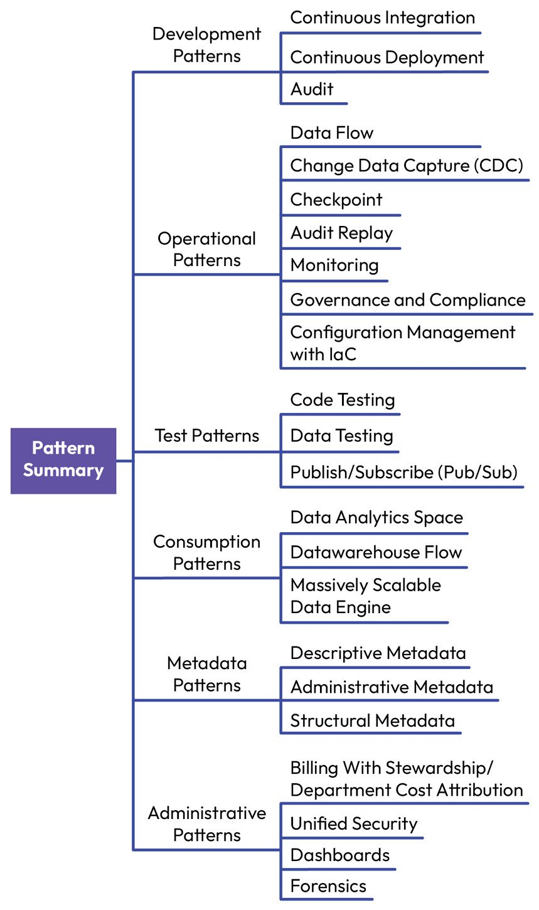
우리가 식별한 패턴들과 아키텍처를 공식화할 때 해결해야 할 문제들을 살펴보겠습니다. 이는 이후에 이어질 데이터 엔지니어링 설계를 위한 전제 조건입니다.
어떤 패턴이 필요하며 어떻게 명시되는가?
데이터 엔지니어로서 여러분은 프레임워크 청사진을 준수하는 반복 가능하고 - 운영상 재사용 가능하지는 않더라도 최소한 - 컴포넌트 통합 패턴 툴박스를 갖추기를 원할 것입니다. 이들은 아키텍처 프레임워크에 들어맞는 입증된 프리미티브(Primitive) 및 통합 패턴 세트에서 생성될 수 있습니다. 여러분은 바퀴를 계속해서 재발명하고 싶지 않을 것입니다. 바퀴가 둥글고 잘 작동한다는 것을 알고 있으니… 그냥 사용하십시오! 패턴이란 바퀴에 차축이 필요하고 차축은 다시 수레에 장착되어야 한다는 것입니다.
마찬가지로 데이터 엔지니어는 도구를 준비가 되었을 때 바로 집어 들어 적용할 수 있도록 정리해 두어야 합니다. 제가 과거에 사용했던 이러한 패턴들에 대해 검토해 볼 수 있도록 간단한 분류 체계를 만들었습니다. 이들은 테스트 우선, 시프트 레프트 테스팅 프레임워크에서 시작하여 운영 SLA에 대한 지원, 그리고 비즈니스 로직으로 이어집니다. 이는 마치 스테이크와 감자를 먹기 전에 완두콩을 먼저 먹는 것(Eat your peas)과 같습니다.
“’완두콩을 먹다(Eat our peas)’라는 문구는 역사적인 은유는 아닙니다. 그러나 CBS가 전한 맥락에 따르면, 오바마 미국 대통령은 국민들에게 힘들 수 있지만 자신들에게 유익한 일을 감내해야 한다고 말하고 있었습니다.”
- “’Eat our peas’는 무슨 뜻이며 어디서 유래했는가?” (https://english.stackexchange.com/questions/33935/what-does-eat-our-peas-mean-where-does-it-come-from)
실패가 발생했을 때 깔끔하게 처리되고 개발 디버깅 프로세스나 구현된 클라우드 파이프라인을 통해 데이터를 푸시하는 데 필요한 원활한 운영 중에 과도한 시간과 노력이 들지 않도록 쉬운 패턴을 반드시 먼저 최적화해야 합니다. 입력-처리-출력이라는 기존의 스트레이트 스루 처리 패러다임을 현대의 클라우드 컴퓨팅으로 전환하고 있으므로, 원활하게 작동하고 대규모로 성능을 발휘해야 하는 스레드, 큐, PaaS 및 SaaS 서비스를 갖추고 있습니다!
간단한 예로 작은 문제가 발생했다고 해서 몇 시간 동안 재처리하는 일이 없도록 오류를 복구할 수 있는 데이터 체크포인트를 구현하고자 할 것입니다. 이러한 접근 방식은 클라우드 제품과 함께 제공되지 않습니다. 패러다임이 누락된 경우가 많으며 잠재적으로 서드파티 도구 제품으로 구축하거나 구매해야 합니다. 클라우드 제공업체는 어떤 통합 프레임워크도 필수로 규정하지 않습니다. 그들은 서드파티 제공업체에 권한을 부여합니다. 서드파티 벤더 도구의 기능을 연구하고 여러분이 원하는 데이터 플랫폼의 프레임워크를 구성할 패턴 인벤토리를 개발하는 것이 필수적입니다. 통합할 필요가 없는 단일 프레임워크는 존재하지 않으며, 많은 프레임워크가 잘 통합되지도 않습니다!
이전 경험에 비추어 볼 때, 리테일 데이터 분석 환경의 아키텍처 솔루션 중 하나는 Azure 클라우드 서비스뿐만 아니라 매월 수십억 건의 리테일 트랜잭션을 지원하도록 확장되는 빅데이터 처리를 위한 데이터 플랫폼을 필요로 했습니다. 두 제공업체 모두 예상하지 못한 수준의 데이터 프로파일링 기능이 필요했습니다. 클라우드 벤더 컨설턴트들은 경청하고 솔루션을 제안했지만 궁극적으로 어느 쪽도 대규모로 요구되는 부하와 복잡성을 처리할 수 없었습니다. 데이터 프로파일링 기능이 필요했고 이로 인해 최종 사용자에게 가시적인 시스템적 데이터 품질 문제가 되기 전에 데이터 품질 문제에 선제적으로 대응하기 위한 새로운 결합형 결정론적 규칙 기반 및 머신러닝 기반 데이터 프로파일링 수집 프레임워크의 개발이 추진되었습니다. 이러한 데이터 프로파일링 요구를 지원하기 위해 Trifacta(현재의 Alteryx)가 선택되었습니다. 쓰레기가 들어가면 쓰레기가 나오기 마련이며 이는 결코 바람직하지 않습니다.
이를 위해 엔터프라이즈 애플리케이션 통합(EAI, Enterprise Application Integration) 프레임워크를 선택할 수 있습니다. 잘 알려진 세트 {https://packt-debp.link/KnFDWt}에서 정의된 바와 같이 선택할 수 있는 프레임워크가 많이 있습니다. 나열된 순서가 하나가 다른 것보다 우수함을 의미하지는 않습니다.
- Redwood Software의 ActiveBatch
- Microsoft의 Azure Integration Services
- Microsoft의 BizTalk
- Boomi의 Boomi AtomSphere Platform
- Celigo의 Celigo Integration Platform
- InterSystems의 Ensemble (레거시)
- Fiorano의 Fiorano Hybrid Integration Platform
- Flowgear의 Flowgear iPaaS platform
- Jitterbit의 Harmony
- IBM의 IBM App Connect
- IFTTT의 IFTTT
- Informatica의 Informatica Intelligent Data Management Cloud
- RELX (Adaptris)의 Interlok
- Magic Software의 Magic xpi Integration Platform
- Salesforce (MuleSoft)의 MuleSoft Anypoint Platform
- OpenLegacy의 OpenLegacy Hub
- Oracle의 Oracle Cloud Infrastructure Integration Services
- Oracle의 Oracle Service Bus
- SAP의 SAP Extension Suite
- SAP의 SAP Process Orchestration
- SEEBURGER의 SEEBURGER BIS
- KingswaySoft의 SSIS Integration Toolkit for Microsoft Dynamics 365
- SnapLogic의 The SnapLogic Intelligent Integration Platform
- TIBCO Software의 TIBCO BusinessWorks
- TIBCO Software의 TIBCO Cloud Integration
- UiPath의 UiPath Business Automation Platform
- Software AG의 webMethods Integration Platform
- Software AG의 webMethods.io Integration
- Workato의 Workato
- WSO2 API Manager
- Zapier의 Zapier
- ZigiWave의 ZigiOps
각각을 깊이 파고들면 일부는 트랜잭션에, 다른 일부는 보안, 메시지 재생, Pub/Sub에 중점을 두고 있으며 또 다른 일부는 API를 쉽게 구축할 수 있는 용이성에 중점을 두고 있음을 알 수 있습니다. 기능 및 기능 범주에 대한 목록은 끝없이 이어집니다. 매우 상이한 상호작용 패턴을 가진 이러한 다양하고 때로는 경쟁적인 플랫폼들을 어떻게 선택하고 통합할 수 있을까요? 필요한 접착제 제조업체의 주식을 가지고 있다면 구매 대 구축(Buy versus build)은 훌륭한 접근 방식입니다! 여러분에게 필요한 것은 다양한 유형의 접착제이며 이는 순식간에 클라우드 버전의 프랑켄슈타인 괴물을 만들어낼 수 있음을 깨닫게 될 것입니다.
여러분의 역할은 통합 붕괴를 영속화하는 것이 아니라 올바른 패턴으로 솔루션을 수렴시키는 것이어야 합니다. 이를 수행하는 동안 기능과 프레임워크의 적합성을 전달하고 개발 계획에서 목표 기능을 통합할 때 지속적인 프로세스를 보여주어야 합니다. 이는 두 가지 안티패턴에 의해 무너질 수 있는 신중한 균형입니다.
- 벤더가 여러분의 통합 문제를 해결해 줄 수 있다: 권한을 부여받고 이끌어간다면 여러분의 아키텍처와 엔지니어는 잘 전달된 아키텍처의 프레임워크를 준수하는 패턴을 개발할 수 있습니다.
- 벤더가 이전에 이 작업을 해본 적이 있으므로 신뢰할 수 있다: 아무도 여러분의 시스템을 구축해 본 적이 없습니다. 그렇지 않았다면 그냥 구매했을 것입니다! 만약 그들이 해보았다고 말했다면 그들은 여러분에게 거짓말을 한 것이며 계약 위반으로 법적으로 고소할 수 있다 하더라도 회복할 수 없습니다.
패턴 요약
우리의 모범 사례 솔루션에 가치가 있는 몇 가지 패턴 범주를 살펴보겠습니다.
- 개발 패턴
- 운영 패턴
- 테스트 패턴
- 소비 패턴
- 관리 패턴
솔루션에 이러한 패턴 범주가 필요하다는 영향력을 파악했다면 이제 각 패턴에 대한 자세한 설명으로 들어갈 준비가 된 것입니다.
개발 패턴
개발 패턴(Development Patterns)과 관련하여 다음 하위 섹션에서는 이 범주에 필요한 패턴의 종류를 지적합니다.
지속적 통합
지속적 통합(CI, Continuous Integration)은 허용 가능한 데이터 비교 상태로 코드의 회귀 테스트를 가능하게 하는 시프트 레프트 테스팅(SLT, Shift-Left Testing) 프로세스와의 통합을 통해 하위 호환성을 갖춘 변경 스트림으로서 시스템에 코드 변경 사항을 적용하는 방법입니다. 이러한 규칙 기반 테스트는 유휴 데이터의 무결성을 보존하고, 규칙 및 머신러닝(ML) 기반 평가 및 판단을 적용하면서 데이터 정확성에 대한 유연한 기준을 허용하며, 저장소에서 코드 및 데이터 변경 사항이 변경으로 릴리스될 때 정확성을 보고합니다.
지속적 배포
지속적 배포(CD, Continuous Deployment)는 하위 호환 또는 변환 방식으로 배포 시 코드 및 데이터 성공 기준을 시스템에 주입하는 방법입니다. 또한 콜드/아카이브(Glacial archive) 복구를 위해 감사 시스템에서 데이터 상태 번들과 함께 코드 번들을 캡처할 수 있도록 합니다.
감사
감사(Audit)는 CI/CD 프로세스에서 감사 추적(Audit trail)이 유지되도록 보장하고 수년에 걸쳐 일련의 코드 변경이 적용된 후 데이터 상태를 재현할 수 있도록 하는 방법입니다. 감사 레코드를 데이터 소스와 독립적으로 생성하고 이를 다운스트림 파이프라인 처리에서 100% 하위 호환되는 형태의 데이터로 사용하는 것이 현명할 수 있습니다. 이는 해당 감사 추적 데이터셋 패턴의 구문 및 시맨틱 형식에 많은 고민을 기울여야 함을 의미합니다.
운영 패턴
운영 패턴(Operational patterns)과 관련하여 다음 하위 섹션에서는 솔루션을 실행하고 관리하는 데 필요한 핵심 패턴 세트를 정의합니다.
데이터 흐름
데이터 흐름(Data flow)은 비즈니스 트랜잭션 수준에서 데이터의 흐름을 관리하고 논리적 데이터셋 전반에서 애플리케이션 트랜잭션 처리를 지원하기 위해 확장 및 재제출과 함께 우선순위가 지정된 큐잉을 구현하는 방법입니다.
변경 데이터 캡처
변경 데이터 캡처(CDC, Change-Data-Capture)는 다운스트림 구독자 또는 구독자 세트에 발행 기능을 갖춘 변경 스트림을 구현하는 방법입니다. 모드에는 대량 새로고침, 스트리밍 업데이트, 이전 특정 시점의 과거 데이터 상태로 재설정하는 기능이 포함됩니다.
체크포인트
체크포인트(Checkpoint)는 모두 비즈니스 프로세스 흐름에 맞춰 정렬된 적용(Apply), 롤백(Rollback), 재적용(Re-apply) 기능을 갖춘 트랜잭션 브래킷을 생성하는 방법입니다.
감사 재생
감사 재생(Audit replay)은 감사를 재생하여 7년, 20년, 50년 등 감사 기간으로 거슬러 올라가는 코드 및 데이터 변경 스트림 내의 특정 체크포인트에 도달하는 방법입니다.
모니터링
모니터링(Monitoring)은 합성 트랜잭션(Synthetic transaction)을 주입하고 비즈니스 프로세스 데이터가 시스템을 통해 흐를 때 이를 추적하는 방법입니다. 종종 나중에 이상 징후가 감지되었을 때 무슨 일이 일어났는지 파악하기에 충분한 추적이 가능하기를 바라며 너무 많은 것을 모니터링하곤 합니다. 이러한 원격 측정(Telemetry) 수집 기술은 낭비입니다! InsightFinder {https://packt-debp.link/BOcOcw}와 같은 머신러닝 기반 접근 방식을 사용해야만 이러한 방대한 로그를 제대로 파악할 수 있습니다. 저는 이러한 솔루션을 자체 구축하는 것을 권장하지 않습니다. 프로브에 대한 추적 레벨을 높일 수 있어야 하며 데이터 흐름의 원격 측정에서 엔드투엔드로 무슨 일이 일어나고 있는지 확인하기 위해 추적 데이터셋을 주입할 때 어느 단계에서든 조정된 추적 로직을 신속하게 주입할 수 있어야 합니다(단, 해당 추적이 켜진 후에만 가능). 클라우드의 탈중앙화된 PaaS 및 SaaS 서비스 호출 파이프라인에서 비기능적 버그가 발생하는 경우 그러한 과도한 수준의 추적이 필요하며 추적에 빅데이터 분석을 적용하고자 할 것입니다. 이러한 유형의 분석이 필요하다는 것을 알게 된다면 그 솔루션은 실패의 미끄러운 비탈길에 서 있는 것입니다. 엉성한 코딩과 아키텍처화된 데이터 프레임워크의 부재가 그 원인일 것이며 이 여정을 바로잡는 것은 결코 만만한 일이 아닙니다.
거버넌스 및 규정 준수
거버넌스 및 규정 준수(Governance and compliance)를 통해 규정 준수를 위한 복잡한 다중 계정 모범 사례 기능을 구현할 수 있습니다. 다양한 산업의 규제 대상 고객은 리스크를 관리하고 서비스 관계를 다루는 맞춤형 비즈니스 보안 제어를 제공하면서 리소스를 관리하기 위한 시의적절하고 비용 효율적인 솔루션을 찾는 데 어려움을 겪고 있습니다. 탄탄한 프레임워크가 없다면 규제 대상 서비스의 가치 실현 시간(TTV, Time-To-Value)이 지연되어 비즈니스 제품 제공에 부정적인 영향을 미칠 수 있습니다. AWS Control Tower {https://packt-debp.link/YM4yZd}와 같은 IT 규정 준수 프레임워크뿐만 아니라 AWS 서비스별 그룹 제어 및 NIST {https://packt-debp.link/UKAeDz} 800-53 {https://packt-debp.link/xj6q0j}, CIS AWS Benchmark {https://packt-debp.link/neQ7Of}, PCI SSC {https://packt-debp.link/hqxwFy}와 같은 기타 규정 준수 프레임워크의 제어 목표가 존재합니다. 이를 통해 규제 대상 산업에서 고객의 규정 준수 목표를 충족하기 위한 통제가 가능해집니다. 다음은 몇 가지 모범 사례입니다.
- 다양한 통제를 지속적으로 모니터링하고 테스트하기 위한 선제적 접근 방식 채택
- 모든 동작 범주 전반에 걸쳐 제어를 활성화하여 심층 방어(Defense in depth) 접근 방식 채택
- 예방 통제보다 탐지 통제를 먼저 적용
- 비준수 리소스의 탐지 및 수정 자동화
- 클라우드 또는 서드파티 도구 기능을 확장하도록 조직의 통제 항목 생성
- 비프로덕션 조직 단위(OU, Organizational Unit)에서 통제 테스트
- 워크로드와 OU를 이해하고 평가하여 올바른 통제 적용
- AWS Control Tower의 동작 및 제어 메커니즘과 같은 도구의 기능을 온전히 이해
- 간소화된 거버넌스 프로세스 구현 및 TTV 향상을 향한 진척도 측정
코드형 인프라를 통한 구성 관리
코드형 인프라(IaC, Infrastructure as Code)를 통한 구성 관리(Configuration management)는 메타데이터로 유지 관리되고 3단계 아키텍처 정의(개념적, 논리적, 물리적)를 준수하는 구조화된 데이터로부터 인프라를 프로비저닝하는 방법입니다.
- 이 패턴은 잘 알려진 단일 벤더 제품(ServiceNow {https://packt-debp.link/flUyAV})과 혼동될 수 있지만 주의해야 합니다. 훌륭한 제품이기는 하지만 클라우드 구성 항목(CI, Configured Item)과 통합하는 데 비용이 많이 들 수 있습니다. 단일 벤더 만능 해결책(Silver bullet)은 존재하지 않는데, IaC가 클라우드 전용 도구(AWS CloudFormation 또는 Azure Resource Manager(ARM) 템플릿)로 표현되기 때문입니다. CMDB 출력을 클라우드 제공업체의 IaC에 맞추어 변환해야 할 것입니다.
- Terraform {https://packt-debp.link/3FiIQF} 및 Pulumi {https://packt-debp.link/UvGaGB}와 같은 도구는 어느 정도 도움을 주지만 네이티브 클라우드 제공업체나 보안 툴링과의 완전한 통합에는 미치지 못합니다. CMDB 없이 클라우드 IaC 프로비저닝을 균일하게 관리하려면 수많은 땀과 눈물, 스크립팅을 쏟아야 할 것입니다. CMDB를 선택하더라도 엔지니어링 팀이 클라우드 네이티브 IaC 도구를 사용하여 “단지 IT를 실행(Just does IT)”하기 전에 모든 IaC 조각을 결합하는 작업을 신중하게 아키텍처링해야 합니다. 복잡하고 동적으로 확장 가능한 클라우드 프로비저닝의 경우 클라우드 IT 시스템의 민첩성이 최종 상태로 변모함에 따라 많은 IaC 템플릿을 다시 작업해야 할 것입니다. 이는 프로세스를 쉽게 만들고자 했던 클라우드 IaC의 목적을 무색하게 만듭니다. 구조화된 IaC CMDB 접근 방식이 없다면 IaC는 심각한 약점이 되어 많은 문제를 일으킬 것입니다.
- 보안 통합은 CMDB 및 IaC의 핵심 고려 사항입니다. Puppet {https://packt-debp.link/FYCwCh}용 Hiera {https://packt-debp.link/hXbCMv}가 없다면 네이티브 클라우드 제공 IaC 템플릿을 사용할 때 다른 통합 키와 토큰이 평문으로 노출됩니다.
- 우리는 Puppet, Ansible, Chef {https://packt-debp.link/VmUK8F} 사이에서 발생할 툴링 전쟁을 피하고자 합니다. IT 운영 인력은 도구 변경에 대한 논의조차 종교적으로 광신적이고 편파적일 수 있으므로 이는 매우 어려운 논의가 될 수 있습니다. 스타트업이 종종 IaC를 스크립팅하고 도구를 피하는(그리고 Terraform이나 Pulumi를 사용하는) 이유가 바로 여기에 있습니다. 스타트업의 DevOps/애자일 개발 프로세스에서는 개발자가 곧 운영 인력이기 때문입니다. 그러나 자리를 잡은 조직에서는 운영 인력이 (규정 준수 이유로) 개발자가 인프라 환경에서 완전히 손을 떼기를 원할 것입니다!
테스트 패턴
다음 하위 섹션에서는 테스트 패턴과 관련하여 솔루션의 일부가 되어야 하는 테스트 패턴의 유형을 지적합니다.
코드 테스트
코드 테스트(Code testing)는 기능적 및 비기능적 요구사항에 대한 다양한 회귀 테스트를 구현하는 방법입니다. 이러한 테스트는 프론트엔드의 로직뿐만 아니라 백엔드 서비스를 위한 것입니다. 10장에서는 테스트를 훨씬 더 깊이 다룰 것이며 품질에 대한 초점을 높이 평가하게 될 것입니다. 코드 테스트와 관련하여 기본적인 테스트 구성을 위해 모델-뷰-컨트롤러(MVC, Model-View-Controller) 패턴을 살펴보는 것을 권장합니다. 대부분의 데이터 시스템에는 서비스되는 데이터를 위한 모델(Model), 해당 데이터의 뷰(View, 프레젠테이션), 애플리케이션 전반의 데이터 서비스/트랜잭션을 위한 비즈니스 로직 컨트롤러(Controller)가 있습니다. M, V, C의 세 가지 모두 테스트가 필요합니다. 테스트 드라이버 애플리케이션 역시 Selenium과 같은 테스트 도구로 구동될 수 있는 MVC 패턴 애플리케이션이어야 합니다.
소프트웨어 시스템 회귀 테스트는 개발 중 및 시스템 릴리스 후 변경이 이루어질 때 반복적인 확장성, 스트레스, SLA 및 성능 테스트도 고려해야 합니다. 이러한 비기능적 테스트는 복잡한 비즈니스 데이터 흐름의 일부로 구현될 때 복잡한 PaaS 서비스 통합으로 인해 엔드투엔드 취약성을 드러내는 클라우드 솔루션에 매우 중요합니다. 시간이 지나도 올바르게 유지되도록 디버깅하고 검증해야 하는 모든 함수, 구성 및 잠재적 병목 현상을 생각해 보십시오.
데이터 테스트
데이터 테스트(Data testing)는 유휴 데이터의 품질과 해당 데이터의 트렌드 정확성을 평가하는 방법입니다. 데이터 테스트는 코드 테스트와 연계되어야 하며 이상 징후는 추적에 대한 포렌식 분석을 통해 해결됩니다. 데이터 트렌드 테스트는 분석을 수행한 후 수행되는 일종의 데이터 프로파일링입니다. 이는 이러한 데이터 트렌드 분석 테스트를 적용하기 위해 때때로 잠재적으로 부정확하게 큐레이션된 데이터셋을 데이터를 통해 밀어 넣어야 함을 의미합니다. 그런 다음 트렌드 이상이 감지되면 해당 데이터셋을 마지막으로 알려진 양호한 체크포인트로 롤백해야 할 수도 있습니다. 체크포인트 처리가 존재하여 이러한 롤백을 자동화된 방식으로 수행할 수 있다는 점을 알아두면 좋습니다. 또한 로직이 배포되어 예상대로 실행 중인지 알 수 있도록 유휴 데이터 및 이동 중인 데이터(리니지)를 테스트해야 합니다. 추적에 오류가 표시되지 않는다고 해서 누군가 시스템을 켰다고 결코 당연하게 여겨서는 안 됩니다. 이는 운영자의 실수로 인해 코드 조각이 배포되지 않거나 활성화되지 않을 수 있는 클라우드에서 더욱 분명하게 드러납니다. 데이터 테스트에는 두 가지 유형이 있습니다.
- 유휴 상태 테스트(At rest testing): 체크포인트 처리 단계가 완료되었을 때 유휴 데이터의 정확성을 평가하는 방법.
- 이동 중 테스트(In transit testing): 리니지 변환을 거치는 데이터의 상태를 평가하는 방법. 여기에는 데이터 중복 제거, 체크포인트에서 이전에 알려진 양호한 체크포인트로의 롤백, 결과가 정확하고 포렌식 분석에 리니지 추적을 사용할 수 있는 상태에서 여러 변환 단계에 걸쳐 데이터를 적용하는 기능이 포함됩니다. 때로는 변환이 너무 많아 이 기능이 없으면 뒤돌아보기가 모호해질 수 있습니다.
소비 패턴
소비 패턴(Consumption patterns), 즉 사용자/데이터 소비자가 인사이트를 수확하기 위해 큐레이션된 정보에 접근하는 방식은 성능 및 확장성 요구사항으로 인해 고유한 패턴을 필요로 합니다. 자세히 살펴보겠습니다.
발행/구독
발행/구독(Pub/Sub)은 배포 권한, 과금, 공정 사용 정책 시행, 보안 및 암호화를 모두 스트림 모드에서 지원하는 기능을 갖추고 최종 데이터셋의 부가가치 발행을 지원하는 표준적인 방법입니다. 또한 스트리밍의 모든 이점과 훨씬 더 큰 단위의 전송 단위를 갖춘 체크포인트 기반 발행의 대량 작업도 지원합니다.
부가 기능으로는 향후 다시 전송될 경우 업데이트된 경우에만 유효하지만 논리적으로 동일한 데이터셋을 재전송하는 기능, 구독된 데이터셋의 대량 새로고침, 코드 또는 데이터 수정 후 체크포인트 시점의 증분 업데이트, 요청 또는 발신자의 필요에 따라 데이터가 재전송될 때의 변경 사항 감사/인벤토리, 계약상의 이유 및 업계 공정성을 위해 여러 수신자가 동시에 데이터를 수신해야 하는 경우의 데이터 팬아웃(Fan out) 등이 있습니다.
데이터 분석 공간
데이터 분석 공간(Data analytics spaces)은 데이터셋을 발행할 수 있고 어댑터를 통해 마스터 데이터셋과 전체 또는 일부가 동기화되어 유지되는 설정 영역입니다. 이는 Pub/Sub 패턴을 기반으로 구축됩니다.
- 소비 사용자가 자신에게 부여된 방대한 데이터 세트가 전송될 때까지 항상 기다릴 수 있는 것은 아닙니다. 종종 그들은 필요할 때 준비되어 있기를 요구합니다. 이를 위해 LiveRamp {https://packt-debp.link/KSgatB}와 같은 프로그램을 통해 수행할 수 있는 외부 벤더 피드를 소비할 수 있는 소비 가능한 데이터 마트 형식을 생성해야 합니다. 데이터 형식은 다양하며 클라우드 제공업체는 이러한 분석 공간 생성을 위해 Azure Synapse와 결합된 Azure의 Power BI Premium과 같은 솔루션을 지원합니다.
- 소비자는 실시간 분석 결과에서 매우 뛰어난 성능을 원할 수 있습니다. 여기서 Redis Enterprise와 GridGain(Apache Ignite)이 지원을 제공할 수 있습니다.
- 다른 이들은 SQL 접근 기능을 갖춘 실시간 인메모리 성능을 원할 수 있으며 이는 ClickHouse와 StarRocks가 제공할 수 있습니다. 또 다른 이들은 Snowflake 및 Rockset과 같은 클라우드 호스팅 솔루션을 원할 수 있습니다. 그러나 이러한 결정을 내릴 때는 TCO를 반드시 고려해야 합니다.
분석을 위한 솔루션을 구축할 때는 분석 사용 사례를 고려하는 것이 매우 중요합니다. 요약 롤업이 있거나 없는 가법적 및 비가법적 계산, 광범위한 지표, 측정값 전반에 걸친 실행을 위한 성능과 확장은 필수적인 고려 사항입니다.
데이터 웨어하우스 흐름
데이터 웨어하우스 흐름(Data warehouse flow)은 웨어하우스와 분석 샌드박스 간을 동기화하는 클라우드 네이티브 방식입니다. 이 샌드박스는 분석 중인 데이터셋의 범위를 지정하기 위해 백엔드 시스템에 의해 설정되는 운영 분석 공간입니다. 다음과 같은 경우 웨어하우스를 동기화된 상태로 유지해야 합니다.
- 데이터 웨어하우스에서 분석 공간을 채우기 위해 분석 공간으로 및 분석 공간으로부터(예: Microsoft Azure Synapse Link). 이와 함께 비용을 소비자에게 귀속시키고 백엔드 시스템의 개발 실행/관리 비용의 일부로 해당 비용을 흡수하지 않아야 하는 필요성이 수반됩니다.
- 데이터 웨어하우스에서 분석가의 사용 사례를 지원하는 분석 공간으로 빅데이터 영역을 채우기 위해 빅데이터 레이크 또는 캐시된 레이크로 및 그로부터(예: Databricks Delta Lake). 이 역시 비용 귀속이 수반됩니다.
이질적인 기술 전반에 걸쳐 일련의 데이터 항목에 대해 두 개의 데이터 저장소를 물리적으로 동기화된 상태로 유지하는 것은 쉬운 일이 아니며 특히 이러한 서드파티 데이터 스토리지 시스템이 폐쇄적이고 유연하지 않을 때 더욱 그렇습니다.
대규모 확장 가능한 데이터 엔진
대규모 확장 가능한 데이터 엔진(Massively scalable data engine)은 클라우드 네이티브 PaaS 또는 SaaS 서비스를 사용하여 로직의 실행을 확장하여 데이터를 처리하는 방법입니다. 이를 통해 하루 수십억 건의 트윗과 같은 거대한 IoT 유형 유입, 대규모 기기 수집, 실행 중인 시스템의 운영 원격 측정, 또는 기타 엑사바이트 수준의 수집 목표를 처리할 수 있습니다.
사례로는 웹 사용 활동 스트림 데이터 수집을 위한 사용자의 AWS Kinesis 활용이 있습니다. 클라우드 서비스를 다루면서 배운 교훈은 프레임워크의 반복 가능한 패턴에 담겨야 합니다. 서비스의 기능적 및 확장 한계에서 발생하는 상황을 고려하지 않고 이러한 서비스에 맞추어 단순히 코딩할 수는 없습니다. 필요할 때 오류 흐름이 실행되어야 하고 스로틀이 적용되어야 하며 확장 규칙이 구성되어야 하는데, 이는 데이터 손실을 유발할 수 있으며 실제로 유발합니다! 그렇습니다, 그것은 버그이지만 개념 증명(PoC)이 끝나고 많은 야근을 한 후에야 프로그래머가 알게 될 클라우드 서비스의 기이한 동작으로 인해 발생하는 운영상의 버그입니다. 이는 매우 중요한 문제이며 시행착오를 통해서만 발견됩니다. 일단 발견되면 다음 사람을 위해 더 쉽게 만들 수 있는 패턴을 구축할 수 있습니다. 설계한 솔루션에 10가지 유형의 바퀴가 있는 것을 원치 않을 것입니다. 각 개발자/엔지니어는 이러한 문제를 서로 다른 방식으로 해결할 것이며 머리를 맞대고 아키텍처 솔루션의 프레임워크 패턴을 발견할 때까지는 누구도 완전하게 해결하지 못할 것입니다.
메타데이터 패턴
메타데이터(Metadata)는 데이터의 구문(Syntax)과 시맨틱(Semantics)뿐만 아니라 데이터 팩토리 및 데이터 파이프라인을 통과하는 데이터의 리니지(Lineage)를 설명하는 방법입니다. 이는 데이터에 대한 현재의 이해와 사용에 필수적입니다. 세 가지 중요한 메타데이터 {https://packt-debp.link/1xV0UJ} 유형이 있습니다.
- 기술 메타데이터(Descriptive)
- 관리 메타데이터(Administrative)
- 구조 메타데이터(Structural)
이들은 다음 몇 개 섹션에서 논의될 것입니다.
기술 메타데이터
기술 메타데이터(Descriptive metadata)는 다양한 데이터셋 정보의 시맨틱 발견, 식별 및 선택을 가능하게 합니다. 기술 메타데이터는 시맨틱 모델로 공식화되어 객체 관계를 강제할 수도 있고(구조 메타데이터 참조), 단순히 책의 저자, 제목 또는 주제 영역을 기반으로 느슨하게 레이블이 지정될 수도 있습니다. 이러한 유형의 메타데이터는 최종 사용자의 발견 목적으로 데이터 사전이나 카탈로그에 배치됩니다.
관리 메타데이터
관리 메타데이터(Administrative metadata)는 아키텍처화된 많은 논리적 및 물리적 구성 요소를 가로지르는 데이터 팩토리를 통한 데이터 리니지를 캡처합니다. 데이터 여정의 맥락은 IT 전문가뿐만 아니라 비즈니스와도 연관될 수 있어야 하므로 아키텍처의 3단계에서 아키텍처 엔티티를 참조하는 메타데이터를 캡처해야 합니다. 또한 자격 및 사용 권한뿐만 아니라 공정 사용에 대한 계약을 포함하는 데이터 컨텍스트도 캡처되어야 합니다. 이 메타데이터는 감사, 거버넌스 및 규정 준수 사용 사례의 기반이 되는 기업의 데이터 정책 준수를 지원할 때 필수적입니다.
구조 메타데이터
구조 메타데이터(Structural metadata)는 머신 처리에 필요하며 챕터가 책 내의 섹션의 일부라는 사실과 같이 데이터셋의 다양한 객체 간의 맥락과 시맨틱 관계를 설명합니다. 주목할 점은 명확해야 하는 시계열 데이터 메타데이터 구조에 대한 시사점입니다. 시간이 지남에 따라 데이터의 유효성이 상실되거나 요약으로 축소되어야 오래된 데이터셋을 되돌아볼 때 과거의 렌즈를 통해 올바른 의미를 렌더링할 수 있습니다. 구조 메타데이터를 통해 머신러닝, 알고리즘, 분석 알고리즘 및 빅데이터 소프트웨어가 메타데이터가 설명하는 데이터셋을 오용하지 않도록 할 수 있습니다.
관리 패턴
솔루션의 관리는 너무 중요해서 마지막에 구현되도록 남겨둘 수 없습니다. 관리 기능에는 과금을 위한 기능이 포함됩니다. 이는 부서별 비용 정산(Chargeback)을 지원해야 하는 필요성과 같이 대규모 조직에서 IT 솔루션을 운영하는 실질적인 측면을 지원합니다. 마찬가지로 통합된 보안 정책을 수립하고 관리 시스템을 시행하면서 사용자를 관리하고 데이터 자산을 보호해야 할 필요성이 있습니다. 또한 경영 정보 시스템의 요구를 지원하기 위해 운영 대시보드뿐만 아니라 분석가 대시보드도 생성되어야 합니다.
책임 관리/부서별 비용 귀속을 통한 과금
책임 관리/부서별 비용 귀속을 통한 과금(Billing with stewardship/department cost attribution)은 데이터 권한, 자격, 공정 사용, 남용 탐지 및 비용 할당 보고를 시행합니다.
- 클라우드 데이터 팩토리 솔루션에서 종종 발견되는 한 가지 문제는 클라우드 확장이 시스템 처리량에 영향을 미칠 뿐만 아니라 IT 비용에도 부정적인 영향을 미친다는 점입니다.
- 비용을 고려한 확장 최적화에는 IT 운영, 스토리지 및 관리를 위한 별도의 예산을 가진 경쟁 비즈니스가 소유할 수 있는 데이터셋의 PaaS 및 SaaS 공유(멀티 테넌트) 처리가 필요합니다.
- 세분화된 비용 보고 할당이 필요합니다. 그렇지 않으면 소규모 데이터셋 소유자가 대규모 처리 데이터셋의 비용을 부당하게 지불하게 됩니다.
비용을 데이터 소유자에게 귀속시키면서 신중하게 비용을 관리하는 것이 필수적입니다. 이는 솔루션의 실용적인 측면이며 비용을 관리하는 데 필요합니다. 일부 클라우드 서비스는 비용 귀속 목표를 지원하기 위한 사용량 보고 기능이 내장되어 있지 않은 멀티 테넌트 공유 모드로 실행되어야 하므로 이를 최적화하기가 어렵습니다.
통합 보안
통합 보안(Unified security)은 처음부터 끝까지 데이터셋의 맥락을 보존하는 엔드투엔드 보안 기능을 제공하는 방법입니다.
각 클라우드 제공업체와 서드파티 벤더가 이러한 기능을 서로 다르게 구성하고 때로는 호환되지 않게 구성하므로, 재사용을 위한 견고한 패턴을 형성하려면 보안 패턴이 명확하고 공개되며 운영상 관리되어야 합니다. 참고: 제로 트러스트(Zero Trust) {https://packt-debp.link/pHrHFR}는 훌륭합니다! 그러나 유지해야 하는 성능 SLA가 있는 대규모 시스템에서는 구현하기가 문제가 될 수 있습니다. 따라서 내린 선택에 대해 실질적인 타협을 해야 합니다. 또한 행 수준 접근을 지원하기 위해 사용자당 또는 그룹 수준 접근으로 구성된 데이터에 대해 역할과 연결된 사용자를 위한 데이터 보안을 보존해야 합니다(RDBMS 행 수준 권한과 클라우드 보안 모델 데이터 권한의 차이점에 대한 지식 참조).
보안과 프라이버시는 클라우드, 특히 하이브리드 컴퓨팅 환경에서 해결해야 할 거대한 문제입니다. 또한 증가하는 클라우드 복잡성으로 인해 발생하는 증가하는 위협에 대응하여 끊임없이 변화하는 분야이기도 합니다. 프레임워크의 기능을 구성하고 도구를 선택하는 것이 필수적입니다. 예를 들어 AWS Control Tower {https://packt-debp.link/1wftYL}를 살펴보고 잠재적인 경쟁 도구를 평가하여 비즈니스에 필요한 기능을 먼저 선택할 수 있습니다. 많은 도구가 클라우드 제공업체의 제품에 종속되도록 만든다는 점을 인지해야 합니다. 또한 구매가 불가능한 부분은 구축할 준비를 해야 합니다. 몇 가지 경쟁 제품을 살펴보겠습니다.
- Microsoft Defender for Cloud는 클라우드 규정 준수 및 워크로드 보호를 제공합니다. 하이브리드 환경에서 보안 및 위협 관리를 제공하여 보안 문제를 가시적으로 예방, 탐지 및 대응합니다.
- Google Cloud Platform Security Overview {https://packt-debp.link/H9wjZX}의 기능은 클라우드 워크로드 보호입니다. 이는 보안 네트워킹 및 소프트웨어 개발 분야의 IT 전문가가 GCP 인프라에 배포할 수 있습니다.
- Wiz의 기능은 클라우드 규정 준수 및 워크로드 보호입니다. 컨테이너 및 Kubernetes 보안 지원과 함께 다음을 결합한 클라우드 네이티브 애플리케이션 보호 플랫폼(CNAPP, Cloud-Native Application Protection Platform) {https://packt-debp.link/j7yFJO} 취약성 관리 도구입니다.
- 클라우드 보안 태세 관리(CSPM, Cloud Security Posture Management) {https://packt-debp.link/ArEGdy}
- Kubernetes 보안 태세 관리(KSPM, Kubernetes Security Posture Management) {https://packt-debp.link/VvkpQo}
- 클라우드 워크로드 보호 플랫폼(CWPP, Cloud Workload Protection Platform) {https://packt-debp.link/gYeQe4}
- IaC 스캐닝 {https://packt-debp.link/Ap3Ktn}
- 클라우드 인프라 자격 관리(CIEM, Cloud Infrastructure Entitlement Management) {https://packt-debp.link/pENyny}
- 데이터 보안 태세 관리(DSPM, Data Security Posture Management) {https://packt-debp.link/WgtLbS}
- 클라우드 서비스 네트워크 보안(CSNS, Cloud Service Network Security) {https://packt-debp.link/DA6a3m}
- Vanta의 기능은 클라우드 규정 준수이며 데이터 안전을 위한 보안을 제공하기 위해 다양한 서비스에 신뢰 계층을 제공합니다.
- Google Cloud Security Command Center의 기능은 클라우드 워크로드 보호입니다. 이를 통해 보안 팀은 비즈니스에 부정적인 영향을 미치기 전에 위협 평가를 위한 데이터를 선제적으로 수집할 수 있습니다. 또한 완화를 위한 애플리케이션 위험뿐만 아니라 클라우드 리소스 및 일반적인 상태에 대한 인사이트를 제공합니다.
- Drata {https://packt-debp.link/wo7TTl}의 기능은 클라우드 규정 준수 보안 및 규정 준수 자동화 플랫폼 역할을 하는 것입니다.
대시보드
대시보드(Dashboards)를 사용하면 시스템의 상태와 데이터 팩토리 {https://packt-debp.link/NlaUNc}의 데이터 흐름을 통해 조달되는 데이터의 상태를 제어할 수 있습니다. 대시보드는 다음과 같은 이점을 제공합니다.
- 측정할 수 있는 것은 개선될 수 있습니다! 데이터 팩토리에서 데이터 흐름의 상태를 시각화할 수 있는 것은 합의된 SLA를 유지하는 데 매우 중요합니다.
- 대시보드 지표를 통해 분석적 이상 징후가 품질에 영향을 미치고 소비자에게 관찰되기 전에 자동화된 선제적 대응이 가능합니다.
- 비즈니스 프로세스 관리(BPM, Business Process Management) 기법을 적용할 수 있습니다. Datadog {https://packt-debp.link/A8oizk}, CloudHealth {https://packt-debp.link/MG3Pmv}, CloudCheckr {https://packt-debp.link/eGaQ4o}와 같은 서드파티 도구뿐만 아니라 네이티브 PaaS 클라우드 제공업체 툴링도 솔루션의 일부이지만 일부에 불과합니다.
모범 사례는 구축했다면 운전대와 계기판(대시보드)이 필요하며 그렇지 않다면 엔진 시동을 걸어서는 안 된다는 것입니다!
포렌식
포렌식(Forensics)을 통해 개발자와 데이터 도메인 전문가(SME, Subject Matter Expert)는 데이터에 접근하고, 접근 범위를 감사하며, 시스템에 데이터 수정기(Data corrector)를 작성할 수 있습니다.
“잘못될 수 있는 일은 결국 잘못되기 마련이며… 나에게도 일어날 것이다!” 이것은 제가 살아가는 좌우명이며 수년간 저에게 큰 도움이 되었습니다. 데이터에는 오류가 발생하기 마련이며 수정이 필요합니다. 데이터를 직접 건드리지 마십시오. 수정기를 구축하고 데이터 픽스의 일부로 등록하십시오. 코드에 패치가 적용되는 것처럼 데이터도 마찬가지입니다. 수정 시 시스템의 일부로 감사되고 기록되어야 함을 기억하십시오.
또한 포렌식 분석을 위해, 그리고 수정기 코드를 구축하거나 데이터 파이프라인의 코드를 조정하기 전에 앱 외부에서 데이터에 접근할 수 있어야 합니다. 이 접근 권한은 포렌식 세션을 위해 부여되고 제거되어야 합니다. 이 기능은 엔지니어가 문제 수정을 위해 조사해야 할 때 많은 시간을 절약해 줄 것입니다.
요약
이 장에서는 미래 지향적인 데이터 엔지니어링 솔루션을 구축하기 위한 엔지니어링 여정을 시작할 때 명확한 비전과 미션을 갖는 것이 얼마나 중요한지 배웠습니다. 이러한 필요성은 수년에 걸쳐 우리가 직접 접했던 몇 가지 사례를 통해 가장 잘 설명되었으며 이 장에 포함되었습니다.
이 주제에 대한 조직의 생각을 공식화한 후 생성되는 비전 및 미션 선언문 결과물 외에도, 팀이 아키텍처를 개발할 때 지침이 될 명확한 원칙을 개발해야 할 필요성을 접했습니다. 그 아키텍처는 데이터 플랫폼을 위한 프레임워크를 형성할 것입니다. 이러한 원칙은 수많은 결정을 내릴 때 핵심적인 지침이 될 것입니다. 이러한 구조화되고 체계적인 접근 방식은 설계 과제가 제시되거나 기술적 문제가 발생할 때 내려진 모든 선택을 설명하는 데 도움이 될 것입니다.
마지막으로 통합 패턴을 구성하는 반복 가능하고 운영상 재사용 가능한 컴포넌트 툴박스의 필요성을 접했습니다. 이러한 패턴은 설계 프로세스 후반에 아키텍처 청사진으로 구체화될 것입니다.
선택을 지배하는 원칙은 매우 중요합니다. 데이터 엔지니어링 프로세스의 일환으로 여러분이 생성할 비전과 미션을 기반으로 구축해 나갈 다음 장의 주제가 될 것입니다.
4장. 아키텍처 원칙
지금까지 우리는 조직의 미션, 비전, 모범 사례, 패턴 및 일반적인 기업 원칙을 수립하는 것의 중요성에 대해 다루었습니다. 하지만 미래 지향적(future-proof)인 데이터 엔지니어링 솔루션을 개발할 때 앞으로 다루어야 할 아키텍처 관련 구체적인 원칙들이 존재합니다. 이러한 원칙들은 솔루션이 미래에도 효과를 유지하도록 돕는 근본적인 기업 및 IT 가치를 담고 있습니다. 도구, 벤더, 다양한 클라우드 서비스는 새로운 머신 인텔리전스 역량을 수용하며 계속 변화할 것입니다.
이 장에서는 원칙을 발전시키기 위한 기반을 제공합니다. 또한 미래 지향적인 데이터 팩토리를 구축하는 작업과 관련된 수많은 원칙들을 다룹니다. 마지막으로, 시간의 시험을 견뎌낼 수 있는 아키텍처를 구성할 때 직면하게 될 도전 과제들을 폭넓게 이해하는 데 필요한 풍부한 참고 자료를 제공합니다.
먼저 기술 환경에 대한 개요와 비즈니스가 리서치 기관의 조사 결과를 활용하여 프로젝트를 빠르게 시작하는 방법부터 살펴보겠습니다. 이러한 비학술적 출처는 제공하는 정보에 대해 높은 대가를 받으며 그 정보는 종종 무리(herd)가 어디로 움직이는지를 규정합니다. 여기서 무리라는 표현을 사용하는 이유는, 동종 업계를 선도하고자 하는 이들이야말로 과도한 비용이나 완전한 실패 없이 최첨단 기술을 발전시킬 수 있는 자격, 지식, 경험을 갖춘 사람들이기 때문입니다.
아키텍처 원칙 개요
다음에 설명할 원칙들은 전문가들에게 미래의 성공을 결정짓는 현명한 선택을 지금 내릴 수 있도록 나침반 역할을 해줄 것입니다. 다음과 같은 리서치 기관들이 훌륭한 가이드 출처가 될 수 있습니다.
- Gartner {https://packt-debp.link/lXFfHo}
- Forrester {https://packt-debp.link/gEVSOD}
- Bain & Company {https://packt-debp.link/pAnKim}
- Frost & Sullivan {https://packt-debp.link/JrUuR0}
- International Data Corporation (IDC) {https://packt-debp.link/D4PrBA}
- 451 Research(현재 S&P 소유) {https://packt-debp.link/KF6rkc}
- Economist Intelligence Unit (EIU) {https://packt-debp.link/zy1quO}
- Experts Exchange {https://packt-debp.link/GvVItH}
- Omdia(구 Ovum) {https://packt-debp.link/ZhkiPT}
- Nucleus Research {https://packt-debp.link/Wsg8SG}
- GigaOM {https://packt-debp.link/q1GLgK}
- Lexis Nexis Research {https://packt-debp.link/30GcOM}
- Olive Tree Insights {https://packt-debp.link/WX88AP}
- Aberdeen Strategy & Research {https://packt-debp.link/NQJFAu}
- Outsell {https://packt-debp.link/mmlLot}
- CEB(현재 Gartner 소유) {https://packt-debp.link/3mfY5h}
앞서 언급한 모든 기관은 현재의 기술 여정에서 거친 파도를 헤쳐 나가려는 전문가들에게 가치 있는 최신 인사이트를 제공합니다. 때로는 다양한 하이프 사이클(hype cycle)의 등락을 타며 미래를 개척하기도 합니다. 하지만 더 나은 방법이 있을까요? 손에 잡히지 않는 미래를 최소한의 비용으로 명확하고 알기 쉽게 소통할 수 있을까요?
데이터 팩토리의 데이터 파이프라인 개발을 포함한 모든 개발 여정은 준비 과정과 무엇을 챙겨야 할지 아는 것에서 시작됩니다. 그리고 선택은 원칙에 따라 이루어집니다. 단순히 무리를 따르는 것만으로는 원하는 곳에 도달할 수 없으며 단지 무리가 향하는 곳으로만 갈 뿐입니다. 이러한 원칙들은 여러분의 아키텍처 설계 선택을 지배하는 헌법이 될 것입니다. 또한 반드시 발생하기 마련인 논쟁을 해결하고 대화의 중심을 잡아주는 닻이 되어줄 것입니다. 가장 성공적인 인물, 기업, 프로젝트는 자신이 원하는 바에 대한 명확한 지침을 갖고 있으며 무의미한 소음(또는 떠벌이들)이 성공을 가로막지 못하게 하는 이들입니다.
앞으로 나아가는 과정에서 흔들리지 않으려면 조직의 IT 원칙을 수립하고 아키텍처 및 이로부터 파생되는 데이터 엔지니어링 설계를 개발할 때 이러한 원칙에 단단히 기반을 두어야 합니다. 이 장에 나오는 내용을 바탕으로 원칙을 세울 때는 실용적인 태도를 취해야 합니다. 각 원칙은 후속 개발 작업에 막대한 영향을 미치므로 원칙의 문구 선택에 신중을 기하십시오. 기본 입문서(primer)부터 시작하고 자신만의 원칙을 공식화할 때 모든 사람이 동일한 수준의 지식을 가지고 있다고 가정하지 마십시오. 여러분의 구성원, 이해관계자, 엔지니어들은 수년간 특정 벤더의 말(Kool-Aid)에 현혹되어 살아왔을 수 있으며 자신의 제한된 지식을 위협하는 기술에 대해서는 제대로 대화하지 못할 수도 있습니다. 그들이 방어적인 태도를 보일 것임을 예상하십시오! 이어지는 섹션들은 여러분의 솔루션에 대한 동의를 얻는 데 필요한 지식으로 다른 사람들의 눈높이를 맞추기 위한(level-set) 기반을 제공하기 위해 작성되었습니다. 주제를 깊이 파고들 수 있도록 많은 링크가 제공됩니다. 혁신에는 열려 있고 품질에 대한 타협, 취약한 설계, 근시안적 시각, 낭비에는 단호히 닫혀 있다면 시간의 시험을 이겨내는 명확한 원칙이 세워질 것입니다.
아키텍처 기반
현대적인 데이터 엔지니어링 솔루션을 개발할 때는 성공에 필요한 기반 기술에 대해 눈높이를 맞춰야 합니다. 다루어야 할 수많은 주제와 파괴적인 기술 사이클이 존재합니다. 그중 하나의 기술 영역이 바로 데이터 레이크(data lake)와 데이터 메시(data mesh)의 개념입니다.
데이터 레이크, 메시, 패브릭
그렇다면 현대적인 데이터 엔지니어링 솔루션을 배포할 때 이해해야 할 최신 데이터 구조의 예로는 어떤 것이 있을까요? 2011년 제임스 딕슨(James Dixon)이 처음 제시한 데이터 레이크 {https://packt-debp.link/PoLMQS} {https://packt-debp.link/oO3q9r} 개념을 생각해 보십시오. 데이터 레이크는 원시 포맷(예: 객체 블롭/파일)으로 저장된 데이터의 시스템/저장소입니다. 그렇다면 2011년 이후 어떤 일이 일어났을까요? 데이터 레이크는 온갖 데이터의 쓰레기 매립지가 되어버렸습니다! 안타깝게도 시간이 흐르면서 데이터 레이크는 가치 상실을 초래했습니다. 시계열에 민감한 메타데이터 저장소에 컨텍스트가 캡처되지 않으면서 데이터를 제대로 이해하는 방법 또한 사라졌습니다. 이 모든 것은 순식간에 데이터 늪(data swamp)으로 전락할 수 있습니다.
데이터 레이크에서 또 어떤 문제가 발생할 수 있을까요? 데이터 레이크가 제대로 정리되지 않은 데이터를 보유하거나 필요한 데이터 거버넌스를 갖춘 올바른 메타데이터 없이 너무 많은 데이터를 보관할 경우, 중요한 데이터를 빠르게 찾을 수 없게(non-discoverable) 됩니다. 클라우드 벤더의 서비스형 플랫폼(PaaS) 전반에 설탕처럼 흩뿌려진 분리된 알고리즘에 시맨틱이 맡겨지면서 정보 검색 시간, 인사이트 발견, 그리고 분석적 오도(머신러닝(ML) 할루시네이션 포함)가 증가했습니다.
시간이 지남에 따라 새로 추가되는 데이터는 처리 규칙이 표류(drift)하면서 활용 가치를 잃어버립니다! 데이터 여정은 저널링되지 않으며 소프트웨어 및 데이터 라이프사이클은 더 나쁘게도 그럴듯해 보이는 잘못된 정보로 데이터 레이크를 오염시킵니다. 데이터는 유용성을 잃기 시작하고 측정 가능한 투자 수익률(ROI) 없이 보관 비용만 발생시키기 시작합니다. 서드파티 벤더와 클라우드 제공업체는 캐싱과 데이터 매핑을 늘려 데이터 레이크의 성능을 높이고 확장성을 개선함으로써 문제를 해결하려 하지만 진정한 요구 사항의 핵심을 놓칠 수 있습니다. 진정한 요구 사항이란 바로 장기적으로 더 관련성 높은 데이터를 제공하는 것입니다.
데이터 레이크 안에서는 데이터의 시간적 컨텍스트(time context)에 대한 적절한 표현조차 소실될 수 있으며 그 결과 정체된 데이터 늪이 발생합니다. 이는 반드시 피해야 합니다. 데이터 레이크는 훌륭한 아이디어지만 모든 아이디어가 그렇듯 시간이 흘러도 데이터 레이크의 유용성이 유지되도록 중요한 메타데이터, 거버넌스, 정규화 변환, 그리고 수많은 시맨틱 컨텍스트를 데이터에 제공하는 방법에 대한 고민과 함께 구축되어야 합니다. 데이터 레이크를 넘어 데이터 메시 또는 마이크로소프트가 데이터 패브릭 청사진(data fabric blueprint)이라 부르는 상위 개념으로 나아가야 할 필요성은 자막 데가니(Zhamak Dehghani)의 저작 {https://packt-debp.link/MJdwA6}에서 명확히 드러납니다.
참고
데이터 레이크는 더 이상 전체 아키텍처의 중심 요소가 아닙니다. 데이터 메시를 위한 패턴, 개선된 추출, 변환, 로드(ETL) 파이프라인, 그리고 데이터셋 클래스 패턴을 위한 분석 유스케이스를 만들어야 합니다.
자막 데가니에 따르면 데이터 메시는 네 가지 기둥(pillars)을 갖습니다.
- 도메인 소유권(Domain ownership)
- 제품으로서의 데이터(Data as a product)
- 셀프서브 데이터 플랫폼(Self-serve data platform)
- 연합형 컴퓨팅 거버넌스(Federated computational governance)
자막 데가니의 저작은 데이터 레이크 개념이 자리 잡고 조직들이 데이터 늪 문제를 겪기 시작한 시점에 나왔기 때문에 읽어볼 가치가 충분합니다. 인공지능(AI) 및 분석 커뮤니티가 지적하는 바는, 제품으로서의 데이터 및 셀프서브 개념에서 한 걸음 더 나아가 데이터 메시 청사진의 연합 및 도메인 소유권 측면을 구현할 상품화되고 수익성 있는 소프트웨어 및 데이터 서비스를 제공해야 할 시급한 필요성이 있다는 것입니다. 마이크로소프트는 이러한 이점을 얻기 위해 필연적으로 수반되는 클라우드 벤더 종속(lock-in)과 함께 까다로운 작업을 더 쉽게 만들어주는 여러 클라우드 전용 서비스를 추가하기 때문에 이를 데이터 패브릭이라고 부릅니다. 요약하자면, 데이터 메시 개념은 미래의 방향이지만 구현을 단순한 이론적 논의 이상으로 만들어주는 데이터 서비스 및 소프트웨어 서비스 프레임워크가 뒷받침될 때에만 유효합니다. 마이크로소프트의 아키텍트들도 이 분야가 계속 진화 중인 영역임을 인정합니다. 빠른 변화를 예상하되, 원칙에 굳건히 기반을 두어야 합니다.
데이터 불변성
데이터 레이크 데이터셋은 명확한 가치를 지닌 영역(zone)들로 격리되어야 합니다. 앞선 장에서는 로우(raw), 브론즈(bronze), 실버(silver), 골드(gold), 그리고 컨슈머블(consumable, 소비) 영역이 제안되었습니다. 클라우드 기술 벤더들은 이 모든 것을 단일 물리적 데이터 레이크에 배치할 수 있는 솔루션을 아직 구축하지 못했습니다. 따라서 데이터 팩토리가 구축한 데이터 흐름이 필요하고 리니지(lineage)가 추적되는 변환을 거쳐 유사하거나 강화된 데이터셋을 마이그레이션하는 작업이 생성되어야 합니다. 이는 모놀리식 데이터 레이크 패턴을 구상했을 때보다 운영 비용이 더 높아질 것임을 의미합니다. 향후 데이터 패브릭 서비스가 성숙해질 때까지는 이러한 상황이 지속될 것입니다.
카탈로그화할 수 있는 정규화된 데이터셋의 가장 원시적인 형태부터 시작하여 로우(Raw) 영역을 채웁니다. 예를 들어 리테일 분석 시스템을 구축할 때 데이터가 너무 가공되지 않은 상태(too raw)라면 전혀 쓸모가 없다는 점이 명확해졌습니다. 먼저 정규화되지 않으면 분석적으로 소비할 수 없으며 재처리하는 데 너무 많은 비용이 발생하기 때문입니다. 수집된 데이터는 먼저 쓰레기 데이터가 아님이 검증되기 전까지는 유용하지 않습니다. 예를 들어 인입 FTP 서버의 기술적 결함으로 인해 동일한 원시 데이터셋이 논리적으로 재전송된 것(즉, 타임스탬프만 다르고 내용은 같은 데이터)을 그대로 보관하고 싶지는 않을 것입니다. 롤업된 데이터 총계가 두 배로 늘어나기 때문입니다. 또한 POS(point-of-sale) 마감 요약 파일에 포함된 리테일 그레이 마켓(암시장/비공식 유통) 판매 항목이 적격 판매 수치에 포함되는 것도 원치 않을 것입니다. 마찬가지로 전력 공급 지역의 정전으로 인해 해당 지역 매장들의 POS 요약 데이터셋이 누락되어 전체 매장 요약 지표가 크게 왜곡되는 일도 없어야 합니다. 원시 데이터는 원시 상태여야 하지만 유용하게 활용하려면 지나치게 원시적이어서는 안 됩니다.
데이터 레이크의 불변 데이터는 탐색에 사용될 수 있어야 합니다. 로우 데이터 영역의 데이터는 수락 및 정규화된 후 잠금(lock down)되어야 합니다. 도착 후 다양한 이상 탐지 프로파일 검사와 리니지 변환의 대상이 됩니다. 데이터셋은 트렌드와 같은 원시 2차 프로파일 데이터를 생성합니다. 이는 조정될 수 있는 파생 데이터입니다. 또한 시계열 태깅 및 요약 데이터는 새로운 데이터를 생성해야 하며 로우 영역의 불변 원시 데이터를 수정해서는 안 됩니다. 그렇다면 로우 영역에는 원시 데이터만 포함될까요? 기본 데이터(primitive data) 자체뿐만 아니라 분석에 유용할 수 있는 형태의 시맨틱 컨텍스트를 갖춘, 기본 데이터에서 파생된 데이터도 포함된다고 볼 수 있습니다. 로우 영역 데이터를 활용하는 최초의 분석 유스케이스는 바로 데이터 프로파일링 유스케이스입니다.
데이터 레이크의 불변 데이터는 분석 용도로 사용될 수 있어야 합니다. 과거에는 트리팩타(Trifacta) {https://packt-debp.link/UJPS9u}가 후속 용도를 위한 로우 영역 데이터를 생성하는 데 매우 유용하고 확장성 높은 도구였습니다. 특히 실버 및 골드 영역으로 공급되는 데이터 파이프라인에 진입하기 전 브론즈 영역 데이터를 큐레이션하는 데 탁월했습니다. 데이터 파이프라인에서 변환이 발생할 때마다 데이터 팩토리의 메타데이터 리니지 추적 기능이 적용되어 오류의 포렌식 발견을 위한 리포팅 및 역방향 추적성을 지원합니다. 원본 데이터 엔티티, 변환 내용 및 그 결과에 대한 데이터 카탈로그화는 모두 분석을 위해 보존되어야 합니다. 이 접근법을 통해 데이터는 변환되지만 불변의 원본 소스는 그대로 보존됩니다.
데이터 레이크의 소스 도메인 데이터는 검색/발견 가능해야 합니다. 제안된 청사진 아키텍처에서는 데이터, 데이터 컨텍스트 및 데이터 파이프라인 리니지가 모두 보존되므로 청사진을 구현하는 프레임워크는 카탈로그 및 기록된 리니지에서 데이터를 검색할 수 있는 강력한 기능을 갖추어야 합니다. 품질 지표가 달성될 때까지 로우 데이터 영역의 콘텐츠를 반복 개선할 수 있도록 데이터 카탈로그 리플렉션(reflection) 및 리니지 관측성(observability) 패턴이 필요합니다. 데이터를 영역 간 변환에 투입할 때 데이터와 해당 서비스 컴포넌트의 품질을 보존하는 것은 필수적입니다.
서드파티 도구, 클라우드 서비스형 플랫폼(PaaS), 프레임워크 통합
데이터 레이크 도구 선택 및 클라우드 벤더 PaaS는 아키텍처 프레임워크와 모순되어서는 안 됩니다. 영역 간 마이그레이션을 위한 데이터 준비성(data readiness)을 확보하려면 데이터 품질 관리(DQM) 도구 선택을 신중하게 통합해야 하며 설정된 품질 지표가 달성될 때까지 실시간 반복 처리를 완벽하게 지원해야 합니다. 품질 지표는 데이터가 파이프라인에서 다음 단계로 전파될 수 있도록 허용하는 게이팅 기능(gating function)입니다. 클라우드 벤더와 서드파티 DQM 제공업체는 데이터 팩토리가 설계한 솔루션의 이 단계에서 쉽게 통합되지 않으므로 통합 과정의 골칫거리에 대비해야 합니다. 조직에 적합한 아키텍처를 구축하고 데이터 품질에 대해서는 절대 타협하지 마십시오. 불량 데이터가 영역 간 전송 게이트를 한 번 통과하면 진실로 취급되며 이는 하류 영역에 호스팅된 시스템의 분석 인사이트에 치명적인 영향을 미칠 수 있습니다. 적어도 이러한 오류가 감지되었을 때 리니지 및 카탈로그화 기능을 통해 데이터셋을 재처리 및 게재를 위해 다시 제출할 수 있습니다. 조직의 데이터 릴리스 전략을 지원하는 합리적인 릴리스 세트를 구성하기 위해 이러한 스트림 집계 중 얼마나 많은 양을 포함할지 결정해야 합니다.
참고
데이터 메시의 기둥: 제품으로서의 데이터는 그럴듯하게 들리지만 소프트웨어가 릴리스되는 것처럼 버전, 품질, 이력, 시계열, 브랜치 등을 갖추어 릴리스되어야 합니다.
데이터 메시 청사진은 데이터에 대한 도메인 주도 소유권을 요구합니다. 다양한 비즈니스 팀이 도메인을 구성하며 이들이 해당 영역의 데이터에 대한 책임을 집니다. 모든 분석 데이터는 이러한 동일한 비즈니스 도메인을 중심으로 구성됩니다.
데이터 메시 원칙
데이터 메시는 도메인 주도 데이터 소유권을 정의합니다. 소프트웨어와 시스템이 도메인에 맞춘 팀 경계 내에서 개발되는 것과 마찬가지로 데이터 역시 영역 내에서 그렇게 구성되어야 합니다. 분산 아키텍처, 분석 데이터 및 운영 데이터의 소유권은 중앙 IT 팀이 아닌 비즈니스 도메인 팀에 귀속됩니다. 데이터를 영역별로 호스팅하는 모범 사례에 따라, 도메인 소유자는 데이터 카탈로그에 카탈로그화된 각 영역 데이터의 일부를 소유하게 되며 데이터 리니지 추적 경로 역시 도메인 팀이 소유합니다.
데이터 메시는 데이터를 제품으로 정의합니다. 데이터 메시 청사진은 데이터, 메타데이터 및 분석 데이터를 제품으로 정의하며 비즈니스 제품이라는 점을 염두에 두고 큐레이션 및 판매되어야 합니다. 데이터 메시 데이터셋의 소비자는 데이터가 원래 큐레이션되었을 당시의 프로그램이나 사람이 아닐 수 있습니다. 비즈니스 도메인 팀은 다른 공용 서비스 API와 마찬가지로 고품질의 데이터, 메타데이터, 분석 및 서비스 계약을 제공합니다. 데이터 메시에서 제품으로서의 데이터에 대해 논할 내용은 훨씬 더 많습니다. 하지만 핵심은 특정 비용에 대한 제품의 가치와 서비스이며 이는 계약으로서 일정 기간 유지됩니다. 데이터에는 보증 및 품질 보증(warranties)이 수반되며 심지어 가치 부가도 허용됩니다.
데이터 메시 데이터는 셀프서비스에 적합합니다. 전통적인 IT 시스템에서 데이터를 위한 서비스 래퍼(wrapper)는 셀프서비스 준비 완료의 특성을 충족하도록 해줍니다. 데이터 메시 청사진을 사용하면 데이터를 명확하게 이해할 수 있습니다.
데이터 메시는 셀프서브 데이터 플랫폼을 정의합니다. 데이터 인프라 설계에 셀프서비스 데이터 및 분석 플랫폼 사고방식을 적용할 수 있습니다. 데이터 엔지니어링 플랫폼 팀은 모든 도메인에 걸쳐 데이터 제품을 구축, 실행 및 유지 관리할 수 있는 기능, 도구, 시스템을 제공합니다. 핵심 데이터 플랫폼 팀은 각 비즈니스 도메인 팀이 데이터 제품을 큐레이션하는 데 필요한 패턴을 제공할 것입니다. 데이터 플레인 인프라, 데이터 카탈로그를 설명하는 데이터, 데이터 파이프라인에서 큐레이션된 리니지, 가치 부가 분석/측정값/요인/지표 및 설치 가능한 가치 부가 코드 세그먼트를 통해 셀프서비스 데이터 개념이 실현될 수 있습니다. 문제는 전체 프레임워크에 맞추어 이 원칙을 구현하는 데 필요한 패턴에 부합하도록 조정할 수 있는 서드파티 도구가 과연 존재하는가 하는 점입니다.
도메인 주도 데이터 소유권, 제품으로서의 데이터, 셀프서비스 데이터를 위한 데이터 메시 청사진은 연합형 거버넌스(federated governance)의 필요성을 이끌어냅니다. 중앙 거버넌스 그룹이 거버넌스 관행을 수립하고 실제 거버넌스는 연합 방식으로 수행됨으로써 전사적 규칙과 산업 규정을 준수할 수 있습니다. 연합형 거버넌스 표준 준수는 자율적인 신뢰(honor basis)를 기반으로 제공되지만 데이터 계약을 유지하기 위해서는 표준 리포팅을 통한 검증이 필수적입니다.
데이터 메시는 연합형 컴퓨팅 거버넌스를 정의합니다. 연합형 데이터 거버넌스를 위한 통합 정책은 길드(guild) 방식으로 생성됩니다. 도메인 소유자는 권한을 위임받은 구성원을 중앙 길드에 지정합니다. 모든 데이터 표준 및 문서 세트는 연합 거버넌스 그룹(길드로도 알려짐)에 의해 게시되고 갱신됩니다. 데이터 보안, 개인정보 보호, 계약, 서비스 수준, 데이터 메시 청사진의 법적 측면에 특별한 주의를 기울입니다. 메타데이터 관리에는 데이터셋 파이프라인을 위한 데이터 리니지 브랜치가 포함되며 이를 통해 영역 내 및 영역 간 데이터셋 리니지의 병렬 브랜치를 유지할 수 있습니다. 제품으로서의 데이터가 지닌 이러한 측면 덕분에 릴리스 준비가 완료될 때까지 데이터와 메타데이터를 반복적으로 큐레이션할 수 있습니다. 또한 연합형 거버넌스를 통해 다운스트림 소비자가 데이터 권리를 보존할 수 있습니다. 사용자가 열 이름을 변경하고 작은 값을 수정한 후 해당 데이터를 다시 전송하는 일이 너무나 흔하게 발생합니다. 이러한 작업을 수행할 수 있는 권한은 저장 데이터(data at rest)의 거버넌스 메타데이터에 명시되어 큐레이션된 데이터셋에 대한 이러한 무단 가치 부가 변조를 금지해야 합니다. 마찬가지로 데이터 재배포 권한과 데이터 소유권 귀속도 데이터셋 메타데이터의 연합형 거버넌스 정책에 명확히 명시되어야 합니다.
데이터 메시 메타데이터
메타데이터는 데이터이므로 데이터셋 메타데이터는 퍼스트 파티 데이터(first party data)로 취급되어야 합니다! 따라서 저장 데이터(모든 파이프라인 단계)의 데이터에 연결되고 다른 메타데이터와 시맨틱하게 연결되거나, 큐레이션된 모든 데이터셋에 대한 데이터 리니지 추적 경로로 정의, 버전 관리 및 그룹화되는 변환에 연결됩니다. 저장 데이터 메타데이터나 리니지 메타데이터의 병렬 버전은 시스템에 존재할 수 있으며 실제로 존재합니다. 이전 버전을 얼마나 유지할 것인가는 각 연합 도메인 소유자와 관련된 거버넌스 문제입니다. 저장 및 리니지 메타데이터를 갖춘 가치 부가 데이터셋은 퍼스트 파티 데이터로 취급됩니다. 메타데이터는 저장 데이터 및 파이프라인 변환 중인 데이터(전이 데이터(transitioning data)라고도 함)에 대해 정의되며 팩토리 파이프라인에서 큐레이션된 데이터셋에 파이프라인이 작업을 수행할 당시 변환을 실행한 시스템의 운영 컨텍스트를 포렌식 뷰어에게 제공하기 위해 파이프라인을 구현하는 시스템에 존재합니다. 모든 가치 부가 데이터 또는 리니지 작업 역시 팩토리 파이프라인에 가치 있는 기여를 가능하게 하는 데이터 메시 청사진의 메커니즘을 반영해야 합니다. 모든 클래스의 데이터는 딕셔너리에 카탈로그화됩니다. 데이터 메시의 데이터 카탈로그는 솔루션의 모든 데이터와 메타데이터에 대한 리플렉션을 가능하게 하는 논리적 데이터 딕셔너리입니다. 검색이 가능하고, 변경 세트(changeset)를 포함하며, 셀프서비스 분석, 데이터 품질 평가 및 포렌식 데이터 분석 유스케이스를 위해 운영화(operationalize)될 수 있습니다. 또한 메타데이터와 함께 오래된 데이터를 만료(age out)시키는 데도 사용될 수 있습니다. 만료된 데이터셋, 가치를 잃은 데이터셋, 또는 데이터셋 버전의 다중성으로 인해 보관 비용이 너무 많이 드는 데이터셋을 유지하는 것은 좋지 않습니다. 데이터 보존 정책은 연합형 거버넌스 기능과 결합되어 데이터 라이프사이클 규칙을 주도합니다. 규칙 자체도 메타데이터로 표현되어 데이터셋과 함께 보존됩니다. 또한 데이터 카탈로그는 데이터 메시의 재해 복구(DR) 및 아카이빙 활동을 주도합니다. 데이터는 제품이므로, 데이터는 독립적으로 존재하지 않고 항상 함께 뭉치기 때문에 소비자에게 변경 사항을 스트리밍하고 이를 지능적인 릴리스 세트로 그룹화하는 방법을 고려해야 합니다. 데이터에는 중력(gravity)이 있으며, 데이터가 많을수록 질량 효과(mass effect)가 발생하고, 이는 릴리스 세트 내 데이터셋에 대한 암묵적 의미(implicit meaning)의 생성으로 이어진다고 할 수 있습니다. 하나 이상의 데이터 파이프라인에서 생성된 릴리스 가능한 데이터셋은 시행 가능한 데이터 메시의 데이터 계약을 수립합니다.
데이터 메시의 데이터 시맨틱스
팀 버너스리(Tim Berners-Lee) {https://packt-debp.link/DBIXta}는 시맨틱 웹(semantic web)의 필요성에 대한 인식을 높였습니다. 이후 이어진 논의는 웹 문서가 페이지의 시맨틱(의미)에 대한 공식적인 정의와 함께 렌더링되어야 한다는 이러한 새로운 인식에 집중되었습니다. 이 모든 것은 그가 1989년 월드 와이드 웹(World Wide Web) 개념을 발명했을 때 일어났습니다. CERN {https://packt-debp.link/NgzAKQ}에 재직 중이던 그는 물리학자들이 과학적 토론을 위해 모여 공통 관심 분야를 논의하는 모습을 관찰하면서 시맨틱 웹 개념을 발전시켰습니다. 수년에 걸쳐 이 주제는 다양한 형태로 거듭 제기되어 왔습니다. 데이터는 자명(self-explanatory)하고 모호하지 않으며 명확해야 합니다.
팀 버너스리
버너스리는 모든 것이 다른 모든 것과 연결될 수 있는 탈중앙화된 형태를 강조했습니다. 이러한 형태는 수학적으로 그래프 또는 웹입니다. 물론 이는 전 지구적(global) 규모로 설계되었습니다.
1990년 HTML 표준 {https://packt-debp.link/BB77OC}이 만들어졌고 1994년 팀 버너스리는 런던에 오픈 데이터 연구소(Open Data Institute, ODI) {https://packt-debp.link/kInTo5}를 설립했습니다. 버너스리가 바라본 시맨틱 웹의 궁극적인 포부는 컴퓨터가 우리를 대신하여 정보를 더 잘 처리할 수 있도록 하는 것입니다. 그는 시맨틱 웹에서 시맨틱이라는 단어가 기계가 직접 및 간접적으로 처리할 수 있는 데이터의 웹을 의미한다고 제안합니다 {https://packt-debp.link/bC8ErQ}.
미래 지향적인 시스템을 구축하려는 엔지니어라면 이러한 통찰의 탁월함을 결코 놓쳐서는 안 됩니다. 월드 와이드 웹의 데이터에 존재하는 인류 지능의 총합에 대해, 그것이 잘못 이해되거나, 컨텍스트를 보존하기 위해 연결되지 않거나, 격차와 누락으로 가득 차 있다면 그에 관한 인텔리전스를 구축할 수 없습니다. 시맨틱 표현이 없는 데이터의 웹은 본질을 놓치고 있는 것입니다. 현재까지 시맨틱 웹의 비전은 아직 온전히 실현되지 못했습니다. 우리는 여전히 대규모의 중앙 집중식 정보 저장소에 얽매여 있습니다. 우리는 안전한 데이터 서비스를 제공하기 위해 비즈니스 담당자들이 데이터 주변에 래핑한 웹사이트 로직에 갇혀 있습니다. 실용적인 사고를 가진 데이터 및 소프트웨어 엔지니어에게 시맨틱 웹은 유토피아적인 꿈에 불과합니다.
시맨틱 웹의 기반은 웹 페이지에 주석(annotation)을 달기 위해 필요한 새로운 표준 세트입니다. 구조화된 XML(또는 RDF)은 페이지 렌더링에 아무런 영향을 미치지 않습니다. 이러한 메타데이터 구조는 사람이 시각적, 암묵적, 추론적으로 파악할 수 있는 페이지의 의미를 소프트웨어가 읽어내어 수집할 수 있게 해줍니다. 모든 실용적인 엔지니어링 접근 방식에서는 요구 사항에 맞춰 코딩하거나 솔루션을 단순화하는 경향이 있습니다. 당장의 요구 사항을 충족하는 것 이상으로 구축하지는 않습니다. 웹 페이지용 기계 판독 가능한 페이지 시맨틱은 아직 제대로 만들어지지 않았을 수 있으며 따라서 이를 사용할 수 있다 하더라도 많은 외부 엔티티가 이를 활용하지는 않을 것입니다. 설령 그러한 수준의 정보를 사용할 수 있다 해도 이를 공개적으로 노출함으로써 비즈니스가 위험에 처할 수도 있습니다. 시맨틱 웹 지원 페이지를 개발하는 것은 비용이 많이 들고, 소비자에게 유용하지 않을 수 있으며, 심지어 위험을 초래할 수도 있음을 알 수 있습니다.
월드 와이드 웹을 개발할 때도 동일한 논쟁이 존재했지만 결국 구축되었습니다. 핵심은 협업에 얽혀 있는 암묵적이고 직접적인 가치가 존재한다는 점이었습니다. 하지만 비용이 들었고 세상에 공개해야(put it out there) 했습니다! 그렇다고 모든 데이터를 거저 내주어야 한다는 뜻은 아니며 데이터에 대해 스마트(smart)해져야 한다는 의미일 뿐입니다.
스마트 데이터란 바로 공유될 수 있고 소비 시 컨텍스트화되지 못하거나 의미를 수반하지 못한다는 이유로 오용되지 않는 데이터를 말합니다. 릴리스된 데이터셋에서 큐레이션된 데이터가 이러한 올바른 의미를 갖도록 보장하는 것이 옳습니다. 메타데이터가 핵심이지만, 앞서 지적했듯이 실용적인 소프트웨어 엔지니어는 데이터 엔지니어의 지시를 쉽게 따르지 않으며, 마찬가지로 지식 엔지니어(knowledge engineer)의 지시도 따르지 않을 것입니다. 데이터 엔지니어가 지식 엔지니어의 신념을 받아들일 때, 팀 버너스리가 구상했던 구조화된 메타데이터 솔루션이 더 폭넓게 수용될 것입니다.
이전 세대 기술인 머신러닝 패턴 매칭, 딥러닝(DL) 또는 예측 능력보다 최근의 생성형 인공지능(AI) 발전은 적절한 데이터 엔지니어링의 필요성을 부각시키고 시맨틱 웹 개념을 앞으로 이끌 것입니다. 그것이 2012년의 XML/RDF/OWL 2 {https://packt-debp.link/MvV5CH} 표준일까요? 어쩌면 그럴 수도 있습니다.
지식 기반(knowledge base)으로서 운영 온톨로지를 개발하는 것은 OpenAI, ChatGPT 및 관련 생성형 솔루션에서 마주치는 생성형 AI의 할루시네이션(환각) 문제 {https://packt-debp.link/vjX44A}를 해결하는 데 매우 유용했습니다. 데이터를 정보로 기계 처리하여 핵심 인사이트를 얻는 것이 IT 산업의 미래 상태에서 핵심 역량임을 우리는 알고 있습니다. 이 기술은 인류의 생산성을 훨씬 더 높여줄 것입니다. 그러나 과거의 실용적인 소프트웨어 엔지니어링 결정에 의해 강제된 현재의 데이터 구성 방식과, 클라우드 제공업체들이 이러한 솔루션을 쉽게 소비 가능한 플랫폼 서비스로 고착화시킴으로써 발목을 잡고 있습니다. 이는 장단점이 있는데, 조직의 아키텍처 선택이 가져올 파급 효과를 깊이 생각하지 않는 이들에 의해 막다른 골목(dead-end) 아키텍처가 사용되기 때문입니다. 클라우드 제공업체는 고객이 오늘 원하는 것을 제공하려는 건전한 욕구에 의해 움직이며 고객의 미래 요구 사항까지 항상 신경 쓰지는 않습니다. 이는 데이터 엔지니어의 개발 성공에도 큰 걸림돌이 되는데, 미래 관점에서는 전혀 말이 되지 않는 방식으로 IT를 구현하도록 요구받기 때문입니다. 클라우드 파이프라인 구현에 필요한 복잡성과 오늘날 제공되는 메타데이터 표현의 거대한 공백으로 인한 엔드투엔드(종단 간) 명확한 관측성의 부재를 생각해 보십시오.
그렇다면 우리는 어떻게 나아가야 할까요? 아키텍트와 데이터 엔지니어는 무엇이 가능한지 보면서도 비전을 실행하기 위해 솔루션의 모든 측면을 직접 구축할 수는 없습니다. 미국 최초의 양산차인 모델 T를 만들 당시 헨리 포드(Henry Ford)의 다음 인용문을 읽어볼 수 있습니다.
“나는 대중을 위한 자동차를 만들 것입니다. 가족이 타기에 충분히 크면서도 개인이 운전하고 관리하기에 충분히 작을 것입니다. 현대 공학이 고안할 수 있는 가장 단순한 설계에 따라, 고용할 수 있는 최고의 인재들이 최고의 재료로 만들 것입니다. 하지만 가격이 매우 저렴하여 알맞은 급여를 받는 사람이라면 누구나 한 대를 소유할 수 있고 하나님의 위대한 대자연 속에서 가족과 함께 즐거운 시간을 보내는 축복을 누릴 수 있을 것입니다.”
조립 라인은 1901년 랜섬 E. 올즈(Ransom E. Olds)가 올즈모빌 커브드 대시(Oldsmobile Curved Dash)를 출시하면서 발명했지만 포드의 엔지니어들은 모델 T를 위해 많은 효율적인 혁신을 이루어냈습니다. 포드의 비전은 노동자와 엔지니어가 각 자동차를 처음부터 수작업으로 만들지 않고 라인에서 조립할 수 있도록 요구했습니다.
따라서 앞선 포드의 사례에서 얻을 수 있는 핵심 교훈은 그의 성공 패턴을 따르는 일반적인 지침에 집중됩니다.
- 데이터 큐레이션 파이프라인을 조립 라인 방식으로 구축하고, 결합 가능한 컴포넌트를 구매하며, 전체를 통합하십시오.
- 비전과 미션이 결코 타협되지 않도록 하십시오.
- 데이터 품질을 희생하지 마십시오!
기억하십시오. 포드는 모델 T를 출시하기 전에 먼저 모델 A부터 모델 S까지 개발했습니다. 지원 발판(scaffolding)을 구축하는 데 시간을 투자하고 파이프라인 데이터 흐름의 다음 반복 작업에서 이를 완전히 철거하거나 재사용할 준비를 하십시오.
좋습니다, 비유는 이쯤 해두겠습니다! 데이터 메시에서 데이터 파이프라인이 올바르게 작동하도록 만들기 위해 우리가 반드시 갖추어야 할 데이터 팩토리 조립 컴포넌트는 무엇일까요? 이를 살펴보겠습니다.
- 지식 그래프(Knowledge graph) {https://packt-debp.link/M8lcwd}: 도메인 모델의 공식 정의에 부합하는 온톨로지입니다.
- 지식 기반(Knowledge base) {https://packt-debp.link/rOuDFy}: 지식 그래프에 의해 정의된 운영화된 온톨로지입니다.
- 시맨틱 검증(Semantic validation): 수집된 데이터가 지식 기반에 올바르게 통합되도록 이끄는 검증입니다.
- 데이터 리니지(Data lineage): 릴리스 및 소비 전 데이터 파이프라인을 통과하는 데이터셋의 리니지 시맨틱입니다.
- 고성능 및 확장 가능한 데이터 저장소(Performant and scalable data store): 인메모리부터 콜드(glacier) 액세스 계약에 이르는 클라우드 스토리지 클래스입니다.
- 데이터 계약 검증(Data contract validation): 솔루션의 올바른 소프트웨어 기능뿐만 아니라 데이터의 리니지와 품질을 관측(observe)하는 역량입니다.
위 목록을 통해 데이터 파이프라인 조립을 위한 이러한 핵심 조립 솔루션 컴포넌트의 구체적인 선택 프로세스를 더 깊이 살펴볼 수 있습니다. 매우 중요한 점은 표준화된 후 측정되지 않으면 그 자체로 정의하기 어려운 ’품질’에 집중하는 것입니다.
그렇다면 품질 데이터란 무엇을 의미할까요? 제가 응용수학을 전공하던 시절을 떠올려 보면, 어떤 항목이 참이고, 항상 참이며, 결코 틀리지 않을 때 정확하다고 합니다.
수집된 데이터가 올바른지 확인하는 방법은 이를 검사하고, 단언문(assertion)을 작성하며, 수많은 테스트를 통해 오류가 발견되지 않으면 충분히 좋은 것이겠죠? 정답은 “아닙니다!”입니다. 데이터는 정확해야 하며 이는 로드되는 시점에 데이터의 접점(contact)에서 검사될 수 있는 단언문과 연결되어야 함을 의미합니다.
데이터에 테스트를 던질 필요가 없습니다. 데이터가 스스로에게 테스트를 던져 컨텍스트 제약 조건을 위반하는 방식으로 데이터가 적용되는 경우 프로그램에 시맨틱 오류가 발생했음을 알려야 합니다. 리테일 환경에서 주방 가전제품의 속성 필드에 신발의 품목 ID(item ID)가 들어가는 상황을 상상해 보십시오. 완전히 미친 짓입니다!
오늘날 우리는 종종 품목 ID 내에 영숫자 문자로 의미를 인코딩합니다. 인코딩된 시맨틱 의미로 오버로딩함으로써 순수한 숫자형 품목 ID라는 의도를 남용합니다. 도메인 내 데이터(즉, 지식)의 시맨틱에는 수백 가지 제약 조건이 존재하며 이는 데이터의 관련 메타데이터에 성문화되어야 합니다. 시맨틱 메타데이터는 지식 기반에 정의되어 데이터가 목적에 부합하고 정확하도록 만들어 줍니다! 저장 데이터(data at rest)에 대한 메타데이터를 정의하려면 시맨틱 데이터 검증이 필요합니다. 이 메타데이터 또한 라이프사이클 관리 하에 두어야 합니다. 지식 기반 항목의 시맨틱 검증은 SHACL(Shapes Constraint Language) {https://packt-debp.link/2Z9cj3}(또는 경쟁 표준인 ShEx(Shape Expressions Language 2.1) {https://packt-debp.link/UFNZvJ})을 사용하여 수행됩니다. 이러한 도구와 접근법을 활용하는 것은 마음이 약한 사람을 위한 것이 아닙니다. 이 분야에 명확하고 사용하기 쉬운 서드파티 도구가 부족하기 때문에 소프트웨어 엔지니어들이 데이터 엔지니어에게 개발상의 위험 신호(red flag)를 제기하게 됩니다. 흔히 듣는 반론은 다음과 같습니다.
- 이건 학부 과정에서 가르쳐주지 않았습니다!
- 저는 RDBMS와 SQL밖에 모릅니다!
- 이게 프로덕션 환경에서 어떻게 작동하고 성능을 낼 수 있습니까?
- 아키텍트를 데려와라 - 교수형에 처하자!
마음이 약한 이들에게 제 대답은 이렇습니다. 어쩌겠는가, 받아들여야지(Suck it up, buttercup) {https://packt-debp.link/f9CZmY}! 이것이 옳은 길이지만, 타당성을 입증하고 다른 사람들을 설득하여 동참시키는 것은 험난한 여정이 될 것이며, 다음과 같은 출처로부터 탄탄한 벤더의 도움이 필요할 것입니다.
- TopQuadrant {https://packt-debp.link/xjFYBF}
- Stardog {https://packt-debp.link/gxG2os}
- Ontotext {https://packt-debp.link/yKIsHK}
- Cambridge Semantics {https://packt-debp.link/rToggK}
앞서 언급한 벤더 도구는 모델 개발, 시맨틱 검증 또는 지식 기반 비전의 운영화를 지원하는 데 사용할 수 있습니다.
이 모든 것은 데이터를 올바르게 만드는 것을 목표로 하며 여러분의 데이터 아키텍처를 위해 이 비전을 현실로 만드는 이가 승자가 됩니다. 아키텍처가 옳다면 그에 따른 데이터 엔지니어링 역시 올바르게 될 것입니다. 모델 기반 시맨틱 사용에 대한 대안도 존재합니다.
- Neo4j {https://packt-debp.link/IeVzwA}
- JanusGraph {https://packt-debp.link/F2tw8U}
- TigerGraph {https://packt-debp.link/sHzkVP}
- Microsoft Graph {https://packt-debp.link/BPp1Kq}
데이터를 지식 기반에 통합한 후에는 성능을 발휘하도록 만들어야 합니다. 이 지점에서는 소비 영역(consumption zone)에서조차 데이터 성능 요구 사항이 온프레미스 도구나 클라우드 솔루션에서 사용할 수 있는 기술 수준을 앞지를 것입니다. 영역 내의 데이터는 고성능을 발휘해야 합니다. 이를 위해 논리적으로는 동일하더라도 병렬의 물리적 형태로 유지되어야 할 때 데이터를 복제하고 동기화된 상태로 유지해야 합니다. 고성능 인메모리 데이터 저장소의 몇 가지 예는 다음과 같습니다.
- Snowflake {https://packt-debp.link/jTIKqT}
- ClickHouse {https://packt-debp.link/vqn4WW}
- StarRocks {https://packt-debp.link/tuRbdO}
- Rockset {https://packt-debp.link/7XgW9h}
그리고 다음과 같은 인메모리 캐싱 솔루션도 존재합니다.
- Redis {https://packt-debp.link/bXS5ds}
- Gridgain {https://packt-debp.link/Y9Babe}
- SingleStore(구 MemSQL) {https://packt-debp.link/ZwmBt9}
모두 인메모리 데이터 스토리지를 위한 솔루션을 제공합니다. 각각을 통합할 수 있지만 병렬로 호스팅되는 영구 스토리지 엔진이 함께 활용되지 않는 한 비영구적 서드파티 데이터베이스가 마스터 데이터 역할을 맡지 않도록 고려해야 합니다.
기술 분야가 성숙해지고 데이터 메시 역량이 필수적인 것으로 널리 이해됨에 따라 내려야 할 선택지가 많다는 점이 이제 명확해졌을 것입니다. 이를 위해 명확한 논리 및 물리 아키텍처를 작성하고 항상 최신 상태로 유지해야 합니다. 물리 아키텍처에 반영되는 논리 아키텍처와 모든 엔지니어링 설계 선택은 다음 사항에 초점을 맞추어야 합니다.
- 검증 검사를 거친 데이터
- 다양한 데이터셋이 큐레이션되어 다양한 변환이 발생하고 데이터 리니지 추적성이 보장되는 팩토리
- 계약된 허용 오차 범위 내에서 작동하도록 보장된 관측성(observability) 기능을 통해 모니터링되어야 하는 데이터 흐름
데이터 아키텍처 정의에서 특히 까다로워지는 부분은 시계열 데이터(time series data)의 처리입니다.
시계열 데이터를 처리하기 위한 논리적 및 물리적 아키텍처와 데이터 신선도(data freshness)는 모든 설계에서 초기에 다루어야 할 비즈니스적 고려 사항입니다. 시계열 데이터를 효과적으로 지원하는 데이터 저장소의 아키텍처와 기능은 다양합니다. 특정 서드파티 제품을 선택하기 전에 확장성과 성능에 대한 요구 사항을 검토해야 합니다. 현재 이러한 시계열 지원 데이터베이스를 다수 지원하는 TSBS(Time Series Benchmark Suite) {https://packt-debp.link/7Una8J}를 살펴보는 것을 권장합니다.
- Akumuli {https://packt-debp.link/QtZRVQ}
- Cassandra {https://packt-debp.link/WSUvep}
- ClickHouse {https://packt-debp.link/E4xMkJ}
- CrateDB {https://packt-debp.link/QeMePV}
- Druid {https://packt-debp.link/41QVqY}
- Elasticsearch {https://packt-debp.link/nDiCwJ}
- Graphite {https://packt-debp.link/88E7jW}
- InfluxDB {https://packt-debp.link/ts5TO3}
- InfluxDB 3.0 {https://packt-debp.link/yMbo8u} (오픈소스 아님)
- KDB+ {https://packt-debp.link/OtFAtb}
- MongoDB {https://packt-debp.link/LVI2kQ}
- QuestDB {https://packt-debp.link/Dp3UX4}
- SiriDB {https://packt-debp.link/0AJo4H}
- TimescaleDB {https://packt-debp.link/y1H4Nt}
- Timestream {https://packt-debp.link/Yhc5vi}
- Victoria Metrics {https://packt-debp.link/fRzW1s}
아직 TSBS 벤치마크에서 공식적으로 지원하지 않는 시계열 지원 데이터베이스로는 Apache Druid {https://packt-debp.link/41QVqY}, Graphite {https://packt-debp.link/88E7jW}, Elasticsearch {https://packt-debp.link/nDiCwJ}, InfluxDB 3.0 {https://packt-debp.link/yMbo8u}(InfluxDB OSS 아님)이 있습니다. TSBS 벤치마크는 이러한 데이터베이스 또는 기타 시계열 데이터베이스를 지원하도록 확장될 수 있습니다. 결과를 확인하기 위해 InfluxDB {https://packt-debp.link/Ekqclu}가 GitHub 사이트의 비교 자료에 게시한 예제의 성능 결과를 평가해 보거나, 각 제품의 경쟁력 있는 역량을 빠르게 파악할 수 있도록 유용한 정보가 담긴 사이트 링크가 포함된 각주를 검토할 수도 있습니다. 또한 솔루션 개발을 촉진하기 위한 보안 및 통합 청사진이 제공되는 선택한 클라우드 제공업체에서 이러한 제품들이 어떻게 가장 잘 통합되는지 살펴보고 싶을 것입니다.
이 분야는 극도로 경쟁이 치열한 주제 영역이며 분야가 성숙해짐에 따라 확장성과 성능 등의 역량에서 엄청난 변화가 일어날 것임을 기억하십시오. 각 벤더는 서로에 대해 우위를 점하려 할 것이며 이러한 영역 중 일부는 클라우드 및 분석 도구 통합의 용이성에 집중될 것입니다.
데이터 메시, 보안 및 기술 스택 고려 사항
데이터 메시 엔지니어링의 세부 사항으로 들어가기에 앞서, 한 걸음 물러서서 데이터 메시 패턴이 규범적인(prescriptive) 통합 방향을 제공하는 데 다소 모호하다는 점을 이해해야 합니다. 예를 들어 보안 통합을 생각해 보십시오. 제로 트러스트(zero trust) 설계를 구현해야 할까요?
데이터 보안(제로 트러스트)은 데이터 엔지니어링 설계에 복잡성을 더합니다.
제로 트러스트 보안 설계는 소프트웨어 솔루션의 단순성 측면에서 많은 보상을 제공합니다.
또한 테스트 우선 설계(TFD), 데이터 프로파일링, 메타데이터 설계, 감사, ML 이상 탐지와 같은 기반 역량은 비용을 절감하고 미래 지향적인 솔루션으로 이어집니다. 물리 아키텍처를 구축할 때 혁신의 여지는 매우 넓습니다. 기존에 존재하는 데이터 메시 구현 사례를 연구해야 합니다. 데이터 메시 아키텍처를 구현하는 방법에는 여러 가지가 있습니다. 다음은 우리가 수집한 대표적인 기술 스택들입니다.
- Amazon Web Services Simple Storage Service(AWS S3) 및 Athena {https://packt-debp.link/SWBKqs}
- Azure Synapse(Azure Fabric) {https://packt-debp.link/lI0tmc}
- Databricks {https://packt-debp.link/v0cmbU}
- dbt/Snowflake {https://packt-debp.link/3Ty7F7}
- Google Cloud BigQuery {https://packt-debp.link/pwulCh}
- MinIO 및 Trino {https://packt-debp.link/BNxAHg}
- Starburst Enterprise {https://packt-debp.link/77sMny}
앞서 언급한 통합과 관련하여 훌륭한 가이드가 존재하지만 보시다시피 일부 클라우드 벤더는 MinIO 및 Trino 통합 스택과 Starburst 권장 사항이 구현하도록 안내하는 내용을 단순화할 수 있는 통합 클라우드 PaaS 서비스를 아직 완전히 구성하지 못했습니다. 엔지니어는 먼저 거대한 문제(big issues)를 살펴보고 세부 사항을 채워 넣어야 합니다. 우려를 낳을 수 있는 틈새 문제들이 많이 존재하지만 거대한 바위를 저글링해야 할 때 가시 돋친 작은 문제에 발이 묶여서는 안 됩니다!
이로 인해 거대한 문제들이 우리 타깃 아키텍처의 조준선에 들어오게 됩니다. 이를 먼저 식별하고 해결해야 합니다. 발생하는 가장 큰 문제들은 단순한 기술적 문제가 아니라 비효율적이고 취약한 통합으로 인해 더욱 악화된 복합적인 문제입니다. 다음 영역들이 다루어질 것입니다: 보안, 테스트 우선 설계(TFD), 데이터 프로파일링, 메타데이터 설계, 감사, 그리고 머신러닝(ML) 기반 이상 탐지입니다.
보안
연합형 도메인 소유권은 데이터 메시 아키텍처 패턴의 핵심 원칙입니다. 식별, 인증, 인가, 접근 제어, 부인 방지(nonrepudiation), 권한 관리 기능을 올바르게 구현하면서 보안을 계약(contract)으로서 어떻게 강제할 수 있을까요? 데이터와 메타데이터가 데이터 팩토리 솔루션을 원활하게 통과하도록 하려면 이러한 기능들을 관리되는 방식으로 쉽게 구성, 프로비저닝, 실행 및 관리할 수 있어야 합니다. 또한 보안 컨텍스트가 시간에 따라 변하는 시계열 인스턴스화에 미치는 영향도 고려해야 합니다.
서드파티 및 클라우드 도구 벤더의 제품들은 데이터 메시 패턴의 목표와 충돌할 수 있지만 엔지니어링 솔루션 설계가 첫날부터 시스템의 모든 측면을 재발명할 수는 없으므로 필수적입니다. 취약한 통합(fragile integration)이 발생할 가능성이 큽니다. 데이터 저장소의 그룹/사용자 수준 행 단위 접근(row-level access) 및 자격 부여(entitlement)와 비교할 때, 역할 또는 속성 기반 제어(RBAC/ABAC)를 위한 식별 및 접근 관리(IAM)를 결합하는 접착제(glue)의 양은 상당할 것입니다. 타협이 불가피하며 이를 위해서는 클라우드 제공업체 및 서드파티 보안 벤더 도구의 통합이 필요합니다.
이를 신중하고 완벽하게 계획하십시오. 화이트해커(ethical hacking) 테스트, 회귀 테스트, 테스트 시나리오를 동반한 격리(lockdown) 훈련, 보안 대응 플레이북, 릴리스/변경 절차, 그리고 사고 대응(incident response, IR) 및 에스컬레이션 프로세스를 마련하십시오. DevOps/DataOps 솔루션의 IT 운영을 위한 런북(runbook) 작성을 먼저 고려하면, 엔지니어링되는 결과물이 견고하게 처리될 것입니다. 실패가 발생하더라도 잘 관리되어 비즈니스 소유자에게는 여전히 성공적인 모습으로 보일 것입니다.
극복해야 할 데이터 메시 보안 장애물은 수없이 많습니다. 연합형 도메인 소유권/거버넌스로 인해 100% 보안 효과를 달성한다는 목표는 매우 어려워집니다. 보안 정책이 해당 계약을 뒷받침하는 정책과 함께 계약에 따라 균일하게 구현되도록 보장하는 것은 통합상의 큰 골칫거리가 될 수 있습니다. 특히 클라우드 환경에서 데이터 팩토리 파이프라인의 고성능과 확장성을 확보하고자 할 때 더욱 그렇습니다.
보호 대상 데이터셋을 둘러싼 논리적 보안 울타리를 명확하게 파악할 수 있는 시야(line of sight)를 확보하는 것이 매우 중요합니다. 클라우드에서 경제적이면서도 확장 가능한 제로 트러스트 접근 방식을 수립하여 데이터 방어의 경계를 설정하는 것이 목표입니다. 글로벌 정책을 강제하는 조직의 프로세스는 통제되어야 하며 최고 정보 보안 책임자(CISO)에게 피드백이 제공되고 조직의 논리적 보안 대시보드에서 명확하게 식별 가능해야 합니다.
신뢰를 한 번 잃으면 되찾기 어렵습니다. 연합형 및 분산형 데이터 메시 아키텍처에서는 특히 더 그렇습니다. 사고 대응(IR) 시나리오 결과와 함께 명확한 사전 예방적 및 사후 대응적 보안 테스트는 문제와 싸울 때 보안 사고 대응팀(IRT)에게 유용한 토대를 제공합니다. 첫날 시스템이 안전하다고 인증받았다 하더라도 항상 맞서 싸워야 할 문제가 발생할 것이며 대처해야 할 진화하는 새로운 위협이 늘 존재할 것입니다. 프로세스에 대한 신뢰가 있어야 새로운 위협에 적응하여 대응할 수 있습니다.
제로 트러스트 구현과 데이터셋에 대한 최소 권한 접근의 일환으로 산업, 정부 및 보편적으로 수용되는 클라우드 표준 청사진은 감사(audit) 기능을 요구합니다. 식별 및 접근 통제는 감사 가능해야 하며 이는 보안 구현의 매우 중요한 측면입니다. 특정 사용자에 대해 데이터 보안이 올바르게 적용되었는지 확인하는 것은 필수적입니다. 보안은 역할 기반 또는 속성 기반 보안 설계 접근 방식으로 유지될 수 있지만 연합 데이터 도메인 소유자가 자신이 특별하다고 생각하여 특별 대우를 원하더라도 일관성을 유지해야 합니다.
이것이 바로 핵심 팀이 최적의 데이터 엔지니어링 설계보다 우선하는 아키텍처를 관리하고 강제해야 하는 핵심 이유 중 하나입니다. 또한 연합형 거버넌스 모델에서 데이터 권한(소비된 데이터로 무언가를 할 수 있는 권리), 공정 이용(fair use, 일정 기간 동안 액세스할 수 있는 데이터의 양), 자격 부여(entitlement, 데이터 내용이나 메타데이터 대비 데이터 존재 여부를 볼 수 있는 권한), 그리고 소유권/리니지(도메인 소유자가 누구이며 어떤 가치 부가 강화가 수행되었는지)는 데이터 메시의 보안 아키텍처에 다양한 측면(facet)을 더합니다. 보안을 그래프 문제로 생각하면 시간이 흘러도 유연하고 확장 가능하며 솔루션 아키텍처의 일관성을 유지하는 원천이 되는 솔루션이 도출될 것입니다.
데이터 메시 데이터셋이 정확하고 고품질이며 시의적절한 가치를 지니고 있어 소비 준비가 완료된 것으로 간주될 수 있음을 증명하는 것은 일종의 계약입니다. 이 계약은 수립되고 강제되어야 합니다. 데이터셋의 원시 출처 및 원시 데이터를 획득했을 때 설정된 권한에 대한 명확한 가시성을 확보하는 것도 해당 계약의 일부입니다.
데이터는 이러한 권리를 규정하는 계약상 조건(strings attached)과 함께 구매되는 경우가 많습니다. 사내 엔터프라이즈 환경 내에서도 이러한 권리가 존재하며 강제되어야 합니다. 그리고 강제할 수 있는 것은 감사받을 수도 있습니다. 이는 도메인 소유자와 최종 사용자에게 권리가 보존되고 있음을 보장해 줍니다. 100% 감사 가능성을 위해 이 모든 것을 블록체인에 넣을 수도 있겠지만 메타데이터로 리니지를 추적하고 검증하는 도구는 여전히 성숙해 가는 중입니다. 목표는 마치 진정한 가치에 대한 전문가의 공인을 요구하는 귀중한 보석처럼 데이터를 인증하는 것입니다. 이 생각이 독자의 마음에 자리 잡히면 데이터 팩토리가 큐레이션하는 데이터는 데이터 신뢰가 항상 보존되도록 높은 수준의 정확성과 감사 가능한 진정성으로 다루어져야 함을 알 수 있습니다.
아키텍트와 데이터 엔지니어는 통합할 도구, 클라우드 및 서드파티 벤더의 상충되는 보안 모델, 조직의 우선순위를 검토하고 데이터 메시를 위한 통합 보안 아키텍처를 구축할 것을 권장합니다.
참고
현재 구매하여 바로 꽂아 쓸 수 있는 만병통치약(silver bullet) 솔루션은 존재하지 않습니다. 신뢰할 수 있는 데이터를 중심에 둔 맞춤형 솔루션이어야 합니다. CISO가 어려운 통합을 해결해 줄 수 있다고 과대광고에 속지 마십시오. 이는 데이터 메시에 요구되는 아키텍처적 문제이자 함의이며 근본적으로 공유된 솔루션입니다.
테스트 우선 설계
우리는 애자일 방식으로 소프트웨어를 개발하지만 아직 데이터를 애자일 방식으로 릴리스하지는 못하고 있습니다. 이는 흔히 관찰되는 현상입니다. 데이터셋을 GitHub에 체크인했을 때 곧바로 거부당하지 않았던 적이 언제였습니까? 압축(zip)하더라도 그렇게 할 수는 없습니다! 데이터 메시에서는 데이터가 버전 관리된다고 생각해야 하지만 큐레이션된 데이터셋에 그러한 버전 제어를 추가할 수 있는 도구는 거의 없습니다. 메시 내 데이터에 대해 변경 세트(change set) 사고방식과 새로운 형태의 릴리스 프로세스가 반드시 마련되어야 합니다.
메타데이터 품질 검사를 구현하고, 데이터셋을 자체 기술적(self-describing)으로 만들며, 개발된 데이터 파이프라인의 여러 단계에 걸쳐 공식적인 데이터 품질 검사를 적용했다면, 계약 검증을 염두에 두고 견고한 시스템을 엔지니어링하고 있는 것입니다. CI/CD 파이프라인을 통해 시스템에 릴리스되는 코드에 대해서는 이렇게 하고 있지만 데이터가 품질을 갖추어 릴리스될 수 있도록 하는 데이터 테스트는 어떻게 하고 있습니까?
다양한 수준의 데이터 품질 테스트에서 우리는 이상 징후가 발생했을 때 이를 포렌식적으로 수정할 수 있을 만큼 충분한 흔적(trace)을 남겨야 합니다. 우리는 데이터 리니지 메타데이터를 통해 그 흔적을 유지해야 합니다. 데이터의 상태에 영향을 미치는 소프트웨어 코드뿐만 아니라 데이터 자체에 대해서도 이 작업을 수행해야 합니다.
또한 CI/CD 품질 검사 단계를 프로세스에 맞추어 개발 프로세스에서 데이터 테스트 노력을 가능한 한 왼쪽으로 이동(shift-left, 조기 검증)해야 합니다. 데이터 파이프라인 실행의 효과성을 유지하려면 그 실행의 유효성을 지속적으로 검증해야 합니다. 핵심 목표는 불량 데이터가 전파되지 않도록 하는 것입니다. 무엇이 불량인지 아는 것은 감사 가능한 결과를 가진 일련의 품질 검사를 통해 객관적인 측정치로 변환되는 주관적인 척도입니다.
데이터 프로파일링
쓰레기가 들어가면 쓰레기가 나온다(Garbage data in leads to garbage data out).
이는 결코 변하지 않는 진리입니다. 데이터를 사용하고 가치 있는 것으로 간주하기 전에 데이터의 프로파일을 평가해야 합니다.
데이터를 프로파일링(profile)한다는 것은 무엇을 의미할까요? 그 해답은 데이터가 시맨틱적으로 정확해야 할 필요성에 있습니다(데이터가 도착했는가, 그리고 올바른 클래스인가?). 우리는 응집력 있는 하나의 데이터셋으로 처리하기에 충분한 데이터가 도착했는지, 즉 완전한지(오류로 인해 일부만 수신되지는 않았는가?) 알고 싶을 것입니다. 또한 데이터가 과대 계상되었는지(전송 결함으로 인해 파일이 두 번 도착하지는 않았는가?)도 알고 싶을 것입니다. 인입되는 데이터가 예상된 트렌드를 벗어나는가(인입 데이터의 양이 늘어날 수는 있지만 일반적인 수치의 100배는 아닐 것입니다. 누군가 키보드를 꾹 누르고 있었던 것일까요)? 데이터의 지표와 측정값(우리가 늘 2차 데이터(second-order data)라고 불러온 것)이 트렌드를 깨뜨리지 않고 신뢰할 수 있는 수준의 테스트를 통과하는가?
데이터 파이프라인 내에서 실행되는 데이터 프로파일링 단계로서 운영화된 분석 프로브(analytic probe)를 생성하여 데이터 이상 징후를 면밀히 측정해야 합니다. 데이터 품질은 단일 데이터 파이프라인 처리 단계가 완료된 직후 근시안적으로 항상 관측할 수 있는 것이 아니며 지표로 롤업되거나 계산된 측정값이 적용된 후에야 비로소 이상 징후를 발견할 수 있습니다. 또한 패턴 식별, 매칭 및 공통 피처 클러스터링(이후 분류 작업)을 위한 머신러닝 기술을 통해 이상 임계값을 초과하는 명확하지 않은 문제를 식별할 수 있습니다.
예를 들어 이전에 진행했던 리테일 분석 프로젝트에서 이러한 머신러닝 기술은 실제 매출로 보고되어서는 안 되는 리테일 매장 판매량 중 그레이 마켓 품목의 발생을 식별해 냈습니다. 이는 특정 지역 내 한 매장에서 매출이 급증하는 패턴을 포착함으로써 감지되었습니다. 이상 징후를 감지하고 이상 징후의 근본 원인을 포렌식적으로 식별할 수 있도록 충분한 신호를 제공하는 능력은 소비자 주도의 모든 파생 인사이트의 신뢰성을 보존하는 데 필수적입니다.
생성된 3차 데이터(third-order data)(인사이트)가 백테스팅(backtesting) 중에도 여전히 유효할까요? 데이터 품질 테스트의 일환으로 과거 데이터를 사용하여 모든 인사이트에 대해 백테스팅을 수행해야 합니다. 이를 통해 이전 데이터를 수신했을 때 이러한 테스트가 존재했다면 과거에도 해당 인사이트의 진실성이 발견될 수 있었는지를 확인할 수 있습니다. 인사이트 가설에 대한 백테스팅은 인사이트에 신뢰성을 더하고 이를 진실로서 공고히 해줍니다!
데이터셋의 신뢰성을 정의하기 위해 데이터 프로파일을 생성하고 모든 데이터 테스트를 자동화해야 합니다. 소프트웨어 개발 프레임워크만으로는 이러한 요구 사항을 충족할 수 없습니다. 데이터 프로파일링 프레임워크가 이를 충족합니다! 따라서 이 섹션에서 제기된 질문에 대한 답변을 지원하기 위해 솔루션에 데이터 프로파일링 프레임워크가 필요합니다. 데이터 프로파일링을 위한 프레임워크로는 어떤 것이 있을까요? Alteryx의 Trifacta {https://packt-debp.link/UJPS9u}, Datameer {https://packt-debp.link/cMTXQS}, DataFlux {https://packt-debp.link/jUXuaI}(현재 SAS의 하위 세트이므로 대부분 SAS로 작업하게 될 것입니다), Hightouch {https://packt-debp.link/tA0Zm5}, AWS Glue {https://packt-debp.link/mRLiTl} 등을 살펴보아야 합니다.
데이터 프로파일링은 하나의 목표입니다. 그 목표를 지원하는 데 필요한 도구 선택은 솔루션의 일부가 될 수 있습니다. 자체 제작(homegrown)하든 기성 솔루션을 선택하여 통합하든, 데이터가 시맨틱적으로 요구 사항에 부합하고 소비하기에 충분히 높은 품질을 갖추도록 데이터의 형태(shape)를 측정하는 데 데이터 프로파일링은 필수적입니다.
메타데이터 설계
메타데이터 패턴과 솔루션은 끝없이 논의될 수 있으며 제대로 구현되지 못하는 경우가 많습니다. 다양한 벤더와 서비스가 언급된 이전 섹션을 참조하십시오. 클라우드 제공업체 솔루션이 파이프라인에 필요한 고객 구현 데이터 서비스의 클라우드 PaaS 종속성 체인을 설명하기 위한 구조적 메타데이터의 필요성에 어떻게 집중하기 시작했는지 살펴보십시오(예: Microsoft Azure Purview {https://packt-debp.link/OET4Vj}).
오늘날 많은 데이터 처리 시스템에서는 데이터 여정을 엔드투엔드로 쉽게 추적할 수 없습니다. 과거의 마스터 데이터 관리(MDM) 시스템은 감당하기 힘들며 어차피 클라우드 모델에도 맞지 않습니다. 완전한 데이터 품질 붕괴(meltdown)의 위험이 여러 수준에서 존재합니다. 이는 탄탄한 메타데이터 청사진이 제공하는 명확성을 통해 예방할 수 있습니다. 구조적 메타데이터(데이터 구성 정의와 결합된 클라우드 데이터 변환 작업), 저장 데이터에 대한 메타데이터(시맨틱, 셰이프, 시간을 포함한 컨텍스트), 그리고 데이터 리니지 메타데이터(강화 및 변환)는 모두 데이터 메시 메타데이터 솔루션에 필수적입니다.
감사
우리는 과거에 여러 팀을 멘토링하면서 이러한 생각을 전달했고 자주 다음과 같이 말하곤 했습니다.
단지 일을 끝마치는 것만으로는 충분하지 않습니다. 여러분의 뒤를 잇는 사람이 여러분만큼, 아니 그보다 더 잘 해낼 수 있도록 만드는 것이 필수적입니다!
영웅에서 순식간에 낙오자(hero to zero)가 되는 것은 단순한 상투적 표현이 아니라, 든든한 지원의 산을 쌓지 않는다면 매우 뚜렷하게 닥쳐올 수 있는 현실입니다!
성공을 위해 지원의 산을 쌓으십시오. 자신의 깃발만 들고 국기봉에 기어올라 커리어의 정점을 얻으려 하지 마십시오!
우리는 종종 다음과 같은 조언으로 격려를 시작합니다.
단지 작동하게만 만드는 것으로는 충분하지 않습니다. IT는 작동해야 하고, 항상 작동해야 하며, 결코 실패해서는 안 됩니다! 그저 작동만 되게 했다면 여러분은 일의 3분의 1만 마친 것입니다!
그렇다면 이것이 감사(auditing)라는 주제와 데이터 메시 패턴과 무슨 상관이 있을까요? 정답은 ’제발 흔적(breadcrumbs)을 남겨라!’입니다. 데이터 파이프라인 여정의 각 단계 이후에 소프트웨어가 수행하는 작업의 핵심과 데이터 파이프라인의 릴리스된 출력물에 미치는 영향을 담은 감사 추적(audit trail)이 반드시 존재해야 합니다.
파이프라인 코드가 데이터셋 상태에 미치는 영향은 감사 추적을 역방향으로 되짚어 보았을 때 이해할 수 있어야 합니다. 이러한 데이터 여정 감사 추적은 데이터 메시(클라우드에서는 패브릭)로의 연결로 이어지며 이후 검색 가능해야 합니다. 여러분의 IT 솔루션이 데이터 상태에 수행하는 작업은 고객이 보게 되고, 사용하며, 강화하게 될 대상입니다. 변경은 스트림이지만 품질은 이산적(discrete)이며 단계의 경계에서 할당됩니다. 단계가 아무리 작더라도 한 릴리스 상태에서 다음 상태로의 변경 사항은 품질 보증(QA) 팀원으로서 일하는 이들이 설명할 수 있어야 합니다. 이는 분석 사용자가 해당 데이터를 사용하여 영향력 있는 인사이트를 도출하고자 할 때 필요합니다.
잘못된 리테일 요약 데이터를 기반으로 회사 이사회에 매출 예측을 발표하는 상황을 상상해 보십시오! 분석가는 서비스되어야 할 중요한 다운스트림 사용자인 경우가 많으므로 모든 변경 사항은 모든 사람에게 설명될 수 있어야 합니다! 데이터가 셀프서비스화됨에 따라 명백한 이유로 이는 훨씬 더 중요한 문제가 됩니다.
또 다른 측면에서 소프트웨어 품질 분석의 디버그 레벨은 데이터 품질 감사 보고서의 데이터 추적(trace) 레벨과 유사합니다. 설계된 감사 추적에 필요한 기능을 명확히 하기 위해 데이터 품질 및 평가 도구를 구축할 때 데이터 포렌식(data forensic) 유스케이스를 고려하십시오. 이렇게 하면 쓸모없는 쓰레기 더미가 아니라 유용한 추적 데이터만을 수집할 수 있습니다. 쓰레기 더미를 뒤져 인사이트를 찾는 것은 헛수고가 될 수 있습니다.
InsightFinder {https://packt-debp.link/AvNA70}와 같은 도구가 존재하지만(IT 운영 패턴 평가용), ML 알고리즘 기반 도구는 중요하고 필수적인 세부 사항을 놓칠 수 있습니다. 더 많은 감사 추적을 수집하기 위해 사후에 데이터 파이프라인 코드를 변경하고 이전에 관찰된 이상 징후가 우연히 다시 발생하기를 기다리며 나선형 반복을 거듭하는 것은 수많은 개발 주기 낭비, 좌절감, 그리고 IT 개발자를 향한 원망을 초래합니다. 이는 아키텍트가 초기에 개입하여 잘못된 생각을 사전에 차단하지 못했다는 증거입니다.
추적 평가를 위한 안전망을 구축하는 비용은 높을 수 있지만 이러한 안전 보장 환경이 없으면 새로운 품질 검사를 추가하기가 어려워집니다. 추적 평가에서 얻은 인사이트가 없다면 품질 검사 개선을 위한 피드백 루프가 크게 느려집니다. 여기서 우리가 가장 좋아하는 생각 중 하나를 남기고자 합니다. 우리는 이를 ’편집증적 프로그래밍의 제1원칙’이라고 부릅니다.
잘못될 수 있는 일은 결국 잘못될 것이며 바로 나에게 일어날 것이다! 그러니 이를 처리할 준비를 해두는 것이 좋다!
까다로운 소프트웨어 또는 데이터 품질 문제를 일련의 기회로 전환하면 수많은 실패로 무너질 수밖에 없는 사상누각(house of cards) 대신 성공을 향한 래칫(ratchet, 역진 방지 장치)을 구축할 수 있습니다.
머신러닝 기반 이상 탐지
복잡하거나 방대한 데이터셋을 큐레이션하는 인적 자본 비용은 매우 높을 수 있습니다. ML을 활용하면 이러한 수작업 노력을 최소화할 수 있습니다.
머신러닝 기반 이상 탐지를 사용하면 품질 비용이 절감되고 미래 지향적인 솔루션으로 이어집니다!
데이터 품질 이상 탐지를 해결하기 위한 ML 또는 DL 접근 방식의 모든 고품질 적용은 높은 효능(efficacy)을 가져야 합니다. 신뢰할 수 있고 반복 가능한 결과를 얻는 것이 핵심입니다. 데이터 과학과 데이터 엔지니어링이 만날 때, 다음 사항을 파악하기 위해 실시간 관측성 접근 방식과 통합된 ML 결과에 대한 반복 가능한 품질 평가 프레임워크가 필요합니다.
- 재학습이 필요한 시점
- 드리프트(drift)가 발생하는 시점
- 카테고리(데이터의 논리적 세그먼트) 내에서 정밀도/재현율이 어긋나는 시점
수많은 고급 ML 품질 지표 {https://packt-debp.link/F1a3Id}가 존재하며 잘 조율된 데이터 엔지니어링 및 데이터 과학 팀에 적용할 수 있는 지표가 많습니다. 다음은 이러한 지표 중 몇 가지입니다.
- Area Under Curve(곡선 아래 면적)
- Classification Accuracy(분류 정확도)
- Concordant Ratio and Discordant Ratio(일치 비율 및 불일치 비율)
- Confusion Matrix(혼동 행렬)
- Cross Validation(교차 검증)
- F1 Score(F1 점수)
- Gain Chart and Lift Chart(이익 차트 및 향상도 차트)
- Gini Coefficient(지니 계수)
- Kolomogorov Smirnov Chart(콜모고로프-스미르노프 차트)
- Logarithmic Loss(로그 손실)
- Mean Absolute Error(평균 절대 오차)
- Mean Squared Error(평균 제곱 오차)
- R-Squared/Adjusted R-Squared(R-제곱/수정된 R-제곱)
- Root Mean Squared Error (RMSE, 평균 제곱근 오차)
- Root Mean Squared Logarithmic Error(평균 제곱근 로그 오차)
과거에 데이터 과학자를 위한 데이터 엔지니어링 프로세스를 구축할 때, 그것은 마치 예술가에게 당신의 예술은 논리적이지 않다고 말하는 것과 같았습니다. 예술과 과학이 만나는 지점이자 수많은 논쟁이 벌어지는 곳입니다. 대개 이는 다음 분야 간의 언어적 불일치에서 비롯됩니다.
- 통계학, 전산언어학, 수학
- 컴퓨터 공학, 소프트웨어 공학, 데이터 엔지니어링
수학은 과학과 공학의 공통 언어이므로 모든 것을 숫자, 증명, 알고리즘으로 귀결시키십시오.
본질적으로 모호한(fuzzy) 처리 영역에서 작동하는 방식이 시간이 흘러도 잘 작동하고 모든 관점에서 이해될 수 있도록 프로세스 워크벤치를 구축해야 합니다. 가정이 성문화되지 않고 계약으로 구축되지 않으며 모델을 적용하기 전에 존재하는지 테스트되지 않는다면 모든 확률적(stochastic) 접근 방식은 궤도를 벗어날 수 있습니다. 계약이 검증되면 드리프트가 발생하지 않는지 운영 규정 준수를 모니터링해야 하며 ML 워크벤치 내에서 재학습 및 재계약이 이루어져야 합니다.
수백 개의 매개변수화된 ML 모델이 있는 상황에서 프레임워크가 없다면 이는 시스템적 붕괴가 일어나는 영역이 될 수 있습니다. 새로운 데이터셋이 추가되거나 기존 승인된 데이터셋에 맞추어 새로운 인스턴스 데이터가 추가될 때 이러한 붕괴가 발생할 수 있습니다. 데이터 도메인 소유자의 위험을 최소화하기 위한 엔지니어링 규율 없이는 어떤 AI 솔루션도 유효성을 유지할 수 없습니다.
핵심적인 기본 교훈은 무엇인가?
이 개요 섹션에서는 다음 섹션에서 항목별로 정리할 원칙의 생성으로 이어지는 기본 수준의 눈높이 맞추기를 제공했습니다. 각 영역에는 원칙이 상세화될 때 염두에 두어야 할 핵심 교훈이 있으며 이를 통해 조직의 데이터 엔지니어링 접근 방식의 일부로 삼을 수 있습니다.
- 데이터 레이크, 메시 및 패브릭: 데이터 레이크, 데이터 메시 및 데이터 패브릭 간의 아키텍처적 차이를 이해하고 데이터를 제품의 모든 라이프사이클 요구 사항을 따르는 큐레이션된 팩토리 제품으로 생각하십시오.
- 데이터 불변성: 로우(Raw), 브론즈(Bronze), 실버(Silver), 골드(Gold), 컨슈머블(Consumable)과 같은 데이터 영역을 설정하여 각 영역 내에서 용도에 맞게 데이터 클래스를 분리하십시오. 현재의 기술적 한계와 종종 통합 목표와 상충되는 벤더 제품을 고려할 때 이러한 접근 방식의 근거는 실용적인 것임을 이해하십시오.
- 서드파티 도구, 클라우드 PaaS 및 프레임워크 통합: 데이터 팩토리 아키텍처 및 데이터 엔지니어링 설계에서 DQM에 집중하십시오. 제품으로서의 데이터는 통합이 어렵거나 필요한 아키텍처 원칙을 위반하도록 강제할 수 있는 틈새 서드파티 벤더 제품보다 우선해야 합니다.
- 데이터 메시 원칙: 데이터 메시 패턴을 완벽히 이해(Grok)하십시오 {https://packt-debp.link/Y84Gs8}.
- 도메인 주도 데이터 소유권
- 제품으로서의 데이터
- 셀프서브 데이터 플랫폼
- 연합형 컴퓨팅 거버넌스
데이터 엔지니어링 작업에 대한 개념적, 논리적, 물리적 아키텍처의 함의를 파악하면서 아키텍처를 구축하십시오.
- 데이터 메시 메타데이터: 메타데이터는 데이터 메시 패턴의 핵심 동력입니다. 세 가지 클래스로 구성됩니다.
- 구조적 데이터
- 저장 데이터(시맨틱)
- 전이 데이터(리니지)
메타데이터는 데이터 카탈로그를 통해 검색 가능해야 하며 효과를 발휘할 수 있도록 운영화되어야 합니다. 또한 이 핵심 역량에 있어서 클라우드 및 서드파티 벤더의 격차와 불일치를 극복하고 연결해야 합니다.
- 데이터 메시의 데이터 시맨틱스: 메타데이터는 저장 데이터를 시맨틱하게 설명하지만 그 방법에 대해서는 논쟁의 여지가 있습니다. 오래전 팀 버너스리에 의해 시맨틱 웹의 필요성이 제기되었지만 그 비전은 실현되지 못했습니다. 데이터 메시는 메시를 통한 고품질 및 연합형 도메인 데이터 큐레이션을 가능하게 하기 위해 데이터 시맨틱을 필요로 합니다. 데이터 엔지니어의 플랫폼은 포괄적인 메타데이터 역량의 요구를 충족해야 합니다.
Stardog, Ontotext, Cambridge Semantics가 제안한 공식 도메인 모델 생성(예: OWL 2/RDF) 노력과 Neo4j, JanusGraph, TigerGraph, Microsoft Graph가 제안한 레이블이 지정된 속성 그래프(LPG) 사용을 비교 평가해야 합니다. 이는 모든 현대적 데이터 플랫폼의 논리적 및 물리적 아키텍처 정의의 일부로서 요구될 것입니다.
- 데이터 메시, 보안 및 기술 스택 고려 사항: 보안은 큐레이션된 모든 데이터셋의 품질과 무결성을 보존하는 데 필요한 서비스용 데이터셋 계약의 첫 번째 역량입니다. 데이터 플랫폼의 적절하고 효과적인 적합성과 서비스를 위해 아키텍처가 잘 구성되어야 합니다. 데이터 엔지니어에게 루브 골드버그(Rube Goldberg) {https://packt-debp.link/pWgI9k} 식의 복잡한 구현 작업이 되어서는 안 됩니다.
- 테스트 우선 설계는 소프트웨어 품질뿐만 아니라 데이터 품질에도 적용되어야 하는 CI/CD 파이프라인을 이끕니다.
- 데이터 프로파일링은 데이터가 검증, 정규화되고 팩토리의 다음 단계로 전파되기 전 파이프라인 게이팅 검사를 통과할 만큼 충분히 높은 품질임이 입증된 후 데이터를 변환하는 데 필요합니다.
- 메타데이터 설계는 연합 및 도메인 소유권 원칙에 대한 데이터 메시 구현의 핵심입니다.
- 감사 기능은 계약을 보존하고 큐레이션된 데이터셋에 부여할 수 있는 신뢰 수준을 검증하기 위해 규정 준수, 포렌식 및 거버넌스 요구에 맞춰 구축되어야 합니다.
- 머신러닝 기반 이상 탐지는 데이터 품질 계약을 유지하는 비용을 절감하여 미래 지향적인 솔루션으로 이어집니다.
이 개요 섹션에서는 원칙을 생성하기 전에 무엇이 필요한지에 대한 우리의 생각을 단계별로 살펴보았습니다. 핵심 교훈은 다음 섹션에서 원칙들이 상세화될 때 여러분의 비전과 일치할 것입니다.
심층 아키텍처 원칙
다음 원칙들은 현대적인 데이터 플랫폼에 아키텍처 및 엔지니어링 솔루션을 구축할 때 결정을 내리는 데 도움이 될 것입니다.
원칙 1: 데이터 레이크가 중심인가? 아니다, 데이터 여정을 구현하라!
이는 충격적으로 들릴 수 있으며 진정으로 무리를 따르는 것에 반대하는 사고방식이지만 사실입니다! 데이터 레이크가 모든 데이터의 원천으로 구상되어 시간이 지남에 따라 기적적으로 이해되고 재활용되어 훌륭한 인사이트로 이어질 것이라고 생각하는 것은 순진한 발상입니다. 시맨틱, 컨텍스트, 시계열 구조, 그리고 데이터 메시 및 운영 데이터 패브릭 기능에 맞춘 거버넌스 원칙을 갖춘 명확한 메타데이터 패턴이 없다면 데이터 레이크는 데이터 늪이자 비용이 많이 드는 골칫거리가 될 수 있습니다.
데이터는 원시 형태에서 소비 가능한 형태로 팩토리에서 큐레이션되어야 하며 소비 준비가 완료될 때까지 다양한 영역(여러 논리적 데이터 레이크 등)을 통과하는 조립 여정을 따라 구조와 라이프사이클을 갖추어야 합니다. 데이터는 제품처럼 릴리스되어야 합니다. 소비자를 위한 준비 상태로 만들기 위해 데이터 위에 요술봉을 휘두를 수는 없습니다. 이러한 데이터 여정은 장기적인 지속 가능성을 위해 기록하고, 로깅하며, 보존하고, 계약을 맺고, 보안을 유지하며, 자격을 통제하고, 가치 부가 권한을 할당할 가치가 있습니다.
원칙 2: 데이터 레이크의 불변 데이터는 지속적으로 탐색 가능해야 한다
논리적 데이터셋은 먼저 한 영역 내에서 품질 지표와 함께 계약된 라이프사이클의 큐레이션 프로세스 단계(조립 지침으로 정의됨)를 거쳐야 합니다. 그런 다음 논리적 데이터는 데이터 여정의 다음 단계로 전파되거나 다운스트림 영역에 배치될 준비가 완료됩니다. 영역 경계는 계약이 강제되는 위치이므로 데이터셋은 영역 경계에서 계속 탐색 가능하고 카탈로그화되어 유지됩니다. 데이터셋은 여정을 따라 리니지가 기록되어야 하며 데이터셋이 릴리스 준비가 되면 리니지가 압축(또는 롤업)되어야 합니다. 데이터 카탈로그가 임시 리니지 추적 경로와 릴리스된 데이터셋과 함께 보존되어야 하는 최종 경로를 분리할 수 있는 기능을 갖추는 것이 중요합니다. 오늘날의 많은 도구는 이러한 병렬 메타데이터 추적 경로를 제공하지 못하며 추적 경로를 릴리스 세트로 롤업하는 방법도 없습니다. 이는 데이터 여정을 따라 많은 서비스형 플랫폼(PaaS) 서비스가 활용되는 클라우드 환경에서 훨씬 더 복잡합니다. 클라우드 메타데이터 서비스(예: Azure Purview)는 추적 서비스를 제공하지만 이 원칙을 올바르게 구현하려면 이러한 서비스를 보강해야 합니다. 데이터 여정을 위한 메타데이터를 사용할 수 있게 되면 데이터를 탐색할 수 있도록 만들어야 합니다. 데이터와 해당 메타데이터가 서로 연결되어 검색 시스템에서 사용할 수 있게 되지 않는다면, 데이터 엔지니어나 소비자가 활용할 때 데이터셋의 가치, 컨텍스트, 사용 적합성을 효과적으로 식별할 수 없습니다. 전체 데이터 팩토리 플랫폼 기반 시스템에서 데이터를 검색할 때 데이터셋과 해당 메타데이터 및 검색 인덱스는 잠금 처리되어야 하며 준비 상태(readiness state)가 주요 검색 패싯(facet)이어야 합니다. 실제 물리적 공장 바닥에서 부품(widget)의 위치를 놓치기 너무나 쉽듯이, 데이터 팩토리 전체에서 어떤 상태에 있든 데이터셋 요소에 대해서도 마찬가지입니다.
원칙 3: 데이터 레이크의 불변 데이터는 분석에 지속적으로 활용될 수 있어야 한다
결국 코드도 코드일 뿐이며 시간이 지나면 해결해야 할 버그가 존재하기 마련입니다.
데이터, 메타데이터, 2차 및 3차 데이터/메타데이터, 그리고 다양한 품질 처리 단계에는 오류가 존재할 것입니다. 코드 조각이 수정될 때마다 데이터 상태가 영향을 받으며 그에 따라 변경 이력과 이전에 처리된 데이터에 미친 영향은 감사 및 다운스트림 설명의 대상이 됩니다. 분석 코드 조각(analytics snippet)은 데이터 팩토리의 데이터 파이프라인 전반에 걸쳐 적용됩니다. 이는 소프트웨어 개발 라이프사이클(SDLC) 전반에 적용되는 소프트웨어 설계 접근 방식의 핵심이어야 하는 시프트 레프트(조기) 테스트 및 TFD 방법론의 일부입니다. 분석 단계는 자체 완결적(self-contained)이어야 하고 카탈로그화되어야 합니다. 또한 분석 출력물은 파이프라인의 1차, 2차, 3차 데이터에 대한 메타데이터로서 명확하게 카탈로그화되어야 합니다.
데이터 품질 분석, 트렌드 평가 및 소비자 분석은 계약된 데이터셋 상태에 오류나 편차가 있을 수 있음을 나타낼 것입니다. 보정 알고리즘은 어떻게 처리해야 할까요? 이전 시스템에서는 보정 알고리즘이 큐레이션된 데이터셋에 변경 위에 변경을 너무 높게 쌓아 올려 원본 데이터셋의 진실이 사라져 버렸습니다. 데이터 보정 단계를 적용할 때 불변의 소스를 변경해서는 안 되며 소스 데이터 위에 데이터 렌즈(data lens) 형태로 적용하여 렌즈를 제거하더라도 원본을 여전히 활용할 수 있도록 해야 합니다. 심각한 오류가 발생했을 때는 필요한 경우 모든 가치 부가 렌즈를 재구축해야 합니다.
일부 데이터 렌즈는 데이터셋의 원시 가용성에 대한 중대한 공백, 과소 계상 또는 과대 계상을 수정하기 위해 제한된 릴리스나 특정 기간 동안에만 적용된다는 점에서 일시적입니다. 이러한 렌즈 역시 카탈로그화되어야 하며 더 이상 적절하지 않을 때(예: 다음 데이터 릴리스 시) 자동으로 제거되어야 합니다.
데이터 분석은 예술이 아니라 과학이며 데이터 팩토리로 엔지니어링될 때 큐레이션된 데이터셋의 상태나 품질을 설명해야 할 필요성으로 이어집니다. 그 설명이 ‘그건 오류입니다!’일 경우 변경이 필요하게 됩니다. 오류가 발생하면 불변의 원시 데이터나 큐레이션된 데이터에 대한 수정이 아니라 데이터 렌즈로서 카탈로그화 및 라이프사이클 관리가 필요한 새로운 데이터 보정 단계가 추가됩니다.
원칙 4: 데이터 레이크의 소스는 검색/추적 가능해야 한다
데이터 카탈로그의 검색 기능과 데이터 리니지 추적 경로를 활용할 때 데이터셋의 소스는 명확해야 하며 모든 단계, 스테이지, 보정 사항이 분명하게 드러나야 합니다. 이는 매우 복잡해질 수 있으며 조감도(bird’s eye view)에서 내려다본 나무뿌리처럼 보일 수 있습니다. 수많은 브랜치, 병합, 알고리즘 처리 노드가 존재하며 궁극적으로 아주 깊은 곳에서 소스의 행(row)과 열(column)을 찾게 됩니다. 데이터 리니지 메타데이터를 추적할 때는 그 여정이 역방향으로 검색 및 추적 가능해야(backward discoverable) 합니다. 이는 결코 쉽지 않은데, 특정 처리 단계에서 조건부로 룩업 테이블을 먼저 병합한 조인 후 변환을 사용하여 테이블의 열을 변경하는 것과 같은 중첩된 업데이트를 구현했을 수 있기 때문입니다. 이 경우 특정 행/열 변경을 유발한 원인이 사라져 버립니다. 많은 메타데이터 추적 시스템은 단지 쿼리만을 보고하고 변환이 효과적이었는지 파악하는 일은 포렌식 분석가에게 맡겨둡니다. 설상가상으로 업데이트 조인 작업이 수행되었을 때, 바로 그 조인이 이루어지던 정확한 시점에 다른 병렬 처리 단계에서 룩업 테이블 자체가 업데이트되고 있었을 수도 있습니다.
이는 과거의 실제 경험에서 일어난 일로, 조인된 룩업 테이블이 바로 그 순간에 업데이트되고 있었기 때문에 실제로는 중대한 오류를 발생시키고 있었음에도 감사 추적에는 완벽하게 실행된 작업처럼 보였습니다. 전역 시스템 테이블 잠금(global lock)으로 이를 해결할 수도 있었겠지만 그렇게 하면 팩토리 전체의 속도가 느려졌을 것입니다. 해당 업데이트는 개발 팀의 통제 범위를 벗어난 최적화된 서비스에서 수행되고 있었습니다. 이 문제를 해결하기 위해 테이블의 스냅샷을 생성한 후 품질 검사를 수행하도록 구현했고 파이프라인이 완료된 후 역방향 추적성을 위해 스냅샷을 영구 보관했습니다.
최종 상태에서 역방향으로 되짚어 볼 때 데이터 소스의 원래 출처를 평가해야 할 필요성을 잊지 않는 것이 중요합니다. 데이터 파이프라인 처리의 블랙박스 단계를 지나치지 않고 최소한 그레이박스(gray box) 수준의 검사 추적을 갖추도록 보장함으로써 원본 데이터 소스의 상태를 파악할 수 있게 됩니다.
원칙 5: 데이터 레이크의 도구는 아키텍처와 일관성을 유지해야 한다
수많은 서드파티 도구와 클라우드 서비스가 데이터 엔지니어링 경영진에게 과대 마케팅되고 있습니다. 이러한 도구와 서비스는 정식 출시(GA)되었음에도 불구하고 종종 프로덕션 준비 상태가 80%에 불과합니다. 성능, 확장성, 또는 기능적 활용의 한계(edge)에 다다랐을 때에만 나타나는 기이한 오류 처리 특성을 보이기 때문에 과도한 교육이 필요합니다! 개념 증명(POC)에서는 이러한 특성이 전혀 드러나지 않을 수 있습니다. 명확한 방법론과 완벽한 품질 표준을 갖춘 데이터 엔지니어만이 이러한 버그(결코 기능이 아닙니다)를 찾아낼(smoke out) 수 있지만 개발자는 이러한 이상 징후를 우회하여 코딩해야 합니다. 때로는 이러한 우회책으로 인해 도구를 사용하는 의미 자체가 없어지기도 하며 프로젝트가 너무 많이 진행된 후에야 이 사실이 밝혀져 파이프라인의 전면적인 재설계(re-solutioning)를 강요받을 수 있습니다. 이는 리팩터링이 아닙니다. 검증된 소프트웨어가 아닌 벤더의 마케팅용 제품(marketware)을 신뢰한 탓에 발생하는 아키텍처 및 설계의 재앙입니다.
아키텍처에 최적의 적합성을 갖춘 명확하게 입증 가능한 승자를 찾기 위해 객관적인 실사(due diligence) 프로세스를 거쳐 도구와 서비스를 올바르게 평가해야 하며 이는 벤더 적합성을 검증하기 위한 POC보다 선행되어야 합니다. 적합하다고 판단되면 모든 통합 요구 사항을 검증하기 위한 POC를 진행하고 최종적으로 솔루션의 반복적인 애자일 개발로 나아가야 합니다.
업계의 무리는 스타트업 벤더가 제공하는 다음번 반짝이는 신기술로 너무나 쉽게 몰려갑니다. 그 결과 비즈니스를 위험에 빠뜨리는 취약하고 엉망인 솔루션이 탄생합니다. 아키텍처는 원칙과 필수 역량에 기반하여 구현됩니다. 아키텍처는 틈새 벤더의 개별 역량보다 상위에 위치합니다. 아키텍처는 선택된 벤더의 역량을 안내하고 정렬하는 데 사용되어야 하며 정렬되지 않은 역량과 과장된 마케팅용 제품은 과감히 거부해야 합니다.
원칙 6: 데이터 메시는 도메인 주도 소유권에 의해 관리되는 데이터를 정의한다
우리는 데이터 메시의 데이터셋이 도메인 소유자가 설정한 계약에 따라 데이터 파이프라인 프로세스에 의해 큐레이션되도록 제안합니다. 이는 데이터셋이 독립적으로 존재하며 도메인 경계를 넘지 않음을 의미합니다. 하지만 다운스트림의 가치 부가 작업으로 데이터가 조정될 수 있으므로 항상 그런 것만은 아닙니다. 소유권은 기본 도메인 소유자와 가치 부가 소유자 간에 공유됩니다. 따라서 이후 다운스트림 소비를 위한 계약은 기본 소유자와 일련의 가치 부가 소유자 간의 혼합 형태가 됩니다.
소유권에는 소비 가능한 데이터셋에 대한 자격 부여, 공정 이용, 재배포 권한 유무에 따른 상품화에 대한 권리가 수반됩니다. 모든 계약과 리니지를 블록체인에 넣는 것까지 고려할 수 있지만 해당 기능은 쉽게 통합 가능한 서드파티 제품으로 아직 성숙하지 못했습니다. 그러나 계약을 유지하고 저장 데이터의 메타데이터, 리니지, 모든 가치 부가 조정 사항과 함께 데이터 카탈로그에서 검색 가능하도록 만드는 것은 여전히 필수적입니다.
도메인 소유자의 데이터 변경 라이프사이클과 계약 불이행(default) 가능성이 존재하므로 시간이 지남에 따라 신뢰가 약화될 수 있습니다. 매년 갱신될 것으로 생각하고 데이터를 사용했다가 도메인 소유자의 비즈니스 문제로 인해 일부만 갱신된 사실을 뒤늦게 알게 된 경험이 누구에게나 있지 않습니까? 대규모 조직에서 부서는 생겨났다 사라지고, 소유권이 바뀌고, 자금 지원이 중단되거나, 경영진이 흔들립니다. 데이터 소비자는 계약 위반이 프로덕션에 영향을 미치기 전까지 전혀 통보받지 못할 수 있습니다. 장애가 발생하기 전에 계약에 대한 규정 준수 테스트를 수행하고 예측 알림을 활성화해야 합니다. 그래야 소비자가 대응할 시간을 확보할 수 있습니다. 데이터가 도메인 소유이자 제품이라면 반드시 제품답게 다루어져야 합니다.
도메인 소유자의 총비용에는 계약된 소비자에게 발생하는 무형의 수익과 비용이 반드시 고려되어야 합니다. 올바른 데이터 엔지니어링 솔루션은 도메인 소유자의 비즈니스 데이터 의무가 소비자에게 영향을 미친다는 사실을 종종 알지 못하는 재무 회계 담당자에게 대시보드를 제공해야 합니다. 도메인 소유자의 자금 지원이나 실행 가능성의 변화는 비즈니스에 파급 효과를 미칩니다. 도메인 소유권을 핵심 IT 그룹으로 중앙 집중화하는 것은 소유자를 잃은(orphaned) 데이터 제품에 대한 흔한 해결책입니다. 시간이 지남에 따라 데이터 관리자(steward)가 도메인 소유권을 대체하면서 데이터 계약이 변경됩니다. 아키텍처가 매년 갱신되고 기술 부채가 재평가될 때 소비자는 변경된 계약에서 이를 확인할 수 있어야 합니다. 암묵적으로 추가 데이터 부채 해결 비용이 발생하며 이는 미래 상태의 지평이 앞으로 나아감에 따라 전략 계획의 롤링 5년(또는 10년) 총비용 추정치에 추가되어야 합니다.
데이터 메시의 데이터 도메인 소유권에는 수많은 실질적인 데이터 엔지니어링 영향이 따릅니다. 첫날의 훌륭한 아이디어라 할지라도 장기적인 운영/관리 솔루션의 현실적 요건을 충족해야 하므로 이러한 점들을 논의하고 계획해야 합니다. 이러한 솔루션은 빠르게 변화하는 역동적인 비즈니스 환경이라는 맥락 속에서 개발됩니다.
원칙 7: 데이터 메시는 데이터와 파생된 인사이트를 제품으로 정의한다
데이터셋(카탈로그화된 메타데이터 포함), 파생 데이터, 품질 분석 프로세스 단계, 변환, 보정/조정, 그리고 데이터 파이프라인 영역에 나타나는 다양한 버전은 데이터 메시에서 모두 제품으로 간주됩니다. 제품으로서 데이터셋은 자막 데가니가 Starburst 재직 당시 데이터 메시 개념에 관한 저작 {https://packt-debp.link/77sMny}에서 정의한 제품으로서의 모든 의미를 지닙니다. 또한 직접 관찰된 인사이트뿐만 아니라 암묵적 인사이트/추론된 인사이트 역시 제품이라는 사실을 알아야 합니다. 오늘 어떤 데이터셋의 인사이트를 기반으로 조치를 취했는데, 데이터셋의 재작성(restatement), 재처리 과정에서 수정된 소프트웨어 버그 수정, 또는 수년간 표준이었던 트렌드의 단절로 인해 내일이나 다음 달에 그 인사이트가 바뀌어 버리는 상황을 상상해 보십시오. 이는 소비자에게 재정적 재앙을 초래할 수 있습니다. 영향을 평가하지 않고 데이터 계약의 변경 조항을 전달하지 않는다면 문책(heads will roll)을 면치 못할 것입니다.
과거에 데이터 변경 사항을 설명하고 향후에 왜 데이터 변경이 이루어졌는지, 혹은 더 나쁘게도 과거의 데이터 변경 이유를 설명하는 데 얼마나 많은 시간을 쏟았는지 이루 다 말할 수 없습니다. 제품이 리콜될 수 있듯이 데이터도 리콜될 수 있습니다. 현실에 대비해야 합니다. 데이터와 인사이트는 수익성 있게 생산되기만 하는 것이 아니라 리콜되고 재작성될 수도 있습니다. 데이터가 주는 수익에 대한 기대감만 부풀릴 것이 아니라 데이터를 제품으로 취급할 때 따르는 불편한 측면들도 다루어야 합니다. 데이터 계약을 유지하는 데는 실질적인 비용이 발생하며 그중 일부는 재작성, 병렬 버전 유지 관리, 차분 세트(변경 데이터 캡처(CDC) 로그 재생용), 재고 데이터 인벤토리 통보, 품질 지표, 변경 로그(배포/소비 시점의 데이터 카탈로그 스냅샷일 수도 있는 데이터셋 인벤토리)에 대한 실질적인 보정 비용입니다.
우리는 독자들에게 데이터가 제품이라는 사실의 모든 측면을 살펴보고 데이터 계약을 위험에 빠뜨리거나 데이터셋의 품질을 미지의 상태로 만드는 어떠한 역량도 소홀히 다루지 말 것을 당부합니다.
원칙 8: 데이터 메시는 데이터, 정보 및 인사이트를 셀프서비스로 정의한다
우리가 관찰한 바에 따르면 데이터 셀프서비스는 훌륭한 개념이지만 원시 상태의 데이터를 큐레이션하는 데 엄청난 시간을 쏟고 싶어 하는 분석가는 거의 없습니다. 벽돌공이 벽을 쌓을 때 벽돌과 모르타르 대신 점토, 모래, 시멘트를 가지고 작업하는 모습을 상상해 보십시오. 어느 정도 사전 제작된 재료로 작업하지 않는다면 미친 짓일 것입니다. 인사이트가 되기 위해 조립 시점에 필요에 따라 일일이 제조해야 하는 대신, 항목들이 매끄럽게 서로 맞물려야 합니다. 따라서 데이터는 다른 데이터와 맞물리는 모서리나 패싯(facet)을 가지고 있어야 합니다. 데이터가 수백 개의 서로 다른 기업의 회계연도에 맞춰져 있는데 1년을 단순히 달력 기준 연도(calendar year)로 정의할 수는 없습니다. 주간, 분기별, 연간 데이터를 비교 분석할 수 있으려면 리테일 캘린더가 일치해야 합니다. 셀프서비스로 사용될 데이터셋은 패싯화되고, 계약의 적용을 받으며, 계약을 설명하는 리니지와 함께 데이터 카탈로그에서 완벽하게 검색 가능해야 합니다. 신뢰할 수 있고 명확한 데이터만이 셀프서비스로 제공될 수 있습니다. 내부 데이터 패싯의 노출을 요구하는 까다로운 분석은 2차 및 3차 데이터로 래핑되어 셀프서비스의 대상이 되어야 합니다.
복잡한 데이터를 설명하기가 너무 어렵다면 셀프서비스로 제공될 수 없습니다! 따라서 이를 해결하기 위해 복잡한 데이터를 해석할 수 있는 코드 및 스크립트에 포함할 수 있는 개방형 서비스와 분석 기능을 제공할 수 있습니다. 이러한 분석 래퍼와 사전 패키징된(pre-canned) 서비스는 복잡성 문제를 해결하는 데 도움이 되지만 데이터 유지 관리 문제를 야기합니다. Microsoft Power BI나 빅데이터 노트북의 분석 코드가 잘못 변경되면 통제되지 않는 데이터 오용으로 이어질 수 있습니다. 금융 정보 제공업체는 분석에서의 데이터 오용 문제를 뼈저리게 인식하고 있습니다. 재무 수치는 스토리를 전달해야 하지만 시계열의 아주 작은 공백조차 분석 오류로 이어질 수 있습니다.
셀프서비스 데이터 메시의 목표가 진정으로 효과를 발휘하려면 셀프서비스 데이터는 정확하고, 완전하며, 시의적절하고, 고품질이어야 하며, 항상 데이터 계약에 부합해야 합니다. 하지만 데이터에 공백이 있거나 주요 필드가 누락되어 있다면 어떻게 해야 할까요? 합성 데이터(synthetic data)로 증강할 수 있을까요? 그렇다면 데이터 계약을 유지하는 측면에서 그것이 어떻게 바람직할 수 있을까요?
모든 것은 데이터 계약이 어떻게 작성되었는지에 달려 있습니다. 데이터가 100% 완전해야 하는데 원시 데이터가 그렇지 않다면, 일부 데이터 포인트의 현실적이고 실제적인 부족이 최종 제품의 조립을 중단시켜야 할까요? 대답은 “아니다!”입니다. 트렌드를 유지하거나 공백을 채우거나 중복된 대상 포인트를 채우기 위해 팩토리 파이프라인이 데이터셋 내에 가상의 데이터 포인트를 생성하도록 계약에서 허용할 수 있을까요? 대답은 “그렇다!”입니다. 데이터의 유스케이스가 중요한 목표입니다. 데이터셋 전체의 순도는 데이터셋 내의 개별 데이터 포인트뿐만 아니라 전체 데이터셋에 적용되는 데이터 계약의 조건을 충족해야 합니다.
원칙 9: 데이터 메시는 연합형 거버넌스 처리 시스템을 구현한다
연합형 거버넌스는 중요한 의미를 지닙니다. 중앙 거버넌스 기능이 존재하며 일부 거버넌스는 다른 조직에 위임될 수 있습니다. 이는 데이터 거버넌스의 두 가지 주요 축인 중앙 집중형과 분산형 사이에서 유지해야 하는 미묘한 균형입니다. 그 효과는 데이터와 계약이 데이터 메시에 온라인으로 연계됨에 따라 변화하고 적응할 수 있는 능력입니다. 엔터프라이즈 조직은 이러한 거버넌스 모델을 다룰 수 있도록 준비되어야 합니다. 또한 조직은 최고 수준(핵심 아키텍처라고도 함)의 표준을 통해 연합형 모델을 장려하고 준수에 대한 인센티브를 제공해야 합니다.
마틴 파울러(Martin Fowler) {https://packt-debp.link/o4dhRZ}는 중앙 집중식 골든 데이터셋(golden dataset)은 더 이상 적절하지 않다고 지적합니다. 데이터 메시 내에서 데이터 계약을 유지하면서 데이터 메시의 연합형 원칙과 수립된 아키텍처를 준수해야 합니다.
원칙은 다음 주제 영역이 여러분의 설계에 어떤 영향을 미치는지 주도합니다.
- 데이터 품질 표준
- 데이터 계약
- 보안 및 자격 부여
- 감사 및 규제
- 모델링 및 카탈로그화 기능
- 셀프서비스 및 메타데이터 거버넌스
- 캡처된 지표 및 측정값
- 코드 단계 및 변환
- 오류 감지 및 보정
이러한 주제 영역들은 여러분의 솔루션이 미래에도 유효성을 유지하도록 하기 위해 연합형 거버넌스 모델의 필요성을 이끌어냅니다.
원칙 10: 메타데이터는 데이터셋과 연계되며 비즈니스와 관련성을 갖는다
메타데이터는 데이터 자체뿐만 아니라, 그것이 내부 사용자, 자동화된 처리 단계, 빅데이터 저장소, 또는 비즈니스 인텔리전스(BI) 도구를 사용하는 최종 사용자 분석가 등 다운스트림 소비자가 사용하는 최종 상태 데이터셋이 된 과정을 정의합니다. 메타데이터 패싯은 데이터 카탈로그에 노출되며 데이터 메시(클라우드에 호스팅된 경우 데이터 패브릭)에서 데이터 필터링 기능을 제공하기 위해 시계열 구성의 대상이 됩니다. 메타데이터는 데이터를 대변하고 메시 내의 데이터가 비즈니스의 데이터 계약 요구 사항을 충족함을 인증하는 데 사용될 수 있으므로 중요합니다. 메타데이터는 데이터 자체가 셀프서비스될 수 있도록 하는 데 필요한 신뢰를 구축합니다.
메타데이터를 캡처하고 과거의 감사 가능한 버전을 보존함으로써 이전 데이터를 검증하고 이전 컨텍스트에서 이해할 수 있게 됩니다. 또한 변경 추적성을 제공하여 현재 데이터의 신뢰성을 높여줍니다.
메타데이터는 딕셔너리 검색 기능을 통해 발견될 수 있는 패싯 생성을 지원합니다. 메타데이터 리니지 기능은 데이터 품질 문제의 포렌식 분석을 돕습니다. 주요 데이터셋의 도메인 소유권과 모든 가치 부가 비즈니스 강화 내역은 메타데이터 리니지로부터 확인할 수 있습니다. 오류 평가, 소유자 찾기, 자격 부여 문제 해결 시간을 단축하는 것은 비즈니스의 가속제입니다. 메타데이터로부터 생성된 데이터 패싯을 노출하면 패싯 교차(facet intersection)를 구현할 수 있으며 이를 통해 새로운 인사이트를 얻을 수 있습니다. 더 적은 것으로 더 많은 것을 이루라(do more with less)는 목표가 주어진다면 메타데이터를 적극 활용해야 할 것입니다.
원칙 11: 데이터셋 리니지 및 저장 메타데이터는 라이프사이클 거버넌스의 대상이다
도메인 소유자의 진실을 시맨틱적으로 명확히 정의하든 리니지로서 데이터 여정을 반영하든 메타데이터는 핵심 데이터셋과 마찬가지로 추적되어야 합니다. 이러한 형태의 2차 데이터가 변경 제어 하에 들어가고 제품으로 취급되는 것은 아키텍처의 검색 가능한 데이터 카탈로그에 공급되기 때문에 타당합니다. 파이프라인에서 큐레이션된 데이터셋을 정의하는 메타데이터를 포함하여 모든 데이터셋에는 라이프사이클 거버넌스(Life cycle governance)가 필요합니다. 핵심적인 추가 사항은 3차 메타데이터로 기록되는 명명된 브랜치의 일부로서 큐레이션된 데이터셋과 해당 메타데이터 인스턴스 간의 연결입니다.
파이프라인 내에서 메타데이터와 연결된 여러 데이터셋 인스턴스를 구상할 수 있으며 최종 인스턴스는 릴리스가 허용되어 다운스트림 영역으로 전파되는 변경 세트가 됩니다. 메타데이터와 결합된 데이터의 릴리스 가능 인스턴스의 수용 가능성을 결정하는 것은 바로 품질 지표입니다. 거버넌스 규칙은 이러한 계약 조건이 충족되는지 확인하며 충족되지 않을 경우 이를 수용 가능하게 만들기 위한 직접적인 조치가 취해집니다. 여기에는 재처리, 공백 채우기, 합성 데이터 생성, 데이터 제거, 트렌드 스무딩 또는 피팅, 인수분해(factorization) 및 기타 통계적 강화 프로세스가 포함됩니다.
원칙 12: 데이터셋과 메타데이터에는 카탈로그화 및 검색 서비스가 필요하다
데이터 카탈로그는 정적인 서비스가 아닙니다. 데이터 메시 내 데이터 상태를 검색 가능하고 최신 상태로 반영하는 동적 서비스입니다. 데이터를 셀프서비스 가능하게 만드는 데이터 패싯과 데이터를 신뢰할 수 있게 만드는 계약(contact/contract)을 유지합니다.
시간이 지남에 따라 데이터의 관련성이 떨어지기 때문에 검색(탐색)과 시각화는 데이터 메시의 핵심이 될 것입니다. 소비자는 다양한 수준에서 데이터를 세부 조정(dial in)하고자 할 것입니다. 데이터는 시의적절해야 하거나 분석가가 원하는 다른 특정 고정 시점에 대해 최신 상태이자 정확해야 하는 경우가 많습니다. 인사이트를 찾을 때 줌 레벨을 조정할 수 있는 능력은 데이터 엔지니어링 솔루션 검색 도구의 핵심적인 셀프서비스 역량이어야 합니다.
원칙 13: 시맨틱 메타데이터는 데이터 여정의 모든 단계에서 올바른 비즈니스 이해를 보장한다
분석을 위해 데이터를 한데 모을 때 가장 중요한 것은 바로 시맨틱입니다. 그런 다음 인사이트 가설의 진실성을 평가하기 전 결합된 데이터셋의 품질이 핵심이 됩니다. 사과와 오렌지를 결합해서 유효한 과일을 얻을 수 없다는 것은 누구나 압니다. 둘은 타가수분되지 않습니다(자두와 살구의 교배종인 플럼코트(plumcot)의 경우는 가능할지라도 말입니다). 무엇이 결합될 수 있고 무엇이 결합될 수 없는지에 대한 세부 사항은 데이터셋의 시맨틱 저장 메타데이터에 들어 있습니다. 큐레이션된 데이터셋에 대한 도메인 소유자의 이해를 보존함으로써 소비자의 공정 이용, 자격 부여 및 권리가 가능해집니다.
순방향 및 역방향 추론을 지원하는 OWL 2/RDF 모델 지식 그래프에서 모델을 생성함으로써 명확한 시맨틱을 보존할 수 있습니다. 대안으로 레이블이 지정된 속성 그래프(LPG) 지식 기반을 생성할 수도 있지만 이는 본질적으로 추론 목적에는 적합하지 않습니다. LPG에서 고급 지식 그래프 역량을 발휘하려면 시맨틱을 결합하기 위해 많은 코드가 필요하지만 직접적인 추론 역량은 포기해야 할 수도 있습니다. 인스턴스 데이터를 갖춘 지식 그래프는 지식 기반을 형성합니다. 공식적인 지식 기반을 갖추면 메시 내에서 도메인 소유자의 데이터를 매우 강력하고 강제 가능한 형태로 표현할 수 있습니다.
원칙 14: 데이터의 핵심적인(Big Rock) 아키텍처 선택은 설계 초기에 처리해야 한다
이 원칙에서는 아키텍처 선택을 조기에 처리하고 성공적인 데이터 엔지니어링 설계를 위한 프레임워크를 수립할 것을 요구합니다.
- 시계열 데이터
- 데이터 보정
- 데이터 자격 부여, 데이터 권한 및 데이터 개인정보 보호
앞서 언급했듯이 데이터는 시계열에 민감합니다. 이는 데이터 메시에서 해결해야 할 핵심 문제로 지적되었습니다. 데이터는 연식(age)에 따라 가치를 잃는 경우가 많으며 이는 시간에 따라 데이터를 어떻게 표현해야 하는지에 영향을 미칩니다. 단순한 경우 관계형 시스템에서 파티셔닝하고 감사 기간이 만료된 후 롤오프(roll off, 제거/분리)할 수 있지만 만료 시 요약 정보로 롤업되지 않는 한 사용 대상에서 제외됩니다. 이것이 메타데이터 리니지에 미치는 영향 또한 중요합니다. 1차 데이터가 만료될 때 관련 메타데이터도 함께 롤오프(또는 파티션 분리)되어야 합니다. 최신 지식 그래프는 이를 가능하게 하는 파티셔닝 기능이 부족한 경우가 많으므로, 압축된 형태의 이력 데이터를 지원하기 위해 생성된 특수 아카이빙 시맨틱 모델로 복제하거나 맞춤 복사해야 합니다.
마찬가지로 현재 데이터 보정, 과거 데이터 재작성, 그리고 다운스트림 데이터 파이프라인 소비자에게 미치는 영향은 데이터 메시 설계 시 명확해야 합니다. 데이터 메시가 보존하고자 구축된 신뢰를 잃지 않으려면 이를 나중으로 미뤄둘 수 없습니다. 우리는 평가된 변경 사항이 10% 미만인 경우 데이터를 보존하지만 보정으로 인한 편차가 10%를 초과하는 경우 재작성이 되기 전에 새 세트를 생성하는 데이터 시스템을 구축한 바 있습니다. 해당 비율은 도메인 소유자의 계약에 따라 고정된 값이 아니라 조정 가능한 수치여야 하지만 한 번 설정되면 해당 계약에 대해 변경되지 않아야 합니다. 보정은 작은 변경이며 재작성은 완전한 다운스트림 재처리를 요구합니다.
데이터셋의 존재를 볼 수 있는 권한, 데이터셋의 내용을 볼 수 있는 권한, 데이터셋의 메타데이터를 리플렉션(검사)할 수 있는 권한은 서로 다른 유형의 자격 부여(entitlement)여야 합니다. 또한 공정 이용(데이터에 액세스할 수 있는 빈도), 재배포(데이터를 타인에게 전송할 수 있는 권한), 가치 부가(데이터를 강화할 수 있는 권한), 재판매(수익을 남기고 재배포할 수 있는 권한)를 위한 강화된 자격 부여를 추가하고 싶을 것입니다. 기본적으로 제약 조건으로 데이터셋을 보호할 수 있다면 이는 자격 부여가 될 수 있습니다. 자격 부여로 데이터를 보호하게 되면 설계에서 자격 부여 구조의 유형을 정의해야 합니다. 이는 역할 기반(RBAC) 또는 속성 기반(ABAC)을 통해 이루어지지만 서드파티 제품의 레거시 그룹/ID 기반 IAM 보안 및 복잡한 클라우드 보안 서비스를 다루어야 합니다. 이러한 도구와 서비스는 당시 유행하는(du jour) 최신 보안 시스템을 구현하고 있어 RBAC/ABAC와 잘 통합되지 않으며 그럼에도 여러분에게는 제로 트러스트 보안 시스템을 구현해야 한다는 OKR이 여전히 존재합니다. 우리의 제안은 많은 통합 장애물에 직면하더라도 보안 아키텍처를 수립하고 이를 고수하라는 것입니다.
원칙 15: 아키텍처 프레임워크에서 기반 역량을 먼저 구현하라
이 원칙에서 기반 원칙 컴포넌트에는 제로 트러스트 데이터 보안, 테스트 우선 설계, 데이터 프로파일링, 메타데이터 설계, 감사, 그리고 머신러닝 이상 탐지가 포함됩니다.
미래 지향적인 현대적 데이터 엔지니어링 솔루션의 아키텍처는 이 장의 여러 섹션에서 논의된 원칙에서 확인된 여러 핵심 영역을 다루어야 합니다. 그 내용은 다음과 같습니다.
- 보안
- 테스트 우선 설계(TFD)
- 데이터 프로파일링
- 메타데이터 설계
- 감사
- 머신러닝(ML) 기반 이상 탐지
필요한 논리적 컴포넌트의 범위를 먼저 파악하지 않은 채 데이터 메시 구현의 세부 사항으로 바로 뛰어들지 마십시오. 여기서 다루지 않는다면 나중에 솔루션에 끼워 맞출 수 없게 되기 때문입니다.
요약
데이터 메시의 개념과 핵심 원칙을 파악해야 하지만 데이터 메시 구현이 기대대로 작동하도록 만들기 위해서는 실용적인 데이터 패브릭 DataOps 기능을 적용해야 합니다.
데이터가 제품이라는 점은 타당하지만 현명한 결정으로 이어지는 지식 도출 인사이트에 활용될 수 있도록 데이터 파생 정보가 셀프서비스 준비 상태가 될 때까지 제작, 생산, 큐레이션되어야 합니다. 과거에는 대규모 시스템 소프트웨어 개발을 통해 이러한 과정이 강제되었지만 현재와 미래에는 데이터 엔지니어가 구현하는 자동화된 인텔리전스가 수반될 것입니다.
데이터는 독립적으로 존재하고 스마트해야 할 뿐만 아니라 인사이트 수확이 가능하도록 활성화되어야 합니다. 데이터는 오늘날보다 더 똑똑해져야 합니다! 이러한 표현은 데이터의 의인화를 내포합니다. 이것이 바로 데이터 엔지니어의 목표입니다. 엔지니어링된 데이터는 오늘날의 빅데이터 접근 방식에 의해 더 이상 발목을 잡히지 않습니다. 최고 품질을 갖추고, 완벽하게 이해되며, 연결 가능하고, 투명하게 큐레이션되며, (신뢰와 진실을 유지하기 위해) 계약이 강제되는 데이터야말로 소비 준비가 완료된 데이터입니다. 설명된 원칙들이 여러분의 데이터 엔지니어링 접근 방식에 깊이 스며들어야 합니다. 그 결과 데이터, 정보, 새로운 인사이트로 빠르게 발전하는 인사이트의 발견으로 이어지는 시스템을 창출하게 될 것입니다. 인텔리전스는 지식으로 구성된 정보에 의해 뒷받침되는 사실에 의해 움직입니다. 따라서 인공지능을 지원하는 시스템을 엔지니어링할 때, 미래 지향적인 데이터 구성은 인간의 지능을 이끌어내는 데 사용하는 구조 및 프로세스와 유사한 구조와 프로세스를 지원해야 한다는 점을 잊어서는 안 됩니다. 다음 장에서는 이 장에서 배운 내용을 바탕으로 여러분이 개발하게 될 원칙 기반의 개념 아키텍처에 대해 자세히 살펴보겠습니다.
5장. 아키텍처 프레임워크: 개념 아키텍처 모범 사례
이 장에서는 아키텍처 프레임워크의 필요성에 대해 자세히 설명합니다. 프레임워크는 IT 솔루션의 목표 상태를 명확하게 전달하는 데 필요한 개념(conceptual), 논리(logical), 물리(physical) 아키텍처의 3단계로 문서화됩니다. 이러한 단계들은 청사진으로 구성됩니다. 이 장에서는 개념 아키텍처 수준에 중점을 두고 현재 상태의 산출물로서 이를 정의하기 위한 모범 사례와 그 내용에 대한 모범 사례와 관련된 중요한 고려 사항을 다룹니다. 여러분은 ‘개념 아키텍처에는 무엇이 들어 있는가?’라고 질문할 수 있습니다. 그에 대한 답은 다음과 같습니다. IT 솔루션의 역량에 대해 비즈니스와 눈높이를 맞추고 대화를 촉진하는 데 사용되는 솔루션의 인간 가독적 개념 표현이 포함된 문서입니다. 상위 수준의 역량은 개념 아키텍처에 묘사된 엔티티의 일부입니다. 이들은 개념적으로 데이터 흐름과 함께 엮여 있습니다. 역량들은 플랫폼 청사진으로 결합되며 개념 수준에서도 정의되는데, 아이도 조립할 수 있을 만큼 평평하고 층층이 쌓인 블록처럼 보입니다. 교차점은 블록을 형성하며 이들이 바로 인터페이스입니다. 1페이지짜리 대표 다이어그램은 솔루션의 개념 아키텍처 수준을 가장 잘 보여주며 비즈니스 이해관계자가 세부 사항으로 점점 더 깊이 파고들 수 있도록 양파 껍질을 벗기듯 안내할 수 있습니다. 목표는 청중을 세부 사항으로 압도하는 것이 아니라 실질적인 ‘아하!(ah ha!)’ 모먼트를 만들어내는 것입니다. 이렇게 하면 핵심 메시지가 전달되지만 논리 및 물리 아키텍처 수준에서 완전히 구체화되기 전까지 솔루션 아키텍처는 완성된 것이 아닙니다.
개념 아키텍처 개요
이 장의 목표는 다음과 같습니다.
- 개념 아키텍처의 내용을 정의하고 이를 시각화합니다.
- 해당 시각화를 위한 모범 사례와 이해관계자 커뮤니케이션에 효과적인 방식으로 렌더링하는 방법을 제공합니다.
- 큐레이션된 데이터 전달을 위한 데이터 팩토리/데이터 파이프라인 접근 방식의 데이터 흐름 및 청사진에 중점을 두어 아키텍처를 미래 지향적으로 유지하기 위한 모범 사례를 제공합니다.
이 장의 세 가지 목표는 참조 솔루션의 논리 및 물리 아키텍처에 대한 후속 장의 상세 설명과 정렬될 것입니다.
모범 사례 구성
이 장에서는 다음과 같은 구조를 보게 될 것입니다.
- 개념 아키텍처의 모범 사례 구성:
- 개념 아키텍처의 구조는 무엇인가?
- 개념 아키텍처에 데이터 클래스와 데이터 처리 영역이 필요한 이유는 무엇인가?
- 데이터 처리 영역에서의 데이터 클래스 정의 및 영역 간 데이터셋 이동 방법 학습:
- 브론즈 클래스는 빅데이터 레이크 처리를 위한 데이터 프로파일링, 데이터 정규화 및 데이터 정제 유스케이스에 사용됩니다.
- 실버 클래스는 데이터 파이프라인 처리 또는 빅데이터 레이크, 온라인 트랜잭션 처리(OLTP) 및 일부 온라인 분석 처리(OLAP) 작업에 사용됩니다.
- 골드 클래스는 엔터프라이즈급 마스터 데이터 및 OLTP와 OLAP 작업에 사용됩니다.
- 데이터 처리 영역 구현 방법:
- 로우 영역은 데이터 팩토리로의 데이터 수집에 사용됩니다. 이 영역에서는 원시 데이터가 인입되고 정규화됩니다. 참고: 이는 종종 데이터 레이크 구현으로 이어집니다.
- 변환(브론즈, 실버, 골드) 영역은 데이터 웨어하우스 및 데이터 레이크 클라우드 스토리지에 사용됩니다. 참고: 이는 종종 델타 레이크 또는 클라우드 데이터 웨어하우스 구현으로 이어집니다.
- 소비 영역은 소비자 유스케이스와 데이터셋 전달이 이루어지는 고속 액세스 및 데이터 분석에 사용됩니다. 참고: 이는 종종 비즈니스 인텔리전스(BI) 인메모리 또는 데이터 마트 OLAP 구현으로 이어집니다.
- 개념 아키텍처를 논리 아키텍처에 연결하는 방법에 대한 모범 사례 학습.
이러한 구조를 통해 데이터 엔지니어는 세부 사항 없이도 조직의 최고위층과 효과적으로 소통할 수 있으면서도, 질문이나 이의가 제기되었을 때 세부 사항으로 파고들 수 있고 타당성을 입증하기 위해 다시 상위 수준으로 연계할 수 있게 됩니다.
개념 아키텍처는 논리 아키텍처 및 물리 아키텍처와 어떻게 정렬되는가?
소프트웨어(DevOps), 데이터(DataOps), 테스트(TestOps), 머신러닝 운영(MLOps) 및 인프라(운영) 팀은 아키텍처가 정의하는 솔루션을 구축/배포할 수 있습니다. 이는 논리 및 물리 아키텍처가 정립되는 도중과 그 이후에만 가능합니다. 또한 이 장에서는 데이터 팩토리 솔루션의 다양한 데이터 파이프라인을 구현하는 데이터 흐름에 특별한 주의를 기울일 것입니다. 이는 아키텍처의 논리 수준에서 추후 매우 명확해야 하지만 비즈니스 소유자 및 데이터 소비자와 함께 데이터 계약 및 서비스 수준 협약(SLA)을 수립할 수 있도록 개념 수준에서 비즈니스에 전달되어야 합니다. 완벽하게 구성된 데이터 흐름은 물리 아키텍처에서만 나타나지만 아키텍처의 이러한 상세 수준은 전체 정의에 엄청난 복잡성을 더하며 비기술적 이해관계자와 데이터 도메인 소유자를 쉽게 혼란에 빠뜨릴 수 있습니다. IT 솔루션을 프로비저닝, 배포, 확장 가능, 고성능 및 지원 가능하게 만드는 데는 여전히 세부 사항이 필요합니다. 비즈니스 이해관계자와 데이터 도메인 소유자가 세부 사항 속에서 길을 잃으면 여러분의 노력에 대한 지원이나 자금 지원을 제공하지 않을 것이므로, 바로 이 지점에서 아키텍처 프레임워크가 적용됩니다. 저수준의 세부 사항은 비즈니스에 전달하려는 훌륭한 메시지를 흐리게 만들 것이므로, 조직 내 상향 및 대외 소통을 위해 개념 수준의 상위 아키텍처가 필요합니다.
이 시점에서 여러분은 선택할 수 있는 수많은 엔터프라이즈 아키텍처 프레임워크가 존재하는데 그중 하나를 활용하지 않는 이유가 무엇인지 지적하고 싶을 수 있습니다.
- TOGAF 10(The Open Group Architecture Framework) {https://packt-debp.link/qWK0FS}
- 자크만 프레임워크(Zachman Framework) {https://packt-debp.link/vhPR63}
- FEA(Federal Enterprise Architecture Framework) {https://packt-debp.link/QCU6tF}
- 기타: C4ISR {https://packt-debp.link/AKHvam}, DoDAF {https://packt-debp.link/SfP0qn}, FEAF, 가트너 엔터프라이즈 아키텍처 프로세스 모델(Gartner Enterprise Architecture Process Model) {https://packt-debp.link/dprb7Q} 등 다수
우리가 여러분을 위해 선택한 접근 방식은 실용적인 방식입니다. 이는 미국 연방 정부와 같은 통제적 명령 체계가 없는 조직에서는 더 엄격한 프레임워크나 방법론이 요구하는 비용과 형식주의 없이 효과적으로 작동하는 엔터프라이즈 프레임워크를 선택해야 한다는 점을 인식한다는 점에서 가트너 엔터프라이즈 아키텍처 프로세스 모델과 유사합니다. 우리는 앞서 나열된 어떠한 접근 방식과도 완전히 동일하지 않으며 다음에 제시된 4+1 아키텍처 뷰 모델(4+1 Architectural View Model) {https://packt-debp.link/SEvxb6}에 더 잘 부합하는 실용적인 접근 방식을 선택하기로 결정했습니다.
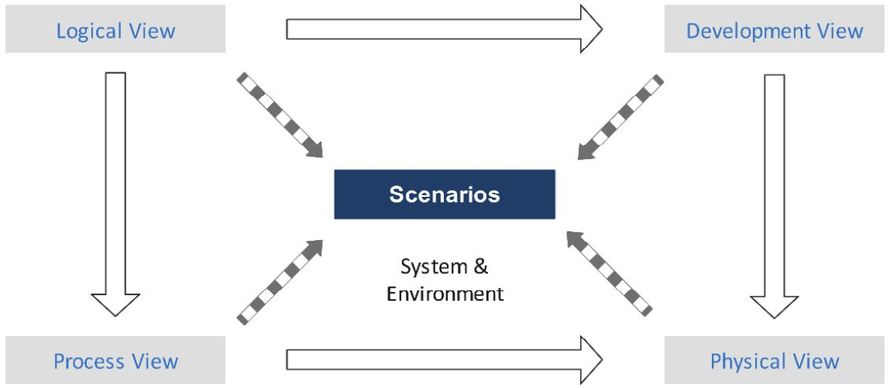
4+1 아키텍처 뷰 모델과 함께 아키텍처는 조직 방법론의 사람, 프로세스, 기술 측면을 설명하는 또 다른 패싯 세트로 표현되어야 합니다. 이는 거버넌스 프로세스를 수립하는 데 필요합니다. 이러한 프로세스를 통해 아키텍처는 늘 푸른 상록수(evergreen)처럼 유지될 수 있습니다. 상록수가 북부의 겨울철에도 푸르름을 유지하듯, 아키텍처 역시 다양한 비즈니스 기후 속에서 푸르고 생생하며 신선하게 유지되어야 합니다. IT 분야에 종사하는 이들은 다양한 기술적, 비즈니스적 혼란으로 인해 아키텍처가 수세에 몰리는 혹독한 불만의 겨울을 겪어왔습니다. 이러한 시기에는 아키텍처의 미래 지향성(future-proofing)을 위한 노력이 큰 진가를 발휘합니다. 아키텍처가 명확할 때 기술적 전문성과 관심의 깊이가 서로 다른 다양한 청중과 소통할 수 있습니다. 모호할 때는 엔지니어링상의 오류가 발생할 여지를 남깁니다. 명확할 때는 유지 관리될 수 있으며 미래에도 견고하게 유지될 수 있습니다. 아키텍처적 명확성이 확보되면 모든 IT 솔루션의 현재 상태와 미래 목표 상태를 기반으로 훌륭한 토론과 합리적인 사고를 할 수 있는 역량이 생깁니다. 아키텍처 원탁회의(architecture round table)를 구성하는 것은 단순히 아서왕 전설 속의 꿈 {https://packt-debp.link/U6dmtf}이 아닙니다. 여러분이 선택한다면 현실이 될 수 있습니다.
핵심 데이터 엔지니어링 역할이 확립되어야 하며 아키텍처 선택, 특히 역량이 평가되고 IT 청사진으로 전환될 때 반드시 원탁에 자리를 잡아야 합니다. 중요한 데이터 흐름 청사진이 여러분의 개념 아키텍처에 나타날 것이며 이는 수립되어야 할 영역들을 통과하는 데이터셋의 흐름을 정의할 것입니다. 비즈니스 및 기타 비기술적 이해관계자는 아키텍처 솔루션의 의도를 파악할 수 있고 엔지니어는 이를 안정적이고 가용하며 확장 가능하고 고성능을 발휘하도록 구축할 수 있습니다. 이 장에서는 데이터 솔루션을 위한 개념 아키텍처를 생성하는 방법을 배우고 이를 효과적인 소통에 활용하는 방법을 살펴볼 것입니다.
개념 아키텍처 모범 사례
여기까지 읽으면서 여러분은 다음과 같이 궁금해할 것입니다. ‘개념 아키텍처의 예시는 무엇이며 그림을 볼 수 있을까?’ 이 그림 한 장은 천 마디 말의 가치가 있지만 그 천 마디 설명 역시 여전히 필수적이라는 점을 명심하십시오. 그림 5.2에서 개념 아키텍처 참조 모델을 확인할 수 있습니다.
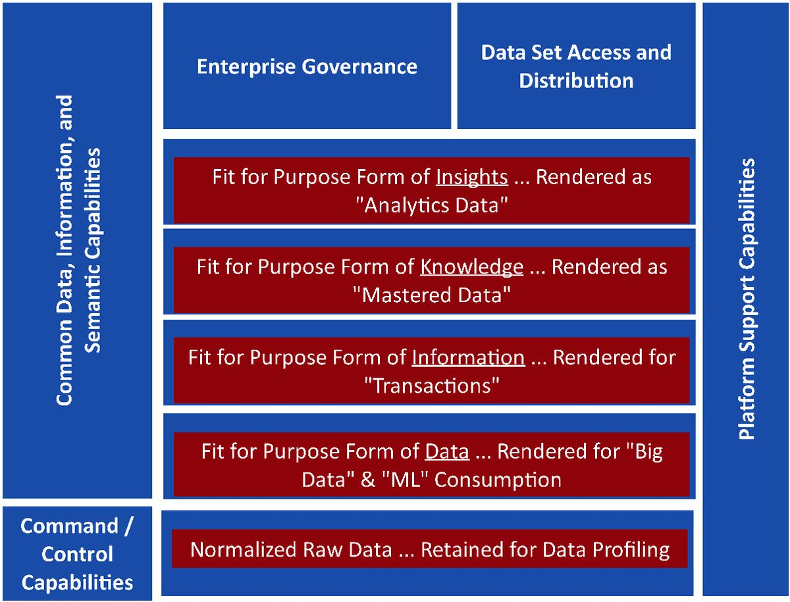
우리는 모범 사례를 구체화하면서 이 책 전반에 걸쳐 이 참조 모델을 사용할 것입니다. 이는 논의할 여지를 많이 남기며 이 장뿐만 아니라 이어지는 장들에서 우리가 명확히 할 많은 포인트들을 이끌어냅니다. 개념 모델과의 명확한 논리적 연결 고리가 분명하게 드러나야 합니다. 그렇지 않으면 도메인 이해관계자들로부터 비판을 받게 될 것입니다. 우리의 조언은 원칙, 비전, 미션을 위배하지 않는 한 그들의 의견을 경청하고 조정하라는 것입니다. 마찬가지로 논리 아키텍처의 경우, 이유(why)와 방법(how) 유형의 질문은 물리 아키텍처 수준에서도 개념 수준과 연결되어야 하므로 물리 아키텍처 수준에서 다루어질 것입니다.
개념 아키텍처 설명
모범 사례를 살펴보기 전에 다음 사항을 알아야 합니다.
- 개념 아키텍처와 그 참조 모델에는 무엇이 포함되는가?
- 아키텍처를 미래 지향적으로 만들기 위한 선택은 어떻게 이루어지는가?
- 마지막으로 몇 가지 주요 트렌드인 데이터 중력(data gravity)과 스마트 데이터(smart data)를 이해해야 합니다.
첫 번째 질문인 개념 아키텍처와 그 참조 모델에는 무엇이 포함되는가?에 관해 읽어볼 참고 자료는 많습니다. 그 답변들이 여러분을 혼란스럽게 만들 수도 있습니다! 아키텍처의 이 개념 수준에서는 데이터 흐름을 세부적으로 다루고 싶지 않을 것입니다. 모든 상위 수준의 역량을 정의하고자 할 것입니다. 제가 과거에 그랬던 것처럼 모든 역량을 낱낱이 정의하려 들지 않도록 주의하십시오. 목록이 수백 줄에 달할 수 있으므로 목록이 길어지면 역량 범주로 롤업(그룹화)하십시오. 공유되거나 다른 역량을 위한 유틸리티 역할을 하는 역량을 식별하십시오. 모니터링, 보안, PaaS 클라우드 역량, 클라우드 정보기술 인프라 라이브러리(ITIL) 프로세스 지원(클라우드 제공업체가 해당 용어를 안티패턴으로 간주하더라도 여기서 교훈을 얻으십시오), 맞춤형 대시보드 등이 그 예입니다.
이러한 공유 역량은 대개 1페이지 참조 모델의 왼쪽이나 오른쪽에 열(column) 형태로 나타납니다. 중앙에는 아래에서 위로(또는 여러분의 사고방식에 따라 위에서 아래로) 솔루션 아키텍처가 전달하고자 하는 개념을 잘 보여주는 분류된 순서로 역량들을 배치합니다. 우리의 경우 이들을 영역(zone)별로 그룹화합니다. 개념이 어떻게 구현되는지를 보여주어야 하므로 논리 계층을 검토할 때 이 점을 염두에 두어야 합니다. 논리 아키텍처는 상위 수준 역량을 지원하기 위해 구축된 서비스 간의 데이터 흐름을 보여줍니다. 개념 수준에서는 아직 정의된 데이터 흐름이 없지만, 어느 정도의 기능적 흐름과 암묵적으로 명시된 데이터 이동을 암시합니다. 또한 역량들의 그룹화된 상호 작용도 묘사해야 하지만(우리의 개념 아키텍처 참조 모델의 로우 영역에서는 정규화되는 원시 데이터 유형(예: 이메일, FTP, 비정형 데이터)을 관찰할 수 있음), 이 개념 수준에서는 역량 정의 수준에 머무르는 것이 좋습니다. 역량들이 아키텍처의 핵심과 대략 어떻게 상호 작용하는지만 보여주십시오. 개념 아키텍처 정의에서는 모든 화살표와 연결선을 피하십시오. 화살표가 필요하다면 다이어그램을 발표할 때 레이저 포인터를 사용하십시오. 오버레이에 상호 작용을 구체적으로 지정하면 1페이지 다이어그램이나 역량을 정의하는 데 사용된 각 용어의 정의 시트(용어집)로 답변할 수 있는 것보다 더 많은 질문을 받게 될 것입니다.
개념 아키텍처에는 우리가 일반적으로 명확한 부분들로 나누기 좋아하는 여러 영역이 포함됩니다. 이들은 다음 5개 영역입니다.
- 핵심 플랫폼
- 시맨틱 정보
- 거버넌스 및 데이터 접근
- 플랫폼 지원
- 명령 및 제어
개념을 탐색하는 데 필요한 정의 용어집과 아키텍처를 설명하면서 다음 섹션에서 모든 역량을 다룰 때 이 5개 섹션을 시각화하고 자세히 설명할 것입니다.
개념 아키텍처 용어집
이어지는 섹션들의 표에는 아키텍처에 사용된 용어집이 포함되어 있습니다. 영역(Area) 및 설명(Description) 열이 큰 도움이 될 것입니다. 용어집은 각 영역에 필요한 역량과 기능에 집중할 수 있도록 대분류와 소분류로 나뉩니다. 이들은 여러분이 구상할 거의 모든 개념 아키텍처에서 주요 블록을 형성합니다. 그림 5.3은 주요 영역의 간단한 시각화입니다.
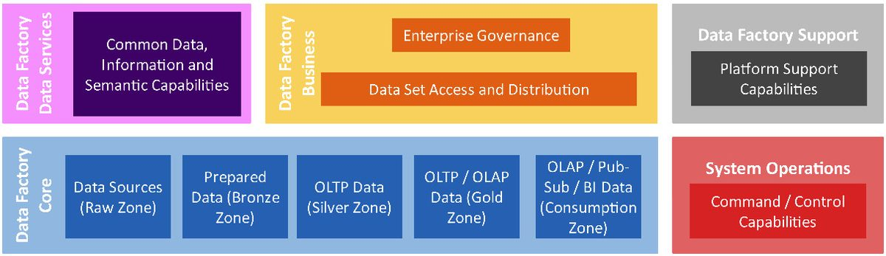
용어집의 주요 대분류 및 소분류는 다음과 같습니다.
- 데이터 팩토리 코어
- OLAP/발행-구독/BI 데이터 (소비 영역)
- OLTP/OLAP 데이터 (골드 영역)
- OLTP 데이터 (실버 영역)
- 준비된 데이터 (브론즈 영역)
- 데이터 소스 (로우 영역)
- 데이터 팩토리 비즈니스
- 엔터프라이즈 거버넌스
- 데이터셋 접근 및 배포
- 데이터 팩토리 지원
- 플랫폼 지원 역량
- 데이터 팩토리 데이터 서비스
- 공통 데이터, 정보 및 시맨틱 역량
- 시스템 운영
- 명령 및 제어 역량
각각에 대해 이어지는 섹션에서 자세히 설명합니다.
데이터 팩토리 코어
핵심 플랫폼 역량은 활동 영역을 통해 원시 데이터에서 소비 가능한 데이터로의 흐름을 정의합니다. 이는 다음 다이어그램에 나와 있습니다.
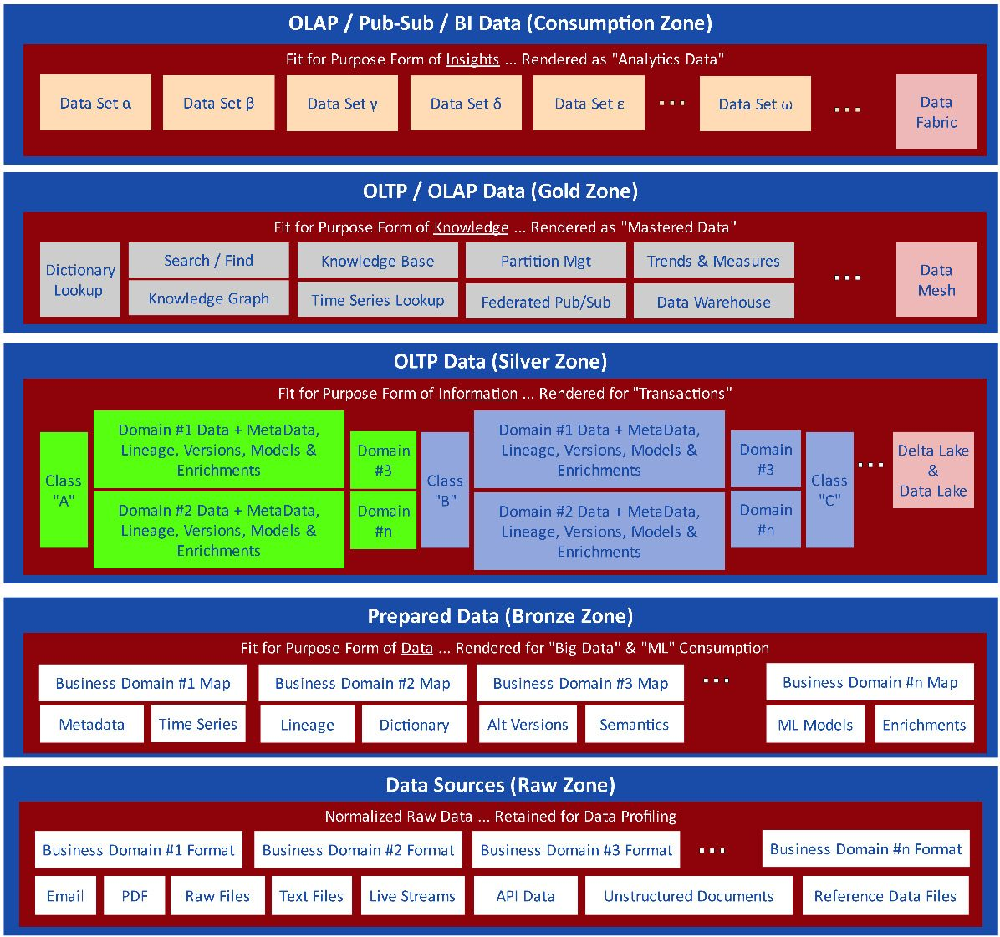
데이터 팩토리 아키텍처의 핵심은 사용자 소비를 위한 제품화된 데이터의 소비 가능한 릴리스 세트로 원시 데이터에서 이어지는 데이터 여정을 구현하는 처리 영역들로 구성되어야 합니다.
참고
사용자는 알고리즘, 데이터 과학자, 분석가, 또는 기타 부가가치 재판매업체(VAR)일 수 있습니다. 결국 미래에는 데이터가 제품이 될 것이기 때문입니다!
OLAP/발행-구독/BI 데이터
최종 데이터 제품에 대한 논의부터 시작하겠습니다. 데이터 제품의 최종 상태를 먼저 논의하는 것이 다소 거꾸로 된 것처럼 보일 수 있지만 이러한 방식으로 문제에 접근하는 것은 타당합니다. 소비자를 위해 생산할 결과물이 매우 높은 품질 표준을 충족해야 하기 때문입니다. 이는 데이터 팩토리 접근 방식을 통해 가능합니다. 우리가 어디로 향하고 있는지 아는 것은 여러분에게 채택을 권장하는 데이터 팩토리 처리 단계의 설계 정의를 왜 이토록 공식적으로 다루는지 그 이유를 파악하는 데 도움이 됩니다. 중요한 것은 데이터 제품의 전반적인 품질입니다. 데이터 소비자는 소시지 제조 공장에 무엇이 들어가는지에는 크게 신경 쓰지 않지만 최종 제품을 모호함 없이 사용하는 방법을 이해할 수 있는지에 대해서는 매우 신경을 씁니다. 엔지니어로서 여러분은 앞선 단계들에 매우 많은 관심을 기울입니다. 따라서 취해진 설계 접근 방식에 매우 체계적이어야 합니다.
| 영역 설명 |
|---|
| 용도에 맞춘 형태의 인사이트, 분석 데이터로 렌더링됨: 발행 및 구독된 데이터는 분석 처리를 위해 렌더링되어 인사이트 수확으로 이어집니다. |
| 데이터셋 α: 제품으로서의 데이터 라이프사이클(버전 제어, 릴리스, 시계열, 차원 및 관계)을 지원하도록 구성된 여러 데이터셋 중 하나(비즈니스 도메인 데이터를 포함하는 클래스 데이터셋과 대조하기 위해 그리스 문자를 사용함). |
| 데이터셋 β |
| 데이터셋 γ |
| 데이터셋 δ |
| 데이터셋 ε |
| 데이터셋 ω |
| 데이터 패브릭: 클라우드 제공업체별 패브릭 서비스에 배치되는 데이터 메시 데이터. 보안 통합이 핵심입니다. 이제 열 수준 및 행 수준 보안을 지원하는 Azure Fabric Warehouse 및 SQL 엔드포인트 {https://packt-debp.link/iZ7oV5}를 참조하십시오. |
표 5.1 - OLAP/발행-구독/BI (소비 영역) 데이터 영역
명확하게 정의된 데이터 클래스로 구성된 데이터셋은 소비 영역의 릴리스 세트를 구성합니다. 클라우드 제공업체는 데이터 메시 역량의 상위 집합을 구현한다고 광고되는 데이터 패브릭을 지원하고 있습니다. 소비자가 액세스할 수 있는 카탈로그화된 데이터 클래스를 위한 기능으로 이러한 역량을 활용하는 것은 여러분의 설계에 달려 있습니다.
OLTP/OLAP 데이터
골드 영역에 호스팅되는 데이터셋은 기업의 마스터 데이터를 구성합니다.
| 영역 | 설명 |
|---|---|
| 용도에 맞춘 형태의 지식, 마스터 데이터로 렌더링됨 | 다른 목적을 위해 재렌더링되기에 적합한 엔터프라이즈 마스터 데이터를 형성하는 비즈니스 도메인 데이터 및 메타데이터입니다. |
| 데이터 메시 | 데이터 메시 원칙을 준수하며 특히 비즈니스 도메인 소유권과 시맨틱을 통한 제품으로서의 데이터로 이어지는 셀프서비스 목표를 지원하는 데이터입니다. |
| 데이터 웨어하우스 | 특히 현재 상태의 도구 역량과 서비스를 지원하며 관계형 정규화를 수행하고 지원하도록 물리적으로 구성된 데이터입니다. |
| 딕셔너리 룩업 | 의미를 발견하기 위해 리니지 및 시맨틱 메타데이터를 사용하는 인간 및 기계 판독 가능한 데이터 룩업 지원입니다. |
| 연합형 발행/구독(pub/sub) | 비즈니스 도메인 소유자가 변경을 수행함에 따라 비즈니스 도메인 데이터에 대한 CDC(변경 데이터 캡처) 구독 및 다운스트림 재렌더링을 지원합니다. |
| 지식 기반(Knowledge base) | 클래스 데이터의 인스턴스가 그래프에 나타나면서 데이터가 시맨틱하게 구성되도록 지원합니다. |
| 지식 그래프(Knowledge graph) | 그래프 모델 내에서 도메인 데이터 클래스 간 및 다른 모든 데이터 간의 추상적 관계는 도메인 시맨틱을 정의하는 데 완전한 명확성을 제공합니다. |
| 파티션 관리 | 확장성, 성능, 볼륨, 복구 및 감사 유스케이스를 위해 데이터 파티션을 관리하는 실질적인 역량입니다. |
| 검색/찾기 | 시맨틱 검색, 추론 및 추론을 포함하여 모든 데이터셋 및 해당 메타데이터에 대한 향상된 검색(discovery) 서비스입니다. |
| 시계열 룩업 | 버전 관리된 데이터가 아닌 퍼스트 파티 데이터로서 시계열 데이터를 지원하는 역량입니다. 이를 통해 트렌드, 측정값, 통계, 지표 및 파생 데이터를 기록할 수 있습니다. |
| 트렌드 및 측정값 | 버전 및 시계열 데이터의 통계, 그리고 시계열 데이터 전반에 걸쳐 적용될 측정값, 지표 및 트렌드 계산의 추상적 형태입니다. |
표 5.2 - OLTP / OLAP (골드 영역) 데이터 영역
마스터 데이터는 아직 최종 사용자 소비를 위한 준비가 완료되지 않았지만 데이터 팩토리의 파이프라인 처리 단계에서 사용할 수 있습니다. 이 마스터 데이터는 소비 가능한 데이터를 생산하기 위해 다른 데이터셋과 정렬될 수 있습니다.
OLTP 데이터
실버 영역의 데이터 클래스는 할당, 정렬, 분류, 범주화되고 데이터 시맨틱으로 강화됩니다. 이렇게 하면 데이터 클래스의 의미가 모두에게 명확하고 이해하기 쉬워집니다. 이 데이터를 마스터링하는 것은 그 다음 단계이지만 먼저 데이터를 스마트하게 만드는 것이 필수적입니다.
| 영역 설명 |
|---|
| 용도에 맞춘 형태의 정보, 트랜잭션을 위해 렌더링됨: 올바른 시맨틱 구성으로 이어지는 클래스로 피벗된 도메인 데이터입니다. |
| 클래스 A 도메인 #1 데이터 + 메타데이터, 리니지, 버전, 모델 및 강화: 원시 데이터로부터 데이터 클래스가 형성됩니다. 최신 기술은 고도로 관계형인 그래프 데이터 생성을 지원합니다. 관계를 보존하면 조인 속도가 향상되며 이는 대규모 관계형 데이터베이스 시스템에서 성능 저해 요인이 될 수 있는 문제입니다. 추상 클래스는 일반적인 관계를 지원하고 클래스의 인스턴스는 데이터 자체를 지원합니다. 메타데이터는 온톨로지에 공식화된 클래스 모델에 의해 정의되며 순회(walk)는 분류 체계(taxonomy)에 의해 정의됩니다. 특별 참고: 구현 선택지는 전통적인 데이터셋 스토리지로의 클래스 연결을 갖춘 특수 인메모리 그래프 데이터베이스에서 LPG 대 RDF/OWL입니다. |
| 클래스 A 도메인 #2 데이터 + 메타데이터, 리니지, 버전, 모델 및 강화 |
| 클래스 A 도메인 #3 데이터 + 메타데이터, 리니지, 버전, 모델 및 강화 |
| 클래스 A 도메인 #n 데이터 + 메타데이터, 리니지, 버전, 모델 및 강화 |
| 클래스 B 도메인 #1 데이터 + 메타데이터, 리니지, 버전, 모델 및 강화 |
| 클래스 B 도메인 #2 데이터 + 메타데이터, 리니지, 버전, 모델 및 강화 |
| 클래스 B 도메인 #3 데이터 + 메타데이터, 리니지, 버전, 모델 및 강화 |
| 클래스 B 도메인 #n 데이터 + 메타데이터, 리니지, 버전, 모델 및 강화 |
| 클래스 C 등 |
| 델타 레이크 및 데이터 레이크: 빅데이터 스토리지, 작업 세분화를 위한 분산 맵/리듀스 처리, 레이크하우스 개념을 지원하는 높은 수준의 캐싱(델타 레이크로도 알려짐) 역량입니다. |
표 5.3 - OLAP (실버 영역) 데이터 영역
실버 영역 데이터 클래스는 데이터 레이크 및 레이크하우스에 적합하며 마스터 데이터를 형성하기 위해 데이터 팩토리의 처리에 의해 소비될 수 있습니다. 위험한 점은 데이터 과학자에게 이 데이터에 대한 직접적인 접근 권한을 부여하는 것이 유익해 보일 수 있지만 데이터 드리프트와 오류에 취약하기 때문에 소비자가 얻고자 하는 인사이트로 오류가 전파될 수 있다는 것입니다. 이것이 바로 후속 처리 단계와 골드 및 소비 영역에서의 호스팅이 필요한 이유입니다.
준비된 데이터
브론즈 데이터는 수집되어 구문론적 및 개략적인 시맨틱 정확성을 위해 완전하고 정확하며 정렬된 정규화된 데이터로 특징지어집니다.
| 영역 | 설명 |
|---|---|
| 용도에 맞춘 형태의 데이터, 빅데이터 및 ML 소비를 위해 렌더링됨 | 도메인 데이터가 레이크하우스에서 최적의 접근 패턴을 갖도록 매핑됩니다. |
| 대체 버전 | 핵심 데이터셋으로부터 데이터의 대체 버전을 렌더링할 수 있으며 성능 고려를 위해 영역 내에서 동기화 상태로 유지됩니다. |
| 비즈니스 도메인 #1 맵 | 정규화된 데이터셋이 매핑되며 데이터와 해당 맵은 강화, 메타데이터 추출, 비즈니스 도메인 검증을 지원하는 영역 내 실행 유스케이스에 사용될 수 있습니다. |
| 비즈니스 도메인 #2 맵 | |
| 비즈니스 도메인 #3 맵 | |
| 비즈니스 도메인 #n 맵 | |
| 딕셔너리 | 원시 및 정규화된 데이터셋이 분류되고, 카탈로그화되며, 딕셔너리 프로세스 제어 하에 배치됩니다. |
| 강화 | 원시 데이터가 강화되어 깨끗하게 정규화된 비즈니스 도메인 데이터와 다운스트림 사용을 위한 후속 시행 가능 계약을 지원합니다. |
| 리니지 | 데이터 리니지 메타데이터가 최초로 수립 및 저장되어 보존될 모든 후속 메타데이터를 위한 개념적 래퍼를 구성합니다. |
| 메타데이터 | 원시 및 정규화된 데이터셋에서 시맨틱 메타데이터를 수집한 후, 딕셔너리 항목으로 이어지는 데이터 범주 정의 파이프라인 강화를 준비하기 위해 분류됩니다. |
| ML 모델 | 개발된 모델과 모델링된 매개변수화 인스턴스는 변경 리니지와 함께 보존되므로 데이터 리니지를 통해 다운스트림 영향을 미쳤을 수 있는 정확한 모델과 매개변수를 식별할 수 있습니다(종종 새로운 모델 생성을 초래해야 하는 영향을 미치기 때문입니다). |
| 시맨틱스 | 정규화된 데이터가 정확하고, 완전하며, 구체적이 되도록 모든 원시 데이터셋에서 시맨틱 함의를 추출해 내야 합니다. |
| 시계열 | 시맨틱적으로 동일하고 동일한 포맷을 가진 다른 데이터 인스턴스와 100% 일치하는 데이터는 시계열 스토리지를 필요로 하는 데이터 유형이 되며 따라서 특별한 파이프라인 처리를 위해 플래그가 지정됩니다. 버전 관리된 데이터와 달리 시계열 데이터는 현재 데이터셋을 구성하는 여러 버전을 갖습니다. |
표 5.4 - OLAP 준비된 데이터 (브론즈 영역) 데이터 영역
브론즈 영역 데이터는 시맨틱이 부여되는 실버 영역에서 더 정밀한 조사를 거치기 전에 올바르게 처리되고 적절하게 태깅된 데이터입니다. 데이터 정제 작업의 특성상 일부 원시 값은 걸러지고(distilled out) 다른 값은 확대되기 때문에 브론즈 영역의 처리에서는 데이터 리니지가 중요합니다. 데이터 소스의 로우 영역에 대한 추적성은 브론즈 영역 처리에서 수립됩니다. 초점은 로우 영역 데이터의 데이터 리니지, 강화 및 정규화에 맞춰질 것입니다.
데이터 소스
로우 영역에서는 데이터가 먼저 수집되어 원래 형태로 유지됩니다. 데이터 리니지 추적성을 제공하기 위해 원시 데이터와 수신된 형태를 그대로 보존하는 것이 필수적입니다. 이 데이터는 시간에 따라 변할 수 있는 다운스트림 영역의 처리 관점에서 바라보아야 합니다. 그런 다음 보상 트랜잭션을 생성할 필요 없이 해당 변경 사항을 커밋한 후 원시 데이터 처리 소프트웨어 변경 사항을 적용할 수 있습니다. 변경이 자주 발생하고 원시 데이터 처리 시 많은 소프트웨어 변경이 일어나기 때문에 마지막으로 확인된 올바른 데이터 상태에서 처리 소프트웨어를 다시 실행하는 것이 큰 도움이 됩니다.
| 영역 | 설명 |
|---|---|
| 데이터 프로파일링을 위해 보존되는 정규화된 원시 데이터 | 도메인 데이터가 수신된 포맷 그대로 저장됩니다. |
| API 데이터 | 모든 소스로부터 게이트웨이 API를 통해 데이터를 획득할 수 있습니다. |
| 비즈니스 도메인 #1 포맷 | 비즈니스 데이터는 모든 유형이 될 수 있지만 값은 처리 및 정규화의 대상입니다. 이 영역의 처리는 구문론적으로 올바르게 수집되고, 저장되며, 감사 가능한지 확인하는 것으로 제한됩니다. 비즈니스 도메인 소유자의 서비스 수준은 공급업체에 대외적으로 적용되며 이 영역의 처리 규칙에서 강제됩니다. |
| 비즈니스 도메인 #2 포맷 | |
| 비즈니스 도메인 #3 포맷 | |
| 비즈니스 도메인 #n 포맷 | |
| 이메일 | 메타데이터로서의 감사 및 헤더 보존과 함께 이메일 데이터 인입을 지원합니다. |
| 라이브 스트림 | 발행/구독 스트림으로 인입되는 데이터의 라이브 스트림을 지원합니다. 특히 처리 및 보존을 위한 데이터셋으로의 스트림 세분화가 지원됩니다. |
| 구조화된 컨테이너 내 비정형 텍스트를 지원합니다. PDF는 HTML, PDF, SGML, XML 등 다양한 구조화 컨테이너 유형 중 하나입니다. | |
| 원시 파일 | 다양한 템플릿 포맷 및 파싱 가능한 형태의 구분 기호가 있거나 없는 원시 파일을 지원합니다. |
| 참조 데이터 파일 | 데이터 파일 참조 데이터 - 종종 다른 시스템으로의 의사 관계형 플랫 파일 전송을 위해 다른 파일로 인덱싱됩니다. 여기에는 관계형 데이터베이스 관리 시스템(RDBMS) 또는 SQL 데이터 덤프 파일이 포함됩니다. |
| 텍스트 파일 | 구조화되거나 구분 기호가 있는 테스트/텍스트 파일: 유니코드, ANSI 또는 완벽히 명시된 기타 인코딩이지만 다운스트림 정규화의 대상입니다. |
| 비정형 문서 | 인간 가독 언어로 작성된 완전한 비정형 자유 형식 텍스트이지만 최종 도메인 소유자의 재량에 따라 번역 및 현지화 변경이 적용되기 전 핵심 언어로 다운스트림 정규화의 대상입니다. |
표 5.5 - 데이터 소스 (로우 영역) 데이터 영역
로우 영역의 데이터는 때때로 원본 원시 데이터의 대체 버전을 생성하지만 여전히 원시 데이터로 간주됩니다. 한 가지 예로 비정형 텍스트 기사에 포함된 개념의 그래프 생성을 들 수 있습니다. 비정형과 정형의 두 형태는 시맨틱적으로 동일하지만 파생된 구조 형태는 비정형 형태와 시맨틱적으로 동등합니다. 이를 염두에 두고 로우 영역을 구축하는 것이 설계에 중요합니다. 마찬가지로 시계열 데이터는 특별한 경우입니다. 여기서는 서로 다른 시간에 대한 동일한 데이터가 수집되고 주석이 추가됩니다. 각각 동일한 시맨틱을 갖는 데이터셋에 대해 시계열 인스턴스 데이터의 카디널리티는 방대할 수 있습니다!
데이터 팩토리 비즈니스
비즈니스는 데이터가 거버넌스되기를 요구하며 이는 현실적인 요건입니다. 마스터 데이터 관리(MDM) 시스템 벤더들은 대기업에서 데이터를 관리하기 위한 전체 생태계를 구축해 왔습니다. 이는 데이터셋, 그리고 때로는 데이터셋 내의 개별 열까지도 서로 다른 사일로화된 그룹에 의해 소유되기 때문에 필요합니다. 대부분의 기업 문화는 여전히 이 문제로 어려움을 겪고 있으며 이는 쉽게 바뀌지 않을 것입니다. 소유권은 도메인 소유자에게 유지되어야 하지만 이에 대한 귀속(attribution)은 데이터셋의 메타데이터에 보존되어야 하고 엔터프라이즈 데이터 거버넌스로 강제되어야 합니다.
엔터프라이즈 거버넌스
여러분이 설계하는 솔루션에는 거버넌스 및 접근 제어가 필요합니다. 거버넌스의 기치 아래 다음 사항에 대해 엔터프라이즈를 솔루션 아키텍처에 연결해야 합니다.
- 미션
- 비전
- 전략
- 정책
- 어소트먼트(품색 구성)
- 경쟁
- 시장
- 고객
시스템의 접근 및 보안은 다음과 같은 기능을 갖추어야 합니다(그림 5.5 참조).
- API 게이트웨이
- 기밀 컴퓨팅
- 데이터 패브릭 또는 데이터 메시 탐색
- 델타 데이터 탐색
- 대용량 FTP 서비스
- 권한 및 공정 이용 관리
- 서드파티 데이터 애그리게이터(통합)
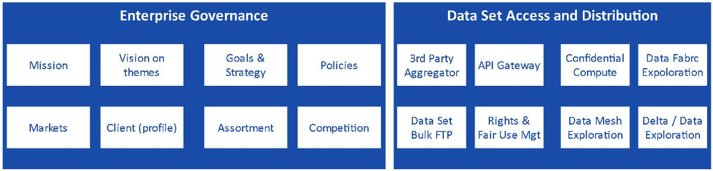
할당된 수많은 데이터 속성이 거버넌스 규칙을 주도하며 처리 단계는 도메인 소유자에 의해 정의됩니다. 워크플로, 이슈 트리아지 및 해결은 모두 모든 영역 처리 단계에서 데이터 거버넌스를 지원하기 위해 구축된 시스템입니다. 데이터 권한이 할당 및 강제되고, 보안이 할당 및 감사되며, 데이터, 메타데이터, 파생 데이터 및 설정된 데이터 속성(보안, 개인정보 보호 등)에 대한 변경 워크플로가 구현 및 적용된다는 점을 아는 것이 중요합니다. 이 중 어느 것이든 변경할 수 있는 권한을 가진 주체가 누구인지는 엔터프라이즈 데이터 거버넌스 역량의 일부입니다. 이는 여러분의 데이터 엔지니어링 설계에서 핵심적인 부분입니다.
| 영역 | 설명 |
|---|---|
| 어소트먼트 | 데이터셋이 고객에게 제공되는 다양한 제품 번들링의 대상이 되는, 데이터를 제품으로 취급하는 프로세스입니다. 고객의 요구와 선호도를 충족하기 위해 데이터 팩토리 인벤토리에 다양한 데이터 제품이 보관됩니다. 특정 번들이 지원되며 그에 따른 가격 책정, 회계, 감사, 비용 귀속(팩토리 내부)이 모두 데이터 팩토리의 어소트먼트 프로세스의 일부입니다. |
| 고객 (프로파일) | 마케팅, 영업 및 사용 비용, 기회 발굴, 감사 가능성을 위해 고객 프로파일 데이터가 보존됩니다. |
| 경쟁 | 데이터가 비교되고 도메인 소유자가 경쟁 압력을 유지할 수 있도록 위험이 식별됨에 따라 효능 측정을 위해 경쟁 데이터가 평가됩니다. |
| 목표 및 전략 | 비즈니스 도메인 소유자와 엔터프라이즈 리더에게 개념 아키텍처 목표의 전략적 효능에 관한 대시보드 입력을 제공하기 위해 전략적 목표 지표, 목표치 및 관찰 사항이 유지됩니다. |
| 시장 | 시장 지원에는 도메인 데이터 소유자가 운영 중인 시장 내 판매 지원이 포함됩니다. 데이터 주도형 조직에서는 엑셀 스프레드시트와 대역 외(OOB) 비즈니스 모델이 개발 및 평상시 운영(BAU) 동안 목표에 대한 책무성을 강제하는 프로세스로 대체됩니다. |
| 미션 | 미션에 대한 대시보드 규정 준수입니다. 향후 해결해야 할 기술 부채, 비즈니스 부채, 미션 부채를 포함한 편차로의 드릴다운을 통해 조직이 전반적으로 어떻게 수행하고 있는지를 나타냅니다. |
| 테마에 대한 비전 | 회사가 사안을 같은 방식으로 바라보고 있는가? 시스템의 데이터가 데이터 팩토리가 시작되었을 때의 비전을 지원하는가? 비전의 구현을 향해 나아가고 있는가? |
표 5.6 - 엔터프라이즈 거버넌스 영역
엔터프라이즈 거버넌스 외에도 데이터 배포를 위한 접근 방식, 프로세스 및 제어를 설정해야 합니다. 이에 대해서는 다음 섹션에서 논의하겠습니다.
데이터셋 접근 및 배포
릴리스된 데이터셋에는 배포 및 데이터 서비스를 위한 채널이 필요합니다. 데이터 소비를 위한 다양한 메커니즘이 존재합니다. 각각은 보안, 개인정보 보호 및 권한 관리 기능이 이해된 후 데이터셋 수준에서 올바른 세분성으로 보존될 것을 요구합니다.
| 영역 | 설명 |
|---|---|
| 서드파티 애그리게이터 | 때로는 데이터를 배포하는 최선의 방법이 제3자가 공정 이용, 계약, 확장성, 성능, 자격 부여, 기밀 컴퓨팅의 복잡한 문제를 처리하도록 허용하는 것입니다. LiveRamp와 같은 데이터 협업 플랫폼과 그 경쟁사인 Terminus ABM Platform, HubSpot Marketing Hub, Active Campaign, Demandbase One, CallRail, AdRoll, Looker 등이 떠오릅니다. |
| API 게이트웨이 | 금융 분야의 Xignite와 유사한 데이터 배포용 맞춤형 API 게이트웨이입니다. 21개 회사가 (주로) 투자 은행 API를 기여했습니다. API를 통해 기업은 전통적인 금융 서비스 제공업체(FSP)를 우회할 수 있습니다. 기여자로 확인된 몇몇 회사는 다음과 같습니다: 1) 워크플로 API: Advisor Software, ChartIQ, EdgeLab, Planwise, QuantConnect, Tradier 2) 분석 API: Autochartist, TipRanks, Insight 360, PsychSignal 3) 데이터 API: Estimize, Estimates APIs, Nasdaq, Streamdata.io, StockTwits, SRLabs, Yodlee, Xignite 4) 인큐베이터: Draper University, ValueStream, Fintech Sandbox, Level39 |
| 기밀 컴퓨팅 | 신뢰 컴퓨팅 영역의 알고리즘을 통한 경우를 제외하고는 데이터를 사용할 수 없으므로 박스 안의 데이터를 블랙박스 데이터로 취급해야 하는 알고리즘과 그 출력을 제외한 데이터 접근이 금지되어 모든 당사자의 신뢰를 보존하면서 알고리즘을 공유 데이터 영역으로 가져올 수 있는 역량입니다. |
| 데이터 패브릭 탐색 | 클라우드 또는 SaaS 제공업체의 공유 영역으로 데이터를 전송하여 공유 또는 제한된 접근의 데이터 패브릭에서 퍼스트 파티 데이터로 취급받을 수 있는 역량입니다. |
| 데이터 메시 탐색 | 제공업체의 공유 데이터 메시에 데이터를 전송하여 퍼스트 파티 데이터로 취급받을 수 있는 역량입니다. |
| 데이터셋 접근 및 배포 | 모든 맞춤형 서드파티 원시 데이터셋 전송 시스템입니다. |
| 데이터셋 대용량 FTP | 배포 및 데이터 제품 릴리스를 라이프사이클, 감사, 정기 릴리스의 대상이 되는 세트/브래킷으로 평탄화하는 모든 맞춤형 서드파티 원시 데이터셋 전송 시스템입니다. |
| 델타/데이터 탐색 | 제공업체의 공유 델타 레이크 인프라로 데이터를 전송하여 퍼스트 파티 데이터로 취급받을 수 있는 역량입니다. |
| 권한 및 공정 이용 | 릴리스 관리 목적을 위한 데이터셋 브래킷의 보존입니다. 또한 접근 권한, 사실의 존재를 알 권리, 재배포 권리를 포함한 자격을 보존하면서 세분화된 수준에서 데이터 사용량을 추적할 수 있는 역량입니다. |
표 5.7 - 데이터셋 접근 및 배포 영역
데이터셋 배포에서 특히 까다롭고 자주 잊혀지는 역량은 바로 디지털 권리의 보존입니다. 이것이 없으면 데이터는 사일로에 갇히게 됩니다. 올바른 권한 관리 정책을 구현하고 팩토리 내부 및 외부의 각 데이터셋에 대해 이를 강제하는 것은 큰 도전 과제가 될 것입니다. 여러분의 솔루션은 클라우드 제공업체의 서비스 지원을 통해 실현 가능해집니다. 일부 제공업체는 다른 제공업체보다 정책 주도 데이터 제어를 더 잘 지원하므로 선택한 클라우드에 따라 수용해야 하는 설계 변형이 존재합니다.
데이터 팩토리 지원
플랫폼은 다음과 같은 여러 서비스로 지원되어야 합니다(그림 5.6 참조).
- 클라우드 서비스(코드형 인프라(IaC)) 관리
- 구성 관리
- PaaS 모니터링
- DataOps (데이터 메시 및/또는 데이터 패브릭용)
- 데이터 개인정보 보호 규정 준수
- 정보 보안(SecOps)
- 자격 증명 및 키 관리
- 릴리스 관리
- 서드파티 도구 SLA 관리
- 인가, 암호화 및 SecOps 감사
- 사용량 측정
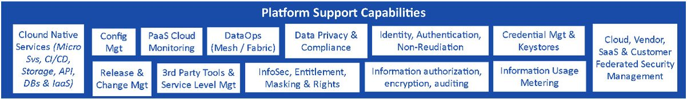
클라우드 제공업체의 데이터 팩토리 지원 역량은 제공업체가 수용한 모범 사례에 맞추어 솔루션을 설계하는 데 도움이 됩니다. 일부 제공업체는 여러분이 채택하고자 하는 것과 매우 다른 비전을 가지고 있으며 공통된 비전을 공유하는 곳은 없습니다. 여러분은 많은 조율을 거쳐야 할 것임을 예상해야 합니다.
플랫폼 지원 역량
클라우드 플랫폼이 서비스 수준 관리(SLM), 연합형 보안, 클라우드 스토리지, 구성 관리, 릴리스 관리, 보안 키 관리, 데이터 개인정보 보호, 다양한 모니터링 기능과 같은 핵심 영역을 지원하기를 원할 것입니다.
| 영역 | 설명 |
|---|---|
| 서드파티 도구 및 SLM | 서비스 수준을 관리하고 편차가 발생하여 위반이 되기 전에 보고할 수 있는 역량입니다. |
| 클라우드, 벤더, SaaS 및 고객 연합형 보안 관리 | 주요 OWASP(Open Worldwide Application Security Project) 요구 사항을 처리하기 위한 중앙 집중식 보안 명령 및 제어입니다. 상위 10개 항목은 다음과 같습니다: 1) 취약한 접근 통제; 2) 암호화 실패; 3) 인젝션; 4) 불안전한 설계; 5) 보안 구성 오류; 6) 취약하고 오래된 컴포넌트; 7) 식별 및 인증 실패; 8) 소프트웨어 및 데이터 무결성 실패; 9) 보안 로깅 및 모니터링 실패; 10) 서버 측 요청 위조. |
| 클라우드 네이티브 서비스 (마이크로서비스, CI/CD, 스토리지, API, 데이터베이스 및 IaaS) | 오케스트레이션을 지원하는 쿠버네티스용 마이크로서비스 프레임워크: Amazon Elastic Container Service (ECS); AWS Elastic Kubernetes Service (EKS); AWS Fargate; Azure Kubernetes Service (AKS); Azure Container Instances; Azure 관리형 Openshift 서비스; Cloud Foundry; Digital Ocean Kubernetes 서비스; Docker Swarm; Google Cloud Run; Google Container Engine (GKE); HashiCorp Nomad; Linode Kubernetes Engine; Mesos; Mirantis Kubernetes Engine (구 Docker Enterprise); OpenShift; Portainer; Rancher; Rafay; Red Hat OpenShift Online. CI/CD 프레임워크: AWS CI/CD (AWS CodeCommit + AWS CodeBuild + AWS CodeDeploy + AWS CodePipeline); Azure (Azure DevOps + Azure Pipelines + [선택한 소스 제어 시스템] + Azure Key Vault + Databricks); Bamboo; Buddy; Buildbot; CircleCI; Codeship; GitLab; GoCD; Google (CloudBuild + Artifact Registry + Cloud Source Repositories); Jenkins; Nevercode; Semaphore; Spinnaker; TeamCity; Travis CI; Wercker. |
| 구성 관리 | 구성 관리 역량은 물리 아키텍처를 논리 및 개념 아키텍처에 연결하는 데 필수적입니다. 특히 데이터와 코드에서 발생하는 문제를 포렌식적으로 평가할 때 언제든지 클라우드 인프라의 상태를 파악하는 데 유용합니다. 마지막으로 시스템이 기본, 백업 또는 고가용성(HA) 모드로 작동할 때(특히 모드 간 전환 시) 아키텍처의 현재 및 미래 상태가 될 수 있는 것, 되어야 하는 것, 되어서는 안 되는 것을 정의해야 합니다. |
| 자격 증명 관리 및 키 저장소 | 코드에서 키를 추상화하고 시스템 무결성을 보존하기 위해 난독화된 방식으로 키를 사용할 수 있도록 볼트(Vault)가 필요합니다. |
| 데이터 개인정보 보호 및 규정 준수 | 보안 및 자격 부여와 마찬가지로 개인정보 보호도 구현되어야 하며 데이터 파이프라인을 통과하는 개인 식별 정보(PII)가 메타데이터로서 명확히 추적되고 소비자에게 권한이 부여되기 전에 정책이 강제되어야 합니다. 여기에 내부 및 외부 감사를 지원하는 데 필요한 대시보드도 추가됩니다. |
| DataOps (메시/패브릭) | 주요 DataOps 도구에서 역량을 선택하십시오: Composable.ai; K2View; RightData; Tengu. DataOps 역량: 1) ML 및 분석을 위한 데이터 파이프라인의 민첩한 오케스트레이션; 2) 주요 데이터셋을 소비자에게 쉽게 연결; 3) 지속적인 인사이트 생성을 위한 단순화된 파이프라인 프로세스; 4) 데이터 소스: 접근, 사물인터넷(IoT) 스트림, 데이터 자동화(발행/구독), 빅데이터/레이크하우스/데이터 웨어하우스 접근, BI, ML. |
| 식별, 인증, 부인 방지 | 연합형 방식으로 식별, 인가, 인증, 접근 제어, 부인 방지 및 자격 부여를 지원합니다. |
| 정보 인가, 암호화, 감사 | 정보 인가, 전달 암호화 및 감사를 구현합니다. |
| 정보 사용량 측정 | 사용량을 측정하고 사용량 추적 대시보드를 제공하는 역량입니다. |
| 정보 보안, 자격 부여, 마스킹 및 권한 | 정보 보안, 내부 자격 부여, 발행자 권한 추적 및 사용자 마스킹(엣지 보안 구현에 필요한 경우)을 구현합니다. |
| PaaS 클라우드 모니터링 | 클라우드 제공업체의 PaaS 모니터링이 비즈니스 운영 대시보드에 통합됩니다. |
| 릴리스 및 변경 관리 | 데이터 릴리스 및 변경 세트 관리는 데이터셋에서 작동하는 소프트웨어에 적용되는 관리와 유사합니다(둘은 동일하지 않습니다). |
표 5.8 - 플랫폼 지원 역량 영역
클라우드 제공업체는 여러분의 데이터 엔지니어링 솔루션 구축을 돕는 데 매우 적극적일 것입니다. 단, 이러한 도움이 제공업체의 시장 주도 목표에만 맞춰진 것이 아니라 여러분의 비전과 미션에 부합하는지 검증해야 합니다. 여러분의 미래 지향적인 솔루션은 시장의 힘이 클라우드 제공업체로 하여금 적응하도록 이끄는 변화를 견뎌낼 수 있어야 합니다.
데이터 팩토리 데이터 서비스
데이터 팩토리 서비스를 생성하면 비전이 미션의 일부로 구현될 수 있습니다. 여러분이 구상하는 메타데이터 리니지, 데이터 품질, 저장 데이터 메타데이터, 딕셔너리 및 카탈로그를 통해 소비자는 데이터를 제품으로 이해하고 이를 최대한 활용할 수 있게 됩니다.
공통 데이터, 정보 및 시맨틱 역량
정보 시맨틱 역량은 다음과 같은 여러 핵심 저장소에 걸쳐 제공되고 보존됩니다(그림 5.7 참조).
- 메타데이터 저장소
- 빅데이터 저장소
- 딕셔너리
- 워크플로
- 잡 플로우
- 시스템 품질(테스트) 저장소
- 데이터 품질(테스트) 저장소
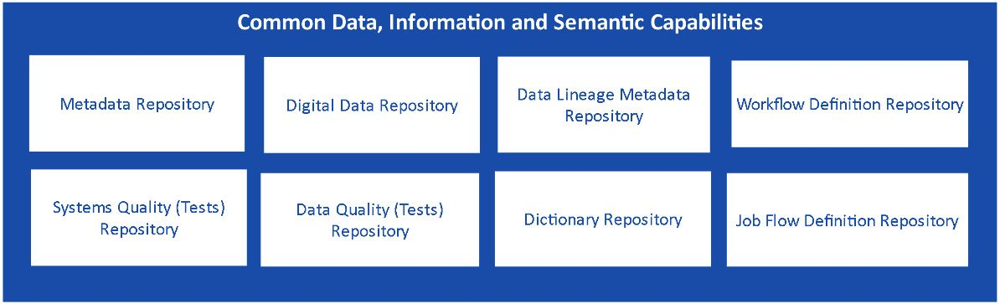
데이터 소비자의 입장에서 시맨틱 메타데이터와 그 검색에 큰 초점이 맞춰져 있음을 알 수 있습니다. 노출하는 데이터를 기반으로 소비자가 도출할 인사이트에 신뢰를 제공하기 위해서는 무엇이 사용 가능한지, 그 품질, 커버리지, 리니지 및 도메인 시맨틱을 아는 것이 필수적입니다.
| 영역 | 설명 |
|---|---|
| 데이터 리니지 메타데이터 저장소 | 데이터 리니지 메타데이터는 파이프라인이 실행됨에 따라 데이터의 변경 사항을 추적해야 합니다. 가장 먼저 추적해야 할 것은 데이터가 처리될 당시 적용된 파이프라인 정의입니다. 그런 다음 데이터 팩토리에서 조립을 거치는 추적 데이터셋의 각 단계에서 변경 데이터 캡처(CDC) 효과가 의미를 갖습니다. 마지막으로 저장소에 분리된 수많은 리니지가 추가되지 않도록 릴리스 세트가 플래그 지정되면 병렬로 실행된 메타데이터 스트림을 축소(collapse)할 수 있어야 합니다. 검색 가능성을 유지하기 위해 데이터 변경 사항(데이터셋 및 해당 메타데이터)은 반드시 보존되어야 합니다. 데이터 릴리스 세트가 다운스트림 처리에 커밋될 수 있을 때까지 하나 이상의 데이터 리니지와 그 출력을 활성 상태로 병렬 유지(여러 스윔 레인이 추적됨)해야 합니다. |
| 데이터 품질 (테스트) 저장소 | 데이터 테스트 및 테스트 결과는 파이프라인에서 데이터가 큐레이션될 때 1차 데이터와 함께 추적되어야 하는 데이터 리니지 메타데이터입니다. |
| 딕셔너리 저장소 | 스윔 레인 내에서 데이터, 메타데이터, 릴리스 세트, 데이터셋 및 데이터 리니지의 검색을 가능하게 하기 위해 딕셔너리 서비스가 필요합니다. |
| 메타데이터 저장소 | 선택할 수 있는 저장소는 다양합니다. OpenMetadata는 역량을 평가하기에 좋은 출발점이며 추가 옵션으로는 Alation Data Catalog; Alex Data Marketplace; Alteryx; ASG Enterprise Data Intelligence; Azure Data Catalog 및 Purview; Collibra Platform; erwin EDGE Portfolio; IBM InfoSphere Information Server; Immuta; Infogix Data360 Govern; Informatica Metadata Manager; Lumada Data Integration and Analytics; MANTA Platform; Octopai Platform; OpenMetadata; Oracle Enterprise Metadata Management; OvalEdge; PoolParty; SAP PowerDesigner; Smartlogic Semaphore; TopBraid EDG-Metadata Management 등이 있습니다. |
표 5.9 - 공통 데이터, 정보 및 시맨틱 역량 영역
그것을 생산하는 시스템이 신뢰할 수 없다면 어떤 데이터나 메타데이터도 사용할 수 없습니다. 솔루션의 데이터 운영 부분은 견고해야 합니다.
시스템 운영
마지막으로 명령 및 제어 역량은 다음과 같은 기능을 통해 운영 시스템의 뷰를 제공합니다(그림 5.8 참조).
- DevOps 모니터링
- 인사이트 마이닝 (로그로부터)
- SLM (대시보드)
- 보안 대시보드
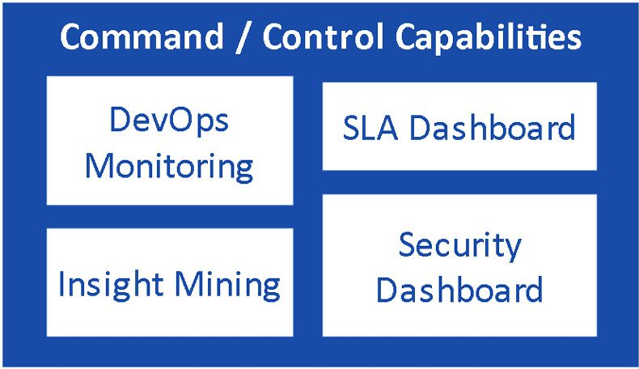
시스템 운영은 DataOps에 초점을 맞춘 이후 장에서 다룰 예정입니다. DataOps의 핵심이 되는 특별한 개념적 요구 사항이 있습니다. 이는 잡 플로우(확장 가능한 기술 주도 처리 단계) 대 워크플로(사람이 참여하는 프로세스), 시스템 품질, 그리고 최종 데이터 저장소(감사 및 규정 준수용)입니다.
명령/제어 역량
필요한 역량과 더불어 솔루션에 대한 명령 및 제어(Command and Control) 체계를 구현해야 할 필요성이 수반됩니다. 조종사가 비행 전 점검 목록(Preflight Checklist)을 완벽히 수행한 후에만 비행기를 이륙시키듯, 운영상의 엄격한 규율 없이 고객에게 서비스를 제공해서는 안 됩니다. 이는 데이터가 팩토리를 통해 최적으로 흐르도록 설계된 대시보드를 통해 뒷받침됩니다:
| 영역 | 설명 |
|---|---|
| 작업 흐름 정의 저장소 (Job flow definition repository) | 작업 흐름 정의(Job flow definitions)는 데이터 파이프라인을 구성하고 영향을 미치는 처리 단계를 명시합니다. 이는 대규모 처리를 병렬로 실행 가능한 청크(스레드, 분산 작업, SaaS API 호출 등)로 분할하는 데 필요합니다. 이러한 작업은 대시보드에서 추적되어야 하며 작업이 시작된 데이터 파이프라인 단계의 서비스 수준 관리(SLM)와 연결되어야 합니다. |
| 시스템 품질(테스트) 저장소 (Systems quality (tests) repository) | 다음 도구들을 활용하여 데브옵스(DevOps) 테스트 역량을 구현합니다: Ansible(작업 자동화), Appium, Bamboo, CruiseControl, Docker(분산 애플리케이션 빌드, 배포 및 실행), Functionize, GitLab(테스트 저장소), HashiCorp의 Terraform(인프라 관리), HashiCorp의 Vagrant, Jenkins, JMeter, Kobiton, Nagios(모니터링), PagerDuty(인시던트 관리(IM)), Puppet(구성 관리), SaltStack(원격 실행), Selenium, Snort, SoapUI, Stackify Retrace. 또한 다음 중 하나 이상의 프레임워크 유형을 사용하여 체계적인 테스트를 구현합니다: 1) 선형 자동화(레코드 및 재생 기반) 2) 모듈 기반 테스트(애플리케이션을 격리된 테스트 가능 단위, 함수 또는 섹션으로 분할하고 추상화 계층을 통해 결과를 도출) 3) 라이브러리 아키텍처 테스트(테스트가 공통 목표별로 그룹화된다는 점을 제외하면 모듈 기반 테스트와 유사) 4) 데이터 주도 테스트(동일한 코드에 대해 서로 다른 데이터 세트를 사용하여 스크립팅된 오케스트레이션으로 실행되는 테스트) 5) 키워드 주도 테스트(사용 사례의 시퀀스와 정렬된 테이블의 레이블된 키워드로 오케스트레이션되는 기능 주도 테스트) 6) 하이브리드 테스트(조직에 맞게 다른 프레임워크들을 조합한 방식). |
| 워크플로 정의 저장소 (Workflow definition repository) | 파이프라인 자체는 데이터 주도적이어야 하며 CI/CD 파이프라인의 구성이나 자체 개발한 코드에 하드코딩되어서는 안 됩니다. 추상화된 워크플로는 메타데이터 데이터 계통(Lineage) 캡처 자체에 필수적이며 이를 정의하고 캡처하는 것이 매우 중요합니다. |
| 디지털 데이터 저장소 (Digital data repository) | 데이터 카탈로그에는 배포 준비가 완료된 최종 형태의 제품 인벤토리뿐만 아니라, 배포 준비 단계에 도달하기 전 파이프라인에서 진행 중인 항목을 위한 백로그도 포함되어야 합니다. 일련의 릴리스 세트가 준비되면 고객을 위한 깔끔한 패킹 리스트와 함께 배포(Shipment)가 이루어집니다. 즉, 고객은 릴리스 세트 그룹을 받게 되며 각 릴리스 세트에는 데이터 세트들이 포함되어 모두 깔끔하게 하나의 배포 패키지로 번들링됩니다. |
표 5.10 - 명령/제어 역량 영역
여기까지 아키텍처의 영역별 설명을 읽었으므로, 이제 주요 이슈를 평가하고 설계 및 개발이 진행됨에 따라 모든 이해관계자에게 전달할 개념 아키텍처를 공식화할 준비가 되었습니다.
개념 아키텍처에서 식별된 데이터 아키텍처의 핵심 이슈는 무엇인가?
개념 아키텍처가 전달할 명확한 메시지가 존재합니다. 최소한 이해관계자들은 짚어보며 이건 무엇인가요?라고 질문할 수 있는 기준점을 갖게 됩니다. 아키텍처의 미래 경쟁력(Future-proof)을 확보하기 위해 선택은 어떻게 이루어졌는가?와 같은 질문이 나올 것으로 예상해야 합니다. 이러한 질문에 대해서는 철저한 실사(Due diligence), 경험, 외부 레퍼런스, 그리고 도메인 전문가(SME)의 확인을 통해 뒷받침되어야 합니다. 개념이 명확해지면 도전 과제가 뒤따를 것임을 예상하십시오. 모든 것을 정당화하고 설득할 준비가 되어 있어야 합니다. 결국 여러분은 기초적인 사고방식을 전달하고 있으며, 모든 사람이 여러분이 보는 것과 동일한 관점으로 솔루션을 바라보기를 원하지만, 그 이전에는… 그들 각자의 관점에서 솔루션을 바라볼 것이기 때문입니다. 이제 이 아키텍처가 요구하는 몇 가지 핵심 개념을 살펴보겠습니다: 데이터가 독립적으로 존재하며 스마트 데이터(smart data){https://packt-debp.link/WbVvOt}가 되어야 할 필요성, 그리고 빅데이터의 실질적인 특성인 데이터 중력(Data gravity)입니다.
데이터를 제품(Data as a product)으로 생성하려면 데이터 클러스터가 어디에 있는지, 언제 형성되는지, 그리고 그 클러스터링에서 어떤 의미를 도출할 수 있는지 알아야 합니다. 이는 데이터가 ’스마트’해야 함을 의미합니다. ’만들어 두면 알아서 찾아오겠지(Build-it-and-they-will-come)’라는 사고방식으로 IT 솔루션을 구축하던 시대는 이미 지났습니다. 우리는 가치가 있는 곳에 구축합니다! 그리고 가치를 지닌 데이터 제품은 정보 클러스터의 경계를 포괄할 것이며 신속하게 가치가 부가될 수 있을 만큼 스마트해야 합니다. 데이터에 빠른 주기로 부가가치 농축(Enrichment)이 더해져 구축된다면, 이러한 가속화로 인해 해당 클러스터는 데이터 중력을 지닌 것으로 간주됩니다. 먼저 데이터 중력에 대한 이해부터 시작하겠습니다.
데이터 중력(Data Gravity)이란 무엇인가?
데이터 중력이란 무엇일까요? 데이터는 데이터를 끌어당깁니다! 따라서 중력(Gravity)을 가지고 있습니다! 데이터 세트가 커지면 다양한 고객과 그들의 애플리케이션, 서비스를 끌어당깁니다. 이에 따라 가치 농축과 더 강력한 데이터 중력의 영향을 받는 데이터 세트의 중심을 축으로 생태계가 형성됩니다. 이러한 현상이 언제부터 나타나기 시작했는지 질문할 수 있습니다. 저장 공간 비용이 저렴해지면서 IoT 및 기타 데이터 소스가 클라우드와 온프레미스 솔루션으로 데이터를 쏟아붓기 시작했을 때가 그 시작점입니다. 데이터의 양은 급증했으며 각 도메인별로 항상 균등하게 증가한 것은 아니었습니다. 멀티테넌트 데이터 센터 용량을 제공하는 글로벌 기업인 Digital Realty{https://packt-debp.link/OUxWbh}는 데이터 중력 지수(DGx, Data Gravity Index) 보고서를 통해 이러한 업계 현상을 측정하고 있습니다. 이들은 기술 인프라와 이를 어떻게 구축, 배포, 운영해야 하는지에 대한 독보적인 통찰을 유지하고 있습니다. 이 보고서는 전 세계적인 데이터 중력을 정량화하고 예측하기 위한 그들의 노력의 산물입니다. 보고서의 목적은 인프라 의사결정 프로세스를 지원하여 효과적인 솔루션 운영을 이끌어내는 데 있습니다. 보고서에서 데이터는 정제되어 한 국가의 국내총생산(GDP) 성장률과 상관관계를 맺습니다. DGx 결과는 데이터를 중심으로 한 글로벌 경제의 집중도를 나타냅니다. 이 보고서는 2020년에 처음 발행되었으며, 전 세계적인 팬데믹 기간 동안 고객들이 하이브리드 IT 문제를 해결하기 위해 전략을 전환하는 데 도움을 주었고, 데이터 중력이라는 현실을 부각시켰습니다. 글로벌 경제가 디지털 중심에서 데이터 기반 환경으로 전환되기 시작함에 따라, DGx는 데이터에 대한 안전한 데이터 교환 서비스를 제공해야 하는 중요한 필요성과 뛰어난 통찰력을 지속적으로 제공하고 있습니다. 데이터 중력은 미래 지향적 데이터 솔루션 내에서 여러 ’존(Zone)’을 생성해야 하는 필요성을 크게 촉진합니다. 엔터프라이즈 내부에서도 데이터 중력과 기술 도구, 클라우드, 비용의 한계로 인해 데이터가 데이터 중력 효과를 나타내는 여러 존으로 클러스터링될 수밖에 없음을 확신할 수 있습니다. 이러한 존을 잘 구현하면 확장성이 확보되며 내부 서비스, 병렬화, 변환, 게시, 이동, 구독(보안 포함)을 위해 개발된 패턴들을 외부 소비자로까지 확장할 수 있습니다. 다음은 데이터 중력에 주목할 만한 영향을 미치고 있는 트렌드들입니다.
디지털 기반의 상호작용은 데이터와 인공지능(AI)으로 강화된 엔터프라이즈 워크플로의 디지털화를 가속화하고 있습니다. 향후 10년간 창출될 새로운 가치의 70%는 디지털 기반 플랫폼 모델에 기반할 것입니다(세계경제포럼(World Economic Forum), Shaping the Future of Digital Economy and New Value Creation, 2022년 6월 참조). 이는 다음 항목들에서 설명하는 바와 같이 전 세계적으로 엔터프라이즈 데이터 교환량을 증가시킵니다.
- 데이터 현지화(Data localization)는 로컬 데이터 저장을 요구하는 법적 및 규제 정책을 확대하고 있습니다. IT 리더의 78%가 규정 준수를 위해 고객 및 트랜잭션 데이터의 로컬 사본을 유지 관리할 것입니다(Digital Realty, “Global Data Insights Survey”, 2022년 4월 참조). 이는 데이터 집계를 위한 엔터프라이즈 위치 수를 증가시킵니다.
- 인수합병(M&A)이 세계화를 주도하고 있으며 이는 다시 규모의 경제를 달성하기 위한 기업 간 M&A를 촉진하고 있습니다. 조직의 63%가 2023년에 M&A 거래를 준비하고 있습니다(Deloitte, Could M&A Activity be a Springboard for Controllership Transformation?, 2022년 12월 참조). 이는 데이터 교환에 참여하는 데이터 소스의 수를 증가시킵니다.
- IoT 시스템의 침입을 방지하기 위한 물리적 시스템과 디지털 시스템의 사이버/물리적 보안 통합으로 인해 데이터 클러스터링이 강제되고 있습니다. IoT에 12조 6천억 달러가 지출되고 있으며 이는 2030년까지 전 세계적으로 최대 12조 6천억 달러의 가치를 창출할 수 있습니다(McKinsey, “The Internet of Things: Catching up to an accelerating opportunity”, 2021년 11월 참조). 이는 데이터 생성 및 교환 유형과 양을 증가시킵니다.
- 엔터프라이즈 데이터 스튜어드십(Enterprise data stewardship)이 기업 내에서 증가하고 있으며 빠르게 전 세계의 데이터 스튜어드로 자리 잡고 있습니다. 2025년까지 전 세계 데이터의 80%가 기업 내에 존재할 것입니다(IDC #US44413318, Data Age 2025, “The Digitization of the World from Edge to Core”, 2018년 11월 참조). 이는 집계 후 보존해야 하는 데이터의 양을 증가시킵니다.
2022년 4월 “Digital Realty Global Data Insights Survey”는 매출 1억 달러에서 10억 달러 이상에 이르는 23개국 9개 산업의 대규모 다국적 기업을 대표하는 C레벨 임원, 비즈니스 및 기술 리더 7,295명의 응답을 수집했습니다. 설문 조사에서 관찰된 내용은 다음과 같습니다:
- 데이터 우선(Data-first) 전략이 우세할 것입니다. 75%는 데이터를 활용하여 고객 경험을 개선하고 새로운 디지털 제품을 구축할 계획입니다.
- 데이터 분산은 시간이 지남에 따라 증가할 것입니다. 72%는 향후 2년 내에 새로운 비즈니스 거점을 추가할 계획입니다.
- 데이터는 지리적으로 사용되는 위치에 가깝고 사용자의 언어로 현지화됩니다. 78%는 비즈니스 및 규정 준수 목적으로 고객 데이터의 로컬 사본을 유지 관리합니다.
- 로컬에서 접근 가능한 방대한 양의 데이터에 의존하는 소비자 사용 사례에서는 데이터 지연 시간(Latency)이 중요합니다. 77%는 데이터 지연 시간과 관련된 특정 성능 요구사항을 명시했습니다.
다국적 기업은 급격한 디지털화 채택으로 인해 가능해진 미실현된 100조 달러 규모의 가치 기회를 포착하기에 가장 유리한 위치에 있습니다. 데이터 중력과 관련하여 데이터가 생성, 처리, 저장, 교환되는 방식의 변화와 함께 데이터 클래스와 그 볼륨이 증가하고 있습니다. 이러한 현실은 규제 및 데이터 주권 요구로 인한 로컬 데이터 저장(즉, 현지화) 필요성과 결합되어 대규모 다국적 기업이 직면한 데이터 중력 문제의 다양성을 가중시킵니다. 복잡한 엔터프라이즈 시스템과 수백만 명의 소비자 또는 애플리케이션 엔드포인트를 보유한 이러한 기업들은 데이터 중력의 압박을 절감하고 있습니다. 다국적 기업이 데이터 우선 전략을 수립하면, 데이터 중력이 가장 높게 관찰되는 지점에서 이를 해결하는 데이터 주도 워크플로로 전환하여 이익을 얻습니다. 이는 33.6EB(EB = 엑사바이트)의 뉴욕, 13.9EB의 런던, 23.6EB의 도쿄와 같은 주요 인구 밀집 지역에서 발생합니다. 데이터가 위치한 곳에서 비즈니스 기회를 포착하면 데이터 중력이 뚜렷한 곳에 데이터를 배치하려는 노력이 가속화됩니다. 이는 중요한 비즈니스 목표입니다{https://packt-debp.link/axLdWO}. 알려진 대규모 다국적 기업 전체의 통합 기업 프로필(2022년 기준)을 살펴보는 것도 흥미롭습니다{https://packt-debp.link/GqT0C7}:
- 비즈니스 거점이 있는 국가 수 13개 이상 (기업당 평균)
- 53개 대도시 내 1만 9천 개 사업부(BU)
- 36개 이상의 네트워크 접속 거점(PoP)
- 7천 개 이상의 데이터 센터 PoP
- 1억 명 이상의 직원
- 1,100만 개 이상의 애플리케이션
- 5만 7천 개 이상의 SaaS 애플리케이션
- 연간 3조 달러 이상의 IT 및 네트워크 지출
- 연간 180억 달러 이상의 IaaS 지출
- 연간 80억 달러 이상의 PaaS 지출
- 연간 400억 달러 이상의 SaaS 지출
- 연간 70억 달러 이상의 코로케이션(Colocation) 지출
보시다시피, 총 3조 달러에 달하는 지출 규모와 7천 개 이상의 데이터 센터에 분산된 1,100만 개 이상의 엄청난 애플리케이션 수는 플랫폼 내에서 관찰되는 데이터 중력 문제를 해결해야 한다는 명확한 경종을 울리고 있습니다. 아키텍처 설계상의 선택을 통해 병렬 처리 인스턴스나 소비자 대면 데이터 존을 생성할 수 있게 되며 기업의 미션, 비전 또는 IT 전략 목표를 포기하지 않고 달성할 수 있습니다.
스마트 데이터(Smart Data)가 기반이 되는 이유는 무엇인가?
스마트 데이터가 모범 사례의 기반이 되는 이유는 무엇일까요? 우선 메타데이터에 시맨틱하게 정의되고 고도의 연결성을 촉진하도록 구조화된, 고도로 연결된 데이터를 최적으로 처리하는 방법을 알고 싶을 것입니다(그래프 설계를 적용하지 않고 솔루션을 구현할 경우 수많은 관계형 조인이 필요하다고 생각해보십시오. 이에 대해서는 논리 및 물리 아키텍처 논의에서 다루겠습니다). 이러한 스마트 데이터는 도메인 소유자의 데이터와 연결되며 도착 즉시 비유적으로 ‘딱 맞아떨어집니다(snaps in)’. 스마트 데이터를 다른 스마트 데이터와 정렬하기 위해 소프트웨어적으로 정의된 복잡한 처리나 가공(Massaging)이 필요하지 않아야 합니다. 이처럼 쉽게 결합되는 능력이 바로 데이터를 ‘스마트’하게 만드는 요소입니다. 테이블 형식의 데이터를 조인하는 비용을 최소화하기 위해 그래프 구조를 활용할 수 있으며 스마트 데이터의 그래프적 특성은 무엇이 무엇과 연관되는지 자연스럽게 생각하고 연결을 형성하며 향후 사고에서 이를 알려진 가설이자 논리에 사용할 잠재적 진실로 활용하는 인간의 사고방식과 자연스럽게 부합합니다. 마찬가지로 데이터 팩토리 머신은 인간의 모델링에 구애받지 않는 방식으로 지식을 확장할 수 있어야 하며 이를 활용할 처리 로직이 아직 존재하지 않더라도 스마트 데이터를 흡수할 수 있어야 합니다. 통찰이 명확해지면 로직을 추가할 수 있으며 이는 스마트 데이터가 이미 뒷받침하고 있던 정확성을 강화합니다. 시스템이 ’아하!’ 하는 깨달음의 순간을 맞이할 때, 데이터를 조직화하는 스마트 데이터 방식은 매우 큰 가치를 발휘하게 됩니다. 이제 가설에 대한 사후 검증(Backtesting)이 가능해집니다. 경험적으로 수집된 데이터와 추론이 밝혀내는 파생 정보 속에서 그 함의를 확인할 수 있습니다.
이 모든 것이 우리의 데이터 팩토리 비전에 완벽하게 들어맞는 것처럼 들리지만 분명히 필요한 것을 개념 아키텍처에 통합하려고 시도할 때 수많은 주의점과 뉘앙스, 그리고 더 많은 반대론자들에 부딪히게 될 것입니다. 데이터 엔지니어링과 지식 엔지니어링의 융합은 데이터 엔지니어가 시맨틱 기술에 대한 역량을 한 단계 끌어올려야 함을 수반합니다. 여기에는 그래프 데이터베이스 청사진을 수립하고 지식 베이스를 위한 RDF/OWL 구조와 비교하여 레이블 속성 그래프(LPG, Labeled Property Graphs)에 대한 확고한 입장을 채택하는 것이 포함됩니다.
스마트 데이터를 호스팅할 지식 베이스는 우리 아키텍처의 브론즈 및 실버 존에서 접근할 수 있어야 하지만 골드 존에 보존되어야 합니다. 이는 속도가 느릴 수 있으므로 일반 사용자도 올바르게 사용할 수 있는 인터페이스를 만들어 쉽게 사용할 수 있도록 격리해야 합니다. 인메모리 기술 솔루션이므로 가능한 한 최고의 성능을 발휘해야 합니다. 우리는 다음과 같은 기술들을 사용해 왔습니다:
- Ontotext GraphDB, PoolParty, Stardog(시맨틱 그래프 엔진)과 같은 RDF/OWL 그래프 기술
- Neo4j, TigerGraph, JanusGraph, AWS Neptune(BlazeDB)과 같은 LPG
- Cambridge Semantics의 Anzo 및 AWS Neptune과 같은 하이브리드 LPG 및 RDF/OWL 그래프 엔진
- … 그리고 그 외 다수
이쯤 되면 눈을 굴리며 답답해할 수도 있습니다. 관계형 데이터베이스 벤더가 이 모든 것을 이미 데이터 파이프라인 제품에 담아서 그냥 판매했어야 하는 것 아닌가 하고 생각했을 수도 있습니다! 이 모든 것이 너무 복잡합니다! 사실 이 분야는 성숙해가는 과정에 있으며 소프트웨어, 인프라 및 테스트 엔지니어링(DevOps)이 아키텍처 논의를 주도할 때 데이터 및 지식 엔지니어(새로운 DataOps 분야)는 아직 테이블에 제대로 앉지 못하고 있습니다. 데이터가 스마트하고 자체 완비적(Self-contained)이어야 하며 데이터 팩토리의 데이터 파이프라인 처리 단계를 구동하는 데 사용되어야 한다는 가치를 전달하는 것은 소프트웨어 엔지니어가 이해할 수 있는 또 다른 형태의 제어 역전(Inversion of Control) 패턴에 불과합니다. 그들은 단지 이것이 최종 사용자의 품질 기대를 충족하면서 어떻게 작동할 수 있는지 여러분과 함께 다시 고민하면 됩니다. 이를 위해서는 데이터 패브릭(데이터 메시 설계 패턴의 클라우드 상위 집합으로도 알려짐)의 코드와 구성이 하향식 프로그래밍이나 클라우드 PaaS 서비스 제품 전반에 흩어져 있는 현재의 배포 스크립트가 아니라, 데이터의 상태로부터 직접 구동되어야 합니다. 스마트 데이터가 미래 시스템의 올바른 단계별 정의 상태에 어떻게 영향을 미칠 수 있는지를 개념화할 때, 이는 한층 강력해진 클라우드 구성 관리와 유사합니다. 여러분은 여기에 제시된 개념들을 타협하고 싶지 않을 것이며, 클라우드 제공업체들은 고객의 목소리에 귀를 기울이고 있다고 말하겠지만, 여전히 많은 이들이 기존의 레거시 관점을 통해 듣고 있습니다. 그들과 고객 모두 과거와 현재의 제품을 넘어서 미래를 포착해야 하며 데이터가 프로세스를 처리하는 것이 아니라 데이터가 프로세스를 주도해야 한다는 과감한 비전을 가질 수 있어야 합니다. 상태 변화는 풍부한 새로운 통찰력을 이끌어내는 이벤트 주도 데이터 이벤트(새로운 진실된 사실의 스트림)가 되어야 합니다.
여러분은 스마트 데이터 비전을 구현하는 데이터 팩토리의 필요성을 가장 잘 전달하는 방법을 알고 싶을 것입니다. 이를 위해 개념 아키텍처에 무엇이 포함되어야 하는지 알아야 합니다.
개념 아키텍처의 모범 사례 구성
개념 아키텍처의 구조는 무엇일까요? 답은 논리 아키텍처를 구축하는 데 필요한 개념을 전달하기 위해 필요한 모든 것이 개념 아키텍처에 포함되어야 한다는 것입니다.
참조 아키텍처를 다이어그램으로 생성하고 용어를 설명해야 하는 필요성은 문서 및 프레젠테이션 형태로 개념을 논의할 수 있는 기반이 됩니다. 여기서 빠진 것은 역량 인벤토리(Capabilities inventory)입니다. 이러한 역량들은 아키텍처 개념을 도메인 소유자와 비즈니스 이해관계자가 명확하게 파악할 수 있는 비즈니스 가치 진술로 결합합니다. 이는 솔루션의 개념을 입증하는 데 사용될 사용 사례에 정의됩니다. 모든 청중에게 설명이 필요한 부분은 활동의 흐름(스레드)이며 사용 사례를 뒷받침하는 예시적인 데이터 흐름의 생성을 통해서도 설명될 수 있습니다. 각 이해관계자의 가치에 미치는 영향을 이해하면, 솔루션이 자신의 관심사에 미치는 긍정적인 영향을 보게 됨에 따라 감정적으로 이해관계자에게 오너십이 전이됩니다. 학교에서 가르쳐주지 않는 사실은, IT 엔지니어(데이터든 소프트웨어든)로서 여러분이 보는 것을 청중도 볼 수 있도록 그들의 머릿속으로 들어가야 한다는 점입니다… 심지어 여러분이 오직 기술 전문 용어만 사용한다면 그들이 도대체 무슨 말을 하는지 전혀 이해하지 못할 수도 있을 때조차 말입니다. 여러분의 언어를 그들의 언어로 번역하십시오. 그러면 여러분의 개념을 전달할 수 있게 됩니다. 이제 다시 기술 용어로 돌아가겠습니다. 번역은 여러분에게 맡기겠습니다.
또한 데이터 존 내 데이터 클래스의 구조를 자세히 살펴볼 필요가 있습니다. 존 데이터는 소비자의 목적에 부합하므로, 각 존의 데이터에 대해 빅데이터용 구조나 분석용 구조와는 다른 데이터 클래스 구조 또는 정보 및 지식을 보게 될 것입니다. 각 클래스에 대한 메타데이터가 카탈로그화됩니다. 메타데이터 중 일부는 시맨틱 메타데이터이고 다른 메타데이터는 설명적 메타데이터, 일부는 구조적 메타데이터, 마지막으로 일부는 형식(구문적) 기반 메타데이터입니다. 데이터 클래스 자체에는 리플렉션 목적과 검색을 위해 심층 탐색할 수 있는 인터페이스가 있습니다. 여러분은 데이터 존이 유사한(동일하지는 않더라도) 논리적 데이터를 유지하면서도 동일한 개념적 의미를 지니고 있음을 확인하고자 할 것입니다. 또한 논리적 사본을 피어 데이터 세트와 동기화된 상태로 유지하기 위해 CDC 처리 방법을 개발하고자 할 것입니다.
개념 아키텍처에서 데이터 클래스와 데이터 처리 존이 필요한 이유는 무엇인가?
앞서 언급한 스마트 데이터 처리 목표를 구체적으로 해결하기 위해 데이터 클래스의 필요성을 언급합니다. 시맨틱 지식 엔지니어링의 세부 사항으로 깊이 들어가지 않고 요약하자면, 모델링된 클래스의 데이터는 그래프 데이터 저장소를 채우기 위해 해당 클래스에 맞게 인스턴스화되지만 실질적인 목적을 위해 전체 솔루션의 확장성 및 성능 목표를 해결하지 않고는 데이터 저장소에 접근할 수 없습니다. 개념적으로 우리는 비현실적인 것을 설계하고 싶지 않지만, 개념 수준에서 정의하지 않고 논리적 및 물리적 참조 구현을 염두에 두고자 합니다. 데이터 클래스 분류의 경우, 소비자의 데이터 요청에 대한 사전 쿼리 분석을 지원한 다음 요청을 가장 잘 충족할 수 있는 방법을 매핑하고, 이를 결합하기 위해 2단계 처리를 반복적으로 실행하며, 마지막으로 이를 성능이 뛰어난 방식으로 렌더링하는 역량을 고려하고자 합니다.
성능 및 확장성 요구사항은 개념 아키텍처와 그 역량이 정의되는 방식에 실질적인 영향을 미칩니다. 처리해야 할 다양한 클래스가 존재하며 데이터 클래스가 다른 클래스와 논리적으로 동일하더라도 서로 다른 요구를 처리하고 서로 다른 존에 호스팅될 수 있습니다.
처리 존 내에서 큐레이션되어야 하는 데이터 클래스는 무엇인가?
처리 존 생성의 필요성은 이전 장에서 소개되었습니다. 모든 것에 딱 들어맞는 단 하나의 방식은 없으며 이러한 목표를 지원하기 위해 데이터가 여러 존에 걸쳐 복제된 다음 존 간에 변환되면서 논리적으로 동기화된 상태를 유지해야 한다는 점을 깨달을 때 이는 명백해집니다. 솔루션은 변경 데이터 캡처(CDC) 역량을 활용해야 하며 이는 반복 가능하고 운영 가능한 설계 패턴 기능으로 생성되지 않으면 개발자들에 의해 수많은 서로 다른 구현이 생성될 것임을 의미합니다. 이로 인해 솔루션을 관리할 수 없게 되고 개발 비용이 크게 증가합니다. 메타데이터 역량은 스마트 데이터가 데이터 파이프라인 단계 처리를 구동하도록 하는 요구를 지원합니다. 데이터 존은 존 내의 데이터에 대해 부적절한 기대치를 가지고 사용 사례가 생성되지 않도록 적용되어야 하는 데이터 계약 클래스에 대한 개념적 및 논리적 경계입니다. 데이터 처리 존의 기본 데이터 클래스는 어떤 데이터가 존에 들어갈 수 있는지, 대량 전송(전체 릴리스) 및 CRUD(생성, 조회, 수정, 삭제) 트랜잭션의 CDC 스트림을 통해 데이터 세트가 존 간에 어떻게 이동하는지를 정의합니다:
- 브론즈 클래스(Bronze class)는 빅데이터 레이크 처리를 위한 데이터 프로파일링, 데이터 정규화 및 데이터 정제 사용 사례에 사용됩니다.
- 실버 클래스(Silver class)는 데이터 파이프라인 처리 또는 빅데이터 레이크, OLTP 및 일부 OLAP 작업에 사용됩니다.
- 골드 클래스(Gold class)는 엔터프라이즈급 마스터 데이터와 OLTP 및 OLAP 작업에 사용됩니다.
데이터가 조정된 후 다운스트림 존과 동기화된 상태로 유지되고 메타데이터 및 계통으로 카탈로그화되면, 해당 데이터가 거쳐간 모든 존에서 애플리케이션 쿼리 처리를 위해 데이터를 활성화할 수 있습니다.
이제 복잡한 쿼리 실행기 및 최적화된 쿼리 처리 역량이 필요한 것처럼 들립니다. 마치 기존의 레거시 RDBMS를 해체하여 시맨틱 메타데이터, 데이터 존 및 데이터 클래스 개념이 지원되는 클라우드 환경에 새롭게 구축하려는 것과 같습니다. 바로 그것이 제안하는 바입니다! 이를 가장 쉽고 최소한의 비용으로 구현할 수 있는 클라우드 또는 서드파티 벤더에게 영광이 돌아갈 것입니다. 이것이 바로 개념 아키텍처의 또 다른 기능인 벤더 실사(Vendor due diligence)가 필요한 이유입니다!
역량을 시장에 출시하는 데 필요한 총 자본 비용을 줄이기 위해 벤더 실사가 필요하다
개념 아키텍처의 역량이 식별되고 나면, 솔루션 개발에 소요되는 시간과 노력을 줄이기 위해 벤더를 찾을 때 문제에 직면하게 됩니다. 구매 대 자체 개발(Buy vs. Build)에 관한 논의는 논리 아키텍처 논의 중에 진행되겠지만 이것이 소모적인 논쟁이 되지 않고 효과를 거두려면 벤더 제품의 역량이 솔루션의 역량의 상위 집합(Superset)이어야 합니다. 때로는 벤더 제품이 솔루션 역량의 하위 집합(Subset)에 불과하여 솔루션을 시장에 출시하기 위해 추가적인 소프트웨어 통합(이른바 ‘글루(Glue)’ 코드)이 필요할 수도 있습니다.
서드파티 소프트웨어나 서비스를 도입할 때는 사용한 만큼만 비용을 지불해야 하며 통합되지도 않을 역량을 내세우는 그럴듯한 제안에 속아 넘어가서는 안 됩니다(필자 역시 직접 겪어본 일입니다!). 그런 식의 도입은 개발되어야 할 다른 더 중요한 역량을 위한 예산을 갉아먹습니다. 설상가상으로, 구매한 도구가 솔루션의 비전, 미션 또는 전략과 충돌하는 개념 아키텍처를 가지고 있을 수도 있습니다. 편향되기 쉬운 비즈니스 이해관계자들에게 그들이 선호하는 특정 벤더가 IT 그룹에 무분별하게 마케팅하도록 두지 않을 것이며 솔루션에서 사용되지 않을, 그리고 사용되어서도 안 될 것을 판매하도록 허용하지 않을 것임을 식별하고 소통하는 데 주의를 기울여야 합니다. 이러한 모든 문제는 벤더 실사(Due diligence) 과정에서 드러나며 이것이 바로 우리가 아키텍처에서 도출된 원칙과 역량을 바탕으로 모든 사람에게 다음 질문에 답할 수 있는 근거를 마련해야 하는 이유입니다: 왜인가?(Why?) 벤더 실사의 객관적인 성격은 반드시 유지되어야 합니다. 전반적인 역량 요구사항을 지원하는 제품의 각 기능에 대해 점수와 가중치를 부여하는 것이 필수적입니다. 키비앗 차트(Kiviat chart){https://packt-debp.link/SpXf5O} 다차원 차트 그래픽을 통해 실사 결과를 객관적으로 보고하는 것이 도움이 됩니다. 실사 결과를 제시하고자 할 때는 투명성을 유지하고 도메인 전문가(SME)를 객관적으로 참여시켜 조사 결과를 뒷받침하십시오. 구매, 기능 보강을 조건으로 한 구매, 또는 해당 벤더를 고려 대상에서 제외하는 근거를 명확히 제시해야 합니다.
참조 아키텍처의 용어집(Glossary)에는 수많은 벤더가 나열되어 있습니다. 이를 활용하여 벤더 실사를 구성하되, 원하는 역량을 지원하거나 저해하는 제품의 기능과 역량에서부터 시작하십시오.
개념 참조 아키텍처에는 어떤 역량이 필요한가?
개념 아키텍처는 이해관계자들이 가장 편안하게 느끼는 언어로 소통해야 하므로 다양한 방식으로 표현됩니다. 이는 단순한 언어뿐만 아니라 많은 이들에게 그림, 다이어그램, 흐름도, 개념 목록의 형태를 띱니다. 그러한 목록 중 하나가 바로 여러분의 설계가 제공할 솔루션 역량 목록입니다. 이 섹션의 하위 제목들은 여러분이 데이터 엔지니어링 설계에서 구현을 위해 면밀히 고려해야 할 역량들입니다.
고급 분석 역량
고급 분석을 위해서는 사용자가 모든 유형의 까다로운 문제를 해결할 수 있도록 돕는 첨단 혁신 알고리즘 제품군을 갖춘 플랫폼 형태의 소프트웨어를 설계해야 합니다. 이 기술은 데이터 마이닝, 텍스트 마이닝, 예측 분석, 데이터 시각화 및 머신러닝(ML)에 이르기까지 비즈니스 임팩트를 주도하는 데 도움이 되는 솔루션을 보유하고 있습니다.
분석 워크벤치 역량
우리가 구상하는 분석 워크벤치 역량은 비즈니스 인텔리전스(BI), 인사이트, 의사 결정 지원 시스템(DSS), 그리고 분석 기능을 갖추고 있습니다. 이러한 기능은 사용자의 소비를 위해 데이터 팩토리 파이프라인 출력의 맨 끝에 나타납니다. 분석 워크벤치는 데이터, 정보, 지식이 인사이트로 변환되는 공간이 될 것입니다. 분석 워크벤치는 데이터를 집계하고 시각화하는 역량을 갖추고 있습니다. 이에 대한 자세한 내용은 13장과 15장에서 다룹니다.
API, 데이터 레이크, ML 및 최종 사용자 분석 역량
API는 데이터 레이크와 데이터 서비스가 데이터 소비자에게 노출되는 접점입니다. 이러한 소비자는 머신러닝 인프라일 수도 있고 최종 사용자 분석 소비자일 수도 있습니다. 데이터 레이크는 팩토리의 여러 존을 통한 처리가 효율적으로 이루어지도록 정지 상태의 데이터(Data at rest)의 핵심을 형성합니다. 데이터 레이크는 소스나 형식에 관계없이 모든 데이터를 저장하는 중앙 위치입니다. 데이터는 정형일 수도 있고 비정형일 수도 있습니다. 다양한 스토리지 및 처리 도구를 사용하여 데이터를 변환할 수 있습니다. 과거에는 일반적으로 하둡(Hadoop) 제품군 도구를 사용하여 이를 수행했습니다. 오늘날에는 스파크(Spark) 처리나 쿠버네티스(Kubernetes)와 같은 마이크로서비스 프레임워크로 대체되었습니다. 이를 통해 신속하게 가치를 추출하고 데이터를 기반으로 정보에 입각한 의사 결정을 내릴 수 있습니다. 고성능 서비스를 위해 Databricks, Delta Lake, Open Data Lake와 같은 도구를 살펴보십시오.
애플리케이션 사용 로그 통합 및 데이터 마이닝 역량
애플리케이션 사용 로그 통합 및 데이터 마이닝이 지원되어야 합니다. 사용 패턴을 파악하고 데이터나 프로그래밍 문제에 대한 포렌식 평가를 수행하기 위해 로그를 마이닝하는 작업은 지속적인 노력입니다. 애플리케이션 사용자 로그, 시스템/애플리케이션 사용 로그, 보안 로그, 접근 로그 등 다양한 로그 유형에 대한 기타 사용 사례와 마찬가지로 이 역량이 지원되어야 합니다.
비즈니스 인텔리전스(BI) 역량
비즈니스 인텔리전스(BI) 도구의 선택 폭은 매우 넓고 다양합니다. 솔루션이 범용 데이터 세트를 생성해야 한다면, BI 선택은 해당 데이터 세트 전반의 통합을 지원해야 합니다. 철저한 실사 선택 프로세스를 통해 해결해야 하는 분석 사용 사례에 가장 적합한 제품을 선택하게 됩니다. SAS, SPSS, Tableau, MicroStrategy, Alteryx, Microsoft Power BI Premium, Azure Analysis Services, Cognos 등과 같은 도구들이 모두 고려할 수 있는 선택지입니다. 이 외에도 수많은 도구가 있으며 성공의 열쇠는 분석 조직과 비즈니스 조직이 수용할 도구를 선택하는 것입니다. 비즈니스 조직은 도구와 한번 결합되면 쉽게 바꾸려 하지 않으므로 조직에 선택이 정착된 후 이를 변경하려 할 때는 각별히 주의해야 합니다.
비즈니스 인텔리전스, 팩토리 ELT 분석 및 최종 사용자 보고 역량
BI, 팩토리 ELT 분석 및 최종 사용자 보고는 팩토리 내부에서 신속한 분석과 인사이트 생성이 이루어질 수 있도록 고급 데이터 분석 플랫폼의 서드파티 도구 통합을 요구합니다. 흔히 이러한 도구는 최종 사용자의 소비자 기반 분석을 위해 맨 마지막 단계에서 사용된다고 생각하기 쉽습니다. 그러나 이러한 도구들은 데이터 세트가 존에서 존으로 전환되고 품질 게이트(Quality gates)를 통과함에 따라 팩토리 내부에서도 중요한 역할을 합니다. 또한 이러한 역량은 내부 및 외부 소비를 위해 가능한 한 셀프 서비스 방식으로 제공되어야 합니다.
BI 도구는 셀프 서비스 솔루션을 찾는 비즈니스 분석가의 요구를 충족하도록 구축되어야 합니다. 분석가 서비스에는 대규모 언어 모델(LLM) 통합이 필요한 ML 및 생성형 AI(GenAI) 사용 사례도 포함됩니다.
캘리브레이션 및 보정 서비스 역량
캘리브레이션 및 보정(Factorization) 서비스는 결과 데이터 트렌드가 상식에 맞지 않을 때 데이터 값의 균형을 맞추기 위해 필요한 통계 관리 프로세스 및 시스템입니다. 이는 여러 요인으로 인해 발생할 수 있습니다. 데이터가 누락되었거나, 과장되었거나, 심각한 오류(데이터 공백), 지연 도착 데이터 또는 내부 처리 오류로 인해 발생할 수 있습니다. 데이터 오류를 감지하는 것만으로는 충분하지 않습니다. 데이터 패치를 생성하고 데이터를 올바르게 조정하여 메타데이터에 이러한 작업이 수행되었음을 주석으로 달고 장기적인 복구의 일환으로 데이터 재작성(Restatement) 또는 데이터 수정을 처리한 후 나중에 데이터 수정/패치를 되돌릴 수 있어야 합니다.
변경 데이터 캡처(CDC) 및 데이터 이동 역량
변경 데이터 캡처(CDC) 및 데이터 이동 역량은 데이터 저장소의 로우 레벨 변경 사항을 캡처(트랜잭션 로그 마이닝으로도 알려짐)하여 구독자에게 스트리밍함으로써, 구독자가 변경 스트림을 캡처하고, 변경에 대응하며, 필요한 경우 변경 이벤트를 다운스트림의 다른 구독자에게 전파할 수 있도록 하는 방식으로 정의됩니다. CRUD 스트림은 구독 중인 수신자에 의해 처리될 수 있으며 수신자는 구독 중인 시스템을 소스와 동기화된 상태로 유지할 수 있습니다. 이 과정에는 명확한 시작점도 필요하므로 대량 재동기화(Bulk resync)는 이 역량의 필수적인 부분입니다. 이 역량은 존 간 데이터 전송에 필요합니다. 최적화된 결과를 얻기 위해 이 역량의 기능을 구현하는 데는 다양한 방법이 존재한다는 점에 유의하십시오. 모든 수신자는 아키텍처에서 요구하는 표준 API 형식 및 도구를 준수해야 합니다. 임시변통의 이질적인 메커니즘이 구현될 경우 시간과 노력 측면에서 큰 비용이 발생할 것입니다.
분류 예외 관리 역량
분류 예외 관리를 통해 시스템의 활동에 대한 판단을 내릴 수 있습니다. 텔레메트리를 수집하여 오류를 수정하고 데이터 세트에서 올바른 것이 무엇인지 제어한 다음 필요한 경우 데이터를 미세 조정해야 합니다. 수동 조정은 허용되지 않아야 합니다. 모든 변경 사항은 스크립팅, 자동화, 테스트를 거쳐 코드로 롤아웃되어야 합니다.
클라우드 회계, 보안 감사 및 클라우드 보안 역량
감사 역량은 솔루션의 신뢰성을 확립하고 검증하는 데 필수적입니다. 감사 프로세스는 클라우드 플랫폼의 PaaS 서비스에서는 제공되지 않는 비용 절감, 보안 기회 및 운영 효율성에 대한 인사이트를 조직에 제공하는 도구입니다. 특히 대규모 조직이 여러 클라우드 제공업체에 걸쳐 수많은 계정을 개설한다는 점을 고려할 때, 통합 도구를 갖춘 포괄적인 접근 방식 없이는 이러한 계정을 관리하는 것이 큰 어려움이 될 수 있습니다.
클라우드 및 외부 파일 이동 역량
외부 파일 이동(특히 대량 데이터 세트의 경우)에는 서드파티 도구 또는 네트워크 통합이 필요합니다. 다음과 같은 도구들을 고려하십시오:
- Ipswitch는 안전한 데이터 공유와 고성능 네트워크 인프라를 보장하여 데이터 공유를 위한 네트워킹을 안전하게 만듭니다.
- MOVEit은 이메일 및 웹 브라우저 클라이언트를 통해 안전한 파일 전송과 완벽한 관리 가시성을 제공합니다. 유연한 배포 모델에는 클라우드 및 온프레미스 제품이 포함됩니다. MOVEit은 사용자, 시스템, 고객 및 파트너 간에 안전한 파일 전송이 이루어지도록 보장합니다. 고급 관리 기능을 통해 하나의 안전한 시스템에서 데이터 전송 활동에 대한 가시성과 제어권을 제공합니다. 보안 및 인프라 운영 요구사항에 맞춰 최적의 배포 모델을 선택할 수 있습니다. MOVEit의 기능은 전달 보장 및 부인 방지를 제공합니다. 또한 민감한 데이터의 비즈니스 크리티컬 대용량 보안 파일 전송에도 사용되며 규정 준수를 위해서도 자주 사용됩니다.
- 마이크로소프트의 “SSH File Transfer Protocol (SFTP) support for Azure Blob Storage”{https://packt-debp.link/dC66Ry}와 같은 기타 클라우드 제공업체의 PaaS 서비스가 전송을 위해 존재하지만 모든 서비스가 자체 개발 없이 필요한 역량을 온전히 갖추고 있는 것은 아닙니다.
클라우드 백업 역량
Azure Backup Service는 데이터를 마이크로소프트 Azure 클라우드에 백업합니다. 온프레미스 머신 및 워크로드와 Azure 가상 머신(VM)을 백업할 수 있습니다. 안정적인 백업 및 재해 복구(DR) 프로세스를 갖추는 것은 필수적입니다. 클라우드 제공업체들은 고가용성(HA) 설계가 재해 복구(DR) 및 HA를 구현하는 방법이라고 주장하지만 여러분은 항상 데이터, 메타데이터, 카탈로그, 그리고 백업 생성 시점의 소프트웨어 저장소를 포함하여 철저히 계획된 비즈니스 연속성 계획(BCP)을 갖추고 있는지 확인해야 합니다. 백업 세트가 유효하려면 이 모든 것이 서로 완벽하게 일치(Lockstep)해야 합니다. 또한 백업을 복원할 수 있는 방법이 있는지 확인하고 중요한 사항을 놓치지 않았는지 확인하기 위한 모의 훈련(Fire drill)을 실행하십시오.
클라우드 구성 관리 데이터베이스(CMDB) 역량
Snow Inventory와 같은 클라우드 구성 관리 데이터베이스(CMDB) 및 블루프린트를 사용하면 모든 플랫폼에서 디바이스, 소프트웨어, 클라우드 서비스를 검색하고 소프트웨어 설치를 감사하며 사용량을 추적할 수 있습니다. Snow Inventory는 하드웨어 구성, 소프트웨어 배포 및 사용량을 포함한 모든 자산을 검색합니다. 이러한 인사이트는 소프트웨어 자산 관리자, IT 자산 관리자, 서비스 데스크, 보안 운영 또는 IT 운영 팀과 같은 이해관계자에게 중요한 비즈니스 의사 결정을 내리는 데 필요한 개요와 상세 정보를 제공합니다. 또한 클라우드 계정 충돌(또는 악의적인 행위자의 활동으로 인한 장애) 발생 시 클라우드 인프라를 다시 인스턴스화할 수 있도록 라이선스와 키를 캡처하는 것도 중요합니다.
클라우드 재해 복구(DR) 역량
오프사이트(Off-site) 및 타 클라우드 제공업체(Off-cloud provider) 백업에 대한 운영상의 필요성이 존재합니다. 예를 들어 마이크로소프트는 Azure 클라우드 서비스 포털을 통해 인프라, 플랫폼, 소프트웨어 서비스를 제공합니다. Azure Site Recovery(ASR)는 그러한 서비스 중 하나이며 온프레미스 가상 및 물리적 x86 워크로드에 대한 복구 옵션을 제공하는 비용 효율적인 셀프 지원 SaaS 제품입니다. 2018년 6월에는 동일한 인터페이스를 통해 Azure IaaS 워크로드에 대한 복구 옵션을 제공하는 Azure-to-Azure Recovery도 정식 출시(GA)되었습니다. 완전 관리형 또는 지원형 서비스를 원할 경우 ASR 인증을 받은 마이크로소프트 파트너를 참여시킬 수도 있습니다. 이 역량이 제공해야 하는 기능은 다음과 같습니다:
- 기본 지원 접근 방식: 셀프 서비스.
- 지원되는 기본 워크로드: 물리 및 가상 x86.
- 지역별 복구 거점: 마이크로소프트의 경우 독일 및 중국과 같은 소버린 클라우드와 정부 클라우드를 포함하여 전 세계 60개 이상의 리전.
- 고객 복잡성: 모든 서버 이미지 및 이미지 외 추가 호스팅 볼륨에 대한 검증된 지원. 일부 추가 스크립팅을 통해 애플리케이션별 복제 및 복구 통합 지원.
- 권장 사용처: Azure와 같은 기본 클라우드 제공업체를 기반으로 하이브리드 클라우드 전략을 사용해야 하는 요구사항이 있는 경우 ASR 셀프 지원을 탐색하는 것이 좋습니다.
클라우드 파일 및 내부 파일 이동 역량
대용량 파일 이동 및 대량 데이터 전송은 오프라인으로 수행하거나 네트워크 연결을 통해 수행할 수 있습니다. 다음 기준에 따라 솔루션을 선택하십시오:
- 데이터 크기: 전송하려는 데이터의 크기가 선택의 기준이 됩니다.
- 전송 빈도: 일회성 데이터 전송과 주기적인 데이터 전송 간에는 서로 다른 SLA를 설정하고 관리해야 합니다.
- 네트워크: 환경에서 데이터 전송에 사용할 수 있는 대역폭은 재시도, 데이터 크기, 네트워크 서비스 품질(QoS) 제약 조건(예: 속도 제한)과 균형을 이루어야 합니다.
Cornerstone은 안전하고 자동화된 파일 전송, 협업 및 스토리지를 제공하는 관리형 파일 전송(MFT) 솔루션입니다. Cornerstone Managed File Transfer는 고가용성 전송을 제공합니다. 또한 기존 인증 시스템과 통합되어 보안 및 규정 준수를 보장합니다. Cornerstone은 신속하게 배포할 수 있는 패키지입니다. 여러분의 솔루션에 이 역량을 효과적으로 구현할 수 있도록 이 도구의 기능들을 검토해 보아야 합니다.
클라우드 오케스트레이션 역량
클라우드 인프라를 설정할 때 빈 계정에서 환경을 띄우고 자동화된 방식으로 모든 서비스 구성, 소프트웨어 배포, 클라우드 처리 구성, 관측성(Observability) 프레임워크를 배포할 수 있는 역량을 갖추고자 할 것입니다. 이를 위해서는 도구가 필요합니다! 다음은 기능들을 분해하고 솔루션의 오케스트레이션 역량을 위해 하나 이상을 통합할 때 고려해야 할 몇 가지 도구입니다:
- Terraform은 인프라를 안전하고 효율적으로 구축, 변경 및 버전 관리하기 위한 도구입니다. Terraform은 인기 있는 기존 서비스 제공업체(SP)뿐만 아니라 커스텀 사내 솔루션도 관리할 수 있습니다. 구성 파일은 단일 애플리케이션 또는 전체 데이터 센터를 실행하는 데 필요한 구성 요소를 Terraform에 설명합니다. Terraform은 원하는 상태에 도달하기 위해 수행할 작업을 설명하는 실행 계획을 생성한 다음 이를 실행하여 설명된 인프라를 구축합니다. 구성이 변경되면 Terraform은 무엇이 변경되었는지 확인하고 적용할 수 있는 증분 실행 계획을 생성할 수 있습니다. Terraform이 관리할 수 있는 인프라에는 컴퓨팅 인스턴스, 스토리지, 네트워킹과 같은 로우 레벨 구성 요소뿐만 아니라 DNS 항목, SaaS 기능 등과 같은 하이 레벨 구성 요소도 포함됩니다.
- Pulumi는 Terraform의 대안이며 많은 스타트업에서 사용하고 있습니다. 솔루션의 오케스트레이션 접근 방식을 위한 기능을 취합할 때 이 도구 역시 검토할 가치가 있습니다.
- 기타 선택지로는 AWS CloudFormation, Azure Resource Manager(ARM) 템플릿, Azure Bicep, Google Cloud 배포 템플릿과 같은 다양한 클라우드 제공업체 제품들이 있습니다.
클라우드 오케스트레이션 및 클라우드 배포 역량
모든 솔루션 활동을 원활하고 비용 효율적인 방식으로 조정할 수 있는 능력은 필수적입니다. 이를 위해 다음과 같은 기능이 필요합니다:
- 애플리케이션 릴리스 자동화: 소프트웨어 딜리버리 프로세스에 대한 완전한 제어권과 가시성을 확보합니다.
- 자동화된 프로비저닝: 이기종 IT 인프라 전반에서 프로비저닝을 자동화합니다.
- 코드 관리: 지속적 전달(CD)을 보다 효과적으로 지원하기 위해 선호하는 버전 관리 시스템(VCS)을 사용하여 IaC를 관리합니다.
- 디스커버리 및 인사이트: 자동화된 관리가 필요한 리소스를 신속하게 발견하고 자신 있게 변경을 추진합니다.
- 인프라 자동화: 인프라의 위치에 관계없이 IT 구성을 정의하고 지속적으로 적용합니다.
- 인프라 CD: 인프라 전반에 걸쳐 인프라 코드를 자신 있게 테스트, 프로모션 및 딜리버리합니다.
- 노드 관리: 인프라를 코드로 정의하고 노드를 분류하고 관리하는 수작업을 줄입니다.
- 오케스트레이션: 제어력, 가시성, 자동화된 인텔리전스를 통해 변경 사항을 오케스트레이션합니다.
- 역할 기반 접근 제어(RBAC): 회사 및 규제 정책에 맞춰 팀에 권한을 할당합니다.
- 지원, 서비스 및 교육: 세계적 수준의 기술 교육, 훈련, 지원을 받아 더 빠르게 시작하고 실행할 수 있습니다.
- 작업 관리: 모델 기반 자동화 관리와 함께 변경 사항을 적용하거나 긴급한 문제를 해결합니다.
- 시각화 및 보고: 인프라에 대한 인사이트를 확보하고, 변경 사항을 감사하며, 풍부한 기능의 그래픽 콘솔에서 다양한 보고서를 확인합니다.
클라우드 오케스트레이션 및 클라우드 보안 핵심 서비스 역량
저장 데이터(Data-at-rest) 보안 보호 설계를 구현할 때 결정 사항이 성능에 영향을 미친다는 점에 유의하십시오. 궁극적으로 보안 강화는 설계가 요구사항에 비해 지나치게 느려짐을 의미할 수도 있습니다. 반드시 개념 증명(POC)을 수행하고 트레이드오프를 수용하며 폐쇄형 환경(Walled garden)을 구축할 준비를 해야 합니다.
클라우드 오케스트레이션, 클라우드 보안, 보안 감사 대시보드 및 보안 규정 준수 역량
클라우드 오케스트레이션, 클라우드 보안, 보안 감사 대시보드, 보안 규정 준수와 관련하여 서비스는 클라우드 제공업체 제품군 전반에서 일관되지 않습니다. 솔루션에서 해당 제품을 활용하기 전에 클라우드 제공업체의 버전 지원 목록에서 요구사항과의 호환성을 확인하십시오. 그런 다음에도 POC를 통해 광고된 기능이 예상대로 작동하는지 먼저 입증하십시오(즉, 클라우드 제공업체의 홍보 자료를 맹신하지 마십시오). 예를 들어 Azure의 System and Organization Controls 1(SOC 1), SOC 2, SOC 3 지원 목록을 살펴보십시오:
- Azure Trust Center SOC 1 및 SOC 2 지원 서비스 (2019-09-03 기준):
- Azure, Azure Government 및 Azure Germany 세부 목록
- Cloud App Security
- Dynamics 365 및 Dynamics 365 US Government 세부 목록
- Graph
- Intune
- 독립 실행형 서비스 또는 Office 365 / Dynamics 365 브랜드 플랜/제품군에 포함된 Microsoft Flow 클라우드 서비스
- Office 365, Office 365 US Government 및 Office 365 US Government Defense 세부 목록; Yammer는 SOC 1 Type 1 보고서를 획득함
- Office 365 Germany
- 독립 실행형 서비스 또는 Office 365 / Dynamics 365 브랜드 플랜/제품군에 포함된 PowerApps 클라우드 서비스
- 독립 실행형 서비스 또는 Office 365 브랜드 플랜/제품군에 포함된 Power BI 클라우드 서비스
- Stream
- Azure DevOps Services
- Azure Trust Center SOC 3 지원 서비스 (2019-09-03 기준):
- Azure, Azure Government 및 Azure Germany 세부 목록
- Cloud App Security
- Graph
- Intune
- 독립 실행형 서비스 또는 Office 365 / Dynamics 365 브랜드 플랜/제품군에 포함된 Microsoft Flow 클라우드 서비스
- 독립 실행형 서비스 또는 Office 365 / Dynamics 365 브랜드 플랜/제품군에 포함된 PowerApps 클라우드 서비스
- Power BI
- Stream
클라우드 서비스 모니터링 역량
모든 운영 텔레메트리를 성능과 비용에 최적화된 중앙 집중식 완전 관리형 확장 가능 데이터 저장소에 저장하고 분석할 것을 권장합니다. 고급 분석 엔진, 대화형 쿼리 언어, 내장된 ML 구성을 사용하여 다양한 가설을 테스트하고 숨겨진 패턴을 파악하십시오. DevOps 이슈 관리, IT 서비스 관리(ITSM) 및 보안 정보 및 이벤트 관리(SIEM) 도구와 통합하십시오.
또한 Azure에 호스팅되든 온프레미스에 호스팅되든 웹 애플리케이션 및 API의 가용성, 성능, 사용량에 필요한 모든 정보를 얻기 위해 애플리케이션을 모니터링하십시오. 예를 들어 Azure Monitor는 .NET, Java, Node.js와 같은 인기 있는 언어 및 프레임워크를 지원하며 Azure DevOps 프로세스 및 Jira, PagerDuty와 같은 DevOps 도구와 통합됩니다. Azure Monitor와 같은 클라우드 제공업체 도구를 사용하여 실시간 메트릭, 스트림, 요청 및 응답 시간, 이벤트를 추적할 수도 있습니다.
지휘 및 통제 시스템 관리 및 구성 역량
지휘 및 통제 시스템 관리 및 구성(규칙 구성이라고도 함) 서비스는 논리적 및 물리적 수준에서 대시보드, SLA, 데이터 계약을 관리하는 데 필요합니다. 이를 통해 비즈니스 관점에서 이해하기 쉬우면서도 기술 인력에게 명확한 의미를 전달하는 형태로 구성됩니다.
커스텀 데이터 로드 관리 역량
커스텀 데이터 로더 및 파생 데이터 생성기(계층 구조, 분류 체계 등)는 가져오기(Import) 처리 방법을 지원합니다. 시맨틱 정렬은 데이터 세트에 대한 원시 데이터 수집 시점의 데이터 준비에서부터 시작됩니다.
참고: 플랫 파일은 단일 레벨 계층 구조를 갖는 경우가 많지만 많은 복잡한 데이터 세트에는 정규화된 형태의 암시적 계층 구조 및 상호 관계가 포함되어 있습니다. 이를 위해서는 상호 참조 룩업 테이블이 존재해야 하며 먼저 수집되어야 합니다. 이 모든 것은 원시 데이터 로드 시점에 정의되어야 합니다. 원시 데이터를 올바르게 수집하기 위해 구성하고 처리해야 하는 원시 데이터 스토리지용 템플릿 기능이라고 생각하십시오.
커스텀 딕셔너리 관리 역량
커스텀 딕셔너리 관리자를 사용하면 원시 데이터 세트의 오류와 누락을 보완하는 사람이 읽을 수 있는 데이터 딕셔너리 항목을 추가할 수 있습니다. 또한 딕셔너리는 존 경계에서 데이터를 수집, 처리 또는 전송할 때 추가적인 종속 참조 데이터 세트가 필요한 시점을 식별합니다.
고객 정보 관리(CIM) 역량
고객 정보 관리(CIM)는 선택된 데이터 클래스, 소스 또는 자격이 부여된 아티팩트 전반에서 고객 셀프 서비스를 활성화하는 역량을 제공합니다. 여기서 권한(Entitlement) 및 거버넌스 정책이 설정되고 관리됩니다. 일부 세부 사항은 복잡한 규칙 기반이며 일부는 공정 사용 한도 및 트래픽 패턴에 기반한 확률적 규칙입니다. 제한적인 정책이 적용되지 않으면 악의적인 사용자가 시스템의 모든 데이터를 빠르게 고갈시킬 수 있습니다.
셀프 서비스 빅데이터 분석을 위한 데이터 팩토리 데이터 품질 관리(DQM) 역량
셀프 서비스 빅데이터 분석을 위한 데이터 팩토리 데이터 품질 관리(DQM)는 다양한 소스, 크기 또는 다양성의 데이터를 통합합니다. DQM 기능 세트를 활용하여 사용자에게 최고 품질의 데이터 전달을 보장할 수 있습니다.
빅데이터 인사이트를 얻기 위해 IT 개발자에게만 전적으로 의존하는 대신 내부 비즈니스 인력(예: IT 담당자, DataOps, 데이터 소유자 등)에게 권한을 부여할 수 있습니다. 스마트 데이터 기능은 이러한 셀프 서비스 분석 역량의 핵심입니다.
데이터 팩토리 규칙 실행 엔진 역량
규칙 실행 엔진은 대개 서드파티 도구이거나 규칙 엔진 선택 사항입니다. Drools와 같은 도구를 기반으로 사내에서 구축할 수도 있고 원하는 경우 더 고가의 서드파티 제품을 탐색할 수도 있습니다. 그러나 다른 시스템 구성 요소 내에 임베드된 경우를 제외하고는 널리 사용되지 않습니다. 휴먼 인 더 루프(Human-in-the-loop) 워크플로에서도 다음 단계 처리를 구동하기 위해 규칙 엔진을 사용하므로, 시스템에 이러한 지원이 필요한 경우 규칙 엔진을 접하게 될 것입니다.
데이터 조회 서비스 역량
데이터 조회 서비스는 가급적 딕셔너리 조회 기능이 포함된 카탈로그를 통해 데이터를 찾을 수 있도록 합니다. 소비자가 검색 기준을 기술하고 그 기술이 메타데이터 일치로 이어지면 해당 기본 데이터를 찾을 수 있습니다. 이 기능은 데이터를 높은 정확도로 찾을 수 있도록 모든 엔터프라이즈 검색 기능의 일부로 필요합니다.
데이터 손실 방지(DLP) 서비스 역량
데이터 손실 방지(DLP) 서비스에는 McAfee Data Loss Prevention(Enterprise)과 같은 서드파티 도구가 포함됩니다. 데이터 유출을 감지할 수 있는 능력은 최고 수준에서 지원되어야 하는 SecOps 기능으로, 정상적인 사용과 비정상적인 사용을 구분하고 DLP 탐지 로직에 정보를 제공할 수 있어야 합니다.
데이터 파이프라인 프로비저닝, 관리 및 모니터링 서비스 역량
데이터 파이프라인 프로비저닝, 관리 및 모니터링 서비스는 솔루션 플랫폼의 데이터 파이프라인 정의를 위한 블루프린트를 제공합니다. 로우 레벨의 물리적 프로비저닝 정의는 논리적 구성 수준과 개념적 수준에서 의미가 통해야 하며 그렇지 않으면 쉽게 관리할 수 없는 난잡한 덩어리가 되고 맙니다. 이 역량은 설계에서 엔드투엔드 투명성을 제공합니다.
데이터 도구 역량
구매하거나 자체 개발한 데이터 도구를 통해 데이터에 접근할 수 있습니다. 이러한 도구는 데이터 소비자의 통합과 이해를 돕습니다. 커스텀 데이터 도구를 개발할 때는 API나 도구를 통해 데이터의 성능을 활용하는 방법을 보여주는 샘플 코드를 제공하여 모든 것이 쉽게 통합될 수 있도록 하는 것이 모범 사례입니다. 제공된 예제는 소비자가 시스템의 데이터에 접근하는 데 필요한 기술적 방법을 이해하는 데 도움이 됩니다.
심층 원시 데이터 세트 분석 역량
심층 원시 데이터 세트 분석은 데이터 프로파일링 작업을 촉진합니다. 이를 위해서는 이상 징후를 파악하기 위해 원시 데이터를 평가하는 서드파티 도구나 자체 개발한 ML 및 분석 코드를 작성해야 하는 경우가 많습니다. 이에 대해서는 13장에서 훨씬 더 자세히 논의합니다.
심층 원시 데이터 세트 트렌드 분석 역량
심층 원시 데이터 세트 트렌드 분석은 DQM, 데이터 메시의 ‘데이터를 제품으로(Data as a product)’ 원칙, 그리고 다양한 IT 존 처리 사용 사례(정규화, 데이터 농축 등)를 지원합니다. 이러한 데이터 트렌드는 종종 고객 코드나 Datameer와 같은 통합 서드파티 제품을 통해 생성됩니다.
딕셔너리 관리 역량
딕셔너리 관리는 데이터 세트 버전 관리, 시계열 데이터, 메타데이터, 검색 가능한 데이터를 지원하여 전체 솔루션에 걸쳐 데이터 팩트(Data facts)의 무결성을 유지합니다. 딕셔너리는 모델과 솔루션 내 아티팩트의 위치를 가리키는 포인터를 포함하는 카탈로그의 일부입니다.
재해 복구(DR) 백업 역량
운영 부서에는 오프사이트(Off-site), 비 Microsoft(Off-Microsoft), 비 AWS(Off-AWS), 비 GCP(Off-GCP) 백업 역량이 필요합니다. 한 예로 예측 가능한 비용으로 비즈니스를 지속적으로 운영할 수 있도록 탄력적이고 안전한 환경에서 데이터를 보호하는 Iron Cloud Server 백업 서비스가 있습니다. 중요한 데이터 및 시스템에 대한 백업 및 복구 프로세스를 관리할 수 있습니다. 이 솔루션은 온사이트 환경에 배포됩니다. Iron Cloud Server Backup은 사본을 로컬 타깃과 클라우드 또는 보조 위치에 저장합니다. 선택적 온사이트 하드웨어 및 클라우드 장애 조치(Failover)를 통해 복구 목표 시간(RTO) 목표를 유지할 수 있습니다.
데이터에 대한 동적 접근 방법 생성 역량
데이터에 대한 동적 접근 방법 생성(SQL, 스켈레톤/스텁, 인터페이스 코드, API 접근 방법 등의 자동화된 생성)은 필수적인 역량입니다. 여기에는 내부 데이터 존의 다양한 데이터 클래스에 대한 접근 방법도 포함되므로, 데이터 계약의 일환으로 내부 데이터에 접근할 수 있는 선택된 고객에게 권한을 부여할 수 있습니다.
추천 엔진을 통한 최종 사용자 분석 역량
추천 엔진은 사용자의 프로필이나 이전 데이터 접근 패턴에 대한 사전 지식을 바탕으로 사용자에게 필요한 올바른 데이터나 적절한 선호도를 예측하려는 소비자 서비스를 제공합니다. 이는 분석가 워크벤치의 GenAI 역량을 통해 크게 촉진되는 역량입니다(15장 참조).
최종 사용자 분석 및 팩토리 분석 역량
최종 사용자 분석 및 팩토리 분석 역량은 R 언어 기반의 BI 분석 소프트웨어 알고리즘 제품군과 함께 통합하기로 선택한 도구들의 기능으로 구성됩니다. 운영화를 위해 SAS Viya와 같은 엔진으로 래핑된 실행 환경은 필요한 분석 기능을 제공합니다.
Revolution R Enterprise와 같은 도구는 Revolution Analytics, Inc.(현재 Microsoft R)에서 개발한 CRAN R의 배포판입니다. CRAN R이 R 개발 및 연구의 최첨단에 있는 반면, Revolution R은 새로운 기능에 대한 접근뿐만 아니라 안정성과 성능이 요구되는 상업적 용도로 설계되었습니다. Revolution R Enterprise는 CRAN R보다 릴리스 주기가 덜 빈번합니다. CRAN R에 중요한 업데이트가 누적되고 R 커뮤니티에서 안정성이 입증된 경우에만 새로운 업데이트가 생성됩니다. Revolution R Enterprise의 리베이스는 CRAN R의 마지막 안정적인 포인트 릴리스에서 발생합니다. 이 모든 것을 언급하는 이유는 데이터 팩토리 파이프라인에 분석 처리를 코딩할 수 있기를 원할 것이며 이러한 도구들이 그 노력에 도움이 되기 때문입니다.
데이터 사이언스 연구실을 통한 최종 사용자 분석, 팩토리 분석 및 ML 역량
데이터 사이언스 연구실을 통한 최종 사용자 분석, 팩토리 분석, 머신러닝은 모두 최종 사용자의 데이터 소비의 일부입니다. 프로덕션 환경에서 추출하여 비즈니스 운영팀, IT팀, 통계 방법론 개발자가 사용할 수 있도록 만든 데이터를 활용하는 사용자 수용 테스트(UAT) 환경을 위한 기능을 구축하고자 할 것입니다. 이는 전반적인 데이터 품질을 보존하기 위해 필요합니다. 이 모든 것은 사용자가 소비하기 전에 릴리스 데이터 세트의 데이터 준비성을 확보하기 위해서도 필요합니다.
데이터 팩토리 처리의 일환으로 다양한 분석 모델을 구축한 다음 사용자 수용 테스트(UAT)를 통해 오케스트레이션된 방식으로 적용할 수 있습니다. 이러한 모델은 분석 워크벤치에서 데이터 사이언티스트에 의해 생성되어 지정된 테스트 환경에서 실행됩니다.
BI 및 분석 보고 도구를 통한 최종 사용자 보고 역량
Tableau 보고와 같은 BI 도구를 통한 최종 사용자 보고는 분석 보고 역량을 제공합니다. 이 역량은 사용자가 데이터를 보고 이해할 수 있도록 돕는 명확한 목표를 가지고 있습니다. 다양한 산업의 조직들은 시각적으로 매력적인 방식으로 표현 가능한 데이터를 통해 사용자에게 역량을 부여합니다. 데이터 시각화와 함께 몇 가지 애드혹 세분화 및 의사 결정 지원 기능을 통해 시각화된 데이터 세트에서 비즈니스 인사이트를 수확할 수 있습니다.
권한 관리 역량
모든 데이터 세트와 해당 메타데이터에 대한 권한 관리는 주의를 기울여야 하는 아키텍처 역량입니다. 이러한 객체는 보안, 규모 및 성능 계약의 적용을 받습니다. 클라우드 제공업체가 지원하는 RBAC 또는 속성 기반 접근 제어(ABAC)와 로우 레벨 행/열 보안을 위한 사용자/그룹 보안 제어 간의 통합 문제를 예상해야 합니다.
엔티티 분류 역량
분류 관리 역량을 통해 원시 데이터가 처리될 때 판단을 적용할 수 있습니다. 로드 및 매칭 시 예외가 해결될 뿐만 아니라, 데이터를 프로파일링할 때 사용되는 ML 모델을 재조정(Retuning)할 때 머신러닝 알고리즘에 대한 입력이 수집되고 활용됩니다.
반정형 데이터 매핑 서비스의 추출, 로드 및 변환(ELT) 역량
반정형 데이터의 추출, 로드 및 변환(ELT)에는 비정형 텍스트에서 테이블 형식 데이터를 추출하기 위한 매핑 서비스가 필요합니다.
추출, 변환 및 로드(ETL) 유틸리티 역량
추출, 변환 및 로드(ETL) 유틸리티 역량은 데이터 파이프라인의 다양한 단계에서 데이터를 수집하는 데 필요합니다. 이렇게 하면 다운스트림 존의 처리 관점에서 이전 존이 원시 상태를 유지하므로 데이터가 변환된 상태로 저장됩니다.
팩토리 데이터 접근 객체(DAO) 역량
데이터 접근 객체(DAO)는 논리적 비즈니스 가치를 제공하기 위해 API를 통해 객체에 접근할 수 있는 역량을 제공합니다. 영구 데이터베이스 스토리지에 저장된 데이터에 대한 단순화된 접근을 제공하기 위해 DAO와 함께 예제 프로그램을 제공할 수 있습니다.
팩토리 ELT 실시간 데이터 수집 역량
팩토리 ELT 실시간 데이터 수집 및 실시간 처리는 캡처된 실시간 데이터에 대한 데이터 스트림 처리를 다룹니다. 목표는 지연 시간이 짧은 처리를 구현하고 데이터가 도착하는 속도를 따라가는 것입니다. 많은 실시간 처리 솔루션은 도착하는 데이터(메시지 형태)의 버퍼 역할을 하고 처리가 안정적인 방식으로 진행될 수 있도록 병렬 스케일아웃 조정을 지원하는 메시지 수집 저장소가 필요합니다. 데이터 전달 및 기타 메시지 큐잉 접근 방식은 모든 실시간 데이터 처리에서 기대되는 기능입니다.
팩토리 메시지 흐름 역량
팩토리 메시지 흐름 서비스는 Apache Kafka와 같은 도구를 사용합니다. Kafka는 메시지가 파일 시스템에 즉시 기록되고 데이터 손실을 방지하기 위해 클러스터 내에서 복제되는 발행/구독(Pub/Sub) 메시징 시스템입니다. 메시지는 읽을 때 삭제되지 않고 구성 가능한 SLA 내에서 유지됩니다. 단일 클러스터는 다운타임 없이 탄력적으로 확장할 수 있는 중앙 데이터 백본 역할을 합니다. Apache Kafka는 데이터 생산자와 소비자를 분리하는 분산형 고처리량 메시지 버스입니다. 메시지는 토픽(Topic)으로 구성되고, 토픽은 파티션(Partition)으로 나뉘며, 파티션은 클러스터의 브로커(Broker)라고 불리는 노드에 걸쳐 복제됩니다. Flume과 비교할 때 Kafka는 더 나은 확장성과 메시지 지속성을 제공합니다.
Kafka는 두 가지 방식으로 제공됩니다: 클래식 생산자/소비자 모델과 외부 데이터 저장소에 대한 구성 가능한 커넥터(소스/싱크)를 제공하는 새로운 Kafka Connect입니다. Kafka는 이벤트 처리 및 데이터 팩토리와 같은 대규모 소프트웨어 시스템 구성 요소 간의 통합에도 사용될 수 있습니다. 데이터 급증(Data spikes) 및 백프레셔(Fast producer, slow consumer)는 기본적으로 처리됩니다. 또한 Kafka는 Apache Spark나 Apache Flink처럼 별도의 클러스터 없이도 간단한 스트림 처리에 사용할 수 있는 Kafka Streams와 함께 제공됩니다. 자세한 내용은 “Big Data Ingestion: Flume, Kafka, and NiFi”{https://packt-debp.link/KqI5Ct} 문서를 참조하십시오.
팩토리 실행 환경 병렬 연산 엔진 역량
팩토리 실행 환경 및 병렬 연산 엔진(스파크의 확장인 스트리밍 기능이 포함된 Spark 등)의 경우 솔루션의 일부로 병렬 처리 기능을 구현해야 합니다. Spark Streaming은 대규모 스트림 처리를 수행하기 위해 Spark를 확장한 것으로, 초 단위 지연 시간으로 수백 개의 노드로 확장할 수 있습니다. Azure Functions와 같이 확장 가능한 로직을 구현하기 위한 클라우드 서비스 PaaS 기능도 존재합니다.
팩토리 인프라 파일 스토리지 분산 파일 시스템 역량
이전보다 인기가 떨어지기는 했지만 하둡 분산 파일 시스템(HDFS)과 같은 이중화된 팩토리 인프라 분산 파일 시스템을 사용하면 고가용성과 성능을 제공하므로 뚜렷한 이점을 얻을 수 있습니다:
- 기업을 위한 비용 효율적인 스토리지 솔루션입니다.
- 범용 직접 부착 스토리지(DAS)를 사용하며 네트워크 및 컴퓨터 비용을 공유합니다.
- 동시에 작동하는 수백 대의 저렴한 서버에 매우 큰 데이터 세트를 저장하고 분산할 수 있으므로 확장성이 뛰어난 스토리지 플랫폼입니다.
- 하둡을 사용하여 소셜 미디어, 이메일 대화, 클릭스트림 데이터와 같은 데이터 소스에서 가치 있는 인사이트를 도출할 수 있습니다(유연성).
- 클러스터 내 위치에 관계없이 데이터를 신속하게 매핑합니다.
- 데이터가 개별 노드로 전송될 때 해당 데이터는 클러스터의 다른 노드로도 복제되므로 장애 발생 시 데이터의 다른 사본을 사용할 수 있습니다.
하둡 개발 및 사용 활동이 감소함에 따라 HDFS에 대한 대안들이 제공되고 있습니다. 다음과 같습니다:
- Amazon Simple Storage Service(S3)는 AWS의 클라우드 스토리지 서비스입니다.
- Amazon EFS는 AWS의 NFS 구현입니다.
- CephFS는 객체를 위한 또 다른 고가용성 분산 POSIX 파일 시스템입니다.
- Cloudera 및 EMC/Greenplum의 Isilon은 분산 스토리지 시스템입니다.
- GlusterFS는 페타바이트 단위까지 확장할 수 있는 고가용성 분산 파일 시스템입니다.
- Google Bigtable은 GCP의 클라우드 스토리지입니다.
- IBM Spectrum Scale은 성능이 뛰어난 분산 파일 시스템입니다.
- Lustre는 처리량/낮은 지연 시간에 초점을 맞춘 병렬 분산 파일 시스템입니다.
- 마이크로소프트의 Azure Blob Storage는 Amazon의 S3 서비스와 유사합니다.
- 마이크로소프트의 HDInsight for Azure는 Azure의 HDFS 구현입니다.
- Quantcast는 리드-솔로몬(Reed-Solomon) 소거 코드 기반의 분산 파일 시스템입니다.
- … 기타 레거시 NFS, Disco, Filemap, 현재 서비스가 종료된 MapR 등이 있습니다.
팩토리 인프라, 팩토리 파일 스토리지 … 분산 파일 시스템 관리자 역량
Cloudera Manager는 Apache Hadoop의 Cloudera 배포판을 위한 엔드투엔드 관리 애플리케이션입니다. 실행 중인 노드와 서비스에 대한 클러스터 전체의 실시간 뷰를 제공하고, 클러스터 전반에 걸쳐 구성 변경을 적용할 수 있는 단일 중앙 위치를 제공하며, 클러스터 성능과 활용도를 최적화하는 데 도움이 되는 광범위한 보고 및 진단 도구를 통합합니다. 분산 파일 관리자에서 원하는 기능이 이 제품에 잘 나타나 있으며 선택하거나 구축하는 모든 솔루션에 이러한 관리 역량이 필요합니다.
팩토리 인프라, 팩토리 … NoSQL 분산 데이터베이스 기반 SQL 역량
데이터 팩토리 인프라에는 선택한 모든 NoSQL 분산 데이터베이스 상에서도 SQL 접근 방식이 필요합니다. Hortonworks Data Platform(HDP)이 폐기됨에 따라(2023년 기준), Azure HDInsight의 HDP 소프트웨어 동등 제품은 기존 레거시 시스템에 필요한 몇 년간의 실행 여유(Runway)를 제공합니다. Cloudera(Cloudera Distributed Hadoop, 또는 CDH), Cassandra, DataStax, Redis Enterprise, ClickHouse가 다른 대안을 제공하지만 이들 역시 고려해야 할 벤더 락인을 수반합니다.
팩토리 인프라, NoSQL 데이터베이스 기반 SQL 역량
트랜잭션 처리가 많은 환경에서는 데이터 웨어하우스가 필요한 경우가 많습니다. 이는 단순히 도착하는 데이터를 추가(Append)하는 데 그치지 않고 존 데이터를 업데이트하기 전에 트랜잭션을 수행합니다.
이러한 환경은 데이터 모델이 테이블 기반 키-값 쌍을 요구하고 데이터 웨어하우스가 NoSQL 환경보다 뛰어난 일관성 검사를 가능하게 하는 곳입니다. 데이터 웨어하우스는 응답성이 뛰어나며 항상 온라인 상태를 유지합니다. 낮은 지연 시간과 HA를 달성하려면 이러한 애플리케이션의 인스턴스를 사용자와 가까운 데이터 센터나 클라우드에 배포해야 합니다. 애플리케이션은 피크 시간대의 대규모 사용량 변화에 실시간으로 대응하고, 계속 증가하는 양의 데이터를 저장하며, 이 데이터를 밀리초 단위로 사용자에게 제공할 수 있어야 합니다.
훌륭한 NoSQL DB 예로는 마이크로소프트의 전 세계적으로 분산된 다중 모델 데이터베이스 서비스인 Azure Cosmos DB가 있습니다. Cosmos DB 1과 Cosmos DB 2를 사용하면 여러 리전에 걸쳐 처리량과 스토리지를 탄력적으로 확장할 수 있습니다. SQL, MongoDB, Cassandra, Tables 또는 Gremlin과 같은 API를 사용하여 처리량과 스토리지를 탄력적으로 확장할 수 있습니다. Cosmos DB는 처리량, 지연 시간, 가용성 및 일관성에 대한 탄탄한 SLA를 제공합니다. 데이터 마트를 구현하기 위한 Cosmos DB의 대안으로는 ClickHouse, StarRocks, Rockset, Redis Enterprise, GridGain, MS Power BI Premium, MS Azure Advanced Analytics Services(AAS) 등이 있습니다.
팩토리 인프라 전사적 데이터 웨어하우스(EDW) 역량
전사적 데이터 웨어하우스(EDW)는 다양한 엔터프라이즈 애플리케이션으로부터 데이터를 공급받습니다. 당연히 각 애플리케이션의 데이터는 고유한 스키마를 가지고 있습니다. 따라서 데이터는 EDW 자체의 사전 정의된 스키마를 준수하도록 변환되어야 합니다.
팩토리 작업 제어 역량
작업 제어 시스템은 비즈니스 워크플로를 예약하고 적절한 비즈니스 서비스 수준 메트릭을 얻기 위해 엔터프라이즈 전반에서 Unix cron 스케줄러를 대체하기 위한 것입니다.
팩토리 프로세스 흐름, 마이크로서비스: 실시간 데이터 입력 역량
람다(Lambda) 기반 마이크로서비스 아키텍처를 통한 실시간 데이터 입력은 시스템 성능을 위해 구현해야 할 패턴입니다. 람다 큐잉은 이동통신 기술이 발명되었을 당시 휴대폰 트래픽 조정에서 유래되었습니다. 적절한 부하와 처리 서버(Servant)의 수가 사전에 수학적으로 모델링되지 않으면 대기열이 막힐 수 있습니다. 기본 흐름은 해당 모델로 들어가는 람다 속도(Lambda rate)였습니다. 잭슨 큐잉 이론(Jacksonian queuing theory)은 여전히 유효하며 데이터가 데이터 팩토리를 통해 원활하게 흐르도록 복잡한 큐잉 솔루션을 모델링하고 계획하는 데 여전히 사용될 수 있습니다.
팩토리 규칙 실행 엔진 역량
오늘날의 클라우드 시스템에서 규칙 엔진의 사용은 논란의 여지가 있습니다. 마이크로소프트는 규칙 엔진이 필요하지 않다는 견해를 취하고 있으며 그 이유를 쉽게 알 수 있습니다. 나중에 코드가 실행할 규칙을 지정하는 것보다 단계를 직접 코딩하는 것이 더 쉽기 때문입니다. 그러나 비기술적인 인력이 규칙을 지정하도록 하려면 해당 규칙을 실행할 엔진이 타당성을 갖습니다. 우리는 팩토리 규칙을 가능한 한 코드화해야 한다는 입장을 취할 것입니다. Apache Spark Streaming은 규칙이 지정되는 것이 아니라 코드화되는 고용량 실행 환경입니다.
팩토리 실행 환경의 주요 기능은 다음과 같습니다:
- ELT 개발자의 생산성을 향상(예: 50%)시키기 위해 구현하기 쉬워야 합니다.
- 코딩된 기존 ELT 프로세스의 대부분을 거의 또는 전혀 변경하지 않고 이식할 수 있을 정도로 효과적이어야 합니다.
- 효율적인 연산 패브릭을 구현하여 ELT 성능을 최적화할 수 있도록 경제적이어야 합니다.
- 증가하는 노드 또는 실행기(Executor) 수를 처리할 수 있도록 확장 가능해야 합니다.
- 서비스 수준 관리(SLM)를 위해 실시간으로 ETL 프로세스의 운영 뷰를 제공해야 합니다.
- 데이터 흐름이 클라우드 제공업체 내부 또는 클라우드 제공업체 간뿐만 아니라 모든 사내 클러스터/로컬 머신에서도 실행될 수 있도록 클라우드에 구애받지 않는(Cloud-agnostic) 방식으로 실행되어야 합니다.
- HDFS와 같은 특정 분산 파일 시스템 유형에 의존하지 않아야 합니다.
- AWS Glue, Spark Batch, Spark Streaming, MapReduce(MR), Tez, Flink 등과 함께 실행될 수 있도록 실행 패브릭에 구애받지 않아야(Execution fabric agnostic) 합니다.
- 확장성을 보장하기 위해 다중 소스 및 타깃을 지원해야 합니다.
팩토리의 처리를 문서화하기 위해 메타 모델을 생성하는 것이 분명히 권장됩니다.
재무 보고 관리(FinOps) 서비스 역량
솔루션은 재무 보고 관리(FinOps)를 지원할 수 있어야 합니다. 한 예로 재무 보고 목적의 NetSuite 보고가 있습니다. FinOps에 대해서는 할 말이 많으며 7장에서 자세히 다룰 것입니다.
전체 라이프사이클 API 관리 역량
전체 라이프사이클 API 관리는 범용적으로 모델링된 데이터 요소 및/또는 기능을 가져와 대상 개발자 또는 애플리케이션을 위해 보다 구체적인 방식으로 준비하는 데이터 서비스에 대한 추상화 계층을 제공합니다.
그래프 데이터베이스 역량
그래프 데이터베이스는 사전 정의된 차원 모델에 데이터를 제한하지 않고 유지하도록 설계된 데이터 구조를 제공합니다. 고차원 데이터는 그래프에 가장 잘 맞습니다. 관계를 명시적으로 정의할 필요 없이 관계를 보존하면서 시맨틱 방식으로 데이터를 저장할 수 있습니다. 데이터의 그래프 구성을 사용하여 RDF/OWL2 모델링이 가능하며 데이터 아키텍트는 공식 모델링 사양이 필요하지 않은 토픽 모델링 그래프를 구현할 수도 있습니다(단, 추론 역량은 부족함). 그 장점은 그래프가 고차원 데이터 세트에 대한 중첩 조인을 제거하고 다른 엔티티와의 공식적인 관계를 통해 엔티티 연결을 가능하게 한다는 것입니다.
참고
정지 상태 데이터에 대한 시맨틱 메타데이터는 도메인 온톨로지를 포함하는 지식 그래프에서 가장 공식적으로 모델링됩니다. 인스턴스 데이터의 경우 지식 베이스에 그래프로 보존될 수 있습니다.
계층 구조 및 딕셔너리 유지 관리/보고 서비스 역량
도구 세트는 온톨로지를 통해 분류 체계를 생성하는 데 사용되며(예: 지식 그래프로 저장된 시맨틱 그래프를 통과하는 2차원 방향성 경로), 따라서 이 경로가 검색 기능에서 자주 사용되는 패싯(Facet)이 될 수 있도록 합니다. 데이터 항목이 시맨틱하게 무엇인지 아는 것은 여전히 딕셔너리의 작업이며 해당 정의는 카탈로그화되어 보고 서비스를 통해 보고되어야 합니다. 데이터가 변경되면 영향 평가를 수행할 수 있도록 구독자에게 알려야 합니다. 이는 레거시 시스템에서 종종 잊혀지는 기능입니다. 미래의 시스템에서도 이는 여전히 필수적입니다.
아이덴티티 및 접근 관리(IAM) 역량
아이덴티티 및 접근 관리(IAM)는 내부 사용자 접근, 내부 사용자 권한 부여, 내부 앱 권한 부여 등을 가능하게 합니다. 이 모든 것은 정책에 의해 구동되고 잘 정의된 프로세스를 갖춘 콘솔에 의해 관리되어야 합니다. 다양한 보안 솔루션을 통합하는 데 어려움이 따를 것으로 예상하십시오. 논리적 보안 아키텍처를 뒷받침하는 통합 복잡성을 덜어내기 위해 가능한 한 SAML 표준을 사용하는 페더레이션 접근 방식을 취하십시오. 개념적으로 보안은 쉽지만 세부 사항으로 들어가면 복잡성이 발생합니다!
인메모리 NoSQL 캐시 역량
인메모리 NoSQL 캐시와 유사한 솔루션(예: Redis)은 1밀리초 미만의 지연 시간으로 초당 방대한 수의 작업을 제공합니다. Redis Enterprise 기술은 오픈 소스 Redis의 상용 버전으로, 모든 명령, 데이터 구조 및 모듈을 지원하며 향상된 기능을 제공합니다. 상용 버전은 여러 배포 옵션과 토폴로지를 통해 관리성, 확장성, 안정성, 고성능 및 복원력을 추가합니다. 내장된 보조 인덱싱과 솔리드 스테이트 디스크(SSD) 데이터 오프로딩을 사용한 대용량 데이터 크기 지원을 갖춘 지리 분산형 액티브-액티브 아키텍처는 이 제품을 매력적인 선택지로 만드는 데 도움이 됩니다. 다음과 같은 대안들도 존재합니다:
- ClickHouse
- StarRocks
- Rockset
- Redis Enterprise
- GridGain
- MS Power BI Premium
- MS AAS
입력 데이터 세트 계약 관리 역량
데이터 세트에 대한 계약 관리(일명 데이터 계약)는 반드시 구현되고 보고되어야 하는 필수 역량입니다. 데이터는 제품으로 간주되어야 하므로 그 출력은 엔터프라이즈 회계 및 영업 시스템으로 전달됩니다. 올바르게 구현된다면 이는 엄청난 경쟁 우위가 됩니다. 이는 비즈니스 데이터 소유자를 위한 총소유비용(TCO) 및 투자 대비 수익률(ROI) 모델의 일부를 제공합니다.
인사이트 생성 역량
인사이트 생성은 엔터프라이즈 지식, 정보 및 정규화된 원시 데이터로부터 인사이트를 도출하는 데 필요한 도구, 애플리케이션 및 방법론을 사용하는 분석 프로세스입니다. 이는 우리가 설계를 제안하는 분석가 워크벤치의 핵심 역량입니다.
인스턴스 리소스 모니터링 역량
사용 가능한 모니터링 도구는 많이 있습니다. 초기 사례로는 수천 대의 서버, 가상 머신, 네트워크 장치에서 수집된 시스템 메트릭을 실시간으로 모니터링하도록 설계된 엔터프라이즈급 소프트웨어 역량을 갖춘 Zabbix가 있습니다. Zabbix는 오픈 소스 솔루션이며 튜닝 및 통합 비용을 제외하고는 무료로 제공됩니다. 11장에서 더 많은 대안에 대해 읽어볼 수 있습니다.
작업 제어 관리 역량
작업 제어 관리는 아키텍처 내에 작업 오더 작업 제어 블루프린트가 필요함을 의미합니다. 이렇게 하면 데이터 세트에 대한 변경 사항이 대량 또는 마이크로 배치 스트림 형태로 나타나더라도 효과적으로 처리될 수 있습니다. 핵심은 모든 활동이 작업 제어를 통해 조율되고 감사될 수 있어야 한다는 것입니다.
로그 통합 및 마이닝 역량
ELK라는 약어는 Elasticsearch, Logstash, Kibana를 의미합니다. ELK 스택은 Elastic에서 유지 관리하는 이 세 가지 오픈 소스 제품의 모음입니다. 나중에 Beats가 도입되고 추가되면서 스택은 4개의 축을 가진 프로젝트가 되었고 스택의 이름이 Elastic Stack으로 변경되었습니다:
- Elasticsearch는 Apache Lucene 검색 엔진을 기반으로 하는 오픈 소스 전체 텍스트 검색 및 분석 엔진입니다.
- Logstash는 다양한 입력 소스에서 데이터를 수집하고 다양한 변환 및 개선 작업을 실행한 다음, 지원되는 다양한 출력 대상으로 데이터를 전송하는 로그 집계기입니다.
- Kibana는 Elasticsearch 위에서 작동하는 시각화 계층으로, 사용자에게 데이터를 분석하고 시각화할 수 있는 역량을 제공합니다.
- Beats는 스택으로 전달하기 위해 다양한 유형의 데이터를 수집하도록 엣지 호스트에 설치되는 경량 에이전트입니다.
이러한 다양한 구성 요소들은 모니터링, 문제 해결 및 IT 환경 보안에 가장 일반적으로 함께 사용됩니다(BI 및 웹 분석과 같이 ELK 스택의 사용 사례는 훨씬 더 많지만). 클라우드 제공업체들은 자신들만이 통합할 수 있는 PaaS 서비스를 통합한 유사한 대안을 만들어냈기 때문에, 최근 들어 ELK는 많은 지지자를 잃었습니다. 11장과 16장에서 자세히 설명하는 OpenTelemetry는 몇 가지 옵션을 제공하며 클라우드에서의 모니터링 및 관측성에 필요한 사항을 설명합니다.
ML, 딥러닝(DL) 및 GenAI 서비스 역량
ML, 딥러닝(DL) 및 GenAI 서비스는 모든 현대 데이터 솔루션의 일부가 될 것입니다. 알고리즘과 통계 모델은 명시적인 지침을 사용하지 않고 패턴과 추론에 의존하여 작업을 수행합니다. 알고리즘은 작업을 수행하도록 명시적으로 프로그래밍되지 않고도 예측이나 결정을 내리기 위해 훈련 데이터로 알려진 샘플 데이터를 기반으로 수학적 모델을 구축합니다. 이에 대한 자세한 내용은 머신러닝 운영(MLOps)을 구현하는 데 필요한 프로세스를 논의할 16장에서 확인할 수 있습니다.
표준 측정 항목을 사용하여 모델의 효능/품질/성능을 측정하고 기대치를 충족하지 못하는 모델을 교체할 수 있는 것이 중요합니다. 과학과 예술을 분리하고 프로덕션 환경에서 품질을 유지하며 모든 것을 작동시키는 것이 솔루션의 목표 중 하나입니다. 여러분은 튜닝된 모델을 온라인으로 전환하기 위한 정책과 절차를 갖춘 분석 워크벤치용 MLOps 프로세스를 구축하게 될 것입니다.
ML 엔진 실행 환경 역량
ML 모델 생성 및 실행 환경을 위해서는 데이터 사이언스 연구실과 분석 워크벤치의 개발이 필요합니다. 이에 대해 자세히 알아보려면 15장과 16장을 읽어보십시오.
메타데이터 유지 관리 역량
메타데이터 유지 관리는 공식적인 배포 세트/릴리스 세트/데이터 세트 분류 체계에 의해 구동되는 메타데이터 관리를 포함하며 이를 통해 메타데이터를 특정 컨텍스트 내에서 검색 및 관리할 수 있도록 합니다. 여기에는 릴리스 세트가 의미를 갖도록 유지되어야 하는 논리적 데이터 세트 내의 모든 관련 시계열 데이터도 포함됩니다. 이러한 시스템에서는 하나 이상의 파이프라인이 딜리버리 완료될 때까지 병렬 데이터 생성 파이프라인을 관리할 수 있는 스윔 레인(13장 참조)이 지원됩니다.
메타데이터 관리 역량
메타데이터는 태그와 같이 수동으로 할당되거나, 데이터를 수집하여 기존 시맨틱 그래프 데이터와 정렬할 때 추가된 서드파티 데이터로부터 생성될 수 있습니다. 또한 새로운 클래스의 데이터를 위해 생성된 완전한 독립형 그래프가 될 수도 있습니다. 어느 쪽이든, 수집 시점에 아직 제공되지 않은 경우 데이터를 프로파일링하고 메타데이터를 할당합니다.
네트워크 운영 센터(NOC) 역량
클라우드 솔루션에는 클라우드를 위한 ITIL 유사 서비스가 필요합니다. 한 예로 Logicworks에서 제공하는 포괄적인 응답 관리, 이벤트 트리아지 및 보고 기능이 있습니다. 이러한 모든 서비스는 다음과 같은 “Cloud Operations Manifesto”를 구현합니다:
- 최종 사용자 경험은 핵심적인 책임이다: 가동 시간(Uptime)과 고성능은 지속적으로 측정되고 최적화되어야 합니다.
- 인프라는 일시적이고(Ephemeral), 불변하며(Immutable), 실용적(Utilitarian)이다: 고치지 말고 교체하십시오.
- 인프라는 소프트웨어다: 프로그래밍 가능하고 모듈식이며 이상적으로는 애플리케이션의 일부로 배포됩니다. 모든 것이 빠르게 변경될 수 있고 자주 테스트되며 확장할 준비가 되어 있습니다.
- 데이터를 유용하게 만들어라: 모든 것을 중앙에 기록하고 로그를 BI 도구로 수집하여 비즈니스에 도움이 되는 데이터를 얻으십시오.
- 반복적이고 지루한 작업은 자동화에 맡겨라: 패치 적용, 백업, 키 순환 등은 자동화되어야 합니다.
- 보안 우선: 보안을 마지막 순간에 추가하는 덧붙이기가 아니라 아키텍처 프로세스의 시작 단계에서부터 생각하십시오.
- 보안과 규정 준수(Compliance)의 차이를 이해하라: 보안은 운영 위험을 줄입니다. 규정 준수는 비즈니스 위험을 줄입니다. 둘 다 필요합니다.
- 장애를 예상하라: 모든 것이 실패할 것으로 예상하고, 실패에 대비해 계획을 세우며, 장애 조치를 테스트하기 위해 의도적으로 중단을 유발하십시오.
- 런북(Runbook)을 갖추어라: 기술이 아무리 정교하더라도 특히 업무 시간 이후에 발생하는 문제에 대한 대응 계획이 필요합니다.
- 빠르게 실패하는 것을 두려워하지 마라: 모든 클라우드 기술이 여러분에게 적합한 것은 아니지만 최신 상태를 유지하고 테스트하지 않는 한 알 수 없습니다.
NoSQL 읽기 최적화 데이터베이스 역량
NoSQL 읽기 최적화 데이터베이스는 빠른 읽기 작업을 위해 튜닝되어 있습니다. 이러한 유형의 데이터베이스에서는 쓰기 성능 문제가 발생할 수 있습니다. 이는 현재 종종 느린 NoSQL 분산 시스템에서 드러나는 명백한 성능/비용 문제를 해결해야 할 때 사용됩니다. HDFS 상에서 Hive와 HBase의 접근 성능을 대조적인 예로 들 수 있습니다. 마찬가지로 카산드라(Cassandra)의 읽기 성능 대비 (더 떨어지는) 쓰기 성능을 확인할 수 있습니다.
병렬 배치 연산 엔진 역량
Apache Hadoop 소프트웨어 라이브러리와 같은 병렬 배치 연산 엔진은 간단한 프로그래밍 모델을 사용하여 노드 클러스터 전반에서 대규모 데이터 세트의 분산 처리를 가능하게 하는 프레임워크입니다. 단일 서버에서 수천 대의 머신으로 확장할 수 있도록 설계되었으며 각 머신은 로컬 연산 및 스토리지를 제공합니다. 쿼리 및 분석을 위한 처리 역량은 주로 MapReduce와 Spark를 활용하는 프로그램 및 유틸리티를 통해 제공됩니다. 기타 핵심 기술로는 HDFS와 YARN(작업 스케줄링 및 클러스터 리소스 관리를 위한 프레임워크)이 있습니다. 하지만 하둡은 인기가 떨어졌고 Databricks(수많은 플랫폼 개선 사항이 포함된 상용 Apache Spark 시스템)로 대체되었습니다. 또 다른 대안은 Airflow입니다. 특히 오류가 발생했을 때 모니터링 및 관리가 용이한 도구를 선택해야 합니다. 가장 확실한 우위를 점하는 기능은 최고의 포렌식 도구를 제공하는 솔루션이 될 것입니다. 이 기능이 반드시 필요하기 때문입니다!
문제 관리 및 에스컬레이션 프로세스 역량
문제 관리 및 에스컬레이션 역량은 통합된 문제 해결 및 티켓팅 시스템에서 지원되는 경우가 많습니다. 일부 도구는 Remedy와 같이 근본 원인 분석(RCA) 및 통합 지원을 비롯한 고급 기능을 제공합니다. 데이터 문제 관리를 프로세스에 반드시 포함시켜야 합니다.
품질 관리 역량
품질 관리는 데이터 팩토리 내에서 소프트웨어, 인간 프로세스 및 데이터 세트의 품질을 확립하기 위한 프로세스입니다. 이는 포괄적이며 계약 준수(고객 대면 또는 소비자 대면 데이터)를 강제하고 검증하는 데 사용됩니다.
보고서 관리 서비스 역량
보고서 관리 서비스(품질 보고)는 품질 관리 목적으로 사용됩니다. 일반적으로 소비자에게 전달될 배포 데이터 세트 준비를 위한 내부 보고를 제공합니다.
파이프라인 처리를 위한 매개변수의 규칙 엔진 관리 역량
규칙 엔진 관리를 사용하면 비즈니스 데이터 소유자가 수행할 수 있는 허용 가능한 추가 데이터 파이프라인 커스터마이징을 위한 상위 레벨 매개변수를 설정할 수 있습니다.
세일즈 오케스트레이션 역량
세일즈 오케스트레이션은 종종 Salesforce, SAP, Microsoft Dynamics 등과 같은 통합 서드파티 솔루션을 통해 수행됩니다. 통합을 구축하기 전에 비즈니스 데이터 요구사항을 평가해야 합니다. 이러한 통합 중 일부는 상당한 노력을 소모합니다.
스크럼 애자일 사용자 경험(UX) 역량
스크럼 방식으로 개발된 애자일 사용자 경험(UX)은 대화형 설계를 통해 애자일 소프트웨어 개발과 데이터 제품을 결합합니다. 애자일 팀은 제품을 구상하기 위해 세부적인 데이터 이해가 필요합니다. 이는 리서치와 테스트를 포함하여 UX의 전체 개발 프로세스에 시간과 예산을 할당해야 함을 의미합니다.
보안 감사 역량
표준 감사 및 규정 준수 검증은 솔루션 수명 주기의 특정 시점에 반드시 필요합니다. 다음은 몇 가지 예입니다:
- Azure 트래픽 분석(Traffic Analytics)은 Azure 리전 전반의 네트워크 보안 그룹(NSG) 흐름 로그를 분석하여 워크로드 성능을 최적화하고, 애플리케이션과 데이터를 보호하며, 필요한 감사 보고서를 제공하고, 규정을 준수하는 데 필요한 정보를 제공합니다.
- SOC 2(System and Organization Controls - SOC2)는 시스템 또는 데이터를 보호하는 통제 조치에 대해 고객에게 확신을 제공합니다. 테스트는 미국 공인회계사 협회(AICPA)에서 발표한 정의된 원칙과 기준을 기반으로 합니다. 보고서는 공통 기준/보안을 다루지만 가용성, 처리 무결성, 기밀성 및 개인정보 보호도 다룰 수 있습니다.
배경 지식: SOC Type 1 보고서는 사용자 엔티티의 재무 보고와 관련된 조직의 통제 조치에 중점을 둡니다. SOC Type 1 감사는 SSAE 18에 따라 수행되므로 통제 환경에 대한 보다 명확하고 상세한 정보를 제공합니다. 제한된 범위를 고려할 때 SOC Type 1 보고서는 고객의 재무 데이터에 대한 통제 및 보호 장치에 대한 신뢰를 심어주어야 하는 조직에 가장 적합합니다. 이러한 조직에는 금융 거래 서비스 제공업체와 다음과 같은 다양한 기술 서비스 제공업체가 포함됩니다:
- 데이터 센터 서비스
- 클라우드 컴퓨팅 및 네트워크 모니터링 서비스
- SaaS
- 급여 및 의료 청구 처리
- 대출 서비스
SOC Type 1 보고서와 SOC Type 2 보고서의 차이점은 초점을 맞추는 기간에 있습니다. SOC Type 1 보고서는 특정 시점의 통제 설계 및 구현의 적절성을 다룹니다. 반면 SOC Type 2 보고서는 일정 기간 동안의 통제 설계 및 운영 효과성에 중점을 둡니다. 따라서 SOC Type 2 보고서를 통해 사용자 감사인은 재무제표 주장의 중요한 왜곡 표시 위험을 평가할 수 있습니다.
보안 규정 준수 인증 역량
ISO 27001 인증은 문서화된 표준에 대한 회사의 정보 보안 관리 시스템(ISMS) 적합성을 입증합니다. ISO 27001 인증을 획득하는 것은 회사의 정보 보안 환경의 성숙도뿐만 아니라 계약상의 의무를 이행하고 업계에서 경쟁 우위를 확보할 수 있는 역량을 보여줍니다.
보안 프로비저닝 및 관리 역량
보안 프로비저닝 및 관리 서비스 역량은 엔터프라이즈의 보안 정책, 운영 및 거버넌스 모델에 따라 데이터 공급자와 데이터 소비자의 보안을 제공합니다.
사용량 분석 역량
사용량 분석(예: 소스 데이터 프로필 및 수신 파일 보고)은 소스 데이터 계약에 대한 중요한 수신 데이터 통계를 수집하는 데 필요합니다.
UX 및 콘텐츠 전송 네트워크(CDN) 역량
UX 콘텐츠 전송 네트워크(CDN)는 서버와 사용자 간의 물리적 거리를 줄여 웹 페이지 콘텐츠 로딩 지연을 최소화하는 데 도움이 되는 고도로 분산된 서버 플랫폼입니다. 이를 통해 전 세계 사용자가 느린 로딩 시간 없이 동일한 고품질 콘텐츠를 볼 수 있습니다. 콘텐츠 전송은 웹 콘텐츠를 사용자에게 효율적으로 공급할 수 있습니다. CDN은 지연 시간을 최소화하기 위해 최종 사용자와 가까운 POP 위치의 엣지 서버에 캐시된 콘텐츠를 저장합니다.
워크플로 관리 역량
워크플로 관리는 데이터 파이프라인의 처리 단계를 뒷받침하는 워크플로 정의를 조정합니다. 데이터 파이프라인 자체도 워크플로가 될 수 있으며 워크플로 관리자에 의해 관리될 수 있습니다.
역량 요약
앞서 나열된 역량들에서 파악해야 할 내용이 많다는 점은 충분히 이해되지만 구체적인 선택이 이루어지는 논리 아키텍처에서 솔루션을 구성할 때 이 역량들은 필수적입니다. 결정적으로 필요한 것은 다음 섹션에서 자세히 설명할 데이터 존 내부 및 존 간의 데이터 이동과 관련된 식별된 역량을 구현하는 것입니다.
데이터 처리 존: 수집, 변환 및 소비
데이터 파이프라인은 데이터를 처리 단계를 통해 흐르게 하며 한 단계가 완료되면 다음 단계로 전달됩니다. 그 과정에서 각 데이터 세트 및 그 파생물에 대한 메타데이터가 생성됩니다. 메타데이터가 포함된 모든 데이터는 단계가 완료된 후에도 검색 가능한 상태를 유지해야 합니다. 둘 다 릴리스 세트에 나타납니다. 우리는 결국 데이터를 마치 제품인 것처럼 취급하고 있으므로 제품과 유사한 라이프사이클을 가져야 합니다. 이는 팩토리와 같은 조립 공장 방식의 큐레이션을 형성합니다. 데이터 세트는 논리적으로 여러 존에 존재하므로 개념적으로 각 존의 기본 데이터 클래스에 대한 규칙과 규칙을 명확히 해야 합니다. 또한 이러한 데이터 세트가 릴리스 세트로 큐레이션되고 최종적으로 서비스 및 품질 계약을 통해 소비자가 접근할 수 있는 동일한 데이터 세트의 다양한 변형(Flavor)으로서 메타데이터 계통에 표시된다는 점을 명확히 해야 합니다. 존 내의 내부 큐레이션 소비자, 분석가 및 파이프라인 코드를 위한 계약도 존재하며 적용됩니다. 계약은 논리 및 물리 아키텍처에서 선택된 역량의 기능을 결정하므로 매우 명확해야 합니다.
“개념 참조 아키텍처 용어집(Conceptual Reference Architecture Glossary)”에는 존과 데이터 클래스가 식별되어 있습니다. 데이터는 서로 다른 존에서 소비하기 위해 정규화, 매핑, 피벗, 평탄화(Flattened) 및 캐시됩니다. 메타데이터는 데이터 세트를 함께 묶어주는데, 이는 클라우드 제공업체가 자주 광고하는 PaaS 메타데이터 서비스가 코드 조각과 해당 실행 호출 결과를 메타데이터로 함께 유지하는 방식과는 다릅니다. 클라우드 PaaS 제품 전반에서 소프트웨어 CI/CD 릴리스 프로세스를 지원하기 위해 코드가 오케스트레이션되고 데이터 영향이 메타데이터 추적 서비스에 기록되어야 합니다. 이는 복잡하며 비즈니스 사용 사례를 구현하기 위해 PaaS 서비스 호출 체인을 함께 엮어야 할 필요성으로 인해 발생합니다. 과거에는 고객 데이터 흐름을 사용하는 클라우드에서의 데이터 세트 데이터 계통 추적이 나중에 생각난 부차적인 문제였지만 미래 지향적인 데이터 엔지니어링 솔루션을 구축할 때는 결코 그렇게 되어서는 안 됩니다. 클라우드 PaaS 메타데이터 서비스(예: Azure Purview, Dictionary, Databricks Unity Catalog)를 활용하면서 필요한 자체 통합 기능도 추가해야 합니다.
이 시점에서 여러분은 데이터 팩토리에 수많은 움직이는 부품이 있으며 데이터 전송, 변환, 발행/구독(Pub/Sub), CI/CD, CDC 접근 방식이 만들어져야 함을 알 수 있습니다. 모든 것이 원활하게 작동하도록 유지하려면 데이터 세트/릴리스 세트/배포(Delivery) 세트 수준에서 메타데이터 추적을 통해 존 데이터 전송을 구현하는 표준 방식을 지원해야 합니다. 여러분의 비즈니스에 적합한 표준 릴리스 관리 접근 방식을 생각해보십시오. 배포를 생성함으로써 조직이 제품으로서 출시되는 데이터에 영향을 미치는 소프트웨어를 출시한다는 결론에 도달하게 될 것입니다. 데이터 상태가 릴리스를 정의합니다. 배포 세트는 탁월한 서비스와 함께 깔끔하고 완전하게 제공하도록 소비자와 계약한 대상입니다. 다음과 같은 질문이 제기됩니다: 데이터 처리 존을 어떻게 구현해야 할까요? 이에 대해 더 자세히 살펴보겠습니다:
- 원시 존(Raw zone)은 데이터 팩토리로의 데이터 수집에 사용됩니다. 이 존에서는 원시 데이터가 도착하여 정규화됩니다… 참고: 이는 종종 데이터 레이크 구현으로 이어집니다. 원시 데이터는 말 그대로 원시 데이터이지만 너무 날것이어서는 안 됩니다! 때로는 너무 많은 것을 유지하려다가 수용을 위한 게이팅 기준을 통과할 수 있는 것을 수용한 후 이전에 수신된 버전을 제거하는 것을 잊어버리기도 합니다. 원시 존 데이터에서 이 모든 것을 수정하고 다운스트림 브론즈 존에서 발생하는 변환을 공급자의 원시 데이터로 역추적할 수 있도록 계약된 수의 깨끗한 버전을 가능한 한 원시 형태로 유지하십시오. 손을 대면 책임져야 한다(If you touch it, you own it)는 격언이 적용됩니다. 따라서 수신되는 원시 데이터에 대한 모든 변경 사항은 설명 가능해야 하며 스튜어드십은 공급자에게 유지되어야 합니다.
- 변환 존(브론즈, 실버, 골드 존)은 데이터 웨어하우스 및/또는 데이터 레이크 클라우드 스토리지에 사용됩니다. 참고: 이는 종종 델타 레이크 또는 클라우드 데이터 웨어하우스 구현으로 이어집니다. 데이터 세트는 브론즈 존의 원시적이지만 정규화된 매핑 형식에서 실버 존에 필요한 데이터 클래스와 골드 존의 데이터 메시 구조로 형태가 피벗됩니다.
- 소비 존(Consumption zone) 데이터는 고속 접근 및 데이터 분석에 사용되며 소비자 사용 사례가 실행되고 릴리스 세트가 제공되는 곳입니다. 참고: 이는 종종 BI 인메모리 또는 데이터 마트 OLAP 구현으로 이어집니다. 데이터의 형식은 클라우드의 데이터 패브릭 서비스에 의해 지정됩니다.
개념 아키텍처에서 논리 아키텍처로의 매핑
논리 아키텍처의 개발을 향해 나아가면서 개념 아키텍처를 숙고한 후 우리가 얻어야 할 핵심은 왜(Why)?라는 질문에 대한 답입니다:
- 왜 그 제품을 선택했는가? 답변: 역량에 매핑되었고 통합되어야 했기 때문입니다.
- 왜 이 데이터 마이그레이션 도구 세트가 데이터를 범용적으로 이동해야 하는가? 답변: 여러 존 경계에 걸쳐 데이터를 이동하는 데 사용될 것이므로 공통으로 구축되고 원활하게 작동해야 합니다.
- 왜 다른 제품 대신 이 제품인가? 답변: 실사 결과와 제품의 역량을 확인하십시오. 주관적으로 지시된 것이 아니라 객관적으로 도출된 결정이라면 그 이유가 명확해야 합니다.
아키텍처에 대한 도전과 이의 제기는 언제나 존재할 것입니다. 단지 명확하고 투명하게 설명할 준비를 하십시오. 솔루션이 개발됨에 따라 참조 다이어그램, 실사 및 역량 목록은 비즈니스 및 IT 그룹과의 신뢰를 구축하는 데 큰 도움이 됩니다.
요약
요약하자면, 이 장에서는 개념 아키텍처와 개념 참조 아키텍처에 무엇이 포함되는지 알아보는 여정을 거쳤습니다. 또한 이 책에서 분명하게 드러날 모범 사례를 이끄는 아키텍처의 핵심 측면을 발견했습니다. 개념 참조 아키텍처 다이어그램을 구성함으로써 커뮤니케이션이 가능한 아키텍처를 만들었습니다. 실사 프로세스를 통해 객관적으로 획득된 중요한 벤더 및 도구 결정을 내렸으며 솔루션에 필요한 역량을 항목화함으로써 논리 아키텍처의 추진 동인을 정당화했습니다.
또한 새로운 용어가 설명되었고 명확성을 위해 용어집이 작성되었습니다. 존 내의 데이터 클래스, 데이터 이동 및 데이터 형식이 식별되었습니다. 최종 형태로 큐레이션하기 위해 여러 번 변환되는 시스템의 원시 데이터로 되돌아갈 수 있도록 ELT가 ETL보다 우수하다는 점(2장에서 논의됨)을 확인했습니다. 데이터 팩토리 접근 방식은 ‘데이터를 제품으로’ 원칙을 지원하여 고객 릴리스를 위한 배포 세트에 포함할 데이터 세트를 릴리스 세트로 준비하는 데 사용됩니다. 여기서 매우 중요한 것은 데이터가 목적에 적합하게 렌더링되어야 하며 데이터 조직에 대한 단일 접근 방식이 모든 것에 맞지 않는다(One-size-does-not-fit-all)는 원칙을 지원해야 한다는 개념입니다. 마지막으로 잘 고려되고 전달된 아키텍처는 동급 최고의 데이터 엔지니어링 노력을 위한 미래 지향적 비전을 구현할 수 있는 최상의 기회를 제공합니다. 여기에는 큐레이션된 데이터 전달을 위한 데이터 팩토리/데이터 파이프라인 접근 방식의 데이터 흐름과 블루프린트에 대한 강조가 포함됩니다.
다음 장에서는 개념 아키텍처와 정렬되는 논리 아키텍처를 개발하는 방법을 살펴보겠습니다.
6장. 아키텍처 프레임워크: 논리 아키텍처 모범 사례
보다 상세한 아키텍처 프레임워크의 필요성이 이번 장에서 논리 아키텍처(Logical architecture)로서 구체화될 것입니다. 이전 장에서 언급했듯이 프레임워크는 개념, 논리, 물리 아키텍처의 3단계로 문서화되며 이번 장에서는 설계의 개념 수준에서 식별된 역량을 구현하기 위해 함께 흘러가는 시스템 설계의 논리적 구성 요소를 묘사하는 공식적인 방법의 필요성을 접하게 될 것입니다. 이를 통해 구현자와 벤더에게 IT 솔루션의 미래 상태(To-be state)를 명확하게 전달할 수 있습니다.
또한 이는 많은 실사를 거쳐 설계 선택, 벤더 및 도구가 선정되었던 개념 수준에서의 선택을 정당화합니다. 실사 프로세스는 아키텍처의 이 논리적 계층을 공식화할 때도 계속됩니다. 이 계층은 솔루션을 설계하는 데 필수적인 구현 가능한 블루프린트를 생성합니다. 이는 다양한 개념 증명(POC)과 본격적인 애자일 구현으로 나아가기 전에 엔지니어링 인력과의 협업을 통해 공식화됩니다. 이 장에서는 아키텍처의 논리적 수준에 주로 초점을 맞추며 다양한 모범 사례 정의가 포함될 것입니다.
논리 아키텍처 개요
논리 아키텍처를 개발하는 과정에서 선택한 기술, 구현 프로세스 또는 필요한 통합 패턴과 관련하여 해결해야 할 중요한 통합 고려 사항과 위험이 존재합니다. 이에 대한 모범 사례는 후속 엔지니어링 설계를 개발하기 위한 핵심 프로세스 방법으로 식별될 것입니다. 데이터 파이프라인 생성을 위해 앞서 제시된 개념을 구현하는 것과 관련된 최신 기술 현황에 초점을 맞춘 논리 참조 아키텍처가 제시될 것입니다.
이전 장에서 제기된 질문과 마찬가지로 여러분은 논리 아키텍처에는 무엇이 포함되는가?라고 질문할 수 있습니다.
그에 대한 답은 다음과 같습니다: 개념 아키텍처에 제시된 역량과 정렬된 기능을 구현하는 엔지니어들과의 커뮤니케이션 수준입니다.
기능 기반 개발(Feature-based development)에서는 기능을 켜고 끌 수 있어야 하고, 데이터와 함께 구조화된 기능 릴리스의 적용을 받아야 하며, 이 모든 것이 서비스 수준 모니터링의 적용을 받아야 한다면 이러한 기능들은 아키텍처의 다양한 데이터 파이프라인에 걸쳐 한쪽 끝에서 다른 쪽 끝까지 구현되어야 함을 알게 될 것입니다. 이러한 관찰 가능한 기능은 데이터 소비자가 경험하게 되며 원시 데이터에서 최종 데이터 게시에 이르기까지 데이터 흐름으로서 엔드투엔드 활동 스레드에 의해 지원됩니다. 이 모든 것은 데이터 파이프라인(또는 범용 데이터 파이프라인의 실행 가능한 인스턴스)으로 오케스트레이션됩니다. 논리 아키텍처에 묘사된 논리적 구성 요소를 통해 이러한 흐름이 명확해질 것입니다.
참고
데이터 흐름은 데이터가 데이터 흐름을 통해 큐레이션됨에 따라 다양한 소프트웨어 구성 요소의 활동과 데이터 계통이 추적하는 데이터 상태를 조직화하는 데 매우 중요합니다!
데이터 엔지니어는 상위 레벨의 역량이 생성되었을 때 합의된 원칙을 대변하기 위해 논리 아키텍처 개발에 중요한 참여자입니다. 이러한 원칙은 데이터 팩토리의 논리적 구성 요소 정의에서 생성된 기능을 통해 효과를 발휘합니다. 용어집이 역량에 대한 것이었듯이, 여기서 논리적 구성 요소는 그 기능에 대한 것입니다. 이번 장과 참고 사항에서 기능(Feature)이라는 단어가 여러 번 사용되는 것을 보게 될 것입니다.
논리적 구성 요소의 처리는 팩토리의 데이터 흐름을 정의하지만 세부 사항은 물리 아키텍처가 초안(Strawman)으로 작성되고 솔루션이 정식 출시(GA)될 때 완성될 때까지 기다려야 합니다. 일부 사용자 대면 기능은 개념 수준에서 제시된 블루프린트를 구체화하는 반복 가능한 패턴에 의존합니다. 이제 머릿속에 논리 아키텍처의 그림이 그려져야 합니다. 데이터가 일련의 프로세스를 통해 흐르는 것처럼 왼쪽에서 오른쪽으로 읽히는 다이어그램으로 상상해 보십시오. 이것이 이번 장에서 자세히 설명할 내용입니다.
이 흐름에서 배가 운하의 갑문(Lock)을 통과하는 방식과 유사하게 데이터가 여러 존을 통과한다고 생각할 수 있습니다. 이러한 존 간 전환은 우리가 모범 사례로 제시하는 논리 계층에서 두드러지게 나타납니다. 원시 데이터와 소비 가능한 데이터를 명확하게 구분하는 데 필요한 데이터 존은 데이터 팩토리의 여러 단계를 통해 식별됩니다.
개념 아키텍처의 1페이지 정의와 유사하게 1페이지 대표 다이어그램이 데이터 엔지니어링 솔루션의 이 논리 아키텍처 수준을 가장 잘 보여줍니다. 이를 바탕으로 현재 상태 솔루션을 완벽하게 이해하기 위해 세부 사항으로 들어가 양파 껍질을 벗겨 물리 아키텍처의 다음 계층으로 나아가야 합니다. 따라서 시간이 지남에 따라 (필연적으로) 변경 사항이 발생할 때 원활한 소통을 위해 모든 계층을 항상 최신 상태로 유지하고 서로 동기화해야 합니다.
이 장의 목표는 다음과 같습니다:
- 논리 아키텍처의 내용을 정의하고 이를 시각화합니다.
- 해당 논리적 시각화와 효과적인 이해관계자 커뮤니케이션을 가능하게 하도록 이를 렌더링하는 방법에 대한 모범 사례를 제공합니다.
- 데이터 팩토리의 기능, 구성 요소 도구 선택, 모범 사례를 저해하는 안티패턴에 대한 주의 사항에 중점을 두고 논리 아키텍처의 미래 경쟁력을 확보하기 위한 모범 사례를 제공합니다.
이 장의 세 가지 목표는 참조 솔루션의 물리 아키텍처에 관한 후속 장의 설명과 연계될 것입니다.
모범 사례 체계화
우리가 논리 계층에 대해 다음과 같은 구조를 채택했음을 알 수 있습니다:
- 논리 아키텍처의 모범 사례 구성.
- 논리 아키텍처의 구조는 무엇인가(예제를 통해)?
- 논리 아키텍처에는 어떤 역량과 논리적 기능이 필요한가?
- 데이터 처리 존에 필요한 기능과 각 데이터 유형이 겪게 될 사용 사례 유형에 특별히 초점을 맞추어 존 간에 데이터 세트를 전파해야 하는 방법에 대해 학습합니다:
- 브론즈 데이터는 빅데이터 레이크 처리를 위한 데이터 프로파일링, 데이터 정규화 및 데이터 정제 사용 사례에 사용됩니다.
- 실버 데이터는 데이터 파이프라인 처리 또는 빅데이터 레이크 온라인 트랜잭션 처리(OLTP) 및 일부 온라인 분석 처리(OLAP) 작업에 사용됩니다.
- 골드 데이터는 엔터프라이즈급 마스터 데이터와 OLTP 및 OLAP 작업에 사용됩니다.
- 데이터 처리 존을 구현하는 방법:
- 원시 존은 데이터 팩토리로의 데이터 수집에 사용됩니다. 이 존에서는 원시 데이터가 도착하여 정규화됩니다. 이는 종종 데이터 레이크 구현으로 이어진다는 점에 유의하십시오.
- 변환(브론즈, 실버, 골드) 존은 데이터 웨어하우스 및 데이터 레이크 클라우드 스토리지에 사용됩니다. 이는 종종 델타 레이크 또는 클라우드 데이터 웨어하우스 구현으로 이어진다는 점에 유의하십시오.
- 소비 존은 소비자 사용 사례와 데이터 세트 배포가 이루어지는 고속 접근 및 데이터 분석에 사용됩니다. 이는 종종 비즈니스 인텔리전스(BI) 인메모리 또는 데이터 마트 OLAP 구현으로 이어진다는 점에 유의하십시오.
- 개념 아키텍처를 논리 아키텍처와 연결하는 방법에 대한 모범 사례를 학습합니다.
이러한 구조를 통해 데이터 엔지니어는 세부 사항에 너무 깊이 빠지지 않으면서도 조직의 최고위층과 효과적으로 소통할 수 있으며 질문을 받았을 때 세부 사항을 파고들 수도 있습니다. 정당성을 부여하기 위해 상위 수준 개념과 로우 레벨 세부 사항을 여전히 연계할 수 있는 능력은 아키텍처 논리 계층의 필수적인 부분입니다. 이는 물리적 구현을 구현을 주도하는 개념과 함께 묶어줍니다.
논리 아키텍처는 개념 및 물리 아키텍처와 어떻게 정렬되는가?
개발 팀은 아키텍처가 수용 가능한 수준으로 정의된 후에만 솔루션을 구축하고 배포할 수 있습니다. 이는 논리 및 물리 아키텍처가 효과적인 것으로 입증되었을 때 발생합니다. 왜일까요? 때로는 그렇지 않기 때문입니다! 아무리 좋은 계획이라도 때로는 어긋나고 변경이 필요합니다. 기술이 예상대로 작동하지 않거나 통합 이상 현상이 발생할 수 있습니다. 중요한 것에 집중하면 해당 기술을 구현하기 위한 계획을 세우기 전에 기술 검증(Proof of technology)이 언제 필요한지 판단할 수 있습니다.
이 장에서는 데이터 팩토리의 다양한 데이터 파이프라인을 구현하는 데이터 흐름에 특별한 주의를 기울일 것입니다. 데이터 계약 및 서비스 수준 계약(SLA)은 아키텍처 계층을 구성할 때 중요한 기능입니다. 솔루션의 이러한 비기능적이지만 매우 중요한 기능은 마지막까지 미뤄둘 수 없습니다. 이들은 팀이 견고한 솔루션을 개발할 수 있도록 하는 로직의 프레임워크를 형성합니다. 이러한 기능이 아키텍처의 역량을 어떻게 지원할 것인지는 명확히 밝혀져야 합니다. 큐레이션되는 데이터 제품을 지원하기 때문에 릴리스 관리, 변경 관리, 권한 부여, 서비스 관리, 데이터 계약 관리와 같은 엔터프라이즈 개발 프로세스의 적용을 받게 됩니다.
세부 사항은 개발자에게 중요하지만 완전히 구성된 데이터 흐름은 물리 아키텍처에서만 나타난다는 점에 유의하십시오. 서드파티 제품 및 해당 통합에 대한 세부적인 선택은 설계에서 확고해야 하며 이 논리적 수준에서 명시되어야 합니다. 선택 시 규모, 성능, 안정성 또는 통합 오류가 없어야 하므로 수많은 POC를 예상해야 합니다. 이는 용납할 수 없는 위험(수많은 위험이 존재할 것임)을 심사하는 데 필요합니다. 논리 아키텍처는 물리 아키텍처가 완성될 때까지 진행 중인 작업으로서 계속 다듬어질 수 있습니다. 그러나 많은 후속 설계 작업이 이것이 올바르다는 것을 전제로 하기 때문에 그리 유연하지는 않습니다.
어떤 때는 무언가가 어떻게 작동하는지 모른다는 사실을 알고 답을 얻을 수 있지만 다른 때는 무언가가 실제로 어떻게 작동하는지 모른다는 사실조차 인식하지 못해 갈피를 잡지 못할 때도 있습니다. 마지막으로 통합이 과대광고에 미치지 못하고 아키텍처가 실패하는 것을 막기 위해 해결책(Workaround)이 절실히 필요한 경우도 있습니다. 마지막으로 POC가 식별된 일부 위험을 해결하지 못하는 경우 역량 및 관련 기능이 최소 기능 제품(MVP)에서 제거될 수도 있습니다. 그렇기 때문에 처음부터 시작해야 합니다.
미래 지향적인 데이터 엔지니어링 솔루션에서 필수적인 것으로 강조하고자 하는 많은 개념을 보여주는 실제 논리 아키텍처의 사례를 살펴보겠습니다. 결국 알베르트 아인슈타인도 이렇게 말했습니다: “지식의 유일한 원천은 경험이다.” 그리고 우리는 훌륭한 논리 아키텍처를 구성하는 과정에서 고통을 겪었던 사람들로부터 진정으로 배우고자 합니다.
사례 연구: Databricks를 활용한 젯블루(JetBlue)의 혁신 가속화
데이터와 인공지능(AI) 기술은 실시간 선제적 의사 결정에 매우 중요합니다. 레거시 데이터 아키텍처 플랫폼을 그대로 활용하는 것은 미래의 비즈니스 성과에 악영향을 미칠 것입니다. 과거 젯블루(JetBlue)의 데이터는 멀티 클라우드 데이터 웨어하우스를 통해 제공되었는데, 이로 인해 고급 설계에 대한 유연성 부족, 지연 시간 문제, 비용 확장성 문제가 발생했습니다{https://packt-debp.link/VTQXrf}. 젯블루의 새로운 논리 아키텍처가 해결한 주요 이슈는 다음과 같습니다:
- 10분이 넘는 높은 지연 시간으로 인해 조직에 수백만 달러의 손실이 발생했습니다.
- 대량의 대규모 데이터 이동을 수반하며 여러 플랫폼에 걸친 다단계의 복잡한 아키텍처는 실시간 스트리밍에 비효율적이었습니다.
- 플랫폼의 높은 총소유비용(TCO)이 뚜렷했습니다. 데이터 흐름을 관리하기 위해 수많은 벤더 데이터 플랫폼이 혼재했고 높은 운영 비용이 발생했습니다.
- 수많은 항공편에서 생성되는 엑사바이트 단위의 데이터를 처리하려 할 때 기존 레거시 데이터 아키텍처를 스케일업하는 것은 불가능했습니다.
젯블루는 Databricks의 메달리온 아키텍처(Medallion Architecture){https://packt-debp.link/S21L4y}를 자신들의 요구사항에 맞게 도입했습니다. 그렇다면 이 메달리온 아키텍처 패턴/블루프린트는 무엇을 정의할까요? 본질적으로 이는 레이크하우스에서 데이터를 논리적으로 조직화하기 위해 사용되는 블루프린트(Databricks가 제시한 바와 같음)로, 아키텍처의 각 계층(브론즈에서 실버, 골드 데이터로)을 거쳐 데이터가 흐름에 따라 데이터의 구조와 품질을 점진적(또는 단계적)으로 향상시키는 것을 목표로 합니다. 메달리온 아키텍처는 때때로 멀티홉 아키텍처(Multi-hop Architecture) 등의 이름으로도 불립니다. 이러한 접근 방식은 이 책에서 제시하는 모범 사례와 명확히 일치합니다.
멀티홉 설계는 실용적입니다! 그림 6.1에 다이어그램으로 표시된 것과 유사하지만 보다 엄격한 존 구분을 갖춘 광범위한 공식화된 프로세스의 필요성을 충족합니다. 수많은 아키텍처를 연구하여 그들의 성공 사례뿐만 아니라 애자일 개발을 통해 나중에 성공으로 전환된 사소한 실패 사례로부터 배우는 것은 가치 있는 일입니다. 다음 다이어그램을 참조하고 구성 요소, 관찰 사항, 특히 이후에 설명하는 기능들을 살펴보십시오:
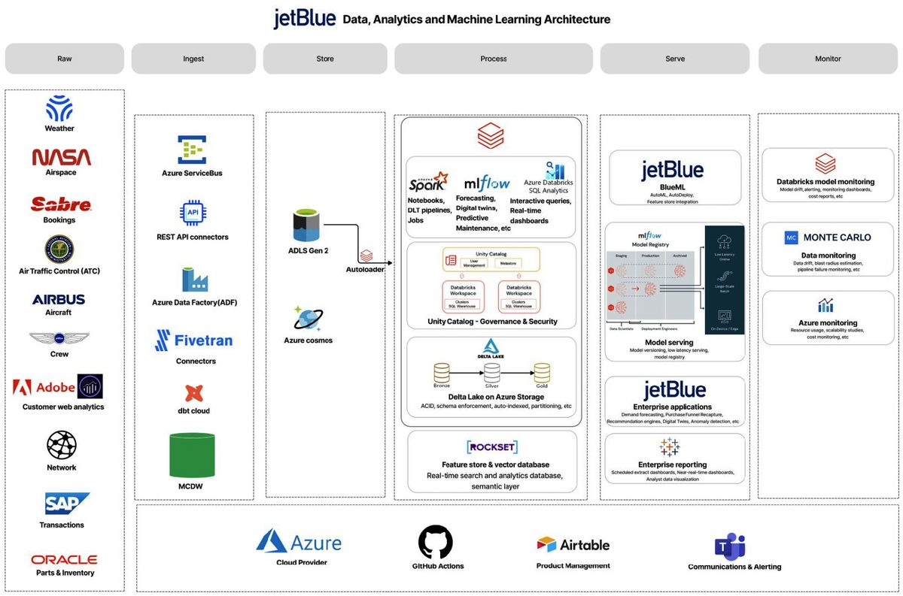
논리적 데이터 흐름의 구성 요소 인벤토리를 살펴보면 다음과 같은 목록을 확인할 수 있습니다(참고: 다이어그램 우측의 모니터 기능과 하단의 지원 기능은 시스템의 데이터 엔지니어링 기능이라기보다는 주로 소프트웨어 처리와 관련되어 있으므로 생략했습니다):
- 원시(원시 존 데이터):
- 기상(Weather), NASA(공역), Sabre(예약), 항공 교통 관제(ATC), AirBus(항공기), 승무원(Crew), Adobe(고객 웹 분석), 네트워크, SAP(트랜잭션), Oracle(부품 및 재고)과 같은 수많은 원시 데이터 입력 소스가 소비됩니다.
- 수집(브론즈 존 데이터):
- 정규화되었지만 여전히 비교적 원시 상태인 데이터의 수집은 Azure Service Bus, REST API(커넥터), Azure Data Factory(ADF), Fivetran(커넥터), DBT Cloud 및 MCDW(데이터 웨어하우스)를 통해 제공됩니다.
- 데이터 저장은 Azure Data Lake Storage(ADLS) Gen 2, Databricks Autoloader 및 Azure Cosmos DB를 통해 모든 변환된 브론즈 데이터를 보존합니다.
- 처리(실버 존 데이터):
- 노트북, 파이프라인, 작업은 노트북이 포함된 Databricks Spark, Delta Live Table(DLT) 파이프라인 및 Databricks 작업을 통해 데이터를 내부적으로 처리하는 데 사용됩니다.
- 예측, 디지털 트윈, 예지 정비(Predictive maintenance)는 MLflow, 커스텀 소프트웨어 등을 통해 제공되는 서비스입니다.
- 대화형 쿼리 및 실시간 대시보드는 Azure Databricks SQL Analytics의 빅데이터 서비스입니다.
- 처리(골드 존 데이터):
- 메타데이터 거버넌스 및 보안 기능은 Databricks Unity Catalog를 통해 제공됩니다.
- ACID 트랜잭션, 관계형 스키마, 자동 인덱싱 및 파티셔닝은 일반적으로 Azure Delta Lake에서 제공하는 데이터 웨어하우스 기능 또는 델타 레이크 기능입니다.
- 실시간 검색, 분석 및 시맨틱 계층을 위한 피처 저장소(Feature Store)는 매우 빠른 확장 가능 데이터 캐시로, 이 사례에서는 Rockset의 인메모리 SaaS DB를 통해 제공됩니다.
- 서비스(소비 존 데이터):
- 변환은 BlueML 커스텀 애플리케이션의 AutoML, AutoDeploy 및 피처 저장소 통합을 통해 제공됩니다.
- 변환은 MLflow의 Model Registry, 서빙 및 버전 관리에 의해 운영상 계약된 모델을 통해서도 적용됩니다.
- 맞춤형 도구를 통해 다양한 비즈니스 도메인을 위한 분석 애플리케이션이 생성됩니다: 커스텀 엔터프라이즈 애플리케이션(수요 예측, 구매 퍼널 리캡처, 추천 엔진, 디지털 트윈, 이상 감지 등).
- 소비자, DataOps, DevOps 및 Ops를 위한 대시보드는 커스텀 엔터프라이즈 보고(예: 예약된 추출 대시보드, 실시간 대시보드, 분석가 시각화)를 통해 제공됩니다.
앞선 실제 사례에서 얻을 수 있는 주요 시사점은 처리(Process) 단계에서 애플리케이션/소비자가 데이터를 분석할 수 있도록 비교적 원시적인 브론즈 데이터 세트로부터 소비 가능한 데이터 세트를 큐레이션하기 위해 실버 및 골드 데이터 세트가 데이터 먼징(Data munging){https://packt-debp.link/X6bpE6}을 거치는 것으로 보인다는 점입니다. 데이터 팩토리 모범 사례를 적용하여 서로 다른 클래스의 데이터 세트가 결코 서로 섞이지 않도록 해야 합니다. 처리 단계에서 이러한 명확한 분리가 이루어지지 않으면 복잡성이 발생하여 분석 중에 두 클래스의 데이터가 혼합되어 잘못된 결과를 초래할 수 있습니다.
그렇다고 해서 젯블루 IT 아키텍트들이 설계하고 여기에 묘사된 훌륭한 솔루션의 가치가 폄하되는 것은 아닙니다. 이 솔루션은 그들의 비즈니스 요구사항을 충족하도록 구축되었으며 우리가 아키텍처에 채택한 원칙처럼 데이터나 다운스트림에서 농축된 데이터를 데이터 제품으로 취급할 필요는 없었습니다. 데이터가 제품으로 간주되는 데이터 메시 원칙이 적용되었습니다. 논리 아키텍처에서 우리는 내려진 선택들이 이론적인 것이 아니라 비즈니스 현실에 기반을 두고 있음을 봅니다. 실용적인 선택이 이루어져야 했습니다. 또한 젯블루 논리 아키텍처에서는 도구의 기능 세트가 아니라 도구 자체가 관심의 중심이 될 때 전달되는 구성 요소 아래에 기능이 종종 식별됨을 알 수 있습니다.
이러한 기능들이 데이터 흐름에 어떻게 도입되고 서드파티 도구, 기술 또는 Azure 클라우드 서비스에 의해 어떻게 처리될 것인지는 덜 명확합니다. 엔지니어와 솔루션의 소유자/이해관계자에게 메시지를 전달하는 데 필요한 것만 정확히 명시해야 하므로 논리 아키텍처에서 드러나는 세부 수준에 대해 기꺼이 타협할 수 있어야 합니다. 일부 아키텍트는 아키텍처 설계 프로세스의 이 시점에서 다음과 같은 엔터프라이즈 아키텍처 도구를 사용합니다:
- BOC Group의 ADOIT {https://packt-debp.link/qYHNVV}
- Ardoq {https://packt-debp.link/2TGV6w}
- Avolution의 Abacus {https://packt-debp.link/zM6aND}
- Bizzdesign의 Enterprise Studio {https://packt-debp.link/AiyFx6}
- EA Essential (오픈 소스) {https://packt-debp.link/KD81Bq}
- Mega의 HOPEX {https://packt-debp.link/oCX2XT}
- LeanIX의 Enterprise Architecture Management (EAM) {https://packt-debp.link/rCY3na}
- OrbusInfinity {https://packt-debp.link/sKz6Xx}
- Planview의 Planview Portfolios {https://packt-debp.link/oKIQoI} (구 Planview Enterprise One)
- Software AG의 Alfabet Enterprise Architecture Management {https://packt-debp.link/y6TZaC}
- Sparx Systems의 Enterprise Architect {https://packt-debp.link/xIp3vJ}
이러한 도구 중 하나를 사용하면 변경 사항이 발생할 때 물리 아키텍처 정의를 정확하고 쉽게 유지 관리할 수 있는 드릴다운 매핑을 제공하는 데 도움이 됩니다. 또한 벤더 도구 중심의 편향을 없애줍니다. 도구는 상위 수준의 1페이지 논리 다이어그램을 어지럽히지 않으면서도 대규모 솔루션에 필요한 세부 수준을 관리하는 데 도움이 됩니다. 예산이 허락한다면 이러한 도구에 지출된 비용은 충분히 가치 있는 투자가 될 것입니다. 또한 알아두어야 할 점은 누군가는 아키텍처 모델링 프로세스의 교육자 및 집행자로 지정되어야 한다는 것이며 이러한 도구 중 일부는 그 과정이 꽤 번거로울 수 있습니다.
이미 알고 계시겠지만 아키텍트들은 자신의 그림, 특히 도구에 매료될 수 있습니다. 따라서 도구 선택이 싸울 가치가 없는 논쟁이 되기 전에 모든 사람의 의견을 일치시키십시오! 역량에 집중하십시오. 다음 섹션에서는 이에 대해 자세히 설명하겠습니다.
수집 존의 상세 역량
수집 존은 개념 아키텍처에 정의된 개념적 원시 존의 다양한 인스턴스로 구성됩니다. 이 책의 이번 장에서는 역량이 기능에 매핑될 것입니다. 수집 존의 전체 출력이 다운스트림 변환 존에서 사용되는 브론즈 데이터가 되므로 ETL 파이프라인과 브론즈 데이터 표준이 논의될 것입니다.
ETL 데이터 파이프라인
솔루션을 위해 평가해야 하는 논리 아키텍처의 기능들이 있습니다. 파이프라인 팩토리의 데이터 흐름에서는 통합이 매우 중요합니다. 강력한 통합 블루프린트를 촉진하는 데 필요한 기능을 갖춘 벤더 도구 기반 접근 방식은 개발 속도를 높이고 개발 딜리버리 일정을 단축할 수 있습니다. 그렇다면 다음과 같은 질문을 던질 수 있습니다:
- 몇 가지 데이터 통합 모범 사례는 무엇인가?
- 그렇다면 솔루션에 필요한 전자 데이터 교환(EDI) 기능으로 무엇을 권장하는가?
이러한 질문에 대한 답을 찾아보겠습니다.
몇 가지 데이터 통합 모범 사례
데이터 통합은 여러 소스의 데이터를 결합하는 프로세스입니다. 여기에는 다양한 시스템, 애플리케이션, 데이터베이스, 파일, 파이프라인 등으로부터 수많은 데이터를 추출하는 작업이 포함됩니다. 이는 대량, 스트리밍, 이벤트 기반이거나 발행/구독 게이트웨이에 의해 지원될 수 있습니다. 인터페이싱 후 데이터는 데이터 웨어하우스, 데이터 레이크 또는 다른 시스템과 같은 대상 위치로 논리적으로 로드됩니다. 이 분야에서 제공되는 중요한 도구들의 몇 가지 기능을 살펴보는 것이 가장 좋습니다. 다음은 살펴볼 만한 훌륭한 서드파티 도구들입니다:
- Airbyte
- Alteryx
- Dell Boomi
- Informatica
- Integrate.io
- Jitterbit
- Matillion
- MuleSoft
- SnapLogic
- Stitch
- Workato
각 도구마다 고려해야 할 기능이 있으므로 이러한 도구들을 다음에 더 자세히 살펴봅니다. 주의를 기울여야 할 중요한 역량과 기능이 강조되어 있습니다. 우리는 클라우드 제공업체의 특정 제품(예: Azure Data Factory)은 나열하지 않았습니다. 이러한 제품들은 앞선 프로세스에서 선택된 클라우드 아키텍처에 긴밀하게 통합되어 있으며 이식성(Portability)이 없습니다. 우리의 목표는 대체 도구의 역량을 상세히 설명하여 특정 클라우드 서비스 제품이 솔루션의 요구사항을 충족하는지, 아니면 이식 가능한 서드파티 도구가 필요한지 여부를 사용자가 직접 결정할 수 있도록 하는 것입니다.
Airbyte{https://packt-debp.link/PzoOMo}에는 눈에 띄는 여러 기능이 있습니다. 특히 ELT 워크플로 지향 모듈식 아키텍처에는 특정 이벤트를 처리하기 위한 트리거를 개발할 수 있는 작업 자동화 기능이 있습니다. 이를 통해 데이터 오케스트레이션, 모니터링 및 이벤트 스케줄링을 제공할 수 있습니다. 활용 가능한 300개 이상의 내장 통합 기능뿐만 아니라 솔루션의 다른 기능을 제품과 통합하기 위한 커스텀 커넥터 개발 키트(CDK)도 있습니다. 오픈 소스 통합 플랫폼이므로 시간이 지남에 따라 업계의 개발 역량을 활용할 수 있습니다. IaaS 형태의 클라우드뿐만 아니라 온프레미스에서도 실행되므로 하이브리드 또는 멀티 클라우드 솔루션의 엔드투엔드 부품이 될 수 있습니다. ETL 흐름을 완성하기 위해 대상 위치에 배치되는 SQL 데이터 변환 기능이 있습니다. 그리고 하이코드(High-code) 구현은 데이터 엔지니어인 여러분이 솔루션에 필요하다고 구상하는 것을 정확하게 만들 수 있는 뛰어난 유연성을 제공합니다.
Alteryx{https://packt-debp.link/wzsIEa}는 정형, 반정형 및 비정형 데이터를 지원하는 노코드/로우코드 인터페이스입니다. 커넥터 개발을 위한 개방형 API가 있습니다. 고급 AI 및 ML 역량을 통해 데이터를 분석하고 프로필과 통합하여 다운스트림 데이터 통합을 용이하게 합니다. 다양한 소스에 걸쳐 블렌딩된 데이터 도구 및 데이터 분석을 사용할 수 있습니다. 통계 및 예측 모델링 기능을 통해 이상 감지가 쉬워집니다. 간소화된 데이터 준비 기능을 통해 데이터의 양, 깊이 또는 폭이 증가함에 따라 제품을 확장할 수 있습니다. 데이터 변환은 맞춤 설정이 가능하며 코딩/스크립팅된 플러그인을 지원합니다. 이 도구를 사용하면 데이터 분석이 쉬워집니다. 제품의 프레임워크를 통해 커스텀 데이터 거버넌스 및 보안 프로세스를 구현하여 다운스트림 사용이 규정을 준수하도록 보장할 수 있습니다.
Dell Boomi{https://packt-debp.link/D0myii}는 100개 이상의 사전 구축된 커넥터를 특징으로 하며 커스텀 개발 통합을 지원하는 커넥터 SDK를 제공합니다. 재사용 가능한 빌딩 블록과 자동화 가능성을 지원하는 노코드/로우코드 사용자 인터페이스/구성성을 갖추고 있습니다. 이 도구는 PaaS 운영으로 구축되었으며 구축 후 호출하려는 애플리케이션 및/또는 마이크로서비스를 통합하는 API 관리자가 있습니다. 임베디드 AI 역량을 통해 통합을 빠르고 쉽게 구축하고 관리할 수 있습니다. 다양한 워크로드를 처리할 수 있도록 필요에 따라 서비스가 확장됩니다. 엔터프라이즈급 보안 역량이 있으며 고객에게 서비스를 제공할 수 있도록 안정적으로 구축되었습니다. 민주화된 지원 역할을 구현하는 미션이 충족됩니다. 또한 역할 기반 접근 제어(RBAC) 및 팀 기반 개발이 핵심 기능입니다. 다양한 통합, 워크플로, API 및 데이터 모델에 대한 거버넌스를 갖춘 내장된 버전 관리를 통해 수명 주기 관리가 제공됩니다.
Informatica{https://packt-debp.link/3Gk0jg}는 ETL/ELT 기능에 특별히 초점을 맞춘 대규모 마스터 데이터 관리(MDM) 도구 제공업체입니다. 1,000개 이상의 내장 통합 기능이 있습니다. 시장 점유율과 납품 평판 덕분에 데이터 암호화/사용자 인증을 위한 보안 기능이 매우 성숙해 있습니다. 데이터 프로파일링, 데이터 품질/데이터 정제, 데이터 마스킹, 데이터 거버넌스가 두드러진 기능입니다. 이 솔루션은 확장성과 성능이 뛰어납니다. 도입 초기에는 매력적일 수 있지만 규모가 커지면 비용이 엄청나게 많이 들 수 있는 소비 기반 가격 모델도 있습니다.
Integrate.io{https://packt-debp.link/dLrRKl}는 ETL 및 ELT 역량을 갖춘 노코드 데이터 파이프라인 플랫폼을 제공합니다. 사용하기 쉽고 직관적이며 수많은 내장 커넥터를 갖추고 있어 코딩하는 것보다 적은 시간에 포괄적인 데이터 파이프라인을 구축할 수 있습니다. 그 목적은 강력한 기능을 활용하여 단일 인사이트 소스를 만드는 것입니다. 데이터 파이프라인에 대한 노코드 또는 로우코드 UI 편집기를 사용하여 솔루션을 빠르게 생성할 수 있습니다. 또한 다양한 기타 도구에서 데이터를 추출하기 위해 구현하려는 고급 기능을 위한 네이티브 REST API 커넥터가 존재합니다. 동적으로 생성된 클러스터는 유연한 확장 요구사항을 지원합니다. 기본 제공 변환에는 220개 이상의 옵션이 포함되어 있습니다. 무료 데이터 관측성 모니터링 기능을 통해 신뢰성을 높이기 위한 알림을 받을 수 있습니다. 역방향 ETL(Reverse ETL) 기능을 통해 마스터링된 데이터를 다운스트림 사용 사례에 활용할 수 있습니다. 마지막으로 고급 보안 역량은 System and Organization Controls 2(SOC 2)와 같은 인가/인증을 지원합니다.
Jitterbit{https://packt-debp.link/qG2SUm}은 완전한 통합 플랫폼을 제공합니다. 다양한 프로세스를 연결하고 자동화할 수 있는 기능을 제공합니다. 데이터 매핑 및 변환이 지원되는 기능입니다. 워크플로 자동화 및 실시간 데이터 동기화는 팩토리의 다운스트림에서 소비될 때 데이터가 필요한 상태로 만들어 줍니다. API 관리 기능을 통해 프레임워크를 더 큰 시스템에 완벽하게 통합할 수 있습니다. 드래그 앤 드롭 UI로 통합 및 워크플로를 생성하고 관리할 수 있는 로우코드 인터페이스도 존재하여 Jitterbit으로 구축된 엔드투엔드 솔루션을 커스터마이징할 수 있습니다. 워크플로를 자동화하는 데 사용되는 400개 이상의 통합 기능과 기타 서드파티 통합 기능이 있습니다. 이 솔루션은 다양한 SaaS를 레거시 애플리케이션에 연결하는 PaaS 솔루션으로 구축되었습니다. 시작을 위한 노코드 드래그 앤 드롭 애플리케이션 빌더 UI가 있습니다. 엔터프라이즈 보안은 일반 데이터 보호 규정(GDPR), ISO 27001, SOC 1, SOC 2 및 미국 건강보험 양도 및 책임에 관한 법률(HIPAA) 프라이버시/규정 준수를 위한 보안 거버넌스 통합을 지원합니다.
Matillion{https://packt-debp.link/nRoHNE}은 주로 드래그 앤 드롭 UI를 갖춘 ETL 프레임워크 도구입니다. 100개 이상의 커넥터를 사용할 수 있습니다. 클라우드 데이터 웨어하우스 지원에 중점을 둔 클라우드 기반 ETL 플랫폼으로서 인사이트 추출이 가능합니다. 데이터 변환, 통합 및 관측성 기능을 사용하여 대규모 데이터 세트를 지원합니다. 작업 모니터링, 구성 편집 및 기타 GUI 동등 작업을 위한 API 지원이 존재합니다. REST API 커넥터는 수많은 데이터 소스 및 대상과 통합하는 데 사용됩니다. 마지막으로 고급 하이코드 및 로우코드 도구 기능은 데이터 엔지니어링 노력에 가치 있는 것으로 입증되었습니다.
MuleSoft{https://packt-debp.link/GD5tHz} 역시 엔터프라이즈 애플리케이션에 대한 연결을 간소화하는 데 사용되는 ETL 프레임워크입니다. Anypoint Exchange 마켓플레이스의 템플릿과 함께 100개 이상의 기본 제공 커넥터가 포함되어 있습니다. REST, 단순 객체 접근 프로토콜(SOAP) 및 이벤트 기반 API 설계를 위한 API 개발 지원이 제공됩니다. PaaS 클라우드 호스팅 서비스가 프레임워크의 핵심입니다. 클라우드 커넥터/서비스는 기존 Open API Specification(OAS) 또는 웹 서비스 기술 언어(WSDL) 사양을 사용하여 활성화됩니다. MuleSoft는 데이터 엔지니어를 위한 하이코드 올인원 데이터 통합 플랫폼입니다.
SnapLogic{https://packt-debp.link/rhBmSS}은 온프레미스 데이터 소스에 대한 광범위한 ETL/ELT 역량을 갖추고 있습니다. 역방향 ETL 기능을 사용하면 정제되고 최적화된 웨어하우스 데이터를 다른 서드파티 도구로 이동할 수 있습니다. 흐름을 구성하기 위한 드래그 앤 드롭 UI를 사용할 수 있으며 사전 구축된 커넥터가 있습니다. SnapLogic은 클라우드 기반 통합 플랫폼이기도 하므로 구상할 수 있는 하이브리드 호스팅 솔루션에 적합합니다.
Stitch{https://packt-debp.link/0AH5Oo}는 140개 이상의 기본 제공 커넥터를 보유하고 있으며 로우코드 통합을 제공합니다. 내장된 자동화와 경량의 간단한 데이터 수집 기능이 있습니다. 데이터 레이크 및 웨어하우스로 데이터를 로드하는 데 중점을 둔 소스에 대한 ELT 지원이 존재합니다. 시작할 때 유용할 수 있지만 성장함에 따라 데이터 확장 역량에 영향을 미칠 수 있는 ELT 볼륨 기반 가격 책정이 존재합니다. 소규모 기업/볼륨 지원이 집중 타깃 시장입니다.
Workato{https://packt-debp.link/9PWs7f}는 1,000개 이상의 통합 기능을 갖춘 노코드 사용자 인터페이스를 제공합니다. 트리거/액션 자동화는 트리거와 수행할 액션을 정의하는 레시피 기반 통합(Recipe-based integrations)을 통해 고유한 워크플로를 활성화하며 프레임워크 프로비저닝을 위한 시각적 구성 관리 인터페이스를 갖추고 있습니다.
이러한 도구, 프레임워크 및 서비스의 기능은 여러분의 솔루션에 맞게 평가되어야 합니다. 솔루션의 ETL/ELT 기능을 통합할 때 가능한 한 많은 도움을 받고 싶을 것입니다. 복잡한 로직을 위한 하이코드 지원을 원하지만 일반적인 ETL/ELT 로직을 위해서는 로우코드 솔루션이 필요한 경우가 많습니다. 기능적 역량이 뛰어날 때 도구의 운영 기능으로 인해 방해받지 않고 규모, 성능 및 비용 요구사항과 호환되는 도구를 선택해야 합니다. 성공을 거두려면 기능적 역량과 비기능적 역량 모두 솔루션의 기준과 일치해야 합니다. 또한 다른 솔루션 도구의 커넥터 또는 통합 기능은 전반적인 요구사항에 모두 부합해야 하므로 간과해서는 안 됩니다. 마지막으로 존 간에 데이터를 이동하거나 통합 도구에서 디지털 트윈 데이터 세트를 채울 때 역방향 ETL 요구사항을 고려하십시오.
솔루션에 필요한 EDI 기능에 대한 권장 사항
권장 사항에 대해 제기된 질문에 대한 답변은 구매 대 자체 개발에 대한 욕구, 예산 및 통합의 고통 범위에 따라 달라집니다. 어떤 곳은 복잡성이 높은 몇 가지 데이터 통합만 있는 반면, 다른 곳은 복잡성이 낮은 수많은 데이터 통합을 가지고 있습니다. 둘 다 통합의 고통을 가중시킵니다. 모범 사례는 도구와 접근 방식의 최종 후보군에 대한 총비용을 산출하는 것입니다. 개념 아키텍처에서 원하는 역량이 선택한 도구와 함께 전체 솔루션 기능에 존재하는지 확인한 다음 그 결과를 논리 아키텍처에 추가하기만 하면 됩니다.
앞서 언급한 EDI 도구 목록의 주요 기능은 다음과 같습니다:
- 역방향 ETL(Reverse ETL) 기능을 사용하면 이 기능을 지원하지 않는 도구보다 변경 데이터 캡처(CDC) 역량을 더 쉽게 구현할 수 있습니다. CDC 역량은 데이터 존 간에 데이터 세트를 이동할 때 솔루션의 핵심 요구사항입니다. 그런 다음 소비 존에 게시하기 위해 배포 세트로 결합하기 전에 릴리스 세트 내에서 준비합니다. 여기에는 수많은 이동과 동기화가 수반됩니다. 이것이 100% 견고하게 작동하도록 표준 패턴, 테스트 및 규율이 필요합니다.
- 분석가가 프로그래밍에 더 정통해지고 자신의 데이터 분석 공간을 제어하기를 원할 때 사용자 주도 데이터 흐름을 개발하고 유지 관리하기 위한 노코드/로우코드 기능입니다. 이는 그들에게 그것을 가능하게 하는 도구를 제공합니다. 이는 현명한 선택입니다. 분석가들의 성공에 걸림돌이 되는 병목 현상이라는 인식에서 여러분을 벗어나게 해줍니다.
- DevOps/DataOps IT 환경에서 복잡한 데이터 파이프라인과 구성을 지원해야 하는 정교한 데이터 엔지니어를 위한 API 지원입니다.
- 모든 도구에 커넥터/클라우드 커넥터/확장 가능 커넥터 지원이 필요합니다. 그렇지 않으면 제한될 수 있는 기능으로 인해 필요한 전체 역량을 추가하고 포괄할 수 있는 유연성 없이 출시 속도와 성능만 얻게 됩니다.
- 거버넌스 모델을 지원할 수 있을 만큼 기능이 풍부하고 유연한 보안 지원입니다. 이러한 통합 도구는 보안 유연성이 제한되어 통합 보안 설계를 변경하게 만듭니다. 선택한 도구가 특히 온프레미스 소스를 포함하는 클라우드에서 보안 통합의 용이성을 제공하지 못한다면, 이점이 그 고통을 능가하는지 신중하게 생각하십시오.
- 모든 도구에서 신뢰성, 가용성, 확장성 및 성능(RASP) 문제가 발생합니다. 도구의 기능이 이와 관련하여 필요한 역량을 어떻게 지원하는지가 중요합니다. 도구 자체의 비용뿐만 아니라 논리 아키텍처로서 도구의 전체 통합 비용을 TCO에 반영하십시오. 이러한 도구의 고가용성(HA) 공간은 비용을 즉시 두 배 또는 세 배로 늘릴 수 있습니다!
- 규정 준수(Compliance) 감사 및 표준 검증은 규제를 받는 일부 비즈니스에 중요합니다. 선택한 EDI 도구는 비즈니스 요구사항에 매핑되는 기능을 제공해야 합니다. 훌륭한 도구라면 장애 및 데이터 품질에 대한 기본적인 포렌식 분석을 위한 최소한의 감사 기능을 지원해야 합니다. 일부 도구는 이 점이 매우 취약하므로 부가가치 통합을 통해 적극적으로 보강해야 합니다.
한 도구를 사용할지 다른 도구를 사용할지 결정하는 결정적 요인은 도구의 비용이나 도구 벤더의 위험일 수 있습니다. 이는 결정에서 결코 사소한 요소가 아닙니다. 참고: 클라우드 제공업체는 해당하는 클라우드 제공업체 서비스 락인을 동반하면서 이러한 도구의 기능 하위 집합을 구현하고 있습니다. 따라서 실제로 위험을 숨기고 있는 더 저렴한 대안을 조심하십시오. 도구, 제공되는 기능 및 벤더 프로필 전반에 걸쳐 실사를 수행하십시오. 그런 다음 결과를 필요한 기능에 매핑하는 동시에 사용하지 않을, 그리고 사용해서는 안 되는 도구의 기능을 식별하십시오.
이러한 지침이 없으면 벤더는 IT 환경 전반에서 사용 공간을 늘리고 여러분의 아키텍처를 장악하게 될 것입니다. 그것이 바로 그들이 하는 일입니다! 그들은 이익을 위해 사업을 합니다. 지금 경계하십시오: 벤더가 일단 발을 들여놓으면 그 발판을 활용하여 IT 환경을 더 많이 확보하고 IT 예산을 잠식할 것입니다! 벤더와 그들의 도구를 제한된 용도로 설정하고 결정한 바를 고수하십시오.
데이터가 수집되고 아키텍처의 존 경계에서 데이터가 어떻게 처리될지 명확한 개념을 잡았다면 이제 브론즈 데이터 표준을 정의할 준비가 된 것입니다. 다음 섹션에서는 브론즈 데이터 표준에 대해 자세히 살펴볼 것입니다. 우리가 제시하는 논리 아키텍처 모범 사례는 솔루션 전반에 걸쳐 정규화된 브론즈 데이터의 품질이 유지되는 것에 달려 있기 때문입니다.
브론즈 표준 데이터 세트
원시 존에서는 브론즈 데이터 표준이 가장 먼저 정의되고 적용됩니다. 이는 데이터 변환, 정규화, 데이터 농축(Enrichment), 매핑, 메타데이터 카탈로그화, 그리고 데이터 세트를 데이터 레이크에 최종 배치하는 활동을 주도합니다.
구현에 대해 특정한 결정을 내려야 한다는 점을 유의해야 합니다. 첫째, 브론즈 존에 호스팅되는 데이터의 초기 데이터 형식을 결정해야 합니다. 예를 들어 Parquet 형식의 파일 또는 Avro 파일로 직렬화된 데이터가 있습니다. 그런 다음 자주 접근하는 데이터에 대해 Databricks Delta 테이블을 사용하는 등 성능 향상 기술을 적용하고자 할 것입니다. 또한 데이터에 객체 형태로 접근할 수 있도록 데이터 직렬화에 사용 가능한 여러 옵션을 살펴보아야 합니다. 입력 볼륨이 증가함에 따라 데이터 조직화 방식이 시간에 따라 변경될 것으로 예상할 수 있습니다. 다운스트림 데이터 처리 코드가 안정적으로 유지되기 위해 사용해야 하는 인터페이스를 보존하면서 브론즈 데이터를 재구성할 준비를 하십시오.
이벤트와 활동은 여러 파이프라인에 걸쳐 오케스트레이션된 이벤트 큐 주도 활동으로 유도됩니다. 이러한 파이프라인은 병렬로 실행되며 인프라에서 최소한의 비용으로 최대한의 성능을 끌어내기 위해 고도의 조율이 필요합니다. 과거의 경험을 바탕으로, 다음 섹션에서는 모범 사례의 배경이 될 몇 가지 관찰 사항과 교훈을 소개합니다.
빅데이터 처리 복잡성이 데이터 파이프라인 개발에 어떤 영향을 미치는가?
하둡(Hadoop)에서 방대한 데이터 처리 팩토리를 구축할 때 작업 스케줄링을 최적화하고 상위 레벨 작업 호출에 대한 로우 레벨 작업 완료를 추적해야 하는 필요성에 직면했습니다. 쉬운 작업처럼 들리겠지만 전혀 그렇지 않았습니다!
선택한 모니터링 도구는 Pepperdata{https://packt-debp.link/CGR1U3}였습니다(나중에 HDP Insight로 변경되었다가 다시 Pepperdata로 돌아왔는데, 이는 긴 이야기입니다). Pepperdata는 로우 레벨 Hortonworks Data Platform(HDP) 클러스터 작업을 모니터링하기 위한 우수한 도구였지만 작업 추적 기능은 작업이 시작된 상위 레벨 작업의 컨텍스트에서 로우 레벨 작업의 뷰를 제공하는 역량이 부족했습니다. 대시보드를 보았을 때 조율되지 않은 무의미한 정보들의 더미 같았습니다. 매핑이 없었기 때문에 문제를 해결하기 위한 어떤 조치도 명확하지 않았습니다. 그 결과는 혼란뿐이었습니다. 필요했던 것은 로우 레벨 작업의 원시 데이터를 시작점이 된 상위 레벨 호출로 분할해야만 얻을 수 있는 대시보드의 명확성이었습니다. 이는 분석 팀에 데이터 릴리스를 엔드투엔드로 큐레이션하고 제공하기 위해 설정된 데이터 SLA를 충족하는 데 필요했습니다.
로우 레벨 작업은 며칠 동안 수천 개의 하위 작업으로 실행될 수 있으며 그중 어느 하나라도 실패하면 상위 레벨 작업이 비정상 종료(Abend)될 수 있다는 점에 유의하십시오. 실패가 발생하면 그 모든 시간과 실행 비용이 허공으로 날아가기 때문에 이는 큰 문제였습니다. 수년에 걸쳐 작업 코드가 유기적으로 증가함에 따라 5년 전에는 5분 걸리던 작업이 오늘날에는 50분이 걸릴 수도 있었습니다. 이는 시간이 지남에 따라 데이터가 증가하면서 데이터 수집량이 늘어났기 때문입니다.
여러분은 체크포인트를 구현하기 위한 모범 사례가 적용되었는가라고 질문할 수 있습니다.
체크포인트 구현 여부 확인
그에 대한 대답은 아니오(No)였습니다. 체크포인트는 구현되지 않았으며 설상가상으로 매주 처리해야 하는 15억 건의 원시 레코드를 처리하는 주당 문자 그대로 950개 이상의 인스턴스 실행이 발생하는 수백 개의 상위 레벨 작업에 걸쳐 이러한 부실한 설계 패턴이 존재했습니다. 마지막이자 가장 중요한 문제는 월말 후 1주일 이내에 전체 데이터 팩토리가 완료되어야 한다는 점이었습니다. 데이터가 도착할 때마다 한 달 내내 점진적으로 처리하는 것이 필수적이었으며 플랫폼이 온프레미스에서 실행되었기 때문에 오토스케일링은 꿈도 꿀 수 없었습니다. 일정을 놓치면 최종 사용자 데이터 배포가 중단되었습니다.
대부분의 비즈니스와 마찬가지로 고객들은 페널티로서 계약에 따라 구독 비용 환불을 요구할 것입니다. 이 처리는 HDP 2.6.5를 실행하는 여러 서버 인스턴스에 걸쳐 3,500개 이상의 코어를 소비하고 있었습니다. 요약하자면 하위 작업의 실패는 올바르게 보였던 자바 가상 머신(JVM) 구성 변경으로 인해 발생한 것으로 밝혀졌지만 작업 처리 범위의 데이터가 너무 커졌기 때문에 적절한 데이터 스트레스 테스트 없이는 때때로 실패했습니다. 수백 개의 다이얼 중에서 어떤 다이얼이 하위 작업 실패를 유발하는지 파악하려는 것과 같았습니다. 그리고 돌려야 할 다이얼이 너무나 많았습니다! 상위 레벨 작업이 세 번의 상위 레벨 재시도 시도 후 비정상 종료되면서 시스템 전체에 연쇄적인 영향(Cascade)이 발생했습니다. 작업이 마침내 완료될 때까지 작업이 버려지면서 CPU 사이클이 엄청나게 낭비되었습니다. 근본 원인을 찾으려는 노력은 시스템의 산발적인 불안정성을 해결하는 데 큰 도움이 되겠지만 수백 가지 작업 유형과 이러한 작업 유형의 거의 천 개에 달하는 인스턴스 전반에 걸쳐 수정 사항을 서로 다르게 적용해야 했습니다. 데이터 볼륨 증가로 인한 메모리 사용량이 문제의 주요 원인이었습니다.
데이터 엔지니어이자 컴퓨터 과학자로서 가설을 세운 다음, 모든 오류를 배제하고 가설에 대한 결정적인 확증을 얻기 위해 테스트를 수행한 후 조치를 취해야 합니다. Pepperdata 컨설팅 팀은 제품을 가장 잘 사용하는 방법을 보여주었고 컨설팅 부서에서 로우 레벨 실패가 발생했을 때 이를 식별하는 데 도움이 되는 몇 가지 새로운 실시간 대시보드를 구축할 것을 제안했습니다. 상세 로그 캡처를 활성화한 다음 동적으로 로그 레벨을 높이고 마지막으로 모든 오류가 제거될 때까지 하위 작업을 다시 실행하는 것이 도움이 되었습니다. 하둡 구성의 복잡성과 HDP 플랫폼의 튜닝 정확성에 대한 불명확한 지식, 그리고 점차 줄어드는 플랫폼 지원(Hortonworks HDP Hadoop은 단종된 제품이므로 확실히 레거시였음)으로 인해 해결해야 할 거대한 문제들이 발생했습니다.
Pepperdata 도구는 복잡한 분산 빅데이터 엔진이 제시한 블랙박스를 명확히 규명(Demystify)하는 데 도움이 되었습니다. 솔루션이 미래 경쟁력을 갖추지 못했다면 결국 실패를 인정하고 미래 경쟁력이 있는 새로운 솔루션으로 이동해야 할 때임을 정당화해야 할 것입니다. 오늘날 고통을 주는 원인이 무엇인지 모른다면 여러분이 지켜보는 가운데 도구와 플랫폼이 붕괴됨에 따라 시간이 지날수록 문제를 해결하기가 더욱 어려워질 뿐입니다. 다음과 같은 핵심 모범 사례를 적용해야 합니다…
논리 아키텍처 선택에 따른 기술 부채를 추적하라!
논리적 구성 요소가 일몰(Sunsetting) 단계에 진입하는 것을 보게 되면 데이터 및 소프트웨어 분야의 도메인 전문가(SME)가 대기하도록 하십시오. 시간이 지남에 따라 여러분 아래에서 모든 것이 무너지기 시작할 것입니다!
구성 옵션과 그것이 솔루션에 미치는 영향을 파악하라!
구성은 코드만큼 중요합니다! 구성이 제어되고, 코드와 함께 체크인되며, 코드 실행 전에 테스트되는지 확인하십시오. 모범 사례는 서비스 관리의 모든 측면에서 사용할 수 있는 구성 관리 프로세스, 거버넌스 및 운영 API를 갖추는 것입니다. 구성 품질은 데이터 품질과 데이터 파이프라인 처리량에 영향을 미칩니다. 파이프라인 처리가 시작될 때와 가능한 경우 각 단계마다 구성 가정 테스트(Configuration assumption test)를 구축하십시오. 구성이 마법처럼 알아서 잘 작동할 것이라고 생각하지 마십시오.
일부 DevOps 엔지니어는 JVM 메모리 제한, 가비지 컬렉터 또는 해당 설정, 마지막으로 분산 엔진의 병렬 처리 또는 재시도 제한을 늘리고도 여러분에게 알리지 않을 수 있습니다. 이 모든 것은 팩토리 내에서 데이터 배포를 위한 계약에 영향을 미칩니다. 또한 논리적 구성 요소(또는 서드파티 도구)가 일몰 단계에 진입하고 시간이 지남에 따라 무너지기 시작하는 것을 볼 때 데이터 및 소프트웨어 엔지니어링 분야의 도메인 전문가가 상시 대기하도록 하십시오.
다음 섹션에서는 변환 존의 역량에 대해 자세히 설명하겠습니다.
변환 존의 상세 역량
변환 존은 개념 아키텍처에 정의된 개념적 브론즈, 실버 및 골드 존의 다양한 인스턴스로 구성됩니다. 이 책의 이번 장에서도 역량은 계속해서 기능에 매핑될 것입니다. 변환 존의 전체 출력이 다운스트림 소비 존에서 사용되는 소비 가능한 데이터 배포 세트가 되므로 데이터 품질 기능, 데이터 레이크 및 데이터 웨어하우스 접근, 실버 데이터 및 골드 데이터 표준이 논의될 것입니다.
데이터가 다운스트림으로 전파되기 전에 정규화되고 변환되어야 합니다. 이러한 변환 단계 없이 평범한 기존 원시 데이터를 그대로 유지한 다음 제자리에서 처리할 수 있다는 환상은 순진한 생각에 불과합니다. QA 프로세스가 적용되고 마스터링을 위해 조정, 변환, 농축하는 수정 단계가 수행되며 시간 민감도로 인해 더 이상 가치가 없을 때 롤오프되기 전까지 원시 데이터는 쓰레기에 불과합니다. 또한 데이터 표준, 형식 및 처리 소프트웨어가 변경됨에 따라 시간이 지남에 따라 쌓이게 될 기술 데이터 부채에 대해 언급할 필요가 있을까요? 해당 원시 데이터와 함께 가장 단순한 품질 메트릭 및 조정 사항조차 보존되지 않는다면 어떻게 될지 상상해 보십시오. 부풀려진 데이터는 확실히 예산을 고갈시킬 것이며 데이터 레이크가 아니라 데이터 늪(Data swamp)을 구축하게 될 것입니다. 이를 해결하려면 이전 섹션에서 논의한 운영 계약이 품질 계약도 강제하므로 데이터 품질을 위한 기능을 추가해야 합니다.
데이터 품질 기능
데이터 품질은 주관적이면서도 객관적인 목표입니다. 소비자가 처리 시점이나 제공 가능한 데이터 세트로 출력을 렌더링하는 동안 시스템이 알지 못하는 정보 컨텍스트와 시맨틱을 알고 있을 수 있다는 점에서 주관적입니다. IT 솔루션 구현자가 알지 못했던 점으로 인해 데이터가 주관적으로 잘못될 수 있습니다.
이는 과거 매장 판매 시점 정보 관리(POS) 데이터가 리테일 데이터 애그리게이터에 제공되었을 때의 경험을 떠올리게 합니다. 겉보기에는 데이터가 좋아 보였고 심지어 올바르게 표시되었습니다. 그러나 품목의 판매 수량에 대해 작지만 여전히 유의미한 과대표시가 나타나 이전 월별 데이터와의 편차가 발생했습니다. 훌륭해 보였던 데이터는 사실 일부 문제가 되는 데이터를 숨기고 있었습니다. 일반적으로 미국과 유럽 전역에서 판매되는 수천 개의 이러한 품목에 걸쳐 올바른 POS 데이터가 수신되었습니다. 그러나 전체 총합 수치 뒤에 숨겨진 것은 프랑스의 단일 소매점에서 문제의 품목을 200개 이상 판매했다는 작은 이상 수치였습니다. 이는 결코 불가능한 일이었습니다! 데이터 수신 오류였을까요?
감지된 이상 징후에 대해 해당 소매업체에 문의한 결과, 소매업체는 특정 의심스러운 출처로부터 문제의 품목을 대량으로 공급받았음을 인정했습니다. 더 깊이 파고든 결과 출처는 출처를 알 수 없는 제품 위조업자로 밝혀졌습니다. 남아 있는 암시장(Gray market) 품목은 재고에서 제거하여 폐기해야 했으며 월말 마감 전에 원시 데이터 세트(실제 제품 판매량 포함)를 재전송해야 했습니다. 이상 징후를 포착한 것은 사람이 완전히 조사하고 해결해야 했던 데이터 트렌드 검사였습니다. 기존의 어떤 IT 기반 QA 검사도 이 오류를 잡아내지 못했습니다. 우리가 가진 유일한 지표는 전월 대비 데이터 트렌드 편차뿐이었습니다. 데이터는 올바르게 수신되었습니다 - 정상! 다만 비즈니스/법적 관점에서 틀렸을 뿐입니다! 여기서 얻은 교훈은 데이터 트렌드 이상 징후가 명시적인 IT 데이터 유효성 검사 검사만큼이나 중요하다는 점이었습니다. 데이터 메타데이터와 통계를 확인하는 과정에서 최고의 데이터 QA 지표 중 일부가 도출됩니다.
이러한 데이터 이상 징후는 여전히 포렌식 해결, 약간의 탐정 작업, 최종적인 데이터 수정 및 재작성을 통해 이상 징후를 올바르게 해결해야 합니다. 데이터 팩토리에서는 데이터와 그 트렌드가 비즈니스 신뢰성 테스트를 통과하는 것이 가장 중요합니다. 그러나 다음과 같은 질문이 발생합니다.
주관적인 QA 검증이 확장될 수 있는가?
이 질문에 대한 대답은 다음과 같습니다: 아니오(No)!
휴먼 인 더 루프(Human-in-the-loop) 상호작용은 통계 및 AI/ML 기반 이상 감지, 데이터 랭글링(Data wrangling), 프로파일링, 심지어 수정 조치를 위한 추천으로 대체되어야 합니다. 우리는 마스터 데이터 관리(MDM) 솔루션이 수만 개는 아니더라도 수십 개의 인간 데이터 교정 워크플로 작업으로 인해 붕괴되는 것을 보았습니다. IT 구현자는 요구사항에 맞춰 구축했을 때 비즈니스에서 제시한 데이터 QA 문제를 해결했다고 생각했을지 모르지만 품질 테스트는 엔지니어에게는 과학인 동시에 통계학자에게는 예술에 가깝습니다. 고품질 QA를 구축한다고 해서 몇 가지 수동 조정만으로 문제를 해결할 수 있다는 뜻은 아닙니다. 그렇지 않습니다!
트렌드 이상 징후는 감지할 수 있는 전체 이상 징후 세트 중 단순한 한 종류에 불과합니다. 데이터 트렌드에 영향을 미치는 월별 품목 판매량 편차나 한 연말연시 시즌에서 다음 해로 이어지는 캘린더 기반의 편차를 고려해 보십시오. 트렌드 내에 유사한 트렌드가 설정됩니다. 3일 동안 지속된 정전으로 인해 특정 지역에서 손전등 판매가 급증하는 것과 같은 실제 사건으로 인해 설명 가능한 왜곡된 데이터는 어떨까요? 시스템이 확장되고 대규모 환경에서 지속적으로 성능을 발휘하려면 오탐(False positive)과 미탐(False negative) 역시 훨씬 더 스마트한 방식으로 해결되어야 합니다. 여러분은 미래의 객관적 및 주관적 데이터 품질 요구를 해결할 수 있어야 합니다.
데이터 품질 문제를 감지하고 수정하려면 자동화된 QA와 통계적 이상 감지를 적용해야 한다
모든 데이터 품질 솔루션의 중요한 기능에는 대부분 도구 선택이 포함됩니다. 여기에는 몇 가지 세부적인 고려가 수반됩니다. 다음은 솔루션 및/또는 설계 도구 선택의 일환으로 데이터 품질 기능을 선택할 때 고려해야 할 여러 기능입니다:
- 인공지능(AI) 및 머신러닝(ML)은 여전히 필요한 인간의 판단과 함께 QA 프로세스를 확장할 수 있도록 품질 자동화를 가능하게 합니다.
- 클러스터링(Clustering)은 지능형 ML 기법을 사용하여 유사한 값을 병합하고 중복을 최소화하는 등의 작업을 포함합니다.
- 데이터 정제(Data cleansing)는 중복 레코드 제거, 누락된 값 처리, 부정확하지만 수정 가능한 데이터 포인트 수정을 포함합니다.
- 데이터 디스커버리(Data discovery)는 다른 컨텍스트에 묻혀 있는 데이터를 찾을 수 있도록 합니다.
- 데이터 농축(Data enrichment)은 기본 데이터 세트를 보강하기 위해 외부 소스의 대체 데이터를 추가하는 것을 포함합니다.
- 데이터 패싯팅(Data faceting)은 패싯 필터(Faceted filter)를 통해 탐색하고 분석할 수 있도록 합니다.
- 데이터 거버넌스(Data governance) 통합은 불가피한 인간의 수정이나 머신러닝에 필요한 판단을 통해 현재 및 미래의 데이터 세트에 실행 가능한 변경 사항을 적용합니다.
- 데이터 마스킹(Data masking)은 데이터의 합성적이지만 현실적인 버전을 만드는 방법입니다. 민감한 데이터는 보호되지만 결과 데이터는 솔루션에서 여전히 사용할 수 있습니다.
- 데이터 모니터링(Data monitoring)은 데이터 세트 전반의 데이터 품질 메트릭을 추적합니다. 이상 감지 알림 및 메타데이터 계통 기록뿐만 아니라 변환을 위한 데이터 품질 통계를 지원합니다.
- 데이터 프로파일링(Data profiling)은 품질, 감지된 이상 징후 및 통계적 데이터 패턴에 대한 일반적인 이해와 관련된 데이터 수확 인사이트를 제공합니다.
- 데이터 품질 관리(DQM)는 데이터 솔루션 품질의 프로세스 지원 및 대시보드 기능을 제공합니다.
- 데이터 신뢰 점수(Data trust score)는 전반적인 데이터 품질, 신뢰 및 확신을 나타내는 단일 집계 메트릭입니다.
- 데이터 유효성 검사(Data validation)는 데이터가 유효한 것으로 레이블이 지정되기 전에 준수해야 하는 특정 규칙, 표준 및 패턴을 정의합니다.
- 무한 실행 취소(Undo) 및 다시 실행(Redo)은 이후의 QA 단계에서 이전에 감지되었거나 가정된 오류의 존재를 입증하거나 반증함에 따라 QA 흐름을 재설정하는 기능입니다.
- 모니터링 및 보고(Monitoring and reporting)는 데이터 정확성, 완전성, 누락된 열, 대량 수신 오류와 같은 표준 메트릭을 사용하여 지속적인 모니터링/보고 기능을 제공하며 선제적인 데이터 문제 관리를 목표로 합니다.
- 조정(Reconciliation)은 데이터 세트의 엔티티를 다른 데이터 세트에 있을 수 있는 다른 엔티티와 일치시킬 수 있도록 합니다.
- 레코드 중복 제거(Record de-duplication)는 중복 데이터의 제거를 포함합니다.
- 관계 매핑(Relationship mapping)은 엔티티를 추출, 검증 및 매핑하는 역량을 갖춘 주소 및 엔티티 유효성 검사와 같은 기능을 포함합니다.
- 확장성 및 성능(Scale and performance)은 예상되는 데이터 볼륨에 대해 대규모로 QA 프로세스를 처리하기 위한 데이터 품질 관리(DQM) 솔루션의 기능입니다.
앞선 목록을 보면 의심할 여지 없이 다음과 같이 묻고 싶을 것입니다: 이러한 기능 개발을 어떻게 앞서 시작할 수 있는가? 여기에 나열할 만한 훌륭한 도구들이 있습니다. 필요한 이러한 기능의 측면을 다루는 도구들을 살펴보십시오. 이 모든 기능이 단일 도구에 들어 있지는 않습니다. 주요 벤더와 덜 알려진 벤더로 구분되었지만 두 그룹 모두 고려할 가치가 있습니다.
다음은 주요 데이터 품질 도구 제품의 몇 가지 예입니다:
- Ataccama ONE {https://packt-debp.link/syv4jM}
- Datiris Profiler {https://packt-debp.link/lGYntX}
- IBM InfoSphere Information Server {https://packt-debp.link/edd8rf}
- Microsoft Data Quality Services (DQS) {https://packt-debp.link/1Uq2Yu}
- Oracle Enterprise Data Quality {https://packt-debp.link/HMRAJm}
- PiLog Intelligence Data Quality Management {https://packt-debp.link/nD3tYq}
- SAS Data Quality {https://packt-debp.link/eoWBxO}
- Syniti Knowledge Platform {https://packt-debp.link/I1gyHn}
기타 데이터 품질 도구는 다음과 같습니다:
- Collibra Data Intelligence Cloud {https://packt-debp.link/ibiDKY}
- Datactics Self-Service Data Quality Platform {https://packt-debp.link/ZQF8qF}
- DataRobot AI Platform {https://packt-debp.link/G6NI11}
- Experian Aperture Data Studio {https://packt-debp.link/4tpOOW}
- Informatica Data Quality (IDQ) {https://packt-debp.link/izlrla}
- Precisely Data360 (Trillium) {https://packt-debp.link/hE64uu}
- SAP Data Services {https://packt-debp.link/TO0gT3}
- Pitney Bowes의 Spectrum Technology Platform {https://packt-debp.link/NSDQGy}
- Talend Data Fabric {https://packt-debp.link/PM2pJa}
- TIBCO EBX {https://packt-debp.link/qo1yZt}
보시다시피 데이터 품질 요구사항을 얼마나 잘 해결하는지 보여주기 위해 기회를 다투는 벤더들이 많이 있습니다. 실사를 수행하려면 이 섹션의 다양한 벤더 사이트 링크를 검토하십시오. 일부 기업은 최상위 벤더 도구를 필요로 하고, 다른 기업은 덜 알려진 틈새 기업 제품으로 신뢰할 수 있는 솔루션을 구성할 수 있으며, 또 다른 기업은 작게 시작하여 나중에 더 큰 벤더의 도구를 사용하도록 성장할 수 있습니다. 단지 QA 기능을 신중하게 계획하십시오. 그렇게 하면 솔루션은 성공으로 가는 길에서 실패에 대한 안전망을 기본적으로 갖추게 될 것입니다. 시스템이 스트레스를 받기 시작하더라도 이 안전망은 도메인의 데이터 커버리지의 깊이와 넓이가 확장됨에 따라 솔루션을 개선할 준비가 될 때까지 데이터 처리를 확장하는 데 필요한 시간을 벌어줄 것입니다.
데이터 레이크하우스 및 데이터 웨어하우스
논리 아키텍처에서 확장성을 논할 때 데이터 레이크는 기본적인 요구사항을 충족하기에 자연스럽게 적합합니다. 클라우드 스토리지를 무한한 클라우드 파일 저장소로 생각하고 해당 스토리지 위에서 Apache Spark 처리를 수행하는 것은 자연스러운 일입니다. 이는 훌륭한 솔루션을 형성하기 위해 네이티브 클라우드 제공업체 서비스(Microsoft Azure, Amazon AWS, Google GCP 제공)를 감싸는 Databricks 도구에 의해 지원됩니다. Delta Lake 캐싱 기능을 사용하면 솔루션이 온라인 트랜잭션 처리를 위한 준비가 거의 완료된 것처럼 보이지만 잠시 멈추고 먼저 철저히 생각해보십시오. Apache Spark 기반 시스템에서 트랜잭션을 시작하는 데는 실질적인 지연 시간 비용이 발생합니다. 시스템이 사전에 웜업되어 있더라도 해당 지연 시간은 수 초에 달합니다.
대규모 쿼리가 실행된 후 축소되어야 할 시스템을 웜 상태(Hot)로 유지하기 위해 얼마나 많은 비용을 감수할 것인가?
단지 할 수 있다고 해서 반드시 그렇게 해야 한다는 뜻은 아닙니다! 작업에 적합한 기술을 구현하십시오. 데이터 파이프라인 마이크로 배치 처리의 경우 데이터가 수많은 변환을 만족할 수 있지만 최적화된 쿼리 실행을 촉진하기 위해 최적화된 매핑 형식으로 데이터가 배치되어야 합니다. 그런 다음 OLAP를 위해 복제되어야 하며 잠재적으로 AI 사용 사례를 위한 세 번째 복제본과 동기화된 상태를 유지해야 합니다. 솔루션을 구축할 때 데이터 레이크가 특정 존 내에서 수많은 데이터 레이크 인스턴스로 존재할 것으로 예상하십시오.
또한 멀티테넌트 데이터 레이크에서 데이터를 최적으로 처리하기 위한 보안 및 부서별 비용 정산(Chargeback) 요구사항을 고려하십시오. 정산 활동 기반 회계와 같은 내장 기능의 유무와 관계없이 TCO 및 투자 대비 수익률(ROI) 책무성을 위해 비용을 분리해야 합니다. 실제 기업에서는 이러한 비용을 도메인 소유자에게 청구(부서별 비용 정산이라고도 함)해야 합니다. 소규모 기업에는 한두 명의 도메인 소유자만 있을 수 있습니다. 대규모 조직은 비용을 최적화해야 하며 수많은 도메인 소유자가 작업을 실행합니다. 이들은 여러분의 플랫폼에 존재하며 명확한 분리가 필요합니다. 클라우드 서비스 제공업체(CSP)가 멀티테넌트 구현에서 비용 책무성을 위한 기능을 제공하는 경우는 드뭅니다. 이는 여러분의 몫인 구현 세부 사항으로 남겨집니다. 하지만 이는 단순한 세부 사항이 아닙니다! 이것은 아키텍처 세부 사항이며 논리 아키텍처에서 반드시 해결되어야 합니다. 이것이 바로 실제 물리 아키텍처의 함의를 고려하지 않고 솔루션을 설계해서는 안 되는 이유입니다. 그렇지 않으면 핵심 기능을 놓치게 될 것입니다. 멀티테넌트 솔루션을 설계할 때 중대한 누락이 발생하면 IT 아키텍트, 소프트웨어 또는 데이터 엔지니어 모두 똑같이 불만을 갖게 될 것입니다.
변환 존에 고속 인메모리 캐시 및 데이터 마트를 구현하라
다운스트림 골드 존 데이터 웨어하우스에 대한 직접 접근을 제공하지 마십시오. 앞서 언급한 데이터 레이크 문제 외에도 변환 또는 브론즈 존에 데이터 웨어하우스가 존재해야 하는지 여부를 고려해야 합니다. 과거 경험상 이러한 데이터 웨어하우스 목적으로 고속 데이터 마트(실버 또는 골드 존 데이터에서 추출) 또는 인메모리 데이터 저장소(동일한 소스에서 추출)를 선택할 수 있었습니다. 데이터 웨어하우스의 실버 또는 골드 존 데이터에 직접 접근하면 다운스트림 프로세스가 느려집니다. AI/데이터 프로파일링의 경우 골드 존 데이터의 읽기 전용 실버 존 캐시가 수없이 스캔될 것입니다. 참조 데이터, 메타데이터 매칭 소스, 프로파일링된 데이터 등은 모두 접근해야 하는 데이터 클래스의 예입니다. 또한 데이터 레이크의 데이터 세트에 있는 핵심 데이터에 대해 생성된 모든 데이터 맵은 델타 레이크 또는 인메모리 DB 스토리지 테이블(Redis, MemSQL 등으로도 알려짐)로 생성하는 기타 캐시에서의 캐싱이 필요합니다.
데이터 프로파일링, 데이터 랭글링, 데이터 품질 및 데이터 변환이 수행된 후 데이터가 조정되고 해당 조정 사항은 토픽으로서 CDC 큐 형식 메시지로 전송됩니다. 해당 존의 데이터 레이크, 데이터 웨어하우스(또는 둘 다)에 있는 다음 존의 스토리지 또는 해당 변경 세트의 적용이 필요한 기타 글루(Glue)로 연결된 EDI 통합에서 CDC 메시지 토픽을 구독하고 적용할 수 있습니다! 우리가 이 세부 사항을 깊이 파고드는 이유는 시스템에서 CDC를 구현하는 몇 가지 방법을 원하기 때문입니다. 존 전환 시 데이터 세트의 논리적 정확성을 유지하기 위해 CDC가 필수적이라는 점을 명심하십시오. 솔루션에서 선택한 도구가 CDC를 지원하지 않는 경우 이를 제공하기 위한 커스텀 해결책(Workaround)이 필요합니다. 데이터 엔지니어와 IT 소프트웨어 엔지니어가 시스템을 하나로 엮을 때 사용하는 도구와 방식을 거버넌스하고 통제해야 합니다. 그들은 블루프린트화된 아키텍처 패턴을 사용해야 하며 여기서 벗어나서는 안 됩니다. 그렇지 않으면 시스템에 수많은 기술 부채와 유지 관리 부담이 발생하여 운영 DataOps에 심각한 골칫거리를 안겨줄 것입니다.
클라우드 제공업체들은 이 분야에서 지속적으로 혁신을 거듭해 왔으며 AWS는 Amazon Redshift와 통합되는 Amazon Aurora PostgreSQL, Amazon DynamoDB, Amazon 관계형 데이터베이스 서비스(RDS) for MySQL에 대한 제로 ETL(Zero-ETL){https://packt-debp.link/QK1oUH} 역량을 발표했습니다. 이제 AWS 고객은 커스텀 역방향 ETL 통합 코드 없이도 데이터를 분석할 수 있습니다. 이는 로그 활동을 캡처하여 대상 코어 서비스에 대한 클라우드 조정과 함께 대상에 적용되는 CDC 스트림으로 변환하도록 PaaS 서비스가 수정되었기 때문에 가능합니다.
골드 및 실버 표준 데이터셋
골드 데이터(Gold data)를 떠올릴 때, 우리는 데이터가 독보적이고 희귀하며 값을 매길 수 없을 정도로 귀중한(priceless) 것이라 생각합니다! 실제로 데이터는 그렇게 간주되어야 합니다. 골드 데이터는 시스템의 단일 진실 원천(SSOT, single source of truth)입니다. 다양한 유형의 캐싱과 버전 관리가 바로 이 골드 데이터로부터 흘러나옵니다. 또한 여러 파이프라인의 수집(ingest) 및 변환(transformation) 단계의 최종 산출물이기도 합니다. 골드 데이터는 관계형이며, 파티셔닝되어 있고, 때로는 엄청난 규모를 자랑합니다! 골드 데이터는 소비 영역(consumption zones)의 소비용 데이터 저장소를 로드하기 위해 역방향 ETL(reverse ETL)에 사용되며 데이터 팩토리 파이프라인의 어느 단계에서든 인메모리 캐시나 데이터 마트로 활용될 수 있도록 실버 영역(silver zone)으로 역방향 ETL되어 활용됩니다.
개념적으로 골드 데이터는 저장 데이터(data at rest)의 의미를 나타내는 시맨틱 메타데이터(semantic metadata)를 지닌 데이터 클래스들을 포함합니다. 골드 영역은 외부와 격리되어 엄격하게 거버넌스, 감사(audit) 및 보호되며 다운스트림에서도 보존되어야 하는 공정 이용 권한(fair use rights)이 적용됩니다. 데이터셋에는 데이터 및 해당 골드 데이터의 파생물과 관련된 모든 유형의 서비스 계약, 재사용 권한, 자격 권한(entitlements)을 보존하기 위해 계약이 할당됩니다. 골드 데이터가 엔터프라이즈에서 특히 중요한 이유는 기존의 레거시 개념인 마스터 데이터(master data)와 밀접하게 매핑되기 때문입니다. 항상 마스터 데이터인 것은 아니지만 골드 영역에 상주하기 때문에 마스터 데이터가 지녀야 할 데이터 계약과 동일한 수준의 계약을 수반합니다.
골드 데이터는 클래스로 접근되지만 관계형으로 저장될 수 있습니다. 시맨틱(의미론)을 적용하려면 데이터 클래스가 인스턴스화되어야 하므로 이는 매우 중요합니다. 속성, 관계, 컨텍스트를 갖춘 인스턴스화된 클래스는 한 팩트(fact)가 다른 팩트와 구조적으로 어떻게 연관되는지 정의합니다. 클래스를 정의하기 위해 자원 기술 프레임워크(RDF, Resource Description Framework)/웹 온톨로지 언어(OWL, Web Ontology Language) {https://packt-debp.link/ggKDsj} 모델을 검토할 수 있으며 TopQuadrant와 같은 도구로 모델을 생성하고 Stardog, Ontotext의 GraphDB, PoolParty {https://packt-debp.link/HFY1iU} 같은 운영 지식 베이스(operational knowledge base)를 사용하여 시맨틱을 정형화할 수 있습니다.
또는 소프트웨어에서 커스텀 시맨틱 엔진을 구축하고 TigerGraph {https://packt-debp.link/pD2vTs}, Azure Cosmos DB v2 {https://packt-debp.link/4E031d}, Neo4j {https://packt-debp.link/71GBjq}, JanusGraph {https://packt-debp.link/XkUvw6} 같은 속성 그래프(property graph)를 활용할 수도 있습니다.
Manta {https://packt-debp.link/4RoR74}나 OpenMetadata {https://packt-debp.link/opcUwS} 같은 딕셔너리 도구를 사용할 수도 있습니다. 다만 딕셔너리 도구를 사용할 때는 많은 수작업 유지보수가 따를 것임을 예상해야 합니다.
실버 데이터(Silver data)는 변환을 거쳐 골드 영역으로 역방향 ETL될 준비를 하는 데이터이거나, 다른 데이터 파이프라인에서 읽기 전용 데이터로 캐싱하기 위해 특정 골드 데이터셋에서 역방향 ETL되어 추출된 데이터입니다. 실버 데이터는 해당 데이터 파이프라인에서의 처리를 원활하게 하는 데 사용됩니다. 데이터가 캐시되거나 데이터 마트 형식으로 배치되므로, 준오프라인(semi-offline) OLAP 유스케이스로 해당 데이터를 서비스하게 됩니다. 골드 데이터로부터 채워지거나 동기화된 경우, 실버 데이터가 생성된 출발지인 골드 영역에서 설정된 계약을 그대로 유지하기를 원합니다.
골드 및 실버 데이터 구분과 영역 간 데이터 이동에 왜 이토록 형식을 갖추는가?
우리는 데이터가 사용되어서는 안 될 곳에 사용되는 경우를 너무나 자주 목격해 왔습니다. 높은 방벽을 쌓아두지 않으면 데이터는 어디론가 빠져나가고 유출되어 사용되어서는 안 될 곳에서 사용되곤 합니다. 누군가의 거래 패턴 이력이 노출되었다고 상상해 보십시오. 개별 거래 내역만으로는 무의미할 수 있지만, 이러한 모든 거래를 한꺼번에 종합해 보면 일정한 패턴이 드러나게 되며, 이것이 발각될 경우 엄청난 컴플라이언스(규정 준수) 대혼란이 일어날 것입니다! 데이터 테이블에 자격 권한(entitlements)을 설정할 때 세분화된 행 수준 보안(RLS, row-level security) 및 열 수준 보안(CLS, column-level security)을 적용하더라도 데이터의 전반적인 시맨틱까지 보호할 수는 없습니다. 이는 데이터의 메타데이터, 특정 컨텍스트 대비 다른 컨텍스트에서 해당 데이터를 사용할 수 있는 권한, 그리고 데이터에 가치를 더할 수 있는 능력을 종합적으로 이해해야만 가능합니다. 특정 유스케이스에 주어진 데이터셋 행을 읽을 수 있는 권한이 있더라도, 그 자격 권한이 다른 행과 결합하여 사용할 수 있는 권한까지 부여하는 것은 아닙니다. 동적 자격 권한 부여 및 사용 권한 검증은 매우 복잡해질 수 있으며 쿼리 시점에만, 그것도 실시간으로만 활성화될 수 있습니다. RLS만으로 이를 해결해 보십시오!
영역 간 데이터 이동을 위한 논리적 아키텍처를 구축할 때는 Amazon Kinesis, AWS Kafka, AWS Simple Notification Service(SNS) {https://packt-debp.link/bQb6cH}, 그리고 AWS Simple Queue Service(SQS) {https://packt-debp.link/TLl0zN}나 이에 상응하는 Microsoft Azure 또는 Google GCP의 클라우드 메시징 인프라가 제공하는 확장 가능한 발행/구독(pub/sub) 기능을 활용하는 것을 고려해야 합니다.
여기서 여러분이 해야 할 일은 대기열(큐, queue) 기능의 확장성, 성능, 복구 가능성 특징을 완벽하고 철저하게 이해하고 테스트하는 것입니다. 또한 발행/구독 마이크로 배치(micro batch)의 크기는 얼마로 해야 하는가?라는 질문도 해결해야 합니다. 아울러 클라우드 또는 서드파티 큐 서비스가 정상적으로 작동할 때와 비정상적으로 작동할 때의 메커니즘을 파악해야 합니다. 큐 용량이 초과되거나 디큐(dequeue) 지연 시간이 어떻게 처리되는지 등이 이에 해당합니다. 메시지를 처음 디큐하기 시작할 때나, 큐에 쓰기 활동이 폭증한 후 유휴 상태를 거치면서 반복적인 읽기 지연(read latency)이 발생할 때 이러한 문제에 직면하게 됩니다. 이러한 도구와 클라우드 서비스는 종종 기이한 동작을 보이므로 설계 단계에서 이를 우회할 방안을 마련해야 합니다.
예를 들어, SNS와 SQS를 결합하면 보다 견고하고 신뢰할 수 있는 시스템을 구축할 수 있습니다. 두 서비스를 함께 사용하면 빠른 이벤트 알림이 필요한 메시지를 전달하는 동시에, 해당 이벤트(또는 데이터)를 SQS 큐에 영속화하여 나중에 선입선출(FIFO, First In First Out) 순서로 메시지를 가져와 처리할 수 있습니다.
CDC 업데이트, 명령, 이벤트에 큐를 활용하라
파이프라인을 구현할 때 큐를 통해 대용량 데이터 자체를 직접 전송하는 경우는 드뭅니다. 대신 이벤트, 명령, CDC(변경 데이터 캡처) 업데이트 등이 큐로 전송해야 하는 활동에 해당합니다. 큐로 대용량 데이터를 전송하면 코딩은 단순해질 수 있지만 시스템을 막히게 하고 비용을 급증시킵니다. 심지어 SQS 큐조차도 리소스가 고갈될 수 있습니다. 우리는 실제로 그런 일이 일어나는 것을 직접 목격했습니다! 특히 아키텍처의 소스와 타깃 간에 대량 재동기화(bulk resync) 기능이 갖춰져 있지 않다면 이는 실로 뼈아픈 재앙이 됩니다. 데이터 엔지니어가 수작업으로 데이터를 일일이 조정, 복사, 패치, 수정해야 한다면, 여러분의 아키텍처는 클라우드 공급업체가 새벽 2시에 서비스, 인스턴스, 가용 영역을 재순환(cycle)시킬 때 발생하는 것과 같은 현실적인 클라우드 이벤트를 제대로 고려하지 못한 것입니다. 주의하십시오! 기능 의존성 목록에서 가장 취약한 고리를 보강하도록 구축해야 합니다. 대규모 볼륨 하에서 확장 가능한 초고속 큐잉 과정에서 취약점이 드러날 것입니다! 모든 것을 견고하고, 결함에 완벽히 대비하며(bulletproof), 완전히 운영 가능하고, 관측 가능(observable)하도록 만드십시오. 그래야 밤에 두 발 뻗고 잘 수 있습니다!
또한, 엔터프라이즈 시스템 전반의 RESTful 기반 상태 변경을 제공하기 위해 저장 후 전달(store-and-forward) 영속 큐를 사용하는 대신 서비스 의존성 네트워크를 갖춘 마이크로서비스만을 배타적으로 사용하길 원하는 소프트웨어 엔지니어들과 많은 논의를 거쳤습니다. 이에 대한 답변은, 대규모 데이터 볼륨이 발생하여 보류 중인 대량 데이터 작업을 해당 마이크로서비스에 알리기 위해 활동/명령 기반 메시지 큐로 되돌아가야 하는 상황이 아니라면 훌륭한 아이디어라는 것입니다.
스트리밍 데이터를 마이크로 벌크 작업으로 구현하라
큐 기반 업데이트를 통해 스트리밍 데이터 변경을 아키텍처화하되, 대용량 데이터 볼륨의 경우에는 큐 외부에서 벌크 작업을 적용할 수 있도록 큐에 명령을 전달하는 마이크로 벌크(micro-bulk) 작업으로 구현하십시오.
배관(plumbing) 작업에 너무 깊이 들어갔을 수 있으니, 다시 상위 수준으로 올라와 전체적인 그림을 살펴보겠습니다. 클라우드의 개별 코드 조각에서 각 큐와 데이터 전송을 개별적으로 관리하는 것은 유지보수 측면에서 큰 골칫거리가 될 수 있습니다. 오토스케일링 큐로 인한 지연이 발생하더라도, 수백 개의 활성 파이프라인이 유동적으로 돌아가게 될 것입니다. 가장 피해야 할 일은 각각의 파이프라인이 서로 다르게 작동하고 제각각의 로그에 활동을 보고하는 상황입니다. 이 모든 것을 공통 아키텍처 패턴 청사진으로 처리해야 하며 각 데이터 파이프라인과 물리적 큐를 위한 특정 로직을 구동할 구성(configuration)과 함께 기본 코드를 공유해야 합니다.
논리적 아키텍처에서는 이러한 패턴을 명시하고 솔루션의 선택 사항이 무엇인지 데이터 및 소프트웨어 엔지니어에게 명확히 전달한 다음 이를 반드시 사용하도록 의무화해야 합니다. 필요한 경우 개발자가 가치를 증대/추가할 수 있도록 하되, 업데이트가 하위 호환성을 유지하도록 해야 합니다. 하지만 완전한 맞춤형 큐 메커니즘을 결정하고 사용하는 방침에서 벗어나서는 안 됩니다. 수년간 수많은 프로젝트에서 이러한 시나리오가 어떻게 전개되었는지는 이루 다 말할 수 없을 정도입니다.
소비 영역의 세부 역량
소비 영역은 배포 세트(distribution sets)로 제공되는 다양한 접근 방법과 캐시로 구성됩니다. 개념 아키텍처에서 정의된 브론즈, 실버, 골드 영역 데이터의 전체 또는 일부가 이러한 소비 가능한 데이터의 대상이 됩니다. 본서의 이번 절에서도 역량(capabilities)을 기능(features)에 계속 매핑해 나갈 것입니다. 데이터 레이크, 데이터 웨어하우스, 데이터 마트 기술 스펙트럼 전반에 걸쳐 BI, OLAP 및 기타 빅데이터 접근 패턴을 위한 데이터 분석 초점이 제시될 것입니다. 여러분은 변환 영역의 전체 산출물로 논의되었던 분산 및 소비 가능한 브론즈 데이터, 실버 데이터, 골드 데이터를 위한 구현 방식이 인메모리/다차원 스토리지의 혼합 형태일 것임을 이미 예상하고 있을 것입니다. 이것들이 바로 변환 영역에서 출력된 소비 가능한 데이터 배포 세트였습니다.
딕셔너리/카탈로그에서 데이터셋을 발견한 후, 주로 골드 데이터셋(이에 국한되지는 않음)으로 분석 공간을 채우는 데 필요한 동기화 작업은 매우 벅찬 과제가 될 것입니다. 소비자는 데이터 계보(data lineage)와 함께 저장 메타데이터로 정의된 시맨틱을 살펴본 후 데이터셋을 명확하게 이해할 수 있다고 가정합니다. 모든 분석가, 데이터 과학자, 빅데이터 엔지니어는 모든 데이터에 즉시 접근할 수 있고 인메모리에 로드되어 OLAP, BI, ML 유스케이스에 즉시 활약할 수 있기를 원합니다. 하지만 진실은 데이터 엔지니어링은 어렵고 잘못된 유형의 유스케이스에 초고속 접근을 너무 많이 열어두면 비용이 천정부지로 치솟을 수 있다는 점입니다. 아키텍트와 데이터 엔지니어는 소비자에게 데이터 접근 권한을 부여해야 하지만 터무니없이 과도한 유스케이스나 소비자 요청을 지원하는 데 드는 비용까지 떠안아서는 안 됩니다. 인스턴스를 시작하거나, OLAP 공간을 가동하거나, 값비싼 Power BI 프리미엄 서비스 인스턴스에 대한 접근 권한을 부여하기 전에 소비자에게 비용 견적을 제공하는 것이 현명합니다. 데이터 파이프라인의 일부 클라우드 서비스는 멀티테넌트가 가능하므로, 클라우드 또는 온프레미스 부서 비용이 중요한 상황에서 공유할 수 없는 영역을 무분별하게 가동하는 것은 바람직하지 않습니다.
비용 산정기 기능 구축은 결코 쉬운 일이 아니다
클라우드 서비스, 서드파티 도구, 심지어 자체 구축한 통합 설계조차도 비용 청구의 투명성을 제공하지 않을 수 있습니다(왜 그런지 의아해할 필요가 있을까요?). 모든 곳에 비용 산정기(cost estimator) 기능을 구축해 두면, 소비자가 비용을 지불할 의사가 없는 항목을 요청하는 사태를 미연에 방지할 수 있습니다.
이제 클라우드 서비스 배관과 단일 또는 멀티테넌트 분석 영역을 채우는 데 필요한 공간을 가동하고 요청한 소비자에게 기존 데이터 영역에 대한 접근 권한을 부여해야 합니다.
분석 데이터 관리자 구축은 쉬운 작업이 아니다
논리적으로 데이터 품질을 위한 분석 데이터 관리자(analytics data manager)를 구축하는 것은 타당합니다. 하지만 클라우드 제공업체나 서드파티 도구가 이를 기본적으로(out of the box) 제공할 것이라 생각해서는 안 됩니다. 분석 데이터 공간 관리자 기능이 있다면 좋겠지만 미래에 이를 현실화하려면 직접 구축해야 합니다. 현재로서는 클라우드 제공업체가 솔루션을 제공하지 않습니다. 실제로 오늘날의 많은 클라우드 서비스 기술 구현은 여러분의 요구사항과 상충될 것입니다. 논리적으로 우리는 소비자에게 데이터를 제공하며 때로는 다음과 같은 방식으로 데이터를 채워야 합니다(실시간 발행/구독 동기화 포함 또는 미포함):
- 로컬 캐시로 적재
- 벤더가 제공하는 클라우드 데이터베이스 동기화 기능을 통해 데이터 마트로 적재
- 맞춤형이지만 용이하게 구현된 OLAP 공간 적재 메커니즘을 통해 적재 (Azure Power BI에서 Azure Synapse 직접 쿼리)
- 맞춤형이지만 용이하게 구현된 빅데이터 브리지 메커니즘을 통해 적재 (Databricks/Stardog 엔드포인트 {https://packt-debp.link/vAVl6j} 커넥터)
- CDC를 구현하기 위한 맞춤형 큐 기반 동기화를 통해 적재
분석 공간을 가동하고 딜리버리 세트의 일부로 지정된 다양한 카탈로그 데이터셋에 대한 접근 권한을 부여한 후에는, 영역 데이터가 호스팅하는 데이터셋이 분석가의 공간의 일부로 논리적으로 나타나게 됩니다. 소비자에게 복사되거나 노출된 데이터셋에 대해 필요한 모든 메타데이터가 완전한 공개 및 이해를 위한 드릴다운 기능과 함께 제공됩니다. 다음으로 계약 조건을 서비스 모니터링에 연결해야 합니다. 과거에는 시스템 서비스를 정적으로 모니터링하는 것만으로 충분했지만 분석 공간을 채울 때 막 약정한 데이터 계약은 해당 공간이 폐기될 때까지 강제 적용되고 모니터링되어야 합니다. 데이터 계약 모니터링 기능은 동적인 방식으로 구축되어야 합니다.
이제 분석 공간이 준비되었으므로, 해당 기능을 구체적으로 파고들어야 합니다. 이는 다음 섹션에서 다룰 것입니다.
데이터 분석
데이터 분석은 방대한 주제이며 데이터 엔지니어로서 데이터 분석 유스케이스를 위한 몇 가지 주요 패턴을 서비스하는 방법을 알고 있어야 합니다:
- 메타데이터 발견(Metadata discovery): 계보(lineage) 및 저장 구조 메타데이터를 위한 딕셔너리(데이터 카탈로그)를 갖추고 있으므로 브론즈, 실버, 골드 데이터를 직접 활용하지만 소비 영역의 접근 권한 부여를 통해(through) 이루어집니다.
- 빅데이터(Big data): 소비 영역 내부로(into) 고도로 분산된 작업 세그먼테이션을 수행하기 위해 골드 데이터의 복제본을 실버 데이터로 활용합니다.
- 머신러닝(ML, Machine Learning): 빅데이터용 유스케이스 클래스를 기반으로 구축되지만 소비 영역 내(in) 고도로 분산된 작업을 위해 인메모리 캐싱(델타 레이크 등)을 실버 데이터로 포함합니다.
- 비즈니스 인텔리전스(BI, Business Intelligence): 인메모리 다차원 분석 속도를 위해 소비 영역 내부로(into) 동기화된 브론즈, 실버, 골드 데이터를 활용합니다.
- 온라인 분석 처리(OLAP, Online Analytics Processing): BI 데이터와 마찬가지로 소비 영역 내부로(into) 동기화됩니다.
- 그래프/공간 분석(Graph/spatial analysis): 소비 영역 내부로(into) 라벨 지정 속성 그래프(LPG, labeled property graph)로 렌더링된 골드 데이터의 역방향 ETL을 활용합니다.
- 시맨틱 분석(추론 기반 지식 그래프 분석): 비즈니스 도메인 소유자 데이터의 RDF/OWL 모델인 저장 시맨틱 메타데이터를 위해 골드 데이터를 직접 활용하며 소비 영역을 통해(through) 접근합니다.
- 지식 베이스 분석(고급 AI = 시맨틱 분석을 결합한 ML): 지식 그래프와 마찬가지로 골드 저장 시맨틱 메타데이터와 해당 시맨틱 클래스의 인스턴스를 직접 활용하지만 소비 영역을 통해(through) 접근합니다.
- 보안 분석(Security analytics): 엔터프라이즈의 심층 방어(DiD, defense-in-depth) 및 제로 트러스트 평가, 침투, 취약점 발자국 또는 포렌식 드릴다운 유스케이스를 지원하는 모든 위치의 모든 데이터셋을 활용합니다. 접근은 소비 영역을 통해(through) 제공됩니다.
각 유스케이스 유형에는 강조된 키워드가 있습니다: 내부로(into) 또는 통해(through)입니다. 클라우드의 현실과 기술적 한계에 직면해 있기 때문에 이 구분은 매우 중요합니다. 물론 분석가는 분석 시나리오의 범위에 정의된 엑사바이트 규모의 데이터를 모두 지금 당장 인메모리에 올려두고 사용할 준비가 되기를 원하지만 그것이 항상 가능한 것은 아닙니다! 때로는 다른 영역에 있는 데이터셋에 대해 읽기 전용 직접 접근만 허용해야 할 때도 있고 성능상의 이유로 읽기/쓰기가 가능한 복제 스냅샷을 생성해야 할 때도 있습니다(최종적인 트랜잭션 라이트백 포함). 많은 경우, 특정 영역의 데이터 변경 속도가 너무 빨라 읽기 접근만 허용하더라도 분석 속도가 기어가는 수준으로 느려질 수 있습니다. 또 어떤 경우에는 데이터가 장기간 불안정한 상태를 유지하므로 데이터 마트 복제본이 필요합니다(소스 데이터셋을 일관된 상태로 맞추는 옵션 포함).
앞선 목록에서 보듯 각 유스케이스 세트만으로도 책 한 권을 쓸 수 있겠지만 간결성을 위해 이러한 유스케이스를 지원하는 소비 영역의 분석 공간을 연결하는 데 필요한 데이터 엔지니어링을 집중적으로 살펴보겠습니다. 먼저 실버 데이터가 활용되는 이유와 방법을 살펴보겠습니다.
소비 영역에서 실버 표준 데이터셋 접근하기
실버 데이터는 파이프라인 내에서 변환 중이지만 아직 골드 데이터로 최종 확정될 준비가 되지 않은 데이터셋으로 구성됩니다. 실버 데이터는 데이터셋의 추가적인 강화나 변환을 제공하기 위해 기존 골드 데이터와 역방향 ETL 동기화(발행/구독 포함 또는 미포함)될 수도 있습니다. 복제된 실버 데이터셋은 릴리스 준비 상태로 나아가는 과정에서 또 다른 실버 데이터셋을 강화하는 데 사용될 수도 있습니다.
요약하자면, 실버 데이터셋은 다음으로 구성됩니다:
- 릴리스 가능한 상태로 발전 중이며 최종적으로 다운스트림 골드 데이터셋으로 ETL되는 데이터.
- 골드 데이터에서 복제된 읽기 전용 데이터셋 또는 데이터셋의 일부. 복제된 데이터가 변경되거나 다른 데이터셋을 강화하는 데 사용되는 경우, 이러한 변경 사항은 트랜잭션 방식으로 큐에 들어가 영향을 받는 원본 골드 데이터셋에 병합되어야 합니다.
모든 상황에 맞는 단일 해법은 없으므로, ETL을 통한 재게시를 위해 파생 데이터가 생성된다
여러분은 라이트백(write back) 시 큐를 거치지 않고 골드 데이터에 직접 트랜잭션을 실행하면 안 되는가?라고 물을 수 있습니다. 결국 데이터 웨어하우스도 ACID 트랜잭션을 제공할 수 있지 않은가요? 소프트웨어 엔지니어는 골드 데이터에 직접 쓰기 트랜잭션을 수행하고 싶어 하겠지만 이를 수십억 개의 행으로 곱해보면 골드 영역의 성능이 얼마나 처참하게 저하될지 상상할 수 있을 것입니다. 모범 사례에 입각한 답변은 다음 우려 사항들을 해결합니다:
- 확장성 (너무 많은 쓰기)
- 속도 (데이터 웨어하우스의 쓰기는 느림)
- 격리 (성능 병목 현상이 부정적인 영향을 미치지 않도록 방지)
소비 영역의 후속 다운스트림 분석 공간에 영향을 주어서는 안 됩니다. 그러기 위해서는 골드 영역에 대한 쓰기 트랜잭션 부하를 줄여야 합니다:
병목 지점에서 부하를 분리하고 올바른 큐 관리를 통해 골드 데이터 쓰기 트랜잭션을 벌크 작업으로 최적화하라.
분석가, 데이터 과학자, 지식 엔지니어는 솔루션 골드 영역의 성능 저하로 인해 직접적인 영향을 받는 데이터셋의 핵심 소비 영역 사용자입니다.
엄청난 데이터 크기로 인해 악화되는 메모리 속도 및 통신 대역폭의 기술적 한계는 모두 소비 영역이 호스팅되는 위치와 방식에 영향을 미치는 요인입니다. 이는 냉혹하고 실질적인 현실로서 논리적 아키텍처에 영향을 미칩니다.
퍼블릭 클라우드, 온프레미스, 멀티클라우드 간의 트레이드오프
퍼블릭 클라우드, 온프레미스 기반 시스템 호스팅, 멀티클라우드 전략 간의 트레이드오프는 아키텍처 내에서 반드시 고려되어야 합니다. 데이터 및 소프트웨어 엔지니어는 아키텍트와 협력하여 솔루션이 온프레미스(기업 데이터 센터), 클라우드(IaaS 및 PaaS), 또는 서비스 제공업체(SP; SaaS) 중 어디에 가장 적합한지 실용적으로 결정해야 합니다. 전략 계획(일반적으로 5년 예산)에 명시된 특정 운영/관리 기간 동안 총 시간과 총비용을 반영하여 최적의 솔루션으로 귀결되어야 할 많은 요인이 있습니다.
여기서 모범 사례는 이 문제를 재무 모델러에게 가져가는 것입니다. 명확히 인식되지만 아직 입증되지 않은 아키텍처의 타당성을 입증하기 위해 아키텍트나 엔지니어의 모자를 벗고 재무 분석가의 모자를 써야 했던 적이 수없이 많았습니다. 모델에 포함해야 할 몇 가지 요소를 살펴보겠습니다.
클라우드 데이터의 수집 또는 송신 비용
일부 클라우드 제공업체는 데이터 입력(수집)에 높은 비용을 청구하고 데이터 송신(egress)에는 적은 비용을 청구합니다. 다른 제공업체는 그 반대라고 생각합니다. 이러한 요금은 SQL 쿼리 결과 및 큐에 적용되며 SaaS 제공업체가 동일한 클라우드, 동일한 리전, 동일한 가용 영역에 있지 않거나 동일한 클라우드 내에 호스팅되더라도 다른 리전에 있는 SaaS 통합의 경우 특히 큰 타격을 줍니다.
서비스 거점까지의 전용 네트워크 회선 비용
다이렉트 커넥트(Direct Connect) 비용에는 여러 옵션이 있습니다. 부분 회선(fractional line), 부분 사용, 적응형 사용, 종량제, 또는 서비스 품질(QOS, quality of service)이 보장된 100% 전용 회선 등이 있습니다. 낸 만큼 얻는 법입니다! 그리고 실제로 필요해지기 전까지는 무엇이 필요한지 알 수 없습니다. 이러한 옵션에서 잘못 선택할 경우 최대 6개월까지 기다려야 할 수도 있음을 각오해야 합니다. 비용을 면밀히 계획하고 테스트를 위한 충분한 리드 타임을 고려하십시오. 연결을 구성할 때는 이름 확인(name resolution)을 구성할 때 온프레미스 사용자, 로컬 서버, 클라우드 IaaS 인스턴스, PaaS 엔드 서비스 엔드포인트 주소 간의 연결된 DNS 문제도 고려해야 합니다. 클라우드와 로컬 DNS 구성을 통합할 때 많은 디버깅이 필요합니다. 보안 통합, 싱글 사인온(SSO, single sign-on), Microsoft Active Directory/클라우드 디렉터리, 보안 페더레이션의 경우 특히 그렇습니다.
프로비저닝 비용
솔루션의 프로비저닝 비용을 나중에 생각할 문제로 남겨두어서는 안 됩니다. 접근 방식을 선택하고 그것이 클라우드와 온프레미스 요구사항에 적합한지 확인하십시오. 서버 구성을 위한 Ansible {https://packt-debp.link/4RmXiM}, Puppet {https://packt-debp.link/qOi3DE}, Chef {https://packt-debp.link/cs246n}와 같은 도구, 클라우드 프로비저닝을 위한 Terraform {https://packt-debp.link/fQ6YEV} 또는 Pulumi {https://packt-debp.link/DBzYN1} 같은 도구는 훌륭합니다. 클라우드 네이티브 프로비저닝 도구 기능이 적합한지 결정할 때, 기능은 작동하지만 대가가 따른다는 점에 유의하십시오. 필요한 경우 래핑(wrap)하는 것이 좋습니다. 새로 출시된 클라우드 서비스를 사용할 때는 이러한 도구에 의존해야 합니다. AWS CloudFormation이나 Azure Resource Manager(ARM), Azure Bicep {https://packt-debp.link/wd2a9B}, Azure Blueprints {https://packt-debp.link/6maY7u}(또는 오늘날 Microsoft의 최신 유행 도구; 우리가 꽤나 호되게 당해봤음을 알 수 있을 것입니다!) 등이 그 예입니다.
모니터링 및 관측성 비용
여러분은 다양한 클라우드 서비스, 자체 구성, 배포된 코드, 클라우드 전반에 흩어져 있는 스크립트 조각들로부터 나오는 로그 트레이스, 서비스 신호, 클라우드 규모의 활동을 파악하고 이해하느라 진땀을 빼게 될 것입니다. 첫 번째 운영상의 이상 징후가 나타나면 상황은 순식간에 혼돈으로 치달을 수 있습니다. 우리는 대규모 스케일업(scaleup) 과정에서 마이크로서비스로 설계된 시스템이 붕괴하는 현상을 목격한 바 있습니다. 병목 현상으로 인해 다운스트림 수요와 연쇄적인 서비스 장애가 발생하고 실패한 수많은 재시도 시도로 인해 상황이 더욱 악화되어 시스템 전반에 걸친 부하가 가중되며 수많은 사이클이 낭비되는 결과를 초래합니다. 여러분은 이러한 시스템 붕괴를 미연에 방지해야 하는 과제에 직면하게 될 것입니다! 통제 불능의 확장에 대비한 운영상의 방화벽과 안전망을 만들고 적절한 성능 관리는 물론 때로는 스로틀링(throttling)까지 적용해야 합니다. 엔지니어들이 모든 것을 철저히 테스트했다고 생각할 수 있지만 지나친 열의 탓에 DevOps 또는 DataOps 담당자가 폭주 상태의 스트레스를 유발할 수 있는 다른 설정과의 조합을 테스트하지 않은 채 딱 그 하나의 설정을 변경할 수 있도록 만들어 놓았을 수도 있습니다. 도구를 활용하여 무결점(bulletproof) 시스템의 비전을 구현하십시오. 설령 시스템이 완벽하지 않더라도, 데이터 팩토리 전체에 오류가 드러나기 전에 복구할 수 있는 기능을 구축해 두어야 합니다. 논리적 아키텍처를 수립할 때 운영 관점에서 사고하는 능력은 대단히 중요합니다. 다음과 같은 제품들의 기능을 고려해 보십시오:
- Amazon CloudWatch {https://packt-debp.link/f5WC84}
- AppDynamics {https://packt-debp.link/vdteCZ}
- Azure Monitor {https://packt-debp.link/wJK7Kf}
- Datadog {https://packt-debp.link/wYQfpo}
- Dynatrace {https://packt-debp.link/W3qOwA}
- Elastic Observability {https://packt-debp.link/ufNUP8}
- IBM Instana Observability {https://packt-debp.link/gCVRYg}
- New Relic {https://packt-debp.link/ZLFIAK}
- ManageEngine Applications Manager {https://packt-debp.link/ICXF6f}
- SolarWinds Server and Application Monitor {https://packt-debp.link/3fL17G}
- Sumo Logic SaaS Log Analytics Platform {https://packt-debp.link/fXLDf5}
기타 벤더에는 다음이 포함됩니다:
- Alibaba의 Application Real-Time Monitoring Service (ARMS)
- Alluvio Aternity의 Digital Experience Management (DEM)
- BMC의 TrueSight Operations Management
- Chronosphere
- DX Application Performance Management
- eG Enterprise의 Epsagon Professional
- Google Cloud의 Operations Suite
- Grafana Labs의 Grafana Cloud
- Honeycomb
- Intergral의 FusionReactor
- ITRS Group의 ITRS
- JenniferSoft의 Jennifer APM
- Lakeside의 SysTrack
- LogicMonitor의 LM Envision
- Logit.io
- Logz.io의 Open 360 Platform
- Netreo의 Retrace
- OpenText의 Micro Focus AppPulse Web
- Oracle의 Application Performance Monitoring
- Sentry
- ServiceNow의 Cloud Observability
- Splunk APM
- VMware의 Tanzu Observability
성능 관리, 능동적 관측성(proactive observability), 모니터링이라는 주제에 필요한 내용만으로도 수많은 책을 읽을 수 있을 것입니다.
실행 가능하지 않은 텔레메트리를 과도하게 수집하고 분석하지 않는 것이 모범 사례이다
무슨 일이 일어나고 있는지 또는 무슨 일이 일어났는지를 알아내기 위해 수집된 방대한 텔레메트리 더미를 일일이 파헤칠 필요가 없도록 견고하게 구축하십시오. 비즈니스 로직과 그 운영상의 발자국(footprint)을 어떻게 구축할지 현명하게 판단해야 합니다. 레이어 구조로 구축하되, 솔루션의 근본적인 프레임워크를 제공하는 하드코딩을 아끼지 마십시오. (단독 제품으로 판매되지 않더라도) 견고하고 제품화 가능한(product-izable) 플랫폼으로 만들면, 데이터 팩토리의 데이터 파이프라인을 구축할 수 있는 탄탄하고 견고한 기반을 갖추게 될 것입니다. 이 모든 것이 타당하게 들리지 않습니까? 하지만 클라우드 서비스 통합 환경에서는 일단 작동하게 만들기 위해 설계상의 편법을 쓰려는 끊임없는 압박을 받게 되며 이는 취약한 구현으로 이어지기 쉽습니다. 여러분은 여전히 ’적정 규모(right-sized)’의 지능형 관측성을 갖춘 지능형 관리 기능을 구현해야 합니다.
하이브리드 또는 멀티클라우드 선택!
견고한 시스템을 구축하려는 여러분의 목표를 진정으로 복잡하게 만드는 것은 솔루션의 핵심 영역에 온프레미스 호스팅과 클라우드 호스팅을 결합한 하이브리드 사용을 의무화하는 지침일 것입니다. 더 나쁜 상황은 멀티클라우드 아키텍처나 다른 클라우드 제공업체로의 콜드 스탠바이(cold standby)를 갖춘 단일 클라우드 아키텍처를 구현해야 하는 경우입니다. 대개 이는 기업의 리스크 관리 책임자들이 클라우드가 벤더 종속(lock-in)을 초래하고, 비용이 과도하게 발생할 수 있으며, 기업의 적절한 통제 범위 내에 있지 않을 수 있다고 주장하기 때문에 발생합니다. “보안 침해가 발생하면 어떻게 합니까? 클라우드 또는 클라우드 네트워크 장애가 발생했을 때 복구할 수 있습니까?”와 같은 질문이 제기됩니다. 여러분은 그냥 “글쎄요, 그런 경우를 위한 보험이 있지 않습니까!”라고 말할 수도 있을 것입니다.
하지만 현실적으로는 때때로 외부의 힘에 굴복하여 비즈니스 요구사항은 물론 리스크 기반 요구사항까지 충족하는 아키텍처 솔루션을 추가해야 합니다.
하이브리드 선택 시 발생하는 문제점
하이브리드 접근 방식은 논의되어야 하지만 데이터의 이동은 데이터 중력(data gravity)의 원칙과 상충되므로 하이브리드나 멀티클라우드 솔루션이 정치적으로 강제될 경우 더 많은 비용이 소요됩니다.
온프레미스와 클라우드 솔루션의 하이브리드 방식을 채택해야 하는 상황이라면, 자체 환경으로 클라우드 운영 환경을 확장할 수 있는 Microsoft 클라우드 서비스를 활용하는 옵션이 있습니다. 그 결과 Azure ARM을 통한 배포 서비스와 IaaS 관리가 통합됩니다. 이를 통해 일부 서비스와 서버를 마치 클라우드 서비스인 것처럼 로컬에서 실행할 수 있습니다. 이러한 유형의 배포에서는 관리, 프로비저닝, 관측성이 일관되게 유지됩니다. 이는 여러분이 검토해 볼 가치가 있는 옵션입니다.
앞서 언급한 방식이 불가능한 경우에는, 한 걸음 물러서서 모든 아키텍처 선택이 사람, 프로세스, 기술에 미치는 영향에 집중해야 하며 각 클라우드(또는 온프레미스) 접근 방식을 위해 하나씩, 그리고 이들을 일관된 솔루션으로 통합하기 위한 또 하나까지 포함하여 3배나 많은 작업을 구축할 준비를 해야 합니다.
멀티클라우드 선택 시 발생하는 문제점
멀티클라우드 접근 방식은 클라우드 제공업체의 고객 락인(lock-in) 목표와 정면으로 대치되며 모든 클라우드 업체는 이러한 락인 목표를 가지고 있습니다. 물론 이러한 락인 전략은 정교하게 조정되어 있으며 매우 포괄적입니다. 여러분이 해야 할 일은 아키텍처의 가장자리(edge), 즉 수집 영역(ingest zones)과 소비 영역(consumption zones)에서 통합하는 것입니다. 중간 영역이나 서비스별로 개별 통합을 시도한다면, 높은 운영 비용, 구성 복잡성, 운영 장애가 발생할 것임을 장담할 수 있습니다. 멀티클라우드를 사용할 때는 노력이 두 배로 들기 때문에 두 클라우드 모두에 대한 적절한 교육 훈련이 필수적입니다. 우리는 The Cloud Bootcamp, LLC {https://packt-debp.link/uldKaY}가 이러한 유형의 멀티클라우드 교육을 위한 훌륭한 소스임을 확인했습니다. 또한 2023 Flexera State of The Cloud 보고서(https://info.flexera.com/CM-REPORT-State-of-the-Cloud)는 클라우드 솔루션을 구현할 때 많은 생각할 거리를 제공합니다.
비즈니스 및 IT 리더십이 클라우드의 이점을 얻기 위해 클라우드 아키텍처가 제기하는 리스크 수준을 결정하고 나면 논리적 아키텍처를 진행할 수 있지만 그 결정이 내려지기 전에는 진행해서는 안 됩니다.
정치적 거버넌스 문제를 해결하고 비용을 방지하라!
아키텍처를 완성하기 위해 복잡성을 감수하고 명백한 클라우드 제공업체의 락인 목표에 맞서 싸워야 하므로, 데이터 엔지니어로서 도메인 소유자와 고위 리더십이 해당 전략, 아키텍처, 설계를 전폭적으로 지지하고 있는지 파악해야 합니다. 어떤 조직은 강력한 거버넌스 프로세스를 갖추고 있지만 유연성과 협상의 여지가 있는 곳이라면 조직의 이익을 위해 이를 활용하십시오. 이 지점이 바로 커리어적 위험을 감수하고 개인적인 역량을 투입하는 것이 모두에게 유익한 결과를 가져다주는 때이기도 합니다.
멀티클라우드 전략의 이점
조직들은 멀티클라우드 전략을 적극적으로 수용하고 있습니다! 멀티클라우드 설계를 채택하는 것은 클라우드 제공업체의 바람과는 반대되지만 많은 엔터프라이즈의 엄연한 현실입니다. Google의 GCP와 Oracle의 Cloud는 Amazon의 AWS 및 Microsoft의 Azure의 도입률에 비해 상당히 뒤처져 있습니다. 클라우드 인프라가 중단되거나 최첨단 서드파티 소프트웨어가 선택한 클라우드 제공업체에서 실행되지 않거나 더 이상 지원되지 않을 수 있다는 공포를 상상해 보십시오. 그 영향은 개인적이며 비즈니스에 지대한 영향을 미칩니다. 퍼블릭 클라우드 도입은 계속 가속화되고 있으며 클라우드 이니셔티브도 성장하고 있습니다. 멀티클라우드 전략을 지원할 때(지원하는 경우), 클라우드에 대한 중앙 집중식 접근 방식(예: 우수성 센터(COE, Center of Excellence) 구축)을 취하고 재사용 가능한 핵심 운영 청사진을 형성하여 문제를 해결해야 합니다.
가장 큰 과제는 통합 보안 및 비용 제어가 될 것입니다. 예산 초과 리스크와 전문 인력 지출을 포함한 다양한 리스크 요인이 증가하기 때문입니다. 조직은 늘어나는 클라우드 지출을 통제하는 데 어려움을 겪게 되므로, 모든 지출을 통제하고 경고하며 상한을 설정할 수 있는 기능을 제공해야 합니다.
클라우드 비용과 회계 처리가 명확해야 한다
각 DevOps 및 DataOps 팀에게 비용과 회계 처리를 투명하게 공개하십시오. 그들의 구현 선택을 월별 운영 청구서로 추적할 수 있도록 만들고 합의된 기준 예산에서 벗어나는 경우 FinOps 팀에 알림을 보내십시오.
클라우드 PaaS 서비스 및 클라우드 통합 서비스를 구현하기로 결정할 때는, 이들이 어떻게 프로비저닝, 릴리스, 구성, 변경 관리되고 SLA 및 데이터 계약 준수를 위해 모니터링될 것인지에 대한 명확한 비전을 가지고 진행해야 합니다.
조직이 프라이빗 클라우드를 시작하길 원한다면(일부 대담하고 규모가 큰 기업은 이러한 접근 방식을 시도합니다), 퍼블릭 클라우드 제공업체로부터 얻은 교훈을 바탕으로 개발해야 할 수많은 모범 사례, 청사진, 도구가 존재할 것입니다. 해당 정보를 얻을 수 있거나 과거에 그러한 솔루션을 구축해 본 인력을 채용할 수 있다면 더욱 좋을 것입니다. 프라이빗 클라우드는 조직에서 중요한 역할을 할 수 있으며 효과적으로 구축될 수 있지만 다음 섹션에 나오는 몇 가지 질문에 대한 답을 알고 싶어 하는 회의론자(Why sayers)들의 끊임없는 목소리를 감당해야 할 것입니다.
퍼블릭 클라우드에서 쉽게 사용할 수 있는 것을 왜 굳이 직접 구축하는가?
그 대답은 벤더 락인이 적을수록 비용 대비 협상력이 커진다는 점입니다. 클라우드 서비스 제공업체(CSP)에 종속되면 가격 협상 시 엔터프라이즈의 조달 레버리지가 감소합니다. 따라서 비즈니스 가격 협상 담당자와 협력하여 계약이 체결될 때까지 그들에게 대안을 제공해야 합니다. 보통 이러한 협상은 조직의 고위 IT 리더십 수준에서 이루어지지만 리더십과 여러분은 SP의 과금 콘솔에 표시되는 비용 산정기보다 더 유리한 거래를 성사시키는 데 필요한 근거를 제공해야 합니다.
절대로 정가(list price)를 그대로 지불하지 마십시오! 모든 것은 협상 가능합니다. 아키텍처를 개발할 때 이 점을 명심하십시오. 멀티클라우드 접근 방식에는 복잡성과 엔지니어링 비용을 증가시키는 측면들이 존재합니다.
멀티클라우드 접근 방식은 복잡성과 엔지니어링 비용을 증가시킵니다. FinOps 그룹과 매우 투명하게 소통하고 논리적 아키텍처에 반영되는 선택을 할 때 그들이 참여할 수 있도록 하십시오. 그들이 선택 사항, 위험, 비용에 동의한다면 나중에 비용이 청구되었을 때 당황하지 않을 것입니다.
요약
이번 장에서는 논리적 아키텍처를 구성하는 요소와 논리적 참조 아키텍처의 예시를 살펴보는 여정을 함께했습니다. 또한 모범 사례를 주도하는 아키텍처의 핵심 측면들도 발견했습니다. 자신만의 논리적 참조 아키텍처 다이어그램을 구성함으로써 기술 인력과 소통하고 자금을 확보하기 전에 피드백을 받을 수 있는 아키텍처를 만들 수 있습니다. 구조화되고 안내된 솔루션 아키텍처 프로세스를 통해 데이터 엔지니어와 소프트웨어 엔지니어는 도구 및 솔루션 설계 결정을 위한 적절한 선택을 내릴 수 있습니다. 수많은 선택지가 존재할 것입니다. 물리적 아키텍처는 이후 여러 애자일 스프린트를 거치며 완성될 것입니다. 여러분은 개념적 역량이 솔루션에 필요한 실제 기능으로 구체화되었음을 배웠습니다. 또한 물리적 아키텍처가 초기 가안(strawman)이 되고 개발 에포크(epochs)를 거치며 점진적으로 강화될 수 있도록 상세한 내용을 제공했습니다.
데이터 품질과 데이터 흐름이 단순한 개념을 넘어 솔루션의 실제 컴포넌트와 프로세스가 되면서 논리적 아키텍처에서 ‘제품으로서의 데이터(data-as-a-product)’ 원칙이 구체화되었습니다. 영역 간의 데이터 흐름이 더욱 표준화되어 정제된 데이터 전달을 위한 데이터 팩토리/데이터 파이프라인용 견고한 CDC 청사진을 향후 개발할 수 있는 기반이 마련되었습니다.
또한 클라우드 대 온프레미스 대 하이브리드 데이터 호스팅을 정의하는 선택이 이루어졌으며 온프레미스에 호스팅된 데이터와 클라우드 간의 데이터 마이그레이션 비용이 비용 효율적인 솔루션이 아니라는 중요한 점이 강조되었습니다. 비즈니스 보안 리스크 및 정치적 거버넌스 문제도 다루었습니다. 계약을 통해 합의 가능한 데이터셋 SLA를 위한 프레임워크는 합리적인 비용으로 데이터 전달을 보장할 것입니다.
마지막으로, 개별 클라우드 고유의 PaaS 모범 사례를 위반할 수 있고 실제로 위반하는 경우가 많으며 선택한 클라우드 제공업체에 대한 개발 비용과 런타임 노력을 증가시킬 수 있는 멀티클라우드 아키텍처 설계상의 주의점을 확인했습니다. 다른 클라우드의 SaaS 솔루션이 매우 매력적으로 보일지라도, 클라우드 제공업체의 경계를 넘나들지 않는 도구를 선택하는 것이 여러분에게 유리합니다.
다음 장에서는 논리적 아키텍처와 일치하는 물리적 아키텍처를 개발하는 방법과 아키텍트, 비즈니스 이해관계자, IT 경영진의 감독하에 소프트웨어 및 데이터 엔지니어링 인력 간의 협업을 통해 물리적 아키텍처가 어떻게 발전하는지 살펴볼 것입니다.
7장. 아키텍처 프레임워크: 물리적 아키텍처 모범 사례
더욱 상세한 아키텍처 프레임워크에 대한 필요성이 이번 장에서 물리적 아키텍처(physical architecture)로 구체화될 것입니다. 앞서 언급했듯이 프레임워크는 개념적, 논리적, 물리적 아키텍처의 3단계로 문서화되며 이번 장에서는 설계의 논리적 수준에서 식별된 기능을 구현할 시스템 설계의 물리적 구성 요소를 정형화하여 표현하는 방법을 배우게 됩니다. 이를 통해 다음과 같은 모든 운영 팀에 IT 솔루션의 배포 상태를 명확하게 전달할 수 있습니다:
- ITIL Ops (정보기술 인프라 라이브러리, 전통적인 IT 운영이라고도 함)
- 애자일 사이트 신뢰성 엔지니어링(SRE, Site Reliability Engineering)
- DataOps (제품으로서의 데이터 운영에 대한 새로운 관심)
- DevOps (애자일 소프트웨어의 개발/운영 하이브리드 팀)
- TestOps (애자일 테스트 리드 설계 팀)
- MLOps (머신러닝 데이터 운영)
- FinOps (클라우드 재무 운영/감독)
- SecOps (보안, 보안 인시던트 대응, 프라이버시, 감사 및 컴플라이언스 팀)
이번 장에서 솔루션을 위한 완벽하게 기능하는 물리적 아키텍처를 완성하는 것은 아니라는 점에 유의해야 합니다. 하지만 역량이 잘 설계된(Well-Architected) 개념에 대한 여러분의 비전을 구성하는 인도 가능하고 운영 가능한 기능, 함수, 구성 및 배포된 서비스로 전환되어야 할 필요성을 상세히 설명할 것입니다. 최신 아키텍처 도구를 사용하여 솔루션 청사진을 문서화하고 설계의 기반 프레임워크를 명확하게 식별해야 할 필요성이 강조될 것입니다. 아키텍처를 최신 상태로 유지해야 하는 이유는 명확합니다. 이는 협업, 커뮤니케이션, 운영 리스크 감소를 위한 중요한 도구이기 때문입니다.
또한 솔루션의 운영 측면에도 집중해야 합니다. 탄탄한 운영이 뒷받침되지 않으면 서비스 수준 계약(SLA, Service Level Agreements)과 데이터 계약을 달성하기 불가능한 것으로 간주될 것입니다. 필요한 비기능 요구사항 개발에 주의를 기울이지 않으면 솔루션이 취약하다는 평가를 받을 수 있습니다. 성공을 위한 올바른 엔지니어링 사고방식을 갖추는 것이 물리적 아키텍처 모범 사례를 실현하는 열쇠가 될 것이며 이는 사고방식의 큰 전환을 요구할 수 있습니다. 서비스 장애를 방지하는 운영 지식은 사전 설계 사고를 통해 피할 수 있었던 문제들과 싸우며 시간을 낭비했던 수년간의 경험에서 비롯됩니다. 우리는 여러분이 확실한 성공을 달성하는 데 필요한 모범 사례를 통해 이러한 어려움을 단숨에 뛰어넘을 수 있기를 바랍니다.
물리적 아키텍처 개요
물리적 아키텍처는 비기능 요구사항(NFRs, Non-Functional Requirements)과 다양한 결정이 내려져야 하는 논리적 수준에서 이루어진 선택에 대한 근거를 제공합니다. 일반 관찰자에게는 커스텀 코딩된 구현처럼 보이는 배포된 모든 소프트웨어 및 스크립트 기반 PaaS 통합 청사진에 대한 데이터 계약과 서비스 수준 계약(SLA)에 상당한 초점이 맞춰질 것입니다. 아키텍처 프로세스는 설계의 운영 특성을 명확하게 이끌어갈 것입니다. 다양한 기술 선택에 관한 무엇(what)과 어떻게(how)라는 질문에 답이 제시될 것입니다. 이는 통합이 물리적 아키텍처에서 제도화됨에 따라 매우 명확하고 일관되게 정의될 것입니다. 여러분이 결정하는 구성 관리(configuration management) 접근 방식은 아키텍처의 이러한 물리적 계층을 공식화할 때 매우 중요합니다. 이 계층은 솔루션의 공식적인 현재 상태(as-is)를 생성하고 논리적 아키텍처가 솔루션 설계로 선언하는 구현 가능한 청사진과 완벽하게 일치합니다. 논리적 아키텍처와 마찬가지로 물리적 아키텍처는 다양한 개념 증명(POC, Proof of Concept)이 수행됨에 따라 운영 인력뿐만 아니라 엔지니어링 인력과의 협업을 통해 수립됩니다. 수용 가능한 운영 준비 상태를 확보하는 데 중점을 두고 모범 사례를 적용해야 합니다. 공식적으로 만족스러운 인수 테스트 결과를 얻는 것이 핵심 목표입니다. 물리적 아키텍처를 개발하는 과정에서 선택된 기술의 통합 및 런타임 운영과 관련하여 해결해야 할 중요한 운영상의 고려 사항들이 있을 것입니다. 이러한 사항들은 간결해야 하며 다음 작업을 수행하는 데 필요한 내용을 설명(또는 세부 정보로 이동할 수 있는 링크 제공)할 수 있는 런북(runbook)에 반영되어야 합니다:
- 프로비저닝
- 시작
- 중지
- 관리
- 진단
- 오류 수정
- 여러분이 구축한 명령 및 제어를 사용하여 모든 방식으로 솔루션을 운영
프로세스와 기술의 현재 상태(as-is)를 공식화하지 않으면, 솔루션을 운영하는 사람들이 시스템을 유지보수, 트러블슈팅, 실행 및 관리하는 데 필수적인 정보를 실시간으로 찾아 헤매야 하며 이는 오류가 발생하기 쉽고 시간이 많이 걸리는 상황을 초래합니다.
그렇다면 물리적 아키텍처에는 무엇이 포함되는가? 그 답은 논리적 아키텍처에서 청사진으로 지정되고 구현, 통합된 기능에 대한 기술, 프로세스, 인력 역할의 현재 상태(as-is)에 대한 공식적인 정의입니다. 릴리스와 함께 기능 기반 개발을 지원하기 위해 솔루션의 운영 측면에서는 이러한 기능들에 대한 대시보드가 필요합니다. 최종 사용자나 데이터 서비스 소비자에게 노출되는 각 기능이 빨간색, 노란색, 초록색 상태를 갖는 모습을 상상할 수 있습니다. 노란색 상태는 데이터 품질에 대한 시스템 운영상의 이상 징후가 소비자에게 명백히 드러나기 전에 SRE가 개입하여 프로세스를 실행하고 바로잡을 수 있도록 해줍니다. 이는 해결을 위한 시간을 벌기 위해 SLA와 데이터 계약을 사전에 유지하는 데 매우 중요합니다. 현대적인 데이터 시스템의 설계자가 해야 할 많은 일은 바로 이 노란색 운영 프로세스를 구현하는 데 있습니다.
참고
종종 DevOps 팀은 이러한 유형의 기능 기반 운영을 위한 구축을 고려하지 않는 경우가 많으며 아키텍처, Ops, DataOps 팀이 이것이 요구사항의 일부로 수용 가능하게 포함되도록 보장할 책임이 있습니다.
논리적 아키텍처의 흐름을 구현하기 위해 물리적으로 배포된 서비스 및 소프트웨어 컴포넌트를 통한 데이터 파이프라인(또는 일반 데이터 파이프라인의 실행 가능한 인스턴스)의 오케스트레이션이 물리적 아키텍처에 묘사됩니다.
다시 말하지만 한 장의 그림이 천 마디 말의 가치가 있지만 여전히 설명은 필요합니다! 물리적 아키텍처의 경우 설명은 구성 관리되는 설계의 매개변수가 됩니다. 그림은 다른 사람들이 검토할 수 있도록 여러분이 생성하는 물리적 아키텍처 다이어그램입니다. 예를 들어, 데이터 흐름이나 기능에서 PaaS, SaaS 또는 IaaS 서비스가 사용되고 있다고 기술하는 것만으로는 충분하지 않습니다. 고가용성 통합에서 통합 컴포넌트가 어떻게 장애 조치(failover)되는지는 해당 장애 기간이 끝난 후 어떻게 복구되는지만큼이나 중요합니다! 오케스트레이션된 단계를 볼 수 있어야 합니다. 기본(primary) 및 보조(secondary) 고가용성 장애 간의 상태 전환 중에 수행되는 이러한 모든 단계는 오케스트레이션 추적 대상이 되는 프로세스입니다. 따라서 물리적 아키텍처는 단순한 정적 설계가 아닙니다. 정상적인 시스템을 유지하기 위한 처리 단계도 지원하며 솔루션의 “현재 상태(as-is)” 구성에 대한 공식화된 정의이기도 합니다.
논리적 아키텍처와 마찬가지로 물리적 아키텍처 다이어그램은 왼쪽에서 오른쪽으로 읽히며 일련의 프로세스를 나타냅니다. 다이어그램의 세그먼트가 기본, 보조 또는 고가용성(병렬) 운영을 거침에 따라 운영 모드를 심층적으로 드릴다운할 수 있어야 합니다. 물리적 아키텍처의 각 세그먼트에 대해 하나 이상의 접근 방식을 선택할 때 너무나 많은 현실적인 트레이드오프가 발생하므로 어느 것이 가장 좋은지 단정하기 어렵습니다(이 부분에서 기술과 경험이 도움이 됩니다). 기능의 규정된 SLA와 데이터 계약을 유지하는 방법을 찾으려면 클라우드 PaaS 서비스, SaaS 통합, 언어 선택, 스크립트 통합, 도구 제공업체 제품의 특이성을 감수해야 합니다. 이것이 바로 이번 장에서 자세히 설명할 내용입니다.
단일 페이지 대표 다이어그램은 데이터 엔지니어링 솔루션의 최적의 고수준 물리적 아키텍처를 제공합니다. 이는 논리적 아키텍처의 한 페이지 정의와 유사합니다. 논리적 아키텍처의 이러한 옵션을 위해 선택된 구성 관리 및 아키텍처 모델링 도구는 물리적 설계가 개발될 때 이를 정형화하는 데 도움이 될 것입니다. 이렇게 하면 아티팩트가 아키텍처의 살아있는 문서/저장소로 유지됩니다. 아키텍처를 최신 상태로 유지하고 배포된 구성과 동기화하는 것은 필수적인 의무사항이지만 애자일 팀이 해체되거나 시간이 지남에 따라 설계가 성숙해지면서 종종 잊혀지곤 합니다. 시스템 유지보수 오버헤드의 일부로 역량 있는 전담 예산 인력을 영구적으로 확보하여 재무 운영(FinOps) 팀을 만족시키십시오!
이번 장의 목표는 다음과 같습니다:
- 물리적 아키텍처의 내용을 정의하고 설명합니다.
- 해당 물리적 다이어그램을 위한 모범 사례와 효과적인 이해관계자 커뮤니케이션을 위해 이를 렌더링하는 방법을 제공합니다.
- 데이터 팩토리의 구성 요소 또는 서비스에 매핑된 구성 및 운영 기능에 중점을 두고 물리적 아키텍처의 미래 경쟁력을 확보하기 위한 모범 사례를 제공합니다.
이번 장의 세 가지 목표는 이전 장에서 다룬 솔루션의 개념적 및 논리적 아키텍처에 대한 상세 설명과 일치합니다.
모범 사례 구성
우리는 물리적 계층에 대해 다음과 같은 구조를 채택했습니다:
- 물리적 아키텍처의 모범 사례 구성:
- 예시를 포함한 물리적 아키텍처의 구조는 무엇인가?
- 물리적 아키텍처에 필요한 현재 상태(as-is) 공식화는 무엇인가?
- 데이터 처리 영역 전반에 걸쳐 시스템의 NFR 컨텍스트에서 기능이 어떻게 운영되는지, 그리고 SLA와 다양한 데이터 계약이 유지되도록 데이터셋이 배포된 물리적 아키텍처의 다양한 세그먼트와 해당 구성과 어떻게 상호작용하는지 알아봅니다. 각 기능은 다음 운영 책임 영역과 일치하는 운영 특성 및 프로세스 정의를 갖습니다:
- ITIL Ops
- SRE
- DataOps
- DevOps
- TestOps
- MLOps
- FinOps
- SecOps
- 현대적이고 미래 지향적인 아키텍처를 구현하는 방법:
- 구성 관리 (클라우드의 구조적 메타데이터 포함)
- 런북
- 기능 기반 릴리스
- 운영 오케스트레이션
- 요약 서비스 대시보드
- 포렌식 데이터 분석
- 논리적 아키텍처를 물리적 아키텍처에 연결하는 방법에 관한 모범 사례를 학습합니다.
이러한 구조를 통해 데이터 엔지니어는 비즈니스 및 비즈니스 데이터 소유자의 SLA와 데이터 계약을 충족하는 데 필요한 운영 체계를 갖추어 운영 팀에 솔루션을 인계할 수 있습니다.
물리적 아키텍처는 논리적 및 개념적 아키텍처와 어떻게 일치하는가?
실질적인 실행이 이루어지는 현장(where the rubber meets the road)은 솔루션 설계가 배포되는 물리적 기술이 되고, 해당 기술의 운영 방식을 통제하는 프로세스가 되며, 시스템을 구축하고(시간이 지남에 따라 이를 유지보수하는) 숙련된 인력이 되는 지점입니다. 이 세 가지 요소가 모두 일치하여 솔루션의 목표 및 핵심 결과(OKRs, Objectives and Key Results)를 충족해야 합니다. 물리적으로 설계된 구조는 논리적 아키텍처의 기능 및 개념적 아키텍처의 역량과 반드시 일치해야 합니다.
이러한 정렬의 복잡성 속에서 각 아키텍처 반복(iteration)마다 이전에 정의된 “과거의 모습(what was)”으로부터 “앞으로 될 모습(to be)”을 설명할 방법이 필요합니다. 그래야 주요 이해관계자가 구현을 올바르게 이끌어갈 수 있습니다. 또한 왜 그러한 선택을 했는지 알고 싶어 하거나 자금 조달, 마케팅, 지원, 유지보수, 그리고 기능적 및 비기능적 요구사항을 구현 가능하게 만드는 모든 부수적 요구사항과 관련하여 도움을 주고자 하는 사람들을 위해 발자취(breadcrumb trail)를 남겨두어야 합니다.
“아무리 많은 수학을 쏟아붓더라도 쓰레기가 금으로 변하지는 않는다.” - Cassie Kozyrkov {https://packt-debp.link/GegWgq}, Data Scientific CEO, Google 최초의 수석 의사결정 과학자, 의사결정 고문, 기조연설자(http://makecassietalk.com), LinkedIn 탑 보이스
여러분은 솔루션의 데이터 제품이 쓰레기가 되지 않기를 바랄 것입니다! 배가 목적지를 향해 항해할 때 물살을 가르며 남기는 항적처럼, 애자일 구현을 이끌기 위해 데이터 요구사항, 운영 요구사항, 클라우드 소프트웨어 요구사항 간의 균형이 로드맵 계획으로 구체화(형성)되어야 합니다. 이 비유가 설명하듯, 애자일 반복의 결과물, 즉 물살의 항적은 여러분 설계의 물리적 아키텍처가 될 것입니다. 이러한 결과물은 생성하는 데 시간이 너무 오래 걸린다는 이유로 무관하다고 무시하거나 변명거리로 치부할 수 없습니다. 이는 프로젝트의 아키텍트와 엔지니어 사이에서 끊임없이 발생하여 해결되어야 할 긴장감입니다.
현재 상태(as-is)의 기술을 정의하고 새로운 미래 상태(to-be)로의 반복적 변화를 준비하라!
여러분은 항상 물리적 아키텍처 다이어그램, 구조적 클라우드 인프라 메타데이터, 구성 관리 도구를 실제 배포된 현재 상태(as-is)의 인프라와 일치시킬 수 있어야 합니다. 이를 위해 서드파티 도구의 사용을 검토할 수 있으며 당연히 그래야 합니다. LucidScale로도 알려진 LucidChart {https://packt-debp.link/e2mh2Z}와 같은 도구를 사용하는 것이 바람직합니다.
이에 대한 대안으로는 다음과 같은 다른 클라우드 탐색 또는 단순 다이어그램 작성 도구가 있습니다:
- AWS Workload Discovery {https://packt-debp.link/76Ll4t}
- Brainboard {https://packt-debp.link/3h5zDQ}
- Cloudcraft {https://packt-debp.link/ad3xmH}
- Cloudmaker {https://packt-debp.link/ZKABVU}
- Cloudockit {https://packt-debp.link/8iE7cJ}
- Creately {https://packt-debp.link/KMGgGZ}
- Diagrams.net (Draw.io) {https://packt-debp.link/cwOzss}
- EdrawMax {https://packt-debp.link/eJFSw9}
- ExcaliDraw {https://packt-debp.link/kG5dhc}
- Glify {https://packt-debp.link/pAO6R4}
- Holori {https://packt-debp.link/7CrSkd}
- Hava.io {https://packt-debp.link/kxjIL0}
- LucidScale {https://packt-debp.link/jMSCho}
- Mindgrammer {https://packt-debp.link/3YPhqA}
- Miro {https://packt-debp.link/7vgtfH}
- OmniGraffle {https://packt-debp.link/U5zoki}
- Terraform Graph {https://packt-debp.link/PocB9Z}
- Visio {https://packt-debp.link/Tv4NA4}
- Visual Paradigm {https://packt-debp.link/x7kzCY}
나열된 각 도구의 미주에는 각 제품에 대한 세부 정보가 나와 있습니다. 일부 도구의 기능은 다른 도구보다 우수하며 특히 주요 클라우드 벤더(AWS, Azure, GCP) 중 하나에서 운영하는 경우 더욱 그렇습니다. 현재 상태 “as-is” 물리적 아키텍처를 개발할 때 여러분의 작업에 적합한 하나 이상의 도구를 찾을 수 있습니다. CI/CD 파이프라인이 지속적인 변경 스트림을 생성함에 따라 매일 수작업으로 다시 그리는 고통 없이 아키텍처가 갱신되고 최신 상태로 유지됩니다. 특히 중요한 두 가지 기능은 클라우드 구성 항목 탐색과 비용/과금 통합입니다. 구조화된 태깅 설계와 함께 과금 태그를 사용하는 것을 항상 염두에 두어야 합니다. 많은 엔지니어링 팀 리드가 개발 도중과 개발 후에 비용을 파악하거나 관리하지 못해 실패했습니다. FinOps 팀은 요구사항이 프로젝트의 재무적 가정을 파기했거나 예상된 유스케이스에 대해 클라우드 벤더 비용이 통제되지 않았다고 판단하면 순식간에 프로젝트 추진력을 중단시킬 수 있습니다. 이해하기 쉽고 투명하며 효과적인 “현재 상태(as-is)” 클라우드 설계와 비용 추적 및 산정 기능은 엔지니어의 앞길을 열어줄 것이며 물리적 솔루션 설계에서 결코 생략되어서는 안 됩니다.
다음과 같은 환경 유형을 기반으로 각 물리적 환경을 정의, 탐색 및 보고해야 할 필요성을 고려하십시오:
- 개발 환경
- 시스템 통합 환경
- UAT/프리프로덕션 환경
- 프로덕션 환경
- 포렌식 또는 감사 환경
- 콜드(또는 웜) 프로덕션 환경
- 고가용성 환경
개발 환경(Development environment): 이러한 개발 환경, 샌드박스 또는 개발/테스트 개념 증명 영역이 다수 존재할 수 있습니다. 일부 애자일 팀은 개발자당 하나씩 요구하기도 합니다. 이러한 환경은 쉽게 가동할 수 있지만 실수로 켜둔 채 방치되거나 비용 견적에서 누락되는 경우가 많습니다. 동급 최고의 데이터 엔지니어링 접근 방식을 위해 마스터로의 야간 Gitflow 체크인과 CI/CD 지원 회귀 테스트 프로세스를 갖춘 팀당 하나의 환경을 가정하여 전체 빌드 기능이 절대 손상되지 않도록 하십시오. 실패한 체크인으로 시스템을 망가뜨려 다음 날 다른 사람들의 병합을 가로막은 팀 내 위반자는 가상의 ’바보 모자(dunce cap)’를 쓰게 될 것입니다.
시스템 통합 환경(System integration environment): 여러 팀이 개발한 솔루션을 넘겨받아 통합하고 보안, 오픈소스 소프트웨어(OSS) 컴플라이언스, 운영 준비 상태를 포함한 추가 스트레스, 성능 및 IT 인수 테스트를 수행하는 환경입니다. 이는 블루/그린 환경 전환/배포 방법론을 따를 것으로 예상됩니다. 프로덕션으로 변경 사항을 스트리밍하는 것이 가능하지만 데이터 품질에 미치는 영향에 주의해야 합니다. 소프트웨어 엔지니어는 소프트웨어 변경 사항을 프로덕션으로 스트리밍하는 것이 괜찮다고 동의할 수 있지만 데이터 엔지니어의 테스트는 결과를 검증하기 위해 더 큰 규모의 데이터 세트를 고려해야 하기 때문에 문제가 발생할 수 있습니다. 데이터 품질 관리(DQM, Data Quality Management)가 필요하며 해당 테스트의 일부에는 트렌드 분석이 포함된다는 점을 기억하십시오! 데이터 양(quantum of data)에 대해 구조화되지 않은 소프트웨어 변경 스트림이 작동하면 최종 상태 데이터 품질 목표가 저해될 것입니다.
사용자 인수 테스트(UAT)/프리프로덕션 환경: 필요한 경우 전체 사용자 로드까지 확장할 수 있는 클라우드 구성을 갖춘 프로덕션 환경과 매우 유사합니다. 이러한 프로덕션의 미러링을 통해 UAT와 동일한 구성을 통한 블루/그린 환경 스왑이 가능해집니다. 물리적 환경에 이러한 운영 역량이 있다면 소프트웨어를 배포한 후 프로덕션에서 수행하기보다 UAT 환경에서 많은 NFR 테스트를 진행할 수 있습니다.
프로덕션 환경(Production environment): 모든 마법이 실제로 일어나는 환경입니다. 사용자는 서비스 대시보드에 표시되고 비즈니스가 이해하고 소유권을 가질 수 있는 OKR에 매핑되어 있으므로 자신이 수행할 권한이 있는 기능을 실행합니다. 기술 컴포넌트에 대한 대시보드는 작성이 쉽기 때문에 너무 자주 만들어지지만 기능 및 데이터 계약 대시보드는 여러 클라우드 컴포넌트를 관통하는 활동 스레드를 수반합니다. 비즈니스에 기술을 투명하게 공개하고 구현하기 어려운 것을 구현하여 목표가 충족되었고, 항상 충족되며, 결코 실패하지 않는다는 것을 쉽게 이해할 수 있도록 만드는 것이 엔지니어의 역할입니다. 실시간 SLA 테스트가 생성, 실행, 테스트 및 검증될 뿐만 아니라 프로덕션 환경에서 데이터 계약이 강제 적용됩니다.
포렌식/감사 환경(Forensic/audit environment): 문제 해결을 위한 포렌식 작업과 드릴다운 감사는 데이터 팩토리 시스템에서 당연히 예상되는 일입니다. 다운스케일되거나 성능이 저하된 그린 프로덕션 환경이 이 목적을 수행하는데, 이러한 환경을 온라인 상태로 만들기 위해 그린/블루 전환(역전환)이 발생할 것으로 예상되기 때문입니다. 이렇게 하면 프로덕션 로드가 분석을 위해 블루 레이블 환경으로 이전되었으므로 사용자에게 영향을 주지 않습니다.
콜드(또는 웜) 프로덕션 환경: 데이터 소비자나 최종 사용자 서비스 로드를 처리하지는 않지만 정의된 기간 내에 활성화할 수 있는 실시간 프로덕션 환경입니다. 실행 중인 프로덕션 환경과 부분적으로 동기화된 상태를 유지하거나 평균 수리 시간(MTTR, Mean Time to Repair)으로 정의된 짧지만 지정된 기간 내에 준비 상태로 전환될 수 있다는 점에서 ‘웜(warm)’ 상태로 유지됩니다. 콜드 환경은 웜 환경보다 가동 속도를 높이고 서비스를 준비하는 데 더 오랜 시간이 걸리지만 두 환경 모두 항상 활성화할 준비가 되어 있는지 확인하기 위해 테스트를 거쳐야 합니다. 명확한 운영 명령과 제어가 있어야 합니다. 기본 기능뿐만 아니라 모니터링, 알림, 대시보드, 데이터 품질, 보안, 데이터 자격 권한과 같은 모든 NFR도 온라인으로 전환되어야 하기 때문입니다. 사용자 로드가 서비스를 위해 허용되면 콜드 또는 웜 프로덕션 환경에서도 이 모든 것이 정상 작동해야 합니다.
고가용성 환경(High availability environment): 99.9%에서 99.99%의 가용성을 구현하는 동급 최고의 방식인 환경 유형입니다. 이는 클라우드 제공업체의 Well-Architected 청사진에 따라 서비스가 구현된 경우에만 달성할 수 있는 다양한 클라우드 제공업체 서비스의 99.999% 명시 가용성을 실현하는 가장 좋은 방법입니다. 고가용성 설계가 없으면 고객 대면 SLA에 대한 보다 현실적인 솔루션 SLA 목표는 99.99%입니다. 이는 필요한 계획과 비용 할당 없이는 초과할 수 없는 클라우드 제공업체의 서비스를 활용하기 때문입니다. 이러한 계획에는 설계에 고가용성 설계 패턴을 구현하는 것이 포함됩니다. 시작하려면 각 고객 대면 기능에 대해 솔루션의 전반적인 유효 SLA를 측정하고 보고해야 합니다. 이 고가용성 설계 접근 방식은 부하 공유를 통한 자동 장애 조치와 함께 리전 간 및/또는 가용 영역 간 데이터 복제를 사용합니다. 이제 여러분 솔루션의 유효 SLA는 클라우드 제공업체의 독립형 서비스 SLA를 초과하도록 설계될 수 있습니다! 고가용성 설계는 모범 사례 권장 사항입니다! 운영 클라우드 비용은 증가하지만 클라우드 서비스 장애가 데이터 소비자에게 노출되지 않으므로 인력 비용은 낮아집니다. 이제 솔루션은 설계상 클라우드 서비스 중단을 고려할 수 있어야 합니다. 솔루션의 기능 기반 SLA는 여전히 실시간으로 측정되어야 하며 개발된 장애 및 스트레스 테스트 프로세스의 일부로 기준치 대비 보고되어야 합니다. 장애를 견뎌내고 최종 사용자의 SLA 및 데이터 계약을 보존하는 클라우드 환경의 강도는 코드로 결합한 솔루션 인프라에 추가한 가장 취약한 고리의 강도만큼만 강할 뿐입니다.
클라우드 인프라의 가장 취약한 고리를 파악하는 것은 애자일 노력의 결과로 생성된 산출물을 유지보수하고 관리하는 데 필수적입니다. 개발 리드가 무언가를 켜두기만 했어도 중단 사태는 없었을 것이라고 말하는 것을 너무나 자주 들었습니다. 또는 다른 때에는 다음과 같이 말할 수도 있습니다: “그게 아직 실행 중인 줄 몰랐습니다! 그냥 빠른 테스트 환경으로 잠깐 띄워둔 것뿐이었습니다.”
클라우드 제공업체의 월별 청구 보고서에서 IT 예산에 2만 달러의 청구 항목이 나타난 후에 이런 일이 발생한다면 큰 문제입니다! 무엇이 실행 중인지, 어디서 실행 중인지, 누가 실행 중인지, 그리고 향후에 어떤 비용이 어떻게 발생할 것으로 예상되는지를 파악하는 것은 물리적 아키텍처가 반드시 답할 수 있어야 하는 핵심 질문입니다. 물리적 아키텍처는 시간이 지남에 따라 솔루션을 최적화하기 위해 반복해서 활용될 것입니다. 현재 상태(as-is)는 빠르게 미래 상태(to-be)로 바뀌고 이는 다시 새로운 현재 상태(as-is) 솔루션이 됩니다. 아키텍처의 설계 문서는 낡은 종이호랑이로 전락해서는 안 됩니다. 따라서 사전에 이 문제와 씨름해야 합니다. 통합 접착제와 함께 구조적 메타데이터를 위한 살아있는 하위 시스템으로 정의가 유지되도록 계획하십시오. 다른 많은 목적으로도 활용될 것으로 예상되므로, 완전한 세트(버전 제어, 정리된 모든 어수선함 등)로서 사람이 읽을 수 있고 엔드투엔드로 일관성이 있는지 확인하십시오. 최소한 배포된 내용을 묘사하는 그림 형태의 현재 상태(as-is) 아티팩트로 항상 유지될 것입니다. 구성 관리 도구와 연결되어 있다면 더욱 좋습니다. 그러나 레거시 IT 운영 구성 관리 저장소가 물리적 아키텍처와 어떻게 연결되는지 지나치게 복잡하게 생각하면 통합 작업이 실패할 수 있으므로 주의해야 합니다.
다음으로 물리적 아키텍처에 필요한 프로세스 정의에 대해 살펴보겠습니다.
현재 상태(as-is)의 프로세스를 정의하고 새로운 미래 상태(to-be)로의 반복적 변화를 준비하라!
이제 물리적 설계 다이어그램(미주에서 예시 확인 가능)과 이를 환경과 동기화된 상태로 유지하는 방법이 마련되었으므로, 시간이 지남에 따라 이를 어떻게 서비스 상태로 유지하고 변경할 것인가?를 정의해야 합니다. 이러한 프로세스 정의는 논리적인 순서로 시작되어야 합니다. 솔루션에 대한 “현재 상태 평가(current state assessment)”를 생성하면 협업을 위한 기반이 마련됩니다. 이는 저자들이 과거에 매우 성공적으로 사용했던 접근 방식입니다. 질문을 던지고 그 질문에 대한 답변을 얻기 위해 팀으로서 협력하는 것은 모든 팀 전반에 걸쳐 합의를 형성합니다. 무엇에 동의하고 있는지 명확히 아는 것은 향후 “미래 상태(to-be)” 아키텍처 상태를 개선하기 위한 체계적인 접근 방식의 토대를 제공합니다. 솔루션 개발 중에 발생한 문제에 대해 근거 있고 문서화된 변경 사항을 생성하면 지지, 완전한 이해, 그리고 합의를 이끌어낼 수 있습니다. 적어도 첫 번째 실질적인 논쟁이 발생하기 전까지는 그렇습니다! 정의되는 프로세스를 보완하는 데 필요한 프로세스 정의 및 역할과 관련하여 다소 격렬한 토론이 있을 것으로 예상하십시오. 아직 역할을 구체화하지 않았음에 주목하십시오. 이는 다음 섹션에서 다룰 것입니다.
프로세스 정의 단계는 ITIL v4 {https://packt-debp.link/2l1w24} 프로세스에 대한 이해에서 시작됩니다. 이것만으로도 클라우드 제공업체와 애자일 DevOps 순수주의자들은 움찔할 것입니다! ITIL3 대 ITIL4의 모든 세부적인 뉘앙스를 다 다루지는 않겠지만 ITIL v4 서비스가 제공하는 답변에 대한 필요성을 파악함으로써 IT 운영 NFR에서 편법을 쓰지 않는 것이 무엇을 의미하는지 기준을 세울 것입니다. 참조된 미주의 서비스를 검토할 때 솔루션의 NFR을 이끄는 프로세스가 잘 정의되지 않았거나, 반쯤 정의되었거나, 정의되지 않은 압박의 혼합체임을 알게 될 것이며 이를 초기에 명확히 하고 싶을 것입니다. 애자일 개발 방법론으로 접근하여 DevOps 팀이 모든 것을 처리할 것이라고 생각하더라도, 그들은 그렇게 하지 못할 것입니다! 5년 후 해당 팀들이 더 크고 좋은 일로 옮겨가면 새로운 팀원들이 온보딩되어야 합니다! 이러한 프로세스는 여러분 없이 적용되었거나 여러분에 의해 적용되었겠지만 결국에는 적용될 것입니다. 몇 가지 핵심 서비스 프로세스가 눈에 띕니다:
- ITIL 릴리스 관리
- ITIL 변경 관리
- ITIL 인시던트 관리
- ITIL 문제 관리
ITIL 릴리스 관리(Release management): 릴리스 관리 프랙티스는 새로운 서비스나 변경된 서비스 및 기능을 사용할 수 있도록 만듭니다. 이는 블루/그린 배포 프랙티스 주변에 커뮤니케이션 래퍼를 씌워 수행할 수 있습니다. 배포 워크플로에 승인 및 인수를 위한 사람 및 품질 보증(QA) 또는 DQM 게이트가 있는 경우, 솔루션 배포는 CI/CD 파이프라인의 변경 사항 스트리밍을 지원할 수 있습니다. 일부 DevOps 팀은 릴리스 관리 프로세스를 하찮게 여기고 DevOps 파이프라인의 CI/CD에 워크플로 구성을 넣지 않습니다. 그러면 품질을 유지하고 오류를 줄이는 데 필요한 승인 게이트를 잃게 됩니다. 이 프로세스의 일부는 하위 호환 변경 사항을 릴리스하고 필요한 경우 품질을 갖춘 릴리스에 실패했을 때 마지막으로 알려진 양호한 상태(last known good state)로 되돌릴 수 있는 기능을 갖춘 자동화를 통해 솔루션을 프로비저닝하는 것입니다. 팀이 릴리스 문제에 대응하고 사후 분석(post-mortem)을 수행하며 롤백하고 시정 조치가 취해진 후 최종적으로 릴리스를 다시 적용할 수 있는 시간을 벌어주는 프로세스를 정의하는 것을 잊지 마십시오.
ITIL 변경 관리(Change management): 모든 변경에서 드러나는 내재적 리스크에 대해 속도의 필요성을 저울질해야 합니다! 변경 관련 인시던트는 원치 않는 서비스 중단을 초래할 수 있습니다. 관리되지 않은 변경은 비용을 증가시킵니다. 예약된 변경, 긴급 변경, 일상적 변경, 대규모 변경 등 다양한 유형의 변경을 지원해야 합니다. 변경 요청서(RFC, Request for Change), 변경 관리 승인 체인(소비자에게 변경이 적용되고 완전히 릴리스될 때까지 변경을 수행하는 데 필요한 엔드투엔드 일련의 이벤트를 오케스트레이션하는 관리 역할), 효과성 보고 목적의 사후 분석 보고(Post-Mortem Reporting)와 같은 다양한 역할 정의와 공식적인 변경 프로세스 정책을 만들고 준수해야 합니다.
ITIL 인시던트 관리(Incident management): 인시던트 관리는 문제 관리(Problem Management)가 아닙니다. 이는 시간이 지남에 따라 평균 고장 간격(MTBF, Mean Time Between Failures)과 평균 복구 시간(MTTR, Mean Time to Recovery)이 유지되도록 인시던트를 에스컬레이션하고 대응하는 프로세스입니다. 효과적인 인시던트 관리 프로세스를 통해 서비스 복구가 최대한 빠르고 정확하게 수행됩니다.
ITIL 문제 관리(Problem management): 문제는 수집된 통계가 정의된 위반 수준에 가까워지기 시작함에 따라 표준 SLA, 데이터 계약 또는 관찰된 추세에 대한 이상 징후로 식별됩니다. 기능 서비스의 상태가 초록색에서 빨간색 상태로 바로 넘어가는 것은 바람직하지 않습니다. 문제가 노란색 상태일 때 감지되어야 합니다. 모니터링 임계값을 설정하면 문제가 심각해지기 전에 팀이 문제에 대응할 수 있는 시간을 벌 수 있습니다. 이 노란색 상태를 생성하고 대시보드에 반영하는 것이 좋습니다. 문제가 식별된 후에는 모든 문제에 근본 원인이 존재하지만 문제의 시작 시점에는 이를 알 수 없습니다. 문제는 인시던트에서 발생하지만 모든 인시던트가 문제는 아닙니다. 에스컬레이션 전에 설명될 수 있습니다. 문제로 인정되면 인시던트는 IT 서비스 관리(ITSM) 도구에서 플래그가 지정되고 관리되며 다른 인시던트와 연관되어 문제로 지정되는 근거를 형성합니다. 문제는 최종 사용자에게 일정 간격으로 커뮤니케이션 SLA를 요구하는 인시던트보다 MTTR 시간이 훨씬 더 길 수 있습니다. 문제에 대해 20분 이내에 소비자, 고객 또는 사용자에게 보고하고 문제가 해결될 때까지 그 후 20분마다 보고하는 워크플로를 갖는 것은 드문 일이 아닙니다. 문제는 근본 원인을 가지며 종종 향후 수정을 위한 새로운 목표 및 핵심 결과(OKR)로서 프로젝트 백로그에 새로운 항목으로 등록됩니다.
아키텍트 및 데이터 엔지니어로서 고려해야 할 다른 많은 서비스가 있지만 앞서 언급한 서비스들은 필수적이며 결코 선택 사항이 아닙니다.
다음 섹션에서는 적절하고 미래 지향적인 물리적 아키텍처를 구현하는 데 필요한 사람과 역할에 대해 읽게 될 것입니다. 최소한 변화에 가장 잘 적응하는 방법을 배우게 될 것입니다. 여기서 기술 변화의 속도는 현재 팀에 많은 압박을 가할 것이며 이는 먼 미래까지 유지보수 작업을 위해 팀을 유지하도록 강제하여 프로젝트의 총 소유 비용(TCO, Total Cost of Ownership)을 증가시킬 것입니다.
현재 상태(as-is)의 인력을 정의하고 새로운 미래 상태(to-be)에 맞게 정렬하라!
애자일 설계 프로세스에 너무 많은 작업이 투입되다 보면 어떤 역할이 필요한지 쉽게 잊어버릴 수 있습니다. 심지어 스타트업의 성공에 매몰되어 대규모 조직의 다양한 부서에 수정 없이 그 성공이 쉽게 확장될 수 있다고 생각할 수도 있습니다. 애자일 프로세스의 한쪽 끝에는 Spotify Agile Process {https://packt-debp.link/dQNYGK}와 같은 역할 정의가 있고 다른 쪽 끝에는 The Open Group의 Open Agile Architecture {https://packt-debp.link/6E3Ebd}를 절충안으로 하는 엔터프라이즈 TOGAF {https://packt-debp.link/jkIFRJ}가 있습니다.
애자일 개발 방법론을 활용하기로 선택한 조직에서 직원은 동료, 관리자, 고객에 대해 책임을 집니다. 중요한 결함은 전문가로서 다른 프로젝트로 팀이 재배치된 후에도 시간이 지나도 책임을 유지하기를 원한다는 점입니다. 애자일 관리 시스템은 목표가 기업의 모든 수준으로 흘러내려 가도록 구축되었으며 그렇게 하는 동안 자체적으로 개발된 책임감으로 이어지는 협력적 대화를 생성합니다. 그 책임감은 전문적인 책임입니다! 아키텍트이자 이해관계자로서 여러분은 개인의 책임에 대한 애자일 요구사항에 립서비스만 할 것이 아니라 그것이 가능하도록 만들어야 합니다. 크로스 펑셔널(cross-functional) 개발 팀 활동이 끝난 후 유지보수 및 비즈니스 연속성(BAU) 지원 팀을 제공하십시오. 종종 이것이 잊혀져 수리 비용이 치솟습니다. 더 나쁜 것은 적시에 수정이 이루어지지 않아 고객 만족도 통계가 바닥을 칠 수 있다는 점인데, 이 모든 것이 핵심 인력이 다음 프로젝트로 재배치되었기 때문입니다. 개인의 성과와 전반적인 협업을 인정하기 위해 이 접근 방식과 함께 보상 시스템을 구축하고 싶을 것입니다. 애자일 프랙티스를 채택한 결과 조직 구조가 평평해집니다. OKR을 구현하기 위해 크로스 펑셔널 팀(기능 팀(Feature Teams) 또는 스쿼드(Squads))이 구성됩니다. 솔루션을 구축하기 위해 자체 조직화된 팀에 의해 크로스 펑셔널 역할이 유기적으로 생성됩니다. Spotify Agile Process 모델에서는 이를 챕터(chapters) 또는 길드(guilds)라고 부릅니다. 리소스 할당은 팀의 수요나 활동 수준에 따라 주도됩니다. 그러나 OKR이 설정될 때 상위 수준의 대략적인 추정치(범위 및 자금 조달에 관한)의 구체화가 여전히 필요하다는 점에 유의하십시오. 이러한 현실은 사전에 팀을 위해 일부 계획이 완료되었기 때문에 완전히 자체 조직화되는 평등주의적 팀 관리 개념에 차질을 빚습니다. 우리는 나타나는 이 간극을 메워야 합니다. 사람들에게 권한이 부여되고 자체 조직화되어야 하며 FinOps 팀은 여전히 다음 세 가지 (저평가된) 역할에 의해 솔루션이 구상되고, 자금이 지원되고, 처리되기를 요구합니다:
- 전사 아키텍트(EA, Enterprise Architect)
- 수석 엔지니어(CE, Chief Engineer)
- 사이트 신뢰성 엔지니어(SRE, Site Reliability Engineer)
이러한 개개인이 시간과 노력 추정에 대해 +/-10% 오류 요인 내에서 솔루션이 시작될 수 있도록 하는 광범위한 개요를 제공할 수 있음을 알 수 있습니다. 이는 애자일 팀이 프로세스에서 실질적인 발언권이 없기 때문에 전문적인 마찰을 일으킬 수 있지만 기업 환경에서 애자일의 현실입니다. 또한 각 기업이 스트레스가 발생하기 전에 이를 제거할 수 있는 헌법 수준의 통치 권한을 명확하게 제공하는 정책에 의해 시행되는 자체 버전의 애자일 선언문이 필요한 이유이기도 합니다.
전사 아키텍처(EA) 역할 정의
전사 아키텍트(EA, Enterprise Architect) 역할에는 비즈니스 및 운영 모델을 설계하는 컨설턴트를 관리하는 데 필요한 규율이 포함됩니다. Open Agile Architecture 역할 정의는 다음을 식별합니다:
- 전략적 마케팅/마케팅 리서치
- 사용자 경험(UX, User Experience)
- 디자인 씽킹(Design thinking)
- 린 제품 및 프로세스 개발(LPPD, Lean Product and Process Development)
- 사회기술 시스템(Socio-technical systems)
- 조직 사회학(Organizational sociology)
- 운영 전략(Operations strategy)
- 소프트웨어 아키텍처
또한 올바른 데이터 큐레이션에 대한 재집중된 강도가 없으면 솔루션이 오랫동안 프로덕션에 남아 있지 않을 것이기 때문에 이 목록에 중요하고 필요한 데이터 아키텍처 기술 요구사항을 추가해야 합니다. 아키텍트가 답하는 질문에는 시스템의 물리적 구성 요소가 무엇인지(what), 어떻게(how), 그리고 종종 언제(when) 제공되는지가 포함됩니다. 아키텍트는 성공을 위한 로드맵을 제어하며 이는 비즈니스 전략 및 팀 목표가 되는 OKR과 100% 일치합니다.
수석 아키텍트 / 수석 엔지니어 역할 정의
수석 엔지니어(CE, Chief Engineer)는 기업가 정신과 시스템 아키텍처 기술을 결합한 역할입니다. CE 직책은 다음과 같은 특성을 가진 개인이 맡아야 합니다:
- 명확하고 매력적인 제품 비전을 정의하는 능력.
- 엔지니어에게 영감을 주는 능력.
- 제품 및 가치 흐름에 대한 솔루션 아키텍처를 설계하는 능력.
- 발생할 분야 간 문제를 해결하는 데 필요한 전부는 아닐지라도 많은 분야에 숙련되고 지식이 풍부함.
엔지니어와 아키텍트는 개념 증명, 설계 및 납품을 이끌기 위해 애자일 프로세스를 통해 긴밀히 협력해야 합니다. 팀 리드는 그들이 납품하는 것과 그것이 아키텍처에 어떻게 부합하는지에 대해 CE에게 책임을 집니다. CE는 팀을 넘나들며 인력 문제가 발생했을 때 관리하고 애자일 개발의 평등주의적 목표를 유연하게 조율할 수 있습니다.
사이트 신뢰성 엔지니어(SRE) 역할 정의
사이트 신뢰성 엔지니어링(SRE, Site Reliability Engineering) 역할은 프로덕션 엔지니어링 및 운영에서 비롯된 일련의 프랙티스를 가진 직무 역할입니다. Google에서 정의되고 시작되었으며 업계 전반에 걸쳐 널리 채택되었습니다. 이 역할은 이미 개발되어 현재 프로덕션에서 실행 중인 솔루션의 “시스템을 안정적으로 가동하고 유지(keep the lights on)”하는 데 필요한 IT 운영의 정책, 프로세스 및 서비스를 대표합니다. 이 역할은 반드시 구축되어야 하는 비기능 요구사항(NFR)에 대해 많은 발언권을 갖습니다. 시니어 SRE는 런북 요구사항을 설정하고 “기술 부채(tech debt)”를 추적하여 수석 엔지니어와 전사 아키텍트에게 보고합니다.
The DevOps Handbook: How to Create World-Class Agility, Reliability, and Security in Technology Organizations {https://packt-debp.link/gYWwTZ}에서 Gene Kim은 다음과 같이 관찰합니다:
“… 대부분의 DevOps 조직은 긴밀하게 결합된 모놀리식 아키텍처로 인해 발목이 잡혀 있었습니다. 이러한 아키텍처는 제품/시장 적합성을 달성하는 데는 매우 성공적이었지만 대규모로 운영해야 하는 상황이 되자 조직적 실패의 위험에 처하게 만들었습니다.”
참고
핵심 성공 기준은 지속적으로 조직의 발전을 지원할 수 있도록 충분한 컴포넌트화를 갖추도록 아키텍처를 발전시키는 것입니다.
스트랭글러 패턴(strangler pattern) {https://packt-debp.link/8XKvPM}은 시스템 솔루션을 구축하고 시간이 지남에 따라 이를 지속적으로 갱신하는 데 필요한 접근 방식의 핵심이 될 수 있습니다. 이러한 유형의 발전은 데이터 소비자, 사용자 또는 다른 시스템 컴포넌트가 활용할 수 있는 변경되지 않는 API 뒤에서 시스템 컴포넌트가 진화할 수 있도록 함으로써 가능해집니다.
팀이 통합 기술을 제공할 때, 심지어 조직의 프로덕션 환경에서 대규모로 작동하는지 아직 100% 입증되지 않은 새로운 기술을 제공할 때 어떤 NFR을 진지하게 고려해야 하는지 지적하는 것이 SRE의 역할입니다. SRE는 이러한 운영상의 이해관계를 대변하기 위해 잠재적으로 많은 팀의 구성원이 됩니다. 예를 들어 카산드라(Cassandra)의 최종 일관성(eventual data consistency)으로 인해 생성되는 운영 문제는 특히 실시간 접근이 일관된 상태에 도달하기 전의 데이터 접근 패턴에 영향을 미치지 않도록 데이터를 처리할 때 발생할 수 있습니다. 사용자는 보유 잔액을 변경한 후 최종 일관성을 고려하지 않은 결과로 요약 금융 포트폴리오 계산에서 심각한 지연을 겪을 수 있습니다. 이 지점에서 고객 서비스 문의가 빗발치게 됩니다. 변경 후에는 요약 포트폴리오 총계가 실시간으로 조정될 것으로 기대합니다. 재계산이 진행 중임을 나타내는 로딩 표시(pacifier) 없이 외부 포트폴리오의 요약 총계가 사용자의 실시간 대시보드에 표시되는 데 최대 5분이 걸릴 수 있는 Vanguard의 새로운 UI를 참조하십시오. SRE라면 이러한 유형의 설계 문제를 훨씬 이전에 식별할 수 있고 식별해야 합니다. SRE는 개발 팀에 시스템의 NFR을 지원하고 사용된 기술이나 클라우드 제공업체 서비스의 특이한 기능적 측면에 대한 수정을 수용하기 위해 명령/제어 프리미티브, 대시보드, 어설션(assertion) 로직을 구축하도록 요청할 것입니다. 완화되지 않고 올바르게 통합되지 않으면 운영상의 문제를 일으킬 수 있습니다. 또한 SRE는 컨테이너 관리 서비스(Kubernetes 등)와 같은 핵심 기술의 오케스트레이션 기능이 기대치에 미치지 못할 때 이를 지적합니다. 그들은 Kubernetes 클러스터가 다음과 같은 도구 중 하나로 관리되어야 한다고 주장할 것입니다:
- Rafay {https://packt-debp.link/P6tLsW}
- Rancher {https://packt-debp.link/PCaTe5}
- OpenShift {https://packt-debp.link/xyoIpl}
- Tanzu {https://packt-debp.link/tbviZW}
- Mirantis Kubernetes Engine {https://packt-debp.link/hmbRWN}
이러한 도구 중 하나가 아직 구매, 통합되거나 논리적 아키텍처에 암시되지 않은 경우 SRE는 수석 엔지니어 또는 전사 아키텍트와 함께 설계 오류에 대한 즉각적인 시정을 요구할 것입니다.
물리적 아키텍처는 솔루션의 운영 프로세스/역량과 어떻게 일치해야 하는가?
솔루션에는 수많은 운영 기능이 필요합니다. 또한 솔루션을 구현하기 전에 읽어볼 수 있는 많은 모범 사례가 있습니다. 모든 것이 서로 일치하거나 여러분의 요구사항에 부합하는 것은 아니지만 다른 관점에 양보하지 않으려는 사람들과 함께 일해야 하는 상황에 처하게 될 것입니다. 그들의 방식은 성공하는 법을 아는 유일한 방법이었거나 타인의 요구를 고려하지 않았기 때문입니다. 최악의 경우, 클라우드 제공업체가 제공하는 접근 방식만을 고수하는데, 이는 여러분의 요구사항과 반드시 충돌할 것입니다. 이 모든 일은 프로젝트 수명 주기의 어느 시점에선가 반드시 일어날 것입니다. 이는 확실합니다! 각 역할의 동기를 합리화하고 시작하기에 충분히 좋은 운영 접근 방식을 주장할 때 이러한 긴장감이 느껴질 것입니다. 각 운영 유형은 고유한 관점의 렌즈를 통해 현대적인 클라우드 기반 정보 처리 시스템의 단면을 바라봅니다. 데이터 엔지니어로서 단 하나의 관점만으로 완벽한 솔루션을 구현할 수는 없으며 각 관점을 수용하여 충분히 잘 작동하는 솔루션을 만들어야 합니다. 이번 장의 시작 부분에서 언급한 관점들을 다시 살펴보겠습니다:
- ITIL Ops: ITIL Service Operation: Phases, Functions, Best Practices {https://packt-debp.link/sZbm0V}를 참조하십시오.
- SRE: Google - What is the Role of an SRE? {https://packt-debp.link/inhstq}를 참조하십시오.
- DataOps: What is DataOps? A comprehensive introduction {https://packt-debp.link/KKN6n3}를 참조하십시오.
- DevOps: ITOps vs. DevOps: what’s the difference? {https://packt-debp.link/OUJMtl}를 참조하십시오.
- TestOps: Understanding TestOps Best Practices and Working Architecture {https://packt-debp.link/j0PMDy}를 참조하십시오.
- MLOps: 이 책이 존재하는 이유이기도 합니다. 현대 데이터 엔지니어링은 머신러닝, 분석, 트랜잭션 처리 목적 등 모든 소비 모드를 위한 분석 데이터셋을 생성해야 합니다. 다음 리소스를 참조하십시오:
- AWS: What is MLOps? {https://packt-debp.link/FjAKDU}
- Databricks: What is MLOps? {https://packt-debp.link/9MUaM3}
- Microsoft: What is MLOps? {https://packt-debp.link/NknNBK}
- FinOps: FinOps는 단순히 비용을 계산하는 것뿐만 아니라 기업의 롤업(rollup) 및 롤다운(rolldown) 회계에 들어가는 지표를 어떻게 측정하는지에 관한 것이기도 합니다. What is FinOps? {https://packt-debp.link/ZcbnLd}를 참조하십시오.
- SecOps: 보안 운영은 사소한 요구사항이 아니며 이 운영 설계에 많은 주의를 기울여야 합니다. 다음 리소스를 참조하십시오:
- Sumo Logic: What is SecOps? {https://packt-debp.link/F3mve8}
- ServiceNow: What is SecOps? {https://packt-debp.link/0VZ3N6}
- Crowdstrike SecOps 101 {https://packt-debp.link/nqTAUY}
- Palo Alto Networks: What is SecOps? {https://packt-debp.link/a7bI77}
이러한 각 분야에는 수많은 블로그, 전문가 의견, 서면 지침이 있습니다. 특히 클라우드 플랫폼은 80%만 완성되어 있고 항상 진화하고 있기 때문에 클라우드 솔루션은 다루기 까다로울 수 있습니다. 운영 모범 사례와 클라우드 변경 사항을 적용하지 않은 솔루션을 실행할 때 이러한 점을 뼈저리게 느끼게 됩니다. 여러분이 선택하는 솔루션은 최종 사용자 SLA 또는 데이터 계약에 영향을 미치며 수익 감소를 방지하기 위해 이를 충족해야 합니다. 각 클라우드 제공업체는 잘 설계된(Well-Architected) 아키텍처 및 설계 지침을 구현해 두었습니다:
- AWS Well-Architected Framework {https://packt-debp.link/YffNrv}
- Microsoft Azure Well-Architected Framework {https://packt-debp.link/VvnsIp}
- Google Cloud Architecture Framework {https://packt-debp.link/y9FVEC}
- IBM Well-Architected Framework {https://packt-debp.link/ZcXpYy}
- Salesforce Well-architected {https://packt-debp.link/TNZ6On}
- Best practices framework for Oracle Cloud Infrastructure {https://packt-debp.link/rw5dAb}
각 클라우드 제공업체는 문제 영역이 다루기 어려운 분야임을 분명히 인식하고 있으며 일반적으로 이용 가능한 교육 및 문서화된 지침을 제공해 왔습니다. 이러한 클라우드 제공업체의 접근 방식은 비판적으로 수용해야 하며 먼저 충분히 생각하지 않고 맹목적으로 믿기보다는 차이점에 대해 정당성을 입증할 준비가 되어 있어야 합니다. 모든 조언이 적힌 그대로 유지되는 것은 아니며 지난 몇 년 동안 여러 차례 바뀌었습니다. 고급 솔루션 접근 방식 역시 항상 지침대로 작동하지는 않습니다. 자주 언급되는 주의 사항은 여러분만의 개념 증명을 직접 실행해야 한다는 것입니다. 오직 여러분만이 애자일 프로세스의 에픽, 스프린트, 스토리, 스파이크를 반복하여 자신만의 솔루션을 효과적으로 구축할 수 있습니다.
물리적 참조 아키텍처 예시
클라우드 제공업체의 추천 사항은 목표를 명확히 하기 위해 새로운 관점으로 질문을 던질 때마다 바뀌기 때문에 솔루션에 대한 클라우드 제공업체의 추천 사항을 항상 확인하는 것이 좋습니다. 완벽한 커뮤니케이터는 없으며 사용 가능한 기술은 항상 변화하고 있으므로 이는 지극히 당연한 일입니다. 설계를 정상 작동시키고 유지하기 위해 항상 최신의 API보다는 입증된 최적의 새로운 API를 사용하여 솔루션을 구축하고 싶을 것입니다. 또한 모든 문제가 해결될 때까지 새로 출시된 클라우드 서비스 제품을 반드시 사용할 필요는 없습니다. AWS 솔루션에 대한 좋은 자료는 AWS Solutions Library {https://packt-debp.link/Ly5VW8} 참조 아키텍처에서 찾을 수 있습니다. 잘 설계된 솔루션의 좋은 예는 재해 복구 중 두 번째 리전으로의 장애 조치를 위해 데이터 레이크 데이터와 메타데이터를 복제하는 백업 및 복구 패턴을 활용하는 Multi-Region AWS Data Lake with Analytics on AWS {https://packt-debp.link/Id963Q}입니다. 이는 비용 효율적이고 우아한 물리적 아키텍처입니다. 전체 비용을 추정하는 데 필요한 만큼 상세하지는 않지만 이러한 세부 사항은 연습 삼아 추가할 수 있습니다. 이것이 물리적 아키텍처인 이유는 AWS에서 발생할 수 있는 리전 장애 시 솔루션을 결함 없이 유지할 수 있도록 NFR을 다루고 있기 때문이며 이러한 장애는 실제로 때때로 발생합니다.
AWS와 마찬가지로 Azure에도 참조할 수 있는 잘 설계된 솔루션 세트가 있습니다. 이들은 Microsoft Azure Architecture Center {https://packt-debp.link/Kaz0j8}에 위치해 있으므로 대규모 패턴 모음이 존재함을 확인할 수 있습니다. 전체 솔루션의 특정 영역을 구성할 때 이를 활용할 수 있습니다. 데이터 팩토리의 끝에서 분석 요구사항을 고려할 때 유용할 수 있는 패턴 중 하나인 Enterprise Business Intelligence (Analytics) on Azure {https://packt-debp.link/ICA2LV}를 포함한 Azure 아키텍처 탐색 {https://packt-debp.link/TllON5}을 살펴보십시오.
여러분의 데이터 아키텍처에 대한 규범적 권장 사항과 관련해서는 지식과 고급 교육, 직접 겪어보는 시행착오가 핵심이라고 말씀드릴 수밖에 없습니다. 두 명의 컨설턴트에게 물어보면 두 가지 답변과 열띤 토론이 돌아올 것입니다. 열 명에게 물어보면 약간의 공통점과 함께 100가지의 서로 다른 답변과 옵션, 그리고 엄청나게 격렬한 토론이 돌아올 것입니다! 주요 컨설턴트나 공인 파트너가 100% 성공을 보장할 수 있다고 생각한다면, 그들 역시 주제 전문가(SME, Subject Matter Expert)의 극심한 혼란을 겪고 있음을 알게 될 것입니다. 이는 클라우드 제공업체 자체의 아키텍트들에게도 일어나는 일입니다.
우리가 드리는 최선의 권장 사항은 먼저 필요한 주도적 역할과 함께 전략(예: 데이터 엔지니어링 팩토리)을 형성한 다음, 그 리더들이 전략을 설계할 적절한 인재를 채용하도록 하는 것입니다. 리더들이 애자일 팀을 자체 조직화 팀으로 채용하도록 하는 것이 모범 사례입니다. 둘째로 물리적 아키텍처의 거버넌스 및 운영 프로세스를 설정하고 마지막으로 클라우드 제공업체의 Well-Architected 프레임워크에서 가져온 청사진(패턴이라고도 함)을 혼합하여 해당 아키텍처의 기술을 통합하는 것입니다. 원하는 역량을 수익 창출 기능으로 만들어가기 위해 내려야 하는 수많은 선택의 물결에 흔들리지 않도록 비전, 미션, 원칙을 명확히 염두에 두고 이 모든 작업을 수행하십시오. 요약하자면 정보에 입각한 현명한 선택을 내릴 때에만 설계가 미래 경쟁력을 갖추고 시간의 시험을 견뎌낼 수 있을 것입니다.
요약
이번 장에서는 물리적 참조 아키텍처의 몇 가지 예시와 함께 물리적 아키텍처의 정의에 무엇이 포함되는지 알아보는 여정을 거쳤습니다. 또한 모범 사례를 이끄는 아키텍처의 주요 측면도 발견했습니다. 자신만의 물리적 참조 아키텍처 다이어그램을 작성함으로써 원하는 정확한 운영 준비 상태를 달성하기 위해 다양한 운영 인력과 소통할 수 있는 아키텍처를 만들 수 있음을 배웠습니다. 물리적 아키텍처에 대한 올바른 선택이 완전하고 종합적인 방식으로 이루어졌습니다. 릴리스된 결과물이 향후에도 작동 가능한 상태로 유지될 수 있도록 프로세스 전반에서 어떤 편법도 쓰지 않았습니다. 올바르게 엔지니어링된 솔루션은 당시에 가장 설득력 있어 보이는 것이 아니라 항상 작동하고 절대 실패하지 않는 것으로 입증된 것을 기반으로 해야 합니다. 여러분이 생성하는 아키텍처는 완전할 것이며 여러 애자일 스프린트에 걸쳐 점진적으로 구축되더라도 목표에서 벗어나지 않을 것입니다. 납품 압박으로 인해 지름길을 고려하게 되면서 목표를 벗어나는 일이 쉽게 발생할 수 있습니다.
원하는 개념적 역량 목록에서 도출된 논리적 기능은 물리적 아키텍처에서 운영화됩니다. 데이터 제품이 서비스에 대해 계약된 목표에 의해 구동되는 공식 프로세스 하에서 생성되면서 제품으로서의 데이터(data-as-a-product) 원칙이 물리적 아키텍처에서 다시 한번 실현되었습니다. 통합 선택 사항은 테스트를 거쳐 보장된 SLA를 갖춘 공식화된 구성이 되었으며 재무 준수를 위해 합리적인 비용 모델이 생성되었습니다(클라우드 기반 솔루션에서 너무 자주 누락되는 측면입니다).
다음 장에서는 솔루션의 물리적 아키텍처를 구축할 때 적용해야 할 소프트웨어 모범 사례에 대해 배우게 됩니다.
8장. 소프트웨어 엔지니어링 모범 사례 고려사항
어떤 것도 하루아침에 지어지지 않으며 한 사람에 의해 만들어지지 않습니다. 데이터 엔지니어링의 세계는 조화로운 결과를 만들기 위해 서로 다른 요소들이 매끄럽게 어우러지는 교향곡과 같습니다. 미션, 비전, 아키텍처, 그리고 목표 및 핵심 결과(OKRs)는 소프트웨어 데이터 엔지니어링 팀이 연주하는 곡을 구성합니다. 모든 사람이 나락으로 향하는 방황의 연속이 아니라 명확한 미래 상태에 집중할 때 조화가 이루어집니다. 이번 장에서는 효과적인 데이터 엔지니어링의 초석 역할을 하는 소프트웨어 엔지니어링 모범 사례의 본질을 배울 것입니다. 이러한 모범 사례를 이해하고 준수함으로써 데이터 엔지니어링 팀은 조직 목표와 아키텍처 프레임워크의 복잡성을 헤쳐나가며 불협화음의 소음이 아닌 동기화된 멜로디를 보장할 수 있습니다.
이번 장에서는 소프트웨어 엔지니어링 프랙티스를 데이터 엔지니어링에 어떻게 적용해야 하는지 배울 것입니다. 애자일 방법론, OKR, 제품으로서의 데이터 구현과 같은 주요 영역을 탐구할 것입니다. 또한 테스트, 오류 처리의 중요한 측면과 잘 구조화된 운영 DevOps 래퍼의 중요성에 대한 지식을 얻게 될 것입니다. 마지막으로 신중한 언어 선택, 구성 관리, 불필요한 데드 코드의 신중한 정리를 살펴볼 것입니다. 이 여정은 필수적인 모범 사례를 명확히 밝힐 뿐만 아니라 데이터 엔지니어링 활동의 전반적인 목표를 달성하는 데 있어 모범 사례의 중추적인 역할을 보여줄 것입니다.
이번 장을 살펴보면서 데이터 엔지니어링 과제의 광대한 바다에서 나침반 역할을 할 강력한 모범 사례 프레임워크로 무장하게 될 것입니다. 이 여정은 우수성의 문화를 조성하고, 조직의 민첩성을 높이며, 견고하고 확장 가능한 데이터 엔지니어링 솔루션을 구축할 수 있도록 지원하는 귀중한 통찰의 보고를 제공할 것입니다. 다음 주요 주제들이 우리의 길잡이 별 역할을 할 것입니다:
- 애자일 방법론의 수용 및 맞춤화
- 데이터에 대한 제품 중심 접근 방식 배양
- 테스트 주도 설계 및 시프트 레프트 테스팅(SLT, Shift Left Testing) 우선순위 지정
- 운영 DevOps 살펴보기
- 올바른 도구 및 언어 선택
- 확장 가능하고 안전한 구성 관리 보장
- 서비스형 플랫폼(PaaS, Platform-as-a-Service) 한계 이해 및 극복
- 마이크로서비스 탐구
- 클라우드 ITIL 비기능 요구사항(NFRs) 심층 분석
- 데이터 여정 저널링 및 파이프라이닝의 본질 공개
다음 목록은 이번 장에서 접하게 될 엔지니어링 모범 사례의 스냅샷을 제공합니다:
- 아키텍처를 따르라.
- 조직에 맞는 애자일 방법론을 구현하라.
- OKR을 생성하라.
- 데이터를 제품으로 구현하라.
- SLT 프로세스를 구현하라.
- 어려운 것부터 먼저 구현하라.
- 조기 최적화를 피하라.
- 표준 배포 스크립트 래퍼로 클라우드 코드 조각 배포를 자동화하라. 코드는 반드시 흐름(예: Gitflow {https://packt-debp.link/zD4fb7}) 하의 버전 제어 시스템에 있어야 한다.
- 클라우드 ITIL 및 NFR을 먼저 정의하고 구현하라!
- 향후 문제 해결을 용이하게 하기 위해 데이터 여정 저널링을 구현하라.
- 실험을 우선시하는 데이터 여정 파이프라인을 구현하라!
- 확실한 근거를 바탕으로 언어를 선택하라.
- 관리 대상 구성 아티팩트를 보관할 구성 관리 데이터베이스를 갖춘 보안 구성 관리 저장소 도구를 사용하여 매개변수화로 스크립팅 및 PaaS 코드를 구동하라.
- 시간이 지남에 따라 데드 코드를 정리할 준비를 하라.
- 맞지 않으면 억지로 끼워 맞추지 마라 - PaaS 한계에 직면하면 커스텀 마이크로서비스를 구현하라.
위 목록을 통해 다음 섹션에서 자세히 설명할 내용을 전반적으로 이해할 수 있습니다. 세부 사항은 소프트웨어 모범 사례(SBPs, Software Best Practices)에 관한 확실한 지침을 상세히 제공할 것입니다.
SBP 1: 아키텍처를 따르라!
데이터 엔지니어링의 미로와 같은 세계에서 하나의 길잡이 별이 다른 어떤 것보다 밝게 빛납니다. 바로 아키텍처를 따르라는 원칙입니다. 아키텍처가 소프트웨어 개발을 이끌어야지, 그 반대가 되어서는 안 됩니다. 그렇다면 왜 이 격언이 소프트웨어 엔지니어링 모범 사례 중에서 그토록 큰 존경과 중요성을 차지할까요? 이번 절에서는 아키텍처를 준수함으로써 얻을 수 있는 핵심적인 이점을 자세히 설명합니다.
아키텍처 무결성의 핵심 가치
데이터 운영의 중심에는 신뢰성의 본질이 자리 잡고 있습니다. 사전 정의된 아키텍처 설계를 확고히 준수함으로써 모든 데이터 프로세스와 변환이 예측 가능하고 원하는 결과를 생성할 것으로 기대할 수 있습니다. 건축 아키텍트가 최적의 실용성을 위해 건물을 세심하게 계획하는 것처럼, 데이터 아키텍처는 효율성을 염두에 두고 신중하게 제작됩니다.
아키텍처가 제시한 길을 걸을 때 시스템 성능의 이점이 자연스럽게 나타납니다. 이러한 헌신은 유지보수 용이성도 보장합니다. 잘 준수된 아키텍처의 알려진 범위 내에서 작업할 때 트러블슈팅, 향후 업그레이드 또는 중대한 수정 작업이 간소화됩니다. 게다가 현대의 상호 연결된 디지털 환경에서 어떤 데이터 솔루션도 고립되어 존재하지 않습니다. 아키텍처 무결성은 다양한 컴포넌트와 서비스 간의 원활한 상호작용을 촉진하여 응집력 있는 생태계를 조성합니다. 또한 데이터 침해가 헤드라인을 장식하는 시대에 아키텍처에 대한 충실성은 더욱 중요해지며 데이터를 보호하고 데이터 프라이버시를 보장하는 메커니즘을 엮어냅니다.
아키텍처 이탈이 다운스트림에 미치는 영향
아키텍처가 지정한 경로를 벗어나는 것은 단순한 작은 우회가 아닙니다. 이는 미지의, 종종 위험천만한 영역으로 들어서는 여정입니다. 직면할 수 있는 잠재적 문제는 다음과 같습니다:
- 데이터 불일치: 아키텍처에서 벗어나면 이상 현상이 발생하여 데이터 품질과 신뢰성이 손상될 수 있습니다.
- 성능 병목 현상: 계획되지 않은 변경은 원래 설계에서 개념화된 원활한 데이터 흐름을 방해하고 문제를 유발할 수 있습니다.
- 비용 증가: 중복되거나 일치하지 않는 프로세스로 인해 리소스 사용률이 통제 불능으로 치달아 운영 비용이 증가할 수 있습니다.
- 트러블슈팅의 어려움: 아키텍처 청사진 외부 영역에서 문제가 발생하면 진단 노력이 방해를 받아 문제를 파악하고 해결하는 데 많은 시간이 걸립니다.
여기에 언급된 잠재적인 부정적 영향과 함께 이를 최소화해야 한다는 점을 이해해야 합니다. 올바른 엔지니어링 규율을 확립하려면 엔지니어링 팀 내에서 아키텍처와 그 프로세스를 준수하도록 보장해야 합니다.
데이터 엔지니어링 팀의 아키텍처 준수 보장
아키텍처 설계에 대한 충실도를 보장하는 한 가지 방법은 정기적인 검토를 통하는 것입니다.
아키텍처 감사와 유사한 주기적인 점검을 통해 편차나 불일치를 조기에 발견하여 적시에 경로를 수정할 수 있습니다. 또한 아키텍처 결정에 대한 상세한 기록을 유지하는 것이 필수적입니다. 이러한 결정은 단순한 기술적 명령이 아니라 근본적인 근거를 갖춘 정보에 입각한 선택입니다. 이를 문서화해 두면 시간이 지나도 사라지지 않습니다. 팀원들에게 아키텍처의 무엇(what)뿐만 아니라 이유(why)에 대한 지식을 갖추도록 하는 것도 눈에 띄는 차이를 만들 수 있습니다. 마지막으로 최신 도구와 자동화를 활용하면 잠재적인 아키텍처 위반을 감지하고 알리는 모니터링 솔루션을 통해 능동적인 감독 계층을 추가할 수 있습니다.
지속적인 진화와 아키텍처
아키텍처 무결성의 장점은 명백하지만 이것이 경직성을 의미하지는 않습니다. 기술과 조직의 요구사항이 진화함에 따라 아키텍처 접근 방식도 진화해야 합니다. 과제는 아키텍처가 적절하고 효과적으로 유지되도록 보장하면서 확고한 준수와 혁신에 필요한 유연성 사이에서 균형을 잡는 데 있습니다.
결론
데이터 엔지니어링에서 아키텍처 설계는 단순한 계획 그 이상을 나타내며 더 넓은 비전을 담고 있습니다. 아키텍처 설계를 엄격하게 준수함으로써 이 비전에 헌신하는 것은 즉각적인 효율성을 가져올 뿐만 아니라 성능, 신뢰성, 혁신의 장기적인 우수성을 약속합니다. 데이터 솔루션의 미래 경로를 개척함에 있어 아키텍처 무결성에 대한 새로운 다짐은 우리의 길잡이 빛이 될 것입니다.
SBP 2: 조직에 맞는 애자일 방법론을 구현하라!
오늘날 빠르게 진화하는 기술 환경에서 조직은 변화에 신속하게 대응하기 위해 애자일(Agile)해야 합니다. 이러한 요구를 해결하는 데 상당한 관심을 끌고 있는 접근 방식 중 하나가 애자일 방법론입니다. 특히 데이터 엔지니어링에서 조직의 DNA에 애자일 원칙을 내재화함으로써 향상된 결과를 이끌어내고, 혁신을 촉진하며, 변화하는 요구사항에 직면했을 때 팀이 적응력을 유지하도록 보장할 수 있습니다. 이번 절에서는 애자일 개발의 기원, 핵심 원칙 및 데이터 엔지니어링 세계에서의 중요성에 대해 배울 것입니다.
애자일 방법론 소개
현재 현대 소프트웨어 개발과 동의어가 된 애자일(Agile)은 개선된 소프트웨어 딜리버리 프로세스를 향한 탐구에 깊이 뿌리를 두고 있습니다. 2001년 17명의 소프트웨어 개발자가 모인 데서 유래한 애자일 방법론은 전통적인 폭포수 방법론의 번거롭고 선형적인 접근 방식에 대한 해독제로 등장했습니다. 애자일의 핵심은 다음 네 가지 핵심 원칙을 제안합니다:
- 반복적 개발(Iterative development)
- 협업 촉진(Fostering collaboration)
- 민첩한 적응력(The nimbleness to adapt)
- 가시적 가치 전달에 대한 확고한 집중(An unwavering focus on delivering tangible value)
애자일 원칙과 데이터 엔지니어링에서의 중요성
데이터 엔지니어링에서 이러한 원칙은 새로운 공명을 찾습니다. 반복적 개발은 더 짧고 빈번한 릴리스를 옹호하여 데이터 솔루션이 점진적으로 개선될 수 있도록 합니다. 이 접근 방식은 예측하지 못한 문제로 가득 차 있을 수 있는 대규모 릴리스와 극명한 대조를 이룹니다.
협력적인 환경은 또 다른 초석이며 정기적인 상호작용의 중요성을 강조합니다. 데이터 주도 세상에서는 이해관계자, 데이터 소비자, 동료 팀원들과 보조를 맞추는 것이 필수적입니다. 데이터 소스와 사용자 요구사항의 가변적인 특성으로 인해 변화에 대응하는 원칙은 매우 중요합니다. 고정된 요구사항의 시대는 지났으며 변화에 적응하는 민첩성은 필수입니다.
마지막으로 가치에 대한 집중은 각 반복마다 가장 중요한 기능이나 수정 사항이 제공되어 최종 사용자에게 최대의 혜택을 보장하도록 합니다.
데이터 엔지니어링에서 애자일 구현의 이점
데이터 엔지니어링 프로젝트 내에서 애자일을 채택하면 많은 이점이 있습니다. 가장 실질적인 이점 중 하나는 더 빠른 인사이트 도출 시간(time to insight)입니다. 애자일의 빠른 주기를 통해 데이터 처리 및 분석이 신속하게 이루어져 기업이 정보에 입각한 결정을 신속하게 내릴 수 있도록 지원합니다. 또한 이 방법론은 뛰어난 유연성을 제공하여 팀이 새로운 데이터 문제나 새로운 기회에 신속하게 적응할 수 있도록 합니다. 이러한 동적 접근 방식은 지속적인 개선을 통해 오류와 비효율성을 발견하고 수정하므로 더 높은 품질의 데이터 솔루션으로 이어집니다. 마지막으로 애자일의 반복적인 특성은 일관된 이해관계자 참여를 촉진하여 솔루션이 항상 더 넓은 비즈니스 목표와 일치하도록 보장합니다.
애자일 데이터 엔지니어링의 과제 및 고려사항
그러나 데이터 엔지니어링에서 애자일의 여정에 장애물이 없는 것은 아닙니다. 데이터는 그 본질상 특정한 불변의 특성을 가지고 있습니다. 전통적인 소프트웨어 코드와 달리 데이터에 관한 일부 결정은 일단 내려지면 지속적인 결과를 초래합니다. 또한 의존성 관리의 과제가 있습니다. 데이터 워크플로는 종종 복잡하게 얽혀 있어 반복적인 주기로 이를 분리하는 것이 복잡할 수 있습니다. 또한 애자일의 성공을 보장하려면 팀 역학에 세심한 주의를 기울여야 합니다. 균형 잡힌 역할 구성과 원활한 커뮤니케이션 리듬이 무엇보다 중요합니다.
데이터 엔지니어링에서 애자일을 구현하기 위한 단계
이러한 전환을 고려하는 팀에게는 작게 시작하는 것이 현명합니다. 특정 프로젝트나 팀을 선택하여 애자일 프랙티스를 실험하는 파일럿으로 시작하십시오. 탄탄한 기반을 마련하기 위해 교육과 워크숍에 투자하여 팀이 특히 데이터 프로젝트 고유의 뉘앙스에 초점을 맞추어 애자일 원칙에 적응하도록 하십시오. 스크럼, 칸반 또는 다른 방식이든 애자일 프레임워크의 선택은 프로젝트의 특정 요구사항과 일치해야 합니다. 여정이 진행됨에 따라 회고와 같은 정기적인 성찰 세션은 접근 방식을 평가하고 미세 조정하는 데 매우 중요할 수 있습니다.
데이터 엔지니어링에 맞춤화된 도구 및 애자일 프랙티스
오늘날의 기술 환경에는 데이터 엔지니어링에서 애자일을 촉진하는 수많은 도구가 존재합니다. 버전 관리에 대한 상세한 논의는 나중으로 미룰 수 있지만 변경 사항을 추적하는 데 있어 그 핵심적인 역할을 언급하는 것은 중요합니다. 전통적으로 소프트웨어 개발에서 볼 수 있었던 CI/CD 원칙은 데이터 엔지니어링에 자리 잡았으며 데이터 솔루션의 테스트 및 배포 자동화를 가능하게 합니다. 또한 백로그 관리에서 스프린트 계획에 이르기까지 모든 것을 지원하는 다양한 협업 플랫폼을 활용할 수 있습니다 {https://packt-debp.link/HdLg6E}.
결론
데이터 엔지니어링의 맥락에서 애자일은 단순한 프로세스 세트가 아니라 하나의 사고방식입니다. 이는 팀이 더욱 신속하게 대응하고, 잘 적응하며, 궁극적으로 더 효과적으로 일할 수 있도록 역량을 부여합니다. 데이터 환경이 계속 진화함에 따라 애자일을 수용하는 것은 팀에게 검증된 프로세스의 구조와 미래의 과제를 헤쳐나갈 수 있는 유연성을 모두 제공합니다.
SBP 3: 목표 및 핵심 결과(OKR)를 생성하라!
비즈니스를 참여시키고 OKR을 생성하십시오. 애자일 방법론과 아키텍처 모범 사례가 전달되고 합의되는 한 비즈니스가 주도하도록 허용해도 좋습니다.
OKR은 혁신적이며 목적의 명확성, 측정 가능한 결과, 조직적 정렬을 촉진합니다. 그 유용성은 일반적인 비즈니스 운영에만 국한되지 않습니다. 데이터 엔지니어링 분야에서 OKR은 결과와 측정 가능한 영향을 도출하기 위한 청사진을 제공합니다. OKR을 설정하고 준수하는 것의 가치를 자세히 살펴보겠습니다.
OKR 소개 및 심층 분석
1970년대 인텔(Intel)에서 앤디 그로브(Andy Grove)와 존 도어(John Doerr)의 주도로 시작되어 이후 구글과 같은 기업들에 의해 대중화된 OKR은 현대 경영 방법론의 기본 요소가 되었습니다 {https://packt-debp.link/BsaVRO}. 핵심적으로 OKR은 두 가지 주요 구성 요소로 이루어집니다:
- 정성적이며 포괄적인 목표를 담아내는 목표(Objectives).
- 정량적이며 이러한 목표를 향한 진행 상황을 어떻게 측정할지 명시하는 핵심 결과(Key Results).
이들은 일반적으로 분기별 또는 연간 단위의 특정 주기로 설정되어 목표 설정 및 평가에 대한 순환적이고 반복적인 접근 방식을 촉진합니다.
OKR은 상위 수준의 조직적 비전과 현장 수준의 실행 간의 격차를 좁혀줍니다. 목표를 투명하게 설정하고 공유함으로써 부서와 팀은 더 큰 회사 미션에서 자신의 역할을 이해하게 됩니다. 이러한 투명성은 협업을 촉진하고 사일로화된(고립된) 운영을 방지하는 데 도움이 됩니다. OKR의 독특한 측면은 계단식(cascading) 특성에 있습니다. 포괄적인 전사 OKR에서 시작하여 점진적으로 흘러내려 개별 실무자까지 자신의 업무를 회사의 더 넓은 비전과 일치시킬 수 있습니다.
OKR은 데이터 이니셔티브가 단순한 기술적 시도에 그치지 않고 비즈니스 목표와 전략적으로 일치하도록 보장하는 데 중추적인 역할을 합니다. 핵심 결과를 통해 성과를 정량화함으로써 데이터 운영의 영향력이 가시화됩니다. 이러한 명확성은 우선순위를 설정하는 데 도움이 되어 팀이 어떤 프로젝트를 먼저 해결해야 할지 식별할 수 있도록 지원합니다. 또한 데이터의 동적인 특성을 고려할 때 OKR은 팀이 우선순위를 신속하게 조정할 수 있는 프레임워크를 제공하여 새로운 과제나 요구사항에 직면했을 때 적응력을 보장합니다.
OKR은 명확성과 집중력을 불어넣어 팀이 광범위한 목표를 구체적이고 실행 가능한 작업으로 세분화할 수 있도록 합니다. 정량화 가능한 성과를 설정함으로써 책임감과 주인의식을 고취하고 개인이 각자의 역할과 결과에 대해 주도권을 갖도록 유도합니다. 나아가 OKR은 협업의 촉매제 역할을 하여 데이터 엔지니어와 다른 이해관계자 사이를 잇는 가교를 형성하고 프로젝트가 비즈니스 요구사항과 일치하도록 보장합니다.
데이터 중심의 OKR 작성
데이터 엔지니어링을 위한 효과적인 OKR을 수립하려면 야망과 현실성의 조화가 필요합니다. 설득력 있는 목표의 예로는 모든 파이프라인 전반에서 데이터 신뢰성 향상을 들 수 있습니다. 이는 이번 분기에 데이터 파이프라인 실패율 20% 감소와 같은 핵심 결과로 보완될 수 있습니다. OKR의 본질은 팀에 도전 의식을 불어넣는 동시에 목표가 달성 가능한 상태로 유지되도록 하는 데 있습니다. 이를 통해 번아웃이나 환멸로 이어지지 않고 높은 동기 부여를 유지할 수 있습니다.
데이터 엔지니어링에서 OKR의 잠재적 과제
다른 모든 도구나 방법론과 마찬가지로 데이터 엔지니어링에 OKR을 적용할 때도 미묘한 차이가 존재합니다. 데이터의 예측할 수 없는 특성은 잘 세워진 계획에 차질을 빚을 수 있습니다. 데이터 이상 징후를 해결하거나 데이터 품질의 예상치 못한 변화에 대응하는 것은 때때로 수립된 OKR과 충돌할 수 있습니다. 또한 피상적인 지표를 피하는 것이 필수적입니다. 핵심 결과는 단순히 서류상으로만 보기 좋은 것이 아니라 의미 있는 성과를 진정으로 반영해야 합니다. 기술적 결과물과 비즈니스 주도 결과 사이에서 균형을 잡는 것도 매우 중요하며 이를 통해 OKR이 데이터 엔지니어링 팀과 더 넓은 조직의 이해관계자 모두에게 공감을 불러일으키도록 해야 합니다.
데이터 컨텍스트에서 OKR 검토 및 반복
OKR의 순환적 특성은 성찰과 반복을 강조합니다. 각 OKR 주기 후의 정기적인 회고는 무엇이 효과적이었고, 무엇이 효과적이지 않았으며, 어디에 조정이 필요한지에 대한 귀중한 통찰을 제공합니다. 이러한 학습 내용은 기술 발전이나 진화하는 비즈니스 목표와 결합되어 후속 OKR 주기를 위한 청사진을 제공함으로써 방법론이 애자일하고 효과적으로 유지되도록 합니다.
OKR 프레임워크는 비전과 실용성의 강력한 조화를 제공합니다. 이는 데이터 엔지니어링 팀이 고립되어 일하지 않고 본질적으로 비즈니스 성과와 연결되도록 보장합니다. OKR을 채택하면 조직의 비전이 더 명확해지고, 정렬이 강화되며, 지속적인 개선을 향한 추진력이 생기는데, 이는 모두 끊임없이 진화하는 데이터 엔지니어링 세계에서 성공을 거두기 위한 필수 요소입니다. OKR을 수용하면 목표가 명확해질 뿐만 아니라 데이터 운영과 전반적인 비즈니스 목표 간의 유대가 강화되어 조직이 지속적인 성공을 향해 나아갈 수 있습니다.
SBP 4: 데이터를 제품으로 구현하라!
데이터를 제품으로 구현하면 데이터 엔지니어링 플랫폼을 통한 흐름이 가능해집니다. SLA, 카탈로깅, 버전 관리, 수정, 계보, 시계열 및 품질 메타데이터는 모두 논리적 아키텍처의 역량입니다! 이 모범 사례에서는 소프트웨어 엔지니어가 시스템의 데이터 입력 및 출력뿐만 아니라 데이터 제품 자체에 다시 집중하도록 유도해야 합니다. 이는 여러분(데이터 엔지니어)이 소프트웨어 엔지니어링 팀이 데이터를 제품으로 바라보고 그 요구를 수용하는 소프트웨어 솔루션을 구축하도록 도울 책임이 있음을 의미합니다. 데이터에 시맨틱을 인코딩하고 다양한 지식 인식(knowledge-aware) 데이터 흐름을 생성하기 위한 노력이 수반될 것입니다. 많은 오픈소스 및 서드파티 도구가 현재 이러한 목표를 완전히 지원하지 못하기 때문에 이는 더 많은 소프트웨어 개발 노력을 필요로 합니다. 그러나 이러한 요구에 대한 지원이 커짐에 따라 시간이 지남에 따라 개선될 것입니다. ML/AI 유스케이스에 적합하도록 정제된 데이터를 큐레이션해야 하는 요구사항이 이러한 노력을 이끄는 데 도움이 될 것입니다.
조직들은 데이터 자산의 잠재력을 최대한 발휘하기 위한 전략을 끊임없이 모색하고 있습니다. 전통적으로 데이터는 단순한 부산물이나 지원 요소로 간주되어 왔지만 이러한 관념에 도전하는 새로운 철학이 등장하고 있습니다. 바로 데이터를 제품으로 바라보는 것입니다. 이러한 관점의 전환은 단순한 언어적 유희가 아닙니다. 이는 기업이 데이터에 접근하고, 관리하며, 가치를 도출하는 방식을 근본적으로 바꾸는 혁신적인 변화입니다. 이번 절에서는 이러한 혁신적인 사고방식을 살펴보고 그 중요성, 이점, 그리고 이를 운영화하기 위한 모범 사례를 개괄할 것입니다.
데이터를 제품으로 바라볼 때 얻는 혁신적 이점
데이터를 제품으로 포지셔닝하면 다양한 이점이 발생합니다. 우선 최종 사용자와의 일치가 보장됩니다. 특정 사용자 요구에 맞춘 데이터 솔루션을 제작함으로써 조직은 만족도와 유용성을 현저히 향상시킬 수 있습니다. 또한 이러한 관점은 간소화된 수명 주기 관리를 옹호하여 데이터가 수명 주기를 거치는 동안 관련성, 신선도 및 가치를 유지하도록 보장합니다. 더욱이 데이터가 제품으로 간주되면 일관된 품질 보증(QA, Quality Assurance)이 무엇보다 중요해져 자연스럽게 데이터 결과물의 신뢰성과 안정성이 향상됩니다. 그리고 결코 간과할 수 없는 점은 이러한 사고방식이 데이터 생산자와 소비자 간의 가교 역할을 하여 협업을 크게 개선한다는 것입니다. 이는 원활한 커뮤니케이션을 촉진하고 필수적인 피드백 루프를 구축합니다.
데이터를 제품으로 보는 철학의 중심에는 최종 사용자가 있습니다. 사용자 중심의 개발은 여전히 가장 중요하며 모든 개발 단계에서 사용자의 요구와 선호도가 우선시되도록 보장합니다. 나아가 특히 SBP 13 - 매개변수화로 스크립팅 및 PaaS 코드를 구동하라와 결합될 때 미래의 성장과 적응성을 가능하게 하는 선견지명이 발휘됩니다. 마지막으로 결코 중요성이 떨어지지 않는 점은 투명성과 문서화가 강조되어 최종 사용자가 데이터 소스, 변환 및 전반적인 신뢰성에 대한 명확한 이해를 유지할 수 있도록 보장한다는 점입니다.
데이터를 진정으로 가치 있는 제품으로 전환하기 위해 몇 가지 구성 요소가 두드러집니다. 적응형 데이터 수집 메커니즘은 변화하는 데이터 소스와 형식을 수용하도록 진화합니다. 고급 처리는 최신 도구와 기법을 활용하여 데이터를 효과적으로 변환하고 보강합니다. 효율적인 스토리지 솔루션의 선택은 비용 영향과 속도 및 신뢰성 사이의 최적 지점을 찾습니다. 그리고 마지막으로 용이성과 다용성을 염두에 두고 설계된 사용자 친화적인 접근 및 전달 시스템을 통해 데이터를 사용할 수 있게 합니다.
그러나 여느 패러다임 전환과 마찬가지로 데이터를 제품화하는 작업에도 과제가 따릅니다. 데이터와 사용자 요구사항의 지속적인 진화는 민첩성을 요구합니다. 다양한 기대치를 충족하려면 품질이나 효율성을 타협하지 않으면서 다양한 이해관계자의 요구사항을 신중하게 조율해야 합니다. 핵심 과제는 접근성과 거버넌스의 조화를 이루는 데 있으며 규정 준수라는 중요한 배경에 맞서 데이터 접근성의 필요성 간에 균형을 유지해야 합니다.
흥미롭게도 제품으로서의 데이터 철학은 고립되어 존재하지 않습니다. 다른 모범 사례와 매끄럽게 통합될 때 그 효과가 증폭됩니다. 애자일 방법론과 결합하면 민첩성을 제공하고, OKR과 통합하면 목표 일치를 보장하며, 아키텍처 준수와 결합하면 견고성을 보장합니다.
결론적으로 데이터를 제품으로 바라보는 것은 단순한 관점의 전환이 아니라 경쟁 우위입니다. 이 철학을 진정으로 내재화한 조직은 정렬, 협업 및 전반적인 성공 측면에서 이득을 얻게 될 것입니다. 새로운 정점에 도달하고자 하는 데이터 팀에게 이러한 사고방식을 수용하는 것은 단순한 권장 사항이 아니라 필수 사항입니다.
SBP 5: 시프트 레프트 테스팅 프로세스를 구현하라!
결국 모든 것은 데이터에 관한 것이지만 카탈로그화되지 않고 다운스트림의 파생 데이터, 인사이트, 지표가 정확할 정도로 테스트되지 않은 데이터라면 무슨 소용이 있겠습니까? 테스트 주도 설계, 시프트 레프트 테스팅(SLT), 품질 SLA는 데이터, 추세, 파생된 모든 유스케이스의 오류를 추적하여 신뢰(trust)를 구축할 수 있도록 하는 데 필수적입니다.
우리의 데이터 솔루션이 최고 수준이며 신뢰할 수 있도록 보장하는 것은 무엇보다 중요합니다. 소프트웨어 엔지니어링의 게임 체인저 접근 방식인 SLT는 데이터 엔지니어링에서도 똑같이 중요합니다. 개발 프로세스의 더 이른 단계에 테스트를 통합함으로써 조직은 잠재적인 문제를 예측하고 완화하여 데이터 솔루션의 품질과 효율성을 모두 향상시킬 수 있습니다. 이번 절에서는 SLT 프로세스가 엔지니어링 목표에 어떻게 도움이 되는지 배우게 될 것입니다.
SLT의 이해
시프트 레프트 테스팅(SLT, Shift Left Testing)은 단순한 기술 그 이상이며 하나의 철학입니다. 핵심 원칙은 테스트가 주로 후반 단계 활동이었던 전통적인 방법과 달리 소프트웨어 개발 수명 주기의 더 이른 단계에서 테스트 절차를 시작하는 것입니다. 본질적으로 테스트 활동은 프로젝트 타임라인에서 왼쪽(left)으로 이동하여 사전에 문제를 식별하고 해결하는 것을 강조합니다.
이 방법론의 기본 논리는 간단합니다. 문제를 더 일찍 식별할수록 수정하기가 더 쉽고 저렴합니다. 이 맥락에서 왼쪽은 테스트 단계를 개발 순서의 앞쪽으로 이동하여 보다 원활하고 효율적인 프로덕션 프로세스를 보장하는 것을 의미합니다.
데이터 엔지니어링에서 SLT의 이점
데이터 엔지니어링에 시프트 레프트 접근 방식을 적용하면 다음과 같은 몇 가지 이점이 있습니다:
- 조기 발견: 초기 단계 테스트에 집중함으로써 데이터 엔지니어는 불일치, 이상 징후, 잠재적 문제가 프로덕션에 도달하기 훨씬 전에 식별할 수 있습니다. 이러한 능동적 접근 방식은 중단을 최소화하고 보다 원활한 배포를 보장합니다.
- 비용 효율성: 초기 단계에서 문제를 해결하는 것이 훨씬 비용 효율적인 경우가 많습니다. 후반 단계나 배포 후 수정에 수반되는 광범위한 재작업과 잠재적인 다운타임을 줄여줍니다.
- 제품 품질 향상: 시프트 레프트 접근 방식을 통해 데이터 제품과 파이프라인은 시작부터 엄격한 테스트를 거쳐 처음부터 품질, 신뢰성 및 효율성을 보장합니다.
- 출시 시간 단축: 후반 단계 오류가 적다는 것은 개발 단계와 테스트 단계 간의 핑퐁(오고 가는 과정)이 줄어듦을 의미합니다. 이러한 효율성은 더 빠른 릴리스와 신속한 가치 전달로 이어집니다.
SLT의 이점과 함께 이 접근 방식을 구현하는 방법을 알고 싶을 것입니다. 이는 다음 섹션에서 정의됩니다.
시프트 레프트 테스팅 구현
SLT 패러다임은 프로젝트 시작부터 데이터 엔지니어, 품질 보증 담당자, 기타 관련 이해관계자 간의 시너지 효과를 내는 협업을 요구합니다. 코드 변경 사항을 자주 병합하고 테스트를 거치는 지속적 통합(Continuous Integration)을 채택함으로써 문제를 신속하게 발견하고 수정합니다. 데이터 변환, 품질 검사 및 기타 데이터 중심 요구에 맞게 특별히 조정된 자동화된 테스트 도구를 사용하는 것이 필수적입니다. 테스트 인사이트를 개발자에게 신속하게 전달하는 효율적인 피드백 메커니즘은 프로세스를 더욱 향상시킵니다.
데이터 엔지니어링을 위한 구체적인 시프트 레프트 테스팅 전략
데이터 엔지니어링 내에서 특정 맞춤형 전략은 SLT의 효과를 강조합니다. 초기 단계에서의 엄격한 데이터 품질 검사는 데이터 일관성, 진위성 및 전반적인 품질을 검증합니다. 스키마 유효성 검사 테스트는 사전 정의된 데이터 구조에 대한 준수를 확인하는 데 중추적인 역할을 합니다. ETL 프로세스에 필수적인 데이터 변환의 정확성을 검증하는 것도 중요합니다. 다양한 데이터 소스와 싱크가 문제없이 상호 운용되도록 보장하기 위해 통합 테스트가 우선시됩니다.
데이터 엔지니어링에서 시프트 레프트 테스팅의 과제
이 접근 방식에는 많은 이점이 있지만 과제가 없는 것은 아닙니다. 데이터 엔지니어링은 종종 다양한 데이터 소스, 복잡한 형식, 방대한 양의 데이터와 씨름해야 하므로 테스트가 벅찬 작업이 됩니다. 시프트 레프트 접근 방식은 도구와 인력 측면 모두에서 프로젝트 초기에 추가 리소스를 배치해야 할 수 있습니다. 또한 전통적인 개발 사일로를 해체하고 초기 단계의 협업을 촉진하기 위한 문화적 전환이 필요할 수 있습니다.
데이터 엔지니어링에서 시프트 레프트를 촉진하는 도구 및 기술
데이터 프로젝트 내에서 초기 테스트, 자동화 및 지속적 통합에 특별히 맞춤화된 수많은 소프트웨어 솔루션이 등장했습니다. 이러한 도구를 신중하게 선택하고 구현하면 데이터 엔지니어링에서 시프트 레프트 접근 방식을 크게 강화할 수 있습니다. 이러한 도구 중 일부는 다음과 같습니다:
- 오픈소스 도구:
- Cucumber (MIT 라이선스)
- FitNesse (Common Public License)
- Jasmine (MIT 라이선스)
- Mocha (MIT 라이선스)
- RSpec (MIT 라이선스)
- Robot Framework (Apache 라이선스)
- Selenium (Apache 라이선스)
- Watir (BSD 라이선스)
- 서드파티 도구:
- Appium
- Eggplant Functional
- Katalon Studio
- Micro Focus Unified Functional Testing
- Ranorex
- TestComplete
- Silk Test
- SOAtest
- Test Studio
- Tricentis Tosca
- Rational Functional Tester
- Rational Performance Tester
다른 데이터 모범 사례와의 시너지
SLT는 고립되어 작동하지 않습니다. 이는 제품으로서의 데이터, 애자일 방법론, OKR과 같은 다른 모범 사례와 시너지 효과를 내며 상호작용합니다. 응집력 있게 구현될 때 이들은 데이터 엔지니어링 프로세스의 효율성을 공동으로 증폭시킵니다.
데이터 엔지니어링에서 SLT 채택의 중요성은 아무리 강조해도 지나치지 않습니다. 데이터 솔루션이 비즈니스 성공에 점점 더 필수적이 됨에 따라 시프트 레프트와 같은 선제적 품질 보증 방법론은 성공적이고 효율적인 데이터 프로젝트를 위한 초석이 됩니다 {https://packt-debp.link/8UMl3u}.
SBP 6: 어려운 것부터 먼저 구현하라!
소프트웨어 엔지니어링에는 널리 퍼진 격언이 있습니다:
“개구리를 먹어라(Eat the frog!)”
“Eat That Frog!: 21 Great Ways to Stop Procrastinating and Get More Done in Less Time” (https://www.amazon.com/Eat-That-Frog-Great-Procrastinating/dp/162656941X).
이 은유적인 조언은 하루 중 가장 도전적인 과제를 먼저 해결함으로써 나중에 직면해야 할 두려움에서 벗어날 것을 제안합니다. 마찬가지로 데이터 엔지니어링에서도 이 개념을 프로세스에 적용하여 시작 단계에서 가장 복잡한 문제에 맞서는 것의 중요성을 강조합니다. 이는 단순히 어려운 작업을 먼저 해치우는 것만이 아닙니다. 이는 심오한 의미를 지닌 전략적 조치입니다. 왜 어려운 문제부터 먼저 다루어야 하는지는 다음 섹션에서 설명합니다.
어려운 작업부터 먼저 처리하는 철학
가장 어려운 문제부터 먼저 해결하는 것은 특히 데이터 엔지니어링처럼 섬세한 분야에서는 직관에 반하는 것처럼 보일 수 있습니다. 그러나 이는 우선순위 지정과 위험 관리에 깊이 뿌리를 두고 있습니다.
가장 도전적인 부분을 조기에 다룸으로써 팀은 방법론의 타당성을 평가하고 잠재적인 차질에 능동적으로 대처할 수 있습니다. 이는 프로젝트 후반 단계에서 수정하는 데 더 많은 비용과 시간이 소요되는 문제로 인해 프로젝트가 중단되지 않도록 보호하는 안전장치 역할을 합니다.
데이터 엔지니어에게 이 방법론은 대단히 소중합니다. 복잡한 데이터 통합이나 최적화된 빅데이터 처리를 통해 처음부터 탄탄한 기초 아키텍처를 마련하는 것은 팀의 전문성을 보여줄 뿐만 아니라 후속 작업의 원활한 실행을 보장합니다. 이 접근 방식은 데이터 아키텍처를 개선하고, 초기 피드백을 확보하며, 시스템 확장성을 강화하고, 이해관계자에게 팀의 역량을 확신시키는 데 도움이 됩니다.
데이터 엔지니어가 어려운 작업의 우선순위를 정하는 방법
분별력이 무엇보다 중요합니다. 이는 복잡성을 기준으로 작업을 선별하는 요구사항 분석에서 시작됩니다. 그런 다음 의존성 매핑을 통해 의존성이 많은 작업을 정확히 찾아내어 향후 병목 현상을 방지합니다. 위험 평가는 종종 간과되지만 잠재적인 문제가 숨어 있을 수 있는 작업을 강조하는 조기 경보 시스템 역할을 할 수 있습니다.
어려운 데이터 작업의 구현
데이터 엔지니어링의 특정 상황은 이 접근 방식의 가치를 생생하게 강조합니다. 효과적인 실시간 데이터 파이프라인을 구축하는 복잡성이든 일관되지 않은 데이터 소스에 대한 엄격한 검사를 보장하는 것이든 이러한 과제에 우선순위를 두면 실시간 데이터 처리 및 데이터 품질 환경을 보다 원활하게 탐색할 수 있습니다.
그러나 이 길에 장애물이 없는 것은 아닙니다. 만만치 않은 작업에 집중하다 보면 초기 리소스가 빠르게 고갈되고 팀 번아웃의 위험까지 발생할 수 있습니다. 거대한 작업을 해결하는 동안 작지만 중추적인 작업이 소외되지 않도록 균형을 유지하는 것이 중요합니다.
다른 데이터 모범 사례와의 시너지
이 원칙은 데이터 엔지니어링의 다른 모범 사례와 매끄럽게 일치합니다. 초기 문제 발견을 SLT와 정렬하는 것부터 애자일의 피드백 루프 및 제품으로서의 데이터 패러다임과의 시너지 효과를 이끌어내는 것에 이르기까지 이 전략은 다른 방법론을 강화합니다.
결론
본질적으로 어려운 것부터 먼저 구현하라는 팀이 수동적이 아니라 능동적으로 대처하도록 장려합니다. 가장 강력한 과제에 정면으로 맞서고자 하는 이들에게 이어지는 여정은 종종 더 간소화되고 예측 가능해집니다.
SBP 7: 조기 최적화를 피하라
프로파일링을 사용하여 병목 현상을 찾아내라. 병목 지점이 아닌 컴포넌트에 불필요하게 복잡성을 추가하지 마라.
조기 최적화를 피하려면 실제로 크리티컬 패스(critical path)에 있는 시스템 부분만 최적화하십시오.
최적화는 양날의 검이 될 수 있습니다. 소프트웨어가 효율적으로 작동하도록 보장하는 것은 필수적이지만 언제 어디서 최적화해야 하는지 파악하는 데는 섬세한 기술이 필요합니다. 이번 절에서는 일반적인 지혜의 안내를 받아 솔루션의 조기 최적화를 피하는 방법을 배우게 될 것입니다.
“조기 최적화는 모든 악의 근원이다.”
컴퓨터 과학에서 가장 영향력 있는 인물 중 한 명인 도널드 커누스(Donald Knuth)는 이 유명한 경고의 격언을 남겼습니다(https://dl.acm.org/doi/10.1145/356635.356640). 이는 잘못된 우선순위의 위험성을 강조할 뿐만 아니라 비판적인 시각으로 전략을 재검토하도록 우리를 이끕니다. 커누스는 왜 이 문제에 그토록 큰 중요성을 두었으며 현대 데이터 엔지니어링의 과제와 어떻게 공명할까요?
조기 최적화의 진정한 대가
모든 개발자는 기발하고 간결한 코드를 작성하는 기쁨과 전율을 알고 있습니다. 최적화 자체를 위한 욕구는 특히 경험이 부족한 엔지니어 사이에서 흔하지만 이러한 흥분은 노련한 전문가조차 유혹하곤 합니다. 그러나 복잡한 최적화는 특히 조기에 수행될 때 수많은 함정을 초래할 수 있습니다:
- 영리한 코드의 짜릿함: 매끄럽고 효율적인 코드를 작성하는 데는 부인할 수 없는 매력이 있습니다. 이는 개발자의 기량을 증명하는 것입니다. 그러나 이는 단순함으로 충분할 때 복잡한 솔루션으로 이끄는 세이렌의 유혹이 될 수 있습니다.
- 숨겨진 비용: 코드 조각이나 데이터 파이프라인을 최적화하는 것이 유리해 보일 수 있지만 종종 복잡한 시스템을 초래합니다. 이러한 복잡성은 개발 시간을 낭비하고 전체 시스템을 유지보수, 디버깅 또는 확장하기 어렵게 만들 수 있습니다.
- 역설적인 결과: 얄궂게도 조기 최적화는 성능을 향상시키는 대신 종종 성능을 저하시킬 수 있습니다. 추가된 복잡성의 계층은 향후 더 영향력 있는 최적화를 가로막을 수 있습니다.
최적화에 뛰어들기 전에 진정한 병목 현상이 어디에 있는지 먼저 진단해야 합니다:
- 프로파일링을 사용하여 병목 지점 찾기: 프로파일링 도구는 성능 핫스팟에 조명을 비추어 개발자가 최적화의 혜택을 진정으로 얻을 수 있는 영역으로 안내합니다.
- 목표 지향적 최적화: 일단 식별되면 개발자는 이러한 특정 컴포넌트를 개선하는 데 에너지를 집중하여 최적화 노력이 가시적인 결과를 낳도록 보장할 수 있습니다.
최적화에서의 실수는 연쇄적인 영향을 미칠 수 있습니다:
- 리소스의 잘못된 할당: 중요하지 않은 부분을 최적화하면 주의가 필요한 영역에서 소중한 시간과 리소스가 빠져나갑니다.
- 유연성 감소: 조기 최적화에 얽매인 시스템은 경직되어 변경이나 향후 개선에 저항하게 됩니다.
데이터 엔지니어링에서 함정을 인식하고 회피하기
방대하고 다양한 데이터 세트를 다루는 데이터 엔지니어는 특히 다음과 같은 과도한 최적화를 경계해야 합니다:
- 성능 대 복잡성: 데이터 처리 작업에서 성능이 가장 중요하지만 추가된 복잡성의 오버헤드와 균형을 맞추는 것이 핵심입니다.
- 반복적 개발: 기능적이고 직관적인 솔루션으로 시작하십시오. 시스템이 성숙해지고 실제 병목 현상이 나타나면 구체적인 증거와 피드백을 기반으로 개선하고 최적화하십시오.
데이터 엔지니어링에서 성능 요구와 과도한 최적화 간의 균형
데이터 엔지니어링 환경은 고유한 과제와 기회를 제시합니다:
- 성능 벤치마크: 최적화 노력을 안내하는 측정 가능한 기준을 수립하여 실제 비즈니스 요구사항과 일치하도록 보장합니다.
- 비용-편익 분석: 모든 최적화는 그것이 도입하는 복잡성과 비교 검토되어야 합니다. 성능 향상이 잠재적인 유지보수 및 유연성 비용을 정당화합니까?
다른 데이터 모범 사례와의 시너지
조기 최적화를 피하는 원칙은 다른 모범 사례와 조화롭게 일치합니다. 예를 들어 어려운 것부터 먼저 구현하는 것과 결합하면 엔지니어는 불필요한 복잡성을 피하면서 견고한 기초 시스템을 만들 수 있습니다. 마찬가지로 SLT를 통해 코드가 제대로 작동하고 버그가 없는지 확인하는 것이 초기 단계의 복잡한 최적화보다 우선합니다.
커누스의 조언은 여전히 유효합니다. 데이터 시스템을 구축하고 개선해 나갈 때 그의 지혜에 귀를 기울입시다. 불필요한 최적화의 덧없는 유혹보다 명확성, 유지보수성, 진정한 성능 필수 요소를 우선시하십시오. 그렇게 함으로써 우리의 엔지니어링 노력이 시간의 시험을 견뎌낼 수 있도록 보장할 수 있습니다.
SBP 8: 표준 배포 스크립트 래퍼로 클라우드 코드 조각 배포를 자동화하라
코드는 코드이며 흐름(예: Gitflow) 하의 버전 제어 시스템에 있어야 합니다.
PaaS 서비스 프로비저닝은 틈새적이고 맞춤화될 수 있습니다. 배포, 재배포, QA, 일시 중지, 실행, 중지, 블루/그린 릴리스와 같은 주요 작업과 구성을 스크립팅하여 수동 배포를 방지하십시오. 이 모든 것은 자동화된 작업이어야 합니다.
배포 자동화의 중요성은 부인할 수 없습니다. 이제는 단순히 코드를 전달하는 것만이 아니라 코드의 재현성, 추적 가능성, 그리고 가장 중요하게는 일관성을 보장하는 것에 관한 것입니다. 이것이 바로 코드는 단지 그 자체로 코드이며 모든 코드가 개발/승인 흐름 하의 버전 제어 시스템에 유지되어야 한다는 철학이 존재하는 이유입니다. 이는 현대 소프트웨어 시스템의 기본 전제입니다. 모든 작업 산출물은 비즈니스/기업 자산으로 간주되어야 하며 해당 자산은 특정 프로세스 제어 하에 놓여야 하므로 이는 상식적인 일입니다. 이번 절에서는 운영 래퍼와 구성이 복잡하며 이들 역시 스크립팅된 후 버전 제어 시스템에 보관되어야 함을 배우게 될 것입니다.
배포 자동화의 중요성
클라우드 환경에서 자동화된 배포는 더 이상 사치가 아니라 필수입니다. 클라우드가 제공하는 다양한 서비스와 도구는 데이터 엔지니어링의 유동적이고 동적인 특성과 결합될 때 간소화된 프로세스를 요구합니다. 기본 애플리케이션이든 배포 스크립트이든 모든 코드는 버전 제어의 엄격함으로 처리되어 추적 가능성과 협업을 보장해야 합니다.
서비스형 플랫폼(PaaS)은 기본 인프라를 관리할 필요를 없애주어 많은 개발자에게 기본 선택지가 되었습니다. 그러나 맞춤화가 수반됨에 따라 애플리케이션을 원활하게 배포하는 과제가 뒤따릅니다. 이러한 복잡한 환경에서 수동 배포는 불일치와 오류의 문을 열어줍니다.
모든 서비스형 플랫폼(PaaS) 환경은 고유한 운영 세트를 수반합니다. PaaS에서 프로덕션과 테스트 환경 간의 배포, 관리, 확장 및 전환은 수동으로 수행할 경우 단조롭고 오류가 발생하기 쉽습니다.
해결책은 무엇일까요? 추측과 인위적 실수를 배제하는 자동화되고 표준화된 프로세스인 스크립팅입니다. 블루/그린 배포 기법은 이 접근 방식의 혜택을 크게 받습니다. 블루/그린 배포에는 두 개의 동일한 프로덕션 환경(하나는 활성 상태, 하나는 유휴 상태)이 존재하며 스크립팅을 통해 한 상태에서 다른 상태로 신속하고 안전하게 전환할 수 있어 다운타임을 최소화하면서 지속적인 배포를 보장합니다. 이 논의에서 얻어야 할 핵심은 배포를 자동화해야 한다는 점입니다. 또한 솔루션을 위해 선택된 배포 모델과 중요 하위 시스템에 대한 모든 편차를 명확하게 전달해야 합니다.
배포 모델 선택지
배포 모델을 결정할 때 선택할 수 있는 여러 옵션이 있습니다. 이들은 다음 요인들에 의해 결정됩니다:
- 배포해야 하는 배포 솔루션(또는 솔루션의 일부)의 복잡성이 배포 모델 결정을 이끕니다. 의존성이 많지 않고 단순하며 작고 구획화되어 쉽게 통합되거나 격리된 하위 시스템에는 블루/그린 배포 모델이 가장 적합합니다. 기본 배포 모델을 모든 솔루션 하위 시스템에 강제 적용하지 말고 각각 자동화된다 하더라도 너무 많은 배포 모델을 두지 마십시오. 모델이 난립하면 운영 관리 및 유지보수 문제가 발생합니다. 더 크고 복잡한 하위 시스템에는 카나리(canary) 배포 접근 방식과 같은 고급 전략이 필요합니다.
- 배포 모델을 선택할 때 대규모 기능 가용성에 대한 비즈니스의 허용 수준을 고려해야 합니다! 일부 핵심 비즈니스는 솔루션 배포 중 및 잠재적 롤백 중에도 계속 작동해야 합니다. 오류로 인해 시스템과 데이터 상태를 마지막으로 알려진 양호한 상태로 되돌려야 하는 경우에 대비하여 각 솔루션 배포를 정해진 평균 복구 시간(MTTR, Mean Time to Restore) 내에 복구해야 하는 미니 재해인 것처럼 설계해야 합니다.
- 프로젝트 또는 전체 솔루션 예산 대비 원하는 배포 모델 비용의 TCO를 고려하여 정당화한 후 모든 사람에게 전달해야 합니다. 배포 모델을 적정 규모(right-size)로 조정하고 운영에 들어갔을 때 프로세스를 정당화할 수 있어야 합니다.
- 어떤 배포 모델을 선택하든 배포 모델의 운영 주기 동안 일부 또는 모든 사용자가 영향을 받을 수 있음을 고려해야 합니다. 허용 가능한 영향 수준을 정의하는 것은 계획 수립 작업이며 이후 해당 수준이 달성되었는지 확인하기 위한 테스트가 필요합니다. 허용 가능한 영향 수준을 선택하고 시간이 지남에 따라 측정된 통계와 일치하는 테스트를 생성하면 배포 모델의 결과를 검증할 수 있습니다. 이러한 지속적인 결과와 확고한 보고는 비즈니스에 신뢰를 구축합니다. 빅뱅(Big Bang) 배포 모델은 긴 다운타임을 유발하지만 구현 비용이 저렴합니다. 그러나 비사용 시간대의 긴 다운타임 동안 사용자가 심각한 영향을 받지 않을 것임을 비즈니스가 알지 못한다면 사용자 영향을 달가워하지 않을 수 있습니다. 예를 들어 보험 회사의 IT 솔루션은 여전히 주말에 여러 시간의 유지보수 기간 다운타임을 적용하는 경우가 많습니다.
요약하자면 배포 모델의 주요 선택지는 다음과 같습니다:
- A/B 배포(A/B deployment): 기능 버전을 지원하는 A 버전 서버/서비스 대 B 버전 서버/서비스에서 지원되는 기능의 A 또는 B 버전으로 사용자 집합을 라우팅하는 지속적 배포 모델입니다.
- 빅뱅 배포(Big Bang deployment): 지속적 배포의 반대 개념입니다. 많은 정적 테스트를 필요로 하는 레거시 접근 방식입니다.
- 블루/그린 배포(Blue/green deployment): 두 가지 버전의 시스템이 존재해야 하는 준지속적(semi-continuous) 배포 모델입니다. 변경 사항이 그린 환경으로 스트리밍될 수 있으며 그린 환경에서의 테스트가 완료된 후 기능이 완전히 롤아웃됩니다. 데이터의 정확성이 가장 중요한 대규모 데이터 볼륨을 가진 시스템을 고려할 때 이 모델은 종종 안전한 접근 방식이 됩니다. 그러나 카나리 배포 모델을 자주 제안하는 클라우드 제공업체의 게시된 모범 사례로부터 저항을 받을 수 있습니다.
- 카나리 배포(Canary deployment): 고급 자동화 테스트 규율을 개발해야 하는 지속적 배포 모델입니다. 처음에는 사용자 기능 트래픽을 전혀 허용하지 않고 기능을 롤아웃하며 테스트가 끝나면 100% 사용자 트래픽을 허용하도록 점진적으로 진행됩니다. 이러한 점진적 확대(ramp-up) 접근 방식은 클라우드의 기능 기반 개발에서 자주 사용됩니다.
- 지속적 배포(Continuous deployment): 변경 사항이 자동화된 방식으로 환경에 스트리밍되는 시스템 배포를 위한 최신 배포 모델의 근간입니다. 테스트는 자동화되어야 하지만 배포 활동이 환경에 적용된 후 모든 소프트웨어 변경 사항과 그 영향이 안정될 때까지 데이터 품질 상태를 보장할 수 없습니다. 마지막으로 알려진 양호한 상태로 되돌리는 것은 기껏해야 어려운 일입니다. 코드 배포 후 데이터 오류가 발생하면 마지막으로 알려진 양호한 상태로 되돌리기보다는 추가적인 보상(compensating) 애플리케이션 트랜잭션이 필요합니다.
- 램프 배포(Ramped deployment, 롤링 배포(rolling deployment)와 동일): 모든 서버/서비스가 업그레이드될 때까지 대상 수를 점진적으로 늘려가는 지속적 배포 모델입니다.
- 재생성 배포(Recreate deployment): 다운타임 동안 사용자 영향이 큰 비지속적 빅뱅 배포 모델의 변형입니다. 이 배포 모델은 시스템을 이전 버전에서 대대적으로 업그레이드할 때 사용됩니다. 이 경우 사용자 경험이 매우 급격하게 바뀌므로 접근 차단은 접근이 복원된 직후 처리될 UX 경험의 완전한 전환을 위한 서막에 불과합니다.
- 섀도 배포(Shadow deployment, 다크 론칭 배포(dark launching deployment)라고도 함): 종종 기능적 A/B 테스팅과 연계되지만 사용자가 새 기능에 직접 접근할 수는 없는 지속적 배포 모델입니다. 시스템이 어떻게 작동하는지 확인하기 위해 사용자 트래픽이 A와 B 버전 모두에 병렬로 라우팅됩니다. 사용자는 백그라운드에서 이러한 라우팅이 일어나고 있음을 알지 못합니다.
스크립트 기반 배포 래퍼 사용의 이점
스크립트 기반 배포를 통해 표준화 계층을 도입하여 각 배포를 예측 가능하게 만들 수 있습니다. 이는 오류를 최소화할 뿐만 아니라 시간에 민감한 데이터 워크로드에 중요한 배포 주기를 단축합니다.
버전 제어: 일관성 및 추적 가능성 보장
모든 코드, 구성 또는 스크립트가 버전 제어 시스템 하에 있도록 보장하는 것이 필수적입니다. 예를 들어 Gitflow는 버전 관리에 대한 체계적인 접근 방식을 제공하여 문제없이 쉽게 관리, 협업 및 배포할 수 있도록 지원합니다.
클라우드 환경의 데이터 엔지니어링과의 연관성
데이터 소스와 워크로드가 빈번하게 변경될 수 있는 데이터 엔지니어링에서는 애자일한 것이 무엇보다 중요합니다. 자동화된 배포는 변경 사항을 신속하게 롤아웃할 수 있도록 보장하여 적시의 데이터 처리 및 분석을 지원합니다.
실질적인 구현 단계
자동화를 향한 첫 번째 단계는 배포를 스크립팅하는 것입니다. PaaS의 모든 작업과 모든 트리거는 스크립팅 가능해야 합니다. 일단 스크립트가 작성되면 Git과 같은 버전 제어 시스템과 통합하여 추적 가능성을 보장합니다. Gitflow {https://packt-debp.link/AyD6oD}와 같은 방법론을 채택하면 이러한 프로세스를 더욱 구조화하고 간소화할 수 있습니다.
과제 및 주의사항
자동화는 바람직하지만 과제가 없는 것은 아닙니다. 진화하는 인프라 변경 사항에 맞춰 스크립트를 최신 상태로 유지하는 것이 중요합니다. 특히 보안은 자동화 과정에서 결코 타협되어서는 안 되며 지속적인 주의를 기울여야 합니다.
다른 소프트웨어 및 데이터 모범 사례와의 시너지
자동화된 배포는 독립적으로 존재하지 않습니다. 조기 최적화를 피하고 제어되고 버전 관리되는 방식으로 성능 개선을 수행하도록 보장하는 프랙티스와 잘 어우러집니다. 마찬가지로 SLT를 자동화와 결합하면 데이터 처리든 배포 스크립트이든 모든 코드가 항상 최고 품질을 유지하도록 보장할 수 있습니다.
구조화된 버전 제어와 결합된 배포 자동화를 수용하는 것은 더 이상 선택 사항이 아닙니다. 이는 일관성, 효율성 및 추적 가능성을 보장하여 성공적인 데이터 엔지니어링 프로젝트를 위한 길을 열어주는 전략적 조치입니다.
SBP 9: NFR을 먼저 정의하고 구현하라
NFR은 시스템이 수행하는 특정 기능이 아니라 시스템이 어떻게 작동하는지를 규정합니다.
본질적으로 기능적 요구사항(FRs, Functional Requirements)이 시스템이 수행하는 작업을 지시하는 반면, NFR은 시스템이 해당 작업을 얼마나 잘 수행하는지 명시합니다. 일반적인 예로는 성능 벤치마크, 확장성 임계값, 시스템 신뢰성, 보안 표준 및 유지보수성 지침이 있습니다. OKR을 구현하기 위한 노력의 일환으로 왜 NFR을 먼저 구축하고 그 다음에 기능적 요구사항(FR)을 구축해야 하는지에 대해 자세히 배울 것입니다.
기능적 요구사항과 비기능적 요구사항의 구분
FR은 시스템이 수행해야 하는 기능에 대해 명시적입니다. 예를 들어 데이터 분석 애플리케이션은 입력 데이터로부터 특정 보고서를 생성해야 할 수 있습니다(FR). 반면에 NFR은 이러한 보고서가 특정 시간 내에 생성되어야 하거나, 성능 저하 없이 시스템이 특정 양의 데이터 입력을 처리할 수 있어야 하거나, 기밀성을 보호하기 위해 데이터가 암호화되어야 한다고 규정할 수 있습니다.
클라우드 환경의 고유한 동적 특성과 확장성은 NFR을 특히 중요하게 만듭니다. 리소스가 종종 추상화되고 온디맨드로 확장될 수 있는 클라우드에서는 시스템이 단순히 기능하는 것을 넘어 최적으로 작동하도록 보장하는 것이 핵심이 됩니다. 예를 들어 클라우드 솔루션이 증가된 데이터 로드를 수용하도록 확장될 수 있지만 이러한 확장이 얼마나 신속하고 효율적으로 발생하는지를 결정하는 것은 바로 NFR입니다.
데이터 엔지니어링과의 연관성
데이터 엔지니어에게 클라우드는 데이터 스토리지, 처리 및 분석의 많은 측면을 변화시켰습니다. 그러나 여기서 NFR의 중요성은 더욱 강조됩니다. 대용량 데이터를 처리하는 데이터 파이프라인을 상상해 보십시오. 기능적 요구사항은 이 데이터를 처리하는 것입니다. 그러나 NFR은 이 데이터가 얼마나 빨리 처리되는지, 데이터 볼륨이 증가함에 따른 파이프라인의 응답성, 처리 중 데이터 정확성과 무결성을 보장하기 위해 마련된 조치를 결정합니다.
클라우드 데이터 엔지니어링의 주요 NFR
수많은 NFR 중에서 데이터 엔지니어링에서 두드러지는 몇 가지가 있습니다. 성능 벤치마크는 원하는 처리 속도와 허용 가능한 지연 시간을 결정합니다. 확장성은 시스템이 볼륨과 복잡성 측면 모두에서 데이터의 급증을 처리할 수 있도록 보장합니다. 신뢰성은 일관된 운영 및 데이터 가용성과 관련되어 처리된 모든 데이터가 정확하고 검색 가능하도록 보장합니다. 보안은 단순한 침해 방지 이상으로 데이터 무결성, 프라이버시 및 규정 준수를 다룹니다. 마지막으로 유지보수성은 시스템이 최소한의 중단으로 새로운 데이터 소스나 분석 도구를 수용하면서 진화하는 데이터 환경에 적응할 수 있도록 보장합니다.
NFR 정의 및 구현
이해관계자 참여는 NFR이 비즈니스 목표 및 사용자 기대치와 일치하도록 보장하는 중요한 첫 번째 단계입니다. 명확하고 포괄적인 문서화는 필수적이며 개발자를 위한 로드맵이자 시스템을 테스트하는 기준 역할을 합니다. 개발이 진행됨에 따라 테스트와 모니터링 도구를 사용하여 이러한 NFR이 충족되고 있는지 조기에 자주 검증하는 것이 중요합니다.
NFR 조기 구현 소홀 시의 위험
NFR에 대해 수동적으로 대처하면 나중에 더 큰 비용이 발생합니다. 간과된 NFR을 충족하기 위해 시스템을 사후 개조하는 것은 처음부터 이를 염두에 두고 구축하는 것보다 훨씬 더 어렵고 비용이 많이 들 수 있습니다. 또한 NFR이 적절하게 해결되지 않으면 시스템 비효율성, 중단 또는 장애가 발생할 위험이 있습니다.
클라우드 환경에서의 데이터 엔지니어링은 움직이는 요소가 많은 복잡한 작업입니다. 이러한 시스템이 작동할 뿐만 아니라 최적으로 작동하도록 보장하는 핵심은 NFR의 조기 정의와 구현입니다. 클라우드 기반 데이터 엔지니어링 프로젝트의 최전선에 NFR을 둠으로써 개발자는 현대 데이터 운영의 요구를 충족하는 견고하고 효율적이며 탄력적인 시스템을 보장할 수 있습니다.
SBP 10: 향후 문제 해결을 용이하게 하기 위해 데이터 여정 저널링을 구현하라
데이터 여정 저널링(Data journey journaling)은 데이터 엔지니어링 세계에서 깊은 공감을 불러일으키고 있으며 SBP의 광범위한 범위에서 주목을 받고 있는 새로운 개념입니다. 이 방법론은 데이터가 생성된 원천부터 최종 소비 지점까지 거쳐가는 경로를 세심하게 기록하는 데 중점을 둡니다. 이번 절에서는 데이터 문제(또는 정제된 데이터셋의 오류)를 빠르고 효율적으로 해결할 수 있도록 데이터 여정을 구현하여 데이터를 제품으로 개발하는 것에 대한 가치를 이해하게 될 것입니다.
데이터 여정은 수집, 처리, 변환, 저장 및 궁극적인 표현과 같은 단계를 포괄하여 데이터가 이동하는 포괄적인 경로로 정의될 수 있습니다. 각 단계는 고유한 과제와 통찰을 제공하므로 효율적인 시스템 관리를 위해 여정에 대한 명확한 이해가 필요합니다. 데이터 여정에 대한 상세한 추적을 활성화함으로써 심도 있는 분석 통찰을 얻을 수 있습니다. 이러한 엄격한 관측성은 문제 식별을 간소화하여 더 빠른 해결로 이어집니다.
웹 영역에서 클릭스트림 분석(clickstream analysis)은 사용자 행동과 상호작용 패턴을 더 잘 이해하기 위해 각 클릭에서 귀중한 통찰을 수집하며 사용자 여정에 대한 세심한 로그를 유지하는 것과 유사합니다. 마찬가지로 데이터 엔지니어링에서 저널링을 통해 데이터 여정의 흐름과 상호작용을 추적하면 데이터가 어떻게 이동하고 변환되는지에 대한 중요한 가시성을 제공하여 병목 현상이나 비효율성을 드러냅니다. 두 프랙티스 모두 시스템 문제를 진단하고 각각 사용자 또는 데이터 여정을 개선하는 데 기본이 됩니다.
데이터 엔지니어링과의 연관성
오늘날의 데이터 엔지니어링은 데이터가 여러 변환을 거치는 복잡한 파이프라인을 수반하는 복잡한 거미줄과 같습니다. 이러한 복잡성은 저널링의 중요성을 강조합니다. 데이터의 계보(소스에서 표현까지의 여정)를 이해하면 데이터가 신뢰할 수 있고, 검증 가능하며, 변조되지 않았음을 보장하여 이해관계자 간의 신뢰를 높일 수 있습니다. 데이터 여정 저널링의 도움으로 트러블슈팅이 눈에 띄게 효율화됩니다. 데이터 이상 징후가 발생했을 때 데이터의 여정을 설명하는 명확한 저널이 있으면 문제의 근원을 신속하게 찾아낼 수 있습니다. 또한 보관된 저널 항목은 과거 기록 역할을 하여 데이터 엔지니어가 반복되는 문제를 이해하거나 다양한 타임라인에 걸쳐 데이터 상태를 비교할 수 있도록 지원합니다.
과제 및 고려사항
이 방법론의 장점은 분명하지만 내재된 과제도 존재합니다. 그중 으뜸은 데이터 프라이버시를 보장하고 규제 표준을 준수하는 것입니다. 대규모 데이터 세트를 저널링하는 것은 신중한 고려가 필요한 스토리지 영향을 수반합니다. 데이터 엔지니어링 환경은 지속적으로 진화하고 있으므로 저널링 프로세스를 정기적으로 재검토하고 업데이트하여 적절성을 유지해야 합니다.
데이터 여정 저널링은 현대 데이터 엔지니어링에서 없어서는 안 될 도구입니다. 웹의 클릭스트림 분석과 같은 프랙티스와의 유사성은 그 중요성을 다시 한번 상기시켜 줍니다. 데이터가 다양한 산업 분야의 의사결정에 점점 더 핵심이 됨에 따라 저널링을 통해 데이터의 신뢰성, 투명성 및 추적 가능성을 보장하는 것은 무엇보다 중요해졌습니다.
SBP 11: 실험을 우선시하는 데이터 여정 파이프라인을 구현하라!
데이터 엔지니어링 커뮤니티 내에서 실험 우선(experimental first) 사고방식을 채택하는 것이 점차 강조되고 있습니다. 이 혁신적인 접근 방식은 소프트웨어 코드 릴리스와 동일한 정밀성과 신중함으로 데이터 릴리스를 처리하자는 아이디어를 장려하며 반복적인 개선과 엄격한 테스트의 중요성을 강조합니다. 데이터 파이프라인 솔루션이 구체화됨에 따라 데이터셋을 생성하는 방법에 애자일 개발 사고방식을 적용할 수 있으며 이번 절에서 그 프로세스를 접하게 될 것입니다.
데이터 여정은 소스에서의 시작부터 최종 소비 목적지까지의 데이터 진행을 나타냅니다. 최신 데이터 파이프라인을 정의하는 다면적인 프레임워크와 워크플로를 고려할 때 실험적 접근 방식에 대한 필요성은 매우 분명해집니다.
실험 우선 태도는 여러 가지 이점을 가져옵니다. 초기에 빠른 반복을 강조함으로써 팀은 프로토타이핑과 초기 단계 테스트의 이점을 활용할 수 있습니다. 이러한 능동적 접근 방식은 격리된 환경에서 솔루션을 검증하여 전반적인 문제를 최소화할 뿐만 아니라 파이프라인이 애자일한 상태를 유지하여 데이터 구조의 가변적인 특성과 변화하는 비즈니스 요구사항에 적응할 수 있도록 보장합니다.
데이터셋 준비 과정에서 데이터 파이프라인 실험 활성화
데이터셋이 릴리스를 위해 준비됨에 따라 실험을 강조하는 것이 중요합니다. 여기에는 피드백, 진화하는 통찰, 데이터의 예측할 수 없는 특성을 수용하는 프로토타입 파이프라인을 제작하는 것이 포함됩니다. 강력한 피드백 루프를 통합하는 것이 핵심입니다. 이러한 메커니즘은 자동화된 테스트, 투자된 이해관계자, 데이터의 최종 사용자로부터 풍부한 지식을 제공하여 릴리스 시 최고 수준의 골드 표준 품질을 보장합니다.
코드처럼 데이터 릴리스하기
제안은 단순하지만 혁신적입니다. 코드를 릴리스하는 것처럼 데이터를 릴리스하십시오. 버전 제어를 도입함으로써 팀은 데이터 반복에 대한 세분화된 기록을 보존할 수 있습니다. 소프트웨어와 마찬가지로 데이터셋도 릴리스 전에 철저한 테스트를 거쳐야 합니다. 그리고 릴리스 후 이상 징후가 발생할 경우 신속한 롤백을 위한 인프라를 갖추어 데이터의 신성함과 무결성을 보장합니다.
과제 및 고려사항
그러나 이 여정에 도전 과제가 없는 것은 아닙니다. 이해관계자에게 투명하게 소통하여 데이터 릴리스의 실험적 특성에 대한 명확한 기대치를 설정하는 것이 필수적입니다. 자원의 균형을 맞추는 것도 또 다른 줄타기 작업이며 실험에 대한 집중이 다른 시급한 요구를 가리지 않도록 해야 합니다. 그리고 이러한 변화 속에서도 데이터 프라이버시와 보안의 원칙은 결코 침해되어서는 안 됩니다.
결론적으로 실험 우선 접근 방식을 지지하는 것은 단순한 모범 사례를 넘어 데이터 엔지니어링의 패러다임 전환입니다. 소프트웨어 코드 릴리스의 세심함을 반영함으로써 우리는 데이터 파이프라인을 비할 데 없는 신뢰성과 우수성의 높이로 끌어올립니다.
SBP 12: 확실한 근거를 바탕으로 언어를 선택하라
언어 선택의 다양성은 풍부한 역량을 가져다주지만 복잡성 관리라는 고유한 과제도 수반합니다. 다양한 언어의 장점을 활용하는 것과 엔지니어링 프로세스에 과부하를 주지 않는 것 사이의 섬세한 균형이 필요합니다.
데이터 엔지니어링의 주요 언어 및 그 역할
데이터 엔지니어링 내에서 특정 언어들이 그 중요성을 확립했습니다:
- Python (특히 3.10.x): 방대한 생태계 덕분에 현대 데이터 처리를 지배하고 있습니다. 단순함과 데이터 분석, 머신러닝 및 자동화에 사용할 수 있는 강력한 라이브러리는 타의 추종을 불허합니다.
- SQL: 시간의 시험을 뛰어넘어 데이터 쿼리 및 관리에 여전히 필수적입니다.
- Java: 견고성과 이식성으로 잘 알려진 Java는 대규모 데이터 처리 시스템과 빅데이터 생태계에서 중요한 역할을 합니다. 특히 분산 컴퓨팅 환경에서의 성능으로 높은 평가를 받습니다.
- 셸 스크립팅 (Bash, KSH): 셸 스크립팅은 데이터 파이프라인을 오케스트레이션하고, 반복적인 작업을 자동화하며, 데이터 시스템의 다양한 컴포넌트를 하나로 묶는 강력한 도구로 남아 있습니다.
- Scala: 함수형 프로그래밍 기능과 Java 생태계와의 원활한 통합 덕분에 빅데이터 처리에서 자주 볼 수 있습니다. Scala는 Apache Spark 및 기타 JVM 기반 데이터 처리 프레임워크로 작업할 때 강력한 선택지입니다.
- 기타: 수많은 다른 언어가 특화된 유스케이스를 지원하며 각 언어는 당면한 작업을 기반으로 고려할 가치가 있습니다.
PaaS 서비스가 부과하는 압박과 한계
종종 플랫폼의 선택이 언어 결정을 좌우할 수 있습니다. 특정 PaaS 서비스를 사용할 때 호환성과 원활한 통합을 보장하기 위한 불가피한 타협이 존재합니다.
다양한 언어 선택이 다용성을 도입할 수 있지만 언어에 관계없이 모든 코드가 지정된 개발 프레임워크를 준수하는 것이 가장 중요합니다. 전체 데이터 프로세스의 조화와 효율성을 보장하면서 파이프라인의 NFR을 일관되게 충족해야 합니다.
현명한 언어 선택을 향한 여정은 몇 가지 단계를 수반합니다:
- 명확한 목표 정의: 언어 선택을 프로젝트의 특정 요구사항과 일치시키는 것이 필수적입니다.
- 통합 요구사항 평가: 철저한 평가를 통해 선택한 언어가 다른 도구, 플랫폼 및 기존 코드베이스와 시너지 효과를 내는지 확인합니다.
- 팀 전문성 균형: 새로운 언어가 도입할 수 있는 잠재적 이점이나 과제와 팀의 기존 기술을 비교 검토해야 합니다.
- 타협할 준비: PaaS 서비스와의 호환성과 같은 외부 요인이 이상적인 언어 선택에 영향을 미칠 수 있습니다.
이러한 선택 사항들을 고려했으므로 피해야 할 몇 가지 함정을 살펴보겠습니다.
피해야 할 함정
언어를 선택할 때 몇 가지 함정이 도사리고 있습니다:
- 편승 효과(Bandwagon effect): 단지 유행한다는 이유만으로 언어를 선택하는 것은 위험한 선택이 될 수 있습니다.
- 유지보수 간과: 상당한 커뮤니티 지원이 부족하거나 인기가 하락하는 언어를 선택하면 향후 문제가 발생할 수 있습니다.
- 통합 요구사항 무시: 선택한 언어가 필수 도구 또는 플랫폼과 어떻게 통합되는지 소홀히 하지 마십시오. 나중에 번거로운 해결책으로 이어질 수 있습니다.
데이터 엔지니어링의 길은 언어 선택과 관련하여 신중하고 정보에 입각한 결정을 내릴 것을 요구합니다. 사용 가능한 언어의 풍부함이 툴킷을 더해주지만 구조화된 접근 방식과 공통 프레임워크 준수는 데이터 프로세스의 원활한 작동과 확장성을 보장합니다.
SBP 13: 보안 형상 관리 저장소 도구를 사용하여 매개변수화로 스크립팅 및 PaaS 코드를 구동하라
… 그리고 가급적 형상 관리 데이터베이스를 활용하라.
스크립팅 및 PaaS 코드에서 매개변수화(parameterization)의 힘을 활용하는 것은 시스템 확장에 수반되는 복잡성을 관리하기 위한 핵심 프랙티스입니다. 구성이 점점 더 복잡해짐에 따라 보안 형상 관리 저장소 및 데이터베이스의 사용은 더 이상 사치가 아니라 필수입니다. 이 접근 방식은 꼭 필요한 유연성을 도입할 뿐만 아니라 보안 취약점으로부터 시스템을 보호하여 적응성과 보안성을 모두 유지할 수 있도록 보장합니다. 클라우드 솔루션을 개발할 때 PaaS 서비스 구성을 스크립팅하고 해당 스크립트와 구성을 매개변수화하기 위한 모범 사례를 읽어보고 싶을 것입니다.
매개변수화와 구성 관리의 힘
소프트웨어 시스템의 복잡성이 증가함에 따라 보다 동적이고 적응 가능한 구성을 향한 전환이 요구됩니다. 정적이거나 하드코딩된 설정은 미래의 경직성과 잠재적인 보안 함정의 원인이 됩니다.
매개변수화를 사용하면 구성이 다양한 환경과 요구사항에 유연하게 적응할 수 있습니다. 구성 관리 저장소와 데이터베이스는 이러한 적응형 프레임워크의 초석 역할을 하여 복잡성의 영향을 완화하고 구성 세부 정보를 외부화하여 보안을 강화합니다.
구성 관리 접근 방식을 통해 구성 복잡성의 영향을 최소화하여 모든 스크립팅이 유연하고 데이터 보안 침해를 포함하지 않도록 하라.
구성 복잡성의 증가
시스템이 시간이 지남에 따라 역량을 확장해감에 따라 복잡하게 얽힌 구성 더미가 축적됩니다. 이러한 복잡성은 세심한 관리 없이 발생할 수 있는 혼돈의 전조입니다. 시스템이 진화함에 따라 구성이 관리 가능하고 일관되게 유지되도록 보장하기 위해 동적이고 유연한 구성 관리 시스템이 필수적입니다.
왜 매개변수화해야 하는가?
다양하고 특화된 요구사항을 가진 PaaS 솔루션은 동적 구성의 필요성을 강조합니다. 매개변수화는 코드를 운영 환경에서 분리하는 기능을 부여하여 단순한 매개변수 조정을 통해 단일 스크립트가 여러 플랫폼에서 실행될 수 있도록 합니다. 이러한 분리는 유연성뿐만 아니라 스크립트 자체 내에 민감한 데이터를 저장할 필요를 없애주므로 보안 유지에도 필수적입니다.
구성 관리 저장소 및 구성 관리 데이터베이스
저장소에서의 구성 중앙 집중화 및 버전 관리는 복잡한 시스템의 관리를 간소화합니다. 이러한 저장소는 민감한 매개변수를 보호하여 안전한 스토리지와 제어된 접근을 가능하게 하는 데 중추적인 역할을 합니다. 형상 관리 데이터베이스(CMDBs, Configuration Management Databases)는 더욱 진보된 솔루션입니다. CMDB는 구성 관리에 구조와 명확성을 제공합니다. 구성 간의 관계를 매핑하고 배포 도구와 통합함으로써 CMDB는 대규모 시스템의 복잡한 구성을 관리하기 위한 정교한 솔루션을 제공합니다.
안전한 구성 관리를 위한 모범 사례
안전한 구성 관리의 관리는 암호화, 엄격한 접근 제어, 감사를 통한 끊임없는 경계라는 원칙에 뿌리를 둔 규율 있는 프랙티스입니다. 암호화하는 것은 보호하는 것이고, 접근을 통제하는 것은 지키는 것이며, 감사하는 것은 구성의 보안을 지속적으로 재확인하는 것입니다. 이러한 프랙티스는 단순한 프로토콜이 아니라 신뢰할 수 있는 소프트웨어 엔지니어링의 본질입니다.
매개변수화의 구현과 안전한 구성 관리 프랙티스의 채택은 현대 소프트웨어 시스템의 끊임없이 증가하는 복잡성을 관리하는 데 기본이 됩니다. 매개변수화하는 것은 미래를 준비하는 것이고, 구성을 관리하는 것은 복잡성의 야생을 길들이는 것이며, 이를 안전하게 보호하는 것은 시스템에 부여된 신뢰를 기리는 것입니다. 이러한 원칙을 수용함으로써 우리는 최고 수준의 보안 표준을 유지하면서 새로운 과제에 적응할 수 있는 탄력성과 유연성을 시스템에 부여합니다.
SBP 14: 시간이 지남에 따라 데드 코드를 정리할 준비를 하라
PaaS 서비스 구성은 방대한 양의 데드 코드를 생성할 수 있습니다. 복잡성을 관리하고 배포된 시스템에 퇴화된 코드가 쌓이지 않도록 하십시오. 사용되지 않는다면 정리하십시오.
코드 품질을 유지하는 것은 지속적인 싸움입니다. 데드 코드를 정리하는 것은 단순한 일상적인 정리 작업을 넘어 코드베이스의 정체라는 위험을 피하고 시스템의 민첩성을 유지하기 위해 필요한 규율이 됩니다. 이번 절에서는 특히 플랫폼의 민첩성으로 인해 사용되지 않는 코드가 빠르게 축적될 수 있는 PaaS 서비스 구성 내에서 데드 코드를 식별하고 제거하는 것의 중요성을 살펴봅니다.
소프트웨어 및 PaaS 시스템에서 데드 코드의 축적
디지털 세계의 수명 주기는 과거 코딩 작업의 잔재로 가득 차 있습니다. 라이브 환경에서 더 이상 실행되지 않는 코드인 데드 코드는 소프트웨어와 PaaS 시스템에 침투하여 보이지 않는 곳에 도사리고 무시되는 악명 높은 경향이 있습니다. 이 불필요한 코드는 사용되지 않는 기능, 사용되지 않는 변수 또는 폐기된 함수와 같은 다양한 원인에서 발생할 수 있습니다. 구성이 오케스트레이션하는 서비스만큼 일시적일 수 있는 PaaS의 맥락에서 데드 코드는 보안 취약점, 리소스 비효율성 및 유지보수 오버헤드 증가와 같은 심각한 위험을 초래할 수 있습니다.
PaaS 서비스 구성의 고유한 과제
PaaS 환경은 본질적인 동적 특성으로 인해 데드 코드(dead code, 사용되지 않는 불필요한 코드)가 누적되기 특히 쉽습니다. PaaS 내의 서비스는 빠르게 발전할 수 있으며 그 과정에서 더 이상 유효하지 않은 구성을 남기기도 합니다. 이러한 오래된 구성은 기술 부채로 이어져 시스템을 복잡하게 만들고 운영 구조의 명확성을 떨어뜨립니다.
데드 코드는 변화의 부산물입니다. PaaS 서비스가 비즈니스 및 기술 환경의 끊임없는 요구 변화에 대응함에 따라, 코드는 거의 하룻밤 사이에 쓸모없어질 수 있습니다. 리팩터링 작업을 거치면서 더 이상 실행되지 않는 이전 코드 경로가 남을 수 있습니다. 임시방편(hotfix)이나 임시 기능이 영구적인 요소로 남아 기능적인 역할은 전혀 하지 않은 채 혼란만 가중시키기도 합니다.
데드 코드의 존재는 단순한 사소한 실수가 아닙니다. 이는 실제적인 비용을 발생시킵니다. 시스템에서 생명력을 잃은 코드베이스 부분까지 유지보수 노력을 기울여야 하므로 귀중한 시간과 리소스가 낭비됩니다. PaaS 구성의 경우 플랫폼의 효율성이 간결하고 활성화된 구성에 좌우되므로 이러한 문제는 더욱 두드러집니다. 게다가 개발자는 활성 코드 경로를 찾고 이해하기 위해 쓰레기 더미 같은 불필요한 코드를 뒤져야 하므로 인지 부하(cognitive load)가 증가합니다.
데드 코드라는 유령에 맞서 싸우려면 지속적인 주의와 적절한 도구 세트가 필요합니다. 코드 커버리지(code coverage) 분석을 통해 사용되지 않는 경로를 드러낼 수 있으며 정적 분석 도구는 잠재적인 중복 코드를 표시할 수 있습니다. PaaS 시스템의 경우, 구성의 활성 상태를 모니터링하면 정리(pruning) 대상 후보를 식별하는 데 도움이 됩니다.
데드 코드 정리
정리 작업은 체계적이고 신중하게 이루어져야 합니다. 버전 관리를 활용하면 안전하게 코드를 제거할 수 있으며 필요한 경우 변경 사항을 되돌릴 수도 있습니다. 특히 PaaS 구성에 영향을 줄 수 있는 코드를 제거한 후에는 테스트가 매우 중요합니다. 문서는 정리 결정의 근거를 이해하는 데 도움이 됩니다.
코드의 정기적인 유지보수와 정리를 중요하게 여기는 문화를 조성하는 것이 필수적입니다. PaaS 구성에 대한 일상적인 검토, 데드 코드의 필요성과 영향에 대한 열린 소통, 코드베이스를 간결하게 유지하는 이들의 노력을 인정하는 문화 모두가 이러한 사고방식을 형성하는 데 기여합니다.
사용되지 않는 모든 코드가 데드 코드인 것은 아닙니다. 특히 PaaS 구성에서는 일부 코드가 향후 사용을 목적으로 하거나 즉각적으로 드러나지 않는 용도로 쓰일 수 있습니다. 시스템에 대한 철저한 이해 없이 지나치게 열성적으로 정리하다 보면 기능 손실 및 서비스 중단으로 이어질 수 있습니다.
데드 코드 정리는 단순한 청소 작업이 아닙니다. 소프트웨어 개발의 엔트로피적 특성에 대처하는 사전 예방적 조치입니다. 이를 통해 급격한 노후화에 취약한 PaaS 시스템이 효율적이고 안전하며 이해하기 쉬운 상태를 유지하도록 보장합니다. 이러한 실천은 코드베이스의 건강성과 그것이 지원하는 소프트웨어 서비스의 유효성을 유지하는 데 필수적입니다.
SBP 15: 맞지 않는다면 억지로 끼워 맞추지 말고 마이크로서비스를 활용하라
애플리케이션이나 프로세스가 현재 환경의 운영 매개변수 범위를 벗어날 정도로 성장했다면 억지로 제한해서는 안 됩니다. 그 대신 마이크로서비스(microservice) 아키텍처가 확장 가능한 대안을 제공합니다. 이 절에서는 PaaS의 한계를 식별하는 방법과 소프트웨어 솔루션의 역량을 확장, 향상 및 발전시키기 위한 마이크로서비스의 전략적 배포 방법을 배웁니다. 이러한 전환을 고려해야 하는 지표, 효과적인 구현 방법, 피해야 할 잠재적 함정을 살펴봄으로써 궁극적으로 PaaS 서비스와 마이크로서비스 간의 복잡한 상호작용 속에서 정보에 입각한 의사결정을 내릴 수 있도록 안내합니다.
PaaS와 그 경계
PaaS는 애플리케이션 배포를 간소화하는 풍부한 리소스를 제공하지만 운영상의 경계가 존재합니다. 이러한 한계를 이해하는 것은 개발자가 활동할 수 있는 샌드박스의 범위를 규정하므로 매우 중요합니다. 본 도입부에서는 PaaS가 애플리케이션의 성장을 제한할 수 있는 시점을 인식하고 마이크로서비스 도입을 통해 필요한 여유 공간을 확보하여 시스템 아키텍처가 요구사항에 맞게 발전할 수 있도록 하는 토대를 마련합니다.
PaaS의 경계는 종종 연산 능력의 상한선, 엄격한 스토리지 용량, 대역폭 임계값 등으로 나타납니다. 이들 각각은 확장성과 성능의 병목 현상이 될 수 있습니다. 특히 애플리케이션의 요구량이 예측할 수 없을 정도로 증가할 때 이러한 한계를 이해하는 것이 핵심입니다. 프로덕션 환경에서 이러한 한계에 부딪히면 서비스 저하나 완전한 장애로 이어질 수 있으며 이는 사용자의 신뢰를 떨어뜨리고 재정적 손실을 초래할 수 있습니다.
비상 대응 전략으로서의 마이크로서비스
이때 마이크로서비스(microservices)가 등장합니다. 마이크로서비스는 애플리케이션을 작고 독립적인 서비스로 분해하여 모놀리식(monolithic)의 제약을 극복하도록 설계된 아키텍처 접근 방식입니다. 각 마이크로서비스는 특정 운영 기능을 관리하는 자체 완결형(self-contained) 단위입니다. 이 전략을 통해 팀은 PaaS의 운영상 한계를 우회할 수 있을 뿐만 아니라, 관리, 확장 및 업데이트가 더 쉬운 개별 서비스 전반에 책임을 분산함으로써 더욱 복원력 있는 설계를 구현할 수 있습니다.
마이크로서비스를 도입하는 것은 전략적 결정입니다. 사전 예방적 시스템 분석을 통해 운영이 PaaS 한계에 접근하는 시점을 파악하여 적시에 마이크로서비스로 전환할 수 있습니다. 이러한 전환은 성능 병목 현상이 관찰되거나 확장성이 시급한 관심사로 떠오를 때 특히 중요합니다.
PaaS 기반 아키텍처에 마이크로서비스를 통합하려면 세심한 계획이 필요합니다. PaaS 컴포넌트와 마이크로서비스가 마찰 없이 공존하도록 보장하는 것이 필수적입니다. 이러한 서비스 전반에서 데이터 무결성을 보존해야 하며 PaaS 환경의 잠재적 가동 중단에 대처할 수 있는 강력한 장애 조치(failover) 전략을 마련해야 합니다. 이를 통해 기본 아키텍처의 복잡성과 관계없이 최종 사용자에게 매끄러운 경험을 보장할 수 있습니다.
이러한 이중 접근 방식의 과제와 고려사항
PaaS와 마이크로서비스를 결합하는 것에는 어려움도 따릅니다. 이는 모니터링에 새로운 복잡성 계층을 도입하고 잠재적으로 비용을 증가시킵니다. 또한 마이크로서비스가 제공하려는 성능상의 이점을 상쇄할 수 있는 심각한 지연 시간(latency)을 유발하지 않도록 하는 것이 중요합니다. 이러한 요소를 균형 있게 조율하려면 신중한 고려와 지속적인 최적화가 필요합니다.
피해야 할 함정
외부 마이크로서비스에 지나치게 의존하면 관리와 보안 유지가 어려워질 수 있습니다. 특정 마이크로서비스를 불필요하게 만들 수 있는 PaaS의 최신 개선 사항을 지속적으로 파악하는 것이 중요합니다. 마이크로서비스를 통합할 때는 서비스 간 전송 중에 데이터가 안전하게 보호되도록 보안 관행과 규정 준수(compliance) 조치를 철저히 검토해야 합니다.
PaaS의 장점을 활용하면서 마이크로서비스의 유연성을 수용하려면 두 패러다임에 대한 미묘한 차이를 깊이 이해해야 합니다. 개발자로서 마이크로서비스가 당면한 문제를 우아하게 해결할 수 있음에도 불구하고 굳이 PaaS의 틀 안에 억지로 솔루션을 끼워 맞추지 않아야 할 책임이 있습니다. 운영상의 한계를 이해하고, 그 한계를 넘어 확장해야 할 시점을 인식하며, 과도한 복잡성이나 비용을 유발하지 않고 문제에 솔루션을 적절히 맞추는 섬세한 균형이 필요합니다. 정보를 잘 파악하고 유연하게 대처하는 것이 PaaS와 마이크로서비스 모두의 진정한 힘을 활용하는 핵심입니다.
요약
이번 장 전반에 걸쳐 우리는 탄력적이고 효율적이며 안전한 시스템을 구축하기 위한 토대 역할을 하는 일련의 지침인 소프트웨어 엔지니어링 모범 사례 준수의 중요성을 강조했습니다. 이러한 실천법은 단순한 권장 사항이 아닙니다. 업계 베테랑들의 수년간의 경험과 통찰력이 응축된 결과물로서, 소프트웨어 개발의 복잡한 환경을 헤쳐 나갈 수 있는 로드맵을 제공합니다. 이러한 모범 사례를 워크플로에 통합하면 일반적인 함정에 맞서 이를 완화할 수 있는 역량을 갖추게 되어 시간과 확장의 시험을 견뎌내는 솔루션을 제공할 수 있습니다.
이러한 모범 사례를 든든한 아군으로 삼으십시오. 이는 현재의 요구사항을 충족할 뿐만 아니라 미래의 도전 과제에도 적응할 수 있는 소프트웨어를 제작할 수 있도록 힘을 실어줍니다. 구성을 꼼꼼하게 관리하는 것부터 데드 코드를 전략적으로 정리하고 마이크로서비스를 지능적으로 활용하는 것에 이르기까지, 이러한 실천법은 여러분의 엔지니어링 역량을 전반적으로 끌어올립니다. 이를 채택함으로써 여러분은 단순히 사양을 충족하는 데 그치지 않고 기대를 뛰어넘어 기능적일 뿐만 아니라 모범적인 소프트웨어 제품을 제공하고자 하는 개발자들의 계보에 합류하게 됩니다.
다음 장인 애자일 SDLC 모범 사례의 핵심 고려사항에서는 이번 장에서 소개한 매우 중요한 모범 사례들을 심도 있게 살펴봅니다.
9장. 애자일 SDLC 모범 사례의 핵심 고려사항
소프트웨어 개발 수명 주기(Software Development Life Cycle, SDLC)는 모든 성공적인 소프트웨어 프로젝트의 중추입니다. 이번 장에서는 신속한 반복, 협업, 적응을 촉진하는 동적이고 유연한 접근 방식인 애자일 SDLC(Agile SDLC)를 다룹니다. 기본적인 SDLC 프랙티스를 준수하는 것은 단순한 권장 사항이 아니라, 특히 복잡한 분산 시스템을 관리할 때 반드시 지켜야 할 필수 사항입니다. 데이터 엔지니어링에 맞춤화된 애자일 방법론의 복잡성을 탐구하면서 먼저 애자일 SDLC가 무엇을 수반하는지, 그리고 급격한 변화와 높은 복잡성이라는 도전에 직면하는 현대 소프트웨어 프로젝트에서 그것이 갖는 중요성에 대한 기초적인 이해부터 다질 것입니다. 애자일 SDLC의 기본 원리를 제시함으로써, 변화만이 유일한 상수이고 프로세스의 경직성이 진보의 적인 환경을 위한 입문 지침을 제공합니다.
이번 장에서는 조직에 효과적인 애자일 방법론을 구성하는 요소를 명확히 확립할 것입니다. 핵심 고려사항 중 하나는 스타트업과 소규모 조직은 중대형 기업과 서로 다른 프로세스가 필요하다는 점입니다. 즉, 애자일은 스타트업과 소규모 조직에 가장 적합한 반면, 중대형 조직은 린(Lean)을 도입하는 것이 더 효과적입니다.
애자일이 취약해지지 않도록 방지하기
애자일(Agile)은 자칫 취약(fragile)해질 수 있습니다! 먼저 조직에 적합하고 실행 가능한 애자일 방법론을 정의하는 조직 애자일 선언문(organizational Agile Manifesto)을 작성해야 합니다. 이는 어떤 천재가 모두에게 유익할 것이라며 독단적으로 결정한 ‘그때그때 유행하는(flavor of the day)’ 애자일 방식을 팀들이 무분별하게 채택하지 못하도록 막는 데 필요합니다. 스크럼(Scrum)이나 칸반(Kanban)과 같이 정렬되지 않은 애자일 프레임워크가 유발하는 혼란을 완화하는 것은 필수적입니다. 방법론에 대한 이견은 건강한 팀의 워크플로를 혼란에 빠뜨리고 극도로 저조한 성과를 초래할 수 있습니다. 애자일에는 수많은 변형이 존재합니다! 7 Types Of Agile Methodologies {https://packt-debp.link/7fixFt} 및 12 Agile methodologies: Pros, cons, and when to use them {https://packt-debp.link/3mXhBA}을 참조하십시오. 스크럼과 칸반은 가장 두드러진 두 가지 애자일 방법론으로, 각자 고유한 원칙과 방법론을 지니고 있습니다. 구조화된 접근 방식과 타임박스 형태의 스프린트로 잘 알려진 스크럼은 명확한 마일스톤과 결과물이 요구되는 프로젝트에서 선호되는 경우가 많습니다. 지속적 전달(Continuous Delivery, CD)과 유연성에 중점을 두는 칸반은 요구사항이 계속 진화하는 프로젝트에 매우 적합합니다. 각 방법론은 특히 데이터 엔지니어링 프로젝트의 맥락에서 고유한 장단점을 가지고 있습니다.
개발 프로세스의 모델로 어떤 핵심 애자일 방법론을 선택하든, 스프린트 및 에픽 목표에 팀의 노력을 일치시키기 위해 필요한 것은 동료 검토(peer review), 애자일 세레머니(Agile ceremonies), 선택한 SDLC의 엄격한 준수입니다. 이는 팀의 높은 성과와 시스템 품질을 유지해 줍니다. 이러한 고성과 팀을 위한 명확한 프로세스를 촉진하기 위해, 우리는 전통적인 핵심 성과 지표(Key Performance Indicators, KPI) {https://packt-debp.link/i49qFk} 모델보다 목표 및 핵심 결과(Objectives and Key Results, OKR) 모델을 지지합니다. OKR은 비즈니스에 대한 이해 및 실증 가능성과 더욱 잘 부합합니다.
문서화의 중요성을 강조하면서, 이번 장에서는 IT 경영진이 명문화하고 집행하는 표준만이 진정으로 유효한 표준이며, 이를 통해 명확성과 일관성이 보장된다는 점을 강조합니다. 이번 장을 읽고 나면 여러분은 달성해야 할 야심 찬 목표에 대한 인식을 갖게 될 것입니다. 즉, 데이터 엔지니어링 프로젝트가 효율적일 뿐만 아니라 견고하며 전략적 비즈니스 목표와도 일치하도록 보장하는 효과적인 애자일 프레임워크와 방법론을 구축하는 것입니다. 조직의 규모와 딜리버리 요구에 부합하는 맞춤형 애자일 프로세스를 개발하는 방법을 배우고, 애자일 프레임워크 내에서 비즈니스 전략의 중요성을 이해하며, 안전한 고품질 데이터 프로덕트의 제공을 보장하는 운영 및 보안 전략의 가치를 인식하게 될 것입니다. 애자일 SDLC의 이론적 측면을 파악할 뿐만 아니라, 여러분의 환경에 즉시 적용할 수 있도록 트레이드오프를 평가하는 데 필요한 실무적 통찰력과 지식도 갖추게 될 것입니다.
이번 장에서 제시하는 다음의 핵심 주제들을 파악함으로써, 소프트웨어 데이터 엔지니어링 작업의 맥락에서 효과적인 애자일 SDLC를 정의할 때 무엇이 필요한지 이해하게 될 것입니다.
- 애자일 방법론
- SDLC 프로세스
- OKR
- 문서화된 애자일 방법론
- 비즈니스 개발 전략
- 테스트/품질 전략
- 운영 전략
- 데이터 보안 전략
- 맞춤형 애자일 방법론
애자일 방법론: 왜 방법론을 정의해야 할까요? 그냥 아무거나 하나 골라서 사용하면 안 될까요? 우리는 그렇게 한 조직을 단 한 군데도 본 적이 없습니다. 모든 방법론은 조정 가능하며 잘 알려진 기성(off-the-shelf) 방법론을 선택하더라도 툴링으로 지원되는 워크플로를 통해 맞춤화해야 합니다. 애자일 방법론을 정의하고 선택하는 방법을 탐색하는 것은 필수적입니다. 그래야 최종 방법론이 조직의 거버넌스 및 정책 요구사항에 부합하게 됩니다. 이러한 선택이 데이터 엔지니어링 팀에 미치는 영향을 이해하는 것은 매우 중요합니다. 방법론 선택 프로세스는 단순한 프레임워크를 넘어 조직의 핵심 원칙과 공명하고 프로세스 확장성 및 조직 내 권력 구조와 같은 구체적인 문제를 해결하는 애자일 모범 사례를 식별하는 데 초점을 맞추어야 합니다. 일부 사람들은 자신의 영향력이 줄어든다고 느낄 수 있지만 바로 그들이 여러분의 개발 접근 방식에 동의(buy-in)하도록 만들어야 할 대상입니다.
SDLC 프로세스: 클라우드 기반 분산 시스템 구축을 위해 애자일 SDLC를 조정하는 것은 필수적입니다. 이러한 맞춤화는 조직의 애자일 선언문을 반영해야 합니다. 구체적으로는 엔터프라이즈의 고유한 규모와 복잡성을 다루고자 할 것입니다. 대규모 조직의 경우 OKR 설정 운영 위원회를 구성하고 10개, 20개 또는 30개 팀의 작업 결과물을 효과적으로 통합하여 최소 기능 제품(Minimum Viable Product, MVP)을 형성하도록 보장하는 작업이 포함될 수 있습니다. 또는 데이터 프로덕트 오너가 단일 팀을 지원하기 위해 OKR을 설정하는 것만큼 간단할 수도 있습니다. 복잡성은 제각각입니다. 이는 금융이나 의료 환경에서 민감한 PII(개인 식별 정보) 데이터를 다루는 비즈니스에서 특히 그렇지만 정부 표준(ISO 등)의 규제를 받는 디바이스 소프트웨어 및 데이터 시스템을 구축할 때도 발생할 수 있습니다.
OKR: KPI 모델보다 명확성과 비즈니스 정렬 측면에서 우수한 OKR을 선호하는 것은 미래를 위한 명확한 목표입니다. 이는 KPI 모델을 수용한 인사(HR) 부서에는 까다로운 주제가 될 것입니다. 게다가 인사 부서는 CEO 및 CFO에게 보고하기 때문에 KPI 모델에서 OKR 모델로 전환하는 유연성을 발휘하기가 어려울 것입니다. KPI로 표현된 목표에 대해 개인에게 책임을 물어야 하는 필요성과, 팀의 OKR을 달성해야 하는 데이터 프로덕트 오너의 필요성 사이에서 균형을 찾아야 합니다. OKR은 HR의 KPI 모델을 뒷받침하는 세부 항목으로 구성되어야 합니다. HR이라는 화물열차의 앞유리에 부딪혀 산산조각 나지 않도록, 필요한 논의의 관문을 조심스럽게 헤쳐 나가며 미래의 방법론을 엮어 나가십시오.
문서화된 애자일 방법론: 우리는 조직의 관심사와 우선순위에 부합하는 문서화된 애자일 방법론을 만드는 데 집중해야 한다고 강조합니다. 이 문서는 표준을 유지하고 조직 전반에 걸쳐 애자일 실천법이 일관되고 효과적으로 구현되도록 보장하는 데 매우 중요합니다. 이 문서에 들어갈 내용은 경험 풍부한 애자일 코치가 조직의 운영 방식(modus operandi)을 이해한 후에야 만들어낼 수 있는 워크플로와 심사숙고된 코드화 가능한 프로세스 흐름입니다. 애자일 방법론 문서는 애자일 영업용 브로셔여서는 안 됩니다!
비즈니스 개발 전략: 개념 증명(Proof of Concept, POC)과 최소 기능 제품(Minimum Viable Product, MVP)은 애자일 전략에서 필수적인 산출물로 강조되어야 합니다. 이러한 도구가 조직의 원칙과 일치하는 위험 회피형 스마트 개발을 지원하도록 해야 합니다.
테스트/품질 전략: 데이터 팩토리의 데이터 영역(data zones) 전반에 걸친 품질 보증(Quality Assurance, QA) 베이스라인과 서비스 수준 관리(Service Level Management, SLM)가 애자일 프레임워크에서 지원되어 감사 요구사항 준수의 중요성을 강조할 것입니다.
운영 전략: 조직의 운영 규모와 구조에 맞추어 변환 코딩(transformational coding) 관행과 계보(lineage) 추적을 통한 데이터 딜리버리 전략을 실행하는 것이 필수적입니다.
데이터 보안 전략: 시스템 운영을 마비시키지 않으면서 투자를 보호하는 탄력적인 제로 트러스트(zero-trust) 보안 사고방식을 확립하는 것은 애자일 프랙티스를 보완합니다. 조직의 특정 보안 요구사항을 충족하는 것은 애자일 릴리스 프랙티스가 지원하는 변화의 속도가 시스템 보안 유지에 필요한 변화의 속도와 잘 맞아떨어지기 때문에 얻을 수 있는 부수적 이점입니다.
맞춤형 애자일 방법론: 조직의 필요에 특별히 맞춰진 애자일 방법론과 그 프로세스를 문서화하고 시행하면, 프로젝트에 자금이 지원될 때 처음에 모든 것이 명시되지 않았더라도 조직의 핵심 목표를 효과적으로 다룰 수 있습니다.
이번 장을 마칠 때쯤이면 조직의 애자일 선언문을 개발하고 이를 회사의 애자일 방법론으로 적용하여 데이터 엔지니어링 프로젝트의 대응력과 효율성을 보장하는 데 자신감을 갖게 될 것입니다. 지속적인 개선을 위한 견고한 프레임워크가 있다면 이것이 가능해집니다. 소프트웨어 엔지니어링의 표준을 높이고 애자일이 어떻게 잘 엔지니어링된 미래 지향적 데이터 엔지니어링 작업을 지원하는지 보여주는 여정을 시작하겠습니다.
애자일 방법론
애자일의 본질은 반복적인 개발과 변화에 대한 대응력에 있습니다. 이는 소프트웨어 개발의 전통적이고 순차적인 접근 방식으로부터의 패러다임 전환입니다. 애자일 선언문(Agile Manifesto) {https://packt-debp.link/7BSJWU}으로 대표되는 2000년대 초반의 애자일의 탄생은, 소프트웨어 프로젝트의 유동적인 특성을 수용하는 방법에 대한 소프트웨어 커뮤니티의 집단적 열망을 대변하며 특히 데이터 엔지니어링 분야에서 큰 울림을 주었습니다.
애자일의 뿌리는 과거의 경직되고 선형적인(워터폴) 접근 방식에 대한 불만에서 찾을 수 있습니다. 애자일 선언문은 이러한 사고의 결정체로 등장하여 개인 간의 상호작용, 작동하는 솔루션, 고객과의 협업, 변화에 대한 대응과 같은 가치를 강조했습니다 {https://packt-debp.link/RYoejS}.
이 절에서는 애자일의 핵심 원칙과 이를 조직 내에서 가장 잘 적용하는 방법을 배웁니다. 그때그때 유행하는 일관성 없는 접근 방식을 피하면서 조직에 적합한 애자일 방법론을 선택하는 방법을 배우게 됩니다.
애자일 선언문의 애자일 핵심 원칙
8장에서 언급했듯이, 이러한 원칙은 유연성과 효율성을 중심으로 전개됩니다.
- 반복적 개발: 가치 있는 소프트웨어의 조기 및 지속적 전달과 몇 주에서 몇 달 단위로 작동하는 소프트웨어를 자주 제공하는 것은 SDLC를 구현할 때 염두에 두어야 할 두 가지 원칙입니다.
- 실질적인 가치 전달에 대한 흔들림 없는 집중: 기술적 탁월성과 좋은 설계에 대한 지속적인 관심은 매일 치르는 전투이며 개발 중 발생하는 실시간 이벤트의 결과물입니다.
- 협업 촉진: 비즈니스 담당자와 개발자는 함께 일해야 합니다! 이는 클라우드, 머신러닝, 인공지능, 데이터 볼륨의 복잡성이 점차 증가함에 따라 매우 중요합니다.
- 적응을 위한 민첩성: 개발 후반일지라도 요구사항 변경을 환영하라와 팀 효율성을 개선하기 위한 정기적인 반성은 ‘필요한 만큼만 제때’ 개발해야 하는 필요성을 지원합니다!
원래 애자일 선언문의 핵심 원칙은 조직과 팀에서 사용하는 선언문에 포함되어야 합니다. 그러나 기성 프로세스를 그대로 가져다 쓸 수는 없습니다. 조직 내 목적에 맞게 통합되고 개발되어야 합니다.
애자일과 데이터 엔지니어링
애자일의 반복적인 특성은 적응력이 필수적인 데이터 엔지니어링의 끊임없이 변화하는 세계에 완벽하게 들어맞습니다. 데이터 프로젝트는 종종 진화하는 요구사항에 직면하고 복잡한 대규모 데이터를 다루므로 경직된 계획은 비현실적입니다. 데이터 소스의 가변성, 방대한 데이터 양, 데이터 엔지니어링에서 분산 시스템 아키텍처의 복잡성은 단순한 유연성을 넘어 전략적으로 적응 가능한 접근 방식을 요구하며 올바르게 선택된 애자일 방법론이 이를 제공할 수 있습니다.
왜 애자일인가?
애자일의 이점을 살펴보기 전에, 과거 우리가 겪었던 워터폴 방식을 따르던 어느 스타트업의 실제 사례를 살펴보겠습니다. 이 환경에서는 대규모 모놀리식 릴리스가 일반적이었으며 마감일을 맞추기 위해 혼란스러운 강행군으로 끝나는 경우가 많았습니다. 한 핵심 개발자에게는 6개월 만에 2년 치의 작업량이 주어졌습니다. 기적적으로 배포 가능한 소프트웨어를 전달하긴 했지만, 지속 불가능한 업무량으로 인해 결국 번아웃되어 퇴사했고, 문서화되지 않은 버그투성이 코드베이스만 남겨졌습니다.
이러한 접근 방식의 단점은 명백했습니다. 반복적인 개발의 부재와 지연에 직면했을 때의 유연성 부족은 팀에 막대한 스트레스를 주었고 코드 품질을 저하시켰습니다. 시장과 개발의 현실에도 불구하고 초기 제품 비전에만 확고하게 매달렸던 그 조직은 결국 헐값에 매각되는 몰락을 맞이한 반면, 애자일을 수용한 경쟁사는 상당한 수익을 올리며 성공적인 스타트업 엑시트(즉, 상당한 시가총액으로 회사 매각)를 달성했습니다.
이 스타트업의 여정을 되돌아보면, 왜 애자일 방법론이 소프트웨어 데이터 엔지니어링 분야의 수많은 사람들의 관심을 사로잡았는지 극명하게 깨닫게 됩니다. 반복적이고 유연한 특성을 지닌 애자일은 혼란스러운 개발의 바다에서 이 스타트업에 필요한 구명보트가 될 수 있었습니다. 하지만 애자일이 만병통치약은 아니라는 점을 이해해야 합니다. 애자일의 효능은 적절한 관리와 맞춤화에 달려 있습니다. 애자일 방법론을 신중하게 적용하고 관리하지 않으면 고장이 발생하기 쉬워 조직의 도전 과제 앞에서 취약해질 수 있습니다. 다음 절에서는 먼저 올바른 애자일 방법론을 선택하는 방법을 논의한 후 필요한 맞춤화에 대해 다루겠습니다.
적합한 애자일 방법론 선택
애자일은 하나의 획일적인 단일 방법론이 아닙니다! 구성원 간에 차이가 있는 방법론들의 가족입니다. 애자일은 스크럼(Scrum) {https://packt-debp.link/RiyRUF}, 칸반(Kanban) {https://packt-debp.link/hNOozd}, 린(Lean) {https://packt-debp.link/pZxVsf}, 익스트림 프로그래밍(Extreme Programming, XP) {https://packt-debp.link/m9h9Oc} 등 여러 프레임워크를 포괄합니다. 각각은 고유한 뉘앙스를 지니고 있습니다. 스프린트와 역할을 가진 스크럼, 지속적인 흐름과 시각적 관리를 특징으로 하는 칸반, 기술적 우수성과 잦은 릴리스에 초점을 맞춘 XP 등이 있습니다. 애자일 방법론을 결정할 때 참고할 수 있는 몇 가지 리소스를 정리했습니다.
- Parabol. (n.d.). Agile Frameworks: A Complete Overview. (https://www.parabol.co/blog/agile-frameworks)
- *Agile Alliance. (n.d.). What is Extreme Programming (**XP)?* (<https://www. Agilealliance.org/glossary/xp>)
- Sealights. (n.d.). The Agile Process: Scrum, Kanban and XP. (https://www.sealights.io/quality-metrics/the-agile-process-scrum-kanban-and-xp)
- Rose, S., Borchert, O., Mitchell, S., & Connelly, S. (2020). Zero Trust Architecture (NIST Special Publication 800-207). National Institute of Standards and Technology. (https://nvlpubs.nist.gov/nistpubs/SpecialPublications/NIST.SP.800-207.pdf)
조직에 적합한 애자일 방법론을 선택하는 것은 성공을 위한 핵심 요소입니다. 데이터 엔지니어링 작업을 위한 애자일 방법론의 선택은 팀 규모, 프로젝트 범위, 데이터 처리의 복잡성과 같은 요소를 고려해야 합니다. 예를 들어, 스크럼은 명확한 마일스톤과 결과물이 있는 프로젝트에 적합할 수 있으며 칸반은 지속적 전달(CD)이 필요한 프로젝트에 더 적합할 수 있습니다. 스크럼, 칸반, XP는 각자 장점이 있습니다. 스크럼의 구조는 복잡한 프로젝트 관리에 도움이 되고, 칸반의 유연성은 지속적 전달(CD) 요구사항에 적합하며, XP의 기술적 우수성에 대한 집중은 기술적으로 까다로운 프로젝트에 이점을 제공합니다.
스타트업 및 소규모 기업에서의 애자일
스타트업과 소규모 기업에서 애자일 방법론은 단순한 선택이 아니라 필수 전략입니다. 이러한 소규모 팀이 신속하게 피벗하고 진화하는 시장 요구에 효과적으로 대응할 수 있도록 해줍니다. 혁신 문화를 조성하고 비즈니스 현실과 밀접하게 연계되는 것은 바로 이러한 맥락 중심의 애자일 적용 덕분입니다.
애자일과 OKR: 공생 관계
소규모 운영 체계 내에서 애자일 프레임워크 내에 OKR을 통합하는 것은 중요한 요소가 됩니다. 이 맥락에서 OKR은 단순한 지표가 아닙니다. 애자일 프로세스를 안내하고 구체적인 비즈니스 결과와 일치시키는 내비게이션 도구입니다. 애자일 프랙티스와 OKR의 이러한 융합은 애자일 방법론의 유연성과 속도가 혼란 속에서 길을 잃지 않도록 보장합니다. 일련의 연결된 OKR은 개발 방향을 전략적 비즈니스 목표로 이끕니다. 이들은 성장을 견인하고 가치를 제공하며 엔지니어링 팀의 수용을 통해 합리적인 범위 내에서 변경될 수 있습니다.
소규모 조직을 위한 애자일의 도전 과제 및 맞춤화
그러나 소규모 기업의 고유한 생태계에 애자일 개발 방법론을 적용하는 데는 고유한 과제가 따릅니다. 애자일의 핵심 원칙을 유지하면서 성장 중심 문화인 소규모 비즈니스의 구체적인 제약과 요구에 맞게 실천법을 수정하는 섬세한 균형이 필요합니다. 핵심은 경직된 방법론 준수보다 신속한 반복과 실용성을 강조하여 애자일의 유연한 버전을 수용하는 데 있습니다. 성장과 혁신이 보상받는 소규모 비즈니스와 스타트업의 주요 동인이기 때문에 극심한 스트레스가 따를 것입니다.
중대형 기업에서 애자일에서 린으로의 전환
애자일은 스타트업과 소규모 기업에 잘 어울리며 그들에게 필요한 민첩성을 제공합니다. 중대형 조직에서는 주어진 기능 세트를 갖춘 효과적인 MVP를 제시간에 구현하는 능력이 높은 평가를 받습니다. 중대형 기업에는 린(Lean)이 더 적합합니다. 프로세스와 효율성에 대한 린의 체계적인 접근 방식은 더 큰 조직 구조의 복잡성에 부합합니다. 애자일에서 린으로의 전환은 단순한 방법론 변경이 아닙니다. 애자일의 협업적 강점을 린의 효율성 중심 프레임워크에 통합하는 전략적 조치입니다.
대기업에서 사일로를 허물고 팀워크를 촉진하며 열린 소통 문화를 조성하는 애자일의 역할은 린을 위한 토대를 마련합니다. 애자일의 협업 정신을 유지하면서 낭비를 최소화하고 가치를 극대화하는 린의 초점을 수용함으로써 조직은 성장을 효과적으로 관리할 수 있습니다. 이러한 접근 방식은 애자일에서 린으로의 전환이 의사결정을 강화하고 조직의 효율성을 유지하도록 보장하여 성장하는 기업의 진화하는 요구에 부응합니다.
여러분이 개발할 린 개발 프로세스는 린의 5대 원칙에 초점을 맞춰야 합니다.
- 가치 정의(Defining value)
- 가치 흐름 생성(Creation of a value stream)
- 개발 흐름 생성(Creation of development flow)
- 풀 시스템(Pull system) 준수
- 개발, 배포 및 운영의 지속적인 개선 모드 유지
회사가 성장함에 따라 개발 프로세스를 애자일에서 린 개발로 전환해야 한다는 압박이 커질 것입니다. 이는 전환에 따른 여러 과제를 야기합니다.
전환의 과제와 모범 사례
중대형 기업에서 애자일에서 린으로 전환할 때 핵심 과제는 애자일의 고객 중심적이고 적응력 있는 정신과 린의 효율성 및 체계화 사이의 균형을 맞추는 것입니다. 명확한 소통과 지속적인 팀 교육을 바탕으로 린을 실용적이고 단계적으로 구현하는 것이 필수적입니다. 이를 통해 린 원칙이 통합되더라도 애자일의 민첩성과 혁신적인 정신이 유지됩니다. 전환이 효과적이려면 먼저 직원들이 적응력을 갖추고 여러 수준에서 높은 숙련도를 유지하도록 교육해야 합니다. 조직의 구성원이 대체 가능(fungible)하며 필요할 때 다양한 역할을 맡을 수 있다고 말할 수 있어야 합니다. 또한 솔루션을 개발하기 위해 기업 조직 전반의 구성원으로 이루어진 크로스 펑셔널 팀(cross-functional team, 다기능 팀)을 구성할 수 있어야 합니다. 지명되거나 배정된 크로스 펑셔널 팀 구성원이 계층적 관리자에 의해 충분한 역량을 갖추지 못했거나 권한을 부여받지 못했을 수 있음에 유의하십시오. 따라서 크로스 펑셔널 팀의 유효성을 조기에 테스트하십시오! 크로스 펑셔널 모델은 새로운 재능 있는 스타가 빛을 발할 수 있게 하므로, 핵심 구성원을 활용하여 대규모 프로젝트 전반의 크로스 펑셔널 개발 팀에 모범 사례를 전파할 수 있습니다.
그다음에는 프로젝트가 잘 고안된 프로덕션 단계의 계획된 세부 항목으로 보이도록 약간의 하향식(top-down) 설계 구조를 가지고 프로젝트를 관리해야 합니다. 이 단계에서 OKR을 설정하는 것이 합리적입니다! 팀에 (많은) 부담을 주게 되므로 팀 구성원의 업무량 균형을 맞출 수 있어야 합니다. 이러한 균형을 달성하려면 모든 팀원으로부터 솔직하고 기탄없는 피드백을 얻어야 하며 경청한 후 신중하게 계획을 세워야 합니다.
그런 다음 린 프레임워크의 일환으로 고객 수요에 의존하여 프로덕션 딜리버리의 생성 및 수정을 시작하는 풀 시스템(pull system)을 실행하는 프로세스를 갖추어야 합니다. 크로스 펑셔널 팀에 권한을 부여하고 지속적인 개선 방법을 제공하며 멘토링 관리자와 강사를 양성하기 위해 린 프레임워크는 문서화되어야 합니다. 린 프레임워크는 모든 고위 경영진이 동의하고 인사(HR) 부서가 성실히 지원하는 프로세스가 되어야 합니다! 문서화된 프로세스가 있으면 선택한 제품 설계 도구의 워크플로에 코드화된 거버넌스를 준수하도록 강제할 수 있습니다. 이 맞춤형 프로세스는 툴링의 워크플로에 코드화되어 프로덕트 매니저가 팀을 성공으로 이끌고 정렬할 수 있도록 합니다.
그에 수반되는 문화적 변화를 관리하는 것도 마찬가지로 중요합니다. 기업은 혁신과 프로세스 중심의 효율성을 동등하게 가치 있게 여기는 문화를 조성하여 프로젝트 관리 방법론이 전략적 및 운영적 성장과 보조를 맞추어 진화하도록 보장해야 합니다. 이러한 전환이 전략적으로 계획되고 깊이 이해되며 효과적으로 소통된다면, 회사의 지속적인 성공에 필수적인 역동적이고 효율적인 프로젝트 관리 접근 방식을 유지할 수 있습니다.
애자일과 린은 상충되는 것이 아니라 상호 보완적인 것으로 보아야 합니다. 각 방법론은 회사의 서로 다른 성장 단계에 적합합니다. 중요한 역량은 어떤 방법론이 회사의 현재 규모와 목표에 부합하는지 식별하는 데 있습니다. 회사가 성장함에 따라 프로젝트 관리 접근 방식도 성숙해져야 하며 진화하는 목표와 방법론의 관련성을 유지하고 정렬해야 합니다.
일관성 없는 유행식 애자일 실천법 피하기
각 팀이 스스로 자율 조직화(self-organizing) 팀이라며 자신만의 애자일 접근 방식을 개발하겠다고 제안할 때 이를 거부할 수 있는 접근 방식을 계획해야 합니다. 그 대답은 반드시 “아니오”여야 합니다! 모든 팀과 팀원이 수립하고 따라야 할 SDLC 규칙이 존재합니다. 모두가 함께 성공하기 위해 게임에 참여하고 있다는 사실을 강조해야 합니다! 여기에는 반드시 해결해야 할 몇 가지 심각한 위험이 있습니다.
- 애자일 불일치의 위험: 애자일 방법론을 일관성 없이 적용하면 혼란과 비효율이 발생할 수 있습니다. 이는 프로젝트의 복잡성과 규모로 인해 일관되고 안정적인 방법론적 접근 방식이 요구되는 데이터 엔지니어링에서 특히 그렇습니다.
- 방법론 갈아타기(hopping)의 위험: 방법론을 자주 바꾸면 프로젝트 일정이 심각하게 중단되고 애자일 개발의 본질적인 이점이 훼손될 수 있습니다. 이는 역할, 프로세스, 목표의 명확성 결여로 이어집니다. 프로젝트 일정을 방해하고 결과물의 품질을 떨어뜨리며 일관된 애자일 접근 방식의 고유한 이점을 감소시킵니다. 데이터 엔지니어링에서 이러한 불일치는 데이터 파이프라인 구현의 치명적인 지연과 결함 있는 데이터셋 생성으로 이어져 궁극적으로 데이터 모델의 신뢰성과 더 넓은 비즈니스 목표에 영향을 미칠 수 있습니다. 이러한 함정을 피하는 핵심은 일관된 애자일 접근 방식을 확립하고 유지하는 데 있습니다. 여기에는 명확한 지침을 설정하고 모든 팀원 사이에 선택한 방법론에 대한 공통된 이해를 함양하는 것이 포함됩니다.
- 다양한 프로젝트 요구를 충족하는 서로 다른 애자일 방법론: 예를 들어 스크럼은 확고한 납기 일정과 고품질 결과물이 필요한 프로젝트에 적합한 경우가 많으며 칸반은 유연성과 지속적 전달(CD)이 핵심인 연구 중심 팀에 더 적합할 수 있습니다. 그러나 이러한 방법론을 조직의 OKR과 정렬하는 것이 필수적입니다. 이는 보다 유연한 애자일 환경에서 운영되는 팀이라도 중요한 납기 마감일과 품질 표준을 준수하여 조직의 포괄적인 목표 및 일정에 노력을 일치시키도록 하는 것을 의미합니다.
일관성은 매우 중요하지만 이를 달성하려면 다음 절에서 배울 애자일 코치뿐만 아니라 리더십의 지원도 필요합니다.
일관성 촉진에서 애자일 코칭과 리더십의 역할
효과적인 애자일 구현은 숙련된 코칭과 강력한 리더십에 달려 있습니다. 이러한 역할은 팀을 안내하고 애자일 원칙과 실천법에 대한 이해와 준수를 보장하는 핵심입니다. 팀을 구성할 때 각 구성원이 채택할 수 없는 애자일 접근 방식을 사용하여 자신만의 성공 비결을 개발했을 수 있음을 알게 될 것입니다. 그들은 이러한 대안적 접근 방식에 집착합니다. 합의 가능한 애자일 SDLC로 나아가기 위한 새로운 방식에 대한 암묵적인 저항을 허무는 것부터 시작해야 합니다. 방법론 문서, 워크플로, 툴링, QA(데이터 및 소프트웨어) 프로세스에 합의 내용을 코드화하십시오. 이렇게 하면 납품에 대한 압박이 가중될 때 대안적인 애자일 접근 방식으로 후퇴하는 것을 방지할 수 있습니다.
애자일 실천에서 규율을 유지하기 위한 전략
애자일에서의 규율은 경직성을 의미하는 것이 아닙니다. 조직의 애자일 선언문에 담긴 일련의 실천법과 원칙에 대한 공동의 헌신을 의미합니다. 정기적인 회고(retrospective), 지속적인 교육, 지속적 개선 문화는 이러한 규율을 유지하는 데 필수적입니다. 이러한 노력이 있더라도 팀원의 실패는 발생할 것입니다. 이러한 문제를 처리하는 방법을 숙지하고 방법론을 탓하거나 프로세스가 희생양이 되지 않도록 하십시오. 분명 그렇게 하려는 사람들이 있을 것입니다! 이것이 바로 애자일 선언문을 면밀히 검토하고 작성해야 하는 큰 이유 중 하나입니다.
워크플로를 표준화하고 이를 Jira나 Azure DevOps Pipelines와 같은 도구에 인코딩하면 팀 내에서 실행되는 애자일 프로세스에 효과적인 일관성을 부여할 수 있습니다. 통합된 도구 세트는 프로세스를 간소화하고 효과적인 소통을 도우며 애자일 데이터 엔지니어링 팀의 원활한 운영에 중요한 수준의 일관성을 제공합니다. 이는 팀원의 인지 부하를 줄여 데이터 엔지니어링 과제의 핵심 측면에 집중할 수 있도록 돕고 중요한 개발 단계를 놓치지 않도록 지원합니다.
다음 절에서 배우게 되겠지만 팀 성과와 시스템 품질을 위해서는 통합된 애자일 접근 방식이 필요하므로 통합 도구 세트는 중요합니다.
통합된 애자일 접근 방식이 팀 성과와 시스템 품질에 미치는 영향
통합된 애자일 접근 방식(unified Agile approach)은 애자일 방법론을 구현하는 일관된 접근 방식입니다. 이는 조직의 애자일 선언문에 기반을 둡니다. 통합된 애자일 접근 방식은 팀 성과를 크게 향상시킵니다. 팀 내부 및 팀 간의 협업 환경을 조성하고 복잡한 역학 관계를 줄여 개발을 최적화합니다. 이는 생산성과 효율성 향상으로 이어집니다. 애자일 프랙티스의 일관성은 더욱 응집력 있는 팀 환경을 조성하고 팀원의 대체 가능성(fungibility)을 가능하게 합니다.
각 팀이 자체적으로 애자일 프로세스를 설정하고 고위 경영진이 구성원을 변경해야 하는 상황을 상상해 보십시오. 이는 마치 화성에서 온 사람을 데려다 놓는 것과 같을 것입니다! 문화적 충격은 전체적인 작업에 해를 끼칠 것입니다!
엘스비어(Elsevier)에서 애자일이 뿌리내리기 전, 한 팀은 칸반을 실행하고 다른 팀은 수정된 버전의 스크럼을 실행하던 팀 간에 이러한 일이 발생하는 것을 목격했습니다. 스프린트가 마감되고 칸반 방식으로 개발하던 팀원에게 통합할 코드를 요청했을 때 돌아온 답변은 “아직 준비되지 않았습니다!”였습니다. 프로토타입만 제작되었던 것입니다. 팀은 기대치를 명확히 설정했지만, 칸반 개발자는 (JIRA의) 스크럼 티켓에서 올바른 정보를 보고 있지 않았고, “가능한 것을 전달한다”는 접근 방식은 기능의 범위에 너무 많은 자유도를 부여했습니다. 개발자는 납품을 맞추기 위해 기대되었던 범위를 대폭 축소했습니다. 이는 칸반의 장점일 수도 있고 단점일 수도 있습니다. 그 결과 나온 코드는 통합될 수 없었습니다! 이 심각하게 어긋난 딜리버리 이후에 이어진 HR의 혼란은 엄청났습니다.
통합된 애자일 접근 방식을 통해 팀원은 자신의 역할과 애자일 프로세스를 깊이 이해하게 되어 협업과 직무 만족도가 향상됩니다. 팀원은 대체 가능해지며 쉽게 혼란에 빠지지 않습니다. 일관된 스크럼 접근 방식을 채택한 데이터 엔지니어링 팀은 더욱 예측 가능한 스프린트 결과, 변화에 대한 더 빠른 적응, 더욱 간소화된 개발 프로세스를 경험하게 될 것입니다.
고품질 시스템 유지
통합된 애자일 접근 방식은 시스템 품질을 보장하는 데 중요한 역할을 합니다. 지속적 통합(Continuous Integration, CI), 테스트 및 딜리버리가 일상이 되는 환경을 조성하여 견고하고 신뢰할 수 있는 데이터 시스템으로 이어집니다.
애자일 프랙티스와 시스템 신뢰성 간의 관계는 명확성이 필요합니다. CI 및 CD와 같은 애자일 프랙티스는 데이터 엔지니어링에서 매우 중요합니다. 이러한 실천법은 시스템이 항상 최신 상태를 유지할 뿐만 아니라 변화에 탄력적이고 확장 가능하도록 보장합니다. 이러한 역량은 전체 OKR에 종속된 진화하는 비즈니스 요구사항에 대한 대응력과 신속한 개발이라는 비즈니스의 요구를 수용합니다. 팀 수가 3개를 초과하고 제품을 위해 구상된 통합 애자일 팀이 없을 때, 팀 전반에 걸친 OKR의 생성과 정렬에서 애자일 개발의 복잡성이 발생하고 엄청난 MVP 지연이 발생할 수 있습니다.
우리는 대기업의 대형 프로젝트에서 최대 20개 이상의 팀이 작업하는 것을 보았습니다. 통상 팀의 20%는 전문 통합 팀으로, 애자일 팀의 완성된 작업 결과물에 버그나 변경이 필요할 때 다른 팀의 필수적인 고우선순위 개발 백로그를 조정할 수 있는 강력한 권한을 가집니다.
이것이 바로 칸반 팀이 하룻밤 사이에 스크럼반(Scrumban) 팀이나 스크럼 팀으로 강제 전환되는 방식입니다. 간이침대를 들여오십시오! 아무도 집에 갈 수 없습니다! 왜일까요? 프로세스가 완전히 고려되지 않았기 때문입니다! 여러분이 솔루션을 구축 중인 파이프라인을 갖춘 데이터 팩토리는 적시 납품, 고품질, 계획된 완전한 기능을 요구하는 수많은 의존성을 갖게 될 것입니다! 이것이 바로 대규모 조직에서 애자일-폴(Agile-fall)(애자일과 워터폴 개발 프로세스의 혼합)을 자주 볼 수 있는 이유이며 현실은 분명합니다. 모든 엔터프라이즈가 그래야 하듯 조직은 애자일 선언문을 자신들의 요구에 맞게 수정했습니다. 이를 잘못하면 애자일-실패(Agile-fail)가 됩니다. 말장난은 차치하더라도, 프로젝트의 막바지에 이러한 현실을 발견하는 것은 결코 유쾌한 일이 아닙니다.
데이터 엔지니어링을 위한 CI 및 CD 보장에 애자일 활용
데이터 엔지니어링에서 CI와 CD는 데이터 시스템이 진화하는 비즈니스 요구사항 및 기술적 진보와 일관되게 정렬되도록 보장하며 이는 성공적인 애자일 구현의 초석입니다.
요약하자면, 데이터 엔지니어링에서 애자일 방법론을 채택하는 것은 단순히 프레임워크를 선택하는 것이 아닙니다. 적응성과 지속적인 개선이라는 철학을 팀 내에 내재화하는 것입니다. 데이터 프로젝트의 고유한 도전 과제와 다양한 애자일 프레임워크의 미묘한 차이를 고려하는 전략적 접근 방식이 필요합니다. 궁극적인 목표는 팀 성과를 향상시키고 전략적 비즈니스 목표에 부합하는 고품질의 견고한 데이터 시스템을 제공하는 것입니다.
데이터 엔지니어링에 방법론을 도입하는 데 관심이 있다면 다음 절을 계속 읽어보십시오. 다음 절에서는 이를 논의하고 SDLC 프로세스에 적용하는 방법을 배웁니다.
소프트웨어 개발 수명 주기 프로세스
이 절에서는 분산 데이터 시스템의 고유한 요구사항을 충족하도록 맞춤화된 SDLC 프로세스의 뉘앙스를 논의합니다. 여기서는 현대적인 환경에서 프로덕트 데이터셋을 조달하는 복잡성과 특수성을 수용하는 잘 정의된 맞춤형 SDLC 프레임워크의 중요한 필요성을 살펴봅니다. 애자일 방법론의 역할을 검토하고, 핵심 원칙을 해부하며, SDLC 프로세스를 향상시키기 위해 이를 효과적으로 통합하고 조정하는 방법을 이해할 것입니다.
이 탐구에는 데이터 복잡성을 처리하는 데 있어 애자일 원칙이 전통적인 방법론과 어떻게 대비되는지에 대한 철저한 분석, 팀 규모, 프로젝트 범위 및 데이터 복잡성을 기반으로 적합한 애자일 방법론을 선택하는 것의 중요성, 애자일 프랙티스에서 일관성을 유지하는 것의 중요성이 포함됩니다. 이 절은 애자일 방법론과 효과적인 SDLC 프로세스 간의 시너지 효과를 심층적으로 탐구하여 통합된 애자일 접근 방식이 팀 성과와 시스템 품질에 미치는 영향을 강조하고 데이터 엔지니어링 분야에서 CI 및 CD의 필요성을 역설합니다.
분산 데이터 시스템에 맞춤화된 정의된 SDLC 확립
SDLC는 소프트웨어 엔지니어링의 핵심 부분입니다. 계획, 설계, 구축, 테스트, 배포와 같은 단계를 포괄합니다. 복잡하고 자동 확장이 가능한 아키텍처를 자주 수반하는 분산 데이터 시스템에 적용할 때, SDLC 개발에는 특별한 고려가 필요합니다. 이러한 시스템은 분산된 특성을 고려하여 일관된 신뢰성, 가용성, 확장성 및 성능에 초점을 맞춘 접근 방식을 요구합니다.
분산 환경을 위한 맞춤형 SDLC 구축
분산 데이터 시스템 개발을 위해 SDLC를 조정하려면 수명 주기의 각 단계에 데이터 엔지니어링 세부사항을 통합해야 합니다. 이러한 맞춤화에는 분산 시스템의 고유한 과제와 요구사항에 대한 깊은 이해가 필요합니다. 여기에는 데이터 볼륨, 데이터 속도(velocity), 데이터 다양성(variety)에 대한 고려가 포함됩니다. 목표는 이러한 시스템의 기술적 요구를 지원할 뿐만 아니라 전반적인 비즈니스 전략의 목표와도 일치하는 SDLC 프레임워크를 개발하는 것입니다. 앞서 우리는 “IT는 항상 작동해야 하고, 언제나 돌아가야 하며, 절대 실패해서는 안 된다!”라는 사고방식으로 개발해야 할 필요성을 언급했습니다. 지금도 마찬가지입니다. 모든 팀이 그러한 사고방식을 갖도록 SDLC에서 해당 목표를 지원하는 것이 필수적입니다. 클라우드 아키텍처가 개발자에게 지울 수 있는 취약성은 매우 많습니다. 그 부담의 일부를 덜어주는 것이 데이터 엔지니어링 관리자의 업무 중 하나입니다.
프로젝트 목표와의 정렬 유지에서 동료 검토 및 애자일 세레머니의 역할
개발에서 애자일 프로세스를 사용할 때 얻을 수 있는 핵심 이점은 변화하는 조건에 신속하게 대응하여 프로젝트 목표(OKR)와의 정렬을 유지할 수 있다는 점입니다. 이 절에서는 이러한 정렬을 달성할 수 있게 해주는 애자일의 두 가지 기능을 설명합니다.
- 동료 검토(Peer reviews)
- 애자일 세레머니(Agile ceremonies)
동료 검토의 중요성
소프트웨어 및 데이터 엔지니어링 프로젝트에서 코드 리뷰와 협업 설계 세션을 포함하는 건설적인 동료 검토는 높은 수준의 코드 품질과 시스템 설계를 유지하는 데 필수적입니다. 동료 검토는 지식 공유, 잠재적 문제 조기 발견, 개발이 프로젝트 목표와 일치하도록 보장하는 기회를 제공합니다. 효과적인 동료 검토를 수행하기 위한 모범 사례에는 명확한 지침, 정기적인 일정 수립, 건설적인 피드백 문화 조성이 포함됩니다. 구성원에 대한 따뜻한 멘토링과 코칭 태도를 지닌 팀은 여러분이 함께하고 싶어 할 팀입니다.
SDLC에 맞춤화된 애자일 세레머니
스프린트 계획, 일일 스탠드업, 회고와 같은 애자일 세레머니(Agile ceremonies)를 SDLC에 통합하면 프로젝트 정렬과 팀 소통이 향상됩니다. 데이터 엔지니어링 프로젝트의 특정 요구에 맞게 이러한 애자일 세레머니를 맞춤화하면 계획부터 배포에 이르는 SDLC의 다양한 단계를 효과적으로 지원할 수 있습니다. 다음은 간단한 접근 방식입니다.
- 스프린트 계획: 데이터 엔지니어링에서 스프린트 계획은 구체적인 데이터 목표에 초점을 맞춰야 합니다. 복잡한 작업을 세분화하고 스프린트당 달성 가능한 목표를 설정하며 명확하고 관리하기 쉬운 데이터 목표에 집중합니다.
- 일일 스탠드업: 스탠드업은 데이터 딜리버리 작업을 포함하여 신속한 문제 해결과 개발 작업의 진행 상황 점검에 사용되어야 합니다. 데이터 처리 과제에 대한 열린 논의와 협업적 문제 해결을 장려함으로써 팀의 OKR을 향해 많은 진전을 이룰 수 있습니다.
- 회고: 수행된 작업과 작업 방식을 되돌아보는 것은 데이터 품질과 산출물 무결성에 초점을 맞춥니다. 이러한 세션은 데이터 처리에서 잘 작동하는 부분과 개선이 필요한 부분을 식별하여 각 스프린트마다 개선을 가져올 수 있는 기회입니다.
- 데이터 엔지니어링을 위한 맞춤화: 데이터 엔지니어링 워크플로의 고유한 요구에 맞게 세레머니를 조정할 수 있는 능력은 가치가 큽니다. 이는 데이터 품질 검사 및 새로운 데이터 소스 통합과 같은 결과물을 지원합니다. 세레머니 맞춤화는 작업이 팀에 적합하고 집중된 상태를 유지하도록 보장합니다.
- 지속적 개선: 이러한 세레머니에서 얻은 인사이트를 활용하여 관리자는 프로세스를 개선하고 후속 스프린트에서 더 나은 협업과 데이터 품질을 목표로 삼을 수 있습니다.
세레머니 처리에 대한 이러한 적응형 접근 방식은 애자일 세레머니가 일상적인 회의로 전락하지 않고 프로젝트 팀의 성공을 위한 효과적인 도구로 유지되도록 보장합니다.
프로젝트 정렬 유지
모든 팀원이 스프린트 및 에픽 목표에 일치하도록 보장하는 것은 프로젝트의 성공에 매우 중요합니다. Jira와 같은 도구에 설정된 워크플로를 추적하는 것이 필수적입니다. 또한 이러한 정렬을 유지하기 위한 기술에는 목표의 명확한 전달, 정기적인 체크인, 변화와 피드백을 수용하기 위한 적응형 계획이 포함됩니다.
스크럼 대 칸반 갈등 해결 및 팀 화합 도모
이번 장의 앞부분에서 배웠듯이 통일된 애자일 방법론을 갖는 것은 매우 중요합니다. 그러나 불행하게도 방법론 갈등은 발생하기 마련입니다. 이 절에서는 이러한 갈등을 탐색하고 해결하는 방법을 배웁니다.
방법론 갈등 해결
팀 내 애자일 방법론 간의 갈등을 해결하는 것(앞서 논의한 스크럼 대 칸반 논쟁 참조)은 프로젝트의 고유한 요구사항과 팀의 작업 스타일을 이해하는 것을 수반합니다. 전략에는 하이브리드 접근 방식을 채택하거나 프로젝트의 요구에 가장 잘 부합하는 방법론을 선택하는 것이 포함됩니다.
참고
우리는 대중성 때문에 스크럼과 칸반에 초점을 맞추고 있지만 덜 일반적으로 사용되는 다른 방법론과 관련된 갈등을 해결할 때도 동일한 조언이 적용됩니다.
핵심은 팀과 프로젝트에 도움이 되는 방식으로 이러한 방법론을 조화시켜 유연하고 적응력 있는 프로젝트 관리 접근 방식을 육성하는 것입니다.
팀 화합 도모
협업과 유연성의 문화를 구축하는 것은 방법론 갈등을 해결하고 팀 화합을 촉진하는 데 필수적입니다. 여기에는 열린 소통 장려, 서로 다른 관점 존중, 특정 방법론에 대한 경직된 고수보다 협업이 가치 있게 여겨지는 팀 환경 조성이 포함됩니다.
데이터 엔지니어링 프로젝트, 특히 분산 시스템에서 SDLC 프로세스를 통합하려면 이러한 환경의 고유한 과제를 고려한 맞춤형 접근 방식이 필요합니다. 프로젝트 목표와의 정렬을 유지하고 높은 품질 및 협업 표준을 유지하기 위해 동료 검토와 애자일 세레머니를 SDLC에 통합하는 것이 중요합니다. 특히 잘 작동하지 않는 부분을 지적하기 위해 회고가 필요합니다. 또한 스토리 포인트가 적절한 범위를 정확하게 반영하고 팀이 이를 모호한 숫자로 취급하여 무의미한 데이터로 전락하지 않도록 단속해야 합니다. 마지막으로 번다운 속도(burndown velocity)를 적극적으로 관리하고 개발자에게 피드백해야 합니다.
목표는 기술적으로 견고할 뿐만 아니라 적응 가능하고 조직의 전략적 목표와 일치하는 운영 프레임워크를 개발하는 것입니다.
목표 및 핵심 결과(OKR)
애자일과 데이터 엔지니어링에서 성과 측정은 매우 중요하며 바로 이 부분에서 OKR과 KPI가 역할을 합니다. 경영 과학에 뿌리를 둔 이러한 방법론은 적용 방식과 초점에서 상당한 차이가 있습니다. 정량화 가능한 목표를 가진 KPI는 전통적인 비즈니스 운영에서 생겨난 반면, 기술 산업에서 탄생한 OKR은 전략적 이니셔티브를 추진하기 위해 야심 차고 결과 중심적인 목표를 설정하는 데 중점을 둡니다.
조직의 애자일 프레임워크 내에서 OKR과 KPI 처리에 대한 자세한 비교가 필요합니다. 둘은 서로 다릅니다! OKR과 KPI를 비교할 때 주요 차이점은 범위와 적용 방식에 있습니다. KPI는 일반적으로 좁은 범위로 특정 운영 결과를 측정합니다. 반면 OKR은 더 넓은 범위를 가지며 전략적 목표를 포괄하여 혁신을 장려합니다.
애자일 개발 프로세스 및 데이터 엔지니어링 맥락에서 KPI는 특정 작업에 대한 명확한 지표를 제공하지만 OKR의 전략적 맥락이 부족합니다. OKR은 애자일의 적응력 있는 특성과 잘 부합하여 성과 측정에 대한 보다 전체론적인 접근 방식을 제공합니다.
인사(HR) 부서는 종종 팀이 KPI를 갖기를 원합니다. 그 이면에는 문제가 발생했을 때 조직이 멱살 잡을 단 한 사람(one throat to choke)을 찾아야 한다는 HR/FinOps 요구사항이 자리 잡고 있습니다!
참고
“one throat to choke”라는 문구의 기원은 로마 역사에서 가이우스 율리우스 카이사르 아우구스투스 게르마니쿠스(칼리굴라) (https://www.quora.com/What-is-the-origin-of-the-phrase-one-throat-to-choke)가 백성들을 위협할 때 이 문구를 사용한 것에서 유래합니다. 일부 사람들은 올바른 결과를 제어하기 위해 책임과 의무를 중앙 집중화해야 하는 치열한 IT 개발 철학을 설명하기 위해 이를 차용했습니다.
기업은 정책 기반의 규정 준수 서류를 생성할 수 없는 모든 OKR 설정 프로세스의 롤아웃을 차단할 수 있습니다. 우리는 이러한 현상을 너무나 자주 보았습니다. KPI는 측정치이고 OKR은 결과이므로, KPI의 성공과 실패를 OKR로 역추적하여 둘의 연관성을 보여줄 수 있습니다. 포괄적인 OKR 설정 및 관리가 아직 기업에서 완전히 수용되지 않았다면 창의력을 발휘하십시오.
이러한 측정 방법론을 애자일 주기 내에 통합하면 OKR이 애자일의 스프린트 및 마일스톤과 일치할 수 있음을 보여줍니다. 이는 변화하는 프로젝트 요구에 적응하는 유연한 프레임워크를 제공합니다.
데이터 엔지니어링 프로젝트를 위한 OKR 활용의 이점
OKR은 데이터 엔지니어링 환경에서 특히 유리합니다. 기술적 노력을 더 큰 비즈니스 목표와 일치시켜 전략적 사고와 혁신을 촉진합니다. 이는 기술적 복잡성이 전략적 중요성을 가릴 수 있는 데이터 엔지니어링에서 매우 중요합니다. OKR은 비즈니스 목표가 기술적 목표의 중심에 있도록 보장하여 복잡한 데이터 작업을 명확하고 측정 가능한 비즈니스 결과로 변환합니다.
개발 주기에서 OKR 구현 및 측정
데이터 엔지니어링 환경에서 OKR을 구현할 때는 구체성과 실용성이 핵심입니다. 프로젝트 목표뿐만 아니라 전반적인 비즈니스 전략과도 일치하는 목표 및 핵심 결과(OKR)에 대한 명확한 정의가 기초가 됩니다. 이 프로세스는 일회성 이벤트가 아닙니다. 리더십의 주도하에 팀 전반에 걸친 지속적인 대화가 필요합니다. 리더는 이러한 OKR을 명확히 설명할 뿐만 아니라 기여의 모든 수준에서 그 관련성과 이해도를 보장해야 합니다.
검토 주기의 경우 데이터 엔지니어링 맥락, 특히 대규모 조직에서는 정기적(periodic)이라는 표현이 보다 구조화된 타임라인으로 변환되어야 합니다. 예를 들어 소규모 팀의 경우 격주 검토를 채택하고 대규모 그룹의 경우 월간 리듬을 채택하는 것이 효과적일 수 있습니다. 이러한 구조는 OKR의 민첩성을 유지하는 데 중요한 성찰과 적응의 리듬을 촉진합니다.
여러 애자일 팀이 있는 대규모 조직의 경우 OKR 거버넌스에는 중앙 OKR 감독 위원회(central OKR oversight committee)를 설립하는 것이 수반될 수 있습니다. 고위 경영진과 애자일 실무자로 구성될 수 있는 이 기구는 여러 팀 간의 OKR 정렬을 보장하여 부서별 목표를 회사의 전략적 비전과 조화시키는 책임을 집니다.
결론적으로 OKR은 애자일 데이터 엔지니어링 프로젝트에서 성과 측정을 위한 전략적이고 역동적인 접근 방식을 제공합니다. 애자일 프레임워크 내에서 비즈니스 정렬과 적응성은 혁신을 주도하고 데이터 엔지니어링 노력이 더 넓은 비즈니스 목표와 일치하도록 보장하는 데 매우 유용합니다. 효과적인 구현을 위해서는 리더십의 안내와 모든 팀원의 수용을 바탕으로 명확한 정의, 소통, 정기적인 조정이 필요합니다.
애자일 방법론
OKR은 기술적 역량을 전략적 비즈니스 목표와 일치시키는 중추적인 도구입니다. 이 절에서는 애자일 프레임워크 내에서 OKR의 중요성과 적용에 초점을 맞춰 살펴봅니다. OKR과 전통적인 KPI 간의 미묘한 차이를 탐색하면서 서로 다른 기원에서 출발한 이러한 성과 측정 방법론이 데이터 엔지니어링 프로젝트의 궤적을 형성하는 데 어떻게 중요한 역할을 하는지 밝혀냅니다. 여기서의 여정은 단순히 이러한 도구를 개별적으로 이해하는 데 그치지 않고, 애자일 주기 내의 통합이 프로젝트 결과에 어떻게 지대한 영향을 미쳐 전략적 사고, 지속적 개선, 포괄적 비즈니스 목표와의 정렬 문화를 촉진하는지 이해하는 것입니다.
우리는 여러분에게 성과 측정을 단순한 추적 도구가 아니라 팀을 혁신, 효율성, 끊임없이 변화하는 비즈니스 세계의 요구에 부합하도록 안내하는 전략적 나침반으로 재해석할 것을 권합니다.
맞춤형 애자일 방법론 생성 및 문서화의 중요성
애자일 방법론의 역동적인 세계에서는 맞춤형 접근 방식이 필수적입니다. 단순히 스크럼이나 칸반과 같은 일반적인 프레임워크를 채택하는 것이 아니라, 조직의 고유한 윤곽에 맞게 이를 해체하고 재구성하는 것이 중요합니다.
채택을 넘어선 맞춤화
이러한 맞춤화는 단순한 표면적 조정을 넘어섭니다. 애자일의 근본적인 측면의 핵심을 파고들어 조직의 구체적인 요구, 문화, 비즈니스 목표에 맞게 그 원칙을 재구성합니다. 이러한 맞춤화 프로세스는 애자일 프랙티스가 단순히 구현되는 데 그치지 않고 조직 구조 내에 깊이 내재화되어 효율성과 효과를 모두 향상시키도록 보장합니다.
방법론 문서화
조직의 애자일 선언문을 작성하는 것은 독특한 여정을 위한 지도를 그리는 것과 같습니다. 이 문서화 과정에는 스프린트 길이와 특정 역할부터 맞춤형 세레머니에 이르기까지 각각의 맞춤화된 요소를 개략적으로 설명하는 작업이 포함됩니다. 선언문은 안내 문서로서 조직 내에서 애자일 방법론을 적용할 때 명확성과 방향성을 제공합니다. 이는 조직과 애자일 프랙티스가 성숙함에 따라 함께 진화하는 살아있는 문서입니다.
이해관계자 참여
애자일 방법론을 형성하는 데 있어 이해관계자의 참여는 매우 중요합니다. 그들의 통찰력은 방법론이 기술 팀뿐만 아니라 더 넓은 비즈니스 목표와도 공명하도록 보장합니다. 이러한 참여는 애자일 실천법의 민첩성 및 적응성과 비즈니스 운영에 필요한 안정성 및 예측 가능성을 조화시키는 섬세한 균형 작업입니다. 이는 빠른 기술 혁신과 안정적인 비즈니스 성장 사이의 격차를 메우는 방법론을 만드는 것입니다.
문서화된 애자일 프로세스 집행에서 IT 경영진의 역할
잘 설계되고 문서화된 애자일 프로세스를 갖추는 것만으로는 충분하지 않습니다. IT 경영진은 이를 기꺼이 집행할 수 있어야 합니다. 이 절에서는 IT 경영진이 애자일 프로세스를 어떻게 성공시키거나 실패하게 만들 수 있는지 논의합니다. 우리는 세 가지 핵심 영역에 집중합니다.
- 리더십과 거버넌스(Leadership and governance)
- 교육과 지원(Training and support)
- 모니터링과 규정 준수(Monitoring and compliance)
리더십과 거버넌스
조직 내에 맞춤형 애자일 방법론을 내재화하는 데 있어 IT 리더십의 역할은 다면적입니다. 리더는 애자일 프랙티스를 옹호할 뿐만 아니라 그 적용을 적극적으로 거버넌스하여 조직의 애자일 방법론이 일상 운영에 충실히 변환되도록 보장해야 합니다. 이러한 리더십은 애자일 구현에 대한 비전을 설정하고, 애자일 방법론을 수용하는 문화를 조성하며, 이러한 방법론이 프로젝트와 팀 전반에 걸쳐 일관되게 적용되도록 보장하는 것입니다.
교육과 지원
애자일의 효과를 유지하려면 초기 교육 이상의 것이 필요합니다. IT 경영진이 주도하는 지속적인 학습 접근 방식이 필요합니다. 교육 이니셔티브는 지속적으로 업데이트되어야 하며 팀이 조직의 특정 애자일 방법론에 능숙해지고 진화하는 프로젝트 과제에 대비할 수 있도록 해야 합니다.
애자일 코칭의 핵심은 선별성입니다. 풍부한 애자일 경험, 조직의 애자일 접근 방식에 대한 철저한 지식, 강력한 멘토링 역량을 갖춘 코치를 선택하십시오. 이러한 코치는 다양한 팀과 긴밀히 상호작용하고 정기적인 세션 및 애자일 세레머니에 참여하며 개인화된 멘토링을 제공해야 합니다. 그들의 역할은 단순히 가르치는 데 그치지 않고 팀 내에서 기술 개발과 애자일 실천 개선을 적극적으로 육성하는 것입니다. 자격을 갖춘 애자일 코치를 신중하게 선택하고 이들을 조직 구조에 편입시킴으로써 애자일 실천법의 지속적인 효과가 크게 향상됩니다.
모니터링과 규정 준수
조직의 애자일 방법론 준수를 보장하려면 지속적인 모니터링과 정기적인 컴플라이언스 점검이 필요합니다. IT 경영진은 지표를 수립하고 감사를 수행하여 애자일 방법론의 효과와 준수 여부를 평가해야 합니다. 이러한 모니터링은 단순한 단속이 아닙니다. 애자일 실천법이 어떻게 적용되고 있는지 이해하고 개선 영역을 식별하는 것입니다. 모니터링 및 컴플라이언스에 대한 접근 방식은 적응적이어야 하며 조직의 문화와 조화를 이루고 피드백에 신속히 반응해야 합니다.
결론적으로 조직의 고유한 환경과 공명하는 맞춤형 애자일 방법론을 구축하는 것은 신중한 계획, 이해관계자 참여, 강력한 리더십이 필요한 여정입니다. 이는 기술적 민첩성을 지원할 뿐만 아니라 비즈니스 목표와 일치하고 이를 발전시키는 프레임워크를 만드는 것입니다. 이 과정에서 IT 경영진의 역할은 중추적이며 애자일 프랙티스의 거버넌스, 교육 및 지원 제공, 컴플라이언스 및 효과 모니터링을 포괄합니다.
비즈니스 개발 전략
이 절에서는 데이터 엔지니어링 프로젝트에서 개념 증명(POC)과 최소 기능 제품(MVP)의 필수적인 역할을 살펴봅니다. POC가 새로운 아이디어를 위한 중요한 예비 테스트 역할을 하여 상당한 리소스를 할당하기 전에 가설을 검증할 수 있는 안전한 공간을 제공하는 방법을 배웁니다. 반면 MVP는 제품의 초기 기능적 버전을 나타내며 초기 사용자 피드백을 수집하고 반복적 개발을 안내하는 데 필수적입니다.
이 절에서는 또한 비즈니스 개발 팀과 엔지니어링 팀 간의 협업을 촉진하여 애자일 실천법이 기술적으로 능숙할 뿐만 아니라 비즈니스 목표와 전략적으로 일치하도록 보장하는 것의 중요성을 강조합니다.
이 절을 마칠 때쯤이면 비즈니스 전략을 애자일 SDLC 내에 효과적으로 통합하여 기술적 민첩성과 비즈니스 통찰력의 균형을 맞추는 통찰력을 얻게 될 것입니다.
위험 완화를 위한 POC와 비즈니스 딜리버리를 위한 MVP의 역할 상세화
애자일 프레임워크, 특히 데이터 엔지니어링 내에서 매우 중요한 두 가지 개념은 POC와 MVP입니다. 이러한 접근 방식은 뚜렷이 구별되지만 프로젝트 수명 주기에서 핵심적인 역할을 수행합니다.
POC의 이해
POC는 예술가의 포트폴리오에 있는 예비 스케치와 유사합니다. 이는 잠재적 프로젝트의 더 넓은 캔버스 내에서 특정 가설이나 아이디어를 테스트하기 위해 고안된 소규모의 실험적 성격을 띤 노력입니다.
데이터 엔지니어링의 맥락에서 POC는 새로운 데이터 처리 알고리즘을 테스트하거나 혁신적인 데이터 스토리지 방법을 시범 적용하는 시험용 기구(trial balloon)로 상상해 보십시오. 이는 최종 제품을 만드는 것이 아닙니다. 아이디어의 생존 가능성을 측정하는 리트머스 시험지이며 개발에 상당한 리소스를 투자하기 전에 개념이 날아오를 날개가 있는지 확인하는 방법입니다. POC 작업은 또한 사용 중인 기술의 알려지지 않은 미지의 요소(unknown unknowns)를 모두 검증해야 합니다. 이는 클라우드에서 자주 발생하는데, 클라우드 서비스가 항상 예상대로 작동하지 않거나 기껏해야 운영 경계(규모, 볼륨, 시간) 부근에서 기이한 동작을 보이기 때문입니다.
팀원들은 자신들의 현재 이해도에 기반하여 스프린트 작업 노력에 필요한 시간을 산정했으며 이는 종종 제한된 경험이나 이해의 영향을 받습니다.
모든 티켓 전에 스파이크(spike)를 둘 수는 없으므로 클라우드 서비스 및 기술 연구를 위해 약간의 여유 시간(slack time)이 할당되어야 합니다. 이를 이해하지 못하면 팀원들은 팀 리드가 자신들과 두더지 잡기 게임을 하고 있으며 자신이 바로 두더지라고 느끼게 될 것입니다! 프로세스의 도움을 받기는커녕 프로세스로 인해 상처를 입게 되는 상황에 한 걸음 다가서게 됩니다. POC는 데이터 처리 접근 방식이 복잡하고 진화하는 데이터 엔지니어링 작업에서 특히 프로젝트 개발 여정의 중요한 체크포인트 역할을 합니다. POC는 모든 가설을 검증하고 새로운 기술적 진보를 대규모 프로젝트에 통합하는 타당성을 평가하는 신중한 경로입니다.
MVP의 이해
제품을 시장에 출시하려는 열망은 개발자가 먼저 MVP를 제작하도록 이끕니다. 결국 기업은 모든 장식 요소를 먼저 구축하기를 원하지 않으며 핵심이 먼저 구축되기를 원합니다. 시장에서 테스트하고 싶어 합니다! 그런 다음 제품을 완벽하게 발전시켜 정식 출시(General Availability, GA) 버전이 수익을 낼 수 있도록 만듭니다. MVP는 POC의 초기 탐색 단계를 넘어 실제 솔루션 개발을 향한 한 걸음을 내딛게 합니다. 출판 전 기술 서적의 수많은 초안 수정본 중 첫 번째 초안과 마찬가지로 여러분의 비전을 담은 최초의 실체적 초안입니다.
이 MVP는 제품의 단순한 조잡한 버전이 아니라, 기본적이지만 초기 수용자(early adopter)를 끌어들이기에 충분하도록 신중하게 제작된 반복 버전입니다. 데이터 엔지니어링 분야에서 MVP는 가장 필수적인 기능만 남겨둔 데이터 분석 도구의 초기 릴리스라고 생각하십시오. 해당 도구와 함께 데이터가 프로덕트로 제공되며 자체 서비스가 가능하도록 시맨틱 컨텍스트 메타데이터 구조가 함께 제공됩니다. 모든 컨텍스트 인스턴스 데이터가 명시되지 않았을 수는 있지만 구조는 100% 존재합니다. 이러한 핵심 기능은 단순한 자리표시자가 아닙니다. 주 사용자의 요구를 충족하도록 설계된 분석 도구 및 데이터 클래스의 중추입니다.
MVP는 단순한 제품 그 이상입니다. 시장 수용성을 측정하기 위한 학습 도구입니다. 더 큰 작업의 일환으로 내부 통합 수용성을 측정하는 데도 사용될 수 있습니다. 개발 주기 초기에 사용자의 손에 쥐어집니다. 이를 통해 가능한 한 빨리 귀중한 인사이트와 피드백을 수집한 다음 제품의 미래 방향을 조율할 수 있습니다. 이러한 접근 방식은 제품이 단순히 구축되는 것뿐만 아니라 실제 사용과 사용자 상호작용을 통해 성장하고 육성되는 애자일의 반복적 개발 철학과 완벽하게 일치합니다.
POC와 MVP 간의 뉘앙스를 이해하는 것은 핵심적인 필수 요소입니다. POC가 가설을 테스트하고 위험을 해소하기 위한 소규모 실험인 반면, MVP는 얼리어답터를 유치하고 시장에서 제품 아이디어를 검증하기 위한 제품의 최소 형태입니다. 본질적으로 POC는 위험을 완화하는 역할을 하고 MVP는 조기 비즈니스 딜리버리를 가능하게 합니다.
- POC의 역할: POC는 데이터 엔지니어링 프로젝트에서 위험을 완화하는 데 중요한 역할을 합니다. 완전한 개발에 필요한 전면적인 투자 없이도 팀이 새로운 아이디어나 기술의 생존 가능성을 탐색할 수 있도록 해줍니다. 이 초기 테스트 단계는 잠재적인 문제를 식별하고 새로운 기술을 더 큰 프로젝트에 통합하는 실용성을 평가하는 데 매우 중요합니다.
- MVP 활용: MVP는 조기 비즈니스 딜리버리에서 중추적인 역할을 합니다. 모든 기능을 갖추지는 않았지만 사용자의 기본 요구사항을 충족하기에 충분한 제품을 출시할 수 있게 해줍니다. 이 조기 릴리스는 애자일 방법론의 중심인 반복적 개발을 위한 귀중한 피드백을 수집합니다. MVP는 실제 환경에서 제품 아이디어를 검증하여 개발 노력이 시장의 요구와 사용자의 기대에 부합하도록 돕습니다.
비즈니스 개발 팀과 엔지니어링 팀 간의 협업 전략
비즈니스 개발 팀과 엔지니어링 팀 간의 효과적인 협업은 애자일 프로젝트의 성공에 필수적입니다. 이러한 협업을 촉진하는 기술에는 정기적이고 투명한 소통과 크로스 펑셔널 팀 구성이 포함됩니다. 이러한 팀은 비즈니스 요구사항을 기술 솔루션으로 변환하고 그 반대로도 변환하는 가교 역할을 합니다.
협업적 계획 및 목표 설정은 매우 중요합니다. 공동 계획 세션은 비즈니스 목표를 기술적 역량과 일치시켜 양측이 프로젝트의 방향을 이해하고 동의하도록 하는 것을 목표로 해야 합니다. 공유된 목표와 성공 지표는 노력을 정렬할 뿐만 아니라 공유된 목적의식과 책임감을 촉진합니다.
애자일 SDLC 내에 비즈니스 전략을 통합하는 방법
애자일을 비즈니스 전략과 정렬하는 것은 기술적 실행뿐만 아니라 더 넓은 비즈니스 목표를 지원하도록 애자일 방법론을 조정하는 것을 포함합니다. 이는 비즈니스 마일스톤을 애자일 계획 및 검토 프로세스에 통합하여 기술적 진전이 항상 비즈니스 목표와 일치하도록 보장하는 것을 의미합니다.
애자일 프로젝트의 비즈니스 영향을 측정하는 것도 또 다른 핵심 측면입니다. 이러한 영향을 평가하기 위한 도구와 기술에는 속도(velocity) 및 번다운 속도(burndown rate)와 같은 애자일 지표뿐만 아니라 다음과 같이 비즈니스 결과를 직접 측정하는 기타 지표가 포함됩니다.
- 고객 만족도(Customer satisfaction)
- 순추천고객지수(Net promoter score)
- 시장 침투율(Market penetration)
- 투자 수익률(Return on Investment, ROI)
이러한 지표는 애자일 방법론 내에서 정기적인 검토 및 적응 주기의 일부가 되어야 하며 프로젝트가 의도한 비즈니스 결과와 일치하도록 보장해야 합니다.
데이터 엔지니어링 프로젝트에서 애자일 SDLC 내에 비즈니스 개발 전략을 통합하는 것은 단순히 기술 목표와 비즈니스 목표를 맞추는 것 이상의 일이며 둘 사이의 공생 관계를 만드는 것입니다. 여기에는 POC와 MVP의 역할을 이해하고 활용하는 것, 비즈니스 팀과 엔지니어링 팀 간의 효과적인 협업을 촉진하는 것, 비즈니스 전략과 결과를 지원하고 측정하도록 조직의 애자일 방법론을 조정하는 것이 포함됩니다.
다음 절에서는 데이터 무결성과 시스템 신뢰성을 보장하기 위한 테스트 및 품질 전략을 개발하는 방법을 배웁니다.
테스트/품질 전략
이 테스트/품질 전략 절에서는 데이터 엔지니어링에서 중추적인 역할을 하는 필수 테스트 접근 방식과 품질 보증(Quality Assurance, QA) 조치에 대한 통찰력을 얻게 됩니다. 여기에는 다양한 데이터 영역 내에서 단위 테스트(unit testing), 시스템 성능 테스트(system performance testing), 사용자 수용 테스트(User Acceptance Testing, UAT)를 깊이 있게 살펴보고 이들이 데이터 무결성과 기능을 집합적으로 보장하는 방식을 이해하는 것이 포함됩니다. 또한 QA 베이스라인 수립, 서비스 수준 계약(Service Level Agreement, SLA) 관리, 데이터 파이프라인에서 QA 툴링 및 감사 준수의 중요한 역할에 대해서도 배우게 됩니다.
이 절은 데이터 엔지니어링 분야의 진화하는 도전 과제와 복잡성을 처리하면서 데이터 무결성과 시스템 신뢰성을 보장하기 위한 포괄적인 프레임워크를 갖추도록 설계되었습니다.
데이터 영역에서의 테스트 접근 방식
테스트는 다면적인 성격을 띠며 데이터 영역마다 특정 테스트 접근 방식이 필요합니다. 여기에는 데이터 무결성과 기능의 서로 다른 측면을 다루는 단위 테스트, 시스템 성능 테스트, UAT가 포함됩니다. 데이터 파이프라인에서의 단위 테스트는 데이터 처리 애플리케이션의 테스트 가능한 가장 작은 부분을 검증하여 각 세그먼트가 더 큰 시스템에 통합되기 전에 올바르게 작동하는지 확인하는 것입니다. 대규모 데이터 볼륨 관리 및 복잡한 데이터 변환과 같은 데이터 워크플로의 고유한 과제를 처리할 수 있는 도구와 프레임워크가 필요합니다.
시스템 성능 테스트는 단순한 기능을 넘어 확장성, 신뢰성, 효율성과 같은 측면을 평가합니다. 데이터 처리량 비율 및 리소스 활용률과 같은 지표에 초점을 맞춰 예상되는 성능 벤치마크를 충족하는지 확인하기 위해 다양한 조건에서 시스템을 평가하는 작업이 포함됩니다. 반대로 사용자 수용 테스트(UAT)는 최종 사용자의 관점을 도입하여 사용자의 환경과 요구사항을 반영하는 실제 시나리오와 테스트 케이스를 만듭니다. 이 단계는 시스템이 기술적으로 작동할 뿐만 아니라 사용자의 기대와 요구에 부합하는지 확인하는 데 매우 중요합니다.
QA 베이스라인 수립 및 SLA 운영 관리
데이터 엔지니어링에서 품질 보증(QA)은 단순한 프로세스가 아니라 프로젝트 무결성의 초석입니다. QA 베이스라인 수립에는 허용 가능한 데이터 품질에 대한 임계값을 설정하는 것이 포함되며 이는 데이터 처리의 일관성을 유지하는 데 중추적입니다. 이러한 베이스라인은 데이터 정확성, 완전성, 일관성을 보장하기 위한 자동화된 검사와 같은 기술을 포괄하여 지속적인 모니터링에 중요한 역할을 합니다. SLA 관리는 데이터 전달 및 처리에 대한 기대치를 정의함으로써 이를 보완합니다. 명확한 기준과 규정 준수 추적을 통해 데이터 서비스가 합의된 표준과 일정을 충족하도록 보장하는 것입니다.
원시 데이터(raw data)와 파생 데이터(derived data)의 품질 요구사항 균형을 맞추는 것은 또 다른 복잡성을 더합니다. QA 프랙티스는 두 데이터의 뉘앙스를 모두 다룰 수 있도록 맞춤화되어야 합니다. 원시 데이터에는 무결성 및 정확성 검사가 필요한 반면, 복잡한 변환의 산물인 파생 데이터는 변환이 최종 출력에 정확하게 반영되는지 확인하기 위한 추가 검증이 필요합니다. 이 균형 잡기는 전체 데이터 수명 주기의 무결성에 매우 중요합니다.
데이터 파이프라인에서 QA 툴링 및 감사 준수의 필요성
QA 툴링은 데이터 팩토리의 데이터 파이프라인 설계에 필수적입니다. 데이터 유효성 검사, 검증 및 이상 감지를 위한 올바른 도구 선택은 데이터 품질의 지속적인 유지를 보장합니다. 이러한 도구는 데이터 엔지니어링 워크플로에 매끄럽게 결합되어 데이터 수명 주기에 걸친 자동화된 검사를 제공해야 합니다. 툴링과 함께 업계 표준 및 규정 준수를 보장하는 것이 무엇보다 중요합니다. 여기에는 데이터 계보를 추적하고 투명성을 유지하며 규제 준수를 보장하는 데 필수적인 포괄적인 감사 추적(audit trail) 및 로깅 메커니즘을 구현하는 것이 포함됩니다.
업계 리더들의 모범 사례와 교훈을 채택하는 것은 모든 QA 노력의 근간이 되어야 하는 전략입니다. 이러한 접근 방식은 지속적인 개선 문화를 조성하여 데이터 품질과 파이프라인 신뢰성이 유지될 뿐만 아니라 점진적으로 향상되도록 보장합니다. 기술과 데이터가 지속적으로 진화하는 환경에서 이러한 전략은 데이터 엔지니어링 프랙티스가 최첨단을 유지하며 신뢰할 수 있는 고품질 데이터 솔루션을 제공하도록 보장합니다.
데이터 엔지니어링의 포괄적인 테스트 및 품질 전략은 다양한 테스트 접근 방식과 QA 조치를 포괄하는 다면적인 노력입니다. 단위 테스트의 세부적인 초점부터 SLA 관리의 광범위한 관점에 이르기까지 각 측면은 데이터 무결성, 시스템 신뢰성 및 규정 준수를 보장하는 데 중요한 역할을 합니다. 이 전략은 지속적인 개선 정신을 기반으로 하며 업계 모범 사례를 활용하여 끊임없이 진화하는 데이터 엔지니어링 분야의 과제를 헤쳐 나갑니다.
다음 절로 계속 진행하여 고품질뿐만 아니라 효율적이고 전략적으로 정렬된 데이터 엔지니어링 운영을 보장하는 효과적인 운영 전략을 개발하는 방법을 알아보겠습니다.
운영 전략
운영 전략 절에서는 데이터 엔지니어링 프로세스의 효율성과 신뢰성을 견인하는 필수 요소를 파헤칩니다. 여기에는 변환 코드와 데이터 계보 추적이 데이터 전달 및 무결성을 향상시키는 방법, 기술 운영을 비즈니스 목표와 일치시키는 데 있어 데이터 영역화(data zoning)가 갖는 중요성을 이해하는 것이 포함됩니다. 또한 SLA 수립 및 관리, 데이터 품질 유지에서 모니터링 및 알림 시스템의 중요한 역할에 대해서도 배우게 됩니다.
이 절을 마칠 때쯤이면 효율적일 뿐만 아니라 전략적으로 정렬된 데이터 엔지니어링 운영을 구축하기 위한 통찰력을 갖추게 될 것입니다.
변환 코드 및 계보 추적을 통한 데이터 딜리버리 운영화
애자일 데이터 엔지니어링 환경에서 데이터 딜리버리를 운영화(operationalizing)하는 것은 매우 중요한 측면입니다. 효율적이고 신뢰할 수 있는 데이터 흐름을 보장하기 위해 데이터 프로세스를 자동화하고 간소화하는 작업이 포함됩니다. 변환 코드는 데이터 변환 작업을 자동화하여 데이터 운영의 민첩성과 효율성을 높임으로써 이 프로세스에서 핵심적인 역할을 합니다. 마찬가지로 데이터 계보(lineage) 추적은 데이터 무결성과 추적성을 유지하는 데 기본이 됩니다. 이는 소스에서 최종 형태에 이르기까지 데이터의 여정을 이해하고 기록하며 시각화하는 프로세스를 의미합니다.
효과적인 계보 추적은 데이터의 기원을 정확히 파악하고 변환 이력을 이해하며 데이터의 정확성과 신뢰성을 보장하는 데 도움이 됩니다. 계보 추적을 위한 도구와 기술은 단순한 로깅 메커니즘부터 복잡한 데이터 흐름을 매핑하고 시각화할 수 있는 정교한 소프트웨어에 이르기까지 다양합니다.
라벨링된 영역에서의 데이터셋 가용성
데이터 팩토리 처리를 여러 영역으로 나누는 것(5장에서 광범위하게 논의됨)은 데이터 관리에서 데이터 유형, 민감도, 용도에 따라 데이터를 분류하고 라벨을 붙이기 위해 사용되는 전략입니다. 원시(raw), 큐레이션(curated), 소비(consumption) 영역과 같이 데이터를 영역별로 구성하면 액세스 관리, 스토리지 최적화, 품질을 갖춘 부가가치 데이터 큐레이션, 데이터 보안 보장에 도움이 됩니다. 이러한 데이터 영역화 아키텍처 패턴을 구현하면 효율적인 데이터 처리가 용이해지며 데이터 관리를 비즈니스 목표와 일치시키는 데 결정적인 역할을 합니다.
데이터에 대한 SLA
SLA를 수립하는 것은 데이터 엔지니어링에서 필수적입니다. SLA는 특히 데이터 가용성, 품질, 적시성 측면에서 기대되는 서비스 수준을 정의합니다. 효과적인 SLA를 생성하고 관리하려면 이를 비즈니스 목표와 일치시키고 데이터 엔지니어링 팀과 이해관계자 모두의 요구와 기대를 반영하도록 해야 합니다.
품질 편차에 대한 알림 메커니즘 및 운영에 미치는 영향
단순히 데이터 품질 표준을 수립하는 것만으로는 충분하지 않습니다. 항상 이를 충족하고 있는지 확인해야 합니다. 이는 품질 표준이 SDLC를 지원하는 도구 세트의 일부여야 하며 팀이 GA 제품 출시를 향해 반복 작업을 진행함에 따라 편차가 개발 프로세스의 일부로 처리되어야 함을 의미합니다.
이 절에서는 지속적으로 고품질 데이터를 유지하기 위한 두 가지 중요한 도구인 데이터 품질 모니터링과 데이터 품질 편차에 대한 알림 메커니즘에 대해 배웁니다.
데이터 품질 모니터링
데이터 품질에 대한 지속적인 모니터링은 높은 표준을 유지하고 정의된 SLA를 준수하는 데 필수적입니다. 여기에는 설정된 데이터 품질 매개변수와의 편차를 감지하고 팀에 알릴 수 있는 기술과 자동화된 알림 시스템을 구현하는 것이 포함됩니다.
품질 편차 대응
품질 편차가 감지되면 비즈니스 운영 및 의사결정에 미치는 영향을 완화하기 위해 신속하고 효과적인 대응 전략이 중요합니다. 이 대응에는 즉각적인 데이터 수정 조치, 근본 원인 분석, 향후 재발 방지를 위한 조정이 포함될 수 있습니다.
데이터 편차 처리를 위한 모범 사례
강력한 알림 메커니즘을 설정하고 업계 모범 사례를 배우는 것은 품질 편차를 관리하고 완화하는 데 매우 중요합니다. 여기에는 효과적인 모니터링 시스템을 구축하기 위한 지침과 식별된 문제를 신속하게 해결하여 데이터 엔지니어링 운영이 안정적이고 신뢰할 수 있도록 보장하는 전략이 포함됩니다.
데이터 엔지니어링의 운영 전략은 데이터 딜리버리 운영화부터 데이터셋 가용성 보장 및 SLA 관리에 이르는 다양한 실천법을 포괄합니다. 계보 추적 구현, 효과적인 데이터 영역화, 품질 관리를 위한 강력한 알림 메커니즘은 데이터 운영의 효율성과 신뢰성을 유지하는 데 기본입니다. 이러한 전략이 효과적으로 실행되면 데이터 엔지니어링 프로세스가 애자일하고 대응력이 뛰어날 뿐만 아니라 조직의 전략적 목표와도 일치하도록 보장합니다.
다음 절에서는 효과적인 데이터 보안 전략을 적용하여 여러분이 개발한 귀중한 데이터와 데이터 파이프라인을 안전하게 보호하는 방법을 배웁니다.
데이터 보안 전략
조직의 데이터와 데이터 파이프라인은 귀중한 자산입니다(특히 이 책의 조언을 따랐다면 더욱 그렇습니다). 이 때문에 조직은 데이터를 훔치거나 운영을 방해하려는 공격자의 빈번한 표적이 됩니다. 보안은 SDLC 초기에 다루는 것이 가장 좋습니다. 이 절에서는 이러한 귀중한 자산을 보호하기 위한 기술을 제공합니다.
데이터 엔지니어링 환경에서 제로 트러스트 아키텍처 구현
제로 트러스트(zero-trust) 아키텍처는 사이버 보안의 패러다임 전환을 가져왔습니다. 이 접근 방식은 기본적으로 네트워크 내부나 외부에 있는 그 어떤 것도 신뢰하지 않는다는 원칙에 따라 작동합니다. 이는 “결코 신뢰하지 말고 항상 검증하라(never trust, always verify)”라는 전제 위에 구축된 정립된 프레임워크에 의해 뒷받침됩니다.
데이터 흐름이 광범위하고 종종 조직의 경계를 넘나드는 데이터 엔지니어링의 맥락에서 제로 트러스트 보안의 관련성은 매우 중요해집니다. 이는 전통적인 경계 보안으로는 더 이상 충분하지 않은 현대 데이터 환경의 복잡성에 적응하는 보안 모델을 구축하는 것입니다. 제로 트러스트 아키텍처를 데이터 시스템에 완전히 통합하는 일은 수많은 복잡성을 수반한다는 점을 유의하십시오. 이는 단순한 보안 프로토콜 세트의 채택이 아니라 보안 프레임워크 전체를 기초부터 근본적으로 재고하는 것입니다.
중요한 과제 중 하나는 기존 데이터 파이프라인과 인프라에 대한 포괄적인 평가 및 재구성에 있습니다. 제로 트러스트 원칙은 종종 세밀한 수준의 제어와 모니터링을 요구하지만 원래 이 모델을 염두에 두고 설계되지 않은 시스템에서는 이를 구현하기가 어려울 수 있습니다. 또한 제로 트러스트 원칙의 통합은 전략적이어야 하며 보안 강화가 데이터 운영을 방해하지 않고 오히려 강화하도록 보장해야 합니다.
본질적으로 데이터 엔지니어링에서 제로 트러스트 아키텍처로 나아가야 하는 이유는 설득력이 있지만 이를 완전히 구현하는 것은 사려 깊고 미묘한 접근 방식이 필요한 복잡한 노력입니다. 이는 이상적인 제로 트러스트 환경과 기존 시스템 아키텍처, 운영 워크플로의 현실, 그리고 기존 데이터 인프라에 새로운 보안 모델을 소급 적용(retrofitting)할 때 발생하는 고유한 과제 간의 균형을 맞추는 것입니다.
시스템 침투 방지 및 지속적인 운영 유지를 위한 전략
제로 트러스트 아키텍처는 강력한 데이터 보안 기반을 제공합니다. 이 절에서는 포괄적인 보안 조치를 적용하여 훨씬 더 안전하고 강력한 시스템을 달성하기 위해 그 기반을 확장하는 것의 중요성을 배웁니다.
포괄적인 보안 조치
데이터 엔지니어링에서 침입과 침해로부터 시스템을 보호하려면 고급 방법론이 필요합니다. 여기에는 강력한 암호화, 엄격한 접근 제어 조치, 효과적인 네트워크 세분화와 같은 기술이 포함됩니다. 이들 각각은 무단 액세스 및 잠재적인 보안 위협으로부터 데이터 시스템을 강화하는 데 중추적인 역할을 합니다.
운영 연속성 보장
보안 조치와 중단 없는 데이터 운영의 필요성 사이에서 균형을 맞추는 것은 섬세한 작업입니다. 데이터 흐름을 방해하지 않으면서 데이터 무결성을 보장하는 보안 프로토콜을 구현하는 것이 포함됩니다. 이러한 균형의 핵심은 해당 데이터 시스템에 특별히 맞춤화된 탄탄한 재해 복구(disaster recovery) 및 비즈니스 연속성 계획(business continuity plan)입니다. 이러한 계획을 통해 보안 사고가 발생하더라도 최소한의 중단으로 데이터 운영을 지속할 수 있습니다.
데이터 시스템의 설계 및 운영에서 SecOps 고려사항
보안(security)과 운영(operations)의 통합인 SecOps는 데이터 엔지니어링 분야에서 주목받고 있는 개념입니다. 이 접근 방식은 데이터 수명 주기의 모든 단계에 보안 고려사항을 내재화하여 이를 애자일 방법론 및 SDLC 프로세스와 긴밀히 정렬합니다. 이러한 통합의 이점은 보안이 사후 대책이 아니라 데이터 처리의 기본적 측면이 되는 보다 탄력적이고 안전한 데이터 환경을 구축할 수 있다는 점입니다.
데이터 엔지니어링을 위한 SecOps의 모범 사례는 보안에 대한 사전 예방적 태세를 취하는 것입니다. 이는 초기 데이터 수집부터 최종 분석 및 저장에 이르기까지 데이터 처리의 모든 단계에 보안 조치를 통합하는 것을 의미합니다. 지속적인 모니터링 및 사고 대응을 위한 도구와 기술은 필수적이며 보안 이상 징후를 실시간으로 감지하고 잠재적 위협에 신속하게 대응할 수 있도록 해줍니다. 이러한 지속적인 경계는 보안이 일상 운영의 구조에 녹아들어 데이터 엔지니어링 프로세스의 필수적인 일부가 되도록 보장합니다.
데이터 엔지니어링의 포괄적인 데이터 보안 전략은 제로 트러스트 아키텍처, 시스템 침투를 방지하기 위한 강력한 보안 조치, SecOps 프랙티스의 원활한 통합을 망라합니다. 이러한 전략은 데이터 시스템이 외부 및 내부 위협으로부터 안전할 뿐만 아니라 불리한 시나리오에서도 탄력적이고 지속적인 운영을 유지할 수 있도록 보장합니다. 모범 사례와 실제 적용을 바탕으로 데이터 엔지니어링의 모든 측면에 보안을 통합하는 것이 신뢰할 수 있고 안전한 데이터 환경을 구축하고 유지하는 핵심입니다.
요약
이번 장을 마무리하면서 애자일 SDLC가 데이터 엔지니어링에서 수행하는 중추적인 역할을 다시 한 번 되짚어 보겠습니다. 적응성과 반복적 특성으로 잘 알려진 애자일 방법론은 현대 데이터 시스템의 복잡성을 효과적으로 관리하는 데 필수 불가결합니다. 데이터 엔지니어링 운영의 뉘앙스에 맞게 이러한 프랙티스를 맞춤화하면 오늘날 빠르게 진화하는 기술 세계에서 필요한 수준의 유연성과 대응력을 얻을 수 있습니다.
이러한 맥락에서 리더십의 역할과 조직 내 애자일 문화의 육성은 아무리 강조해도 지나치지 않습니다. 리더는 애자일 원칙을 옹호하고 내재화하는 데 중추적인 역할을 하며 이러한 방법론이 단순히 채택되는 데 그치지 않고 팀의 정신과 실천에 깊이 뿌리내리도록 보장합니다.
논의된 핵심 개념을 되돌아보면 애자일 방법론과 SDLC 프로세스에 대한 맞춤형 접근 방식이 매우 중요하다는 점이 명확해집니다. 데이터 엔지니어링 운영의 구조에 짜여진 이러한 맞춤형 실천법은 전통적인 방법으로는 결코 따라올 수 없는 수준의 유연성과 대응력을 제공합니다.
크로스 펑셔널 협업을 강조하는 애자일과 데이터 관리의 시너지는 프로젝트 결과의 개선과 비즈니스 요구사항과의 일치로 이어집니다. 여기서 크로스 펑셔널 협업의 중요성이 전면에 부각됩니다. 애자일을 수용하는 조직은 데이터 엔지니어, 비즈니스 분석가, 프로젝트 매니저, 이해관계자가 원활하게 협업할 때 번창합니다. 사일로를 허물고 응집력 있는 팀워크를 장려하는 것은 데이터 엔지니어링에서 애자일 방법론의 잠재력을 최대한 실현하는 데 필수적입니다.
소프트웨어 엔지니어링 실천에서 지속적인 개선과 적응의 사고방식을 장려하는 것은 없어서는 안 될 요소입니다. 애자일 방법론과 협업 중심의 문화적 접근 방식에 의해 뒷받침되는 이러한 사고방식은 데이터 엔지니어링 실천법의 지속적인 성공과 타당성에 크게 기여합니다.
이번 장을 마치며 메시지는 분명합니다. 리더십, 문화적 변화, 크로스 펑셔널 협업에 초점을 맞추어 우리가 논의한 개념과 전략을 가슴 깊이 새기십시오. 지속적인 학습과 적응의 여정은 단순히 기술의 최신 상태를 유지하는 것에 그치지 않고 데이터 엔지니어링의 길을 선도하는 것입니다. 유연성, 복원력, 팀워크에 초점을 맞춘 애자일 SDLC는 이 여정에서 여러분의 길잡이 별이 될 것입니다.
요컨대 데이터 엔지니어링에서의 애자일 SDLC는 팀워크, 강력한 리더십, 변화를 환영하는 문화에 의해 구동되는 지속적인 진화에 관한 것입니다. 이는 기술적으로 견고할 뿐만 아니라 전략적으로 정렬되고 끊임없이 변화하는 비즈니스 및 기술의 요구에 적응할 수 있는 데이터 솔루션을 창출하기 위한 여정입니다.
다음 장에서는 소프트웨어 품질 테스트(Software Quality Testing)에 대한 모범 사례를 제공합니다.
10장. 품질 테스트 모범 사례의 핵심 고려사항
소프트웨어 엔지니어링의 바이블로 불리기도 하는 프레드 브룩스(Fred Brooks)의 고전 저작 맨먼스 미신: 소프트웨어 공학에 관한 에세이(The Mythical Man-Month: Essays on Software Engineering)에는 다음과 같은 구절이 있습니다.
생산성을 시간으로 측정할 수는 없다. 생산성을 나타내는 유일한 지표는 생산된 소프트웨어의 품질과 유용성뿐이다. (Fred Brooks in The Mythical Man-Month: Essays on Software Engineering, (https://packt-debp.link/MRc9dc))
이번 장에서는 데이터 품질 보존에 초점을 맞춰 솔루션 테스트의 다양한 측면을 살펴볼 것입니다. 개요부터 시작합니다.
품질 테스트 개요
고(故) 프레드 브룩스에 따르면, 수많은 가능한 지표 중에서 고려해야 할 유일한 품질 지표는 시스템의 운영 품질을 기반으로 한 생산성 측정치이며 그 다음은 해당 제품이 얼마나 효과적으로 사용되는가입니다. 비용 편익 비율과 솔루션의 효과성이 솔루션 개발에 소비된 시간과 노력을 정당화해야 합니다. 품질에 대한 집중은 핵심적인 시사점입니다. 수년 전 우리가 브룩스의 저작을 읽었을 때 가장 눈에 띄었던 점은 프로젝트 노력의 40%가 유지보수에 들어가며 여기에는 반복적인 테스트 노력이 포함된다는 사실이었습니다. 개발 지연을 더 이상 얼버무릴 수 없게 되어 상부 관리 보고가 부실해진 프로젝트 후반 단계에 수많은 새로운 인력이 투입된다면 이 노력은 급격히 증가할 수 있습니다. 결함을 줄이고 솔루션 테스트 비용을 절감하는 방법을 적용하는 것을 중요한 목표로 삼아야 합니다. IBM 시스템 과학 연구소(IBM Systems Sciences Institute)는 다음과 같이 보고했습니다.
… 구현 중에 발견된 버그를 수정하는 데 드는 비용은 설계 중에 식별된 버그를 수정하는 데 드는 비용보다 6배 더 든다. 테스트 단계에서 발견된 버그를 수정하는 비용은 설계 중에 발견된 버그를 수정하는 비용보다 15배 더 들 수 있다. (Integrating Software Assurance into the Software Development Life Cycle (SDLC) from the Journal of Information Systems Technology and Planning; January 1, 2020)
먼저 테스트해서는 안 되는 항목에 대한 설명부터 시작한 다음, 조직 내에서 테스트 규율을 발전시키는 방법에 대한 입문 지침을 다룹니다. 마지막으로 테스트 프로세스가 성숙해짐에 따라 테스트를 논의하고 토론하는 데 있어 모든 사람의 기준을 맞추는 핵심 용어를 자세히 살펴볼 것입니다. 올바른 테스트 사고방식의 기초가 마련되면 데이터 파이프라인 솔루션의 데이터 랭글링(data wrangling) 및 머신러닝(Machine Learning, ML) 영역에서 테스트 프레임워크를 적용할 수 있는 좋은 예시를 살펴볼 것입니다.
어떻게 테스트하지 말아야 하는가!
너무나 자주 데이터 엔지니어들은 어떻게 테스트할 것인가보다는 무엇을 테스트할 것인가에만 집중합니다! 테스트 비용을 숨기거나 순수한 의지만으로 비용을 줄일 수 있다고 생각하여 무시하려는 것은 어리석은 일입니다. 경험 많은 전문 인력을 고용하는 것은 훌륭한 일이지만 그들도 여전히 팀으로 일해야 하며 엄청난 압박 속에서도 양질의 코드를 생산할 수 있는 뛰어난 역량을 갖추고 있다 하더라도 테스트 노력을 하찮게 여기는 것은 미친 짓입니다! 하지만 프로젝트 일정에서 테스트 수행에 필요한 시간을 생략하거나 테스트 규율을 공식화하지 않으려는 유혹은 매우 큽니다. 부적절하거나 비효율적인 프로젝트 관리로 인해 완화해야 하는 오류를 고려하지 못하는 것은 어리석은 일입니다! 최종 사용자는 조직에서 제품을 최소 기능 제품으로 지정하더라도 정식 출시(GA) 제품 상태에 도달하려면 더 많은 작업이 여전히 필요하다고 말할 것입니다. 금융 소프트웨어 개발 현장에서는 프로덕션 환경에서의 테스트가 여전히 자주 적용되는 접근 방식입니다. 왜 그럴까요? 테스트 비용 문제를 무시하고 최하위 개발자에게 책임을 전가함으로써 버그가 개인의 문제가 되기 때문입니다. 결함이 고객에게 영향을 미쳐 전 세계적인 문제를 일으킬 수 있다는 건전한 두려움 속에서, 개발자들은 시스템이 팀과 제품의 이익을 위해 효율적으로 생산하고 최대한 혁신할 수 있는 최소한의 안전망을 제공하지 않더라도 모든 것이 정상 작동하도록 만듭니다. 최고의 개인 프로그래머 효율성, 전반적인 팀 효율성, 지속적인 품질을 갖춘 제품 유용성을 달성하려면 균형 잡힌 공식 테스트 방법론 접근 방식이 필요합니다. 이것이 없으면 팀의 사기, 직무 만족도, 혁신에 큰 타격을 입게 됩니다.
테스트 비용이 하찮게 취급되어 솔루션 일정에서 제외되는 것을 본 또 다른 방식은 ’실패의 철학’이 적용될 때입니다. 이는 고위 리더가 조직 내 프로젝트 실패율이 약 30%에 달한다는 점을 관찰하고 {https://packt-debp.link/dhu5AY}, 조직에 현금이 풍부하므로 동일한 목표를 가진 경쟁 프로젝트 3개를 서로 모르게 출시하여 IT 실패로 인한 위험을 완화할 수 있다고 판단할 때 발생합니다. 승자독식 방식으로 IT 결과물은 전달되지만 피 튀기는 경쟁 끝에 실패한 두 팀은 해고됩니다. 그렇습니다. 이러한 일은 실제로, 심지어 조직 내부에서도 일어납니다.
여기서 핵심은 극도로 공격적인 동기부여를 통해 품질을 쥐어짜내기 위해 사람을 사람에 맞서 활용한다는 점입니다. 이 접근 방식이 좋은 아이디어라고 생각하라고 언급하는 것이 아닙니다! 일부 관리자들이 테스트 비용을 절감하고 품질 책임을 개인에게 전가하기 위해 얼마나 극단적인 수단까지 사용하는지 알리기 위해 보여드리는 것입니다. 개발자들은 왜 그런 마키아벨리식 개발 환경에 머물까요? 탐욕 때문입니다. 경쟁에서 승리하여 수용 가능한 MVP를 제작했을 때의 보상은 종종 엄청납니다. 하지만 대부분의 도박꾼과 마찬가지로 확률은 결국 따라잡히고 궁극적으로 개인은 패배합니다. 무한한 원자재(개발자) 공급이 가능한 한 승자는 관리자입니다. 테스트 방법론 프로세스를 구축하거나 수정하여 소프트웨어 개발 수명 주기(SDLC)에 긴밀히 맞물리도록 하는 것이 훨씬 더 낫습니다.
테스트 규율 발전시키기
조직 내에서 테스트 규율을 발전시켜 나가야 합니다. 모든 것을 제대로 맞추기까지는 오랜 시간, 심지어 몇 년이 걸릴 수도 있지만 대부분의 회사는 각 프로젝트 내에서 테스트와 품질에 노력의 40%를 쏟기를 원하지 않습니다. 더 나은 방법이 있을까요? 정답은 ’그렇다’입니다! 역발상으로 생각할 용의가 있다면 앞으로 나아갈 길을 찾을 수 있습니다.
지혜를 적용하십시오
“모든 일에서 끝을 생각하라” {https://packt-debp.link/7X2itk}.
최종 제품의 상태를 고려하고 제품이 작동해야 하는 프레임워크를 구축한다면, 솔루션의 비기능적 수용 기준을 형성하는 서비스 수준 계약(SLA), 데이터 계약, 소프트웨어 품질 어서션(assertion), 성능 목표, 고가용성(High Availability, HA), 볼륨 및 스케일업(또는 스케일다운) 기준을 생성하게 됩니다. 이러한 요구사항은 사각 구멍에 끼워지는 유명한 사각 못의 그림을 형성합니다. 둥근 못은 너무 큽니다. 가장자리가 거친 사각 못은 들어갈 수는 있지만 많은 마찰이 발생하며 수용 테스트 프레임워크의 틀에 밀어 넣으려는 삼각형이나 기타 다른 모양도 마찬가지입니다. 훌륭한 품질 방법론을 개발하면 데이터 엔지니어 또는 엔지니어링 관리자로서 개발된 시스템이 목표 및 핵심 결과(OKR)를 충족할 것임을 확신할 수 있게 됩니다.
테스트 용어
현대 소프트웨어 테스트 프로세스는 여러 단계로 구성됩니다. 각 단계를 추정하는 것이 성공의 열쇠입니다. 국제 소프트웨어 테스팅 자격 위원회(International Software Testing Qualifications Board, ISTQB) {https://packt-debp.link/9FIxTI}는 다음과 같은 5가지 테스트 단계를 명시합니다.
- 테스트 계획 및 제어
- 테스트 분석 및 테스트 설계
- 테스트 구현 및 실행
- 종료 기준 평가 및 보고
- 테스트 마감 활동
미래 지향적인 데이터 솔루션을 설계할 때 이들 각각이 여러분에게 무엇을 의미하는지 이해해야 합니다. 또한 솔루션이 큐레이션하는 데이터에 대해서도 동일한 규율로 이러한 테스트 단계의 적용을 확장해야 합니다. 따라서 테스트는 큐레이션하는 데이터에 대해 작동하는 소프트웨어만을 위한 것이 아닙니다. 테스트 방법론은 데이터 프로덕트 자체에도 적용되어야 합니다. 소프트웨어 솔루션을 개발할 때 공장 자체가 프로덕트인 것처럼 여러분은 데이터를 프로덕트로 큐레이션하고 있기 때문입니다.
소프트웨어 테스팅이라는 규율은 매우 복잡하며 솔루션 구현을 위한 계획 결정을 내릴 때 어느 정도의 이해가 필요한 570개 이상의 용어(ISTQB 기준) {https://packt-debp.link/mRZjfO}를 포함하고 있음을 알게 될 것입니다. 이러한 용어에는 다음이 포함됩니다.
- 블랙박스 대 화이트박스(Black box versus white box)
- A/B 테스팅(A/B testing)
- 용량 테스팅(Capacity testing)
- 인과 루프(Causal-loop)
- 원인-결과(Cause-effect)
- 폐루프(Closed-loop)
- 조합 테스팅(Combinatorial testing)
- 컴플라이언스 테스팅(Compliance testing)
- 동시성 테스팅(Concurrency testing)
- 신뢰 구간(Confidence interval)
- 수용 테스팅(Acceptance testing)
- 회귀 테스팅(Regression testing)
- 커버리지(Coverage)
- 크라우드 테스팅(Crowd testing)
- 순환 복잡도(Cyclomatic complexity)
- 데이터 난독화(Data obfuscation)
- 데이터 주도 테스팅(Data driven testing)
- 결함 밀도(Defect density)
- 기능 테스팅(Functional testing)
- 퍼즈 테스팅(Fuzz testing)
- 휴리스틱 평가(Heuristic evaluation)
- 가설 검정(Hypothesis testing)
- 부하 테스팅(Load testing)
- 변형 관계(Metamorphic relation)
- 모델 기반 테스팅(Model based testing)
- 다중 조건 커버리지(Multiple condition coverage)
- 부정 테스팅(Negative testing)
- 페어와이즈 테스팅(Pairwise testing)
- 경로 테스팅(Path testing)
- 침투 테스팅(Penetration testing)
- 성능 테스팅(Performance testing)
- 관점 기반 읽기(Perspective-based reading)
- 단계 봉쇄(Phase containment)
- 사전 조건 대 사후 조건(Pre-condition versus post-condition)
- 프리즈마(Prisma)
- 램프다운 대 램프업(Ramp-down versus ramp-up)
- 랜덤 테스팅(Random testing)
- 신뢰도 성장 모델(Reliability growth model)
- 요구사항 기반 테스팅(Requirements-based testing)
- 근본 원인 분석(Root cause analysis)
- 솔팅(Salting)
- 세션 기반 테스팅(Session based testing)
- 시프트 레프트 테스팅(Shift left testing)
- 스모크 테스팅(Smoke testing)
- 스파이크 테스팅(Spike testing)
- 상태 전이 테스팅(State transition testing)
- 구문 대 구조 커버리지(Statement versus structural coverage)
- 스트레스 테스팅(Stress testing)
- 총괄 평가(Summative evaluation)
- 요구사항 추적 매트릭스(Requirements traceability matrix)
- 초월적 품질(Transcendent quality)
- 단위 테스팅(Unit testing)
- 사용성 테스팅(Usability testing)
- 시각적 테스팅(Visual testing)
이 모든 것을 이해해야 합니다. 테스팅 방법론은 IT 분야의 틈새 영역이므로 데이터 엔지니어링 경영진은 이 테스트 작업에 지원이 필요할 것입니다. 이는 매우 중요하며 종종 그 중요성이 과소평가됩니다. 앞의 짧은 목록에서 볼 수 있듯이 솔루션을 위한 비용 효율적인 테스트 구현을 시도할 때 배워야 할 것이 많습니다. 브룩스가 수년에 걸친 반복적인 테마로 언급했던 40%의 프로젝트 유지보수 영향을 겪지 않는 것이 필수적입니다.
ISTQB는 이 작업을 돕기 위한 훌륭한 교육 프로그램과 파트너(예: Global App Testing {https://packt-debp.link/Koh5Bk})를 보유하고 있지만 교육을 받고 자격을 갖춘 주제별 전문가들과 함께 이 문제를 해결하기 위한 우수성 센터(Center of Excellence, CoE)를 구성하는 것이 좋습니다. 이러한 테스터들은 여러분의 테스트 방법론과 일치해야 합니다. 효과적인 일관성, 적절한 커버리지, 최소화된 비용이 여러분의 목표입니다. 팀 수준의 회고를 개최하고 향후 OKR을 설정하기 전에 평가할 수 있도록 감사 가능한 대시보드에 객관적인 소프트웨어 및 데이터 품질 지표의 진행 상황을 항상 표시해야 하는 필요성을 다루십시오. 테스트 및 유지보수를 통해 식별된 기술 부채가 해당 부채를 관리할 수 있는 능력을 초과하지 않도록 하십시오!
핵심 테스트 정의
여러분의 솔루션을 위한 실용적인 테스트 프레임워크 구축에 깊이 들어가기 전에 설명이 필요한 테스트 방법론의 몇 가지 영역이 있습니다. 다음은 여러분의 방향을 이끄는 핵심 개념입니다.
- 테스트 주도 개발(Test Driven Development, TDD): 솔루션을 코딩하기 전에 개발된 테스트로부터 개발을 추진합니다.
- 인수 테스트 주도 개발(Acceptance Test Driven Development, ATDD): 최종 사용자의 수용 기준 관점에서 TDD 테스트를 추진합니다.
- 개발자 테스트 주도 개발(Developer Test Driven Development, DTDD): 개발자의 원하는 결과 관점에서 TDD 테스트를 추진하며 이는 반드시 최종 사용자의 수용 기준과 연결되지 않는 기술 관련 기준을 지원합니다.
- 행위 주도 개발(Behavioral Driven Development, BDD): 원하는 솔루션 및 동작의 관점에서 개발을 추진합니다.
- 시프트 레프트 테스팅(Shift Left Testing, SLT): 테스트를 개발 수명 주기의 시작 부분으로 앞당겨야 하는 필요성을 일반화한 테스트 접근 방식입니다. 테스트는 변경 사항이나 새 코드가 체크인되고 CI/CD DevOps 파이프라인이 트리거될 때 오케스트레이션된 회귀 테스트 물결을 통해 다시 적용됩니다. SLT를 사용하면 솔루션이 MVP 완료 단계에 가까워진 후에 사후 고려 사항으로 테스트를 남겨두지 않으며 개발 완료 후 제품이 정식 출시될 때 적용되지도 않습니다. SLT 테스트는 전통적인 워터폴 SDLC 개발 관행에는 맞지 않으므로 애자일 프로세스에 잘 들어맞습니다.
다음 섹션에서는 식별된 범주를 더 깊이 살펴볼 것입니다. 하지만 여러분의 데이터 솔루션을 위한 품질 프로그램을 수립할 때 앞서 인용한 격언처럼 평생 간직할 만한 것을 고려하십시오. “모든 일에서 끝을 생각하라.”
여러분이 무언가를 위한 솔루션을 만들고 있다는 것은 사실입니다! 그 사실을 결코 잊지 마십시오. 솔루션을 위한 코드를 처음 개발할 때 정확성을 테스트하고 그 후 점진적으로 테스트하여 향후에도 올바른 기능을 유지하도록 하십시오. 적절한 테스트는 데이터 계약 보존, 코드 효율성 및 최종 사용자 수용을 보장합니다. 컴포넌트/객체 실행이 시작될 때 소프트웨어/데이터 계약을 생성하고 정의된 기준에 대해 어서션(검증)하고자 할 것입니다. 이는 여러분의 작업 결과물과 생성 중인 전체 시스템에 나쁜 영향을 미치는 부실한 데이터 입력이나 IT 운영을 방지합니다. 카오스 몽키(chaos monkey) {https://packt-debp.link/9NsGGY}는 여전히 건재합니다! 쓰레기 데이터 처리를 방지하기 위한 데이터 테스트가 구현되지 않아 시스템이 붕괴되는 경우가 너무나 많습니다.
마찬가지로 중요한 컴포넌트가 아예 시작되지 않아 시스템이 실패하기도 합니다. 컴포넌트가 시작되었다면 여러분이 구축한 그 화려한 모니터링과 관찰 가능성(observability)이 완벽하게 작동했을 것입니다! 오류가 발생했을 때 쉬운 길은 그냥 비정상 종료(abend)하는 것입니다! “모니터링 시스템이 실패한 컴포넌트를 그냥 다시 시작하게 두자”라고 생각할 수 있지만 실제로는 시나리오를 완전히 생각하지 못하고 다음 재시작이 올바른 처리로 이어질지 검증하는 테스트와 재시작 사이의 시정 조치를 구현하지 않았기 때문에 재시작이 끝없이 반복되는 결과를 낳습니다. 마지막으로 알려진 정상 데이터 체크포인트(last known good data checkpoint)에서 다시 시작해야 합니다.
데이터셋을 수동으로 패치하는 것은 업무를 방해하고 시간이 많이 소요됩니다. 복잡한 분산 클라우드 솔루션에 IT 운영 테스트를 적용하여 시스템이 점진적으로 성능을 저하시키며(graceful degradation) 작동하도록 해야 합니다. 이를 통해 단 한 명의 최종 사용자에게도 치명적인 오류가 보이기 전에 문제 연구 및 필요한 경우 수동 시정 조치를 취할 시간을 벌 수 있습니다. 다음 모토를 따르십시오.
“완벽하게 만들 수 없다면, 100% 완벽해 보이도록 만들어라!”
실수를 저지르고 버그를 유입시키며 문제를 일으키는 것은 자연스러운 일입니다. 솔루션 붕괴가 발생하기 전에 오류를 수정할 충분한 시간을 벌 수 있도록 오프라인 정적 테스트와 런타임 실행 동적 테스트를 구현하고 여러분의 테스트 접근 방식을 사용하여 근본 원인을 찾을 수 있어야 합니다. 여러분의 실시간 데이터가 결코 손상되지 않도록 해야 합니다. 이를 가능하게 하려면 런타임 프로덕션 실행 테스트가 필수적이므로 TDD가 필요합니다.
테스트 주도 개발
테스트 주도 개발(Test Driven Development, TDD)과 행위 주도 개발(BDD)은 시스템 개발에 접근하는 방식이 유사합니다. TDD와 BDD는 모두 솔루션을 구축할 때 테스트와 협업적 개발을 요구사항 목록의 최상위에 둡니다. TDD 접근 방식에서 팀은 먼저 테스트를 수행한 다음 그 결과를 사용하여 다운스트림 개발 계획을 안내합니다. TDD는 개발된 소프트웨어의 정확성을 중심 초점으로 삼는 소프트웨어 기술 중심 접근 방식입니다.
인수 테스트 주도 개발 대 개발자 테스트 주도 개발
TDD 접근 방식을 사용하는 프로그래밍 언어별 프레임워크가 등장했습니다. 두 가지 하위 유형은 인수 테스트 주도 개발(Acceptance Test Driven Development, ATDD)과 개발자 테스트 주도 개발(Developer Test Driven Development, DTDD)입니다.
ATDD의 초점은 요구사항의 정확성에 있습니다. 이는 사용자의 행위에 초점을 맞춘 BDD 접근 방식과 다소 유사합니다. 그러나 둘 다 기술 요구사항을 캡슐화하는 사용자 요구사항을 강조합니다. DTDD에서는 프로덕션 소프트웨어의 코드 작성을 시작하기 전에 단위 테스트 정의가 완료되는 등 시스템 개발보다 테스트 개발 작성이 선행됩니다.
TDD의 이점은 분명합니다. 설계가 시작될 때부터 사용자 기능이 다루어지므로 솔루션의 테스트 커버리지 수준이 매우 높습니다. 또한 TDD에서는 결함이 감지된 후 향후 재발을 방지하기 위해 추가 테스트가 생성되므로 더 낮은 결함률을 달성할 수 있습니다. 마지막으로 코드가 체크인된 후 테스트 시나리오가 추가되어 CI/CD DevOps 파이프라인에서 실행되므로 TDD를 통해 개발 생산성이 향상될 것으로 기대할 수 있습니다. 시스템 통합, 스모크, 스트레스, 성능, 스케일 및 기타 수많은 다운스트림 테스트 단계가 모두 유연하며 회귀 테스트 접근 방식의 일부로 확실하게 실행됩니다.
TDD 접근 방식을 구현하는 데는 몇 가지 문제가 있습니다. 중요한 문제는 테스트 시나리오 유지보수를 다루는 것입니다. 솔루션을 과도하게 테스트(over-test)하거나, 더 나쁘게는 애초에 특정 테스트가 존재하는 이유조차 잊어버릴 가능성이 있습니다. 테스트가 잘 문서화되고 분류되며 추적되지 않으면 효율성 지표가 떨어지고 결함이 증가합니다. 잘못 오케스트레이션된 TDD 테스트의 짐은 비용을 부풀리고 모든 테스트를 완료하는 데 걸리는 엔드투엔드 시간이 정상 운영 매개변수를 초과함에 따라 불확실성의 구름을 만듭니다. 결국 다음 날의 체크인 물결과 CI/CD로 시작되는 테스트를 위해 시스템이 준비되어야 합니다!
과거에 우리는 20분, 2시간, 4시간 안에 완료해야 하는 테스트 범주를 만들어 개발자가 다음 테스트 주기가 시작되기 전에 문제를 해결하는 데 필요한 시간을 제공했습니다. 다음 날이 시작되기 전에 최소 3번의 주기가 가능하도록 하는 것이 여러분에게 유리합니다.
행위 주도 개발
행위 주도 개발(Behavioral Driven Development, BDD) 접근 방식에서는 시스템의 원하는 행위를 공식화한 다음 이를 사용하여 소프트웨어를 개발합니다.
거킨 구문(Gherkin Syntax) {https://packt-debp.link/u7Vl5X}은 BDD 테스트 시나리오를 표현하는 데 자주 활용됩니다. BDD는 시스템의 행위에 초점을 맞춘 사용자 중심 접근 방식입니다. 개발 프로세스 초기부터 이해관계자 간의 협업을 촉진합니다.
스마트베어(Smartbear)의 큐컴버(Cucumber) {https://packt-debp.link/wKhGwd}는 비즈니스 팀과 개발 팀 간의 효과적인 소통을 지원하는 기능 정의를 공유하는 방식인 살아있는 문서(living documentation) {https://packt-debp.link/S66Pyy} 작성을 장려합니다.
Cucumber Studio에서는 비즈니스 팀과 함께 인수 테스트를 공동 설계할 수 있어 제품이 정확히 무엇을 수행해야 하는지에 대한 공통된 이해를 형성할 수 있습니다. 액션 워드(action words)를 사용하여 테스트 단계를 재사용할 수 있으므로 테스트 유지보수가 최소화되고 중요한 테스트 기능이 단일 위치에 유지됩니다. Cucumber는 아틀라시안 지라(Atlassian Jira)와 기본적으로 통합됩니다 {https://packt-debp.link/IM0vJo}.
테스트 접근 방식으로 TDD를 선택할지 BDD를 선택할지는 여러 요인에 따라 달라집니다. BDD를 선택하면 테스트의 가치를 다른 사람들에게 효과적으로 전달할 수 있는 테스트 구문과 도구 세트를 활용하게 됩니다. TDD 접근 방식은 많은 기술적 유연성을 제공하며 이 역시 매우 중요합니다. 두 접근 방식 모두 테스트를 개발 수명 주기의 왼쪽으로 이동시키는 개념을 지원합니다. 이를 통해 테스트 작업이 소프트웨어 및 데이터 엔지니어의 일상적인 결과물에 더 가까워집니다.
시프트 레프트 테스팅
시프트 레프트 테스팅(Shift Left Testing, SLT)은 테스트가 소프트웨어 개발 수명 주기 프로세스 흐름에서 더 앞당겨지는 것을 정의하는 용어입니다. 즉, 테스트가 왼쪽으로 이동(shifted left)합니다. 여기서의 멘탈 모델은 인쇄된 페이지에서 개발 흐름을 왼쪽에서 오른쪽으로 읽는 것입니다. 개발 프로세스에서 테스트를 가능한 한 상류 또는 왼쪽으로 이동시키는 것은 개발 파이프라인의 초기에 테스트가 수행되어야 함을 명확히 합니다. 시프트 레프트 접근 방식을 사용하면 전통적인 워터폴 개발 프로세스보다 소프트웨어 정의 데이터 품질 문제를 더 일찍 식별하고 해결할 수 있습니다. 엔드투엔드 솔루션의 품질 측정치가 향상되며 테스트 비용(시간과 비용) 및 궁극적으로 개발 진행 속도(개발 속도)의 눈에 띄는 감소를 기대할 수 있습니다.
그렇다면 왜 모든 사람이 이 애자일 접근 방식을 채택하지 않았는지 의문이 들 수 있습니다. 그 이유는 수행되는 모든 개발이 애자일 개발은 아니기 때문입니다! 소프트웨어 릴리스 주기는 여러분의 프레임워크 내에서 빌드, 테스트 및 배포를 위한 CI/CD 자동화 DevOps 파이프라인의 지원을 받아 실행 중인 시스템에 반복적인 릴리스로 생성되어야 합니다. 레거시 개발 환경에서는 주로 여러 팀에 걸쳐 효과적으로 확장하는 문제로 인해 애자일을 적용하는 데 어려움을 겪었습니다. 비즈니스가 OKR을 설정하고 자금을 조달해야 하므로 예산 책정 문제가 애자일 접근 방식을 혼란스럽게 만듭니다. 비용이나 수익에 영향 없이 지연될 수 없으며 기대치에 미치지 못할 경우 매 분기마다 이해관계자, 이사회, 주주에게 해당 수치를 보고해야 합니다. 소통과 다중 팀 진행 상황 추적은 모호해서는 안 되며 기업의 재무 통제는 애자일 접근 방식을 복잡하게 만들어 대규모 조직을 워터폴 또는 하이브리드 애자일-폴 개발 수명 주기로 되돌아가게 합니다.
애자일을 수용하지만 새로운 프로세스 통합이 야기하는 문제를 해결하지 못하는 기업은 프로세스 리엔지니어링 노력에서 실패할 것입니다. 이는 수없이 목격되었습니다. 추가적인 내용은 Why Agile Fails in Large Enterprises {https://packt-debp.link/xHDieq}를 참조하십시오.
SLT를 구현하면 애자일 개발의 이점을 공고히 하는 데 도움이 되며 해결해야 할 핵심 문제에 주의를 집중시키는 지렛대 역할을 합니다.
- 올바른 개발
- 소비자가 원하는 개발
- 빠른 개발
- 비용 효율적인 개발
- 오래 지속되면서도 고객의 변화에 따라 변경될 수 있을 만큼 유연한 개발
- 이미 작동하고 있던 것을 재구축하기 위해 또 다른 리엔지니어링 노력으로 비용을 부풀릴 수 있는 다음 기술 격변 주기를 견뎌내는 개발
SLT가 큰 울림을 주었다면 SLT 프레임워크를 가장 잘 구축하는 방법과 예상되는 몇 가지 함정이 무엇인지 알고 싶을 것입니다. 몇 가지 핵심 기능과 모범 사례를 논의하는 다음 섹션을 계속 읽어보십시오.
테스트 프레임워크 예시
이제 테스트 접근 방식의 일부를 알게 되었으므로 실질적인 예시를 살펴볼 차례이며 이를 위해 핵심 동인부터 시작해야 합니다. 솔루션을 개발할 때 고려할 수 있는 테스트 프레임워크를 보여주는 그림 10.1을 참조하십시오. 이 프레임워크는 공식화되어 솔루션의 다양한 프로젝트 팀의 모든 구성원이 활용할 수 있도록 제공되어야 합니다. 그림 10.1에서 테스트 프레임워크, 통합 및 모범 사례가 함께 작동하여 테스트 작업의 범위를 형성함을 확인할 수 있습니다.
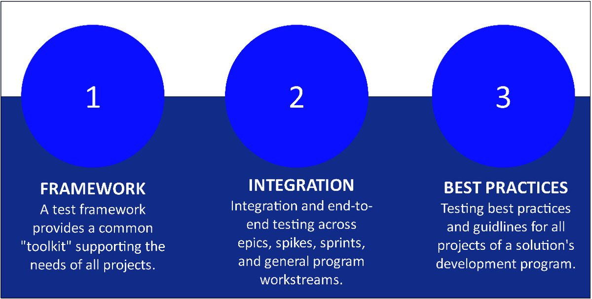
목표는 테스트 오버헤드를 줄이고 테스트를 최대한 쉽게 실행할 수 있도록 하는 것임을 기억하십시오. 개발자와 테스터는 개발 스프린트가 개발된 다양한 환경으로 코드를 릴리스할 때 현상 유지(status quo)로부터의 편차를 포착할 수 있어야 합니다. DevOps 파이프라인에서 실행되는 통합 테스트를 기반으로 시스템이 최소한 가동 중임을 알 수 있으며 이번 장의 이전 섹션에서 다룬 테스트 모범 사례를 구현하게 될 것입니다.
초기 개발 스프린트를 완료한 후 모든 테스트를 실행할 수 있는 것은 아니지만 후속 스프린트의 경우 시간이 지남에 따라 회귀 테스트 스위트가 구축됨에 따라 모든 테스트가 누적 적용되어 병렬로 실행될 것으로 예상됩니다. 테스트 스위트의 모든 테스트를 병렬로 실행할 수 있도록 테스트를 생성하는 것이 필수적입니다. 이는 일반적으로 단일 스레드로 동작하는 클라우드 DevOps CI/CD 시스템이 테스트 프레임워크의 성능 요구사항을 지원하도록 강제할 것입니다. 합리적인 시간 내에 모든 테스트를 실행하는 것만으로도 도전 과제가 될 것입니다. 수천 개의 테스트를 예상하십시오!
때로는 병렬 실행을 중단하고 평가한 후 안정적인 지점에 도달했을 때만 계속 진행해야 할 수도 있습니다. 메트릭과 대시보드 항목을 생성한 다음 수정이 이루어졌을 때 자동화된 방식으로 테스트 시나리오 실행을 재개할 것입니다. 여기에는 병렬 테스트 목표를 지원하는 테스트 인프라 자동화를 제공하기 위한 AWS CloudFormation 또는 Azure ARM 템플릿 실행도 포함됩니다. 이를 위해서는 실행할 클라우드 인프라뿐만 아니라 빈번한 결함 유발자(빠른 속도, 낮은 품질의 개발/개발자)에게 귀속될 수 있는 비용이 포함된 테스트 예산이 필요합니다. 이 프로세스 흐름은 테스트 프레임워크 정의의 일부여야 하며 프레임워크의 구성 기능을 통해 테스트 관리자에게 명확하고 투명하게 제시되어야 합니다.
종종 단순한 단일 스레드 클라우드 DevOps 도구는 중앙 구성이나 대시보드 없이 단계별 테스트 처리를 개발할 때 너무 많은 유연성을 허용합니다. 테스트 수가 증가함에 따라 이러한 중앙 구성이나 대시보드가 존재해야 합니다. 테스트는 여러 이유로 구성된 프로세스 흐름 전반에 걸쳐 진행되지 못할 수 있습니다. 효과적인 테스트 프레임워크는 종종 다른 테스트와 병렬로 적시에 오케스트레이션되어 실행된다는 확신을 가지고 개발자가 다양한 유형의 새롭거나 조정된 테스트를 쉽게 플러그인할 수 있도록 합니다. 이러한 기능적 소프트웨어 테스트는 데이터 팩토리 파이프라인의 고급 사용자 수용 테스트(UAT)의 일부로서 데이터 품질 테스트로도 확장되어야 합니다.
앞서 언급했듯이 초기 단계의 애자일 소프트웨어 개발 스프린트에서는 전체 회귀 테스트 스위트를 실행할 수 없습니다. 그러나 이러한 테스트는 여전히 SLT 목표의 일부로 개발되어야 합니다. 이는 그림 10.2에 묘사된 흐름에서 명확히 드러납니다. 여기서 시스템 통합 테스트(System Integration Testing, SIT) 활성화는 시스템이 물리적으로 통합 가능한 상태가 된 후에야 실행되기 시작합니다. 그런 다음 최소 기능 사용자 수용 테스트(UAT)로서 시스템을 통해 데이터를 실행할 수 있을 때 나중에 실행됩니다. 더 나아가 전체 데이터셋을 처리할 수 있게 된 후에야 모든 회귀 테스트 단계가 적용된 완전한 UAT가 가능해집니다. 이러한 회귀 테스트는 스트레스, 스케일 및 성능 테스트 시나리오도 시작합니다.
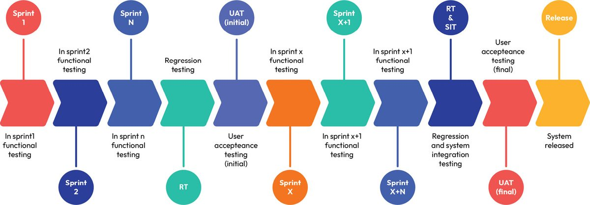
테스트는 단위 테스트로 시작하여 기능 통합 테스트, SIT, 그리고 궁극적으로 UAT로 진행됩니다. 데이터 품질 테스트는 UAT 테스트 시점에 완전하게 수행될 수 있고 그래야 하지만 해당 테스트에는 메트릭, 파생 데이터 및 측정값이 포함되어야 하므로 이 테스트가 완료되려면 해당 데이터셋이 완전하고 정확해야 합니다. 자세한 내용은 그림 10.3을 참조하십시오.
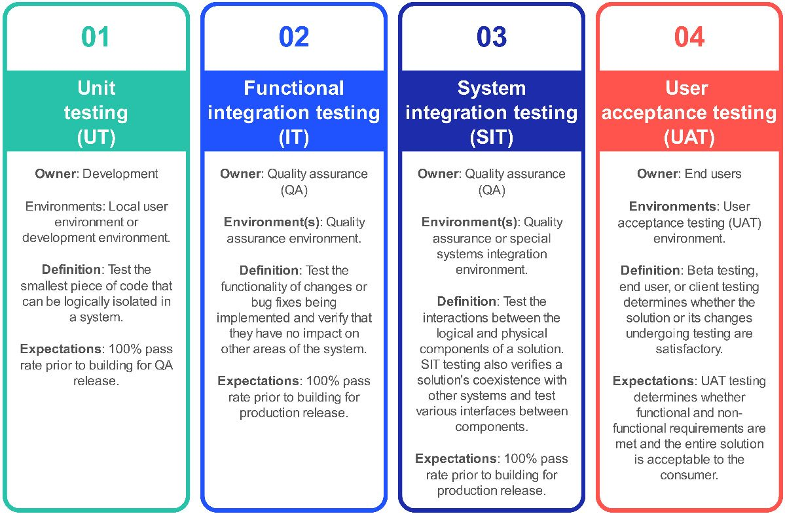
테스트 목적으로 테스트 데이터셋을 안정화하고 동결(freeze)하는 것은 비용 영향과 품질 측면에서 관리되지 않을 때 문제가 될 수 있습니다. 이전에 기록된 데이터를 시드(seed)로 사용하여 미리 준비된(canned) 테스트 데이터셋을 통해 포괄적인 데이터 주도 테스트를 개발하는 것이 유용할 수 있지만 이러한 테스트 데이터는 개인정보 보호 및 기타 보안상의 이유로 난독화(obfuscated)되어야 합니다. 그런 다음 캡처된 데이터는 테스트 목적에 맞게 조정됩니다.
테스트 데이터 생성기가 수동 프로세스가 아니라 프로그래밍 방식으로 구동되는지 확인하십시오. 정기적으로 준비된 테스트 데이터셋을 재생성해야 하며 테스트 데이터를 수동으로 큐레이션하는 것은 확장성이 없습니다!
참고
우리는 좋은 테스트 데이터를 만드는 데 필요한 노력을 하찮게 여기는 것이 아닙니다. 여러분의 테스트 접근 방식에 실제 데이터셋을 반영하는 생성되거나 프로덕션에서 수정된 데이터가 포함되어야 한다는 점을 지적하는 것뿐입니다. 또한 16장에서 훈련 세트 데이터를 위한 MLOps를 지원하는 합성 데이터 생성 주제를 다룰 것입니다. 아울러 머신러닝(ML) 데이터셋 생성 접근 방식을 사용하면 수동 테스트 데이터셋 생성의 부담을 줄이는 데 도움이 될 수 있습니다.
캡처된 데이터는 모든 처리 엣지 케이스를 설명하기 위해 데이터에서 발견된 조건에 의해 일반적으로 주도되는 경로 테스팅(path testing)이 요구하는 솔루션의 유효한 기능을 지원하도록 확장되어야 합니다. 비용 편익을 평가하지 않고 개발된 각각의 새로운 소프트웨어 또는 데이터 처리 기능에 대해 처음부터 새로운 테스트 데이터를 수작업으로 만드는 것은 벅찬 일이 될 수 있습니다. 그렇긴 하지만 테스트가 언제 충분히 좋은지(good enough)를 알고 다른 테스트 스레드로 넘어가거나 적절한 경우 세부사항을 개발자의 단위 테스트 수준으로 다시 내려보내십시오.
특정 테스트를 위해 데이터셋의 데이터를 동결할 때 회귀 테스트에서 반복적으로 적용되고 재사용될 수 있도록 테스트 오케스트레이션 프레임워크에 사용 등록되어야 합니다. 그러면 솔루션 품질 프로세스가 시간이 지남에 따라 발전합니다. 우리는 테스트 데이터가 버려지는 것을 너무나 자주 보았습니다. 그 결과 너무 많은 다운스트림 테스트 시나리오가 무효화됩니다. 이런 일이 여러분에게 일어나지 않도록 하십시오! 테스트 데이터조차도 시간이 지남에 따라 드리프트(drift)가 발생하고 그 효능이 저하된다는 점에 유의하십시오. 테스트 데이터는 유한한 시간 프레임 내에서만 가치가 있을 수 있으며 이전에 제작되어 현재 동결된 테스트 데이터셋을 사용하면 현재 테스트 품질에 부정적인 영향을 미칠 수 있습니다. 향후 회귀 테스트가 계속 유효하도록 동결된 테스트 데이터를 주기적으로 해동(thawed out)하고 재구성해야 합니다. 시계열 데이터셋(금융 데이터셋 등)의 경우 이 문제는 고려해야 할 매우 중요한 문제입니다.
솔루션의 무결성 보존과 관련된 테스트 처리에서 데이터 품질 관리(Data Quality Management, DQM) 목표를 달성하려면 테스트 목적을 위한 합성 트랜잭션(synthetic transactions)의 생성이 필요합니다. 여기에는 실제 데이터가 없는 상황에서 성능, 메트릭, 측정값 및 트렌드 테스트가 성공적으로 완료될 수 있도록 하는 트렌드 보존 가짜 데이터가 포함됩니다. 합성 데이터와 합성 트랜잭션을 카탈로그화할 준비를 하고 소비 가능한 데이터로 사용자에게 보이는 최종 큐레이션 데이터에서 테스트 데이터 계보 추적을 통해 영향을 추적할 수 있도록 하십시오. 이를 통해 우수한 데이터 품질 테스트를 생성할 수 있습니다.
테스트 프레임워크의 핵심 엔진은 객체 핸들러, 공통 유틸리티, 공통 테스트 솔루션, 출력 컴포넌트의 오케스트레이션 및 NuGET {https://packt-debp.link/Nua0PN}과 같은 리포지토리 도구로 구성됩니다. 테스트 보고(대시보드를 통해)와 마찬가지로 테스트 데이터 관리가 다음 프레임워크에서 두드러지게 다루어집니다. Azure 클라우드 제공업체를 위한 Azure DevOps 파이프라인이 그림 10.4에 나와 있습니다.
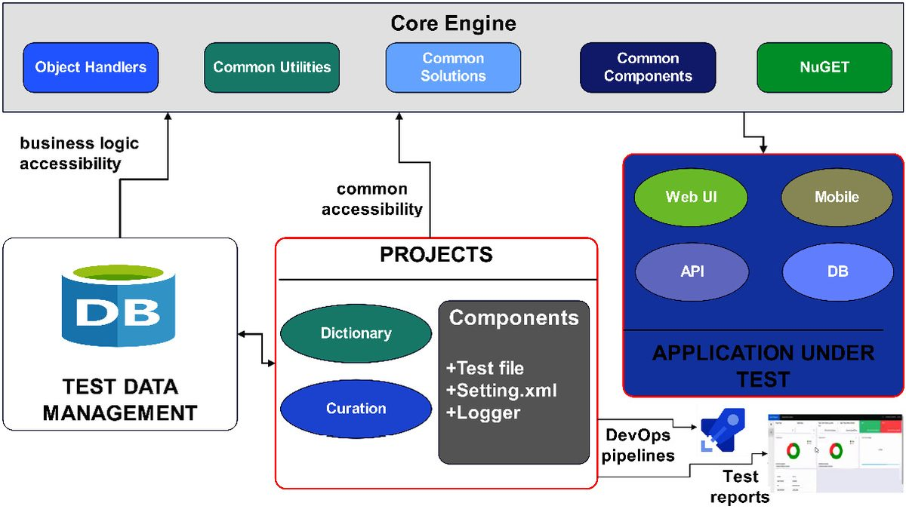
테스트 오케스트레이션에 사용되지만 AWS에는 AWSDevOps {https://packt-debp.link/YKUOOY} 툴킷에 이에 상응하는 기능이 있습니다. 마지막으로 PROJECTS 상자에는 두 가지 핵심 프로젝트가 나열되어 있습니다.
- Dictionary: 데이터 팩토리 솔루션의 저장 상태(at rest) 메타데이터
- Curation: 영역 간에 팩토리 데이터를 출력
큐레이션은 솔루션의 개발된 코드를 나타냅니다(이는 작업에 대한 대단한 단순화이지만 이 테스트 프레임워크 설명의 목적상 충분합니다). 테스트 보고 기능은 깊이 있게 설명되지 않았지만 수많은 출력을 생성하는 작업을 수반합니다. 이러한 보고서와 영향받는 개발자 및 이해관계자에 대한 관련 이상 알림은 테스트 시스템의 데이터 오류 또는 이상 감지 시스템을 형성합니다. 보고서는 영향을 받는 개발자와 이해관계자에게 전송됩니다. 이러한 오류는 코드, 테스트 데이터 또는 구성 체크인 후 발견될 때 감지됩니다. 오류 검사는 리포지토리 체크인(예: GitHub) 후에 발생하며 이는 구성된 클라우드 CI/CD DevOps 파이프라인을 실행합니다.
이들은 데이터 팩토리의 처리 파이프라인이 아니라 새로운 코드 체크인 이벤트가 트리거된 후 실행되는 DevOps 개발 파이프라인입니다. 최종 UAT 테스트를 시작하기 전에 코드가 배포되고 모든 테스트를 통과한 것으로 입증되며 여러 단계에 걸쳐 검증됩니다. 테스트 실패는 치명적(fatal), 복구 가능(recoverable), 경고(warnings) 등의 범주로 그룹화되어야 합니다. 다중 실패가 발생할 때 이러한 실패 보고서는 단일 출력이 생성된 직후 즉시 중단되는 테스트 시나리오보다 엔지니어(소프트웨어 또는 데이터)가 근본 원인을 더 쉽게 삼각측량할 수 있는 도구로 사용됩니다. 테스트 파이프라인 시퀀스가 실행 가능한 상태를 유지할 수 있는 한 가능한 한 많은 테스트를 실행하는 것이 가장 좋습니다.
또한 보안 테스트가 필요하며 이를 위해 전문 도구를 활용해야 합니다. 예를 들어 Veracode Dynamic Analysis {https://packt-debp.link/aqyfTc}를 살펴보면 코드를 스캔해야 하고 데이터 테스트 엔지니어가 자체 제작한 테스트 데이터 생성기를 사용하여 테스트 데이터를 생성해야 합니다. 보안, 데이터 프라이버시 및 컴플라이언스 테스트에 대해 많은 것을 말할 수 있지만 이 책에서는 너무 많은 세부사항이 필요합니다. 이 분야의 보안 주제별 전문가와 상담하고 몇 가지 실제 테스트 사용 사례를 살펴보는 것이 좋습니다. DevSecOps {https://packt-debp.link/EvhnUH}는 효과적인 애자일 보안 테스트 접근 방식을 형성하는 핵심 접근 방식입니다. 예로는 2023 CyberSecurity Breakthrough Award {https://packt-debp.link/fSOGUN}를 수상한 Bright Security {https://packt-debp.link/GrwnVt}가 있습니다.
그림 10.5에서는 전체 시나리오에서 테스트 단계를 형성하는 사전 조건(pre-conditions) 및 사후 조건(post-conditions)의 적용을 볼 수 있습니다.
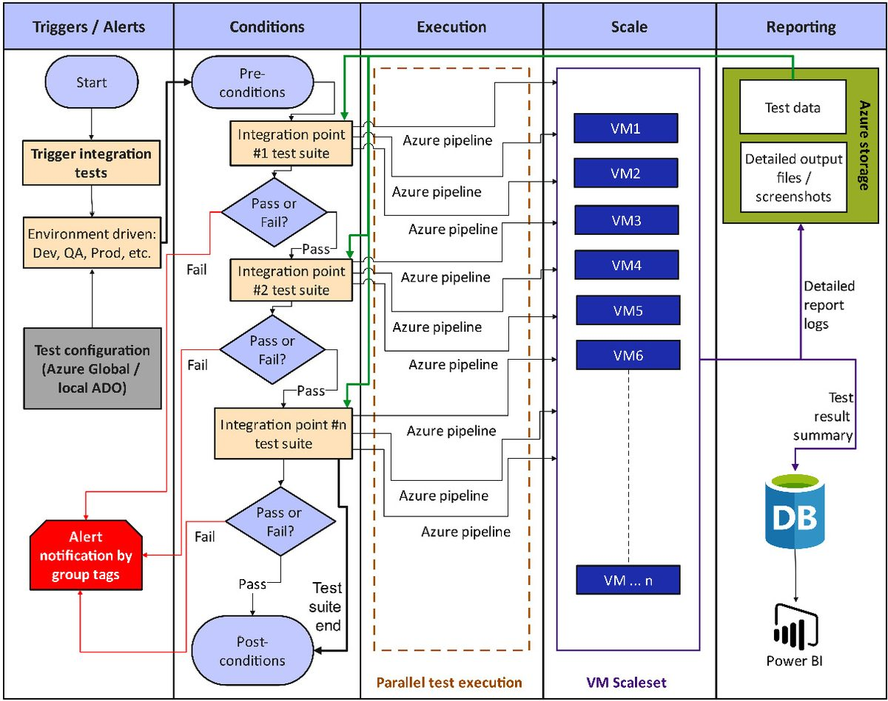
완전히 개발된 데이터 팩토리 솔루션에는 수백 개의 테스트가 존재하지만 각 테스트는 정의 형식 측면에서 일반적인 테스트 모델의 인스턴스입니다. 이렇게 하면 테스트 프레임워크에 깔끔하게 들어맞으며 그 출력은 충족됨(테스트 통과) 또는 충족되지 않음(테스트 실패)의 계약으로 보고됩니다. 병렬 테스트 실행(parallel test execution) 환경은 테스트를 병렬로 실행할 수 있는 기능이 있으며 때로는 다음 테스트 단계로 넘어가기 전에 일부 병렬 단계가 완료될 때까지 대기합니다. 테스트 시나리오는 테스트 프레임워크 내에서 관리를 위해 TestOps {https://packt-debp.link/3mZr2F} 시나리오 오케스트레이터에 구성되는 일환으로 구성 가능하거나 스크립팅되어야 합니다.
불행하게도 클라우드 제공업체의 DevOps 파이프라인 CI/CD 서비스는 기본적으로 완전한 범위의 병렬 실행, 브랜치에서의 단계별 프로세스 실행, 또는 솔루션에 필요한 수렴 이벤트 처리를 위한 대기를 제공하지 않습니다. 이를 테스트 프레임워크에 직접 구축해야 합니다. 운영 클라우드 비용을 낮추고 개발자가 다음 체크인 주기를 시작하기 전에 테스트를 완료하기 위해 클라우드 인스턴스, 가상 머신 풀 및 코드형 인프라(Infrastructure as Code, IaC) 환경 실행(5장의 이전 참조 및 11장에서 완전하게 정의됨)을 자동화해야 합니다.
개발자는 매일 작업을 진행하기 전에 자신이 빌드를 깨뜨렸는지 알고 싶어 할 것입니다. 이러한 실용적인 테스트는 애자일 개발을 가속화하고 구조화된 자동화 테스트가 덜하거나 더 나쁘게는 수동 테스트를 수행하는 프로젝트에서 흔히 볼 수 있는 낭비를 최소화합니다. 테스트 결과는 테스트 실행마다 단순히 보고만 되는 것이 아니라 저장됩니다. 테스트 엔지니어가 결과를 수동으로 확인해야 하는 로그 출력의 평면적인 정보가 아니라 데이터 결과가 보고서를 주도해야 하므로 이 이력은 중요합니다. 보고서는 모든 사후 조건 출력을 합산하고 개발자에게 저장 및 보고되는 출력을 검증하는 어서션 검사를 갖습니다.
그림 10.6에서는 테스트 시나리오 드라이버 작동의 일환으로 이러한 합격-불합격 조건 검사가 어떻게 적용되어야 하는지 확인할 수 있습니다.
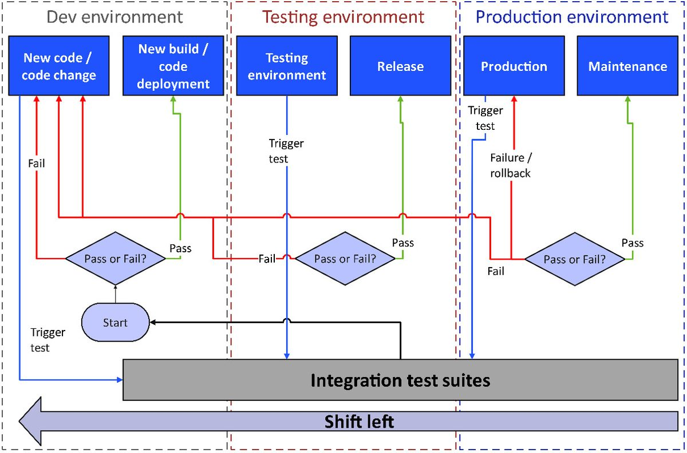
테스트는 테스트 시나리오의 시작을 트리거하는 체크인 이벤트로부터 진행되어야 하지만 항목이 연속으로 여러 번 체크인될 때 과도한 작업이 발생하지 않는 시점에 시작할 수 있어야 합니다. 반복적인 테스트 트리거가 발생하면 테스트 시나리오 인스턴스 실행을 중단하고 다시 시작할 수 있습니다. 체크인 자체는 결코 보류되어서는 안 되지만 이러한 빈번한 이벤트 트리거의 결과로 테스트 시작이 대기열에 들어갈 수 있습니다.
테스트 시나리오의 첫 번째 검사는 패키지의 완전성과 성공적인 빌드를 위한 사전 조건이며 그 후 솔루션 빌드 자체가 이어집니다. 체크인의 영향에 따라 트리거될 전체 테스트의 범위가 결정됩니다. 그런 다음 테스트 환경이 가동됩니다. 릴리스 패키지가 생성된 다음 스테이징된 프로덕션 환경(일반적으로 블루/그린 배포 환경)으로 푸시됩니다. 마지막으로 프로덕션 환경을 되돌려야 하는 실패가 발생할 경우 유지보수 환경을 생성할 수 있습니다. 시프트 레프트 테스팅(SLT)의 진정한 의도는 테스트가 코드 체크인 릴리스 이벤트 트리거에 매우 가깝게 이동하고 해당 체크인 트리거 이벤트 이후에 통합 테스트 스위트가 시작된다는 흐름 예시에서 달성됩니다.
이 절의 결론으로 테스팅이 결코 쉽지 않음을 알 수 있지만 테스트가 최대한의 효과를 발휘하여 솔루션의 OKR을 달성하는 데 필요한 개발 및 품질 수준을 가속화하도록 해야 합니다.
다음으로 데이터 프로필에 대한 완전한 이해를 필요로 하여 데이터의 개념적 형태를 이해하고 솔루션에서 처리할 수 있도록 하는 데이터 랭글링(data wrangling) 작업에 대해 논의하겠습니다.
데이터 랭글링 및 프로파일링
종종 테스트 노력은 개발된 소프트웨어의 품질에 초점을 맞춥니다. 그러나 데이터 팩토리 솔루션에서는 데이터가 프로덕트이며 계약 준수 여부를 테스트해야 합니다. 이러한 테스트를 위해서는 데이터를 프로파일링하고 해당 데이터의 형태가 목적에 부합하는지 평가해야 합니다. 수집된 데이터가 데이터 팩토리로 수집되는 일환으로 랭글링될 때 이를 데이터 프로파일링(data profiling)이라고 합니다. 데이터 랭글링은 결정론적(deterministic) 프로세스와 확률론적(stochastic) 프로세스의 혼합입니다.
- 변환(Transformations): 데이터를 정규화된 처리 가능한 형태로 변환
- 교정/삭제(Redactions): 감지된 오류 제거
- 축소(Reductions): 중복 진술 제거
- 데이터 마스킹/난독화(Data masking/obfuscation): 보안 및 프라이버시용
- 요약(Summarizations): 다운스트림 분석 촉진
- 대체 데이터 확장(Alt-data expansions): 알려진 참조 소스를 사용하여 데이터를 결정론적으로 확장하기 위해 테이블 사용
- 메타데이터 강화(Metadata enrichments): 분류 및 시맨틱 컨텍스트 제공
- 시맨틱 정렬(Semantic alignments): 데이터 형태 맞춤 및 다운스트림 임베딩으로 이어지는 추론 지원
- 기타 부가가치 강화(Other value-added enrichments): 최종 사용자 또는 애플리케이션 소비 전 후속 처리 단계에서 측정값, 계산 및 메트릭을 생성하는 데 필요한 키를 용이하게 하는 데 필요한 훅(hook) 제공
나열된 랭글링 단계 중 다수는 랭글링 전이나 도중에 데이터를 프로파일링해야 하며 종종 규칙 기반 데이터 프로파일링 프로세스입니다.
결정론적 데이터 프로파일링
결정론적 데이터(Deterministic data) {https://packt-debp.link/Fvzzjw} 방법(규칙 기반 방법론)은 초기 랭글링 작업에 필요한 많은 프로파일링 작업에 가장 적합합니다. 대부분의 전통적인 데이터 처리는 데이터 정규화와 정확성 및 적합성을 위한 개체 관계(ER) 모델에 대한 해당 데이터의 평가를 수반합니다. 적합하지 않은 경우 강화 및 매핑 후 데이터를 정규화된 형태로 변환할 수 있습니다. 그러나 대규모 데이터셋 전반의 패턴을 확률론적(또는 ML) 기반 방법론을 사용하여 포착하는 것이 가장 좋은 경우도 있습니다. 확률론적 데이터(Probabilistic data)는 결정론적 데이터와 다르게 평가됩니다.
머신러닝 기반 데이터 QA
데이터 패턴은 대규모 데이터셋에서 유사한 데이터 피처(feature)의 클러스터로 나타납니다. 이러한 패턴은 이전에 처리에 적합한 것으로 평가된 알려진 패턴에 매핑될 때까지는 알 수 없는 상태로 남아 있습니다. 클러스터의 데이터 형태가 알려진 클러스터와 일치하는지 평가되어 확실성의 임계값 내에서 분류가 가능해집니다. 클러스터링(Clustering)은 머신러닝 모델 훈련이 불가능하거나 소스 데이터셋을 분류할 때 훈련된 모델이 효과적이지 않은 사용 사례에 가장 적합한 비지도 머신러닝 접근 방식입니다. K-평균(K-Means) 클러스터링 {https://packt-debp.link/uIVkjm}이나 잠재 디리클레 할당(Latent Dirichlet Allocation, LDA) 클러스터링 {https://packt-debp.link/2oHnuq}과 같은 알고리즘이 클러스터링에 자주 적용되지만 작동 방식은 서로 다릅니다. 머신러닝 앙상블 기법을 사용해야만 이들이 함께 효과를 발휘하지만 틈새 데이터 처리 사용 사례에서는 단독으로 사용될 수도 있습니다.
패턴 감지 및 매칭은 데이터 프로파일링에 사용되는 중요한 준지도 머신러닝 알고리즘 접근 방식이며 서포트 벡터 머신(Support Vector Machine, SVM) {https://packt-debp.link/pSgdjc}, 선형 회귀(Linear regression) {https://packt-debp.link/F8zaVw}, 로지스틱 회귀(Logistic regression) {https://packt-debp.link/RPciql} 알고리즘이 대표적입니다.
SVM이 나타내는 데이터 패턴을 인입되는 데이터와 매칭할 수 있으며 매칭되지 않은 모든 데이터는 시스템에 새로운 데이터가 됩니다. 문제는 데이터 프로파일링이 실행되기 시작하는 첫날에는 매칭되지 않는 데이터가 많다는 점입니다. 이를 위해서는 수많은 훈련 데이터셋을 제작한 다음 전체 데이터 커버리지가 비즈니스에 수용 가능한 수준이 되도록 SVM을 훈련해야 합니다. 이와 함께 지속적인 비즈니스 운영에 맞게 SVM 모델을 재학습시키는 작업이 수반됩니다. 결국 다운스트림 처리 단계가 효과를 발휘하려면 데이터 프로덕트가 80% 준비되어 있어야 하며 그렇다 하더라도 시간이 지남에 따라 새로 갱신된 모델을 반영하기 위해 기존 데이터를 재처리해야 할 수도 있습니다.
비지도 알고리즘을 통해 데이터 클러스터를 발견하여 수집된 데이터에서 완전히 새로운 범주를 식별할 수 있습니다. 이는 큰 장점이 될 수 있습니다! 또한 지도 모델을 사용하면 인입되는 데이터에서 일치하는 클러스터(일명 토픽)를 필터링하여 알려진 패턴을 적용할 수 있으므로, 시스템에 새로운 것(분류 대상)이나 이상치(anomalies) (폐기 대상)만 남길 수 있습니다.
데이터 프로파일링 및 랭글링에서 머신러닝이 사용되는 실용적인 사용 사례는 그 밖에도 많습니다. 현지화된 데이터를 시스템의 중립적 형태로 매핑하는 데 매우 효과적일 수 있습니다. 영어가 표준이고 NLP 리소스와 사서(또는 시맨틱)가 영어로 작성된 경우 품목 설명(예: 소매 시나리오)을 영어로 매핑하는 것이 합리적입니다. 원본 로컬 언어를 유지하는 것이 필수적인 경우가 많지만 중립적인 형태를 사용할 수 있으면 매칭이 잘 작동합니다.
다른 사용 사례로는 시스템에 사실로 적용되기 전에 기존 트렌드를 깰 수 있는 인입 데이터를 감지하는 경우가 있습니다. 또 다른 예는 데이터셋을 정의하는 그래프를 순회하여 정확히 일치하지는 않지만 유사한 다른 그래프 내에 맞추거나 맞는 것을 찾아야 하는 경우(부분 그래프 동형 문제, subgraph isomorphism problem {https://packt-debp.link/t8fXR9})입니다. 이는 외판원 문제(Traveling Salesman problem) {https://packt-debp.link/FQoW2J}와 유사합니다. 둘 다 NP-완전(NP-complete) 문제입니다. 따라서 고급 ML 알고리즘에 매우 적합합니다. NP-완전이라는 용어는 비결정론적 다항식 시간 완전(non-deterministic polynomial-time complete)을 줄인 말로, 이 클래스에 적용되는 모든 알고리즘이 비결정론적 튜링 기계 알고리즘(turing machine algorithm)임을 나타냅니다. 튜링 기계 알고리즘은 무차별 대입(brute-force) 알고리즘의 수학적 공식화입니다. 문제가 비결정론적이라는 것은 무차별 대입 알고리즘으로는 해결책이 불가능하므로 확률론적 알고리즘이 필요함을 의미합니다.
사이드 노트
우리는 GPT-4가 수많은 NP-완전 문제에 필요한 솔루션 개발을 어떻게 처리할 수 있는지 보고 싶습니다. 새로운 혁신으로 이러한 까다로운 처리 문제를 해결하면 수십 년 동안 컴퓨터 과학자와 수학자들을 괴롭혀 온 핵심 문제가 해결될 것입니다.
데이터를 목적에 적합한 것으로 지정하기 위한 데이터 프로파일링, 랭글링 및 준비에는 근본적인 주제가 깔려 있습니다. 다음 질문에 대한 답이 필요합니다.
- 그것이 진실(truth)인가?
- 그것이 참된 사실(true fact)인가?
- 특정 도메인에서 해당 데이터의 시맨틱이 참으로 유지되는가?
- 수집된 데이터가 시스템 내에서 시맨틱적으로 강화되고 이해되었으므로 새로운 인사이트를 수확할 수 있는가?
위 질문에 대한 답이 모두 “예”라면 해당 주제 도메인 내에서 데이터를 사용할 수 있으며 추론된 관계를 사용하여 인사이트를 얻을 수 있습니다. 관찰된 데이터 패턴은 다른 도메인의 템플릿으로도 사용될 수 있어 도메인 경계를 넘나드는 위대한 통찰력의 도약으로 이어질 수 있습니다. 컨텍스트에 민감한 데이터 패턴이 고유한 의미를 지니는 이러한 비전의 구현은 데이터가 살아 숨 쉬게 하므로 솔루션을 미래 지향적으로 만듭니다. 이 모든 것은 데이터의 구문 및 시맨틱 정확성을 테스트한 다음 직접 사용, 추론 사용 및 도메인 간 패턴 전이적 재사용을 위해 데이터를 구성함으로써 가능해집니다.
요약
요약하자면 테스팅은 어렵고 비용이 많이 든다는 것을 배웠습니다. 프로젝트 끝까지 테스트를 미루는 것은 높은 비용을 발생시키며 애자일 개발 노력에서 가능한 가장 비효율적인 접근 방식입니다. 테스트 책임을 왼쪽으로 이동(SLT)시키는 TestOps 오케스트레이션 테스트 프레임워크를 구축하는 것은 대부분의 현대 개발 팀에 최적입니다. 테스트를 구현할 때 TDD 또는 BDD 접근 방식은 이해관계자가 자신의 OKR이 어떻게 검증될지 알고 싶어 하므로 그들의 사고에 테스트 사고방식을 심어줍니다. 마지막으로 결정론적 및 확률론적 머신러닝 기법을 사용하여 데이터를 평가한 다음 데이터 팩토리에서 목적에 맞게 스테이징되도록 준비하는 데이터 팩토리의 데이터 프로파일링 및 랭글링 요구사항을 살펴보았습니다.
다음 장에서는 IT 운영 서비스를 구축하기 위한 모범 사례를 제공합니다.
11장. IT 운영 서비스 모범 사례의 핵심 고려사항
운영상 효과적이라는 것은 무엇을 의미할까요? 이 질문에 대한 답은 “상황에 따라 다르다”입니다! 현실적으로 이는 많은 요인에 기초하지만 궁극적으로는 솔루션이 완료되는 동안과 완료된 후에 솔루션을 실행하고 관리하는 것으로 귀결됩니다. 그렇다면 이 맥락에서 “IT”는 진정으로 “정보기술(Information Technology, IT)”을 의미할까요, 아니면 단순히 “그것(it)” - 여러분의 시스템을 의미할까요? 이번 장을 읽으면서 올바른 운영 모범 사례가 없으면 IT가 신뢰할 수 없고, 가용하지 않으며, 확장 불가능하고, 성능이 떨어지는 하나의 물건(“it”)으로 전락한다는 것을 확인하며 여러분 스스로 판단해 보시기 바랍니다.
애자일 및 린 개발 방법론에서는 완료된(being done) 상태가 실제로 결코 발생하지 않을 수도 있습니다. 대안적으로 제품이 버전 관리된 릴리스 번호를 부여받고 사이클을 한 번 통과하여 정식 출시된 후에야 완료 단계에 도달할 수도 있습니다. IT가 어떻게 완료되는지는 DevOps 소프트웨어 개발 수명 주기(SDLC)를 통한 이러한 사이클에 의해 반복적으로 정의됩니다.
이번 장에서는 다음 주제를 살펴봅니다.
- 서비스 수준 계약(SLA) 및 (다양한) 계약의 서비스 수준 관리(SLM)
- 고품질 데이터 팩토리 결과물로 이어지는 데이터 계약
- 관찰 가능성(observability) 기능을 갖춘 솔루션 모니터링
- 시스템 및 데이터 계약 이상 감지
- 블루/그린 배포 대 기타 릴리스/배포 프로세스가 운영에 미치는 영향(트레이드오프는 무엇인가?)
이 정보를 통해 솔루션이 실행/관리 단계에 들어갈 때 지속 가능한 프로세스를 갖춘 운영 프레임워크를 구축할 수 있게 될 것입니다.
IT 운영 모범 사례 개요
그림 11.1 {https://packt-debp.link/TdzvqG}에 나온 2017년 SD Times가 보도한 아틀라시안(Atlassian) {https://packt-debp.link/sV36qr}의 기술 스택을 살펴보는 것만으로도 DevOps 사이클과 관련된 제품의 수가 엄청나다는 것을 알 수 있습니다.
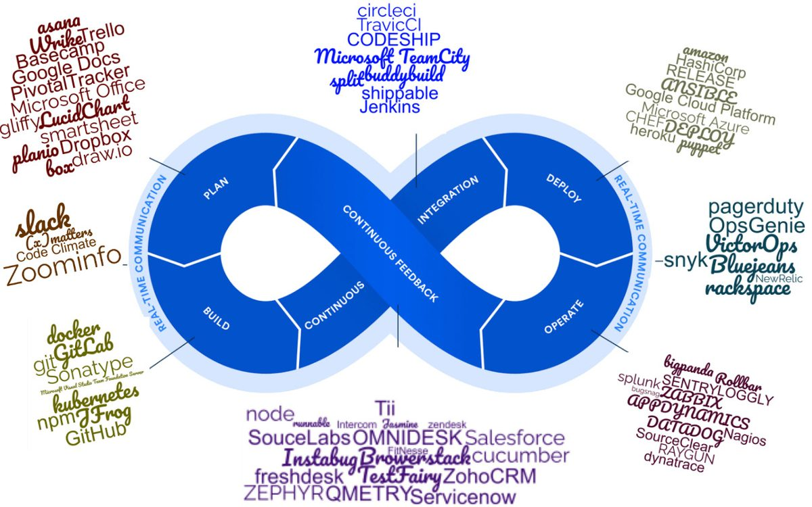
여러분에게 필요한 것은 여러분의 에코시스템에 적합한 도구 선택과 프로세스 정의를 가능하게 해줄 모범 사례 기반의 문서화된 운영 선언문입니다. 이 선언문을 위해 처음부터 백지상태(green field)에서 시작할 필요는 없습니다. 그러니 정보기술 인프라 라이브러리(Information Technology Infrastructure Library, ITIL)부터 시작하겠습니다.
다른 장들에서 우리는 정보기술 서비스 관리(Information Technology Service Management, ITSM) 프로세스 프레임워크를 구축할 때 ITIL이 필요하다고 언급했던 것을 기억하실 것입니다. 진 킴(Gene Kim)의 다음 인용문은 이러한 필요성을 강조합니다.
“DevOps 운동은 ITSM과 완벽하게 들어맞습니다. ITIL과 ITSM은 여전히 IT 운영을 뒷받침하는 비즈니스 프로세스의 가장 훌륭한 코드화이며 실제로 IT 운영이 DevOps 스타일의 워크스트림을 지원하는 데 필요한 많은 기능을 설명합니다.”
진 킴 {https://packt-debp.link/iG7VKC}, 《유니콘 프로젝트(The Unicorn Project)》 {https://packt-debp.link/EIS7F3} 저자 및 《피닉스 프로젝트(The Phoenix Project)》 {https://packt-debp.link/DF2Vjf} 공동 저자
독서를 잠시 멈추고 방금 언급된 내용을 조사해 보거나, 이 분야에 대한 이해도를 높이기 위해 진 킴의 책을 읽어보는 것도 좋습니다. ITIL/ITSM은 여러분의 솔루션에 필수적입니다. 서비스 정의를 완전히 이해(grok)하고 나면 수많은 비기능적 요구사항이 머릿속에 떠오를 것이며 이것이 바로 학습을 통해 얻어야 할 결과물입니다. 이들은 개발 팀을 위한 OKR이 될 것입니다. 앞서 우리는 이 ITIL 레거시 서비스 접근 방식에서 식별된 기능들이 오늘날의 클라우드 기술에서도 여전히 얼마나 중요한지 언급했습니다. 이 책의 다음 섹션을 참조하십시오.
- 7장, 아키텍처 프레임워크 - 물리 아키텍처 모범 사례의 물리 아키텍처 개요, 모범 사례 구성, 현재의 as-is 상태 프로세스를 정의하고 새로운 to-be 상태로의 반복적 변화를 준비하라! 섹션
- 8장, 소프트웨어 엔지니어링 모범 사례 고려사항의 소프트웨어 엔지니어링 모범 사례 개요 섹션
- 9장, 애자일 SDLC 모범 사례의 핵심 고려사항의 소프트웨어 개발 수명 주기(SDLC 프로세스), 목표 및 핵심 결과(OKR) 섹션
우리는 여러분이 원하는 것과 다른 운영 접근 방식을 취하도록 강요하려는 것이 아닙니다. 그러나 다른 사람들의 실수와 성공에서 배우는 것이 우리의 권장 사항입니다. 견고하고 신뢰할 수 있는 솔루션을 유지하는 데 필요한 IT 운영 프로세스에 대한 현재의 이해를 재설정할 준비가 되어 있어야 합니다.
IT 운영 모범 사례: 도입
우리의 목표는 ITIL 프레임워크에 명시된 규율 있는 모범 사례를 적용하여 DevOps 애자일 실천법을 비즈니스 솔루션 개발 수명 주기에 통합하는 것입니다.
참고
DevOps는 프레임워크가 아닙니다. 모호하지만 여러분이 구체화하고 IT 운영 정의를 개발하면 명확해지는 프로세스입니다. 이 프로세스는 구속력을 가져야 하며 정책 선언문(policy statements)으로 집행되어야 합니다. 릴리스 기능 세트에서 잘려 나갈 수 없는(종종 시도되지만) 구속력 있는 비기능적 요구사항 세트를 형성하므로 모든 팀에 전달되어야 합니다. 오랫동안 검증된 ITIL 서비스 정의는 노력을 줄이면서 위험을 제한하고 지속적인 개선을 장려하는 동시에 납품을 가속화하는 데 필요한 구조를 제공합니다. 그러나 다시 한 번 말씀드리지만 프레임워크는 여러분이 조직을 위해 답해야 할 질문을 제기해야 합니다.
IT 운영 프레임워크에 필요한 서비스 목표는 그림 11.2를 참조하십시오.
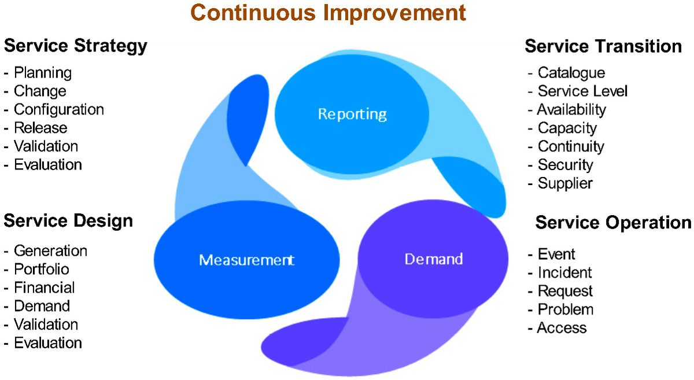
여러분은 오늘날 수많은 비즈니스, 제품 및 도구에서 사용되는 다양한 형태의 Agile, DevOps, TestOps, DevSecOps, FinOps, MLOps, AIOps, DataOps 프로세스의 복잡성을 최소화하고 싶을 것입니다. 애자일 개발에 대한 모든 벤더 도구의 접근 방식이 쉬운 통합으로 이어지는 것은 아닙니다. 기반이 될 기본 역량 세트를 선택해야 합니다. 그런 다음 ITIL 프레임워크를 체크리스트로 사용하여 여러분이 원하는 역량이 생략되거나 과소평가되지 않는지 확인하십시오. 그런 현상이 발생하기 시작하면 부가가치 통합을 통해 서비스(또는 도구)를 보강해야 합니다.
예를 들어보겠습니다. 클라우드 서비스에 구성이 필요하거나 안전한 KeyStore와 함께 Terraform을 사용하는 구성 관리에서는 Azure ARM, AWS CloudFormation 또는 Terraform 템플릿에 하드코딩하지 않고 클라우드 서비스 매개변수/구성을 제공하는 방법이 필요합니다.
많은 벤더 도구 세트가 IT 운영 환경의 샌드박스 내에서 항상 원활하게 상호작용하는 것은 아닙니다. 이는 클라우드 ITIL 프로세스의 구축을 보완할 것입니다. 다양한 클라우드 제공업체는 여러분의 모범 사례가 아닌 그들의 모범 사례에 기반한 그들의 프로세스로 가는 빠른 경로를 제공합니다.
첫 번째 IT 운영 모범 사례!
IT 운영 환경에서 원하는 것이 무엇인지 파악하고 벤더에서 선택한 핵심 통합 서비스 세트로부터 그 기대치에 맞게 구축하십시오. 그 결정을 뒷받침하는 포괄적인 실사를 수행하십시오. 또한 효과적인 IT 운영과 관련하여 여러분의 특정 조직이 가질 질문에 답할 수 있는 프로세스 솔루션을 제공하십시오. 논리적 아키텍처를 먼저 정의하라는 모범 사례 권장 사항을 따랐다면 인터페이스를 갖춘 논리적 컴포넌트는 시간이 지나도 유효하게 유지됩니다. 새로운 벤더, 상황 또는 통합은 많은 변화를 겪게 되므로 이를 선택하거나 재통합해야 합니다.
이러한 예로는 Microsoft Azure DevOps, AWS DevOps, GCP SRE 또는 수많은 서드파티 도구 제공업체가 있습니다. 아틀라시안은 일반적인 오픈 소스 Ops 도구 에코시스템과의 도구 통합 영향을 최소화하려고 노력할 것입니다. 통합 제품을 사용하면 툴체인 통합 복잡성을 해결하기 위해 유연한 원하는 것을 통합하는(you integrate what you like) 접근 방식(크든 작든)을 구현할 수 있습니다. 카메론 디치(Cameron Deatsch)는 이러한 복잡성 문제를 인식했으며 아틀라시안은 DevOps 도구 통합의 필요성에 응답했습니다.
“… 그들의 엔터프라이즈 고객 중 다수는 개발과 운영의 장벽을 허물기 위해 아틀라시안 제품을 사용하지만 오늘날까지 DevOps 도구를 중앙 집중화하고 통합할 방법이 없었습니다.”
- 카메론 디치(Cameron Deatsch), 2017년 (전 아틀라시안 서버 및 엔터프라이즈 마케팅 총괄이자 최고 수익 책임자(CRO), 현재 업계 독립 자문가)
사용 가능한 다양한 접근 방식은 책임 있는 데이터 엔지니어 또는 관리자인 여러분이 당연히 철저히 조사할 것입니다. 클라우드 제공업체 서비스 그룹이나 독립 컨설턴트는 먼저 여러분의 DevOps 성숙도를 평가하여 여러분의 지식을 기준선화(baseline)하려고 할 것입니다. 예를 들어 다음을 고려해 보십시오.
- Atlassian의 DevOps 성숙도 모델 {https://packt-debp.link/itFmAI}
- SourcedGroup {https://packt-debp.link/izqDov}의 4주 평가 프로그램인 Azure DevOps 성숙도 평가 {https://packt-debp.link/aJcOm2}
- Microsoft Azure의 Azure DevOps 역량 평가 {https://packt-debp.link/fAMSth}
- Google의 “2023 DORA DevOps 현황 보고서” {https://packt-debp.link/QjsP6T} 및 사이트 신뢰성 엔지니어링(Site Reliability Engineering, SRE) {https://packt-debp.link/FWhVgU}
- Oracle의 오라클 클라우드 인프라스트럭처(Oracle Cloud Infrastructure, OCI) DevOps {https://packt-debp.link/my73vI}
원활하게 실행되고 관리되는 시스템 솔루션에는 많은 기능이 있습니다. 개발 그룹은 릴리스 전에 잘 문서화되지 않았더라도 운영 요구사항을 깊이 생각하려고 시도합니다. 나중에 IT 운영팀과 기타 관계자들은 개발자가 놓친 수많은 함정(gotchas)을 형성하는 추가적인 비기능적 요구사항을 추가할 것입니다. 이는 흔히 일어나는 일입니다. 엔지니어(데이터 또는 소프트웨어)로서 여러분은 은유적인 항아리(자금, 시간 및 노력의 예산 내에서 여러분의 관할 영역) 내의 제한된 공간에 “큰 돌(big rocks)”을 먼저 채워 넣는 데 집중해야 합니다. 서비스 수준 계약(SLA)을 정의하는 것부터 시작하고 관찰 가능성 및 자동화된 상황별 대응 처리를 통해 이를 유지하는 접근 방식을 정의하십시오.
데이터 계약은 SLA와 유사합니다. 데이터 계약은 솔루션의 큐레이션된 데이터와 관련된 범위를 갖습니다. 데이터 계약은 어서션 검사를 통해 검증될 수 있습니다. 우리는 이를 데이터 프로브(data probes)라고 부르기를 좋아하며 이는 데이터 팩토리의 중요한 단계가 완료된 후 또는 특정 단계에 도달하기 전에 실행되도록 설계되었습니다. 이들은 게이트키퍼 기능이나 서킷 브레이커 역할을 하여 후속 다운스트림 처리에 의해 데이터 오류가 복합적으로 확대되는 것을 방지합니다. 따라서 데이터 계약은 데이터 품질 관리(DQM) 시스템에 의해 시행되고 검증되며 실시간 프로덕션에 적용될 때 데이터 계약과 정렬된 원격 측정(telemetry) 메타데이터를 생성할 수 있습니다. 원격 측정 데이터는 자동화된 테스트를 통과한 보고된 데이터 품질 문제를 진단할 때 도움이 됩니다. 몬테 카를로 데이터(Monte Carlo Data) {https://packt-debp.link/Olvca2}는 데이터 계약을 다음과 같이 정의합니다.
“데이터 계약은 서비스에서 생성되는 데이터의 스키마와 의미를 정의하고 시행하여 데이터 소비자가 안정적으로 활용하고 이해할 수 있도록 합니다.”
- 몬테 카를로 데이터 {https://packt-debp.link/HUH8VS}
파레토 법칙(Pareto Principle)(다음 참고 참조)은 데이터 계약 주제와 매우 밀접한 관련이 있습니다.
파레토 법칙
결과(consequences)의 80%는 20%의 원인/행동(actions)에서 비롯됩니다.
이 원칙은 오늘날에도 매우 유효합니다. 여러분은 이를 향후 스키마 개발의 정당성으로 적용할 수 있을 것입니다. 시간이 지남에 따라 여러분이 설계한 수많은 테이블과 그 파생물들은 복잡한 데이터 메시(data mesh)로 변모했을 것이며 그 혼란(이번에는 메시(mesh)가 아닌 mess)을 풀 수 있는 유일한 방법은 데이터 계약 설정을 통하는 것입니다. 이러한 계약은 데이터 계보 메타데이터 추적을 활용하여 여러분이 설계하는 데이터 메시 아키텍처와 정렬됩니다. 설계에서 취하는 행동은 시스템이 시간이 지남에 따라 성장함에 따라 긍정적인 곱셈적 결과를 낳습니다. 이는 데이터 엔지니어링 솔루션을 미래 지향적으로 만드는 목표를 향해 나아갈 때 큰 가치를 제공합니다.
우리는 시스템을 구축할 때 모든 구축 단계가 자동화되어야 함을 발견했습니다. 수동 단계가 있어서는 안 됩니다. 온프레미스 서버나 클라우드 인스턴스에서 Linux 커널을 빌드하는 것부터 보안 설정을 갖춘 서비스 구성에 이르기까지 모든 단계가 자동화되어야 합니다. 클라우드에서 빌드 및 배포를 자동화할 때 얻을 수 있는 이점은 무수히 많습니다. 첫째, 이 접근 방식은 비즈니스 운영을 향상시킵니다. 또한 자동화는 많은 시간이 소요될 수 있는 반복적인 작업을 줄임으로써 팀의 효율성과 생산성을 높입니다. 전략적 노력에 리소스를 투입하는 것은 항상 현명한 일입니다. 이제 더 나은 IT 딜리버리 서비스를 통해 더 빠른 출시 기간(Time to Market, TTM)을 달성할 수 있습니다. 애자일 방법론은 개발자뿐만 아니라 조직의 운영 담당자를 위한 것이기도 합니다. 이러한 이점은 주요 부수 효과로 더 큰 비용 절감을 제공합니다. 인적 오류를 찾고 수정하는 비용이 절감됩니다. 자동화가 비즈니스에 미치는 영향은 솔루션 신뢰성이 향상된다는 것입니다. 운영상의 일관성과 반복 가능성은 자동화를 통해 달성할 수 있는 훌륭한 목표입니다. 마지막으로 여러분의 솔루션이 다른 시스템에 적용된 수정 사항을 템플릿으로 상속받기 때문에 시스템 보안이 향상됩니다. 동일한 자동화를 사용하기 때문에 이러한 결함이 감지되고 수정되면 배포될 수 없습니다. 배포와 관련된 끔찍한 사례는 다음에서 읽어볼 수 있습니다.
“그러나 새 코드를 배포하는 동안 나이트(Knight)의 기술자 중 한 명이 8개의 SMARS 컴퓨터 서버 중 하나에 새 코드를 복사하지 않았습니다. 나이트는 두 번째 기술자에게 이 배포를 검토하도록 하지 않았으며 나이트의 그 누구도 파워 페그(Power Peg) 코드가 여덟 번째 서버에서 제거되지 않았고 새로운 RLP 코드도 추가되지 않았음을 깨닫지 못했습니다. 나이트에는 이러한 검토를 요구하는 서면 절차가 없었습니다.”
- SEC 보고서 (Release No. 70694, 2013년 10월 16일) (https://dougseven.com/2014/04/17/knightmare-a-devops-cautionary-tale)
도구 선택, 애자일 DevOps 통합 및 클라우드 구성에서 내리는 선택은 고성능 CI/CD 파이프라인에 달려 있습니다. 이 SDLC 필수 DevOps CI/CD 파이프라인은 데이터 엔지니어링된 기능 및 특성과 함께 소프트웨어 솔루션의 속도와 품질에 영향을 미칩니다. SDLC 애자일 프로세스는 데이터가 일관되지 않은 상태로 릴리스되는 결과를 초래할 수 있습니다. 이는 데이터의 정확성 상태를 고려하지 않는 패키징 및 배포 프로세스의 결과로 발생합니다. 소프트웨어 컴포넌트가 릴리스되면 데이터 처리에 영향을 미치며 이는 릴리스 후 알 수 없는 상태 오류로 이어질 수 있습니다. 소프트웨어 정확성뿐만 아니라 데이터 정확성도 CI/CD 파이프라인에서 테스트되어야 하지만 종종 그렇지 않습니다!
복잡한 데이터 처리 시스템에서는 로깅(logging)과 추적(trace) 출력이 예상되며 운영에서 결정한 정확성을 위해 모든 것을 평가해야 합니다. 로깅, 트레이싱 및 메트릭 생성을 함께 관찰 가능성 목표로 구현함으로써 업계는 모든 것을 (원시 형식, 즉 모든 것으로) 수집한 다음 건초더미에서 바늘을 찾으려는 접근 방식을 넘어설 수 있었습니다. 이벤트가 발생했을 때 기록했을 수는 있지만 컨텍스트를 기록하지 않음으로써 관찰 가능하지 않은 결과를 생성한 것은 사실입니다. 메시지의 컨텍스트가 유지되지 않았다면 메시지가 스토리지 어레이에 도달하는 순간 로그에 기록된 것은 쓰레기였습니다. 그렇다면 사용할 수 없는 것을 왜 기록할까요? 답은 이렇습니다. 컨텍스트를 캡처하고 그것이 관찰 가능한 결론으로 이어질 수 있는지 생각하지 않고는 아무것도 기록하지 마십시오. 여러분의 관찰 가능한 데이터는 바로 해석 가능한 정보여야 합니다.
마지막으로 이후 섹션의 심층 분석에 대한 서문으로서 모든 특정 환경으로의 배포 프로세스와 방법을 고려해야 합니다. 솔루션은 매끄럽게 전달되고 배포되어야 하지만 이러한 매끄러움은 실제 이벤트, 버그, 비즈니스 방향의 변화 등으로 인해 종종 중단됩니다. 이 모든 것으로 인해 어느 시점에는 롤백해야 할 수도 있습니다.
솔루션의 패키징, 배포 및 변경 프로세스는 자동화되어야 합니다. 전체적인 안정성에 미치는 영향을 줄이기 위해 범위를 지정하고 필요한 경우 기능 기반 릴리스로 세분화해야 합니다(따라서 빅뱅 배포는 사양합니다!). 배포에 포함되는 항목과 포함되지 않는 항목의 식별은 선택한 배포 모델 유형을 사용하여 사전에 설계되어야 합니다. 솔루션의 기능은 릴리스를 위한 논리적 구분을 형성합니다. 또한 기술적으로 개발된 재사용 가능한 컴포넌트와 프레임워크 코드가 솔루션의 논리적 구분을 형성할 수 있습니다. 하위 세트를 릴리스로 묶을 수 있습니다. 단, 모든 것을 한꺼번에 묶지는 마십시오!
SLA에 대한 논의와 함께 IT 운영 모범 사례에 대한 심층 분석을 시작하겠습니다.
서비스 수준 협약(SLA)
SLA(Service Level Agreement, 서비스 수준 계약) 설정은 데이터 프로덕트의 비기능적 요구사항을 유지하는 데 필수적입니다. 먼저 달성하고자 하는 바(what)를 정의한 다음, 관찰 가능성(observability)을 적용하여 관리할 수 있는 하위 목표로 세분화하는 것부터 시작하십시오. 목표를 계약 형태로 명문화하면, 이러한 합의 사항을 준수하고 목표 달성 여부를 검증하기 위한 측정 체계, 메트릭, 모니터링을 구축할 수밖에 없게 됩니다. 그런 다음 시스템을 실행하고 시스템의 메트릭, 출력값, 추적 로그를 관찰하여 계약을 지속적으로 관리해 나갈 수 있습니다.
서비스 계약은 이해관계자와 최종 사용자가 중요하다고 여기는 거의 모든 처리 어서션(processing assertion, 단언문)이 될 수 있습니다. 시스템을 직접 설계한 엔지니어 역시 무엇이 잘못될 수 있는지 직관적으로 알고 있을 것이므로 스스로도 중요한 이해관계자가 됩니다. 결국 여러분이 시스템을 설계했으니까요! 또한 시스템의 운영 준비 완료(operational readiness) 기준에 대해 다른 사람들의 의견도 수렴하고 싶을 것입니다. 건설적인 피드백이 더해지면 “IT 솔루션이 정상 작동한다(IT’s working)”라고 말하기 위해 충족해야 할 방대한 SLA 목록이 한층 더 늘어날 것입니다.
서비스 수준과 데이터 계약은 공식적인 방식으로 유지 관리해야 합니다. 또한 솔루션이 예상된 동작에서 벗어나기 시작하는 시점, 즉 계약된 SLA 목표에서 이탈하는 순간을 즉시 감지할 수 있어야 합니다. 운전 중에 황색 신호등을 마주치면 속도를 줄이라는 경고를 받는 것과 같습니다. 곧 차를 멈춰야 하므로 미리 대비해야 합니다. 정상 상태에서의 이탈은 이미 발생한 뒤가 아니라, 이탈이 시작되는 바로 그 순간에 감지해야 합니다. 자세한 내용은 관찰 가능성을 심도 있게 다루는 뒤편의 사전 예방적 알림을 갖춘 관찰 가능성 섹션을 참조하십시오.
성공의 공식은 계획에 있습니다. 따라서 예상되는 모든 성능 저하(degraded state) 운영 시나리오에 대비하여 사전 정의된 대응 시나리오를 면밀히 고민해야 합니다. 이러한 체계적인 오류 처리 방식은 객체지향 설계의 구조화된 오류 처리(structured error handling)에서 흔히 볼 수 있는 패스트 페일/자동 재시작(fast fail/auto-restart) 패턴과 맞닿아 있습니다. 저수준 오류 처리는 대학이나 실무 경험을 통해 배우지만 저자들의 경험에 비추어 볼 때 서비스 수준 관리(Service Level Management, SLM)의 일환으로 시스템 오류 처리를 구현할 것을 권장합니다. 아키텍처의 일부로서 모든 SLM 프로세스를 프로그래밍 방식의 구조화된 오류 처리와 연계하십시오. 이를 통해 견고한 운영에 필요한 오류 처리와 대응 설계를 일원화할 수 있습니다. 이 부분이 제대로 구현되지 않으면 운영 중에 복잡한 분산 시스템이 완전히 무너져 내리는(melt down) 일이 발생하곤 합니다.
사전 예방적(proactive)으로 사고하는 것은 매우 중요합니다! 그래야 감지된 이상 현상으로 인한 사용자 영향의 빈도와 심각도를 최소화할 수 있습니다. 시스템이 스스로 자가 치유(self-heal)하거나, 필요한 경우 문제 관리 또는 지원 레벨 에스컬레이션 프로세스를 조기에 작동시켜 해당 분야 전문가(주로 개발자)를 참여시키는 것이 정상적인 시스템 동작으로 자리 잡아야 합니다. 이러한 자동화된 이벤트 기반 시스템 상태 전이는 문제가 심각해지기 훨씬 전에 실행되어야 합니다.
프로덕션 환경에서 문제가 겉으로 드러나면 SLA는 이미 위반된 것입니다. 이러한 위반이 발생하면 대규모 시정 조치가 뒤따르며 이 모든 작업은 장애가 진행 중인 긴박한 상황에서 이루어집니다. 문제가 심각해지기 전에 감지된 이슈에 대응할 수 있는 시간적 여유를 확보하고 IT 운영 프로세스의 일부로서 이를 자동화된 방식으로 처리하십시오.
데이터 계약 서비스 수준 협약 및 데이터 계약 관리
데이터 계약(Data contract)은 데이터 영역에 적용되는 SLA와 유사합니다. 어서션 검증(assertion check)을 통해 유효성을 검증할 수 있습니다. 저자들은 이를 데이터 프로브(data probe)라고 부르기를 좋아하는데, 데이터 팩토리의 핵심 단계가 완료된 후 또는 특정 단계에 진입하기 전에 실행되도록 설계됩니다. 이들은 게이트키퍼(gatekeeper) 역할을 하여 데이터 오류가 후속 다운스트림 처리로 전파되어 복합적인 문제로 커지는 것을 방지합니다. 따라서 데이터 계약은 데이터 품질 관리(DQM, Data Quality Management) 시스템에 의해 시행되고 검증되며 실시간 프로덕션에 적용되면 데이터 계약에 부합하는 텔레메트리(telemetry, 원격 측정) 데이터를 생성할 수 있습니다. 이러한 텔레메트리 메타데이터는 자동화된 테스트를 뚫고 지나갈 수 있는 데이터 품질 문제를 진단할 때 큰 도움이 됩니다.
앞서 언급한 몬테카를로 데이터(Monte Carlo Data) 벤더에 관한 설명에서 보았듯이, 이 벤더는 데이터 엔지니어링 솔루션에서 반드시 다루어야 할 데이터 계약 문제를 정확히 파악하고 있습니다. 데이터 계약 관리에는 다음과 같은 역량이 필요합니다.
- 데이터 전달 지연을 줄이기 위한 측정(테스트, 해결 소요 시간, 데이터 인시던트 수)
- 다운스트림 처리에 필요한 스키마 변경 방지
- 서킷 브레이커(circuit breaker)를 통한 품질 문제 방지
- 메타데이터와 리니지(lineage, 계보)를 통해 데이터 건전성(data health) 문제를 감지하여 반복적인 데이터 문제 방지
- 실시간 데이터 품질 텔레메트리의 필요성과 데이터 관찰 가능성(data observability) 마인드셋 인식
- 다음과 같이 데이터 계약 구현을 뒷받침하는 데이터 규칙(data conventions) 채택:
- 명확한 SQL: 표준 포맷팅, 주석, 스타일, 규칙 준수가 필수적입니다.
- 데이터 인시던트 프로세스: 데이터 문제를 해결하기 위한 에스컬레이션 프로세스 및 워크플로이며 동일한 문제의 재발을 방지하기 위해 프로세스와 코드 품질을 발전시키는 체계적인 사후 분석(postmortem)을 포함합니다.
- 데이터 리터러시(문해력): 수집부터 큐레이션까지 맥락에 따른 데이터 값의 의미를 명확한 일상 언어로 설명할 수 있는 역량입니다.
- 데이터 소유권: 이전 장에서 다룬 데이터 도메인 소유권 관련 데이터 메시 원칙을 고려하도록 유도합니다. Chapter 4, Architecture Principles의 Architecture Foundation, Data Mesh Principles를 참조하십시오.
- 데이터 SLA: 데이터가 언제 완료/준비되는지, 누가 큐레이션했는지, 어디서 획득해야 하는지, 문제 발생 시 어떻게 지원을 받을 수 있는지를 명시합니다.
- 문서화: 쉬운 언어로 작성된 문서는 개요뿐 아니라 큐레이션, 변환, 최종 목표에 대한 명확한 정보를 제공합니다.
- 드리프트(drift) 모니터링: 허용 가능한 데이터 값 범위가 벗어난 위치를 리니지 추적에서 보여주고 스키마/모델 드리프트까지 파악합니다.
- 명명 규칙: 컬럼, 테이블, 뷰, 구체화(materialization) 등에 대한 명명 규칙은 일관성과 이해도를 높입니다.
- 시맨틱 계층(Semantic layer): 의미를 부여하기 위해 저장된 데이터(data at rest), 데이터 맥락(data context), 개념 간 연결성(concept connectivity)을 이해하는 데 필요합니다.
이러한 핵심 역량을 갖추면 데이터 계약을 생성, 유지 관리하고 검증 가능하게 시행할 수 있습니다. 모든 규정 준수 상태를 추적하고 합의된 계약이나 SLA에서 벗어난 문제를 빠르고 효과적으로 해결할 수 있게 됩니다. 또한 데이터 계약, SLA, 메트릭을 유지 관리하기 위한 분석 관리 서브시스템을 구축하는 것이 좋습니다. 이를 통해 계약 준수 여부를 시각화하고 감사(audit)할 수 있습니다. 이 시스템은 데이터 계약 준수의 투명성과 신뢰성을 검증합니다.
데이터 계약 개념은 BITOL {https://packt-debp.link/TNGaNB} 리눅스 재단 오픈 샌드박스 프로젝트(Open Linux Foundation Sandbox Project)에서 더욱 발전했습니다. 프로젝트 GitHub에는 바로 활용할 수 있는 템플릿이 마련되어 있어, 다른 이들이 이 분야에서 이뤄낸 진전을 여러분의 데이터 계약에 활용할 수 있습니다. 오픈소스 프로젝트이므로 몬테카를로가 상용 제품으로 제공하는 기능과는 일부 차이가 있을 수 있습니다. BITOL은 데이터 계약을 데이터 생산자와 소비자 간의 합의로 정의하며 다음과 같은 여러 데이터 계약 범주를 포함합니다.
- Fundamentals: Name, version, and description (기본 요소: 이름, 버전, 설명)
- Schema: Physical and logical implementation details (스키마: 물리적 및 논리적 구현 세부사항)
- Data quality: Governance, policies, and rules (데이터 품질: 거버넌스, 정책, 규칙)
- SLA: Latency, retention, and frequency (arrival/delivery) (SLA: 지연 시간, 보존 기간, 빈도(도착/전달))
- Security and stakeholders: Roles, attributes, groups, users (보안 및 이해관계자: 역할, 속성, 그룹, 사용자)
- Custom: Properties for extending the data contract (커스텀: 데이터 계약 확장을 위한 속성)
Data Contract 101 {https://packt-debp.link/a3p5IN}에서 JG 페랭(JG Perrin)은 데이터 계약을 다음과 같이 정의합니다.
“A data contract acts as an agreement between multiple parties; specifically, a data producer and its consumer(s).” (데이터 계약은 여러 당사자, 구체적으로는 데이터 생산자와 소비자 간의 합의 역할을 한다.)
- JG Perrin (https://medium.com/@jgperrin)
데이터 계약에 대해 더 자세히 알아보려면 JG 페랭과 에릭 보더(Eric Boda)의 Implementing Data Mesh {https://packt-debp.link/Xj4kGV} 및 앤드루 존스(Andrew Jones)의 “Driving Data Quality with Data Contracts: A comprehensive guide to building reliable, trusted, and effective data platforms” {https://packt-debp.link/4U29NN}를 살펴보시기 바랍니다.
다음 섹션에서는 변경으로 인해 끊임없이 위반 위협에 노출되는 소프트웨어 및 데이터 계약을 구현하는 데 필요한 데브옵스 CI/CD 파이프라인을 심층적으로 살펴보겠습니다.
지속적 통합 및 지속적 배포(CI/CD)
현대 시스템 개발에서 복잡성과 빠른 변화 속도는 엔지니어링 관리자에게 엄청난 골칫거리가 될 수 있습니다. 신규 체크인 코드에 대해 연쇄적인 소프트웨어 회귀 테스트(regression testing)를 실행하도록 엔드투엔드 데브옵스 파이프라인(즉, SDLC를 지원하는 CI/CD 시스템 프로세스)을 구현하는 것이 필수적입니다. 또한 새로운 소프트웨어가 시스템 데이터의 기존 상태에 부정적인 영향을 주지 않도록 데이터 계약 어서션이 필요합니다. 어서션 출력값은 그 자체로 성공 또는 실패 상태에 매핑되는 시스템의 관찰 가능한 출력입니다. 특정 유형의 데이터 계약은 일정 기간이 지나거나, 데이터 도착으로 촉발되는 트리거 이벤트, 달력 일정, 데이터 민감도 임계값, 또는 특정 측정/메트릭 트리거에 도달한 후에만 시행될 수 있습니다.
여기서 핵심은 어서션과 어서션 결과 검증이 CI/CD 파이프라인에서 잠금 해제되어야 하는 게이트(gate)를 형성한다는 점입니다. 이 게이트들을 통과해야만 프로세스 흐름이 계속 앞으로 나아갈 수 있습니다. 이는 궁극적으로 코드가 통합 및 배포 준비(operational readiness)를 마친 것으로 간주되어 릴리스 세트에 포함되는 패키지 릴리스로 이어집니다.
사전 예방적 알림을 갖춘 관측 가능성
가장 높은 수준에서 볼 때 관찰 가능성(옵저버빌리티)이란 외부에서 이용 가능한 데이터로부터 시스템의 상태를 얼마나 잘 파악할 수 있는지를 나타내는 척도입니다. 관찰 가능한 시스템은 다양한 문제가 발생했을 때 이를 즉시 이해할 수 있는 역량을 제공합니다. Observability pillars {https://packt-debp.link/1VY5gk}는 다음과 같습니다.
- Metrics
- Logs
- Traces
또한 관찰 가능성의 범위는 일반적으로 사용자 경험, 클라우드, 인터넷 및 내부 네트워크 운영뿐만 아니라 모든 데이터 계약의 상태까지 확장됩니다. 최종 사용자 입장에서 볼 때, 데이터 소비자는 시스템이 계약된(또는 합의된) 기대치를 전달하지 못하는 상황을 결코 목격해서는 안 됩니다. 구축한 시스템이 성능을 우아하게 저하시키고(gracefully degrade), 오류를 적절히 처리하며 복구 가능한 장애가 발생했을 때 최종 사용자에게 영향을 주지 않도록 구축되었다면, 어떤 상황이든 대처할 수 있도록 올바르게 설계하고 있는 것입니다.
예기치 않은 오류 처리를 올바른 결과 전달만큼이나 중요하게 여긴다면, 문제에 대응할 수 있는 충분한 시간을 확보한 셈입니다. 문제가 처음 발생하기 시작할 때 이를 포착하는 것이 관찰 가능성 역량의 목표입니다. 이는 시간의 시험과 돌발 상황을 견뎌내는 효과적인 운영 시스템의 핵심 요소입니다.
저자들이 접한 일부 솔루션에서는 고부가가치 세션을 유지하기 위해 일반 사용자를 세션에서 강제 퇴장시키는 방식으로 우아한 성능 저하(graceful degradation)를 구현하기도 합니다. 이와 유사하게, 복잡한 트랜잭션을 먼저 완료한 후 세션을 비정상 종료(abend, abnormal termination)시키는 방식도 있습니다. 이렇게 하면 재시도로 인한 자체 과부하와 그에 따른 다운스트림 부하 전파를 방지할 수 있습니다. 이는 마이크로서비스 에코시스템에서 특히 뼈아픈 문제입니다.
미래의 어느 시점에 시스템이 궤도를 벗어날 수 있다는 것은 자명한 사실입니다. 명확한 텔레메트리 데이터를 수집하면서 오류를 체계적으로 관리할 수 있는 기능을 내장하지 않을 이유가 없습니다. 시스템 전체를 하나의 거대한 finite state machine(유한 상태 머신)으로 보고 그 내부의 더 작은 서브시스템들 역시 유한 상태 머신으로 간주해 보십시오. 오토마타가 정의하는 컨텍스트 내에서 사전 정의된 시나리오에 맞추어 오류에 대응함으로써, 시스템 내에서 올바른 상태 전이를 일으킬 수 있습니다. 따라서 오류 처리는 더 이상 단순히 오류 로그를 출력하고 즉시 실패(fail fast)하는 처리가 아닙니다. 다음 코드 블록을 보십시오.
try {}
catch {
print error log message;
<fail-fast>
};그 대신 다음과 같이 오류 복구 상태 로직으로 전이하는 방식이 됩니다.
try {}
catch {
<transition current to error-recovery state>;
<gracefully degrade>
};이러한 상태 전이는 이벤트인 조건에 의해 유발되며 이 조건들이 유한 상태 머신의 이벤트 전이를 구동합니다. 이 접근 방식을 채택하면 systemic structured error handling(체계적인 구조화된 오류 처리)을 설계하는 길로 들어서게 됩니다. 이를 통해 시스템은 감지된 이벤트에 자동으로 대응하고, 이를 처리하며, 심지어 출력 데이터의 데이터 이상 현상을 바로잡은 후 최종적으로 정상 운영 상태로 다시 전이할 수 있습니다. 시스템 오류 처리 경로는 마치 정상적인 이벤트 처리 프로세스인 것처럼 체계적인 구조를 갖추게 되며 컴포넌트의 급작스러운 패스트 페일 로직으로 인한 단절된 처리에 방치되지 않습니다.
많은 현대 시스템은 Inversion of Control (IoC) {https://packt-debp.link/fUKxaw} 소프트웨어 패턴(Java Spring Framework {https://packt-debp.link/UuM74f}, Servlets(deprecated), Microsoft Windows 등 포함)을 기반으로 구축됩니다. 하향식 코드 실행 대신 이벤트를 활용하여 유한 상태 머신에 맞춘 처리를 구동할 수 있습니다. 확장 가능한 분산 코드 실행과 오케스트레이션은 매우 복잡해질 수 있지만 결국 그만한 가치가 있습니다. 클라우드 계정 곳곳에 흩어져 있는 PaaS 클라우드 서비스, 마이크로서비스, 스크립트 네트워크를 엮어낼 때 이 디자인 패턴의 가치는 더욱 빛을 발합니다.
고도로 분산된 시스템에서 이렇게 단절된 혼란을 처리할 때, 운영 특성이 허용된 상태와 일치하지 않는다면 결코 견고한 운영으로 이어질 수 없습니다. 이러한 상태로부터의 이탈을 처리하고, 시정 조치를 취하며, 프로세스 흐름이 올바른 처리 상태로 복귀하여 계속 진행되도록 해야 합니다. 이 모든 과정은 자동이어야 합니다! 클라우드 서비스가 본래 이런 방식으로 통합되도록 만들어진 것이 아님을 알게 될 것입니다. 하지만 빠져나갈 상태 전이가 없는 비정상적인 운영 상태에 진입했다는 이유만으로 시스템이 붕괴된 후, 밤을 새워가며 데이터를 원상 복구하는 악몽을 피하려면 솔루션을 이렇게 설계해야 합니다.
모든 운영 조건을 완벽하게는 아니더라도 대부분 처리하지 못하면 오류는 전역적으로 드러나게 됩니다. 올바른 운영 상태는 물론 비정상적인 운영 상태까지 모두 설계 단계에서 처리할 수 있습니다. 이는 상태 전이 다이어그램으로 시각화할 수 있습니다.
이처럼 시각적으로 명쾌한 운영 관리 접근 방식은 과거에도 성공적으로 사용되어 왔습니다. 런타임에 수집된 관찰 가능한 텔레메트리 데이터를 추적 대시보드에 표시할 수 있습니다. 시스템이 성능 저하 운영 상태에 진입할 때 이벤트 트리거가 발생하므로 수동 개입 없는 대응도 가능해집니다. 운영 상태를 설계하고 상태 전이로 코드화해 두었기 때문에 시스템은 설정된 SLA를 여전히 준수할 수 있습니다. 상태 전이가 올바른 운영으로 가는 유일하게 알려진 경로이기 때문입니다.
모든 상태를 운영 계획에 맞춰 코딩하면 시스템은 운영을 위해 그 계획을 엄격하게 따릅니다. 소프트웨어가 올바르게 작동하며 모든 오류 경로가 차단되었음을 확신할 수 있습니다. 이 상태에서 시스템이 다운된다면 버그가 원인일 것이며 이러한 버그는 프로덕션 이전에 품질 관리 프로세스에서 제거되었어야 합니다. 소프트웨어가 기능적 OKR은 물론 비기능적 OKR에도 부합하며 올바르게 작동함을 테스트하고 입증했다면 성공을 거둔 것입니다. 잘못된 코드가 프로덕션으로 승격되기 전에 제거하고 운영 준비 완료 상태를 테스트했습니다. 또한 시스템이 모든 기능 테스트를 통과한 후 코드 실행 전에 계약의 정확성을 어서션으로 검증했습니다.
1986년 버트런드 마이어(Bertrand Meyer) {https://packt-debp.link/2sNKng}는 Eiffel programming language를 설계하면서 소프트웨어 계약의 필요성을 역설했습니다. 마이어는 저서 “Object-Oriented Software Construction” {https://packt-debp.link/HrPpa2}에서 올바른 소프트웨어 개발을 위해 계약 개념이 필수적이라고 정의했습니다. 소프트웨어는 Designed by Contract (DbC) 원칙에 따라야 합니다. DbC에서는 로직이 실행되기 전에 어서션이 작성되고 실행됩니다. 소프트웨어 계약은 사전 조건(preconditions), 사후 조건(postconditions), 불변 조건(invariants)으로 구성됩니다. 이러한 명세를 ’계약’이라고 부릅니다. Hoare triple {https://packt-debp.link/UQoc6H}은 소프트웨어 계약 의무를 정형화합니다. 이러한 의무는 계약의 세 가지 부분을 검증하는 어서션으로 요약할 수 있습니다.
- Expectation (the data contract, 기대치: 데이터 계약)
- Guarantee (the SLA for correctness, 보장: 정확성에 대한 SLA)
- Maintenance (the SLA for availability, timeliness, and so on, 유지 관리: 가용성, 적시성 등에 대한 SLA)
DbC 접근 방식의 훌륭한 점은 소프트웨어 정확성을 확보하는 작업이 사후 처리가 아니라 설계 단계로 앞당겨진다는 것입니다. 소프트웨어 및 운영 품질이 정형화된 계약의 기반이 됩니다. 이는 견고한 시스템을 운영하고 관리하려는 운영 목표를 보완해 줄 것입니다. 개발된 코드는 CI/CD 파이프라인의 끝에서 배포되기 전에 예상대로 작동함이 보장됩니다. 계약에 관해서는 다음 사항들이 성립합니다.
- 코드 주석으로 작성하거나, 테스트 프레임워크에서 해당 코드 주석을 테스트 매개변수로 읽어 DbC 어서션을 실행할 수 있도록 포맷팅할 수 있습니다.
- 오늘날 C, C++, C#뿐만 아니라 Java, Python(-O 옵션 사용) 등 여러 언어에서 찾아볼 수 있습니다.
- Microsoft의 Code Contracts {https://packt-debp.link/6bG6Jg}, Microsoft SPEC# {https://packt-debp.link/ZrNxt8}, Java Modeling Language {https://packt-debp.link/UlVSu2}, UML의 Object Constraint Language {https://packt-debp.link/BiA70f}와 같은 최신 도구에서도 볼 수 있습니다.
DbC 접근 방식이 소프트웨어 테스트 프로세스나 데이터 품질 테스트를 완전히 대체할 수는 없습니다. 하지만 DbC 접근 방식은 필요한 모든 가정을 보존하고 운영 정확성을 확인하도록 설계되었기 때문에 실행 시 소프트웨어가 올바르게 실행되도록 보장할 수 있습니다. 그 결과 솔루션이 100% 완벽하게 작동하도록 만드는 데 필요한 릴리스 반복 횟수가 줄어들며 그 이점은 IT 운영 전문가에게 매우 명확합니다.
자동화된 데이터 및 시스템 이상 감지 및 복구
이번 장에서 지금까지 제시된 기초 지식을 통해 여러분은 다음 사항들에 대한 이해를 갖추게 되었습니다.
- The need for ITIL cloud processes (ITIL 클라우드 프로세스의 필요성)
- Inversion of Control (IoC)
- Design by Contract (DbC)
- Data contracts (데이터 계약)
- Service Level Agreements (SLAs)
- Formal, static, and dynamic testing (정형, 정적 및 동적 테스트)
- The need for observability over generic systems monitoring (일반 시스템 모니터링 대비 관찰 가능성의 필요성)
- Awareness of the benefits of design time operational state management (설계 시점 운영 상태 관리의 이점에 대한 인식)
- A clear pattern for the creation of a DevOps pipeline (DevOps 파이프라인 생성을 위한 명확한 패턴)
- Implementing your check-in triggered CI/CD processes (체크인 트리거 기반 CI/CD 프로세스 구현)
이러한 요소들을 각각 설계에 구현하면 견고한 운영 시스템을 엔지니어링할 수 있습니다. 이들이 결합되면 코드 시스템을 위한 운영 및 개발 프레임워크가 준비된 후 방대한 비즈니스 로직을 빠르고 효율적으로 구축할 수 있습니다. 코드 복제를 최소화하고 견고성을 극대화하여 까다로운 부분부터 먼저 구축하면 비용 효율성이 높아집니다. 프레임워크를 한 번 구축하고 재사용하면 솔루션의 운영 기능을 중앙 집중화할 수 있습니다.
시스템 전반에 걸쳐 제각각 다르게 구현되지 않고 일관되게 확장하고 대규모 성능을 발휘하는 역량은 여러분의 노력에 따른 필수적인 결과물입니다. 코드베이스 전반에 운영 코드가 흩뿌려져 있고 팀의 신규 멤버마다 다르게 작성하는 모습을 보는 것은 안타까운 일입니다. 비기능적 요구사항을 핵심 프레임워크에 배치하면 비즈니스 로직과 뒤엉키는 것을 방지할 수 있습니다.
프레임워크를 구체화하면서 추가하고 싶은 다른 기능들도 있을 것입니다. 다양한 ITIL 서비스 정의를 살펴보고 ITIL 프레임워크가 던지는 질문들을 스스로 적용하여 그 해답을 운영 접근 방식에 반영해 보시기 바랍니다. 여러분의 기업에 가장 중요한 것이 무엇인지 판단하고 가장 먼저 추가해야 할 최우선 과제를 결정할 수 있는 사람은 오직 여러분뿐입니다.
데이터 시스템 이상 감지
견고한 IT 운영의 특히 중요한 기능 중 하나는 데이터 이상 감지(data anomaly detection)입니다.
데이터 이상을 감지하는 능력은 핵심적인 프레임워크 역량입니다. 수집된 텔레메트리 데이터에 이상 감지를 적용하는 것 역시 현명한 방법입니다. 관찰된 현상이 알려진 패턴에 맞는지(아닌지)를 판단하는 것은 여러분이 작성한 로직입니다. 또한 알 수 없는 패턴이 감지되면 잠재적인 이상 징후를 발견한 것입니다. 여기서 잠재적이라고 표현한 이유는 관찰된 내용이 관찰 대상 데이터나 시스템의 허용 가능한 새로운 특성일 수도 있기 때문입니다. 새로운 패턴 중 일부는 필터 세트에 포함되어 시간이 지남에 따라 관찰된 패턴에 대한 모니터링이 개선되도록 해야 합니다. 수용 가능한 동작(알려진 패턴 및 알려진 미지의 패턴)을 분리해 내면 처리해야 할 수용 불가능한 동작(알려지지 않은 미지의 영역, the unknown unknowns)만 남게 됩니다. 이는 관찰 가능한 운영 텔레메트리 데이터, 핵심 비즈니스 데이터, 소비 가능한 데이터(구축 중인 데이터 팩토리의 출력물), 그리고 모든 데이터의 메타데이터 등 모든 데이터에 적용됩니다.
Chapter 10, Key Considerations for Quality Testing Best Practices에서 저자들은 데이터의 이상을 찾기 위한 결정론적 및 확률론적 방법의 필요성을 자세히 설명했습니다. 품질 테스트는 핵심 비즈니스 데이터, 실행 중인 시스템에서 수집된 텔레메트리 데이터 출력값, 시스템 파생 데이터(트렌드, 메트릭, 측정값)로 구성된 모든 데이터에 적용되어야 합니다. 텔레메트리 데이터의 경우 이러한 기능을 직접 구축하는 수준을 넘어 다른 이들이 개발한 도구를 활용하고 싶을 수도 있습니다.
OpenTelemetry (OTel) {https://packt-debp.link/JkRgTO} 프로젝트는 다양한 서드파티 관찰 가능성 제품과 통합되며 독보적인 기능들을 제공합니다. OTel은 OpenTracing과 OpenCensus라는 두 프로젝트가 통합된 결과물입니다. 코드 계측(instrumentation) 및 텔레메트리 수집에 대한 명확한 표준 부재가 OTel의 탄생 배경이 되었습니다. 이 표준의 목표는 다른 도구에서의 저장 및 시각화를 위해 텔레메트리 데이터의 생성, 수집, 관리, 내보내기를 지원하는 것입니다. OTel primer {https://packt-debp.link/imZELH}는 이 표준과 계측해야 할 항목을 깊이 있게 살펴보기에 아주 좋은 자료입니다. 이 표준은 AWS Lambda Auto-Instrumentation, AWS Lambda Collector Configuration, AWS Lambda Manual Instrumentation과 같은 일반적인 클라우드 Function-as-a-Service (FaaS) 제품군도 통합하기 시작했습니다.
OTel Collector는 텔레메트리 데이터를 수신, 처리, 내보내기 위한 벤더 중립적인 범용 데이터 수집기 구현체입니다. 확장성 기능을 갖추고 있으며 다음과 같은 널리 사용되는 오픈소스 관찰 가능성 데이터 포맷을 지원합니다.
- Jaeger {https://packt-debp.link/MuVMV9}
- Prometheus {https://packt-debp.link/vnEmdY}
- Fluent Bit {https://packt-debp.link/xtRDil}
수집 메커니즘에 대한 다이어그램은 *Figure 11**.3*을 참조하십시오.
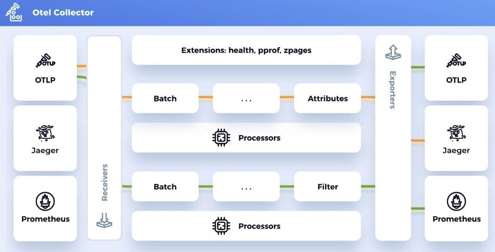
주요 클라우드 제공업체의 OTel에 관한 입장은 다음과 같습니다.
Microsoft Azure의 Azure Cloud에서의 OTel에 대한 입장은 다음과 같습니다.
“While we see OpenTelemetry as our future direction, we have no plans to stop collecting data from older SDKs. We still have a way to go before our Azure OpenTelemetry Distros reach feature parity with our Application Insights SDKs. In many cases, customers continue to choose to use Application Insights SDKs for quite some time.” (OpenTelemetry를 미래의 방향으로 보고 있지만 기존 SDK로부터의 데이터 수집을 중단할 계획은 없습니다. Azure OpenTelemetry 배포판이 Application Insights SDK와 기능적 동등성에 도달하기까지는 아직 갈 길이 남아 있습니다. 많은 경우 고객들은 당분간 계속해서 Application Insights SDK를 선택할 것입니다.)
- September 12, 2023, in “Data Collection Basics of Azure Monitor Application Insights” {https://packt-debp.link/gr2yWP}
Amazon은 AWS Distro for OTel에서 다음과 같이 OTel을 지원함을 밝히고 있습니다.
“… is a secure, production-ready, AWS-supported distribution of the OpenTelemetry project. With AWS Distro for OpenTelemetry, you can instrument your applications just once to send correlated metrics and traces to multiple AWS and Partner monitoring solutions. Use auto-instrumentation agents to collect traces without changing your code. AWS Distro for OpenTelemetry also collects metadata from your AWS resources and managed services, so you can correlate application performance data with underlying infrastructure data, reducing the mean time to problem resolution. Use AWS Distro for OpenTelemetry to instrument your applications running on Amazon Elastic Compute Cloud(EC2), Amazon Elastic Container Service (ECS), and Amazon Elastic Kubernetes Service (EKS) on EC2, AWS Fargate, and AWS Lambda, as well as on-premises.” (…는 OpenTelemetry 프로젝트의 안전하고 프로덕션 환경에 바로 사용 가능한 AWS 지원 배포판입니다. AWS Distro for OpenTelemetry를 사용하면 애플리케이션을 한 번만 계측하여 상관관계가 있는 메트릭과 트레이스를 여러 AWS 및 파트너 모니터링 솔루션으로 전송할 수 있습니다. 자동 계측 에이전트를 사용하면 코드를 변경하지 않고도 트레이스를 수집할 수 있습니다. 또한 AWS Distro for OpenTelemetry는 AWS 리소스 및 관리형 서비스에서 메타데이터를 수집하므로 애플리케이션 성능 데이터를 기본 인프라 데이터와 연계하여 문제 해결 평균 시간을 단축할 수 있습니다. AWS Distro for OpenTelemetry를 사용하여 Amazon Elastic Compute Cloud(EC2), Amazon Elastic Container Service(ECS), EC2 기반 Amazon Elastic Kubernetes Service(EKS), AWS Fargate, AWS Lambda 및 온프레미스에서 실행되는 애플리케이션을 계측하십시오.)
- Amazon Web Services, 2023 {https://packt-debp.link/KArclh}
Google 역시 다음과 같이 OTel을 지원하고 있습니다.
“As a developer, IT operator, DevOps engineer, or SRE (site reliability engineer), you are responsible for the performance and health of applications that you build or operate. The information that you will use to determine whether an application is healthy and performing as designed is called telemetry data. While technology providers have created agents to collect telemetry data, using these agents can tie you to those providers. OpenTelemetry creates both a single open standard for telemetry data and the technology to collect and export data from cloud-native applications so it can be monitored and analyzed, Learn about how ‘OpenTelemetry works with Google Cloud’s operations suite’ (https://cloud.google.com/trace/docs/setup) for monitoring and analyzing cloud-native applications and infrastructure running on Google Cloud.” (개발자, IT 운영자, 데브옵스 엔지니어 또는 SRE(사이트 신뢰성 엔지니어)로서 여러분은 직접 구축하거나 운영하는 애플리케이션의 성능과 건전성을 책임집니다. 애플리케이션이 정상적으로 작동하고 설계된 대로 동작하는지 판단하는 데 사용할 정보를 텔레메트리 데이터라고 합니다. 기술 제공업체들이 텔레메트리 데이터를 수집하기 위해 에이전트를 만들어 왔지만 이러한 에이전트를 사용하면 해당 제공업체에 종속될 수 있습니다. OpenTelemetry는 텔레메트리 데이터를 위한 단일 개방형 표준과 클라우드 네이티브 애플리케이션에서 데이터를 수집하고 내보내 모니터링 및 분석할 수 있는 기술을 모두 제공합니다. Google Cloud에서 실행되는 클라우드 네이티브 애플리케이션 및 인프라를 모니터링하고 분석하기 위해 ‘OpenTelemetry가 Google Cloud의 operations suite와 작동하는 방식’(https://cloud.google.com/trace/docs/setup)에 대해 알아보십시오.)
- Google Cloud Platform, 2023 {https://packt-debp.link/Cy4SjA}
단순한 모니터링 데이터가 아닌 관찰 가능한 데이터를 수집하는 것이 필수적입니다. OTel은 협업과 성공적인 통합을 통해 이 분야를 발전시켜 왔습니다. 처음에 잘 실행되는 시스템이라도 미래에 항상 잘 실행되리라는 보장은 없습니다. 관찰 가능한 텔레메트리 생성을 보완하는 것으로 성능 관리를 위한 Application Performance Monitoring (APM) 추가가 있습니다.
애플리케이션 성능 모니터링(APM)
Application Performance Monitoring (APM)은 IT 운영 그룹 관리자와 그 관리자에게 보고하는 Site Reliability Engineers (SREs)에게 매우 중요한 관심 분야입니다. APM은 데이터 엔지니어에게도 큰 관심사여야 합니다. 쿼리나 스키마가 미래에 필요한 데이터 볼륨 수준을 지원하도록 확장될 것이라고 당연하게 여기는 경우가 너무나 많습니다. 하지만 쿼리를 작성할 당시에 올바른 운영 윈도우를 설정할 수 있는 테스트가 제공되지 않았기 때문에 실제로는 확장되지 못합니다. 하루 중 또는 주중에 주기적으로 데이터베이스 통계를 다시 생성하더라도, 비기능적 확장성 요구사항이 위반되거나 전반적인 성능 SLA가 겉보기에는 무작위적인 시점에 위반될 수 있습니다. 이렇게 관찰되는 무작위적인 쿼리 타임아웃, 지연 또는 성능 저하는 애플리케이션 유스케이스를 지원하는 쿼리 실행 체인에 영향을 미칩니다. 해당 유스케이스의 총 실행 시간은 허용 가능한 동작을 위한 SLA의 적용을 받습니다.
APM 도구는 기준 성능(baseline performance)을 식별하고 시간이 지남에 따라 해당 기준선에서 벗어나는 편차를 감지하는 데 도움이 됩니다. 또한 APM 도구는 언제 지연이 발생하는지, 언제 최적화가 필요한지 엔지니어가 파악할 수 있도록 돕습니다. 확장성 및 성능 문제를 조기에 감지한 후 프로덕션 환경에서 성능 가정이 충족되고 있는지 확인하기 위해 자동으로 프로브를 실행하는 것이 모범 사례입니다.
성능 회귀 테스트와 점진적인 소규모 최적화를 적용하면 긍정적인 효과를 기대할 수 있습니다. 데이터 엔지니어와 소프트웨어 엔지니어는 본질적으로 컴퓨터 과학자입니다. 가설을 세우고, 테스트하고, 관찰하고, 검증하고, 반복하는 흐름은 우리의 사고방식에 깊이 뿌리내려 있습니다. 저자들의 조언은 다음과 같습니다. 여러분의 뿌리를 잊지 마십시오!
작은 발걸음을 떼는 과정에서, 당연히 예상대로 작동할 것이라 생각했던 솔루션에서 부정적인 영향이 나타날 수 있습니다. 이러한 시행착오의 영향을 수집할 수 있는 역량을 구축한다면, 프로덕션 환경에서 실시간으로 이를 관찰 가능한 데이터로 수집해야 할 필요성도 절감하게 될 것입니다. 쿼리의 작은 변경, SQL 쿼리 힌트 작성, 새 인덱스 사용, 복합 컬럼 인덱스 제거, 또는 데이터 캐시 재구성은 유스케이스의 전체 관찰 성능에 엄청난 영향을 미칩니다. 이러한 변경을 수행하는 사람은 잠재적인 부정적 부작용을 인지하지 못할 수도 있습니다. 유스케이스의 전체적인 규모 및 성능 요구사항을 종합적으로 살펴보고 설계와 프로그래밍에서 방어적인 태도를 취해야 합니다. 유스케이스에 필요한 복잡한 시스템의 엔드투엔드 의존성 체인을 수집한 다음, 모든 유스케이스에 걸친 종합적인 대시보드 요약 성능을 렌더링하십시오. 각 유스케이스에 빨간색, 노란색, 초록색 대시보드 신호등을 표시하고 올바른 운영에 필요한 계약을 유지하는 어서션 내에서 실행되는 테스트를 작성하십시오.
적절한 기록과 과학적 분석을 거치더라도, 데이터 재구성이나 쿼리 최적화가 이루어질 때마다 변경 영향에 대한 재평가는 반드시 긍정적인 결과로 이어져야 합니다. 종종 프로덕션과 완전히 동일한 트윈(twin) 테스트 환경(예: 블루/그린 배포 에코시스템)을 유지하는 비용은 비싸지만 필수적입니다. PII 및 프라이버시 보호를 위해 당연히 난독화된 100% 또는 50%의 프로덕션 데이터 복사본을 갖춘 트윈 환경이 가장 이상적입니다. 하지만 비용 문제로 이것이 불가능하다면, 데이터 재구성을 실행할 때 최종 사용자에게 영향을 주지 않기 위해 훨씬 더 많은 인력과 엄격한 프로세스가 필요합니다.
프로덕션 환경에서의 데이터 최적화 테스트는 최종 사용자에게 영향을 미칩니다. 신속하게 롤백(revert)할 수 있는 역량만이 프로덕션 테스트 중 발생할 수 있는 대외적인 심각한 문제로부터 복구할 수 있는 유일한 방법입니다. 프로덕션 환경 테스트의 트레이드오프를 이해하고 엄격하게 제어되는 프로세스에 대해 모든 사람의 합의를 이끌어내는 것이 필수적입니다.
상위 경영진이 변경될 때 모든 DataOps 확장성 및 성능 계약을 재검증하는 것은 두 배로 중요합니다. IT 운영 관리 팀과 데이터 엔지니어링 팀은 데이터 계약 또는 SLA 위반에 대해 책임을 져야 합니다. 두 팀 모두 다음과 같은 상황이 발생하더라도 데이터가 정상적으로 서비스되도록 보장할 책임과 의무가 있습니다.
- 데이터 볼륨 증가(또는 감소)
- 사용자 부하 증가(또는 감소)
- 클라우드 IaC 오토스케일링(또는 축소) 이벤트 트리거
- 사이트 페일오버, 가용 영역 페일오버, 또는 애플리케이션(스키마 포함) 배포(또는 롤백)와 같은 상태 전이가 진행 중인 경우
확장성 및 성능 SLA를 유지하는 데 도움이 되도록 설계에 APM 도구를 배치해야 합니다. 단, IT 운영 설계가 도구 통합을 주도하는 것이 아니라 도구의 기능이 운영 프로세스를 주도하기 시작하면, 도구 자체가 주객전도되어 통제 불능이 될 수 있으므로 주의해야 합니다.
애플리케이션 성능 관리 도구
가장 우수한 APM 도구들 중 일부는 다음과 같습니다.
- Amazon CloudWatch
- Cisco’s AppDynamics
- Datadog
- Dynatrace
- IBMs Instana
- Loupe
- Microsoft Azure Application Insights
- New Relic
- Pinpoint
- Scouter
- Stackify Retrace
- StageMonitor
- Sumologic APM
각 제품의 기능에 대한 세부사항은 다음과 같습니다.
Amazon CloudWatch {https://packt-debp.link/QOKypS}는 AWS 리소스와 AWS에서 실행되는 애플리케이션을 실시간으로 모니터링합니다. AWS 리소스 소비와 애플리케이션 사용량을 측정할 수 있는 메트릭을 수집하는 데 사용됩니다. Amazon CloudWatch의 모니터링 페이지는 계정에서 수집되고 사용되는 메트릭의 요약을 보여줍니다. 대시보드는 사용자 정의가 매우 용이하며 커스텀 대시보드를 구축할 때 선택할 수 있는 표준 메트릭이 다양하게 제공됩니다. 유용한 점은 알람을 생성하여 알림을 보내거나 임계값 도달 시 리소스 변경(예: Infrastructure as Code (IaC)를 통한 스케일 업/다운)을 유발하는 로직을 활성화할 수 있다는 것입니다. Amazon CloudWatch는 애플리케이션별 클라우드 활용도 및 애플리케이션 성능뿐만 아니라 시스템 건전성에 대한 가시성을 제공합니다.
Cisco AppDynamics {https://packt-debp.link/0RCCUl}는 애플리케이션 솔루션을 관리하고 모니터링하는 기능을 제공합니다. 모바일 및 브라우저 트래픽을 백엔드 데이터베이스/서버 처리에 매핑하여 엔드투엔드 모니터링 범위를 제공합니다. AppDynamics는 분산형 구조를 가지며 에이전트가 메트릭을 수집한 다음 원하는 메트릭의 기준선(baseline)을 형성하도록 데이터를 집계하는 핵심 AppDynamics Controller로 전달합니다. 수립된 기준선 대비 성능 편차가 발생하면 알림을 보낼 수 있습니다. 이 알림은 감지된 이상 현상을 유발한 코드 라인까지의 세부 정보가 포함된 컨텍스트 스냅샷을 캡처합니다.
Datadog {https://packt-debp.link/UDyZaj}은 단일 화면(single pane)에서 프론트엔드 유스케이스와 백엔드 서비스 활용도를 모두 수집하고 시각화할 수 있도록 지원합니다. 많은 서비스와 애플리케이션별 기능이 APM 메트릭과 대시보드에 통합됩니다. 이 도구는 배포 추적 기능을 제공하며 코드 배포 후 성능 회귀를 감지합니다. 솔루션은 지속적으로 변화하며 배포된 버전 간의 관찰 가능성 출력값을 해석하는 것이 솔루션의 운영 정확성을 판단하는 데 필수적이라는 점을 이 도구는 잘 이해하고 있습니다.
Dynatrace {https://packt-debp.link/tlIaEv}는 650개 이상의 기술을 지원하는 대형 APM 벤더입니다. 개방성과 확장성이 뛰어난 것으로 평가받습니다. 다음과 같은 주요 클라우드 플랫폼 및 솔루션과 통합됩니다.
- AWS
- Cloud Foundry
- Google Cloud Platform
- Heroku
- Kubernetes
- Microsoft Azure
- Oracle Cloud
- Red Hat OpenShift
- Red Hat OpenStack
- SAP Business Technology Platform
- VMware Cloud on AWS
- VMware Tanzu
IBM Instana {https://packt-debp.link/1dxdA0}는 마이크로서비스 모니터링을 제공하여 솔루션의 마이크로서비스 관찰 가능성 요구사항을 구현합니다. 이는 애플리케이션 검색, 에이전트 배포, 모니터링 구성을 포함하는 자동화를 통해 달성됩니다. Instana는 성능 문제의 근본 원인을 파악하는 데 필요한 노력을 최소화할 수 있습니다.
Loupe {https://packt-debp.link/jBW7fv}는 중앙 집중식 로그 관리를 제공하는 로깅 및 오류 보고 통합 도구입니다. 자동화된 오류 분석을 통해 런타임 오류의 근본 원인 분석을 신속하게 수행할 수 있습니다. 이 기능을 통해 성능 문제를 빠르게 식별할 수 있습니다. 데이터를 메모리에 기록한 후 로컬 디스크로 출력을 플러시(flush)하므로 프로덕션 환경에 최적화되어 있습니다.
Microsoft Azure Application Insights {https://packt-debp.link/hpDCat}는 다양한 환경에서 발생하는 클라우드 텔레메트리 데이터를 수집, 분석 및 대응할 수 있도록 지원합니다. Azure Monitor는 확장이 용이합니다. 문제가 발생하기 전에 사전 예방적으로 식별함으로써 시스템의 성능과 가용성을 극대화하는 데 도움을 줍니다.
New Relic {https://packt-debp.link/GQVFs7}은 올인원 관찰 가능성 솔루션을 제공합니다. New Relic은 APM 및 관찰 가능성 분야에서 널리 알려진 도구입니다. 엔지니어가 배포된 스택을 모니터링, 디버깅 및 개선할 수 있는 데이터를 제공합니다. New Relic은 OTel을 활용하도록 구성할 수 있습니다. 또한 700개 이상의 통합 기능을 제공합니다. New Relic APM 360은 New Relic의 APM 도구입니다. New Relic 에이전트 또는 OTel을 비롯한 다양한 방식으로 데이터를 수집할 수 있습니다.
Pinpoint {https://packt-debp.link/kOTvaw}는 대규모 분산 시스템을 위한 오픈소스 APM 도구입니다. Java, PHP, Python으로 작성되었습니다. Pinpoint는 Dapper {https://packt-debp.link/tPd1vh}에서 영감을 받았습니다. Pinpoint는 시스템의 전반적인 구조와 컴포넌트들이 어떻게 상호 연결되어 있는지 분석할 수 있는 기능을 제공합니다. 분산 애플리케이션 전반에 걸쳐 트랜잭션을 추적할 수 있습니다.
Scouter {https://packt-debp.link/DdBVGG} 역시 오픈소스 APM 도구입니다. Scouter Agent가 지원하는 모니터링 대상은 다음과 같습니다.
- 웹 애플리케이션 (Tomcat, JBoss, Resin 등에서 실행)
- 독립형 Java 애플리케이션
- Host Agents (Linux, Windows, Unix에서 실행)
Stackify Retrace {https://packt-debp.link/uSY9YA}는 코드 수준 추적 기능을 갖춘 APM 및 관찰 가능성 플랫폼입니다. 전체 수명 주기를 포괄하는 APM입니다. Stackify Retrace는 다음 작업을 수행합니다.
- 애플리케이션 및 서버 로그를 집계하고 드릴다운 기능이 포함된 향상된 검색 기능 제공
- 웹 요청, SQL 쿼리, HTTP 호출 통합
- 로그와 트랜잭션 추적 출력값 연계
- 검색 및 로그 드릴다운을 위한 뷰 제공
- 분석을 위한 로그 태그 및 구조화된 로그 분석
- 사전 예방적 알림을 위한 맞춤형 로그 쿼리 구성 및 모니터링
StageMonitor {https://packt-debp.link/fNvz2l}는 Java 서버 애플리케이션의 APM을 위한 또 다른 오픈소스 솔루션입니다. Elasticsearch, Graphite, InfluxDB와 같은 시계열 데이터베이스와 긴밀하게 통합되는 Java 모니터링 에이전트로 배포됩니다. 요청 대 호출 스택(request-to-call-stack) 의존성을 파악하기 위해 메트릭과 Kibana 데이터를 분석하는 데 사용됩니다. 사전 구성된 Grafana 및 Kibana 대시보드가 제공됩니다. 모든 코드가 공개되어 있으므로 사용자가 도구를 직접 커스터마이징할 수 있습니다.
Sumologic APM {https://packt-debp.link/xtQNYx}은 사용자 활동, 스팬(span) 분석, 서비스 맵, 마이크로서비스 간 트랜잭션 추적을 모니터링하는 애플리케이션 성능 모니터링 솔루션입니다.
APM 도구 외에도 APM 영역으로 확장하고 있는 관찰 가능성 및 모니터링 도구들이 있습니다.
관측 가능성 및 모니터링 도구
기타 관찰 가능성 및 모니터링 도구는 다음과 같습니다.
- Better Stack
- Dotcom-monitor
- Graphite
- Splunk
- Sematext
- SigNoz
- Site 24x7
- Zabbix
각 제품의 기능에 대한 추가 세부사항은 다음과 같습니다.
Better Stack {https://packt-debp.link/QqgiQO}의 기능은 ClickHouse가 제공하는 기술에 뿌리를 두고 있습니다. 그 결과 매우 빠릅니다. Better Stack Uptime과의 통합을 통해 합성 모니터(synthetic monitor)를 설정할 수 있습니다. 수집된 정보는 UI 시각화 신호 관리를 위해 Grafana로 전송됩니다.
Dotcom-monitor {https://packt-debp.link/V3U2uf}는 실제 웹 브라우저에서 수집된 애플리케이션 모니터링을 제공하는 도구입니다.
Graphite {https://packt-debp.link/7PBXg2}는 Graphite, Carbon, Whisper라는 세 가지 컴포넌트로 구성된 오픈소스 모니터링 솔루션입니다. 그래프 렌더링 기능은 Graphite Web을 통해 제공됩니다. Whisper는 데이터를 시계열로 실시간 수집하는 Carbon이 수집한 데이터를 저장합니다.
Splunk {https://packt-debp.link/zLgbDC}는 샘플링된 서브셋 대신 모든 트레이스 데이터를 수집하는 솔루션을 제공합니다. Splunk APM은 클라우드 인프라와 마이크로서비스 로그 데이터를 상호 연계합니다. AI 기반 접근 방식으로 트레이스 데이터를 분석하여 감지된 오류의 원인이 되는 마이크로서비스를 강조 표시합니다. Splunk는 실행 중인 리소스의 카디널리티(cardinality)를 포함한 다양한 요소를 기반으로 트랜잭션 데이터를 세분화할 수 있는 기능을 제공합니다. OTel 통합도 가능합니다.
Sematext {https://packt-debp.link/youF5B}는 다양한 위치 또는 프라이빗 네트워크에 걸쳐 업타임 및 API 모니터링 기능을 제공합니다. 모니터링 기능에는 DNS, TCP, SSL, HTTP 프로토콜뿐만 아니라 웹사이트 성능을 위한 맞춤형 모니터링이 포함됩니다. Sematext는 데이터 상관관계를 더 쉽게 파악할 수 있는 단일 뷰(single pane of glass) UI를 제공합니다.
SigNoz {https://packt-debp.link/3LnoSz}는 OTel과 Clickhouse를 기반으로 구축된 단일 뷰 형태의 오픈소스 관찰 가능성 플랫폼입니다.
Site 24x7 {https://packt-debp.link/OpIy9C}는 AI로 구동되며 웹사이트 모니터링을 위한 간편한 올인원 솔루션을 제공합니다. 경쟁 제품에 비해 기본 기능 위주이지만 초기 시작용으로 유용합니다. 안정적이고 빠르지만 경쟁사만큼 깊이 있는 역량이나 기능을 제공하지는 않습니다.
Zabbix {https://packt-debp.link/VN1kcU}를 사용하면 다양한 소스에서 메트릭을 수집할 수 있습니다. 들어오는 수집 메트릭 데이터 흐름 내에서 문제 상태를 자동으로 감지할 수 있습니다. 지능적인 임계값 정의 옵션을 통해 튜닝 가능한 알림 기능을 제공합니다. Zabbix는 통합을 더 쉽게 만들어주는 대규모 파트너 네트워크도 보유하고 있습니다.
APM 도구를 선택할 때 고려할 수 있는 옵션은 다양합니다. 솔루션의 아키텍처와 IT 운영을 위해 선택한 플랫폼을 고려할 때 처리해야 할 관찰 가능성의 유형뿐만 아니라 예산에 따라 선택이 좌우될 것입니다. 데이터 팩토리의 수많은 APM 문제는 솔루션의 비기능적 요구사항에 더 많은 고민을 기울인다면 설계 단계에서 제거할 수 있습니다. 물론 모든 문제를 다 없앨 수는 없습니다! 항상 문제를 일으키는 알려지지 않은 미지의 요소(unknown unknowns)가 존재할 것입니다. 이들 중 다수는 클라우드, 서드파티 또는 자체 개발한 의존성 코드를 사용할 때 발생하는 버그(또는 기능적 결함)에서 비롯됩니다. 우수한 APM 도구는 제품의 IT 운영에서 문제가 발생할지 여부(if)가 아니라, 실제로 문제가 발생하는 바로 그 순간(when) 비용 이상의 가치를 입증할 것입니다.
다음 섹션에서는 시스템 배포 시 발생하는 IT 운영 문제를 다루어 보겠습니다. 이 주제에 대해서는 다양한 학파와 수많은 서적, 게시물, 블로그가 존재합니다. 여러 조언들을 신중하게 선별해야 하지만 이 분야에서 고려해 볼 만한 몇 가지 제안 사항을 소개하겠습니다.
블루/그린 배포 대 지속적 배포의 트레이드오프
솔루션 배포와 관련하여 IT 운영팀은 종종 ‘빅 스위치(big switch)’ 프로세스를 고집하곤 합니다. 이는 초기 릴리스 및 모든 후속 릴리스 반복 버전이 완벽하게 테스트되고, 100% 하위 호환되는 방식으로 데이터를 처리할 수 있으며, 지정된 버닝(burn-in) 기간 내에 last known good(마지막으로 확인된 정상) 상태로 되돌릴 수 있도록 하는 방식입니다. 이를 통해 IT 운영팀은 필요에 따라 문자 그대로 커다란 스위치를 앞뒤로 손쉽게 전환할 수 있습니다. IT 운영 관리팀은 DevOps 엔지니어가 자체 환경(green 환경)에서 솔루션을 개발한 다음, blue/green 배포의 일환으로 blue 환경을 교체하기를 원합니다. 두 환경 모두 프로덕션 준비 완료 상태로 간주되며 배포 후에는 비용 절감을 위해 기존 환경을 종료하기를 기대합니다. 이 접근 방식은 다음과 같이 개발해야 할 많은 운영 준비 완료 기준을 점검합니다.
- Developed code (개발된 코드)
- Scripting (스크립팅)
- Cloud function scripting (클라우드 함수 스크립팅)
- Regression testing (회귀 테스트)
- Acceptance testing (인수 테스트)
- Infrastructure as software (via IaC, IaC를 통한 소프트웨어로서의 인프라)
- Runbooks run/manage analytics scenarios (분석 시나리오를 실행/관리하는 런북)
- Rollout/digression scripts (롤아웃/롤백 스크립트)
- Data schema change/digression scripts (데이터 스키마 변경/롤백 스크립트)
- Transaction capture during change log handling (변경 로그 처리 중 트랜잭션 캡처)
- Backward compatible observability (log formats, trace, metrics (dashboards), and so on, 로그 포맷, 트레이스, 메트릭 대시보드 등 하위 호환 가능한 관찰 가능성)
blue/green 배포 모델의 장점은 개발자(DataOps 및 DevOps Software Engineers)의 책임과 IT 운영팀(FinOps, ITOps, DevSecOps, SRE)의 책임 간에 명확한 구분이 이루어진다는 점입니다. 완벽하게 테스트된 깔끔한 인계(handoff)의 그림은 매우 매력적이지만 프로덕션 인계를 구현하기에는 비용이 많이 드는 방식입니다. 이 유형의 배포에는 분명한 이점이 있습니다. 재해 복구를 위한 세 번째 환경을 분리하여 클라우드가 제공하는 모든 리전에 쉽게 배포할 수 있으며 이 접근 방식을 통해 유효한 Mean Time to Repair (MTTR) OKR을 평가할 수도 있습니다.
포렌식 데이터 분석을 수행할 때 프로덕션 환경(레이블이 지정된 릴리스를 실행 중인 환경, 가령 orange라고 부름)에서 새 환경을 복제하여 DevOps QA 및 DQM 분석용으로 실행할 수 있습니다. IT 운영 전문가는 보안 및 프라이버시 문제로 인해 DevOps 인력이 프로덕션 환경에 접근하는 것을 거의 원하지 않습니다. 대기업은 프로덕션 시스템을 다룰 때 접근을 금지하거나 읽기 전용 접근으로 엄격하게 제한합니다.
데이터 볼륨이 크지 않은 솔루션의 경우 블루/그린 배포를 피하는 방법들이 있습니다. 방대한 데이터 볼륨으로 인해 데이터 손상의 고통이 가중될 때는 솔루션을 여러 부문으로 나누어 서로 다른 모델을 적용해 배포하는 것이 최적입니다. 이는 전체 솔루션에 단일 배포 모델(블루/그린 배포)을 적용하는 방식에서 벗어나는 것입니다. 이를 통해 특정 컴포넌트나 하위 솔루션(예: 분석 GUI vs 백엔드 데이터 팩토리 영역 처리 vs 수집 시 데이터 프로파일링 등)에 가장 적합한 모델을 수용할 수 있습니다.
솔루션의 일부 영역은 continuous(지속적) 배포로 서비스하는 것이 가장 좋습니다. 작은 델타와 이러한 변경 사항의 지속적인 스트림이 프로세스 흐름을 방해하지 않기 때문입니다. 스트리밍 배포는 사용자 경험을 긍정적으로 향상시키는 빠르고 안정적인 일련의 변경 사항을 적용하여 사용자 경험을 개선할 수 있습니다. 하지만 대량의 데이터를 일괄적으로 변경하고 검증해야 하는 경우에는 그렇지 않습니다.
방대한 양의 데이터에 영향을 미치는 릴리스의 경우 continuous 배포와 blue/green 배포 사이의 선택은 자연스럽게 귀결됩니다. 데이터는 일관된 세트로 릴리스되어야 하므로 블루/그린 배포 접근 방식이 더 잘 작동합니다. 소규모의 빈번한 변경이라도 대규모 데이터 접근과 장시간 실행되는 검증 로직이 필요하므로, 블루/그린 배포 모델이 가장 잘 수용할 수 있는 테스트가 요구됩니다. 결국 방대한 데이터셋에 영향을 미치는 일련의 스트리밍 기능들이 전반적인 데이터 품질에 악영향을 주지 않는다고 누가 보장할 수 있겠습니까? 데이터 엔지니어링은 데이터가 소비될 때 올바른 상태일 것을 요구합니다. 알고리즘이 데이터를 씨름하여 최종적인 안정 상태로 만드는 동안 소프트웨어 변경이 데이터 상태에 영향을 미치는 데는 다소 시간이 걸릴 수 있습니다.
하위 컴포넌트가 하위 호환 인터페이스를 보장하는 경우 배포 모델을 유연하게 선택할 수 있습니다. 변경 사항이 솔루션의 나머지 부분에 영향을 미치지 않는 한, 이전 버전과 새 버전을 부작용 없이 교체할 수 있습니다. 데이터 팩토리는 데이터가 여러 영역(zone)을 통해 전파되고 각 영역의 처리가 해당 영역에 고유하도록 구축되므로 이러한 점을 염두에 두고 설계되었습니다. 이렇게 하면 한 영역을 업데이트해도 다른 영역에 영향을 주지 않을 수 있습니다.
저자들은 canary release {https://packt-debp.link/uhj85M}와 같은 다른 배포 모델은 다루지 않았습니다. 이는 지속적 배포의 변형이기 때문입니다. 또한 데이터 팩토리 솔루션이나 해당 데이터에 영향을 미치는 코드의 병렬 버전을 지원하기 위해 데이터를 분할해야 하는 거의 모든 백엔드 솔루션에 문제를 야기합니다. 이러한 분할이 이루어지면 전반적인 성능 OKR을 달성하면서 이전 버전의 코드를 오프로드해야 하는 과제도 안게 됩니다.
그렇다면 사용 가능한 지속적 배포 도구에는 어떤 것들이 있을까요? 몇 가지 옵션 목록은 다음과 같습니다.
- Atlassian Bamboo
- AWS Code Deploy
- Azure DevOps (Pipelines)
- ClickUp
- CircleCI
- Codeship
- GitLab
- Jenkins
- Octopus Deploy
- Puppet
- Travis CI
벤더들이 제공하는 기능들을 살펴보면 적절한 도구와 프로세스 정의를 통해 무엇이 가능한지에 대한 좋은 통찰을 얻을 수 있습니다.
Atlassian Bamboo {https://packt-debp.link/xCMCxC}는 워크플로 자동화, 기본 재해 복구, 고가용성, 성능 유지를 위한 탄력적 확장성과 같은 기능을 갖춘 Continuous Delivery (CD) 도구입니다. Atlassian의 Bamboo, Bitbucket, Jira Software는 완전히 통합되어 있어 기능 요청부터 배포까지 추적성을 제공합니다.
AWS Code Deploy {https://packt-debp.link/s1NwHm}는 Amazon Web Services의 일부입니다. 여러분의 코드와 함께 AWS 서비스를 신속하게 배포할 수 있습니다. CodeDeploy는 온프레미스 서버와 연동하는 기능도 갖추고 있습니다.
Azure DevOps (Pipelines) {https://packt-debp.link/aZvqbn}는 Microsoft Azure 클라우드 서비스의 일부로, Node.js, Python, Java, PHP, Ruby, C/C++, .NET, Android, iOS 앱을 빌드, 테스트 및 배포할 수 있습니다. Docker Hub 및 Azure Container Registry와 같은 컨테이너 레지스트리와의 통합, 개별 호스트 또는 Kubernetes로의 컨테이너 배포를 지원합니다. Azure Pipelines는 이제 AWS 및 GCP와 같은 다른 클라우드 제공업체도 지원합니다.
ClickUp {https://packt-debp.link/4oh6BR}을 사용하면 다양한 관점(15개 이상의 뷰)에서 작업을 관리할 수 있습니다. 기본적으로는 프로젝트 관리 도구이지만 다른 클라우드 DevOps 및 CI/CD 도구와의 통합을 통해 강력한 CI/CD 도구로 전환될 수 있습니다.
CircleCI {https://packt-debp.link/F1szbs}는 버전 관리 시스템과의 통합을 갖춘 성능 최적화된 배포 솔루션입니다. 마이크로서비스 개발자가 개발 환경과 프로덕션 환경을 일관되게 유지할 수 있도록 Docker를 지원합니다. 대부분의 CI/CD 프로세스 구현에 필요한 유연성을 제공하도록 워크플로를 향상시킬 수 있습니다.
Codeship {https://packt-debp.link/giA989}은 호스팅형 CD 서비스입니다. 복잡한 워크플로를 지원할 수 있으면서도 비교적 단순한 도구입니다. Continuous Integration (CI)을 몇 단계 만에 설정할 수 있습니다. 테스트가 성공적으로 완료된 후 자동 배포가 이루어집니다. Codeship을 위한 GitHub 및 다양한 테스트 프레임워크 통합이 존재합니다.
GitLab {https://packt-debp.link/5cIgQB}은 (Microsoft의 GitHub와 비교하여) SDLC의 다양한 단계를 위해 오픈소스 커뮤니티에 의해 DevOps 도구로 발전되었습니다. 개발자가 GitLab에 변경 사항을 커밋할 때 네이티브 CI/CD 프로세스가 호출되는 CI/CD 파이프라인이 내장되어 있습니다. 따라서 외부 CI/CD 도구 제공업체에 의존할 필요가 없습니다. GitLab 오픈소스 팀에서는 항상 새로운 기능이 출시되고 있습니다.
Jenkins {https://packt-debp.link/hhlT2R}는 단순한 CI 또는 프로젝트의 CI/CD 허브로 사용되는 확장 가능한 자동화 서버입니다. Jenkins는 플러그인 아키텍처를 통해 확장될 수 있습니다. 현재까지 1,800개 이상의 커뮤니티 기여 플러그인이 개발되었습니다. Jenkins on Google Cloud {https://packt-debp.link/7J9Mfe} 및 Jenkins on AWS {https://packt-debp.link/Njlk5o}는 클라우드 서비스 통합에 대한 정보를 제공합니다.
Octopus Deploy {https://packt-debp.link/gOT4KX}는 CD 솔루션을 위한 릴리스 관리 도구입니다. 배포 프로세스를 단순화합니다. 자동화 및 릴리스 관리 기능이 이 제품의 주요 중점 분야입니다. 테스트, 스테이징, 프로덕션 환경 전반에 걸친 배포를 관리하여 카나리 릴리스, 블루/그린, 지속적 배포와 같은 고급 배포 프로세스를 가능하게 합니다. Octopus는 DORA {https://packt-debp.link/NyOVxA} 메트릭을 구현하고 자동화된 런북을 지원합니다.
Puppet {https://packt-debp.link/OCgG7n}은 DevOps 엔지니어가 IaC를 구성하고 배포할 수 있는 지속적 배포 도구입니다. 자동화된 프로비저닝에 초점을 맞추고 있습니다. 리포팅 기능은 문제 해결을 위한 CI/CD 프로세스에 대한 통찰을 제공합니다. 일반적인 클라우드 플랫폼과의 통합이 가능합니다. Role-Based Access Control (RBAC)이 핵심 기능입니다.
Travis CI {https://packt-debp.link/cI0YNv}는 매트릭스 빌드(다중 환경 테스트)와 같은 고급 기능과 함께 대상 환경으로의 자동 코드 배포, 고도로 커스터마이징 가능한 워크플로 및 통합을 통해 애플리케이션 배포를 자동화합니다. Docker 및 다중 언어 지원을 제공합니다.
배포(deployment)의 D에 중점을 둔 CI/CD 도구 선택지는 매우 다양합니다. 각 도구는 고도로 커스터마이징이 가능합니다. 배포의 목표는 파이프라인의 끝에서 최종 빌드된 패키지를 IT 운영 관리자에게 인계하는 것입니다. 해당 인계에는 파이프라인 구성 자체도 반드시 포함되어야 합니다. 배포된 코드는 구성된 파이프라인의 컨텍스트 내에서만 이해되고 재현될 수 있기 때문입니다. 저자들은 이러한 명확한 패키징 및 배포 정의 없이 시스템이 구축되고 배포되는 경우를 보아왔습니다. 그 결과 배포된 코드를 결코 동일한 방식으로 두 번 다시 재현할 수 없었습니다. 여러분의 솔루션에서는 결코 그런 일이 일어나서는 안 됩니다. IT 운영 관리자는 배포된 항목이 기업/조직의 IT 정책 표준을 충족하고 프로덕션 IT 지원 기능이 규정된 조직적 책임 분리 표준을 위반하지 않는다는 점에 동의해야 합니다.
클라우드 서비스와 애자일 프로세스 광신자들은 때때로 선택을 어렵게 만듭니다. 엔지니어들은 일부 CI/CD 플랫폼 제품군에서 실행되는 DevOps 파이프라인에 대한 완전한 제어를 원하고 또 필요로 합니다. 이와 함께 솔루션이 성숙해짐에 따라 워크플로를 조정하고 재구성할 수 있는 역량이 필요합니다. 하지만 어느 시점에는 솔루션과 그 CI/CD 프로세스를 (스냅샷을 찍어) 동결해야 하며 IT 운영에 필요한 안정적인 통제 핸들(handle)을 제공하지 못할 정도로 지나치게 유연해서는 안 됩니다. 이 핸들은 빌드 및 패키징된 솔루션을 다른 사람에게 인계해야 할 때 반드시 필요합니다.
이는 일반적으로 IT 관리자의 SRE가 요구하는 운영 준비 완료 평가의 일부입니다. 이들 SRE는 프로비저닝을 담당하고 ITIL 문제 관리 서비스 지침에 부합하는 1차 지원(L1) 및 2차 지원(L2)을 담당합니다. 이 작업을 완수하기 위해 SRE는 지정된 프로덕션 환경에서 솔루션을 제어할 수 있도록 패키지에 무엇이 포함되어 있고 어떻게 빌드되었는지 알아야 합니다.
핵심 정리
이번 장의 핵심 교훈으로서, 시간의 시험을 견뎌낼 수 있는 미래 경쟁력을 갖춘 데이터 엔지니어링 데이터 팩토리 솔루션을 구축할 때 IT 운영을 뒷전이 아닌 최우선 순위에 두어야 합니다. 여러분이 구상하는 좋은 IT 운영 모델에 대한 비전은 다양한 이해관계자의 요구와 회사 내에서도 서로 다른 기술 문화를 조율해야 할 때 큰 압박을 받게 될 것입니다.
모든 사람은 자신만의 경험을 활용하고 싶어 할 것입니다. 여러분의 역할 중 하나는 그들이 먼저 큰 그림을 볼 수 있도록 유도한 다음, 공유된 비전을 바탕으로 새로운 실행 계획을 엮어내는 것입니다. 기존의 일부 조직 정책과 거버넌스 모델이 여러분의 사명을 제약할 것이며 이에 대해 저자들은 행운을 빌어줄 수밖에 없습니다. 타협을 이끌어내고 그 타협안을 모든 구성원에게 설득해야 하기 때문입니다. 어떤 싸움에서는 이기고 어떤 싸움에서는 질 것입니다. 분명한 것은 변화는 항상 일정할 것이므로 Agile하되, 결코 부서지기 쉬운(fragile) 시스템을 만들어서는 안 됩니다.
조율된 운영 프로세스를 통해 품질을 유지하려면 IT 운영 프로세스에 적합한 제품을 선택하고 개발 속도와 SLA 및 기술 계약(소프트웨어 및 데이터) 요구사항 간의 균형을 맞추어야 합니다. 그저 IT 개발을 끝내버리고 운영, 관찰 가능성, 보안, 감사에 대해서는 잊어버리고 싶어 하는 반대자들과 싸워야 합니다. 그들의 목소리는 클 것이며 비즈니스 측에서도 이러한 무모한(cowboy) 개발 논리를 지지할 수도 있으므로 주의해야 합니다. 여러분은 일을 올바르게 하고 싶겠지만 조정을 거쳐야 할 것입니다. 그런 다음 타협을 통해 도출된 차선의 프로세스를 지지해야 할 수도 있습니다. 이는 도구 세트 선정뿐만 아니라 OKR 미팅 구현 및 핵심 설계에서도 발생할 것입니다. 그저 다음 날 다시 돌아와 깃발을 들고 지속적으로 가치를 전달하기 위해 치러야 할 싸움을 계속해 나가십시오. 진화하는 솔루션의 업데이트 스트림을 형성할 수많은 릴리스의 홍수에 발맞추어 나아가십시오.
모든 도구가 여러분의 IT 운영 프로세스 비전에 부합하는 것은 아니며 이에 부합하는 도구 세트를 직접 선택해야 한다는 점을 배웠습니다! 그런 다음 아키텍처의 목표를 달성하기 위해 해당 도구 세트를 사용하는 방법과 사용하지 말아야 할 방법을 정의해야 합니다. 클라우드 벤더가 웰 아키텍티드 프레임워크(well architected frameworks)에서 다른 접근 방식을 제시할 때도 ITIL과 같은 과거의 용어를 활용하고 싶을 것입니다.
저자들의 조언은 stick to your guns(신념을 굳건히 지키라)는 것입니다! 여러분은 도시의 새로운 보안관이며 보안관으로서 합의된 IT 운영 거버넌스 표준과 프로세스를 준수해야 합니다. 결코 여기서 벗어나지 마십시오. 그렇지 않고 한순간이라도 방심하면, 그들은 그 틈을 타 성공적인 IT 운영으로 이끄는 바로 그 프로세스를 훼손할 것입니다. 여러분은 과거 ITIL 서비스가 던졌던 질문들의 본질을 추출하는 노력에 동참해야 합니다. 이러한 질문들은 현재의 클라우드 기술에서도 여전히 답을 찾아야 합니다. 그 답이 여러분의 요구사항과 일치할 때까지 타협하지 마십시오. 컨설팅 전문가들과 많은 대화를 나눌 수 있지만 두 명 이상에게 물어보면 동일한 클라우드 벤더 내에서도 두 개 이상의 서로 다른 답변을 얻게 될 것입니다! 여러분의 요구에 맞지 않는 답변을 경계하십시오. 그런 답변은 수없이 많을 것입니다.
여러분의 요구사항에 집중하십시오. 가장 첫 번째이자 가장 중요한 것은 DevOps, DataOps, SecOps 인력들이 승리를 선언하고(어느 정도 완료를 달성하고) IT 운영의 벽 너머로 일련의 패키지를 던진 후에도 keep the lights on(시스템이 정상 작동하도록 유지하는 것)입니다. 분명히 벽이 존재할 것이라는 점을 명심하십시오. 대부분의 기업은 카우보이들이 제대로 통제되고 일관된 방식으로 업무를 수행하고 있음을 입증할 때까지 우리 안으로 들여보내지 않을 것입니다. 여기에는 감사, 보안, 규정 준수, PII 개발 방화벽과 같이 ITIL 서비스가 요구하는 모든 비기능적 요구사항을 구축하는 작업이 포함됩니다. 이 문제는 저자들의 오랜 경력 동안 거쳐온 모든 조직에서 발생했습니다. DevOps와 DataOps 프로세스는 이러한 현실을 고려해야 합니다. 스타트업이나 중소기업뿐만 아니라 대규모(그리고 초대형) 다국적 기업을 지원할 수 있도록 성숙해질 수 있어야 합니다.
SLA, 데이터 계약, 계약에 의한 설계(Design-by-Contract) 지침은 중앙 데이터, 소프트웨어, 재무 및 보안 아키텍처 그룹으로부터 DevOps 팀에 전달될 것입니다. 이러한 최고 전문가 그룹(Center of excellence)은 정책 기반 거버넌스에 의해 의무화되고 채택 시 반드시 시행되어야 하는 견고한 비기능적 요구사항의 벽을 세웁니다. 데이터 품질을 유지하기 위해 테스트는 필수적이지만 이러한 테스트는 구조를 갖추어야 하며 shifted left(왼쪽으로 이동)되어야 할 뿐만 아니라 계약에 의해 운영 시점(런타임)에 시행되어야 합니다. 이러한 테스트와 궁극적인 패키징 및 회귀 테스트 환경으로의 배포를 주도하기 위해 CI/CD 파이프라인은 자동화되어야 합니다. 이러한 테스트의 실시간/런타임 실행은 정확성 어서션(assertions of correctness)으로 이어지며 이는 올바른 운영을 위한 합의를 정의하는 계약을 시행합니다. IT 관리자와 SRE는 IT 릴리스를 단순히 수동적으로 받아들여서는 안 되며 개발 SDLC 프로세스의 일부가 되어 IT 릴리스를 공동 개발해야 합니다. 그래야 운영 준비 완료 시점에 자신들이 무엇을 받게 되는지 알 수 있고 자신들의 비기능적 운영 기대치에 부합하도록 솔루션 릴리스를 이끌 수 있습니다. 핵심 교훈 중 하나는 IT 조직의 문제 관리, 변경 및 릴리스 관리 서비스를 효과적으로 구현하기 위해 솔루션이 반드시 observable(관찰 가능)해야 한다는 점입니다. 이러한 비기능적 서비스 요구사항은 시스템의 기본 운영 모드뿐만 아니라 재해 또는 페일오버 성능 저하 모드에서도 시행됩니다. 따라서 실제 IT 문제가 고객에게 노출되는 문제로 번지기 전에 대응할 수 있는 시간을 확보할 수 있습니다. 발생할 것임을 이미 알고 있는 현실 세계의 문제들을 직접 해결하는 솔루션을 구축하십시오. 이러한 요구사항을 사후 대책으로 남겨두지 마십시오.
데이터를 프로덕트로 취급하십시오. 그렇게 강조할 때 데이터는 신뢰성을 얻게 됩니다! 잘못된 패키지 배포의 결과는 데이터 손상으로 이어질 수 있습니다. 수동으로 데이터를 수정하는 행위를 절대 허용하지 마십시오. 또한 패키지 배포의 progression(진행) 및 digression(롤백) 스크립트가 반드시 작성되고 실행되도록 하십시오. 데이터 수정이 필요한 경우, 해당 수정은 그 자체가 테스트되고 데이터를 이미 알려진 정상 상태로 되돌릴 수 있음이 입증된 새로운 소프트웨어 릴리스를 통해서만 이루어져야 합니다. 적절한 수준의 DQM 테스트를 실행하여 데이터 프로덕트의 데이터 이상을 감지할 준비를 하십시오. 이렇게 하면 데이터 계약이 시행됩니다. 이러한 테스트는 기존 데이터 계약을 깨뜨릴 수 있는 릴리스 소프트웨어 패키지를 잡아내는 안전망을 형성한다는 점을 명심하십시오. 이들을 프로덕션 환경에서 실행하면 수많은 고통을 덜 수 있습니다.
테스트, 특히 DQM 테스트 개발을 완료한 후에는 솔루션의 기준 규모 및 성능 특성을 파악해야 합니다. 이 기준 표준에서 벗어나는 편차에 대해 알림을 받고 싶을 것입니다. APM 도구는 이러한 편차를 감지하고 진단하는 데 도움을 줄 것이며 편차는 반드시 발생합니다. 데이터 볼륨은 증가하고 데이터 드리프트는 지속되며 소프트웨어 오류는 때때로 릴리스가 전면 롤아웃을 통과한 후 버닝 기간보다 훨씬 늦게 나타나기도 합니다. 이러한 문제를 조기에 해결할 수 있도록 솔루션의 운영 특성을 구축하는 것이 여러분의 IT 운영 책임입니다. 그렇게 한다면 문제가 발생하더라도 걱정할 필요가 없으며 실제로 문제는 발생할 것입니다. IT 운영 프로세스를 지속 가능하게 구축한다면 고객이 기업 솔루션을 떠나는 일은 없을 것입니다.
솔루션이 프로덕션에 적용되고 클라우드 ITIL 프로세스가 효과적으로 작동하며 선택된 도구 세트가 예상대로 작동하고 모든 IT 운영 비기능적 요구사항이 완료되면 여러분은 성공했다고 생각할 것입니다. 이는 DevOps/DataOps 팀이 또다시 새로운 것을 릴리스하기 전까지만 사실입니다! IT 운영 SRE는 매번, 즉 모든 릴리스마다 운영 준비 완료 상태를 검증해야 합니다! 변화는 좋은 것이지만 지나치면 실패 확률을 높이므로 나쁘며 적절한 시기에 적절한 양의 변화를 주는 것이 최적의 솔루션입니다. 자동화, 도구 및 프로세스는 SRE의 고통을 줄여줍니다. 인간이 걸을 때 각 걸음이 우리를 재앙의 가장자리에서 비틀거리게 만든다는 것은 상식입니다. 우리 몸은 우리가 당연하게 여기는 피드백 루프와 명령 및 제어 체계를 갖춘 정교하게 조율된 유기체입니다. 여러분이 IT 운영 분야에 있다면 여러분의 존재 역시 당연하게 여겨질 준비를 하십시오. 우리 몸을 똑바로 서 있게 유지하는 것은 넘어지는 재앙을 미연에 방지하기 위해 발에 끊임없이 미세한 교정 신호를 보내는 뇌입니다. 이 생각이 불편하게 느껴질 수도 있지만, 이는 우리 몸에 효과적으로 작용하며 여러분은 유사한 방식으로 작동하도록 IT 시스템을 구축하고, 발전시키며, 끊임없이 변화시키고 있습니다. IT는 미래에 AI 기능까지 갖추게 될 것입니다(또는 이미 갖추고 있습니다). IT는 운영 상태(직립 상태)를 유지하기 위해 수많은 릴리스(걸음걸이)와 교정 변경(미세 조정)의 대상이 될 것입니다. 데이터 엔지니어를 위한 마지막 조언은 다음과 같습니다. help them help you(그들이 여러분을 도울 수 있도록 도우십시오)! 하나의 팀으로 일하십시오! IT 운영팀은 적이 아닙니다!
요약
이번 장에서는 수많은 운영 주제를 탐구하고 중요한 계약 조건에 대한 SLA 설정 및 관리 모범 사례를 살펴보았습니다. 데이터 계약을 정의하고 추가 학습을 위한 참고 자료를 제공했습니다. 이 모든 내용은 양질의 데이터 팩토리 결과물 개발로 이어졌습니다. 관찰 가능성을 통한 솔루션 모니터링이 강조되었고 필요한 역량들이 상세히 다루어졌습니다. 또한 데이터 팩토리의 정제된 데이터 프로덕트에 유입되기 전에 데이터 드리프트와 중대한 데이터 오류를 감지할 수 있도록 데이터 이상 감지의 필수적인 필요성을 확인했습니다. 마지막으로 블루/그린 배포 대 기타 릴리스 방식이 팩토리의 데이터에 어떤 영향을 미치는지, 그리고 데이터 엔지니어링 솔루션의 일부로서 소프트웨어 개발자와 운영상의 트레이드오프를 협상해야 하는 이유를 살펴보았습니다.
다음 장에서는 데이터 서비스를 위한 프레임워크를 구축하기 위한 모범 사례를 제공합니다.
12장. 데이터 서비스 모범 사례의 핵심 고려사항
데이터 엔지니어링의 복잡성을 고민할 때, 세부사항으로 들어가면서 마음속에 강력한 비유를 품어보는 것이 좋습니다. 여러분의 목표는 소비자가 새로운 인사이트를 얻을 수 있도록 원시 데이터에서 처리된 정보와 파생된 지식을 짜내는 것입니다. 오늘날의 기술로 효과적인 데이터 서비스를 만들고 미래의 기술 혁신이 발생할 때 이를 수용할 준비를 갖추는 것이 필수적입니다. 데이터 서비스는 소비자와 데이터 및 정보를 격리합니다. 여기서 소비자란 데이터 팩토리 데이터 흐름의 후속 처리 단계, 알고리즘, 또는 외부 데이터 분석가일 수 있습니다. 정제된 데이터를 수집하는 것은 다면체 다이아몬드에 비유할 수 있습니다.
가공된 다이아몬드는 그 고유한 가치와 그 잠재력을 발현시키는 데 필요한 정교한 장인정신(craftsmanship)을 모두 대변합니다. 데이터 서비스 설계에 필수적인 이 장인정신은 단순히 다이아몬드의 단면(facets)을 감상하는 것 이상의 노력을 요구합니다. 재료에 대한 깊은 몰입이 필요하며 이를 통해 실무자는 복잡성을 헤쳐나가는 동시에 강점을 활용할 수 있습니다. 진정한 예술성은 다이아몬드의 주위를 둘러보고, 그 구조를 이해하며, 그 특성을 활용하는 여러분의 능력에 달려 있습니다. 이러한 이중성은 데이터 서비스 분야에서 숙달의 본질을 요약해 줍니다.
이번 탐구를 시작하면서 데이터를 형성하고, 연마하며, 궁극적으로 무수한 목적에 부합하도록 활용하는 복잡한 과정에 깊이 파고들 것입니다. 민감한 데이터의 보안 유지부터 글로벌 규제 준수의 복잡성 극복에 이르기까지, 당면 과제들은 필수적인 만큼이나 다양합니다.
데이터 서비스 모범 사례 개요
이번 장은 다이아몬드의 아름다움을 드러내는 단면(facets)들에 대한 이해로 시작합니다. 우리의 경우 정제된 데이터 릴리스 세트와 관련 메타데이터의 집약된 지식이 원재료를 형성합니다. 이는 엄청난 가치를 지니고 있지만 세련된 관점을 통해 접근할 때만 그 재료에서 인사이트가 도출됩니다. 탄소 분자의 화학적 특성(육면체 격자)에 의해 압축되고 격자로 굳어져 형성된 한 덩어리의 석탄을 떠올려 보십시오. 여러분의 데이터, 정보, 그리고 궁극적으로 지식은 데이터 팩토리의 처리 압력 속에서 목적에 적합한 형태로 형성되며 이는 semantic graph로 명시적으로 구축되거나 시맨틱 그래프로 모델링될 수 있는 비즈니스 도메인의 시맨틱과 암묵적으로 일치하게 됩니다. 그 결과 데이터의 knowledge graph (KG)가 생성됩니다. 이 지식 그래프는 한 덩어리 석탄의 육면체 격자와 유사하지만 여러분이 정의한 도메인과 일치합니다. 그래프에 의해 형성된 객체들의 반복적인 인스턴스를 지식 베이스(knowledge base)라고 부릅니다. 이 지식은 도메인 시맨틱에 정의된 규칙에 따라 정형화된 객체들의 집합입니다. 예를 들어 빨간색은 색상이자 속성이며 초록색과 마찬가지로 사과와 같은 과일에 부여될 수 있습니다. 시맨틱 규칙은 사과에 보라색을 부여할 수 없도록 규정합니다. 마찬가지로 품종 속성 유형이 “black diamond”이고 동의어가 “Huaniu apple”, “Chinese Red Delicious apple”인 경우 검은색이 부여될 수 있습니다. “dark”라는 수식어가 붙고 다른 조건이 충족되는 한 어두운 보라색도 색상으로 부여될 수 있습니다. 사과의 색상을 정의하는 데 얼마나 많은 로직이 들어가는지 알 수 있습니다! 단순한 속성의 데이터 값을 올바르게 설정하는 데 필요한 코딩된 로직을 상상해 보십시오. 시맨틱 오류를 줄이고 정보가 올바르게 이해되고 사용되도록 하려면 데이터는 스마트해야 하며 이러한 규칙을 포함해야 합니다. 데이터는 올바르게 정의되고 시맨틱이 보존되는 한 가치가 있습니다. 그러나 지식의 단면을 잘라내야 할 필요성을 고려할 때 다이아몬드의 비유는 더욱 강력해집니다. 이를 facets라고 부릅니다. 2차원 유도 탐색(directed walk) 기준이 정의되고 이러한 기준 중 하나에 대해 그래프 탐색이 수행되면 그 결과물은 taxonomy가 됩니다. 우리의 예에서 그 분류체계는 과일 목록과 각 과일 아래에 해당 과일의 잠재적 색상이 하위 섹션으로 나열된 형태가 될 수 있습니다. 다른 다양한 속성들은 이 첫 번째 분류체계에서 생략되지만 과일/동의어, 과일/당도, 또는 동의어/원산지와 같은 다른 탐색 정의에 포함되어 다른 분류체계로 나타날 수 있습니다. 순환 루프가 없는 한 지식 베이스에 대해 얼마든지 단순 탐색을 수행할 수 있습니다. 이러한 패싯들을 교차하여 결과 세트 옵션을 줄이고 인사이트를 도출할 수 있습니다. 이러한 패싯 교차(faceted intersection)는 수천 개의 상품 제공 항목을 구매자에게 적합한 몇 개로 줄이기 위해 많은 전자상거래 사이트에서 사용됩니다. 아마존 쇼핑 사이트에서 광범위한 검색으로 시작하여 크기, 색상, 가격, 고객 리뷰 등 노출된 패싯별로 결과 세트를 좁혀가며 상품을 선택해보지 않은 사람이 누가 있겠습니까? 우리는 매일 이 방식을 사용합니다! 모든 데이터에 대해 이를 범용화하고 데이터를 스마트하게 만들지 않을 이유가 무엇입니까? 이것이 바로 효과적인 데이터 서비스 구축과 관련하여 이번 장에서 논의할 핵심 내용입니다. 이것이 지식 베이스 구축을 위한 특정 기술 방향을 지시하는 것은 아닙니다. 하지만 이후 장에서 클라우드 제공업체가 이러한 요구를 따라잡을 때까지 비용과 성능 문제를 해결하기 위해 데이터를 시맨틱 그래프로 구성하고 이와 병행하여 확장 가능한 데이터 저장소를 갖추는 것이 유리하다는 것을 알게 될 것입니다.
이번 장의 내용을 이해하기 위해 우리가 채택해야 할 몇 가지 기초적인 전제가 있습니다. “Zero trust versus defense in depth” 섹션에서 다룰 데이터 국가별 현지화(national localization), 프라이버시 보호, personally identifiable information (PII) 관리는 단순한 사후 대책이 아니며 데이터 서비스 아키텍처 자체의 필수적인 구성 요소입니다. 이들은 새롭게 발생하는 문제에 대한 임시방편으로 덧붙여지기보다는 시스템 설계의 초기 단계부터 통합되어야 합니다. 데이터의 보편화로 인해 엄격한 보호뿐만 아니라 전략적 활용이 요구되는 오늘날의 디지털 환경에서 이러한 사전 예방적 접근 방식은 매우 중요합니다.
아키텍처 청사진에서 운영 전략에 이르기까지 데이터 서비스를 설계하는 데 필요한 다양한 계층을 살펴보면서 설계에서의 선견지명의 필요성을 강조할 것입니다. 데이터 패브릭 대신 데이터 메시를 구현하든, 분석을 위해 데이터를 큐레이션하는 데 필요한 데이터 파이프라인을 구축하든, 머신러닝의 복잡성을 헤쳐나가든, 각각의 결정은 시스템의 핵심에 보안, 프라이버시, 규정 준수를 내재화하겠다는 약속을 반영합니다.
데이터 서비스를 관통하는 이번 여정은 단순한 모범 사례 조사가 아니라 데이터 장인정신(data craftsmanship)의 본질에 대한 심층적인 탐구입니다. 모든 도구 선택, 모든 DataOps 프로세스, 모든 거버넌스 정책은 우리의 당면한 요구를 충족할 뿐만 아니라 미래의 과제를 예측하는 잘 다듬어진 보석을 깎아내는 정교한 손길입니다. 따라서 이번 장은 데이터 서비스 설계를 하나의 공예(craft)로 접근하도록 여러분을 초대합니다. 이 공예는 예술이자 공학입니다. 우리가 취할 접근 방식은 원시 데이터의 거친 외관 너머를 바라보고 그 안의 잠재력을 구상하도록 여러분에게 도전 과제를 던질 것입니다. 지식을 다이아몬드라는 비유로 시스템을 설계함으로써, 장인만이 구상할 수 있는 방식으로 아름다움을 드러내는 가치 있는 서비스 메서드를 설계할 것입니다. 데이터 서비스를 위한 모범 사례의 힘 또한 명확해질 것입니다. 따라서 데이터 다이아몬드의 가장 효과적인 활용은 외형적인 장식이 아니라 초기 가공의 품질과 선견지명에서 비롯된다는 이해를 바탕으로 비전과 세심한 주의를 기울여 나아갑시다.
앞으로 나아가면서 우리는 효과적인 데이터 서비스를 뒷받침하는 아키텍처 및 운영 발판에서 벗어나 전환할 것입니다. 그 대신 서비스되어야 할 데이터에 집중하고, 데이터로부터 이해를 창출하며, 도메인 로직이 아직 존재하지 않는다면 서비스 내에 구축할 것입니다. 오늘날 우리가 처리하는 대부분의 데이터는 가공되지 않은 원시 상태이고 시맨틱이 정의되어 있지 않기 때문에 스마트하지 않습니다. 데이터 웨어하우스, 데이터 레이크, 데이터 메시 또는 데이터 패브릭을 구현하기로 한 결정과 분석용 파이프라인 대 머신러닝 맞춤형 파이프라인 구축의 복잡성은 데이터 서비스가 단순히 존재하기만 하는지 아니면 의도한 목적에 부합하여 탁월한 성과를 내는지를 결정하는 전략적 고려사항입니다. 바로 이론과 실천의 융합 속에서 데이터 서비스의 장인정신이 살아 숨 쉬게 됩니다.
나아가 전술적 도구 선택, DataOps 표준, 데이터 접근 및 품질 관리에 대한 탐구를 데이터를 효과적으로 서비스하는 데 필요한 메커니즘으로 확장할 것입니다. 우리가 채택하는 각 결정과 표준은 끌의 한 획이 되어 원시 데이터 다이아몬드를 우리가 원하는 형태로 다듬어 전략적 목표의 빛을 반사하는 빛나는 보석으로 만들어 줄 것입니다.
모범 사례를 이끄는 소프트웨어 및 데이터 엔지니어링 동인
데이터 서비스를 구현하려면 데이터에 대해 이전과 다르게 생각해야 합니다. 데이터가 무엇인지 알고 단순히 이를 획득하는(RDBMS에서 SQL을 사용하는 것처럼) 대신, 데이터가 어떻게 저장되어 있고 어떤 의미를 갖는지 발견한 다음 접근을 위한 getter 기준을 설정하고 데이터가 어떻게 전달되기를 원하는지 정의해야 합니다. 그런 다음 데이터가 공급되고 볼륨 측면에서 압도당하지 않도록 고른 속도로 전송되도록 요청해야 합니다. 이는 관절경(orthoscopic) 수술과 다소 비슷합니다. 무엇이 있는지 살펴볼 수 있고 탐침(probe)으로 검사할 수도 있습니다. 하지만 데이터를 가져올 때는 모든 사전 조건이 설정된 후에만 가져올 수 있으며 볼 수 있는 권한이 없거나(존재조차 알 권한이 없는) 데이터는 결코 가져와서는 안 됩니다. 올바르게 이해하고 결과를 해석하는 방법을 정확히 알아야 합니다. 데이터 서비스는 단순히 API 구문과 초보적인 시맨틱을 개발하는 것 이상의 복잡성을 가질 수 있습니다. 여러분의 작업 중 상당 부분은 다이아몬드 커팅을 어떻게 설정할지 정의한 다음, 쿼리의 빛이 데이터 소비자가 원하는 바를 반사하기 전에 폴리싱(데이터 렌더링)을 수행하는 데 투입될 것입니다. 데이터는 여러분이 선택한 방식과 여러분이 소비자를 위해 설정한 속도로 마스터 소스로부터 외부로 흘러나와야 합니다.
어둠은 빛을 전혀 반사하지 않는다는 사실을 알고 계셨습니까? 그것은 빛의 부재입니다. 데이터가 존재한다는 사실조차 알 권한이 없다면 데이터 구조를 들여다볼 수조차 없어야 합니다. 그렇지 않으면 데이터가 존재한다는 사실을 유추할 수 있으며 그 사실조차 알 권한이 없을 수도 있습니다! 주의하지 않으면 데이터 서비스 설계를 통해 일부 진실을 의도치 않게 노출할 수 있습니다. 이는 프라이버시, 데이터 보호 또는 기업 보안의 위반이 될 수 있습니다. 이는 일부 도메인, 특히 금융 및 의료 데이터에서 발생합니다. 보험사가 고객의 건강 점수를 평가하기 위해 모든 건강 데이터를 상호 연계하고 있다는 사실을 알게 되었다고 상상해 보십시오. 어느 기업이 그러한 유형의 데이터를 보유하고 있는지 알게 되었다고 상상해 보십시오. 그 정보를 담고 있는 구조가 노출되었다는 이유만으로 해당 회사는 즉각 극단적인 해킹 시도의 표적이 됩니다. 따라서 zero trust, defense in depth, data privacy를 매우 신중하게 구현해야 합니다.
제로 트러스트 대 심층 방어
시작하기 전에 제로 트러스트와 심층 방어(일명 castle-and-moat 방식)를 정의해야 합니다. 보안 디자인 패턴과 도구 선택에 있어 chief information security officer (CISO)가 아닌 도구 벤더가 솔루션을 정의하도록 내버려 둔다면 보안 취약으로 이어질 수 있습니다. 조직에 이 역할을 맡은 인물이 없다면 반드시 한 명을 두는 것을 강력히 권장합니다. 해당 역할에는 감사 가능하고 표준을 준수하는 보안 보호 조치를 관리하고 시행할 수 있는 권한이 부여되어야 합니다. 제로 트러스트 아키텍처는 zero trust principles {https://packt-debp.link/RNEWFs}을 지원할 수 있어야 합니다. 여기에는 다음이 포함됩니다.
- Verify explicitly: 사용자의 신원, 보안 프로필, 위치, 접근 장치, 건전성 및 서비스 버전, 데이터 유형, 이전의 이상 징후 등 사용 가능한 보안 속성을 기반으로 항상 접근을 인증하고 인가해야 함을 의미합니다.
- Use least-privilege access: 사용자의 접근을 just-in-time (JIT) 및 just-enough access (JEA)으로 제한합니다. 여기에는 위험 기반 정책 및 데이터 보호도 포함됩니다.
- Assume breaches: 보안 사고의 영향을 최소화하기 위해 신속하게 대응할 수 있도록 합니다. 인시던트 알림은 자동화된 네트워크 세분화 대응을 트리거합니다. 또한 엔드투엔드 암호화 경로를 검증하고 수집된 메트릭을 사용하여 보안 태세를 확인하고 모든 위협 탐지 조치를 조율하며 보안 대응을 개선해야 합니다.
제로 트러스트는 어떤 접근 경로도 신뢰할 수 있다고 가정하지 않기 때문에 가장 안전한 아키텍처를 제공하도록 설계되었습니다. 모든 리소스 요청은 접근 관리, 장치 및 사용자 인증, 강력한 세분화 접근 방식이 보장되도록 인증을 요구합니다. 제로 트러스트는 안전한 접근이 한 번 허용되면 보호된 영역 내의 모든 활동에 대해 암묵적인 신뢰를 제공하는 심층 방어(또는 성곽과 해자) 아키텍처와 다릅니다. Zero trust network access (ZTNA)는 보안 영역 외부의 사용자, 분석 애플리케이션 또는 데이터셋을 사용할 때나 서비스 인프라 외부의 다른 사람에게 접근 권한을 제공할 때 데이터 접근을 보호하는 특수한 제로 트러스트 유스케이스입니다. ZTNA 요구사항을 충족하도록 데이터 서비스를 구축해야 합니다. 데이터 서비스 아키텍처에 제로 트러스트 보안 설계를 통합하면 보안이 강화됩니다. 이는 코딩의 단순성과 운영 및 개발 환경의 복잡성 사이의 균형을 맞추면서 클라우드 이식성을 유지하기 위한 세심한 설계 고려를 요구합니다. Microsoft의 “Zero Trust Essentials eBook” {https://packt-debp.link/vmuwdq}는 클라우드 기반 제로 트러스트 데이터 서비스 아키텍처 구현을 향한 여정을 시작하기에 훌륭한 자료입니다. Microsoft는 다음과 같은 보안 계층을 식별합니다.
- 인가 및 접근 권한이 포함된 Identity
- 스마트 기기에 대한 기기 권한을 제공하는 Endpoints
- SaaS를 포함한 Applications 서비스 접근 인가
- Network 세그먼트 및 연결 인가
- PaaS, IaaS, 온프레미스 호스팅 환경을 포함한 Infrastructure
- Data entitlements, 권리, 공정 이용 등
제로 트러스트의 5대 기둥 {https://packt-debp.link/ZUfVpB}(신원, 기기, 네트워크, 데이터, 애플리케이션 및 워크로드)은 여러분의 설계에서 필수적인 것으로 간주되는 두 가지 objectives and key results (OKRs)의 수립으로 이어집니다. 다음과 같습니다.
- Do not disrupt end users: 보안 설계가 너무 까다로워 사용자를 좌절시키거나 정립된 사용자의 정보 흐름을 방해하지 않도록 해야 합니다.
- Provide end-to-end visibility of your secure landscape: 위협 인텔리전스, 위험 탐지, 모든 조건부 접근 정책에 대한 명령/제어 권한을 확보하기 위해 이를 수행할 수 있습니다(클라우드에서는 결코 쉬운 일이 아닙니다).
포괄적인 최신 보안 설계를 구현하는 것은 기술 환경이 지속적으로 변화하기 때문에 답답할 수 있습니다. Zscaler {https://packt-debp.link/00xGqt}와 같은 기업들이 문제를 해결하는 데 도움이 되는 플랫폼을 생산했지만 서드파티 도구를 사용하든 제로 트러스트 지원을 직접 구축하든 먼저 다양한 도구의 역량을 연구해야 합니다. 구현하는 통합 솔루션은 위험 감수 성향, 예산(비용), 솔루션의 예상 시장 출시 시간에 따라 결정됩니다. Zscaler의 최고 수준 대안 도구들은 다음과 같습니다.
- Akamai {https://packt-debp.link/BTRRGz}
- BetterCloud {https://packt-debp.link/HnQByH}
- Cisco Cloud Security (Duo 및 CloudSOC CASB) {https://packt-debp.link/xxvd11}
- Citrix Gateway {https://packt-debp.link/csoL7x}
- Check Point Software Technologies {https://packt-debp.link/1JhX2A}
- Cloudflare {https://packt-debp.link/TG6wED}
- Forcepoint Secure Web Gateway {https://packt-debp.link/Z8bWFi}
- Fortinet CASB {https://packt-debp.link/0OUAWo}
- Lookout Cloud Security {https://packt-debp.link/wdf8No}
- Netskope {https://packt-debp.link/Ee8Z9a}
- Palo Alto Networks Prisma Access {https://packt-debp.link/MBf1zY}
- Proofpoint {https://packt-debp.link/XWUaNI}
- Skyhigh Security {https://packt-debp.link/85ys9j}
- Symantec (Broadcom) Zero Trust {https://packt-debp.link/E7RuE1}
- Trellix {https://packt-debp.link/9zqXvD}
- TrendMicro {https://packt-debp.link/YzMrHQ}
- Zscaler
CASB 제품 벤더의 추가적인 대안은 다음과 같습니다.
- Cato SASE Cloud {https://packt-debp.link/UYteBr}
- Cohesity {https://packt-debp.link/qKXSsK}
- Delinea Secret Server {https://packt-debp.link/4FtauD}
- Forescout Platform {https://packt-debp.link/EYsPKV}
- F5 보안 솔루션 {https://packt-debp.link/p7c3pV}
- Kaspersky Security for Internet Gateway {https://packt-debp.link/StbYbQ}
- Rubrik {https://packt-debp.link/GCdAgW}
- Seraphic {https://packt-debp.link/o80nF6}
- Sprinto {https://packt-debp.link/O3DkHg}
- ThreatLocker {https://packt-debp.link/Zaw7aF}
데이터 서비스 아키텍처의 일부로서 보안 아키텍처를 채택하고 소통할 때 얻을 수 있는 부수적인 효과는 엔지니어의 코딩을 단순화할 수 있다는 점입니다. 이를 통해 견고한 보안 설계가 없을 때 발생할 설계상의 틈새를 메우기 위한 추후의 리팩터링을 방지할 수 있습니다. 또한 통합된 제로 트러스트 설계 청사진을 통해 발생하는 클라우드 이식성 문제도 예방할 수 있습니다.
국가별 데이터 현지화
기업은 종종 본래의 국가적 경계를 넘어 성장하여 글로벌 서비스 제공업체가 됩니다. 이러한 상황이 발생하면 원래의 현지 제약 조건을 벗어나 운영하기 위한 법적 요구사항을 수용할 준비가 되어 있어야 합니다. 글로벌 비즈니스에서는 언어, 프라이버시, 규제, 감사 및 규정 준수 가정을 유연하게 처리해야 합니다. 수익 및 법인세 모델조차 단일 위치를 서비스할 때 저장되던 방식과 비교하여 데이터를 다양한 방식으로 수집, 처리, 보호하도록 요구하는 규칙을 가진 다양한 조세 구조의 적용을 받게 됩니다. 비즈니스가 내일 어디로 성장할지 주시하면서 오늘을 위해 구축해야 합니다. 이는 데이터 아키텍처에 영향을 미칩니다. 소비 가능한 데이터의 세분성은 세계화 요구사항이 소프트웨어 데이터 서비스 리팩터링을 유도한 후에도 쉽게 활용될 수 있는 수준이어야 합니다. 데이터 서비스는 다양한 국가의 현지화 규정을 준수할 수 있도록 민첩하고 적응력이 뛰어나야 합니다. 이러한 요소들은 글로벌 데이터 관리의 복잡성을 헤쳐나가는 과정에서 비용 및 개인정보 보호 관리 전략에 영향을 미칩니다.
데이터를 언어(로케일) 중립적인 형태로 저장할지, 아니면 모든 현지화된 데이터 버전을 기본 개념(일명 시맨틱)을 나타내는 단일 팩트로 조작할 수 있는 핵심 세트에 연결할지 결정해야 합니다. 이렇게 하면 데이터 서비스의 엣지에서 데이터 소비자의 로케일로 데이터를 재해석할 수 있습니다. 이는 자동 번역 기능이 불충분하여 더 복잡한 로케일로 중립 로케일 데이터 형식을 재렌더링할 때 품질 문제가 발생하기 전까지는 효과적입니다. 필요한 로케일 수가 전체 품질에 부정적인 영향을 미칠 때는 소비 가능한 데이터셋에 병렬 로케일 데이터 버전을 유지하는 것이 현실적인 요구사항입니다.
언어만이 변환에 필요한 유일한 중립적 로케일 형태는 아닙니다. 현지 정부 규정을 준수할 수 있도록 데이터셋에 적용해야 하는 결정론적 규칙에 직면하게 될 것입니다. 다양한 매출세 및 법인세 규칙, 회계 및 감사 가능성(기록 보존)은 로케일 변환이 적용될 때 데이터에 로케일 종속 메타데이터를 태그하도록 요구합니다. 이 메타데이터는 트렌드나 임계값에 의존하는 규칙이 올바르게 적용될 수 있도록 로케일 규칙에 의해 재귀적으로 사용됩니다. 이는 데이터 구조, 수집된 메타데이터, 규칙 베이스에 영향을 미칩니다. 가장 좋은 방법은 정보 서비스 제공업체와 협력하는 것입니다. 예를 들어 글로벌 매출세 계산 역량을 위해 Avalara {https://packt-debp.link/Vv9ut1}와 같은 비즈니스 서비스를 고려해야 합니다. 유사한 예는 다음과 같습니다.
- Anrok
- Avalara
- Bloomberg Tax
- Complyt
- countX
- Dutycast
- Fonoa
- KYG Trade
- TaxAct Business Returns
- TaxCloud
- Taxdoo
- TaxJar
- Thompson Reuters ONESOURCE
- Intuits ProConnect Tax
- Sovos Sales And Use Tax Software
- Vertex O Series
Note
이러한 벤더 서비스는 엔지니어링 관련이라기보다는 비즈니스 중심이기 때문에 추가적인 미주를 포함하지 않았습니다. 따라서 적용 범위의 깊이와 넓이가 다양합니다. 직접 조사를 진행해야 합니다!
금융 거래, 글로벌 공급망, 신속 배송 통합 및 계획 등 글로벌 비즈니스와 관련된 다른 영역에 대한 서드파티 벤더 지원이 존재합니다. 이들은 이 책의 범위를 벗어나지만 모두 아키텍처에 부담을 줄 수 있는 특정 데이터 아키텍처 패턴과 서비스 통합을 필요로 합니다. 제기된 과제를 해결할 수 있도록 데이터 서비스 설계를 엔지니어링해야 합니다.
개인정보 보호
데이터 서비스는 개인정보 보호법을 준수하기 위해 강력한 데이터 품질 관리 프레임워크를 필요로 합니다. 핵심 목표는 프라이버시 보호가 데이터 서비스 설계 및 전반적인 데이터 운영 프로세스에 깊이 내재화되도록 하는 것입니다. 규정 준수를 보장하기 위해 이러한 법률들을 data quality management (DQM) 테스트로 해석해야 합니다. 그런 다음 규제 기관에 지속적인 운영 규정 준수를 보장하기 위해 프로덕션 환경에 감사 가능한 추적 기록을 보존해야 하지만 프라이버시 법률은 항상 변화하고 있습니다.
적절한 데이터 서비스 설계는 소비자의 프로필을 기반으로 릴리스된 데이터에 소비자가 직접 접근하지 못하도록 차단합니다. 해당 프로필에는 사용자의 로케일 데이터와 프라이버시 규정이 포함되어야 합니다. 데이터 프라이버시 위반은 기술 제품을 규제하기 위한 주권적 법적 보호 조치가 만들어질 정도로 처벌의 심각성이 높아졌습니다. EU의 General Data Protection Regulation (GDPR)과 미국의 California Consumer Privacy Act (CCPA) 법률에서 볼 수 있듯이, 소비자들은 자신의 데이터가 어떻게 수집, 저장, 처리 및 판매되는지 알고 결정할 권리를 얻고 있습니다. 전 세계적으로 너무나 많은 새로운 법률이 등장하고 있으므로 규제 지역의 소비자가 데이터 서비스에 접근하도록 무심코 허용하여 법을 위반하기 훨씬 전에 해당 법률이 무엇인지 미리 파악해야 합니다.
모든 법률, 이를 준수하는 데 필요한 규칙, 그리고 이러한 통제를 준수하는 데 필요한 감사 가능한 사용자 권한을 아는 것이 필수적입니다. 또한 프라이버시 법처럼 들리지 않지만 실제로는 프라이버시 법인 새로운 법률이 언제 발생하는지도 알아야 합니다! 시스템의 프라이버시 보호 기능을 제한하는 다음 법률들을 고려하십시오.
- Children’s Online Privacy Protection Act (COPPA): 13세 미만 아동의 개인정보 수집을 제한하는 법률
- Fair Credit Reporting Act (FCRA): 소비자 정보 수집 및 사용 방식을 규정
- Family Educational Rights and Privacy Act (FERPA): 미국 교육부의 자금 지원을 받는 학교의 학생 기록 보호를 보장
- Gramm-Leach-Bliley Act (GLBA, Financial Modernization Act로도 알려짐): 금융 회사가 고객 데이터를 보호하고 민감한 데이터로 무엇을 하는지 설명할 수 있어야 함을 명시
- Health Insurance Portability and Accountability Act (HIPAA): 의료 서비스 제공자가 보호 대상 건강 정보를 어떻게 사용하는지 공개하도록 요구
- United States federally scooped or US state-specific laws (미국 연방 범위 또는 미국 주별 법률):
- The New York SHIELD Act: 뉴욕주 거주자의 개인 및 사적 정보를 보호
- Privacy Act of 1974: 연방 기관 직원의 개인정보를 보호
최신 상태를 유지하려면 조직 내에 회사가 운영되는 지역 및 시민들에게 서비스가 제공되는 지역에서 현재 및 신규 데이터 프라이버시 법안의 영향을 지속적으로 파악할 수 있는 chief data officer (CDO)가 있어야 합니다. 공통 데이터 서비스 래퍼를 통해 직접적인 데이터 접근으로부터 격리되어 있더라도 마찬가지입니다. 최소 35개 주(및 푸에르토리코)가 데이터 규정을 시행하고 있습니다. 이들 법률 중 다수는 특히 디지털 데이터를 다룹니다.
- California Privacy Rights Act (CPRA): Proposition 24 (2023-01-01)
- Colorado Privacy Act (CPA): SB 21-190 (2023-07-01)
- Nevada Internet Privacy Bill (SB260): BDR-52-253 (2021-10-01)
- Massachusetts Data Privacy Law: 201 CMR 17.00 (2010-03-01)
- Minnesota Data Privacy Act: Minnesota State Chapter 13 (1979)
- Virginia Consumer Data Protection Act (CDPA): SB-1392 (2023-01-01)
- Other proposed US state laws: 오하이오, 노스캐롤라이나, 로드아일랜드, 펜실베이니아, 뉴저지, 매사추세츠(MIPA), 하와이, 뉴욕(NYPA)
NetWrix {https://packt-debp.link/62Mv47} 및 AOSphere {https://packt-debp.link/tZhqWs}와 같은 기업은 개발을 현재 및 향후 법안에 맞추는 데 도움을 줄 수 있습니다. 기억하십시오, 여러분은 데이터 엔지니어이지 변호사가 아닙니다! 하지만 규제 대상 지역에서 운영되는 비즈니스를 지원하는 경우 여러분의 설계에 무엇이 요구되는지 알아야 합니다. 라이브 서비스 오픈 직전에 데이터 서비스 솔루션이 법적 요구사항을 충족하지 못한다는 말을 듣는 것은 결코 원치 않는 일일 것입니다.
개인식별정보(PII)
데이터 서비스에서 개인식별정보(PII) 데이터를 처리하려면 설계상 특별한 고려가 필요합니다. 모든 PII 데이터를 난독화(obfuscate)하는 방법이 있고 마스킹(mask)하는 방법이 있습니다. PII 관리의 균형은 난독화와 마스킹 기법을 모두 통합합니다. 또한 규정 준수를 위해 감사 추적(audit trail)을 개발하고 유지 관리해야 합니다. 이러한 기능은 정보의 접근성과 무결성을 저해하지 않으면서 개인의 프라이버시를 보장합니다. 일부 접근 방식은 원시 데이터에 대한 직접적인 접근을 제거하며 이는 불가피합니다. 또한 EU의 GDPR에서 요구하는 대로 개인이 ’잊힐 권리’를 행사할 경우, 난독화된 데이터나 보호 대상 엔티티에서 파생된 데이터를 삭제해야 할 의무가 발생할 수 있습니다. 보호 대상 데이터에서 파생된 정보를 사용할 때는 주의를 기울여야 합니다.
프라이버시 규정 준수를 위해 PII 데이터를 난독화할 때 적용되는 메커니즘은 비가역적(non-reversible)이어야 합니다. 그러나 프라이버시 규정의 적용을 받지 않는 경우(예: 개발자가 실제 데이터를 보지 않아야 하지만 규정 준수나 디버깅 목적으로 실제 PII를 볼 수 있는 CDO의 감독 하에 테스트 데이터셋을 생성해야 하는 경우 등)에는 가역적 난독화 기법을 사용할 수 있습니다.
다음 섹션에서는 까다로운 법적 및 프라이버시 문제에 대한 논의를 마치고 세계적 수준의 데이터 서비스 에코시스템을 구축하는 데 필요한 모범 사례를 살펴보겠습니다.
데이터 서비스 엔지니어링 모범 사례
모범 사례를 살펴볼 때 이번 장의 이전 섹션에서 제시된 생각들을 염두에 두시기 바랍니다. 최고의 데이터 서비스는 데이터를 식별(쿼리)하고, 조작하며, 가치를 더하고, 원하는 형태로 가공(목적에 맞게 제작, fit-for-purpose)할 수 있는 서비스입니다. 그런 다음 이 데이터는 정보의 change data capture (CDC) 흐름으로 방출될 수 있으며 데이터 서비스가 스마트한 드문 경우에는 지식(knowledge) 출력으로 노출될 수 있습니다. API 뒤에서 분석 처리가 이루어지는 매우 드문 경우에는 인사이트 역할을 하는 단일 최적화 답변이 생성될 수 있습니다. 이 섹션들의 모범 사례는 오늘날 API 지원 데이터 서비스로는 거의 불가능한 작업을 수행하는 방법에 대한 더 나은 이해로 여러분을 안내할 것입니다. 모범 사례가 제공해야 하는 주요 결과를 강조하면서 연구해 볼 가치가 있는 몇 가지 구현 사례를 활용할 것입니다. 다음과 같은 몇 가지 뛰어난 사례에서 발췌했습니다.
- Xignite 데이터 서비스는 투자자를 확보하고 참여시키는 커버리지를 제공하는 API로 노출됩니다. Xignites Market Data as a Service는 AWS 클라우드에 구축된 최초의 시장 데이터 플랫폼 중 하나였습니다.
- Dun and Bradstreet (D&B)는 120개국 이상에서 3억 개 이상의 기업과 비즈니스 업무 위치에 매핑된 4억 3천만 개 이상의 연락처를 보유한 데이터 서비스를 제공합니다. D&B는 우수한 데이터 서비스 제품을 제공하는 또 다른 데이터 제공업체의 사례입니다.
- Precisely(원래 Urban Mapping, 이후 Maponics에 인수된 후 Pitney Bowes를 거쳐 현재 Precisely)는 온라인 매핑 애플리케이션을 위한 매핑 기능과 주문형 데이터 서비스를 제공하는 임베디드 지리 기술 데이터 서비스 제공업체입니다.
- Datarade {https://packt-debp.link/08VG5f}는 Data-as-a-Service (DaaS) 및 Data-as-a-Product (DaaP) 데이터 공급업체를 모아놓은 허브입니다.
이어지는 섹션에서 데이터 서비스 모범 사례에 대해 자세히 살펴보겠습니다.
데이터 엔지니어링 모범 사례 1: 단순한 데이터 패브릭이 아닌 데이터 메시를 구현하라
클라우드 제공업체들은 데이터 메시 아키텍처 패턴의 상위 집합으로 광고되는 데이터 패브릭 아키텍처를 구현하고 있습니다. 클라우드 제공업체가 데이터 메시 원칙을 채택해야 한다는 점에는 동의하지만 데이터를 프로덕트로 취급해야 할 필요성을 매우 진지하게 고려하는 것이 현명하다고 생각합니다. 이러한 관점에서 다음 문장이 여러분의 기대에 부합하는지 평가해 보시기 바랍니다.
“Microsoft Fabric’s data mesh architecture supports organizing data into domains and enabling data consumers to be able to filter and discover content by domain.” (Microsoft Fabric의 데이터 메시 아키텍처는 데이터를 도메인으로 구성하고 데이터 소비자가 도메인별로 콘텐츠를 필터링하고 검색할 수 있도록 지원합니다.)
Naama Tsafrir, Microsoft, 2024 {https://packt-debp.link/Heql6T}
저자들은 도메인을 시맨틱하게 정의하는 능력을 필수적인 것으로 봅니다. 이는 솔루션의 미래 경쟁력을 확보하는 데 필요합니다. 이것이 어떻게 수행되는지는 일부 클라우드 제공업체 제품에서 문제로 보입니다. 여러분은 여전히 시맨틱이 쉬워지고 견고한 설계 패턴의 일부가 되어야 합니다. 그 패턴은 데이터 서비스가 최종 사용자에게 노출될 때 많은 가드레일을 설정합니다. 데이터 서비스 설계에 데이터 메시 아키텍처를 채택하면 RDBMS나 데이터 웨어하우스/데이터 마트의 레거시 접근 방식보다 더 많은 유연성을 확보할 수 있습니다. 메시는 메타데이터 리니지와 함께 저장된 메타데이터를 갖춘 프로덕트로 데이터를 노출하기 때문입니다. 데이터 레이크와 레이크하우스 아키텍처는 현재 시맨틱 연결 요구사항을 놓치고 메타데이터를 외부 도구로 밀어내고 있습니다. 그렇긴 하지만 Dremio {https://packt-debp.link/WZIKbp}는 Open Lakehouse 설계 기반의 데이터 메시 구축을 위한 공식을 보유하고 있으며 이는 여러분의 노력에 유용할 수 있습니다. 이들의 접근 방식에서는 범용 시맨틱을 위해 Dremio Sonar가 사용됩니다.
데이터 메시 접근 방식은 시계열, 실시간 및 정적 정제 데이터 팩토리 아키텍처를 지원할 수 있습니다. 현대 데이터 에코시스템의 미래 요구사항은 데이터가 맥락 속에서 조회되고, 자체 설명이 가능하며, 검색 가능하고, 명확한 시맨틱으로 정의될 것을 요구합니다.
D&B에는 데이터 서비스 API에 대한 가치 있는 문서가 포함된 D&B Direct+ Documentation {https://packt-debp.link/2JBB57} 사이트가 있습니다. D&B Postman {https://packt-debp.link/Io7wOi}에서 검토할 수 있는 여러 Postman {https://packt-debp.link/t9RvCr} 예제가 있습니다. 주목할 만한 점은 요청된 정보에 대한 실시간 업데이트를 지원하기 위해 JSON 요청에 모니터링 기능이 있다는 것입니다. 모범 사례는 이 D&B 사례를 따라 Postman을 통한 협업 개발을 지원하고 모니터링되는 Pub/Sub 방식으로 요청된 정보를 전달하는 것입니다. 백문이 불여일견입니다. D&B 데이터 서비스는 여러분의 사고방식 속에서 복제하고 싶은 모델입니다. 그들의 비전을 통합하는 것은 D&B에 대한 훌륭한 찬사입니다. 예술가가 그림을 그리기 위해 예시를 사용하듯, D&B가 만든 모델은 여러분의 마음속에 그림을 확실하게 집중시킬 수 있는 충분한 맥락을 제공합니다.
D&B’s Data Cloud는 방대한 양의 고품질 데이터를 보유하고 있으며 마스터 데이터 아키텍처 패턴을 사용하여 고객 처리 데이터 흐름을 통해 데이터를 큐레이션합니다. 이러한 논리적 데이터 파이프라인은 원시 콘텐츠를 비즈니스 정보로 변환합니다. D&B Analytics Studio {https://packt-debp.link/P3vzwH}는 Python, R, Java, Scala용 Databricks Runtime {https://packt-debp.link/xYpy0S} 라이브러리를 사용하며 서비스 오퍼링을 통해 사전 설치되어 제공됩니다. D&B 시스템은 마스터링된 원시 데이터를 위험 평가 및 신용 분석을 위한 인사이트로 변환합니다. 이러한 파이프라인은 분석 목적을 위해 데이터를 집계, 정제 및 구조화하는 데 매우 중요합니다. 실시간 데이터 분석 파이프라인을 통합하면 비즈니스 트렌드와 위험에 대한 즉각적인 인사이트를 제공하여 서비스를 더욱 향상시킵니다. Data Blocks {https://packt-debp.link/nD0yoj}를 사용하면 D&B data service에서 비즈니스 관계를 연결하는 많은 수작업이 제거됩니다. 예를 들어 Data Blocks는 비즈니스 관계의 연결된 뷰를 제공합니다. 또한 D&B Data Exchange {https://packt-debp.link/B854HX}를 사용하면 D&B 시스템의 향상된 데이터에 대한 도메인 소유자가 될 수 있습니다.
Xignite는 많은 분석 유스케이스에 사용되는 금융 데이터의 실시간 출력을 생성하기 위해 Xignite CloudAlerts {https://packt-debp.link/06Xh2V}를 구현합니다. 이를 통해 고객은 시장 분석 및 예측을 수행할 수 있습니다. SoFi는 관심 종목이 알림 임계값 이상으로 상승하거나 하락할 때와 같이 적절한 타이밍에 사용자를 SoFi 플랫폼으로 유도하기 위해 Xignite CloudAlerts를 활용했습니다. 또한 Xignite의 자동 유지 관리 컬렉션(auto-maintaining collections)은 Xignite Market Data Cloud Platform용 API를 통해 구성된 후 규칙에 의해 자동으로 조정됩니다. 이것이 현대 데이터 서비스의 매력적인 기능입니다. Xignite는 BOT과 같은 요청을 튜닝하고 구성한 후 데이터 서비스 플랫폼으로 실행하여 요청에 정의된 대로 필요한 출력만 수신할 수 있습니다. 여기에는 고객의 존재하지 않는 핸들러를 통한 수동 개선을 위해 되돌아올 필요가 없도록 컬렉션의 범위를 자동으로 조정하는 것이 포함됩니다. 이는 결과에 대한 스트리밍 Pub/Sub 요청을 실행하기 전에 데이터 기준을 관절경 방식으로 조작하는 것에 대한 훌륭한 이해를 보여줍니다.
낮은 지연 시간 처리를 위해 데이터 파이프라인을 최적화하고 D&B와 같은 고급 분석 모델 및 고급 BOT 유사 요청/응답(예: Xignite)을 통합하면 제공되는 정보의 유용성이 향상됩니다. 그 결과 더 정교하고 시의적절한 시장 예측이 가능해집니다.
데이터 엔지니어링 모범 사례 2: 데이터 파이프라인을 구현하라
이 책에서 저자들의 주된 초점은 아키텍처와 필요한 엔지니어링 설계를 생성하는 데 있었습니다. 이는 소비 가능한 데이터셋을 만들기 위한 데이터 팩토리 접근 방식으로 이어집니다. 세 가지 주요 소비자 유형이 있습니다.
- Big data processing consumers: 필요한 데이터 규모를 지원하기 위해 비전통적인 데이터 처리 방식으로 서비스되어야 합니다. 이는 오늘날 데이터셋의 거대한 크기(행 수가 많음) 또는 복잡한 데이터셋(열 수가 많음) 때문입니다.
- Analyst users: 이 사용자들은 조율이 필요한 무수한 분석 알고리즘을 사용합니다(분석 워크벤치를 자세히 다루는 Chapter 15에서 자세히 설명).
- Predictive analytics (예측 분석): “What will happen?(무슨 일이 일어날 것인가?)”을 알려줍니다.
- Prescriptive analytics (처방 분석): “What should you do?(무엇을 해야 하는가?)”와 관련된 정보를 제공합니다.
- Descriptive analytics (기술 분석): “What happened?(무슨 일이 일어났는가?)”와 같은 질문에 답합니다.
- Diagnostic analytics (진단 분석): 원인을 파악해야 하는 요구를 다룹니다: “Why did something happen?(왜 그런 일이 일어났는가?)”
- Machine learning/generative AI processing algorithms: 머신러닝 운영 흐름의 일부로 데이터를 사용해야 합니다(자세한 모범 사례는 Chapter 16 참조). 다음을 포함합니다.
- Predictive machine learning (예측 머신러닝): 지도, 비지도, 준지도, 강화 학습 알고리즘
- Representative deep learning (표현 딥러닝): 신경망, 심층 신뢰 신경망(deep belief networks), 순환 신경망(RNN), convolutional neural networks (CNNs), 트랜스포머
- Generative AI (생성형 AI): large language models (LLMs) 기반 알고리즘 유형
이러한 유형의 데이터 소비자에게 서비스를 제공하도록 구축된 데이터 서비스는 데이터가 큐레이션된 후에는 방대한 데이터셋을 많이 이동시킬 수 없다는 점을 고려해야 합니다(클라우드나 네트워크 비용이 크게 증가하는 것을 원하지 않는다면 말입니다). 즉, 해당 정보를 제자리(in place)에서 접근할 수 있는 새로운 접근 방식이 필요합니다.
Key takeaway
미래 경쟁력을 갖춘 솔루션에서는 데이터가 알고리즘의 처리 위치로 이동하는 것이 아니라, 알고리즘이 데이터가 있는 곳으로 이동하는 경우가 많을 것입니다.
알고리즘을 데이터로 가져오는 이 역전된 패턴의 구현은 데이터 보안 및 권한 요구사항으로 인해 복잡해집니다. 또한 intellectual property (IP)에 대한 비즈니스적 우려는 데이터 서비스에 대한 신뢰가 확립되어야 하므로 극복해야 할 역풍이 될 것입니다. 그럼에도 불구하고 큐레이션된 데이터를 덜 자주 이동시키는 트렌드는 계속되고 있습니다.
Key trend
큐레이션된 데이터를 덜 자주 이동시키는 트렌드는 계속되고 있습니다!
데이터 서비스의 미래 경쟁력을 확보하려면 레거시 데이터 추출 패턴뿐만 아니라 이 새로운 패턴도 지원해야 합니다. 클라우드 제공업체의 PaaS 서비스를 적절히 활용하면 비용을 낮추고 효율적이고 확장 가능하며 적응력 있는 데이터 처리 아키텍처의 기반을 마련할 수 있습니다.
소비자에게 샌드박스에서 원격으로 데이터를 조작할 수 있는 기능(격리된 정원(walled garden) 구축)을 제공할 때는 인사이트 도출을 촉진하는 논리적 뷰를 조작할 수 있는 데이터 서비스 기능을 제공해야 합니다. 소비자는 기본 데이터에 직접 접근할 수 없으므로 알고리즘을 테스트할 수 있도록 제공되는 정제된 테스트 데이터셋에 접근할 수 있어야 합니다. 그런 다음 준비가 되면 최종 버전의 알고리즘을 프로덕션 환경에 주입하고 최종 분석 및 보고를 위해 결과를 다시 렌더링할 수 있습니다. 이러한 접근 방식은 데이터가 손에 쥐어지지 않고 데이터 엔지니어로서 모든 데이터에 직접 접근하기를 원하기 때문에 일부 비즈니스 소비자와 개발자를 매우 불편하게 만듭니다. 제공할 책임이 있는 인사이트로 이어지는 모든 데이터를 관리하는 것은 이제 다른 사람과의 신뢰 계약의 대상이 됩니다. 이는 데이터 서비스를 설계할 때 극복해야 할 수많은 장애물 중 하나일 뿐입니다. Xignite의 Xignite Market Data APIs {https://packt-debp.link/HwOGJo}와 D&B의 D&B Analytic Functions and Blocks {https://packt-debp.link/hnWHij}에서 이 작업이 어떻게 수행되는지 예시를 볼 수 있습니다.
데이터 엔지니어링 모범 사례 3: 데이터 파이프라인 관리 체계를 수립하라
이전 모범 사례에서 머신러닝/생성형 AI 처리 알고리즘 소비를 위해 데이터 팩토리 파이프라인 방식으로 데이터를 큐레이션해야 할 필요성을 확인했습니다. 이를 바탕으로 데이터와 메타데이터가 특히 이러한 클래스의 알고리즘을 위해 제공되어야 함을 명시할 수 있습니다. 클라우드 제공업체와 도구 벤더들도 이러한 필요성을 인식하고 데이터 카탈로그, 메타데이터 캡처, 데이터 리니지 분석 도구에 기능을 제공하기 위해 많은 노력을 기울이고 있음을 알 수 있습니다. 이는 Microsoft Fabric(Azure Purview), Databricks(Unity Catalog) 등에서 분명하게 드러납니다.
여러분 솔루션의 일부로서 메타데이터와 함께 데이터를 가장 잘 서비스하도록 데이터 서비스를 구축해야 합니다. 이 목적을 마음속에 확고히 새겨두십시오! 데이터 서비스는 둘 다 서비스해야 하며 비즈니스 도메인에 맞게 LLM을 작동시키기 위한 RAG 및 프롬프트 엔지니어링 튜닝 프로세스(Chapter 16 참조)에 지식을 제공할 때 둘 다 함께 활용되어야 합니다. 이렇게 하면 맥락 속의 데이터가 생성형 AI 튜닝에 사용됩니다. 시간이 지남에 따라 시맨틱 데이터 무결성을 유지하는 데 특별한 주의를 기울여야 합니다. 머신러닝 파이프라인은 코딩된 분석 처리와 머신러닝 모델은 변경되지 않았는데 의미가 변경될 수 있는 데이터 드리프트를 처리하도록 특별히 설계되어야 합니다! 데이터 흐름은 기본 시맨틱을 반영하고 MLOps 수명 주기에 필요한 고유한 과제를 해결해야 합니다.
머신러닝 수명 주기는 소비자가 파이프라인에서 해당 서비스를 활용할 수 있도록 지원하는 데이터 서비스를 제공할 것을 요구합니다. 데이터 서비스 출력에 노출되는 복잡한 인사이트는 예측 비즈니스 위험 및 신용도 평가를 지원할 것입니다(Xignite와 마찬가지로). 사용자들은 예측 금융 모델링을 위해 여러분의 데이터 서비스를 활용하기를 원할 것입니다. 서비스가 다양한 데이터 유형의 확장 가능한 파이프라인을 지원하도록 보장하는 것이 성공의 핵심이 될 것입니다. 자동화된 데이터 팩토리 큐레이션 처리를 피처 엔지니어링과 통합하면 소비자의 머신러닝 모델 성능이 크게 향상될 것입니다.
데이터 엔지니어링 모범 사례 4: 프로덕션과 동일한 스테이징 환경을 사용하라
데이터 서비스를 개발할 때 프로덕션 환경과 스테이징 환경 간의 동등성을 유지하는 것은 배포 위험을 최소화하고 안정적인 데이터 처리 및 서비스 전달을 보장하는 데 가장 중요합니다. 큐레이션된 데이터셋의 디지털 트윈이 필요합니다. 그러나 이 모범 사례의 용어인 ’equivalent(동등한)’을 해석할 때 문제가 발생합니다. 모든 프로덕션 데이터를 스테이징 환경으로 복제하는 것은 현실적이지 않습니다. 또한 보안과 프라이버시를 유지하기 위해 특정 클래스의 프로덕션 데이터는 마스킹 및/또는 난독화되어야 합니다. 그러나 스트레스, 규모, 성능, 인수, 회귀 및 최종 스모크 테스트를 위한 프리프로덕션 시스템 평가를 위해 프로덕션에서 스테이징 환경으로의 주기적인 동기화가 필요합니다. 이 모든 작업은 스테이징 영역에서 이루어집니다. 다음 시스템 버전이 라이브로 전환되기 전에 새로 큐레이션되어 도착하는 데이터셋의 영향을 평가할 수 있도록 데이터 흐름을 생성해야 합니다. 스테이징 환경의 비용을 추정해야 하며 클라우드 제공업체 및 도구 벤더와 비용을 논의할 때 도구 비용도 대폭 할인받아야 합니다(모두 벤더 관리 프로세스의 일부). 스테이징의 PaaS, SaaS, IaaS 서비스는 프로덕션과 유사해 보이지만 프로덕션 부하를 전혀 받지 않으므로, 클라우드 비용도 시간이 지남에 따라 협상하고 비용/편익 가치를 재평가할 수 있습니다. 벤더 협상이 없다면 프로덕션 가치가 없는 항목에 대해 프로덕션 비용을 지불하게 될 것입니다.
마지막으로 동시성과 분산 컴퓨팅은 시스템의 데이터 볼륨과 실시간 요구를 처리하는 데 필수적입니다. 이는 Xignite와 D&B 비즈니스 인텔리전스 서비스 예시에서 명확히 드러납니다. 효율적이고 확장 가능하며 신뢰할 수 있는 분산 시스템을 구현하면 데이터 소비자의 경험과 데이터 적시성이 향상됩니다.
데이터 엔지니어링 모범 사례 5: 파이프라인의 동시 스레드가 분산 방식으로 실행 및 확장되도록 하라
데이터 서비스를 설계할 때 reliability, availability, scalability, and performance (RASP)를 고려하십시오. 이 네 가지 측정 가능한 품질을 얻으려면 이러한 영역에서 설정된 기대치를 구축하고 명시하며 충족해야 합니다. “Why are just these four important?(왜 이 네 가지만 중요한가?)”라고 궁금해할 수도 있습니다. 솔직히 말해서 솔루션이 나타낼 역량은 훨씬 더 많지만 이 네 가지가 성공을 위해 가장 중요한 요소로 두드러집니다. 예를 들어 resiliency(회복탄력성)은 개발한 시스템이 스트레스를 받을 때 경험하는 가용성과 신뢰성의 혼합입니다. 이 네 가지 역량 또는 그 이상에 집중할 수 있습니다. 모든 핵심 역량이 일관되게 측정되고 보고되도록 하십시오. 기억하십시오, 측정할 수 없다면 그것은 열망일 뿐 솔루션의 역량이 아닙니다. 각각을 개별적으로 살펴보겠습니다.
- Reliability: 시스템이 지정된 시간 내에 올바른 결과를 전달했는지 측정합니다. 이 메트릭이 가능한 한 높으려면 소프트웨어 엔지니어링 테스트 접근 방식과 DQM 프로세스를 감사할 수 있어야 합니다. 업계별 신뢰성 표준이 존재합니다. 시스템을 구축할 때 활용해야 할 동인이 되어야 합니다. 예를 들어 국제 신뢰성 및 품질 표준은 다음 표준에서 찾을 수 있습니다.
- American Society of Mechanical Engineers (ASME)
- British Standards (BS)
- Deutsches Institut für Normung (DIN)
- Gosudarstvennye Standarty (GOST - 러시아 국가 표준)
- Japanese Standards Association (JSA)
- Korean Standards Association (KSA)
- National Bureau of Standards (NBS - 미국 표준)
- 기타 International Commission for Standardization (ISO) 등
- Availability: 시스템의 가동 시간(uptime)을 측정합니다. 신뢰할 수 있는 데이터 서비스를 구축할 때 데이터 소비자의 관점에서만 수행할 수는 없습니다. 여기에는 백업 중이나 클라우드 서비스 제공업체 중단 중과 같이 시스템을 구축할 때 다운될 수 있고 다운되어야 한다고 명시한 시간도 포함됩니다. 여러분이 해야 할 일은 소비자 경험의 유효 SLA가 99.999% 이상의 가용성(일명 5 nines)이 되도록 설계에 high availability (HA) 기능을 구현하는 것입니다. 이는 연간 시스템 다운타임이 5분 13초를 넘지 않아야 함을 의미합니다. 현실적으로 대부분의 클라우드 제공업체 서비스는 99.99% 가용성 SLA(연간 최대 허용 다운타임 52분 9.8초)이거나 99.9% SLA가 지정된 경우(연간 최대 허용 다운타임 8시간 41분 38초) 그 이하입니다. 각 클라우드 제공업체 시스템에서 이러한 SLA를 얻는 방법을 설명하기에는 이 책의 지면이 부족합니다! 하지만 여러분은 이러한 클라우드 중 하나 이상에서 솔루션의 HA 설계를 구현한 다음 최대 SLA를 측정하고 보고하기 위해 여러 장애 테스트를 구현해야 합니다.
- Scalability: 서비스, 인스턴스, 네트워크, 알고리즘, 네트워킹 프로토콜, PaaS 서비스, SaaS 애플리케이션을 포함하여 전체 데이터 서비스 솔루션 전반에 걸쳐 종합적으로 측정되어야 하는 특성입니다. 부하 확장성은 데이터 서비스 설계에 특히 중요합니다. 높은 수준의 확장성을 얻으려면 부하 증가에 따라 상향 성장을 위해 클라우드 서비스 자동 확장 기능을 자동으로 관리하고 부하가 줄어들 때 효과적으로 축소해야 합니다. 다양한 부하를 처리하기 위해 확장 및 축소할 수 있는 이 기능은 필수적입니다. 또한 진행 중인 자동 확장 활동 중에 인프라를 조정할 때 가용성 및 신뢰성 SLA를 충족하는 데 있어 쉴 틈이 없습니다. 확장(확장 또는 축소)을 시작해야 할 필요성을 감지한 시점부터 시스템이 리소스 추가 또는 제거를 완료할 때까지 SLA 목표에 대한 유예 기간도 주어지지 않습니다.
- Performance: 시스템이 얼마나 잘 작동하고 있는지를 측정하는 지표입니다. 수집 트랜잭션 비율, 서비스 지연 시간, 시간에 따른 서비스 응답, 엔드투엔드 처리량 등과 같이 이 측정값에 다른 많은 축을 추가할 수 있습니다. key performance indicator (KPI)를 만들 수 있다면(실제로 만들게 될 것입니다) 성능을 측정할 수 있습니다. 데이터 서비스의 경우 처리량(throughput)과 지연 시간(latency)을 주시해야 합니다. 기본적으로 시스템이 얼마나 출력할 수 있으며 데이터가 도착하기 시작하여 완료되기까지 얼마나 걸리는가의 문제입니다.
이러한 RASP 측정값과 연계된 메트릭을 사용하여 솔루션이 소비자에게 데이터 서비스를 얼마나 잘(또는 못) 제공하고 있는지 보여주기 위해 Kiviat 차트에 목표에 대한 전반적인 준수 상태를 그래프로 표시할 수 있습니다. IT 운영 상태에 대한 명확한 대시보드를 제시하는 것은 솔루션이 라이브로 전환되고 프로덕션 환경에서 유지되는 데 도움이 될 것입니다.
데이터 엔지니어링 모범 사례 6: 가능한 한 PaaS 서비스를 활용하여 데이터 파이프라인을 스트림으로 실행하라
데이터 서비스를 설계할 때 데이터셋이 소비자에게 어떻게 제공되는지 살펴봐야 합니다. 때로는 응답 데이터의 단위가 레코드에 깔끔하게 맞아 Pub/Sub 방식으로 소비자에게 레코드를 스트리밍하기에 적합합니다. 다른 경우에는 데이터 응답 단위가 너무 커서 파일(벌크)에 배치해야 하고 소비자가 네트워크의 다른 위치에 배치된 파일에서 데이터를 가져갈 수 있도록 큐에는 이벤트만 배치해야 합니다. 그리고 응답이 버킷(파일 컬렉션)에 들어가야 하는 경우도 있습니다! 대규모 데이터 전달은 접근 준비를 마치는 데 오랜 시간이 걸릴 수 있고 결과는 나중에 콜백을 통해 가져올 수 있으므로 준비가 완료된 시점을 알고 싶을 것입니다. 이 마지막 패턴은 데이터 서비스가 분석가의 샌드박스(때로는 격리된 정원이라고도 함)를 생성하는 데 사용한 설명 기준에 따라 분석가의 소비를 위한 분석 공간이 설정되어야 하는 영역입니다.
배치 프로세스조차도 세분성을 정적 또는 동적으로(시스템 부하 또는 쿼리 응답의 데이터 볼륨에 따라 온디맨드로) 조정할 수 있는 마이크로 배치를 구현하여 스트림처럼 보이게 만들 수 있습니다. 따라서 스트리밍은 훌륭하며 클라우드 제공업체는 스트리밍 데이터 서비스를 위한 많은 지원을 제공합니다. 그러나 스트림 레코드의 세분성을 결정해야 하며 이는 유연해야 합니다. 또한 클라우드 제공업체 계정의 구성된 용량이 거의 소진되어 예측할 수 없는 큐 동작이 발생할 때 어떤 일이 발생하는지 알고 있어야 합니다.
예를 들어 아웃바운드 JSON 패킷에 무엇이 들어갈 수 있는지 생각해 보십시오. 여러 개의 객체를 포함하는 래퍼가 있을 수 있습니다. 유연성을 고려하여 스트림을 설계하고 설계를 염두에 두고 클라우드 제공업체 PaaS 서비스를 사용하며 다른 사람들이 쉽게 재사용할 수 있도록 재사용 가능한 프레임워크 패턴에 시간을 투자하십시오. 한 주요 출판사의 건강 제품을 위한 활동 스트림 기반 수집기 시스템을 구축할 때 스트리밍 데이터 수집은 큰 기능이었습니다. 가변 페이로드(adaptive payload)를 고려하지 않았다면 여러 웹 서비스에서 전송되는 원시 데이터를 수집할 때 시스템의 큐가 한계 없이 증가하는 문제를 겪었을 것입니다.
데이터 엔지니어링 모범 사례 7: 데이터 파이프라인 개발을 위한 DataOps 표준을 수립하라
DataOps라는 용어는 2014년 Lenny Liebmann {https://packt-debp.link/P2yVf4}에 의해 만들어졌으며 Data Operations를 뜻하는 용어입니다. 많은 이들이 이 용어가 불러일으킨 유행에 맞추어 솔루션을 만들었습니다. “Gartner Hype Cycle for Data Management Positions Three Technologies in the Innovation Trigger Phase in 2018” {https://packt-debp.link/h1lJPB}을 참조하십시오. 여기서는 이 개념이 제시한 가치 있는 원칙에 대해 2018년 당시 사용 가능한 표준이나 프레임워크가 거의 없었다고 지적했습니다. 오늘날 클라우드 제공업체와 DataKitchen {https://packt-debp.link/bXQMWG}과 같은 기업들은 다음을 포함하여 “DataOps Manifesto” {https://packt-debp.link/k9AuQW}를 기반으로 DataOps 프레임워크를 만들었습니다.
- “The DataOps Cookbook” {https://packt-debp.link/34i9W8} by Christopher Bergh, Gil Benghiat, and Eran Strod
- “Recipes for DataOps Success” {https://packt-debp.link/9lx0a6} by Christopher Bergh, Eran Strod, and James Royster
이러한 프레임워크와 함께 여러 도구가 제공됩니다.
- Apache Airflow {https://packt-debp.link/m7Rlud}
- Dagster {https://packt-debp.link/6ogara}
- DataKitchen DataOps Observability and Automation Software {https://packt-debp.link/LEurky}
- High Byte Intelligence Hub {https://packt-debp.link/QukKbI}
- Papermill {https://packt-debp.link/F39Rng}
데이터 팩토리 솔루션에 DataOps 프로세스를 구현하면 파이프라인이 서로 다른 모니터링 및 워크플로 오케스트레이터 설계의 뒤범벅(hodgepodge) {https://packt-debp.link/9WtLtz}이 아니라 통합된 관찰 가능성을 따르게 됩니다. 이 모범 사례를 구현하는 데 필요한 프로세스를 익히려면 이 주제에 대한 추가 읽기 자료로 미주를 확인하십시오.
여러분의 데이터 출력은 팀 전반에 걸쳐 설계하고 시행하는 표준 프로세스를 준수하여 솔루션의 데이터 서비스가 원활하게 작동하도록 할 것입니다. 여러분의 DataOps 프레임워크 프로세스는 일관된 SLA 관리와 데이터셋 준비 상태를 보장하여 파이프라인 개발 및 서비스 운영을 간소화합니다. DataOps 프랙티스는 데이터 파이프라인 개발, 배포 및 런타임 효율성의 품질과 속도를 향상시키는 데 필수적입니다. 처음에 DataOps를 구현하는 데 약간의 노력이 필요할 수 있지만 이는 후속적인 고품질 및 고속 개발을 위한 핵심 원동력입니다.
데이터 엔지니어링 모범 사례 8: 아키텍처 핵심 컴포넌트와의 통합성을 고려한 도구 선정 기준을 적용하라
Chapter 5 {https://packt-debp.link/KSRllI}에서 솔루션 아키텍처를 정의할 때 실사(due diligence)의 필요성에 대해 자세히 설명했습니다. 이는 도구를 선택하고 이를 데이터 서비스 역량에 통합할 때 더욱 중요합니다. 데이터 서비스 내의 전략적 도구 선택은 개발 복잡성을 최소화하고 시스템 응집력을 강화하기 위해 다른 핵심 아키텍처 구성 요소와의 통합을 우선시해야 합니다. 데이터 파이프라인 개발을 위한 올바른 도구를 선택하는 것은 논쟁의 대상이 될 것입니다. 도구 세트는 엔지니어들이 사용에 익숙해지는 대상입니다. 경험이 많은 엔지니어일수록 사용을 고려하려는 도구에 대해 많은 호불호와 편향을 가지고 있습니다. 실사 프로세스를 사용하여 평가에서 주관적인 편향을 제거하고 모든 엔지니어링 입력과 요소를 고려하십시오. 결과가 공개적이고 정직하게 나오도록 하면 마찰을 극복할 수 있습니다. 선택 프로세스가 완료된 후 모든 사람에게 좋은 소식과 나쁜 소식을 전할 준비를 하십시오. 실사를 수행할 때 가장 중요한 관점을 대변하십시오. 이러한 관점에는 다음이 포함됩니다.
- Data (데이터)
- Operations (infrastructure) (운영(인프라))
- Applications (애플리케이션)
- Integration (통합)
원하는 경우 관리, 비즈니스 및 정보(시맨틱)에 대한 추가 관점을 추가할 수 있습니다. 조직과 최종 결정에 동의해야 하는 사람들에 따라 선택은 여러분의 몫입니다.
*Figure 12**.1*은 공식적인 실사 노력의 결과물에 나타날 수 있는 관점의 예시를 제공합니다.
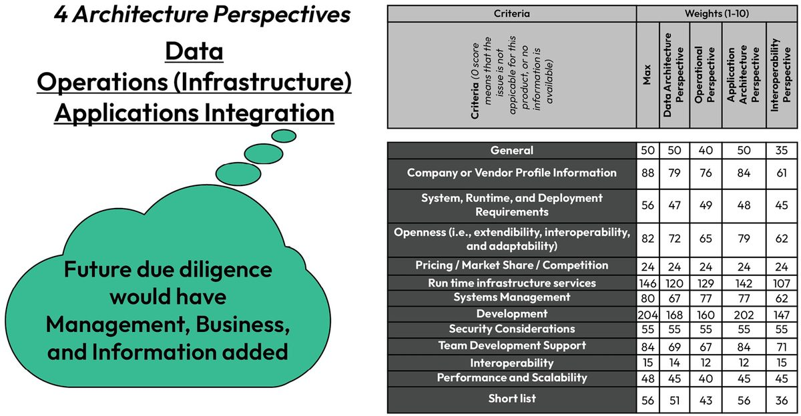
개별적으로 볼 때 가중치 및 채점 기준은 여러분의 주관적인 경험과 현재 기업의 아젠다에 따른 서비스 기능의 중요성을 나타냅니다. 전체 기업 관점에서 볼 때 최적의 솔루션은 각 아키텍처 관점의 평균입니다. 또한 *Figure 12**.2*에 표시된 것처럼 객관적으로 채점되고 가중치가 적용된 결과를 도출하기 위해 수집된 데이터를 요약해야 합니다.
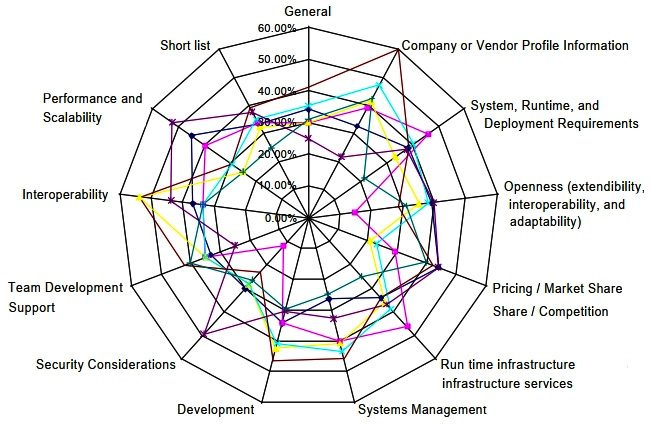
전달하고자 하는 핵심 내용, 즉 실사의 필요성과 합의를 도출하는 프로세스에 중요하지 않기 때문에 이전 다이어그램에서 실제로 선택된 도구는 생략했습니다. 최신 기술로 현대적인 데이터 서비스 에코시스템을 구축하는 데는 여전히 25년 전 사용 가능했던 이전의 모놀리식 애플리케이션 서버 제품과 유사한 역량이 필요합니다. 제품 선택을 위한 실사 프로세스는 오늘날에도 크게 다르지 않습니다. 분석 후 도구 선택 결과는 현재의 데이터 볼륨과 클라우드 공급업체의 역량을 고려할 때 매우 다릅니다. 확장을 처리하기 위해 대규모 데이터 스토리지, 분산/HA 및 파이프라인 처리 요구사항을 해결해야 하며 더 많은 통합 고려사항이 있습니다. 아키텍처와 매끄럽게 통합되는 도구를 우선시하면 선택된 도구에 대한 합의를 유지하여 솔루션을 시장에 빠르게 출시할 수 있습니다.
데이터 엔지니어링 모범 사례 9: 동일한 데이터셋을 구독하는 고객 지원 시 규모의 경제를 위해 발행/구독 모델을 구현하라
Chapter 14 {https://packt-debp.link/Jc435z}에서 Pub/Sub 스트림의 중요성에 대해 자세히 설명하겠지만 이번 장의 모범 사례에서는 고객의 반복적인 워크로드를 서비스해야 하는 필요성에 초점을 맞출 것입니다. 과거에는 동일한 데이터에 대해 두 개의 요청이 들어왔을 때 두 번째 요청은 캐시에서 서비스했습니다. 중복 요청 부하로 데이터 오리진(소스)에 과부하를 주고 싶지 않기 때문에 이렇게 하는 것이 타당합니다. 캐시를 신뢰할 수 있고 라이트스루(write-through) 트랜잭션으로 최신 상태를 유지하는 한 캐시 접근 방식은 잘 작동했습니다. 브라우저 및 데이터 서비스를 가속화하기 위해 인터넷의 엣지에서 웹 객체, 페이지 및 스크립트(예: JavaScript) 아티팩트를 캐시하도록 Akamai와 같은 content delivery networks (CDNs)를 구현하기도 했습니다.
요청 데이터가 겹칠 때 데이터 서비스 요청 팬아웃(fanout)을 위한 패턴을 구현하고 해당 접근 방식을 데이터 서비스 Pub/Sub 아키텍처의 실질적인 구현으로서 캐싱 설계와 통합해야 합니다. 간단하게 들리지만 데이터 서비스 코드를 재배포한 후 캐시를 무효화(bust)하고 웜업(warm)해야 하는 시점을 알아야 합니다. 저자들의 조언은 항상 cache manager를 설계 및 구축하고 이를 사후 대책으로 남겨두지 말라는 것입니다. 캐시 매니저가 똑똑할수록 비용 영향을 최적화하면서 서비스 성능을 향상시킬 수 있습니다.
마지막 조언: 캐시 매니저 설계에 시간을 투자하면 데이터 서비스가 논리적 데이터 변경에 의해 구동된다는 것을 알게 될 것입니다. 저수준의 물리적 데이터 변경이 아니라 캐시 매니저 명령의 논리적 데이터 변경과 연계하십시오. 이러한 유형의 논리적 캐시 제어는 비즈니스 측면에서도 캐싱을 이해하기 쉽게 만들어 줄 것입니다. Xignite 및 기타 금융 데이터 서비스 제공업체는 사용자가 백엔드의 중복 작업을 최소화하면서 맞춤형 데이터 업데이트를 수신할 수 있도록 데이터 서비스를 최적화하는 데 많은 시간을 투자합니다.
또한 한 가지 예로 블룸버그의 초기 시절, 저자(Rich Schiller)는 SunOS(UNIX) 환경에서 지능형 캐싱과 아직 출시되지 않았던 새로운 Bloomberg API를 사용하여 직접 작성한 커스텀 게이트웨이를 통해 단일 Bloomberg Terminal에 데이터를 공급하는 속도보다 빠르게 100대의 기관용 데스크톱에 데이터를 분배할 수 있음을 보여주었습니다(1994년경). 여담이지만 이것은 Tom Secunda 옆의 Michael Bloomberg 책상 뒤 판지 상자 위에 놓인 노트북으로 구축되었습니다. 대단한 도전이었습니다! 당시에 실제로 공동 개발 중이었던 것은 저의 옆자리에 앉아 있던 Bloomberg LP의 Art Finkelstein이 개발 중이던 미출시 Bloomberg API였습니다. 저는 테스트와 개발을 동시에 진행했습니다. 그 결과물이 바로 실질적인 Micrognosis/Bloomberg Gateway였습니다. 이 게이트웨이는 한마디로 인상적이었습니다! Micrognosis에 인수되기 전 FD Consulting의 아키텍트로서, 주력 트레이딩 정보 시스템은 매우 빨랐습니다. TCP/IP나 멀티캐스트 IP 데이터 전송 프로토콜 대신 UDP/IP 데이터 전송을 사용했습니다. Micrognosis/Bloomberg Gateway는 느리지만 가치 있는 블룸버그 데이터를 빠른 금융 데이터 분배 시스템과 연결했습니다. 게이트웨이의 개념 증명은 스마트 캐싱 게이트웨이를 구축하면 확장성 문제를 해결하는 팬아웃 게이트웨이 없이는 약 30,000명의 동시 터미널 사용자로 제한되어 발생하는 기하급수적인 사용자 증가로 인한 성능 문제를 해결하도록 블룸버그 시스템을 스케일아웃하는 방법을 구축할 수 있음을 보여주었습니다. 말할 필요도 없이 오늘날 블룸버그의 내부 터미널 게이트웨이는 터미널 시스템 사용자를 위해 이 팬아웃 서비스를 제공하고 있습니다. 스마트 컨트롤러 기반 캐싱 서비스는 오리진 부하를 줄이고 글로벌 다중 리전 확장을 지원합니다.
데이터 엔지니어링 모범 사례 10: 데이터셋의 깨끗한 골드 존 사본 생성을 위한 데이터 랭글링 도구를 선정하라
Chapter 13 {https://packt-debp.link/nUPfEd}에서 데이터 프로파일링(데이터 랭글링)에 대해 매우 자세히 설명합니다. 이번 장의 데이터 서비스 설계와 관련하여 모범 사례는 다음과 같이 요약할 수 있습니다.
Key takeaway
master data management (MDM)을 비전통적인 방식으로 구현하십시오!
이는 전통적인 MDM 솔루션을 구매하지 않고도 그 기능의 상당 부분을 해결해야 함을 의미합니다. enterprise resource planning (ERP) 시스템과 마찬가지로 MDM 솔루션 벤더들은 지나치게 비싼 제품, 높은 종속성(lock-in), 대부분의 기업이 감당할 수 없는 예산 위험을 초래한다는 악명을 얻었습니다. 실패하거나 인수되거나 고전 중인 MDM 벤더 목록은 여러분의 조사에 맡기겠습니다. 몇 가지 기업 성공 사례가 있지만 모두 레거시 사고방식과 막대한 자금력을 동반합니다.
신뢰할 수 있는 데이터 서비스를 설계할 때 적절한 데이터 랭글링 도구를 선택하는 것은 매우 중요합니다. 저자들이 구축을 제안하는 접근 방식은 내부 데이터 소비자에 초점을 맞춰야 합니다. 그런 다음 테스트를 거친 후 외부 데이터 소비자에게 서비스를 노출하기 전에 측정된 품질로 서비스를 확장해야 합니다. 데이터 팩토리 파이프라인을 테스트베드로 활용하십시오.
예를 들어 Pricing Excellence {https://packt-debp.link/0ABdze}는 웹 스크래핑된 소매 데이터 비즈니스 제품을 위해 Data Ladder {https://packt-debp.link/c8Oqxr} 및 Data Match {https://packt-debp.link/IyAUGc} 제품을 개발했습니다. 이는 독립된 제품으로 만들어질 만큼 훌륭했던 내부 제품이었습니다. Pricing Excellence의 목표는 분석을 위한 정제된 소매 데이터를 제공하는 것이었으며 이 분야의 많은 사람들이 알고 있듯이 소매 데이터는 결코 정제되어 있지 않습니다!
랭글링 기능을 사용하여 아키텍처의 골드 영역 데이터셋과 소비 가능 영역 데이터셋을 큐레이션함으로써 마스터링된 데이터가 최고 수준의 품질과 유용성을 유지하도록 하십시오.
데이터 엔지니어링 모범 사례 11: 데이터 카탈로그를 핵심 메타데이터 구현의 일부로 활용하라
Chapter 13 {https://packt-debp.link/OVNBOu} 및 Chapter 16 {https://packt-debp.link/aTJDRq}에서는 데이터 및 분석 셀프 서비스를 위한 카탈로그 생성 필요성을 다룹니다. 이번 장에서는 데이터 리니지와 데이터 버전을 카탈로그화해야 할 필요성을 강조합니다. 데이터 버전은 데이터가 팩토리 파이프라인을 통과하면서 남겨지는 내부적으로 보존된 추적 기록입니다. 이는 프로덕션에 승인되는 최종 큐레이션 형태가 생성될 때까지만 필요합니다. 이 시점 이후에는 메타데이터 리니지 버전을 정리하거나 제거하거나 궁극적인 단계적 폐기를 위해 아카이브에 배치해야 합니다. 필요한 것만 보존해야 합니다. 여기서 데이터 롤백이 발생할 경우를 대비하여 필요한 만큼만 보존해야 합니다. 이전 리니지 메타데이터 버전을 즉시 영구 삭제하지 말고 만약을 대비해 아카이브하십시오!
많은 메타데이터, 딕셔너리, 카탈로그 도구는 앞서 설명한 버전 관리를 처리하지 못하며 데이터가 달라붙어 빠져나가지 못합니다(Azure Purview와 마찬가지로 카탈로그 저장소에 들어가면 정리할 수 없음). 데이터 프로덕트가 최종으로 표시된 후 불필요한 카탈로그화 메타데이터 브래킷은 우수한 메타데이터 관리 프로세스를 수행하기 위해 서비스에서 제외되어야 합니다.
데이터셋의 최종 릴리스 세트에 대한 메타데이터만 딕셔너리/카탈로그에 보존되어야 합니다. 설계의 모든 메타데이터에 설명적인 수명 주기 태그를 레이블로 지정해야 합니다. 메타데이터에 대한 이러한 메타데이터는 데이터 메시의 이러한 암묵적인 수명 주기 요구사항을 구현할 수 있는 방법입니다. 서드파티 도구나 클라우드 제공업체가 아직 이러한 기능을 기본적으로 지원하지 않더라도 딕셔너리 및 메타데이터 카탈로그 관리를 위한 지원을 직접 구축해야 합니다.
데이터 엔지니어링 모범 사례 12: 데이터 소유자, 보안, 권한 및 소비자의 접근 방식을 사전에 정의하라
앞서 이번 장의 ”Software and data engineering drivers for best practices” 섹션 내 “Zero trust versus defense in depth”에서 솔루션 설계 초기부터 보안에 대해 고민해야 한다고 지적했습니다. 프라이버시, 권한, 권리 관리 기능 또한 미래 경쟁력을 갖춘 설계의 일부이므로 이는 단순한 접근 제어 기능 이상의 것을 제공합니다. 구현하는 데이터 서비스에 대해 데이터 소유권과 보안을 사전에 명확하게 정의해야 합니다. 그런 다음 데이터 서비스 자체를 보호해야 합니다. 이는 신뢰할 수 있는 데이터 관리 프랙티스를 유지하는 데 필수적입니다. 클라우드 제공업체의 모범 사례를 사용하고 가능한 모든 것을 예측하더라도 악의적인 행위자가 통제를 우회할 방법을 찾았을 때 이에 대응하는 법을 배워야 한다는 점 외에는 오늘날 단 하나의 처방적 모범 사례는 없습니다. 이를 예측하십시오! 솔루션에 ZTNA를 구축하십시오. 하지만 프로덕션 솔루션의 현재 상태 보안을 관찰하고 행위자의 계획이 감지되는 즉시, 그리고 전개되기 전에 알림을 주는 프로브를 실행할 수 있는 명령 및 제어 역량도 구축하십시오. 골드 영역 데이터에 대한 접근을 차단하는 게이트를 구현하고 이 모든 것을 기업 데이터의 손상을 막기 위한 최후의 수단으로 호출할 보안 런북에 포함시키십시오.
데이터 카탈로그를 사용하여 어떤 자산을 어떻게 보호해야 하는지 결정하십시오. 이는 관리 중인 데이터셋에 대한 정성적 메타데이터가 존재함을 전제로 합니다! 기업에 대한 데이터의 가치는 딕셔너리에 캡처되어야 합니다. 결국 여러분은 단순한 기업 데이터 모음이 아니라 보호해야 할 데이터 프로덕트를 가지고 있는 것입니다. 또한 사용자의 소비를 위해 도메인 소유자가 관리하도록 부여된 모든 부가가치 직접 또는 파생 데이터는 보호가 필요합니다. 데이터 보안 계약상의 의무를 지원하도록 스크립트 및 소프트웨어 코딩된 보안 평가 프로세스를 구동하십시오. 이는 데이터 자산을 효과적으로 관리하는 데 있어 매우 중요한 역할입니다.
예제 1: D&B가 데이터 카탈로그를 활용하는 방법
D&B(https://www.dnb.com)와 관련하여 자세히 살펴볼 가치가 있는 몇 가지 역량이 있습니다.
- Enhanced data discover ability and accessibility: 비즈니스 정보 및 분석을 전문으로 하는 D&B는 전 세계 기업을 위한 방대한 데이터셋을 처리합니다. 데이터 카탈로그는 분석가와 고객이 이 데이터에 더 쉽게 접근할 수 있도록 하여 필요한 특정 정보를 신속하게 찾을 수 있도록 지원합니다. 카탈로그 내의 메타데이터 설명, 태깅 및 검색 기능은 데이터를 검색하는 데 소요되는 시간을 줄여 효율성과 사용자 만족도를 높입니다.
- Improved data governance: 특히 신용 위험 및 비즈니스 인텔리전스와 관련된 D&B 데이터의 민감성과 규제적 영향을 고려할 때, 데이터 카탈로그는 강력한 데이터 거버넌스 정책을 구현하는 데 도움을 줍니다. 데이터 소유권, 접근 제어, 사용 정책을 정의하여 GDPR 및 CCPA와 같은 규정을 준수하도록 지원합니다(앞선 설명 참조). 카탈로그는 데이터 리니지를 추적하여 데이터 출처, 변환 및 사용에 대한 투명성을 제공하며 이는 감사 가능성과 신뢰성에 매우 중요합니다.
- Quality and consistency: 데이터 카탈로그는 데이터 소스, 품질 메트릭, 업데이트 빈도에 대한 정보를 카탈로그화하여 D&B 제품 전반에 걸쳐 높은 데이터 품질과 일관성을 유지하는 데 기여합니다. 이를 통해 고객은 정확하고 신뢰할 수 있는 정보를 수신할 수 있으며 D&B 데이터 서비스에 대한 신뢰와 의존도를 높일 수 있습니다.
- Facilitates collaboration: 데이터 카탈로그는 데이터를 쉽게 검색하고 이해할 수 있도록 함으로써 조직 내부 및 외부 파트너와의 협업을 장려합니다. 팀이 기존 데이터 자산을 보다 효과적으로 활용하고, 데이터 수집 및 준비에서 중복 작업을 방지하며, 보다 빠르게 혁신할 수 있도록 지원합니다.
D&B의 경우 데이터 서비스의 초점은 품질, 커버리지 및 검색성에 맞춰져 있습니다. 또한 D&B Connect Discover {https://packt-debp.link/VHmJY6}를 사용하면 해당 서비스를 사용하여 여러분의 데이터를 D&B 데이터와 함께 마스터링할 수 있습니다. 이 D&B 서비스로 얻을 수 있는 가치의 예는 Ricoh의 다음 인용문에서 찾을 수 있습니다.
“All customer information is provided to our sales using D&B data to ensure we are properly optimizing territories, etc. Sales have a more direct line of sight to customers that we are calling on.” (영업 부서가 영업 구역 등을 적절히 최적화할 수 있도록 모든 고객 정보가 D&B 데이터를 사용하여 제공됩니다. 영업 부서는 우리가 접촉하는 고객을 더 직접적으로 파악할 수 있게 되었습니다.)
Christopher Chando, VP of Financial Solutions, Ricoh Americas Corporation {https://packt-debp.link/XDdqCy}
기업 간 영업 프로세스를 관리할 때 정제되고 최신의 기업 및 연락처 데이터는 매우 큰 가치를 지닙니다.
또 다른 데이터 서비스 사례는 Xignite의 데이터 카탈로그 기능에서 찾을 수 있습니다.
예제 2: Xignite가 데이터 카탈로그를 활용하는 방법
Xignite(https://www.xignite.com/products) 역시 자세히 살펴볼 가치가 있는 몇 가지 데이터 서비스 기능을 보유하고 있습니다.
- Real-time data management: Xignite는 금융 시장 데이터를 실시간으로 제공하므로 최신 정보에 대한 즉각적인 접근이 필수적입니다. 데이터 카탈로그는 주식, 통화, 원자재를 포함한 다양한 데이터 스트림의 메타데이터를 관리하여 사용자가 최신 데이터에 신속하게 접근하고 이를 애플리케이션에 통합할 수 있도록 지원합니다.
- Scalability and efficiency: Xignite의 경우 효율성을 유지하면서 전 세계 수천 고객의 요구를 충족하도록 확장하는 것이 매우 중요합니다. 데이터 카탈로그는 데이터 검색 및 통합 프로세스를 최적화하고 오버헤드를 줄이며 데이터 서비스의 응답 시간을 개선하여 이를 지원합니다.
- Client customization and personalization: 데이터 카탈로그는 사용 가능한 데이터 프로덕트 및 서비스에 대한 메타데이터를 제공하여 Xignite가 고객에게 맞춤형 데이터 솔루션을 제공할 수 있도록 지원합니다. 이를 통해 고객은 특정 요구사항에 맞게 필요한 데이터를 정밀하게 선택할 수 있어 고객 만족도와 참여도를 높일 수 있습니다.
- Compliance and security: D&B와 마찬가지로 Xignite는 데이터 보안과 규정 준수가 가장 중요한 고도로 규제된 금융 업계에서 운영됩니다. 데이터 카탈로그는 데이터 민감도 수준, 접근 제어, 규정 준수 관련 메타데이터를 카탈로그화하여 보안 정책 및 규제 준수를 시행하는 데 중요한 역할을 하며 금융 데이터가 안전하게 처리되고 글로벌 금융 규정을 준수하도록 보장합니다.
Xignite의 데이터 서비스를 통해 금융 서비스 데이터 요구사항을 위한 실시간 성능, 확장성, 포괄적인 데이터 커버리지에 대한 집중을 관찰할 수 있습니다.
방금 살펴본 D&B와 Xignite의 두 가지 사례 모두에서 데이터 카탈로그의 구현은 단순히 유익한 것을 넘어 데이터 에코시스템의 복잡성, 규모, 규제 요구사항을 관리하는 데 필수적입니다. 데이터 카탈로그는 데이터 관리 전략의 기본 구성 요소로서 방대한 데이터 자산을 효과적으로 활용하고, 데이터 품질과 거버넌스의 높은 표준을 유지하며, 접근 가능하고 신뢰할 수 있으며 규정을 준수하는 데이터 서비스를 통해 고객에게 가치를 제공할 수 있도록 지원합니다.
데이터 엔지니어링 모범 사례 13: 전문가를 양성하고 지식을 전파하도록 하라
데이터 서비스 설계를 구축할 때 사람, 프로세스, 기술 역량 간의 균형을 맞추어야 합니다. 사람과 관련하여 현대적인 데이터 서비스 에코시스템이 요구하는 기술 및 프로세스 변화를 소통해야 합니다. 데이터 서비스 설계를 단순히 새로운 API 정도로만 이해한다고 생각하는 레거시 공룡 같은 집단을 발견하게 되겠지만 이 설계는 사고방식의 지각변동을 수반합니다. 따라서 비전 있는 설계자(바라건대 여러분 자신)가 여러 기술 전도사(evangelist)를 교육하여 다양한 팀에 메시지를 전달해야 합니다. 이들은 기술팀뿐만 아니라 비즈니스팀도 포함합니다. 여러분은 데이터 서비스 모델을 역전시켜 데이터가 덜 이동하도록 만들고 있습니다. 또한 데이터는 백엔드에서 소비자가 강화한 알고리즘으로 처리된 다음 소비자의 시스템에서 최종 렌더링되도록 출력이 방출될 것입니다. 이를 위해서는 이러한 유형의 데이터 서비스 아키텍처의 핵심인 지속적인 교육과 지식 이전이 필요합니다. 이는 또한 혁신 문화와 여러분이 데이터 엔지니어링 노력의 결과로 보고자 하는 모범 사례에 대한 준수를 촉진합니다.
이러한 교육 개발을 위해 center of excellence (COE)를 개발해야 합니다. 교육 인력 양성에는 COE 직원을 위한 train-the-trainer 접근 방식이 포함되어야 합니다. 모든 사람이 데이터 서비스 API 구현을 직접 실습해 볼 수 있도록 부트캠프 프로그램을 만드는 것이 좋습니다. 샘플 애플리케이션을 체험하고 사용자가 경험을 쌓을 수 있도록 Xignite와 같은 데이터 서비스 포털을 구축하십시오. 모든 데이터 소비자에게 데이터 서비스를 전면 공개(generally available)하기 전에 모든 사람의 피드백을 수렴하십시오.
데이터 엔지니어링 모범 사례 14: 오류를 우아하게 처리하라
데이터 서비스를 구축할 때 SLA를 진지하게 다루어야 하며 데이터 소비자의 관점에서 항상 해당 사양에 따라 서비스를 운영해야 합니다. 이것이 불가능할 때가 있을 것이며 SLA의 엄격한 준수와 특정 성능 저하 모드(degraded mode) 사이의 경계가 필요합니다. SLA 허용 오차 내에 있지만 100% 데이터 전달 규정을 준수하지는 못할 수 있습니다. 주말 동안 상세 팩트 저장소의 유지보수(또는 제품 업그레이드)가 진행될 때 요약 분석 결과는 제공되지만 세부 사항으로의 드릴다운은 불가능한 경우 이러한 현상을 볼 수 있습니다. 서비스는 실행 중이며 집계 수준에서는 데이터를 공급하지만 세부 수준에서는 공급하지 않습니다. 이러한 기능적 성능 저하는 일반적이며 필요합니다. 데이터 계약에 이것이 허용 가능한 것으로 명시되어 있는지 확인하기만 하면 됩니다. SLA는 여전히 99.xxx%로 유지되지만 데이터 계약에 이러한 단서 조항을 포함하게 됩니다.
실제 오류가 발생했을 때 솔직하고 투명해야 하며 가능한 한 많은 기능을 보호하기 위해 운영 수준을 낮추어야 합니다. 그 결과 SLA를 하향 조정하되 무작위적인 유동적 기준이 아니라 매우 구조화된 방식으로 조정하여 SLA가 특정 저하된 수준으로 보고될 수 있도록 해야 합니다. 기본 서비스 수준과 마찬가지로 오류 처리 서비스 수준을 구조화하고 허용 가능한 메트릭의 서비스 스윔레인(swim lane) 내에 머물러야 합니다. 그런 다음 상태 전환을 명확한 위반이지만 관리되고 있는 위반으로 보고해야 합니다. 이와 관련된 모든 mea culpa {https://packt-debp.link/9QjY9o} 보고는 여전히 필요합니다. 이는 데이터 서비스가 잘 실행될 수 있고 명확하게 정의된 성능 저하 운영 모드의 매개변수 내에서 충분히 잘 실행될 수 있다는 신뢰를 구축합니다.
데이터 파이프라인의 무결성과 신뢰성을 유지하기 위해 데이터 서비스에 체크포인트 및 replay 기능을 포함한 구조화된 오류 처리 메커니즘을 구현하는 것이 매우 중요합니다.
데이터 파이프라인의 Checkpoints and replay mechanisms은 데이터 서비스의 유효 SLA를 유지할 수 있게 해줍니다. 데이터 서비스 재설정이 필요한 경우에도 체크포인트에 의해 유지 관리되는 last known good 상태에서 효과적으로 재설정할 수 있습니다. 이는 엔드투엔드 데이터 서비스 의존성 맵 전반에 걸쳐 애플리케이션 트랜잭션에 대한 재설정 및 replay 로직을 조정할 서비스 관리자가 필요함을 의미합니다. 이 모든 것은 개발자가 try/catch 로직을 임의로 결정하도록 내버려 두지 않고 오류 발생 시 따라야 할 일련의 복구 패턴을 제공해야 함을 의미합니다. 단순히 fail fast하는 것만으로는 충분하지 않습니다! fail gracefully하고 recover effectively해야 합니다.
Graceful error handling은 견고한 API 설계의 핵심 요소로, 문제가 발생했을 때 사용자에게 명확하고 유익한 피드백이 제공되도록 보장합니다. 이 모범 사례는 사용자 경험을 개선할 뿐만 아니라 문제를 보다 효율적으로 디버깅하고 해결하는 데 도움을 줍니다. 공개 문서와 표준 API 설계 관행에서 일반적으로 관찰 가능하거나 유추할 수 있는 측면에 초점을 맞춰 D&B와 Xignite의 API 설계에 이 원칙이 어떻게 반영되어 있는지 살펴보겠습니다.
D&B API: 우아한 오류 처리
이 섹션에서는 D&B의 graceful error handling에 대해 자세히 설명합니다. 완벽하지는 않지만 이 예시는 여러분의 설계에서 보고 싶어 할 몇 가지 주요 기능을 잘 보여줍니다.
- Informative error messages: 구체적인 구현 세부사항은 다를 수 있지만 D&B와 같은 API는 일반적으로 오류의 성격을 나타내는 HTTP 상태 코드를 반환합니다(예: 400 for Bad Request, 404 for Not Found, 500 for Internal Server Error). 이러한 코드와 함께 사람이 읽을 수 있는 메시지나 이에 대한 자세한 문서를 찾을 수 있는 위치가 포함된 오류 코드를 포함하는 것이 일반적인 관행입니다. 이를 통해 최종 사용자나 개발자는 무엇이 잘못되었는지, 발생한 문제를 어떻게 해결해야 하는지 이해할 수 있습니다.
- Consistent error object structure: D&B와 같이 모범 사례를 염두에 두고 설계된 API는 오류 메시지에 일관된 구조를 사용하는 경우가 많습니다. 이 구조에는 error_code, message, error details와 같은 필드가 포함될 수 있어 개발자가 프로그래밍 방식으로 오류를 처리할 수 있는 표준화된 방법을 제공합니다.
- Rate limiting and throttling responses: 금융 및 비즈니스 데이터 도메인의 API를 포함하여 많은 API의 공개 문서에는 남용을 방지하고 정립된 데이터 계약에 대한 공정 사용 준수를 강제하기 위한 속도 제한 메커니즘이 자주 언급됩니다. 클라이언트가 할당된 요청 수나 총 데이터 한도를 초과하면 API는 일반적으로 현재 한도를 사용자에게 알리는 헤더와 함께 지정된 오류 코드(주로 429, Too Many Requests)를 반환하기 시작합니다. 또한 언제 다시 요청할 수 있는지에 대한 안내도 제공됩니다. 이는 데이터 계약 시행의 한 예입니다. 이 메커니즘은 서버 과부하 또는 남용을 방지함으로써 사용자에게 한도에 대해 안내합니다.
- Retry-after headers: 요청이 속도 제한을 받거나 계약된 SLA에 영향이 있는 상황에서 API는 응답에 Retry-After 헤더를 사용해야 합니다. 이는 클라이언트에게 요청을 다시 시도하기 전에 얼마나 기다려야 하는지 알려주어 올바른 사용을 안내하고 반복적인 오류 발생 가능성을 줄입니다.
Xignite API: 우아한 오류 처리
Xignite의 우아한 오류 처리(graceful error handling)에서는 견고성(robustness)과 흔히 API 친화성(API friendliness)이라고 부르는 요소에 중점을 둔 것을 볼 수 있습니다. 데이터가 매우 복잡함에도 불구하고 API를 통해 쉽게 데이터를 수집할 수 있습니다. 데이터는 정규화되어 있으며 값이 드물게 채워진(sparsely populated) 필드 데이터조차 명확히 설명할 수 있습니다:
- 상세한 금융 데이터 오류 응답: 금융 데이터의 중요성을 고려할 때, 효과적인 API는 데이터를 요청대로 조회하거나 처리할 수 없는 시나리오에 대해 상세한 오류 응답을 포함합니다. 여기에는 특정 티커 심볼(ticker symbol)이나 날짜 범위에 대해 데이터를 사용할 수 없는 경우에 대한 구체적인 오류 코드가 포함되어 사용자가 문제가 요청 파라미터 때문인지 데이터 자체의 가용성 때문인지 파악할 수 있도록 합니다. 여기서 중요한 점은 존재하는 데이터에 대해서는 유효한 데이터 필드를 제공하고 존재하지 않는 데이터에 대해 무수한 null 값들을 반환하지 않는 것입니다. 금융 데이터는 주식 종목당 30,000개 이상의 가능한 필드가 있을 정도로 희소(sparse)할 수 있습니다. 존재하는 것으로 알려진 필드와 금융 상품과 관련된 특정 데이터 클래스에 대해 시맨틱상 반드시 제공되어야 하는 필드는 자명(self-explanatory)해야 합니다. 반드시 제공되어야 하는 필드와 기술적으로 제공될 수 있는 필드에 대한 정의는 API 내에서 단순화되고 모호하지 않아야 합니다.
- 문서화 및 지원 체계 통합: 기술적 및 비즈니스 관점에서 데이터 서비스를 자명하게 만드는 것은 시스템의 유지보수성을 높이는 우아한 방법입니다. API 코드에 직접 포함되는 것은 아니지만 API 문서의 구성 방식과 개발자 및 데이터 소비자가 지원 문서에 얼마나 쉽게 접근할 수 있는지는 매우 유용합니다. Xignite의 접근 방식에는 오류 코드 및 시나리오에 대한 광범위한 문서화, 지속적인 문제에 직면한 개발자를 위한 통합 지원 채널, 그리고 개발자들이 해결책을 공유할 수 있는 커뮤니티 포럼이 포함됩니다. 또한 이 포털을 통해 데이터 소비자는 본격적인 개발을 시작하기 전에 다양한 언어 인터페이스로 데이터 서비스 API를 시험해 볼 수 있습니다.
- 폴백 데이터 및 부분 성공: 요청된 모든 데이터를 전달할 수 없는 경우(예: 일부 항목이 실패한 배치 요청), Xignite와 같은 금융 부문의 API는 성공적으로 조회된 데이터와 하위 시스템 실패에 대한 상세 오류를 모두 포함하는 응답을 설계합니다. 이를 통해 클라이언트는 문제의 범위를 파악하면서 사용 가능한 데이터를 기반으로 부분적으로 처리를 진행할 수 있습니다. 이는 장기적인 분석과 데이터 소비자 대상 보고를 위해 수집된 메트릭과 함께 수용되어야 하는 일종의 점진적 기능 저하(graceful degradation)입니다. 데이터 소비자 역시 이를 추적할 것이므로, 소비자가 SLA 및 데이터 계약 위반을 지적하기 전에 먼저 상황을 전달할 수 있어야 합니다.
- 서비스 상태에 관한 투명한 소통: 시간에 민감한 핵심 데이터를 제공하는 API의 경우, 서비스 상태 대시보드나 유사한 소통 채널을 유지 관리하면 사용자가 잠재적 다운타임이나 성능 저하에 대비해 계획을 세우는 데 도움이 됩니다. 이러한 오류 처리 측면은 데이터 소비자가 시스템에 장애가 발생했거나 발생 중인지 짐작만 하도록 내버려두지 않게 해줍니다. 검증 가능한 대시보드를 통해 신뢰를 유지하는 것은 신뢰성 표준을 수립하는 데 큰 도움이 됩니다.
D&B와 Xignite는 각각 필수적인 비즈니스 및 금융 데이터를 제공하는 역할을 수행하는 만큼, API 설계에서 우아한 오류 처리를 구현하는 데 지대한 관심을 기울이고 있습니다. 구체적인 구현 방식은 다양할 수 있고 공개 문서에 완전히 상세히 기술되어 있지 않을 수도 있지만 명확하고 실행 가능한 오류 메시지 제공, 일관된 오류 구조 사용, 유익한 응답을 동반한 속도 제한(rate limiting) 구현, 문서화 및 직접 지원을 통한 개발자 지원 등의 원칙은 API 설계에서 보편적으로 인정받는 모범 사례입니다. 이러한 방식은 개발자 경험을 향상시킬 뿐만 아니라 API의 신뢰성과 사용성도 높여줍니다.
데이터 엔지니어링 모범 사례 15: 여러 데이터 파이프라인 태스크를 유향 비순환 그래프(DAG)로 실행하라
데이터 요청의 올바른 실행으로 이어지는 각 논리적 활동 스레드의 종속성을 파악하는 것은 효과적인 데이터 서비스 오케스트레이션에 필수적입니다. 처리 단계 간 종속성, 저하된 운영 상태, 시스템 상태는 모두 종속성 그래프에 영향을 미칩니다. 클라우드 서비스 제공자의 수많은 PaaS 서비스, 자체 데이터 서비스 코드, 파이프라인 프로세스에 걸쳐 거대한 유한 상태 머신(finite state machine)을 구현할 때 실행 흐름이 심하게 엉켜버릴 수 있습니다! 시스템적인 교착 상태(deadlock), 끝없는 서비스 루프, 스스로 자초한 연쇄 장애(cascading failures)에 빠지고 싶지는 않을 것입니다. 이처럼 복잡하게 얽힌 잠재적인 설계 문제를 풀기 위해 데이터 서비스를 위한 서비스 등록(service registration) 기능을 구축해야 합니다. 이 서비스 레지스트라는 데이터 파이프라인에서 직접적인 태스크 오케스트레이션을 수행하거나, 파이프라인 실행 단계를 실시간으로 로깅하는 보조(sidekick) 프로세스로서 DAG {https://packt-debp.link/XJv0YG}를 활용합니다. 이 DAG는 모든 서비스 작업을 최적으로 구동할 수 있는 명확한 방법을 제공하여 점진적 기능 저하 운영이 완료된 후 시스템 복구로 이어지도록 합니다. 또한 데이터 운영의 효율성과 효과성을 최적화하여 간소화되고 일관된 데이터 흐름을 보장합니다. DAG는 대시보드 리포팅 및 모든 복구 로직에서 활용할 수 있는 신뢰할 수 있는 단일 출처(source of truth)가 됩니다. 이는 전체 재시작을 통해 치명적인 시스템 장애를 복구할 때 흔히 요구되는 과도한 조치 없이도, 국소적이고 빠른 복구 조치를 가능하게 합니다. DAG의 매핑이 없다면 정상 운영으로 복귀하는 유일한 방법은 강제적인 전면 서비스 재시작뿐입니다.
요약
데이터 서비스의 복잡한 세계에 대한 탐색을 마무리하면서 이러한 서비스에는 우아한 솔루션이 필수적이라는 점을 염두에 두고 지금까지의 여정을 되돌아보는 것은 유익합니다. 이는 데이터 서비스의 약속된 기능을 향한 신뢰를 지키고 데이터의 시맨틱을 훼손하지 않는 데이터 서비스를 통해 이를 온전히 지원해야 할 필요성에서 비롯됩니다. 결과적으로 기술적 구현은 결코 쉽지 않을 것이며 복잡한 데이터에 대해 우아하고 단순한 솔루션을 제공하기 위해서는 막대한 노력이 필요합니다. 데이터 서비스를 우아하게 만든다면 데이터 소비자도 이를 알아차릴 것이며 여러분의 노력이 성공적이었다고 말해줄 것입니다.
올바른 솔루션은 지구 깊은 곳의 막대한 압력과 고온 속에서 다이아몬드가 형성되는 것처럼, 상당한 복잡성과 도전 과제 속에서 탄생합니다. 이 은유는 단순히 결과의 비교를 넘어 프로세스, 환경적 조건, 그리고 원시 탄소에서 견줄 데 없는 강도와 아름다움을 지닌 보석으로 변모하는 변화의 여정을 포괄합니다. 데이터 서비스는 초기 설계부터 배포에 이르기까지, 급변하는 기술 혁신 속도와 규제 환경의 복잡성에 의해 빚어지고 다듬어지며 다이아몬드 형성과 유사한 변화를 겪습니다.
이 이야기에서 우리는 신뢰 보안 프레임워크, 데이터 현지화, 개인정보 보호를 포함한 기본 원칙들을 다루었습니다. 이들은 원석에 새겨진 초기 단면에 불과한 것이 아니라, 최종 제품의 투명도, 색상, 캐럿을 결정하는 결정적인 압력으로 작용합니다. 이러한 은유적 이미지를 데이터 서비스 설계 초기부터 적용하면, 결과물이 단순히 규정을 준수하고 안전할 뿐만 아니라 회복탄력성과 적응성을 갖추고 데이터 고유 가치의 무수한 뉘앙스를 담아낼 수 있게 됩니다.
데이터 엔지니어링 모범 사례를 탐구하면서 보석 세공사가 다이아몬드를 깎아내듯 데이터 서비스를 구축해야 한다는 점은 여전히 강조됩니다. 각 단면(facet)은 최종 제품의 전반적인 아름다움과 기능성을 높이도록 신중하게 계획되고 다듬어집니다.
효율적인 데이터 파이프라인을 구축하고 스테이징 및 프로덕션 환경의 일관성을 보장하는 것을 포함하여 올바른 아키텍처(데이터 메시 또는 데이터 패브릭)를 선택하는 것은 끊임없이 진화하는 디지털 환경의 요구를 충족할 수 있는 견고하고 확장 가능한 데이터 서비스를 만드는 데 기여합니다.
나아가 전략적인 도구 선택, DataOps 표준 준수, 데이터 품질에 대한 헌신은 단순한 운영상의 태스크가 아닙니다. 그것은 데이터 서비스의 광채를 이끌어내는 연마 작업입니다. 이러한 요소들은 데이터 서비스를 단순한 기능적 구조물에서 전략적 자산으로 격상시킵니다. 이를 통해 엔터프라이즈는 비할 데 없는 정밀성과 통찰력으로 데이터를 활용할 수 있게 될 것입니다.
이번 장을 마무리하며 데이터 서비스를 구축하는 장인 정신은 예술이자 과학임이 분명해집니다. 거친 원석 다이아몬드를 걸작으로 탈바꿈시키는 보석 세공사처럼, 우리 역시 기술, 지식, 비전을 발휘하여 데이터 서비스를 지속적인 가치와 효용성을 지닌 구조물로 빚어내야 합니다. 데이터 서비스를 마스터하는 여정은 진정 지속적인 과정이며 각 도전과 기회는 우리의 접근 방식을 다듬고 역량을 강화하는 역할을 합니다. 앞으로 나아가면서 마스터 보석 세공사의 창의성과 규율을 바탕으로 데이터 서비스 설계의 복잡성을 포용하고 디지털 다이아몬드의 잠재력을 온전히 발현한다는 궁극적인 목표를 항상 명심하십시오! 그렇게 함으로써 혁신과 성공으로 가는 길을 밝힐 뿐만 아니라 미래를 개척하는 데 있어 데이터 서비스가 수행하는 필수불가결한 역할을 확고히 할 수 있습니다.
다음 장에서는 솔루션의 데이터 프로파일링 기능을 구현할 때 다루어야 할 몇 가지 주요 고려사항에 대해 자세히 살펴보겠습니다. 또한 데이터 갭, 재진술(restatement), 수정(correction)을 올바르게 처리하는 방법도 다룰 것입니다. 본 장 전반에 걸쳐 적절한 메타데이터 관리의 필요성을 강조할 것이며 마지막으로 데이터 트렌드와 캘린더를 처리하기 위한 모범 사례를 제공할 것입니다.
13장. 관리 모범 사례를 위한 주요 고려사항
이번 장에서는 데이터 엔지니어링의 몇 가지 틈새 집중 영역을 다룹니다:
- 데이터 프로파일링
- 갭
- 재진술
- 수정
- 메타데이터
- 트렌드
- 데이터 캘린더
이러한 주제는 시스템 개발자들 사이에서 종종 뜨겁게 논쟁되는 분야이며 데이터 엔지니어로서 여러분은 내려지는 결정에 목소리를 내야 합니다. 목표는 명확히 정의된 컨텍스트 내에서 관련성을 유지하고 명백하게 정확한 데이터를 확보하는 것입니다.
현대적인 데이터 팩토리를 구축하는 일은 데이터를 목적에 맞게(fit for purpose) 만드는 처리 과정을 수반하기 때문에, 이러한 틈새 영역은 자연스럽게 데이터 프로파일링과 메타데이터라는 두 가지 유형으로 나뉩니다. 다운스트림 처리에서 사용 및 재사용할 수 있도록 데이터를 적절히 배치하는 것은 최종 사용자/소비자 애플리케이션의 필수적인 요구사항입니다. 오늘날과 미래에는 새로운 커스텀 소프트웨어를 만들 필요 없이 자동화된 지능, 머신러닝(ML), 지식 공학을 통해 데이터를 활용하고 이후에 재활용하게 될 것입니다. 데이터는 데이터 팩토리를 통과하면서 원시 수집 형태에서 가공 완료된 완제품 데이터 프로덕트(finished data product)로 변환됩니다. 이 최종 상태의 데이터 프로덕트는 인사이트(insight)로 명명되거나, 최소한 새로운 목적으로 활용되어 새로운 인사이트로 이어질 수 있는 스마트 데이터(smart data)가 될 것입니다. 오늘날의 데이터는 최초 수집되어 원래 용도로 큐레이션될 당시에는 전혀 예상하지 못했던 방식으로 재활용될 것입니다.
틈새 집중 영역: 모범 사례 개요
따라서 미래 경쟁력을 갖춘(future-proof) 데이터 솔루션을 구축하기 위한 계획에서 몇 가지 중요한 사항을 머릿속에 기억해 두는 것이 좋습니다. 다음의 틈새 데이터 주제들에 대한 상세 설명은 설계 결정을 내릴 때 고려해야 할 새로운 아이디어를 제공할 것입니다.
데이터 프로파일링(Data profiling)은 데이터를 랭글링(wrangling)하고 프로파일링 대상 데이터와 연관된 메타데이터 어노테이션으로 관찰 결과를 기록하는 작업을 수반합니다. 해당 데이터의 중요한 속성 중 하나는 시맨틱(semantics)에 의해 정의되는 컨텍스트(context)입니다. 또한 데이터 컨텍스트는 데이터 캘린더, 관찰된 파생 트렌드, 데이터의 암묵적 소스 정의 내에서도 설정되어야 합니다. 아울러 서비스 수준 협약(SLA)과 마찬가지로 기대치(데이터 계약)도 데이터에 구체적인 의미를 더해줍니다. 다른 컨텍스트도 존재하지만 여기서는 언급할 가치가 있는 몇 가지만 나열했습니다. 스윔레인(swimlanes)으로 시각화할 수 있는 허용 가능한 값의 범위는 주어진 데이터 컨텍스트에서 유효한 데이터 값을 제한합니다. 이러한 스윔레인 경계선은 데이터의 추세선(trendline) 위아래에 존재합니다. 곤충학적 의미에서 벌레를 잡기 위해 그물을 치는 비유는 데이터 프로파일링에도 그대로 적용됩니다. 수용 기준을 올바르게 구축하면 데이터 버그를 조기에 발견할 수 있습니다. 이를 통해 데이터가 올바르게 이해될 수 있는 상태로 보존됩니다. 데이터 프로파일링과 함께 버전이 지정된 데이터셋과 계약된 인터페이스의 공식적인 정의를 생성해야 할 필요성이 발생합니다. 이렇게 하면 데이터셋과 함께 데이터 프로파일이 제자리에 고정됩니다. 여기에는 시스템에 필요한 구문(syntactic) 및 시맨틱 래퍼가 포함되어 데이터가 진실을 왜곡하는 의미로 재구성되는 것을 방지합니다. 예를 들어, 최근 한 정치인이 명목 GDP(nominal GDP) 수치를 사용하여 미국의 실질 GDP(real GDP) 성장률을 잘못 인용한 사례를 들었습니다! 의미는 비슷하게 들릴지 모르지만 개념은 완전히 다릅니다. 실질 GDP는 인플레이션을 반영합니다. 단순히 GDP만 보고할 때는 실질 또는 명목과 같은 한정 컨텍스트 용어가 필요하며 그렇지 않으면 모호해지고 심각한 오해를 불러일으킬 수 있습니다. GDP에 “실제(actual)”와 같은 자유 형식의 수식어를 붙이는 것조차 부정확하며 실질 또는 명목 GDP와 혼동될 수 있으므로 오해의 소지가 있습니다. 데이터셋의 진정한 컨텍스트를 유지하려는 노력 속에서 이러한 문제를 여러 번 목격하게 될 것입니다. 비유적으로 데이터의 손잡이를 잡기 쉽게(예: 올바른 컨텍스트 내의 인터페이스) 만들기 위해서는 정확한 맥락적 의미를 고정하는 데이터셋 인터페이스와 함께 정밀함이 요구됩니다. 레거시 데이터 처리 시스템에서는 데이터의 컨텍스트가 생략되거나 소프트웨어 처리 코드 깊숙이 묻혀 있어 다운스트림 오류로 이어지는 경우가 너무나 흔합니다. 미래 경쟁력을 갖춘 데이터 프로파일링 기능은 이러한 문제를 해결해야 합니다.
갭(Gaps)은 감지된 정당한 비즈니스 사유뿐만 아니라 비정상적인 사유로 인해서도 발생합니다. 그 차이는 매장이 문을 닫아 소매 매출이 발생하지 않는 등 비즈니스 프로세스의 일환으로 발생하는 갭과, 오류로 인해 IT 시스템이 일주일 동안 출력을 생성하지 못하는 경우의 차이입니다. 갭은 메타데이터로 기록되어야 하며 해당 데이터는 되돌릴 수 있는(reversible) 방식으로 적절하고 완전하게 처리되어야 합니다. 이러한 처리 로직은 시간이 흐름에 따라 변경될 수 있습니다. 신문에 실린 사진을 볼 때 우리의 마음은 빈틈을 채워 넣습니다. 픽셀들이 완전한 단색을 이루지 않더라도, 우리가 보는 패턴이 흰색 여백의 빈 공간을 대부분 채우기 때문에 우리는 흰색 바탕 위의 선명한 검은색을 인지합니다. 데이터셋은 큰 그림을 완성하듯 처리 과정에서 갭을 무시하거나 매끄럽게 다듬는(smooth over) 방식으로 렌더링되어야 합니다. 이러한 기능은 분석을 위해 데이터를 정보로 렌더링할 때 필수적입니다. 데이터를 축소(zoomed-out) 레벨과 확대(zoomed-in) 레벨에서 모두 처리할 수 있어야 하며 그렇지 않으면 데이터의 사소한 세부사항(minutia)이 전체적인 그림을 왜곡하게 됩니다. 현실 세계의 데이터는 지저분하므로 마이크로 레벨뿐만 아니라 매크로 레벨에서도 처리되어야 합니다. 데이터 갭을 매끄럽게 연결하기 위해 은유적인 데이터 망원경을 구현해야 합니다. 현재 마땅한 용어가 없으므로 이를 데이터 렌징(data lensing)이라고 부르겠습니다. 데이터가 완벽하지 않다는 이유만으로 쿼리가 아무것도 반환하지 않는 것보다 모호한(fuzzy) 결과를 반환하는 쿼리를 실행할 수 있는 편이 훨씬 낫습니다! 이는 머신러닝 특성 추출(feature extraction) 프로세스에 필요한 임베딩을 할당할 때 핵심적인 조력자 역할을 하며 데이터의 초점이 맞춰져 인사이트로 이어질 때까지 반복해서 임베딩을 재생성할 수 있습니다.
재진술(Restatements)은 잠재적인 새로운 데이터 갭이나 수정된 데이터 중복(data overlaps)을 수반하여 시간이 흐름에 따라 필연적으로 발생합니다. 데이터셋에 대해 데이터 팩토리의 전체 재처리를 수행하는 비용은 비즈니스 영향과 IT 비용 측면에서 매우 높을 수 있습니다. 데이터가 지저분하고 최초 처리된 후 다시 제출될 수 있다는 사실은 데이터 팩토리 솔루션에서 본말이 전도되는(tail wagging the dog) 시나리오를 발생시킵니다. 데이터 재진술은 파생된 정보, 지식, 인사이트 및 큐레이션된 최종 데이터 프로덕트 출력에 연쇄적인 변화(ripple effect)를 일으킵니다. 우리의 경험상, 데이터 재진술로 인해 최종 상태의 큐레이션된 데이터셋에서 엄청난 계약 및 데이터 SLA 위반이 발생하는 것을 목격한 바 있습니다. 데이터 재진술의 파급 효과가 처리 영향도 측면에서 사전에 평가되지 않았기 때문입니다. 수정된 데이터셋 전체가 아닌 변경된 데이터만을 처리하도록 워크플로 단계가 사전에 구성되지 않았던 것입니다. 데이터 팩토리 로직은 들어오는 수정된 데이터셋 전체를 처리하는 방식이 아니라, 이러한 데이터 파문(변경 사항)만을 처리하듯 모든 처리를 다루도록 구성되어야 합니다. 이러한 데이터 변경을 구현하기 위해 파이프라인 이벤트 처리 청사진을 적용해야 하며, 이는 먼저 처리 작업을 계획하고, 분할(chunking)하며, 체크포인트를 구현한 다음(그리고 오직 그 이후에만!), 계획이 수립된 후 일련의 이벤트로서 계획을 실행하는 과정을 거칩니다. 입력 파일로서 데이터를 순차적으로 또는 맹목적으로 처리하는 기존의 레거시 모델은 현대적인 데이터 팩토리에서 작동하지 않습니다. 아울러 특별한 유형의 재진술로서 데이터 항목이 존재한다고 가정하는 데이터 수정(correction)이 있는 반면, 재진술은 항목의 존재 자체를 완전히 삭제할 수도 있다는 점에 유의하십시오.
수정(Corrections)은 동일한 논리적 데이터셋을 다른 값으로 수신하는 것을 의미하며 모든 현대적 시스템에서 예상되는 일입니다. 수정이 발생하면 다운스트림 처리에서 생성되거나 조정된 다른 데이터에 미치는 영향을 예상할 수 있습니다. 수정으로 인한 다운스트림 영향 처리는 먼저 영향도 평가를 수행한 후, 영향도 분류를 거쳐, 최종적으로 실행을 위한 이벤트 기반 계획을 수립하여 진행해야 합니다. 수정 처리는 대개 규칙 기반이며 수정 영향을 적용할 때 이벤트 계획에 의해 구동됩니다. 수정 처리는 소비자와 데이터 소비 시스템에 막대한 다운스트림 파급 효과를 초래할 잠재력이 있습니다. 여러분은 이러한 파급 효과의 영향을 측정할 수 있는 기능을 제공해야 하며, 영향이 임계값을 초과하는 경우 수정 적용을 계획하고 중단/되돌릴 수 있어야 하고, 필요한 경우 수정 작업 전체를 전면 재처리 작업으로 전환할 수 있어야 합니다. 이러한 고려 없이 수정이 이루어지도록 방치하면 SLA와 데이터 계약이 깨지게 됩니다. 이전 데이터를 바탕으로 경영진(C-level) 보고서를 발행한 분석가가 핵심 인사이트가 인사이트가 아니라 완전히 틀린 것이었음을 알게 되는 상황을 상상해 보십시오. 그 분석가가 여러분의 솔루션에 대해 어떻게 생각하겠습니까? 우리는 시스템이 데이터를 느리게 표시할 때 금융 트레이더들이 LCD 디스플레이 단말기를 발로 차서 부수는 것도 보았습니다. 방금 긍정적 신호에 따라 거래를 체결했는데 그 신호가 부정적으로 바뀌는 것을 보았을 때를 상상해 보십시오! 이러한 과거 데이터 수정 처리 문제는 금융 티커 플랜트(financial ticker plants) {https://packt-debp.link/OUgn3l}를 설계할 때 매우 중요한 문제입니다. 가격 변경은 수정이 적용되기 전에 이전 가격으로 거래하지 않은 경우에만 훌륭한 자산이 되기 때문입니다!
메타데이터(Metadata)는 데이터에 관한 데이터입니다. 앞선 장들에서 여러분은 메타데이터에 대해 많은 것을 배웠습니다. 종종 간과되는 점은 데이터 드리프트(data drift)를 해결하기 위한 메타데이터 클래스의 필요성입니다. 오랜 기간 동안 올바른 의미를 보존할 수 있도록 데이터의 시맨틱 변화를 고려해야 합니다. 따라서 메타데이터는 시계열(time series)에 민감합니다! 시맨틱 드리프트(semantic drift)의 정도가 어느 수준에 도달해야 해당 데이터를 완전히 새로운 타입으로 분류해야 할까요? 비즈니스 및 사회적 변화로 인한 변화는 데이터의 진화를 야기합니다. 엔터프라이즈가 성장하고 기본 데이터의 의미가 변함에 따라 이를 고려해야 합니다. 잠시 생각해 보십시오. 데이터의 컨텍스트를 포착하고 컨텍스트 변화를 반영하는 능력은 필수적입니다. 그래야만 더 이상 이전 값과 동일하다고 간주되지 않는 데이터 값이 변경될 때, 이를 새로운 타입으로 분류(즉, 다른 열, 클래스 또는 객체에 저장)할 수 있습니다. 몇 가지 예는 다음과 같습니다:
- 오늘날 어린이 장난감으로 분류될 수 있는 것이 미래에는 AI 기반 안드로이드가 될 수도 있습니다! 오늘날의 스마트워치는 1950년대 딕 트레이시(Dick Tracy)에 등장했던 트리뷴 미디어 서비스(Tribune Media Services)의 가상 기기가 현실화된 것입니다!
- 오늘날의 스마트폰은 내일의 웨어러블 게이트웨이 컴퓨팅 기기가 될 것이지만 ’웨어러블 게이트웨이’라고 불리기보다는 브랜드 이름으로 불리며 공격적으로 마케팅될 것입니다!
트렌드(Trends)는 단절(breakage)되거나, 합성 갭 채우기(synthetic gap filling)가 필요하거나, 평활화(smoothing)될 수 있습니다. 공식적인 데이터 트렌드를 수립함으로써 기본 데이터셋을 ML 모델 훈련에 사용할 수 있으며 데이터 팩토리의 모든 다운스트림 분석에 유용하게 활용할 수 있습니다. 데이터 먼징(data munging) 작업을 구현한 후에는 데이터셋의 트렌드 정확성을 평가해야 합니다. 필요한 경우 예상되는 트렌드 프로파일에 맞추어 데이터를 적합(fit data)시키기 위해 트렌드의 기반 데이터를 합성 데이터(synthetic data) 계층으로서 (물론 적절한 메타데이터 어노테이션을 추가하여) 값을 증강하거나 축소해야 합니다. 이 프로파일은 처리 중인 정보 클래스에 대해 알려진 진실을 나타내는 개발된 통계 모델을 기반으로 합니다. 이는 지저분한 데이터를 정제하고 시간이 지남에 따라 덜 지저분해질 때까지 처리 가능한 상태로 만드는 데 필요합니다. 데이터 엔지니어로서 여러분은 데이터를 목적에 맞게(fit for purpose) 만들기 위해 여러 단계의 조정을 거쳐야 하는 데이터를 처리해야 합니다. 예를 들어, 가장 최근의 인구 조사와 비교했을 때 특정 유권자 계층을 과소 대표하는 설문 조사 결과로 수집된 인구통계학적 프로파일을 생각해 보십시오. 미국 동부 해안 도시의 설문 조사가 스페인어와 영어로 모두 작성되지 않았다면 상당수 인구가 응답하지 않았을 가능성이 높습니다. 이 데이터셋의 트렌드와 관련하여 진실을 합리적으로 표현하기 위해 이전 인구 조사 모델에 통계적으로 적합해야 하는 설문 조사 데이터 결과를 어떻게 처리하시겠습니까? 먼저 원시 데이터 위에 계층으로서 일련의 데이터 포인트 조정을 생성해야 합니다. 미시적 레벨에서 원본 원시 데이터에 접근할 수 있으면서도 거시적 레벨에서 이를 사용할 수 있도록 만드는 것이 필요합니다. 이는 데이터의 신뢰성을 보존하며 원시 데이터셋의 트렌드를 계산하고 이상 징후를 치료하는 데 필요합니다. 전반적인 데이터 트렌드의 진실성은 종종 원시 데이터보다 더 중요하므로 매크로 레벨에서 정확해야 합니다. 마이크로 레벨에서 정확성을 정의하는 규칙이 위반되더라도 매크로 레벨의 데이터 트렌드는 참일 수 있다는 점에 유의하십시오. 재처리 가능한 원시 데이터와 합성 데이터 조정을 계층으로 유지하면 매크로 트렌드도 보존할 수 있습니다. 또한 시간이 지남에 따라 통계 모델이 변경될 때 모델이 생성한 모든 합성 조정을 재생성할 수 있게 됩니다. 모든 계층화된 조정은 감사 가능(auditable)하고 되돌릴 수 있어야(reversible) 합니다. 어떤 트렌드가 상식이나 입증 가능한 가설에 의해 정확하다는 것을 알고 있지만 원시 데이터셋이 아직 그 진실을 뒷받침하지 못하는 경우, 해당 트렌드를 보존하려면 데이터 조정이 필요합니다. 수신되는 데이터 값 역시 허용 가능한 값의 스윔레인 내에 유지되거나 조정되어야 합니다. 이러한 시간 경과에 따른 조정은 원본 원시 데이터셋 값 위에 수정 계층으로 적용됩니다. 원시 데이터셋 위에는 여러 개의 수정 계층이 배치될 수 있습니다. 이러한 데이터 오버레이(data overlays)는 원본 원시 데이터를 변경할 수 없지만 데이터셋 값 전체에 걸쳐 집계될 때 원하는 트렌드에 대해 데이터셋을 개념적으로 정확하게 만듭니다. 이제 데이터는 목적에 부합하게 됩니다. 소프트웨어 개선의 결과로 다른 오버레이에 부정적인 영향을 주지 않고 데이터 오버레이를 감사, 제거 또는 증강할 수 있는 기능은 더 높은 투명성을 제공하고 결과에 대한 신뢰를 구축합니다. 데이터 과학자나 분석가는 원본 원시 데이터셋에 적용된 데이터 오버레이 계층을 드릴다운하여 필요한 경우 원본 데이터까지 확인할 수 있어야 합니다. 모든 오버레이와 함께 원본 데이터셋에 접근할 수 있다는 점은 투명성을 통한 실질적인 신뢰를 제공합니다.
데이터 캘린더(Data calendars)는 데이터셋의 클래스 컨텍스트를 보존하는 데 필요한 핵심 동인입니다. 캘린더에 따라 도착하는 데이터의 일부 또는 전체 갱신은 올바른 의미를 보존할 때 필수적입니다. 캘린더 적용 대상 데이터는 동일한 조건(apples to apples)으로 비교될 때만 분석적 가치를 갖습니다. 데이터가 가치를 지니려면 그 컨텍스트를 드러내야 합니다. 공휴일의 소매 판매량이 평일이나 주말의 판매량과 다르다는 것은 개념적으로 알고 있을 것입니다. 또한 특정 날짜에 시작되어 2주 동안 진행된 판촉 행사나 무료 증정 이벤트가 있었다는 사실도 알 수 있습니다. 이러한 컨텍스트는 데이터와 연결되어야 합니다. 데이터를 분석할 때 이러한 캘린더는 데이터와 함께 정규화되고 합리화되어야 하며 캘린더 상의 차이로 인해 원하는 거시적 진실이 왜곡되지 않도록 보정 오버레이(데이터 렌즈)를 형성할 수 있습니다. 예를 들어, 분석가가 마케팅 캠페인의 효과를 확인하고자 한다면 평일 및 주말의 일반 판매량뿐만 아니라 캠페인으로 인한 초과 판매량 추세선 아래의 모든 매출을 필터링하여 제외할 것입니다. 분석가가 전반적인 매출 트렌드를 확인하고자 한다면 캠페인 기간 이후가 아닌 이전의 정상적인 매출만 고려되도록 캠페인 추세선 위의 판매량을 걸러내야 합니다. 캘린더 처리가 얼마나 복잡해질 수 있는지 보십시오! 한 달 내의 일반적인 일수가 월마다 다를 때 일별 수치를 보고해야 하는 상황에서는 더욱 복잡해집니다. 또한 윤년에는 4년마다 하루치 매출이 추가로 포함되어 2월 보고 월, 1분기 및 연간 수치에 영향을 미치게 됩니다. 올바른 데이터 컨텍스트를 기록하기 위해 표준 데이터/메타데이터 캘린더 접근 방식을 구현하면 동일 조건 하에서의 비교(apples-to-apples) 분석이 가능해집니다.
본 장에서 달성하고자 하는 목표는 미래 경쟁력을 갖춘 데이터 엔지니어링 솔루션을 구축할 때 까다로운 문제들을 먼저 해결해야 한다는 점을 인식시키는 것입니다! 그래야만 데이터 문제가 발생하기 시작할 때(그리고 문제는 반드시 발생합니다), 개발자들이 비용이 많이 드는 개별적이고 조잡한 틈새 솔루션을 급조하느라 우왕좌왕하는 모습을 보지 않게 될 것입니다. 대신 사전에 포괄적이고 면밀하게 고려된 솔루션에 기여할 수 있습니다. 이 솔루션은 아키텍처 설계를 기반으로 하며 데이터 엔지니어링 관리자의 경험과 비전을 반영합니다. 이러한 설계는 나중에 스트레스를 유발하게 될 이러한 틈새 영역의 솔루션에 대한 필요성을 미리 예측해야 합니다.
본 장의 개요에서 데이터 프로파일링과 메타데이터로 정의되는 두 가지 문제 틈새 유형을 다루어야 한다고 언급했습니다. 수집된 원시 데이터를 구문론적 및 의미론적으로 처리 가능하고 정확하며 완전한 형태로 강제 변환해야 한다는 점을 알고 계실 것입니다. 현장의 일부 사람들은 이러한 유형의 활동을 데이터 랭글링(data wrangling)이라고 부릅니다. 그 후, 시맨틱 의미와 함께 원본 데이터의 컨텍스트를 보존하기 위해 이 정제된 데이터를 다양한 클래스의 메타데이터로 장식/주석 처리(decorate/annotate)해야 합니다. 데이터에 내재된 진실은 데이터가 미래에 사용되고 종종 재활용될 수 있도록 합니다. 데이터-정보-지식-인사이트(DIKW: Data-Information-Knowledge-Insight) 지식 트리의 유효성은 명확하게 식별할 수 있는 의미와 컨텍스트로 얼마나 잘 장식했는지에 따라 분명하게 드러날 것입니다.
데이터 프로파일링
공식적인 정의와 함께 데이터 랭글링에 대해 다른 이들이 언급한 내용부터 살펴보겠습니다:
“데이터 클리닝, 데이터 치료(data remediation), 데이터 먼징이라고도 불리는 데이터 랭글링은 원시 데이터를 더 쉽게 사용할 수 있는 형식으로 변환하도록 설계된 다양한 프로세스를 의미합니다. 정확한 방법은 활용하는 데이터와 달성하고자 하는 목표에 따라 프로젝트마다 다릅니다.” (하버드 비즈니스 스쿨 {https://packt-debp.link/dZ7j9f})
미래 경쟁력을 갖춘 데이터 엔지니어링 솔루션을 구축하려면 데이터 소비자와 특히 데이터 과학자가 더 쉽게 소비할 수 있도록 데이터를 유용하게 만들어야 한다는 점을 강조하고 싶습니다. 데이터는 쉽게 이용 가능해야 하며 재작업이 필요하지 않아야 합니다. 데이터는 클래스로 분류된 후 그에 대한 인터페이스가 생성되어야 합니다. 이러한 인터페이스는 데이터가 목적에 맞게 준비되는 과정의 일환으로서 데이터 카탈로그에 보존되어야 합니다. 용도에 맞게 데이터를 올바르게 랭글링하지 않았을 때의 영향은 다음 인용문에 잘 드러나 있습니다:
“… 모든 데이터 과학자에게 물어보면 그들은 한결같이 ’데이터 랭글링, 데이터 클렌징, 데이터 변경에 내 시간의 80%든 60%든 대부분을 쓴다’고 답할 것입니다. 이러한 랭글링과 클렌징은 데이터 소스로 다시 위임되고 탈중앙화되어야 합니다. 데이터는 전달받았을 때 진정으로 바로 사용할 수 있는 상태여야 합니다.” (자막 데가니(Zhamak Dehghani), {https://packt-debp.link/SHc96l}).
데이터 과학자, 데이터 소비자, 분석가를 위한 솔루션을 구축할 때는 그들의 입장이 되어보는 것이 필수적입니다. 여러분은 그 까다로운 작업을 더 쉽게 만들어주는 데이터 인터페이스를 구축하고자 할 것입니다. 지금뿐만 아니라 미래에도 그들이 데이터를 즉시 사용할 수 있도록 보장해야 하며 그들뿐만 아니라 미래에 구축될(아직 구축되지 않은) 모든 AI 또는 기계 판독 가능한 소비자까지 서비스 대상에 포함되기를 원할 것입니다. 이렇게 하면 데이터는 영구적으로 소비 가능한 상태가 됩니다. 특성 추출(feature extraction)과 추출된 핵심 데이터셋 내에서 시맨틱상 정렬된 임베딩(semantically aligned embeddings)의 생성은 머신러닝 운영(MLOps)의 일부입니다. 이것이 데이터셋과 함께 지원되고 ML 모델 생성 전에 사용 가능하다면, 번거로운 MLOps 작업의 범위가 줄어듭니다. 데이터셋을 장식하고 컨텍스트 오류를 줄임으로써 더 나은 ML 결과를 얻을 수 있습니다. 결과물이 ML 알고리즘의 출력에 측정 가능한 긍정적 영향을 미치므로 이러한 노력은 충분히 가치가 있습니다. 또한 데이터 팩토리의 파이프라인 설계에 본 도서에서 제시한 모범 사례를 구현했기 때문에 데이터 오류 역시 사전에 해결될 것입니다.
여러분은 팩토리 내에서 큐레이션된 모든 데이터의 총합에 대해 데이터 서비스 인터페이스를 생성해야 합니다. 데이터 프로파일링(데이터 랭글링이라고도 함) 출력에 투자된 모든 기능과 특징은 이러한 인터페이스를 통해 표준화된 방식으로 소비될 수 있습니다. 오늘날 데이터 과학자는 수많은 데이터 추출기(data extractors)를 작성해야 하며 이는 결코 효율적이지 않습니다. JSON, JSON-LD, 그때그때 유행하는 다양한 SQL(SQL du jour), 원시 파일, RAW JSON, Parquet, Thrift, Avro, 커스텀 객체 직렬화기(custom object serializers, 우리도 수없이 구축해 보았습니다) 등이 그 예입니다. 기존의 레거시 추출 방식을 거친 후에도 원시 데이터는 여전히 정규화되지 않았고, 갭투성이이며, 평활화되지 않았고, 캘린더에 맞게 정규화되지 않았으며, 예상되는 트렌드에 적합하지도 않습니다. 랭글링되지 않은 데이터가 얼마나 엉망인지에 대한 모든 부정적인 평가는 데이터 엔지니어를 향한 욕설 세례로 터져 나올 것입니다. 흔히 데이터 과학자들은 데이터 팩토리가 기대에 맞게 변환해 줄 수 있었던 미흡한 품질의 데이터에 안주해야만 합니다. 특성 추출과 시맨틱 정렬을 쉽게 만드는 것은 데이터 엔지니어의 핵심 목표이며 이는 결코 달성하기 쉬운 목표가 아닙니다.
따라서 데이터 구조와 메타데이터 컨텍스트에 많은 노력을 기울일 것을 제안합니다. 이를 통해 데이터 추출기 인터페이스(클래스 객체의 getter 메서드)가 데이터 과학자가 요구하는 형식으로 데이터의 최종 렌더링을 수행할 수 있게 됩니다. 추출된 데이터의 사용 방식을 모두 제어할 수는 없지만 파이프라인을 거쳐 큐레이션된 데이터를 필요한 모든 용도에 맞게 통일된 데이터 및 메타데이터 형태로 렌더링할 수 있는 일종의 시맨틱 결과 세트(semantic result set)를 만들 수는 있습니다. SQL 결과 세트와 마찬가지로 이 결과는 ML 모델의 훈련 세트에 진입할 데이터로 제시될 때 구독할 수 있는 반복 가능한(iterate-able) 리스트 형태여야 합니다. 이는 (클라우드 스토리지 내의 Databricks Delta 스토리지 접근 가능 영역과 같은) ML 소비 가능한 위치로 스트리밍되어 처리될 수 있습니다. 이 스트림을 (Kafka, Kubernetes 등과 같은) 발행/구독(pub/sub) 가능한 엔드포인트로 구현한다면 데이터 과학자들을 그 무엇보다 기쁘게 해줄 것입니다. 이렇게 하면 시스템의 정상적인 라이프사이클에 따라 데이터 변경이 발생할 때, 이벤트 트리거 처리를 통해 ML 모델과 모델이 작동하는 핵심 데이터셋이 마법처럼 자동으로(automagically) 조정됩니다.
데이터 프로파일링은 데이터 팩토리 솔루션의 핵심 목표로서, 오늘날 데이터 과학자의 활동을 지원하고 나아가 미래의 자동화된 인공지능 기반 데이터 과학자 모델을 지원합니다. AI가 ChatGPT나 코드 지원 툴셋을 통해 코드를 생성하는 것과 마찬가지로, 모델이 모델을 제공하는 형태가 일반화될 것입니다. 따라서 데이터는 스마트(smart)해야 합니다! 데이터는 이해하기 쉽고 대체 가능(fungible)해야 할 뿐만 아니라 오용되지 않도록 고유한 내재적 의미를 지니고 있어야 합니다. 자막(Zhamak)이 지적했듯 데이터 과학자 업무의 80%가 데이터 랭글링 작업에 소모된다는 사실은 반드시 사라져야 할 문제입니다. 어떤 사람들은 그저 어깨를 으쓱하며 원래 그런 거지!(it is what it is!)라고 말하며 이 거대한 문제를 애써 무시합니다. 해결책은 존재하지만 실제로 적용된 사례는 거의 없으며 성공적인 해결책조차 비프로그래머나 중급 프로그래머가 일반적으로 사용할 수 있도록 상품화되지 못했습니다. 시맨틱 의미를 전달하는 사용하기 쉬운 데이터셋이 부재한 탓에 데이터 과학자들은 어쩔 수 없이 데이터 엔지니어가 되어야 했습니다. 레고(LEGO) 블록을 쉽게 조립하듯 데이터를 손쉽게 결합할 수 있다면 어떨지 상상해 보십시오. 초보적인 레고 모델을 만드는 데 로켓 과학자 수준의 지식이 필요하지는 않습니다. 데이터 과학자들이 데이터에 대해 절실히 필요로 하는 것이 바로 이러한 특성입니다. 데이터 엔지니어링의 도전 과제는 레고처럼 손쉽게 조립 가능한 데이터 환경을 구축하는 것입니다. 현재와 미래 상태의 지식 공학 및 데이터 엔지니어링 프로세스, 코드, 방법론, 도구를 이 작업에 어떻게 정렬할 수 있을까요? 정답은 데이터 플랫폼 내의 인터페이스에 집중하여 이를 스마트하게 만들고 표준 패턴에 부합하도록 하는 것입니다. 레고 블록이 딱 맞물리듯, 시맨틱 클래스를 위해 생성하는 각 데이터 단면(facet)은 명확하고 일관된 방식으로만 결합되어야 합니다. 이것이 바로 토픽 모델 레이블 속성 그래프(LPG: labeled property graphs)가 제공하는 자유분방한 패싯 정렬 방식이 지나치게 유연한 이유입니다. LPG는 RDF-OWL과 같은 시맨틱 표준을 준수하지 않습니다. 시맨틱 정렬이 기술적으로 불가능하기 때문에 각 토픽 그래프는 커스텀 코드로 이어붙여야 합니다. 토픽 그래프 표준 구조와 인터페이스를 설정하고 강제하려면 비즈니스 영역에서의 주도권을 확보해야 합니다. RDF-OWL 모델링 기반 시맨틱을 통해 지식 엔지니어는 명확한 지식 표현이 가능한 모델을 구축합니다. 이러한 “유레카!(a-ha)”의 순간이 업계에 널리 확산되지 못한 이유는, 데이터 과학과 데이터 엔지니어링의 요구사항을 온전히 이해하지 못한 소프트웨어 엔지니어들이 포진한 일부 주요 클라우드 제공업체나 빅데이터 도구 벤더들이 이를 적극적으로 수용하지 않았기 때문입니다. 일부는 데이터 과학자들의 데이터 랭글링 고충을 경청하고 다음과 같은 레이크하우스 플랫폼을 비롯한 빅데이터 플랫폼을 제작했습니다:
- Databricks {https://packt-debp.link/qBSMA6}
- Teradata {https://packt-debp.link/0TvCOE}
- Cloudera {https://packt-debp.link/OoN2s3}
- Oracle {https://packt-debp.link/seyIN4}
- MySQL HeatWave {https://packt-debp.link/sWMfn0}
- Snowflake {https://packt-debp.link/wFFwaM}
- Google {https://packt-debp.link/isW81S}
이 모든 솔루션에서 결여된 것은 본 도서에서 제시하는 비전, 즉 데이터 레고에 상응하는 표준에 대한 필요성입니다.
다음 인용문을 살펴보십시오:
“오픈소스 기술만을 사용하여 데이터 레이크하우스를 구축하고자 하는 조직은 Google Cloud Storage가 제공하는 저비용 객체 스토리지를 사용하고, Parquet과 같은 개방형 형식으로 데이터를 저장하며, Spark와 같은 처리 엔진을 사용하고, Dataproc을 통해 Delta, Iceberg 또는 Hudi와 같은 프레임워크를 사용하여 트랜잭션을 구현함으로써 손쉽게 이를 달성할 수 있습니다. 이 오픈소스 기반 솔루션은 여전히 진화 중이며 구성, 튜닝 및 확장에 많은 노력이 필요합니다.” (Google {https://packt-debp.link/r7TVfq})
우리는 이러한 훌륭한 클라우드 제품들의 역량을 깎아내리려는 것이 결코 아닙니다! 그들은 모두 성공을 거두어 왔고 앞으로도 그럴 것입니다. 앞서 언급한 각 시스템이 오픈(open)이라는 이름으로 마케팅되더라도 결국 구현하려는 빅데이터 플랫폼이나 벤더 종속(vendor lock-in)에 얽매이지 않고 데이터가 독자적으로 존재하며 시스템 사이를 자유롭게 이동하는 비전을 이끌어갈 주인공은 바로 이 분야의 잠재적 혁신가인 여러분입니다. 이처럼 제각각인 기술의 혼합물로는 데이터 패싯을 지원하는 공통 구문 및 시맨틱 인터페이스를 만들 수 없습니다! 이는 데이터 랭글링 작업을 더욱 악화시킬 뿐입니다!
따라서 가능한 여러 선택지 중 하나에 매달리면서도, 1년 또는 3년 뒤에 그 선택이 잘못된 것으로 판명될까 봐 여전히 두려워할 수 있습니다. 2010년에 하둡(Hadoop) 스택을 선택했던 이들이, 당시에는 최신이었으나 이제는 레거시가 된 시스템을 리플랫폼(re-platform)하기 위해 5년 전에 치러야 했던 일들을 떠올려 보십시오. 우리도 그 과정을 직접 겪었으며 여러분의 고통에 깊이 공감합니다. 여러분이 해야 할 일은 클라우드 호스팅 과정에서 유입되는 선의의 소프트웨어 엔지니어링 사고방식에 오도되지 않고 시스템의 데이터 백플레인(data backplane)을 정의하는 작업에 집중하는 것입니다. 그러한 기능들은 데이터 엔지니어에게 땅콩버터 이래 최고의 혁신인 양 판매되고 있습니다! 하지만 그것은 깨달음을 얻지 못한 이들을 위한 것에 불과합니다. 데이터가 스스로를 인식하고(self-aware), 셀프서비스 가능하며(self-serviceable), 참되고(true), 발견 가능하며(discoverable), 다른 데이터와 쉽게 맞물릴 수 있도록 만드는 것과 관련된 질문을 끊임없이 던지십시오. 컨설턴트로부터 멍한 표정을 돌려받은 뒤, 고속, 오토스케일, Spark, JSON 등에 관한 상투적인 마케팅 설명이 이어질 수도 있습니다. 데이터 전략을 굳건히 지키고 데이터 과학자들이 추측해야 하는 JSON 덩어리의 집합이 아닌 ‘프로덕트로서의 데이터(data as a product)’ 비전을 구축하는 데 필요한 지원을 요구하십시오. 데이터 과학자들이 여러분의 데이터를 파악하기 위해 수천 번씩 수천 가지 다른 방식으로 데이터를 먼징하다가, 나중에서야 원본 소스 데이터가 애초에 데이터 계약을 충족하지 못했다는 사실을 알게 되는 일이 없도록 도와주어야 합니다. 비용과 시간이 많이 드는 그 모든 작업은 결국 근시안적이고 잠재적으로 오류가 있는 것으로 판명되는 인사이트로 이어질 수 있습니다. 여러분의 고객은 IT 작업을 계속해서 반복하고 싶어 하지 않습니다. 이것이 바로 우리가 ’미래 경쟁력을 갖춘 솔루션 구축’을 통해 말하고자 하는 바입니다.
미래 경쟁력 확보 요구사항을 해결하기 위해 데이터 아키텍처가 필요한 주된 이유는 데이터를 다루기 쉽게 만들기 위함입니다. Statistica의 연구에서 정의된 다음의 데이터 규모 문제를 살펴보십시오!
전 세계 데이터 성장률 (2025년)!
2021년과 2025년 사이에 Statistica는 전 세계 데이터 생성량이 연간 79제타바이트에서 181제타바이트로 급증하여 연평균 복합 성장률(CAGR) 23%로 증가할 것으로 예측합니다(Statistica {https://packt-debp.link/JZv09V}).
확장 가능한 데이터 아키텍처는 이처럼 방대하고 다양한 형태의 데이터에 접근하기 위해 수년간의 커스텀 코딩을 거치지 않고도 데이터를 목적에 맞는 형태로 변환할 수 있는 아키텍처입니다. 데이터셋에 대해 정규화된 시맨틱을 ML/AI 또는 분석 유스케이스에서 쉽게 소비할 수 있는 정보 및 지식 형태로 제공하는 데이터 아키텍처는 매력적인 총소유비용(TCO)과 투자자본수익률(ROI)을 제시할 것입니다.
본 도서의 지면 한계상, 데이터 엔지니어를 데이터 과학자가 가장 먼저 찾는 지식 엔지니어로 탈바꿈시키는 데 필요한 기술 학습 곡선의 모든 세부사항을 다룰 수는 없습니다. RDF-OWL 기술의 주요 연구 성과는 스탠퍼드 대학교와 W3C에서 도출되었으며 이후 SPARQL 쿼리 추상화 및 SHACL/SHEX 검증이 뒤따랐습니다. 콘퍼런스와 워킹 그룹이 활발히 운영되고 있으며 Stardog, Ontotext (GraphDB), PoolParty, Cambridge Semantics (Anzo) 등 고성능 도구들도 다수 출시되어 있습니다. 다른 한편으로는 시맨틱 모델링 제약조건을 강제하지는 않지만 고성능 그래프 연산을 제공하는 레이블 속성 그래프(자체 구축형) 데이터베이스도 존재합니다. 어떤 기술적 돌파구가 마련되기 전에는 항상 혁신을 촉진하는 극심한 좌절, 비용 낭비, 치열한 경쟁이 선행합니다. 우리가 확실히 알고 있는 것은 여러분이 구축하는 데이터 플랫폼이 궁극적으로 데이터 과학자의 랭글링 작업을 거의 제로로 줄여주는 시맨틱 정규 데이터 형식에 부합하도록 전환되어야 한다는 점입니다.
수년 전, 영화 마이너리티 리포트(Minority Report) {https://packt-debp.link/jC1mU6}에서는 관련성이 있을 수 있는(그러나 단절된) 데이터가 투명한 유리벽 위에 요약되어 그래픽 형태로 렌더링되는 장면이 등장했습니다. 대략적으로 각 데이터셋은 톱니 모양의 가장자리를 가진 원형 차트처럼 보였으며 다른 차트와 맞물려 회전시키면 새로운 교집합 데이터셋이 생성되었습니다. 톰 크루즈가 연기한 영화의 주인공은 실시간 시각적 렌더링 분석 축약 작업(단어가 길지만 그가 하려던 작업을 가장 잘 설명하는 표현입니다)을 수행하고 있었습니다. 이러한 모든 데이터 조작은 데이터 패싯들의 교집합을 기반으로 한 인사이트로 이어졌습니다. 흥미로운 점은 데이터가 시각적으로 불려와서 배우의 장갑을 통해 회전되고 옆으로 치워지거나 서로 맞물려 고정되면서 인사이트를 형성했다는 점입니다. 데이터는 패싯 교집합을 따라 다른 데이터와 결합(fit)되었고 그 결과 주인공은 ‘범인이 누구인가?’라는 암묵적 질문에 대한 답을 얻을 수 있었습니다. 솔루션은 빠르고 효율적으로 도출되었습니다. 코딩은 전혀 필요하지 않았으며 모든 픽션이 그렇듯 최종 결과는 그저 환상적이었습니다! 답을 찾아냈고 그것도 아주 빠르게 찾아냈습니다. 그 인사이트는 Apache Spark 처리, Python이나 분산/멀티스레드 Java 코딩, 머신러닝 석사 학위, 공인 클라우드 및 Databricks 자격증을 필요로 하지 않았습니다! 활용된 데이터 패싯들은 개념적으로 명확하고 시각화할 수 있었습니다. 서로 맞아떨어지는 모서리를 기반으로 교차 결합될 수 있었고 그 결과 실시간에 가깝게 결과를 도출해 냈습니다. 여전히 인간의 지능이 필요했고 해당 시나리오에 적용되었지만 미래에는 그 지능조차 AI에 의해 자동화될 수 있습니다. 여러분의 데이터 팩토리 솔루션에서 릴리스 가능한 데이터셋에 대해 이러한 유형의 기능을 구현할 수 있는 길을 볼 수 있다면 그 가능성을 상상해 보십시오. 이러한 패싯 기반의 데이터 레고 블록을 제작하여 데이터 과학자와 데이터 분석가의 요구를 명확하고 시각화 가능한 방식으로 지원하는 것은 경이로운 가치를 지니게 될 것입니다.
휴리스틱 데이터 분석
휴리스틱(Heuristic)은 ’발견하다’를 뜻하는 현대 그리스어 단어 heuriskein에서 유래했습니다. 문제 해결에 대한 휴리스틱 접근 방식은 솔루션을 제공할 때 이전의 지식과 경험을 활용합니다. 분석을 위해 새로운 원시 데이터를 평가할 때 데이터에 대한 이전 경험을 성문화(codification)하는 것에는 ML, 결정론적(deterministic) 처리, 이전 트렌드, 데이터 컨텍스트, 시맨틱, 그리고 의사결정에 피드백을 제공하는 이전의 판단이 포함됩니다. 이러한 요소들은 미래의 처리가 정확하고, 시의적절하며, 높은 품질을 유지할 수 있도록 해줍니다. 또한 휴리스틱 접근 방식에는 데이터에 대해 합리적인 추측을 내리고 가설을 수립한 뒤, 나중에 이를 뒷받침하거나 반박하는 추가 데이터가 도착했을 때 참(true) 또는 거짓(false)으로 해결하는 과정도 포함됩니다.
데이터 프로파일링 작업에는 휴리스틱 접근 방식 {https://packt-debp.link/5F2597}이 포함되어야 합니다. 다양한 분야에서 다른 이들이 수행한 내용을 조사하여 이러한 접근 방식 중 일부를 학습하는 것이 좋습니다 {https://packt-debp.link/ca3osh}. 서드파티 도구를 활용하고 이러한 도구를 아키텍처의 일부로 통합하는 것이 바람직합니다. 전통적인 방식부터 결정론적 데이터 준비에 이르기까지, 소프트웨어 엔지니어는 데이터셋 전체를 하나로 먼저 처리하지 않고서는 필요한 모든 데이터 컨텍스트를 제공할 수 없습니다. 수많은 쿼리를 실행하고 컨텍스트를 맞추는 작업은 시간이 많이 걸리고, 수백 개의 규칙이 수반되며, 사람의 개입이 필요한 이상 징후를 초래할 수 있습니다. 이는 미래의 데이터 볼륨 요구사항에 맞춰 확장될 수 없습니다! 물론 결정론적이고 규칙 기반인 데이터 프로파일링 단계도 존재하겠지만 트렌드를 설정하고 갭과 전반적인 컨텍스트를 평가할 때는 휴리스틱 접근 방식이 필수적입니다. 이에 대한 몇 가지 예는 다음과 같습니다:
- 유입되는 모든 데이터 값이 평균의 표준편차 1 이내여야 한다는 규칙의 준수 여부를 확인하려면, 먼저 모든 데이터가 수집된 후 평균을 계산해야 합니다.
- 특정 지역의 소매 품목 수가 자릿수 단위(order of magnitude)로 틀린 것을 발견했는데, 이는 해당 품목 중 일부의 속성이 누락되어 다른 클래스의 품목과 혼동되었고 그 결과 집계 수치가 부풀려졌기 때문이었습니다. 누락된 차별화에 대해 감지된 오류는 단 하나의 누락된 속성 때문이었습니다. 이를 감지하고 문제를 해결하는 것은 트렌드의 데이터 계약이 깨진 후에야 가능했습니다! 해당 검사는 품목에 대한 모든 판매량 데이터가 합산된 후에만 수행될 수 있었습니다.
데이터 랭글링과 복구에는 규칙 기반의 결정론적 도구 주도 접근 방식도 필요합니다. 휴리스틱 접근 방식은 데이터 엔지니어가 이상 징후를 수정하는 데 필요한 소프트웨어 엔지니어링 작업에 방향성과 범위를 제공합니다. 조기에 명확히 정리하지 않으면 데이터 랭글링 작업은 사소하게 치부되거나, 더 나쁘게는 이미 깨끗하고 정규화되고 검증되었어야 할 데이터를 수정할 기술, 시간, 의지가 없는 데이터 과학자에게 떠넘겨지게 됩니다.
유입되는 데이터의 컨텍스트를 보존하는 것은 랭글링 프로세스를 구동하기 위한 필수 요구사항입니다. 인지되거나 기록되지 않았더라도 모든 데이터는 시간에 민감합니다. 예를 들어, 소매 품목의 가격은 오늘(t=0) 매우 중요하지만 10년 후(t=+10)에는 인플레이션 및 해당 품목 클래스의 특정 인플레이션 계수와 같은 기타 요인으로 인해 중요하지 않습니다. 인플레이션율을 포착하고 이와 함께 해당 품목 클래스에 적합한 인플레이션율을 데이터 컨텍스트의 일부로 포착하는 것은 필수적입니다. 과거 가격 분석은 오래된 분석 렌즈를 새로운 렌즈로 교체하지 않는 한 가치가 없으며 이러한 렌즈는 사전에 교체 가능하도록 설계되어야 합니다. 품목의 가격과 함께 캡처된 통계적 프로파일(컨텍스트 유형의 한 예)은 미래를 위해 중요합니다. 해당 품목의 시장 점유율 백분율이나 품목 클래스 평균으로부터의 가격 편차와 같은 차원은 유지되어야 합니다. 데이터가 처음 수집될 때 충분한 컨텍스트를 캡처하지 못한다고 상상해 보십시오. 데이터는 쓸모없어지거나 더 나쁘게는 잘못 사용될 수 있습니다! 모든 데이터와 데이터 컨텍스트는 미래의 휴리스틱 처리를 주도하는 패턴으로 융합되어야 합니다. 이렇게 형성된 패턴은 유사한 속성을 가진 다른 데이터 클래스에서도 감지될 수 있으므로, 패턴의 재발을 통해 데이터에서 인사이트가 자연스럽게 도출됩니다.
결정론적 처리에서 데이터를 휴리스틱하게 처리하는 방식으로 초점을 전환할 때 데이터 컨텍스트(시간, 트렌드 등)를 포착하는 것은 필수적입니다. 마지막으로 한 가지 조언을 덧붙이자면, 명시적으로 시계열 데이터로 처리되지 않더라도 데이터가 항상 시간 컨텍스트를 가지고 있는 것처럼 취급하십시오. 이렇게 하면 데이터를 수정하고 시간이 지남에 따라 필연적으로 발생하는 드리프트를 고려할 때 항상 활용할 수 있는 기능을 확보할 수 있습니다.
트렌드 편차
트렌드 편차(Trend deviations)는 클래스 내에서 알려진 값 세트의 기준선(baseline)을 정의하는 기대 값 세트로부터의 편차입니다. 데이터셋의 값은 주어진 기간 동안 지정된 트렌드에 대해 허용 가능한 값의 스윔레인 내에 존재해야 합니다. 표준편차(σ)는 데이터셋의 평균값과 관련하여 데이터 분산 정도를 나타내는 척도입니다. 평균 주변에 군집된 데이터는 1 표준편차 이내에 위치하며 더 멀리 떨어진 데이터는 2차, 3차 편차 등에 위치하여 데이터가 더 넓게 퍼져 있음을 나타냅니다. 동일한 클래스의 데이터 값은 x축을 시간으로, y축을 특정 시점의 트렌드 평균 위아래의 실제 값으로 하여 차트로 표시할 수 있습니다. 시각적으로 이는 리본 모양과 같으며 중앙선은 평균이고 리본의 너비는 해당 트렌드에 허용 가능한 편차입니다. 이에 대한 예는 그림 13.1에서 찾을 수 있으며 여기서 신뢰선(confidence line)은 주어진 확률 내에서 유사한 데이터셋에 대해 추세선이 어떠할지를 예측하도록 정의됩니다. 해당 도구에서는 신뢰선의 확률 범위를 70%에서 95%까지 선택할 수 있습니다. 다음 차트는 90% 신뢰 범위 설정으로 작성되었습니다:
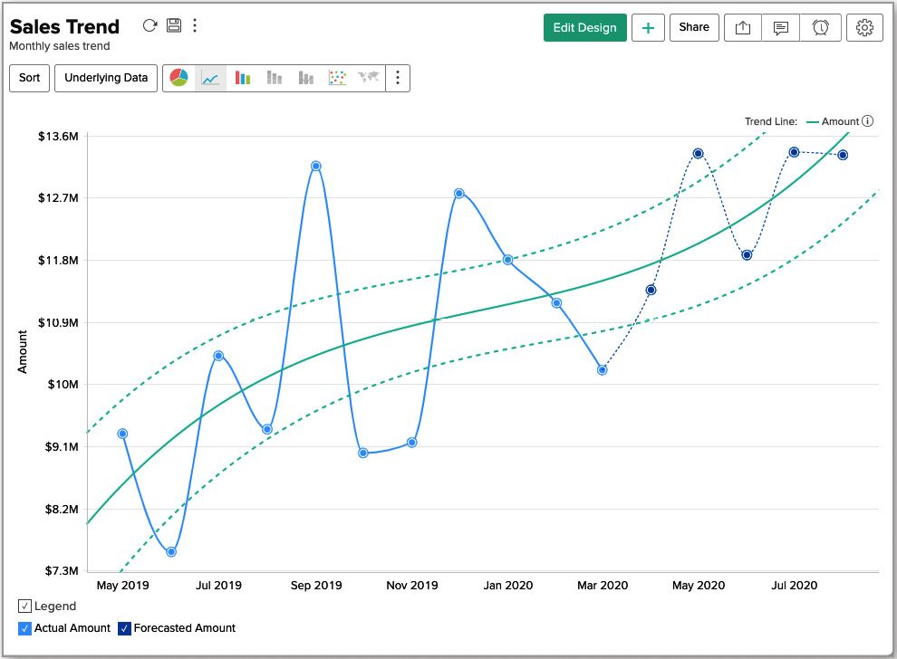
데이터를 프로파일링할 때, 데이터 포인트 값이 기존 데이터 트렌드를 준수하는 정도를 추출한 다음 준수 정도를 std1, std2, std3(평균으로부터의 거리)과 같은 몇 가지 버킷으로 분류하고자 할 것입니다. 트렌드 정의는 어떤 편차가 허용 가능한지를 나타냅니다. 편차를 분류하는 방법은 여러 가지가 있겠지만 여기서는 한 가지 방법(표준편차)만 논의했습니다.
또한 휴리스틱 처리를 통해 발견되는 새로운 트렌드도 존재할 것입니다. 이러한 유형의 분석을 위해 서드파티 트렌드 소스 및 기술 도구를 통합하고 활용하는 것이 현명합니다. 이러한 벤더와 도구 중 일부는 다음과 같습니다:
- 사회적 트렌드 소스
- 기타 비기술 중심 도구
- 기술 중심 도구
일부 사회적 트렌드 소스를 활용하면 데이터를 외부 표준(norms)과 정렬할 수 있습니다. 여러분의 노력에 신뢰성을 더하고 이러한 표준이 정렬된 후 데이터와 결합될 때만 가능한 새로운 인사이트를 도출하기 위해 이를 수행하는 것이 현명합니다. 유용한 트렌드 소스는 다음과 같습니다:
- Exploding Topics {https://packt-debp.link/WoybzT}는 데이터에서 새로운 트렌드를 발견하는 데 사용할 수 있습니다. 트렌드 데이터베이스를 통해 기존 트렌드를 카탈로그화하여 검색 및 재사용할 수 있습니다.
- Axios Pro {https://packt-debp.link/jkmbnM}는 주제별 뉴스 트렌드를 발견할 수 있습니다. 금융, 의료, 미디어, 소매, 기후, 정부 부문 사용자가 활용합니다.
- WGSN {https://packt-debp.link/nxA1f5}은 소비자 브랜드를 위한 데이터 분석 툴셋으로, 마케팅 팀이 관찰된 트렌드에 부합하는 메시지를 작성하는 데 사용됩니다.
- Qmarkets {https://packt-debp.link/n2Napt}은 트렌드 관리 기능 및 기타 다양한 역량을 갖추고 있습니다. 고객 수요를 측정하는 데 사용됩니다.
- Google Trends는 무료 트렌드 분석 도구입니다. 신뢰할 수 있지만 트렌드 준수 여부를 평가하는 데 필요한 수준만큼 관련성이 높지는 않습니다.
- Pulsar Platform {https://packt-debp.link/KjSXa7}은 소셜 미디어 데이터를 활용하여 대화를 추적하고 경쟁업체에 대한 커뮤니티 정서를 파악하는 오디언스 분석 도구입니다.
- CB Insights {https://packt-debp.link/lSxGyj}는 기업 재무 데이터를 기반으로 경쟁 인텔리전스 정보를 제공하는 데 사용됩니다. 기술 경쟁 분석에 중점을 둡니다. CB Insights 데이터베이스는 트렌드 분석에 대한 정보를 제공합니다.
- Trends.Co {https://packt-debp.link/PgXjAQ}는 커뮤니티별 다양한 트렌드에 대한 시장 보고서를 작성하는 기업입니다. 스타트업 리더들은 도구에서 제공하는 신호로부터 새로운 아이디어를 얻기 위해 이를 사용합니다.
기타 비기술 중심 도구 {https://packt-debp.link/3UbXmd}는 다음과 같이 도메인별로 구성될 수 있습니다:
- AI 트렌드 분석 도구
- 빅데이터 분석 도구
- 경쟁 분석 도구
- 고객 여정 매핑 도구
- 전문가 조언
- Google Trends
- 업계 보고서
- 시장 조사 도구
- 감성 분석 도구
- 소셜 미디어 모니터링 도구
- 무역 박람회 및 콘퍼런스
- 자체 연구
기술 중심 도구는 데이터 팩토리에서 처리 중인 데이터 값에 내재된 데이터 트렌드를 기술적으로 식별하는 데 적용됩니다. 이들은 다음과 같은 시민 데이터 과학자(citizen data scientist) 도구입니다:
- Altair Rapidminer {https://packt-debp.link/YMZ0ZE}
- Alteryx
- Alteryx (Trifacta Wrangler) {https://packt-debp.link/kjaH7P}
- Microsoft Power BI {https://packt-debp.link/RdluoB}
- Qlik Sense Enterprise {https://packt-debp.link/mRPViY}
- Quest Toad Data Point {https://packt-debp.link/oukXsc}
- SAP Data Intelligence Cloud {https://packt-debp.link/haDtM0}
- Tableau {https://packt-debp.link/sp4re9}
- Talend Data Fabric {https://packt-debp.link/6hIVq0}
갭
갭(특정 기간 동안 예상되는 값의 누락)을 감지하기 위한 데이터 프로파일링과 관련해서는 데이터셋에서 단절된 트렌드(broken trend) 이상 징후를 살펴봐야 합니다. 이는 데이터 이상 감지 기능을 먼저 설계하고 구축해 두었어야 함을 의미합니다. 이를 위해서는 데이터 클래스 내에서 특정 기간(데이터의 캘린더 계약) 동안 다양한 데이터 트렌드를 지정하기 위한 특별한 휴리스틱 및 결정론적 로직이 필요합니다. 그다음에는 데이터 소스가 신뢰할 수 있는 것으로 간주됨에도(계약된 의무를 이행할 것으로 기대됨에도) 왜 데이터 갭이 발생했다고 판단하는지 그 이유를 입증하는 작업이 뒤따릅니다.
과거에는 갭을 합성 데이터로 채우고 신뢰성 테스트를 통과하도록 이상 감지 로직을 다시 실행하여 추정된 갭을 테스트할 수 있었습니다. 그런 다음 수치 해석 방법을 통해 합성 데이터가 허용되면서도 트렌드를 깨뜨리지 않을 값의 하한과 상한을 얻을 때까지 데이터 갭 경계의 모서리를 반복적으로 탐색할 수 있습니다. 마지막으로 누락된 데이터 값에 대한 최선의 추정치로서 해당 상하한 사이의 평균값을 선택해야 합니다. 이렇게 갭을 채운 공칭(nominal) 데이터 값 세트를 선택한 후에는 이러한 값을 합성 데이터로 식별할 수 있는 메타데이터를 생성해야 합니다. 데이터 팩토리의 처리는 채워진 갭의 값을 최종적으로 대체하는 데이터 재진술이 (어떤 소스로부터) 도착할 때까지 정상적으로 진행될 수 있으며 또는 합성 데이터가 영구적으로 유지될 수도 있습니다. 갭을 채우는 데 사용된 합성 데이터는 결코 100% 정확한 데이터가 될 수는 없지만 다운스트림 처리 용도로 사용하기에는 충분히 훌륭할 것입니다. 갭이 채워진 데이터 값은 ML, AI, 분석 애플리케이션 및 인사이트를 정확하게 만들어 줄 것입니다. 이러한 유형의 갭/오류 처리는 데이터 과학자에게는 매우 반가운 소식이 되겠지만 감사관(auditors)에게는 발작을 일으킬 만한 일일 것입니다. 그들을 만족시키기 위해 합성 데이터가 포함된 결과와 포함되지 않은 결과를 모두 렌더링할 수 있도록 준비하십시오.
과대표시
갭이 데이터셋의 문제인 것과 마찬가지로, 과대표시(overstatements)(주어진 기간 내에 중복 수신된 데이터 포인트) 역시 수정되어야 할 이상 징후입니다. 과대표시 또한 갭의 존재와 마찬가지로 트렌드를 깨뜨리기 때문에 감지될 수 있습니다. 갭이 데이터의 골짜기라면, 과대표시는 산입니다! 데이터셋이 신뢰할 수 있고 다운스트림에서 처리 가능해지려면 둘 다 평탄화(flattened)되어야 합니다. 평탄화 프로세스는 원시 데이터 위에 변경 사항을 겹겹이 쌓아 예상되는 트렌드 곡선에 맞게 평활화될 때까지 다양한 결정론적 또는 휴리스틱 알고리즘을 통해 이루어져야 합니다.
데이터 조정은 원시 데이터 값에 대한 델타(deltas)로 저장되어야 하며 이를 통해 모든 수정 계층이 함께 융합될 때 과대표시된 데이터 값이 올바른 유효 값(effective value)을 형성하도록 해야 합니다. 앞서 우리는 조정을 수행할 수 있도록 데이터 렌즈를 생성하고 데이터 값에 적용해야 할 필요성을 언급했습니다. 이러한 렌즈는 기본 원시 값을 변경하지 않으면서도 유효 값을 생성하는 데 필요한 조정을 제공합니다. 이러한 조정은 복잡한 통계 프로세스를 통해 생성될 수 있습니다. 일부는 과대표시 수정 코드를 단일 인스턴스로 실행하거나 데이터를 예상 스윔레인의 추세선에 맞추는(fit a trendline in an expected swimlane) 것처럼 단순할 수도 있습니다.
과대표시된 원시 데이터 값에 대한 조정은 음수 값을 더하거나, 특정 숫자로 나누거나, 예상할 수 있는 기타 감소 요인/함수를 적용하는 등 데이터에 적용할 계수(factors)여야 합니다. 여러분이 당장 마음에 새겨야 할 목표는 스택형 데이터 포인트 객체(stacked data point object)를 생성해야 할 필요성을 머릿속에 시각화하는 것입니다. 해당 객체는 원시 값과 인터페이스의 유효 값 집계 반환으로 이어지는 모든 계층(델타)을 스택형 데이터 포인트로서 보유합니다. 이러한 계층은 계통(lineage) 추적을 위해 모두 메타스토어에 보존됩니다. 이 접근 방식의 추가적인 이점은 향후 조정 알고리즘 중 하나가 변경되거나 다시 실행되어 다른 조정을 생성해야 할 때, 다른 알고리즘의 이전 조정에 영향을 주지 않고 실행될 수 있다는 점입니다. 다른 조정을 흐트러뜨리지 않고 이러한 조정을 제거하고 교체할 수 있는 능력은 유효 값이 다운스트림 프로세스에서 항상 신뢰받으며 사용될 수 있도록 하는 데 필수적입니다.
요약 통계 편차
이상 감지 로직을 통해 갭과 과대표시를 감지할 수 있는 것과 마찬가지로, 가산적 및 비가산적 척도, 메트릭, 통계 모델이 모든 데이터 범위에 걸쳐 적용됨에 따라 데이터셋에 적용되는 실시간 분석에서 발생하는 통계적 편차 역시 감지할 수 있습니다. 기준선 이상 징후가 처음 감지되었을 때 알림을 생성할 수 있는 기능은 데이터 계약을 유지하는 데 필수적입니다. 파생된 모든 데이터 역시 메타데이터로 입력되어야 하며 원본 원시 데이터가 파생 데이터의 컨텍스트로 식별되어야 합니다. 이렇게 파생된 메타데이터는 이제 기본 소스 데이터와 마찬가지로 트렌드 분석 품질 검사의 대상이 됩니다. 데이터는 여전히 데이터입니다! 통계적 메타데이터에도 갭이 발생하거나, 트렌드를 위반하거나, 과대표시될 수 있다는 것은 비밀이 아닙니다. 메타데이터를 데이터처럼 취급하십시오.
통계적 편차가 발생하면 프로그래머나 통계학자가 개입하여 진양성(true positive) 이상 징후를 설명하기 위한 새로운 데이터 보정 렌즈를 만들어야 합니다. 이상 징후의 상태를 해결하는 것은 노동집약적일 수 있지만 데이터를 결코 수동으로 수정해서는 안 됩니다. 이상 징후를 완전히 이해한 후에 항상 새로운 데이터 보정 렌즈를 작성하십시오. 정상적인 데이터 거버넌스 관행의 일환으로 이상 징후를 해결하기 위해 조정된 스택형 데이터 포인트를 생성하는 필터 및 팩터링 알고리즘이 실행됩니다. 위양성(false-positive) 또는 위음성(false-negative) 이상 징후 역시 이상 감지 로직 자체를 조정함으로써 이러한 방식으로 쉽게 처리되며 이는 판단을 입력하거나 ML 모델을 재학습(retraining the ML model)함을 의미합니다.
캘린더 트렌드 편차
날짜별로 세분화해야 하는 데이터를 처리할 때는 먼저 더 긴 기간 동안 동등한 날짜를 나타내는 시간 버킷을 정의해야 합니다. 버킷에 표시되는 일단위 수가 연도별로 비교 가능하도록 세분성(granularity)을 설정해야 합니다. 예를 들어, 월별 버킷은 각 달마다 일수가 다르고 윤년의 경우 4년마다 2월에 하루가 추가되므로 특별한 처리가 필요합니다. 월별 매출액에 대한 쿼리를 실행할 때 실질적인 비교를 하려면 해당 월의 일수만큼 상쇄(offset)해야 합니다. 주말의 수 또한 월마다 다르며 이는 구매 습관에 영향을 미칩니다. 이 모든 것은 이전 연도의 트렌드와 비교할 때 특정 역년의 월별 트렌드가 일치하지 않을 수 있음을 의미합니다. 데이터 캘린더가 정렬되지 않으면 분석 결과에 오류가 발생하고 오해를 불러일으키는 인사이트로 이어질 수 있습니다. 다음 섹션에서는 두 가지 핵심 캘린더링 문제인 데이터 캘린더와 이벤트 캘린더에 대해 알아봅니다.
데이터 캘린더의 유형
소매 인사이트를 도출하는 과정은 동일 조건 비교를 위한 세그먼트를 정의하는 데 데이터 캘린더가 항상 핵심적인 역할을 해온 영역입니다. Oracle® Retail Insights {https://packt-debp.link/DIJwXL}는 다음과 같이 5가지 차원의 캘린더링을 지원합니다:
- 비즈니스 캘린더
- 4-5-4 캘린더
- 13주기 캘린더
- 그레고리력
- 하루 중 시간
비즈니스 캘린더: 시간 캘린더(time calendar)라고도 불립니다. 이는 회계 캘린더로서 그레고리력이 아닌 재무 캘린더에 따라 설정됩니다. 비즈니스 캘린더는 4-5-4 캘린더(다음 참조) 또는 13주기 캘린더(이후 정의)의 변형을 기반으로 할 수 있습니다. 매주 정확히 7일을 할당해야 합니다. 이는 그레고리력과 다릅니다.
4-5-4 캘린더: 4-5-4 캘린더는 필요에 따라 4-5-4, 4-4-5, 또는 5-4-4로 구현할 수 있습니다. 각 주가 시작되고 끝나는 요일을 결정할 수 있습니다. 각 분기는 13개의 온전한 7일 주, 2개의 4주 월, 1개의 5주 월을 포함합니다. 이 4-5-4 캘린더는 각 비즈니스 캘린더 연도가 그레고리력 연도보다 짧기 때문에 53주 연도 문제(53-week-year problem)에 직면합니다. 이러한 연도의 53주 기간은 비즈니스 요구사항에 따라 4주 또는 5주 기간과 연결되어야 하며 그 결과 각각 5주 또는 6주 기간이 됩니다. 흥미로운 점은 4-5-4 캘린더로 세분화된 데이터에 대해 분석을 수행할 때 비즈니스 캘린더와 4-5-4 캘린더 간의 정렬이 자동으로 이루어져야 한다는 것입니다. 회계 기간은 연도별로 동일한 수의 일수/주수를 가지며 당해 연도에서 전년도로의 캘린더 매핑은 시프트(shift)되어야 합니다. 시프트되지 않은 캘린더에서는 각 연도의 첫 52주가 서로 정렬되고 마지막 53번째 주는 전년 대비 가치 비교에서 제외됩니다. 시프트된 캘린더에서는 다음 해의 1~52주가 53주 연도의 2~53주와 정렬되도록 전년도 비교를 위해 53주 연도가 재진술됩니다. 53주 연도의 1주는 전년도 53주 차를 위한 이전 연도의 마지막 주로 사용되거나 생략될 수 있습니다.
13주기 캘린더: 13주기 캘린더 연도는 4주(28일)로 구성된 13개 주기로 나뉩니다. 5년 또는 6년마다 53주가 발생합니다. 이 캘린더는 6년, 5년, 6년, 6년, 5년으로 이어지는 28년 주기를 가집니다.
그레고리력: 그레고리력은 여러분도 알다시피 태양 주위를 도는 지구의 공전 주기를 기반으로 하는 일반적인 태양력입니다. 30일 또는 31일로 구성된 11개 월과, 윤년(4년마다) 여부에 따라 28일 또는 29일이 되는 2월로 나뉩니다. 그레고리력의 1년은 365일 또는 366일입니다.
하루 중 시간: 24시간의 표준 하루는 60분 및 60초의 주기로 세분화됩니다. 이 시간을 표준화하기 위해 협정 세계시(UTC) {https://packt-debp.link/JTUbkg}라는 표준이 만들어졌습니다.
여러분이 알아야 할 점은 데이터가 오직 데이터 캘린더의 컨텍스트 내에서만 올바르게 분석될 수 있다면 솔루션에 캘린더링 세그먼트 분석 지원 기능을 구축해야 한다는 것입니다. 서드파티 도구의 지원 없이 이러한 기능을 처음부터 구축하는 것은 힘든 일일 수 있지만 데이터를 다운스트림 유스케이스에서 오용하지 않고 올바르게 사용하기 위해 반드시 필요한 부분입니다. 데이터 과학자가 이를 직접 알아내도록 내버려두지 마십시오!
이벤트 캘린더의 유형
표준 캘린더 버킷도 훌륭하지만 해당 기간 동안 발생한 특정 비즈니스 이벤트를 정의하는 데이터셋 내의 데이터 세그먼트에 걸쳐 대괄호처럼 작동하는 이벤트 주도 세그먼트 정의를 어떻게 생성할 수 있을까요? 이벤트 캘린더의 예는 다음과 같습니다:
- 마케팅 캠페인
- 지정학적 이벤트
- 기업 이벤트/조치
- 기타 주목할 만한 이벤트
마케팅 캠페인: 마케팅 캠페인은 특정 시점부터 다른 시점까지 실행되며 가격 판촉의 효과를 측정하기 위한 전체 분석 시나리오를 구동하는 데 사용할 수 있습니다.
지정학적 이벤트: 비정상적인 판매량이나 금융 거래 활동 기간을 정의하는 지정학적 이벤트가 발생할 수 있으며 이를 인지했을 때 이러한 이상 데이터가 결과에 왜곡을 주지 않도록 데이터셋에서 제외하거나 세그먼트화하는 방법을 정의할 수 있습니다.
기업 이벤트/조치: 기업 이벤트/조치는 감사 목적으로 회사의 총계정원장에 표시되어야 합니다. 이러한 표시는 감사관이 재무 기록의 이상 징후를 설명하는 데 도움이 됩니다. 또한 이러한 조치는 기업 조치가 진행되는 기간 동안 수집된 모든 데이터를 해석하기 위한 컨텍스트를 설정하므로 세그먼트 분석에서도 해당 표기를 사용할 수 있어야 합니다.
기타 주목할 만한 이벤트: 분석 세그먼트로 이어질 수 있는 모든 외부 이벤트에 대한 기록은 데이터의 컨텍스트가 설정될 때 이루어져야 합니다. 이러한 임시(ad-hoc) 이벤트는 메타데이터로 유지되는 자유 형식 텍스트일 수 있으며 나중에 새로운 세그먼트가 데이터 트렌드에서 이상 징후를 생성하는 것으로 입증될 때 공식 이벤트 유형을 생성하는 데 사용될 수 있습니다.
캘린더 버킷이나 임시 이벤트별로 데이터를 처리하는 데에는 상당한 고민이 필요함을 알 수 있습니다. 우리는 솔루션 설계에서 이 기능을 절대 생략하지 말 것을 제안합니다. 특히 데이터가 처음 수집될 때 세그먼트 정보가 수집되지 않았다면 데이터 과학자는 나중에 데이터셋을 캘린더별로 세분화하는 방법을 알아내는 데 어려움을 겪을 것입니다. 소프트웨어 엔지니어가 수집된 데이터 행에 매우 세분화된 지피(jiffy) 수준 {https://packt-debp.link/BAricy}의 타임스탬프를 제공했다고 해서 데이터를 쉽게 사용할 수 있다는 뜻은 아닙니다. 장식적 메타데이터를 사용한 데이터의 캘린더 및 이벤트 세그먼트 보강은 소비자가 솔루션의 데이터를 의도한 대로 사용할 수 있도록 지원합니다.
ML 기반 이상 감지
이상 징후 및 기타 통계적 특이치를 감지하는 작업에 머신러닝을 적용할 수 있다는 점은 엄청난 비용 절감 가치가 있는 것으로 입증되었습니다. 수동으로 데이터 이상을 감지하거나 결정론적 규칙 기반의 프로그램 이상 감지를 생성하는 비용은 매우 높아질 수 있습니다. 수동 이상 해결 워크플로는 볼륨이 증가함에 따라 확장되지 않으며 규칙 기반 감지를 사용하더라도 예상하지 못한 이상 징후가 발생하기 마련이므로(그렇기 때문에 이상 징후입니다), 감지 요구사항을 포괄적으로 다루기에는 규칙이 항상 부족합니다.
이상 패턴을 감지하고 수정하도록 머신러닝 모델을 훈련하는 것은 서포트 벡터 머신(SVM) {https://packt-debp.link/ArgUFg} 계열의 ML 알고리즘에 대한 준지도 학습(semi-supervised ML) 문제입니다. 잠재 디리클레 할당(LDA: Latent Dirichlet Allocation) {https://packt-debp.link/aD5xk2}과 같은 비지도 ML 모델 변형은 특성들이 함께 클러스터링되는 것으로 확인된 후 특성 패턴을 감지하는 데 사용할 수 있습니다. 패턴이 파악되고 명명되면 업그레이드된 SVM 모델의 훈련 세트 개발에 사용할 수 있으며 이 모델은 향후 수신되는 데이터에서 이상 패턴의 재발을 감지할 수 있습니다. 또한 이 패턴을 데이터 수정 프로세스를 구동하는 데 사용하여 향후 이상 징후가 자동으로 처리되고 수정되도록 할 수 있습니다. 이를 반복적으로 수행하면 ML 모델 앙상블이 시간이 지남에 따라 예상되는 모든 데이터 동작을 포괄할 수 있게 됩니다. 따라서 알려진 패턴과 일치하지 않는 모든 것은 이상 징후가 됩니다.
간단하게 들리겠지만 결코 그렇지 않음을 확신합니다! 이러한 모델을 생성하는 것은 어려울 수 있으며 드리프트(drift) {https://packt-debp.link/DAdKBy}의 영향을 받기 때문에 지속적인 유지보수가 필요합니다. 우리의 제안은 수신되는 데이터셋을 세그먼트화하고 해당 세그먼트에 이전 ML 접근 방식을 적용하는 것입니다. 실시간으로 엄격하게 품질을 측정하십시오. 이 분야에서 다른 이들이 수행한 작업을 연구하고 서드파티 툴셋을 살펴보는 것이 좋습니다. Dataiku {https://packt-debp.link/MqRT1r}가 은행(내부자 거래 등), 소매(결함 품목을 최소화하는 QA), 의료(질병의 조기 발견 또는 치료) 분야를 위해 구축한 데이터 이상 감지 솔루션을 확인할 수 있습니다. 바다의 물을 전부 끓이려 하지 마십시오(Do not try to boil the ocean)! 즉, 100% ML 주도 이상 감지 기능이 가능하다고 생각하지 마십시오. 먼저 쉽고 가치 있는 고수익 성과부터 공략하십시오!
판단 수집 및 적용
머신러닝 기반 이상 감지에 대한 설명과는 다소 결이 다를 수 있지만 확률적(stochastic) 접근 방식이 아무리 훌륭하더라도 올바른 결과를 도출하려면 항상 주관적인 인간의 판단을 반영해야 한다는 점을 강조하고 싶습니다. 이상 감지 모델이 내린 예측이 완전히 틀렸을 경우 이러한 판단을 적용해야 합니다. 95% 정확도도 훌륭하고 100%가 가장 좋겠지만 현실에서는 ML 기반 이상 감지를 구현하고 품질을 측정하더라도 무엇을 하든 시간이 지남에 따라 품질이 저하/드리프트되는 것을 보게 될 것입니다! 솔루션에 인간의 판단을 입력하고 반영하여 유효 품질을 최소 96%~98%로 끌어올리지 않는다면, 데이터 수집 TCO 비용이 증가하여 경영진의 지지를 잃게 될 것입니다. 98%의 유효성 점수는 많은 ML 앙상블이 달성하기 힘든 수치입니다. 하지만 면밀한 고민과 세심한 측정을 통해 가능합니다. 품질을 측정한 후에는 다음 작업을 수행하기 위해 해당 품질 수준에 도달하는 데 필요한 인간의 판단뿐만 아니라 품질 메트릭을 저장소에 입력하고 유지 관리해야 합니다:
- 모델의 훈련 방향 지시
- 잘못된 위양성(false-positive) 출력 거부
- 실제 데이터 오류로 확인된 위음성(false-negative) 출력을 실제 이상 징후로 승격
잘못된 데이터 이상 징후로 인해 데이터 팩토리의 파이프라인 흐름이 중단되어서는 안 되며 별도로 분리하여 여러분의 데이터 엔지니어링 솔루션이 처리하도록 설계된 데이터 수정 프로세스의 일부로 포함되어야 합니다. 이상 징후를 제거하고 허용 가능한 값에 주석을 달아 팩토리의 데이터셋을 정제했다면, 데이터 카탈로그가 소비자에게 유용하도록 데이터셋의 메타데이터를 기록하는 일에 주의를 기울여야 합니다.
다음 몇 개 섹션에서는 메타데이터 전략을 수립하기 위한 옵션과 권장사항을 자세히 설명합니다. 또한 조직에 가장 적합한 방안을 결정할 수 있도록 이 분야의 다양한 견해들도 조명할 것입니다. 여러분이 가용 기술 수준(state of the art)을 객관적으로 평가하고 다양한 벤더 및 클라우드 서비스 제공자의 해당 분야 전문가(SME: subject matter experts)들과 의미 있는 대화를 나눌 수 있도록, 진정한 시맨틱 모델 생성에 대한 우리의 기존 선호 편향을 최대한 자제하도록 하겠습니다.
메타데이터 전략
메타데이터란 무엇인가요? 이 질문에 대한 배경은 3장에서 제공되었습니다. 메타데이터의 세 가지 유형인 기술 메타데이터(descriptive metadata) (데이터셋 콘텐츠 카탈로그화용), 관리 또는 계통 메타데이터(administrative or lineage metadata) (데이터셋이 큐레이션된 방식과 클라우드 토폴로지 및 구성), 구조 또는 시맨틱 메타데이터(structural or semantic metadata) (시맨틱 지식으로서의 공식 정보)에 많은 강조가 있었습니다. 또한 4장에서는 이 문제를 명확히 하기 위해 여러 원칙이 제시되었습니다. 솔루션에서 메타데이터의 필요성은 다음과 같은 원칙과 일치합니다:
- 원칙 #10: 메타데이터는 데이터셋과 연결되며 비즈니스와 관련성을 지닌다
- 원칙 #11: 데이터셋 계통 및 저장 메타데이터는 라이프사이클 거버넌스의 대상이다
- 원칙 #12: 데이터셋과 메타데이터는 카탈로그화 및 탐색(discovery) 서비스가 필요하다
- 원칙 #13: 시맨틱 메타데이터는 데이터 여정의 모든 단계에서 올바른 비즈니스 이해를 보장한다
- 원칙 #15: 아키텍처 프레임워크의 기초 역량을 먼저 구현하라: 제로 트러스트 데이터 보안, 테스트 우선 설계, 데이터 프로파일링, 메타데이터 설계, 감사, 머신러닝 이상 감지
메타데이터 주제는 솔루션의 개념 아키텍처 용어집(Conceptual Architectures Glossary)이 아키텍처 전반의 다양한 메타데이터 클래스를 참조해야 하는 5장에서도 등장합니다.
이번 섹션의 상세한 설명을 통해 최종 상태 전략을 구현하는 데 필요한 메타데이터 설계 솔루션으로 이끄는 여러 문제에 집중할 수 있을 것입니다. 이러한 메타데이터 영역을 포괄하는 데 많은 시간이 소요될 것입니다. 목표는 시맨틱 무결성을 보존하고 데이터 과학자, 분석가, 비즈니스 사용자가 데이터셋을 쉽게 검색하고 유용하게 사용할 수 있도록 만드는 것입니다. 벤더 및 클라우드 제공업체와 기술적 종교 논쟁을 벌이지 않고 대화할 수 있도록 다양한 관점의 사고 과정을 명확히 정리하는 것부터 시작하겠습니다. 이 주제가 기술자들의 열정을 불러일으키지 않는다고 생각하신다면 그것이 사실이 아님을 곧 알게 될 것입니다.
분석가, 특히 데이터 과학자는 깨끗한 데이터를 보기를 원합니다. 정제된 데이터에 접근할 수 있게 되면 그 데이터가 얼마나 좋은지 알고 싶어 할 것입니다. 이는 데이터 엔지니어의 세 가지 메타데이터 유형을 통해 드러나는 데이터 투명성과 함께 품질 질문에 대한 주관적인 답변이 될 것입니다. 클라우드 제공업체에 메타데이터에 대해 문의하면 관리 또는 계통 메타데이터와 관련된 많은 답변을 받게 될 것입니다. 여기에는 다양한 오케스트레이션 흐름을 통해 데이터가 변환될 때 수행된 PaaS 서비스 호출의 감사 추적이 포함됩니다. 시간이 지남에 따라 수행된 서비스 계통 호출을 추적하고 검색 목적으로 메타데이터 저장소를 반영할 수 있는 Microsoft Azure Purview와 같은 도구를 제공받을 수도 있습니다. 현재 또는 미래의 해당 제품이 데이터 엔지니어의 관리 또는 계통 메타데이터 요구를 해결할지 여부는 여러분의 판단에 맡기겠지만 클라우드 제공업체가 데이터 계통을 난독화하는 복잡한 분산 서비스를 구현했다는 점을 알아야 합니다. Azure에서 Microsoft Azure Purview와 같은 도구가 없다면 계통을 백지 상태(greenfield)에서 직접 구축해야 합니다. 대부분의(전부는 아닌) PaaS와 일부 SaaS, 그리고 Purview와 통합될 수 있는 OpenLineage를 통한 서드파티 통합에 대한 지원을 받을 수 있습니다. 기본 메타데이터 데이터 저장소에 접근하고자 한다면 운이 따르지 않을 것입니다. 또한 블루/그린(blue/green) 배포 프로세스에 매핑된 메타데이터 저장소의 여러 병렬 버전을 원한다면 이 역시 지원되지 않습니다. 이 마지막 포인트는 심각한 고려사항인데, 여러분의 솔루션은 PaaS 통합 세트로 릴리스될 것이며 메타데이터가 메타스토어 엔트리의 태그가 지정된 뒤엉킨 덩어리가 아니라 원하는 방식으로 파티셔닝되기를 원하기 때문입니다. 게다가 메타데이터를 데이터로 취급하지 않았기 때문에 해당 항목들을 반영/쿼리할 수 없게 됩니다. 마찬가지로 보안 메타데이터는 Microsoft Graph에 보관되며 Purview와 통합되지 않습니다(적어도 2021년 개발 당시 우리가 Microsoft에 통합을 요청하기 전까지는 그랬습니다). Purview는 훌륭한 클라우드 제품이며 Microsoft를 다른 업체들보다 훨씬 앞서게 해줍니다. 사용자 커뮤니티가 필요한 가치를 제시하고 향후 개선 사항이 고객 요구에 의해 주도될 것이므로 시간이 지남에 따라 발전할 것으로 확신합니다.
이제 Microsoft Azure 클라우드 팀 외부의 팀에 메타데이터 지원을 정의해 달라고 요청하면 데이터 분석 및 데이터 웨어하우스 관점에서 응답할 것입니다. 다음 섹션에서는 클라우드 소프트웨어 개발자의 관점에 대해 많은 것을 배우게 될 것입니다.
메타데이터에 대한 Azure 클라우드 제공업체의 관점
많은 클라우드 소프트웨어 제품 엔지니어들은 메타데이터를 데이터에 관한 데이터로 인식하지만 해당 메타데이터가 유용해지려면 시스템 통합업체(프로그래머)의 개입이 필요하다고 생각합니다. Microsoft 소프트웨어 및 데이터 엔지니어들은 소비자에게 노출해야 하는 테이블 및 객체 관계형 모델의 관점에서 메타데이터를 고려합니다. 그들은 다음과 같은 용어를 사용합니다:
- Azure Analysis Services(AAS)의 테이블 형식 모델(Tabular models)
- Power BI Desktop
- 테이블 형식 모델 스크립팅 언어(TMSL: Tabular Model Scripting Language)
- 분석 관리 객체(AMO: Analysis Management Objects)
- 데이터 분석 식(DAX: Data Analysis Expressions)
AAS의 테이블 형식 모델은 인메모리 데이터베이스 또는 Microsoft DirectQuery 모드에서 실행되어 백엔드 관계형 데이터 소스에 연결됩니다. AAS VertiPaq 분석 엔진은 비즈니스 인텔리전스 애플리케이션(예: Microsoft Power BI Premium)을 통해 테이블 형식 객체 모델 데이터에 대한 접근을 제공합니다.
Power BI Desktop은 보고서를 생성할 수 있으며 보고서 생성 시 접근 가능한 PBIX 및 PBIT 파일 내에 시맨틱 모델 메타데이터를 생성합니다(이전 버전의 레거시 Power BI는 폐쇄형 독점 형식으로 메타데이터를 보관했습니다). 분석가가 파일을 열면 PBIX 파일은 자동으로 새 메타데이터로 업데이트됩니다. Power BI Desktop(및 해당 API)은 AAS의 테이블 모델과 정렬되며 이는 테이블 형식 객체 모델(TOM: Tabular Object Model)을 준수합니다. Microsoft 엔지니어링 팀은 이를 향상된 시맨틱 모델 메타데이터(enhanced semantic model metadata) 기능으로 간주하며 전략적이고 기초적인 기능으로 여깁니다. 다만 여러분이 원하는 수준만큼 진정한 시맨틱하지는 않습니다! 데이터에 관한 정보를 포함하고는 있지만 우리가 정의한 필요성에 부합하는 실제 구조적 또는 시맨틱 메타데이터는 포함되어 있지 않습니다. 이는 밀접하게 결합된 데이터 카탈로그에 가깝습니다. 그 핵심 가치를 폄하하려는 것은 결코 아닙니다. 단지 Microsoft가 개발한 이러한 시맨틱의 인터페이스와 구조에 지나치게 많은 전문 용어(technobabble)가 섞여 있어 데이터 과학자에게 유용하게 활용되기 어렵다는 점을 지적하고자 하는 것입니다. 실제로 이는 그들을 더욱 좌절시킬 뿐입니다!
TMSL은 Microsoft 테이블 형식 데이터 모델을 위한 명령 및 객체 모델 정의 구문입니다. TMSL은 XMLA 프로토콜을 통해 AAS와 통신하며 XMLA.Execute 메서드는 XMLA용 Analysis Services Scripting Language(ASSL)의 XML 기반 스크립트와 TMSL의 JSON 기반 스크립트를 수락합니다. Microsoft는 향후의 모든 Power BI 기능이 이러한 메타데이터를 기반으로 구축될 것임을 강조합니다.
AMO는 애플리케이션이 AAS 인스턴스를 관리할 수 있도록 지원하는 객체 라이브러리입니다. AMO는 AAS, SQL Server Analysis Services(SSAS), Power BI Premium 테이블 형식 모델을 지원합니다. 최신 버전에는 TOM이 사용되며 Microsoft 제품 팀이 독점 메타데이터 접근 방식을 버리고 표준 방식을 채택하는 모습을 볼 수 있습니다. TOM은 이러한 통합에 필요한 AMO 클라이언트 라이브러리의 확장입니다.
DAX는 AAS, Power BI, Power Pivot(Excel 내부)에서 커스텀 계산을 생성하는 데 사용되는 수식 언어입니다. DAX 수식에는 테이블 열에 대해 고급 계산을 수행하기 위한 함수, 연산자, 값이 포함됩니다. DAX는 Microsoft Visual Studio를 통해 생성된 AAS 테이블 형식 모델의 핵심입니다.
Microsoft의 메타데이터에 대한 관점은 AtScale {https://packt-debp.link/9teCPO}과 같은 서드파티 메타데이터 도구가 등장할 여지를 남겨둡니다(기타 다수 포함).
메타데이터 도구 제공업체의 메타데이터 관점
AtScale 및 유사한 기업들의 경우, 메타데이터는 Databricks Unity Catalog {https://packt-debp.link/Rft3K5}와 유사하게 관리 또는 계통 메타데이터 및 데이터 카탈로그에 중점을 둔 데이터에 관한 시맨틱 진실을 포괄합니다. 그들의 비전은 시맨틱 레이어를 설계하고 구축해야 한다는 것입니다. 그림 13.2를 참조하십시오:
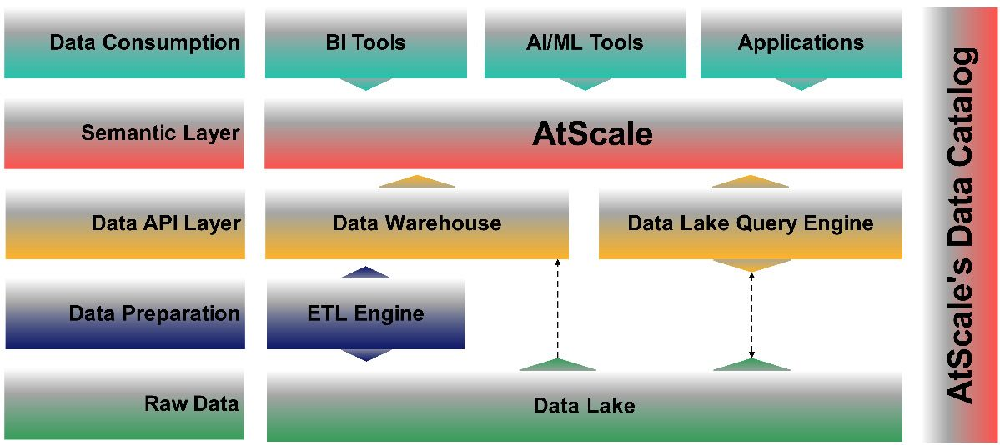
AtScale에서 시맨틱 레이어는 필요한 데이터에 도달하는 데 필요한 인텔리전스를 제공합니다.
“Experian의 보고에 따르면 10개 기업 중 6개 기업이 고품질 데이터가 비즈니스 효율성을 높인다고 믿고 있으며, 44%는 소비자 신뢰를 높이고, 43%는 고객 만족도를 향상시키며, 42%는 더 나은 의사결정을 유도하고, 41%는 양질의 데이터가 비용을 절감한다고 응답했습니다.” (AtScale을 통한 Experian 보고서, {https://packt-debp.link/DFoVOe})
그 역량은 그림 13.3에 나와 있으며, 여기서 통합, 거버넌스, 성능이 필수 요구사항 목록에서 결코 빠지지 않았음을 확인할 수 있습니다!
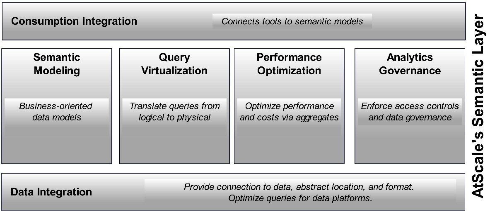
“AtScale 기술 개요” {https://packt-debp.link/Gec8uH} 문서에서는 비즈니스 인텔리전스, AI/ML 도구 및 커스텀 애플리케이션을 위한 쿼리 인터페이스 또는 추상화 계층인 AtScale의 쿼리 엔진(Query Engine)에 대한 간략한 정의를 확인할 수 있습니다. 통합은 다음 프로토콜 중 하나를 통해 연결됩니다:
- ODBC/JDBC (SQL): AtScale이 Hive SQL 웨어하우스처럼 작동
- XMLA (MDX 또는 DAX): AtScale이 SSAS 큐브처럼 작동
- Python: AtScale이 웹 서비스처럼 작동
- REST: AtScale이 웹 서비스처럼 작동
우리가 가장 흥미롭게 생각하는 점은 시맨틱 메타데이터 레이어의 광범위한 통합 지원 범위이며 이는 결과적으로 분석가와 데이터 과학자의 업무를 한결 수월하게 만들어 줍니다. AtScale은 현재 일반적으로 제공(GA)되고 있으며 클라우드 제공업체의 서비스 환경과 원활히 호환되는 것으로 보입니다. 그러나 OpenLineage를 통해 이를 확장하고 아직 지원되지 않는 일부 제품과 통합하고자 한다면 벤더에 제품 개선을 요청하는 것 외에는 별다른 방법이 없습니다.
이제 마지막 관점으로서 데이터셋이 복잡하고 시맨틱 뉘앙스가 많을 때 공식적인 메타데이터 모델링의 필요성에 대해 살펴보겠습니다. 몇몇 벤더가 이제 이러한 접근 방식을 대규모로(at scale) 지원하고 있습니다(언어유희를 양해 바랍니다). 이를 위해 다음 섹션의 지식 공학 접근 방식을 살펴보겠습니다.
지식 공학 제공업체의 메타데이터 관점
많은 사람들에게 시맨틱 모델링(저장 메타데이터의 공식적인 정의)이라는 언급과 비즈니스 도메인에 대한 공식 OWL-RDF 모델의 내재적 복잡성은 데이터 엔지니어의 등골을 서늘하게 만듭니다. 이는 틈새 기술이며 이를 의도한 대로 작동하게 만드는 전문 용어, 기법, 모범 사례를 훈련받은 사람은 거의 없습니다. 이러한 작업은 대개 지식 엔지니어(knowledge engineer) {https://packt-debp.link/oJRDVR}의 몫으로 남겨집니다. 그들이 흔히 지식 엔지니어라고 불리는 이유가 바로 여기에 있습니다.
마음이 약한 이들을 위한 기술이 아니므로 데이터 엔지니어로서 신중하게 접근하십시오. 하지만 이 접근 방식을 채택한다면 솔루션의 데이터 시맨틱에 대해 가능한 가장 명확하고 정확한 정의를 얻는 보상을 받게 될 것입니다. 클라우드 제공업체를 포함한 다른 이들은 이 주제를 회피하고 시맨틱 관계를 강제하는 토픽 모델인 커스텀 코딩 기반의 레이블 속성 그래프(LPG)에 의존합니다. Microsoft Bing과 Microsoft Graph Security가 그 예입니다. 그러나 본 섹션에서는 시맨틱 모델을 정의하기 위해 시맨틱 지식 그래프 접근 방식을 계속 다루겠습니다.
공식 시맨틱 모델을 사용하면 추가 코딩 없이도 순방향 및 역방향 추론(inferencing) 기능을 활용할 수 있습니다(이는 SPARQL 구문 쿼리 자체를 통해 호출됩니다). 여러분이 생성하고 제어하는 OWL 모델과 연결된 모든 데이터 인스턴스에 대해 SHACL 또는 SHEX를 활용하여 수집 시점에 공식적인 시맨틱 데이터 유효성 검사를 수행할 수 있습니다. 이러한 표준은 추가적인 소프트웨어 코딩 없이도 지식 베이스(인스턴스 데이터와 시맨틱 온톨로지 그래프의 결합)에 적합하도록 데이터의 형태(shape)를 정의합니다. 유효성 검사가 모델에 의해 강제되는 제약 조건에서 비롯되기 때문입니다. 이제 시맨틱 모델링을 위한 벤더 지원이 가능하며 대규모의 거대한 데이터셋을 지원할 수 있도록 도구들이 성숙해졌습니다(스탠퍼드 대학교의 초기 도구인 Protégé를 훨씬 뛰어넘음). 시맨틱 모델링의 모든 세부사항과 이를 설계에 통합하는 방법을 전부 다룰 수는 없으므로, 이 분야에서 훌륭한 제품을 만들어낸 몇몇 벤더들을 소개해 드리겠습니다: Stardog, Ontotext, Cambridge Semantics, PoolParty {https://packt-debp.link/nclKxX}입니다. 이 4개의 지식 그래프 벤더는 연구해 볼 가치가 충분합니다. 우리는 이전 프로젝트들에서 이들 및 다른 여러 벤더들과 협업해 보았으며 Stardog의 경우 비용, 광범위한 기능, 도입 초기 지원을 위한 전문 서비스 컨설팅 제공 의지(Ontotext도 마찬가지임) 측면에서 매우 인상적이었습니다. Cambridge Semantics는 고유한 듀얼 그래프 기술(OWL-RDF 및 LPG)과 전문적인 업계 지식을 바탕으로 두각을 나타내고 있습니다. 본 장의 이 시점에서 여러분은 강의식 설명이 아닌 예시를 통해 더 많은 것을 이해하고자 할 것입니다. 그 후에 기술에 대해 더 깊이 파고들 수 있습니다.
다음은 다양한 산업 분야를 위해 개발된 유스케이스 및 기술 옵션의 몇 가지 예시입니다:
- 기업 유스케이스
- 기술 유스케이스
- 비즈니스 유스케이스
기업 유스케이스에는 다음이 포함됩니다:
- 영국방송공사(BBC) {https://packt-debp.link/7QTtB2}는 데이터 시스템 전반의 콘텐츠를 풍부하게 만드는 링크드 데이터(linked data) 이니셔티브의 일환으로 OWL-RDF를 사용합니다.
- Google {https://packt-debp.link/qVhsHe}은 엔티티와 관계에 대한 정보를 구조화하기 위해 검색 지식 그래프(Search Knowledge Graph)에서 OWL-RDF를 사용합니다.
- IBM {https://packt-debp.link/2Ud8O7}은 정보 관리 및 데이터 거버넌스 제품에서 온톨로지 표준을 활용합니다.
- Oracle {https://packt-debp.link/jGGFrx}은 데이터 관리 제품에 OWL-RDF를 사용하여 시맨틱 데이터 통합 및 추론 기능을 구현합니다.
- Siemens {https://packt-debp.link/xr84Ct}는 산업 자동화 및 디지털화 노력에서 데이터 상호운용성과 지식 표현을 위해 온톨로지 표준을 활용합니다.
기술 유스케이스에는 다음이 포함됩니다:
- Cambridge Semantics의 Anzo 플랫폼 {https://packt-debp.link/SOGmGK}은 생명 과학, 금융 서비스, 제조, 정부 등 다양한 산업을 위한 지식 플랫폼입니다.
- EA Essentials Project {https://packt-debp.link/o5cAnA}는 모든 기술 엔터프라이즈를 위한 확장 가능한 온톨로지를 갖춘 시스템입니다.
비즈니스 유스케이스에는 다음이 포함됩니다:
- DBpedia {https://packt-debp.link/DkijVm}는 Wikipedia 데이터를 RDF 형식으로 매핑하는 온톨로지입니다. 엔티티, 개념, 관계 등으로 구성된 지식 베이스입니다.
- Dublin Core {https://packt-debp.link/aFa7TS}는 웹상의 디지털 리소스 메타데이터를 설명하는 데 사용되는 온톨로지입니다. 리소스, 제목, 작성자, 날짜, 주제 등에 관한 정보 어휘집입니다.
- 금융 산업 비즈니스 온톨로지(FIBO: Financial Industry Business Ontology) {https://packt-debp.link/t8BSf3}는 금융 비즈니스 애플리케이션의 관심사와 관계를 정의하는 온톨로지입니다. 엔터프라이즈 데이터 관리 위원회(EDMC: Enterprise Data Management Council) {https://packt-debp.link/XjJKxz}가 주관하고 후원합니다.
- Friend of a Friend(FOAF) {https://packt-debp.link/XvBucF}는 사람과 관계를 위한 소셜 네트워크 컨텍스트에서 사용되는 온톨로지입니다. 이름, 이메일 주소, 관심사, 관계(예: 친구 관계, 소속 등)와 같은 개인 정보를 위한 어휘집입니다.
- 유전자 온톨로지(GO: Gene Ontology) {https://packt-debp.link/IZbU9n}는 분자생물학 및 유전학에서 사용되는 온톨로지입니다. 유전자(및 기능), 세포 구성 요소, 생물학적 과정 등을 설명하기 위한 어휘집입니다.
- PROV-O 온톨로지 {https://packt-debp.link/9LOiCu}는 데이터 및 엔티티의 기원, 프로세스, 변환을 나타내는 출처(provenance) 데이터를 표현하는 데 사용되는 온톨로지입니다. 디지털 리소스의 데이터 계통을 설명하는 어휘집입니다.
- 토론토 대학교의 Retail Ontology {https://packt-debp.link/IwW2go}는 소매 온톨로지의 한 예입니다.
- Schema.org {https://packt-debp.link/Hga7zE}는 구조화된 웹 마크업 데이터를 위한 공유 어휘집을 공동 개발한 검색 엔진 벤더 그룹입니다. 클래스와 속성은 다양한 엔티티, 조직, 이벤트, 제품, 리뷰 등을 설명합니다.
- Semantically Interlinked Online Communities(SIOC) {https://packt-debp.link/K3ac1Q}는 토론 포럼, 블로그, 메일링 리스트 등과 같은 온라인 커뮤니티 정보를 표현하는 온톨로지입니다. SIOC는 온라인 커뮤니티 유스케이스 간의 콘텐츠 및 메타데이터 집계를 지원합니다.
시간이 되신다면 앞선 섹션에서 확인한 각 벤더, 기업, 도구에 대한 미주(endnotes)를 살펴보는 것이 좋습니다. 여러분의 조사는 온톨로지와 유스케이스라는 토끼굴로 여러분을 이끌 것이며 매우 흥미진진한 여정이 될 것입니다. 그런 다음 시맨틱 모델링과 이를 미래 경쟁력을 갖춘 시스템 구현 비전에 어떻게 활용할 수 있는지에 대한 견해를 정립하게 될 것입니다. 이러한 설명의 핵심 시사점은 데이터가 미래에 재활용되기 위해서는 깨끗하고 스마트해야 하며 컨텍스트를 보존해야 한다는 점입니다. 이는 데이터 계약을 강제하는 데 필요한 역량의 일부입니다. 시맨틱에 대한 온톨로지 접근 방식은 결코 간단한 방식이 아닙니다. 많은 술어 논리(predicate logic)와 OWL-RDF 모델링이 수반되므로 어떤 이들은 시간과 예산 내에서 프로덕션 수준으로 마스터하거나 제대로 구현하기가 너무 어렵다고 느낄 것입니다. 다른 이들은 이를 성공적으로 수행했으므로 충분히 실현 가능하고 효과적이지만 매우 명확한 데이터 엔지니어링 설계와 고위 경영진의 지지가 뒷받침되어야 합니다.
메타데이터 관점 요약
빅데이터 시스템에서 수년간 데이터 및 시맨틱 기술을 다뤄본 경험에 비추어 볼 때, 과거 대다수의 데이터 엔지니어링 프로젝트에서 요구했던 것보다 시맨틱 메타데이터 개발에 더 많은 노력을 기울일 것을 권장합니다. 데이터가 많고 비교적 명확한 스키마를 가진 정의된 비즈니스 도메인이라면 공식 OWL-RDF 온톨로지 모델링의 복잡성을 수용하거나 Microsoft가 Bing, Security Graph, Cosmos DB 제품을 위해 구축한 것처럼 LPG를 사용하여 메타데이터를 구축할 필요는 없을 수 있습니다. 그러나 금융, 유전 세포, 소매, 진단 건강 데이터와 같이 관리해야 할 복잡한 지식이 많은 경우에는 데이터 및 메타데이터 저장을 위해 FIBO와 같은 시맨틱 온톨로지를 탐색하고 활용해야 합니다.
저장 메타데이터의 방향을 선택한 후에는 검색이 가능한 데이터 카탈로그를 사용하여 계통 메타데이터를 처리해야 합니다. 이를 통해 엔티티 검색 및 드릴다운을 수행하여 값이 현재 상태로 어떻게 큐레이션되었는지 확인할 수 있습니다. 또한 데이터 여정에서 데이터와 상호 작용할 클라우드 PaaS를 카탈로그가 포괄하도록 해야 합니다. 아울러 SDLC 및 릴리스 계획을 통해 메타데이터 그룹에 논리적 경계를 설정함으로써 카탈로그 전반에 걸쳐 다중 버전 지원을 확보할 수 있어야 합니다. 이 기능은 서드파티 및 클라우드 제공업체의 메타데이터 툴셋에서 종종 누락되어 있습니다.
또한 프로덕션 환경에서 메타데이터를 실행 가능하게(actionable) 만들어야 합니다. 메타스토어와 카탈로그를 활용하여 커스텀 API를 통해 직접 노출되지 않는 데이터 팩트와 엔티티를 획득하기 위한 스켈레톤 데이터 접근 객체(DAO: data access object) 인터페이스 코드를 자동으로 생성하는 시맨틱 레이어(AtScale과 유사)를 형성할 수 있습니다. 이들은 수많은 RDBMS 테이블에 묻혀 있거나 심지어 저장 프로시저를 통해서만 접근 가능할 수도 있습니다. 이는 분석가 데이터 공간으로의 데이터 마샬링을 용이하게 합니다:
- MOLAP {https://packt-debp.link/mn0jUI} (큐브)
- ROLAP {https://packt-debp.link/PGDfAt}
- HOLAP {https://packt-debp.link/eazkXZ}
이처럼 손쉬운 데이터 파퓰레이션 방식은 데이터 과학자와 분석가에게 매우 소중합니다. 데이터 계통과 시맨틱의 투명성은 조직에 진정한 이점을 제공하며 여러분의 솔루션을 대체 불가능한 존재로 만들어 줄 것입니다.
요약
이번 장에서는 여러분의 설계에서 고려해야 할 여러 영역을 다루었습니다. 데이터 프로파일링과 관련하여 데이터를 진정으로 이해하고, 이상 징후가 있는 데이터 영역을 찾아내며, 데이터를 평활화하고 갭을 채우며 필요한 경우 실제 데이터가 제공될 때까지 합성 데이터로 임시 조정을 생성할 준비가 되어 있어야 합니다. 데이터 팩토리를 구현할 때는 핵심 데이터, 메타데이터, 트렌드를 포함한 데이터가 최고 품질이어야 한다는 점을 알아야 합니다. 해당 목록에 데이터 프로파일도 포함되어야 합니다.
또한 원시 데이터는 지저분하며 수정이 필요한 정당한 갭과 비정상적인(오류로 인한) 갭을 모두 포함하고 있음을 배웠습니다. 다운스트림 처리에서 시맨틱상 유지 관리되고 데이터가 오용되지 않도록 프로파일에 의해 정의된 데이터의 형태를 파악하는 것 역시 중요합니다.
아울러 데이터 캘린더에 대해 배웠으며 데이터는 컨텍스트 내에서 해석되어야 하고 그 중 한 가지 측면이 데이터 캘린더라는 점을 알게 되었습니다. 이는 분석을 위해 데이터를 처리하는 데 필수적이며 데이터를 처리할 때 간과할 수 없으므로, 나중에 재작업해야 하는 설계로 성급히 넘어가기 전에 설계 단계에서 이를 체계적으로 설정해야 합니다.
이번 장의 핵심 결론으로서 설계에 대한 기술적 파괴자(technology disrupters)를 예의주시해야 합니다. 이들은 답변이 필요한 질문을 수반하는 틈새 기술로 나타날 것입니다. 이러한 기술들이 시스템을 불안정하게 만들기 훨씬 전에 선제적으로 대응해야 합니다. 아무리 철저한 아키텍처라 하더라도 적응하고 변화하도록 구축되지 않았다면 미래 경쟁력을 상실할 수 있습니다.
다음 장에서는 엔지니어링 설계를 위한 데이터 전달 고려사항에 대해 자세히 살펴보겠습니다. 데이터 스트리밍, 발행/구독, 데이터 흐름, 대규모 볼륨 처리, 데이터 구성, 기밀 컴퓨팅 기능 모범 사례에 중점을 둘 것입니다.
14장. 데이터 전달 모범 사례를 위한 주요 고려사항
이번 장에서는 다음과 같은 솔루션 설계 시 고려해야 할 중요한 데이터 전달 영역을 다룹니다:
- 데이터 스트리밍
- 발행/구독(Publish/subscribe)
- 데이터 흐름(Data flows)
- 대규모 볼륨의 시사점(Huge volume implications)
- 효율적인 데이터 구성(Efficient data organization)
- 기밀 컴퓨팅(Confidential compute)
이번 장에서는 솔루션을 설계할 때 고려해야 하는 데이터 전달 옵션들을 살펴봅니다. 논의될 주제들에 대한 개요부터 시작합니다. 개요의 목표는 큐레이션된 데이터를 프로덕트로서 소비자에게 전달하기 위한 몇 가지 효과적인 접근 방식에 대해 기준을 맞추는 것입니다. 이후에는 일부 소비자가 다른 소비자들과 다른 역량을 필요로 하기 때문에 선택된 전달 방식의 영향에 대해 깊이 파고들 것입니다. 모든 상황에 들어맞는 만능(one size fits all) 솔루션은 없지만, 모든 데이터 처리 유스케이스에는 일관된 데이터가 요구됩니다. 여러분은 유스케이스가 소비하는 데이터가 완전하고 시맨틱상 올바른지 확인하고자 할 것입니다. 이번 장에서는 효과적인 데이터 전달로 이어지는 데이터 흐름 및 구성에 대한 몇 가지 권장사항을 살펴보겠습니다.
데이터 전달 모범 사례 개요
각 클라우드 플랫폼 제공업체는 자사의 클라우드 서비스 제품군에 가장 적합한 메커니즘을 통해 데이터 전달 문제에 대한 고유한 관점을 제시합니다. 그들은 자사의 모범 사례를 따르면 귀사의 비즈니스 요구에 부합하는 동급 최고이자 가장 비용 효율적인 솔루션을 구축할 수 있다고 약속합니다. 이러한 약속에는 필연적으로 클라우드 교육과 그에 따른 클라우드 벤더 종속(vendor lock-in)이 뒤따릅니다. 특정 클라우드 종속을 유발하는 PaaS(Platform as a Service)나 SaaS(Software as a Service) 서비스를 대부분(또는 전부) 배제하고 IaaS(Infrastructure as a Service) 서비스를 구현하지 않는 한, 데이터 흐름을 구현한 후 다른 플랫폼으로 전환하는 비용은 매우 높을 것입니다. 여러분은 조직의 조달 부서가 클라우드 제공업체와 협상할 수 있는 레버리지를 가질 수 있도록 데이터 흐름을 아키텍처링할 수 있으며 마땅히 그렇게 해야 합니다. 하지만 이를 위해서는 데이터 솔루션에 구축하려는 데이터 흐름의 역량, 기능 및 인터페이스에 집중해야 합니다. 이러한 요소들은 비즈니스 연속성 노력의 일환으로서 비용 추정치와 함께 퇴출 계획(exit plan)에 모듈화되고 항목별로 명시되어야 합니다. 그러한 계획이 언제 필요하게 될지는 아무도 모릅니다. 종종 이러한 계획은 자연재해가 아니라 비즈니스 재해로부터 복구하기 위해 필요합니다! 클라우드 제공업체, 주요 서비스 제공업체 또는 플랫폼 벤더가 경쟁사에 인수되어 폐쇄될지 여부는 결코 알 수 없습니다. 치열하게 경쟁하는 기술 분야에서 데이터 엔지니어가 가상 시나리오(what-if scenarios)를 설계하지 않는 것은 어리석은 일입니다. 수년 동안 우리는 이러한 비상 계획(영향도가 평가된 아키텍처 설계가 포함된)을 서랍에서 꺼내 먼지를 털어내고 중대한 비즈니스 이벤트에 대한 비상 대응책으로 시행해야 했던 적이 셀 수 없이 많았습니다. 거대한 폭풍(데레초, derecho)이 Amazon Web Services(AWS)의 버지니아 북부 데이터 센터를 강타하여 {https://packt-debp.link/7Tj4TJ} 자연재해로 인해 비즈니스 연속성 계획을 실행해야 했던 것은 단 한 번뿐이었습니다. 그 외의 모든 경우는 비즈니스 이벤트, 벤더 파산, 플랫폼 경쟁 인수 또는 제로데이 보안 관련 이벤트로 인해 발생했습니다.
동적인 환경으로 데이터를 전달하는 것은 끊임없이 움직이는 리시버를 향해 공을 던지는 것과 같습니다. 데이터가 어떻게 수신될지 예측해야 하며 그 결과 효과적으로 수신될 수 있는 벡터로 데이터를 발사해야 합니다. 선택된 메커니즘은 비즈니스 요구를 해결해야 합니다. 그 요구의 핵심은 큐레이션하는 데이터부터 수신자가 처리/소비할 수 있는 데이터에 이르기까지 릴리스된 데이터셋을 논리적으로 동기화 상태로 유지하는 것입니다. 또한 수신자의 논리적 데이터 말뭉치(corpus) 이미지 상태에 영향을 미치는 릴리스된 데이터 변경의 시퀀스뿐만 아니라, 전체 데이터 말뭉치를 초기에 프로비저닝하고 때때로 재프로비저닝할 수 있는 메커니즘이 있어야 합니다. 이를 통해 소비 시스템을 백지 상태(데이터가 전혀 없는 상태)에서 완전히 데이터가 채워진 상태로 끌어올릴 수 있습니다. 이 목표 달성에 영향을 미치는 것은 데이터 볼륨과 데이터 변경률입니다.
기술은 아직 양자 처리 속도에 도달하지 못했습니다. 변경 사항이 적용되고 수신자 집단에 전파되는 데는 시간이 걸립니다. 변경 사항이 너무 많으면 변경 백로그가 쌓이고 넘쳐나서 수신자로부터 전체 재프로비저닝 요청이 발생하게 됩니다. 마찬가지로 수신자가 너무 많고 큐레이션된 소비자 데이터셋 내에서 변경 사항이 너무 많으면 비용 효율적으로 충족할 수 없는 수요가 발생합니다. 생태계가 스트레스를 받을 때에도 전달 메커니즘이 다양한 실제 환경에서 확장되고 서비스 수준 협약(SLA)을 유지할 수 있도록 큐잉 모델(queuing model)을 정의하여 균형을 달성해야 합니다.
그렇다면 데이터 전달 메커니즘의 일부로서 채택을 고려해야 할 핵심 권장사항은 무엇일까요? 첫째, 12장에서 논의된 데이터 서비스 플랫폼의 요구사항을 해결해야 합니다. 그런 다음 여러분의 발행/구독(pub/sub) 기능이 고성능이고, 확장 가능하며, 안전하도록 만들어야 합니다. 선택된 발행/구독 메커니즘은 소규모 데이터 전송을 수용해야 하며 전체 대량(bulk) 전송을 지원할 수 있도록 튜닝 가능해야 합니다. 너무나 자주 발행/구독 시스템의 데이터 세분성이 지나치게 미세하여 대기열(큐)이 효율적으로 처리되지 못하는 경우가 있습니다. 큐를 자르거나(truncated) 데이터 전송 단위를 그룹화하여 수신 측에서 처리 효율성을 제공하는 다이제스트 모드(digest mode)로 전환해야 합니다. 큐는 일련의 마이크로 배치(micro-batches) 또는 더 작은 벌크 전송 단위로 변환됩니다. 이를 통해 수신자는 자신의 재량에 따라 대량 전송 또는 스트리밍 변경 메커니즘으로서 변경 데이터 캡처(CDC: change data capture) 조직화된 발행/구독 스트림을 가장 효율적으로 처리할 수 있습니다. 이러한 적응형 접근 방식은 클라우드 제공업체의 오토스케일 서비스가 지원하는 자동 확장 기능을 구현할 때 엄청난 시간을 절약해 줄 것입니다.
송신 및 수신 프로세스가 클라우드보다 더 제한된 리소스로 실행되는 온프레미스 데이터 처리의 경우에도 적응형 발행/구독 메커니즘을 구축하는 것이 효과적입니다. 이 접근 방식을 사용하면 데이터 전송 속도를 조절(throttle)하고 대기열에 쌓인 업데이트를 따라잡아 더 효율적으로 작업할 수 있습니다. 관찰된 데이터 속도와 시스템 처리 응답 시간에 대한 모니터링을 반드시 설정하십시오. 시스템이 실제 변화에 얼마나 자주, 얼마나 잘 적응해야 하는지, 데이터 볼륨, 확장성, 성능을 처리하기 위해 리소스를 어디에 온라인으로 투입해야 하는지 확인할 수 있을 것입니다.
데이터를 벌크, 스트림 또는 하이브리드 벌크-스트림 업데이트로 발행할 때는 기존의 레거시 처리 교훈을 활용하고자 할 것입니다. 특히 눈에 띄는 한 가지는 메시지가 전송된 토픽을 통해 구독된 큐에서 ‘한 번 발행하고 여러 번 읽는(publish once and read many times)’ 기능입니다. 또한 디큐(dequeue)된 메시지가 트랜잭션상 완전히 처리되지 않은 경우 메시지를 디큐 및 재큐(re-queue)하여 큐를 제어할 수 있기를 원할 것입니다. 일부 큐잉 시스템은 큐의 다음 항목을 미리 볼 수 있는 기능(peek)도 제공하므로, 곧 도착할 데이터를 처리하기 위해 준비하는 방법에 대한 통찰력을 제공할 수 있습니다. 메시지가 디큐되었으나 완전히 처리되지 않은 경우, 이는 야구 경기에서 포수의 미트에서 공이 튀어나온 것과 같습니다! 메시지가 다시 큐에 들어가거나 사전 큐 영역에 저장되어 동일한 토픽에서 다음 디큐가 이루어지기 전에 적용되도록 해야 합니다. AWS Kinesis 또는 Amazon Simple Queue Service(AWS SQS)/Amazon Simple Notification Service(AWS SNS)와 같은 각 클라우드 제공업체의 PaaS 서비스는 서로 다르게 작동하며 큐가 넘치거나 구성된 클라우드 리소스 한계에 도달할 때 모두 기이한 동작을 보입니다. 미리 경고합니다! 무엇을 구현하고자 하는지 명확히 파악하십시오. 설계한 시스템의 컨텍스트 내에서 해당 서비스를 테스트하기 전에 클라우드 제공업체 시스템에 대한 여러분의 지식을 먼저 테스트할 준비를 하십시오.
데이터 볼륨, 데이터 변경률, 전달 방법(큐잉 특성)은 벤더마다 크게 다릅니다. 소프트웨어나 데이터 엔지니어가 각양각색의 큐잉 방식을 개발하지 못하도록 통제해야 합니다. 이는 기술 부채를 쌓고 시스템을 취약하게 만들 뿐입니다. 더 나쁜 것은 시스템이 특정 시점이나 운영 설계의 특정 지점에서 대기열 병목(queue-bound) 상태에 빠지게 된다는 점입니다. 필요한 것만 구축하고 이 큐잉 기능을 설계의 매우 견고한 핵심 부품으로 만들어 미래 경쟁력을 유지하도록 하십시오.
우리의 초기 시절 금융 서비스 네트워크 데이터 기술은 옛날의 티커 테이프를 흉내 냈습니다. 데이터는 피드(feed) 형태로 제공되었습니다. 이러한 피드는 수신자가 회선 프로토콜 수준의 응답 확인(acknowledgment) 지원 없이 구독하고 처리할 수 있는 데이터 스트림이었습니다. 재전송은 불가능했으며 스트림에서 읽기만 가능했습니다. 시스템이 따라가지 못해 데이터 청크를 잃어버렸다면 유감스러운 일이지만 다음 거래 체결 시 동일한 데이터(또는 더 최신의 데이터)가 전송되었습니다. 잘못되었거나 누락된 데이터에 따라 거래를 체결하려 했다면, 그 결과로 발생한 거래는 기술자들이 저지른 어리석은 데이터 오류를 바로잡기 위해 견제와 균형이 적용되는 더 복잡한 금융 트랜잭션의 일부로서 포착되고 수정되었습니다. 이러한 단순 무식한 피드가 검증 가능하고 신뢰할 수 있는 통신 프로토콜과 현대적인 데이터 서비스(제공업체 지원 API 포함)로 대체된 후에야 비즈니스 부서는 소중한 자산을 IT 데이터 엔지니어에게 안심하고 맡기게 되었습니다. 이러한 신뢰를 유지하는 것은 필수적입니다. 스트리밍, 벌크, CDC, 데이터 복제 기능을 위한 올바른 설계를 선택하는 것은 도전 과제이지만 업계가 본 장의 뒷부분에서 설명하는 개념을 온전히 수용할 때까지는 피할 수 없는 현실입니다.
실질적인 문제는 계속해서 이리저리 옮겨 다니기에는 데이터가 너무 많다는 점입니다. 여러분은 커리어의 어느 시점에서 이 문제에 직면하게 될 것입니다. 오늘날 수집되어 처리를 위해 여러분에게 던져지는 원시 데이터의 양은 계속해서 증가할 뿐이므로 그 시점은 빠르게 다가오고 있습니다. 이러한 성장의 가장 큰 동인은 인공지능(AI) 유스케이스와 새로운 실시간 분석 개발입니다.
소비자가 전체 데이터를 새로 고쳐야 할 때 데이터셋을 다시 동기화하는 데 30일 이상이 걸린다고 상상해 보십시오. 우리는 과거에 그러한 현실에 수없이 직면했습니다! 최근 한 클라우드 컨설턴트는 고객이 엔터프라이즈의 골드 존 전체(300PB 이상)를 일련의 드라이브에 담아 클라우드 제공업체의 위치로 드롭 시핑(직접 배송)하여 적재할 수 있다고 설명했습니다. 오늘날의 기술을 감안할 때 다소 기이하게 들리긴 했지만 그럴듯하게 들렸습니다. 일회성 솔루션이 될 것이라는 설명을 들었습니다. 그 데이터를 적재하는 데 얼마나 걸리겠느냐고 물었을 때 대답은 ’최소 일주일’이었습니다! 일주일이 지나기 전에 원본 300PB와 맞먹는 새로운 큐레이션 데이터 세트가 적용되어야 했습니다. 벌크 로드 및 스트리밍 발행/구독 메커니즘을 구축하지 않는 한 그 데이터 변경 화물 열차를 따라잡는 것은 불가능했으며 결국 그 메커니즘이 구축되었습니다. 이 경우에는 Azure 클라우드 제공업체 서비스를 사용하여 구축되었습니다. 방대한 양의 데이터를 동기화할 때 선택할 수 있는 여러 가지 옵션이 존재합니다.
영향력이 큰 데이터가 복잡하고 거대하며 빠르게 변할 때 전송 시간 지연이 발생하면 정확성에 대한 인지적 드리프트가 발생할 수 있습니다. 이러한 상황이 발생하면 데이터 서비스가 데이터 동기화 프로세스를 보호하는 이전의 ‘데이터 웨어하우스-데이터 마트’ 동기화 방법의 현대적 구현체를 구축해야 할 때입니다. 빠른 변화의 시기에도 데이터에 대한 소비자의 정확하고 완전한 뷰는 일관성을 유지합니다. 이렇게 하면 분석 샌드박스로의 배포를 위해 구축된 릴리스 데이터셋과 소비 존(consumption zone) 데이터에 대한 소비자의 쿼리가 항상 동기화 상태를 유지합니다. 소비자는 OLAP(온라인 분석 처리) 쿼리나 트랜잭션 OLTP(온라인 트랜잭션 처리) 쿼리를 처리할 때 분석 결과 세트 내에서 이전 데이터와 새 데이터가 뒤섞이지 않은 유효한 데이터에 항상 접근할 수 있어야 합니다. 여러분이 구축하는 데이터 서비스는 이러한 소비자 존의 데이터 샌드박스를 설정, 해제, 파퓰레이션 및 동기화 상태로 유지할 수 있어야 합니다. 프로비저닝된 후 이러한 샌드박스는 고객에게 신뢰할 수 있는 데이터 소스가 되는 전체 데이터 메시의 안전하게 차단된 구획이 됩니다.
다양한 산업군이 공통 플랫폼 기술을 사용하여 컨소시엄을 형성합니다. SaaS 벤더들은 기밀 컴퓨팅(confidential computing) 이니셔티브의 일환으로 신뢰와 프라이버시를 확립해 왔습니다. 많은 이들이 너무 많은 데이터를 이동하는 것이 비용이 많이 들고 비효율적이라는 점을 깨닫고 있습니다. 한 엔터프라이즈가 골드 가치를 지닌 데이터를 다른 엔터프라이즈에 어떻게 안심하고 맡길 수 있을까요? 최근에야 도구와 프로세스가 공유 산업 데이터 메시 구축이라는 목표를 지원하기 시작했습니다. 본 장의 여러 섹션에서 기밀 컴퓨팅 솔루션 구축을 선도하고 있는 기술과 SaaS 벤더들을 접하게 될 것입니다. 클라우드 제공업체들이 이러한 노력을 수용하고 기밀 컴퓨팅을 갖춘 데이터 메시/데이터 패브릭 아키텍처를 지원하도록 내부 아키텍처를 통합한다면 여러분에게 큰 이점이 될 것입니다. 설계할 부분이 훨씬 줄어들고 데이터 이동을 최소화할 수 있기 때문입니다. 그때까지 여러분은 이 최첨단 분야가 성숙해짐에 따라 구현해야 할 실질적인 선택과 클라우드 서비스 통합 과제에 직면하게 될 것입니다.
다음 섹션에서 스트리밍 데이터 전달에 대해 더 깊이 살펴보겠습니다.
스트리밍 데이터 전달
일반인들과 대화할 때 스트리밍 데이터란 TV 쇼를 시청할 때 인터넷 제공업체로부터 받는 데이터를 의미합니다. 데이터 엔지니어로서 여러분은 이것이 순수한 정의의 관점에서 사실임을 알고 있습니다. 데이터는 스트리밍되고 있으며 송신자는 수신자가 전체를 수신했는지 일부만 수신했는지 알 필요가 없습니다. 단지 수신하지 못했을 때 전체를 다시 요청할 뿐입니다. 수신되지 않은 부분은 조각들을 결합하여 여러분이 즐겁게(또는 그렇지 않게) 시청할 수 있도록 렌더링하는 방법을 알고 있는 스트리밍 애플리케이션을 통해 다시 올바르게 제공됩니다. 스마트 기기로 처리되는 이러한 대규모 병렬 데이터 스트림의 전송 및 처리를 용이하게 하기 위해 다양한 스트리밍 프로토콜과 압축 기술이 만들어졌습니다. 마찬가지로 데이터 스트리밍의 경우 엔터프라이즈 데이터를 스트리밍하는 데 사용되는 다양한 도구와 기술이 있습니다. 데이터는 지속적인 대용량 업데이트 흐름으로 생성될 수 있습니다. 변경 사항은 점진적이며 수신자는 처리가 스트림을 따라잡을 수 있도록 가능한 한 가장 낮은 지연 시간으로 데이터를 최대한 빠르게 처리할 것으로 기대됩니다. 엔터프라이즈 데이터 소스는 다양한 크기, 복잡성, 빈도를 가진 변경 데이터 캡처(CDC) 스트림을 생성합니다. 사용 가능한 데이터 스트림의 유형은 데이터 소스 자체만큼이나 다양합니다. 센서, IoT, 이벤트, 시스템 오브 레코드(SoR), 트랜잭션, 분석, 고객, 마케팅, 감성 데이터 등이 오프라인 및 실시간 분석을 위해 사용되는 예입니다.
이러한 데이터를 대규모로 전달하는 것은 몇 가지 문제를 야기할 수 있습니다. AWS는 과거에 스트리밍을 폭넓게 지원해 왔기 때문에 스트리밍에 관한 흥미로운 기사들을 다수 작성했습니다. 스트리밍 데이터란 무엇인가?(What is Streaming Data?) {https://packt-debp.link/RCytTJ}를 참조하십시오. Amazon Kinesis에서는 대규모 확장이 가능한 데이터 스트리밍 서비스를 찾을 수 있습니다. 이 서비스는 스트리밍 데이터를 로드하고 분석하는 것을 비교적 쉽게 만들어 줍니다. Amazon Redshift의 스트리밍 수집(streaming ingestion)에서 Amazon은 여러 Amazon Kinesis Data Streams로부터 Redshift 데이터 웨어하우스로 데이터 스트림을 직접 수집할 수 있도록 지원합니다. 관계형으로 접근 가능한 데이터 웨어하우스에서 스트림에 접근할 수 있다는 장점은 명확합니다. 하지만 이는 데이터 아키텍처의 진화 측면에서는 한 걸음 후퇴하는 것입니다. 미래는 데이터 레이크, 데이터 메시 또는 데이터 패브릭에 데이터를 두는 데 있기 때문입니다. 모놀리식 데이터 웨어하우스에 데이터를 두는 것은 그 목적에 어긋납니다. 그럼에도 우리가 Kinesis/Redshift 설계 패턴을 언급하는 이유는 AWS가 도입을 통해 실현한 인상적인 성능 때문입니다.
Microsoft Azure 역시 고유한 스트림 서비스 제품군을 보유하고 있습니다. 이에 대한 내용은 Azure Stream Analytics {https://packt-debp.link/sZbTfE}에서 확인할 수 있습니다. 마찬가지로 Oracle Cloud는 “Oracle Cloud Infrastructure 문서 - 스트리밍 개요(Overview of Streaming)” {https://packt-debp.link/3RASUm}에 정의된 데이터 스트림 처리 기능을 갖추고 있으며 Google의 경우 Google Datastream이 있습니다.
발행/구독 방식을 활용한 데이터 전달
발행/구독(pub/sub) 스트림은 구독자가 발행자가 제공할 데이터에 대한 구독을 요청함으로써 설정됩니다. 흔히 SLA와 데이터 계약은 서비스가 생성될 때 서비스 정의에 암묵적으로 포함되어 있으며 고정되어 있는 경우가 많습니다. 그러나 12장의 모범 사례를 구현하는 현대적인 발행/구독 데이터 서비스는 연결이 수립될 때 일부 데이터 계약 옵션을 지정할 수 있도록 지원합니다. 기본 형태에서 계약은 구독자에서 데이터 제공자로의 최대 1회(at-most-once) 또는 ’발송 후 망각(fire-and-forget)’으로 인스턴스화된 연결입니다. Redis Streams와 같은 제품에서는 최소 1회(at-least-once) 또는 발행자가 보내야 하는 응답 확인(acknowledgment)도 지원하므로 단순한 최대 1회 이상의 계약을 제공합니다. Redis Pub/Sub을 사용하면 최대 1회 지원만 제공됩니다. Redis 전자책 “Redis와 Kafka의 스트림 이해하기 - 비주얼 가이드(Understanding Streams in Redis and Kafka - A Visual Guide)” {https://packt-debp.link/fOARDh}는 다운로드 가능한 형식으로 이 주제에 대한 훌륭한 개요를 제공합니다. 이번 장에서는 Redis의 제품군을 크게 다루지 않지만 초단타 매매 분석(high-frequency trading analytics)과 같이 초고속 발행/구독 처리 요구사항을 설계할 때 이러한 고성능 최첨단 서비스에 주목할 필요가 있습니다.
발행/구독 스트림과 관련된 몇 가지 핵심 사항은 다음 섹션에서 설명합니다.
데이터 스트림의 볼륨 고려사항
소비자가 발행되는 데이터 청크의 볼륨이나 변경 속도를 처리하는 데 필요한 처리 속도를 따라가지 못하면 어떻게 될까요? 구독자는 스트림을 재설정하고 전체 대량 재동기화(bulk resync)를 요청합니다.
소비자가 갑자기 업데이트 수신을 중단하고 발행자로서 소비자가 업데이트 디큐를 다시 시작할 때까지 소비자 업데이트가 영구적으로 큐에 유지되도록 해야 하는 경우는 어떻게 될까요? 실패한 소비자의 업데이트 큐가 비워질 때까지 (특정 한도까지) 백로그를 유지해야 하며 그 이후에는 전체 대량 재동기화가 필요합니다.
소비자가 다시 연결된 후, 기본 큐에 새로운 업데이트가 전송되기 전에 먼저 비워야 할 보조 큐로 디큐되지 않은 업데이트를 쏟아내야 하는 경우는 언제일까요? 이는 느린 리더(slow readers)를 고려하고 넘쳐나는 데이터를 큐잉하기 위함입니다. 이 시점에서 여러분은 설계에 의문을 품게 됩니다. 큐 오버플로 또는 장기적인 연결 끊김 이후에 발행자와 소비자를 다시 동기화하기 위해 대량 새로고침(bulk refresh) 프로세스를 생성해야 합니다. 결국 첫날 프로비저닝 목적을 위해 이것이 필요하고 재해가 발생했을 때 다시 필요하므로, 처음부터 이를 설계하지 않을 이유가 어디 있겠습니까?
데이터 스트림의 속도 고려사항
하나 이상의 소비자의 처리 속도가 느려지면 발행/구독 시스템의 리소스가 스트레스를 받게 됩니다. 큐가 커지지만 무한정 늘어날 수는 없습니다. 따라서 어느 시점에는 구독 소비자의 느린 속도로 인해 발행 시스템의 성능이 저하되고 해당 소비자는 실패로 표시되어 구독이 취소됩니다. 모니터링과 경고는 데이터 계약 유지 및 SLA 준수에 도움이 될 것입니다. 그러나 여러분의 설계는 제약 조건 내에서 적응할 수 있어야 하며 소비자가 때때로 업데이트를 느리게 디큐한다고 해서 소비자를 바로 쫓아낼 정도로 취약해서는 안 됩니다.
데이터 스트림의 흐름 고려사항
발행자는 언제 데이터가 완전히 발행되었고 구독자의 100%에 의해 100% 소비되었음을 표시할까요? 이는 논리적으로 다음 발행 데이터셋으로 넘어가는 것을 가능하게 합니다. 간단하게 들리지만 시스템이 그러한 상태에 도달하는 경우가 드물다면 어떻게 될까요? 여러분은 요구사항을 살펴보고 발행/구독 동기화의 대상이 되는 데이터 클래스에 대해 효과적인 발행과 효과적인 구독 사이의 올바른 균형을 찾아야 합니다.
구독한 데이터로부터 파생된 데이터를 발행자에게 다시 푸시하는 것에 대해 매우 주의해야 합니다. 이러한 인과적 루프(causal loop)는 피드백 루프가 될 수 있으며 모든 피드백 루프와 마찬가지로 단순한 청각적 고통 이상의 문제를 일으킬 것입니다! 마찬가지로 큐잉을 통해 마이크로서비스 종속성 체인을 구축하는 것 역시 그에 못지않게 치명적인 피드백 루프로 이어질 수 있습니다. 우리는 과거에 Kubernetes 마이크로서비스와 Kafka 큐의 혼합 구성으로 두 가지 모두를 구현한 사례를 목격한 바 있습니다. 그 결과로 발생한 고르디우스의 매듭(Gordian Knot)을 푸는 과정은 6개월 동안의 장애, 큐 오버플로, 밤샘 작업의 연속이었습니다. 루프가 없는 훌륭한 데이터 흐름 엔지니어링 설계를 갖추었다면 이 모든 것을 피할 수 있었을 것입니다.
따라서 다음 섹션에서는 스트리밍 데이터 흐름을 설계할 때 사용할 수 있는 유용한 정보를 다수 제공할 것입니다.
예제를 통한 데이터 전달 스트리밍
스트리밍을 통한 데이터 전달은 기술을 직접 접하고 몇 가지를 먼저 시험해 보지 않는 한 이론적인 주제에 불과합니다. 우리는 그러한 열정을 지지하지만 먼저 다른 이들이 무엇을 해왔는지 기준을 맞춰야 한다고 당부하고 싶습니다. 이 마우스 {https://packt-debp.link/XWe32o}는 이미 발명되었으며 사전 조사를 하지 않는다면 불필요하게 또 다른 바퀴를 재발명하게 될 것입니다. AWS가 수행한 작업부터 시작하여 Azure, 서드파티 및 플랫폼 개발 사례로 넘어간 뒤 Google Dataflow 제품에 관한 글로 이 섹션을 마무리하겠습니다.
AWS Kinesis, Apache Streams 및 Kafka Stream 예제
AWS 클라우드 서비스 제품군을 사용하여 커스텀 스트리밍 애플리케이션을 구축하는 기능은 잘 문서화되어 있습니다. 그러나 AWS Kinesis 서비스를 다룰 때는 구성된 한계에서 또는 스케일업할 때 많은 특이점이 있다는 점을 알아야 합니다. 사용할 수 있는 세 가지 서비스는 Amazon Kinesis Data Firehose, Amazon Kinesis Data Streams, Amazon Managed Streaming for Apache Kafka(Amazon MSK)입니다.
- Amazon Data Firehose를 사용하면 스트리밍 데이터를 수집하여 Amazon Simple Storage Service(Amazon S3) 또는 Amazon Redshift에 저장하도록 AWS Firehose가 구축됩니다. AWS S3에 직접 로드함으로써 분석가가 선택한 비즈니스 인텔리전스 도구를 사용하여 실시간 유스케이스에 대해 Amazon의 많은 분석 서비스를 활용할 수 있습니다.
- Amazon Kinesis Data Streams {https://packt-debp.link/oKIs5v}는 방대한 양의 데이터를 처리할 수 있는 기능을 제공합니다. 구성된 각 샤드는 다양한 소스로부터 최대 1MB/초 또는 1,000레코드/초의 쓰기 처리량, 또는 최대 2MB/초 또는 2,000레코드/초의 읽기 처리량을 지원할 수 있습니다. Kinesis는 Amazon Kinesis Client Library(KCL), Apache Storm, Apache Spark Streaming과 같은 여러 스트림 처리 프레임워크를 지원합니다. 몇 가지 예는 “금융을 위한 AWS Kinesis Streams 예제(AWS Kinesis Streams Example for Finance)” {https://packt-debp.link/lKK2nF}에서 확인할 수 있습니다.
- Amazon Managed Streaming for Apache Kafka(Amazon MSK) 서비스에서 AWS는 스트리밍 데이터 유스케이스를 지원하는 Apache Kafka 애플리케이션을 생성할 수 있는 관리형 서비스를 제공합니다.
- AWS에서는 다른 스트리밍 솔루션도 가능하지만 커스텀 스트림 스토리지 및 처리 기능을 생성하기 위해 Amazon Elastic Compute Cloud(Amazon EC2)와 Amazon EMR(이전 명칭: Amazon Elastic MapReduce)이 필요합니다. 이러한 IaaS 접근 방식은 Amazon MSK, Apache Flume, Apache Spark Streaming, Apache Storm, 그리고 Apache Streams {https://packt-debp.link/W3awdD} 및 “Activity Streams 예제(Activity Streams Example)” {https://packt-debp.link/TbgJ0D}와 같은 기타 도구를 사용하여 다양한 데이터 스토리지 계층 옵션과 스트리밍 설계를 가능하게 한다는 점에서 유연합니다.
서드파티 도구인 Kafka Stream (Confluent) {https://packt-debp.link/z8fAj1}과의 통합 및 예제는 “Confluent 예제(Confluent Examples)” {https://packt-debp.link/w22Kg8}에서 찾을 수 있습니다. 이러한 통합 접근 방식의 CDC 기능은 AWS, Azure, GCP에서 실행할 수 있으므로 여러분의 아키텍처에서도 고려될 수 있습니다.
스트리밍 데이터 처리를 위한 핵심 기능은 설계에서 매우 중요합니다. 이를 아키텍처의 중심축으로 삼아야 합니다. 깊이 고민하고 견고성, 통합 용이성, 신뢰성을 확보할 수 있는 방식으로 구축하십시오. 이제 몇 가지 다른 스트리밍 솔루션을 살펴보겠습니다.
Azure Stream, Apache Flink 및 TIBCO Spotfire 데이터 스트림 예제
Microsoft Azure는 앞서 언급했듯이 자체적인 고유한 스트림 서비스 제품군을 갖추고 있습니다. 자세한 내용은 Azure Stream Analytics {https://packt-debp.link/yeBRES}에서 확인할 수 있으며 예제는 “Azure Stream Analytics Examples” {https://packt-debp.link/lCkZEm}에 나와 있습니다. AWS와 마찬가지로 Azure 클라우드 또한 뛰어난 확장성을 제공하고 데이터가 분석 영역으로 큐레이션되거나 접근 가능한 Azure Data Lake에서 목적에 맞게 준비되면 다양한 통합 분석 서비스를 제공하므로 Azure의 역량을 심도 있게 살펴볼 가치가 있습니다.
높은 처리량의 상태 기반 처리(stateful processing)가 필요한 솔루션이라면 Apache Flink {https://packt-debp.link/jHreOT}를 활용해 뛰어난 솔루션을 구축할 수 있습니다. 문서와 예제는 “Apache Flink Example” {https://packt-debp.link/PeeHz6}을 참조하시기 바랍니다.
고성능 스트림 처리 시스템을 구축해 온 선도 기업의 기술을 활용하고 싶다면 TIBCO Spotfire Data Streams {https://packt-debp.link/zl4obf}와 그 예제인 “TIBCO Spotfire Data Streams Examples” {https://packt-debp.link/sBxd2v}를 활용해 볼 만합니다. 이러한 서드파티 제품의 상세한 기능들을 살펴보고 나면, 클라우드 제공업체의 제품이 광범위하고 통합되어 있긴 하지만 일부 서드파티 제품만큼 기능이 풍부하지는 않다는 점을 알게 될 것입니다. 실제로 이들은 클라우드 제공업체가 대수롭지 않게 넘긴 부분보다 훨씬 더 많은 기능을 제공합니다. 다음 절에서는 StreamSets와 Tealium의 운영에 대해 자세히 살펴보겠습니다.
StreamSets 및 Tealium 예제
StreamSets {https://packt-debp.link/YJI6Lu} 제품은 복잡한 하이브리드 및 멀티클라우드 환경에서 훌륭한 기능을 제공합니다. 예제는 “StreamSets Examples” {https://packt-debp.link/w7sXkt}에서 확인할 수 있습니다. GCP, AWS, Azure, Cloudera, Snowflake, Databricks 등 다양한 통합을 지원합니다. 2023년에 수상한 이력도 화려한데, 대표적으로 Big Innovation, Top 50 Infrastructure Products, Impact 50 등을 꼽을 수 있습니다. 또한 사전 구축된 인바운드 및 아웃바운드 커넥터는 수많은 데이터 소스와 대상을 빠르게 통합하고자 하는 이들에게 매우 매력적일 것입니다.
Tealium Customer Data Hub {https://packt-debp.link/d5wJzR} 역시 시스템을 데이터와 연결할 수 있는 1,300개 이상의 통합 기능을 제공합니다. 실시간 고객 인사이트를 제공하는 것이 핵심 목표입니다. 관련 예제는 “Tealium Customer Data Hub Examples” {https://packt-debp.link/sJ78f7}에 나와 있습니다. 고객 데이터 플랫폼(CDP, Customer Data Platform) 구축이 이 제품의 핵심 초점입니다. Tealium은 이에 대해 다음과 같이 언급했습니다.
“당사의 조사에 따르면, CDP 경험이 풍부한 사용자일수록 CDP 경험이 거의 없거나 전무한 조직에 비해 의사결정에 대한 확신이 높고 미결 사안을 관리하는 역량이 뛰어나며 예산을 건전하게 운영하고 무엇보다 마케팅 비용 대비 더 큰 투자 수익률(ROI)을 거두는 것으로 나타났습니다. 고객에 대한 단일하고 일관된 뷰를 확보하면 조직 전체가 더욱 집중도 높은 투자를 집행하고 더 우수한 인재를 유치하며 뛰어난 정확성으로 계획을 수립할 수 있습니다.”
Tealium 저, “State of the CDP: 4th Edition”; 2023 (https://tealium.com/download/state-of-the-cdp-2023/)
Tealium과 같이 기술과 비즈니스 제품이 결합된 솔루션을 통해 벤더는 면밀히 연구해 볼 가치가 있는 매력적인 역량을 선보였습니다. 이 제품을 직접 사용하지 않더라도 CDP 비즈니스 솔루션을 구축하는 데 무엇이 필요한지 배울 수 있습니다. 여러분의 아키텍처 설계 작업에 이러한 학습 내용을 적극 활용하시길 권장합니다.
Google Pub/Sub Dataflow 예제
Google의 경우, 그들의 서비스 제품군은 다른 곳들과 확실히 차별화됩니다. AWS와 마찬가지로 Google 또한 스트리밍 서비스를 제대로 이해하고 있으며 뛰어난 Google Pub/Sub Dataflow {https://packt-debp.link/KlzfXd} 역량을 완성했습니다. 관련 예제는 “Google Pub/Sub Dataflow Examples” {https://packt-debp.link/IZeFry}에서 확인할 수 있습니다. Google 특유의 기술적 용어들이 다소 난해하게 느껴질 수도 있지만 기술에 푹 빠져보고 싶다면 관련 문헌을 살펴보고 Apache Beam을 통해 데이터 흐름을 얼마나 정밀하게 제어할 수 있는지 확인해 보시기 바랍니다. 이 오픈소스 기반 스택의 훌륭한 점은 Google이 그 핵심을 충실히 지켜왔다는 것입니다. Google Dataflow를 사용해 Apache Beam 파이프라인을 실행하려면 다음 단계를 수행해야 합니다.
- Apache Beam SDK를 통해 파이프라인을 먼저 정의한 후 구성/빌드합니다. Google에서는 공개된 Dataflow 템플릿 모음에서 사전 구축된 파이프라인을 선택할 수도 있다고 설명합니다. Apache Beam 프로그램은 파이프라인 데이터셋의 기반을 형성하는 파이프라인(pipeline) 객체로 구성됩니다. Google은 pipeline 객체가 반복 가능한 단일 작업을 나타낸다고 설명합니다. 파이프라인 데이터는 분산형 다중 요소 데이터셋인 PCollection으로 구성됩니다. 파이프라인 단계는 PCollection 객체를 입력과 출력으로 사용하는 변환(transformation)입니다. PCollection은 고정 크기 데이터셋 또는 무제한 크기(unbounded) 데이터셋을 담을 수 있습니다. 데이터셋 크기가 무제한인 경우, 스트리밍 방식으로 업데이트되는 소스에서 유입된 것입니다.
- Google Dataflow를 호출하여 구성된 파이프라인을 실행합니다. Google Dataflow는 파이프라인 작업을 실행하는 데 필요한 가상 머신 풀을 설정하고, 코드 배포를 처리하며, 실행 중인 작업을 오케스트레이션합니다. Apache Beam의 변환(transform)은 파이프라인 내 데이터에 대한 처리 연산을 나타냅니다. transform은 하나 이상의 PCollection 입력을 받아 하나 이상의 PCollection 출력을 생성합니다. Sink 및 TextIO transform은 각각 외부 데이터 스토리지 시스템과 개별 파일에 데이터를 씁니다.
- Google Dataflow는 파이프라인이 최대한 효율적으로 실행될 수 있도록 Google 서비스 백엔드를 최적화합니다. 이를 통해 파이프라인 단계들이 병렬로 실행됩니다. Apache Beam SDK의 ParDo 연산은 PCollection에 대해 호출됩니다. ParDo는 병렬 처리 연산을 수행하여 0개 이상의 출력 요소를 대상 PCollection 출력으로 수집합니다. Apache Beam I/O 커넥터는 pipeline 객체 내부로 데이터를 가져오고 외부로 내보내는 메커니즘을 제공합니다. 집계(Aggregation) 프로세스를 통해 여러 입력 요소로부터 값을 계산할 수 있습니다. Aggregation의 대표적인 예로는 공통 키와 시간 윈도우(time window)를 가진 요소들을 하나로 그룹화하고 정의된 계산식이나 측정값에 따라 요약 값을 출력하는 것이 있습니다. 또한 ParDo 또는 Combine 연산에서 사용자 정의 함수(UDF)를 transform으로 구성할 수도 있습니다.
- 파이프라인 및 작업 실행 진행 상황을 지속적으로 모니터링할 수 있도록 Google Dataflow 관리 기능이 제공됩니다. 러너(Runners)는 pipeline 객체를 수락하고 실행하는 소프트웨어로 구성됩니다. Runners는 구성된 Google Dataflow 에코시스템을 형성하는 빅데이터 병렬 실행 시스템의 어댑터 역할을 수행합니다.
이벤트 시간(Event time), 윈도잉(Windowing), 워터마크(Watermarks), 트리거(Triggers)와 같은 Google Dataflow 및 Apache Beam의 고급 개념들과 결합되어 이 기술 스택은 견고한 데이터 스트림 처리 역량을 완성합니다. Google Dataflow와 연계된 스택의 지원 범위는 Apache Beam 기능 매트릭스(Capability Matrix) {https://packt-debp.link/oUNCKm}를 참조하시기 바랍니다.
스트림 데이터 파이프라인 처리의 최종 결과물은 큐레이션된 데이터 릴리스 세트를 보관하는 사용 가능한 저장 데이터(data at rest) 저장소를 생성하는 것입니다. 이번 장의 다음 절에서는 이 주제에 대해 더 자세히 다루겠습니다.
저장소 형태의 사용 가능한 데이터 전달
수많은 레거시 데이터 엔지니어링 접근 방식에서 결과물은 단순한 보고서에 불과했습니다. 그러다 세월이 흐르며 보고서가 의사결정을 주도하는 데 쓰여야 했고 그 결과 백엔드에 MOLAP(다차원 온라인 분석 처리), OLAP, ROLAP(관계형 온라인 분석 처리) 데이터 마트 기술을 갖춘 의사결정 지원 시스템(DSS, Decision Support Systems)이 개발되었습니다. PowerBuilder와 Crystal Reports의 시대는 Cognos, Hyperion, MicroStrategy, SAS, Power BI 등의 시대로 이어졌습니다. 하지만 오늘날에는 이러한 데이터 마트 중심의 아키텍처마저도 레거시 방식으로 간주됩니다.
앞으로는 큐레이션된 데이터의 전달 대상으로서 안전한 데이터 메시(data mesh) 또는 데이터 패브릭(data fabric)을 구축하는 데 집중해야 합니다. 엑사바이트 단위의 데이터는 Power BI와 같은 도구에 한 번에 로드될 수 없으므로, 이러한 패턴을 통해 분석 쿼리 성능을 저하시키지 않으면서 기존 레거시 DSS 시스템의 데이터 볼륨 문제를 극복할 수 있습니다. 이는 Microsoft와 같은 클라우드 제공업체가 Power BI에서 Azure Synapse와 같은 데이터 웨어하우스의 데이터셋에 접근하는 데 필요한 Azure DirectQuery {https://packt-debp.link/osyfzd} 인터페이스를 구현한 이유이기도 합니다. 이 쿼리 모드는 소스 데이터를 Power BI나 Azure Analysis Services(AAS) 데이터 공간으로 먼저 복사해야 하는 간접 모드보다 더 많은 시간이 소요됩니다. 빠르게 변하는 소스 데이터에 대해 수십만 건의 다이렉트 쿼리 호출이 필요한 비가법적 측정값(non-additive measures)을 처리할 때 분석 시나리오에 미치는 SLA 영향은 치명적일 수 있습니다. 따라서 데이터 설계는 클라우드 제공업체 및 도구 제공업체의 역량, 제품군, 한계를 고려하여 데이터 볼륨, 규모, 분석 성능 문제를 해결해야 합니다. 고객의 분석 유스케이스를 지원하는 분석 공간을 실시간으로 게시, 스트리밍 및 유지 관리해야 하는 필요성을 반드시 고려할 것을 권장합니다. 이 접근 방식은 확장성을 갖추고, 데이터 기밀성을 유지하며, 안전하고, 검증 가능성을 바탕으로 신뢰성과 안정성을 확보해야 합니다.
다음 절에서는 클라우드 제공업체, 플랫폼 벤더, 서드파티 도구 제공업체가 제시하는 권장사항을 살펴봄으로써, 우리가 제공하고자 하는 성공이라는 갑옷도 없이 최첨단 기술의 칼날 위를 달리려다 쓰러져 간 수많은 이들의 피로 물든 이 경쟁 구도를 명확히 조명해 보겠습니다.
기밀 컴퓨팅을 활용한 맞춤형 분석 샌드박스 구축
보안과 프라이버시를 유지하면서 분석 솔루션을 위한 데이터 서비스를 통해 데이터를 제공하는 것은 미래 경쟁력을 갖춘 모든 데이터 엔지니어링 설계의 필수 요건입니다. 데이터의 프라이버시를 보장해야 한다면(즉, 조직 외부로 유출되지 않아야 한다면) 성곽 방어(castle defense) 모델로 보호하는 것이 가장 효과적일 수 있습니다. 자세한 내용은 다음을 참조하시기 바랍니다.
- “Layered Security: Think Castle Walls and a Moat Full of Alligators (Castle Defense)” {https://packt-debp.link/xVpQR5}
- “Juniper’s IDS/IPS” {https://packt-debp.link/40QFM7}
- “Zero-day vulnerability” {https://packt-debp.link/iV4vPS}
클라우드 제공업체의 접근 보안 모델이라는 높은 성벽 안에서, 프로비저닝된 가상 사설망(VPN) 사용자만 접근할 수 있도록 제한된 클라우드 제공업체의 가상 사설 클라우드(VPC) 내에서 역할 기반 접근 제어(RBAC, Role-Based Access Control)와 기본 데이터베이스의 그룹 ID 및 행 수준 보안(RLS)을 활용하는 방어적 접근법을 통해 데이터 보안과 프라이버시를 지킬 수 있습니다. 여러분이 게시하는 엔터프라이즈 분석 공간은 규모와 기능 면에서 다양하지만 여전히 여러분의 통제 하에 있습니다. 이를 프로비저닝하는 주체는 바로 여러분입니다. 또한 여러분의 구성을 통해서만 요청한 데이터 소비자에게 접근 권한이 부여됩니다. 이는 웨어하우스, 마트, 레이크, 패브릭 또는 메시 설계에서 단일 테넌트 또는 멀티 테넌트 데이터로 구현될 수 있습니다. 독립형으로 운영되며 상당한 운영 비용이 발생합니다. 그러나 이렇게 프로비저닝된 엔터프라이즈 분석 공간은 기밀 컴퓨팅(confidential computing) {https://packt-debp.link/eg2y7f}을 기본적으로 지원할 수 없습니다. 법적 계약을 통해 공정 이용, 수익화, 재배포 권리 및 데이터 프라이버시가 보장되는 고객의 공개 영역에 릴리스 가능한 데이터셋을 외부 타깃으로 배포하도록 프로비저닝되지 않는 한, 이들은 내부 엔터프라이즈 자산으로 남습니다.
별도의 분석 공간에 데이터를 게시하는 방식의 대안으로, 기밀 컴퓨팅 개념은 데이터를 소비자에게 가져가는 대신 보호된 데이터 클린룸(DCR, Data Clean Room) {https://packt-debp.link/G5ASrC}에서 소비자의 알고리즘이 데이터를 만나도록 하는 사고의 전환을 가져왔습니다. 이렇게 하면 보안 통제와 암호화를 통해 격리되므로 각 소비자는 물론 호스팅 클라우드 제공업체조차도 DCR에 호스팅된 데이터에 접근할 수 없습니다. 그러면서도 DCR 데이터에 대해 실행이 승인된 알고리즘을 통해 모든 데이터를 온전히 활용할 수 있습니다. 이로써 데이터 관리자의 개인적인 세부 정보를 알 필요가 없으며 법적으로 보호되는 데이터 소유자의 권리를 침해하지 않고도 전체 데이터 도메인에 걸쳐 인사이트를 도출할 수 있습니다. 바로 이 개념을 바탕으로 기밀 컴퓨팅을 장려하는 조직인 기밀 컴퓨팅 컨소시엄(CCC, Confidential Computing Consortium) {https://packt-debp.link/xOJr2R}이 설립되었습니다. CCC 컨소시엄이 발표하는 관련 논의를 깊이 있게 살펴보면 이 주제에 대한 폭넓은 안목을 기르고 이러한 접근 방식이 솔루션에 가져다줄 가치를 파악할 수 있습니다.
CCC 개념을 도입한 서드파티 제품의 대표적인 예로 Habu {https://packt-debp.link/XgCAwr}를 들 수 있습니다. Habu는 2018년에 빠르게 DCR 지원을 시작하여 클라우드나 온프레미스에서 DCR을 호스팅하는 기술을 선보였습니다. 특히 마케팅 및 브랜드 분석에 집중해 왔으며 이는 기술과 도메인 데이터를 결합하여 기술 솔루션과 함께 해당 데이터를 서비스 형태로 소비자에게 재판매하는 솔루션 제공업체들에게 매력적으로 다가왔습니다. 이후 Habu는 여러 산업 간 데이터 공유를 지원하는 SaaS 제공업체인 LiveRamp에 인수되었으나, LiveRamp는 Habu와 같은 순수 기술 플랫폼은 아닙니다. Google은 초기에 ’월드 가든(Walled Gardens)’이라 불리는 DCR을 개발했습니다. 2017년 Google은 YouTube 광고주가 Google로부터 다양한 측정 지표와 인사이트를 얻을 수 있는 Ads Data Hub(ADH)를 출시했습니다. ADH는 브랜드가 데이터에 접근하는 수단으로서 DoubleClick Data Transfer를 대체했습니다. Facebook Analytics, Amazon Marketing Cloud 등도 독자적인 DCR 환경을 구축했습니다.
필요한 경우 자체 솔루션을 위한 DCR을 직접 개발할 수 있습니다. Habu 소프트웨어를 활용하거나 그들의 아키텍처 패턴을 참고하여 유사한 설계를 구현할 수 있습니다. 다만 이 분야는 클라우드 제공업체들에게도 최첨단 영역이며 제품 간 경쟁이 매우 치열하다는 점에 유의해야 합니다. 미래에도 유효한 설계를 하려면 서드파티 벤더의 제품군 역시 끊임없이 변화한다는 사실을 인지해야 합니다. Habu가 LiveRamp에 인수된 것처럼 일부 벤더는 합병될 수도 있습니다. 따라서 DCR 기반 분석 솔루션을 프로덕션 환경에 배포할 시점까지 정식 버전(GA, General Availability) 제품조차 출시하지 못할 수도 있는 서드파티 벤더에 무작정 의존하기보다는, 진정으로 필요한 역량을 직접 구축할 것을 권장합니다. 필수적인 기반 빌딩 블록의 역량과 기능에 집중하고 변화가 필요할 때 기민하게 방향을 전환할 수 있도록 준비하십시오. 벤더가 실패하거나 클라우드 제공업체가 초점을 바꿀 때(실제로 그런 일이 일어납니다) 설계 구성 요소를 즉시 대체할 수 있도록 대비해야 합니다. 다음 절에서는 이 분야의 주요 기업들이 이룬 성과를 살펴보겠습니다.
Decentriq을 활용한 Snowflake 환경 구축
Snowflake {https://packt-debp.link/WqG4J4}는 선도적인 데이터 웨어하우스 기능을 제공하지만 퍼스트 파티 데이터를 지원하는 진정한 DCR 운영에 필요한 심층적인 기밀 컴퓨팅 기능을 자체적으로는 갖추지 못했습니다(향후 변화를 주목해 보십시오). 벤더 영업 담당자들은 이에 동의하지 않을 수 있어 미리 양해를 구하지만 진실은 변하지 않습니다. 이러한 공백은 본 모범 사례 도서에 소개된 것을 환영할 Decentriq {https://packt-debp.link/j81XVm}과 같은 제품과의 통합을 통해 해결할 수 있습니다.
“무엇보다도, 사용 중 암호화(encryption in use)가 적용되지 않은 데이터 클린룸은 진정한 데이터 클린룸이 아니며 단지 또 하나의 신뢰된 제3자에 불과합니다.”
Decentriq; 2023 (https://www.decentriq.com/article/from-aws-to-snowflake-data-clean-rooms-are-trapped-between-privacy-and-progress)
영업적 전망에 벌써부터 지나치게 들뜰 필요는 없습니다! 해당 제품이 여러분의 요구사항에 맞는지 결정하는 것은 여러분 자신입니다. 오늘날 이러한 통합 역량 중 일부를 활용할 수 있다는 사실을 아는 것만으로도 아키텍처 설계에 큰 도움이 될 것입니다. Snowflake와 결합된 Decentriq은 기밀 컴퓨팅 개념의 정확한 정의를 구현합니다.
“기밀 컴퓨팅은 신뢰 실행 환경(TEE)을 사용한 계산 행위 전체와 그 증명(attestation)을 재현 가능하게 검증하는 프로세스를 의미합니다.”
Decentriq; 2023; “What is Confidential Computing” 발췌 {https://packt-debp.link/eg2y7f}
기밀 컴퓨팅을 추진하는 비즈니스 동인은 매우 다양합니다. 업계에서는 데이터를 소비 목적으로 큐레이션한 후 먼저 자신들의 성채 내부로 옮겨오지 않고도 공유할 수 있다는 관점을 보편적으로 수용하지는 못했습니다. 민감한 데이터를 보호하면서 최대한 활용하는 방법은 지금까지 “일단 구축해 두면, 그들이 [반드시 나에게] 올 것이다!”라는 철학에 머물러 있었으며 이에 따라 다양한 기술 도구 제공업체 역시 과거 업계가 요구했던 방식을 지원하는 도구들을 만들어 왔습니다. 이제 여러분은 기밀 컴퓨팅을 통해 검증된 기밀성과 신뢰성을 바탕으로 데이터를 공유할 수 있는 독보적인 입지를 점하고 있습니다. 이것이 바로 미래에 필요한 방향이며 이러한 비전에 부합하는 솔루션을 구축한다면 정식 출시(GA) 이후 오랜 시간이 지나도 그 가치를 유지할 수 있을 것입니다. 다음 두 가지 사례를 참고해 보십시오.
- 메신저 앱 Signal {https://packt-debp.link/TVaQ91}은 기밀 컴퓨팅을 사용하여 연락처 중 누가 해당 애플리케이션을 사용하는지 찾습니다. 이는 Signal 측에 연락처 접근 권한을 넘겨주지 않고도 이루어지는데, 어떻게 가능한지 궁금할 것입니다! 그들이 이를 어떻게 달성했는지, 그리고 왜 다른 이들이 연구해야 할 모범 사례인지에 대한 자세한 내용은 “Signal Apps Research Paper” {https://packt-debp.link/tXI29z}를 참조하시기 바랍니다.
- 또 다른 예로, Edgeless Systems {https://packt-debp.link/HbAcT7}는 AI 모델 학습 파이프라인 전반에 걸쳐 민감한 데이터를 암호화된 상태로 유지하는 기밀 컴퓨팅 솔루션을 구축했습니다. 이를 통해 금융 서비스 업계의 비즈니스 경쟁과 기업 거버넌스 프라이버시 규제가 오랜 세월 동안 쌓아 올린 장벽을 허물 수 있었습니다.
이제 잠시 읽기를 멈추고 기밀 컴퓨팅 솔루션 구축과 관련된 참고 자료와 사례 연구들을 살펴보는 것이 좋습니다. 이를 통해 이 주제에 대한 기초 지식을 다지고 향후 무엇이 필요한지 이해할 수 있을 것입니다. 오늘날 데이터는 여전히 지나치게 사일로화되어 있으며 경쟁 및 프라이버시 관점에서 보호되어야 한다는 점을 잘 알고 계실 것입니다. 과거에는 다양한 비즈니스 데이터 처리 작업이 제대로 지원받지 못했는데, 당시 가용한 기술의 한계 내에서 작업해야 했던 데이터 엔지니어의 탓으로 돌릴 수는 없습니다. 앞으로는 기밀 컴퓨팅을 지원하는 분석 솔루션으로 데이터를 스트리밍할 수 있는 미래를 구상해야 합니다. 나아가 다른 협력사들과 그들의 데이터까지 함께 참여시켜 보십시오. 데이터를 알고리즘으로 가져가는 것이 아니라 알고리즘을 데이터로 가져간다는 비전이 실현되는 동력이 쌓이면서 세상을 바꿀 수도 있습니다.
그러나 중앙 집중식 기밀 컴퓨팅이 일부 산업이나 여러분의 조직에 항상 적합한 것은 아닐 수 있습니다. 그러한 경우에는 대안을 연구해야 합니다. 다음 절에서는 Habu에 대해 더 자세히 살펴보겠습니다.
페더레이션 데이터 저장소를 활용한 Habu 환경
Habu는 맞춤형 DCR을 구축할 때 활용할 수 있는 기술 제공업체입니다. Habu는 특정 산업을 위한 DCR 구현을 가속화하는 여러 “Habu Playbooks” {https://packt-debp.link/daPPDB}를 제공합니다. Habu는 기술 플랫폼이므로 그 역량을 활용해 자체 DCR을 구축할 수 있지만 데이터를 중앙으로 이동시키지 않고 탈중앙화된 데이터 소스에 연결한다는 점에 주목해야 합니다. 이는 GCP 상의 Snowflake와 결합된 Decentriq이 구축한 방식과는 상당히 다릅니다. 이른바 ‘고양이 떼 몰기(herd the cats)’처럼 데이터 제공업체들이 중앙 집중식 SaaS 아키텍처 기반의 기밀 컴퓨팅 설계를 신뢰하도록 설득하기 어려울 때는 이러한 Habu의 페더레이션(연합) 방식 접근법을 고려해 볼 수 있습니다.
설계 시 주의해야 할 위험 신호(red flag)는 최첨단 기술을 다룰 때 필연적으로 따르는 니치 벤더 종속성(vendor lock-in)입니다. 조직 내에서 이러한 위험을 감수하기 어렵다면 앞선 절에서 소개한 기밀 컴퓨팅의 대안으로서 Databricks 및 Azure AAS/Power BI Premium과 같은 대형 플레이어들을 살펴보는 것이 좋습니다. 다음 몇 개 절에서 이를 더 깊이 있게 다루겠습니다.
Azure 기밀 컴퓨팅을 결합한 Databricks 환경
Databricks는 2023년 11월 16일 Azure Confidential Computing {https://packt-debp.link/E22FJU} 지원을 발표했습니다. 이는 Databricks와 Azure의 역량을 크게 향상시키는 훌륭한 추가 기능입니다. 다음 발표 내용을 확인해 보십시오.
“Azure 기밀 컴퓨팅 지원을 통해 고객은 AMD 기반 Azure 기밀 가상 머신(VM)으로 사용 중인 데이터(in-use) 또는 메모리 내 데이터를 보호함으로써 Databricks 상에서 기밀성과 프라이버시가 강화된 엔드투엔드 데이터 플랫폼을 구축할 수 있습니다. 이러한 방식의 데이터 보호는 저장 데이터(data at rest)를 위한 고객 관리형 키(CMK)와 전송 중 데이터(data in transit)를 위한 TLS 암호화 적용 프라이빗 링크 등 기존 Azure Databricks 보안 통제를 완벽히 보완합니다.”
Kelly Albano (Databricks) {https://packt-debp.link/bhnM7z}
권장되는 Databricks/Azure/AMD 트랜스포메이션 {https://packt-debp.link/UWvBpd}의 일환으로 세 가지 기술을 결합하여 기밀 컴퓨팅 설계를 구현할 수 있습니다.
“기밀 컴퓨팅 VM 상의 Azure Databricks는 여러 산업 분야에서 고객의 기밀 데이터를 견고하게 보호하기 위한 최우선 선택지입니다. Microsoft 및 Databricks와의 성공적인 협업 덕분에 고객은 데이터로부터 막대한 가치를 창출할 뿐만 아니라 민감한 정보의 대규모 데이터 분석 전반에 걸쳐 데이터 프라이버시와 소유권을 확실하게 지킬 수 있습니다.”
Lasse Jenzen, Senior Consultant, ORAYLIS GmbH {https://packt-debp.link/H8LJcp}
통합 Azure Databricks 기밀 컴퓨팅 제품의 비공개 프리뷰(Private Preview)에서는 Azure Confidential Compute(ACC)를 통해 Azure Databricks 고객이 데이터 암호화를 적용하여 기밀성과 프라이버시가 향상된 엔드투엔드 데이터 플랫폼을 Databricks 레이크하우스 아키텍처 기반으로 구축할 수 있다고 밝혔습니다. 이 통합 제품이 출시되기 전에는 고객 관리형 키(CMK, Customer Managed Keys)가 저장 데이터(data at rest) 암호화에만 제공되었습니다. Databricks는 기밀 컴퓨팅이 필요한 몇 가지 대표적인 유스케이스를 제시했습니다.
이러한 유스케이스에는 다음이 포함됩니다.
- 자금세탁방지(AML, Anti-money laundering): 자금세탁을 방지하면서 민감한 은행 거래 내역을 처리하는 데 필요한 강화된 데이터 보호 조치를 제공합니다.
- 약물 부작용 탐지(Adverse drug event detection): 데이터를 기반으로 약물 부작용 탐지 이벤트에 신속히 대응하여 생명을 구할 수 있습니다. 약물 부작용을 탐지할 때는 프라이버시를 보호하면서 환자 정보를 안전하게 처리하고 분석해야 합니다. 이러한 헬스케어 애플리케이션에서는 부작용에 즉각 대응할 수 있도록 실시간 인사이트가 결과물로 도출되어야 합니다.
- 사기 방지(Fraud prevention): 사기 탐지 처리 과정에서 민감한 데이터를 안전하게 보호해야 합니다. 데이터 변조를 방지하면서 데이터 제공업체와 소비자 간의 신뢰를 구축하는 것이 해당 처리의 핵심입니다. Azure Databricks와 Azure Confidential Computing(ACC)의 통합을 통해 Azure Databricks 기밀 컴퓨팅 기반의 머신러닝 사기 탐지 데이터 파이프라인 구축이 용이해집니다.
Microsoft와 Databricks라는 두 거대 벤더의 통합으로 탄생한 이 모든 새로운 기능들을 바탕으로 향후 더 많은 발전이 기대됩니다. 다만 이들 벤더는 제품 판매를 주 목적으로 하며 마케팅에 매우 능숙하므로, 과장된 마케팅성 제품 정보(marketware)에는 주의를 기울여야 합니다!
우리의 조언은 기밀 컴퓨팅 컨소시엄(CCC)에서 규정한 역량들을 멀티 벤더 통합 솔루션과 대조하여 요구사항 목록의 모든 항목이 충족되는지 확인하라는 것입니다. 다른 데이터 소유자는 물론 호스팅 클라우드 제공업체로부터도 사용 중인 데이터(data-in-use)를 보호해야 할 필요성을 강조하는 기밀 컴퓨팅 개요는 기밀 컴퓨팅 컨소시엄의 간행물인 “A Technical Analysis of Confidential Computing” {https://packt-debp.link/qyPzIf}을 참조하시기 바랍니다.
서드파티 애그리게이터를 활용한 분석
소매, 금융, 제조 등 경쟁이 치열한 산업에서는 신뢰라는 가치를 확보하기가 매우 어렵기 때문에, 데이터를 공유하고 집계된 통계로부터 가치를 창출하는 일은 여전히 쉽지 않은 과제입니다. 신뢰할 수 있는 기밀 컴퓨팅 아키텍처가 효과와 신뢰성을 입증한다면 시간이 흐름에 따라 업계가 특정 솔루션을 신뢰할 수 있게 될 것입니다. 그러나 그때조차도 그러한 신뢰를 강제하고, 배상 책임을 분담하며, 신뢰가 유지되도록 감사 서비스를 제공하는 법적 주체가 없다면 진정한 신뢰 구축은 불가능할 수 있습니다. LiveRamp라는 SaaS 벤더가 바로 이러한 보증을 제공합니다.
LiveRamp 및 CDP/DCR 경쟁 구도
극심한 경쟁 위험 속에서 비즈니스 전체가 신뢰할 수 있는 데이터의 검증된 신뢰성과 기밀성을 유지하는 데 달려 있다면 LiveRamp {https://packt-debp.link/7NEbaO}와 같은 서드파티 애그리게이터를 살펴볼 필요가 있습니다.
“LiveRamp가 우리에게 최적의 솔루션이라고 판단한 가장 큰 이유 중 하나는 바로 규모입니다. LiveRamp는 시장에서 가장 견고한 아이덴티티 솔루션 중 하나이며 고객 프라이버시에 대한 우리의 철학과 완벽히 부합하는 수준 이상의 동의(consent) 관리 역량을 제공합니다. 또한 LiveRamp는 수백 곳의 데이터 제공업체와 협력 관계를 맺고 있어 우리가 새로운 파트너십을 구축하는 데 결정적인 역할을 했습니다.”
Katie Bell, 미국 마케팅 및 고객 데이터 과학 부문, 맥도날드 (https://liveramp.com/our-platform/)
LiveRamp는 데이터 클린룸(DCR)에서 데이터를 집계하기 위한 플랫폼 제공업체입니다. 그림 14.1을 참조하십시오.
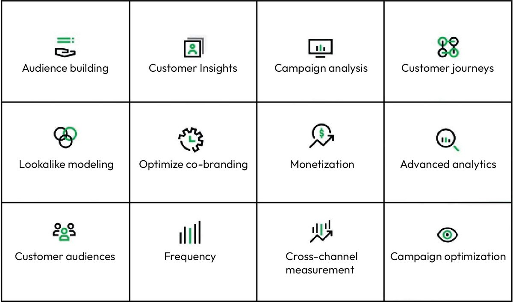
LiveRamp 플랫폼 제품군에는 네 가지 제품 포트폴리오가 있습니다.
- Live/Identity: 프라이버시를 보호하는 규칙을 갖춘 식별 프레임워크의 일환으로 아이덴티티 인프라를 구축할 수 있게 해주는 네 가지 LiveRamp 제품 중 첫 번째 제품입니다. 지식 베이스와 결합된 고급 식별 정보 매칭(identity resolution)을 통해 정확하고 연결된 고객 뷰를 생성할 수 있습니다.
- Live/Access: 가치 있는 새로운 타깃층과 맞춤형 세그먼트에 도달하는 데 필요한 심층적인 고객 이해를 지원하는 제품입니다. 서드파티 데이터를 사고팔 수 있는 마켓플레이스에 대한 접근 권한을 제공합니다. 새로운 세컨드 파티 협업을 통해 가치를 더할 수 있는 역량이 주요 강점으로 꼽힙니다.
- Live/Connectivity: 인증된 오디언스에 대규모로 도달하여 개인화된 경험을 제공할 수 있도록 식별 매칭(identity-matching) 기능을 지원합니다. 브라우저, 모바일, 커넥티드 TV(CTV) 등 다양한 채널을 활용할 수 있으며 이들 채널은 모두 LiveRamp 데이터를 연결하기 위한 공통 식별자인 RampID를 공유합니다.
- Live/Insights: 인사이트를 발굴할 수 있도록 지원합니다. 측정 및 협업 분석 기능이 제공되며 LiveRamp의 DCR 역량이 이러한 핵심 강점을 뒷받침합니다.
LiveRamp는 클라우드 우선 전략을 구현하여 (Habu와 유사하게) 데이터를 물리적으로 이동시키지 않고도 여러 클라우드 제공업체의 제품 전반에서 원활하게 작동합니다. 원하는 클라우드 플랫폼(AWS, Google, Snowflake, Azure, Databricks)에서 고유한 RampID를 사용해 엔티티를 식별 및 매칭할 수 있다는 점은 매우 중요한 플랫폼상의 이점입니다.
DCR 환경에서 다른 기업의 독점 데이터에 가치를 더하거나 그들의 데이터를 활용해 자사 데이터의 가치를 높이고자 한다면 이 플랫폼과 경쟁사들의 제품군을 살펴보는 것이 올바른 방향을 잡는 데 도움이 될 것입니다. 주요 경쟁사들은 리더(Leaders), 주요 기업(Major Players), 니치 기업(Niche Players)으로 분류됩니다.
- IDC {https://packt-debp.link/7NEbaO}에서도 선정한 리더(Leaders):
- Epsilon {https://packt-debp.link/tfUgjy}: 웹 전반에서 구매 의향이 높은 고객(in-market customers)을 발굴하고 구매와 가치를 창출하는 PeopleCloud 제품을 제공합니다.
- Habu: 플레이북을 제공하는 기업으로, 본 장 앞부분의 페더레이션 데이터 저장소를 활용한 Habu 환경 절에서 다루었습니다.
- LiveRamp: 본 장의 앞선 절인 LiveRamp 및 CDP/DCR 경쟁 구도에서 설명했습니다.
- AppsFlyer {https://packt-debp.link/ZrXsKi}: 마케팅 측정, 분석 및 인게이지먼트 분야의 선도 기업입니다.
- IDC {https://packt-debp.link/7NEbaO}에서 선정한 주요 기업(Major Players):
- Optable {https://packt-debp.link/V7mE2l}: 오디언스 데이터의 안전한 전송에 초점을 맞춘 DCR 솔루션 제공업체로, 안전한 탈중앙화 데이터 협업을 제공합니다.
- InfoSum {https://packt-debp.link/75KfaD}(구 Cognitive Logic): 탈중앙화 데이터 협업 플랫폼 제공업체입니다.
- Amazon Web Services {https://packt-debp.link/oKIs5v}: 본 장의 앞선 절인 “AWS Kinesis, Apache Streams, and Kafka Stream (Confluent) Examples”를 참조하십시오.
- Snowflake {https://packt-debp.link/WqG4J4}: 본 장의 앞선 절인 Decentriq을 활용한 Snowflake 환경 구축을 참조하십시오.
- Transunion {https://packt-debp.link/7WIcZ3}: TruAudience 데이터 협업 솔루션을 통해 데이터 협업을 지원하며 식별 정보 매칭 프로세스를 사용하여 모든 소비자 데이터를 식별하고 디바이스, 가구, 채널 전반에 걸쳐 소비자 데이터를 연결할 수 있습니다. 개인 식별 정보(PII)를 공유하거나 데이터를 이동할 필요 없이 데이터 파트너, 브랜드, 퍼블리셔, 월드 가든과 협업할 수 있습니다.
- Decentriq {https://packt-debp.link/j81XVm}: SaaS DCR 제공업체입니다. 자세한 내용은 Decentriq을 활용한 Snowflake 환경 구축 절에서 다룹니다.
- Acxiom {https://packt-debp.link/wZ0eXW}: 고부가가치 SCR 컨설팅 기업입니다. 이들은 “Customer Intelligence Cloud” 제품을 구축했습니다. 이 제품은 고객 온보딩, 유지, 침투를 위한 데이터, 아이덴티티, 분석 기능을 갖춘 서비스 제품군이자 통합 마케팅 클라우드 플랫폼입니다.
- CDP 또는 DCR에 특화된 니치 기업(Niche Players):
- Claravine {https://packt-debp.link/XC9eGw}(구 Tracking First): 데이터 무결성 소프트웨어 제공업체입니다. 이들의 Data Standards Cloud는 기업의 에코시스템 전반에 걸쳐 표준을 연결합니다.
- EDO {https://packt-debp.link/4Ul4xb}: 광고 및 미디어 산업에서 TV 광고의 효과를 측정하기 위한 비즈니스 서비스(데이터가 아닌 서비스)를 제공하는 기업입니다.
- Karlsgate {https://packt-debp.link/zWkpZ0}: 데이터 소유자, 브랜드, 퍼블리셔, 대행사, 기술 기업이 소비자 ID를 난독화하면서 소비자 인사이트를 공유할 수 있도록 지원하는 데이터 협업 솔루션입니다.
- Lotame Solutions {https://packt-debp.link/YUfZri}: 글로벌 고객 데이터 관리/아이덴티티 솔루션 제공업체로, 마케터가 퍼스트 파티 고객 데이터에 접근할 수 있도록 Spherical이라는 데이터 플랫폼을 제공합니다.
- MediaWallah {https://packt-debp.link/AD9qA8}: 데이터 연결성 및 식별 정보 매칭 제품을 보유하고 있습니다.
- mParticle {https://packt-debp.link/0RuDb9}: 실시간 데이터 품질과 거버넌스 보호를 결합한 고객 데이터 및 AI 플랫폼 기업입니다.
- Pyte {https://packt-debp.link/PXxcGY}: 여러 조직의 데이터에 접근하기 위한 데이터 공유 플랫폼입니다.
- Reltio {https://packt-debp.link/XIp0U9}: 여러 소스의 데이터를 실시간으로 통합, 정제, 전달하는 AI 기반 클라우드 호스팅 데이터 관리 SaaS 플랫폼입니다. 생명과학, 헬스케어, 금융 서비스, 보험, 소매, 하이테크, 소비재(CPG), 여행 및 숙박 등의 산업을 지원합니다.
- Throtle {https://packt-debp.link/zBLJlq}: 개인 맞춤형 타깃 마케팅을 제공하기 위해 엔티티의 확정적 매칭(deterministic matching)과 식별 정보 매칭에 주력합니다. 매칭 정확도가 매우 높은 것으로 알려져 있습니다.
- Zeotap {https://packt-debp.link/aRyVHd}: 브랜드가 고객 데이터 플랫폼(CDP) 내에서 고객 데이터를 수익화할 수 있도록 지원합니다. 범용 마케팅 ID를 통해 타깃 마케팅 목적의 데이터를 통합합니다. 주요 고객층은 마케팅 및 프로그래매틱 광고 분야입니다. 분석에 필요한 서드파티 쿠키 데이터가 부재한 상황을 해결하기 위한 실용적인 방안으로서 Zeotap(CDP)과 Decentriq(DCR SaaS 제공업체) 간의 파트너십은 평가해 볼 만한 가치가 있습니다.
클라우드 서비스 제공 영역으로의 데이터 전달
독자 여러분은 이 시점에서 다소 피로감을 느낄 수도 있습니다. 설계 옵션, 벤더, 잠재적 요구사항이 너무나 방대하여 사전 조사를 그만두고 곧바로 코딩에 들어가고 싶은 유혹을 느낄 수 있습니다. 부디 그러한 충동을 피하시기 바랍니다!
복잡성을 줄이고 선택지를 단순화하고자 클라우드 제공업체가 구축하기 시작한 서비스들을 살펴보십시오. 단, 이 과정에서 꼭 필요한 많은 기능이 생략되기도 합니다. 순수 클라우드 서비스를 그대로 통합하는 것만으로도 초기 시작에는 충분할 수 있지만 보안, 프라이버시 데이터 협업, 데이터 클린룸 설계를 직접 처리해야 할 것입니다. 미래의 비즈니스 환경은 이러한 역량을 반드시 요구하게 됩니다. 분석과 데이터 협업을 위해 CDP 및 DCR 아키텍처 설계를 촉진하는 동인들을 생각해 보십시오. 데이터 분석이 비즈니스 의사결정을 주도한다는 사실을 알 수 있습니다. 만약 해당 데이터가 웹, 모바일, API를 통해 수집되었으나 GDPR 등의 규제로 인해 더 이상 수집/사용이 불가능해졌다면, 상황상 백엔드 데이터 매칭 요구사항을 재검토해야만 합니다. 비즈니스에 이러한 대체 분석 서비스를 제공하려면 협업 방식으로 처리된 데이터가 필수적입니다. 클라우드 제공업체가 이러한 고급 서비스를 갖추고 있을까요? 아직은 아닙니다! 막대한 비용을 들여 이러한 역량을 직접 구축하거나, 협업 데이터 플랫폼이 구축될 경우 공유 가능한 모든 데이터를 활용하여 구매해야 합니다.
그렇기는 하나 클라우드 제공업체들도 빠르게 추격하고 있습니다. 다만 이들의 제품 초점은 여전히 클라우드 서비스 자체에 있으며 여러분의 솔루션에서 제품으로서 제공되는 데이터가 아니라는 점에 유의해야 합니다. 오늘날 제공되는 클라우드 서비스를 활용하여 학습을 시작하고 최소 기능 제품(MVP)을 구현해 볼 수 있습니다. 이후에는 원래의 비전과 미션에 맞춰 재조정할 계획을 세우십시오. 다음 몇 개 절에서는 이러한 경로를 따라 주요 클라우드 분석 서비스 제품군에서 무엇을 활용할 수 있는지 살펴보겠습니다.
클라우드 제공업체 제품군 활용
Microsoft Azure는 훌륭한 분석 제품군을 선보였으며 이를 사용하려면 해당 에코시스템에 깊이 동화되어야(drinking the Kool-Aid) 하므로 이에 익숙해질 필요가 있습니다. 다음과 같은 용어들이 이 클라우드 플랫폼의 핵심입니다.
- Microsoft 데이터 분석: Azure Analysis Services(AAS), Power BI, DAX, VertiPaq, 계산 그룹(Calculation Groups), 다이렉트 쿼리(direct query) 호출 및 기타 수많은 클라우드 서비스
- Microsoft 데이터베이스: SQL Server(Azure), Cosmos DB(1 및 2), SQL Server 2022, 데이터 웨어하우스, 개발자 도구 등
- Microsoft Azure 서비스: Synapse Link for Azure Cosmos DB, Synapse Link for SQL, Arc 지원 데이터 서비스, Synapse Analytics, Databricks, AI, MLflow, 머신러닝
- Microsoft 데이터 서비스: Fabric, Microsoft Purview, Security Graph
앞서 언급한 모든 항목을 여러분의 전문 지식 화살통에 어느 정도 담아두어야 합니다. 특정 서비스를 사용하지 않더라도 “왜 사용하지 않는가?”라는 질문에 직면하게 될 것입니다. 그에 대한 답이 “그냥요!”이거나 당혹감을 드러내는 표정에 그친다면, 의문을 제기하는 이들에게 신뢰를 줄 수 없으며 실제로 여러분은 반드시 그러한 질문을 받게 될 것입니다.
Amazon Web Services(AWS) Analytics {https://packt-debp.link/ccLWO9} 역시 그에 못지않게 가파른 학습 곡선을 요구하는 자체 분석 스택을 보유하고 있습니다.
- Amazon Web Services: Athena, CloudWatch, DataZone, EMR, FinSpace, Glue DataBrew, Glue, Kinesis Data Firehose, Kinesis, Managed Service for Apache Flink, Managed Streaming for Apache Kafka, OpenSearch Service, QuickSight, Redshift, S3, SNS/SQS
- Amazon Blueprints: Clean Rooms, Data Exchange, Identity Resolution, Glue, Lake Formation
- Amazon 통합: Databricks, Redis, Stardog 등과의 통합
학습 곡선은 1년 이상 걸릴 것으로 예상해야 하며 팀원들이 복잡한 클라우드 플랫폼 설계에 내재된 위험을 최소화할 수 있도록 클라우드 자격증 취득도 병행해야 합니다. 이 모든 기술에 익숙해지고 각 기술의 특이점과 함정을 피하는 방법을 배우려면 이러한 과정이 필수적입니다. 하지만 모든 것이 예상대로 작동하지는 않는다는 점을 곧 깨닫게 될 것이며 티어 1 컨설팅 지원이 필요해질 것입니다. 처음에 컨설턴트와 함께 시작하지 않는다면 이전 그룹보다 더 많은 지식을 가진 다른 컨설턴트를 찾아야 할 수도 있습니다. 이 모든 상황을 예상하고 계획에 반영하십시오. 때로는 버그를 기능으로 착각할 수도 있으며 Microsoft나 AWS는 여러분이 돌아설 때마다 이를 상기시켜 줄 것입니다. 벤더를 비난하려는 것이 아니라 현실을 직시하자는 것입니다. 우리는 모두 80/20 법칙의 의미를 알고 있지만 실제로는 20%만 구현해 두고 이를 80%인 것처럼 포장한 뒤 ‘완성’이라고 주장하는 벤더들을 마주하게 됩니다. 상황이 이 정도로 심각해질 때도 있습니다! 다행히도 애자일 프로세스, 코드 리팩터링, 다량의 카페인, 밤샘 작업은 여전히 유효한 해결책입니다. 그러나 이제 우리는 현실을 있는 그대로 받아들여야 합니다.
우리가 할 수 있는 일은 Microsoft Azure와 Amazon AWS를 활용하여 분석 공간을 구축하는 방법에 대한 가이드를 정리하는 것입니다.
Microsoft 환경 구축
먼저 요구사항(예: 쿼리 지연 시간 및 데이터 크기 요구사항)을 평가한 다음, 해당 데이터의 변경 속도를 파악해야 합니다. 데이터가 항상 존재하며 요구사항을 지원할 수 있는 미래 지향적 솔루션으로서 구상할 수 있는 아키텍처 외에는 정형화된 단일 참조 아키텍처는 존재하지 않습니다. 먼저 요구사항을 수집한 후 가안(strawman) 참조 아키텍처를 제안해야 합니다. 그런 다음 냉정하게 현실을 직시해야 합니다. 자신과 팀의 기술 역량을 솔직하게 평가하십시오. 마지막으로 필요한 기술을 습득하거나 클라우드 제공업체의 웰 아키텍티드 프레임워크(well-architected framework)를 요구사항에 맞게 적용할 수 있는 분야별 전문가(SME) 팀을 고용하십시오. 온프레미스 호스팅 환경에만 갇혀 있다면 솔루션의 미래 경쟁력을 확보하는 데 한계가 따를 것입니다. 10년 후에는 모든 클라우드가 자체 데이터 센터로 역량(또는 영향력)을 확장하여 오늘날 온프레미스 호스팅 환경이라 부르는 것과 유기적으로 협력하는 구조가 될 것임을 충분히 짐작할 수 있습니다.
다음과 같은 중요한 요구사항들을 살펴볼 필요가 있습니다.
- 데이터, 인덱스, 시맨틱 그래프를 위한 방대한 엑사바이트 규모.
- 데이터와 인덱스의 최적화가 필수적인 고성능 인메모리 분석.
- 클라우드 리소스로 확장이 가능한 컴퓨팅 역량.
- (일부 클라우드 제공업체 제품군에서는 데이터 패브릭만 제공됨에도 불구하고) 정식 출시(GA)된 도구 통합을 즉시 지원하기 위한 온디맨드 관계형 데이터 및 데이터 메시 기반 조직 구조.
- 기밀 컴퓨팅 모드에서 모든 데이터 접근 방식을 지원하는 역량.
- 대부분의 클라우드 서비스가 99.99%의 가용성만 제공하고 MTTR/MTBF SLA를 사용자의 설계 목표에 맡기는 상황에서, 99.999% 가용성, 15분 미만의 평균 복구 시간(MTTR, Mean Time To Recover), 1년의 평균 무고장 시간(MTBF, Mean Time Between Failures)을 요구하는 SLA 기반 비기능 요구사항을 구현하는 역량.
- 데이터의 100% 정확성을 정의하기 위해 전체 데이터에 걸쳐 시맨틱하게 정의되고, 메타데이터 카탈로그에 등록되며, 데이터 사전(dictionary)이 적용되도록 요구하는 데이터 계약(data contracts).
- 특정 고객이 다른 고객보다 먼저 조치를 취할 수 있는 시간적 우위를 점하지 못하도록, 엑사바이트 규모에 달할 수 있는 릴리스 세트 전반에 걸쳐 데이터를 동시(2초 미만)에 배포.
- 반복적인 모델 학습 및 모델 실행에 사용될 때 목적에 부합하는 머신러닝 알고리즘 지원 데이터.
- 환경 전반에서 동일한 논리적 데이터셋의 디지털 트윈(또는 병렬 클론)이 언제 동기화되어 AI, 데이터 마이닝, 인사이트 생성 애플리케이션에 필요한 협력 알고리즘에 즉시 사용 가능한 상태가 되는지 파악하는 역량.
- 추론이 필요한 지식 엔지니어링 유스케이스를 처리하기 위해 데이터 메시의 시맨틱 트윈 버전을 그래프 데이터로 언제 활용해야 하는지 파악. 데이터 관계를 반영할 수 있으면 데이터 서비스를 통해 데이터 패싯(facet)을 노출할 수 있습니다.
- 데이터가 부정확해 보일 때 그 원인을 평가하고 수정할 수 있도록 시스템에 데이터 품질, 데이터 리니지(계보), 저장 데이터 메타데이터를 내장.
- 데이터는 하나의 제품이며 비용(TCO)과 이익(ROI)을 파악하는 것이 필수적이므로, 해당 데이터에 대한 이윤율 계산을 포함하여 세부 단위로 모든 비용을 수집하고 소비자에게 배부할 수 있는 역량 제공.
앞선 목록은 달성하기 어려워 보이며 일부 항목은 다른 항목보다 우선순위를 두어야 할 것입니다. 시간이 흐르면서 클라우드 제공업체는 고객의 관심을 끌고 사용자를 확보하려는 비전의 일환으로 엔지니어인 여러분이 이러한 항목들을 더 쉽게 구현하고 비용 효율적으로 운영할 수 있도록 지속적으로 개선해 나갈 것입니다. 여러분의 목소리가 전달되길 원할 것입니다. 클라우드 업체의 논의 테이블에 참여하여 그들이 무엇을 하고 있는지 배우고 가능하다면 영향력을 행사할 것을 권장합니다. 해당 테이블에 이미 자리를 잡고 있는 티어 1 파트너의 영향력을 활용하십시오. 적합한 파트너를 찾는 방법은 “Microsoft: Find the right partner for you” {https://packt-debp.link/FBBljm} 기사를 참조하시기 바랍니다.
AWS 환경 구축
Microsoft와 마찬가지로 여러 난관에 부딪힐 것을 예상해야 합니다. 데이터 엔지니어가 기업의 클라우드 제공업체를 직접 선택할 수 있는 경우는 매우 드뭅니다. 이는 주로 사전 실사 및 위험, 거시적 비용, 절감액, 비즈니스 관계, 보안/신뢰성 등의 요소를 바탕으로 C 레벨이나 경영진 위원회 수준에서 결정됩니다. 특정 단일 클라우드 제공업체를 사용하라는 지시가 내려지면 그 흐름을 따를 수밖에 없습니다. AWS의 경우 보안 설계에 주의를 기울이고 비용을 철저히 관리해야 합니다.
- 보안과 관련해서는 AWS의 “Zero Trust” {https://packt-debp.link/3brhlf}를 살펴보십시오. 클라우드 보안을 구체적으로 어떻게 설정해야 하는지는 그 자체로 책 한 권 분량이므로 여기서는 자세히 다루지 않겠습니다. 제로 트러스트(Zero Trust) 설계를 기반으로 구축하는 것은 AWS 솔루션에 매우 합리적인 접근법입니다.
- 비용 관리와 관련해서는 AWS 클라우드 계정의 청구서 보고서를 다각도로 분석(slice and dice)할 수 있는 외부 비용 보고 및 분석 도구를 살펴보십시오. 이러한 도구는 비용 최적화가 필요할 때 알림 가이드를 제공할 수 있어야 합니다. AWS 자체적으로는 이러한 안내를 제공하지 않지만 AWS Budgets {https://packt-debp.link/LfhE8E}가 도움이 될 수 있습니다. CIO의 “Top 17 cloud cost management tools - and how to choose” {https://packt-debp.link/wPx177} 기사에서 훌륭한 평가 내용을 확인할 수 있습니다. 우리는 과거 프로젝트에서 CloudCheckr 및 VMware Aria CloudHealth를 사용해 본 경험이 있으며 이러한 도구를 도입하기 전에 FinOps 관리자가 원시 AWS 회계 비용 로그를 제대로 처리하지 못해 곤혹을 치르는 모습도 목격했습니다.
AWS 서비스 스택에서는 Microsoft 스택보다 더 많은 오픈소스 기술을 마주하게 되며 활용할 리소스의 수와 유형도 훨씬 더 깊고 넓은 풀을 형성합니다. Amazon 파트너는 “Engage with AWS Partners” {https://packt-debp.link/7GEnkh}에서 찾아볼 수 있습니다. 다른 클라우드 서비스 제공업체의 제품과 마찬가지로 풍부한 지식을 갖추고 알려진 함정과 약점을 피해야 합니다. 설계 구현에 착수하기 전에 걸러내지 못한 부분은 결국 부메랑이 되어 돌아온다는 사실을 명심하십시오.
AWS 클라우드에서 고성능 분석 공간을 구축할 때는 하이 메모리 인스턴스 {https://packt-debp.link/a35DPE}와 대규모 인메모리 인스턴스 {https://packt-debp.link/nxeKGs}를 고려해야 합니다. 이 분야는 향후 몇 년간 AWS 클라우드 서비스에서 많은 개선이 이루어질 영역입니다. 또한 분석 유스케이스를 위해 가장 빠르고 확장성이 뛰어나며 저렴한 인메모리 데이터베이스 자리를 두고 서드파티 간의 경쟁도 치열합니다. 선택지와 비용은 다양하지만 여러분이 수립한 솔루션의 가치 제안에서 필요성이 인정된다면 예산에 반영할 수 있는 방대한 양의 RAM이 클라우드에 준비되어 있습니다.
다음 절에서는 데이터 릴리스 세트를 대량(bulk)으로 전달할 때 고려해야 할 몇 가지 트레이드오프를 살펴보겠습니다.
대량 데이터 전달
대량으로 데이터를 전달하는 작업은 과거에는 직접 구축한 FTP(File Transfer Protocol)/SFTP(Secure File Transfer Protocol)/FTPS(File Transfer Protocol Secure) 아웃바운드 서비스의 몫이었습니다. 일부 노후화된 시스템의 경우 오늘날에도 여전히 그렇습니다. 레거시 데이터 소비자는 클라우드 기술과 Azure Blob 스토리지 또는 AWS S3 버킷에서 데이터를 읽을 때 발생할 수 있는 다양한 방식을 처리하지 못합니다. 이러한 소비자를 위해서는 FTP를 통해 데이터셋을 밀어내거나(push) 다운로드할 수 있도록 파일을 게시(post)하는 FTP 시설이 필요합니다. 두 가지 방식(푸시 또는 풀) 모두 소비자가 데이터 전달 사실을 인지하거나 가져갈 준비가 되었음을 알 수 있도록 알림 기능을 설계해야 합니다. 또한 통신 오류와 재전송을 고려해야 하며 최악의 경우 SLA를 초과할 가능성도 염두에 두어야 합니다. FTP 시설은 워크플로 관리자처럼 작동하므로 지속적인 모니터링이 필요하고 문제 해결 작업이 자동으로 실행되도록 해야 합니다. 또한 릴리스 세트에 포함된 항목의 패킹 리스트(packing list)를 작성하고 여러 파일을 .zip, .gzip 또는 기타 압축 바이너리 파일 형식과 같은 단일 단위로 압축하거나 릴리스 세트를 여러 파일로 분할해야 합니다. 이러한 기능은 직접 구축하거나 상용 솔루션을 구매하여 통합할 수 있습니다. 과거에는 2GB의 최대 파일 크기가 파일 분할의 제한 요인이었지만 10G 이상의 이더넷 연결을 지원하는 더 큰 통신 대역폭과 최신 파일 시스템의 한계를 고려할 때 이는 이제 무의미한 제한입니다. 또한 수신측 또는 송신측의 FTP 서비스 제한으로 인해 파일 크기가 2GB를 초과하지 못하거나 부분 회선 사용량 제한(throttling)이 걸리기도 했습니다. 가장 중요한 것은 일반 FTP를 사용할 경우 평문으로 노출될 수 있는 통신 트래픽의 보안입니다. 따라서 최소한 SFTP나 FTPS가 필수적입니다. 아웃바운드 및 인바운드 FTP 시설을 직접 구축할 수 있으며 과거에 우리는 서비스 래퍼를 구축하여 이를 해결했습니다. 그러나 상용 제품을 구매하는 것도 가능합니다.
다양한 클라우드 제공업체 제품군 활용
AWS는 이러한 목적을 위해 서비스 및 커넥터 모음인 AWS Transfer Family {https://packt-debp.link/FjBl3R}를 제공합니다. 마찬가지로 Azure에는 Azure FTP 커넥터 {https://packt-debp.link/xszFhd}가 제공되지만 여전히 해당 FTP 시설을 직접 구축해야 합니다. IBM Sterling Secure File Transfer {https://packt-debp.link/45VkQG}와 같은 서드파티 솔루션은 다양한 기능을 제공합니다. Sterling 외에도 다음과 같이 유효한 대안 솔루션들이 존재합니다.
- GoAnywhere MFT
- Progress MOVEit
- Globalscape EFT
- Oracle MFT
- Citrix ShareFile
- SolarWinds Serv-U
다음 절에서는 비교적 저렴한 FTP 기본 도구들을 살펴보겠습니다.
FTP 활용
다음 제품들을 조합하여 자체적인 FTP 서비스를 구성할 수 있습니다.
- Cerberus
- Complete FTP
- Core FTP
- FileZilla
- Globalscape
- GoAnywhere
- IIS FTPS Server
- JSCAPE (권장)
- OpenSSH
- ProFTPD
- Progress MOVEit
- Rebex Tiny SFTP Server
- Sysax Multi Server
- Titan Server
- Vsftpd
- Xlight FTP Server
FTP는 인터넷 태동기부터 존재해 왔기 때문에 선택지가 매우 많습니다. 생성되는 수많은 파일들을 관리하기 위해 FTP 시설을 어떻게 구성할 것인가는 중요한 도전 과제입니다. 고객은 여러분이 1년 전에 생성했다가 이미 삭제해 버린 특정 파일을 언제나 다시 요구할 것입니다. 여러분은 그 고객에게 어차피 그런 오래된 데이터는 더 이상 필요하지 않다고 설득해야 할 수도 있습니다. 하지만 안전하면서도 더 뛰어난 확장성을 지원하는 최신 파일 전송 방식(예: AWS S3 버킷 내 파일이나 Azure Blob)도 존재합니다. 데이터 소비자가 이러한 클라우드 기반 파일 전달 메커니즘을 무조건 수용한다는 보장은 없으므로, 고객의 요구사항을 수용할 준비를 해 두어야 합니다. AWS는 이미 준비되어 있습니다! 다음 절에서는 이에 대해 더 자세히 알아보겠습니다.
FTP 대신 AWS S3 활용하기!
클라우드 스토리지(즉, Azure Blob 또는 AWS S3 버킷 내 파일)를 전송할 때 다양한 접근 방식을 구현할 수 있습니다. 수많은 소비자가 AWS 계정을 보유하고 있거나 전송 버킷에서 파일을 동기화하기 위해 계정을 마련할 수 있으므로, 먼저 하나의 S3 버킷에서 다른 버킷으로 전송하는 방법을 고려해야 합니다. 데이터 전달에 대한 SLA를 포함하는 법적 구속력 있는 데이터 계약을 체결하고 준수 여부를 모니터링하여 생성 및 전송된 데이터와 수신된 데이터에 대한 수신 확인증을 명확히 구분해야 합니다. 비용을 절감하기 위해 파일 버전 관리 및 스토리지 클래스 수명 주기 관리를 활성화하여 자주 사용하지 않는 파일을 아카이빙해야 합니다. 유스케이스에 따른 몇 가지 AWS 접근 방식은 “What’s the best way to transfer large amounts of data from one Amazon S3 bucket to another” {https://packt-debp.link/lAtmxI} 기사를 참조하시기 바랍니다.
- AWS CLI를 사용하여 병렬로 업로드 실행
- AWS SDK 사용
- 복제(교차 리전 또는 동일 리전 방식) 사용
- Amazon S3용 Batch 사용
- Amazon EMR과 함께 AWS S3DistCp {https://packt-debp.link/F4IRuD} 사용
- AWS DataSync {https://packt-debp.link/a8hh0E} 사용
AWS 클라우드 서비스 플랫폼에서 가능한 파일 동기화 옵션의 수와 동기화하려는 고객 시스템의 다양성을 고려할 때, AWS DataSync는 훌륭한 선택지입니다. 모든 접근 방식에서 이전 절에서 논의한 FTP 시설과 유사한 지휘 및 통제(command and control) 시스템을 구축해야 합니다. 이 지휘 통제 역량은 데이터 팩토리에서 생산된 릴리스 세트가 준비되는 즉시 소비자에게 전송되도록 유도합니다. 미디어 아티스트를 위한 완벽한 파일 전송 및 지휘 통제 지원 솔루션의 예로는 Amazon Nimble Studio {https://packt-debp.link/FmV4GO}가 있으며 이를 통해 디지털 이미징 테크니션(DIT, Digital Imaging Technicians) 및 콘텐츠 제작자는 전문적인 AWS 기술 지식 없이도 파일을 전송할 수 있습니다.
요약
본 장에서는 데이터 엔지니어링 솔루션의 일환으로 고려해야 할 중요한 데이터 전달 실무를 다루었습니다. 시작 부분에서 언급했듯이 데이터 소비자의 데이터 처리 유스케이스는 언제나 일관되고 완전하며 시맨틱하게 올바른 데이터를 요구합니다. 이번 장에서는 데이터 솔루션을 구현할 때 내려야 할 선택의 모범 사례와 예시를 통해 이러한 목표를 상세히 설명했습니다.
데이터 스트리밍 고려사항과 대량(bulk) 작업을 더 작은 규모의 일괄(또는 마이크로 배치) 크기를 가진 스트리밍 작업으로 처리하는 방법을 살펴보았습니다. 이를 통해 사용 중인 기술을 바탕으로 전체 시스템을 최적의 성능으로 튜닝할 수 있습니다. 데이터의 발행(publish) 및 구독(subscribe)을 위한 모범 사례를 개괄하고 상세히 설명했습니다. 또한 Apache Beam을 활용한 Google의 구현 방식을 심도 있게 살펴보며 데이터 흐름을 다루었습니다.
또한 막대한 양의 데이터를 가장 효과적으로 구성하는 동시에 DCR의 기밀 컴퓨팅 역량을 활용하여 데이터 팩토리의 결과물을 실시간 분석에 활용하는 방법을 탐구했습니다.
마지막으로 오늘날의 클라우드 서비스 제공업체에서 구현 가능한 레거시이면서도 여전히 통용되는 파일 동기화/전송 메커니즘을 살펴보았습니다. 여러분이 달성해야 할 목표는 전달되거나 수신되는 릴리스 데이터셋에 대한 데이터 계약과 SLA를 유지하는 데 필요한 지휘 및 통제 설비를 구축하는 것입니다.
다음 장에서는 측정값(measures), 계산(calculations), (파생 데이터의) 데이터 재작성(data restatements), 그리고 데이터 과학(노트북 환경)을 위한 데이터 엔지니어링 설계와 같은 중요한 데이터 고려사항을 자세히 다루겠습니다.
15장. 기타 고려사항: 측정값, 계산, 재작성 및 데이터 과학 모범 사례
이번 장에서는 측정값(measures), 계산(calculations), (파생 데이터의) 데이터 재작성(data restatements), 데이터 과학을 위한 다양한 데이터 엔지니어링 설계, 그리고 이러한 설계를 구현하는 데 필요한 노트북 도구와 같은 중요한 데이터 고려사항들을 상세히 살펴보겠습니다.
비유로 이야기를 시작해 보겠습니다. 빵 한 덩이를 굽는 과정을 떠올려 보십시오. 제빵사는 준비 과정에서 필요한 모든 재료를 모으는 것부터 시작하여 완성품에 필요한 양 이상으로 모든 재료가 갖추어져 있는지 확인합니다. 이러한 면밀한 계획 덕분에 레시피의 특정 단계에서 도구나 재료가 필요할 때 우왕좌왕 찾아 헤매지 않아도 됩니다. 모든 재료와 도구는 작업대 위나 작업 공간 가장자리의 손이 쉽게 닿는 곳에 배치됩니다. 이렇게 하면 재료를 정확한 타이밍에 정확한 분량만큼 반죽에 넣을 수 있습니다. 프랑스 요리 용어로는 이를 “미장플라스(mise-en-place, 모든 재료의 사전 준비)”라고 부릅니다(요리가 프로그래밍과 같다는 정반대의 비유를 제시하는 Jeff Potter의 저서 Cooking for Geeks, 2nd Edition (https://www.oreilly.com/library/view/cooking-for-geeks/9781491928110/)을 참조하십시오).
재료 하나나 조리 단계 하나만 빠뜨려도 결국 엉망이 되고 맙니다! 베이킹 과정은 예술이자 과학입니다. 인류가 최초로 밀 낱알을 갈아 가루로 만들고 소금, 이스트, 꿀 등의 몇 가지 재료를 첨가한 뒤 반죽하고 발효시키고 다시 치댄 후 최종적으로 모양을 빚어 열을 가하면 변형될 수 있음을 깨달은 이래로 실천해 온 화학적 프로세스입니다. 이러한 제빵 과정을 거치면 원래 갈아놓은 곡물 가루보다 훨씬 더 큰 가치를 지닌 완성품이 탄생합니다.
제빵 과정에서 배울 수 있는 교훈은, 가공된 데이터가 원래의 원시 데이터 형태보다 훨씬 더 풍부한 가치를 지닌다는 점입니다. 제빵 과정 전반에서 화학적 변형이 일어납니다. 밀의 전분과 당분이 이산화탄소와 알코올로 변환되어 젖은 반죽 덩어리가 훨씬 더 큰 부피로 부풀어 오르며 빵의 형태를 갖추게 됩니다. 마찬가지로 데이터에 메타데이터를 덧입히고 파생 데이터를 생성하며 시맨틱을 보존하는 구조로 유지 관리함으로써, 데이터에 스트레스 테스트를 가하고 그 효과를 측정할 때 새로운 정보가 명확히 드러나게 됩니다. 올바른 프로세스와 적절한 데이터 조합 아래에서 어떤 결과가 도출될 수 있는지 잘 아는 (제빵사와 같은) 데이터 과학자만이 이러한 데이터 레시피의 작성을 이끌 수 있습니다.
제빵에는 수많은 시행착오가 따릅니다. 그것이 쉬운 일이라고 생각한다면 최고의 제과제빵 명장들에게 어떻게 성공했는지 물어보십시오. 천재성, 운, 훈련, 인내, 땀방울과 같은 답변이 돌아올 것입니다. 먼저 프로세스를 정의한 다음 완성도를 높여갑니다. 그런 다음 실내 온도, 작업대 온도, 빵집의 고도, 사용된 물의 알칼리도(pH), 이스트의 종류/양/온도, 발효 및 오븐의 습도 등 모든 환경 조건을 파악할 수 있도록 충분히 명확하고 상세한 레시피를 작성합니다. 이 모든 요소가 우수한 제빵 제품의 성공을 좌우합니다. 나아가 제빵 셰프는 변화하는 시장 수요에 발맞춰 혁신해야 합니다. 비건, 글루텐 프리, 저탄수화물 등은 모두 새로운 프로세스를 필요로 하는 중요한 시장 세그먼트가 되었습니다.
데이터 과학자가 데이터가 정보로 마법처럼 변환되고 새로운 인사이트가 창출되는 깨달음(epiphany)을 얻게 되면, 데이터 엔지니어가 그 과정을 참관하기 위해 투입됩니다. 그래야만 엔지니어는 그 과학적 발견을 바탕으로 솔루션을 설계하는 방법을 구체화할 수 있습니다. 어쩌면 엔지니어가 과학적 프로세스에 조기에 참여하여 과학자가 막 시연한 우아한 결과물을 설명하는 메모를 작성하도록 허용될 수도 있습니다. 이 시점에서 데이터 엔지니어는 적절한 질문을 던질 준비가 되어 있어야 합니다. 효과적인 데이터 엔지니어 참여 모델을 구축하면 엔지니어가 사용된 재료 목록, 성공을 위한 프로세스, 환경 조건, 그리고 최종 결과물을 수집할 수 있습니다. 이 모든 것은 요리사의 레시피처럼 작동하는 데이터 노트북에 기록됩니다. 유일한 차이점은, 마치 미슐랭 3스타 {https://packt-debp.link/QpU2Kk} 수상 비결이나 철을 금으로 바꾸는 연금술을 발견한 양 방 안을 뛰어다니며 흥분해 있는 데이터 과학자의 머릿속에서 레시피를 온전히 끄집어내는 데 필요한 스킬을 데이터 엔지니어가 항상 갖추고 있지는 못하다는 점입니다!
따라서 데이터 엔지니어는 데이터 과학자가 구두로 전달하는 레시피를 차분히 받아 적으면서 실험을 재현 가능하게 만드는 적절한 맥락을 모두 덧붙입니다. 그런 다음 데이터 엔지니어는 수학적 원리가 제대로 작동함을 증명하기 위해 데이터 레시피를 재현합니다. 데이터 과학자의 언어는 수학이며 데이터 엔지니어는 데이터 과학자의 작업 결과물인 확률적 알고리즘, 확률/통계적 기법, 선형대수 공식을 재현할 때 이 언어에 정통해야 합니다. 고급 레스토랑 주방에서 부주방장(sous-chef)이 총괄 셰프의 지시를 이해하지 못하는 상황을 상상해 보십시오! 그런 일이 벌어지면 날아올지 모를 날카로운 도구들을 전부 숨겨야 할 것입니다! 마찬가지로 데이터 엔지니어 역시 데이터 과학자와 협업하는 데 필요한 준비와 훈련이 부족해서는 안 됩니다.
빵 비유를 이어가자면, 크루아상은 만들기가 까다롭기로 유명합니다. 많은 시간과 인내, 기술이 필요합니다. 손님이 경험하는 겉은 바삭하고 버터 향이 가득하며 결이 살아 있는 현대 제빵의 걸작을 완성하려면 반죽에 버터를 층층이 접어 넣는 라미네이션(lamination) 작업을 거쳐야 하며 이를 위해 여러 차례 밀고 접는 과정을 반복한 뒤 발효(proofing)하여 구워내야 합니다. 라미네이트(Laminate), 밀기(rolling), 접기(folding), 발효(proofing)는 셰프에게 핵심적인 실무 용어이며 기술을 훈련받은 사람이라면 누구나 그 의미를 압니다. 데이터 엔지니어와 그 팀의 역할은 데이터 과학자의 탁월한 영감을 일반인도 활용할 수 있도록 일상적이고 소비 가능한 형태로 변환하는 것입니다. 데이터 엔지니어가 겸손한 태도를 유지해야 한다는 말은 결코 과장이 아닙니다. 그러나 부주방장과 마찬가지로, 데이터 엔지니어가 셰프의 레시피를 기록하고 실행을 주도하지 않으면 아무것도 이루어지지 않으며 성공에 도달할 수도 없습니다.
데이터 과학자에게 데이터 과학 워크벤치는 데이터의 마법이 펼쳐지는 작업대와 같습니다. 이는 제빵사의 제빵 작업대와 유사합니다. 데이터 엔지니어는 과학자가 수행하는 모든 테스트, 가설, 관찰이 명확히 정의되고, 측정 가능하며, 재현 가능하도록 해당 워크벤치를 구축해야 합니다. 안타깝게도 데이터 과학자가 엔지니어 교육을 먼저 받은 뒤 자신의 성공 기반을 잊어버리는 경우가 너무 많습니다. 훌륭한 결과를 얻으려면 팀의 협력이 필요하며 성공을 달성한 방식을 소통하는 것은 성공 그 자체만큼이나 중요합니다. 왜냐하면 솔루션은 재현 가능해야 하며 동일한 조건에서 향후에도 항상 재현될 수 있음이 입증되어야 하기 때문입니다. 과거에 함께 일했던 뛰어난 화학 연구원이 들려준 이야기가 떠오릅니다. 까다로운 화학 공정을 통해 상상할 수 없을 만큼 환상적인 반응을 얻어낸 사례였습니다. 의약품 제조 시 환경적으로 용납되지 않는 막대한 양의 중간 화학 부산물을 제거하여 비용을 절감하는 원팟(one-pot) 공정을 개발한 것입니다. 하지만 문제는 연구원의 공정 정의에 무언가가 빠져 있어서 아무도 그 결과를 재현할 수 없었다는 점입니다! 과학 학술지 발표에서 결과를 독립적으로 검증할 수 없다면 동료 평가(peer review)에서 부정적인 판정을 받고 조작된 결과로 낙인찍히게 됩니다. 화학 연구원은 필사적이었습니다. 참관인들이 투입되었고 그들이 지켜보는 가운데서도 공정 개발자는 동일한 결과를 재현하지 못했습니다. 그러다 저녁 무렵 그가 클래식 음악을 틀었을 때 비로소 변화가 일어났습니다. 음악이 만들어낸 배음이 결정 공명을 일으켜 결정적인 결정 격자(crystal lattice)를 형성할 수 있었던 것입니다. 누락되었던 핵심 요소인 소리라는 맥락이 밝혀진 후에야 비로소 실험이 재현되고 공정이 검증되어 상을 받을 수 있었습니다. 이 경우 소리는 전체 반응을 이끈 환경적 촉매제였습니다.
데이터 엔지니어가 올바른 대인 관계, 언어, 관찰 기술을 갖추고 있다면 데이터 과학자의 성공을 위한 공생적 파트너가 될 수 있습니다. 데이터 엔지니어인 여러분이 데이터 과학자와 함께 발전시켜 나가야 할 관계가 바로 이것입니다. 과학이 요구하는 훈련과 엄격한 원칙 없이 그 자리를 대신할 수 있다고 생각해서는 안 됩니다. 여러분의 엔지니어링 노력의 결과로 데이터 과학자의 최소 기능 제품(MVP, Minimum Viable Product)이 정식 출시(GA, General Availability) 제품 형태로 탈바꿈하게 됩니다. 과학자에게 엔지니어인 여러분이 기여하는 가치를 지속적으로 상기시켜야 합니다. 이러한 대화를 나눌 때는 자리를 잡고 앉아 있는 작업대를 가볍게 두드리며 미소를 짓고 이렇게 말해 보십시오. “참 튼튼한 워크벤치죠, 안 그렇습니까?” 과학자가 사용하고 진심으로 감사할 수 있는 플랫폼을 만들어낸 후에야 비로소 그 워크벤치는 진정으로 견고해질 것입니다.
고려해야 할 기타 데이터 엔지니어링 문제 개요
이번 장에서는 몇 가지 핵심적인 데이터 분석 요구사항을 깊이 있게 다루겠습니다. 먼저 데이터 과학자에게 엔지니어의 핵심 역할을 상기시키기 위해 데이터 엔지니어의 가치 제안을 살펴봅니다. 그런 다음 페타바이트급 인메모리 규모에서 가법적 측정값(additive measures)과 비가법적 측정값(non-additive measures)을 지원하는 기능을 포함하여 최신 데이터 과학/분석 워크벤치에 필요한 역량을 다룹니다. 이러한 역량과 더불어 즉석에서 정의된 그룹 내 계산(일명 계산 그룹, calculation groups)을 지원하고 이 기능이 잘 알려진 관계형 GROUP BY 연산을 넘어 어떤 가치를 더하는지 이해할 필요가 있습니다. 그 후 노트북과 함께 시티즌 데이터 과학자 또는 분석가 워크벤치를 위한 최고의 도구(연필깎이) 자리를 두고 경쟁하는 오픈소스 및 상용 도구들을 살펴봅니다. 또한 제품으로서의 데이터를 위한 변경 관리 프로세스를 정의합니다. 이는 데이터 재작성(data restatements)을 관리하고 관찰된 변경 사항에 대한 소급 원인뿐만 아니라 향후 미칠 영향을 평가하는 역량입니다. 이를 통해 분석 결과, 공식 보고서, 이전에 검증된 인사이트에 영향을 미치는 데이터 변경에 대한 영향도 평가를 수행할 수 있습니다.
데이터 엔지니어의 가치 제안
데이터 엔지니어는 어떤 가치를 제공해야 하는가? 이 질문에 대한 대답은 질문을 던지는 주체와 그들이 가진 선입견에 따라 달라질 것입니다. 데이터 과학자는 엔지니어가 모델을 만들고 데이터를 분석하는 과정에서 활용할 수 있는 도구와 시설을 구축해 주기를 기대합니다. 일련의 과학적 실험을 거친 후 데이터 프로세스를 제품화해야 합니다. 이러한 실험 중 하나 이상이 유의미하고 정확한 결과를 도출하는 것으로 입증될 것입니다. 그러면 해당 실험 프로세스를 운영 환경에 맞게 제품화(operationalize)해야 합니다. 이 단계에서는 과학이 발견한 인사이트를 중심으로 비즈니스 솔루션을 구축하는 데 필요한 힘든 작업을 도맡아 처리할 엔지니어의 기술이 요구됩니다. 때로는 이것이 쉬울 수도 있지만 대개는 그렇지 않습니다.
과학자는 가설을 수립하고 이를 입증하거나 반증하는 실험을 수행하며 독립적으로 재현했을 때 검증될 수 있는 데이터 및 분석 모델을 생성하기 위해 그 과정의 모든 프로세스와 관찰 내용을 기록해야 합니다. 엔지니어는 사용되는 과학의 언어(수학)를 알고, 실험에서 일어나는 일(특히 긍정적인 결과를 내는 소수의 실험)을 이해하며, 성공적인 프로세스를 확장 가능하고 프로덕션에 즉시 투입 가능한 제품으로 전환할 준비가 되어 있어야 합니다. 또한 데이터 엔지니어는 데이터 과학자가 간과했을 수 있는 솔루션 내의 모든 가정과 환경적 맥락을 면밀히 파악해야 합니다. 필수적인 가정들이 수치적 진실, 경제적 타당성 또는 비즈니스 현실에서 벗어날 때 문제가 자주 발생합니다. 이는 다음과 같은 상황에서 매우 빈번하게 나타납니다.
- 머신러닝 모델을 위한 지도 학습용 학습 데이터 생성 예상 비용
- 모델의 정확성을 유지하는 데 필요한 수작업 큐레이션 판정(judgments)의 양
- 주어진 모델에 맞게 입력 데이터셋을 제한하지 못하는 문제
- 모델이 가장 효과적인 도메인 데이터의 하위 세트에 대해서만 실행되도록 데이터셋을 제한할 때
이 마지막 문제는 과학자가 엔지니어에게 모델 튜닝 파라미터(tuning dials)에 대한 적절하거나 완전한 이해를 제공하지 못할 때 종종 발생합니다. 그 결과 엔지니어는 특정 틈새 세그먼트만이 아닌 전체 100% 데이터 도메인을 포괄하기 위해 입력 데이터 전반에 적용해야 하는 머신러닝 알고리즘 앙상블에 해당하는 데이터 매핑을 생성할 수 없게 됩니다. 데이터 엔지니어로서 여러분은 기대치를 명확히 하고 데이터 과학자가 자신의 작업에 대한 실마리를 어디서 제공하지 않았는지 객관적으로 지적해야 합니다. 즉, 엔지니어링 프로세스를 통해 과학을 솔루션으로 전환할 수 있는 방법을 제공해야 합니다. 이를 통해 과학이 비즈니스 프로덕션 환경에서 실현 가능해집니다. 엔지니어는 실용적이어야 하며 실제 환경에서 과학자가 데이터 과학 모델 결과물을 개발할 때 활용했던 실현 불가능한 가정이나 불분명한 환경적 맥락을 밝혀낼 수 있어야 합니다. 엔지니어가 새로운 데이터 과학 혁신을 수용할 때 취해야 할 접근 방식은 프레임워크 접근법입니다.
데이터 엔지니어 프레임워크는 본 도서가 쓰여진 목적인 기술, 프로세스, 사람에 대한 이해를 바탕으로 합니다. 이는 1장부터 5장까지 설명되었습니다. 아키텍처는 솔루션 설계에서 가능한 선택지를 제한하는 동시에, 데이터 과학자가 프로덕션 비즈니스 솔루션에서 확인하고자 하는 훨씬 더 많은 가능성을 열어줍니다. 구현이 불가능하거나 쉽지 않은 일부 비용 및 기술적 선택지가 존재할 것입니다. 데이터 엔지니어는 비용과 노력 측면에서 데이터 과학 방법론을 운영 환경에 제품화하는 것이 불가능할 때 데이터 과학자에게 나쁜 소식을 전하는 사람이 될 수도 있습니다. 엔지니어가 대인 관리 소프트 스킬을 훈련받지 못했다면 커뮤니케이션과 효과적인 업무 프로세스가 무너질 수 있습니다. 도구와 기술을 데이터 솔루션에 적절히 맞추려면 엔지니어와 과학자 간의 양방향 교육 및 소통이 필요합니다. 어떤 데이터 과학 기법이든 이를 운영 환경에 적용하는 데 드는 비용과 노력은 투명해야 합니다. 두 역할은 협업을 통해 과학이 엔지니어링된 솔루션 내에서 본래 의도된 목적에 부합할 수 있을 때까지 솔루션을 함께 다듬어가야 합니다. 이러한 유기적인 협업의 상호작용은 필수적입니다. 이는 데이터 과학 작업의 첫날부터 시작되어야 합니다. 데이터 엔지니어는 도구를 구축하고 그 도구는 분석가의 워크벤치에 배치됩니다. 데이터 엔지니어의 가치 제안은 데이터 과학자에게 명확히 전달되어야 하며 그들에게 인정받아야 합니다.
최신 데이터 과학/분석 워크벤치
분석가 워크벤치를 구축하는 것은 데이터 과학 작업에 체계와 유용성을 부여하는 가장 좋은 방법입니다. 과거의 레거시 지도(및 비지도) 학습 머신러닝 모델이나 2세대 딥러닝 방식을 넘어 확률적 데이터 처리를 구현하는 새로운 계열의 머신러닝 알고리즘이 부상하고 있는 오늘날에는 특히 그러합니다. 생성형 AI 알고리즘이 매일 프로덕션에 통합되고 있지만 이에 필요한 데이터 엔지니어링 필수 요건들은 완전히 고려되지 못하고 있습니다. 이러한 필수 요건을 놓치면 모델이 의도한 시맨틱 요약 출력이 아니라 독점 소스 학습 데이터가 모델에 의해 그대로 출력되는 등의 저조한 결과가 발생합니다(OpenAI를 상대로 한 뉴욕타임스 소송 {https://packt-debp.link/sFVXOJ} 참조). 지식 그래프를 활용하여 생성형 AI 모델에서 시맨틱 정확성을 유도하는 임베딩을 생성하는 방법은 지식 엔지니어(고급 데이터 엔지니어)가 데이터 과학자에게 제공할 수 있는 기술입니다. 생성형 AI 모델의 출력에 대해 자동화된 판정(judgments)을 생성하면 환각(hallucination)을 방지할 수도 있습니다. 데이터 엔지니어는 생성형 AI가 불러일으키는 과대광고 속에 건전하고 실용적인 사고를 불어넣고자 합니다. 도메인 지식에 적응하지 못하는 모든 ML/AI 솔루션은 유지 관리 비용이 과도하게 발생합니다. 수작업으로 판정(예외 처리나 미세 조정이라고도 함)을 생성하는 비용이 커지면 모델은 점차 특화되거나 모델 앙상블에 맞게 범위가 조정된 하위 모델들로 쪼개지게 됩니다. 주시해야 할 파라미터(또는 지표)는 데이터 엔지니어가 구축하는 모델 품질 관리 방식입니다. 데이터 모델의 품질 파라미터는 비즈니스 리더를 위한 성공 지표가 될 것입니다. “제대로 작동하고 있습니까?”라는 질문을 받았을 때 “괜찮아 보입니다”라는 대답은 용납될 수 없으며 “직접 확인해 보십시오!”라고 답할 수 있어야 합니다. 효용성을 모니터링하기 위한 품질 측정 지표가 사전에 내장되어 있기 때문입니다.
다음 절에서는 분석가와 데이터 과학자가 업무를 수행하는 데 필요한 모든 역량을 갖춘 분석가 워크벤치의 기능들을 살펴보겠습니다. 이 워크벤치를 통해 엔지니어는 미래 경쟁력을 갖춘 솔루션을 운영 환경에 적용할 때 활용할 수 있는 체계적이고 잘 제어된 기술 및 프로세스 세트를 확보할 수 있습니다. 분석가 워크벤치는 과학적 방법론이 처음 수립되는 솔루션 개발 초기 단계에서 무엇을 제한할 수 있고 제한해야 하는지를 통제하는 데 필요한 프레임워크를 제공합니다. 그런 다음 이러한 방법론이 실제 환경에서 효과적으로 작동하도록 규모를 확장할 때 활용됩니다.
최신 데이터 과학/분석가 워크벤치의 역량은 무엇인가?
“분석가 워크벤치의 역량은 무엇인가?”라는 질문에 대한 답은 여러분의 예산과 이러한 역량을 갖추지 못했을 때 감당해야 할 고통에 대한 인내심에 따라 달라질 것입니다. 워크벤치를 구축하지 않으면 데이터 과학자 팀이 임시방편(one-off) 솔루션을 만들어내는 일이 훨씬 더 많아질 것입니다. 워크벤치에 필요한 역량은 크게 두 가지 기본 유형으로 나뉩니다.
- 도구 기반 역량(Tool-based capabilities): 데이터를 중립적인 분석 형태로 렌더링하는 도구의 개발 및 통합을 포함합니다. Microsoft는 Power BI 플랫폼에서 이를 쉽게 구현할 수 있도록 지원했지만 자체 도구를 개선하고 유지 관리할 수 있는 소프트웨어 개발 인력을 보유하고 있다면 상용 클라우드 제품에 필적하는 대안들도 존재합니다.
- 품질 기반 역량(Quality based capabilities): 분석가가 최대한 수월하게 데이터를 큐레이션하면서 최고의 품질을 유지하도록 합니다. 이를 통해 4장, 아키텍처 원칙 {https://packt-debp.link/5iMKHG}에서 다룬 표준 품질 측정 지표를 엄격하게 적용할 때 모델 생성과 모델 백테스팅을 모두 손쉽게 수행할 수 있습니다.
도구와 품질 역량은 하나로 통합되어야 하며 오늘날 이는 주로 노트북에서 이루어집니다. 여기서 한 가지 의문이 제기되는데, 그것은 바로 노트북을 (있는 그대로 프로덕션에 투입하여) 운영 환경에 제품화할 것인지, 아니면 유지 관리가 용이하고 효율적인 형태로 노트북 로직을 리팩터링할 것인지에 대한 문제입니다.
노트북을 운영 환경에 그대로 투입하지 않는 이유는 무엇인가?
그렇다면 왜 노트북을 그대로 제품화(operationalize)하지 않는 것일까요? 노트북은 기술적으로 가능하기 때문에 종종 운영 환경에 그대로 배포되기도 하지만 이를 실행할지 여부는 수석 아키텍트의 판단에 달려 있으며 대개의 경우 그 답은 “안 된다”입니다! Databricks와 같은 유력 벤더들은 다양한 유스케이스에서 노트북 제품화를 옹호합니다. 노트북을 그대로 제품화하지 않기로 결정하면 분석 워크벤치 프로세스 플로우를 다시 코딩해야 하는 데이터 엔지니어에게 직접적인 영향을 미칩니다. 노트북에서는 이러한 플로우가 다양한 스크립트 코드 스니펫과 얽혀 있어 이를 일일이 풀어내야 하기 때문입니다. 노트북 고유의 데이터 셀 흐름을 하나로 엮어내려면 합리적인 비용으로 확장 가능한 프로세스 플로우 엔진이 필요합니다. Amazon Web Services(AWS)는 AWS SageMaker 노트북을 쉽게 제품화할 수 있도록 지원하기까지 했는데, 이에 대한 자세한 내용은 머신러닝 블로그 게시물인 Operationalize your Amazon SageMaker Studio notebooks as scheduled notebook jobs {https://packt-debp.link/gWBDo2}에서 확인할 수 있습니다.
여기서는 노트북을 그대로 제품화하자는 측의 주장과, 가장 비용 효율적이고 높은 성능을 내는 솔루션을 구현하기 위해 노트북을 프로덕션에 직접 투입하지 않는 것이 왜 모범 사례인지에 대한 이유를 설명하겠습니다.
프로덕션 환경에서의 노트북 활용
노트북을 그대로 제품화함으로써 얻을 수 있는 편의성은 상당합니다. 기술적으로 복잡한 모델을 있는 그대로 가져와 다른 기술로 리팩터링할 필요가 없다는 점은 분명한 이점입니다. 그러나 머신러닝 처리가 보편화되고 앙상블 머신러닝 유스케이스가 등장함에 따라, 모델 실행 환경이 노트북 내에만 존재한다면 이러한 복잡한 처리 단계를 유지 관리하기가 매우 어려워집니다. 모델의 학습 작업을 노트북에 넣기로 결정할 때 이러한 유형의 작업에 노트북을 활용할 여지는 일부 있을 수 있지만 그 경우에도 코딩된 단계 내에서 수많은 데이터 랭글링, 분류, 데이터 세그먼테이션 작업이 이루어져야 합니다. 클라우드 및 도구 제공업체가 효율적인 운영 환경을 지원해야만 여러분이 작성한 노트북 단계를 운영상 효율적이고 메타데이터 지원이 가능한 상태로 만들 수 있습니다. 그렇지 않다면 시간이 흐르면서 노트북의 수와 버전이 증가함에 따라 소프트웨어 및 데이터 엔지니어의 유지 관리 노력은 극심한 혼란으로 치달을 것입니다. 다른 전문가들이 이 주제에 대해 어떻게 평가하는지 확인하려면 Should You Use Jupyter Notebooks in Production? {https://packt-debp.link/dQrR7o}을 검토해 보시기 바랍니다. 엔지니어링 입장과 데이터 과학 입장을 대조해 보면 왜 이것이 뜨거운 논쟁거리인지 이해할 수 있을 것입니다.
선택 가능한 노트북 도구에는 어떤 것들이 있는가?
과거에 우리는 노트북 선택을 두고 수많은 격론을 벌였습니다. 이러한 노트북의 기능은 여러 범주에 걸쳐 있으며 일부는 겹치지만 상당수는 그렇지 않습니다. 각 도구가 경쟁 제품과의 차별화를 의도적으로 내세우기 때문에 이는 당연한 일입니다. 과거에 우리는 이러한 차이로 인한 복잡성을 줄이거나 없애기 위해 프로덕션에서 노트북을 실행하는 것을 항상 제한했습니다. 몇 가지 노트북 선택지는 다음과 같습니다.
- Anaconda {https://packt-debp.link/3aQYtN}
- Amazon Web Services (AWS) SageMaker Notebooks
- Apache Zeppelin {https://packt-debp.link/OyX98F}
- Microsoft Azure Notebooks {https://packt-debp.link/YTLsc4}
- Binder {https://packt-debp.link/dWgeo6}
- Databricks notebooks {https://packt-debp.link/CnTDmF}
- DataRobot Notebooks {https://packt-debp.link/Lhoxjo}
- Google Colab (Vertex AI Workbench) {https://packt-debp.link/iBcDJo}
- CoCalc {https://packt-debp.link/Yh87ur}
- Count.co {https://packt-debp.link/t9OXg2}
- Deepnote {https://packt-debp.link/OQUDII}
- Fanchise {https://packt-debp.link/yPzYh5}
- Hex {https://packt-debp.link/0eaiTM}
- IPython {https://packt-debp.link/bf1qzi}
- JetBrains Datalore {https://packt-debp.link/qQMBH9}
- Jupyter {https://packt-debp.link/y6J0ii}
- Kaggle (kernel) notebooks {https://packt-debp.link/XUXJjj}
- marimo {https://packt-debp.link/N11Wyk}
- mljar Mercury {https://packt-debp.link/DWIxjv}
- Noteable {https://packt-debp.link/3HnrMz}
- Paperspace by DigitalOcean {https://packt-debp.link/oYVAKp}
- Paperspace Gradient by NVIDIA {https://packt-debp.link/4gMaLE}
- Polynote {https://packt-debp.link/n935eJ}
- R notebooks {https://packt-debp.link/JjPcLk}
- SageMath {https://packt-debp.link/SE4v84}
- SAS notebooks {https://packt-debp.link/EcAqKt}
- Spyder {https://packt-debp.link/BVTZLc}
- Starboard {https://packt-debp.link/4smTjM}
노트북을 프로덕션으로 신속하게 전환할 수 있는 견고한 방식을 선택하는 것이 모범 사례입니다. 분석 워크벤치의 데이터 품질 프로세스는 노트북을 프로덕션에 투입할 때 리팩터링 방식을 적용해야 하는 충분한 당위성을 제공할 수 있을 만큼 우수해야 합니다. 관련 주장의 전반적인 내용은 다음 인용문의 원문 기사를 참조하십시오.
“목표는 데이터 과학자와 전체 딜리버리 팀이 하나가 되어 실험하고 개선할 수 있는 역량을 유지하면서도 필요한 비즈니스 기능을 제공하는 소프트웨어를 구축할 수 있도록 지원하는 것이어야 합니다.”
Don’t put data science notebooks into production {https://packt-debp.link/IYf4Mu} 및 {https://packt-debp.link/hAkrDx}
노트북 사용 시 발생하는 문제점 중 하나는, 데이터 접근 형식과 방법이 계속해서 변경(drift)되기 때문에 데이터 소스 정의를 설정하고 시간이 지나도 해당 데이터에 안정적으로 접근하는 데 많은 노력이 든다는 점입니다. 또한 노트북을 통해 데이터 접근 권한을 얻은 후에도 데이터 로딩 자체가 지루하고 시간이 많이 걸리는 작업이 됩니다. 클라우드나 온프레미스의 리소스 한계는 노트북 실행 시 주어진 운영 비용 제약 내에서 필요한 만큼 항상 원활하게 확장되지는 않습니다. 또한 데이터 엔지니어가 데이터 문제를 해결하기 위해 필요로 하는 메타데이터 추적성(마크다운 태그를 대대적으로 사용하지 않는 한)을 통한 데이터 리니지 추적을 놓칠 수도 있습니다. 데이터 과학자나 분석가의 업무 특성상 빠른 반복이 우선시되다 보니, 작업이 완료된 후에도 엉성하고 조잡한 코드가 그대로 남아 있는 경우가 빈번합니다! 게다가 분석가는 데이터나 소프트웨어 엔지니어링의 엄격한 원칙을 항상 준수하지 않으며 추상화된 데이터 접근 객체를 통해 정규화되고 효율적이며 유지 관리가 용이한 데이터 흐름을 만드는 대신 편의에 따라 데이터 값을 복사해 넣곤 합니다. 프로덕션 환경에서 노트북을 사용할 때 발생하는 심각한 문제는 코드가 모듈화되지 않아 순서가 뒤바뀌거나 운영상 비효율적이거나 조잡하게 작성된 데이터 작업이 발생할 수 있다는 점입니다. 이는 소프트웨어 엔지니어가 피하도록 훈련받은 시스템 상태 처리상의 잠재적 오류를 유발합니다. 그에 못지않게 중요한 것은 분석이 완료된 후 보안이 덧입혀질 것이라는 막연한 기대를 품은 채 제로 트러스트 원칙과 정반대 방식으로 데이터에 접근함으로써 발생하는 데이터 보안 문제입니다. 실제로 분석 후 올바른 보안이 재적용되지 않는 경우가 많으며 노트북을 거친 데이터는 보안과 프라이버시가 취약해집니다. 노트북의 접근 관리는 기업 보안 표준을 준수하는 데 필요한 세분성이 부족한 경우가 많아, 노트북 처리 과정에서 한 번 벗겨진 보안을 다시 적용하기가 어렵습니다.
따라서 데이터 과학 노트북 작업의 결과물을 다시 코딩하고, 리팩터링하며, 새롭게 재구성해야 할 필요성이 있습니다. 그리고 이것이 바로 분석가 워크벤치 도구의 핵심 역량이 될 것입니다. 데이터 엔지니어는 프로덕션 환경에 맞게 리팩터링해야 할 과학적 원리를 명확하게 정의해 주는 구조화된 노트북이 존재한다는 사실에 감사해야 합니다.
엔지니어는 통합 개발 환경(IDE)을 사용하여 노트북에 담긴 가치를 어떻게 제품화하는가?
소프트웨어 엔지니어가 사용할 수 있는 다양한 통합 개발 환경(IDE)이 존재합니다. 이들은 데이터 엔지니어도 활용할 수 있습니다. 훈련을 받은 (그리고 의향이 있는) 데이터 과학자도 사용할 수 있습니다. 다음과 같은 도구들이 있습니다.
- Android Studio {https://packt-debp.link/keeT9s}
- Apple Xcode {https://packt-debp.link/dum0f6}
- AWS Cloud9 {https://packt-debp.link/sryM3h}
- Azure DevOps {https://packt-debp.link/pkL7nK}
- Eclipse {https://packt-debp.link/MC0SSC}
- JetBrains:
- IntelliJ IDEA {https://packt-debp.link/996rX8}
- CLion {https://packt-debp.link/mQMtxW}
- PyCharm {https://packt-debp.link/k42jPS}
- Rider {https://packt-debp.link/YWjYr6}
- OutSystems {https://packt-debp.link/6thKWT}
- NetBeans {https://packt-debp.link/VcINxN}
- Microsoft Visual Studio {https://packt-debp.link/d3caLY}
- Qt {https://packt-debp.link/0cb2QN}
- R Studio {https://packt-debp.link/zjbfp7}
- Spyder {https://packt-debp.link/eQ92RD}
- Xamarian {https://packt-debp.link/leswcj}
그리고 고려해 볼 만한 다른 도구들도 많이 있습니다.
이러한 IDE 도구들은 다음과 같은 중요한 기능들을 갖추고 있습니다.
- 자동 완성
- 메서드 및 파라미터 검색 기능
- 통합 도움말(클래스 정의로 바로 이동할 수 있는 코딩 지원 기능 포함)
- 코드 하이라이팅 지원
- 코드 리팩터링 지원
- 메타데이터 및 어노테이션 기능
- 버전 관리 시스템(VCS) 통합
데이터 엔지니어인 여러분은 이 시점에서 우리가 뻔한 이야기를 되풀이하고 있다고 생각할지 모릅니다! 이런 이야기는 데이터 과학자들에게 해야 마땅하다고 느낄 것입니다. 네, 여러분의 생각이 맞습니다! 하지만 노트북에 추가할 수 있는 유용한 확장 기능들이 제대로 엔지니어링된 솔루션과 동일하게 작동하지는 않는다는 사실을 그들에게 설명하는 것은 바로 여러분의 몫입니다. 또한 이러한 확장 기능을 통해 데이터 과학자가 작성한 코드를 리팩터링하는 것 역시 여러분의 몫입니다. 그들의 작업은 편해졌을지 모르지만 여러분의 일은 더 힘들어졌습니다. 리팩터링은 결코 간단한 작업이 아닙니다. 노트북 열성 팬들은 이러한 확장 기능이 개발을 촉진하기 위해 존재하며 이것이 곧 노트북 제품화의 정당성을 뒷받침한다고 주장할 것입니다.
- Bookstore {https://packt-debp.link/TKZAVf}: 버전 관리 및 스토리지를 지원하는 데 사용됩니다.
- Code Prettifier {https://packt-debp.link/nat2DR}: PEP 8 스타일 표준에 맞춰 코드를 정리하는 데 사용됩니다.
- Commuter {https://packt-debp.link/hTbOVb}: 스토리지 및 접근 제어에 사용됩니다.
- Git {https://packt-debp.link/Q6VcY5}: 체크인 기능을 추가하고 GitHub에서 기존 노트북을 검토하는 데 사용됩니다.
- Hinterland {https://packt-debp.link/Y4kf2J}: 코드 자동 완성에 사용됩니다.
- nbdime {https://packt-debp.link/eq7LBd}: 노트북에 대한 diff 연산(줄 단위 파일 비교)을 지원합니다.
- nbdev {https://packt-debp.link/pQMqO3}: 지정된 노트북 셀을 Python 라이브러리로 내보내는 프레임워크로, 함수 시그니처와 노트북 셀을 활용해 문서를 자동으로 생성합니다. 또한 노트북 셀을 단위 테스트로 실행하는 데도 사용됩니다.
- nbgather {https://packt-debp.link/5iTP6e}: 셀 실행 기록을 로깅하는 데 사용됩니다.
- nbTranslate {https://packt-debp.link/VNJC7l}: 노트북 번역에 사용됩니다.
- Papermill {https://packt-debp.link/j4Es0k}: 노트북에 파라미터를 추가합니다(주로 병렬 노트북 버전 지원 목적).
- RISE {https://packt-debp.link/AYXayU}: 노트북을 슬라이드 및 PDF 보고서 형태로 발표할 수 있게 해줍니다.
- scrapbook {https://packt-debp.link/7XfX7v}: 노트북에서 초안을 저장하는 데 사용됩니다.
- Snippets 메뉴 {https://packt-debp.link/jV7sV7}: 다음과 같은 다양한 Python 라이브러리를 즉시 사용 가능한 코드 인서트로 제공합니다.
- Matplotlib {https://packt-debp.link/MzeWJY}
- NumPy {https://packt-debp.link/zBvZ11}
- SciPy {https://packt-debp.link/5rwwkS}
- 기타 다양한 라이브러리를 즉시 사용 가능한 코드 인서트로 제공
- Table of Contents {https://packt-debp.link/fiMpxv}: 노트북 내비게이션을 돕는 데 사용됩니다.
- Variable Inspector {https://packt-debp.link/TZbOVC}: 정의된 변수들을 수집하는 데 사용됩니다.
노트북과 그 에코시스템(데스크톱 또는 클라우드 기반 버전)을 통해 수행할 수 있는 작업은 매우 많습니다. 노트북을 제품화하기로 결정했다면 모범 사례를 위반함으로써 발생하는 위험을 완화해야 합니다. 또한 모든 노트북이 아닌 일부 노트북만 제품화하는 방식을 택할 수도 있습니다. 그러면서도 우리는 이러한 과업을 비용 효율적으로 달성할 수 있는 방법을 제공할 혁신적인 도구 벤더나 클라우드 제공업체의 등장을 고대하고 있습니다. 이 작업은 특정 노트북에 대해 클라우드 제공업체의 엔진에서 실행되는 효율적인 코드를 생성하는 AI 기반 컴파일러를 작성하는 것과 유사합니다. 이것이 가능할까요? 그렇습니다. 하지만 아직 이를 구현해 낸 곳이 있을까요? 아직 없습니다! 이는 차세대 창업가 정신을 가진 데이터 엔지니어들에게 훌륭한 스타트업 아이디어가 될 수 있을 것입니다.
다음 절에서는 방대한 데이터셋 전반에서 선택적인 온더플라이(on-the-fly) 반복 작업을 수행할 때 필요한 데이터 롤업 메커니즘과 데이터 접근 방식을 중심으로, 분석가를 위해 도구가 제공해야 하는 기능에 초점을 맞추겠습니다.
계산과 측정값
이 프로세스의 일환으로 수행해야 하는 몇 가지 계산과 측정값을 살펴보겠습니다.
페타바이트급 인메모리 규모에서 가법적 및 비가법적 측정값을 지원하려면 어떤 기능이 포함되어야 하는가?
제기된 질문에 답하기 위해 먼저 비가법적 측정값(non-additive measure)이 무엇인지 정의해 보겠습니다. 비가법적 측정값이란 입력으로 사용된 어떤 차원(dimensions)에 대해서도 쉽게 집계되지 않는 측정값을 말합니다. 가법적 측정값(additive measures)은 COUNT, MAX, MIN, SUM과 같은 직접적인 팩트(fact) 또는 차원 계산에서 파생됩니다. 팩트 행 사이에서 논리적으로 단순 집계될 수 없다는 사실은 최종 측정값을 계산하는 동안 알고리즘이 집계 방식을 결정해야 함을 의미합니다. 비가법적 측정값은 다른 팩트들로부터 도출된 비율, 백분율 또는 비율 값으로 구성되어야 한다는 특징이 있습니다. 몇 가지 예시는 다음과 같습니다.
- 평균(Average)
- 고유값 개수(Count distinct)
- 전환율(Conversion rate)
- 고객 만족도 점수(Customer satisfaction score)
- 중앙값(Median)
- 이윤율(Profit margin)
논의를 한층 더 발전시키자면, 가법적 측정값과 비가법적 측정값의 하이브리드 형태인 반가법적 측정값(semi-additive measure)도 존재합니다. 반가법적 측정값은 특정 차원 집합에 대해서는 SUM과 같은 계산을 사용하여 집계하고 다른 차원에 대해서는 별도의 집계 방식을 사용합니다. 이러한 선택은 시간이나 사업장 위치와 같은 세그멘테이션 규칙에 따라 결정됩니다. Microsoft의 Power BI 및 DAX 기술 전문 컨설팅 기업인 SQLBI {https://packt-debp.link/TJXxfU}는 Semi-Additive Measures in DAX {https://packt-debp.link/S7OU3z}라는 기사를 작성했는데, 이는 Microsoft가 반가법적 측정값을 어떻게 처리하는지 이해하는 데 훌륭한 자료입니다.
본 장에서 측정값이라는 주제를 다루는 이유는, 빅데이터 처리 설비를 구축할 때 Microsoft Azure Analysis Services(AAS)나 Power BI Premium 기능의 유무와 관계없이 분석가 워크벤치에 측정값 및 계산 기능을 직접 구축해야 하는 상황에 직면하기 때문입니다. 이러한 도구/서비스의 메모리 크기에는 물리적 한계가 있습니다. 이는 솔루션의 확장성에 영향을 미치며 확장 가능한 대안을 찾을 때 구현된 측정값 기능의 성능에 영향을 주는 도구적 한계에 부딪히게 됩니다. 그럼에도 불구하고 DAX는 연구하고 활용할 수 있는 방대한 분석 패턴 세트를 지원합니다. 수많은 예시가 DAX Patterns {https://packt-debp.link/4zzPa7}에 나와 있습니다. 패턴들을 일일이 명시하기보다는 Microsoft 분석 솔루션에서 가장 일반적으로 제공되는 기능들을 연구하고 데이터 규모, 성능, 기능 요구사항이 Microsoft AAS의 수용 한계를 초과하는 경우 자체 솔루션에 그에 상응하는 기능을 구현하는 것이 좋습니다.
비가법적 측정값을 처리하려면 일반 데이터 모델에 추가적인 값을 포함하고 다음과 같은 집합 분석(set analysis)을 활용해야 합니다.
SUM(AGGR(MAX(Value),Month))그러나 특정 집계 수준을 반영하기 위해 기본 모델과 연관된 별도의 테이블을 데이터 모델에 생성할 수도 있습니다. 측정값을 구현하는 또 다른 방법은 데이터 접근 방식(또는 시각화 GUI)에서 데이터 모델의 분자(numerator)와 분모(denominator)를 활용하여 비율을 계산하고 그 비율을 캐시에 유지하는 것입니다. 캐시는 방대한 데이터 볼륨을 처리할 수 있을 만큼 충분히 커야 하므로 Databricks Delta와 같은 도구가 도움이 될 수 있습니다. 단일 분석 도구가 지원하는 기능 범위를 벗어나 작업할 때는 유스케이스를 수용할 수 있는 맞춤형 솔루션을 직접 만들어야 합니다. 분석가가 기능을 쉽게 사용할 수 있도록 하나 이상의 도구를 분석가 워크벤치에 통합해 달라는 요청을 받게 될 것임을 예상해야 합니다. 이렇게 하면 지나치게 복잡한 기술적 우회책 없이도 분석가의 목표와 결과물을 구현할 수 있습니다.
비가법적 측정값을 처리하는 또 다른 방법은 롤업 처리 중에 특정 주입된 코드를 실행하거나 쿼리 실행 중에 즉석에서 자동 생성된 SQL을 실행할 수 있도록 하는 것입니다. Holistics {https://packt-debp.link/aVH3NL}에는 자동 생성 SQL 기능이 있어 비가법적 측정값을 위해 생성된 코드를 실행할 때 유용할 수 있습니다. 자동 생성되거나 사전 생성되어 규칙에 따라 호출되는 동적 SQL(dynamic SQL)을 사용하는 것은 과거에 우리가 활용했던 접근 방식입니다. 이는 솔루션의 규모, 성능, 기능 기준에서 뛰어난 성공을 거두었습니다.
범용 계산 지원 기능은 어떻게 구축해야 하는가?
분석 워크벤치에서 계산 지원 기능을 구축할 때 내려야 할 선택들이 있습니다. 그중 하나는 즉석에서 알고리즘으로 정의되는 그룹을 지원하는 방식과 확장 가능한 대안 중 무엇을 택할 것인가입니다. Power BI의 계산 그룹(Calculation groups) {https://packt-debp.link/jE74wO}은 계산된 열이나 측정값을 추가로 명시적으로 생성하지 않고도 여러 측정값에 걸쳐 단일 계산을 실행할 수 있게 해줍니다. 이는 Azure와 Power BI를 통한 Microsoft만의 독보적인 기능입니다. 이를 통해 개발 및 분석 시간을 절약하고 데이터 모델을 훨씬 더 쉽게 관리할 수 있습니다. 계산 그룹의 개념은 명확하며 분석가 워크벤치에 꼭 필요한 기능입니다. Microsoft는 사용자의 피드백과 수년간의 실무 경험을 바탕으로 이 기능을 완성했습니다. 칭찬받아 마땅한 성과입니다! 그러나 Power BI Premium을 사용할 수 없거나 데이터 규모 문제로 인해 Power BI Premium의 메모리 한계를 초과하는 경우, 이 기능을 구현할 수 있는 대안을 알아둘 필요가 있습니다.
An Alternative to Calculation Groups in Power BI {https://packt-debp.link/lCx5V1} 기사에는 다음과 같은 방식을 배포하여 DAX 계산 그룹 기능을 대체하는 방법에 대한 설명이 포함되어 있습니다.
- 새로운 버전의 데이터 모델.
- 구성 테이블 구조 및 참조 데이터가 필요한 다대다(many-to-many) 접근 방식(예: 계산 그룹에 시계열이 사용되는 경우 기간 세분성을 정의하기 위함). 이 접근 방식은 분석 엔진이 계산 그룹을 기본적으로 지원하지 않는 경우에 필요합니다.
이러한 접근 방식을 언급하는 이유는, CPU 집약적인 계산 그룹 구현과 대규모 데이터셋에 대해 더 나은 확장성을 제공할 수 있는 데이터 집약적인 다대다 대안 사이에서 트레이드오프를 평가할 때 선택의 기로에 놓이게 되기 때문입니다. 이는 데이터 집약적 작업에서 대규모 병렬 처리를 활용할 수 있기 때문입니다.
까다로운 분석 기능들
경험을 통해 알고 있듯이, 데이터를 분석 워크벤치에서 처리하려면 다양한 형식으로 유입되는 데이터를 먼저 수집(ingest)하여 유용하게 만들어야 합니다. 그런 다음 데이터 팩토리에 의해 변환되며 여정 전반에 걸쳐 목적에 부합하도록 가공됩니다. 이 모든 처리 과정은 분석 역량을 통해 데이터를 탐색할 수 있는 단계로 이어집니다. 데이터의 궁극적인 목적은 정보, 지식, 지혜, 인사이트로 변환되어 비즈니스에 가치를 제공하는 것입니다. 수집되는 데이터의 양은 언제나 증가하기 때문에 모든 데이터는 시간이 지나면 결국 빅데이터가 됩니다. 제한된 참조 데이터를 빅데이터와 조인하더라도 그 총합은 거대한 데이터가 됩니다. 다차원 데이터셋에는 수많은 차원이 존재하게 됩니다. 이 모든 데이터는 분석 워크벤치 연산의 대상이 됩니다.
분석 워크벤치의 핵심 역량
임무를 효과적으로 완수하려면 분석 워크벤치에 다음과 같은 여러 핵심 역량이 필요합니다.
- 데이터 탐색기(Data explorer)
- 자유 텍스트 검색을 통한 데이터 검사 및 가치 발굴을 위한 데이터 마이닝
- 시맨틱 검색(Semantic search)
- 시맨틱 모델 탐색기(Semantic model explorer)
- 시맨틱 패싯(Semantic facets)
- 패싯 기반 시맨틱 검색(Faceted semantic search)
- 필터(Filters)
- 데이터 리니지(계보) 탐색(Data lineage exploration)
- 시계열 분석 처리(Handle time-series analysis)
- 의사결정 지원(Decision support)
데이터 탐색기 역량을 통해 분석 가능한 데이터셋을 발굴할 수 있습니다. 데이터는 다양한 원시(raw) 형태로 유지될 수 있지만 이를 플랫폼 분석 워크벤치의 표준 형식으로 정규화하는 것이 데이터 팩토리의 모범 사례입니다. 정규화된 형태로 아직 설정되지 않은 경우 다음과 같은 원시 형식의 데이터를 처리하는 데 무엇이 필요할지 생각해 보십시오.
- 데이터 웨어하우스(DW)/데이터 마트(DM) 형식의 팩트 및 차원.
- 인덱스를 포함한 관계형 구조(예: RDBMS).
- 테이블 형식 렌더링(예: DAX).
- 시맨틱 그래프 모델(예: RDF/OWL2).
- 레이블 속성 그래프(LPG, Labeled Property Graph).
- 다양한 직렬화 데이터 형식: JSON, JSON-LD, Turtle, N3, Parquet, Avro, Thrift, 프로토콜 버퍼(Protobufs), 맞춤형 객체 바이너리 형식 등. 데이터 탐색기 기능을 사용하면 수집된 원시 형태부터 목적에 부합하는 분석 형태에 이르기까지 데이터셋을 식별할 수 있습니다.
데이터를 검사하고 가치를 마이닝하려면 자유 텍스트 검색 역량이 필요합니다. 모든 데이터 구조를 건너뛰고 세부적으로 드릴다운하여 이전에 원시 데이터에 어떤 맥락이 추가되었는지에 대한 단서가 될 수 있는 핵심 문자열을 찾아낼 수 있습니다. 어떤 데이터가 존재하고 그 데이터에 어떤 작업이 수행되었는지 파악하는 것은 필수적입니다. 반복적인 자유 텍스트 검색을 통한 탐색은 핵심적인 데이터 마이닝 역량입니다.
시맨틱 검색 역량을 통해 보존된 팩트 및 분석가의 검색어와 추론된 시맨틱 관계를 연결할 수 있습니다. 자유 텍스트(키워드) 검색 기능은 시맨틱 검색 역량이 더해질 때 그 효과가 크게 향상됩니다. 이렇게 하면 데이터의 자유 형식 텍스트가 검색어의 개념(concept)과 일치하게 됩니다. 이러한 방식으로 개념 일치(concept matches)를 검색할 수 있습니다. 자유 텍스트 매칭으로는 결과를 찾을 수 없는 경우에도 유의미한 결과가 반환됩니다.
시맨틱 모델 탐색기 역량을 통해 분석가는 해당 지식 도메인에 대해 분야별 전문가가 시맨틱하게 렌더링한 모델을 탐색할 수 있습니다. 우리는 액티비티 스트림(웹 분석용), 저분자 화학(예측 화학용), 금융(금융 뉴스 검색용), 소매(검색 및 이상 탐지용) 등을 모델링해 왔습니다. 이를 통해 분석가는 특정 산업의 구조를 이해하고 분석 작업에 명확성을 확보할 수 있습니다. 채워진 도메인의 지식 베이스는 도메인의 모델링된 지식 그래프의 정확성 맥락에서 데이터의 희소성이나 풍부함을 평가받게 됩니다. 예를 들어 특정 브랜드의 신발이 10가지 색상으로 출시되는데 지식 베이스에 5가지만 있다면, 지식 그래프는 전체 색상 목록을 보여주며 분석 중인 데이터셋에서 5가지가 누락되었음을 나타냅니다. 시맨틱 모델에 결함이 있거나 부정확하거나 혹은 분석가가 예상했던 것보다 눈이 번쩍 뜨일 만큼 훨씬 방대하다면, 시맨틱 모델 탐색기는 충분히 그 가치를 입증한 것입니다.
시맨틱 패싯과 관련하여 시맨틱 모델에서 그래프는 방향성 그래프(directed graphs)의 집합으로 볼 수 있습니다. 각 방향성 그래프를 순회(walk)하여 향후 패싯 검색 솔루션에 활용할 수 있는 패싯을 추출할 수 있습니다. 시맨틱 그래프에 대한 이러한 2차원 뷰는 독립형 분류 체계(taxonomy)로서 큰 가치를 지닙니다. 패싯 교집합을 사용하여 검색 결과 세트를 빠르게 좁힘으로써 이러한 가치가 명확해집니다. 쇼핑 웹사이트에서 이러한 패싯들을 교차 적용하여 수천 개의 상품 중에서 원하는 구매 품목으로 선택지를 좁히는 것이 대표적인 예입니다(각 패싯은 튜플 형태입니다).
- type=shoe, gender=men
- gender=men, size=11
- size=11, color=black
- color=black, heel=low
범용 데이터 패싯 추출기(facet extractor) 기능을 구축하고 이를 패싯 검색(faceted search) 역량에 활용하는 것은 분석가 워크벤치의 필수 요건입니다. 온톨로지(ontology)(또는 지식 그래프)에 대한 방향성 순회 기준은 추출 대상이 되는 생성된 패싯으로 간주되어야 하는 분류 체계를 생성하며 이에 따라 ’패싯 추출기’라는 용어를 사용합니다.
패싯 기반 시맨틱 검색 역량은 패싯 검색과 시맨틱 검색의 강력한 기능을 결합하여 통찰력 있는 데이터 마이닝 작업을 수행합니다. 분류 체계의 노드를 나타내는 일반 텍스트는 다른 객체와 추론된 관계를 가지는 일치 객체 컬렉션(텍스트 설명 포함)으로 정의된 개념을 규정하기도 합니다. 이러한 객체들은 검색 문자열에서 식별된 개념으로부터 도출 가능한 시맨틱 거리(semantic distance)를 갖습니다. 이렇게 발견된 항목은 관련성(이를 시맨틱 매치, semantic match라고도 함)에 따라 검색 결과 세트에 포함된 후 순위가 매겨질 수 있습니다.
필터와 관련하여 필터 기준을 반복 적용하여 데이터셋의 크기를 줄이는 역량을 데이터 축소(data reduction) 역량이라고 합니다. 의도한 목적에 맞게 데이터를 가공하기 위해 분석 데이터의 범위를 한정할 수 있는 것은 중요합니다. 이러한 데이터로부터 최고 품질의 인사이트를 도출해야 합니다. 필터를 적용하면 데이터가 수치 분석에 적합한 형식을 갖추게 됩니다. 필터는 정규 표현식 기반이거나, 논리적이거나, 관계형으로 검증되거나(대체 데이터 조회 포함), 실제 데이터와 일치하도록 통계적 평활화(smoothing)의 대상이 될 수 있습니다(기저 데이터에 존재할 수 있는 종속적 공백을 반영하지 않도록 하기 위함).
데이터 리니지(계보) 탐색과 관련하여 분석가는 “이 데이터는 무엇이며 어떻게 이 값을 갖게 되었는가?”라는 질문에 답할 수 있어야 합니다. 그에 대한 답은 데이터의 저장 메타데이터와 팩토리를 거치는 데이터의 진화 과정(메타데이터 리니지, metadata lineage)을 살펴봄으로써 얻을 수 있습니다. 솔루션에 메타데이터/데이터 리니지 탐색기 역량을 구축하면 이러한 기능이 노출됩니다.
시계열 분석 처리 역량 역시 지원을 고려해야 할 사항입니다. 이러한 유형의 데이터는 고유한 데이터 모델과 시계열 작업을 지원할 수 있는 데이터베이스를 필요로 하는 경우가 많습니다. 예측 분석을 통해 해결하려는 문제는 과거에 관찰된 값을 바탕으로 미래 값을 예측하는 것입니다. 시계열 분석(Time-series analysis)은 시계열의 과거 값을 기반으로 미래 값을 예측하는 데 사용됩니다. Ben Auffarth의 저서 Machine Learning for Time Series, Second Edition {https://packt-debp.link/q6B7uS}에서는 다음과 같은 시계열 머신러닝 유스케이스를 제시하고 있습니다.
- 예측(Forecasting)
- 분해(Decomposition, 계절성, 반복 패턴 등을 식별하기 위한 데이터 분할)
- 분류/회귀(Classification/Regression)
- 이상 탐지(Anomaly detection)
- 군집화(Clustering)
- 드리프트 탐지(Drift detection)
- 평활화(Smoothing)
분석 유스케이스에 시계열 분석이 필요하다면 Ben의 책을 직접 읽어볼 가치가 있습니다.
마지막으로, 의사결정 지원 역량을 통해 데이터와 알고리즘의 변경 사항을 시험 적용하여 그 효과를 분석할 수 있습니다. 또한 이 역량을 활용하면 여러 변경 결과물을 비교하여 특정 주요 원인(데이터 또는 알고리즘 변경)에 의해 유도된 최적의 결과를 선택할 수 있습니다. 의사결정 지원 시스템에 종종 구축되지 않는 기능 중 하나는 결과에 영향을 미칠 수 있는 수많은 변수가 주어졌을 때 최적의 입력값 세트를 선택하는 선형대수학적 역량입니다. 의사결정 지원 역량을 구축할 때 이 점을 반드시 고려해야 합니다. 의사결정을 내릴 때 단순한 단 하나의 대안만을 원하는 것이 아니라, 수많은 입력이 주어졌을 때 최종 결과를 자동으로 최적화하는 시스템을 구축해야 하기 때문입니다.
시티즌 데이터 과학자는 분석가 워크벤치를 통해 데이터, 메타데이터, 알고리즘, 데이터를 비즈니스의 초점에 맞춥니다. 이러한 사용자 계층을 위해 최고의 기능을 구축하는 것은 성공을 위한 필수 요건입니다. 시간과 예산이 허락한다면 분석 패턴을 위한 GUI, API 및 지원 코드를 도구 세트로 구축해야 합니다. 그런 다음 분석가가 반복해서 사용할 수 있도록 이 도구들을 분석가 워크벤치에 배치해야 합니다.
다음으로는 과거 데이터 수정 처리 문제와 몇 가지 분석 도구의 역량을 살펴보겠습니다. 일부는 오픈소스 도구이고 일부는 상용 제품입니다. 벤더들은 시티즌 데이터 과학자나 분석가의 도구 목록에서 최고의 자리를 차지하기 위해 경쟁할 것입니다. 여러분의 임무는 데이터 고객과 엔터프라이즈 분석가를 위해 도구를 선정하고 통합하는 것입니다.
과거 데이터 수정 처리
이번 절에서는 제품으로서의 데이터를 위한 실질적인 데이터 변경 관리 프로세스를 정의하겠습니다. 데이터 재작성을 관리하고 변경 영향도 평가를 위해 앞을 내다보거나, 변경 효과를 파악하기 위해 데이터 리니지를 소급해 뒤돌아보는 역량이 필요합니다. 팩트가 변경되면 이전 분석 시나리오의 결과나 최종 상태가 달라질 수 있습니다. 실제로 그런 일이 일어납니다! 변경 사항의 영향도 평가에 각별한 주의를 기울여야 합니다. 분석 결과, 공식 보고서, 이전에 검증된 인사이트는 이미 조치가 취해졌을 수도 있고 아직 그렇지 않을 수도 있습니다. 중요한 입력 데이터 하나가 수정됨으로써 기업 실적을 재작성해야 하거나, 분기별 미래 비즈니스 수익 전망치를 수정해야 하거나, 중대한 비즈니스 케이스의 타당성이 사라지는 등 치명적인 영향이 발생할 수 있습니다. 이 모든 것이 중요한 입력 데이터 하나를 바로잡은 결과로 발생하며 비즈니스에 중대한 재작성을 공표하게 만듭니다.
원시 데이터 변경이나 알고리즘 변경의 영향을 설명하는 역량은 메타데이터, 특히 데이터 리니지 역량에서 시작됩니다. 데이터 문제에 대한 포렌식 분석과 데이터 변경 영향에 대한 미래 예측을 수행할 수 있는 시스템 환경을 갖추어야 합니다. 이렇게 하면 분석 워크벤치 의사결정 지원 서비스(DSS, Decision Support Services)에서 데이터 재작성이나 기저의 변경으로 인한 과거 결과와 신규 결과를 비교 분석할 수 있는 공간을 확보할 수 있습니다. 분석가가 포렌식 분석 여정의 영향도 평가 단계 동안 해당 환경에 단독으로 접근할 수만 있다면, 이 환경은 데이터 품질 관리 환경과 동일해도 무방합니다. 이는 변경 사항이 프로덕션 환경으로 전파되어 분석가들에게 수용되기 전에 반드시 필요합니다. 변경 영향을 평가하고 나면 분석, 보고서 또는 기타 비즈니스 커뮤니케이션에서 해당 데이터를 누가 사용했는지 파악하여 통지할 수 있어야 합니다. 변경을 가한 뒤 구독자들이 눈치채지 못하기만을 바라는 것은 올바른 방법이 아닙니다. 그들은 반드시 알아챕니다!
영향도 평가는 주관적 또는 객관적 요인에 의해 주도될 수 있습니다. 예를 들어 IBM Databand {https://packt-debp.link/izbvjB}는 데이터 파이프라인 및 웨어하우스를 위한 가관측성(observability) 제품입니다. 메타데이터를 자동으로 수집하고, 과거 기준선(baseline)을 구축하며, 이상 징후를 탐지하고, 데이터 품질 문제를 해결하기 위한 알림을 조율할 수 있습니다. 한 제품 리뷰어의 평가는 다음과 같습니다.
“IBM Databand의 가장 마음에 드는 점은 무엇입니까? 메타데이터를 자동으로 캡처하고, 과거 기준선을 설정하며, 알림 시스템을 활용해 비정상적인 동작과 규칙 위반을 경고해 주는 기능이 마음에 듭니다. IBM Databand가 해결해 주는 문제는 무엇이며 어떤 이점을 얻고 있습니까? 저희 조직은 데이터 가관측성 및 변환의 다양한 목적으로 이 도구를 사용하고 있으며 특히 제 관점에서는 트리거와 알림을 사용하여 소스에서 대상까지의 데이터 흐름을 관찰하고 미래 의사결정을 위한 인사이트를 제공하며 사용자에게 비정상적인 데이터 흐름을 경고해 주는 데 큰 도움을 받고 있습니다.”
Vishal S. (Citi US Tech 소프트웨어 엔지니어), G2.com {https://packt-debp.link/KNUbef} 발췌
IBM Databand의 대안으로는 다음과 같은 제품들이 있습니다.
- Bigeye {https://packt-debp.link/UuhnUf}(구 Toro Data Labs {https://packt-debp.link/fm9GG4}): 데이터 품질 모니터링, ML 기반 이상 탐지, 근본 원인 분석 등의 기능을 제공하는 데이터 가관측성 도구 벤더입니다.
- data.world {https://packt-debp.link/VfbYgC}: 다양한 소스에서 데이터를 찾고, 파일 형식을 관리하며, 데이터 강화 전에 그 의미를 파악할 수 있는 플랫폼을 제공합니다. 데이터 트리거를 통해 협업을 촉진합니다.
- Datameer {https://packt-debp.link/msC4O6}: 데이터 준비, 정제, 결합, 정리를 위한 데이터 변환 플랫폼입니다. 데이터 품질을 유지하는 데 자주 사용됩니다.
- Explorium {https://packt-debp.link/jsWd3P}: 데이터 소스를 연결하는 데 사용되는 데이터 클라우드 플랫폼입니다. 리드 스코어링/평가, 시장 분석/세그멘테이션, 수익 솔루션, 피처 발굴/생성 등의 솔루션을 제공합니다.
- Monte Carlo {https://packt-debp.link/2jIhmP}는 데이터 다운타임을 감지, 해결, 예방하고 데이터 도구 간 엔드투엔드 가시성과 상호 운용성을 제공하는 데이터 신뢰성 및 가관측성 플랫폼입니다.
- Soda (https://www.soda.io/platform): 데이터 모니터링 플랫폼을 제공합니다. 협업 기반 실시간 기능을 통해 사용자에게 중요한 데이터 이벤트를 알려줍니다. 데이터 품질 테스트를 위한 Soda 플랫폼을 사용하면 개발 및 프로덕션 파이프라인에서 데이터 품질을 쉽게 테스트할 수 있습니다. Soda를 사용하면 데이터 문제가 비즈니스의 다운스트림 처리에 영향을 미치기 전에 미리 포착할 수 있습니다.
데이터 재작성으로 인해 촉발되는 데이터 분석 재작성을 위한 실행 가능한 단계들을 수립하는 목표는 달성하기 까다로울 수 있습니다. 앞서 언급한 플랫폼 도구 파트너나 다른 업체를 적절히 선택해야 합니다. 이 문제는 데이터 엔지니어링 분야에서 매우 두드러진 이슈가 되었으므로, 이제 인지하셨을 것입니다. 데이터 변경이 가져올 다운스트림 영향에 대비하십시오.
오탐(false positives)을 최소화하고 영향력이 큰 변경 사항에 집중해야 합니다. 또한 시스템이 너무 시끄럽거나 불필요한 알림을 남발하지 않도록 탐지 및 커뮤니케이션 프로세스를 자동화해야 합니다. 모든 데이터 재작성에는 팬아웃(fan-out, 전방위적 확산) 효과가 발생하므로, 알림 워크플로가 생성하는 비즈니스 커뮤니케이션이 어느 정도의 혼란을 야기할 수 있음을 예상해야 합니다. 아무도 변화를 달가워하지 않기 때문입니다. 분석가의 핵심 인사이트를 완전히 뒤흔드는(pull the rug out) 변화는 개인의 경력에도 치명적인 영향을 미칠 수 있습니다.
데이터 재작성 대 릴리스 세트 변경
제품으로서의 데이터를 위한 변경 관리 프로세스에는 데이터 재작성에 대한 명확한 사유를 수립하는 과정도 포함됩니다. 재작성의 원인이 소프트웨어 버그, 스토리지 장애, 전송 지연으로 인한 늦은 데이터 수집, 조잡하게 작성된 통계적 적합(fitting) 알고리즘, 잘못된 통계 팩터링 구성, 아니면 단순한 수작업 입력 실수 때문이었습니까? 데이터 재작성의 원인은 끝이 없으며 이를 데이터 팩토리에 수용하기 위한 잠재적 사유 역시 무수히 많습니다. 투명성을 유지하는 것이 최선입니다!
데이터 재작성이 허용되는 시간 윈도우(time window)가 존재한다는 사실을 모두에게 알려야 합니다. 이는 데이터 과학자(또는 분석가)의 업무 일정에 반드시 반영되어야 합니다. 이 시간 윈도우가 닫히면 더 이상 재작성은 불가능하며 그 이후에는 데이터 변경 프로세스가 전면 적용됩니다. 두 방식의 기술적 구현은 동일하지만 (재작성이 아닌) 데이터 변경은 (재작성이 아닌) 새로운 데이터 릴리스 세트를 준비해야 하는 다음 데이터 릴리스 주기에 처리되어야 합니다. 이러한 변화는 자연스러운 것이며 이전 주기 데이터에 대한 허용 가능한 수준의 변화를 감안해야 합니다. 우리는 릴리스 주기 간 허용 가능한 변화 수준으로 +/- 4%의 편차를 적용해 왔지만 이는 릴리스되는 데이터의 유형과 데이터 팩토리의 릴리스 주기 빈도에 따라 조정될 수 있습니다.
다운스트림 분석 및 생성된 인사이트에 미치는 영향
데이터 리니지 추적 기능을 갖춘 도구를 사용하여 데이터 변경이 영향을 미친 이유를 소급해 평가할 수 있는 것은, 데이터 변경이 이전에 생성된 인사이트에 왜 그리고 어떻게 영향을 미쳤는지 분석할 때 필수적입니다. 데이터 팩토리의 내부 작동을 들여다보는 이러한 시선은 데이터 문제를 해결할 때 필수적인 엑스레이(X-ray) 기능과 같습니다. 5장, 아키텍처 프레임워크 - 개념적 아키텍처 모범 사례의 역량 표 섹션에서 메타데이터 저장소의 필요성이 명시되었습니다. 해당 표에서는 메타데이터 분야의 각 도구 벤더를 상세히 다루지 않았습니다. 그러나 데이터 리니지(즉, 전송 중인 데이터를 위한 메타데이터 관리)와 관련하여 몇몇 핵심 플레이어를 언급할 필요가 있습니다. Alation, Octopai, Collibra 제품은 광범위한 데이터 리니지를 지원하며 다음과 같은 추가 제품들도 마찬가지입니다.
- Atlan {https://packt-debp.link/NcdYqI}
- Dremio {https://packt-debp.link/qWFOS8}
- Keboola {https://packt-debp.link/zPulRu}
- Kylo {https://packt-debp.link/Dxi0FW}
- OpenLineage {https://packt-debp.link/vD5IQY}
데이터 리니지를 위해 더 나은 쥐덫을 재발명(reinvent the wheel)하려 해서는 안 됩니다! 이는 해결하기 매우 까다로운 문제이므로 도구 벤더를 활용하는 것이 권장됩니다. OpenLineage와 마찬가지로 Kylo도 평가해 볼 가치가 있습니다.
참고
메타데이터를 빠르게 수집할 수 있어야 하며 특정 클라우드 서비스 통합 작업을 수행할 때는 포괄적인 버전 관리를 갖춘 보다 개방적인 메타데이터 저장소를 지원하도록 성숙해 가는 Microsoft Purview(구 Azure Purview)를 주시할 필요가 있습니다. 데이터 파이프라인에 사용되는 PaaS, SaaS, IaaS 서비스를 손쉽게 하나로 엮어내는 역량은 여러분이 직접 통합할 수 있는 확장 가능한 도구를 사용하도록 유도할 것입니다. 또는 데이터 리니지 엑스레이 유스케이스를 위해 Microsoft Purview와 같이 이미 통합된 클라우드 도구를 사용할 수도 있습니다.
솔루션의 데이터 리니지 역량을 구축할 때는 메타데이터 리니지를 갖춘 파이프라인 데이터가 어떻게 릴리스 세트로 배포될 것인지에 대해서도 고민해야 합니다. 오늘날 대부분의 도구에는 이러한 요구를 지원하는 기능이 없으므로, 다양한 도구의 메타데이터 저장소에 접근하거나 최소한 릴리스 세트에 맞춰 버전이 지정된 리니지 추적 경로를 벤더로부터 지원받아야 합니다. 우리는 주객이 전도되는(tail wag the dog) 상황을 경계할 것을 권합니다! 가공된 데이터 변경에 따른 다운스트림 영향은 데이터 재작성이나 릴리스 변경이 데이터 팩토리를 통해 전파되도록 허용하기 전에 완전히 평가되고 밝혀져야 합니다. 데이터 리니지 메타데이터(결국 메타데이터도 데이터이므로)를 활용하기 위해 분석가의 DSS 역량을 활용하십시오. 이렇게 하면 변경 사항이 프로덕션 데이터와 그 데이터에 의존하는 공개 분석 인사이트에 부정적인 영향을 미치기 전에 변경 효과를 미리 확인할 수 있습니다.
다음으로는 노트북과 함께 데이터 엔지니어가 실무 툴킷에 갖추어야 할 몇 가지 핵심 스킬, 프로세스, 요구사항을 살펴보겠습니다.
노트북
데이터 엔지니어가 데이터 과학자를 만나는 곳은 협상의 테이블이 될 것입니다. 이곳은 고품질의 결과물 전달을 위해 운영되고 유지 관리될 수 있는 솔루션으로 과학과 예술이 변모하는 자리입니다. 그리고 이제 분석가의 워크벤치로 구체화된 그 테이블 위에는 데이터 과학이나 분석의 마법을 일으키는 도구와 프로세스가 놓여 있습니다. 이를 통해 예술과 과학이 하나로 융합되어 엔지니어의 솔루션에 구현됩니다. 그 중심에는 인사이트를 형성하게 해주는 노트북이 자리하고 있습니다. 최신 데이터 분석 접근법은 데이터 과학자가 노트북에서 데이터를 손쉽게 다룰 수 있도록 해줍니다. 단계별 스크립트 레시피 변환을 통해 데이터에 생명력이 불어넣어집니다. Python, Java, Scala, R, C# 등을 활용한 소규모 및 대규모 데이터셋 조작을 통해 프로덕션 환경에 맞게 완성해야 할 기술적 정수의 타당성을 입증하기 위한 MVP 핵심 기능을 코딩할 수 있습니다. 이 핵심 사항은 실무 현장에서 종종 논쟁의 불씨가 됩니다. 모델을 제품화하고 운영상의 사고방식에 변화를 주기 위해 노트북을 최대한 효과적으로 활용하는 것이 바로 데이터 엔지니어가 당면한 과제입니다.
노트북은 시간이 지남에 따라 비대해질 수 있습니다. 우리는 수많은 노트북 무리가 그 자체로 본격적인 데이터 처리 시스템 파이프라인으로 둔갑하는 모습을 보아 왔습니다. 이는 결코 바람직하지 않습니다! 데이터 엔지니어는 주도권을 잃고 프로덕션 환경에 맞추기 위해 노트북을 갈가리 찢어발겨야 할 수도 있습니다. 원활한 노트북 리팩터링 프로세스가 요구됩니다.
우리는 수년 동안 다양한 유형의 노트북을 다루어 왔습니다. 업계가 노트북 내 마크다운 및 메타데이터 어노테이션에 대해 일관된 표준을 확립하지 못했다는 점을 알게 될 것이며(Babelmark 프로젝트의 FAQ {https://packt-debp.link/Qqx1us} 참조), 이는 아키텍트와 엔지니어가 한 번 선택을 내리면 노트북 종속성으로 이어지게 됩니다. 그러나 데이터 과학자들은 대체 노트북이 제공하는 기능을 사용하겠다고 강하게 압박할 것입니다. 이는 여러분의 데이터 전략을 혼란에 빠뜨릴 수 있습니다. 데이터 과학자의 손아귀에서 그들이 가장 좋아하는 도구를 빼앗아 보십시오, 얼마나 어려운지 알게 될 것입니다! 도구 변경으로 인한 혼란을 방지하는 유일한 방법은 나중에 변경할 필요가 없도록 만드는 것입니다. 처음부터 올바른 도구를 선택하는 것이 필수적입니다. 프로젝트 시작 시점의 사전 실사가 매우 중요합니다. 엔터프라이즈 표준 노트북 옵션의 사용과 관련하여 명확한 방향성을 마련한 후 선택의 정당성과 함께 이를 명확히 소통하십시오. 솔루션에 수많은 종류의 노트북과 그 다양한 버전을 모두 수용할 수는 없지만 한두 가지를 엄선할 수는 있습니다.
다음 절에서는 다양한 노트북의 장단점을 살펴보겠습니다.
노트북 기술
노트북을 추천하기에 앞서, 여러분이 가치 있다고 여기는 역량이 무엇인지 항목별로 정리한 후 자신에게 최적의 노트북이 무엇인지 결정해야 합니다. 이 기술 분야는 매우 경쟁이 치열하며 선택지는 오랫동안 유동적일 것입니다. 벤더들은 자사 도구 및 클라우드 플랫폼을 위한 통합 지원을 적극적으로 홍보할 것입니다.
Zeppelin 대 Jupyter: 색다른 관점에서의 비교
많은 분석가, 과학자, 데이터 랭글러가 Jupyter 노트북을 선호하며 협업 시에는 로컬에 소프트웨어를 설치할 필요 없이 허브 서버에 로그인하여 웹 브라우저로 Python 코드를 작성할 수 있는 JupyterHub {https://packt-debp.link/O25cQ3}를 사용합니다. JupyterHub는 Google Colab, Microsoft Azure Notebooks, Binder와 같이 Jupyter 노트북을 실행하기 위한 클라우드 기반 서비스와는 다릅니다. Zeppelin은 별도의 허브나 호스팅 통합 없이도 다중 사용자 지원을 기본 제공합니다. Zeppelin은 Jupyter만큼 대중적이지는 않지만 동일한 영역에서 경쟁하고 있으며 일부에서는 두 도구가 동일한 문제를 해결하려 한다고 봅니다.
Zeppelin과 Jupyter 노트북 사이에는 기능상 많은 유사점이 있습니다. Zeppelin에서 눈에 띄는 점은 가능한 수많은 통합과 보안 모델입니다. 노트북의 단순 열람과 실제 사용에 대한 접근 제한은 두 노트북 유형 모두에 존재해야 합니다. Zeppelin에서는 이러한 구성이 가능하여 유연한 보안 구성을 만들 수 있습니다. 최고 수준의 통합과 관련하여 Zeppelin은 Spark, Angular, Python, Pig, SAP, Groovy, Elasticsearch 등을 기본 지원합니다. 많은 이들이 노트북에서 직접 빅데이터를 다루고자 하는 이들을 위한 게이트웨이 도구로 Zeppelin을 꼽았습니다. 인터프리터 중 하나가 지원하는 기술로 작업할 때 Zeppelin은 확실한 강점을 지닙니다. 또한 Zeppelin에는 스케줄러가 내장되어 있어 데이터 과학자에게 Jupyter와 같은 추가 확장 기능이 필요하지 않지만 일부 기업에서는 Apache Airflow나 다른 스케줄러 사용을 의무화하고 있어 이러한 장점이 무색해지기도 합니다. Databricks 노트북은 이러한 기능을 한 단계 더 발전시켰으며 Jupyter와도 호환됩니다.
Jupyter의 오픈소스 지원 수준과 커널 엔진(kernel engines) {https://packt-debp.link/5xllcO}의 수는 Zeppelin을 훨씬 능가합니다. 2024년 기준으로 Jupyter용 커널은 100개 이상 존재합니다! 이러한 커널은 Jupyter 노트북 내에서 사용할 수 있는 언어를 정의합니다. Jupyter 프로젝트와 애드인을 찾아볼 수 있는 훌륭한 자료는 Best-of Jupyter - A ranked list of awesome Jupyter projects. {https://packt-debp.link/Sh1pPH}입니다.
참고
Apache Zeppelin용 Jupyter 인터프리터 {https://packt-debp.link/trGZMK}를 통해 Jupyter 커널 엔진을 Zeppelin에서도 사용할 수 있습니다. 두 노트북 엔진을 함께 연동하여 사용할 수 있다는 점은 상호 보완적인 강력한 기능 세트를 제공합니다. 우리가 Zeppelin 작업을 선호했던 중요한 이유 중 하나는 시각화 공유가 더 쉽다는 점입니다. Jupyter에는 노트북에 차트를 출력할 수 있는 Plotly {https://packt-debp.link/qhb2FT} 라이브러리가 있지만 Zeppelin은 2차원 플로팅을 위한 네이티브 Matplotlib {https://packt-debp.link/3GUQn3} 지원을 갖추고 있어 결과물을 HTML로 렌더링할 수 있습니다.
과거에는 Microsoft Windows 10/11에서 Zeppelin을 실행하려 할 때 문제가 있었지만 Microsoft가 Linux용 Windows 하위 시스템(WSL, Windows Subsystem for Linux) 지원을 추가하면서 이제는 문제없이 원활하게 실행할 수 있습니다. 이를 수행하는 방법은 *Install Zeppelin 0.7.3 on Windows 10 using Windows Subsystem for Linux (**WSL)* {https://packt-debp.link/akzbb0}을 확인하시기 바랍니다.
Zeppelin과 Jupyter에 대한 추가적인 비교 관점은 Zeppelin v.s. Jupyter - a Comparison from a Different Perspective {https://packt-debp.link/DOSCYj}를 참조하시기 바랍니다.
Jupyter Notebook 모범 사례
Jupyter Notebook은 오픈소스 웹 애플리케이션입니다. 오픈소스 도구로서 탐색적 데이터 분석(EDA, Exploratory Data Analysis)을 위한 풍부한 확장 기능, 플러그인 및 편의 기능을 제공합니다. 그러나 몇 가지 주의 사항을 고려하지 않는다면 이 강력한 도구는 엔지니어링 팀에게 심각한 운영 및 유지 관리상의 골칫거리를 안겨줄 수도 있습니다. 태깅 표준 및 규정 준수를 강제하는 템플릿과 같은 몇 가지 모범 사례가 필요합니다. 이러한 노트북으로 작업할 때는 Databricks와 같은 대표적인 벤더 플랫폼으로 이식(porting)할 수 있는지 확인해야 합니다. Databricks는 자체 노트북 에코시스템을 엄격하게 통제합니다. Databricks는 .ipynb 파일의 가져오기 및 내보내기를 지원합니다. 이 기능을 통해 Jupyter 노트북에서 작업을 시작하여 Databricks 노트북으로 이전한 다음, 나중에 다시 Jupyter 노트북 {https://packt-debp.link/pQsFoo}으로 되돌릴 수 있습니다. Databricks 노트북은 Jupyter 노트북과 유사하지만 완전히 동일하지는 않습니다! 또한 Databricks는 Databricks 머신러닝 런타임 {https://packt-debp.link/xyjwx4} 내에서 수많은 핵심 오픈소스 Jupyter 라이브러리를 지원합니다. Databricks와 같은 에코시스템의 큰 장점은 모델을 구축할 때 확장성과 뛰어난 성능을 발휘하는 Databricks 작업을 구성하기 위해 Databricks 노트북에서 직접 Ray {https://packt-debp.link/tYzHLd}와 연동할 수 있다는 점입니다.
Jupyter Notebook 모범 사례와 관련하여 다음 권장사항들을 살펴보시기 바랍니다.
- 노트북이 ’노트북들의 노트북’이 되어서는 안 됩니다.
- 노트북을 체계적으로 정리하십시오.
- 마크다운 텍스트를 사용하십시오.
- 노트북은 항상 발표 가능한 상태를 유지해야 합니다.
- 노트북 내 실행 흐름은 논리적이고 순차적이어야 합니다.
- 메모리와 스토리지는 무한하지 않습니다.
- 노트북을 모듈화하십시오.
- 노트북을 테스트하십시오.
- 노트북의 데이터가 데이터 레이크, 데이터 메시 또는 데이터 패브릭에 영속화되는 데이터 리니지를 캡처하십시오.
노트북이 ’노트북들의 노트북’이나 거대하고 모놀리식한 노트북이 되어서는 안 됩니다. 각 노트북은 특정 문제를 해결해야 하며 독립적으로 실행될 수 있어야 합니다. 분석 목표를 분할하는 한 가지 방법은 결과물의 대상을 주시하고 그 대상이 바뀔 때 새로운 노트북으로 분리하는 것입니다. 분석의 하위 목표들이 한 단계와 다른 단계 사이의 긴밀한 통합을 유발할 수 있으므로 균형을 유지해야 합니다. 이러한 경우에는 노트북을 하나로 유지하는 것이 좋습니다. 다만 이러한 의존성의 사슬이 길어지는 것을 피하십시오. 그렇지 않으면 피하고자 했던 모놀리식 구조로 비대해지게 됩니다.
수집된 데이터를 분석할 때 도출하고자 하는 가설/목표를 먼저 정의하여 노트북을 구성하십시오. 노트북의 끝부분에서 증명 종료(QED, quod erat demonstrandum), 즉 증명하고자 했던 바가 명확히 드러나 시작 부분에서 정의한 가설/목표를 뒷받침하거나 반증하는지 확인해야 합니다. 또한 (노트북 확장 기능 포함 여부와 관계없이) 노트북의 목차(TOC, Table of Contents) 기능을 적극 활용하십시오.
노트북을 작성할 때는 마크다운 텍스트 {https://packt-debp.link/l5ectK}를 사용하십시오. 서식이 지정된 텍스트는 명확성을 더해주기 때문에 반드시 사용하는 것이 좋습니다. 노트북은 데이터 테이블과 모든 텍스트를 코드로 렌더링하려고 시도합니다. 코드 사이에 배치된 주석은 명확성을 높이기 위해 마크다운 텍스트로 렌더링되어야 합니다. 데이터 과학자의 부차적인 목표는 엔지니어를 위해 일종의 빵부스러기 길(breadcrumb trail)을 남겨두는 것이어야 합니다. 알고리즘이나 데이터 레시피가 명확하지 않으면 데이터 엔지니어는 큰 좌절감을 느끼게 됩니다. 인사이트를 빠르게 도출하려는 서두름 속에서 데이터 과학자들은 종종 이 단계를 생략합니다. 노트북에 담긴 스토리는 엔지니어가 명확히 이해할 수 있어야 합니다. 마크다운 텍스트로 렌더링해야 하는 텍스트의 예로는 제목, 앵커 링크, 수학 공식, 인라인 코드 등이 있습니다. 다음 사항에 유의하십시오.
- R 언어는 R Markdown {https://packt-debp.link/6GMpgC}이라는 자체 마크다운 형식을 지원합니다.
- Jupyter 노트북은 CommonMark 마크다운과 MyST Markdown {https://packt-debp.link/FRwaRn}을 지원합니다.
노트북은 항상 발표 가능한 상태를 유지해야 합니다. 노트북은 언제든 검토의 대상이 될 수 있습니다. 백문이 불여일견이듯, 차트, 테이블, 그래프는 노트북이 전달하고자 하는 메시지를 시각적으로 설명하는 데 큰 도움이 됩니다.
노트북의 실행 흐름은 논리적이고 순차적이어야 합니다. 우리는 수많은 노트북이 셀 전체에 데이터를 무분별하게 흩뿌려두고 왜 그랬는지에 대한 설명 한 줄 없이 한참 뒤에 그 데이터를 재사용하는 모습을 너무나 자주 보았습니다. 순서를 벗어난 셀 실행이 발생하지만 필요한 셀 데이터가 제때 준비되지 않으면 오류를 유발할 수 있습니다. 특히 셀이 순서 없이 실행될 때 셀 데이터를 삭제하면 문제가 발생할 수 있습니다. 데이터가 한 번 사라지면 반복 실행이나 롤업 계산에 더 이상 사용할 수 없게 됩니다. 하나의 셀에서 다른 셀로의 출력을 순차적으로 구축해 나갈 것을 권장합니다. 비순차적으로 셀을 실행할 때는 나중에 필요한 콘텐츠를 업데이트하는 셀의 실행에 주의하십시오. 다운스트림 분석이 손상되는 것을 방지하기 위해 캐시에 데이터를 복제하십시오. 트랜잭션 관점에서 생각하십시오. 셀이 다른 셀에 의존하는 경우 이들은 하나의 그룹으로 함께 실행되어야 합니다. 가장 좋은 방법은 커널을 재시작하고 전체를 순서대로 실행(Restart and Run All)하는 것이지만 이는 시간상 매우 비효율적일 수 있습니다.
메모리와 스토리지는 무한하지 않으므로 노트북을 정의할 때 이 점을 염두에 두어야 합니다. 샘플 데이터(샘플링이 쉽지 않은 경우 처음 몇 개 행)로 노트북을 실행한 다음, 나중에 실제 데이터로 규모를 확장하십시오. 또한 데이터 타입을 문자열에서 메모리 점유율이 낮은 정수(integer) 또는 부동소수점(float) 다운캐스트 크기로 변환해야 합니다. 열거형(즉, 범주형/category 데이터 타입)을 사용하면 메모리를 절약할 수 있습니다. 또한 세부적인 세분성이 필요하지 않을 때는 요약된 집계 데이터만으로도 충분할 수 있도록 상위 수준에서 데이터를 집계하는 방법을 고민하십시오(원시 데이터의 일별 수준 대비 월별 및 분기별 수준으로 데이터셋을 구성하는 방식 고려). 마지막으로 더 이상 필요하지 않은 데이터는 메모리 확보를 위해 가능한 한 자주 삭제하십시오.
노트북을 모듈화하십시오. 이는 기능적 모듈을 생성하는 것을 의미합니다. 모듈화를 통해 노트북의 가독성이 높아지고 기능 모듈의 재사용성이 향상됩니다. 여기에는 맞춤형 Python 모듈 생성이 포함됩니다. 이는 노트북 고유의 기능이 아니라 Python의 기능입니다.
노트북을 테스트하십시오. 이는 데이터 과학 라이프사이클을 수립한 뒤 이를 소프트웨어 개발 라이프사이클(SDLC, Software Development Lifecycle)과 일치시키고 노트북에 테스트 지원을 추가하는 것을 의미합니다. 세부 사항은 복잡하며 솔루션을 유지 관리하기 위해 단위, 시스템, 회귀 테스트가 필수적인 소프트웨어 및 데이터 엔지니어(즉, 개발자)처럼 데이터 과학자가 사고하도록 유도하는 데 따르는 어려움을 체감하게 될 것입니다. 노트북 테스트와 관련된 몇 가지 지침은 다음과 같습니다.
- 노트북에서 테스트를 구현하는 방법에 대한 훌륭한 기사는 How to Test Jupyter Notebooks with Pytest and Nbmake {https://packt-debp.link/snExCm}에서 확인할 수 있습니다.
- 작업 결과물을 시간이 지나도 최신 상태로 유지하기 위해 노트북 코드 검토 지원 도구도 필요할 것입니다. 이러한 유형의 나란히 보기(side-by-side) 노트북 비교 지원은 ReviewNB {https://packt-debp.link/zEMDu7}를 참조하시기 바랍니다.
- 마지막으로, 특히 노트북을 프로덕션 환경에서 실행해야 하는 경우에는 단위 테스트에 집중해야 합니다. 우리가 이를 권장하는 것은 아니지만 다른 더 중요한 전투에서 승리하기 위해 장기적으로 바람직하지 않음을 알면서도 어쩔 수 없이 타협해야 하는 상황에 직면할 수도 있습니다. 해결해야 할 주요 문제는 노트북에 정의된 함수를 테스트 모듈로 직접 가져올 수 없다는 점입니다. 해결책으로 노트북 내부의 코드를 테스트하는 단위 테스트 프레임워크인 TestBook {https://packt-debp.link/6JAi4g}을 사용할 수 있습니다. 또한 nbval {https://packt-debp.link/KoDe2p}(ipytest 플러그인 {https://packt-debp.link/cHLGOy})을 사용하여 노트북의 저장된 출력과 현재 출력을 비교할 수도 있습니다.
노트북의 데이터가 데이터 레이크, 데이터 메시 또는 데이터 패브릭에 영속화되는 데이터 리니지를 캡처하십시오. 노트북에서 중간 데이터가 생성될 때 메타데이터로 정의되고 데이터 리니지 추적 도구에서 변환 과정이 명확히 드러나도록 해야 합니다. 이 역량은 데이터 엔지니어가 먼저 구축해야 하며 이후 노트북을 사용하는 분석가가 활용하게 됩니다.
참고:
전체 노트북, 셀, 또는 노트북 출력에 대한 메타데이터를 포함하는 구조화된 태그 세트를 노트북에 정의하고 사용해야 합니다.
이 세 가지 수준의 메타데이터는 다음과 같이 설정됩니다.
- Jupyter 노트북의 도구 모음(Toolbar) | 편집(Edit) | 노트북 메타데이터 편집(Edit Notebook Metadata) 설정으로 이동하여 데이터 리니지 설계에 맞게 태그를 구성함으로써 노트북 수준 메타데이터를 설정할 수 있습니다.
- Jupyter 노트북의 도구 모음(Toolbar) | 보기(View) | 셀 도구 모음(Cell Toolbar) | 메타데이터 편집(Edit Metadata) 설정으로 이동하면 각 셀에 버튼이 표시되어 셀 수준 메타데이터를 설정할 수 있습니다.
- 마지막으로 IPython.display.display(obj, metadata={“tags”: []})와 같이 Python을 활용하여 출력 수준에서 메타데이터를 설정할 수 있습니다. 이러한 방식으로 노트북 출력에 대한 메타데이터를 설정할 수 있으며 이는 데이터 리니지 엔지니어링 목표를 달성하는 데 결정적인 역할을 합니다.
앞서 설명한 바와 같이 Jupyter 노트북으로 작업할 때는 이러한 지침을 준수해야 합니다.
노트북을 구조화하고 목차(TOC)를 추가하는 것(TOC2 확장 기능 {https://packt-debp.link/TP75cg} 참조)은 서드파티 검토자 역할을 하는 데이터 엔지니어인 여러분에게 특히 큰 가치를 제공한다는 점을 기억하십시오. 접기 가능한 제목(Collapsible Headings) {https://packt-debp.link/Qte1SQ} 확장 기능을 사용하면 덜 중요한 셀이 포함된 노트북 섹션을 숨길 수 있습니다. 이를 통해 검토자는 노트북의 중요한 흐름에 집중할 수 있습니다. 모든 모범 사례, 태깅 규칙, 메타데이터 전략, 마크다운 스타일 및 기타 규칙이 명확히 문서화되었다면, 향후 규정을 준수하는 노트북을 쉽게 생성할 수 있도록 템플릿을 만들어 이를 강제하십시오. 일관되지 않은 노트북 구조로 인한 어려움을 다른 이들이 어떻게 해결했는지 알아보려면 Set Your Jupyter Notebook up Right with this Extension {https://packt-debp.link/pqD6dY} 기사를 읽어보시기 바랍니다.
노트북을 실행할 때 노트북이나 특정 핵심 프로세스가 너무 오래 실행되거나 완료되지 않는(무한 루프) 상태인지 파악할 수 있어야 합니다. tqdm 라이브러리 {https://packt-debp.link/l3vrbG}는 결과를 애타게 기다리거나 노트북 내에서 결과 도출을 향한 진행 상황을 확인하고 싶어 하는 이들에게 안도감을 주는 진행률 표시줄(progress bar)을 제공합니다.
Git을 사용하십시오! 노트북은 검토를 거쳐 체크인되어야 하지만 비대한 데이터가 포함되어서는 안 되므로 Git pre-commit 훅을 사용하여 해당 데이터를 제거해야 합니다. nbstripout {https://packt-debp.link/r2Mqs2}을 사용하여 노트북 출력을 제거하십시오. 그러면 커밋, 코드 검토 및 노트북 diff의 가독성이 훨씬 높아집니다. 노트북은 전용 환경에서 실행되어야 합니다. 노트북 및 생성된 모든 모듈과 함께 Git 저장소에 노트북의 requirements.txt 파일을 저장해야 합니다. 이를 통해 해당 로직을 프로덕션 환경에 맞게 준비하는 데 필요한 모든 워크플로를 재현할 수 있습니다.
요약
본 장에서는 측정값, 계산, (파생 데이터의) 데이터 재작성, 그리고 (노트북을 포함한) 데이터 과학을 위한 데이터 엔지니어링 설계와 같은 중요한 데이터 고려사항들을 상세히 설명했습니다. 사용 가능한 다양한 노트북에 대해서도 심도 있게 살펴보았습니다. 연구에 필요한 정보는 본 장에 링크된 참고 자료에서 확인할 수 있습니다.
제시된 다양한 도구, 확장 기능, 접근 방식을 통해 여러분의 솔루션에서 무엇이 가능한지 그 윤곽을 확인할 수 있었을 것입니다. 이 중 다수가 개발 및 프로덕션 환경에서 활용될 것입니다. 특정 도구를 다른 도구보다 우선하여 선택하는 기준은 솔루션에 필요한 역량을 바탕으로 하며 이는 다시 필요한 기능을 결정합니다. 그리고 그 기능들이 도구 선택 기준을 이끌게 됩니다. 여러분의 솔루션에 가장 적합한 도구가 무엇인지 단정적으로 말할 수는 없지만 주어진 개발 제약 조건 내에서 최선의 선택을 내릴 수 있도록 안내해 드릴 수는 있습니다. 이러한 지침을 통해 미래 경쟁력을 갖춘 무언가를 구축하기 위한 최선의 준비를 마칠 수 있습니다. 이번 장에서 밝힌 모범 사례는 하나의 핵심 결정에 초점을 맞추고 있습니다. 바로 “노트북을 프로덕션에 직접 제품화할 것인가?”입니다. 우리는 데이터 과학자의 최소 기능 제품(MVP)에 담긴 인사이트/알고리즘을 정식 출시(GA) 제품 형태로 발전시키는 주체로서 데이터 엔지니어의 역할을 강조하면서 노트북 로직을 효율적인 소프트웨어로 코딩하는 방법에 대한 지침을 제공했습니다.
다음 장에서는 머신러닝(ML) 파이프라인 모범 사례 및 프로세스에 대해 자세히 다루겠습니다.
16장. 머신러닝 파이프라인 모범 사례 및 프로세스
이제 여러분은 데이터 팩토리 파이프라인을 구축하고 사용 가능한 영역에서 릴리스 가능한 세트로 데이터를 렌더링하는 방법에 대해 폭넓은 이해를 갖추게 되었습니다. 투명한 메타데이터 및 리니지 서비스를 갖춘 지식 베이스 형태로 이들을 명확히 제공한 후, 분석 워크벤치에서 분석 기능을 제공할 수 있습니다. 아직 다루지 않은 부분은 머신러닝 알고리즘을 통해 품질 높은 정보로부터 인사이트를 도출하는 데 필요한 반복 주기입니다. 여기에는 기술적 노력을 최소화하고, 높은 수준의 객관적 품질을 구현하며, 최첨단 기술을 통합하면서 플로우와 최적화된 모델을 체계화하는 작업이 포함됩니다. 프로덕션에 즉시 투입 가능한 솔루션을 시장에 선보이려면 이 모든 과정이 수반되어야 합니다. 모든 머신러닝 솔루션이 반드시 인공지능을 구현해야 하는 것은 아닙니다! 데이터 집약적인 작업을 수작업으로 처리하는 데 드는 시간을 줄이고 결과물의 전반적인 품질을 높임으로써 여러분이 서비스하는 비즈니스와 고객에게 가치를 더하고 있다는 사실에 자부심을 가지십시오.
머신러닝/인공지능 개요
이번 장에서는 고전적인 머신러닝(ML, Machine Learning) 운영 제품화와 보다 발전된 딥러닝(DL, Deep Learning) 및 생성형 AI(GenAI, Generative AI) 요구사항을 위한 모범 사례를 다루겠습니다. 이 기술 분야는 눈부시게 빠르게 발전하고 있습니다! 확률과 퍼지 로직(fuzzy logic)을 기반으로 안정적이고 고성능의 솔루션을 개발해야 하는 흔들리는 모래 위에서 엔지니어링 설계의 미래 경쟁력을 확보하려는 것은 다소 불편한 도전입니다. 그 결과 언제나 불안감을 느낄 수밖에 없습니다. 이에 익숙해지십시오. 그러나 여러분이 안도할 수 있는 부분은 불변의 상수(constants)를 파악하고 그에 맞춰 구축하는 역량입니다. 변화야말로 여러분에게 변함없는 상수이므로, 이를 있는 그대로 받아들이고 그에 맞춰 구축하십시오. 변하지 않는 사실은, 수집된 팩트에 대한 가설로 출발한 전문 분야의 진실이 시간이 지남에 따라 입증되고 지식 도메인 내에서 하나의 진실로 확립된다는 점입니다. 앞선 장들의 내용을 깊이 새겼다면 여러분의 데이터 팩토리가 만들어낸 것이 바로 이러한 진보입니다. 이제 새로운 원시 데이터에 지능을 적용하고 기계가 표현한 지식의 현재 상태를 활용하여 새로운 가설을 수립한 다음, 이를 다시 지식 베이스에 피드백하여 선순환 구조를 만들어야 할 때입니다. 이는 반복적인 프로세스이며 높은 품질의 기계 지능으로 이어집니다. 그림 16.1은 현재 여러분의 관심을 끄는 다양한 개념들에 대한 개요를 보여줍니다. 이는 ML 솔루션을 진행하면서 접하게 될 도구, 기술, 벤더들에 대한 기술 워드 클라우드입니다.
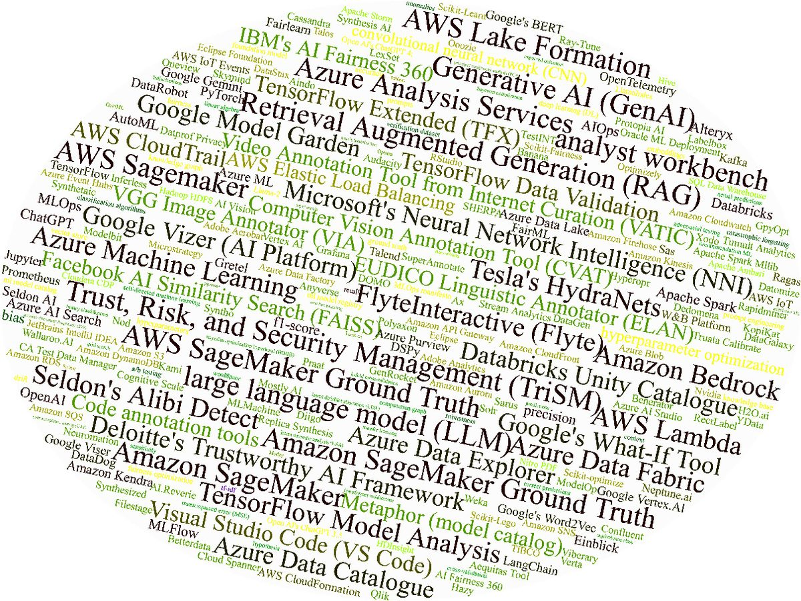
AI의 현재와 미래 상태
2024년 초, Katja Grace는 “Thousands of AI Authors on the future of AI” {https://packt-debp.link/2DnAIw}라는 제목의 연구 결과를 발표했습니다. 제기된 질문은 “고수준 기계 지능(HLMI, High-Level Machine Intelligence)은 언제쯤 실현 가능한가?”였습니다. 그 결과 2022년과 2023년 사이에 예측된 HLMI의 도래 시기가 13년 앞당겨진 것으로 나타났습니다. 그렇다면 “무엇이 발전을 늦추고 있는가?”라는 의문이 생길 수 있습니다. 이 연구는 몇 가지 흥미로운 인사이트를 제공합니다.
참가자들은 지난 10년 동안 컴퓨팅 비용 하락 폭이 절반으로 줄어든 것이 AI 발전에 가장 큰 영향을 미쳤을 것이라고 추정했으며 연구자들의 노력과 AI 알고리즘의 발전이 절반으로 줄어든 것은 가장 적은 영향을 미쳤을 것이라고 보았습니다. 즉, IT 엔지니어링 운영 비용에 의해 발전 속도가 둔화되고 있는 것입니다. 또한 AI 시스템은 해석 불가능한 추론이라는 한계를 겪고 있으며 이는 인간에 대한 부당한 편향적 대우부터 유능한 악의적 행위자에 의한 능동적인 유해 행위 추구에 이르기까지 다양한 결과를 초래하는 중대한 AI 위험 요인으로 간주됩니다. 참가자들은 2043년의 AI 시스템 위험이 오늘날 우리가 목격하는 다음과 같은 구체적인 특성을 띨 것으로 예측했습니다.
- 정렬(Alignment) {https://packt-debp.link/iGQrkQ} (자세한 내용은 “Pearson Artificial Intelligence: A Modern Approach, 4th Edition” {https://packt-debp.link/zAbCJy} 참조)
- 신뢰성(Trustworthiness) {https://packt-debp.link/mzgUsT}
- 예측 가능성(Predictability) {https://packt-debp.link/hEKTdD}
- 자기 주도성(Self-directedness) {https://packt-debp.link/cSRXvc}
- 역량(Capabilities) {https://packt-debp.link/vphXp7}
- 탈옥 가능성(Jailbreakability) {https://packt-debp.link/uziO7g}
응답자들은 또한 “2043년 최첨단 AI 시스템 중 일부가 [다음 목록의] 11가지 특성을 가질 가능성이 얼마나 높은가?”라는 질문을 받았습니다. 발생 가능성에 따라 위에서 아래로 순위가 매겨진 답변은 다음과 같습니다.
- AI가 허위 정보의 유포를 쉽게 만듦(예: 딥페이크, deepfakes).
- AI 시스템이 대규모 여론 동향을 조작함.
- 권위주의 통치자가 국민을 통제하는 데 AI를 사용함.
- AI 시스템이 특정 개인에게 불균형적인 혜택을 줌으로써 경제적 불평등을 심화시킴.
- AI가 위험한 집단으로 하여금 강력한 도구(예: 조작된 바이러스)를 만들 수 있게 함.
- AI 시스템의 편향이 부당한 상황을 악화시킴(예: AI 시스템이 채용 과정에서 성별이나 인종에 따라 차별하는 법을 학습함).
- 강력한 AI 시스템의 목표가 잘못 설정되어 대재앙을 초래할 수 있음(예: 강력한 무기를 개발하고 사용함).
- 잘못된 목표를 가진 AI 시스템이 지나치게 강력해져 의사결정에서 인간의 역할을 축소시킴.
- 사람들이 AI 시스템과 상호작용하는 데 더 많은 시간을 보내면서 다른 인간과의 상호작용이 줄어듦.
- 노동의 완전한 자동화에 가까워지면서 사람들이 삶의 의미를 찾는 데 어려움을 겪음.
이 11가지 특성 모두 지금부터 2043년까지 AI 시스템에 존재할 가능성이 높은 것으로 평가되었습니다. 첫 번째 특성인 AI가 허위 정보를 쉽게 퍼뜨린다는 점은 딥페이크를 탐지할 수 있는 AI 솔루션으로 대응할 수 있으며 이는 솔루션을 엔지니어링할 때 필수적입니다. 팩트 체크가 되지 않는 한 모든 정보를 진실이라고 가정할 수는 없으며 진실이 지식 베이스에 체계화되어 있을 때만 팩트 체크가 가능합니다. 또한 여러분의 AI 시스템이 어떻게 결과물을 생성하는지 파악할 수 있어야 합니다. 이와 관련하여 많은 응답자가 2028년 AI 시스템 사용자가 AI 시스템의 선택에 대한 진정한 이유를 알 수 있을 가능성이 낮다고 보았으며(단 20%만이 50% 이상의 확률을 부여함), 오늘날 수많은 AI 연구자들도 이에 대해 명확한 해결책을 제시하지 못하고 있습니다.
데이터 엔지니어로서 여러분은 비전, 미션, 아키텍처에 부합하는 목표에 충실하면서도, 유익한 기술 제품군 및 트렌드에 발맞춘 실용적인 패턴에 적응할 수 있어야 합니다. 이러한 방향성은 프로덕션 배포가 결코 허용되지 않을 가정을 품은 과대광고성 연구 아이디어에 기반해서는 안 됩니다. 구체적으로 여러분은 AI 시스템이 특정 결과물을 생성하는 이유를 알아야 합니다. 인간 지능은 특정 진술을 하는 이유(예: 질문에 대한 인간의 결론 표명)에 대해 소급 추론, 정당화, 설명을 적용할 수 있습니다. 이러한 설명을 통해 청자는 추론 과정을 분석할 때 근본적인 진실이 고려되었는지(혹은 그렇지 않은지) 깨닫게 됩니다.
관찰자는 경험, 지식, 현실에 대한 인식을 바탕으로 팩트가 참(true)이라고 진술할 수 있습니다. 이는 주관적 관찰자는 물론 객관적 관찰자 사이에서도 다를 수 있습니다. 데이터를 처리할 때는 팩트의 진실성을 고려해야 하지만 부여된 진실성 지표가 실제로는 오류였음이 나중에 밝혀질 수도 있습니다. 이는 다운스트림 처리에 영향을 미치며 수정 처리를 요구합니다. 특정 팩트에 대한 진실성 지표에 인간의 주관적 판단이 남아 있어 그 근거가 기각될 수도 있습니다. 거짓으로 판명된 팩트는 폐기되고 재구성되어 솔루션의 데이터 팩토리 시스템에 의해 다시 주장되어야 합니다. 레거시 데이터 처리 시스템에서는 이것이 데이터를 조정한 후 소프트웨어를 재실행해야 함을 의미합니다. 일부 팩트는 수학적으로 증명되었기 때문에 절대적으로 참이라는 점을 이해하는 것이 중요합니다. 대부분의 팩트는 시간이 지남에 따라 변하고 해당 팩트의 상태도 바뀌게 되는 인간 또는 기계의 가설로부터 형성됩니다. 이로 인해 과거의 팩트가 미래에 거짓으로 지정되기도 합니다. 니콜라우스 코페르니쿠스 이전에는 태양이 지구 주위를 도는 것(천동설)으로 여겨졌으나, 훗날 지동설을 통해 그것이 거짓임이 증명되었음을 상기하십시오.
미래 경쟁력을 갖춘 데이터 엔지니어링 솔루션은 정보를 저장할 때 참인 팩트에서 거짓인 팩트로, 또는 그 반대로 변화하는 연속적인 스펙트럼(sliding scale)을 고려해야 합니다. 저장소에 오직 참인 팩트만을 보관하는 것은 과거 레거시 데이터 시스템의 암묵적인 목표였습니다. 미래 지향적 시스템은 이러한 팩트들의 진실성 변동을 수용할 수 있어야 합니다. 거짓 팩트와 참 팩트를 구분하기 위한 설명이 필요합니다. 이를 어떻게 보존하고 정보 소비자가 어떻게 활용할 것인가는 매우 중요한 식별 과제가 될 것입니다. 결과물 이면의 추론 과정을 설명하는 이 역량은 비록 해결하기 어려운 문제일지라도 여러분이 구축한 솔루션에서 결코 생략되어서는 안 됩니다. 이를 생략한다면 향후 발생할 AI 오류를 식별하거나 바로잡는 데 필요한 객관적 판단을 내릴 수 있는 입력 데이터를 확보하지 못하게 됩니다. 이러한 팩트 체크는 인간 학습의 필수적인 부분이며 AI 시스템에 이것이 없다면 시스템의 효용성이 떨어지게 됩니다. 모델을 학습시키고 나중에 튜닝하는 데 사용된 기저의 진실로 인해 발생하는 문제와 AI의 정확성을 혼동하기 쉽습니다. 정보의 보존된 진실성 상태를 활용하여 정보 오류를 제거하는 것은 품질을 유지하는 데 필수적입니다. 현재의 데이터 엔지니어링 설계에서는 이러한 점이 강조되는 경우가 드뭅니다. 이러한 요구사항을 반영하도록 메타데이터를 모델링하는 것이 바로 여러분의 임무가 될 것입니다.
이미지, 텍스트, 비디오에서 딥페이크를 탐지할 수 있는 시스템이 등장하고 있지만 보다 일반적인 문제를 해결해야 합니다. 그것은 바로 모든 ML 출력물에서 거짓(non-truths)을 탐지하는 문제입니다. 이를 위해서는 진실의 이상 징후를 탐지하도록 학습된 고급 ML 모델이 필요합니다. 지식 베이스에 시맨틱하게 모델링된 도메인 진실의 표현에 대한 필요성을 미리 내다보는 것이 좋습니다. 이는 본 도서에서 앞서 논의한 모범 사례에서 비롯된 것입니다. 엔지니어는 모델을 학습시키고 런타임에 실행하기 위한 AI 비용 문제를 해결해야 합니다.
마지막으로 아키텍처 팀은 기술적 선택지가 등장함에 따라 새로운 접근 방식과 알고리즘을 적절히 선택하고 배치하여 기업의 데이터 과학 활동에 활용할 수 있도록 지원해야 합니다. 이번 장에서는 비용을 절감하고 추론 문제를 해결하기 위한 모범 사례에 집중하겠습니다. 먼저 머신러닝 운영(MLOps, Machine Learning Operations) {https://packt-debp.link/yOElF0}부터 시작하겠습니다.
머신러닝 파이프라인
MLOps는 머신러닝 엔지니어링 작업을 운영 환경에 적용하고 제품화(operationalize)하는 데 필요한 핵심 프로세스입니다. 모델의 품질 평가, 파라미터 튜닝, 도메인 적용 범위 설정, 모델 앙상블 구성을 아우르는 순환적 프로세스입니다. 그 목표는 도메인 전문가(SME, subject matter expert)가 보존하고 검증한 가정을 기반으로 비즈니스 도메인에 맞는 최종 솔루션을 구축하는 것입니다. 이 모든 과정의 결과물은 프로덕션 환경에 바로 배포 가능하며 유지보수, 운영, 모니터링이 용이한 솔루션입니다. MLOps는 팀 단위의 협업이며 데이터 사이언티스트, 데이터 엔지니어, DevOps 엔지니어(시스템 엔지니어), 소프트웨어 엔지니어(IT)가 함께 참여합니다.
이 장에서는 인사이트를 철저히 검증하여 진정한 지혜(wisdom)를 도출해내는 마지막 퍼즐 조각을 맞추기 위해, 다양한 유형의 머신러닝 모델을 운영 환경에 안착시키는 데 필요한 모범 사례에 초점을 맞춥니다. 데이터 엔지니어의 노력을 통해 데이터는 수집된 원시(raw) 형태에서 인사이트를 생성하는 단계로 발전합니다. 하지만 이러한 인사이트조차 실제 행동으로 옮겨지기 전에는 수많은 난관과 검증의 시험대를 거쳐야 합니다. 모델을 학습시키고, 인사이트의 가치를 평가하며, 특정 도메인에 부합하는 타깃 액션, 대응, 결과물을 도출해 내는 역량은 성공적인 AI 구현을 위한 핵심 비전 중 하나입니다. 이러한 작업을 반복적이면서도 다양한 맥락 속에서 수행할 수 있다면 그것이 바로 지능의 징표이며 그 진실이 적시에 전달될 때 비로소 지혜가 됩니다. 이 장에서는 이러한 비전을 현실로 구현하고 여러분의 여정을 돕는 모범 사례를 제시합니다.
MLOps 선언문(MLOps Manifesto) {https://packt-debp.link/hp1D1c}에 따르면 머신러닝 모델은 재현 가능(reproducible)해야 합니다. 또한 책임성(accountable)을 지녀야 하는데, 이는 데이터 출처(provenance) 추적을 통해 모델의 데이터 소스, 가정, 구성 설정 등을 역추적할 수 있어야 함을 의미합니다. 아울러 모델은 다른 개발자들과 비동기적으로 협업 개발되어야 하며 풀 리퀘스트(pull request)를 활용한 Git 프로세스 등 소프트웨어 개발 프로세스가 적용되어야 합니다. 또한 모델은 체계적으로 재빌드, 테스트, 배포될 수 있도록 지속적 통합 및 지속적 배포(CI/CD) 체계 하에 관리되어야 합니다. 마지막으로 개발된 모델은 데이터 릴리스 세트의 메타데이터처럼 카탈로그화되고 등록되어야 합니다.
먼저 ML 파이프라인에 대한 설명과 함께, 이것이 데이터 팩토리의 마지막 파이프 세그먼트로서 어떻게 자리 잡는지 살펴보겠습니다. 머신러닝 모델 개발에는 그림 16.2에 묘사된 것처럼 흔히 8자 형태의 다이어그램으로 표현되는 반복적 주기가 수반됩니다. 이 주기는 모델을 실행하기 위한 프레임워크가 아니라 모델 자체를 개발하는 과정을 나타냅니다.
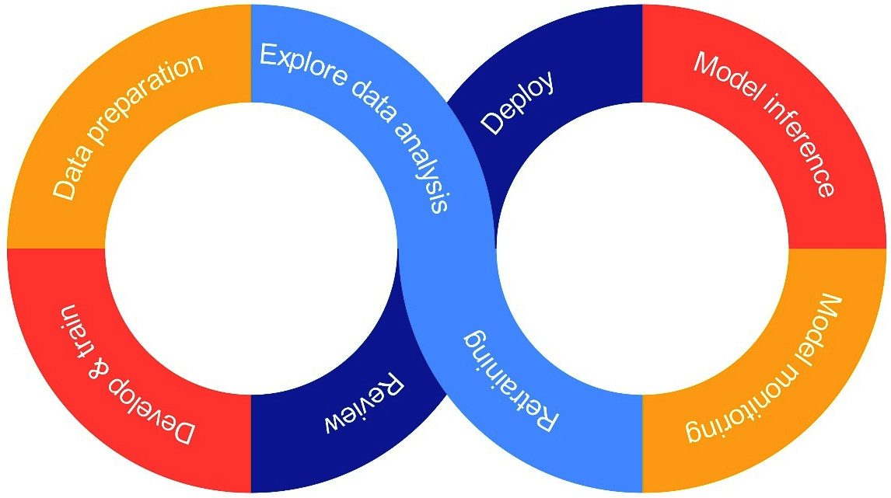
우리는 다음과 같은 생애주기 단계를 포함하는 Databricks의 MLOps 정의 {https://packt-debp.link/E2EGmf}에 동의합니다.
- 데이터 준비
- 모델 개발 및 학습
- 검토 및 거버넌스
- 배포
- 모델 추론
- 모델 모니터링
- 재학습
- 탐색적 데이터 분석(EDS)
데이터 준비는 모델(또는 복수 모델)이 생성된 데이터셋의 프로필을 평가하여 모델 학습에 사용할 피처를 선정하는 과정을 포함합니다.
모델의 개발 및 학습은 다양한 하이퍼파라미터 최적화(hyperparameter optimization) 도구를 사용하여 진행할 수 있습니다. 하이퍼파라미터는 실행 가능한 모델을 생성할 때 알고리즘이 동작하는 방식을 결정하는 매개변수입니다. 하이퍼파라미터 최적화는 모델에 가장 뛰어난 성능을 제공하는 조합을 선택하는 프로세스입니다. 수동 최적화도 여전히 가능하지만 이는 매우 구식 방식입니다. 최적화 도구를 사용하면 시간과 노력을 절감하고 모델 품질을 향상시킬 수 있습니다. 다음은 Top 10 Tools For Hyperparameter Optimization In Python {https://packt-debp.link/3a4Bbq} 등에서 선정한 도구들입니다.
- AWS Sagemaker {https://packt-debp.link/HOnGSL}
- Azure Machine Learning {https://packt-debp.link/xKPNvd}
- Ax {https://packt-debp.link/OZOJGq}
- 베이지안 최적화(Bayesian Optimization) {https://packt-debp.link/rtUoZQ}
- 베이지안 최적화 하이퍼밴드(BOHB, Bayesian Optimization HyperBand) {https://packt-debp.link/uQTwgf}
- Google Vizier {https://packt-debp.link/w3El4V}
- GpyOpt {https://packt-debp.link/RGtw1x}
- Hyperopt {https://packt-debp.link/HjEe26}
- Microsoft의 신경망 지능(NNI, Neural Network Intelligence) {https://packt-debp.link/zdOy6F}
- MLMachine {https://packt-debp.link/5sza3K}
- SHERPA {https://packt-debp.link/RShppM}
- scikit-learn {https://packt-debp.link/O4egrX}
- scikit-optimize {https://packt-debp.link/SRGiet}
- Optuna {https://packt-debp.link/eZWPsF}
- Polyaxon {https://polyaxon.com}
- Ray-Tune {https://packt-debp.link/dVVOKE}
- Talos {https://packt-debp.link/6oaDEx}
모델의 구성 설정은 알고리즘의 성능을 극대화할 수도 있고 형편없는 결과를 초래할 수도 있습니다. 이러한 핵심 설정을 마치 코드인 것처럼 캡처하여 관리해야 합니다.
검토 및 거버넌스는 모델 계보(lineage) 추적, 모델 버전 관리, 모델 아티팩트 생애주기 전이(데이터 계보와 유사한 모델 계보)를 가능하게 합니다.
배포는 모델 단계를 스크립트로 코드화하여 DevOps 프로세스를 통한 소프트웨어 솔루션 배포에 사용되는 동일한 CI/CD 프로세스를 활용해 단순하게 수행할 수 있습니다. 하지만 이는 이 장의 후반부에서 다룰 MLOps 프레임워크 내에서 오케스트레이션될 수도 있습니다. 배포는 이제 MLOps 프로세스의 핵심 요소입니다.
모델 추론을 통해 모델 재생성의 임계값과 타이밍을 관리할 수 있습니다. 모델을 언제 재생성해야 하는지 결정하는 데는 많은 요인이 작용하며 이러한 결정을 내리기 위해 추론 로직이 필요합니다.
모델 모니터링은 모델 품질에 드리프트(drift)가 발생하여 재튜닝 및 재생성이 필요한 시점을 포착합니다.
재학습은 모델이 품질 기준선(baseline)에서 벗어났을 때 수행됩니다.
EDS는 이전 장의 애널리스트 워크벤치(Analyst Workbench)에서 수행했던 작업과 동일합니다. 분석 솔루션을 준비, 탐색 및 공유할 수 있습니다. 또한 MLOps 선언문을 구현하기 위해 모델 또는 그 소스 데이터와 관련된 모든 메타데이터를 평가할 수 있습니다.
다음으로는 솔루션의 일부로서 엔지니어링 구축 및 지원 노력이 필요한 MLOps 프로세스의 필수 기능들을 살펴보겠습니다.
모델 거버넌스 및 규정 준수
ML 파이프라인이 MLOps 생애주기 프로세스의 구성 요소를 갖추기 위해 필요한 역량은 다음과 같습니다.
- 버전 관리
- 지속적 통합/지속적 배포(CI/CD)
- 모델 관리
- 확장 가능한 인프라 오케스트레이션
- 알림 기능이 포함된 모니터링
이러한 생애주기 프로세스에는 몇 가지 추가 설명이 필요합니다.
버전 관리는 모델을 원래 의도한 대로 정확하게 재현할 수 있음을 보장하는 데 필수적입니다. 데이터 준비 단계와 함께 시간 경과에 따라 모델을 유지보수하는 데 필요한 일련의 중요 레시피가 포함된 노트북이 Git에 체크인되는 경우가 많습니다. 모델은 항상 감사 가능한(auditable) 상태를 유지해야 합니다. 또한 변경 이력과 개발 과정에서 수행된 모든 ML 실험의 기록을 보존해야 합니다. Docker 이미지는 모델 실행에 필요한 대부분의 인프라 환경을 보존합니다. 따라서 변경 사항을 추적하고, 동료와 효과적으로 협업하며, 모든 실험을 재현하기 위해 Git과 Docker는 필수적입니다.
지속적 통합/지속적 배포(CI/CD)는 모델 및 그 앙상블을 생성하는 데 필요한 모든 빌드, 테스트, 품질 검사, 모니터링, 패키징, 배포 단계와 프로덕션에서 실행될 매니저를 자동화하는 데 필요합니다. 테스트 및 회귀(regression) 테스트를 통해 오류를 조기에 포착하면 품질 높은 솔루션을 구축하고 개발 속도를 높일 수 있습니다.
모델 관리는 추적 및 관리 하위 시스템을 사용하여 버전, 품질 지표, 모델의 기타 설명 메타데이터를 추적합니다. 모델 관리에 사용되는 프레임워크 유형에는 MLflow {https://packt-debp.link/89seVH}, Kubeflow {https://packt-debp.link/wGyCZV}, Neptune.ai {https://packt-debp.link/MTzyfc} 등이 있습니다. 모델 관리에는 재사용을 위한 검색 가능한 리포지토리를 만드는 데 필요한 모델 버전 관리, 실험 결과 추적, 모델 레지스트리가 포함됩니다. 이 장의 후반부에서는 ML 모델 레지스트리 도구와는 차별화된 기능을 제공하는 ML 모델 카탈로그의 필요성에 대한 절이 마련되어 있습니다.
확장 가능한 인프라 오케스트레이션은 비용 효율적이며 합리적인 시간 내에 모델을 생성 및 학습시킬 수 있도록 하는 데 필요합니다. 이러한 DevOps 역량은 클라우드 제공업체 및 Kubernetes와 같은 컨테이너 관리자를 활용하여 모델 재생성(예: 재학습, 테스트, 패키징) 시 필요한 클라우드 프로비저닝을 자동화합니다. 실제 입력 스트림에 대해 모델을 실행할 때도 확장성이 필수적입니다.
알림 기능이 포함된 모니터링은 모델 재생성(튜닝 및 학습) 과정에서 모델 레시피가 예상대로 작동하는지 보장하는 데 필요합니다. 모델의 가정에 맞춘 품질 지표(예: 데이터 프로필 테스트)에서의 편차를 통해 개념(또는 데이터) 드리프트 및 재생성 간 효능 저하를 감지할 수 있습니다. 이 책의 앞부분에서 많은 모니터링 및 알림 도구를 살펴보았지만 Prometheus, Grafana, DataDog은 모델 개발 및 알림에 매우 적합한 풍부한 기능을 갖춘 도구로 돋보입니다. 통합 가능한 다른 MLOps 모니터링 대안들은 11장 {https://packt-debp.link/e6T4Xr}에서 언급되었습니다.
모델이 거의 배포되지 않는 이유는 무엇인가?
에릭 시겔(Eric Siegel)이 작성한 2022년 KDNuggets 기사 “Models Are Rarely Deployed: An Industry-wide Failure in Machine Learning Leadership(모델은 거의 배포되지 않는다: 머신러닝 리더십의 업계 전반적 실패)” {https://packt-debp.link/JPYPIU}에서는 얼마나 많은 모델이 프로덕션에 도달하는가?라는 질문에 답한 114명의 응답자를 바탕으로 다음과 같이 기술하고 있습니다.
“데이터 사이언티스트 대다수는 배포를 위해 생성된 모델 중 0~20%만이 프로덕션에 도달했다고 답했습니다. 다시 말해, 대부분은 머신러닝 모델을 배포하기 전에 프로젝트의 80% 이상이 정체된다고 말합니다.”
출처: Eric Siegel (KDNuggets), 2022년 1월 17일.
이러한 현실은 2022년 이후로도 크게 변하지 않았습니다. ML 모델을 운영 환경에 적용하고 지속적으로 갱신하는 과정에서 수많은 난관에 부딪히고 이를 극복해야 합니다. 여러분이 개발하는 모델 중 프로덕션에 도달하는 것은 기껏해야 0~20%일 수 있습니다. 이러한 실패는 대개 모델 자체의 품질 문제나 실제 세계에서는 비현실적인 모델의 가정에 대한 의존성 때문에 발생합니다. 또한 이전에 릴리스된 모델의 품질은 비즈니스가 변화하거나 입력 데이터 품질이 성숙해짐에 따라 시간이 지나면서 드리프트(drift)를 겪게 됩니다. 비즈니스에서 요구하는 데이터 볼륨을 감당할 수 있도록 확장되지 못하는 모델(즉, 특정 알고리즘)은 폐기되어야 합니다. 많은 이들이 주요 서드파티 대용량 처리 엔진에서 희소 행렬(sparse matrix)을 구현하는 데 기술적 어려움을 겪어 왔습니다. 일례로 Apache Spark는 상당수의 알고리즘에서 희소 행렬 {https://packt-debp.link/eYPejX}을 지원하지 않습니다. 희소 행렬을 사용하면 메모리 소비를 대가로 처리 알고리즘 속도가 느려지며 이는 Spark 엔진이 처리할 수 있는 관리 가능한 수준으로 행렬 크기를 제한하게 만듭니다. 우리는 이러한 근본적인 문제들에 직면해 왔습니다. Databricks처럼 소스를 수정할 권한이 없거나 Apache Spark처럼 수정하기가 너무 어려운 환경에서는 이러한 문제가 심각해집니다. 이는 진행을 가로막는 요인이 될 수 있습니다. 행렬이 거대해질 때 잠재 디리클레 할당(LDA) 및 잠재 의미 분석(LSA) ML 모델에서는 알고리즘 구현을 강제로 재작성해야 하거나, 사전에 책정된 런타임 추정치가 변경되거나, 감당할 수 없을 만큼 막대한 메모리가 요구되는 상황이 발생할 수 있습니다. 모델이 여러분의 MLOps 생애주기에 맞춰져야지, 특정 모델의 생애주기에 여러분이 맞춰져서는 안 됩니다. 어떤 이들은 그 반대가 옳다고 생각하게 만들기도 합니다.
MLOps 모델 생애주기란 무엇인가?
머신러닝이 비즈니스에 무엇을 제공할 수 있는지 현실적으로 바라보는 것이 필수적입니다. 특정 모델이 담당하는 데이터 도메인의 일부분에서만 작동하는 틈새 알고리즘에 매달리기보다는, 전체 팀이 솔루션을 프로덕션 환경에 배포하는 방향으로 나아가도록 이끌어야 합니다. 이러한 노력에는 수많은 모델, 오케스트레이션, 지속적인 변경 및 모델 재학습이 요구되는 경우가 많습니다. 이 프로세스는 그림 16.3의 흐름과 유사합니다.
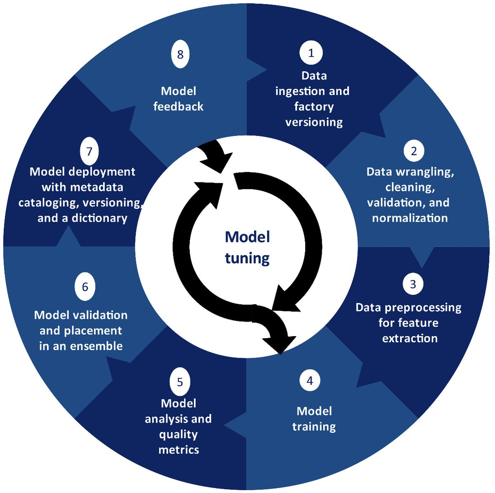
모든 ML 모델 생애주기 반복에서 모델이 최종 준비 상태로 성숙해가는 일련의 단계들을 구상해야 합니다. 설령 첫날에 완벽히 준비되었더라도, 향후에는 재튜닝이 필요하게 됩니다. 자동화는 모델의 효능을 유지하는 핵심 열쇠입니다. 여러분의 데이터 팩토리가 아무리 고도로 정규화되고, 정제되었으며, 의미론적으로 일치된 데이터를 생성하더라도, 모델 학습에 사용되기 전에는 여전히 다음 네 가지 단계를 거쳐야 합니다.
- 수집(Ingestion)
- 검증(Validation)
- 피처 추출(Feature extraction)
- 학습(Training)
학습 세트로부터 모델이 생성된 후(반지도 또는 지도 학습 모델을 생성하는 경우), 다음과 같은 추가적인 네 단계를 거치며 튜닝 프로세스가 시작됩니다.
- 분석(모델의 품질 보증으로 이어짐)
- 검증
- 배포
- 피드백
이 네 단계는 모델에 대한 객관적 및 주관적 평가를 제공하여 판단(judgments)을 형성하게 합니다. 이러한 판단은 중앙에 위치한 모델 튜닝 주기에 반영되어야 합니다. 이 주기의 결과물은 생애주기의 ‘어느’ 단계에도 영향을 미칠 수 있으며 각 단계를 다시 실행하게 만들 수 있습니다. 이것이 바로 MLOps 모델 생애주기의 자동화가 필수적인 이유입니다.
솔루션의 최종 품질에 영향을 미치는 구성 설정, 피처 선택 기준, 파라미터 조합은 너무나도 방대하며 여기에는 (해당 접근법을 활용하는 경우) 앙상블(ensembles) 생성도 포함될 수 있습니다. 이러한 ML 파이프라인(흐름)을 구축하기 위한 훌륭한 참고 자료는 Hannes Hapke와 Catherine Nelson의 “Building Machine Learning Pipelines” {https://packt-debp.link/HFiNPl}입니다. MLOps 모델 생애주기를 구축하는 데 많은 노력이 투입될 것입니다. 이러한 노력은 최소한의 노력으로 더 많은 비율의 모델을 프로덕션 환경에 안착시키는 데 큰 도움이 될 것입니다.
10장에서 다룬 의사 결정 지원 파이프라인을 위한 데이터 흐름 구축은 여기 16장에서 다루는 머신러닝 파이프라인과 유사한데, 두 파이프라인 모두 반복 작업이 필요하기 때문입니다. 단지 MLOps 모델 생애주기 흐름에 영향을 미치는 변화의 양과 깊이가 세부적인 부분에 대한 특별한 주의를 요구할 뿐입니다. 두 생애주기 모두에서 종종 간과되는 것은 모델 메타데이터의 중간 및 최종 표현입니다. Databricks 등은 Unity Catalog를 통해 빅데이터 처리를 위한 훌륭한 메타데이터 카탈로그 도구를 만들었습니다. 하지만 모델을 등록하고 모델의 메타데이터를 캡처하기 위해 이러한 도구를 확장하려 해도 그렇게 할 수 없습니다. 오직 OpenTelemetry 지원이 있어야만 여러분이 비교적 쉽게(여전히 일정 수준의 노력이 필요하지만) 이를 구축할 수 있습니다. Neptune.ai는 타사 도구로 시작할 예산과 의지가 있다면 이러한 많은 문제를 해결할 수 있는 완전한 플랫폼을 제공합니다. 그러나 Neptune.ai는 W&B 플랫폼 {https://packt-debp.link/UsWaNu}의 비용을 절감하기 위해 구축되었음에도 불구하고 OpenTelemetry 연동을 지원하지 않는다는 점에 유의해야 합니다. 빠르게 시작하고 싶고 예산이 충분하다면 두 플랫폼 모두 검토해 볼 가치가 있습니다.
기술적 필수 요소
기술은 머신러닝 알고리즘 구현을 가능하게 만듭니다. 다음과 같은 각 ML/AI 범주마다 서로 다른 기술과 전문 용어(lingua franca) {https://packt-debp.link/o28ZEb}가 존재합니다.
- 지도 학습, 반지도 학습, 비지도 학습(클러스터링) 알고리즘을 포함한 고전적 예측 ML 알고리즘 개발.
- 인공신경망을 통해 데이터 분석을 수행하는 ML 접근 방식의 하위 집합인 DL(딥러닝) 알고리즘. 인간 두뇌의 구조와 기능을 모방합니다.
- 인간과 유사한 결과물을 생성하는 능력을 갖춘 거대 언어 모델(LLM)을 구현하는 GenAI(생성형 AI) 알고리즘. 시맨틱 임베딩(semantic embeddings)을 통해 튜닝하거나 프롬프트로 유도할 수 있습니다. 검색 증강 생성(RAG) 기술을 사용하면 일반적인 GenAI LLM 모델을 튜닝하여 여러분 도메인의 개념, 어휘 및 데이터를 처리하도록 만들 수 있습니다.
데이터 엔지니어로서 의미 있는 솔루션 대화에 참여하려면 이러한 각 기계 지능 접근 방식의 구성 옵션, 파라미터, 모델 학습 기술을 이해해야 합니다. 다음 몇 개 절에서는 데이터 사이언티스트와 효과적으로 협업하는 데 필요한 몇 가지 기본 지식을 확립하겠습니다.
MLflow란 무엇인가?
MLflow를 사용하면 통합된 엔드투엔드 오픈소스 MLOps 프레임워크에서 모델과 생성형 AI(GenAI) 앱을 구축할 수 있습니다. 또한 많은 클라우드 제공업체의 제품군에 MLOps 도구로 통합되어 있어 다양한 환경에서 접하게 될 것입니다. MLflow에는 다음과 같은 네 가지 기능이 있습니다.
- MLflow Tracking은 모델의 코드, 데이터, 구성 및 결과물을 저장하는 데 사용됩니다.
- MLflow Projects는 모델 소스를 패키징하는 데 사용됩니다.
- MLflow Models는 모델 실행 환경에서 ML 모델을 배포하고 관리하는 데 사용됩니다.
- MLflow Model Registry는 버전 관리, 단계 전이(stage transitions), 주석 기능을 갖춘 모델 저장소로, ML 모델을 관리하는 데 사용됩니다(단, ML 모델 레지스트리는 ML 모델 카탈로그와 동일하지 않음에 유의하십시오).
MLflow에는 LLM을 추적하기 위해 특별히 제공되는 기능이 있습니다. MLflow의 ML 및 DL 지원을 확장한 MLflow LLM Tracking {https://packt-debp.link/AqhRei}을 사용하면 아티팩트, 파라미터, 태그, 메트릭, 계보, 품질 추적 기능을 활용하여 생성형 모델에 대한 예측 결과를 관리할 수 있습니다.
MLflow 주제를 마치기 전에 AutoML 도구에 대해서도 짚고 넘어가겠습니다. AutoML {https://packt-debp.link/4Nfxzv} 도구는 ML 프로세스를 자동화하는 데 사용됩니다. 이러한 도구는 비전문가도 실제 문제를 해결하기 위한 ML 모델을 개발할 수 있도록 도와줍니다. MLflow를 AutoML 프레임워크 {https://packt-debp.link/h7tnEs}와 통합하면 초보 시민 데이터 사이언티스트가 만들든 공인된 전문 데이터 사이언티스트가 만들든 상관없이 모델을 추적, 관리, 배포하는 방법을 제공하여 MLOps 생애주기를 향상시킵니다.
검색 증강 생성(RAG)이란 무엇인가?
검색 증강 생성(RAG, Retrieval Augmented Generation) {https://packt-debp.link/903e8Z}은 여러분의 데이터 소스에 맞추어 LLM의 출력을 최적화하는 프로세스입니다. RAG는 일반적인 범용 LLM이 여러분의 데이터와 함께 작동하도록 만듭니다. 여러분의 데이터 팩토리 모범 사례는 RAG 프로세스에서 사용할 데이터 컨텍스트를 제공하기에 매우 적합한 정보를 포함하는 지식 베이스(knowledge base)의 생성을 권장합니다. LLM을 학습시키는 데는 약 100만 달러의 비용이 들기 때문에 여러분의 데이터로 LLM을 완전히 처음부터 재학습시킬 수는 없습니다. 따라서 수십억 개의 파라미터를 갖추고 방대한 정보 말뭉치에 대해 범용 목적으로 학습된 LLM을 미세 조정(tweak)해야 합니다. LLM은 다국어 자연어 처리에 매우 적합합니다. RAG 기능을 활용하면 모델 전체를 재생성하기 위해 막대한 자금을 지출하는 대신 여러분의 도메인 특화 지식으로 LLM을 보강할 수 있습니다.
Amazon Web Services(AWS)의 생성형 AI RAG 접근 방식
Amazon Web Services(AWS)에서는 API 지원 LLM인 고성능 파운데이션 모델 {https://packt-debp.link/Jql7l9}에 대한 접근을 제공하는 Amazon Bedrock {https://packt-debp.link/LtY7RP}이라는 관리형 서비스에 액세스할 수 있습니다. 이러한 모델들은 특별한 도메인 지식을 갖고 있지는 않지만 일관성 있어 보이는 결과물을 생성하여 AI 기능을 부여합니다. Amazon Bedrock을 통해 연결된 벡터 지식 베이스는 여러분의 데이터를 LLM의 내부 메커니즘 및 데이터 형식으로부터 추상화하는 방식으로 저장됩니다. 파운데이션 모델의 변환, 검색 및 그에 따른 개선된 출력은 Amazon Bedrock 서비스 내에서 자동으로 처리됩니다. AWS에서는 자체적으로 RAG를 관리하려는 경우 활용할 수 있는 대안적 접근 방식도 제공합니다. 본질적으로 머신러닝으로 구동되는 엔터프라이즈 검색 서비스인 Amazon Kendra {https://packt-debp.link/Q2SAfq}가 바로 그것입니다. 이를 통해 엔터프라이즈 검색 개발에 소요되는 시간을 대폭 줄일 수 있습니다. 또한 시맨틱 랭커(semantic ranker) {https://packt-debp.link/0x3ImL}에 액세스할 수 있는 최적화된 Kendra Retrieve API가 제공되어 각각 최대 200단어로 구성된 의미론적으로 일치하는 관련성 높은 엔터프라이즈 검색 결과 구절 1~100개를 얻을 수 있습니다. Amazon Kendra는 사용자가 권한을 가진 결과로만 결과 집합 접근을 필터링하여 보안도 통합합니다.
Microsoft Cloud의 생성형 AI RAG 접근 방식
Microsoft Azure에서는 클라우드 서비스의 Azure AI Search {https://packt-debp.link/7bl2a4} 기능을 통해 RAG를 지원합니다. 예상할 수 있듯이 Microsoft는 RAG 솔루션과 함께 Azure AI Search를 사용하는 몇 가지 구현 방식을 갖추고 있습니다.
- Azure AI Studio는 Azure AI Studio 모델 카탈로그 {https://packt-debp.link/GysuZ6}의 다음과 같은 다양한 파운데이션 모델을 호출할 때 검색 증강을 위해 벡터 인덱스를 활용할 수 있습니다.
- Facebook AI Similarity Search(FAISS) {https://packt-debp.link/K1BghP}
- ChatGPT 3.5 {https://packt-debp.link/tStk9Y}
- ChatGPT 4 {https://packt-debp.link/paeADA}
- Llama-2 {https://packt-debp.link/8gEMeJ}
- Azure AI Studio(OpenAI용) {https://packt-debp.link/50rMO6}에서는 벡터를 포함하거나 포함하지 않는 검색 인덱스 {https://packt-debp.link/6tNT1x}를 사용할 수 있습니다.
- Azure Machine Learning {https://packt-debp.link/GNkq96}에서는 프롬프트 플로우(prompt flow) {https://packt-debp.link/DpL6A5}에서 검색 인덱스를 벡터 저장소 {https://packt-debp.link/DDUhym}로 사용할 수 있습니다.
Oracle Cloud의 생성형 AI RAG 접근 방식
Oracle Cloud의 제품군에 대한 자세한 내용은 “Oracle Artificial Intelligence - Generative AI - What is Retrieval Augmented Generation (RAG)” {https://packt-debp.link/R6Asku}에서 확인할 수 있습니다. Oracle은 이 분야의 비교적 후발 주자이지만 늦었다고 해서 그들의 제품군이 고려할 가치가 없다는 의미는 아닙니다.
Google Cloud의 생성형 AI RAG 접근 방식
Google Cloud Platform(GCP)의 지원 내용은 다음에서 확인할 수 있습니다.
- “Build enterprise gen AI apps with Google Cloud databases” {https://packt-debp.link/nKMNVv}
- “Building AI-powered apps on Google Cloud databases using pgvector, LLMs and LangChain.” {https://packt-debp.link/QZM7Pi}
Google의 경우 기능의 엔터프라이즈 통합 측면에 집중하는 것이 좋습니다.
생성형 AI RAG 결론
방금 읽은 내용을 완전히 이해(grok)하려면 참조 링크를 깊이 살펴보고 클라우드 제공업체의 제품군에서 제공하는 옵션과 접근 방식을 확실히 파악해야 합니다.
우리는 RAG 솔루션을 어떻게 테스트할 것인가에 집중할 것을 제안합니다. RAG 솔루션의 성능을 평가하기 위해 RAGAS {https://packt-debp.link/rAcHFv}와 같은 도구를 사용하여 합성 테스트 데이터를 생성하는 것을 권장합니다. 여기서 핵심 과제는 솔루션을 평가하는 것입니다. 문서에서 수백 개의 질문-컨텍스트-답변 샘플을 수동으로 만드는 것은 시간이 매우 많이 소요되는 작업입니다. 수동으로 선별된 데이터셋의 복잡성은 평가 자체의 품질에도 영향을 미칩니다. 합성 데이터 생성을 활용하면 개발자 시간을 90%까지 줄일 수 있습니다. 효과적으로 테스트할 수 있게 되면 모든 테스트 메트릭을 수집하고 반복적으로 개선하면서 정보에 입각한 결정을 내리십시오. 훌륭한 실습 가이드는 Plaban Nayak {https://packt-debp.link/HugcBf}의 “Evaluating Naive RAG and Advanced RAG pipeline using langchain v.0.1.0 and RAGAS” {https://packt-debp.link/zSwsg6} 기사를 참조하십시오.
이 분야는 빠르게 발전하고 있습니다. 새로운 GenAI 기술은 기존의 검색 및 정보 검색 프로젝트로부터 모든 관심(과 자금)을 흡수하고 있으므로, 데이터 엔지니어로서 여러분은 이러한 요구가 발생할 때 지원하고 기여할 준비가 되어 있어야 합니다. 이 분야가 과대광고 단계를 지나 주류로 수용됨에 따라 RAG, 임베딩, 프롬프트 엔지니어링 영역에서 상당한 수준의 개선이 이루어질 것으로 기대됩니다. 먼저 프롬프트 엔지니어링에 대한 설명부터 시작하겠습니다.
프롬프트 엔지니어링이란 무엇인가?
프롬프트 엔지니어링(Prompt engineering) {https://packt-debp.link/culiPd}은 LLM이 가장 정확하고 관련성 높은 응답을 생성하도록 텍스트 프롬프트를 반복적으로 조정하는 작업을 포함합니다. 이는 몇 가지 모범 사례를 적용해야 하는 엔지니어링 작업입니다. 이 장에서는 이러한 모범 사례를 논의하고 유용한 주석(endnotes)을 제공할 것입니다. LLM의 일반적인 역량을 활용할 때 이러한 프롬프트를 사용하면 솔루션의 전반적인 결과물을 효과적으로 튜닝할 수 있습니다.
먼저 MLflow에서 얻은 품질 평가 및 수집 가능한 기타 지표들을 취합하여 현재 LLM 모델의 상태를 평가해야 합니다. 특히 도메인의 비즈니스 데이터 시맨틱에 의해 유도되는 지표에 세심한 주의를 기울여야 합니다. 그런 다음 LLM이 취약점을 보이는 도메인 영역을 세분화하고 분류합니다. 프롬프트를 활용하여 이러한 주제 영역에 대한 해결책을 마련할 준비를 하십시오. 그다음 MLOps 모델 생애주기 내에 반복적인 품질 검증 단계를 생성하여 모델의 수용 가능하고 유지보수 가능한 품질 수준에 집중할 수 있도록 합니다. 이렇게 하면 프롬프트가 작성된 영역들이 조율(tune)됩니다. 즉, 가장 명확하게 정의된 도메인 세그먼트부터 먼저 작업해야 합니다. 이후 프롬프트를 단순한 것과 복잡한 것으로 분류하고 이전 단계에서 목표로 삼은 도메인 세그먼트에 맞게 각 분류를 정제합니다. 최신 LLM 도구는 다음과 같이 다른 사용자들의 경험과 템플릿을 제공합니다.
- LangChain {https://packt-debp.link/dDCgNp}: LangChain Templates를 통해 즉시 배포 가능한 참조 아키텍처 모음을 제공합니다.
- LlamaIndex {https://packt-debp.link/w54l2s}: LlamaIndex.TS {https://packt-debp.link/v8Xbns}를 활용하여 엔터프라이즈 데이터 팩토리의 소비 가능한 데이터를 기반으로 LLM 구동 애플리케이션을 구축하고 RAG 생성형 AI 솔루션을 제작하는 데 사용됩니다.
데이터 팩토리의 지식 베이스를 활용하여 생성형 AI 솔루션을 프로덕션에 배포하려면 RAG를 구현해야 합니다. RAG 없이 LLM을 운영 환경에 적용하려 했던 초기 시도들은 온갖 종류의 오류, 환각(hallucination), 주제를 벗어난 출력을 초래했습니다. 지도 학습 ML 모델과 마찬가지로 튜닝 및 학습은 매우 번거로운 작업이 될 수 있으므로 이 과정은 자동화되어야 합니다. (LangChain을 활용한) 프롬프트 컬렉션은 (LlamaIndex.TS를 통해) 지식 베이스에서 추출된 임베딩과 연계되어 적용되어야 하며 시간이 지남에 따라 지속적으로 개선되어야 합니다. Databricks는 언어 모델의 프롬프트와 가중치를 알고리즘적으로 최적화하는 DSPy {https://packt-debp.link/onk7ex} 프레임워크의 사용을 권장합니다. DSPy 프레임워크는 일반적인 언어 모델(LM) 튜닝 단계를 자동화합니다. 데이터 파이프라인이 변경되거나 LM이 조정될 때마다 모든 프롬프트 역시 재최적화되어야 하기 때문입니다. DSPy는 그 자체가 LM 알고리즘인 최적화 도구를 실행합니다.
Microsoft의 프롬프트 엔지니어링에 대한 관점
Microsoft는 자체 교육 자료(“Getting started with LLM prompt engineering” {https://packt-debp.link/okoH7C} 참조)에서 프롬프트 엔지니어링에 대한 고유한 관점을 제시합니다. Microsoft는 지식 베이스의 정형 시맨틱(형식적 시맨틱 지식 그래프에 의존하는) 필요성을 이끄는 아키텍처 원칙을 온전히 수용하지는 않습니다. 하지만 우리는 지식 베이스를 활용할 것을 제안합니다. 프롬프트(파인 튜닝)와 임베딩(지식 도메인 내부 또는 도메인 간의 지식 전이 구현)을 정렬할 수 없다면 이는 매우 노동 집약적인 작업이 됩니다. LLM을 위한 포괄적인 튜닝 기능을 제공하는 통합 지식 베이스의 대안으로 개별적으로 개발되어야 하는 수많은 일회성 LPG(레이블이 지정된 속성 그래프)나 벡터 데이터베이스 스키마를 떠올려 보십시오.
임베딩이란 무엇인가?
그렇다면 임베딩이란 무엇인가? {https://packt-debp.link/Korrxj} (이 장에 제공된 참조 링크를 읽어보시기 바랍니다.) 임베딩은 머신러닝 모델이 소비할 수 있도록 설계된 값, 객체, 텍스트, 이미지 또는 오디오입니다. 이는 각 정보 조각이 구현하는 정의된 요인, 특성 또는 속성에 따라 정보를 숫자 형태로 변환한 것입니다. 주어진 주제 도메인 내에서 정보의 맥락은 임베딩의 매우 중요한 특징입니다. 지식 베이스는 임베딩을 생성하기 위한 훌륭한 소스입니다. 정보가 이미 객체로 코드화되어 있고 다른 정보와의 관계가 시맨틱 모델에 의해 정형화되어 있으며 객체 인스턴스가 모델과 일치하기 때문입니다. 즉, 시맨틱 맥락이 제공됩니다. 임베딩을 통해 ML 모델은 유사한 객체를 발견할 수 있습니다. 예를 들어 사진이나 샘플 문서를 LLM의 입력으로 제공하여 유사한 문서를 찾아낼 수 있습니다.
임베딩은 예제, 텍스트 조각, 문서 또는 리치 미디어(이미지, 비디오, 오디오 등)와 같은 정보 조각의 표현체라는 점에 주목하십시오. 임베딩의 목표는 임베딩된 개념의 시맨틱 의미를 저장하여 데이터 소비자가 나중에 사용할 수 있도록 하는 것입니다. 대부분의 임베딩은 문서 내 개념의 객체 또는 숫자 표현이며 따라서 벡터 공간으로 변환될 때 ML 알고리즘에서 사용될 수 있습니다. 벡터 공간으로서 임베딩 간의 거리를 측정하여 두 문장, 단락 및 문서의 의미가 얼마나 일치하는지 확인할 수 있습니다. 이미지에 대한 임베딩을 생성하여 이미지를 설명하는 텍스트와 비교하는 혼합 모달(mixed-modal) 애플리케이션에 활용할 수도 있습니다. 보다 일반적인 관점에서 임베딩은 Sentence Transformers(SBERT)(https://www.sbert.net 참조, BERT는 Bidirectional Encoder Representations from Transformers의 약어)라는 오픈소스 라이브러리 제품군을 사용하여 생성할 수 있습니다. 대부분의 오픈소스 임베딩 도구가 지식 그래프를 기반으로 하는 지식 베이스에서 파생되지 않는다는 점은 다소 아쉬운 부분입니다. 이로 인해 많은 데이터 및 ML 엔지니어는 정보 시맨틱에 대한 명확한 비전 없이 시맨틱 임베딩을 구현하다가 잘못된 방향으로 나아가곤 합니다. 무료 오픈소스 도구의 편리함에 매몰되지 않고 명확한 비전을 바탕으로 엔지니어링을 추진하는 것이 중요합니다. 이러한 도구를 자유롭게 혁신하고 그 결과를 세상과 공유하십시오!
임베딩은 단어와 다른 객체 간의 반복적인 관계에 의미를 부여하여 부각시킵니다. LLM에서 임베딩은 모델 생성 중에 단어 자체뿐만 아니라 모든 단어에 컨텍스트를 추가하는 것을 포함합니다. 문장, 단락, 섹션, 장, 책의 의미를 높은 품질로 분석할 수 있습니다. 심지어 쿼리의 컨텍스트도 임베딩으로 유지하여 후속 쿼리의 성능을 높이거나 리소스 소비를 줄일 수 있습니다.
데이터 주석
그렇다면 데이터 엔지니어로서 데이터 사이언티스트를 어떻게 도울 수 있을까요? 지식 베이스의 객체와 의미론적으로 일치하는 인덱스로 데이터를 큐레이션하는 것부터 시작할 수 있습니다. 이러한 인덱스는 기업과 관련된 현재 알려진 사실(truth)을 바탕으로 비즈니스 도메인에 맞게 정확하게 모델링됩니다. 아마 여러분은 선택한 클라우드 제공업체의 도구를 사용하여 벡터 저장소를 구축하고 LLM에서 사용할 수 있도록 제공하기만 하면 된다고 말할 것으로 예상했을 것입니다. 하지만 그렇게 하면 튜닝되지 않은 생성형 AI 모델의 수많은 결함(환각, 품질 오류, 모델 출력에서 학습 소스 텍스트의 부적절한 노출 등)으로 인해 해당 모델을 프로덕션으로 전파하는 데 실패하게 됩니다. 일부 클라우드 제공업체의 제안대로 시맨틱 구조 없이 임베딩만을 사용하여 RAG를 구축한다면 데이터 팩토리 내에서 수많은 반복 작업을 양산하게 될 것입니다. 여러분의 비전은 임베딩을 위한 지식 인식형(knowledge-aware) 시맨틱 형태를 구현하는 것이어야 합니다. 하지만 현실을 직시해야 합니다! 모든 기업이 지식 베이스를 보유하고 있는 것은 아니며 지식 그래프 형태의 시맨틱 모델을 생성하고 말뭉치(corpus)로부터 데이터를 채우는 데는 상당한 지식 엔지니어링 전문 지식과 노력이 필요합니다. 이를 자동화된 방식으로 수행하려면 우리가 생성하고자 하는 임베딩을 통해 지원하려는 바로 그 생성형 AI 모델이 필요합니다. 이는 무엇이 먼저인가를 따지는 닭과 달걀 {https://packt-debp.link/DpYkz1}의 딜레마와 같습니다. 우리는 이전에 말뭉치 임베딩을 생성할 때 다양한 접근 방식을 평가하는 “Embeddings Learned By Matrix Factorization” 발표 자료 {https://packt-debp.link/M1WIpm}에 언급된 기법들을 살펴보았습니다. 의미론적으로 일치하는 임베딩으로부터 지식 베이스가 채워짐에 따라 임베딩의 범주화, 컨텍스트 설정, 토큰에서 객체로의 시맨틱 확장이 추가될 수 있습니다. 개념(또는 주제)의 재발생 빈도가 높아짐에 따라 시맨틱 지식 그래프 역시 진화하며 이를 통해 개선 노력이 가장 빈번하게 발생하는 영역에 집중되도록 만듭니다. 그렇다고 해서 사용자가 가장 드물게 발생하는 개념에 대해 검색하거나 질문하지 않는다는 의미는 아닙니다! 실제로 이는 건초더미에서 바늘을 찾는 것과 같으며 바로 여기에 가장 큰 가치가 있습니다. 예를 들어, 지식 그래프와 지식 베이스에는 증상이 존재하지만 기업의 말뭉치에서는 드물게 다루어지는 희귀 질환의 원인을 찾고 싶지 않은 진단 전문가가 어디 있겠습니까? 그러한 지식을 모델에 임베딩하면 시맨틱 가치를 제공할 수 있습니다.
지식 베이스에 맞추어 임베딩을 구축하고 프롬프트를 개발할 때도 동일한 방식을 적용하면 둘은 서로 긴밀히 일치하게 됩니다! 시맨틱 객체에 대한 동일한 어휘, 객체의 시맨틱 컨텍스트 및 사전은 효과적인 검색의 기반을 형성합니다.
때로는 문서 정보가 너무 방대하여 모든 것을 수동으로 주석 처리하거나, 특화된 도구 및 알고리즘(일부는 머신러닝 기반)을 호출하는 반자동 프로세스로 처리해야 할 수도 있습니다. 이는 가능하며 이를 위해 서드파티 데이터 주석 소프트웨어를 활용하거나 개발 여력이 있는 경우에만 이 기능을 직접 구축해야 합니다. 이때 인건비 역시 감당 가능한 수준으로 유지해야 합니다.
기사 “21 best annotation tools for documents, video, and more” {https://packt-debp.link/2CBzep}에서 Filestage는 다양한 정보 유형을 위한 21가지 주석 도구를 소개합니다. 솔루션의 초기 멀티모달 문서 주석 요구 사항을 해결하는 데 도움이 되는 많은 도구가 포함되어 있으므로 이 목록에 관심을 가질 만합니다. 초기에는 MLOps 생애주기에 이러한 도구 솔루션을 하나 이상 통합하여 구축함으로써 생성형 AI 임베딩을 개선하기 위한 개발 작업을 부트스트랩할 수 있습니다. 이는 말뭉치 주석으로부터 지식 베이스가 구축된 후에 이루어집니다. 지식 베이스를 구축하는 데는 노력이 필요합니다. 이러한 노력에는 자유 형식 텍스트 처리, 지식 베이스에 일치하는 개념의 패턴을 수확하기 위한 문서 분석 수행, 또는 지식 베이스에 추가해야 할 새로운 개념으로 간주될 새로운 단어 패턴(클러스터) 감지 등이 포함됩니다. 지식 베이스를 생성하는 과정에서 다양한 저수준 GenAI 및 비GenAI ML 접근 방식이 적용될 것입니다. 지식 베이스에서 추출된 생성형 AI 임베딩의 효능은 시간이 지남에 따라 지식 베이스가 개선됨에 따라 함께 향상됩니다.
성공은 단일 모델에 대한 MLOps 품질 통계로 측정되는 것이 아니라, 생애주기 반복을 통해 정제되는 전체 데이터 엔지니어링 프로세스 전반에 걸쳐 측정된다는 점에 유의해야 합니다. 파이프라인은 다양한 도구, 모델 및 실행 단계를 활용하여 GenAI RAG 솔루션의 품질을 점진적으로 향상시킵니다. 이제 여러분의 GenAI 솔루션에 진정한 학습 능력이 부여되었다고 말할 수 있습니다.
큐레이션되어 릴리스된 데이터로부터 피처를 추출하는 기능은 다음으로 자세히 살펴볼 역량입니다.
데이터 레이크 샘플링
데이터 마트, 데이터 웨어하우스, 데이터 레이크, 데이터 메시 또는 데이터 패브릭에서 데이터를 선택할 때 수많은 선택지가 있으며 가장 좋은 선택은 클라우드 제공업체가 권장하는 방식입니다. 오늘날 모든 조직이 동일한 아키텍처로 수렴하는 것은 아닙니다. 모델의 피처 추출 방법을 통일하는 것은 애널리스트 워크벤치에서 구현되는 것이 바람직한 모범 사례입니다. 여기에는 해당 데이터 소스의 메타데이터를 인식하는 인터페이스를 통해 릴리스 세트(큐레이션된 소비 가능한 데이터셋)에 액세스하는 것이 포함됩니다. 팩토리에서 릴리스된 데이터를 정의하는 메타데이터로부터 자동 생성되는 액세스 메서드를 만드는 단계까지 나아갈 수도 있습니다. 이를 통해 다양한 소스로부터 피처 중립적인 형태로 서로 다른 데이터를 추출하고 ML 모델의 학습 및 테스트에 사용할 수 있도록 주석을 달 수 있습니다.
피처를 대량으로 추출하는 것 외에도 핵심 데이터를 스마트한 방식으로 샘플링하는 추출기를 구축해야 합니다. 예를 들어 알고리즘 기준에 따른 데이터의 표준 분포, 가우스(Gaussian) 분포 또는 평탄 균등(flat random) 분포, 또는 특정 선택 기준에 따른 평탄 균등 분포를 원할 수 있습니다. 데이터 엔지니어는 이러한 피처 추출기를 만들고 카탈로그화하여 데이터 사이언티스트가 사용할 수 있도록 해야 합니다. 이 라이브러리는 클라우드 기술을 기반으로 확장 가능해야 하며 안전하고 데이터 사이언티스트의 사업 부서에 비용을 귀속시킬 수 있는 클라우드 호스팅 데이터 영역에 파생 데이터를 생성해야 합니다. 피처 추출기를 실행하는 데는 실제 비용이 발생한다는 점에 유의하십시오.
피처 추출이 완료되면 피처를 카탈로그화하고 저장해야 합니다. 이 데이터는 팩토리의 메타데이터 딕셔너리에서 미사용 데이터(data at rest)로 식별되어야 하고 메타데이터 리포지토리의 소스 데이터 계보 메타데이터로 식별되어야 하며 필요한 모든 장식(decoration) 및 주석이 포함되어야 합니다. 이를 통해 모델은 MLOps 생애주기를 거치게 되므로 재생성 및 테스트가 가능해집니다. 필요한 리포지토리 수를 세어보며 클라우드 제공업체들이 왜 이 프로세스를 쉽게 만들어주지 않았는지 의아해할 수 있습니다. 일부 업체는 이미 개발 작업을 진행 중이며 다른 업체들은 아직 서비스를 개발 중인 상태입니다.
데이터 주석 관리
앞서 인용한 기사 “21 best annotation tools for documents, video, and more” {https://packt-debp.link/2CBzep}에서 Amazon SageMaker Ground Truth 서비스는 데이터 주석 작업을 위한 훌륭한 선택으로 확인되었습니다. 이 서비스는 ML 생애주기에서 인간의 판단(또는 피드백)을 생성할 수 있는 인간 참여형(human-in-the-loop) 기능 세트를 제공합니다. 이는 개발 중인 모델의 품질과 정확도를 향상시킵니다. 데이터 생성 및 데이터 주석 기능은 모델을 검토, 맞춤화, 평가 및 QA하는 데 필요한 역량을 제공합니다. 인간 피드백 기반 강화학습(RLHF) {https://packt-debp.link/vl2Idd}은 인간의 피드백(판단)을 사용하여 모델이 자체 학습하도록 최적화하는 머신러닝 기법입니다. 일반적인 강화학습(RL) 접근 방식은 더 나은 성능을 내는 모델 결과를 생성하기 위해 학습 입력을 제공합니다. 모델 결과물을 필요한 인간 피드백과 일치시키면 전반적인 성능을 인간의 기대치에 부합하도록 끌어올릴 수 있습니다. RLHF는 LLM 시스템을 우수한 성능에서 탁월한 성능으로 튜닝하여 비즈니스 가치를 창출하는 데 필수적인 역량입니다. Amazon SageMaker Ground Truth를 사용하면 일반적으로 요구되는 과도한 개발 작업 없이 서비스를 통해 RLHF 프로세스를 구현할 수 있습니다.
Amazon SageMaker Ground Truth를 사용하지 않기로 결정하더라도, 자동화된 데이터 주석을 운영하기 위한 견고한 기반을 제공하므로 그 기능을 연구해야 합니다. 통계 및 머신러닝에서 사용되는 그라운드 트루스(ground truth, 참값)라는 개념은 특정 문제에 대한 올바른 정답 또는 진실을 의미합니다. 이는 다양한 모델 결과를 비교하고 평가할 때 골드 스탠다드(기준점)를 형성합니다. 고품질의 학습 데이터셋을 생성하면 모델의 정확도가 향상됩니다. 이는 온디맨드 워크플로에 의해 조율되어 적재적소에 전문 지식을 적용함으로써 이루어집니다. AWS는 인력을 대신 관리해주거나 사내 인력을 활용할 수 있도록 지원하며 Amazon SageMaker Ground Truth는 다양한 옵션과 유연성을 제공합니다. Amazon SageMaker Ground Truth Plus를 사용하면 다음과 같은 작업도 가능합니다.
- 오디오 파일 라벨링이나 문서를 특정 언어로 번역하는 등의 작업을 수행하기 위해 Amazon SageMaker Ground Truth를 통해 도메인 전문가 인력을 직접 고용하고 관리합니다.
- 기존 데이터 운영팀의 사내 워크플로를 관리하여 주석이 달린 데이터를 수정 및/또는 보강합니다. 여러분의 팀은 사내 정보에 대해 최고의 도메인 전문 지식을 보유하고 있을 것입니다.
- AWS Marketplace를 활용하여 할당된 작업을 완료하도록 선호하는 벤더의 주석 작업을 조율합니다.
- 경제적이고 확장 가능한 Amazon Mechanical Turk를 통해 크라우드소싱을 실행합니다. 단, 모든 Mechanical Turk 참가자가 원하는 수준의 기술을 보유하고 있는 것은 아니므로 해당 도메인에 대한 품질과 산출물을 반드시 평가해야 합니다.
어떤 경로를 선택하든 ML 솔루션에 필요한 주석과 판단을 생성하는 데 드는 운영상의 인건비를 인지하고 있어야 합니다.
실제 데이터 대 생성된 데이터
지금까지는 보유하고 있는 학습 데이터로부터 모델을 생성하는 데 집중했습니다. 하지만 모델 학습을 유도하기 위해 데이터를 합성으로 생성할 수 있다면 어떨까요? 이는 가능합니다! 도메인의 지식 베이스로부터 이를 생성할 수 있습니다. 최근까지 존재하지 않았던 새로운 범주의 도구들을 활용할 수 있습니다. Gretel {https://packt-debp.link/ViHTTb}은 실제 데이터와 유사한 특성을 가진 인공 데이터셋을 생성할 수 있습니다. 이렇게 하면 데이터 프라이버시 문제에 대한 걱정 없이 여러 AI 모델을 개발하고 테스트할 수 있습니다. Gretel의 주요 대안은 다음과 같습니다.
- K2view {https://packt-debp.link/b794Y1}
- Mostly AI {https://packt-debp.link/cG2tdR}
- Tonic.ai {https://packt-debp.link/77FkPa}
- Syntho {https://packt-debp.link/01tS4i}
- Test Data Manager {https://packt-debp.link/3GyBQo}
또한 다양한 멀티모달 데이터 생성기의 틈새 요구를 충족하는 수많은 Gretel 경쟁 제품이 있습니다.
- AI.Reverie {https://packt-debp.link/0x0JCb}
- Aindo {https://packt-debp.link/3VIw3y}
- Anyverse {https://packt-debp.link/IauQ4J}
- Benerator {https://packt-debp.link/liinTq}
- Betterdata {https://packt-debp.link/v7PbjS}
- Cvedia {https://packt-debp.link/2SwmYG}
- DataGen {https://packt-debp.link/4xN3Pn}
- Datomize {https://packt-debp.link/5AwrUe}
- Datprof Privacy {https://packt-debp.link/bQZMmg}
- Dedomena {https://packt-debp.link/PYLG4B}
- Delphix {https://packt-debp.link/V5XhqY}
- GenRocket {https://packt-debp.link/0MZUHY}
- Hazy {https://packt-debp.link/xrtTDH}
- KopiKat {https://packt-debp.link/O2CwAr}
- LexSet {https://packt-debp.link/NUacQh}
- MDClone {https://packt-debp.link/VtWucQ}
- OneView {https://packt-debp.link/uM7xbn}
- Protopia AI {https://packt-debp.link/B1Ca4L}
- Replica Analytics {https://packt-debp.link/DDTBQE}
- Sarus {https://packt-debp.link/2053xP}
- Statice {https://packt-debp.link/J6HS60}
- Synthesized {https://packt-debp.link/xe6GVz}
- Synthesis AI {https://packt-debp.link/JfsARD}
- Synthetaic {https://packt-debp.link/mgh9TL}
- Trūata Calibrate {https://packt-debp.link/GmvbGL}
- Tumult Analytics {https://packt-debp.link/0O92UA}
- Ydata {https://packt-debp.link/EkiIRI}
때로는 모델 학습을 진행하기에 실제 데이터가 충분하지 않을 수 있지만 합성 데이터를 활용하면 이것이 가능해집니다. 프라이버시를 보호하거나 완전한 모델 학습을 위해 데이터셋이 반드시 존재해야 하는 주제 영역을 위해 데이터 팩토리의 큐레이션된 데이터를 합성 데이터로 보강할 계획을 세우십시오. 특정 데이터 영역에 대표 데이터가 있어야 함에도 누락되었음을 발견한 경우, 모델이 완전한 범위로 학습될 수 있도록 데이터를 생성해야 합니다. 지식 베이스에 대해 쿼리를 실행하여 객체 인스턴스 커버리지가 희소한 주제 영역을 확인함으로써 어떤 데이터가 부족한지 파악할 수 있습니다. 지식 그래프는 클래스에 대한 객체 인스턴스 수가 적거나 인스턴스 데이터가 완전히 누락되었지만 모델상 데이터가 존재해야 하는 경우, 지식 베이스에 무엇이 채워져야 하는지에 대한 통찰력을 제공합니다.
솔루션에 가장 적합한 합성 데이터를 생성하는 작업은 매우 벅찰 수 있습니다. 실제 주행 경험을 반영하려 할 때 모든 상황에 대한 불완전한 멀티모달 데이터가 부족하여 Tesla가 겪는 문제들(이후 ML 자산 배포 섹션의 예제 참조)을 볼 수 있습니다. 앞서 나열한 목록의 통합 도구들을 활용하여 솔루션 학습에 필요한 합성 데이터 큐레이션을 지원받을 수 있습니다. 시스템이 프로덕션에서 실행됨에 따라 체계적 데이터를 생성하고 이를 실제 수집된 데이터로 대체하는 데 많은 도구가 적용될 것입니다. 시간이 지남에 따라 합성 데이터를 생성, 학습 및 대체하는 데 필요한 프로세스는 MLOps 프로세스를 하나로 묶어주는 접착제 역할을 할 것입니다.
모델 학습
MLOps 생애주기에서 모델을 학습시킬 때 IT 측면에서 운영 비용이 매우 커질 수 있습니다! 클라우드 인프라 구성에서 가능한 한 많은 비용 최적화를 활용해야 합니다. 예를 들어 클라우드 비용을 관리하기 위해 스팟 인스턴스(spot instances)를 사용하고자 할 것입니다. 또한 모델 학습이 끝난 직후 즉시 리소스를 축소(scale down)해야 합니다. Databricks와 같은 도구를 사용하는 경우 축소 튜닝에 특히 신경을 써야 합니다. 타사 도구들은 사용하지 않을 때도 구독 상태를 유지시켜 아무런 작업을 하지 않으면서도 비용을 발생시키려 하기 때문입니다.
우리는 수년간 전통적인 ML 모델 학습과 관련하여 많은 교훈을 얻었습니다. 주요 모범 사례는 다음과 같습니다.
- ML 모델을 명확하게 정의해야 합니다.
- ML 학습 및 기술 습득 노력을 실제 모델 실험과 혼동하지 마십시오.
- 데이터와 그 메타데이터를 이해하십시오.
- 데이터 품질 지표를 구축하십시오.
- SaaS 호스팅 ML 솔루션/도구를 주의하십시오.
- 견고한(robust) 모델을 정의하십시오.
이들 각각에 대해 자세히 살펴보겠습니다.
ML 모델을 목표, 파라미터 및 지표별로 명확하게 정의해야 합니다. 오늘날 평균적으로 생성된 전체 모델 중 약 13%만이 운영 환경에 도달합니다. 적절한 계획을 세우고 학습 데이터의 가정과 범위를 프로파일링한 후 모델의 목표와 일치하도록 노력하면 이 문제의 심각성을 완화할 수 있습니다.
ML 학습 및 기술 습득 노력을 실제 모델 실험과 혼동하지 마십시오. 우리 모두 훌륭한 아이디어를 가지고 있고 데이터와 기술을 가지고 탐색할 시간을 원할 수 있지만 결국 그것은 탐색(play)일 뿐입니다! 고용주의 환경을 사용하여 학습하고 싶다면 권한을 얻고 작업에 제한을 설정하십시오. 그런 다음 실제 업무로 복귀하십시오! 공인된 컴퓨터 과학 및 데이터 과학 프로세스를 따르십시오. 가설을 세우고, 실험하고, 측정하고, 결론을 내리고, 반복하며, 가설을 수용(또는 기각)하고, 마침내 프로덕션 롤아웃에 참여하기 전에 과학적 노력을 완료하십시오.
데이터와 메타데이터를 이해하고, 주제 영역에 대해 데이터가 완전한지 확인하십시오. 완전하지 않다면 필요한 데이터를 확보하거나 정확한 합성 데이터를 생성할 준비를 하십시오.
데이터 품질 지표와 모델의 품질 지표를 사전에 구축하고 이를 사용하여 MLOps 생애주기 전반에 걸쳐 모델 성능을 측정하십시오. 실험 결과를 수집하고, 부분적인 실험 성공을 기록하며, MLOps 결과물이 기대에서 벗어날 경우 MLOps 생애주기를 마지막으로 확인된 양호한 상태로 리셋하십시오.
요청 트래픽이나 데이터가 클라우드 서비스 제공업체 환경 외부로 나가거나 들어오게 만드는 SaaS 호스팅 ML 솔루션/도구를 주의하십시오. 이는 클라우드 제공업체로부터 반복적인 데이터 송출(egress) 비용을 발생시킵니다. 이러한 비용을 계획에 반영하지 않으면 ML 솔루션의 전체 총소유비용(TCO)이 급격히 증가할 수 있습니다.
견고한(robust) 모델을 정의하십시오. 이는 이 책에서 사용된 가장 모호한 용어 중 하나일 것입니다! 하지만 일반적인 개념은 이해하실 것입니다. 모델은 데이터 범위에 대해 유효해야 하고, 객관적 및 주관적 출력 품질 검사를 통과해야 하며, 반복마다 일련의 ML 지표로 측정되어야 하고 드리프트가 평가되어야 합니다. 또한 자동화된 방식으로 수많은 테스트를 적용하고 평가해야 하며 결과를 추적하고 추세를 분석하며 편차가 감지되면 알림을 발생시켜야 합니다.
이 절이 테스트 주제로 마무리되었으므로, 다음 절에서는 이에 대해 좀 더 자세히 살펴보겠습니다.
모델 테스트 및 평가
ML 모델 평가는 단순히 학습 정확도 지표를 검토하는 것만을 의미하지 않습니다. 실제 모델이 안전하게 배포될 수 있는지 보장하려면 여러 테스트 지표를 통해 인증을 받아야 합니다. ML 테스트 프로세스는 모델이 목표를 주관적으로 충족하는지 확인하기 위해 다양한 수용 기준을 평가하고 검증합니다. 중요한 범주로는 정확성(correctness), 정밀성(accuracy), 성능(performance), 신뢰성(reliability), 윤리성(ethical), 견고성(robust) 등이 있습니다. 또한 다음과 같은 객관적인 모델 측정치를 생성해야 합니다.
- 정확도 및 민감도 측정
- 변화에 대한 복원력 측정
- 신뢰성 측정
- 편향(Bias) 측정
이러한 항목들을 자세히 살펴보겠습니다.
정확도 및 민감도 측정은 모델의 정확도(또는 정밀도(precision) {https://packt-debp.link/630pDP}) 대 민감도(또는 재현율(recall) {https://packt-debp.link/Nh1BjW})를 의미하며 이는 전체 데이터 도메인에 걸쳐 학습에 사용된 데이터 및 해당 학습에 맞춘 출력 결과에 부합하는 모델의 과거 추세를 제공합니다. 의도한 데이터셋에 대해 모델을 실행하여 얻은 예측 결과를 측정하여 정밀도와 재현율 지표의 균형 잡힌 최적화를 반영하는 F1 점수(F1-score) {https://packt-debp.link/br5uPj}를 도출할 수 있습니다. 이는 서로 상충하는 경향이 있는 정밀도와 재현율 결과를 생성합니다(즉, 하나가 올라가면 다른 하나는 내려가는 경향이 있습니다). 엔지니어링 목표는 정밀도와 재현율 지표를 동시에 끌어올리는 것이며 이는 시맨틱 피처가 모델 학습에 활용되는 고전적 ML 모델에서 가능합니다. F1 점수는 종종 비판을 받기도 하므로, 원하는 경우 P4-Metric {https://packt-debp.link/hoemJH}을 대신 활용할 수도 있습니다.
변화에 대한 복원력 측정. 데이터는 끊임없이 변하기 때문에 데이터가 나타내는 개념은 진화함에 따라 시간이 지나면서 드리프트(drift)합니다. ML 테스트는 드리프트하는 개념에 부합하는 새로운 데이터가 도입되더라도 ML 모델이 과거와 마찬가지로 미래에도 효과적인지 지속적으로 보장합니다. 모델의 올바른 예측 역량을 유지하는 것은 모델을 프로덕션에 배포하고 미래 경쟁력을 유지하는 데 필수적입니다. Seldon {https://packt-debp.link/BYSuFF}은 “Seldon Presents on Context-Aware Drift Detection at ICML 2022” {https://packt-debp.link/44zifN} 발표에서 드리프트 처리에 대한 흥미로운 접근 방식을 제시했습니다. 컨텍스트/범주형 변수 {https://packt-debp.link/yF8JZI}를 사용하여 Seldon이 드리프트를 처리한 방식을 깊이 파고들어 보는 것이 좋습니다.
편향(Bias) 측정. ML 모델은 특정 결과 클래스를 다른 클래스보다 선호하여 예측하는 경향을 보일 수 있습니다. 이는 불공정한 결과나 편향(bias) {https://packt-debp.link/ImTHlm}으로 이어집니다. 테스트를 통해 편향의 정도를 드러내고 측정할 수 있습니다. 편향의 근본 원인은 사용된 학습 데이터나 ML 알고리즘 자체에서 발견되는 경우가 많습니다. 해결책으로는 소스 데이터셋에서 다른 피처를 선택하여 모델을 재학습하거나, 처리 중인 데이터 클래스에 더 잘 부합하는 새로운 ML 모델을 선택하는 것이 필요합니다. 편향/공정성을 확인하기 위한 자체 도구를 구축하거나 타사 도구를 활용하여 모델을 검사할 수 있습니다. 편향/공정성을 감지하기 위한 대표적인 6가지 이상의 도구는 다음과 같습니다.
- Aequitas 도구 {https://packt-debp.link/rJESPK}
- Google What-If 도구 {https://packt-debp.link/nlzlFK}
- IBM AI Fairness 360 {https://packt-debp.link/InraXA}
- scikit-fairness/scikit-lego {https://packt-debp.link/Pex0cE}
- Fairlearn {https://packt-debp.link/pLtXmY}
- FairLens {https://packt-debp.link/AgGMNS}
- FairML {https://packt-debp.link/wkz5d3}
이러한 도구들은 빠르게 발전하고 있으며 이 문제가 ML 솔루션의 성능에 심각한 영향을 미치기 때문에 목록은 매년 늘어나고 있습니다. 이러한 도구들은 솔루션의 핵심 부분을 형성해야 하는 신뢰, 리스크 및 보안 관리(TRiSM) {https://packt-debp.link/00xrhG} AI 거버넌스 프레임워크의 일부입니다. TRiSM 제품에는 AI 감사, AI 모니터링 도구, AI 거버넌스 프레임워크가 포함됩니다.
신뢰성 측정. 포괄적이고 잘 설계된 테스트 절차는 ML 시스템의 신뢰성을 강화합니다. 모델을 고성능으로 유지하고 프로덕션 수준의 품질을 유지하는 것은 데이터 엔지니어링 작업이 될 것입니다. 데이터를 파악하는 작업은 ML 모델에 신뢰성을 구축할 때 검증될 것입니다. 교차 검증(cross-validation) 테스트 접근 방식을 구현하면 ML 모델이 새롭고 이전에 알려지지 않은 데이터를 얼마나 잘 처리하면서 여전히 올바른 예측 출력을 생성하는지 판단할 수 있습니다. 교차 검증은 데이터셋을 여러 하위 집합으로 나눈 다음 모델을 학습시킵니다. 모델 테스트는 데이터셋의 나머지 부분을 ML 모델을 통해 처리함으로써 수행됩니다. 교차 검증을 통해 모델이 유사한 콘텐츠를 가진 미래의 데이터셋에 대해 잘 작동할 수도 있다는 확실한 수준의 신뢰도를 얻을 수 있습니다. 이는 새로운 데이터셋이 모델을 학습하고 교차 검증하는 데 사용된 원본 데이터셋과 개념적으로 얼마나 잘 일치하는지에 기반합니다. ML 모델 신뢰성의 또 다른 측면은 견고성 수준을 테스트하는 것입니다. ML 모델이 모델을 학습시키는 데 사용된 원본 데이터셋과 상반되는 정교하게 합성, 큐레이션 또는 발견된 데이터를 마주할 때 모델은 혼란에 빠질 수 있습니다. 이러한 적대적 테스트(adversarial testing) {https://packt-debp.link/dXDtbH} 접근 방식은 모델의 견고성에 관한 유용한 지표를 다수 도출해 냅니다.
ML 모델에 대한 테스트 접근 방식은 목표를 정의하고, 반복적으로 측정하고, 메트릭을 수집하고, 결과를 테스트 관리자에게 보고할 것을 요구합니다. 이렇게 하면 포스트모텀(사후 검토, 즉 테스트 실패 보고 후의 회고) 미팅을 수행하여 협업을 통해 의미 있는 ML 모델 변경을 도출할 수 있습니다. 모든 주관적 품질 평가는 객관적 테스트 스위트나 프로세스 흐름을 변경하는 데 사용될 수 있습니다. 우리는 컨설턴트들이 개발 당시에는 훌륭해 보였지만 프로덕션 데이터 워크로드의 스트레스 하에서 실패하는 많은 ML 솔루션을 목격했습니다. 견고한 ML 모델 테스트 프로세스를 갖추어야만 여러분의 ML 모델을 프로덕션으로 성공적으로 이끌 수 있는 최선의 기회를 얻을 수 있습니다.
잘 알려진 다음 ML 테스트 프레임워크 중 하나를 기반으로 ML 모델 테스트 프로세스를 구축한다면 대체로 만족스러운 결과를 얻을 수 있을 것입니다.
- TensorFlow: TensorFlow Extended(TFX) {https://packt-debp.link/9k8CIo}는 Google이 개발한 오픈소스 프레임워크입니다. ML 파이프라인 테스트를 위한 견고한 기능 세트를 제공합니다. 또한 ML에서 데이터를 테스트하는 데 사용되는 TensorFlow Data Validation {https://packt-debp.link/mQBOTR}과 심층적인 모델 평가를 위한 TensorFlow Model Analysis {https://packt-debp.link/TMFFVo}가 있습니다.
- PyTorch: PyTorch 역시 연산 그래프(computation graph) {https://packt-debp.link/Lqwjbv}를 생성하는 사용하기 쉬운 오픈소스 ML 프레임워크입니다. PyTorch에는 모델 평가, 디버깅 및 시각화를 위한 여러 도구가 함께 제공됩니다. 이를 DL에 적용하는 방법에 대한 튜토리얼은 How to Evaluate the Performance of PyTorch Models {https://packt-debp.link/mIJGxj} 기사를 참조하십시오.
앞서 다룬 scikit-learn 및 Fairlearn과 같은 다른 ML 테스트 프레임워크도 존재합니다.
이제 테스트가 끝났다고 생각한 후에 필요한 테스트에 대해 다루어 보겠습니다. ML 모델을 개발하고 프로덕션에 대비하는 과정에서 테스트 주기는 결코 끝나지 않습니다. 우리는 몇 가지 스모크 테스트(smoke test)를 생성해야 합니다.
스모크 테스트
ML 모델 테스트 맥락에서 스모크 테스트란 무엇인가? 그 답은, 통합된 코드와 ML 모델이 프로덕션 환경에서 성공적으로 실행되는지 확인하고자 할 때 구현하는 단순한 유형의 테스트입니다.
ML 모델 실행 중에 리소스를 실행, 확장 및 축소하는 데 필요한 수많은 라이브러리, 패키지 및 클라우드 구성이 존재합니다. 업데이트는 이전 버전과 호환되어야 하고, 데이터 및 결과에 액세스할 수 있어야 하며, 메타데이터가 갱신되어야 하고, 측정치와 지표가 효과적으로 수집되어야 합니다. 변경 사항을 배포하기 전에 시스템 내의 모든 부정적인 영향을 포착해야 합니다. 테스트는 수용 가능한 기능 및 성능의 경계가 릴리스마다 지속되도록 보장하도록 설계됩니다. 새로운 데이터 팩토리 릴리스 세트 처리로 인한 데이터 변경조차 ML 테스트에서 감지되는 드리프트 이상 징후 알림을 유발할 수 있으며 이는 최종 사용자에게 출력이 표시되기 전에 처리하는 것이 가장 좋습니다.
종속 패키지의 작은 변경 사항이 이전 버전과 호환되지 않을 수도 있습니다. 물론 ML 모델 코드조차 단위(unit), 통합(integration), 부하(stress), 회귀(regression), 성능(performance), 수용(acceptance) 및 최종 ML 모델 테스트를 요구하는 동일한 엔지니어링 규율을 거쳐야 합니다. 이러한 테스트는 스모크 테스트가 수행되기 훨씬 전에 이루어집니다. 그러나 일련의 스모크 테스트를 성공적으로 실행하는 것은 배포 후 활성화되기 전에 솔루션을 실제 가동(go-live)하기 전의 마지막 관문입니다. F1 점수가 향상되더라도 모델의 성능을 올바르게 평가하기 위해 비즈니스 예측이 작성하는 모든 스모크 테스트에 포함되어야 한다는 점에 유의하는 것이 중요합니다. 이는 다른 모델 지표 점수에도 적용됩니다. 지표 결과가 양호하더라도 중요한 케이스에 대해 모델이 잘못된 결과를 예측할 수 있습니다.
의존성 관리(소프트웨어 계약 및 데이터 계약 검증 포함)는 스크립트에 하드코딩되지 않고 구성 설정으로 구현되어야 합니다. 다른 유형의 릴리스 빌드와 마찬가지로 ML 파이프라인에도 문제를 신속하게 포착할 수 있는 스모크 테스트가 포함되어야 합니다. 기사 Smoke testing for machine learning: simple tests to discover severe bugs {https://packt-debp.link/576Cjt}에서 저자들은 분류 알고리즘과 관련된 22개의 스모크 테스트와 군집화 알고리즘에 대한 15개의 스모크 테스트에 대한 정의를 작성했으며 모든 하이퍼파라미터에 대해 서로 다른 값을 고려하는 선형 복잡성의 조합형 스모크 테스트를 위한 단순한 접근 방식을 제안했습니다. 이러한 테스트에는 53개의 분류 및 19개의 군집화 알고리즘을 테스트하기 위해 Weka(Frank et al. 2016), scikit-learn(Pedregosa et al. 2011), Spark MLlib에 대한 사례 연구가 포함되었습니다. 해당 테스트에서 11개의 버그가 발견되어 개발자에게 보고되었습니다.
또한 개념 증명을 통해 스모크 테스트 접근 방식이 딥러닝 및 TensorFlow 프레임워크에서도 작동함을 입증했습니다. 마지막으로 ML 라이브러리의 품질 보증을 개선할 수 있는 두 가지 모범 사례 권장 사항이 제안되었습니다.
- 입력 데이터 및 다양한 하이퍼파라미터 조합을 갖춘 스모크 테스트 정의를 사용하여 세 가지 방식으로 알고리즘을 테스트해야 합니다.
- 극단적으로 큰 값, 극단적으로 작은 값, 그리고 모든 피처가 정확히 0으로 설정된 입력 데이터 커버리지를 사용합니다.
- 분류 스모크 테스트를 구현할 때 비어 있는 클래스 또는 거의 비어 있는 클래스를 사용합니다.
- 범주형 데이터의 경우 비어 있는 범주 입력을 사용합니다.
- 광범위한 하이퍼파라미터 세트와 함께 적용될 기본 모델 기능에 대해 조합 테스트(combinatorial testing)를 사용합니다. 동등 클래스(equivalence class) {https://packt-debp.link/u9jO7u} 커버리지를 확보해야 합니다. 이는 하이퍼파라미터에 대한 그리드 검색(grid search) {https://packt-debp.link/vdd5LM}을 통해 달성할 수 있습니다. 다른 모든 하이퍼파라미터에 기본값을 사용하여 각 동등 클래스를 한 번씩 테스트하는 것도 우수한 테스트 커버리지를 제공할 수 있습니다. 후자의 접근 방식은 확장성이 더 뛰어나고 유효하지 않은 테스트를 덜 생성합니다.
요약하자면, 적절한 스모크 테스트를 통해 변경될 것이라 전혀 예상하지 못했던 가정을 테스트할 생각을 하지 못해 놓쳤던 오류들을 포착할 수 있습니다. 시간이 지남에 따라 모든 것이 변할 수 있으며 시스템을 저하시키는 것은 바로 이러한 예상치 못한 변화입니다. 우리는 이러한 문제에 항상 편집증적 프로그래밍(paranoid programming)의 제1원칙을 적용해 왔습니다. 나중에 후회하는 것보다 지금 테스트하는 것이 낫습니다.
“잘못될 수 있는 일은 결국 잘못되기 마련이며 그것은 바로 나에게 일어날 것이다!”
머피의 법칙(Murphy’s Law, 일종의 변형!)
이는 데이터 엔지니어나 데이터 사이언티스트에게 더욱 개인화된 머피의 법칙 {https://packt-debp.link/RufZpq}의 적용입니다. 이를 가슴에 새기십시오. 스모크 테스트는 수많은 오류를 잡는 데 도움이 될 것입니다.
ML 자산 배포
데이터 엔지니어로서 여러분은 ML 모델 배포 프로세스를 구축하는 임무를 맡게 됩니다. 이를 통해 과학적 연구를 솔루션의 일부로 만들고 운영화할 수 있습니다. 설령 해당 배포가 사용자 수용 테스트(UAT) 환경으로 이루어지더라도, 데이터 사이언티스트의 관점에서는 운영화된 것입니다. 따라서 지원해야 하는 첫 번째 구성 옵션은 대상 환경으로의 배포입니다. 모든 ML 모델을 패키지 형태로 동일하게 쉽게 배포 해제(롤백)할 수 있어야 합니다. 그런 다음 제로 풋프린트(zero-footprint) 규칙을 따라야 합니다. 즉, 제거 후 아무런 흔적도 남기지 않아야 합니다.
ML 모델을 배포할 때 취해야 할 스크립트화되고 매개변수화된 수많은 구성(또는 단계)이 존재합니다. 배포 프레임워크를 직접 구축하거나 검증된 타사 도구를 사용해야 합니다. 노트북에서 배포 프로세스를 호출할 수 있는 기능도 매우 유용합니다. 모델 배포에 사용되는 몇 가지 도구 및 MLOps 프레임워크는 다음과 같습니다.
- Amazon SageMaker {https://packt-debp.link/Ke4CyN}
- Azure ML {https://packt-debp.link/AV2RjX}
- Banana {https://packt-debp.link/4bfUQT}
- CognitiveScale {https://packt-debp.link/skCvgL}
- Einblick {https://packt-debp.link/fp5GgB}
- FlyteInteractive (Flyte) {https://packt-debp.link/z290Hv}
- Google Vertex AI {https://packt-debp.link/bvzOiT}
- Inferless {https://packt-debp.link/8calAi}
- Modelbit {https://packt-debp.link/OiBAfv}
- ModelOp {https://packt-debp.link/ccoEvO}
- Modzy {https://packt-debp.link/tMUF0u}
- Nod {https://packt-debp.link/mFudq9}
- OctoML {https://packt-debp.link/zCLoSH}
- Oracle ML deployment {https://packt-debp.link/PLkZZ8}
- Wallaroo.AI {https://packt-debp.link/ja2tH0}
기능에 대한 자세한 내용은 여러분이 직접 살펴보시기 바랍니다. ML 모델을 신속하게 개발하고 운영화하고자 하는 분들은 우위를 점하기 위해 타사 프레임워크를 면밀히 검토해 보는 것이 좋습니다.
A/B 테스트
A/B 테스트는 모델의 성능과 품질을 테스트할 때 수행할 수 있는 훌륭한 범주의 실험입니다. A/B 테스트의 개념은 웹사이트 버전을 비교하고 버전 간에 고객 트래픽을 전환하고자 하는 이들에 의해 만들어졌습니다. 웹 분석을 통해 결과를 수집하며 Optimizely와 Adobe Analytics가 이러한 노력의 조율에서 업계를 선도하고 있습니다.
ML 모델을 사용하면 모델이 다른 모델보다 실제 데이터에서 더 잘 작동함을 확인하거나 인간의 성과와 비교할 수 있습니다. 서로 다른 모델을 비교하거나 튜닝된 변형을 대조할 수 있습니다. 모든 추천 ML 시스템이나 예측 ML 모델은 A/B 테스트를 거칠 수 있습니다. 이러한 유형의 테스트는 다음과 같이 사전에 정의된 일련의 단계를 따릅니다.
- ML 모델을 배포합니다.
- 모델 요청 트래픽을 A/B 스트림으로 분할합니다.
- 두 A/B 런타임 모델 배포에 공통으로 적용될 가정(예: 시간, 위치 및 기타 텍스트 컨텍스트)을 설정합니다.
- 측정하고, 지표를 수집하고, 모든 데이터를 테스트 카탈로그의 기준선으로 설정합니다.
- 지표와 예측 출력을 분석하여 A 및 B 모델 결과물의 성능에 관한 결론을 도출합니다.
테스트 시 파라미터와 변수를 고정하지 않으면 A/B 테스트에서 결론을 내릴 수 없는 결과가 나올 수 있습니다. 따라서 A/B 테스트를 설계할 때는 각각에 대한 입력 스트림을 분류하고 해당 범주와 관련된 결과물에 대해 일대일(apples-to-apples) 지표를 비교해야 합니다. 테스트 시나리오 설계 및 관리가 매우 중요합니다. 이것 역시 여전히 테스트 프랙티스이며 테스트 가설을 입증하거나 반증하기 위해 테스트해야 하므로 설계는 항상 가설 주도적이어야 합니다.
먼저 테스트 그룹을 생성해야 합니다. 전체 테스트 그룹을 프로파일링하고 연령과 같은 테스트 불변 속성에 부합하는 참가자를 선택합니다. 그런 다음 두 A/B 테스트 스트림 모두에 대해 이 선택된 그룹 프로필로 테스트를 설계해야 합니다. 다른 불변 속성들도 모델의 범위에 영향을 미칩니다. 예를 들어 결장암과 같은 의료 진단 범주처럼 데이터셋의 컨텍스트를 고정하고자 할 수 있습니다. 이렇게 하면 피험자와 주제가 A/B 테스트 불변 속성 간에 정렬됩니다. 또한 A/B 피험자가 실제로 분리되어 대화하거나 인사이트를 섞거나 관찰 내용을 공유하지 않도록 해야 합니다. 다른 그룹에 대해 아는 것만으로도 결과가 왜곡될 수 있습니다. 이러한 A/B 테스트는 100% 블라인드 테스트로 진행되어야 합니다.
마지막으로 정의한 범위에 대해 A 및 B 모델의 무작위 변동을 측정합니다. 이를 통해 오차 인자(error factor)가 계산되어 추후 지표와 결과를 보정하는 데 사용되므로, A와 B 사이의 작은 차이가 통계적으로 유의미하다고 가정하지 않도록 합니다. 일부 진실은 노이즈 속에서 사라질 수 있지만 노이즈가 존재한다는 사실을 인지하고 그 무의미한 대역 밖의 결과를 처리해야 합니다. 노이즈 오차는 동일한 그룹이 A와 B 테스트를 모두 실행하게 함으로써 측정할 수 있습니다. 결과는 동일해야 하며 그렇지 않은 경우 테스트는 결론을 내릴 수 없는 상태가 됩니다. 그렇다면 테스트를 재설계하십시오(“A/B Testing in Machine Learning” {https://packt-debp.link/7xRoNK} 참조).
회귀 처리
ML 개발 및 MLOps에서 회귀 테스트(regression testing)는 버그의 재발을 방지할 수 있는 안전망을 제공합니다. 모델을 재학습한 직후는 이미 수정되었다고 생각했던 문제를 회귀 테스트가 잡아내는 시점입니다. 데이터셋은 시간이 지남에 따라 드리프트하며 비즈니스가 성장함에 따라 성공으로 인한 부담을 겪게 됩니다. 이전 데이터셋은 확장될 것이며 엣지 케이스에 새로운 변형이 생겨 ML 모델에 적용했던 패치를 무력화시킬 수 있습니다. 회귀 테스트는 모델이 개선됨에 따라 오랜 기간과 수많은 생애주기 반복에 걸쳐 모델 성능을 유지하는 모범 사례 방식입니다.
모델에 문제가 발생하면 회귀 테스트가 다루는 이슈를 낮음, 중간, 높음 복잡도(또는 향후 재사용에 적합한 다른 방식)로 분류하는 것이 좋습니다. 이슈의 우선순위는 생성해야 하는 회귀 테스트를 결정합니다. 모델의 이슈가 복잡할수록 더 많은 회귀 테스트가 필요합니다. 이러한 테스트에는 데이터, 예상 결과 및 측정치가 보존되어야 합니다. 이렇게 하면 한 반복에서 다음 주기로 이어지는 기준선과 추세를 수집할 수 있습니다.
회귀 테스트가 감지할 수 있는 이슈 유형의 예는 트랙 경기 중에 주자가 자신의 레인에 머무르는지 감지하는 컴퓨터 비전 ML 모델을 만드는 것이 목표였던 다음 예시에서 볼 수 있습니다. 흐린 날에는 시스템 성능 지표가 뛰어난 성능을 나타내지만 해가 뜨고 하루 중 특정 시간에는 이미지에 주자의 그림자가 나타납니다. 그 그림자가 주자의 레인 밖에 나타납니다. 이로 인해 모델은 주자가 지정된 레인을 벗어나 실격 처리되었다고 예측했습니다. 이 버그는 수정되어야 하며 유사한 그림자가 포함된 이미지를 수집하고 회귀 데이터셋을 생성한 후 모델을 재평가함으로써 수정할 수 있습니다. 즉, 추가 학습 데이터를 수집하여 이 불량한 모델의 결과물을 수정한 것입니다! 회귀 테스트를 사용하면 일반 테스트 데이터뿐만 아니라 새로운 회귀 테스트 데이터로도 모델을 재평가하여 버그를 지속적으로 감시할 수 있습니다. 이렇게 하면 그림자가 나타나도 정상적으로 처리되며 외부인이 트랙에 뛰어들어 레인 경계를 넘지 않는 한 이러한 유형의 버그가 다시 발생하지 않음을 확신할 수 있습니다. 하지만 이는 또 다른 회귀 테스트를 위한 케이스이므로 등록된 주자만이 중요하게 고려됩니다.
회귀 ML 모델의 또 다른 예로, 2020년 Tesla의 AI 디렉터인 안드레이 카파시(Andrej Karpathy)는 Tesla가 오토파일럿 시스템의 성능을 검증하기 위해 대규모 회귀 테스트를 어떻게 활용하는지 설명했습니다. Tesla는 광범위한 맞춤형 MLOps 및 테스트 인프라를 구축하여 플릿(fleet) 차량에서 수집된 데이터를 마이닝함으로써 몇 가지 흔치 않은 시나리오에 대한 테스트 세트를 자동으로 생성할 수 있도록 했습니다. Tesla는 시스템의 올바른 동작을 검증하기 위해 사후 및 사전 예방적으로 회귀 테스트를 구현합니다. 여기에 인용된 안드레이의 비디오는 Tesla가 직면한 과제를 상세히 설명합니다.
“… 우리[Tesla]는 학습 세트만 큐레이션하는 것이 아닙니다. 테스트 세트도 큐레이션하며 평가가 정말 훌륭한지 확인해야 하므로 테스트 세트에도 학습 세트만큼이나, 어쩌면 그보다 더 많은 시간을 쏟습니다. 학습 세트에서는 무엇이든 임의로 시도할 수 있습니다. 하지만 평가는 세상에 제품을 릴리스하는 게이트 역할을 하므로 평가가 정말 뛰어나야 합니다. 따라서 제가 전달하고자 하는 핵심은 [자율주행차의] 복잡성으로 인해 이 도메인이 매우 까다롭다는 것입니다. [아래] 수치는 현재 시점에서는 약간 오래된 수치입니다.”
Tesla의 HydraNets는 전방 분석을 위한 객체, 신호등, 차선 표시를 처리하는 ML 모델과 백엔드 처리를 위한 공유 합성곱 신경망(CNN)입니다. 48개의 네트워크(8개 카메라용), 1,000개의 고유한 예측(출력 텐서), 모델을 학습시키는 데 70,000 GPU 시간이 필요합니다.
“… 우리는 프로덕션 환경에서 약 48개의 네트워크를 유지 관리하고 있습니다(현재는 실제로 더 많습니다). 이 네트워크들은 약 1,000개의 고유한 예측을 수행합니다. 이러한 예측 중 어느 것도 퇴보(digress)해서는 안 됩니다. 모든 예측이 시간이 지남에 따라 개선되어야 합니다. 모델을 처음부터 학습시키려면 이 네트워크들을 학습시키는 데 오랜 시간이 걸립니다. 물론 우리는 수많은 파인 튜닝 등을 활용할 수 있고 실제로 그렇게 하고 있습니다… 하지만 이 스택을 처음부터 학습시킨다면 학습하는 데 오랜 시간이 걸릴 것입니다. 따라서 단일 노드에서는 1년 전체가 소요될 것입니다…”
Andrej Karpathy, “Tesla’s Andrej Karpathy in CVPR 2020: “Scalability in Autonomous Driving Workshop” {https://packt-debp.link/3zg6cH}
안드레이는 또한 자신이 바늘(needles)이라고 부른 것을 찾는 문제에 대해서도 언급했습니다(건초더미에서 바늘을 찾는다는 속담처럼). 바늘은 Tesla HydraNets가 고려해야 하는 희귀하지만 중요한 순간들의 이미지입니다. 모든 이미지 정보는 전 세계에서 수집되었으며 이는 마치 건초더미와 같습니다. 이러한 흥미로운 시나리오에는 고속도로를 빠른 속도로 달리는 픽업트럭에서 의자가 떨어지는 것과 같은 이벤트가 포착되었습니다. 이는 드물게 발생하는 일이지만 Tesla 모델에서 올바르게 처리되는 것이 중요합니다. 마찬가지로 사고를 유발할 수 있는 모든 잠재적 시나리오는 바늘에 해당합니다. 자율주행 차량은 이러한 엣지 케이스를 처리할 수 있을 만큼 똑똑해야 하기 때문입니다. 그는 이러한 바늘 이미지를 충분히 찾는 것은 희귀한 이벤트와 연관되어 있기 때문에 매우 어렵다고 밝혔습니다. 오늘날 실제 데이터 이미지로부터 이러한 엣지 케이스에 대한 학습 데이터셋을 구축할 수는 없습니다.
우리는 지식 베이스로부터 합성 학습 데이터를 생성하는 것이 효과적일 수 있다는 가설을 제시합니다. 지식 베이스를 사용하여 수집된 실제 학습 데이터를 보강할 수 있는 합성적이지만 신뢰할 수 있는 학습 이미지를 생성할 수 있습니다. 이 접근 방식을 사용하면 바늘이 제기하는 문제와 관련된 자동화된 회귀 테스트에 특별한 주의를 기울여야 합니다. 이를 통해 합성 데이터를 보완하거나 대체하기 위해 점점 더 많은 실제 데이터가 수집됨에 따라 ML 모델의 성능을 모니터링할 수 있습니다.
MLOps 생애주기는 말 그대로 하나의 주기이므로, ML 모델의 구성, 학습 상태 및 실행 환경과 관련하여 수행된 작업을 취소하고 이전의 양호한 상태로 되돌리고 싶을 때가 있습니다. 이에 대해 다음에 논의하겠습니다.
롤백
롤백을 수행하려면 애널리스트 워크벤치의 스냅샷을 생성해야 합니다. 일부 자연과학 연구자들은 마지막으로 알려진 양호한 상태로 돌아가거나 실패를 재현할 수 있도록 실험실 워크벤치 영역의 비디오를 실제로 녹화하기도 합니다. 자연과학의 물리적 실험 노트에는 실험을 재현하기에 충분한 세부 정보가 포함되지 않는 경우가 많습니다. 데이터 과학도 사실 다를 바 없습니다. 변수의 수는 엄청날 수 있습니다. 애널리스트 워크벤치를 위한 비행 기록 장치(flight recorder)에 상응하는 것을 구축하여 타임스탬프, 구성, 단계, 메트릭, 프로브, 학습 데이터, 입력 데이터셋, 결과물 및 기타 환경 컨텍스트를 수집해야 합니다. 그런 다음 체크포인트와 리셋 기능을 생성해야 합니다. 이렇게 하면 롤백 작업이 훨씬 쉬워집니다. 하지만 때로는 이전 체크포인트가 아니라 부분적으로만 롤백해야 할 수도 있습니다. 이는 비행 기록 장치에 반영되어야 합니다.
이 괴물을 무찌를 은총알(magic bullet)은 없습니다. 예상대로 작동하기를 바랐던 작업을 롤백할 수 있어야 합니다. 현실은 여러분이 이러한 작업을 수없이 반복하게 될 것이라는 점입니다. 엔지니어로서 흔치 않은 일을 수행할 수 있는 공통된 방법을 모색해야 합니다.
학습 데이터 검토
모델과 이를 생성하거나 튜닝하는 데 사용된 학습 데이터셋은 설명 메타데이터와 함께 ML 모델 카탈로그에 카탈로그화되어야 합니다. 카탈로그는 모델 버전을 반영해야 하며 검색 가능해야 합니다. 카탈로그는 모델 레지스트리의 기능을 훨씬 뛰어넘는 다양한 역량을 갖추고 있어야 하며 구체적으로 다음을 수행할 수 있어야 합니다.
- 누가, 무엇을, 어디서, 어떻게, 어떤 품질로 수행했는지, 학습 입력, 피처 추출 로직, 샘플 예상 결과, 캘리브레이션 방법, 결과 활용처 등 모델의 메타데이터를 노출하여 모델 자산을 공유하고 재사용 가능하게 만듭니다.
- 윤리적, 법적, 사회적 요구 사항을 준수하는 데 필요한 모델 거버넌스 규칙, 테스트 및 감사 가능한 결과를 지원합니다. 엔터프라이즈 컴플라이언스 팀은 ML 모델 및 그 출력에 대한 규칙을 정의하고 PII(개인식별정보), 보안 및 (서드파티 데이터로 학습할 경우) 게시 권한 관리를 위한 가드레일을 승인할 수 있습니다.
- 성능 예측 추세 및 최종 사용자 사용 현황을 제공하기 위해 모델과 함께 카탈로그화되어야 하는 사용량 메타데이터를 통해 모델 성능을 유지합니다. 모델은 단기간만 존재하고 이후에는 필요하지 않을 수 있습니다. 기술 부채 부담을 줄이기 위해 이를 제거하거나 아카이빙하고자 할 것입니다. 객관적 및 주관적 평가 정보 역시 모델 카탈로그에 보존되어야 합니다.
- 모델마다 워크플로가 고정되어 있지 않으므로 간소화된 배포 워크플로를 지원합니다. 맞춤형 스크립트 단계만큼 유연할 수도 있고 선택한 MLOps 프레임워크 구성의 설정만큼 구조화될 수도 있습니다. CI/CD 도구도 사용할 수 있지만 카탈로그의 진행 단계와 ML 모델 레지스트리의 최종 항목을 보고하도록 통합되어야 합니다. Git 체크인은 모든 노트북(데이터 없이 데이터셋 위치만 ML 모델 카탈로그에 연결된 상태)에 대한 모범 사례입니다.
Verta {https://packt-debp.link/ZtL7qM}는 고급 기능을 제공할 수 있는 ML 모델 카탈로그 {https://packt-debp.link/dOTzWz}를 보유하고 있습니다. Verta의 몇 가지 대안은 다음과 같습니다.
- Metaphor {https://packt-debp.link/oRSDIM}
- DataGalaxy {https://packt-debp.link/Hgg6mM}
프로덕션 환경에서 수많은 ML 모델을 유지 관리하는 비용은 개발 속도에 상당한 저하를 초래할 것입니다. 솔루션이 프로덕션에 배포되자마자 데이터 사이언티스트는 다음 새로운 과제로 떠나버리기 때문에 그 부담은 데이터 엔지니어가 고스란히 짊어지게 됩니다. 고성능 ML 모델 제품군을 지속적으로 유지하는 유지보수 작업은 그 부담이 큽니다. 이 장에서 읽은 모범 사례를 활용하면 비용과 노력을 줄일 수 있습니다.
MLOps 프레임워크
MLOps 프레임워크 선택과 관련하여 수많은 평가와 최종 선택이 기다리고 있을 것입니다. 직접 개발할 수도 있지만 이러한 기능을 직접 구축하기 전에 비용과 이점을 신중히 따져보아야 합니다. 기존 MLOps 프레임워크의 요약은 다음과 같습니다(앞서 인용되지 않은 추가 정보에 대한 참조 링크 포함).
- Amazon SageMaker
- Azure ML
- Banana
- CognitiveScale
- DataGalaxy
- Einblick
- FlyteInteractive (Flyte)
- Google Vertex.AI
- Inferless
- Kubeflow
- Metaphor
- MLflow
- Modelbit
- ModelOp
- Modzy
- Neuromation {https://packt-debp.link/oXRPJy}
- Nod
- OctoML
- Oracle ML Deployment
- Verta
- Ydata
- Wallaroo.AI {https://packt-debp.link/ntsNJV}
앞의 목록 중 다수는 그 목적이 설명되었을 때 이 장의 앞부분에서 언급되었습니다. 또한 클라우드 제공업체들이 신뢰할 수 있는 MLOps 제품군을 출시했지만 이러한 제품들이 해당 틈새 영역의 일부 특정 서드파티 도구 및 플랫폼 제품만큼 항상 유능한 것은 아니라는 점에 유의해야 합니다. 여러분은 어떤 도구를 선택해야 하는가?라고 질문하고 싶을 것입니다. 그 답은 실사(due diligence) 기준에 의해 결정됩니다. 즉, 아키텍처를 구성할 때 특정 역량과 그 파생 기능에 부여한 가중치에 따라 결정됩니다. 만약 우리가 특정 도구가 여러분에게 가장 좋다고 말한다면, 여러분뿐만 아니라 조직 내 동료들도 그 입장을 반박할 이유를 찾아낼 수 있을 것입니다. 우리가 객관적으로 기준을 구조화하고 도구 선택을 동료들에게 전달할 수 있는 메커니즘을 제공한다면, 그제서야 여러분은 시간이 지나도 프로덕션 환경에서 지속 가능한 솔루션을 갖추게 될 것입니다.
요약
자연어 처리를 대체하여 구조화되지 않은 인간의 커뮤니케이션을 처리하는 효과적인 접근 방식으로 머신러닝과 인공지능이 자리 잡은 이래로 정보 기술(IT)은 크게 발전했습니다. 실제 세계는 비구조적이며 IT의 임무는 혼란 속에서 질서를 확립하는 것입니다. 클라우드 컴퓨팅과 함께 25년 전에는 상상조차 할 수 없었던 리소스의 상품화(commodification)가 이루어졌습니다. 미래의 양자 컴퓨팅 도래와 함께 하드웨어의 출현에 앞서 소프트웨어, 프로세스, 알고리즘이 선행했던 과거의 패턴이 다시금 재현되고 있습니다. 이러한 핵심 처리 역량이 본격적으로 가동될 때, 그 미래에 맞춘 모범 사례와 비전은 오랫동안 유효성을 유지할 것입니다.
수많은 MLOps 생애주기 모범 사례가 DevOps에서 얻은 교훈을 적용하고 있으므로, 시간이 지남에 따라 이러한 프로세스는 더욱 통합될 것입니다. 많은 최첨단 기술과 마찬가지로 서드파티 벤더 제품의 만개, 오픈소스 솔루션의 확산, 그리고 이러한 접근 방식을 비용 효율적인 번들 서비스 형태로 통합하는 클라우드 제공업체의 움직임을 보게 될 것입니다. 이 장에서는 수많은 옵션을 식별했습니다. 여러분은 이를 조사하고 역량을 이해하며 여러분의 프로젝트에 어떻게 도움이 될 수 있는지 확인할 수 있습니다. 다만 과도한 홍보에 현혹되지 마십시오. 이러한 추세는 계속될 것이므로 특정 틈새 도구에 지나치게 얽매이지 마십시오. 비용/편익 방정식이 변경을 정당화할 때 방향을 전환할 준비를 갖추십시오.
우리는 변화에 대한 경고로 이 장을 시작했습니다. 다음 사실을 기억하십시오.
“변화는 여러분의 상수가 될 것이며 이를 기정사실로 받아들이고 그에 맞추어 구축하십시오.”
다음 장에서는 책 전체를 요약하고 여러분의 여정에 도움이 될 몇 가지 마지막 생각을 전해드리겠습니다.
17장. 핵심 요약: 모든 것을 하나로 종합하기
이 장에서는 주요 모범 사례들을 요약합니다. 이미 상세히 다루었던 내용을 단순히 되풀이하기보다는, 여러분의 여정에서 실질적으로 활용할 수 있는 몇 가지 핵심 요점을 전해드리고자 합니다.
이 요약에서는 다른 장들에서 다룬 프랙티스들을 되짚어보며 여러분의 엔지니어링 노력에 사람, 기술, 그리고 프로세스가 얼마나 중요한지부터 시작하겠습니다. 엔지니어는 종종 아키텍처 내에서 흥미롭고 도전적인 특정 기능에만 매몰되곤 합니다. 큰 그림(big picture)을 놓치는 것은 성공을 위협하는 지속적인 위험 요소입니다. 데이터 엔지니어는 세부적인 기술적 도전에 맞서 싸우면서도 전체적인 노력의 거시적 관점을 항상 염두에 두어야 합니다.
이 장에서는 비즈니스, 보안, 프라이버시, 지식 엔지니어링, 인공지능 등 솔루션 설계의 모든 역량을 관통하는 도전 과제들을 되짚어볼 것입니다. 이 요약의 목표는 데이터 엔지니어인 여러분이 자신의 업무를 거대한 요구사항 매트릭스로 개념화하도록 강조하는 것입니다. 이 다차원 매트릭스의 각 셀에는 여러분이 철저하게 고민한 설계 요구사항이 자리 잡고 있어야 합니다. 누군가 의문을 제기할 때, 여러분은 필수적인 요소를 하나도 놓치지 않았으며 미래의 변화를 수용할 수 있는 충분한 여유(slack)를 확보했음을 확신할 수 있을 것입니다. 애자일 순수주의자들이 이것이 현재 유행하는 애자일 프로세스와 맞지 않는다고 지적한다면, 여러분은 공통된 비전이 없으면 솔루션은 소멸할 뿐이라는 사실을 강조할 수 있습니다! 그렇다고 해서 애자일 프레임워크 밖에서 솔루션을 구축하라는 의미는 아닙니다. 오히려 보유한 인력과 기술을 바탕으로 필요한 비즈니스 프로세스를 합리화하는 동시에 미래 경쟁력을 갖춘 솔루션을 개발하는 비용을 최적화해야 한다는 뜻입니다.
사람, 기술, 그리고 프로세스
데이터 엔지니어링 모범 사례를 제공한다는 책의 목표를 되돌아볼 때, 우리는 먼저 사람, 기술, 프로세스에 초점을 맞추고 왜(why)라는 질문에 대한 답을 이해하고자 했습니다. 예를 들어, 왜 그렇게 설계했는가? 왜 이러한 옵션들을 고려하지 않았는가? 왜 저 방향이 아닌 이 방향을 선택했는가? 이 모든 선택은 여러분의 기업 및 IT 미션과 비전에 의해 주도됩니다. 그렇지 않다면 도전을 받을 때 발 디딜 틈이 없을 것이며 엔지니어로서 빈번한 도전에 직면할 것을 예상해야 합니다. 미션과 비전은 함께 여러분의 생각을 정리하고 설계 선택을 위한 가드레일을 제공하는 아키텍처를 만들 수 있도록 지원합니다.
다른 사람들과의 협업
여러분이 마주치게 될 회의론자들의 도전에 맞서기 위해서는 투명성이 요구됩니다. 솔루션을 엔지니어링하기 전에 충분한 사회적 엔지니어링(social engineering)을 거치지 않는다면 “만들어 놓으면 그들이 올 것이다(Build it and they will come)”라는 일은 결코 일어나지 않습니다. 우리가 더 젊고 경력 초기에 있었을 때, 다음과 같은 문구가 자주 인용되고 남용되는 것을 들었습니다.
“… 성공을 가져다주는 것은 ‘무엇을 아는가’가 아니라 ‘누구를 아는가’이다.”
G. P. Bush, L. H. Hattery, “Federal Recruitment of Junior Engineers”, Science, 114권, 2966호, 456페이지 (1951)
이는 정치적 영향력을 연방 정부 고용의 주요 단점으로 꼽은 84명의 학생들의 총체적 정서를 언급한 것이었습니다. 그 의미는 다음과 같았습니다.
“겉으로 드러난 실력 중심 제도에도 불구하고 너무 많은 정치적 연줄이 필요하다.”
“Federal Recruitment of Junior Engineers” (위와 동일)
사실, 성공을 가져다주는 것은 뛰어난 엔지니어링 역량만은 아닙니다. 자금을 관리하는 사람들, 프로젝트의 인력 배치, 솔루션을 구성하는 과정에서 내린 선택들 역시 성공에 결정적인 역할을 합니다. 성공이라는 산을 오르는 동안 마주치게 될 모든 사람들을 고려하십시오. 우리는 록스타 엔지니어들이 전례 없는 높이까지 올라갔다가 그 높은 성공을 유지하는 데 필요한 지원 구조가 없어 추락하는 모습을 보았습니다. 또한 단순히 제품을 출시하기 위해 성공적인 엔지니어링 방식을 버린 문화를 가진 회사들도 보았습니다. 단지 제품을 내보내기 위해 그 과정에서 수많은 달걀(사람과 커리어)이 깨지고 파괴되었습니다. 이러한 문화는 공격적인 내부 경쟁을 조장했습니다. 심지어 미래의 리더들이 틀에서 벗어난 생각을 하도록 유도하기 위해 내부 프로세스상의 막다른 골목을 만들고 결국 성공적인 정식 출시(GA) 제품 릴리스를 달성했다는 이유로 기업 정책을 준수하지 않은 많은 이들에게 보상을 주기도 했습니다. 무고한 이들을 보호하기 위해 회사 이름은 밝히지 않겠지만 여러분 역시 커리어 과정에서 이러한 씁쓸한 경험을 겪었을 수 있습니다. 그 리더들은 제품을 성공적으로 출시한 후에도 결국 회사를 떠나야만 했습니다! 더 이상 앞으로 나아갈 길도 없었고 개발 조직으로 다시 돌아갈 방법도 없었습니다. 그러한 상황에서 어떻게 살아남았는지는 여러분이 개발한 소프트 스킬(soft skills)과 많은 관련이 있었습니다. 여러분이 상호작용에서 사용한 심리학적 및 사회적 엔지니어링 기술은 데이터 엔지니어링의 성공을 위해 과거에도 그랬고 지금도 여전히 필수적입니다.
여러분은 결코 진공 상태에서 일하지 않으며 따라서 수많은 다른 사람들이 건설적으로 기여해야 합니다. 설계가 안착될 구조화된 프레임워크가 없다면 무질서가 지배할 것입니다. 이러한 설계는 다른 사람들의 피드백을 통해 보강되어야 하며 구조가 이를 가능하게 만듭니다. 그다음에는 물리적 아키텍처를 생성하기 위해 정당한 근거를 바탕으로 엔지니어링 선택을 내려야 합니다. 이는 개념 아키텍처에서 정의한 상위 수준의 개념과 솔루션의 논리 아키텍처에서 세분화된 논리적 컴포넌트를 기반으로 합니다. 이러한 산출물은 비즈니스 및 기술적 커뮤니케이션뿐만 아니라 거버넌스를 위한 프레임워크를 제공합니다. 아키텍처의 더 높은 관점에서만 볼 수 있는, 다른 사람들과 소통해야 하는 논리의 태피스트리가 존재합니다. 그 그림은 군대를 집결시키기 위한 깃발처럼 사용할 수 있는 단순하고 명료한 커뮤니케이션 도구여야 합니다. 여러분은 목표를 향해 모든 주요 이해관계자를 결집시켜야 합니다. 여러분의 마음속에서 그것은 최종 상태 구현의 비전이 될 것이며 그곳에 도달하는 방법이 여러분의 미션이 될 것입니다. 또한 개발 과정에서 적대적인 기여자, 훼방꾼, 완고한 고집쟁이, 구태의연한 사람들, 회의론자, 반대자, 그리고 잠재적인 경쟁 상대에 이르기까지 다양한 유형의 사람들을 만나게 될 것입니다. 그들을 아픈 강아지를 대하듯 다루십시오. 그들을 이해하고 그들이 왜 그렇게 행동하는지 파악하며 그들과 그들의 지원 구조를 격리한 다음 유능한 손에 맡기십시오. 여러분의 조력자들을 포상하고 보호하며 그들이 “여러분이 그들을 도울 수 있도록 돕게” 만드십시오. 결정적인 순간에 여러분의 힘과 확립된 지지 기반을 고갈시킬 총격전(firefight)은 피하십시오. 이길 수 있는 싸움에 임하고 질 싸움은 피하십시오! 손자병법(The Art of War)은 수 세대 동안 경쟁적인 비즈니스 환경을 형성해 왔습니다. 이 고대 논문에서 많은 것을 배울 수 있지만 미국 남북전쟁 후 남부를 파괴해야 한다며 그의 유화적인 태도를 비난한 노부인에게 에이브러햄 링컨(미국 16대 대통령)이 남긴 말을 제시하고 싶습니다. 링컨은 다음과 같이 답했습니다.
“부인, 제가 원수를 제 친구로 만들 때 원수를 없애는 것이 아니겠습니까?”
에이브러햄 링컨, 1864년
여러분의 태도는 다른 사람들과의 모든 거래에 영향을 미칠 것입니다. 영리하다면 기술적 도전을 극복할 것이고 지혜롭다면 정치적 도전과 여러분의 여정을 지지하는 사람들의 마음을 얻을 것입니다. 모범 사례를 구현한다면 여러분은 유능함과 지혜를 모두 갖추게 될 것입니다.
자신과 자신의 한계를 알라
자신과 자신의 한계를 파악하십시오! 기술 인력, 특히 엔지니어들은 훌륭한 커뮤니케이터가 아닌 경우가 많습니다. 우리는 스스로 소통을 잘한다고 생각하지만 실제로는 그렇지 않습니다. 엔지니어 주위를 맴돌며 현란한 옵션, 마케팅 화법, 전반적인 혼란으로 다른 사람들을 어리둥절하게 만드는 표현력 뛰어난 마케팅 담당자들이 많이 있습니다. 그럼에도 대상 고객은 자신에게 판매된 제품이 결국 잘 작동할 것이라는 낙관적인 기대를 품게 됩니다. 그러나 대개 그렇지 못하며 그러한 베이퍼웨어(vaporware) 솔루션이 약속을 이행하지 못할 때 마케팅 담당자는 이미 그 자리에 없습니다. 마케팅 담당자는 세상 물정 모르는 다른 이들에게 다음 제품을 팔러 떠났을 것입니다. 엔지니어는 그러한 프로젝트의 뒤처리를 맡게 되며 어느 정도 성공을 거두더라도 여러분이 수습한 재앙을 초래했던 바로 그 리더십이 공을 가로채 갈 것입니다. 이러한 일이 발생하기 시작하면 물러나거나 결연히 맞서 싸우되, 여러분의 행동이 채택한 원칙에 따라 이루어지도록 하십시오. 모든 프로젝트가 성공하는 것은 아니며, 모든 아이디어가 시장에 출시되는 것도 아니고, 심사숙고한 모든 솔루션이 프로덕션에 유지되는 것도 아닙니다. 여러분의 목표는 미래 경쟁력을 갖춘 솔루션이 마땅히 그래야 하듯, 여러분의 커리어보다 더 오래 지속되는 무언가를 창조하는 것입니다. 복잡한 것을 단순화하고 명확한 메시지를 효과적으로 전달할 수 있다면 이 목표를 달성할 수 있습니다.
인간은 행동을 고려할 때 한 번에 마음속에 담아둘 수 있는 용량에 한계가 있습니다. 어떤 천재들은 7가지 개념을 동시에 조율하고 탁월한 결론을 직관적으로 도출하는 능력을 가지고 있습니다. 다른 이들은 3가지 개념 변형만을 조율하는 데 한계가 있습니다. 어떤 사람이 더 똑똑해서가 아니라, 단지 일부 사람들은 사고의 한계가 있어 네 번째에서 일곱 번째 변수까지 조율하지 못할 뿐입니다.
모든 개인은 다르다
모든 사람은 세 가지 대조되는 아이디어를 쉽게 다룰 수 있지만 그 이상이 되면 점점 더 어려워집니다. 향후 프로젝트를 진행하면서 이러한 상황을 자주 마주하게 될 것입니다. 누군가가 다음과 같이 말하더라도 그를 섣불리 판단하지 마십시오.
“무슨 말씀인지 잘 이해가 안 됩니다만…”
모든 개인은 다릅니다. 핵심 이해관계자들은 여러분의 솔루션을 받아들여야 하며 여러분은 그들의 동의를 얻어야 합니다. 대상 청중에 맞게 메시지의 버전을 다듬고 모두가 이해할 수 있는 스토리를 전달하십시오. 메시지는 각 청취자의 관점과 역량에 부합하면서도, 변경되지 않는 명확하게 구조화된 사실 세트를 유지해야 합니다. 이러한 산출물들이 여러분의 주장을 뒷받침할 것입니다. 솔루션 문서를 위해 사상누각을 짓기보다는 아키텍처 도구를 사용하고 항상 최신 상태(evergreen)로 유지하십시오. 솔루션의 역량과 아키텍처를 지원하고 향후 설계에 나타날 기능들을 명확히 하는 데 특별한 주의가 필요합니다. 주인공이 승리하고, 모두가 행복하며, 비즈니스의 성공이 끝없이 이어지는 데이터 스토리를 모두에게 들려주십시오. 결과가 성공으로 이어지고 그 성공을 함께 나누는 자신의 모습을 볼 수 있는 진실되고 지속적인 여정을 마다할 사람이 어디 있겠습니까?
야심 차고 숭고한 목표를 향해 나아갈 때, 기름칠한 깃대를 오르는 우를 범하지 마십시오! 역풍이 불기 시작하면 순식간에 미끄러져 내려올 것입니다. 모범 사례에 기반한 엔지니어링 프로세스가 제공하는 탄탄한 발판은 성공을 가능하게 만들어 줄 것입니다. 그 성공은 퇴보 없이 오랜 시간 동안 반복될 수 있을 것입니다. 여러분은 다른 사람들이 뒤따라올 수 있도록 긴 빵부스러기 길(trail of breadcrumbs)을 남겨둘 수 있을 것입니다. 비전을 품고 미션을 수행하는 엔지니어로서 여러분은 종종 다른 이들보다 앞서 나갈 것이며 다른 사람들은 여러분의 생각의 궤적을 따라올 필요가 있습니다. 엔지니어링 리더가 된다는 것은 암묵적이고 자아실현적이며 자기 주도적인 학습이 일어나는 학습 문화를 조성하고자 함을 의미합니다. 이러한 방식으로 여러분은 거대한 지원의 산을 쌓아 올릴 것입니다. 여러분의 친절하고 헌신적인 서번트 리더십(servant leadership) 스타일의 결과로 다른 이들(관리자 및 팀원들)은 “아하!” 하는 깨달음의 순간을 마주하게 될 것입니다. 공을 탐내지 않는 리더이자 스승의 가르침을 마다할 사람이 누가 있겠습니까?
명확한 프로세스로 솔루션 기술을 개발하라
명확하고 일관된 프로세스를 통해 솔루션 기술을 개발해야 합니다. 기술은 여러분의 뒤를 잇는 사람들이 여러분이 무엇을 설계했는지, 왜 그렇게 설계했는지, 어떻게 제공되었는지를 확인할 수 있는 방식으로 개발되어야 하며 그래야 그들이 솔루션을 유지보수할 때 가치를 더할 수 있습니다. 해당 문서가 언제 읽힐지, 혹은 실제로 읽히기는 할지 알 수 없어 수 시간의 작업이 걸리더라도 기술 문서를 체계적으로 정리하고 유지 관리하십시오. 애자일 티켓에 파편화되어 기록된 프로젝트의 의식의 흐름식 문서로 충분할 것이라 생각하지 마십시오! 부실한 문서화 방식에 의존하여 프로젝트를 따라가려는 사람에게 프로젝트의 우여곡절은 기껏해야 혼란스러울 뿐입니다. 아키텍처 프레임워크의 관점에서 현재 상태(as-is) 문서 기반을 구축하고 유지하십시오. 어느 계층에 위치한 컴포넌트든 상세히 파고들거나 전체를 조망할 수 있는 역량은 매우 중요합니다. 이것이 엔지니어링 솔루션에 참여하는 모든 사람을 위한 모범 사례입니다. JIRA 문서는 현재 상태를 정의하기 위함이 아니라 아키텍처가 어떻게 지금의 모습에 이르게 되었는지를 설명하는 데 사용되도록 하십시오. 현재 상태를 전달하기보다는 좌절감을 안겨주는 오해의 소지가 있는 정보가 많이 포함되어 있을 것이기 때문입니다.
요약하는 차원에서 애자일 개발 주제에 대해 이야기하자면, 기업 버전의 애자일 선언문을 작성해야 할 필요성을 설명했던 9장의 애자일이 취약해지는 것을 방지하기 절을 기억하실 것입니다. 애자일 개념과 모범 사례를 자신의 입맛대로 왜곡하려는 사람들이 너무나 많습니다. 대개 그들은 그러한 수정 뒤에 숨은 의도를 공유하지 않습니다. 많은 기업에서 애자일 방법론의 도입은 연간 예산, 자금 조달, 유연하지 못한 제품 기대치가 납품 비용 및 일정이라는 현실과 충돌하는 장애물에 부딪히며 그 중간에 데이터 및 소프트웨어 엔지니어가 끼이게 됩니다. 제품 개발 프로세스가 기업이 발표한 애자일 선언문에서 누락되어서는 안 됩니다. 이 프로세스는 시중에서 기성품처럼 가져와 그대로 사용할 수 있는 것이 아닙니다. 일반적인 애자일 프로세스는 공식화되고, 공개되며, 준수 여부가 관리되어야 합니다. 이것이 생략되면 서비스 수준 계약, 애자일 배포 기간, 비용, 제품의 데이터 계약이 모두 위태로워집니다. 프로세스를 구축할 때 핵심 진행 상황을 측정하고 보고하여 매달 얼마나 많은 진전이 이루어지고 있는지 모든 사람이 볼 수 있도록 하십시오. 나쁜 소식을 전하는 전령을 쏘아 죽이는(shoot-the-messenger) 반응이 여전히 유행하고 있으므로 적색(Red) 상태를 보고할 때는 매우 신중해야 합니다. 이는 프로세스 위반이나 납품 실패를 발견했을 때, 비난받는 범인을 해고하기 위한 무기가 아니라 개선 영역으로 받아들이는 기업 문화가 정착되어야 함을 의미합니다. 여러분의 기업 문화를 가장 잘 아는 것은 여러분 자신입니다. 애자일 개발의 이러한 측면을 경계하십시오. 그렇지 않으면 애자일은 순진하게도 취약(fragile)해질 것입니다.
원활하게 운영되는 기술을 개발하라
개발이 진행되고 프로세스가 원활하게 실행됨에 따라, 솔루션 프로젝트 팀이 제공하기로 약속한 역량과 관련된 기능들이 점진적으로 생성되는 것을 확인하고자 할 것입니다. 핵심에 서비스 수준 계약(SLA)(소프트웨어 계약)과 데이터 계약을 갖춘 훌륭한 품질 프로세스를 구축해야 합니다. 이러한 계약들은 위반이 발생할 때 모니터링되고, 추세가 분석되며, 감사되고, 보고되어야 합니다. 비판적인 검토를 위해 최소한 매달 갱신되어야 합니다. 품질 대시보드를 구축하면 개발한 솔루션이 열악한 조건에서도 무너지지 않을 것이라는 신뢰를 구축하는 데 큰 도움이 될 것입니다. 대시보드는 기술 제품이 최고 품질을 유지할 것임을 경영진에게 확신시키는 데 도움이 됩니다. 여러분은 자신의 성공을 주도하게 될 것이며 그것이 어떻게 측정되는지에 대해 투명하고 정직해야 합니다. 그런 다음 성공에 대해 명확하게 보고해야 합니다. 프로젝트 SLA 제약 조건의 한 범주는 바로 IT 운영 비용이 될 것입니다! 특히 클라우드 비용을 세심하게 측정하십시오. 다양한 팀의 사용량 경계를 설정하고 매일 팀 및 개인의 클라우드 사용량 편차에 대해 알림을 받으십시오. 이 권장 사항을 가슴에 새기지 않는다면 큰 화를 당하게 될 것입니다! 이 모든 비용 세부 정보는 세부 IT 운영 보고서로 드릴다운할 수 있는 명확한 요약 보고서에 포함되어야 합니다. 이러한 투명하고 고품질의 보고는 경영진에게 납품에 대한 신뢰를 구축하는 데 큰 도움이 됩니다. 달성된 모든 목표 및 핵심 결과(OKR)는 여러분의 두드러진 성공 사례가 될 것입니다.
품질에 집중하여 기술 솔루션을 구축하라
소프트웨어 및 데이터 제품 개발에 사용되는 테스트 프로세스와 기술 선택은 시간이 지나도 높은 수준의 품질을 얼마나 잘 유지하고자 하는지를 모든 이에게 보여줍니다. 최소 기능 제품(MVP)이 생성된 후 정식 출시(GA) 롤아웃을 향해 개발을 가속화할 때 회귀 테스트는 안전망이 될 것입니다. 새로운 기능을 추가하면서 이전에 개발된 기능이 저하되는 것을 원치 않을 것입니다. CI/CD 파이프라인 내에서 자동화되고, 효율적이며, 효과적이고, 병렬화된 테스트는 결정적으로 중요합니다. 이러한 품질 접근 방식은 프로젝트 자금이 지원될 때 명확히 수립되어야 합니다. 비효율적인 테스트는 최적화되지 않을 경우 예산의 40%를 소모할 수 있습니다. 또한 테스트의 핵심 모범 사례를 기억하고 시프트 레프트 테스팅(SLT)을 구현하여 개발 시점에 테스트를 개발자에게 최대한 가깝게 배치해야 합니다. 일부는 별도의 테스트 팀을 옹호하지만 그 팀이 개발자가 순환 배치되는 우수 센터(CoE) 역할을 한다면 테스트 프레임워크는 새로운 인재로 재충전될 것입니다. 그러면 과잉 생산하고 불충분하게 테스트하려는 유혹이 뿌리내리기 전에 테스트의 가치가 핵심 개발자들의 뇌리에 깊이 각인될 것입니다. 앞 장에서 인용한 문구를 기억하십시오.
“모든 일에서 끝을 생각하라!”
데이터 엔지니어링의 가치는 처리된 후 분석된 데이터가 비즈니스를 위해 그려내는 새로운 인사이트가 될 것입니다.
정보 가치 창출 프로세스에 집중하라
새로운 인사이트를 이끌어내는 것을 목표로 삼아 정보 가치 창출 프로세스에 집중하십시오. 데이터 제품 솔루션을 계획할 때 데이터, 정보, 지식을 두루 살펴보며 도출 가능한 인사이트를 평가하고 그것이 실행 가능한 인사이트(actionable insights)인지 확인해야 합니다. IT는 언제나 데이터 처리였습니다. 이제 비트와 바이트를 단순히 이리저리 옮기는 일에서 벗어나 지식과, 이해의 세계관 속에서 지식 도메인이 어떻게 표현될 수 있는지에 집중해야 할 때입니다. 이는 소프트웨어 시스템이 데이터의 중앙 핵심부를 중심으로 작동하고 시간이 지남에 따라 그 데이터를 개선하도록 구축되어야 함을 의미합니다. 이를 통해 데이터를 더욱 포괄적이고 정확하게 만들며 원시 소스 데이터에 추가될 수 있는 파생 정보, 지식, 인사이트를 정제해 나갈 수 있습니다. 입력을 처리하여 출력을 형성하는 전통적인 처리 흐름은 대체되어야 합니다. 보다 현대적인 요청/응답(request/response)이나 영속적 발행/구독(pub/sub) 모델조차 새로운 프로세스가 존재할 수 있도록 변경됩니다. 바로 여기서 데이터 서비스가 사용자의 목표를 정의하고, 사용자의 컨텍스트를 표현하며, 둘을 활용하여 지식 도메인의 다면적 뷰를 설정합니다. 이것이 바로 새로운 패러다임입니다. 데이터 이동을 줄이는 것이 새로운 데이터 서비스 모델의 목표입니다. 그러면 이러한 새로운 데이터 서비스를 뒷받침하는 로직은 분석 처리 서비스가 될 것입니다. 이는 목표로 이어지는 다양한 비즈니스 정의 단계를 완수하기 위해 복잡한 분석 시나리오를 실행하는 데 필요합니다. 오늘날 애널리스트들은 이러한 단계를 노트북에서 구조화해야 합니다. 미래에는 데이터 소스의 소비 영역에서 실행되는 데이터 서비스 백엔드 시스템이 노트북을 지원할 것입니다. IT는 데이터 웨어하우스, 데이터 레이크, 데이터 메시, 데이터 패브릭에서 데이터를 끌어올 것을 요구하지 않을 것입니다. 데이터는 데이터가 상주하는 그 자리에서 직접 조작될 수 있으며 또 마땅히 그래야 합니다.
데이터 솔루션의 기술이 확장 가능하도록 보장하라
이를 통해 빅데이터 분석 작업의 규모를 확장하고 데이터 이동을 대폭 줄일 수 있습니다. 통계 분석 작업이 향상된 노트북에서 호출되는 데이터 서비스로 상품화되어 데이터 랭글링보다는 분석 단계 자체에 집중할 수 있게 되므로 시민 데이터 사이언티스트가 더욱 효과적으로 일할 수 있게 됩니다. 도메인의 지식을 다이아몬드처럼 드러내기 위해 데이터 서비스를 데이터의 정시적(orthoscopic) 조작으로 재구성하는 것이 이 비전의 핵심입니다. 데이터 서비스의 분석 컨텍스트를 통해 설정된 사용자의 정의에 따라 다양한 면(facet)들이 깎여 나갑니다. 이는 분석의 인사이트 도출 시간 지표를 개선하기 위해 데이터 이동을 줄인다는 핵심 목표를 구현할 때 염두에 두어야 할 훌륭한 그림입니다. 이 새로운 접근 방식을 사용하면 기존 분석 방식에 비해 IP(지식재산) 유출을 훨씬 줄이면서 기밀 컴퓨팅(confidential computing)도 가능해집니다. 오늘날에는 원시 형태만 사용할 수 있는 반면, 데이터, 정보, 지식이 인사이트 및 ML/AI 사용 사례에 바로 활용될 수 있습니다.
우리는 수년간의 기술 발전 후에도 여전히 비트와 바이트를 이리저리 옮기고 있다는 사실을 종종 한탄하곤 합니다. 여러분에게는 중앙 집중식 지식 베이스를 구축하고 데이터를 중심으로 시스템 서비스를 구축하여 다음 시스템 개선 시에도 동일하게 작동하도록 데이터를 변환하고 가치를 더할 기회가 있습니다. 그러면 AI 시스템은 지식을 저장하고 그 진화하는 지식 베이스를 진정한 학습에 사용할 수 있는 메커니즘을 갖게 됩니다. AI 시스템은 이 접근 방식을 통해 전문가 시스템이 될 수 있습니다. Wikipedia와 DBpedia가 크라우드소싱 기여를 통해 성장했듯이, 유니버설 데이터 메시에서 연결된 데이터(linked data)의 가치를 보여주기 위해 DBpedia의 생성형 AI 기여 버전을 만드는 데는 선구자(어쩌면 여러분!)가 필요할 것입니다.
메시 내의 데이터(또는 해당 패턴을 구현하는 경우 패브릭 내의 데이터)는 분석에 바로 사용할 수 있도록 랭글링되어야 합니다. 데이터 팩토리 접근 방식은 이를 가능하게 하며 이 책에서는 그 목표를 달성하는 방법에 대해 많은 지면을 할애하여 설명했습니다. 데이터를 제품으로 취급할 것이기 때문에 이는 실용적인 접근 방식입니다. 이는 분석가의 기대치를 충족할 수 있도록 적합하고 준비된 데이터를 만들기 위해 오늘날 다양한 클라우드 서비스 제품군으로 구현될 수 있습니다. 이 책은 시계열 데이터, 결측치 채우기(gap filling), 데이터 스무딩, 데이터 프로파일링, 메트릭, 가산 및 비가산 측정치, 계산, 데이터 캘린더, 추세 분석, 데이터 이상 탐지, 데이터 정제 및 데이터 품질과 관련된 수많은 기타 문제와 같은 틈새 분석 과제를 극복하는 데 많은 관심을 기울였습니다. 이 요약에서 이러한 세부 사항을 다시 자세히 다룰 필요는 없습니다. 세부 사항이야말로 여러분의 노력이 투입되어야 할 곳입니다. 핵심 요점은 데이터 엔지니어가 원시 데이터로부터 목적에 부합하는 정보를 만들어내는 데 필요한 노력을 결코 과소평가해서는 안 된다는 것입니다.
데이터 팩토리 패턴에 맞추어 기술을 구축하라
데이터를 사용 목적에 적합하게 만들기 위한 노력의 일환으로, 표준 변경 데이터 캡처(CDC) 설계 패턴을 구현하여 데이터 팩토리 처리 영역 간의 전환을 최대한 쉽고 고통 없이 만들어야 합니다. 이는 소프트웨어 개발자들이 구축하고자 하는 수많은 일회성 발행/구독(pub/sub) 메커니즘으로 개발되었을 내용을 정형화합니다. 클라우드 제공업체는 이러한 안티패턴을 쉽게 만들 수 있도록 지원하므로, 팀으로서 함께 수행하고 있는 미션을 고려할 때 무언가를 만들 수 있다고 해서 반드시 만들어야 하는 것은 아님을 설명해야 합니다. 까다로운 작업에 표준 패턴을 사용하면 데이터 팩토리 전반에 걸쳐 표준 지표와 보고를 생성할 수도 있습니다. 팩토리 시스템이 원활하게 돌아가도록 유지하려면 전반적인 백로그 추적 및 대기열 지표가 필요합니다.
존재하는 모든 것은 측정되어야 한다: 여러분의 솔루션도 포함된다
지표라는 주제에 대해, 우리는 기술 선택과 솔루션 설계가 항상 지표에 의해 검증되도록 할 것을 권고했습니다. 실사(due diligence)가 여러분의 솔루션에 대한 중요도에 따라 가중치가 부여된 객관적인 평가 기준에 의해 유도되도록 하십시오. 그러면 특정 기능에 대해 도구를 구매할지 아니면 솔루션을 직접 구축할지에 대한 결정을 모든 사람이 검토할 수 있도록 요약할 수 있습니다. 그렇지 않으면 결정은 주관적인 기준으로 흘러가게 되고 서드파티 도구 마케터들이 여러분의 예산을 마음껏 휘두르게 될 것입니다. 또한 IT 운영 지표가 대시보드에 반영되도록 하십시오. 항상 해당 지표를 과거 추세와 연결하고 뛰어난 분석 보고 능력을 활용하여 솔루션의 운영 측면이 예상대로 작동하는지 판단할 수 있어야 합니다. 미래 경쟁력을 갖춘 구현을 만들려면 미래 경쟁력 있는 구현을 추진할 때 비기능적 요구사항을 OKR 기능적 요구사항의 전달만큼이나 중요하게 다루어야 합니다. 자신이 얼마나 잘하고 있는지 아는 것은 주관적인 평가에 기반해서는 안 되며 객관적으로 수집되도록 설계한 명확한 수치에 기반해야 합니다. 여러분은 현재와 미래에 걸쳐 서비스 수준 관리 합의 추세와 데이터 계약을 유지할 책임이 있습니다. 규정을 준수하고 있음을 증명하는 것은 퇴보 없이 거대한 성공의 산을 쌓아 올리는 데 도움이 될 것입니다. 신뢰할 수 있는 시스템을 구축하는 것은 신뢰의 정의에서 시작하여 시간 경과에 따라 그 신뢰를 검증하는 방법으로 이어집니다.
신뢰할 수 있는 솔루션을 구축하라
신뢰는 데이터 품질 관리(DQM) 프로세스에 의해서도 뒷받침됩니다. 데이터 팩토리 파이프라인에서 데이터셋의 상태를 파악하는 것은 릴리스 세트로서 최종 데이터 제품의 전달에 대한 신뢰를 구축하는 데 큰 도움이 됩니다. 신뢰가 필요하다면(그리고 실제로 필요합니다), 미사용 데이터(data at rest)가 안정화되는 단계 간에 발생하는 데이터 계보(lineage) 전이에 대한 메타데이터 수집을 통해 이를 증명해야 합니다. 가장 중요한 데이터 중 일부는 데이터의 메타데이터이며 원시 소스에서 큐레이션된 최종 버전에 이르는 투명한 계보입니다. 품질 평가, 버전 투명성, 시맨틱을 포함하여 해당 데이터와 중요한 속성을 카탈로그화하면 분석가를 위해 명확하게 검증 가능한 데이터 품질 투명성 역량이 구현됩니다. 클라우드 제공업체가 개발자에게 안티패턴을 더 쉽게 제공하더라도 PaaS 클라우드 서비스의 복잡성이 큐레이션된 데이터를 제품으로 구현하려는 이 목표를 방해하도록 놔둘 수는 없습니다. 이러한 개발 특권을 이끄는 사람은 바로 데이터 엔지니어가 될 것입니다. 데이터의 오용과 명확한 메타데이터의 부재는 데이터 소비자(애널리스트 또는 빅데이터 알고리즘)가 잘못된 결론에 도달하게 만들 수 있습니다. 이러한 종류의 오류가 발생하지 않도록 솔루션에서 원천 차단하는 설계를 해야 합니다. 확립된 가드레일 내에서 올바른 처리를 유도하는 훌륭한 비즈니스 솔루션을 위한 설계는 바로 여러분의 데이터 엔지니어링 설계가 될 것입니다.
기타 중요한 도전 과제
개념 아키텍처를 상세히 설명했던 5장에서 언급했듯이, 아키텍처에 필요한 역량을 직교적으로 관통하는 엔지니어링 노력의 몇 가지 중요한 영역이 있습니다.
- 비즈니스 현실
- 보안 및 프라이버시
- 지식 엔지니어링
- 인공지능
비즈니스 경쟁, 지식재산권, 데이터의 공정 이용은 데이터 엔지니어링 노력에 매우 실질적인 걸림돌입니다. 모든 데이터가 자유롭고 오픈소스라면 좋겠지만 현실은 그렇지 않습니다. 저가치 데이터를 고가치 인사이트로 수익화하려면 자체 데이터뿐만 아니라 다른 많은 데이터가 필요합니다. 그러한 데이터 중 일부는 구매하고, 통합하며, 공정 이용을 위해 측정되어야 합니다. 해당 데이터와 그 파생 데이터는 영구적으로 감사 가능하고 유지 관리되는 프라이버시 제약 조건 하에서 안전하게 보호되어야 합니다.
지식은 원시 데이터의 정보 처리 결과물이며 인공지능은 시간이 지나도 지식을 진실되고 지속 가능하게 유지하는 기술적 방법입니다. ML과 AI의 접근 방식은 진화할 것이며 GenAI가 기존의 ML 및 DL 접근 방식에 혁신을 가져왔던 것처럼 계속해서 파괴적인 혁신을 일으킬 것입니다. 기계는 학습하고 학습한 내용을 시간이 지남에 따라 개선되는 지식 베이스에 유지할 수 있을 때 지능을 갖추게 됩니다. AI 결과를 시맨틱 방식으로 보존하는 이러한 역량을 통해 솔루션은 방대한 원시 사실로부터 진실을 정제해 낼 수 있습니다. 이러한 순환적 프로세스를 염두에 두면 데이터 엔지니어링 솔루션의 미래 경쟁력을 확보하기 위해 무엇을 해야 하는지에 대한 명확한 관점을 가질 수 있습니다.
비즈니스 현실
고려해야 할 비즈니스 현실이 있습니다. 이는 데이터에 기밀 컴퓨팅 방식으로 액세스하고, 사용하며, 보고해야 함을 의미합니다. 미래에는 인터넷을 통해, 그리고 클라우드 제공업체 간에 거대한 릴리스 데이터 블록을 자유롭게 옮길 수 없을 것입니다! 그러나 기업들은 신뢰, 지식재산권 보호, 권리 관리, 소스 출처 표기, 공정 이용이 경쟁업체의 데이터셋과 함께 공유되는 제품으로서의 데이터에 연결될 수 있을 때까지는 자신들의 귀중한 알고리즘을 데이터로 가져올 준비가 완전히 되어 있지 않습니다. 이러한 과제는 다양한 산업(예: 소매 분석)에서 해결되고 있습니다. 성공한다면 이는 데이터를 자유롭게 풀어주어 오늘날 가능한 수준을 훨씬 뛰어넘어 데이터를 풍부하게 만들 수 있을 것입니다. 이러한 패러다임 전환은 여러분의 엔지니어링 설계에서 현실화됨에 따라 채택할 준비를 갖추어야 하는 부분입니다. 기밀 컴퓨팅과 함께 데이터 계약이 시행되고 있다는 신뢰를 구축해야 하는 요구사항이 수반됩니다.
보안 및 프라이버시
가드레일에서 가장 높은 장벽 중 일부는 개발자에게 부과하는 보안, 프라이버시, 거버넌스, 규정 준수 및 데이터 보호 제약 조건이 될 것입니다. 제로 트러스트(zero-trust) 구현은 목표이며 현재 기술 제품군의 상태를 고려할 때 비용 효율적이고 완벽한 역량을 갖춘 솔루션을 구현하는 데 어려움을 겪을 것입니다. 모든 서드파티 도구가 샌드박스에서 서로 잘 어울려 작동하는 것은 아니므로, 그렇게 될 때까지는 타협을 해야 합니다. 악의적인 행위자들은 항상 여러분의 성(castle)에 침투하여 여러분의 큐레이션된 데이터를 탈취, 인질로 잡고 자신들의 이익을 위해 악용하려 할 것이므로 수많은 변화를 예상하십시오. 다음을 가정하십시오.
“잘못될 수 있는 일은 결국 잘못되기 마련이며 그것은 나에게 일어날 것이다!”
따라서 그에 맞추어 계획을 세우고 아키텍처의 보안 역량에 대해 타협하지 마십시오. 안티패턴을 가진 도구를 통합해야 하는 상황에 처한다면(그리고 그런 상황에 처하게 될 것입니다), 접근을 차단하고 보안 데이터 서비스로 설계의 예외를 보호하십시오. 경보/지표 대시보드를 갖춘 보안 지휘 통제 콘솔 기능을 구축하고 악의적인 침투가 감지되면 데이터셋에 대한 내부 접근을 즉시 차단할 준비를 하십시오. 이렇게 하면 시스템의 신뢰가 보장되고 감사 가능한 상태로 유지될 것입니다. 이 모든 것과 더불어 보험 정책을 준비하고 주요 사고가 발생할 경우 책임을 맡을 외부 보안 그룹과 계약을 맺으십시오. 우리는 치명적인 공격 프로필이 감지되었을 때 외부 전문가의 도움을 통해서만 공격을 저지할 수 있었던 성공 사례를 여러 회사에서 목격했습니다. 여러분의 시스템을 파악하고 여러분을 대신하여 방어 조치를 자동화할 수 있는 안티바이러스, 안티해커, 악성 AI 방지 솔루션이 등장할 것으로 기대하십시오. 이러한 유형의 자동화된 대응 역량이 가능해지는 것은 여러분의 데이터와 솔루션 아키텍처의 메타모델에 대한 지식이 있기 때문입니다.
지식 엔지니어링
데이터 엔지니어링 분야가 지식 엔지니어링으로 변모하고 있다는 원칙을 수용하십시오. 데이터는 점점 더 스마트해지고 그 양이 기하급수적으로 증가하고 있으므로, 이동을 줄이고 큐레이션된 위치에 머물러야 합니다. 지식 베이스는 GenAI 모델을 튜닝하며 인사이트로서의 결과물은 가설로 수집되어 동일한 지식 베이스에 저장되어야 합니다. 해당 지식 베이스는 다른 지식 베이스와 연결되어야 합니다. 이렇게 해야 AI 시스템이 진정으로 학습합니다. 그러면 AI 시스템은 진실을 유지하고, 진실을 추론하며, 기존 패턴으로부터 새로운 패턴을 발견할 수 있게 됩니다. 수많은 GenAI 알고리즘의 추론을 통해 이러한 진실에 대한 올바른 이해를 유지하고 진화시키는 역량이 바로 인공지능이 나아가는 방향입니다. 데이터 엔지니어로서 여러분은 그 목표를 향해 구축해 나가기 위해 더 높은 수준의 전략적 사고를 수용해야 합니다. 양자 컴퓨팅의 등장은 GenAI를 가속화할 것이지만 이 책에 설명된 전략을 고려하지 않고는 그 혁명적인 역량을 활용할 수 있는 공통의 데이터 엔지니어링 솔루션은 아직 존재하지 않습니다.
인공지능
머신러닝(ML), 딥러닝(DL), 생성형 AI(GenAI)는 프로젝트 대화 주제와 관련하여 모든 관심(과 자금)을 독차지했습니다. 이들은 대유행이며 여러분도 알다시피 관심이 식으면 주제는 시들해지기 마련입니다. 하지만 이 주제에서는 그런 일이 일어나지 않을 것입니다. 이는 상식적인 사고와 새롭게 등장하는 서드파티 도구들과 함께 지속적으로 진화할 것입니다. GenAI의 출력, 결과의 보존, 그리고 이러한 결과가 진실로서 어떻게 합리화되는지에 대해 앞서 요약한 내용은 미래를 위해 매우 적절합니다. 예를 들어, 주제 도메인 전문가의 검토를 기반으로 GenAI 모델 결과의 90%가 객관적 및 주관적으로 올바른 것으로 판단되었다면, 잘못된 10%는 누가 어떻게 수정할 것입니까? 여러분의 은퇴 포트폴리오 추천에 90%가 충분하다고 생각하십니까? 건강 진단 및 치료 계획에 90%가 수용 가능합니까? 폭우 속에서 자율주행차가 고가도로 교각을 들이받을 가능성이 있어도 괜찮습니까? 여러분은 절대 안 된다고 결코 용납할 수 없다고 답할 것입니다! AI로부터 고품질의 결과를 얻는 것은 필수적이며 모델에 피드백되는 판단으로 AI의 출력을 오버라이드해야 하는 시점을 아는 것은 필수 사항입니다. 이러한 필수 역량을 해결할 수 있도록 설계를 구축하십시오. 다른 사람들이 핵심 모델을 수정할 때까지 GenAI 모델의 오류를 그대로 수용하는 것에 안주하지 마십시오. 직접 수정하십시오! 여러분은 기술의 기본 제공 기본 품질보다 훨씬 더 높은 수준에서 솔루션이 작동하도록 만들 수 있으며 또 그렇게 해야만 합니다.
비생성형 모델을 구현할 때는 각 모델이 서비스하는 틈새 영역에 대해서도 생각하고 각 모델이 품질에 대해 측정되며 여러분이 규정한 가정과 제약 조건 하에서 고성능을 유지하는지 확인해야 합니다. 이것들은 모델이 라이브 상태가 되었을 때 여러분이 인수한 계약이었습니다. 모든 모델은 데이터가 드리프트하고 시간이 지남에 따라 진화함에 따라 반복적인 ML 생애주기 재튜닝을 거쳐야 합니다. MLOps 프로세스는 많은 주의와 집중을 기울여 데이터 팩토리 파이프라인의 끝에 구축되어야 합니다. MLOps 역량의 우산 아래에서 여러분은 데이터 사이언티스트와 데이터 엔지니어 간의 마찰을 다루어야 합니다. 긴장 완화(détente)를 유지하려면 필요한 모든 도구와 프로세스를 분석 워크벤치에 통합해야 합니다. 특정 그룹이 평화를 깨뜨리는 클라우드 서비스 제공업체의 손쉬운 해결책이나 올인원 도구를 비밀리에 채택하도록 방치하여 주의가 분산되지 않도록 하십시오! 일부는 그렇게 하려 할 것입니다. 사용할 노트북, 해당 노트북의 운영화, 그리고 기업 애널리스트 워크벤치의 일부가 되어야 하는 과학의 확장 가능한 버전을 엔지니어링하기 위한 프로세스를 거버넌스하십시오. 중요한 지표에 대해 CI/CD 지원 품질 검사를 생략하지 않고도 모델을 쉽게 프로덕션에 적용할 수 있는 MLOps 프로세스 기본값을 설정하십시오. 분석 회귀 테스트, A/B 테스트, 측정/지표 보고 ML 모델 카탈로그, ML 모델 레지스트리는 데이터 팩토리에서 데이터 릴리스 세트를 생성할 때와 마찬가지로 모두 관련이 있습니다.
요약
이 책을 시작할 때, 우리는 데이터 엔지니어링 환경을 끊임없이 변화하는 기술적 환경으로 정의했습니다. 다음 질문은 여전히 여러분의 입가에 맴돌 것이며 여정 내내 변함없는 동반자가 될 것입니다.
“아직 멀었나요?”
그 답은 곧 도달한다는 것입니다! 머지않아 훨씬 더 강력한 컴퓨팅 환경이 등장할 것입니다(항상 새로운 하드웨어 혁신이 존재합니다). 양자 컴퓨팅은 그 잠재력이 현실화됨에 따라 데이터 엔지니어링 분야의 발전을 이끄는 원동력을 제공할 것입니다. 여러분이 선택한 아키텍처에 맞추어 새로운 클라우드 하드웨어 기술에서 소프트웨어 알고리즘이 실행됨에 따라 미래 경쟁력을 갖춘 데이터 엔지니어링 노력이 결실을 맺을 것이라는 증거가 머지않아 나타날 것입니다. 그리고 아주 머지않아 여러분은 이러한 모든 모범 사례에 대한 독서를 마치고 일상 업무에 적용하기 시작할 것입니다.
여러분의 엔지니어링 솔루션 설계에서 많은 성공을 거두기를 바라며 시간의 시험을 견뎌낼 무언가를 구축하면서 큰 성취감을 느끼시기를 바랍니다.
18장. 부록 및 사용 사례
이 부록에서는 이 책에서 제시된 주장들을 다루는 몇 가지 사용 사례에 대한 우리의 경험을 논의합니다. 각 사용 사례는 원시 데이터가 정보로 변환되고 그 정보가 지식으로 큐레이션되어 고차원 스토리지 엔진 또는 지식 베이스(KB)에 보존되어야 인사이트와 궁극적으로 비즈니스 지혜가 결과물로 도출될 수 있다는 점을 강조할 것입니다. 언젠가 한 CEO와의 대화에서 인사이트 생성 엔진이 리테일 비즈니스에 얼마나 큰 가치가 있을지 물었던 적이 있습니다. 그 답은 측정할 수 없을 만큼 큽니다(immeasurable)였습니다!
사용 사례 개요
이 섹션의 사용 사례는 생성형 AI(GenAI) 거대 언어 모델(LLM) 검색 증강 생성(RAG) 프롬프트 엔지니어링 및 임베딩을 기대하며 20년 이상 지식 그래프(KG) 기술을 기반으로 구축되었습니다. 오늘날의 최신 기술 발전의 뿌리는 자연어 처리(NLP)와 AI를 유용하게 만드는 데 필요한 알고리즘 및 처리 접근 방식의 부재에서 시작되었습니다.
기술 혁신, 처리 능력 및 비용 절감 덕분에 AI 분야가 성숙해질 수 있었습니다. 우리는 AI의 지원을 받아 인간의 생산성이 비약적으로 도약하는 아하(a-ha)의 순간을 맞이할 준비가 되었습니다! 그 과정의 시작은 현재 LLM과 프롬프트 엔지니어링을 통해 해당 LLM을 튜닝하는 고급 접근 방식으로 일어나고 있습니다. 여러분은 DataOps와 MLOps(또는 생성형 AI 모델을 다루는 경우 AIOps)를 통해 기회를 활용하기 위해 데이터 아키텍처와 데이터 엔지니어링 솔루션을 결집할 수 있습니다. 데이터를 구조화하고 특히 RAG를 구동하기 위한 시맨틱 메타데이터를 구조화할 수 있는 지식 그래프 역량을 갖춘 주요 파트너와 협력하는 것이 여러분의 초점이 될 것입니다. Stardog과 같은 벤더는 시맨틱 메타데이터의 필요성을 진정으로 이해하고 있으며 솔루션 역량을 구축할 때 핵심적인 조력 파트너가 될 수 있습니다.
모든 AI는 항상 더 나은 성능을 향해 나아가는 순환적 학습을 포함합니다. 이는 참된 사실(true facts)을 생성하기 위한 정제 프로세스입니다. 프로세스의 역량은 반복적이며 결과를 생성하기 위해 종종 재귀적으로 호출됩니다. AI 결과물은 가설이 검증될 때까지는 아직 진실이 아닙니다. 올바른 성능이나 진실과의 일치를 이끄는 것은 LLM의 튜닝입니다. 이는 추론되고, 암시되며, 검증되고, 합리화될 뿐만 아니라 시맨틱 메타데이터로 보존되는 도메인 진실에 의해 주도됩니다. 이 모든 것은 LLM 모델을 튜닝하는 데 필요한 지식을 나타내는 지식 베이스(KB)에 나타납니다. 여러분이 해야 할 일은 LLM 모델의 주요 결과를 유지하고 최고 품질로 생성된 거짓 사실을 자동 수정하기 위해 오늘날 인간 피드백 기반 강화학습(HITL RL 또는 RLHF)이 필요한 부분을 자동 튜닝하는 프로세스를 만드는 것입니다. 우리가 말하고자 하는 바는 생성형 AI가 여전히 미성숙하며 다음 조합을 위한 엔지니어링된 에코시스템을 마련하지 않은 채 과도하게 홍보되고 있다는 점입니다.
KG è KB + RAG + LLM + Prompt Engineering è KB
이 장에서는 먼저 설명할 상위 수준 사용 사례의 기반을 논의하는 것으로 시작하겠습니다. 이렇게 하면 사용 사례의 기초로 필요한 기술적 맥락을 확보할 수 있습니다. 그 기반은 데이터 엔지니어가 순수한 데이터 역할에서 벗어나 지식 엔지니어링 역할로 나아갈 것을 요구합니다. 그것이 바로 미래 경쟁력을 확보하는 성공의 열쇠가 될 것입니다. GenAI의 AIOps 프로세스의 일환으로 여러분은 GenAI를 사용하여 기존 메타데이터로부터 KG를 생성한 다음 엔터프라이즈 데이터의 객체로 이를 채우고 일반 사용자가 쉽게 사용할 수 있는 기술로 GenAI 쿼리를 작성하게 될 것입니다. 결과를 KB 접근 가능한 위치에 저장하고 진실 여부를 검증할 것입니다. 이것이 오늘날의 수많은 결정론적 처리 소프트웨어 작업을 대체할 AIOps 에코시스템입니다. 품질 높은 결과물에 집중하고 성능이 인간의 정확성 능력을 능가해야 한다는 AI 비전을 준수하는 것이 명확해야 합니다. 이는 미래의 모든 비구조적 정보가 그 진실성에 대해 처리되고 평가될 수 있으며(오늘날 게시되는 많은 내용이 무의미한 내용입니다), 새로운 진실만이 가설로 보존되고 시간이 지남에 따라 모든 오류가 제거될 때까지 검증 및 반복됨을 의미합니다. 이것이 인간의 학습 과정이며 AIOps 에코시스템은 이를 반영해야 합니다. 우리는 단지 그 미래를 준비하기만 하면 됩니다.
우리는 온톨로지적으로 큐레이션된 지식 그래프에 일치하는 KB를 모두 필요로 하는 건강 과학, 생명 과학, 소셜 미디어 분석 처리 상위 수준 사용 사례를 깊이 살펴볼 것입니다. 세 영역 모두 정보의 복잡성과 볼륨 문제로 어려움을 겪고 있습니다. 따라서 이 책에서 제시된 주장들을 설명하기에 매우 적합하고 충분히 도전적입니다. 각 사용 사례는 실제 사례이며 작동하는 시스템을 생산하고 엔터프라이즈 비즈니스 및 사회적 가치를 입증했습니다. 세부 사항을 살펴보고 이 책에 제시된 모범 사례가 어디에 적용되었는지, 또는 해당 사용 사례가 정식 출시(GA) 제품의 일부가 되었을 때 존재했더라면 어떻게 적용될 수 있었을지 확인하면서 여러분도 이를 체감할 수 있기를 바랍니다.
상위 수준 사용 사례가 의존하는 무대를 마련하는 데 사용될 현재 사용 가능한 기술 및 벤더 제품에 대한 몇 가지 배경 세부 정보부터 시작하겠습니다.
기술적 배경 심층 분석
이 책은 중급 데이터 엔지니어링 수준으로 작성되었습니다. 기술 선택과 사용 사례는 여러분의 편안한 수준을 넘어설 수 있으며 이 장의 하이퍼링크 주석 자료에 대한 심도 있는 사전 지식과 심층 학습을 요구할 수 있습니다. 기술적인 내용을 더 깊이 파고들 수 있도록 참고 자료가 제공될 것입니다.
필요한 기술적 배경을 논의할 때, 이 설명 자체에도 수많은 뒷받침 예제와 세부 드릴다운 사용 사례가 포함된 추가 참고 자료가 포함되어 있음을 알게 될 것입니다. 결국 이 장은 책의 사용 사례 섹션이며 모든 심오한 개념을 온전히 이해(grok)할 수 있도록 탄탄한 예제가 필요합니다. 이미 이 분야의 전문 지식을 갖추고 있다면 세부 사항을 건너뛰어도 좋습니다! 엔지니어링을 더 깊이 파고들수록 이어지는 상위 수준 사용 사례에서 제시될 주장들의 진가를 깨닫게 될 것입니다.
여러분 중 일부는 앞서 언급했던 그래프 기술, 속성 그래프(property graphs), 지식 엔지니어링 기술에 대한 경험을 이미 가지고 있을 것입니다. 이는 전통적인 데이터 엔지니어링 기술셋은 아닙니다. 이제 이러한 기술이 활용될 것이므로 관련 경험이 없다면 불리할 수 있습니다. 해당 경험이 없다면 좀 더 공부해야 할 것입니다. 아직 잘 알지 못한다면 시작 단계로 “A Data Engineer’s Guide to Semantic Modelling” {https://packt-debp.link/L4441W}을 살펴보십시오. 제공된 참조 링크 자료를 더 깊이 파고들면 기본 이해를 넓혀 지금 당장은 요점을 파악할 수 있는 충분한 이해를 갖춘 채 예제에 접근할 수 있으며 나중에 GenAI 모델을 학습시키고 보강하기 위해 모든 데이터를 재활용하여 통합할 때 필요한 더 깊은 안목을 얻을 수 있을 것입니다. 여러분의 성공을 돕기 위해 최선을 다해 안내하겠습니다.
더 자세히 알아야 할 첫 번째 기술은 초고차원성(ultra-high dimensionality)을 갖춘 지식 베이스를 구축하는 데 필요한 기술과, 왜 그 목적으로 그래프 구조를 선택해야 하는가입니다. 눈송이형 설계의 관계형 데이터베이스(벤더인 Snowflake가 아니라 킴벌 스노우플레이크(Kimball snowflake) {https://packt-debp.link/CzhtLx}로 알려진 설계 패턴)와 같은 대안이 존재합니다. 우리는 과거에 이를 두 번이나 시도해 보았고 뼈저리게 후회했습니다! 데이터 웨어하우스의 경우 스노우플레이크 패턴이 잘 작동합니다. 하지만 이는 쿼리 튜닝과 최적화를 올바르게 수행하기 위해 숙련된 데이터 엔지니어의 많은 노력을 요구하는 심각한 쿼리 복잡성 문제를 안고 있습니다. 또한 이 작업이 완료된 후에는 RDBMS 스키마를 감히 변경할 엄두를 내지 못하거나, 변경할 경우 기존 튜닝이 무용지물이 되는 경우가 많습니다. 데이터 드리프트를 처리하기 위해 스키마는 종종 변경되어야 하므로 이는 잘못된 가정이며 결과적으로 고객의 노력을 계속해서 낭비하게 만듭니다. 초고차원 데이터의 경우 그래프 스키마가 훨씬 더 잘 작동합니다. 그러나 운영 측면에서 데이터 볼륨이 증가함에 따라 이 데이터 조직 패러다임은 관계형 조직보다 상당히 느리게 실행될 수 있습니다. 잘못된 그래프 엔진을 선택하거나 잘못된 시맨틱 모델을 생성하면 전체 솔루션의 성능이 저하될 수 있습니다. 또한 그래프 전체가 하나의 거대한 메모리 인스턴스에 상주하지 않고는 대량의 데이터를 그래프에 저장할 수 없습니다. 이는 (심각한 성능 문제로서) 파티셔닝된 그래프 전반에 걸쳐 쿼리를 실행하는 비용을 방지합니다. Stardog과 Ontotext의 GraphDB는 이러한 한계 중 많은 부분을 극복했으며 TigerGraph(레이블 속성 그래프(LPG) 설계) 등 다른 업체들도 마찬가지입니다. 대용량 RAM으로 구성된 클라우드 인스턴스를 사용하는 것이 이 문제를 해결하는 한 가지 방법입니다. 또 다른 대안은 KB에서 Databricks와 같은 Spark 지원 데이터 저장소로의 링크를 통해 대량의 데이터를 가상화하는 것입니다. 이러한 벤더들은 과거 시맨틱 그래프를 괴롭혔던 확장성 및 성능 문제를 해결했습니다. 그들은 또한 Stanford의 Protégé나 TopQuadrant와 같은 기존 RDF-OWL/RDFS* 도구를 넘어 모델링 에코시스템을 지원하도록 도구 제품군을 성숙시켰습니다. 이를 통해 SPARQL 쿼리를 지원하거나 SHACL을 통해 시맨틱 데이터 검증을 구현할 때 시맨틱 모델링이 더욱 쉬워졌습니다. 속성 그래프 액세스 방법도 개선되었지만 Tinkerpop Gremlin, Cypher, GSQL 등이 취한 접근 방식은 아직 통일과는 거리가 멉니다.
우리는 이 책에서 온톨로지 또는 시간이 지남에 따라 연결될 수 있는 온톨로지 세트에서 정형 데이터 시맨틱을 개발할 것을 권장해 왔으며 지금도 여전히 권장합니다. 이는 메타데이터 전략을 완벽하게 구현합니다. 이 메타데이터는 erwin, Quest Toad 또는 기타 관계형 모델링 도구로 모델링했을 수 있는 관계형 데이터베이스의 스키마와 유사한 지식 그래프를 준수합니다. 이러한 레거시 접근 방식은 잘 작동했고 많은 전통적인 IT 데이터 엔지니어링 요구에 여전히 잘 작동하지만 데이터를 더 스마트하게 만들기 위해 데이터에 시맨틱을 구조화하려면 메타데이터가 온톨로지에 의미론적으로 들어맞도록 데이터 구조와 함께 규칙도 메타데이터로 추가해야 합니다. 데이터 인스턴스(객체라고도 함)는 지식 베이스로 들어갑니다. 이 모든 작업을 수행하려는 노력은 시간이 지남에 따라 보상을 받을 것이지만 처음에 팀이 이 기술 접근 방식을 채택하도록 설득하는 것은 힘겨운 싸움이 될 것입니다. 그래도 싸우십시오! 시간이 지남에 따라 그 가치를 증명하십시오! 여러분을 돕기 위해 그래프 데이터베이스 벤더의 전문 서비스 컨설턴트를 활용하십시오. 그 과정에서 팀을 멘토링하십시오! 잘 작동하는 효과적인 솔루션으로 팀을 이끄십시오. 하지만 일부 그래프 엔진이 제공하는 미성숙한 기술의 함정에 빠지지 마십시오. 적절한 객체 버전 관리, 백업 복구, 체크포인팅 또는 ACID 트랜잭션 준수가 어려울 수 있음을 명심하십시오. 무엇이 필요한지 파악하고 약점을 보완하여 구축하십시오. 어떤 그래프 기술도 여러분이 필요로 하는 RDBMS의 모든 기능을 갖추고 있다고 가정해서는 안 됩니다. 새로운 역량의 힘을 과소평가하지 마십시오. 미래에 이러한 역량을 반드시 활용해야 할 것입니다.
여러분은 여전히 왜 RAG와 프롬프트 엔지니어링을 위해 그래프 구조가 필요한지 궁금해할 수 있습니다. 우리는 여러분에게 이를 강요하지 않습니다! 우리는 단지 여러분이 성공을 거둠에 따라 미사용 데이터(data at rest)의 시맨틱 메타데이터가 활용되기를 원할 뿐이라는 점을 지적하는 것입니다. 이는 점점 더 많은 엔터프라이즈 데이터가 GenAI 솔루션에 공급되기를 원할 때 명백해질 것입니다. 시맨틱 메타데이터 정렬이 없으면 매우 부적절한 시점에 RAG 솔루션을 리팩터링해야 합니다. 바로 규모를 확장하려고 할 때입니다. 모든 엔터프라이즈 데이터를 RAG를 통해 GenAI LLM에서 사용할 수 있게 될 때까지는 모든 엔터프라이즈 사실의 컨텍스트를 올바르게 설정하는 데 무엇이 필요한지 알 수 없습니다. 또한 튜닝에 어떤 엔터프라이즈 데이터가 필요한지, 나중에 재튜닝에 필요하다고 판단될 때 필요한 데이터를 확보하는 데 얼마나 많은 노력이 드는지 알 수 없습니다. 이는 데이터 사이언티스트가 AI/ML 성능을 개선하려고 하는 결정적인 순간에 IT(특히 데이터 엔지니어링)를 MLOps/AIOps 루프에 참여시키게 만듭니다. 명확한 시맨틱 모델에서 비즈니스 도메인 데이터와 메타데이터를 준비하고 액세스할 수 있도록 하면 오늘날 프로덕션에 무엇이 있는지 드러날 뿐만 아니라 데이터셋에서 무엇이 완전히 채워지지 않았는지도 드러납니다. 또한 다른 사실과의 분리 정도(시맨틱 거리)에 상관없이 정보 컨텍스트를 암시, 추론 및 맥락화할 수 있어 정보 모호성을 제거합니다. 이러한 오류를 줄이는 것은 오류 요인을 증폭시키는 AI 시스템에 복구 가능한 오류 요인이 전파되지 않도록 하는 데 큰 도움이 됩니다. 이 모든 이점은 시맨틱 메타모델(또는 지식 그래프나 온톨로지)이 뒷받침하는 KB에서 비롯됩니다.
따라서 우리는 프롬프트 엔지니어링 프레임워크와 비즈니스 요구에 맞게 범용 LLM을 튜닝하기 위해 데이터를 선택하는 데 필요한 몇 가지 사전에 검증된 기술을 더 자세히 설명하고자 합니다. 여러분은 왜 생각의 그래프(Graph-of-Thoughts, GoT) 프레임워크가 가장 잘 작동하는지, 그리고 그 패턴을 지식 베이스와 함께 어떻게 사용할 수 있는지에 대한 탄탄한 이해를 얻고자 할 것입니다. 이는 고품질 프롬프트를 작성할 때 적용하는 모범 사례 접근 방식입니다.
예제와 함께 살펴보는 프롬프트 엔지니어링 프레임워크
기사 Prompt engineering frameworks designed to enhance LLM reasoning {https://packt-debp.link/bnECmp}에서 생각의 그래프(GoT)가 엔지니어링된 프롬프트에 접근하는 최고의 방법으로 어떻게 평가되는지 확인할 수 있습니다. GenAI LLM이 “인간의 생각”이나 “추론”과 동일하지 않다는 점에 유의하는 것이 중요합니다. 이 책의 이전 장들에서 시맨틱의 필요성에 관한 많은 컨텍스트를 추가했다는 점을 기억하십시오. 시맨틱과 함께 가설 기반으로 진행되는 거짓 사실/참된 사실 유지보수 요구사항에 대한 많은 논의가 있었습니다. 이 모든 것은 인간의 사고 기억 및 추론 프로세스를 총체적으로 시뮬레이션하는 끊임없이 개선되는 지식 저장소를 생성하기 위한 비전/전략을 수립할 수 있도록 제공됩니다. ML/AI 알고리즘은 KB에 보존된 추론과 지식을 향상시키고 이는 다시 ML/AI 알고리즘의 품질과 성능을 향상시킵니다.
GoT 대 생각의 사슬(CoT), 생각의 트리(ToT) 및 기타 프레임워크
데이터 엔지니어인 여러분은 생각의 그래프(GoT) 프레임워크를 이해해야 합니다. 다른 선택지들도 있으며 각 대안을 이해하는 것은 여러분이 탐구할 학문적 과제로 남겨둡니다. 그 이점은 Maciej Besta의 논문 “Graph of Thoughts: Solving Elaborate Problems with Large Language Models” {https://packt-debp.link/lkWsAc}에서 명확히 제시됩니다. 그는 GoT가 거대 언어 모델(LLM)의 프롬프팅 역량을 생각의 사슬(CoT)이나 생각의 트리(ToT) 방식이 제공하는 수준 이상으로 발전시킨다고 주장합니다.
“새로운 아이디어를 작업할 때 인간은 (CoT에서처럼) 생각의 사슬을 따르거나 (ToT에서처럼) 서로 다른 개별 생각을 시도할 뿐만 아니라 실제로 더 복잡한 생각의 네트워크를 형성합니다. 예를 들어, 특정 추론 사슬을 탐색하고 되돌아간(backtrack) 후 새로운 사슬을 시작할 수 있으며 이전 사슬의 특정 아이디어가 현재 탐색 중인 아이디어와 결합될 수 있음을 깨닫고 둘을 새로운 솔루션으로 병합하여 장점을 활용하고 단점을 제거할 수 있습니다. 마찬가지로 뇌는 되풀이(recurrence)와 같은 그래프 유사 패턴을 가진 복잡한 네트워크를 형성합니다. 알고리즘 실행 역시 종종 유향 비순환 그래프(DAG)로 표현되는 네트워크 패턴을 노출합니다. 그에 상응하는 그래프 지원 변환은 LLM 생각에 적용될 때 더 강력한 프롬프팅의 가능성을 가져오지만 CoT나 ToT로는 자연스럽게 표현될 수 없습니다” (Maciej Besta et al. (위 링크 참조)).
그림 18.1~18.4에서는 생각의 그래프(GoT)와 다른 프롬프팅 전략의 비교를 볼 수 있습니다. 이 비교는 다음과 같은 대안적 접근 방식들을 대조합니다.
그림 18.1 - GoT와 다른 프롬프팅 전략의 비교 (출처: Besta et al. (2023))
그림 18.2와 그림 18.3에서는 몇 가지 비교 접근 방식이 나와 있습니다. 그런 다음 그림 18.4에서는 우리와 Maciej Besta가 옹호하는 GoT 접근 방식을 보여줍니다.
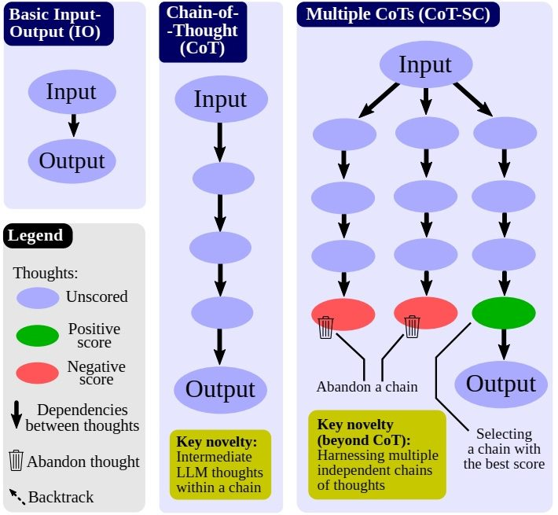
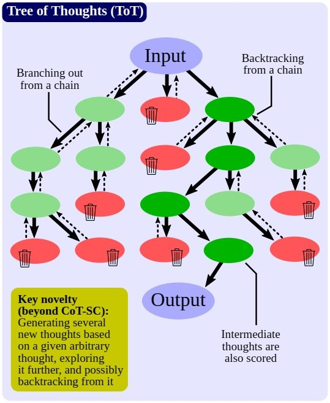
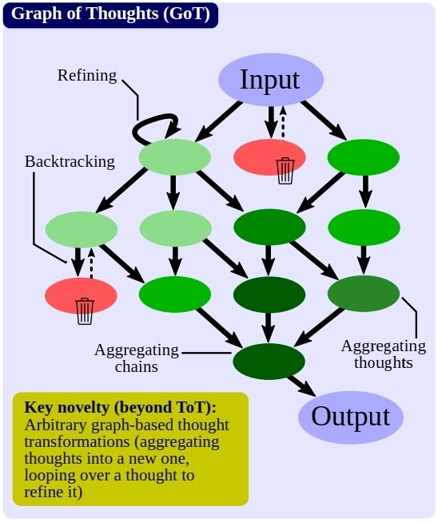
논문에서는 GoT 프레임워크를 사용하여 몇 가지 사용 사례를 구현합니다.
GoT 사용 사례
첫 번째 사용 사례에서는 LLM이 병합 정렬(merge sort)을 구현할 수 있음을 보여줍니다. 이는 먼저 정렬 작업과 그래프 연산을 분해함으로써 수행됩니다. 이는 모든 GoT 워크로드를 구현하고 실행하는 데 핵심적입니다. 저자는 중복을 포함하는 0~9 사이의 숫자를 정렬하는 것을 고려합니다. LLM은 중복 개수가 일치하지 않기 때문에 특정 길이를 초과하는 이러한 숫자 시퀀스를 일관되게 올바르게 정렬하지 못합니다! 이 접근 방식의 세부 사항은 배워둘 가치가 있습니다.
두 번째 사용 사례에서는 집합 교집합 연산(set intersection operation)이 제시됩니다. 집합 교집합 연산은 게놈이나 문서 비교, 일반적인 패턴 매칭에서 반복적으로 발생하는 문제입니다. LLM은 정렬을 처리하는 방식과 유사하게 두 집합에 대한 교집합을 처리합니다. 두 번째 입력 집합은 여러 하위 집합으로 나뉘고 해당 하위 집합들의 교집합이 첫 번째 집합과의 교집합에 대해 평가됩니다. 그런 다음 모든 교집합 세트가 완성된 결과로 집계됩니다. 이것 역시 연구해 볼 가치가 있습니다.
논문에서는 키워드 계산(keyword counting)과 문서 병합(document merging)에 대한 추가 사용 사례도 검토하며 마찬가지로 연구해 볼 가치가 있습니다.
논문은 GoT 프레임워크의 가치에 대한 명확한 진술로 마무리됩니다.
“그래프 분해를 수행할 때의 전반적인 목표는 LLM이 단일 프롬프트를 사용하여(또는 몇 가지 추가 개선 단계를 거쳐) 대부분의 시간 동안 올바르게 해결할 수 있는 지점까지 작업을 분할하는 것입니다. 이는 그래프 탐색의 후반 단계에서 필요한 개선/정제 단계의 수를 크게 낮춥니다. 또한 우리의 결과에서 알 수 있듯이 하위 결과를 결합하거나 연결하는 것은 일반적으로 대규모 작업 인스턴스를 처음부터 해결하는 것보다 쉬운 작업입니다. 따라서 LLM은 최종(또는 최종 상태) 솔루션을 집계할 때 종종 성공적입니다” (Maciej Besta et al.)
하지만 이제 여러분은 지식 그래프 생성에 대해 어떻게 배울 수 있는지 알고 싶을 것입니다. 지식 그래프가 다루기 쉬운 기술이 아니며 가파른 학습 곡선이 따른다는 것을 이미 배웠기 때문입니다. 이는 효과적인 프롬프트 엔지니어링 설계를 향한 여정의 일부입니다.
예제와 함께 살펴보는 새로운 지식 베이스 생성 도구
KB 구축은 그래프 데이터베이스에서 KG로 운영상 호스팅되는 온톨로지 공식화에서 시작되므로 마스터해야 할 기술이 많습니다. 온톨로지 모델과 객체 인스턴스를 갖춘 KB를 종종 KG라고 부르는 벤더와 클라우드 제공업체에 의해 정확한 용어조차 오용되기도 합니다. 아마도 이는 OWL의 모델링 표준에 따라 객체 제약 조건을 적용할 수 있으려면 기본 모델에 여러 객체가 존재해야 하기 때문일 것입니다. 이러한 KG/KB 혼란은 이해할 만합니다. 그러나 온톨로지에 맞추어 모든 객체를 확장할 때 KB를 호스팅하는 기술은 확장 가능해야 하며 Protégé를 다루어 본 사람이라면 누구나 데스크톱의 한계가 빠르게 초과된다는 것을 알고 있습니다. 따라서 Stardog과 같은 벤더들은 여러분(고객)이 자신들이 제공하는 기술을 사용할 수 있을 때 비로소 성공할 수 있음을 깨달았습니다. RDF/OWL/RDFS/RDF*는 일반적으로 잘 알려지지 않은 약어이므로 온톨로지를 수작업으로 제작하는 것은 문제입니다. 생성형 AI 솔루션이 가파른 학습 곡선 없이 모델을 제작하고 SPARQL 쿼리를 생성해 줄 수 있을까요? 벤더의 약속은 ’그렇다’이지만 일단 생성된 후에도 생성된 기본 구문과 시맨틱을 완전히 이해(grok)해야 합니다. 하지만 잠깐만요… 프롬프트 엔지니어링과 임베딩에 KG를 사용하고 싶다고 해놓고 이제는 KB 생성을 돕기 위해 생성형 AI 기술을 사용하고 싶다는 것인가요? 답은 ’그렇다’이며 이를 위한 솔루션이 존재합니다!
Stardog Voicebox
Stardog Voicebox 제품이 데이터와 대화하여 AI의 약속을 이행하고 정확하고 설명 가능한 인사이트를 생성할 수 있는 “Stardog Voicebox Customer 360 Use Case Demo” {https://packt-debp.link/39oRUe}를 참조하십시오. 데모에서 가상의 고객 경험 책임자인 사라는 주요 경쟁사를 인수했습니다. 인수 후 고객 충성도, 원활한 고객 경험 및 비즈니스 성장이 최우선 과제입니다. 사라의 상사는 2023년 12월에 리워드 보드 계정에 가입한 양사 통합 상위 10개 고객을 찾아달라고 요청합니다. 사라는 수많은 대시보드와 함께 양사로부터 사용할 수 있는 여러 도구를 가지고 있습니다. 하지만 어느 것도 이 질문에 대한 답을 제공하지 못합니다. 설상가상으로 많은 고객에 대해 보고 시스템에서 상충되는 정보를 얻게 됩니다. 그래서 사라는 데이터 분석가에게 연락하지만 분석가는 “질문에 답하기 위해 새로운 데이터를 큐레이션하려면 IT를 참여시켜야 한다”고 말합니다. 하지만 IT 담당자는 이러한 모든 기본 데이터에 직접 접근할 수 없으며 데이터 레이크에서 새로운 데이터 세트를 로드해야 한다고 설명합니다. IT 부서에는 프로젝트 백로그가 있으며 사라가 필요로 하는 모델을 큐레이션하고 데이터를 ETL하여 답을 제공하는 데 한 달이 걸릴 수 있습니다!
Stardog Voicebox는 엔터프라이즈 KG와 대화형 AI를 사용하여 시의적절하고 정확하며 설명 가능한 답변을 얻을 수 있습니다. LLM 기반 사용자 인터페이스를 통해 사라는 엔터프라이즈 데이터와 채팅하여 정확하고 시의적절하며 안전하고 환각 없는 숨겨진 연결을 발견할 수 있습니다. 사라는 질문을 던지고 검증 가능하게 정확한 응답을 얻을 수 있습니다. Voicebox는 그녀에게 모든 엔터프라이즈 데이터에 대한 통찰력을 제공합니다. 기본 데이터는 쉽게 역추적할 수 있으며 앞서 지적했듯이 환각이 없습니다. 사라는 데이터와 그 계보를 볼 수 있으므로 모든 답변이 설명 가능합니다. 코드나 대시보드 없이도 답변과 인사이트가 Voicebox 출력에 명확하게 증명됩니다.
Stardog 벤더가 엔터프라이즈 데이터를 이해하기 위해 KG를 사용하고 그 이해를 바탕으로 튜닝된 LLM에서 답변을 얻는 방법을 깊이 이해(grok)하고 있음이 분명합니다. 벤더는 이를 매우 잘 이해하고 있어서 데이터 관리의 미래를 예견하는 “Voicebox FAQ: How LLM, Generative AI, and Knowledge Graphs (KG) are the Future of Data Management” {https://packt-debp.link/Vu0HlF} 발표를 내놓았습니다. 이 제품은 여러분의 KG를 제작하거나 최소한 KG를 생성하는 데 필요한 수고로운 작업의 대부분을 제공하는 데 사용되는 Stardog Voicebox 발표 자료 {https://packt-debp.link/n1hkkp}의 맥락에서 가장 잘 이해될 수 있습니다. 이 도구는 RAG LLM 튜닝이나 프롬프트 엔지니어링 인터페이스를 직접 제공하지는 않습니다. KG가 생성된 후에 여전히 구축해야 합니다.
“Demo Day: LLM-Powered Stardog Voicebox and Knowledge Graphs” {https://packt-debp.link/99rkJk}에서 Stardog은 모든 데이터 소스에서 신뢰할 수 있는 KG를 생성하고 이를 객체 데이터로 채워 KB를 구성하는 방법에 대한 많은 통찰력을 제공합니다. 그림 18.5를 참조하십시오.
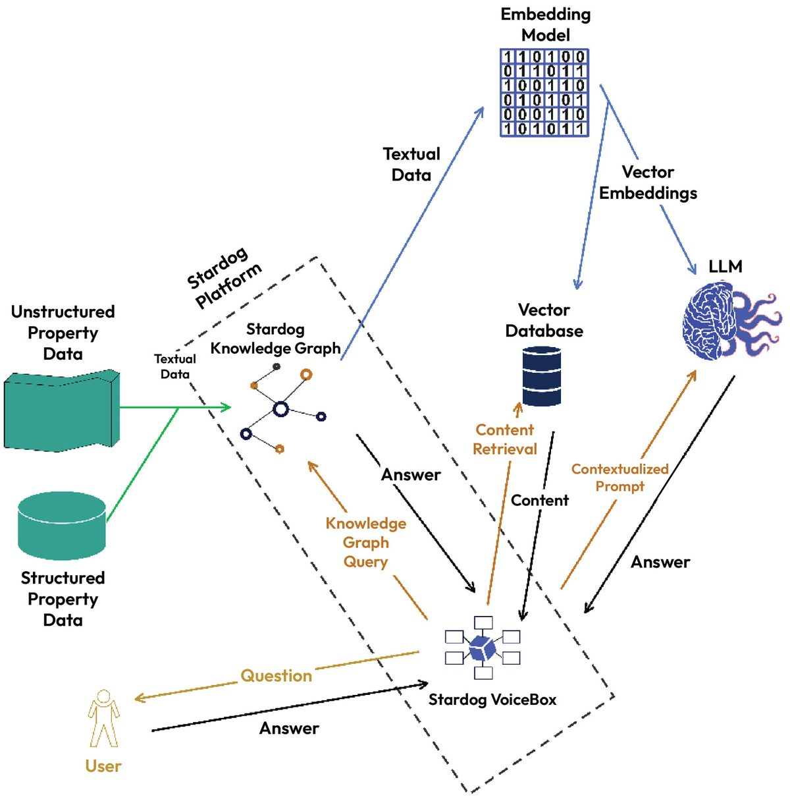
“Voicebox: End-to-End Example of Knowledge Graph Creation” {https://packt-debp.link/WDSfyi}에서는 생성형 AI로 생성된 지식 그래프(KG)의 간략하지만 완전한 예제를 볼 수 있습니다.
Stardog이 해결하고 있는 핵심 데이터 엔지니어링 문제
마지막으로 “Knowledge Graphs, Semantic Layers, and Data Democratization, Oh My! (from TDWI Executive Program)” {https://packt-debp.link/etEVM7}에서는 지식 그래프를 통해 해결되는 몇 가지 핵심 데이터 엔지니어링 문제를 다룹니다. 이 기술은 GenAI LLM 튜닝을 위한 엔터프라이즈 데이터의 결집을 더 쉽게 만들어 기업에서 AI의 약속이 실현될 수 있도록 합니다. Stardog 솔루션이 해결하는 문제는 다음과 같습니다.
- 현재의 데이터 관리 시스템은 데이터 소비자에게 숨겨져 있는 데이터 복잡성 증가와 인사이트 요구를 따라가지 못합니다. 이 정보는 고립된(siloed) 데이터베이스, 카탈로그 및 분석 애플리케이션에 묻혀 있습니다.
- 기존의 그래프 및 관계형 데이터 아키텍처는 고급 분석 솔루션을 혁신하고 수익화하는 요구를 충족하는 데 필요한 액세스, 컨텍스트 및 추론 기능이 부족합니다.
- 데이터 카탈로그는 정보 자산의 인벤토리를 제공하지만, 카탈로그가 나머지 엔터프라이즈 데이터와 분리되어 있으면 메타데이터 사일로만 남게 됩니다. 이로 인해 데이터 소비자는 확장 가능한 탐색 기반 비즈니스 분석을 수행할 때 아키텍처적 한계에 부딪히게 됩니다.
- 데이터 패브릭은 이러한 요구를 해결하고 데이터를 해방하기 위한 현대적인 솔루션으로 등장했지만 어떻게 해야 할까요? 데이터 패브릭의 핵심 구현 요소인 KG가 없다면 데이터 메시 셀프서비스 비전을 실현하는 역량이 손상됩니다.
지식 그래프는 핵심 데이터셋을 하나로 엮어주는 시맨틱 데이터 계층입니다. 지식 베이스를 사용하면 데이터가 저장된 위치에서 데이터에 연결하고, 데이터 카탈로그를 채우고 사용하며, 데이터 소비자가 필요로 하는 데이터, 정보 및 지식으로 데이터 및 분석 팀의 역량을 강화할 수 있습니다.
상위 수준 사용 사례
이제 많은 예제와 함께 KG, KB 및 생성형 AI 배경 기술 검토가 완료되었으므로, 보건 과학 지식 그래프(Health Sciences Knowledge Graph, KG)부터 시작하여 상위 수준 사용 사례를 살펴보겠습니다.
보건 과학 지식 그래프
과학자, 임상의, 의사, 간호사, 연구자에게 의료 정보를 제공하는 세계 최대 공급업체인 엘스비어(Elsevier)에서 근무할 때 핵심 문제는 이 말뭉치(corpus)가 텍스트 형태로 갇혀 있다는 점이었습니다. 이 말뭉치와 새로 발표되는 모든 연구 논문은 텍스트 형태에서 해방되어 지식이 재사용을 위해 증류되어야 했습니다. 인사이트의 가치가 생명을 구하거나 새로운 발견으로 이어질 수 있는 상황에서 더 적은 자원으로 더 많은 일을 해내는 것은 과거에도 그랬고 지금도 여전히 필수적입니다. 이는 매우 흥미진진한 도전 과제였습니다! 방대한 양의 정보를 이용할 수 있다는 것은 큰 기회이지만 이를 이해하는 지식이 선별된 도메인 전문가들의 틈새 전문 영역이기 때문에 텍스트에서 이를 파싱해내는 것이 과제입니다. ML/AI 알고리즘은 의미를 수확하기 위해 수많은 입력을 갖춘 빅데이터로 학습합니다. 하지만 이는 보건 과학 도메인 스펙트럼 전반에 걸쳐 균일하게 존재하지 않습니다. 이 상위 수준 사용 사례가 해결하고자 하는 의료 정보 문제는 피터 덴슨(Peter Densen)의 저작 “Challenges and Opportunities Facing Medical Education” {https://packt-debp.link/yfy9fT}에 명확히 드러나 있습니다.
이 정보 문제에 대한 엘스비어의 솔루션은 개념을 구성하는 KG를 구축한 다음, 이를 사용하여 시맨틱 모델에 추가되어야 할 새로운 사실을 수확함으로써 시간이 지남에 따라 KG가 개선되고 KB의 커버리지 깊이가 깊어지도록 하는 것이었습니다. 진화하는 KB는 엘스비어 헬스케어 지식 그래프(Elsevier Healthcare Knowledge Graph)로 불렸으며 엘스비어 제품인 ClinicalKey의 일부로 임상 검색 서비스를 촉진하는 데 사용되었습니다. 검색 효능을 포착할 수 있게 됨으로써 그래프가 성숙해지고 시간이 지남에 따라 더욱 정확해질 수 있었습니다. 의학 말뭉치 인덱싱의 정확성도 향상되었습니다. 엘스비어 헬스케어 지식 그래프는 인덱스 품질 개선, (KB의 유향 비순환 워크로부터 생성된) 패싯 검색 정렬, 쿼리 용어 자동 완성, 맞춤법 수정 및 용어 확장을 통해 더 나은 검색 결과를 가능하게 했습니다. 그 결과는 대성공이었으며 지금도 그러합니다. 임상의와 진단 전문가는 검색 경험을 통해 가시적인 이점을 확인할 수 있었습니다. 이후 그래프 조직에 내재된 시맨틱 모델링 덕분에 이는 독립형 데이터 제품으로서 유용해졌습니다. 엘스비어 헬스케어 지식 그래프는 수백만 개의 의료 개념, 사전 용어, 동의어 및 개념 확장을 포함하고 있습니다. 모든 것은 의료, 임상 및 진단 목적에 맞게 정확하게 맥락화되어 있습니다. 오늘날 이는 엘스비어가 의료 전문가를 위해 구상하고 있는 연구 논문, 텍스트 및 진단 도구의 생성형 AI 처리에 매우 유용하게 활용되고 있습니다.
“Text Snippets to Corroborate Medical Relations: An Unsupervised Approach using a Knowledge Graph and Embeddings” {https://packt-debp.link/5Xmwsr}에서는 지식 그래프가 검색 결과를 크게 향상시키는 것으로 나타났습니다. 검색 인덱스가 유효성을 유지하려면 도메인 전문가가 일반적으로 의학 문헌을 지속적으로 최신 상태로 유지해야 합니다. 지식 그래프 트리플(triple)을 확인하거나 부정하는 문헌 내 텍스트 스니펫을 동적으로 식별하는 것은 신뢰할 수 있는 의료 의사 결정 지원 시스템과 신뢰할 수 없는 시스템을 구분 짓는 차별화 요소입니다. 이 논문은 트리플을 의료 텍스트에 매핑하는 엘스비어 임상 솔루션의 접근 방식을 설명합니다. KG는 참조 텍스트에서 일치하는 문장을 찾는 데 사용되는 트리플의 소스입니다. 비지도 ML 접근 방식은 구문 임베딩과 코사인 유사도 측정을 사용하며 텍스트에 핵심 개념이 존재하는 것으로 확인되면 후보 텍스트 스니펫의 순위를 높입니다. 이 접근 방식은 KG 내의 시맨틱 관계를 61.4%의 정밀도와 86.3%의 재현율로 텍스트 스니펫에 정확하게 매핑합니다.
KG 기술에 대한 추가적인 설명은 엘스비어의 수석 개발 관리자인 메브 사마라싱헤(Mev Samarasinghe)의 “Elsevier Knowledge Graph that Captures the Worlds Medical Concepts” {https://packt-debp.link/Uoxqkr}에 소개되어 있으며 마울릭 캄다르(Maulik Kamdar) {https://packt-debp.link/VIeTMr}의 “Elsevier’s Healthcare Knowledge Graph: An Actionable Medical Knowledge Platform to Power Diverse Applications” {https://packt-debp.link/ryWPeg}에서 더욱 자세히 다루어집니다. 다루어지는 의료 데이터의 양과 범위를 이해하려면 그림 18.6을 참조하십시오.
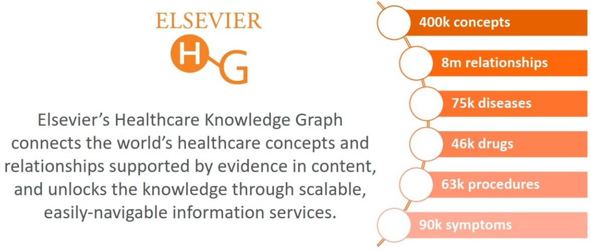
“The Knowledge Graph Conference - Web-Scale Data Integration in Life Sciences & Healthcare Through Knowledge Graphs - Optum Health” {https://packt-debp.link/4aAw44}에서 마울릭은 다음과 같이 말합니다.
“분명 수많은 도전과 기회가 존재합니다… 이것은 여러분이 여러 번 보았을 매우 대중적인 다이어그램이지만 이 다이어그램[그림 18.6 참조]은 생명의학, 헬스케어 및 생명 과학 분야에서 너무나 들어맞습니다. 생명의학 지식은 새로운 연구와 발견으로 끊임없이 진화하고 확장되기 때문에 엔터프라이즈 지식 그래프와 관련된 자동화에 대해 고민해야 합니다. 제품에 사용되는 지식은 신뢰할 수 있고 정확해야 하므로, 도메인 전문가를 위한 시각화 인터페이스를 고려해야 합니다. 그리고 지식은 여러 가지 서로 다른 이기종 소스에서 발생할 수 있습니다… 머신러닝을 통해 지식 추출에 어떻게 도움이 되는지 확인할 수 있습니다.” (Maulik Kamdar, 2023).
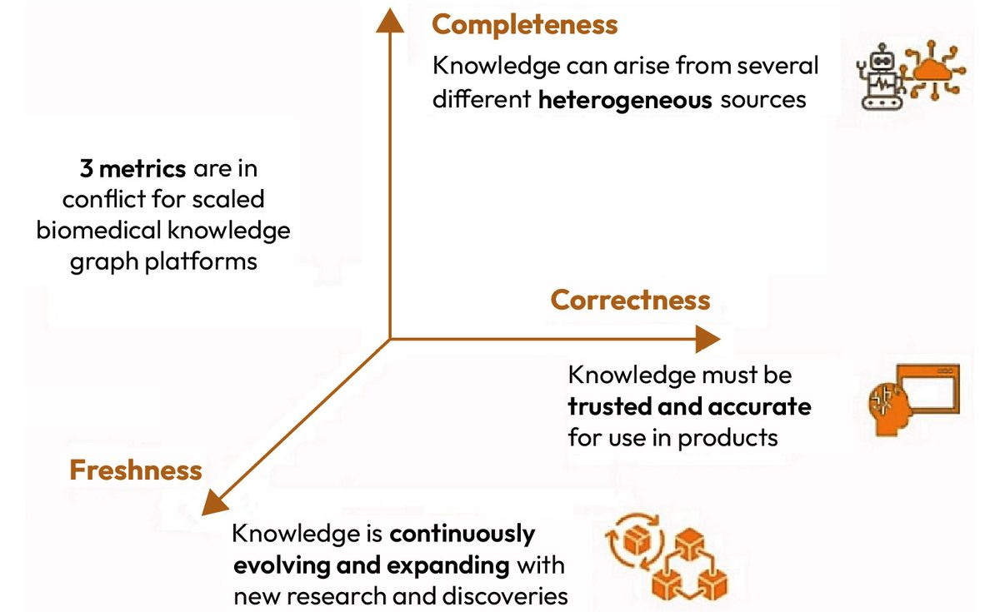
엘스비어의 “Healthcare Knowledge Graph”의 성공은 최근 EmBiology {https://packt-debp.link/pTyckb} 제품의 “Biology Knowledge Graph” 개발로 다시 한번 재현되었습니다. 연구자가 간과했을 수 있는 새로운 기회를 찾기 위해 생물학적 관계를 시각화하고 발견하는 데 도움이 되는 수백만 개의 사실이 저장된 “EmBiology Fact Sheet” {https://packt-debp.link/Erbdcu}에서 해당 제품에 대한 자세한 내용을 확인할 수 있습니다. 지식 그래프에 담긴 생물학 도메인의 정보 시맨틱은 다음 인용문에서 언급된 것처럼 처리 과정의 오류를 줄여줍니다.
“EmBiology를 사용하면 전반적인 성공률을 20~25% 개선할 수 있습니다.” VPGT(유전자 치료 부문 부사장) {https://packt-debp.link/Z29WwW}).
이러한 사용 사례를 볼 때 헬스케어 임상 검색 및 발견뿐만 아니라 생물학 연구에서 지식 그래프의 힘은 매우 명확합니다. 지식과 메타데이터를 시맨틱 방식으로 구성하면 향후 용도를 위해 데이터를 재구상할 수 있습니다. 두 그래프는 모두 Elsevier Labs AI 연구에 사용되고 있으며 오늘날 이미 KG의 혜택을 받고 있는 현재의 ML 텍스트 마이닝 방식을 GenAI 방법이 대체함에 따라 우리 모두 뛰어난 새로운 발전을 기대할 수 있습니다.
생명 과학 시맨틱 정보 엔진
엘스비어의 헬스케어 지식 그래프가 구상, 아키텍처화, 설계되기 전에 연구 도메인 전반에 걸쳐 다양한 연결된 지식 그래프를 서비스하는 엔진을 생성하여 팀 버너스 리(Tim Berners-Lee)의 인터넷 비전을 진전시키고자 했던 엘스비어의 Semantic Information Engine (ELSSIE) {https://packt-debp.link/adMGXn}이 있었습니다. 당시 팀은 Stardog 및 Ontotext 그래프 데이터베이스를 사용할 수 없었습니다. 그래서 우리가 취한 조치는 IBM Research의 프로젝트 Quetzal {https://packt-debp.link/DEa9YP}에서 유래된 연구 결과를 바탕으로 GridGain(또는 Apache Ignite) 위에 구축하는 것이었습니다. 시맨틱 그래프 데이터를 보유한 인메모리 데이터베이스와 함께 작동하도록 SPARQL ARQ 파서의 백엔드를 재작성해야 했습니다(결코 쉬운 작업이 아니었습니다). 컨설팅 벤더인 Knoldus의 지원을 받아 수정이 이루어졌습니다. 생명 과학 모델링은 Reaxys {https://packt-debp.link/B37IeE} 시스템에 이미 수집된 속성을 기반으로 모델 반응을 통해 화학적 결과를 예측할 수 있는 것을 목표로 저분자 화학(small molecule chemistry)에 먼저 초점을 맞추었습니다. 이 프로젝트는 목표했던 바를 달성했으며 우리가 엘스비어의 헬스케어 지식 그래프와 엘스비어 임상 시스템 검색 기능을 구축하는 팀으로 이동한 후 Elsevier Entellect {https://packt-debp.link/5iBVYZ} 프로젝트가 되었습니다.
원래 구상되었던 것은 엘스비어가 나중에 구축한 것의 씨앗이 되었습니다. 신약 개발의 시간과 비용을 절감할 수 있는 엄청난 가치 때문에 ELSSIE는 부활할 수 있는 주요 후보입니다. ELSSIE와 같은 통합 생명 과학 KG 엔진을 운영 환경에 적용하고 GenAI 발견을 지원하는 데 사용할 수 있다면 사회적 가치는 엄청날 것입니다. 이를 위해서는 저분자 및 장쇄 분자 화학 공정과 특성, 그리고 생물학적 경로에서 이러한 분자의 발현에 대한 매우 깊은 이해(또는 모델)가 필요합니다. 엘스비어와 기타 기관들은 적절한 데이터를 보유하고 있습니다. 단지 GenAI 사용 사례에 맞게 잘 처리될 수 있는 방식으로 아직 구성되지 않았을 뿐입니다. 이 사용 사례는 여전히 한쪽 끝이 열려 있으며 우리는 다른 이들이 이 도전을 이어받아 현재의 작업을 바탕으로 발전시켜 나가기를 환영합니다.
마이크로블로그 메시지 분석
2009년 블룸버그에서 향상된 패싯 기반 Bloomberg News Search와 이후 Bloomberg Law Search의 수많은 기능에 대한 아키텍처 및 설계를 개념 증명과 함께 구현한 후, 저는 Dataminr의 공동 창립자들로부터 연락을 받았습니다. 그들은 자신들이 달성하고자 하는 바를 설명했고 저는 즉시 필요한 것을 달성할 수 있는 아키텍처로 아이디어를 구체화하는 방법을 생각했습니다. 이는 나중에 “METHODS, APPARATUS AND SOFTWARE FOR ANALYZING THE CONTENT OF MICRO-BLOG MESSAGES” {https://packt-debp.link/sIEdlu}라는 특허로 출간되었습니다. Dataminr에서 해결하고자 했던 핵심 문제는 다음과 같습니다.
- 핵심 데이터셋이 엄청나게 증가하는 동안 하루에 15억 개 이상의 트윗을 처리하고 신호 경보 시스템을 어떻게 만들 것인가? 트위터 마이크로블로그 메시지는 유사한 메시지들과 클러스터링될 수 있으며 해당 클러스터는 바이럴(viral) 상태로 판정될 수 있습니다. 짧은 시간 프레임 내에 바이럴 임계값에 도달하지 않더라도, 상위 집합 시간 프레임에서 클러스터가 나타내는 개념에 대해 바이럴성(virality)을 촉발하기에 충분한 메시지를 축적할 수 있습니다. 초기 Dataminr 시스템에서 슬라이딩 시간 윈도우의 길이는 1분에서 10분 사이였습니다. 경보의 지표가 될 수 있는 것은 클러스터링 및 분류 후 바이럴 상태를 획득할 때까지 독립형 이벤트로서 주목할 가치가 있었습니다. 바이럴성은 진실에 대한 강력한 지표이며 조치를 취할 가치가 있습니다. 이 초기 시점에 AWS에는 EC2와 S3라는 두 가지 서비스만 있었습니다. 오늘날 우리가 보는 모든 PaaS 서비스는 그 이후에 등장했으며 Microsoft의 Azure 대안은 아직 존재하지도 않았습니다.
- 이 방대한 양의 데이터 전반에 걸쳐 트위터 영어 n-gram(당시 140자 트윗 제한을 지키기 위해 트위터 사용자들이 사용했던 약어 표기법)을 사용하여 k-means 클러스터링을 어떻게 구현할 것인가? 당시 n-gram 연구는 영어 n-gram에 초점을 맞추었습니다. 2009년 당시 우리는 ML 혁명의 막 시작 단계에 있었고 k-means 클러스터링과 코사인 유사도의 기본 정의 외에 우리가 작업할 수 있는 것은 프린스턴 코퍼스(Princeton Corpus)가 거의 전부였습니다.
- 시스템의 효과적인 경보의 핵심이 되는 개념들을 어떻게 구성할 것인가? 수정된 k-means 클러스터링 접근 방식을 사용하여 토큰 재발생을 기반으로 클러스터링할 수 있었지만 그 후에도 클러스터에 가장 유사한 분류를 할당한 다음 개념이 일치하는 도메인으로 클러스터를 분류해야 했습니다. 이 모든 것은 온톨로지에 의해 주도되며 그래프가 온톨로지인 경우 분류 체계는 그래프의 유향 비순환 워크(directed acyclic walk)가 되므로 시간이 지남에 따라 이를 진화시켜야 합니다. 당시 Stanford University의 Protégé, OWL/RDF 등의 시맨틱 기술은 존재하지 않거나 막 형성되는 단계여서 신뢰할 수 없었습니다. 또한 금융 계층 구조 및 브랜드와 기업 간의 연계 데이터셋을 구매해야 하는 시급한 필요성이 있었습니다. 이러한 데이터는 고가였으며 D&B, Yahoo Finance, S&P CapIQ, Xignite 등 서드파티 데이터 소스와 파트너십이 체결되었습니다.
- 추가적으로 진실의 원천(source of truth)이 될 온톨로지가 필요했습니다. 고차원 금융 산업 비즈니스 온톨로지(Financial Industry Business Ontology, FIBO) {https://packt-debp.link/xSDwma}에 상응하는 온톨로지를 구축하기 위해 (결국 큰 고통을 겪게 되었지만) Oracle RDBMS가 선택되었습니다. 그래프 DB가 필요한 상황에서 RDBMS를 사용하는 결정에 참여하여 후회했던 내 커리어의 두 번 중 두 번째 사례였습니다(첫 번째는 블룸버그의 뉴스 검색 온톨로지였는데, 이는 Dataminr가 요구했던 것보다 훨씬 덜 깊었습니다).
도전 과제가 주어졌고 시스템이 개발되었으며 수년에 걸쳐 반복적으로 개선되었습니다. 저(리처드 실러, Richard Schiller)는 초기 시절 Dataminr의 수석 아키텍트이자 CIO였으며 3번 또는 4번째 직원(숫자가 중요하진 않지만)이었습니다. 우리는 온 힘을 다해 기술을 깊이 파고들었고 각 문제에 대한 훌륭한 솔루션을 찾아냈습니다. 데이터 볼륨을 처리할 때 우리는 고가용성이면서도 확장 가능한 인스턴스 트리오(trio) 구조를 구축했습니다. 한 가용 영역에 3개 인스턴스, 다른 영역에 3개 인스턴스를 배치했으며 확장이 필요할 때는 다른 리전에서도 추가 인스턴스를 시작할 수 있었습니다. 이후 제 재임 기간이 지난 뒤 AWS PaaS 서비스가 사용되었습니다. 자체 호스팅 메시지 대기열 및 기타 통신 서비스는 효율적인 AWS 서비스로 이전되었습니다. 버지니아에 엘 데레초(El Derecho) 폭풍이 닥쳐 시스템을 재구축하는 데 사용했던 3개를 제외한 모든 인스턴스를 잃었을 때 이 구조를 갖추고 있었던 것은 정말 다행이었습니다. 고가용성 클라우드 인프라 구성이 없었다면 우리는 모든 것을 잃었을 것입니다. 이 테스트에서 우리는 성공했습니다!
우리는 또한 AWS 시스템에서 얻을 수 있는 모든 것을 쥐어짰습니다! 팀은 모든 트위터 메시지 수집 및 메시지 클러스터 처리를 대규모로 병렬화했습니다. Dataminr는 전 세계에서 10개뿐인 트위터 파이어호스(firehose) 수신자 중 하나였으며 필터링되지 않은 모든 메시지를 감당해내는 것(혹은 체하는 것)은 온전히 우리의 몫이었습니다. Dataminr 시스템이 막히면 파이어호스 자격을 잃게 되는 상황이었습니다. 우리는 매우 성공적이었기 때문에 얼마 지나지 않아 그것은 더 이상 실질적인 위험이 되지 않았습니다! 대규모 볼륨 하에서 원시 데이터를 특수하게 처리한 것은 하나의 성공 스토리였습니다. 그런 다음 클러스터링된 트윗의 분류 및 범주화 로직에 대해서도 동일한 작업을 수행했습니다.
수집된 데이터의 데이터 구조는 시계열 데이터와 매우 유사했습니다. 이전 윈도우와 균등하게 겹치는 롤링 윈도우인 할당된 타임슬롯 내에서 처리를 최적화해야 했기 때문입니다. 예를 들어 5개의 1분 슬롯이 5분 슬롯에 들어가고 2개의 5분 슬롯이 10분 슬롯에 들어가는 식이었습니다. 이들은 튜닝 가능했지만 Dataminr 초기에는 거의 변경되지 않았습니다. 그런 다음 Oracle 온톨로지와 지식 베이스의 데이터 영향이 있었습니다. 온톨로지는 고정되어 있었지만 초기 버전의 FIBO를 기반으로 구축되었습니다.
스타트업 특성상 이 중요한 컨텍스트 데이터를 수동으로 큐레이션할 운영 인력이 없었기 때문에 지식 베이스는 여러 소스에서 신중하게 큐레이션되었습니다. 클러스터링된 트윗에서 집계되는 데이터에 의미를 부여하는 것은 필수적이었습니다. 예를 들어 트위터(현 X)에서 특정 브랜드를 소유한 회사나 회사 계층 구조에 대해 이야기하는 사람이 누가 있겠습니까? 아무도 없습니다! 사람들은 회사의 브랜드와 암묵적으로 연관된 제품의 흔한 이름에 대해 이야기합니다. 때로는 브랜드 이름이 잊혀지기도 하고 자주 바뀌기도 합니다. 하지만 분석가들은 소셜 미디어 감정 변화가 자사에 미치는 영향을 보고 싶어 하며 이는 때때로 기업 계층 구조 하에서 브랜드 감정을 집계한 것입니다. 분석 시스템은 데이터의 복잡한 제조 과정(sausage factory processing)을 숨기고 복잡성을 노출하지 않으면서 컨텍스트를 드러내야 합니다. 복잡한 것을 단순하게 만드는 것이 바로 Dataminr가 탁월한 역량을 발휘하는 부분입니다. 지식 베이스 패턴은 시스템이 처음 가동되었을 때 큰 가치를 제공했으며 수년에 걸쳐 그 중요성이 다소 약화되었습니다. 최근에는 GenAI LLM RAG 처리를 위해 다시 한번 막대한 가치를 지니게 되었습니다.
Dataminr의 처리 능력에 대한 세부 사항은 더 이상 깊이 다루지 않겠습니다. 특허를 통해 원래 시스템에 대한 이해를 조금 더 얻을 수 있을 것입니다. 회사는 지난 15년 동안 크게 변했고 500명 이상의 정규직 직원을 보유한 규모로 성장했습니다. 첫 번째 빌드에 투입된 데이터 엔지니어링 작업의 가치를 실감할 수 있을 것입니다. 오늘날 Dataminr는 매우 성공적인 유니콘 스타트업이며 초기에 그 일부가 되었던 것을 자랑스럽게 생각합니다.
이 사용 사례가 이 책의 모범 사례에 대한 배경을 제공하고 여러분이 여정을 마칠 때 유용한 아이디어를 얻는 계기가 되기를 바랍니다.
요약
이 장에서는 부족한 부분을 채우고 연구할 수 있는 수많은 참고 자료와 함께 기술 심층 분석을 접했습니다. 그런 다음 세 가지 상위 수준 사용 사례를 살펴보았습니다. 비록 구체적인 세부 사항은 부족했을지라도 전반적인 개념을 이해하기에 충분히 설명되었습니다. 도전 과제는 항상 데이터를 새로운 방식으로 활용하고 이를 가능하게 하는 방식으로 데이터를 구성하는 것이었습니다. 데이터는 스마트하고, 대체 가능하며, 연결 가능해야 합니다.
시간이 지남에 따라 미래는 IT 조직 내부 및 외부의 역할 간에 신뢰가 어떻게 집행될 수 있는지를 보여줄 것입니다. 기본 데이터의 진실이 정형 시맨틱을 통해 투명하게 보존될 때 데이터 사일로는 무너질 것입니다. 데이터 소비자는 제시된 정보가 정확하고, 완전하며, 거버넌스되고, 의도한 대로 사용될 수 있음을 알게 될 것입니다. 이는 RAG 처리, 프롬프트 엔지니어링/튜닝 또는 핵심 LLM 모델 생성 중에 오류가 감소하기 때문에 AI 에코시스템의 약속을 현실로 만들어 줄 것입니다.